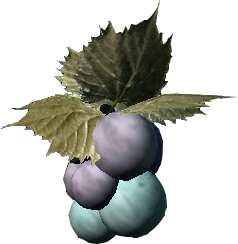
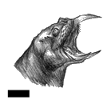
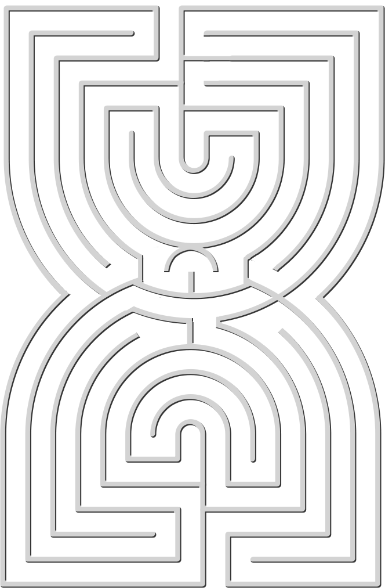

Der Mond Lorkhan
von
Fal Droon
Ich will nicht näher auf die unterschiedlichen Berichte über die Geschehnisse am Adamant-Turm und den Krieg der Manifestierten Metaphern eingehen. Diesen Geschichten fehlt es meiner Empfindung nach an den Qualitäten, die sie "erzählbar" machen. Jeder von uns hat seine Lieblingserzählung über Lorkhan, einen Lieblingsgrund, warum Lorkhan Nirn erschaffen hat, und eine Geschichte darüber, was letztendlich mit seinem Herzen geschehen ist. Aber die Theorie über den Mond Lorkhan ist von besonderer Art.
Kurz gefasst waren die Monde die zwei Hälften von Lorkhans "fleischgewordener Göttlichkeit". Wie auch die anderen Götter war Lorkhan ein Planet sowie eine Dimension, die an der Großen Erschaffung beteiligt war ... bis auf den Teil, bei dem die Acht Teile ihrer himmlischen Körper opferten, um den sterblichen Planeten und die eine Dimension zu erschaffen. Lorkhan brach dabei entzwei und sein göttlicher Funke fiel auf Nirn wie eine Sternschnuppe. So "impfte er ihm seine göttliche Existenz und eine vernünftige Portion Selbstsucht ein."
Masser und Secunda sind die Personifizierung dieser Spaltung - nach dem Artaeum die "Gespaltene Zweihaftigkeit" -, gegen die die Lorkhan-Legende oft ankämpfen muss: Gedanken von Anima und Animus, Gut und Böse, Sein und Nichtsein, der Poesie von Körper, Hals und Wehklagen gegenüber der Stille-als-verzehrendes-Nichts und so weiter. Diese sind als Lorkhans ewiges Manifest in den Abendhimmel eingebrannt, um die Sterblichen an ihre Pflichten zu erinnern.
Anhänger dieser Theorie sind der Meinung, dass alle anderen "Erzählungen des Herzens" mythologische Degenerationen des wahren Ursprungs der Monde sind. Es scheint mir unnötig, hinzufügen zu müssen, dass auch die "Theorie vom leeren Halbmond" zu diesen Phänomenen gehört.
Die Wolfskönigin
Band V
von
Waughin Jarth
Aufgeschrieben von Inzolicus, einem Schüler des Montocai und Weisen des zweiten Jahrhunderts der Dritten Ära
3Ä 119
Einundzwanzig Jahre lang herrschte Antiochus Septim in Tamriel und bewies, dass er trotz seiner moralischen Mängel ein fähiger Anführer war. Sein größter Sieg war der im Inselkrieg des Jahres 110, als der kaiserlichen Flotte und der königlichen Marine der Summerset-Inseln, zusammen mit den magischen Kräften des Psijic-Ordens, die Zerstörung der Invasionsarmada von Pyandonea gelang. Seine Geschwister, König Magnus von Kleinmottien, König Cephorus von Gilane und Potema, die Wolfskönigin des Königreichs von Einsamkeit, herrschten gut, und die Beziehungen zwischen dem Kaiserreich und den Königreichen Tamriels verbesserten sich fortwährend. Jedoch hatten Jahrhunderte der Vernachlässigung noch nicht alle Narben geheilt, die zwischen dem Kaiserreich und den Königen von Hochfels und Himmelsrand existierten.
Während eines der seltenen Besuche seiner Schwester und seines Neffen Uriel fiel Antiochus, der während seiner Regentschaft unter verschiedenen Krankheiten gelitten hatte, in ein Koma. Über Monate siechte er in einem Zustand zwischen Leben und Tod dahin, während sich der Ältestenrat sich auf die Übernahme des Throns durch seine fünfzehnjährige Tochter Kintyra vorbereitete.
3Ä 120
"Mutter, ich kann Kintyra nicht heiraten," sagte Uriel, von dem Vorschlag eher erheitert denn beleidigt. "Sie ist meine Kusine ersten Grades. Und außerdem glaube ich, dass sie mit einem der Fürsten des Rates verlobt ist, mit Modellus."
"Ihr seid so zimperlich. Dies ist nicht die Zeit und nicht der Ort, um über Anstand nachzudenken", sagte Potema. "Aber Ihr habt, was Modellus angeht, in jeder Beziehung recht - und wir sollten den Ältestenrat in dieser kritischen Lage nicht verärgern. Was haltet Ihr von Prinzessin Rakma? Ihr habt in Farrun recht viel Zeit in ihrer Gesellschaft verbracht."
"Sie ist schon in Ordnung," sagte Uriel. "Sagt mir nicht, dass Ihr alle schmutzigen Einzelheiten hören wollt."
"Bitte erspart mir anatomische Detail", Potema schnitt eine Grimasse. "Aber würdet Ihr sie heiraten wollen?"
"Ich denke schon."
"Sehr gut. Dann werde ich die Vorbereitungen treffen." Potema machte sich eine Notiz, bevor sie fortfuhr: "König Lleromo war ein schwer zu haltender Verbündeter, und eine politische Heirat sollte Farrun auf unserer Seite halten. Falls wir sie brauchen sollten. Wann ist die Beerdigung?"
"Welche Beerdigung?" fragte Uriel. "Ihr meint die von Onkel Antiochus?"
"Natürlich", seufzte Potema. "Ist in letzter Zeit noch jemand gestorben?"
"Eben rannte eine rothwardonische Kinderhorde durch die Hallen, also nehme ich an, dass Cephorus angekommen ist. Magnus ist gestern am Hof eingetroffen, also sollte sie jetzt jeden Tag stattfinden."
"Dann ist es Zeit, den Rat anzusprechen," sagte Potema lächelnd.
Sie kleidete sich ganz in schwarz, nicht farbenfroh wie sonst. Es war wichtig, als betrübte Schwester angesehen zu werden. Sie sah in den Spiegel und stellte fest, dort jedes ihrer 53 Jahre zu sehen. Eine silberne Strähne schlängelte sich durch ihr rotbraunes Haar. Die langen, kalten, trockenen Winter im nördlichen Himmelsrand hatten ihr ganzes Gesicht mit Falten überzogen, dünn wie ein Spinnennetz. Aber sie wusste: Wenn sie lächelte, konnte sie immer noch Herzen gewinnen und durch einen finsteren Blick Angst erzeugen. Das reichte für ihre Absichten.
Potemas Rede vor dem Ältestenrat ist durchaus für Schüler öffentlicher Reden studierenswert.
Sie begann mit Schmeicheleien und Selbstbeschämung: "Meine höchst erhabenen und weisen Freunde, Mitglieder des Ältestenrates, ich bin nur eine Provinzkönigin, und ich kann nur annehmen, dass ich zur Sprache bringe, was Ihr bereits bedacht habt."
Sie fuhr fort, indem sie den einstigen Kaiser lobte, der abgesehen von seinen Fehlern ein beliebter Herrscher gewesen war: "Er war ein wahrer Septim und ein großer Krieger und zerstörte - dank Eures Rates - die fast unsichtbare Kriegsflotte von Pyandonea."
Doch sie verschwendete wenig Zeit, um zu ihrem eigentlichen Anliegen zu kommen: "Die Kaiserin Gysilla tat unglücklicherweise nichts, um den wollüstigen Charakter meines Bruders zu zügeln. Selbst eine Hure aus den Elendsvierteln der Stadt hat sich nicht in mehr Betten begeben als sie. Hätte sie ihre Pflichten im kaiserlichen Schlafgemach getreuer erfüllt, so hätten wir einen wahren Erben für das Kaiserreich, nicht diese schwachköpfigen, unehelichen Muttersöhnchen, die sich die Kinder des Kaisers nennen. Das Mädchen namens Kintyra wird allgemein als die Tochter von Gysilla und dem Hauptmann der Wache angesehen. Es mag sein, dass sie die Tochter von Gysilla und dem Jungen, der die Zisternen reinigt, ist - wir können das nicht mit Sicherheit wissen. Nicht so sicher, wie wir die Herkunft meines Sohnes Uriel kennen, des ältesten wahren Sohns des Herrschergeschlechts der Septim. Meine Fürsten, die Prinzen des Kaiserreiches werden keinen Bastard auf dem Thron dulden, dass kann ich Euch versichern."
Sie endete gemäßigter, aber mit einem Aufruf zum Handeln: "Die Nachwelt wird über Eure Taten urtelien. Ihr wisst, was getan werden muss."
An diesem Abend bewirtete Potema ihre Brüder und deren Ehefrauen im Kartenraum, ihrem liebsten kaiserlichen Speisesaal. Die Wände waren übersät mit leuchtenden, doch verblassenden Darstellungen des Kaiserreichs und aller darüber hinaus bekannten Länder: Atmora, Yokunda, Akavir, Pyandonea und Thras. Über ihren Köpfen breiteten sich verzerrte Bilder des Sternenhimmels in der großen Glaskuppel aus, die regennass den Raum überspannte. Blitze flackerten im Minutenabstand auf und erzeugten fremdartige, gespenstische Bilder an den Wänden.
"Wann werdet Ihr vor dem Rat sprechen?" fragte Potema, als das Essen serviert wurde."
"Ich bin mir nicht sicher, ob ich es tun werde," sagte Magnus. "Ich glaube nicht, dass ich etwas zu sagen habe."
"Ich werde zu ihnen sprechen, wenn sie die Krönung von Kintyra bekannt geben", sagte Cephorus. "Lediglich als Formalität, um meine Unterstützung und die Unterstützung von Hammerfell zum Ausdruck zu bringen."
"Ihr könnt für ganz Hammerfell sprechen?" fragte Potema mit einem neckenden Lächeln. "Die Rothwardonen müssen Euch sehr lieben."
"Wir haben eine einzigartige Beziehung zum Kaiserreich in Hammerfell", sagte Bianki, Cephorus'. "Seit dem Vertrag von Stros M'kai versteht man uns als Teil des Kaiserreiches, nicht als Untertan."
"Ich nehme an, dass Ihr bereits zum Rat gesprochen habt", sagte Magnus' Gattin Hellena spitz. Sie war von Natur aus diplomatisch, aber als cryodilische Herrscherin eines argonischen Königreichs wusste sie Missgeschicke zu erkennen und ihnen entgegenzutreten.
"Ja, das habe ich", sagte Potema und hielt inne, um ein Stück geschmorten Jalfvogel zu genießen. "Ich hielt heute Nachmittag eine kurze Rede zur Krönung."
"Unsere Schwester ist eine ausgezeichnete Rednerin", sagte Cephorus.
"Ihr seid zu freundlich", sagte Potema lachend. "Ich kann vieles besser, als Reden zu halten."
"Zum Beispiel?" fragte Bianki lächelnd.
"Darf ich fragen, was Ihr in Eurer Rede gesagt habt?" fragte Magnus misstrauisch.
Es wurde an die Tür geklopft. Der Majordomus flüsterte Potema etwas zu, woraufhin sie lächelte und sich vom Tisch erhob.
"Ich sagte dem Rat, dass ich der Krönung meine volle Unterstützung geben würde, vorausgesetzt dass er weise handeln würde. Was könnte daran schlimm sein?" sagte Potema und nahm ihr Weinglas mit zur Tür. "Wenn Ihr mich entschuldigt, meine Nichte Kintyra wünscht, ein paar Worte mit mir zu reden."
Kintyra stand in der Halle, nahe einer kaiserlichen Wache. Sie war bloß ein Kind, doch Potema erinnerte sich, dass sie in diesem Alter bereits zwei Jahre mit Mantiarco verheiratet war. Es gab eine Ähnlichkeit, das war sicher. Potema konnte sich Kintyra als junge Königin vorstellen, mit dunklen Augen und blasser Haut, glatt und fest wie Marmor. Zorn flammte für einen Augenblick in Kintyras Augen beim Anblick ihrer Tante auf, doch die Gefühle verließen sie, wurden ersetzt durch ruhiges, dem einer Kaiserlichen angemessenen Auftreten.
"Königin Potema", sagte sie ruhig. "Man hat mir mitgeteilt, dass meine Krönung in zwei Tagen stattfinden wird. Eure Anwesenheit bei der Feierlichkeit ist nicht willkommen. Ich habe Euren Dienern bereits Anweisungen gegeben, Eure Habseligkeiten zu packen, und eine Eskorte wird euch heute Nacht zu eurem Königreich zurück begleiten. Das ist alles. Lebt wohl, Tante."
Potema wollte etwas erwidern, doch Kintyra und ihre Wache wandten sich um und schritten den Gang zum Prunksaal zurück. Die Wolfskönigin beobachtete ihren Abgang und betrat dann wieder den Kartenraum.
"Schwägerin", sagte Potema in tiefer Bosheit zu Bianki. "Ihr hattet gefragt, was ich besser kann als Reden zu halten? Die Antwort ist: Krieg zu führen."
De Rerum Dirennis
von
Vorian Direnni
Ich bin 611 Jahre alt. Ich hatte nie eigene Kinder, aber dafür viele Nichten und Neffen, Cousins und Cousinen, die mit den Geschichten und Traditionen unseres alten, berühmten und gelegentlich berüchtigten Clans, der Direnni, aufgewachsen sind. Wenige Familien in Tamriel können sich so vieler berühmter Persönlichkeiten rühmen, die so viel Macht über das Schicksal so vieler Leute hatten. Unsere Krieger und Könige lieferten Stoff für manche Legende, und es schmälert nicht ihr Andenken und ihre Leistungen, wenn man sagt, dass man allmählich genug von ihnen gehört hat.
Ich selbst habe nie zum Schwert gegriffen oder ein wichtiges Gesetz verfasst, aber ich bin Teil einer weniger bekannten, aber dennoch wichtigen Tradition der Direnni: des Wegs des Magiers. Meine Autobiographie würde die Nachwelt wenig interessieren - obwohl meine jüngeren Verwandten mich oft drängen, wilde Geschichten über das Leben in der chaotischen Zweiten Ära von Tamriel zu erzählen - aber ich habe einige Vorfahren, deren Geschichten weitergegeben werden sollten. Möglichweise haben sie den Verlauf der Geschichte auf ebenso dramatische Weise beeinflusst wie meine bekannteren Verwandten, aber es besteht die Gefahr, dass ihre Namen in Vergessenheit geraten.
Vor kurzem gelang es Lysandus, König von Daggerfall, seine alten Feinde aus Sentinel mit Hilfe der Hofmagierin Medora Direnni zu besiegen. Ihr Großvater, Jovron Direnni, war kaiserlicher Kampfmagier am Hof der Dunmer-Kaiserin Katariah von Tamriel, und hat ihr in einer Zeit des Aufruhrs geholfen, Frieden zu schaffen. Sein Ururgroßvater Pelladil Direnni spielte eine ähnliche Rolle unter dem ersten Potentaten und trieb das Gildengesetz voran, ohne das wir alle Berufsorganisationen nicht hätten, die es heute gibt. Einer seiner Urahnen war die Hexe Raven Direnni, die mit ihren bekannteren Cousins Aiden und Ryain der Tyrannei des letzten Alessier-Reiches ein Ende setzte. Noch vor den Psijics von Artaeum, so wird erzählt, erfand sie die Kunst des Verzauberns und lernte, wie man eine Seele in einem Edelstein einfängt und diesen gebraucht, um Waffen aller Art zu verzaubern.
Aber es ist die Geschichte eines noch älteren und weiter entfernten Vorfahren als Raven, die ich erzählen möchte.
Asliel Direnni lebte in der Zeit der bescheidenen Anfänge unseres Clans in einem winzigen Bauerndorf namens Tyrigel, am Ufer des Fluss Caomus, der damals noch Diren hieß. Daher übrigens unsere Familienname. Wie alle anderen auf den Summerset-Inseln der damaligen Zeit war er ein einfacher Ackerbauer. Aber während andere nur so viel anpflanzten, um ihre nächste Verwandtschaft zu versorgen, arbeiteten selbst entfernte Verwandte der Dirennis zusammen. Sie entschieden gemeinsam, welche Felder für Weizen, Obst, Weinreben, Vieh oder Bienenstöcke am besten geeignet waren, und dadurch hatten sie immer reichlichere Ernten als alle anderen Bauernhöfe, die für sich allein arbeiteten und das Beste aus dem machten, was sie hatten.
Der kahle Boden von Asliels Bauernhof war für die meisten Feldfrüchte schlecht geeignet, aber in dem steinigen, lehmarmen, sauren Boden gediehen kleine Kräuter ausgezeichnet. Eher aus der Notwendigkeit heraus wurde Asliel ein Experte der Kräuterkunde. In der Hauptsache wurden Kräuter natürlich beim Kochen als Würze verwendet, aber wie jeder weiß, besitzen fast alle Pflanzen, die in unserer Welt wachsen, verborgene magische Eigenschaften.
Selbst damals gab es schon Hexen. Es wäre absurd, wenn ich behaupten würde, dass Asliel Direnni die Alchemie erfunden hat. Aber er tat etwas, wofür wir alle dankbar sein können: Er entwickelte sie zu einer Kunst und einer Wissenschaft.
In Tyrigel gab es keine Hexenzirkel, und die Magiergilden sollte es erst einige Tausend Jahre später geben, also kamen die Leute zu ihm, wenn sie Heilmittel brauchten. Er lernte, die genaue Rezeptur von Schwarzer Flechte und Roobusch zu mischen, die ein Mittel gegen alle Arten von Gift ergab, und wie viele Staubgefäße der Weide man mit Hustengras vermengen muss, um Krankheiten zu heilen.
Zu jener friedlichen Zeit gab es in Tyrigel kaum größere Gefahren als Krankheiten oder versehentliche Vergiftungen. Es herrschten zwar einige dunkle Kräfte in der Wildnis - Trolle, Chimären, gelegentlich boshafte Feen oder Irrlichter - aber selbst der jüngste, dümmste Altmer wusste, wie man diesen aus dem Weg ging. Es gab jedoch einige ungewöhnliche Gefahren, bei deren Beseitigung Asliel die Hand im Spiel hatte.
Eine Geschichte über ihn, die ich für wahr halte, handelt von einer jungen Nichte, die an einer unbekannten Krankheit litt und deshalb zu ihm gebracht wurde. Trotz seiner Fürsorge wurde sie Tag für Tag schwächer. Schließlich gab er ihr einen bitter schmeckenden Trank, und am nächsten Morgen war Asche rund um ihr Bett verstreut. Ein Vampir hatte sich von dem armen Mädchen ernährt, der Heiltrank von Asliel hatte jedoch ihr Blut in Gift verwandelt, ohne ihr selbst im Geringsten zu schaden.
Wäre diese Formel nur nicht im Nebel der Vergangenheit verloren gegangen!
Dies hätte an sich genügt, um ihm einen kleinen, aber bedeutenden Eintrag in den Annalen des frühen Summerset zu sichern, aber just zu dieser Zeit fand ein Barbarenstamm, die Locvar, seinen Weg über den Fluss Diren und entdeckte Tyrigel als ein lohnendes Ziel für Überfälle. Die Direnni, die noch keine Krieger, sondern einfache Bauern waren, waren hilflos und konnten nur fliehen und zusehen, wie die Locvar ihnen immer und immer wieder die besten Ernten stahlen.
Asliel hatte jedoch mit dem Vampirstaub experimentiert und rief seine Cousins mit einem Plan zu sich. Als die Locvar das nächste Mal am Fluss Diren gesichtet wurden, ging ein Wort aus, und die Kräftigsten fanden sich allesamt in Asliels Laboratorium ein. Als die Barbaren in Tyrigel eintrafen, fanden sie die Bauernhöfe verlassen vor und nahmen an, dass wie gewöhnlich alle geflohen waren. Aber als sie sich an die Beute machten, wurden sie plötzlich von unsichtbaren Kräften angegriffen. Im Glauben, auf den Bauernhöfen der Direnni würden Geister umgehen, liefen sie sehr schnell davon.
Sie versuchten zwar noch einige Überfälle, denn ihre Habgier verdrängte immer wieder ihre Angst, aber jedes Mal fielen Angreifer über sie her, die sie nicht sehen konnten. So barbarisch sie auch waren, dumm waren sie nicht, und so überlegten sie, welchen Grund ihr Misserfolg haben könnte. Es konnte nicht sein, dass auf den Bauernhöfen nur Geister waren, denn die Felder wurden immer noch bestellt und abgeerntet, und die Tiere schienen keine Angst zu zeigen. Die Locvar beschlossen, einen Kundschafter zum Bauernhof zu schicken, der das Geheimnis lüften sollte.
Der Kundschafter berichtete den Locvar, dass die Bauernhöfe der Direnni von normal sichtbaren Altmer aus Fleisch und Blut bewohnt wurden. Während seine barbarischen Stammesbrüder sich stromabwärts bewegten, setzte er seine Beobachtungen fort und sah, wie die Alten und Kinder in die Hügel flohen, während die kräftigen Bauern und ihre Frauen sich in Asliels Laboratorium begaben. Er sah sie hineingehen, sah aber keinen wieder herauskommen.
Wie gewöhnlich wurden die Locvar von unsichtbaren Kräften zurückgeschlagen, aber ihr Kundschafter erzählte ihnen bald, was er im Laboratorium gesehen hatte.
In der nächsten Nacht schlichen sich zwei Locvar zu Asliels Hof und entführten ihn, ohne dass die restlichen Direnni etwas bemerkten. Wissend, dass die Bauern nicht mehr auf den Alchemisten zählen konnten, der sie unsichtbar machte, erwog der Häuptling der Locvar einen sofortigen Angriff auf die Bauernhöfe. Aber er war von rachsüchtiger Natur, und es wurmte ihn, dass diese einfachen Bauern ihn gedemütigt hatten. Auf einmal kam ihm eine List in den Sinn. Was, wenn die Direnni, die seine Krieger diesmal nicht wie sonst kommen sahen? Er stellte sich das Gemetzel vor, wenn keiner von ihnen rechtzeitig fliehen konnte.
Der Kundschafter hatte dem Häuptling berichtet, dass Asliel den Staub eines Vampirs verwendet hatte, um die Bauern unsichtbar zu machen, aber er war sich nicht sicher, was die andere Zutat gewesen war. Er beschrieb ein leuchtendes Pulver, das Asliel in den Staub gemischt hatte. Asliel weigerte sich natürlich, den Locvar zu helfen, aber sie waren im Foltern ebenso erfahren wie im Plündern, und er wusste, dass er entweder reden oder sterben musste.
Schließlich erklärte er sich nach stundenlangen Qualen bereit, ihnen zu sagen, was das leuchtende Pulver war. Er kenne seinen richtigen Namen nicht, meinte er, aber er nenne es "Glühstaub". Es sei das, was von einem toten Irrlicht zurückbleibe. Er sagte ihnen, dass sie viel davon brauchen würden, wenn sie den ganzen Stamm für den Überfall unsichtbar machen wollten.
Die Locvar schimpften darüber, dass sie nun nicht nur einen Vampir, sondern auch noch mehrere Irrlichter finden und töten mussten, um den Staub zu bekommen, aber einige Tage später kehrten sie mit den Zutaten zurück, die der Alchemist verlangt hatte. Der Häuptling, der kein Vollidiot war, ließ Asliel zuerst von dem Trank kosten. Dieser tat, wie ihm befohlen und wurde unsichtbar, was bewies, dass es tatsächlich funktionierte. Der Häuptling setzte ihn sofort an die Arbeit, größere Mengen davon herzustellen. Dabei fiel niemandem auf, dass Asliel inzwischen an Schwarzer Flechte und Roobusch knabberte.
Als er den Trank schließlich fertig hatte, tranken alle Locvar davon. Kurz darauf, aber nicht so kurz, dass sie keine Schmerzen litten, waren alle tot.
Als der Kundschafter Asliel beim Mischen des Unsichtbarkeitstranks beobachtete, hatte er offenbar das Leuchten des Kerzenlichts im Laboratorium irrtümlicherweise für ein Glühen gehalten, das die zweite Zutat des Unsichtbarkeitstranks in Wirklichkeit nicht besaß. Die zweite Zutat war vielmehr ganz gewöhnliche Rotwurz, eines der in Tamriel am häufigsten vorkommenden Kräuter. Als man während der Folter versucht hatte, Asliel den Namen des Glühpulvers zu entlocken, war ihm eingefallen, dass er einmal bei einem Experiment Glühstaub und Vampirstaub vermischt und dadurch ein starkes Gift erhalten hatte. Es war einfach genug gewesen, im Lager der Barbaren ein wenig Rotwurz zu besorgen, diese mit dem Vampir- und Glühstab zu vermischen, und damit einen Trank zu brauen, der tatsächlich ein Unsichtbarkeitsgift war. Nachdem er sich selbst geheilt hatte, gab er den Barbaren das Gift.
Da nun alle Locvar tot waren, überfielen sie nie wieder die Höfe der Direnni, und da diese wiederum keine weiteren Feinde hatten, wurden sie immer wohlhabender und mächtiger. Generationen später verließen sie Summerset und begannen ihre historischen Abenteuer auf dem Festland von Tamriel. Auf Grund seiner hervorragenden Kenntnisse der Alchemie wurde Asliel Direnni nach Artaeum eingeladen, wo er Psijic wurde. Es ist nicht bekannt, wie viele der alltäglichen Formeln, die wir heute besitzen, dort von ihm erfunden wurden, aber zweifellos würde ohne ihn die Wissenschaft und Kunst der Alchemie, wie wir sie heute kennen, nicht existieren.
Aber das gehört alles längst der Vergangenheit an. Asliels Innovationen, meine eigenen bescheidenen Leistungen, ja die Leistungen der Direnni in der ganzen Geschichte sind nur Meilensteine auf dem Weg zu den Wundern, welche die Zukunft bringen wird. Ich wünschte, ich könnte dabei sein, um sie zu erleben, doch wenn ich nur etwas von der Vergangenheit mit den Kindern der Direnni und den Kindern Tamriels teilen kann, dann habe ich gewiss nicht umsonst gelebt.
Die letzte Schwertscheide
von Akrash
von
Tabar Vunqidh
Während einiger Sommertage im Jahr 3Ä 407 besuchte eine junge, hübsche, verschleierte dunmerische Frau einen der Meisterschmiede der Stadt Tränenstadt. Obwohl die Anwohner nie ihr Gesicht sahen, waren sie sich ob ihrer guten Figur und ihres erhabenen Ganges sicher, dass es sich um eine sehr schöne Frau handeln musste. Nachdem er seinen Laden geschlossen und seine Gesellen für ein paar Stunden fortgeschickt hatte, zogen sich die Frau und der Schmied gewöhnlich in den hinteren Teil des Ladens zurück. Dann am späten Nachmittag ging die Frau, nur um am folgenden Tag zur gleichen Zeit wieder zu erscheinen. Gerüchten zufolge handelte es sich um recht unspektakuläre Dinge und doch sorgte der Gedanke an das, was der alte Mann wohl mit der jungen, attraktiven Frau machen könnte, für den ein oder anderen derben Scherz. Nach einigen Wochen hörten die Besuche auf und das normale Leben hielt wieder Einkehr in die Armenviertel von Tränenstadt.
Etwa einen oder zwei Monate, nachdem die Besuche aufgehört hatten, fragte ein junger Schneider, der in einer der unzähligen Tavernen zu viel gebechert hatte, den Schmied: "Was ist denn aus Eurer hübschen Freundin geworden? Habt Ihr ihr das Herz gebrochen?"
Der Schmied, der sich der Gerüchte wohl bewusst war, entgegnete: "Sie ist eine junge, anständige Dame von guter Erziehung. Es lief nichts zwischen ihr und einem wie mir."
"Was hat sie denn dann jeden Tag in Eurem Laden zu suchen gehabt?" fragte die Schankfrau der Taverne, die fast vor Neugier sterbend darauf gewartet hatte, das Thema anschneiden zu können.
"Wenn Ihr es wissen wollt", sagte der Schmied, "ich habe sie das Handwerk gelehrt."
"Ihr wollt uns zum Narren halten", sagte der Schneider lachend.
"Nein, die junge Dame war einfach von meinem Handwerk fasziniert", sagte der Schmied voller Stolz und mit verträumtem Blick. "Ich zeigte ihr insbesondere die Kunst, Schwerter zu fertigen. Sie lernte alles über Kerben, Brüche, Haarrisse, gebrochene Knäufe und Griffe. Als sie anfing, hatte sie keine Ahnung, wie man eine Klinge an einem Griff zu befestigen hatte. Nun, natürlich hatte sie die nicht! Woher sollte sie das auch wissen? Aber sie hatte keine Angst davor, sich die Hände schmutzig zu machen. Ich brachte ihr bei, wie man die kleinen Silber- und Goldeinlagen macht, die man in meinen Klingen findet, und wie man ein Schwert so gut poliert, dass es aussieht, als hätten die Götter es soeben erst von ihrem himmlischen Amboss gezogen."
Die Schankfrau und der Schneider lachten laut. Egal um was es sich auch drehen mochte, der Schmied sprach von der Ausbildung der jungen Frau, wie andere Männer es nur von einer alten Liebe tun.
Es hätten sicherlich mehr in der Taverne den Geschichten des Schmiedes gelauscht, wenn nicht eine andere Nachricht wie ein Lauffeuer Verbreitung gefunden hätte. Man hatte einen weiteren ermordeten Sklavenhändler in der Stadt gefunden, der von vorne bis hinten aufgeschlitzt war. Das machte insgesamt sechs tote Sklavenhändler in 14 Tagen. Einige nannten den Mörder "den Befreier", aber diese ablehnende Haltung gegenüber der Sklaverei war unter den einfachen Leuten nicht weit verbreitet. Die bevorzugten es, ihn "den Köpfer" zu nennen, da einige der frühen Opfer enthauptet vorgefunden worden waren. Andere hatten nur Einstiche, Schnitte oder die Kehle durchtrennt, aber der Köpfer behielt seinen Spitznamen trotzdem.
Während der Pöbel schon Wetten auf den Zustand des nächsten Opfers abschloss, trafen sich einige Dutzend Angehörige der Sklavenhändler auf dem Landgut von Serjo Dres Minegaur. Minegaur war ein entfernter Angehöriger des Hauses Dres, aber ein ranghohes Mitglied der Sklavenhändlergilde. Obwohl er seine besten Jahre hinter sich hatte, zählten die anderen noch immer auf seine Weisheit.
"Wir müssen zusammentragen, was wir von diesem Köpfer wissen und dementsprechend nach ihm suchen", sagte Minegaur, der vor seinem imposanten Kamin saß. "Wir wissen, dass er einen mir völlig unverständlichen Hass gegen die Sklaverei und die Sklavenhändler hegt. Wir wissen, dass er gut mit einer Klinge umgehen kann. Wir wissen, dass er über genug Geschicklichkeit und Hinterlist verfügt, um unsere besten Mitglieder in ihren noch so gesicherten Anwesen aufzuspüren und zu töten. Klingt für mich nach einem Abenteurer, einem Fremdländer. Kein Einwohner Morrowinds würde uns auf diese Art und Weise angreifen."
Die Sklavenhändler nickten einvernehmlich. Fremdländer schienen für ihre Probleme verantwortlich zu sein. Das war schon immer so.
"Wäre ich 50 Jahre jünger, so würde ich meine Klinge Akrash vom Kamin nehmen", Minegaur machte eine Geste in Richtung der glänzenden Waffe, "und euch bei der Suche nach diesem Schrecken beistehen. Ihn dort suchen, wo sich Abenteurer treffen - in Tavernen und den Hallen der Gilden. Und dann würde ich ihm zeigen, was ich vom Köpfen verstehe."
Die Sklavenhändler lachten höflich.
"Ihr würdet uns nicht zufällig Eure Klinge für die Exekution borgen, Serjo?" fragte Soron Jeles, ein junger, kriecherischer Sklaventreiber, enthusiastisch.
"Das wäre eine ausgezeichnete Verwendung für Akrash", seufzte Minegaur, "aber ich habe gelobt, sie hier zur Ruhe zu betten, als ich mich zur Ruhe gesetzt habe."
Minegaur rief nach seiner Tochter Peliah, um den Sklavenhändlern mehr Flin zu bringen, aber diese deuteten ihr, wieder zu gehen. Es sollte eine Nacht werden, in der sie den Köpfer jagen, nicht ihre Sorgen hinunterspülen würden. Minegaur begrüßte ihre Willensstärke, und zwar vor allem, weil der Likör langsam teuer wurde.
Als der letzte Sklavenhändler gegangen war, küsste der alte Mann seine Tochter auf den Kopf. Er warf einen letzten Blick auf Akrash und schlurfte dann in Richtung Bett. Kaum dass er dies getan hatte, nahm Peliah die Klinge aus der Scheide und rannte damit über den Hinterhof des Anwesens. Sie wusste, dass Kazagh schon seit Stunden in den Stallungen auf sie wartete.
Er sprang aus dem Schatten auf sie zu, schlang seine behaarten Arme um sie und küsste sie lang und süß. Nach einem Moment löste sie sich von ihm, um ihm die Klinge zu geben. Er prüfte ihre Schneide.
"Die besten Schmiede der Khajiit könnten keine solche Klinge schmieden", sagte er zu seiner Geliebten voller Stolz. "Und ich weiß, dass ich sie letzte Nacht ehrenhaft geführt habe."
"Das habt Ihr", sagte Peliah. "Ihr musst mit ihr durch einen eisernen Brustharnisch geschlagen haben."
"Die Sklavenhändler sind vorsichtiger geworden", erwiderte er. "Was haben sie bei ihrem Treffen besprochen?"
"Sie glauben, dass es ein Abenteurer, ein Fremdländer ist", sagte sie lachend. "Es ist keinem von ihnen auch nur der Gedanke gekommen, dass ein Khajiit-Sklave das Können besitzen könnte, um diese Enthauptungen durchzuführen."
"Und Euer Vater ahnt nicht, dass es sein geliebtes Schwert Akrash ist, das in das Herz der Unterdrücker stößt?"
"Wie sollte er? Findet er es doch jeden Tag in dem Zustand, in dem er es zurückgelassen hat. Jetzt muss ich gehen, bevor es jemandem auffällt, dass ich fort bin. Meine Ankleidefrau kommt manchmal, um mit mir Details über die Hochzeit zu besprechen. Als ob ich überhaupt eine Wahl hätte ..."
"Ich verspreche Euch", erwiderte Kazagh mit ernstem Blick, "Ihr werdet nicht in eine Ehe gezwungen werden, nur damit sich das Unrecht des Sklavenhandels innerhalb Eurer Familie fortsetzt. Die letzte Scheide, in die Akrash fährt, wird das Herz deines Vaters sein. Und wenn Ihr eine Waise seid, könnt Ihr die Sklaven befreien, in eine fortschrittlichere Provinz ziehen und heiraten, wen Ihr wollt."
"Ich frage mich, wer das wohl sein wird", sagte Peliah augenzwinkernd und rannte aus dem Stall.
Kurz vor Sonnenaufgang erwachte Peliah und schlich hinaus in den Garten, wo sie Akrash zwischen den Ranken des Bittergrüns fand. Die Klinge war immer noch relativ gerade, doch die Oberfläche des Schwertes war von Kratzern überzogen. Eine weitere Enthauptung, dachte sie, während sie die Kratzer mit Bimsstein geduldig aus dem Metall arbeitete, um es danach mit einer Lösung aus Essig und Salz auf Hochglanz zu polieren. Es war wieder in seinem ursprünglichen Zustand, als ihr Vater die Räumlichkeiten betrat, um sein Frühstück einzunehmen.
Als sie die Neuigkeit erreichte, dass man Kemillith Torom, Peliahs künftigen Ehemann, kopflos vor einer Wohninsel gefunden hatte und dass sein Schädel später auf einem Pfahl aufgespießt entdeckt wurde, tat sie erst gar nicht so, als würde sie trauern. Ihr Vater wusste schließlich, dass sie ihn nicht heiraten wollte.
"Es ist eine Schande", sagte er. "Der Knabe war ein guter Sklavenhändler. Aber es gibt noch genug junge Männer, die liebend gern ein Bündnis mit unserer Familie eingehen würden. Wie steht es mit dem jungen Soron Jeles?"
Zwei Tage später stattete der Köpfer Soron Jeles einen Besuch ab. Der Kampf dauerte nicht lange, aber Soron hatte eine kleine Waffe zu seiner Verteidigung dabei. In einem seiner Ärmel verbarg er eine in Gift getränkte Nadel. Nachdem ihm der tödliche Treffer versetzt worden war, fiel er in Richtung des Angreifers und stach dabei Kazagh mit der Nadel in die Wade. Als dieser beim Anwesen der Minegaurs eintraf, war er bereits dem Tode geweiht.
Alles drehte sich, als er am Dachsims zu Peliahs Fenster kletterte und klopfte. Peliah kam nicht sofort ans Fenster, da sie gerade in einem tiefen, wundervollen Traum von sich und dem Khajiit als Ehemann träumte. Er klopfte lauter und weckte damit nicht nur Peliah, sondern auch ihren Vater im Nebenzimmer.
"Kazagh!" schrie sie und öffnete das Fenster. Die zweite Person im Schlafzimmer war niemand anderes als Minegaur selbst.
Wie es aussah, war der Sklave, sein Eigentum, kurz davor seiner Tochter, sein Eigentum, mit seinem Schwert, seinem Eigentum, den Kopf abzuschlagen. Im nächsten Moment rannte Minegaur mit der Energie eines jungen Mannes zu dem sterbenden Khajiit und schlug ihm das Schwert aus der Hand. Bevor Peliah ihn zurückhalten konnte, stieß er die Klinge ins Herz ihres Geliebten.
Von der plötzlichen Aufregung übermannt, ließ der alte Mann das Schwert fallen und drehte sich zur Tür, um die Wachen zu rufen. Urplötzlich schoss ihm in den Sinn, dass seine Tochter verletzt sein könnte und er vielleicht einen Heiler rufen sollte. Minegaur drehte sich zu ihr um. Einen Moment lang verlor er die Orientierung. Er spürte die Kraft des Schlages, aber nicht die Klinge selbst. Dann sah er das Blut und fühlte den Schmerz. Bevor ihm klar wurde, dass seine Tochter ihn mit Akrash erstochen hatte, war er auch schon tot. Das Schwert hatte seine letzte Scheide gefunden.
Nachdem die offiziellen Ermittlungen eine Woche später abgeschlossen waren, wurde der Sklave in einem namenlosen Grab auf dem Anwesen begraben. Serjo Hlaluu Minegaur fand seine letzte Ruhe in einem bescheidenen Winkel der großzügig gestalteten Familiengruft. Eine große Menge an Schaulustigen versammelte sich, um der Bestattung des mutigen Sklaven beizuwohnen, den der Köpfer umgebracht hatte. Das Publikum war andächtig und ruhig, obwohl es wohl niemanden gab, der sich die letzten Sekunden im Leben dieses Mannes nicht hätte vorstellen können. Er hatte in seinem Wahn die eigene Tochter angegriffen, die nur von ihrem treuen Sklaven geschützt wurde, und danach das Schwert gegen sich selbst gerichtet.
Unter den Zuschauern befand sich auch ein alter Schmied, der die verschleierte junge Frau ein letztes Mal sah, bevor sie für immer aus Tränenstadt verschwand.
Biografie der
Königin Barenziah
Band I
von
Stern Gamboge,
kaiserlicher Schreiber
Gegen Ende der Zweiten Ära wurde den Herrschern des Königreichs Gramfeste, der heutigen kaiserlichen Provinz Morrowind, ein Mädchen namens Barenziah geboren. Sie wurde bis zum Alter von fünf Jahren im Prunk und der Sicherheit aufgezogen, die einem königlichen, dunkelelfischen Kind angemessen waren. Zu dieser Zeit forderte Seine Majestät Tiber Septim I., der erste Kaiser von Tamriel, dass die dekadenten Herrscher Morrowinds sich ihm unterwerfen und kaiserliche Reformen durchführen sollten. Im Vertrauen auf ihre gerühmten magischen Fähigkeiten wagten die Dunkelelfen, dies abzulehnen, bis Tiber Septims Streitmacht an den Grenzen stand. Die nun doch mehr als bereiten Dunmern unterzeichneten hastig einen Waffenstillstandsvertrag, insbesondere, da es zuvor einige Schlachten gegeben hatte, von denen eine Gramfeste, das heutige Almalexia genannt, komplett verwüstete.
Die kleine Prinzessin Barenziah und ihr Kindermädchen wurden in den Trümmern gefunden. Der kaiserliche General Symmachus, selbst ein Dunkelelf, wies Tiber Septim darauf hin, dass das Kind eines Tages sehr wertvoll sein könne, und deshalb wurde sie bei einem loyalen Anhänger untergebracht, der sich kürzlich aus dem kaiserlichen Heer zurückgezogen hatte.
Sven Advensen war bei seinem Eintritt in den Ruhestand der Titel eines Grafen verliehen worden. Sein Lehen Finstermoor war eine kleine Stadt im zentralen Himmelsrand. Graf Sven und seine Frau zogen die Prinzessin als ihre eigene Tochter auf, achteten darauf, dass sie eine angemessene Ausbildung erhielt - und ganz besonders darauf, dass ihr die kaiserlichen Tugenden Gehorsam, Verschwiegenheit, Loyalität und Ehrfurcht nahe gebracht wurden. Kurz gesagt, sie wurde darauf vorbereitet, ihren Platz in der neuen Herrscherklasse Morrowinds einzunehmen.
Die junge Barenziah wuchs zu einer schönen, anmutigen und intelligenten Frau heran. Sie hatte ein sanftes Wesen und war eine Freude für ihre Adoptiveltern und deren fünf kleinen Söhne, die sie wie eine leibliche ältere Schwester liebten. Abgesehen von ihrem Aussehen unterschied sie sich von anderen jungen Mädchen ihrer Klasse nur darin, dass sie eine starke Zuneigung für Wald und Wiesen empfand und manchmal ihren Haushaltspflichten entfloh, um darin umherzuwandern.
Barenziah war bis zu ihrem sechzehnten Lebensjahr glücklich und zufrieden, als ein hinterhältiger Stallbursche - ein Waise, mit dem sie sich aus Mitleid angefreundet hatte - ihr erzählte, dass er ein Gespräch zwischen ihrem Beschützer Graf Sven und einem Besucher der Rothwardonen belauscht habe. Sie solle als Konkubine nach Rihad verkauft werden, da kein Nord oder Bretone sie ihrer schwarzen Haut wegen heiraten würde und auch kein Dunkelelf sie haben wolle, weil sie in der Fremde aufgezogen worden war.
"Was soll ich nun tun?", fragte das arme Mädchen, weinte und zitterte, da sie in Unschuld und Vertrauen aufwachsen war und gar nicht daran dachte, dass ihr Freund, der Stallbursche, sie anlügen könnte.
Der hinterhältige Junge, der Cumar genannt wurde, sagte ihr, dass sie weglaufen müsse, wenn sie sich etwas wert sei, und dass er als ihr Beschützer mit ihr kommen wolle. Tief bekümmert stimmte Barenziah diesem Plan zu. In der gleichen Nacht verkleidete sie sich als Junge, und die beiden flohen in die nahe Stadt Weißlauf. Nach ein paar Tagen konnten sie als Wächter für eine verrufene Handelskarawane anheuern. Die Karawane war gen Osten unterwegs und versuchte auf trügerische Weise, der auf den kaiserlichen Straßen erhobenen Maut zu entgehen, indem sie abgelegene Wege benutzte. Auf diese Weise entzog sich das Paar der Verfolgung, bis sie in der Stadt Rifton ankamen, wo sie eine Weile blieben. Sie fühlten sich in Rifton sicher, da es nahe der Grenze Morrowinds lag und Dunkelelfen zum Stadtbild gehörten.
Grenzland, Eroberung und Wohnraum:
Die Siedlungsgeschichte von Cyrodiil
Verfasser unbekannt
Verlag der Akademie von Gwylim
3Ä 344
Geschichtsschreiber stellen die Besiedlung Tamriels durch die Menschen oft als einen geradlinigen Prozess der militärischen Ausbreitung der Nord von Himmelsrand dar. Tatsächlich aber besiedelten menschliche Siedler fast jeden Teil von Tamriel, noch bevor Himmelsrand überhaupt gegründet wurde. Zu diesen so genannten Nedic-Völkern gehören die Ur-Cyrodiil, die Vorfahren der Bretonen, die Ureinwohner von Hammerfell und möglicherweise die heute verschwundene menschliche Bevölkerung Morrowinds. Um genau zu sein, sind auch die Nord ein weiteres Nedic-Volk: die einzigen, die keine Lösung für ein friedliches Zusammenleben mit den Elfen fanden, die Tamriel bereits besiedelt hatten.
Ysgramor war mit Sicherheit nicht der erste menschliche Siedler in Tamriel. Tatsächlich folgte er einer langen Tradition der Auswanderung aus Atmora, als er "vor dem Bürgerkrieg in Atmora floh", wie in dem Lied der Rückkehr erzählt wird. Denn Tamriel diente bereits Jahrhunderte vor Ysgramors Ankunft als "Sicherheitsventil" für Atmora. Unzufriedene, Dissidenten, Rebellen und landlose jüngere Söhne: Sie alle machten sich auf die beschwerliche Reise von Atmora in die "Neue Welt" von Tamriel. Neue Ausgrabungen datieren die frühesten menschlichen Siedlungen von Hammerfell, Hochfels und Cyrodiil auf die Jahre 800-1000 der Merethischen Ära, Jahrhunderte vor Ysgramor, selbst wenn man davon ausgeht, dass die zwölf "Könige" der Nord vor Harald tatsächlich existierten.
Das Nedic-Volk war im Land der Elfen eine Minderheit und hatte keine andere Wahl, als friedlich mit ihnen zusammenzuleben. In Hochfels, Hammerfell, Cyrodiil und möglicherweise auch in Morrowind taten sie genau dies, und das Nedic-Volk prosperierte und breitete sich in den letzten Jahrhunderten der Merethischen Ära aus. Lediglich in Himmelsrand scheiterte dieses Zusammenleben; dieses Ereignis wurde im Lied der Rückkehr festgehalten. Da die Ur-Nord Verstärkung aus Atmora in ihrer Nähe hatten, hielten sie es vielleicht nicht für notwendig, sich der Führung der Elfen von Himmelsrand zu beugen. Tatsächlich besagen die frühen Chroniken der Nord, dass unter König Harald, dem ersten historisch belegten nordischen Herrscher (1Ä 113-221), "die atmorischen Söldner in ihre Heimat zurückkehrten" - der Festigung von Himmelsrand als zentralisiertem Königreich folgend. Unabhängig davon stand das Muster fest: In Himmelsrand erfolgte die Expansion auf militärischem Wege, die Besiedlung durch die Menschen folgte der Eroberungsgrenze, und die Linie zwischen den Territorien der Menschen und der Elfen war relativ klar.
Abgesehen von dieser Konfliktzone verschmolzen die Nedic-Völker immer mehr mit ihren elfischen Nachbarn. Als die nordischen Heere des Ersten Kaiserreiches schließlich Hochfels und Cyrodiil erreichten, stellten sie fest, dass die Bretonen und Ur-Cyrodiil längst mit den Elfen zusammenlebten. Tatsächlich fiel es den Nord schwer, Elfen und Bretonen voneinander zu unterscheiden, so sehr hatten sich die beiden Rassen vermischt. Die Ankunft der Nord brachte das Machtverhältnis zwischen den Nord-Völkern und den Elfen durcheinander. Obwohl die Expansion der Nord nach Hochfels und Cyrodiil mit weniger als zwei Jahrhunderten nur relativ kurz währte, war das Ergebnis entscheidend: Von nun an ging die Macht in diesen Regionen von den Elfen zu den Menschen über.
Bekanntmachung der Jagd
Verfasser unbekannt
Anmerkung des Herausgebers: Die Schrift in diesem Buch scheint eine hastige Abschrift zu sein, vielleicht eines Diktates oder eines längeren Werkes.
Niemand soll vor Zeugen behaupten, die Jagd sei nicht ausgerufen, der Ritus nicht verkündet oder die Alten Regeln nicht befolgt.
Das Ritual der unschuldigen Beute, auch die Wilde Jagd genannt, ist ein uralter Ritus, um magische Energie aus dem kraftvollen Fluss zu ziehen, der dieses Königreich verschlingt. Die Schöpfer und die Zeiten der Rituale sind lange vergessen. Doch befolgt man den Ritus genau, bringt er dem Jäger große Macht und Ansehen.
Das Ritual stellt, dem todbringenden Wesen menschlicher Jagden gemäß, den starken Jägern und ihren größeren und kleineren Hunden die Mitleid erregende und verlorene unschuldige Beute gegenüber, traditionell der Hase genannt. Der Jäger ist gleichzeitig hingerissen ob der ungemeinen Freude und Herrlichkeit seiner Macht und Herrschaft über seine hilflose Beute und berührt von der tragischen, edlen und letztendlich fatalen Zwangslage der unschuldigen Beute. In der höchsten ästhetischen Umsetzung des Rituals besteht ein Gleichgewicht zwischen der überschwänglichen Begeisterung des Tötens und der Identifikation des Jägers mit der Traurigkeit und Hoffnungslosigkeit der unschuldigen Beute. Während der Körper des arglosen Hasen in Stücke gerissen wird, denkt der Jäger über das tragische Ungleichgewicht von Macht und grausamer Ungerechtigkeit in der Welt nach.
Wenn die Jagd beginnt, versammeln sich die kleineren Hunde vor der kristallgrün gleißenden Kapelle der unschuldigen Beute. In der Kapelle vollziehen die Jäger, die größeren Hunde und der Meister der Jagd die Rituale, welche die Jäger, die Jagd und die unschuldige Beute einführen und weihen. Dann kommt der Jäger aus der Kapelle, offenbart den Speer der bitteren Gnade und trägt die Regeln der Jagd vor. Die Regeln beschreiben erklärend die Gesetze und Bestimmungen der vier Stufen der Jagd: die Suche, die Verfolgung, das Signal und das Angesicht des Todes.
Stufe Eins: die Suche, bei der die kleineren Hunde das Gelände absuchen, um den Hasen aufzuschrecken.
Stufe Zwei: die Verfolgung, bei der die größeren Hunde den Hasen vor sich hertreiben.
Stufe Drei: das Signal, bei dem die größeren Hunde den Hasen fangen und die Jäger zum Töten aufrufen.
Stufe Vier: das Angesicht, bei dem der Jäger die Tötung mit dem Speer der bitteren Gnade vornimmt und den Meister der Jagd auffordert, die Tötung durch das Läuten der Stadtglocke anzuzeigen. Alsdann verleiht der Meister der Jagd dem Jäger, der den Speer der bitteren Gnade während des Tötens geführt hat, die Trophäe. Ferner fordert der Meister der Jagd den kühnen Jäger auf, den nächsten Hasen für die nächste Jagd zu nennen - auch wenn der kühne Jäger selbst nicht an der nächsten Jagd teilnehmen darf.
Die Regeln der Jagd, die zu ehren die Jäger, Meister und Hunde geschworen haben, beschreiben das Verfahren und die Bedingungen der Jagd. Diese Verfahren und Bedingungen, auch als das Gesetz bekannt, bestimmen genauestens alle Einzelheiten der Jagd, die Anzahl der Hunde jeder Art, die teilnehmen dürfen, wie der Speer der bitteren Gnade zu führen ist und so weiter. Außerdem legt das Gesetz fest, dass der Hase die Möglichkeit haben muss, der Jagd zu entkommen, sei sie auch noch so gering. Tatsächlich wird diese Bedingung durch die Existenz von sechs Schlüsseln erfüllt, die, wenn sie im Tempel der Daedrischen Riten zusammen gebracht werden, dem Hasen erlauben, sich von der Jagd weg zu teleportieren und so dem Jäger und seinem Speer zu entgehen. Es ist natürlich unvorstellbar, dass der Hase tatsächlich die Schlüssel entdecken und entkommen könnte, aber die Regeln müssen beachtet werden, und die Schlüssel zu manipulieren oder den Hasen um seine Möglichkeit, die Schlüssel zu finden oder zu benutzen, zu betrügen, ist eine schändliche und unverzeihliche Verletzung des Gesetzes der Jagd.
Das Ritual der Jagd gewährt dem Jäger Schutz vor jeglichen Angriffen, einschließlich tödlicher und nicht tödlicher Waffen und Zaubereien aller Schulen. Die Jäger seien jedoch gewarnt, dass das Ritual sie nicht vor den mächtigen Kräften ihres eigenen Speeres schützt und davon abrät, den Speer im Handgemenge, in der Dunkelheit oder in anderen gefährlichen Situationen rücksichtslos zu führen, da eine einzige Berührung des Speers der bitteren Gnade den sofortigen und sicheren Tod für unschuldige Hasen oder Mitjäger gleichermaßen bringt.
Das Recht, die Wilde Jagd auszurufen, ist in der Tat ein bedeutendes und schwerwiegendes Recht, da jeder bis auf die hohen Daedra-Fürsten verwundbar durch die mächtigen Zauberkräfte des Speers der bitteren Gnade ist. Der Speer selbst ist deshalb eine schreckliche Waffe und es ist verboten, ihn vom Gelände der rituellen Jagd zu entfernen.
Worte der Stammesmutter Ahnissi
an ihre Lieblingstochter
Ahnissi sagt es dir. Du bist kein maunzendes Kätzchen mehr und hast gelernt, Dinge vor Ahnissi geheim zu halten, und daher sagt Ahnissi es dir.
Am Anfang waren zwei Wurfgeschwister, Ahnurr und Fadomai. Nach vielen Phasen sagte Fadomai zu Ahnurr: "Lass uns heiraten und Kinder zeugen, auf dass sie unser Glück teilen mögen."
Und sie gebar Alkosh, die Erste Katze. Und Ahnurr sagte: "Alkosh, wir geben dir Zeit, denn was ist so schnell oder so langsam wie eine Katze?"
Und sie gebar Khenarthi, die vielen Winde. "Khenarthi, dir geben wir den Himmel, denn was kann höher steigen als der Wind?"
Und sie gebar Magrus, das Auge der Katze. "Magrus, dir geben wir die Sonne, denn was ist heller als das Auge einer Katze?"
Und sie gebar Mara, die Mutterkatze. "Mara, du bist die Liebe, denn was ist liebevoller als eine Mutter?"
Und sie gebar S'rendarr, den Kümmerling. "S'rendarr, wir geben dir Mitleid, denn wie soll ein Kümmerling überleben, außer durch Mitleid?"
Und viele Phasen vergingen, und Ahnurr und Fadomai waren glücklich.
Und Ahnurr sagte: "Wir sollten noch mehr Kinder zeugen, auf dass sie unser Glück teilen mögen." Und Fadomai war einverstanden. Und sie gebar Hermorah. Und sie gebar Hircine. Und sie gebar Merrunz und Mafala und Sangiin und Sheggorath und viele andere.
Und Fadomai sagte:
"Hermorah, du bist die Gezeiten, denn wer vermag zu sagen, ob die Monde die Gezeiten vorhersagen, oder die Gezeiten die Monde?"
"Hircine, du bist die Hungrige Katze, denn was jagt besser als eine Katze mit leerem Magen?"
"Merrunz, du bist das Ja'Khajiit, denn was ist zerstörerischer als ein Kätzchen?"
"Mafala, du bist die Stammesmutter, denn was ist geheimnisvoller als die Sitten der Stammesmütter?"
"Sangiin, du bist die Blutkatze, denn wer kann dem Ruf des Blutes widerstehen?"
"Sheggorath, du bist die Skooma-Katze, denn was ist verrückter als eine Katze, die Skooma geschlürft hat?"
Und Ahnurr sagte: "Zwei Würfe reichen, denn zu viele Kinder rauben uns unser Glück."
Doch Khenarthi ging zu Fadomai und sagte: "Fadomai-Mutter, Khenarthi fühlt sich einsam so hoch über der Welt, wohin nicht einmal mein Bruder Alkosh fliegen kann." Fadomai hatte Mitleid mit ihr und brachte Ahnurr mithilfe einer List dazu, sie wieder zu schwängern.
Und Fadomai gebar die Monde und ihre Bahnen. Und sie gebar Nirni, die majestätischen Sande und üppigen Wälder. Und sie gebar Azurah, die Abenddämmerung und das Morgenrot.
Und von Beginn an stritten Nirni und Azurah um die Gunst ihrer Mutter.
Ahnurr ertappte Fadomai noch während der Geburt, und er war zornig. Ahnurr schlug Fadomai, und sie floh, um das letzte Junge ihres Wurfs weit weg zu gebären, in der Großen Finsternis. Fadomais Kinder erfuhren, was geschehen war, und sie kamen alle herbei, um bei ihr zu sein und sie vor Ahnurrs Zorn zu beschützen.
Und Fadomai gebar Lorkhaj, das letzte Junge ihres Wurfs, in der Großen Finsternis. Und das Herz von Lorkhaj wurde von der Großen Finsternis erfüllt. Und als er geboren worden war, kannte die Große Finsternis ihren Namen, und er lautete Namiira.
Und Fadomai wusste, dass ihre Zeit gekommen war. Fadomai sagte:
"Ja-Kha'jay, dir gibt Fadomai das Gitter, denn was ist beständiger als die Phasen des Mondes? Deine ewigen Bahnen werden uns vor Ahnurrs Zorn schützen." Und die Monde brachen auf, um ihren Platz am Himmel einzunehmen. Und Ahnurr knurrte und schüttelte die Große Finsternis, doch er konnte das Gitter nicht durchqueren.
Und Fadomai sagte:
"Nirni, dir hinterlässt Fadomai ihr größtes Geschenk. Du wirst vielen das Leben schenken, so wie Fadomai heute vielen das Leben schenkte." Als Nirni sah, dass Azurah nichts bekommen hatte, ging sie lächelnd.
Und alle Kinder Fadomais gingen, mit Ausnahme von Azurah. Und Fadomai sagte: "Dir, meiner Lieblingstochter, hinterlässt Fadomai ihr größtes Geschenk. Dir hinterlässt Fadomai ihre Geheimnisse." Und Fadomai erzählte ihrer Lieblingstochter drei Dinge.
Und Fadomai sagte: "Wenn Nirni mit Kindern gefüllt ist, dann nimm eines davon und verwandle es. Erschaffe die schnellsten, schlausten, schönsten Wesen, und nenne sie Khajiit."
Und Fadomai sagte: "Die Khajiit müssen die besten Kletterer sein, denn wenn Masser und Secunda versagen, müssen sie Khenarthis Odem erklimmen, um die Monde wieder auf Kurs zu bringen."
Und Fadomai sagte: "Die Khajiit müssen die besten Trickser sein, denn sie müssen ihre wahre Natur stets vor den Kindern von Ahnurr verbergen."
Und Fadomai sagte: "Die Khajiit müssen die besten Überlebenskünstler sein, denn Nirni wird eifersüchtig sein, und sie wird die Sande feindselig und die Wälder unversöhnlich machen, und die Khajiit werden immer hungrig sein und sich im Krieg mit Nirni befinden."
Und mit diesen Worten starb Fadomai.
Nach vielen Phasen kam Nirni zu Lorkhaj und sagte: "Lorkhaj, Fadomai sagte mir, ich solle viele Kinder gebären, aber es ist kein Platz für sie da."
Und Lorkhaj sagte: "Lorkhaj erschafft einen Ort für die Kinder und Lorkhaj bringt dich dorthin, damit du gebären kannst." Aber das Herz von Lorkhaj war von der Großen Finsternis erfüllt, und Lorkhaj täuschte seine Geschwister, so dass sie diesen neuen Ort zusammen mit Nirni betreten mussten. Und viele von Fadomais Kindern entkamen und wurden zu den Sternen. Und viele von Fadomais Kindern starben, um Nirnis Pfad zu festigen. Und die Überlebenden blieben und bestraften Lorkhaj.
Die Kinder von Fadomai rissen das Herz von Lorkhaj heraus und versteckten es tief im Inneren von Nirni. Und sie sagten: "Wir verfluchen dich, lärmiger Lorkhaj, dazu, viele Phasen lang auf Nirni zu wandeln."
Aber Nirni vergab Lorkhaj bald, denn Nirni konnte Kinder gebären. Und sie füllte sich mit Kindern, aber sie weinte, denn ihre Lieblingskinder, das Waldvolk, kannten ihre Gestalt nicht.
Und Azurah kam zu ihr und sagte: "Arme Nirni, hör auf zu weinen. Azurah gibt dir als Geschenk ein neues Volk." Nirni hörte auf zu weinen, und Azurah verriet den Monden das Erste Geheimnis, und sie lösten sich voneinander und ließen Azurah passieren. Und Azurah nahm einige Angehörige des Waldvolkes, die zwischen Mensch und Tier hin- und hergerissen waren, und brachte sie in die besten Wüsten und Wälder auf Nirni. Und in ihrer großen Weisheit gab sie ihnen viele Formen, eine für jeden Zweck. Und Azurah nannte sie Khajiit und verriet ihnen ihr Zweites Geheimnis und lehrte sie den Wert von Geheimnissen. Und Azurah band die neuen Khajiit an das Mondgitter, wie es sich für Nirnis heimliche Verteidiger gehört. Dann verriet Azurah das Dritte Geheimnis, und die Monde schienen auf die Sümpfe herab, und ihr Licht wurde Zucker.
Doch Y'ffer hörte das Erste Geheimnis und schlich sich hinter Azurah hinein. Und Y'ffer wusste Geheimnisse nicht zu würdigen und erzählte Nirni von Azurahs Trick. Also ließ Nirni die Wüsten heiß und den Sand beißend werden. Und Nirni ließ die Wälder nass werden und füllte sie mit Giften. Und Nirni dankte Y'ffer und gestattete es ihm, das Waldvolk ebenfalls zu verwandeln. Und Y'ffer verfügte nicht über Azurahs raffinierten Verstand, also verwandelte er die Angehörigen des Waldvolkes stets in Elfen, niemals in Tiere. Und Y'ffer nannte sie Bosmer. Und von diesem Augenblick an gehörten sie nicht mehr demselben Wurf an wie die Khajiit.
Und weil Y'ffer Geheimnisse nicht zu würdigen wusste, schrie er das Erste Geheimnis mit seinem letzten Atemzug in die Himmel hinaus, so dass alle Kinder Fadomais das Gitter durchqueren konnten. Doch Azurah hielt dem zornigen Ahnurr und dem lärmigen Lorkhaj in ihrer Weisheit die Ohren zu, so dass sie allein das Wort nicht vernahmen.
Des Kriegers Mündel
Ein altes Gedicht
der Rothwardonen
Verfasser unbekannt
Es sang ein Stern von Sagen fern
Yokudas Silberglanz ihn ziert,
vom Krieger hehr', der übers Meer
sein' Mündel durch Schlangenfänge führt.
Der Runenfürst wollt seinen Durst
nach Abenteuer nächtens still'n,
die Schlange wecken, auszustreck'n
aus den Schuppen ein Hemd, dies war sein Sinn.
Die Dame, keck doch schreckhaft sehr
vor jedem Bieste ängstigt sich,
das Untier sah, Gefahr so nah,
schrie: "Oh weh, ein Wurm, so fürchterlich!"
Das Panzerross des Fürsten Stoß,
will unterstützen treu und gut,
mit Hufetanz gen Schuppenglanz
verlässt des erfahr'nen Kriegers Hut.
Hoch, hoch empor das Untier fuhr,
doch starb es durch des Kriegers Schwert,
die Mündel schau'n bange die tote Schlange,
schwör'n künftig zu achten der Obhut Wert.
Die wahre Barenziah
Band V
Verfasser unbekannt
Wie von Symmachus vorausgesagt, hatte der Diebstahl des Stabs des Chaos keine unmittelbaren Folgen. Der herrschende Kaiser, Uriel Septim, verschickte einige recht scharf formulierte Botschaften, in denen er seine Erschütterung und sein Missfallen über das Verschwinden des Stabs zum Ausdruck brachte, und wies Symmachus an, mit aller Kraft dem Verbleib des Stabes nachzugehen und dem kürzlich ernannten Kaiserlichen Kampfmagier Jagar Tharn, in dessen Hände man die Sache gelegt hatte, seine Fortschritte mitzuteilen.
"Tharn!" donnerte Symmachus voll Empörung und Frustration. Er schritt in der kleinen Kammer, in der die seit einigen Monaten schwangere Barenziah saß und gelassen eine Babydecke bestickte, ungeduldig auf und ab. "Ausgerechnet Jagar Tharn. Ihm würde ich nicht einmal helfen, die Straße zu überqueren, und wenn er ein tatteriger alter Trunkenbold wäre."
"Was hast du denn gegen ihn, Liebster?"
"Ich traue diesem Mischlingselfen einfach nicht. Teils Dunkelelf, teils Hochelf, den Rest seines Blutes kennen nur die Götter. Und er hat nur die schlechtesten Eigenschaften seines vermischten Blutes geerbt, möchte ich wetten." Er schnaubte. "Niemand weiß etwas über ihn. Er behauptet, er sei im südlichen Valenwald von einer Waldelfin geboren worden. Seitdem scheint er überall gewesen zu sein ..."
Barenziah, dank ihrer Schwangerschaft müde und zufrieden, hatte Symmachus bislang nur geneckt. Doch nun ließ sie ihre Stickerei fallen und musterte ihn. Etwas hatte ihr Interesse geweckt. "Symmachus. Könnte dieser Jagar Tharn vielleicht Nachtigall gewesen sein, getarnt?"
Symmachus überlegte kurz, bevor er antwortete. "Nein, meine Liebste. Menschenblut scheint als Einziges in Tharns Abstammung zu fehlen." Für Symmachus, so wusste Barenziah, war dies ein Makel. Ihr Mann verachtete Waldelfen als faule Diebe, und Hochelfen als verweichlichte Intellektuelle. Aber er bewunderte Menschen, und vor allem Bretonen, weil sie Pragmatismus, Intelligenz und Tatkraft besaßen. "Nachtigall stammt gewiss aus Ebenherz, vom Clan Ra'athim - aus dem Hause Hlaalu, oder noch wahrscheinlicher aus dem Hause Mora. Dieses Haus hat schon immer Menschenblut geführt. Ebenherz war eifersüchtig, dass der Stab hier niedergelegt wurde, als Tiber Septim das Horn der Einheit von uns nahm."
Barenziah seufzte leise. Die Rivalität zwischen Ebenherz und Gramfeste reichte fast bis zum Anbeginn von Morrowinds Geschichte zurück. Einst waren die zwei Nationen vereint und alle einträglichen Gruben im Lehensbesitz der Ra'athim gewesen, deren Adel der Hochkönig von Morrowind entstammte. Ebenherz war in zwei getrennte Stadtstaaten geteilt worden, Ebenherz und Gramfeste, als die Zwillingssöhne der Königin Lian, Enkel des legendären Königs Moraelyn, als gemeinsame Erben übrig blieben. Etwa zur gleichen Zeit wurde das Amt des Hochkönigs zugunsten eines einstweiligen Kriegsführers aufgegeben, der in Ausnahmezuständen von einem Rat ernannte wurde.
Dennoch bestand Ebenherz als älterer Stadtstaat von Morrowind eifersüchtig auf seinen Vorrechten - "Der Erste unter Gleichen" war ein oft zitierter Ausdruck seiner Herrscher - und behauptete, der Stabs des Chaos gehöre in die Obhut seines herrschenden Hauses. Darauf antwortete Gramfeste, König Moraelyn selbst habe den Stab in die Hände des Gottes Ephen gelegt, und Gramfeste sei unbestreitbar der Geburtsort dieses Gottes.
"Dann erzähle doch Jagar Tharn von deinem Verdacht. Soll er den Stab zurückholen. Was spielt es für eine Rolle, wer ihn zurückholt, oder wo er aufbewahrt wird? Hauptsache, er ist in Sicherheit."
Symmachus blickte sie verständnislos an. "Es spielt eine Rolle", erwiderte er schließlich leise. "Aber wohl keine so große." Und fügte hinzu: "Jedenfalls keine so große, dass du dir darüber den Kopf zerbrechen musst." Er lächelte leise. "Bleib du einfach dort sitzen und widme dich weiter deiner Stickerei" fügte er mit einem boshaften Lächeln hinzu.
Barenziah schleuderte ihm ihr Sticktuch entgegen und traf Symmachus damit mitten ins Gesicht - samt Nadel und Fingerhut.
Wenige Monate später brachte Barenziah einen prächtigen Sohn zur Welt, den sie Helseth nannten. Vom Stab des Chaos und Nachtigall hörte niemand mehr etwas. Wenn Ebenherz den Stab im Besitz hatte, prahlte man dort jedenfalls nicht damit.
Die Jahre vergingen schnell und glücklich. Helseth wuchs und wurde groß und stark. Er war seinem Vater, den er vergötterte, in vieler Hinsicht ähnlich. Als Helseth acht Jahre alt war, gebar Barenziah ein zweites Kind, eine Tochter, sehr zum Entzücken von Symmachus. Helseth war sein Stolz, aber der kleinen Morgiah - genannt nach Symmachus' Mutter - gehörte sein Herz.
Unglücklicherweise läutete Morgiahs Geburt keine besseren Zeiten ein. Aus unklaren Gründen verschlechterten sich die Beziehungen zum Kaiserreich allmählich. Mit jedem verstreichenden Jahr wurden die Steuern höher und die Lehensabgaben größer. Symmachus vermutete, dass der Kaiser ihn verdächtigte, beim Verschwinden des Stabs die Hand im Spiel gehabt zu haben, und er versuchte, seine Loyalität zu beweisen, indem er sich alle Mühe gab, die ständig steigenden Anforderungen zu erfüllen. Er verlängerte Arbeitsstunden und erhob Zolltarife, ja, er glich sogar Fehlbeträge mit Mitteln des königlichen Schatzamtes sowie seines eigenen Privatvermögens aus. Aber die Abgaben wurden immer höher, und sowohl das Volk als auch der Adel begannen, sich zu beklagen. Es war ein unheilvolles Murren.
"Ich möchte, dass du die Kinder nimmst und in die Kaiserstadt reist", sagte Symmachus schließlich eines Abends nach dem Essen. Er klang verzweifelt. "Du musst das Gehör des Kaisers finden, sonst wird ganz Gramfeste im kommenden Frühling in Aufruhr sein." Er rang sich ein Lächeln ab. "Du weißt mit Männern umzugehen, Liebste. Schon immer."
Barenziah zwang sich ebenfalls zu einem Lächeln. "Sogar mit dir, nehme ich an."
"Ja. Besonders mit mir", erwiderte er liebevoll.
"Beide Kinder?" Barenziah sah zu einem Eckfenster, wo Helseth auf einer Laute klimperte und mit seiner kleinen Schwester leise zweistimmig sang. Helseth war inzwischen fünfzehn, Morgiah acht.
"Vielleicht können sie sein Herz erweichen. Außerdem wird es höchste Zeit, dass Helseth am Kaiserlichen Hof vorgestellt wird."
"Mag sein. Aber das ist nicht der wahre Grund." Barenziah nahm tief Luft und packte den Stier bei den Hörnern. "Du glaubst, hier nicht für ihre Sicherheit garantieren zu können. Wenn das der Fall ist, dann bist du hier auch nicht sicher. Komm mit uns", drängte sie.
Er nahm ihre Hände in seine. "Barenziah. Meine Liebste. Herz meines Herzens. Wenn ich jetzt fortgehe, wird es hier bei unserer Rückkehr nichts mehr für uns geben. Mach dir um mich keine Sorgen. Es wird mir schon gut gehen. Ich kann auf mich selbst aufpassen - und zwar umso besser, wenn ich mich nicht um dich und die Kinder sorgen muss."
Barenziah lehnte ihren Kopf an seine Brust. "Denk nur daran, dass wir dich brauchen. Ich brauche dich. Wir können auf alles verzichten, wenn wir nur einander haben. Leere Hände und leere Bäuche sind leichter zu ertragen als ein leeres Herz." Sie begann zu weinen, wobei sie an Nachtigall und den unerquicklichen Zwischenfall mit dem Stab des Chaos dachte. "Meine Dummheit hat uns in diese Lage gebracht."
Er lächelte sie zärtlich an. "Wenn das stimmt, dann ist es gar keine so schlechte Lage." Sein Blick ruhte sanft auf den Kindern. "Niemals soll einer von uns schmachten oder darben. Niemals. Niemals, meine Liebe, das verspreche ich dir. Ich habe dich einst alles gekostet, Barenziah, ich und Tiber Septim. Ohne meine Hilfe hätte es das Kaiserreich nie gegeben. Ich habe geholfen, es aufzubauen." Seine Stimme wurde hart. "Ich kann es auch zu Fall bringen. Das kannst du Uriel Septim sagen. Das, und dass meine Geduld nicht unendlich ist."
Barenziah stockte der Atem. Es war nicht Symmachus' Art, leere Drohungen auszusprechen. Die Vorstellung, er könne sich jemals gegen das Kaiserreich erheben, war ihr ebenso fremd wie die, dass der alte Hauswolf, der vor dem Kamin lag, sich gegen sie wenden könne. "Aber wie?" fragte sie atemlos. Doch er schüttelte den Kopf.
"Es ist besser, wenn du es nicht weißt", sagte er. "Sag ihm einfach das, was ich dir gesagt habe, wenn er sich stur stellt. Und hab keine Angst - er ist Septim genug, seine Wut nicht gegen den Boten zu richten." Er lächelte grimmig. "Denn wenn er das täte, wenn er dir, meine Liebe, oder den Kindern auch nur ein Haar krümmte, so wahr mir alle Götter von Tamriel helfen, er würde sich wünschen, nie geboren zu sein. Ich würde ihn und seine ganze Familie zur Strecke bringen. Und ich würde nicht ruhen, bis der letzte Septim tot wäre." Symmachus' rote Dunkelelfenaugen glänzten hell im lodernden Feuerschein. "Diesen Eid schwöre ich dir, meine Liebe. Meine Königin ... meine Barenziah."
Barenziah drückte ihn an sich, so fest sie nur konnte. Aber trotz der Wärme seiner Umarmung musste sie zittern.
Barenziah stand vor dem Thron des Kaisers und versuchte, ihm den Ernst der Lage in Gramfeste zu erklären. Sie hatte wochenlang auf eine Audienz mit Uriel Septim gewartet und war immer wieder unter diesem oder jenem Vorwand vertröstet worden. "Seine Majestät ist unpässlich." - "Eine dringende Sache erfordert die Aufmerksamkeit Seiner Exzellenz." - "Ich bedauere, Eure Hoheit, es muss ein Irrtum vorliegen. Eure Audienz ist erst nächste Woche. Nein, seht Ihr..." Und jetzt verlief es gar nicht gut. Der Kaiser gab sich nicht einmal den Anschein, als würde er ihr zuhören. Er hatte sie weder aufgefordert, sich zu setzen, noch hatte er die Kinder entlassen. Helseth stand regungslos da wie eine Statue, aber allmählich fing die kleine Morgiah an zu zappeln.
Ihre eigene Gemütsverfassung half ihr auch nicht gerade. Kurz nach ihrem Eintreffen in ihrer Unterkunft hatte der Botschafter von Gramfeste in der Kaiserstadt mit verschiedenen Nachrichten von Symmachus erschienen. Es waren schlechte Neuigkeiten, und zwar jede Menge. Der Aufstand hatte schlussendlich begonnen. Die Bauern hatten sich um einige empörte Mitglieder des niederen Adels von Gramfeste geschart und verlangten, dass Symmachus zurücktreten und die Regierung abgeben solle. Nur die kaiserliche Wache und eine Handvoll Truppen, deren Familien seit Generationen Gefolgsleute des Hauses von Barenziah gewesen waren, standen noch zwischen Symmachus und dem Pöbel. Feindseligkeiten waren bereits ausgebrochen, aber offenbar war Symmachus noch wohlauf und Herr der Lage. Aber nicht mehr lange, wie er schrieb. Er bat Barenziah inständig, beim Kaiser ihr Bestes zu versuchen - aber sie sollte auf jeden Fall so lange in der Kaiserstadt bleiben, bis sie von ihm hörte, dass es sicher sei, mit den Kindern heimzukehren.
Sie versuchte mit allen Mitteln, die Bürokratie der Kaiserstadt zu umgehen - mit wenig Erfolg. Und zu ihrer wachsenden Verzweiflung brachen plötzlich alle Nachrichten aus Gramfeste abrupt ab. Erbarmungslos verstrich Woche um Woche voll qualvoller Spannung. Ihre Gefühle schwankten zwischen Wut auf die unzähligen Lakaien des Kaisers, und Angst vor dem Schicksal, das sie und ihre Familie erwartete. Dann kam eines Tages der Botschafter von Gramfeste zu ihr, um ihr mitzuteilen, dass sie spätestens am folgenden Abend eine Nachricht von Symmachus bekommen würde, die nicht über die normalen Kanäle, sondern von einer Nachtschwalbe überbracht werden würde. Scheinbar war ihr das Glück endlich hold, denn bald darauf erfuhr sie durch einen Beamten des kaiserlichen Hofs, dass sich Uriel Septim endlich dazu bereit erklärt hatte, ihr am nächsten Morgen eine Audienz zu gewähren.
Als sie am nächsten Tag den Audienzraum betrat, hieß der Kaiser sie alle drei mit einem etwas zu strahlenden Lächeln willkommen, dessen Wärme sich nicht ganz bis in seine Augen erstreckte. Dann, als sie ihre Kinder vorstellte, betrachtete er diese mit echtem Interesse, das ihr irgendwie unangemessen erschien. Barenziah pflegte seit fast fünfhundert Jahren den Umgang mit Menschen und hatte inzwischen eine Befähigung entwickelt, ihre Gesichtsausdrücke und Körpersprache auf eine Weise zu deuten, die weit über das hinausging, was ein Mensch jemals wahrzunehmen vermochte. So sehr sich der Kaiser bemühte es zu verbergen, in seinem Blick lag Hunger - und noch etwas. Bedauern? Ja. Bedauern. Aber warum? Er hatte selbst mehrere prächtige Kinder. Warum sollte er also die ihren begehren? Und warum war sein Blick auf sie, wenn auch nur kurz, von einem so glühenden Verlangen erfüllt? Vielleicht war er seiner Gemahlin überdrüssig geworden. Die Wankelmütigkeit der Menschen war allbekannt, wenn auch vorhersehbar. Nach diesem einen langen, brennenden Blick wandte er seine Augen ab, als sie begann, von ihrer Mission zu sprechen und die Feindseligkeiten zu beschreiben, die in Gramfeste ausgebrochen waren. Während ihrer Rede saß er wie zu Stein erstarrt da.
Verwirrt und unendlich irritiert über seine Gleichgültigkeit suchte Barenziah in dem blassen, unbeweglichen Gesicht nach Anzeichen des Septims, den sie einmal gekannt hatte. Sie kannte Uriel Septim nicht sehr gut, da sie ihm nur zweimal begegnet war. Beim ersten Mal war er noch ein Kind, das zweite Mal war bei seiner Krönung zwanzig Jahre später. Zweimal, nicht mehr. Bei der Zeremonie war er, selbst als junger Mann, eine ernste und würdevolle Erscheinung gewesen, doch nicht annähernd so eisig und abwesend wie dieser reifere Mann. Tatsächlich wirkte er, trotz der äußeren Ähnlichkeit, überhaupt nicht wie dieselbe Person. Irgendwie wirkte er verändert, und dennoch war ihr irgendetwas an ihm seltsam vertraut, vertrauter, als es sein sollte. Etwas an seiner Körperhaltung, an seinen Gesten ...
Auf einmal durchlief sie ein heißer Schauer, als hätte man sie mit Lava übergossen. Eine Illusion! Die Künste der Illusion hatte sie eingehend studiert, nachdem Nachtigall sie so arg getäuscht hatte. Sie hatte sich ein Gespür angeeignet - und sie spürte es jetzt ebenso sicher, wie ein Blinder die Sonne auf seinem Gesicht fühlt. Illusion! Aber warum? Ihre Gedanken arbeiteten fieberhaft, während sie weitere Einzelheiten über die Unruhen in Gramfeste schilderte. Eitelkeit? Menschen waren oft ebenso beschämt über die äußeren Zeichen ihres Alters, wie Elfen stolz waren, diese zur Schau zu tragen. Doch das Gesicht, das Uriel Septim trug, stimmte mit seinem Alter überein.
Barenziah wagte es nicht, ihre eigene Magie einzusetzen. Sogar der niedere Adel war imstande, Magie wahrzunehmen, und sich sogar innerhalb ihrer eigenen Mauern von deren Wirkung abzuschirmen. Durch den Gebrauch von Zauberei würde sie sich hier den Zorn des Kaisers ebenso sicher zuziehen, als hätte sie einen Dolch gezogen.
Magie.
Illusion.
Plötzlich kam ihr Nachtigall in den Sinn. Und schon saß er vor ihr. Dann verschwand das Bild, und er war wieder Uriel Septim. Er sah traurig aus, gefangen. Und dann verschwand das Bild noch einmal, und ein anderer Mann erschien an seiner Stelle, wie Nachtigall, und doch anders. Helle Haut, blutunterlaufene Augen, Elfenohren, und über ihm ein grelles Leuchten der puren Bosheit, eine Aura gespenstischer Energie - ein schrecklicher, zerstörerischer Schimmer. Dieser Mann war zu allem fähig!
Und dann blickte sie wieder in das Gesicht von Uriel Septim.
Wie konnte sie sicher sein, dass es keine Einbildung war? Vielleicht hatte ihr Verstand ihr nur einen Streich gespielt. Sie spürte plötzlich eine lähmende Erschöpfung, als hätte sie eine drückende Last zu lange und zu weit getragen. Sie beschloss, ihren ernsten Bericht über die Probleme von Gramfeste aufzugeben - da es offensichtlich ohnehin nichts brachte - und wieder auf leichtes Geplauder umzuschalten. Dabei verfolgte sie jedoch geheime Absichten.
"Eure Majestät, erinnert Ihr Euch noch an damals, als Symmachus und ich kurz nach der Krönung Eures Vaters mit Eurer Familie diniert haben? Ihr wart nicht älter als die kleine Morgiah hier. Es war uns eine außerordentliche Ehre, an jenem Abend die einzigen Gäste zu sein - abgesehen natürlich von Eurem besten Freund, Justin."
"Ach ja", sagte der Kaiser, vorsichtig lächelnd. Sehr vorsichtig. "Ich glaube, ich erinnere mich tatsächlich."
"Ihr wart mit Justin so eng befreundet, Eure Majestät. Mir wurde gesagt, dass er kurz danach gestorben ist. Wie traurig."
"In der Tat. Ich mag noch heute nicht von ihm sprechen." Seine Augen wurden leer - oder noch leerer, wenn das möglich war. "Was Eure Bitte betrifft, Milady, so werden wir diese sorgfältig prüfen und Euch die Antwort wissen lassen."
Barenziah verbeugte sich. Die Kinder taten es ihr nach. Mit einem kurzen Nicken des Kaisers wurden sie entlassen und verließen rückwärts gehend den Saal.
Sie atmete tief auf, als sie aus dem Audienzsaal kamen. Justin war ein imaginärer Spielgefährte gewesen, obwohl der junge Uriel darauf bestanden hatte, dass bei jeder Mahlzeit ein Platz für Justin aufgedeckt wurde. Ganz abgesehen davon war Justin, trotz des jungenhaften Namens, ein Mädchen! Symmachus hatte diesen Witz weitergesponnen, noch lange nachdem Justin den unvermeidlichen Weg imaginärer Freunde gegangen war, indem er sich nach Justins Gesundheit erkundigte, wann immer er Uriel Septim begegnete, und dieser hatte ihm mit gespieltem Ernst geantwortet. Zuletzt hatte Barenziah vor ein paar Jahren von Justin gehört. Der Kaiser hatte mit Symmachus gescherzt, sie habe einen abenteuerlustigen jungen Mann aus Khajiit kennen gelernt, diesen geheiratet und sich in Lilandril niedergelassen, wo sie Feuerfarn und Beifuß anbaute.
Der Mann, der auf dem Diwan des Kaisers saß, war nicht Uriel Septim! War es Nachtigall? Konnte es sein...? Ja. Ja! Der Gedanke brachte in ihr eine Saite der Erinnerung zum Erklingen, und Barenziah wusste, dass sie Recht hatte. Er war es. Er war es! Nachtigall! Er gab sich als der Kaiser aus! Symmachus hatte sich so gründlich geirrt ...
"Doch was nun?", fragte sie sich verzweifelt. Was war aus Uriel Septim geworden? Und noch wichtiger, was bedeutete das alles für sie und Symmachus, und für das Volk von Gramfeste? Rückblickend war Barenziah davon überzeugt, dass ihre Schwierigkeiten das Werk dieses falschen Kaisers, dieses von Nachtigall erzeugten Trugbildes waren, oder was er auch immer in Wirklichkeit war. Er musste den Platz von Uriel Septim eingenommen haben, kurz bevor die unmäßigen Forderungen an Gramfeste begonnen hatten. Das erklärte die Verschlechterung der Beziehungen über einen so langen Zeitraum, zumindest nach menschlicher Zeitrechnung, lange nach ihrer missbilligten Liaison mit Tiber Septim. Nachtigall wusste, dass Symmachus dem Hause Septim treu war und die Familie gut kannte, und hatte daher zum Präventivschlag ausgeholt. Wenn dies stimmte, befanden sie sich alle in schrecklicher Gefahr. Hier in der Kaiserstadt war sie mit den Kindern in seiner Macht, und Symmachus würde in Gramfeste alleine die von Nachtigall erzeugten Schwierigkeiten bewältigen müssen.
Was sollte sie tun? Barenziah trieb die Kinder vor sich her, eine Hand auf jeder Schulter, und versuchte vor den Hofdamen und der Rittereskorte, die hinter ihr her stapfte, kühl und gelassen zu wirken. Schließlich erreichten sie ihren wartenden Wagen. Obwohl ihre Unterkunft nur einige Straßen vom Palast entfernt lag, verbot es die Hofetikette, selbst kürzeste Entfernungen zu Fuß zu bewältigen - und ausnahmsweise war Barenziah diesmal froh darüber. Der Wagen erschien ihr jetzt wie eine Art Zuflucht, so trügerisch dieses Gefühl auch war.
Ein Knabe eilte zu einem der Wächter, reichte ihm eine Schriftrolle und zeigte dann auf den Wagen. Der Wächter brachte sie ihr. Der Knabe wartete mit leuchtenden Augen. Der Brief war kurz und höflich gefasst. Es wurde angefragt, ob König Eadwyre von Wegrast aus der Provinz Hochfels eine Audienz bei der berühmten Königin Barenziah von Gramfeste gewährt werden könne, da er viel von ihr gehört habe und hocherfreut wäre, ihre Bekanntschaft zu machen.
Barenziahs erster Impuls war es, abzulehnen. Sie wollte jetzt nur noch diese Stadt verlassen! Ihr stand der Sinn bestimmt nicht nach einer Tändelei mit einem von ihr betörten Menschen. Sie blickte stirnrunzelnd auf, und ein Wächter sagte "Edle Dame, der Knabe sagt, sein Herr warte auf Eure Antwort da drüben." Sie sah in die Richtung, in die er zeigte und erblickte einen stattlichen älteren Mann zu Pferd, umgeben von einem halben Dutzend Höflinge und Kavaliere. Er erwiderte ihren Blick und verneigte sich respektvoll, wobei er seinen Federhut abnahm.
"Also gut", sagte Barenziah spontan zu dem Knaben. "Sag deinem Herrn, dass er mir heute Abend nach der Abendessen seine Aufwartung machen darf." König Eadwyre wirkte höflich und ernst, und etwas besorgt, aber nicht im Geringsten verliebt. Immerhin etwas, dachte sie bei sich.
Barenziah stand am Turmfenster und wartete. Sie konnte die Nähe des Vertrauten spüren. Aber obwohl für ihre Augen der Nachthimmel so klar wie der helle Tag erschien, konnte sie ihn noch nicht sehen. Dann war er plötzlich da, ein sich schnell bewegender Punkt unter den nächtlichen Federwolken. Einige Minuten später ging der große Nachtfalke nieder, faltete die Flügel, und schloss die Krallen um ihr dickes Lederarmband.
Sie trug den Vogel zu seiner Sitzstange, wo er keuchend wartete, während ihre ungeduldigen Finger nach der an seinem Bein befestigten Kapsel mit der Nachricht tasteten. Als sie sie gefunden hatte, trank der Falke heftig aus dem Wasserbehälter, plusterte sich auf und begann, sich offenbar in Barenziahs Gegenwart sicher fühlend, sein Federkleid zu putzen. Ein winziger Teil ihres Bewusstseins nahm die Gedanken des Vogels wahr, seine Zufriedenheit darüber, die Aufgabe erledigt und nun Ruhe verdient zu haben ... doch darunter lag Besorgnis. Selbst sein bescheidener Vogelverstand hatte begriffen, dass etwas im Argen lag.
Ihre Finger zitterten, als sie das dünne Pergament entfaltete und die gedrängte Zeilen studierte. Das war nicht die kühne Handschrift von Symmachus! Barenziah setzte sich langsam hin und glättete das Dokument mit den Händen, während sie sich geistig und körperlich auf das Schlimmste gefasst machte.
Es war das Schlimmste.
Die kaiserliche Wache hatte Symmachus verlassen und sich den Rebellen angeschlossen. Symmachus war tot. Die verbleibenden loyalen Truppen hatten eine entscheidende Niederlage erlitten. Symmachus war tot. Der Rebellenführer war von Gesandten des Kaisers als König von Gramfeste anerkannt worden. Symmachus war tot. Barenziah und die Kinder waren zu Verrätern am Kaiserreich erklärt worden, und man hatte einen Preis auf ihre Köpfe ausgesetzt.
Symmachus war tot.
Demnach war die Audienz beim Kaiser früh an diesem Morgen nichts als eine List, eine Finte gewesen. Eine Farce. Der Kaiser musste es bereits gewusst haben. Man hatte sie nur hingehalten, gesagt, sie solle Geduld haben und sich keine Gedanken machen. "Edle Königin, genießt doch die Kaiserstadt und die Freuden, die sie zu bieten hat. Verlängert Euren Aufenthalt, bleibt, solange Ihr wollt." Ihren Aufenthalt? Ihren Arrest. Ihre Gefangenschaft. Und in aller Wahrscheinlichkeit ihre bevorstehende Verhaftung. Sie machte sich keine Illusionen über ihre Situation. Sie wusste, der Kaiser und seine Günstlinge würden ihr nie erlauben, die Kaiserstadt jemals wieder zu verlassen. Jedenfalls nicht lebendig.
Symmachus war tot.
"Herrin?"
Barenziah schreckte aus ihren Gedanken hoch. Sie hatte die Dienerin nicht bemerkt. "Was ist?"
"Der Bretone ist hier, Herrin. König Eadwyre", fügte die Frau eifrig hinzu, als sie Barenziahs verständnislosen Blick sah. Sie zögerte. "Gibt es Neuigkeiten, Herrin?" fragte sie, zum Nachtfalken hin nickend.
"Nichts, was nicht Zeit hätte", sagte Barenziah schnell, und ihre Stimme schien in der Leere zu hallen, die sich plötzlich wie ein klaffender Abgrund in ihr aufgetan hatte. "Kümmere dich um den Vogel." Sie stand auf, glättete ihr Gewand und bereitete sich vor, ihren königlichen Besucher zu empfangen.
Sie fühlte sich wie erstarrt. So starr wie die steinernen Mauern um sich her, starr wie die stille Nachtluft ... erstarrt wie ein Leichnam.
Symmachus war tot!
König Eadwyre grüßte sie ernst und höflich, wenn auch ein wenig zu überschwänglich. Er behauptete, ein leidenschaftlicher Bewunderer von Symmachus zu sein, der in den Legenden seiner Familie eine wichtige Rolle spielte. Allmählich lenkte er das Gespräch auf ihre Audienz beim Kaiser. Er erkundigte sich nach Einzelheiten und fragte, ob das Ergebnis zu Gramfestes Gunsten ausgefallen war. Als sie auf seine Fragen unverbindlich antwortete, platzte er plötzlich heraus, "Edle Königin, Ihr müsst mir glauben. Der Mann, der sich als Kaiser ausgibt, ist ein Betrüger! Ich weiß, dass das verrückt klingt, aber ich ..."
"Nein", sagte sie mit plötzlicher Entschlossenheit. "Ihr habt völlig Recht, edler König. Ich weiß es."
Eadwyre entspannte sich zum ersten Mal auf seinem Stuhl, sein Blick plötzlich scharf. "Ihr wisst es? Ihr wollt mich nicht nur bei Laune halten, weil Ihr mich für einen Verrückten haltet?"
"Ich versichere Euch, Herr, das liegt mir fern." Sie holte tief Luft. "Und wer, glaubt Ihr, gibt sich als der Kaiser aus?"
"Der Kaiserliche Kampfmagier, Jagar Tharn."
"Ah. Werter König, habt Ihr vielleicht von jemandem gehört, den man Nachtigall nennt?"
"Ja, meine Dame. das habe ich in der Tat. Meine Verbündeten und ich glauben, dass er und der abtrünnige Tharn ein und derselben Mann sind."
"Ich wusste es!" Barenziah stand auf und versuchte, ihre Erregung zu verbergen. Die Nachtigall - Jagar Tharn! Dieser Mann war ein Dämon! Diabolisch, heimtückisch, und so durchtrieben. Durch seine Ränke hatte er ihren Untergang perfekt besiegelt! Symmachus, mein Symmachus ...!
Eadwyre räusperte sich. "Meine Dame, ich... wir ... wir brauchen Eure Hilfe."
Barenziah lächelte grimmig über die Ironie. "Ich dachte, ich sollte es sein, die diese Worte spricht. Aber bitte, fahrt fort. Wie kann ich euch helfen, edler König?"
Schnell umriss der Monarch seinen Plan. Die Magierin Ria Silman, eine frühere Schülerin des niederträchtigen Jagar Tharn, war vom falschen Kaiser zum Verräter erklärt und getötet worden. Sie hatte jedoch einen Teil ihrer Kräfte zurückbehalten und war noch in der Lage, sich mit einigen von denen in Verbindung setzen, die sie auf der Ebene der Sterblichen gekannt hatte. Sie hatte einen Helden auserwählt, der sich erbieten würde, den Stab des Chaos zu suchen, den der verräterische Magier an unbekannter Stelle verborgen hatte. Dieser Held sollte die Kräfte des Stabes nutzen, um den ansonsten unverwundbaren Jagar Tharn zu vernichten, und den wahren Kaiser zu retten, der in einer anderen Dimension gefangen gehalten wurde. Nun schmachtete jedoch dieser Held, obwohl zum Glück noch am Leben, in den kaiserlichen Kerkern. Tharns Aufmerksamkeit musste abgelenkt werden, während der Erwählte mit Hilfe des Geistes von Ria entkam. Barenziah hatte das Ohr des falschen Kaisers - und offensichtlich auch sein Auge. Ob sie für die notwendige Ablenkung sorgen würde?
"Ich könnte wohl eine weitere Audienz bei ihm erbitten", sagte Barenziah zögernd. "Aber würde das genügen? Ich muss Euch sagen, dass man meine Kinder und mich soeben zu Verrätern des Kaiserreichs erklärt hat."
"In Gramfeste vielleicht, meine Dame, und in Morrowind. In der Kaiserstadt und der kaiserlichen Provinz sieht es anders aus. Derselbe Verwaltungsmorast, der es nahezu unmöglich macht, eine Audienz beim Kaiser und seinen Ministern zu erhalten, garantiert ebenso, dass Ihr niemals ohne Rechtsbeistand oder gar ohne Prozess eingesperrt oder sonstwie bestraft würdet. Für Euch und Eure Kinder ist die Situation durch Euer königliches Geblüt ohnehin noch komplizierter. Als Königin und, im Falle der Kinder, rechtmäßige Thronfolger genießt ihr volle Immunität - seid also unantastbar." Der König lächelte breit. "Die kaiserliche Bürokratie, edle Dame, ist ein zweischneidiges Schwert."
Also, wenigstens waren sie und die Kinder vorläufig sicher. Dann kam ihr ein Gedanke. "Werter König, was meintet Ihr damit, als Ihr sagtet, ich hätte das Auge des falschen Kaisers? Und noch dazu so offensichtlich?"
Eadwyre wirkte peinlich berührt. "Unter den Dienern wird hinter vorgehaltenem Hand geflüstert, dass Jagar Tharn in seinen Gemächern ein Bildnis von Euch in einer Art Schrein aufbewahrt."
"Ich verstehe." Ihre Gedanken schweiften einen Augenblick lang zurück zu der wahnsinnigen Romanze zwischen ihr und Nachtigall. Sie war schrecklich verliebt in ihn gewesen. Törichte Frau. Und dieser Mann, den sie einmal geliebt hatte, war nun schuld am Tod dessen, den sie tatsächlich geliebt hatte. Geliebt hatte. Nun war er tot, er war ... er ... Sie konnte sich noch immer nicht an den Gedanken gewöhnen, dass Symmachus tot war. Aber selbst dann, sagte sie sich entschlossen, bleibt meine Liebe allzeit lebendig. Er würde immer bei ihr sein, wie auch der Schmerz. Der Schmerz darüber, für den Rest ihrer Tage ohne ihn leben zu müssen. Der Schmerz, jeden Tag und jede Nacht ohne seine Gegenwart, seinen Trost, seine Liebe überstehen zu müssen. Vor allem der Schmerz bei dem Gedanken, dass er nicht erleben würde, wie seine Kinder zu zwei prächtigen Erwachsenen heranwuchsen. Diese würden ihren Vater nicht mehr kennen, nicht wissen, wie tapfer, wie stark, wie wunderbar und liebevoll er war ... besonders die kleine Morgiah.
Und dafür, Nachtigall, für alles, was du meiner Familie angetan hast, wirst du sterben.
"Überrascht Euch das?"
Eadwyres Worte unterbrachen ihre Gedanken. "Wie? Ob mich was überrascht?"
"Euer Bildnis. In Tharns Gemächern."
"Oh." Ihr Gesicht wurde zu einer undurchdringlichen Maske. "Ja. Und nein."
An ihrem Ausdruck konnte Eadwyre erkennen, dass sie das Thema wechseln wollte. Er wandte sich wieder den Plänen zu. "Unser Held braucht eventuell einige Tage für seine Flucht, edle Dame. Könntet Ihr etwas mehr Zeit für ihn gewinnen?"
"Ihr vertraut mir diese Aufgabe an, mein König? Warum?"
"Wir sind verzweifelt, Milady. Wir haben keine andere Wahl. Aber selbst wenn wir - doch, ja. Ja, auch dann würde ich sie Euch anvertrauen. Ich vertraue Euch blind. Euer Mann ist über die Jahre immer gut zu meiner Familie gewesen. Fürst Symmachus ist ..."
"Ist tot."
"Was?!"
Schnell und sachlich berichtete Barenziah von den jüngsten Ereignissen.
"Liebe Dame ... Königin ... aber wie schrecklich! Es ... es tut mir aufrichtig leid ..."
Zum ersten Mal drohte Barenziah, die Beherrschung zu verlieren. Sie spürte, wie ihre äußere Gelassenheit unter seinem mitfühlenden Blick zu bröckeln begann. Ihre Kräfte sammelnd, zwang sie sich zur Ruhe.
"Edle Dame, unter diesen Umständen können wir wohl kaum verlangen ..."
"Doch, mein Herr. Unter diesen Umständen muss ich alles in meinen Kräften Stehende tun, um mich am Mörder des Vaters meiner Kinder zu rächen." Eine einzelne Träne rann ihr die Wange hinunter. Sie wischte sie ungeduldig fort. "Als Gegenleistung bitte ich Euch nur darum, meine verwaisten Kinder nach Kräften zu beschützen."
Eadwyre richtete sich auf. Seine Augen glänzten. "Diesen Eid schwöre ich gern, meine tapfere und edle Königin. Die Götter unseres geliebten Landes, ja von Tamriel selbst, mögen meine Zeugen sein."
Seine Worte berührten sie seltsamerweise tief. "Ich danke Euch von Herzen und aus tiefster Seele, guter König Eadwyre. Ich und m-meine Kinder sind Euch zu ewiger D-Dank ... Dankba ..."
Dann brach sie zusammen.
In dieser Nacht schlief sie nicht, sondern saß auf einem Stuhl neben ihrem Bett, die Hände im Schoß gefaltet, bis zum Morgengrauen in tiefes Nachdenken versunken. Sie würde den Kindern noch nichts erzählen - erst, wenn es sein musste.
Es war nicht notwendig, um eine weitere Audienz beim Kaiser zu ersuchen. Bei Tagesanbruch kam eine Vorladung.
Sie erzählte den Kindern, sie würde voraussichtlich für ein paar Tage fort sein, bat sie, den Dienern keinen Ärger zu machen, und sagte ihnen mit einem Kuss Lebewohl. Morgiah jammerte ein wenig. Sie langweilte sich und fühlte sich in der Kaiserstadt einsam. Helseth schaute mürrisch drein, sagte aber nichts. Er war seinem Vater sehr ähnlich. Seinem Vater ...
Am kaiserlichen Palast wurde Barenziah nicht in den großen Audienzsaal, sondern zu einem kleinen Salon eskortiert, in dem der Kaiser einsam beim Frühstück saß. Er begrüßte sie mit einem Nicken und deutete zum Fenster. "Eine großartige Aussicht, nicht wahr?"
Barenziah starrte über die Türme der großen Stadt. Es dämmerte ihr, dass dies derselbe Raum war, in dem sie vor so vielen Jahren Tiber Septim zum ersten Mal begegnet war. Vor Jahrhunderten. Tiber Septim. Noch ein Mann, den sie geliebt hatte. Wer war da noch gewesen? Symmachus, Tiber Septim ... und Cumar. Sie erinnerte sich an den großen blonden Jungen mit plötzlicher, intensiver Zuneigung. Erst jetzt wurde ihr bewusst, dass sie auch Cumar geliebt hatte. Nur hatte sie es ihm nie gezeigt. Sie war damals noch so jung gewesen, in jenen sorgenfreien, glücklichen Tage ... vor all dem, vor diesem ganzen ... bevor er kam. Nicht Symmachus. Sondern Nachtigall. Sie war von sich selbst schockiert. Dieser Mann konnte immer noch ihr Innerstes berühren. Sogar jetzt. Nach allem, was geschehen war. Eine Welle unbestimmter Gefühle überkam sie.
Als sie sich schließlich umdrehte, war Uriel Septim verschwunden - und an seinem Platz saß Nachtigall.
"Du hast es gewusst", sagte er ruhig, in ihrem Gesicht forschend. "Du hast es sofort gewusst. Ich wollte dich überraschen. Du hättest doch wenigstens so tun können."
Barenziah breitete die Arme aus und versuchte, den Wirbel der Gefühle zu unterdrücken, der in ihr tobte. "Ich fürchte, meine Fähigkeiten in der Kunst der Verstellung sind den Euren weit unterlegen, mein Gebieter."
Er seufzte. "Du bist böse auf mich."
"Ein wenig schon, muss ich zugeben", sagte sie kühl. "Ich weiß nicht, wie du darüber denkst, aber ich finde Verrat nicht gerade anständig."
"Wie überaus menschlich von dir."
Sie holte tief Atem. "Was willst du von mir?"
"Nun verstellst du dich aber." Er stand auf und sah ihr direkt ins Gesicht. "Du weißt, was ich von dir will."
"Du willst mich quälen. Nur zu. Ich bin in deiner Gewalt. Aber lass meine Kinder in Frieden."
Er ging auf sie zu. "Nein, nein, Barenziah, das will ich überhaupt nicht", sprach er leise, mit der ihr so vertrauten, zärtlichen Stimme, die ihr damals wohlige Schauer durch den Körper gejagt hatte. Hier und jetzt hatte diese Stimme dieselbe Wirkung. "Verstehst du denn nicht? Es war die einzige Möglichkeit." Seine Hände umfassten ihre Arme.
Sie spürte, wie sie in ihrer Entschlossenheit schwankte, wie der Ekel vor ihm schwand. "Du hättest mich mitnehmen können." Ungewollt stiegen ihr Tränen in die Augen.
Er schüttelte den Kopf. "Dazu hatte ich nicht die Macht. Aber jetzt ... jetzt habe ich alle Macht! Alles gehört mir, zu teilen wie ich will, zu schenken wem ich will - dir zu geben." Er deutete wieder auf das Fenster und die dahinter liegende Stadt. "Ganz Tamriel gehört mir, und ich lege es dir zu Füßen - und das ist erst der Anfang."
"Es ist zu spät. Zu spät. Du hast mich an ihn verloren."
"Er ist tot. Der Bauer ist tot. Die paar Jahre sind doch nicht von Bedeutung."
"Die Kinder ..."
"Kann ich doch adoptieren. Und gemeinsam werden wir weitere bekommen, Barenziah. Oh, und was das für Kinder sein werden! Was werden wir ihnen alles vererben! Deine Schönheit und meine Magie. Ich verfüge über Kräfte, die du dir noch nicht einmal in deinen kühnsten Träumen vorstellen kannst!" Er zog sie an sich, um sie zu küssen.
Doch sie entglitt seinem Griff und wandte sich ab. "Ich glaube dir nicht."
"Doch, du glaubst mir. Du bist nur immer noch wütend auf mich, das ist alles." Er lächelte. Aber es erreichte seine Augen nicht. "Sag mir, was du willst, Barenziah. Barenziah, meine Geliebte. Sag es mir und es soll dir gehören."
Sie sah ihr ganzes Leben wie einen Film vor ihren Augen vorbeiziehen. Die Vergangenheit, die Gegenwart und die Zukunft, die vor ihr lag. Verschiedene Zeiten, verschiedene Leben, verschiedene Barenziahs. Welche davon war die echte? Welche war die wahre Barenziah? Mit dieser Entscheidung würde sie über ihr weiteres Schicksal bestimmen.
Sie traf die Entscheidung. Sie wusste es. Sie wusste, wer die wahre Barenziah war, und was sie wollte.
"Ein Spaziergang im Garten, mein Gebieter", sagte sie. "Ein oder zwei Lieder vielleicht."
Nachtigall lachte. "Du möchtest umworben werden."
"Und warum nicht? Darin bist du doch so gut. Außerdem habe ich lange nicht mehr das Vergnügen gehabt."
Er lächelte. "Wie du willst, edle Königin Barenziah. Dein Wunsch ist mir Befehl." Er nahm ihre Hand und küsste sie. "Jetzt und auf ewig."
Und so verbrachten sie ihre Tage bei gemeinsamen Spaziergängen, mit Unterhaltung, Gesang und Gelächter, während die Geschäfte des Kaiserreichs den Untergebenen überlassen wurden.
"Ich möchte den Stab sehen", sagte Barenziah eines Tages nebenbei. "Ich habe ihn nur einmal kurz erblickt, wie du dich erinnern wirst."
Er runzelte die Stirn. "Nichts würde mir mehr Vergnügen bereiten, mein Herz - aber das ist leider unmöglich."
"Du vertraust mir nicht", schmollte Barenziah, aber ihre Lippen wurden weich, als er sich über sie beugte, um sie zu küssen.
"Unsinn, meine Liebe. Natürlich vertraue ich dir. Aber er ist nicht hier." Er lachte leise. "Um ehrlich zu sein, er ist nirgendwo." Er küsste sie wieder, diesmal noch leidenschaftlicher.
"Du sprichst wieder in Rätseln. Ich will ihn sehen. Du kannst ihn nicht zerstört haben."
"Aha. Du hast an Weisheit gewonnen, seit wir uns das letzte Mal trafen."
"Du hast meine Lust am Lernen ein wenig geweckt." Sie stand auf. "Der Stab der Chaos kann nicht zerstört werden. Und er kann nicht aus Tamriel fortgebracht werden, ohne dass es schreckliche Folgen für das Land hätte."
"Ahhh. Du beeindruckst mich, meine Liebe. Alles wahr. Er wurde nicht zerstört, und er wurde nicht aus Tamriel fortgeschafft. Und doch, wie gesagt, ist er nirgendwo. Kannst du das Rätsel lösen?" Er zog sie zu sich heran, und sie lehnte sich an ihn. "Ich habe ein noch schwierigeres Rätsel für dich", flüsterte er. "Wie macht man aus zwei eins? Das kann und werde ich dir zeigen." Ihre Körper verschmolzen, ihre Glieder ineinander verschlungen.
Später, als sie nebeneinander lagen und er vor sich hin döste, dachte sie schläfrig, "Aus zwei eins, aus einem zwei, aus drei zwei, aus zweien drei ... was sich nicht zerstören oder verbannen lässt, kann vielleicht gespalten werden ..."
Sie stand auf. Ihre Augen funkelten. Sie fing an zu lächeln.
Nachtigall führte ein Tagebuch. Jeden Abend kritzelte er Einträge hinein, nachdem ihm seine Untergebenen kurz Bericht erstattet hatten. Er bewahrte es in einem Sekretär auf, aber das Schloss war leicht zu öffnen. Schließlich war sie in einem anderen Leben Mitglied der Diebesgilde gewesen ... in einem anderen Leben ... eine andere Barenziah ...
Eines Morgens gelang es Barenziah, einen kurzen Blick darauf zu werfen, während er bei seiner Morgentoilette war. Sie entdeckte, dass der erste Teil des Stabs des Chaos in einer alten Zwergenmine, genannt Fang Lair, versteckt war. Allerdings wurde seine Lage nur sehr vage beschrieben. Das Tagebuch war voller Notizen in einer sonderbaren Kurzschrift und sehr schwer zu entziffern.
"Ganz Tamriel in seinen Händen", dachte sie, "und in meinen, und vielleicht noch mehr - und dennoch ... "
Trotz seines äußeren Charmes befand sich dort, wo sein Herz hätte sein sollen, eine eisige Leere, ein Vakuum, dessen er sich gar nicht bewusst war, dachte sie. Man konnte es gelegentlich sehen, wenn sein Blick leer und hart wurde. Und doch sehnte auch er sich nach Glück und Zufriedenheit, auch wenn seine Vorstellung davon eine andere war als ihre. Bauernträume, dachte Barenziah, und hatte kurz den verlorenen und traurig dreinblickenden Cumar vor Augen. Und dann Therris, mit seinem katzenhaften Khajiit-Lächeln. Tiber Septim, mächtig und einsam. Symmachus, der zuverlässige, unerschütterliche Symmachus, der schnell und besonnen das tat, was getan werden musste. Nachtigall. Nachtigall, ein Rätsel und eine Gewissheit, sowohl Finsternis als auch Licht. Nachtigall, der über alle herrschen wollte, und mehr - und der im Namen der Ordnung Chaos verbreiten würde.
Barenziah bekam seine widerwillige Erlaubnis, ihre Kinder zu besuchen, denen sie noch nicht vom Tod ihres Vaters und vom Schutzangebot des Kaisers erzählt hatte. Dies tat sie schließlich, was ihr nicht leicht fiel. Morgiah klammerte sich lange und jämmerlich schluchzend an ihr fest, während Helseth in den Garten lief, um allein zu sein, und später alle ihre Versuche ablehnte, mit ihm über seinen Vater zu sprechen, oder gar von ihr in den Arm genommen zu werden.
Eadwyre besuchte sie während sie dort war. Sie erzählte ihm, was sie bis jetzt entdeckt hatte, und erklärte, dass sie noch eine Zeitlang bleiben musste, um so viel wie möglich zu erfahren.
Nachtigall zog sie mit ihren ältlichen Bewunderern auf. Er war sich Eadwyres Verdacht durchaus bewusst, aber es störte ihn nicht im Geringsten, denn diesen alten Dummkopf nahm ja niemand ernst. Barenziah gelang es sogar, eine Art Versöhnung zwischen den beiden herbeizuführen. Eadwyre widerrief öffentlich seine Bedenken, und sein "alter Freund", der Kaiser, verzieh ihm. Er wurde später eingeladen, mindestens einmal wöchentlich mit ihnen zu speisen.
Die Kinder mochten Eadwyre, selbst Helseth, der das Verhältnis seiner Mutter mit dem Kaiser missbilligte und diesen deshalb verabscheute. Mit der Zeit wurde er mürrisch und launenhaft und stritt sich oft sowohl mit seiner Mutter als auch mit ihrem Geliebten. Eadwyre war über die Affäre auch nicht glücklich, und Nachtigall bereitete es bisweilen großes Vergnügen, seine Zuneigung zu Barenziah offen zu zeigen, nur um den alten Mann zu ärgern.
Heiraten konnten sie natürlich nicht, jedenfalls nicht zu diesem Zeitpunkt, weil Uriel Septim bereits verheiratet war. Kurz nachdem er den Platz des Kaisers eingenommen hatte, hatte Nachtigall die Kaiserin verbannt, aber er hatte es nicht gewagt, ihr etwas anzutun. Ihr wurde vom Tempel des Einen Zuflucht gewährt. Offiziell hieß es, ihre Gesundheit sei angeschlagen, und Nachtigalls Agenten setzten Gerüchte in Umlauf, sie sei geisteskrank. Die Kinder des Kaisers waren in verschiedene, als "Schulen" getarnte Gefängnisse in ganz Tamriel verbracht worden.
"Mit der Zeit wird sich ihr Zustand verschlimmern", meinte Nachtigall lässig in Bezug auf die Kaiserin. Er musterte Barenziahs prallen Busen und anschwellenden Bauch mit Befriedigung. "Und was ihre Kinder betrifft ... tja, das Leben ist voller Gefahren, nicht wahr? Wir werden heiraten. Dein Kind wird mein rechtmäßiger Erbe sein."
Er wollte wirklich das Kind. Davon war Barenziah überzeugt. Sie war jedoch von seinen Gefühlen ihr gegenüber weniger überzeugt. Sie stritten sich nun fortwährend, häufig sogar heftig. Meistens ging es um Helseth, den er zu einer Schule auf der Insel Summerset schicken wollte, in die von der Kaiserstadt am weitesten entfernte Provinz. Barenziah bemühte sich nicht, diese Auseinandersetzungen zu vermeiden. Schließlich hatte Nachtigall kein Interesse an einem ruhig dahinplätschernden Leben. Außerdem gefiel ihm die anschließende Versöhnung immer außerordentlich ...
Gelegentlich zog sich Barenziah mit den Kindern in ihre alten Räume zurück und erklärte, sie wolle nichts mehr mit ihm zu tun haben. Aber er kam immer, um sie zurückzuholen, und sie ließ sich immer zurückbringen. Es war so unweigerlich wie der Auf- und Untergang der Zwillingsmonde von Tamriel.
Sie war im sechsten Monat schwanger, als sie endlich den Ort des letzten Teils des Stabes herausfand - ein Leichtes, da jeder Dunkelelf wusste, wo der Berg von Dagoth-Ur war.
Beim nächsten Streit mit Nachtigall verließ sie einfach mit Eadwyre die Stadt, und beide ritten so schnell sie konnten nach Hochfels und Wegrast. Nachtigall war wütend, aber er konnte wenig ausrichten. Seine Meuchelmörder waren ziemlich ungeschickt, und er wagte nicht, den Sitz seiner Macht zu verlassen, um die beiden persönlich zu verfolgen. Auch konnte er Wegrast nicht offen den Krieg erklären. Er hatte keinen rechtmäßigen Anspruch auf sie oder ihr ungeborenes Kind. Wie nicht anders zu erwarten, hatte der Adel der Kaiserstadt sein Verhältnis mit Barenziah missbilligt - wie so viele Jahre zuvor bei Tiber Septim - und war froh, sie gehen zu sehen.
In Wegrast traute man ihr ebenfalls nicht über den Weg, aber Eadwyre wurde in seinem florierenden kleinen Stadtstaat glühend verehrt, und daher übte man Nachsicht in Bezug auf seine kleinen ... Verschrobenheiten. Ein Jahr nach der Geburt ihres von Nachtigall gezeugten Sohnes heirateten Barenziah und Eadwyre. Trotz der unglücklichen Umstände wurden sie und ihre Kinder von Eadwyre abgöttisch geliebt. Sie liebte ihn zwar nicht - aber immerhin mochte sie ihn sehr gern. Es war schön, jemanden zu haben, und Wegrast war ein sehr guter Ort. Ein guter Ort, um die Kinder aufzuziehen, um auszuharren, um den rechten Augenblick abzuwarten und um den Erfolg des Champions in seiner Mission zu beten.
Barenziah konnte nur hoffen, dass dieser namenlose Champion, wer auch immer er sein mochte, sich ein wenig beeilen würde. Als Dunkelelf hatte sie alle Zeit der Welt. Alle Zeit gehörte ihr. Aber sie spürte keine Liebe mehr, und keinen brennenden Hass. Ihr war nichts mehr geblieben, nur noch Schmerz, Erinnerungen ... und ihre Kinder. Sie wollte nur ihre Kinder großziehen, ihnen ein gutes Leben bieten, und in den ihr noch verbleibenden Jahren in Ruhe leben. Es würden gewiss noch viele Jahre sein. Und in diesen wollte sie Frieden, Ruhe, und Gelassenheit in ihrer Seele und im Herzen finden. Bauernträume. Das war es, was sie wollte. Das war das, was die wahre Barenziah wollte. Das war das, was die wahre Barenziah war. Bauernträume.
Angenehme Träume.
Lektion im Bogenschießen
von
Alla Llaleth
Kelmeril Brin hatte eine ganz genaue Vorstellung, wie die Dinge zu laufen hatten. Alle Sklaven wurden noch am Tag ihres Kaufs ein bis drei Stunden im Hof gründlich ausgepeitscht, je nach dem, wie unbeugsam ihr Geist war. Die Peitsche, die er benutzte - oder die er seinen Kastellan benutzen ließ - bestand aus nassem, geknotetem Stoff, der die Haut zwar aufriss, sodass das Blut hervorquoll, aber nur selten Verstümmelungen verursachte. Zu seiner großen Befriedigung und zu seinem persönlichen Stolz mussten nur wenige Sklaven öfter als einmal ausgepeitscht werden. Der erste Tag und der Anblick und das Geschrei der anderen neuen Sklaven blieben ihnen für den Rest des Lebens in Erinnerung.
Als Brin seinen ersten Bosmer-Sklaven kaufte, befahl er seinem Kastellan, ihn nur eine Stunde lang auszupeitschen. Die Kreatur, die er Dob nannte, wirkte sehr viel zarter als die Argonier und Khajiiti und Orks, die den größten Teil seiner Sklaven ausmachten. Dob war offensichtlich schlecht geeignet für die Arbeit in den Minen oder auf den Feldern, aber er schien ansehnlich genug für die Arbeit im Haus zu sein.
Dob erledigte seine Arbeit leise und zufriedenstellend. Brin musste ihn nur selten zurechtweisen und tat dies dann mit Essensentzug - härter musste die Strafe nie ausfallen. Wenn Gäste auf der Plantage eintrafen, waren sie vom exotischen und eleganten Zuwachs von Brins Hausdienern sehr beeindruckt.
"Hey, Ihr da", sagte Genethah Illoc, eine edle Frau von niederem Rang aus dem Hause Indoriil, als Dob ihr ein Glas Wein anbot. "Seid Ihr als Sklave geboren worden?"
"Nein, Sedura", antwortete Dob und verbeugte sich. "Früher habe ich schöne Damen wie Euch auf der Straße ausgeraubt."
Die Gesellschaft lachte darüber, aber Kelmeril Brin fragte beim Sklavenhändler nach, von dem er Dob gekauft hatte, und dieser bestätigte ihm die Geschichte. Der Bosmer war ein nicht sehr berüchtigter Wegelagerer gewesen, bevor er erwischt und zur Strafe in die Sklaverei verkauft wurde. Es erschien seltsam, dass eine so eine stille Gestalt wie Dob, der beim Anblick seiner Herren immer respektvoll den Blick senkte, einst ein Verbrecher gewesen sein sollte. Brin entschloss sich, ihn darauf anzusprechen.
"Ihr müsst doch irgendeine Waffe gehabt haben, als Ihr den Pilgern und Händlern aufgelauert habt", sagte Brin grinsend, als er Dob beim Wischen zusah.
"Ja, Sedura", antwortete Dob ergeben. "Einen Bogen."
"Natürlich. Ihr Bosmeri sollt damit sehr gut umgehen können." Brin dachte einen Augenblick nach und fragte dann: "Wart Ihr ein guter Bogenschütze?"
Dob nickte ergeben.
"Ihr werdet meinen Sohn Wodilic in der Schießkunst unterrichten", sagte der Hausherr nach einer kurzen Pause. Wodilic war zwölf Jahre alt und von seiner Mutter, Brins verstorbener Frau, leider zu sehr verwöhnt worden. Der Junge war für den Schwertkampf ungeeignet, da er Angst vor Verletzungen hatte. Das dämpfte zwar den Stolz seines Vaters, machte ihn aber wohl zu einem geeigneten Bogenschützen.
Brin ließ seinen Kastellan einen gut gehärteten Bogen und mehrere Köcher mit Pfeilen besorgen und befahl, Ziele in der Wildblumenwiese neben dem Plantagenhaus aufzustellen. Einige Tage später begann der Unterricht.
An den ersten Tagen beobachtet der Hausherr Wodilic und Dob, um sicher zu sein, dass der Sklave seinen Jungen gut unterrichtet. Er war hoch erfreut, dass sein Sohn die Griffe und unterschiedlichen Haltungen lernte. Dann jedoch riefen seine die Geschäfte wieder. Brin konnte lediglich dafür sorgen, dass der Unterricht fortgesetzt wurde, konnte die Fortschritte aber nicht mehr verfolgen.
Es verging ein Monat, bis er sich wieder dem Bogenschießen widmen konnte. Brin und sein Kastellan prüften gerade die Einnahmen und Ausgaben der Plantage und waren bei den Haushaltskosten angelangt.
"Ihr solltet überprüfen, wie viele Ziele im Feld repariert werden müssen."
"Das habe ich bereits getan, Sedura", sagte der Kastellan. "Sie sind in unberührtem Zustand."
"Wie ist das möglich?" Brin schüttelte den Kopf. "Ich habe gesehen, wie Ziele nach wenigen guten Treffern auseinandergefallen sind. Nach einem Monat üben dürfte eigentlich nicht mehr viel von ihnen übrig sein."
"In den Zielen sind keine Löcher zu sehen, Sedura. Überzeugt Euch selbst."
Zufällig fand gerade der Unterricht im Bogenschießen statt. Brin ging über das Feld und sah, wie Dob den Arm von Wodilic führte, als dieser in den Himmel zielte. Der Pfeil flog in hohem Bogen über das Ziel hinweg und landete im Boden. Brin untersuchte das Ziel und fand bestätigt, was der Kastellan gesagt hatte: Es war in unberührtem Zustand. Kein Pfeil hatte je darin gesteckt.
"Meister Wodilic, Ihr müsste Euren rechten Arm weiter nach unten ziehen", sagte Dob. "Das ist wichtig, wenn Euer Pfeil an Höhe gewinnen soll."
"Höhe?" knurrte Brin. "Was ist mit Präzision? Falls mein Junge nicht in aller Heimlichkeit Vögel abgeschossen hat, habt Ihr meinem Sohn nichts übers Bogenschießen beigebracht."
Dob verbeugte sich untertänig. "Sedura, Meister Wodilic muss erst mit der Waffe vertraut sein, bevor er sich Gedanken um Präzision machen braucht. In Valenwald lernen wir das Bogenschießen, indem wir die Flugbahn in unterschiedlicher Höhe, bei unterschiedlichem Wind beobachten, bevor wir auf Ziele schießen."
Brins Gesicht lief vor Wut rot an: "Ich bin doch kein Dummkopf! Ich hätte wissen müssen, dass ich einem Sklaven die Ausbildung meines Jungen nicht anvertrauen darf!"
Der Hausherr packte Dob und schubste ihn in Richtung Plantagenhaus. Dob schlurfte mit hängendem Kopf voraus, wie er es sich im Haushalt angewöhnt hatte. Wodilic wollte ihm mit Tränen in den Augen folgen.
"Ihr bleibt hier und übt!" brüllte sein Vater. "Schießt auf die Ziele und nicht in den Himmel! Ihr kommt nicht eher ins Haus, bis Ihr nicht wenigstens einmal ins verdammte Schwarze getroffen habt!"
Der Junge setzte seine Übungen unter Schluchzen fort, während Brin Dob in den Hof brachte und nach seiner Peitsche rief. Plötzlich riss sich Dob los und versuchte, sich zwischen den Fässern in der Mitte des Hofs zu verstecken.
"Erhaltet Eure Strafe, Sklave! Ich hätte nie Mitleid mit Euch haben und Euch kaufen sollen!" schrie Brin und lies die Peitsche immer wieder auf Dobs entblößten Rücken herabsausen. "Ich muss Euch abhärten! Für Euch wird es in Zukunft keine angenehmen Aufgaben als Lehrer und Hausdiener mehr geben!"
Wodilics trauriger Schrei drang von der Wiese herüber: "Ich schaff es nicht! Vater, ich treffe nicht!"
"Meister Wodilic!", antwortete Dob so laut er konnte mit schmerzverzerrter Stimme. "Haltet Euren linken Arm gerade und zielt leicht nach Osten! Der Wind hat gedreht!"
"Hört auf, meinen Sohn zu verwirren!" schrie Brin. "Ihr kommt auf die Salzreisfelder, wenn ich Euch nicht vorher zu Tode prügele! So wie Ihr es verdient!"
"Dob!" jammerte der Junge aus der Ferne. "Ich treffe immer noch nicht!"
"Meister Wodilic! Geht vier Schritte zurück, zielt nach Osten und habt keine Angst vor der Höhe!" Dob riss sich von den Fässern los und versteckte ich unter einem Wagen, der an der Wand stand. Brin folgte ihm und ließ seine Schläge niederprasseln.
Der Pfeil des Jungen flog in hohem Bogen über das Ziel und gewann weiter an Höhe, erreichte beim Plantagenhaus seinen höchsten Punkt und senkte sich in einem wunderbaren Bogen nach unten. Brin schmeckte das Blut, bevor er merkte, dass er getroffen war. Vorsichtig hob er seine Hände und fühlte den Pfeil, der hinten in seinem Hals steckte. Er sah Dob an, der sich unter den Wagen duckte, und glaubte ein Lächeln über die Lippen des Sklaven huschen zu sehen. Kurz bevor er starb, erblickte Brin für einen kurzen Augenblick das Gesicht von Dob dem Wegelagerer.
"Ihr habt ins Schwarze getroffen, Meister Wodilic!" krähte Dob.
Ein Kuss, liebste Mutter
Du willst also die Dunkle Bruderschaft herbeirufen? Du wünschst, eines anderen Tod? Bete, Kind, bete, und lasse die Mutter der Nacht Deine Bitte erhören.
Du musst das gottloseste aller Rituale durchführen - das Schwarze Sakrament.
Forme ein Abbild des geplanten Opfers aus echten Körperteilen, darunter einem Herzen, einem Schädel, Knochen und Fleisch. Errichte Kerzenzirkel um das Abbild herum.
Dann beginne mit dem Ritual. Steche mehrmals mit einem Dolch, der mit dem Blütenblatt einer Tollkirsche abgerieben wurde, auf das Abbild ein und flüstere dieses Gebet:
"Liebe Mutter, liebe Mutter, schicke mir dein Kind, denn die Sünden der Unwürdigen müssen in Blut und Furcht getauft werden."
Dann warte, Kind, denn der Schreckensvater Sithis belohnt die Geduldigen. Ein Vertreter der Dunklen Bruderschaft wird Dich aufsuchen. Und so beginnt ein Kontrakt, mit Blut besiegelt.
Forschungen zum Spinnen-Zenturio, Woche 1
Ich habe die Spinne mit Einzelteilen aus dem Museum wieder zusammengebaut. Alle Gelenke bewegen sich, nur nicht von allein. Onkel sagte, die Spinne bräuchte ein "Steuerkristall" mit der richtigen "elektroharmonischen Signatur". Die Wachen sind jetzt unterwegs und suchen danach.
Forschungen zum Spinnen-Zenturio, Woche 2
Nach dem gestrigen Vorfall habe ich einen Stab zusammengebaut, um den Kristall zu halten. Es funktioniert tatsächlich! Wenn man den Stab benutzt, erzeugt er eine Art Strahl, und die Spinne läuft einfach weiter darauf zu. Und was noch besser ist, jetzt greift sie nicht mehr jeden in Sichtweite an!
Forschungen zum Spinnen-Zenturio, Woche 3
Anscheinend greift sie doch immer noch an, nur nicht mehr jeden in Sichtweite. Bei dem Experiment heute Morgen erschreckte sich einer der neueren Wächter und zog sein Schwert, und er war tot, bevor jemand reagieren konnte. Hat sie tatsächlich eine feindliche Absicht gespürt?
Forschungen zum Spinnen-Zenturio, Woche 4
Weitere Tests scheinen zu bestätigen, dass die Spinne irgendwie die Absicht ihres Lenkers erkennt. Letzte Woche hat sie versucht, mich vor einer Bedrohung zu schützen. In dieser Woche habe ich einen Wächter angeschnauzt, der meinen letzten Test störte, und sie griff ihn an. Faszinierend!
Forschungen zum Spinnen-Zenturio, Woche 5
Niemand weiß meine Arbeit zu schätzen. Onkel Calcelmo hat sich in seinen Falmer-Forschungen vergraben und hat keine Zeit mehr, mir mit der Spinne zu helfen.
Die Wachen haben alle Angst vor ihr. Ich sage ihnen immer wieder, dass sie harmlos ist, solange ich sie unter Kontrolle habe, aber es hat zu viele Unfälle gegeben. Sie glauben mir einfach nicht.
Ich wollte sie dem Jarl zeigen, aber ich kann die Spinne einfach nicht dazu bringen, das Labor zu verlassen - es sieht so aus, als würde ihr Steuerkristall nur hier funktionieren. Vielleicht, wenn ich die Verzauberung neu anpassen kann?
Anmerkungen zur Phylogenese
und Biologie der Rassen
Siebte Ausgabe
vom
Rat der Heiler,
kaiserliche Universität
Nach sorgfältiger Untersuchung lebender Testexemplare hat der Rat vor langer Zeit festgestellt, dass alle "Rassen" von Elfen und Menschen miteinander kreuzbar sind und fertile Nachkommen zeugen können. Dabei zeigen die Nachkommen für gewöhnlich die Rassemerkmale der Mutter, obwohl auch einige Merkmale des Vaters vorhanden sein können. Es ist weniger eindeutig, ob Argonier und Khajiit mit Menschen und Elfen kreuzbar sind. Obwohl es durch alle Zeitalter hindurch Berichte von Kindern aus solchen Vereinigungen, sogar solche mit Daedra, gibt, sind diese Zeugnisse nicht ausreichend dokumentiert. Khajiit unterscheiden sich von Menschen und Elfen nicht nur durch ihren Skelettbau und die Physiologie der Haut - den "Pelz", der ihre Haut bedeckt -, sondern auch in ihrem Metabolismus und Verdauungssystem. Argonier wie auch Dreugh scheinen eine semi-aquatische, troglophile menschliche Art zu sein, obwohl es in keiner Weise klar ist, ob die Argonier bei den Dreugh, Menschen und Mer einzuordnen sind, oder, wie es der Ansicht der Autoren entspricht, bei bestimmten, auf Bäumen lebenden Echsen aus der Schwarzmarsch.
Über die Reproduktionsbiologie der Orks ist bis heute noch nicht allzu viel bekannt. Das Gleiche gilt für Goblins, Trolle, Harpyien, Dreugh, Tsaesci, Imga, verschiedene Daedra und andere Hominiden. Mit Sicherheit hat es zwischen diesen "Rassen" Geschlechtsverkehr gegeben, in der Regel durch Vergewaltigung und magische Verführung, es gibt jedoch keine dokumentierten Fälle von Schwangerschaften. Trotzdem muss die Kreuzbarkeit dieser Wesen mit zivilisierten Hominiden erst noch empirisch gesichert oder ausgeschlossen werden, was vermutlich an den tief gehenden kulturellen Differenzen liegt. Sicherlich würde eine normale, von einem Ork geschwängerte Bosmerin oder Bretonin diese Schande für sich selbst behalten und es gibt keinen Grund anzunehmen, dass eine von einem Menschen geschwängerte Orkfrau nicht ebenfalls von ihrer Gesellschaft verbannt werden würde. Bedauerlicherweise hindern uns die Eide, die wir als Heiler abgelegt haben, daran, eine Paarung zur Befriedigung unserer wissenschaftlichen Neugier zu erzwingen. Wir wissen jedoch, dass die Krecken von Thras in ihrer Jugend Hermaphroditen sind und ihre Fortpflanzungsorgane später resorbieren, wenn sie alt genug sind, sich an Land zu bewegen. Man kann mit Sicherheit annehmen, dass sie mit Mensch und Mer nicht kreuzbar sind.
Man mag sich außerdem fragen, ob die korrekte Klassifizierung dieser "Rassen", um den ungenauen, aber gebräuchlichen Begriff zu verwenden, von der Annahme eines gemeinsamen Ursprungs ausgehen soll, und die Unterschiede durch magische Experimente entstanden sind, die Manipulation der so genannten "Erdknochen", oder durch langsame Veränderungen von einer Generation zur nächsten.
Über die Dwemer, Band II
Ihre Architektur und Zivilisation
von
Thelwe Ghelein, Gelehrter
Den Menschen fern, in den Tiefen Hallen nieder
Im einsamen Roten Berg, verlorene Brüder
Huldigen dem Verstand, huldigen dem Stein
Stolz der Zwerge, stärker als Gebein
Die wenigen Aufzeichnungen, die es gibt, stützen das Bild der Tiefgründigen oder Klugen Elfen, in deren Kultur Logik und Wissenschaft hoch angesehen waren. Dies steht in deutlichem Kontrast zu dem Glaubenssystem der meisten anderen Mer-Kulturen. Bei einer Gesellschaft, die sich um eine so zentrale Ideologie dreht, scheint es nur logisch, dass produktive Gelehrte, insbesondere auf Gebieten wie Mathematik, Metallurgie oder Architektur, einen erhöhten sozialen Status genießen, vergleichbar den Priestern in einer eher mystisch ausgerichteten Kultur. Die Theorie wird durch ein Fragment eines Textes in Dwemeris gestützt, der in einer Kolonie in Himmelsrand - Irkgnthand - gefunden wurde und meiner Meinung nach mit dem Clan Rourken in Zusammenhang steht. Es folgen das Original in Dwemeris und meine Übersetzung:
"Aufgestiegen auf Anweisung Vetter-mit-Vorrecht Cuolec von Scheziline privilegierte Pflichten. Bau Clanheim Hoagen Kultorra Tradition für Gefeierten Weltenformer"
"Zur Erhebung des berechtigten-Vetters Cuolec von [unübersetzbar] Privileg mit Pflichten für den Bau des Familienheims Hoagen Kultorra [?] Tradition zu Vater Mundus-Former"
Einige Gelehrte deuten dies als Nachweis dafür, dass die Dwemer Mundus verehrt haben, doch ich bin anderer Ansicht. Meine Übersetzung dieser Passage lässt darauf schließen, dass ein geachteter Dwemer namens Cuolec auf einen städtischen Posten befördert wurde, wahrscheinlich den eines Lautarchitekten. Die zweite Hälfte des Fragments lässt vermuten, dass Cuolecs Position es erfordert, einem spezifischen Baustil zu folgen.
Bislang habe ich den Begriff Hoagen Kultorra noch nicht entschlüsseln können, aber ich glaube, es könnte sich um die Bezeichnung der betreffenden Stilart handeln. Möglicherweise gab es mehrere verschiedene Stilarten, die sich in ihren Konstruktionsprinzipien und typischen Strukturen unterschieden.
Ganz typisch für das, was ich für den vorherrschenden Dwemer-Stil bei den nördlichen Clans halte, war ein Merkmal, das ich Tiefstatt nenne. Tiefstätten zeichnen sich häufig dadurch aus, dass sie aus einer oder mehreren weitläufigen natürlichen Höhlen bestehen, in denen es mehrere weitere Strukturen gibt. Die Strukturen innerhalb der Tiefstatt können aus dem Stein selbst gehauen oder frei auf dem Höhlenboden errichtet worden sein. Die größten und eindrucksvollen Tiefstätten, etwa die in Bthardamz gefundene, können sogar Straßen aufweisen, die breit genug sind, dass zehn große Männer Schulter an Schulter darüber marschieren können.
Arcanex sind meist kleinere Bauwerke. Nur sehr wenige konnten richtig untersucht werden, bevor sie von Grabräubern oder gierigen Abenteurern zerstört wurden, aber diese wenigen unberührten Stätten enthielten eine überraschende Sammlung magischer Objekte wie Seelensteine, alchemistische Tränke und magische Texte. Manche Gelehrten betrachten diese als Nachweis dafür, dass die Dwemer sich tatsächlich mit den magischen Künsten befasst haben. Auf der Grundlage dessen, was wir von ihrer Kultur wissen, sowie der Tatsache, dass es sich bei den meisten Arcanex - verglichen mit anderen gebräuchlicheren Einrichtungen - um kleinere Bauwerke handelt, nehme ich an, dass es sich bei ihnen schlicht und ergreifend um Studienzentren handelte. Vielleicht etablierten die Zwerge diese Hallen als Mittel zum Studium von Menschen und Mer, die den Dwemer sicherlich genauso fremd erschienen wie die Dwemer heute uns?
In vielen Zwergenfestungen befinden sich große Animoculotorien. Das waren die Fabriken, in denen die Zenturien und andere Konstrukte erbaut wurden. Ich hatte gehofft, diese Kammern nach Hinweisen darauf untersuchen zu können, wie diesen geheimnisvollen Maschinen Leben eingehaucht wurde, aber eben diese Wächter machen sie zu außerordentlich schwierig und gefährlich zu erforschenden Bereichen.
Feyfolken
Band II
von
Waughin Jarth
Nachdem die Prüfung vorüber war und Vonguldak sowie Taksim ihre Kenntnisse der elementaren Beschwörung unter Beweis gestellt hatten, sagte der Große Weise ihnen, dass sie den Rest des Tages frei hätten. Die beiden Burschen, die an den meisten Nachmittagen während der Lektionen herumzappelten, blieben aber beharrlich sitzen.
"Ihr habt gesagt, Ihr würdet uns nach der Prüfung mehr von der Geschichte über den Schreiber und seine verzauberte Feder erzählen", sagte Taksim.
"Ihr habt uns bereits vom Schreiber erzählt, dass er allein lebte, und von seinen Kämpfen mit der Tempelsekretärin um die Bekanntmachungen, die er zur Veröffentlichung bearbeitete, und dass er an der Purpurpest litt und nicht sprechen konnte. Als Ihr aufhörtet, hatte sein Botenjunge gerade die Feder seines Meisters mit einem Daedra-Geist namens Feyfolken verzaubern lassen", fügte Vonguldak hinzu, um der Erinnerung des Großen Weisen auf die Sprünge zu helfen.
"Also, eigentlich", sprach der Große Weise, "wollte ich ja ein Nickerchen machen. Doch die Geschichte berührt einige Fragen zur Natur der Geister und bezieht sich somit auf Beschwörung, darum will ich fortfahren.
Thaurbad begann, die Feder zu benutzen, um die Tempelbekanntmachung zu schreiben, und da war etwas an der leicht asymmetrischen, beinahe dreidimensionalen Qualität der Buchstaben, das Thaurbad außerordentlich gefiel.
Bis in die Nacht hinein verfasste Thaurbad die Bekanntmachung des Tempels von Auri-El. Denn in dem Augenblick, in dem er mit der Feyfolken-Feder über die Seite fuhr, wurde sie zu einem Kunstwerk, einem illuminierten Manuskript aus Gold, doch mit einer guten, einfachen und ausdrucksvollen Sprache. Die Predigtauszüge lasen sich wie Dichtung, obwohl sie auf fachmännischen Ermahnungen des Erzpriesters auf der Grundlage der banalsten alessianischen Doktrin beruhten. Die Nachrufe auf zwei bedeutende Wohltäter des Tempels waren sachlich und ausdrucksvoll, erbärmlich nichtssagende Todesfälle in Tragödien von Weltklasse verwandelt. Thaurbad reizte die magische Palette aus, bis er vor Erschöpfung beinahe ohnmächtig wurde. Um sechs Uhr morgens, einen Tag vor dem Abgabetermin, gab er Gorgos die Bekanntmachung, damit er sie zu Alfiers, der Tempelsekretärin, brachte.
Wie erwartet schrieb Alfiers niemals zurück, um ihm ein Kompliment zu machen oder auch nur ein Wort darüber zu verlieren, wie früh er die Bekanntmachung geschickt hatte. Doch das war gleichgültig. Thaurbad wusste, dies war die beste Bekanntmachung war, die der Tempel je veröffentlicht hatte. Um ein Uhr am Sundas brachte Gorgos ihm zahlreiche Botschaften.
"Die heutige Bekanntmachung war so wunderschön, dass ich mich beinahe schäme zuzugeben, dass ich heftig geweint habe, als ich sie im Vestibül las", schrieb der Erzpriester. "Ich glaube nicht, dass ich jemals zuvor etwas gesehen habe, das Auri-Els Pracht so schön eingefangen hat. Die Kathedralen von Ersthalt verblassen im Vergleich. Mein Freund, ich werfe mich dem größten Künstler seit Gallael zu Füßen."
Der Erzpriester neigte, wie die meisten Männer des geistlichen Standes, zur Übertreibung. Dennoch freute sich Thaurbad über das Kompliment. Weitere Botschaften folgten. Alle Tempelältesten und dreiunddreißig Gemeindemitglieder jeden Alters hatten sich die Zeit genommen herauszufinden, wer die Bekanntmachung verfasst hatte und wie sie ihm eine Botschaft schicken könnten, um ihn zu beglückwünschen. Und es gab nur eine Person, von der sie diese Information erhalten konnten: Alfiers. Die Vorstellung, wie dieses Drachenweib von seinen Bewunderern belagert wurde, erfüllte Thaurbad mit wahrer Schadenfreude.
Er war am nächsten Tag immer noch guter Laune, als er die Fähre zu seiner Heilerin Telemichiel nahm. Die Kräuterkundige war neu in der Stadt, eine hübsche Rothwardonin, die versuchte, mit ihm zu sprechen, selbst nachdem er ihr eine Notiz gegeben hatte, die besagte: "Mein Name ist Thaurbad, und ich habe einen Termin bei Telemichiel um elf Uhr. Bitte verzeiht mir, wenn ich nicht spreche, aber ich habe keinen Kehlkopf mehr."
"Regnet es schon?" fragte sie vergnügt. "Der Wahrsager hat gesagt, es könnte regnen."
Thaurbad runzelte die Stirn und schüttelte ärgerlich den Kopf. Warum dachten alle Leute, dass Stumme es mochten, wenn man zu ihnen sprach? Mochten es Soldaten, die ihre Arme verloren hatten, wenn man ihnen Bälle zuwarf? Zweifellos war es kein absichtlich grausames Verhalten, doch Thaurbad vermutete dennoch, dass manche Leute einfach beweisen wollten, dass sie nicht ebenfalls verkrüppelt waren.
Die Untersuchung selbst war der übliche Horror. Telemichiel führte die übliche invasive Folter durch, wobei sie die ganze Zeit schwatzte und schwatzte und schwatzte.
"Ihr solltet von Zeit zu Zeit versuchen zu sprechen. Das ist der einzige Weg festzustellen, ob es Euch besser geht. Wenn Ihr dies lieber nicht in aller Öffentlichkeit tun möchtet, versucht, allein zu üben", sagte Telemichiel, die genau wusste, dass ihr Patient ihren Rat ignorieren würde. "Versucht, im Bad zu singen. Ihr werdet wahrscheinlich feststellen, dass Ihr nicht so furchtbar klingt, wie Ihr denkt."
Thaurbad verließ die Untersuchung mit dem Versprechen, die Testergebnisse in ein paar Wochen zu erhalten. Auf der Fähre zurück begann Thaurbad, über die Tempelbekanntmachung der nächsten Woche nachzudenken. Wie wäre es mit einer doppelten Randleiste um die Nachricht "Spendenteller vom letzten Sundas"? Die Predigt in zwei Spalten statt eine zu schreiben könnte einen interessanten Effekt haben. Es war fast unerträglich zu denken, dass er nicht damit anfangen konnte, bis Alfiers ihm Informationen schickte.
Und als sie dies tat, waren die Informationen von der Notiz begleitet: "LETZTE BEKANNTMACHUNG EIN WENIG BESSER. BENUTZT BEIM NÄCHSTEN MAL NICHT DAS WORT 'EFFEKTIV' AN STELLE VON 'EFFIZIENT'. WENN IHR NACHSCHLAGT, WERDET IHR SEHEN, DASS DIE WÖRTER NICHT SYNONYM SIND."
Daraufhin hätte Thaurbad beinahe Telemichiels Rat befolgt, indem er Gorgos schlimme Wörter an den Kopf warf. Stattdessen trank er eine Flasche billigen Wein, verfasste und schickte eine passende Antwort und schlief auf dem Fußboden ein.
Nach einem langen Bad am nächsten Morgen begann Thaurbad mit der Arbeit an der Bekanntmachung. Seine Idee, die Rubrik "Besondere Ankündigungen" leicht zu schattieren, hatte eine erstaunliche graphische Wirkung. Alfiers hasste immer die zusätzlichen Dekorationen, die er den Rändern hinzufügte, doch durch die Verwendung der Feyfolken-Feder erschienen sie merkwürdig wirkungsvoll und majestätisch.
In diesem Augenblick, wie als Reaktion auf den Gedanken, erschien Gorgos bei ihm mit einer Botschaft von Alfiers. Thaurbad öffnete sie. Sie besagte schlicht: "ES TUT MIR LEID."
Thaurbad arbeitete weiter. Er verbannte Alfiers' Nachricht aus seinen Gedanken, da er damit rechnete, dass sie ihm bald die vollständige Botschaft schicken würde: "ES TUT MIR LEID, DASS NIEMAND EUCH GELEHRT HAT, DIE RECHTEN UND LINKEN SEITENRÄNDER GLEICH BREIT ZU MACHEN" oder "ES TUT MIR LEID, DASS WIR NIEMAND ANDEREN ALS EINEN SONDERBAREN ALTEN MANN ALS SCHREIBER FÜR UNSERE BEKANNTMACHUNG FINDEN KÖNNEN". Es war gleichgültig, was ihr leid tat. Die Spalten der Predigt erhoben sich wie massive Säulen aus Rosen, gekrönt mit schamlos verzierten Kopfzeilen. Die Nachrufe und Geburtsanzeigen waren durch einen kreisförmigen Rand gerahmt, als eine herzzerreißende Beschreibung des Lebenszyklus. Die Bekanntmachung war gleichzeitig warm und avantgardistisch. Sie war ein Meisterwerk. Als er sie am Nachmittag zu Alfiers schickte, wusste er, sie würde sie hassen, und freute sich darüber.
Thaurbad war überrascht, am Loredas eine Botschaft aus dem Tempel zu erhalten. Schon bevor er den Inhalt las, konnte er am Stil erkennen, dass sie nicht von Alfiers kam. Die Schrift war nicht in Alfiers' gewohntem aggressivem Stil und bestand auch nicht aus Alfiers' üblichen Großbuchstaben, die sich wie ein Schrei aus dem Reich des Vergessens lasen.
"Thaurbad, ich wollte Euch wissen lassen, dass Alfiers nicht mehr im Tempel ist. Sie hat gestern urplötzlich ihre Stelle gekündigt. Mein Name ist Vanderthil, und ich hatte das Glück - lasst es mich gleich gestehen, ich habe erbarmungswürdig darum gebettelt -, Eure neue Kontaktperson im Tempel zu werden. Euer Genie überwältigt mich. Ich hatte eine Glaubenskrise, bis ich die Bekanntmachung der letzten Woche las. Die Bekanntmachung dieser Woche ist ein wahres Wunder. Genug. Ich wollte nur sagen, dass es mir eine Ehre ist, mit Euch zu arbeiten. Vanderthil."
Die Reaktion am Sundas nach der Zeremonie erstaunte selbst Thaurbad. Der Erzpriester schrieb das massive Anwachsen der Gemeinde und der Kollekte voll und ganz der Bekanntmachung zu. Thaurbads Gehalt wurde vervierfacht. Gorgos brachte über hundertzwanzig Botschaften von bewundernden Lesern.
In der nächsten Woche saß Thaurbad vor seinem Schreibbrett, ein Glas feinen Torvali-Mets neben sich, und starrte auf das blanke Papier. Er hatte keine Ideen. Die Bekanntmachung, sein Baby, seine Zweitfrau, langweilte ihn. Die drittklassigen Predigten des Erzbischofs waren ein Gräuel, und die Todesfälle und Geburten der Tempelmäzene erschienen ihm völlig nichtssagend. Blabla, dachte er, während er auf der Seite herumkritzelte.
Er wusste, dass er die Buchstaben B-L-A-B-L-A geschrieben hatte. Die Wörter, die auf der Schriftrolle erschienen, lauteten: "Ein Halsband aus Perlen an einem weißen Hals."
Er schmierte eine gezackte Linie auf die Seite. Durch diese verfluchte wunderschöne Feyfolken-Feder erschien sie als: "Preis sei Auri-El."
Thaurbad knallte die Feder nieder, und Poesie ergoss sich in einem Strom von Tinte. Er kratzte über die Seite, bekleckste alles, und die verschandelten Worte schnellten in anderer Form erneut zurück, in noch erlesener Form als zuvor. Jeder Klecks und Spritzer ließ das Dokument wie ein Kaleidoskop wirbeln, bevor sich alles in großartiger Asymmetrie zurechtrückte. Er konnte nichts tun, um die Bekanntmachung zu ruinieren. Feyfolken hatte jetzt das Sagen. Er selbst war nur noch ein Leser, nicht mehr der Autor.
"Nun", sagte der Große Weise. "Nach Euren Kenntnissen in der Schule der Beschwörung, was war Feyfolken?"
"Was passierte dann?" rief Vonguldak.
"Zunächst sagt mir, was Feyfolken war, und dann erzähle ich die Geschichte weiter."
"Ihr sagtet, es war ein Daedra", sagte Taksim, "Und es scheint etwas mit künstlerischem Ausdruck zu tun zu haben. War Feyfolken ein Diener von Azura?"
"Aber der Schreiber kann sich all das auch eingebildet haben", meinte Vonguldak. "Vielleicht ist Feyfolken ein Diener von Sheogorath, und er ist verrückt geworden. Oder die von der Feder erzeugten Worte lassen alle, die sie sehen, wie die gesamte Gemeinde des Tempels von Auri-El, wahnsinnig werden."
"Hermaeus Mora ist der Daedra des Wissens ... und Hircine ist der Daedra der Wildnis ... und der Daedra der Rache ist Boethiah", grübelte Taksim. Und dann lächelte er: "Feyfolken ist ein Diener von Clavicus Vile, nicht wahr?"
"Sehr gut", sagte der Große Weise. "Woher habt Ihr das gewusst?"
"Es ist sein Stil", sagte Taksim. "Angenommen, nun da er die Macht der Feder besitzt, will er sie nicht mehr? Was geschieht als Nächstes?"
"Ich werde es Euch erzählen", sagte der Große Weise und setzte die Geschichte fort.
Vernaccus und Bourlor
von
Tavi Dromio
Hallgerd betrat an diesem Loredasabend die Taverne Zum Königsschmaus, sein Antlitz von Trauer verdunkelt. Als er einen Krug Greef bestellte, gesellten sich seine Kameraden Garaz und Xiomara mit halbwegs ehrlicher Besorgnis zu ihm.
"Was ist los mit Euch, Hallgerd?" fragte Xiomara. "Ihr seid später dran als sonst und macht einen so niedergeschlagenen Eindruck. Habt Ihr Geld verloren oder jemand Nahestehenden?"
"Ich habe kein Geld verloren", sagte Hallgerd mit schmerzverzerrter Miene. "Aber ich habe gerade von meinem Neffen erfahren, dass mein Cousin Allioch gestorben ist. Eines vollkommen natürlichen Todes, wie er sagt, Altersschwäche. Allioch war zehn Jahre älter als ich."
"Oh, wie furchtbar. Aber es zeigt uns, wie wichtig es ist, alles im Leben auszukosten, da man nie weißt, wann die Zeit gekommen ist", sagte Garaz, der seit Stunden auf demselben Stuhl in der verräucherten Taverne gesessen hatte. Selbsterkenntnis war ihm fremd.
"Das Leben ist kurz, das stimmt", bestätigte Xiomara. "Aber wenn Ihr mir einen sentimentalen Gedanken nicht übel nehmt, nur wenige von uns sind sich der Bedeutung bewusst, die wir nach unserem Tode haben. Vielleicht liegt darin Trost. Habe ich Euch beispielsweise schon die Geschichte von Vernaccus und Bourlor erzählt?"
"Nicht dass ich wüsste", sagte Hallgerd.
"Vernaccus war ein Daedra", begann Xiomara und schleuderte einige Tropfen Flin ins Feuer, um die richtige Atmosphäre zu erzeugen. "Und obwohl unsere Geschichte sich vor vielen, vielen Jahren abgespielt hat, wäre es wohl richtig zu sagen, dass Vernaccus noch immer einer ist. Denn welche Bedeutung hat die Zeit schon für einen unsterblichen Daedra?"
"Eigentlich", unterbrach Garaz, "sehe ich es so, dass der Begriff der Unsterblichkeit ..."
"Ich versuche, unserem Freund in dieser Stunde der Not eine aufmunternde Geschichte zu erzählen", grollte Xiomara. "Ich habe nicht die ganze verfluchte Nacht Zeit, sie zu erzählen, falls es Euch nichts ausmacht."
"Ihr hättet normalerweise nie von Vernaccus gehört", sagte Xiomara und verließ das Thema der Unsterblichkeit vorübergehend, "da er selbst auf dem Höhepunkt seiner Macht und seines Ruhmes nach den zugegebenermaßen hohen Standards seiner Zeit als schwach betrachtet wurde. Selbstverständlich erboste ihn dieser Mangel an Respekt und seine Reaktion war für einen niederen Daedra typisch. Er begab sich auf einen mörderischen Streifzug.
Schon bald verbreitete sich in allen Dörfern im colovianischen Westen die Nachricht von seinem unheiligen Terror. Ganze Familien wurden abgeschlachtet, Schlösser zerstört, Obstgärten und Felder in Flammen gesetzt und verflucht, so dass dort niemals wieder etwas wuchs.
Die Lage der Dorfbewohner verschlimmerte sich noch, als Vernaccus Besuch von einer alten Rivalin aus dem Reich des Vergessens bekam. Sie war eine Daedra-Verführerin namens Horavatha, der es Freude machte, ihn zu verspotten, um zu sehen, wie weit sie ihn reizen konnte.
"Ihr habt ein Dorf überflutet und das soll jemanden beeindrucken?" spottete sie. "Versucht, einen Kontinent zusammenbrechen zu lassen, vielleicht bekommt Ihr so ein wenig Aufmerksamkeit."
Vernaccus konnte ziemlich ärgerlich werden. Es gelang ihm zwar nicht annähernd, den Kontinent von Tamriel zu versenken, allerdings nicht, weil er es nicht versucht hätte.
Ein Held wurde benötigt, um sich dem verrückten Daedra entgegenzustellen, und glücklicherweise kam gerade einer daher. Sein Name war Bourlor und man sagte von ihm, er sei von der Göttin Kynareth gesegnet worden. Dies war die einzige Erklärung für seine übernatürliche Treffsicherheit mit Pfeil und Bogen, da er nie ein Ziel verfehlte. Als Kind hatte er seine Lehrer beinahe zum Wahnsinn getrieben. Sie pflegten ihn über die richtige Fußstellung, das Anlegen des Pfeils, den richtigen Griff der Sehne und die beste Methode des Loslassens zu belehren. Er ignorierte alle Regeln, doch irgendwie erhaschte sein Pfeil jedes Mal einen Windhauch und segelte direkt ins Ziel. Es war unwichtig, ob sich das Ziel bewegte oder nicht, ob es nah oder viele Meilen entfernt war. Was auch immer er mit seinem Pfeil treffen wollte, er traf es.
Bourlor willigte ein, als eines der Dorfoberhäupter ihn um Hilfe ersuchte. Unglücklicherweise war er kein so guter Reiter wie Schütze. Als er durch den Wald zur Stadt des Bürgermeisters ritt, einem Ort namens Evensacon, war Vernaccus bereits dabei, alle dort zu ermorden. Horavatha schaute zu und unterdrückte ein Gähnen.
"Der Mord an einem Kleinstadt-Bürgermeister wird Euch nicht gerade viel Berühmtheit verleihen, wisst Ihr. Ihr müsst einen großen Helden besiegen. Jemanden wie Ysgramor oder Pelinal Weißplanke oder ..." - sie starrte auf die Gestalt, die aus dem Wald hervorkam - "... den Burschen dort!"
"Wer ist das?" knurrte Vernaccus zwischen zwei Bissen vom bebenden Körper des Bürgermeisters.
"Der beste Bogenschütze von Tamriel. Er hat noch nie ein Ziel verfehlt."
Bourlor hatte seinen Bogen gespannt und zielte auf den Daedra. Einen Moment lang hatte Vernaccus das Bedürfnis zu lachen - der Bursche zielte noch nicht einmal gerade -, aber er hatte einen gut gepflegten Selbsterhaltungstrieb. Da war etwas in dem selbstsicheren Blick des Mannes, das den Daedra davon überzeugte, dass Horavatha nicht gelogen hatte. Als der Pfeil den Bogen verließ, verschwand Vernaccus in einer flammenden Wolke.
Der Pfeil bohrte sich in einen Baum. Bourlor stand fassungslos da. Er hatte ein Ziel verfehlt.
Im Reich des Vergessens tobte Vernaccus vor Wut. Auf diese Weise vor einem Sterblichen zu flüchten - nicht einmal der lausigste Schuft wäre so feige gewesen. Er hatte sich als die schwache, feige Kreatur gezeigt, die er war. Als er überlegte, was er unternehmen könne, um die Situation zu retten, fand er sich von Angesicht zu Knie dem gefürchtetsten aller Daedra-Prinzen, Molag Bal, gegenüber.
"Ich habe bisher nicht viel von Euch gehalten, Vernaccus", donnerte der Gigant, "aber Ihr habt Euren Wert mehr als bewiesen. Ihr habt den Bewohnern von Mundus gezeigt, dass die Daedra mächtiger sind als die Segnungen der Götter."
Die anderen Bewohner im Reich des Vergessens stimmten Molag Bals Sichtweise schnell zu, wie sie es immer taten. Die Daedra sind nämlich sehr empfindlich, wenn es um ihre diversen Niederlagen durch die Hand sterblicher Helden geht. Vernaccus wurde zur Schwer-Zu-Fassenden Bestie, zum Unverfolgbaren, zum Ihm-Der-Nicht-Berührt-Werden-Kann, zum Fluch von Kynareth ernannt. In abgelegenen Winkeln von Morrowind und Himmelsrand wurden ihm zu Ehren Schreine errichtet.
Bourlor unterdessen, den man nun nicht mehr für unfehlbar hielt, wurde nie wieder gerufen, um ein Dorf zu retten. Die Tatsache, dass er sein Ziel nicht getroffen hatte, bekümmerte ihn so tief, dass er zum Einsiedler wurde und seinen Bogen nie wieder spannte. Einige Monate später starb er, unbetrauert und vergessen."
"Ist das wirklich die Geschichte, die mich aufmuntern sollte?" fragte Hallgerd ungläubig. "Ich habe gehört, dass selbst der König der Würmer noch inspirierendere Geschichten erzählen soll."
"Warte", lächelte Xiomara. "Ich bin noch nicht fertig.
Ein Jahr lang war Vernaccus damit zufrieden, zuzusehen, wie seine Legende wuchs und sich der Kult um seine Person ausbreitete. Er war, zusätzlich zu seiner Feigheit und seiner Neigung zu mörderischen Wutanfällen, auch eine sehr faule Kreatur. Seine Anhänger erzählten davon, wie ihr Meister den Pfeilen von tausend Bogenschützen auswich, wie er durch das Meer schritt, ohne nass zu werden, sowie von anderen Kunststücken des Ausweichens, die er lieber nicht persönlich vorgeführt hätte. Die wahre Geschichte seiner unwürdigen Flucht vor Bourlor war glücklicherweise in Vergessenheit geraten.
Als schlechte Nachrichten kamen, wurden ihm diese schließlich mit einiger Genugtuung von Horavatha überbracht. Er hatte ihren Neid auf seinen wachsenden Ruhm genossen, weshalb sie ihm nun mit einem gemeinen Lächeln sagte: "Eure Schreine werden geschändet."
"Wer wagt es?" tobte er.
"Jeder, der in der Wildnis an ihnen vorbeikommt und das Bedürfnis verspürt, einen Stein zu werfen", säuselte Horavatha. "Man kann es ihnen kaum verübeln. Schließlich repräsentieren sie Ihn-Der-Nicht-Berührt-Werden-Kann. Wie sollte jemand einem solchen Ziel widerstehen können?"
Vernaccus blickte durch den Schleier auf die Welt von Mundus und sah, dass sie nicht gelogen hatte. Einer seiner Schreine im colovianischen Westen wurde von einem großen Zug Söldner umzingelt, die sich eine Freude daraus machten, ihn schwungvoll mit Steinen zu bedecken. Seine Anhänger drängten sich im Inneren zusammen und beteten für ein Wunder.
Augenblicklich erschien er vor den Söldnern und sein Zorn war fürchterlich anzusehen. Sie flohen in die Wälder, bevor er auch nur die Chance hatte, einen von ihnen zu töten. Seine Anhänger öffneten die hölzerne Tür des Schreins und fielen vor Freude und Furcht auf die Knie. Sein Zorn zerschmolz. Und dann traf ihn ein Stein. Und dann noch einer. Er drehte sich um, um seine Angreifer zu konfrontieren, aber die Luft war plötzlich voller Steine.
Vernaccus konnte sie nicht sehen, aber er hörte die Söldner im Wald lachen: "Er versucht noch nicht einmal auszuweichen!"
"Es ist unmöglich, ihn nicht zu treffen!" feixte ein anderer.
Mit einem wilden Schrei der Demütigung stürzte der Daedra zurück in den Schrein, verfolgt von einer Ladung Steine. Einer der Steine schlug die Tür hinter ihm zu, die gegen seinen Rücken knallte. Sein Gesicht verzerrte sich, Wut und Verlegenheit schwanden und wurden durch Schmerz ersetzt. Er drehte sich zitternd zu seinen Anhängern um, die sich in den dunklen Ecken des Schreins zusammengekauert hatten, ihr Glaube zutiefst erschüttert.
"Woher habt Ihr das Holz für diesen Schrein geholt?" stöhnte Vernaccus.
"Hauptsächlich aus einem kleinen Wald nahe beim Dorf Evensacon", sagte sein Hohepriester mit einem Achselzucken.
Vernaccus nickte. Er fiel nach vorne und offenbarte so die tiefe die Wunde in seinem Rücken. Eine rostige Pfeilspitze, die im Holz gesteckt hatte, war durch den Angriff gelöst worden und hatte ihn durchbohrt. Der Daedra verschwand in einem Wirbelwind aus Staub.
Die Schreine wurden kurz darauf aufgegeben, obwohl Vernaccus eine kurze Renaissance als Schutzpatron der Beschränktheit und Unfähigkeit erlebte, bevor er vollkommen in Vergessenheit geriet. Die Legende von Bourlor wurde auch nie allzu bekannt, aber es gibt noch einige, die die Geschichte erzählen, wie ich selbst. Und wir haben den Vorteil, zu wissen, was der große Schütze auf seinem Totenbett selbst nicht wusste - dass sein letzter Pfeil sein Ziel letztlich doch noch traf."
Die legendäre Stadt
Sancre Tor
von
Matera Chapel
Während der Himmelsrand-Eroberungszüge von 1Ä 240 bis 1Ä 415 suchten ehrgeizige Hochland-Grafen, eifersüchtig auf die Eroberungen und den Reichtum ihrer Cousins im Norden in Hochfels und Morrowind, nach ähnlichen Gelegenheiten im Süden, jenseits der Schutzwälle des Jerallgebirges. Das Jerallgebirge erwies sich als zu große Barriere, und das nördliche Cyrodiil war zu arm, um eine Nord-Invasion im großen Stil lohnenswert zu machen. Alessia heuerte jedoch zahlreiche machthungrige Nord- und bretonische Kriegerbanden mit dem Versprechen von reichen Ländereien und Handelskonzessionen an. Sobald sie sich unter den siegreichen Alessianern Cyrodiils angesiedelt hatten, wurden die Krieger und Kampfmagier der Nord und Bretonen rasch in die luxuriöse und wohlhabende Niben-Kultur einverleibt.
Alessia empfing die göttliche Inspiration für ihre Sklavenrebellion in Sancre Tor, und hier gründete sie ihre heilige Stadt. Sancre Tors Minen lieferten einigen Reichtum, doch die unfruchtbare Erde und das raue Klima der abgelegenen Berggegend bedeuteten, dass die Stadt mit Nahrungsmitteln und Gütern aus dem Herzland versorgt werden musste. Außerdem hing das Schicksal der Stadt aufgrund ihrer Lage an einem der wenigen Pässe über das Jerallgebirge von den unsicheren Beziehungen zu Himmelsrand ab. Waren die Beziehungen zu Himmelsrand gut, blühte die Stadt durch Handel und Bündnisse auf. Waren die Beziehungen schlecht, war sie leichte Beute für Belagerung und Besatzung durch die Nord.
Mit dem Niedergang des Alessianischen Ordens um 1Ä 2321 wurde der Sitz der religiösen Herrschaft über Cyrodiil nach Süden in die Kaiserstadt verlegt, doch Sancre Tor blieb bis zum Aufstieg der Septim-Dynastie eine Bergfeste und ein bedeutendes religiöses Zentrum. Im Jahre 2Ä 852 litt die Stadt unter einer der gelegentlichen Besatzungen durch Himmelsrand- und Hochfels-Invasoren. König Cuhlecain sandte seinen neuen General Talos, um die Stadt zurückzuerobern und die Eindringlinge aus dem Norden zu vertreiben. Während seiner Belagerung wurde Sancre Tor zerstört und verlassen. General Talos - der spätere Tiber Septim - erkannte die strategische Schwäche des Standorts und entschloss sich, Sancre Tor aufzugeben. Während seiner Herrschaft wurde kein Versuch unternommen, die Stadt oder die Zitadelle wieder aufzubauen.
Alessianische Historiker haben versichert, dass Sancre Tor mit magischen Tarnzaubern versehen war und von den Göttern verteidigt wurde. Aufzeichnungen über Sancre Tors wiederholte Niederlagen und Besatzungen durch Eindringlinge aus dem Norden widersprechen diesen Behauptungen. Der Zugang zur Zitadelle war in der Tat durch Hexerei verborgen, und die Zitadelle und ihr labyrinthartiger unterirdischer Komplex wurden durch magische Fallen und Illusionen geschützt, doch ihre Geheimnisse wurden von den bretonischen Verzauberern, die diese geschaffen hatten, an die belagernden Nord verraten.
Ein fortdauernder Bestandteil der Legende von Sancre Tor sind die antiken Grabmäler der Reman-Kaiser. Nach dem Sieg über die Akaviri-Invasoren kam Sancre Tor unter der Herrschaft von Reman Cyrodiil und seinen Nachfolgern Reman II. und Reman III. in den kurzzeitigen Genuss erneut wachsenden Reichtums und kultureller Blüte. Reman, der seine Herkunft auf die Heilige Alessia zurückführte, baute der Überlieferung entsprechend, dass die Heilige Alessia in den Katakomben unter Sancre Tor begraben worden war [1], selbst prächtige Grabbezirke in den Tiefen der antiken unterirdischen Passagen der Zitadelle. Hier fand der letzte Reman-Kaiser, Reman III., mit dem Amulett der Könige seine letzte Ruhestätte.
Während der Plünderung von Sancre Tor soll General Talos das Amulett der Könige aus dem Grab Remans III. in die Hände gefallen sein. Theologen begründen die langen Jahrhunderte politischer und wirtschaftlicher Unruhen nach dem Zusammenbruch der Reman-Dynastie mit dem Verlust des Amuletts der Könige sowie die Wiedergeburt des cyrodiilischen Kaiserreichs in der Dritten Ära mit Tiber Septims Fund des Amuletts im Grab Remans III.
Seit Beginn der Dritten Ära liegt Sancre Tor in Ruinen, und die umliegende Gegend ist praktisch unbewohnt. Jetzt verläuft die gesamte Kommunikation mit dem Norden über die Pässe bei Chorrol und Bruma, und Sancre Tors Zitadelle und unterirdische Passagen sind zum Zufluchtsort von verschiedenen grimmigen Goblin-Stämmen geworden.
[1] Es gibt eine andere Überlieferung, nach der St. Alessia am Ort des Tempels des Einen in der Kaiserstadt bestattet ist. Die tatsächliche letzte Ruhestätte St. Alessias ist unbekannt.
Die Schwarzen Künste auf dem Prüfstand
von
Hannibal Traven,
Erzmagier der
Arkanen Universität, Kaiserstadt
Geschichte
Die Praxis der Totenbeschwörung, allgemein die Schwarzen Künste genannt, begann lange vor unserer Geschichtsschreibung. Praktisch alle frühesten Gesetze des Landes erwähnen sie als bei Todesstrafe ausdrücklich verboten. Unabhängige Praktizierende der Zauberkünste haben jedoch ihr Studium fortgeführt.
Der Psijic-Orden der Insel Artaeum, Vorläufer unserer eigenen Magiergilde, verbot ebenfalls ihre Anwendung - nicht nur, weil sie gefährlich war, sondern auch, weil ihr Glaube an heilige und unheilige Ahnengeister sie zur Ketzerei machte. Und dennoch hören wir zahlreiche Geschichten von Schülern und Meistern, die dieses Verbot ignorierten. Als Vanus Galerion Artaeum verließ, mag er in vielem anderer Meinung als die Psijic gewesen sein, doch auch er weigerte sich zu erlauben, dass Totenbeschwörung in der Gilde gelehrt würde.
Fast 1100 Jahre sind seit der Zeit Vanus Galerions vergangen, und es hat viele Erzmagister gegeben, die diese Gilde führten. Die Frage der Totenbeschwörung ist weiterhin gestellt worden. Die Beschränkungen dagegen sind in der Gilde nie aufgehoben worden, doch die Einstellung dazu hat sich im Lauf der Jahre immer wieder geändert. Manche Erzmagister waren geneigt, sie völlig zu ignorieren, andere haben aktiv dagegen gekämpft, und wieder andere Erzmagister sollen Gerüchten zufolge selbst Totenbeschwörer gewesen sein.
In meiner neuen Rolle als Erzmagister der Magiergilde ist es meine Pflicht, Richtlinien zu diesem Thema aufzustellen. Obwohl ich meine eigene Ansicht zu den Schwarzen Künsten habe, habe ich mich mit zwei der gelehrtesten Magiern im Kaiserreich beraten, Magister Voth Karlyss aus Corinth und Magister Ulliceta gra-Kogg aus Orsinium, und wir haben zwei Tage lang diskutiert.
Was folgt, sind Zusammenfassungen der wichtigsten Punkte der Diskussion, der Argumente und Gegenargumente, die zum Beschluss der Magiergilde zum Thema Totenbeschwörung führten.
Argumentation
Argument von Meisterin gra-Kogg: Die Totenbeschwörung ist missverstanden. Wir können sie nicht verschwinden lassen, indem wir sie ignorieren. Als intellektuelle Institution, die sich dem Studium der magischen Künste und Wissenschaften verschrieben hat, haben wir die Verpflichtung zur Wahrheit. Uns selbst in unserer Forschung zu zensieren, widerspricht unserer Mission der Neutralität und Objektivität.
Gegenargument von Meister Karlyss: Die Magiergilde muss ihre Suche nach Wissen mit verantwortungsvoller Vorsicht und ethischen Normen ins Gleichgewicht bringen. Es bedeutet nicht, den Studienverlauf zu "zensieren", wenn man Schüler anhält, mit Sorgfalt und lauteren Absichten vorzugehen. Es bedeutet keine Einschränkung der Freiheit eines Studenten, Vorschriften und Grenzen zu setzen - im Gegenteil, es ist äußerst wichtig.
Argument von Meister Karlyss: Die Totenbeschwörung ist der ganzen zivilisierten Welt ein Gräuel. Wenn sie sich diese offiziell zu Eigen machte, würde die Magiergilde in der allgemeinen Bevölkerung Furcht und Feindseligkeit erwecken. Vanus Galerion wollte, dass diese Institution sich vom Psijic-Orden unterscheidet, der elitär und separatistisch war. Wir gehen ein Risiko ein, wenn wir die öffentliche Meinung missachten. Wir würden gewiss unsere Niederlassungen an zahlreichen Orten verlieren, auf jeden Fall wohl in ganz Morrowind, wo die Abneigung gegen Totenbeschwörung sehr stark ist.
Gegenargument von Meisterin gra-Kogg: Ja, wir sollten empfänglich für die Sorgen der Gemeinschaft sein, doch sie soll und darf unsere Studien nicht diktieren. "Totenbeschwörer" bezeichnet für viele ungebildete Personen schlicht einen bösen Magier. Es ist Wahnsinn, unsere Arbeit aufgrund von Vorurteilen und halbgebildeten Meinungen zu begrenzen. Es ist eine Beleidigung des Zwecks eines objektiven Studiums, uns nur aufgrund der öffentlichen Meinung von einem Fach abzuwenden.
Argument von Meisterin gra-Kogg: Totenbeschwörer sind die Geißel Tamriels. Ob sie nun unabhängig oder gemeinsam mit den Krecken oder mit Mannimarco, dem König der Würmer, arbeiten, sie sind verantwortlich für viele Schrecken, belebte Zombies und Skelette und andere Arten von Untoten. Um diese Bedrohung am besten zu bekämpfen, müssen wir die Macht des Totenbeschwörers verstehen, und das können wir nicht tun, indem wir unsere Studien der Schwarzen Künste einschränken.
Gegenargument von Meister Karlyss: Niemand bestreitet die Bedrohung durch die Schwarzen Künste - tatsächlich ist dies der Kern meines Arguments dagegen, dass die Magiergilde sie zu einer Schule macht, in der unsere Initiierten unterrichtet werden. Wir können und sollten wissen, zu was unser Gegner fähig ist, doch wir müssen vorsichtig sein, nicht in die Falle zu tappen, uns zu tief in seine Gewohnheiten zu vertiefen und sie zu unseren eigenen zu machen. Niemand hat etwas davon, wenn wir durch das Studium des Bösen selbst böse werden.
Argument von Meister Karlyss: Totenbeschwörung ist dem Wesen nach gefährlich. Man kann sich nicht "nur mal so" damit befassen. Der einfachste Zauberspruch erfordert das Vergießen von Blut und beginnt auf der Stelle, die Seele des Zauberers zu verderben. Und das ist keine Vermutung, sondern eine schlichte Tatsache. Es ist verantwortungslos von der Gilde, eine Art des Magiestudiums zu lehren und somit zu fördern, die dem Zauberer und der Welt erwiesenermaßen nichts als Entsetzen und Elend bringt.
Gegenargument von Meisterin gra-Kogg: Alle Schulen der Magie sind für den Uneingeweihten gefährlich. Ein einfacher Feuerball-Zauberspruch aus der Schule der Zerstörung kann großen Schaden anrichten, wenn er von einem Novizen angewendet wird, nicht nur für andere, sondern auch für den Magier selbst. Die Schule der Mystik zwingt von Natur aus den Zauberer dazu, seinen Verstand von der Logik zu trennen, eine Art vorübergehenden Wahnsinns anzunehmen, die - so könnte man sagen - einer Korruption der Seele sehr ähnlich kommt.
Argument von Meisterin gra-Kogg: Die Gilde gestattet bereits manche Formen der Totenbeschwörung. Die "Schulen" der Magie sind, wie wir wissen, künstliche Strukturen, ursprünglich formuliert von Vanus Galerion, um die Forschung aufzuteilen und somit zu vereinfachen. Sie haben sich im Lauf der Jahre häufig verändert, doch im Kern, so weiß jeder Meister, sind sie alle miteinander verknüpft. Wenn ein Schüler der Beschwörung einen Wächtergeist heraufbeschwört, kommt er in Berührung mit der Schule der Totenbeschwörung. Wenn ein Schüler der Verzauberung eine gefangene Seele benutzt, kann auch er einer Schwarzen Kunst bezichtigt werden. Die Schule der Mystik, wie ich schon zuvor sagte, ist in gewisser Weise ebenfalls mit der Totenbeschwörung verwandt. Zu sagen, dass Schüler die Methoden der Totenbeschwörung nicht lernen dürfen, bedeutet, gemeinsame Fähigkeiten in den anderen, historisch legitimeren Schulen der Gilde zu unterdrücken.
Gegenargument von Meister Karlyss: Ja, die Schulen sind verflochten, doch die Standardzaubersprüche jeder Schule haben die Zeiten überdauert. Wir wissen, dass ein Schüler der Mystik, wenn er korrekt angeleitet wird, durch seine Erfahrungen nicht auf Dauer geschädigt wird. In vieler Hinsicht ist es eine Frage von Extremen - wie weit wir unseren Studien gestatten, uns zu führen. Die Totenbeschwörung beruht ihrem Wesen nach darauf, dass der Zauberer weiter in die Dunkelheit hineingeht, als es weise ist, was seine Vernichtung praktisch garantiert. Sie hat keinen Platz in der Magiergilde.
Schlussfolgerung
Die Risiken des Studiums der Totenbeschwörung überwiegen ihre Nützlichkeit. Die Gilde will nicht das Studium ihrer Mitglieder zensieren, doch sie wird Studien der Schwarzen Künste nicht tolerieren, außer in begrenzter Form zum Zweck der Bekämpfung ihrer finsteren Anhänger. Dies darf nur von besonderen Individuen betrieben werden, die sich als sowohl äußerst geschickt wie auch höchst vorsichtig erwiesen haben, und auch dann nur mit meiner ausdrücklichen Erlaubnis und Überwachung.
Nachwort
Ich muss leider bestätigen, dass die Gerüchte stimmen: Meisterin Ulliceta gra-Kogg hat nicht nur die Totenbeschwörung verteidigt, sie war selbst eine Totenbeschwörerin. Nach dieser Enthüllung versuchten die Ritter der Lampe, sie im Gildenhaus in Orsinium festzunehmen, doch sie konnte entkommen. Wir haben volles Vertrauen in den Ersatz-Magister in Orsinium.
Obwohl ich anderer Meinung war, respektierte ich ihre logische Argumentation hinreichend, um ihre Argumente in diesem Buch einzuschließen, und ich sehe keinen Grund, sie zu entfernen. Es ist jedoch enttäuschend zu sehen, dass ihr Interesse an der "Wahrheit" nur eine Beschönigung ihrer sklavischen Ergebenheit an die Schwarzen Künste darstellte.
Diese unglückliche Situation illustriert nur, wie wichtig es für Gildenmitglieder ist, sich vor den Verlockungen der Totenbeschwörung zu hüten, und wachsam gegenüber der Unterwanderung unserer Magiergilde durch ihre Anhänger zu sein.
Grundlagen
der Schlossmechanik
Verfasser unbekannt
Ich bin vielen Dieben begegnet, deren einziges Interesse an Schlössern darin besteht, wie sie zu öffnen sind und wie sie dadurch den geschützten Inhalt des Raums oder der Truhe plündern können. Ich habe es mir zur Aufgabe gemacht, ein System von Schlössern zu entwickeln, das solch schurkische Absichten vereiteln kann.
Die Materialien, die zum Bau eines Schlosses verwendet werden, sind von größter Bedeutung. Fehlerhaftes Messing oder Kupfer geben bei einem gut platzierten Tritt nach und machen so das Schloss selbst nutzlos. Ich empfehle Stahl vor Eisen bei der Wahl eines Materials. Robustere Materialien sind gewöhnlich unerschwinglich teuer und erfordern, dass die Tür aus einem ähnlichen Metall besteht. Es hat mich verdrossen, als ich auf die zerschmetterte Außenhülle einer Holztruhe stieß, deren Zwergenschloss noch intakt und noch verschlossen war.
Sobald diese grundsätzlichen Fragen geklärt sind, muss der Kröpfung der Bolzen besondere Aufmerksamkeit gezollt werden. Eine Kröpfung von sieben Grad zum Schlüsselloch erlaubt die problemlose Funktion eines Torque-Schlüssels und schafft gleichzeitig zahlreiche Probleme für den Dieb, der versucht, Dietriche anderer Form zu benutzen.
Ähnlich sollten auch die Federn der Bolzen von verschiedenen Schmieden gefertigt werden. Jeder Schmied produziert unabsichtlich Federn mit anderen Spannungen als seine Kollegen. Diese Abweichung sorgt für weitere Schwierigkeiten für alle, die das Schloss zu knacken versuchen.
Die dralle argonische Maid
Band I
von
Crassius Curio
Akt IV, Szene III, Fortsetzung
Lupft-ihren-Schwanz: Bestimmt nicht, lieber Sir! Ich bin nur hier, um Eure Gemächer zu putzen.
Crantius Colto: Ist das der einzige Grund, aus dem Ihr hier seid, meine Kleine? Die Gemächer?
Lupft-ihren-Schwanz: Ich weiß gar nicht, was Ihr damit andeuten wollt, Herr. Ich bin nur eine arme argonische Magd.
Crantius Colto: Ja, das seid Ihr, meine Süße. Und eine gute noch dazu. So starke Beine und so ein wohlgeformter Schwanz.
Lupft-ihren-Schwanz: Ihr macht mich ganz verlegen, Sir!
Crantius Colto: Keine Angst. Hier bei mir seid Ihr in Sicherheit.
Lupft-ihren-Schwanz: Ich muss fertig putzen, Sir. Meine Herrin reißt mir sonst den Kopf ab!
Crantius Colto: Putzen, ja? Ich hab da was für Euch. Hier, Ihr könnt meinen Speer wienern.
Lupft-ihren-Schwanz: Aber der ist ja riesig! Damit kann ich die ganze Nacht beschäftigt sein!
Crantius Colto: Massenhaft Zeit, meine Süße. Massenhaft Zeit.
ENDE VON AKT IV, SZENE III
Geschichtlicher Überblick
des Kaiserreiches
Band I
von
Stronach k'Thojj III,
kaiserlicher Historiker
Bevor Tiber Septim an die Macht kam, regierte in Tamriel überall das Chaos. Der Dichter Tracizis nannte dieses Zeitalter ständiger Unruhen "die Tage und Nächte des Blutes und des Gifts". Die Könige waren Kleinfürsten, ein Haufen habsüchtiger Tyrannen, die Tibers Versuche, Ordnung im Land zu schaffen, bekämpften. Sie waren jedoch untereinander dermaßen zerstritten und dazu noch ausschweifend, dass Septims starke Hand schließlich doch Frieden in Tamriel erzwang. Man schrieb das Jahr 2Ä 896. Im folgenden Jahr verkündete der Kaiser den Anfang einer neuen Ära - damit begann die Dritte Ära, das Jahr Null.
Achtunddreißig Jahre lang herrschte Kaiser Tiber unangefochten. Es war ein rechtschaffenes, frommes und glorreiches Zeitalter, in dem jeder gerecht behandelt wurden, vom Leibeigenen bis zum Landesherrn. Nach Tibers Tod regnete es vierzehn Tage lang ununterbrochen, als ob selbst das Land Tamriel weinte.
Der Enkel des Kaisers, Pelagius, bestieg den Thron. Seine Herrschaft währte zwar nur kurz, jedoch war er ebenso stark und beherzt wie sein Großvater, und Tamriels goldenes Zeitalter hätte durchaus andauern können. Aber ein unbekannter Feind der Septim-Familie beauftragte die verhasste Assassinengilde der Dunklen Bruderschaft, Kaiser Pelagius bei seinem Gebet im Tempel des Einen in der Kaiserstadt umzubringen. Pelagius I. regierte nicht einmal drei Jahre lang.
Da Pelagius keine lebenden Kinder hatte, fiel die Kaiserkrone an seine Cousine ersten Grades, die Tochter von Tibers Bruder Agnorith. Kintyra, ehemalige Königin von Silvenar, bestieg den Thron als Kintyra I. Ihre Herrschaft war mit Wohlstand und guten Ernten gesegnet, und sie selbst war eine eifrige Fürsprecherin von Kunst, Musik und Tanz.
Nach Kintyras Tod wurde ihr Sohn zum neuen Herrscher gekrönt. Er war der erste Kaiser von Tamriel, der den Kaisernamen Uriel annahm. Uriel I. war der bedeutendste Gesetzgeber der Septim-Dynastie und ein Förderer unabhängiger Organisationen und Gilden. Unter seiner gütigen, aber starken Hand erlangten die Kriegergilde und die Magiergilde in ganz Tamriel immer größere Bedeutung. Sein Sohn und Nachfolger Uriel II. regierte achtzehn Jahre lang, vom Tode Uriels I im Jahre 3Ä 64 bis zur Thronbesteigung von Pelagius II. im Jahre 3Ä 82. Tragischerweise wurde die Herrschaft Uriels II. von Katastrophen, Epidemien und Aufständen geplagt. Die von seinem Vater ererbte Weichherzigkeit erwies Tamriel keine guten Dienste, und die Gerechtigkeit fiel praktisch der Vergessenheit anheim.
Pelagius II. erbte von seinem Vater nicht nur den Thron, sondern auch die Lasten, die aus dessen schwacher Führung des Finanz- und Gerichtssystems herrührten. Pelagius entließ alle Mitglieder des Ältestenrats und erlaubte nur jenen, die zur Zahlung großer Summen bereit waren, ihren Sitz im Rat wieder einzunehmen. Er ermunterte seine Vasallen, die Könige von Tamriel, ähnlich vorzugehen, und gegen Ende seiner siebzehnjährigen Herrschaft erlebte Tamriel eine neue wirtschaftliche Blüte. Kritiker gaben jedoch zu bedenken, dass jeder Berater, der zwar weise, aber nicht reich war, von Pelagius unverzüglich seines Amtes enthoben wurde. Dies führte möglicherweise zu manchen Problemen, mit denen sein Sohn Antiochus zu kämpfen hatte, als dieser seinerseits die Thronfolge antrat.
Antiochus war sicherlich eines der spektakuläreren Mitglieder der sonst eher biederen Septim-Familie. Er hatte zahlreiche Mätressen und fast ebenso viele Ehefrauen und war bekannt für seine prächtige Kleidung und sein sonniges Gemüt. Unglücklicherweise war seine Herrschaft geprägt von Bürgerkriegen, die noch schlimmer waren als die unter seinem Großvater Uriel II. Im Inselkrieg des Jahres 3Ä 110, zwölf Jahre nach Antiochus' Thronbesteigung, verlor Tamriel beinahe die Inselprovinz Summerset. Dank der Vereinigten Allianz mit den Königen von Summerset konnte Antiochus König Orghum vom Inselreich Pyandonea zwar besiegen, aber nur, weil ihnen ein plötzlicher Sturm zu Hilfe kam. Der Legende nach war dieser Orkan dem Psijic-Orden von der Insel Artaeum und dessen Magie zu verdanken.
Die Geschichte von Kintyra II., die ihrem Vater Antiochus auf den Thron folgte, ist sicherlich eines der traurigsten Kapitel in der Geschichte des Imperiums. Indem er auf die unter der Herrschaft ihres Vaters in der Kaiserstadt herrschende berüchtigte Dekadenz anspielte, bezichtigte ihr Vetter Uriel, Sohn der Potema, Königin des Reichs der Einsamkeit, Kintyra einer unehelichen Abstammung. Als diese Anschuldigung ihre Krönung nicht verhindern konnte, erkaufte sich Uriel die Unterstützung mehrerer unzufriedener Könige aus Hochfels, Himmelsrand und Morrowind und koordinierte mit Königin Potemas Hilfe drei Angriffe auf das Septim-Imperium.
Der erste Angriff fand in der Region der Iliac-Bucht statt, die Hochfels von Hammerfell trennt. Kintyras Gefolge wurde abgeschlachtet und die Kaiserin selbst gefangen genommen. Zwei Jahre lang schmachtete Kintyra II. in einem Gefängnis des Imperiums, wahrscheinlich irgendwo in Felsschlucht oder Schluchtweiher, bevor sie unter mysteriösen Umständen in ihrer Zelle umgebracht wurde. Der zweite Angriff richtete sich gegen eine Reihe von Festungen des Imperiums entlang der Inseln an der Küste von Morrowind. Bei der Verteidigung der Festungen fiel der Prinzgemahl der Kaiserin, Kontin Arynx. Bei der dritten und letzten Attacke wurde die Kaiserstadt selbst belagert, nachdem der Ältestenrat die Armee aufgeteilt hatte, um Hochfels im Westen und Morrowind im Osten anzugreifen. Die stark geschwächte Regierung konnte sich nicht gegen Uriels entschlossenen Angriff verteidigen und kapitulierte nach nur zweiwöchigem Widerstand. Uriel bestieg noch am selben Abend den Thron und rief sich selbst zu Uriel III., Kaiser von Tamriel, aus. Man schrieb das Jahr 3Ä 121. So begann der in Band II dieser Serie beschriebene Krieg des roten Diamanten.
Streitkolben-Etikette
Verfasser unbekannt
Krieger machen gelegentlich den Fehler, zu denken, dass es bei einem Streitkolben keine Taktik gibt. Sie nehmen an, dass es beim Schwert allein um Können geht und beim Streitkolben allein um Kraft und Konstitution. Als erfahrener Lehrer der Streitkolben-Taktik kann ich Euch sagen, dass sie sich irren.
Die korrekte Handhabung eines Streitkolbens erfordert vor allem Koordination und Schwung. Sobald der Schwung des Streitkolbens begonnen wurde, ist es schwierig, diesen zu stoppen oder abzubremsen. Der Kämpfer hat sich nicht allein auf den Hieb festgelegt, sondern auch auf den Rückstoß. Beginnt Euren Schlag, wenn der Gegner vorgeneigt und hoffentlich aus dem Gleichgewicht gebracht ist. Wir können fest davon ausgehen, dass er sich zurückneigen wird, daher zielt auf einen Punkt hinter seinem Kopf. Bis der Streitkolben diesen Punkt erreicht, wird sein Kopf in seiner Linie sein.
Der Streitkolben sollte einsatzbereit auf Schulterhöhe gehalten werden und das Ende nicht mehr als eine Handbreite über die Schultern hinausragen. Führt beim Schwung mit dem Ellbogen. Wenn der Ellbogen auf der Höhe Eures Schlüsselbeins vorbeikommt, streckt den Unterarm rasch wie bei einem Peitschenschlag. Der zusätzliche Schwung lässt den Streitkolben rascher und härter schwingen, so dass er größeren Schaden anrichtet.
Beim Aufprall lockert Euer Handgelenk. Der Streitkolben prallt ab und kann zu Verletzungen an steif gehaltenen Handgelenken führen. Lasst den Rückstoß des Hiebs den Streitkolben zurück in die Ausgangsposition bringen. Dadurch ist ein Krieger für einen schnelleren zweiten Schlag bereit.
Der letzte König
der Ayeliden
von
Herminia Cinna
Die Ayleiden, oder Herzland-Hochelfen, regierten Cyrodiil in den langen Zeiten des Mythos vor Beginn der Geschichtsschreibung. Eines der ersten belegten Daten ist der Fall des Weißgoldturms im Jahre 1Ä 243, der nach allgemeiner Ansicht das Ende der Ayleiden einläutete.
Obwohl die Ayleiden-Herrschaft über ganz Cyrodiil tatsächlich im Jahre 1Ä 243 gebrochen wurde, war dies nur eine der offensichtlichsten Phasen am Ende eines langen Niedergangs. Die ersten beiden Jahrhunderte der Ersten Ära waren durch zunehmende Querelen zwischen den großen Ayleiden-Fürsten von Cyrodiil gekennzeichnet. Alessia scheint eine Zeit des Bürgerkriegs ausgenutzt zu haben, um ihren Aufstand zu beginnen. Kaiserliche Historiker haben ihren Sieg traditionell dem Eingreifen von Seiten Himmelsrands zugeschrieben, doch es scheint, dass sie bei der Belagerung des Weißgoldturms mindestens genauso viel Hilfe von rebellischen Ayleiden-Fürsten hatte.
Das gängige Bild der Ayleiden als brutale Sklaventreiber beruht natürlich auf Tatsachen, doch es ist allgemein weniger bekannt, dass eine Reihe von Ayleiden-Prinzen nach 263 weiterhin Teile Cyrodiils beherrschte, als Vasallen der neuen Kaiserin von Cyrodiil. Dies deutet darauf hin, dass entweder die Ayleiden-Herrschaft doch nicht allen verhasst war, oder dass Alessia und ihre Nachfolger pragmatischer waren, als allgemein angenommen wird - oder vielleicht auch ein wenig von beidem.
Auf alle Fälle zeigen Ausgrabungen an einer Reihe von Ayleiden-Stätten eine fortgesetzte Besiedlung und sogar Ausweitung in der sogenannten Spätphase der Ayleiden von 1Ä 243 bis etwa 498. Zunächst regierten viele Ayleiden-Fürsten weiter als Vasallen des neuen Menschenregimes. In manchen Fällen wurde Ayleiden-Anhänger Alessias sogar mit neuen Ländereien belohnt, die getöteten Feinden gehört hatten. Es ist unklar, in welchem Ausmaß die Versklavung von Menschen unter dem cyrodiilischen Reich andauerte. Menschen lebten weiterhin in den von Ayleiden beherrschten Bereichen von Cyrodiil, doch es gibt keine schlüssigen Beweise, unter welchen Bedingungen.
Dies war von Anfang an eine unbehagliche Beziehung, der es nicht bestimmt war, lange zu währen. Unwille über die fortgesetzte Präsenz von Ayleiden-Adeligen im Kaiserreich trug zum Aufkommen des sogenannten Alessianischen Ordens bei, den Marukh gegründet hatte. Die ersten Opfer der Alessianer waren die Ayleiden von Cyrodiil. Im frühen 4. Jahrhundert wurden die noch bestehenden Ayleiden-Gemeinschaften in von Menschen regierten Regionen eine nach der anderen ausgelöscht, und die Flüchtlinge ließen vorübergehend die Macht der verbleibenden Ayleiden-Fürsten wachsen.
Dann gewannen im Jahre 361 die Alessianer die Kontrolle über das Kaiserreich und setzten im gesamten Herrschaftsbereich die Alessianische Doktrin durch. Die Ayleiden-Fürstentümer wurden abgeschafft. Die Durchsetzung dieses Erlasses scheint nicht viel direkte Gewalt erfordert zu haben - es scheint, dass zu diesem Zeitpunkt das Gleichgewicht der Kräfte so überwältigend gegen sie war und ihr Schicksal sich bereits so lange abgezeichnet hatte, dass der Großteil der verbliebenen Ayleiden Cyrodiil einfach verließ und allmählich der Elfenbevölkerung von Valenwald und Hochfels einverleibt wurde. Tatsächlich kann man das Aufkommen der Direnni-Hegemonie mit diesem Exodus der Ayleiden aus Cyrodiil in Verbindung bringen - eine Verbindung, die bisher von Historikern kaum untersucht wurde.
Dennoch scheint eine Restbevölkerung von Ayleiden die Herrschaft der Alessianer überlebt zu haben, denn wir hören davon, dass "der letzte König der Ayleiden" sich der Schlacht beim Glenumbria-Moor anschloss, in der die Dirennis die Alessianer im Jahre 482 entscheidend schlugen. Wie die Untertanen dieses Königs das vorhergegangene Jahrhundert überlebt haben, ist unbekannt. Wir wissen nicht einmal, wer sie waren, obwohl neue Forschungen auf Nenalata als mögliche Ruhestätte dieses "letzten Königs" hindeuten. Leider stehen in der gegenwärtigen Situation des Kaiserreichs keine Mittel mehr für eine angemessene wissenschaftliche Untersuchung solch ausgedehnter Ruinen zur Verfügung, so dass die Beantwortung dieser Fragen künftigen Generationen überlassen werden muss.
Die Schlacht von Sancre Tor
Verfasser unbekannt
Im Jahre 2Ä 852 überquerten verbündete Truppen der Nord und Bretonen die Grenze zu Cyrodiil und besetzten die wichtigsten Pässe und Siedlungen im Jerallgebirge. Das Nord- und Bretonen-Bündnis schlug sein Hauptquartier für den Winter bei Sancre Tor auf und forderte König Cuhlecains neuen General Talos heraus, einen Sturm auf seine Bergfesten zu wagen.
Als sie erfuhren, dass General Talos mitten im Winter eine Armee aufgestellt hatte und zum Sturm auf Sancre Tor marschierte, waren sie begeistert. Sancre Tor war uneinnehmbar, seine Zitadelle auf hohen Klippen überschaute die untere Stadt, und es lag in eine hoch gelegene Bergsenke geschmiegt, mit steilen, unbezwingbaren Klippen im Rücken.
Die cyrodiilische Armee war klein, schlecht ausgebildet und ebenso schlecht ausgerüstet, verfügte über nur knappe Rationen und war auf Winterkampagnen nicht vorbereitet. Als ihre zerlumpten Einheiten sich im Tiefland unterhalb der Zitadelle sammelten, gingen die verbündeten Nord und Bretonen selbstbewusst davon aus, dass der Feind sich selbst in ihre Falle begeben hatte.
Die Zitadelle wurde nicht allein vorn durch eine unbezwingbare Klippe und im Rücken durch unbezwingbare Höhen geschützt, der Zugang lag außerdem magisch verborgen unter der Illusion eines großen Bergsees in der Senke unter den Gipfeln. Daher ließen die Nord und Bretonen nur eine kleine Truppe zur Verteidigung der Zitadelle zurück und stiegen durch die unteren Passagen hinab, um die frierenden, hungernden cyrodiilischen Streitkräfte vor ihnen anzugreifen und zu überwältigen. Sie rechneten damit, General Talos' Armee zu besiegen, zu überrennen und aufzureiben und niemanden übrigzulassen, der sich im Frühling ihrem Abstieg in das cyrodiilische Herzland würde entgegenstellen können.
Und so lockte General Talos die verbündeten Nord und Bretonen in ihren Untergang.
Nachdem er eine schwache Truppe im Tiefland zurückgelassen hatte, um die Verteidiger herauszulocken, marschierte General Talos von der Rückseite auf die Zitadelle von Sancre Tor, stieg die angeblich unbezwingbaren Höhen hinter der Zitadelle herab und schlich durch den angeblich magisch verborgenen Eingang in die innere Zitadelle. Diese bemerkenswerte Großtat wird der Hilfe eines einzigen ungenannten Verräters zugeschrieben, bei dem es sich der Überlieferung zufolge um einen übergelaufenen bretonischen Hexer handelte, der sowohl die Existenz eines verborgenen Bergpfads, der hinter der Zitadelle herabführte, als auch das Geheimnis des Zitadellenzugangs verriet, der unter seiner illusorischen Seeoberfläche versteckt war.
Während die cyrodiilische Armee im Tiefland sich verzweifelt gegen den Ausfall der Nord und Bretonen verteidigte, drangen General Talos und seine Männer in die Zitadelle ein, überwältigten die schwachen Verteidigungstruppen, nahmen die Adeligen und Generäle der Nord und Bretonen gefangen und zwangen sie zur Aufgabe der Zitadelle und ihrer Truppen. Die verwirrten und demoralisierten Nord-Gefangenen, die bereits misstrauisch gegenüber der intriganten Hochfels-Hexeraristokratie und deren hochfliegenden Träumen von der Herzland-Eroberung gewesen waren, fielen von ihren Verbündeten ab und schworen Tiber Septim die Treue. Die Himmelsrand-Generäle schlossen sich ihren Männern in Tiber Septims Armee an, der Hochfels-Kampfmagier-Kommandostab wurde bis auf den letzten Mann hingerichtet und die gefangenen Bretonen wurden entweder eingekerkert oder in die Sklaverei verkauft.
Auf diese Weise wurde die gemeinsame alliierte Invasion Cyrodiils vereitelt und General Talos' Armee durch die erfahrenen Truppen der Nord-Veteranen verstärkt, die eine entscheidende Rolle in den folgenden Kriegszügen General Talos' spielten, in denen Colovia und Niben endgültig zum Kern des cyrodiilischen Reichs wurden und die zur Krönung von General Talos zum Kaiser Tiber Septim führten.
Historiker staunen über Tiber Septims taktischen Wagemut beim Sturm auf eine befestigte Bergzitadelle mitten im Winter gegen zahlenmäßig bei weitem überlegene Truppen. Später schrieb Tiber Septim seine unerschütterliche Entschlossenheit im Angesicht überwältigender Hindernisse der Inspiration durch seine göttliche Vision des Amuletts der Könige im Grabmal Remans III. zu.
Der junge Talos mag in der Tat durch seinen Glauben inspiriert worden sein, dass es ihm bestimmt sei, dieses antike heilige Symbol des Bundes zu finden und Tamriel in die Hochkultur des Dritten Kaiserreichs zu führen. Dies sollte jedoch in keiner Weise unserer Bewunderung für den Elan und das Genie dieses entscheidenden militärischen Triumphs allen Widrigkeiten zum Trotz Abbruch tun.
Das Lied von Pelinal
Band VIII: Über seine Offenbarung beim Tod der Al-Esh
Verfasser unbekannt
Anmerkung des Herausgebers: Dies ist der älteste und fragmentarischste aller überlieferten Pelinal-Texte. Er ist jedoch wahrscheinlich der ursprünglich gesprochenen oder gesungenen Version des Lieds am ähnlichsten und besitzt deshalb trotz seiner Kürze großen Wert. Seltsamerweise scheint es, dass Pelinal an Alessias Totenbett anwesend ist, obwohl er an früherer Stelle der Sage von Umaril getötet worden war - Jahre vor Alessias Tod. Einige Gelehrte glauben, dass dieses Fragment gar kein Teil des Lieds von Pelinal ist, doch die meisten akzeptieren seine Echtheit, obwohl heftige Debatten über seine Bedeutung immer noch andauern.
Und verließ dich, um Kraft zu sammeln mit meiner anderen Hälfte, die dadurch Licht verleihen wird der sterblichen Idee, die [den Göttern] große Freude bringt, das heißt, der Freiheit, die selbst die Himmel nicht wirklich kennen, [aus welchem] Grund unser Vater, der ... [Text verloren] ... in jenen ersten [Tagen/Geistern/Wirbeln] vor der Zusammenkunft ... das, was wir in unserem irdischen Wahnsinn nachahmten. [Wir wollen] dich nun auffahren lassen. Wir [zeigen] unser wahres Antlitz ... [die] einander im Vergessen in jeder Ära [aufessen]."
Die Dunmer von Himmelsrand
von
Athal Sarys
Dunmer.
So lautet unser Name. Und doch versagt Ihr uns selbst diese Höflichkeit. Ihr, die weißhäutigen, gelbhaarigen Affen dieser von den Göttern verlassenen, froststarren Wildnis. Für Euch Nord sind wir die Grauen, die Aschhäutigen, die "Dunkelelfen" von Morrowind, die in Eurem Land so viel zu suchen haben wie eine Infektion in einer offenen Wunde.
Oh ja, wir haben Euer großes kulturelles Werk, "Die Nord von Himmelsrand", gelesen, in dem Ihr die vielen Tugenden Eures Volkes und Eurer Provinz besingt und Besucher dazu einladet, Eure Heimat mit eigenen Augen zu sehen. Nun, wir sind gekommen, Ihr Nord, und der Empfang blieb hinter den Versprechungen zurück, nicht aber hinter unseren Erwartungen.
Darum habe ich, Athal Sarys, Dunmer und Einwanderer in Himmelsrand, beschlossen, Euer geliebtes Buch mit einem eigenen Werk zu beantworten. Und alle, die es lesen, wissen zu lassen, dass die Nord nicht die Einzigen sind, die in diesem kalten und unwirtlichen Reich leben. Denn wir Dunkelelfen sind gekommen, und Stück für Stück werden wir uns Himmelsrand zu Eigen machen.
Doch wo, mögt Ihr fragen, haben wir uns niedergelassen? Nirgendwo anders als in der alten Stadt Windhelm, der früheren Hauptstadt des Ersten Reiches. Ja, Ihr Nord, im Schatten Eures eigenen Palastes der Könige, wo einst der Nordheld Ysgramor Hof hielt, dort leben jetzt wir. Oh ja. Eure geliebten Fünfhundert Gefährten mögen unsere Vorfahren aus Himmelsrand vertrieben haben, aber das war damals. Und jetzt ist jetzt.
Tatsächlich ist es fast überraschend, wie gut wir uns in Windhelm eingerichtet haben. Darum trägt der Bezirk, der früher als Schneebezirk bekannt war, diesen Namen nicht mehr. Jetzt wird er der Graue Bezirk genannt, denn das entspricht der Wirklichkeit der Dunmer-Besetzung. Der Distrikt wird jetzt ganz von meiner Art bewohnt, ein Sieg, der seinen Bewohnern nicht entgangen ist.
Oh, aber die friedliche Besetzung geht noch weiter. Durstig? Im Grauen Bezirk werdet Ihr keine Met-Halle finden. Aber im Neu-Gnisis-Club werden reichlich Spirituosen ausgeschenkt. Ihr sucht eine angesehene Familie? In diesen Mauern werdet Ihr keine Grau-Mähnen finden. Aber vielleicht möchtet Ihr das Heim von Belyn Hlaalu besuchen, dem Nachkömmling eines der edelsten Häuser von Morrowind. Ah, aber nein. Ihr Nord sucht den Grauen Bezirk nicht auf, nicht wahr? Ihr fürchtet unsere Straßen ebenso, wie Ihr unsere Haut fürchtet.
Nun also, "Kinder von Himmelsrand", wisst Ihr die Wahrheit. Ihr mögt diese Provinz Eure Heimat nennen, aber sie Euer Eigen zu nennen steht Euch nicht mehr zu, als es einer Kuh zusteht, das Feld ihres Herrn ihr Eigen zu nennen. Ihr seid nur Haustiere, dumpf grasend, während höhere Wesen Eure Schlachtung planen.
Bettler
von
Reven
Eslaf Erol wurde als letzter eines Wurfs von Fünflingen als Sohn von Königin Lahpyrcopa und ihrem Mann, König Ytluaf, im wohlhabenden Nord-Königreich Erolgard geboren. Während ihrer Schwangerschaft war die Königin doppelt so breit wie hoch gewesen, und die Niederkunft dauerte drei Monate und sechs Tage. So ist es vielleicht begreiflich, dass Königin Lahpyrcopa, nachdem sie Eslaf geboren hatte, die Stirn runzelte, "Bloß weg damit!" sagte und verstarb.
Wie viele Nord machte sich Ytluaf wenig aus seiner Frau, und noch weniger aus seinen Kindern. Seine Untertanen waren deshalb etwas verwundert, als er bekanntgab, dass er, einer alten Tradition des Volkes von Atmora folgend, seiner geliebten Gattin ins Grab folgen wolle. Man hatte weder gedacht, dass die beiden einander besonders nahegestanden hatten, noch kannte man eine solche Tradition. Doch die einfachen Leute waren dankbar, weil das kleine königliche Drama ihnen die Langeweile ein wenig vertrieb, die ein allgemeines Problem in den dunkleren Teilen des nördlichen Himmelsrands war und noch immer ist - besonders in der Winterzeit.
Ytluaf rief seinen Haushalt und seine fünf kleinen dicken, heulenden Erben zu sich, und verteilte seine Hinterlassenschaft. Seinem Sohn Ynohp vermachte er seinen Titel, seinem Sohn Laernu vermachte er sein Land, seinem Sohn Suoibud vermachte er sein Vermögen, und seiner Tochter Laicifitra vermachte er seine Armee. Ytluafs Berater hatten ihn gebeten, er solle doch das Erbe zum Wohle des Königreichs zusammenhalten, aber Ytluaf machte sich wenig aus seinen Beratern, und noch weniger aus dem Königreich. Nachdem er sein Erbe verteilt hatte, zog er seinen Dolch und schnitt sich die Kehle durch.
Kurz bevor der König sein Leben aushauchte, rang sich schließlich eine ziemlich schüchterne Amme dazu durch, etwas zu sagen: "Eure Majestät, Ihr habt Euer fünftes Kind vergessen, den kleinen Eslaf."
Der gute Ytluaf stöhnte. Es ist schwer, sich zu konzentrieren, wenn man gerade mit durchgeschnittener Kehle verblutet. Der König versuchte krampfhaft, an etwas zu denken, was er noch vermachen konnte, aber es gab nichts mehr.
Schließlich stotterte er gereizt: "Dann hätte Eslaf sich halt irgendwas nehmen sollen" und starb.
Dass ein wenige Tage alter Säugling sein rechtmäßiges Erbe selbst einfordern sollte, war wohl etwas ungerecht. Aber so bekam Eslaf Erol mit dem letzten Atemzug seines Vaters sein Geburtsrecht. Er bekam nichts, außer dem, was er sich selbst nahm.
Da ihn sonst niemand haben wollte, nahm Drusba, die schüchterne Amme, das Kind mit zu sich nach Hause. Sie wohnte in einer ärmlichen kleinen Baracke, die im Lauf der darauf folgenden Jahre immer noch ärmlicher wurde. Da sie keine Arbeit fand, verkaufte Drusba ihre ganze Einrichtung, damit sie dem kleinen Eslaf Essen kaufen konnte. Als er schließlich laufen und sprechen konnte, hatte sie die Wände und das Dach ebenfalls verkauft, und so bestand ihr Heim nur noch aus einem Fußboden. Und wer jemals in Himmelsrand gewesen ist, kann sich vorstellen, dass das nicht so ganz ausreichte.
Drusba erzählte Eslaf weder von seiner Geburt noch von seinen Geschwistern, die mit ihrem Erbe ein schönes Leben führten, denn sie war wie gesagt recht schüchtern, und es fiel ihr schwer, das Thema anzuschneiden. Sie war sogar derart schüchtern, dass sie, wann auch immer er irgendwelche Fragen zu seiner Herkunft stellte, einfach davonlief. Das war mehr oder weniger ihre Antwort auf alles - die Flucht.
Um überhaupt mit ihr kommunizieren zu können, lernte Eslaf beinahe gleichzeitig mit dem Gehen das Laufen. Zuerst konnte er mit seiner Adoptivmutter überhaupt nicht Schritt halten, aber mit der Zeit lernte er, nur über den Ballen zu laufen, wenn er einen kurzen, schnellen Sprint hinlegen musste, und über den ganzen Fuß abzurollen, wenn es so aussah, als würde Drusba mal wieder zur Langstreckenflucht ansetzen. Eslaf bekam zwar nie die Antworten, die sie ihm schuldig war, aber er lernte immerhin, richtig schnell zu rennen.
Während Eslaf heranwuchs, herrschte ziemlicher Trübsinn im Königreich von Erolgard. König Ynohp besaß kein Staatsvermögen, weil dieses Suoibud bekommen hatte, er besaß kein Land, mit dem er Einnahmen hätte erzielen können, weil dieses nun Laernu gehörte, er hatte keine Armee, um das Volk zu verteidigen, weil diese Laicifitra befehligte. Zudem wurden, da Ynohps ja noch ein Kind war, alle Entscheidungen im Königreich von seinem ziemlich korrupten Rat getroffen. Es war ein bürokratisches, ausbeuterisches Land geworden, mit hohen Steuern, zügellosem Verbrechen und regelmäßigen Überfällen aus den angrenzenden Königreichen. Keine besonders ungewöhnliche Situation für ein Königreich in Tamriel, aber dennoch unangenehm.
Schließlich kam der Tag, an dem der Steuereintreiber vor Drusbas Schuppen stand, um auch noch den Rest davon einzukassieren - den Fußboden. Anstatt zu protestieren, lief die arme, schüchterne Amme davon, und Eslaf sah sie niemals wieder.
Jetzt war Eslaf obdach- und mutterlos und wusste nicht, was er tun sollte. Er war es gewohnt, in Drusbas Hütte in der kalten Nachtluft zu schlafen, aber er hatte Hunger.
"Kann ich ein Stück Fleisch haben?" fragte er den Metzger einige Häuser weiter. "Ich habe schrecklichen Hunger."
Der Metzger kannte den Jungen schon seit Jahren. Oft hatte er zu seiner Frau gesagt, wie sehr es ihm leid tat, ihn in einem Haus ohne Decken oder Wände aufwachsen zu sehen. Er lächelte Eslaf an und sagte: "Hau ab, sonst setzt es Prügel."
Eslaf verließ eilig den Metzger und ging in eine nahe gelegene Taverne. Der Wirt war ein ehemaliger Diener vom Königshof und wusste, dass der Junge eigentlich ein Prinz war. Oft hatte er das arme, zerlumpte Kind auf der Straße gesehen und darüber geseufzt, wie das Schicksal ihn behandelt hatte.
"Kann ich etwas zu essen haben?" fragte Eslaf den Wirt. "Ich habe schrecklichen Hunger."
"Ihr könnt vom Glück reden, dass ich Euch nicht brate und aufesse", antwortete der Wirt.
Eilig verließ Eslaf die Taverne. Den Rest des Tages verbrachte der Knabe damit, die guten Bürger von Erolgard anzusprechen und um Essen zu betteln. Einer warf ihm etwas zu, aber wie es sich herausstellte, war es ein ungenießbarer Stein.
Als die Nacht hereinbrach, humpelte ein zerlumpter Mann auf Eslaf zu und reichte ihm wortlos etwas Obst und ein Stück Trockenfleisch. Der Junge nahm das Angebotene mit großen Augen an, und während er es verschlang, bedankte er sich artig bei dem Mann.
"Wenn ich Euch morgen auf der Straße beim Betteln erwische", knurrte der Mann, "bringe ich Euch eigenhändig um. Wir von der Gilde lassen in der Stadt nur eine bestimmte Anzahl von Bettlern zu, und Ihr seid einer zuviel. Ihr versaut mir das Geschäft."
Es war ein Glück für Eslaf Erol, dass er so gut laufen konnte. Er lief die ganze Nacht hindurch.
Anmerkung: Die Geschichte von Eslaf Erol wird in dem Band "Dieb" fortgesetzt.
Die Mitgift
Uralte Sagen der Dwemer
Band X
von
Marobar Sul
Ynaleigh war der reichste Landbesitzer in Gunal, und er hatte im Verlauf der Jahre eine enorme Mitgift für den Mann zusammengespart, der seine Tochter Genefra heiraten würde. Als sie das Heiratsalter erreichte, schloss er das Gold sicher verwahrt weg und verkündete seine Absicht, sie zu verheiraten. Sie war ein ansehnliches Mädchen, eine Gelehrte, eine großartige Sportlerin, doch von mürrischer und brütender Natur. Dieser Persönlichkeitsfehler störte ihre potenziellen Freier nicht mehr, als ihre positiven Charakterzüge sie beeindruckten. Jeder Mann wusste von dem immensen Reichtum, der ihm als Ehemann von Genefra und Schwiegersohn von Ynaleigh gehören würde. Das allein genügte, um Hunderte kommen und um Genefra werben zu lassen.
"Der Mann, der meine Tochter heiratet", sagte Ynaleigh zu den Versammelten, "darf dies nicht allein aus Habgier tun. Er muss seinen eigenen Reichtum zu meiner Zufriedenheit unter Beweis stellen."
Diese schlichte Aussage ließ einen Großteil der Freier verschwinden, die wussten, dass ihre mageren Vermögen den Landbesitzer nicht beeindrucken würden. Ein paar Dutzend von ihnen kamen ein paar Tage später zurück, gekleidet in feines Killarc-Tuch aus gesponnenem Silber, begleitet von exotischen Dienern, in prachtvollen Kutschen. Von all denen, die Ynaleighs Billigung fanden, traf keiner auf prächtigere Weise ein als Welyn Naerillic. Der junge Mann, von dem niemand zuvor gehört hatte, kam in einer glänzenden Ebenholzkutsche, gezogen von einem Drachengespann, seine Kleidung war von feinster Kunstfertigkeit, und er wurde von einer Armee der phantastischsten Diener begleitet, die man jemals in Gunal gesehen hatte. Diener mit Augen auf allen Seiten des Kopfes, Dienstmädchen, die aus Edelsteinen zu bestehen schienen.
Doch das war noch nicht genug für Ynaleigh.
"Der Mann, der meine Tochter heiratet, muss sich als ein intelligenter Mensch erweisen, denn ich will keinen Volltrottel als Schwiegersohn und Geschäftspartner haben", erklärte er.
Dies eliminierte einen großen Teil der reichen Freier, die aufgrund ihres Luxuslebens niemals viel hatten denken müssen - wenn überhaupt. Im Verlauf der nächsten Tage meldeten sich dennoch einige, die ihren Geist und ihr Wissen demonstrierten, indem sie die großen Weisen der Vergangenheit zitierten und ihre Philosophien der Metaphysik und Alchemie zur Schau stellten. Auch Welyn Naerillic kam und lud Ynaleigh ein, mit ihm in der Villa zu speisen, die er außerhalb von Gunal gemietet hatte. Dort sah der Landbesitzer ganze Gruppen von Schreibern, die an Übersetzungen von Aldmer-Traktaten arbeiteten, und genoss die recht respektlose, doch faszinierende Intelligenz des jungen Mannes.
Doch obwohl er von Welyn Naerillic sehr beeindruckt war, hatte Ynaleigh noch eine weitere Herausforderung.
"Ich liebe meine Tochter sehr", sagte Ynaleigh. "Und ich hoffe, dass der Mann, der sie heiratet, sie auch glücklich machen wird. Sollte einer von Euch sie zum Lächeln bringen, gehören sie und ihre große Mitgift ihm."
Die Bewerber standen tagelang Schlange, sangen ihr Lieder, erklärten ihre Hingabe oder beschrieben ihre Schönheit in den romantischsten Worten. Genefra funkelte sie nur alle mit Hass und Melancholie an. Ynaleigh, der an ihrer Seite stand, begann schließlich zu verzweifeln. Die Bewerber um seine Tochter scheiterten einer nach dem anderen an dieser Aufgabe. Schließlich betrat Welyn Naerillic den Raum.
"Ich werde Eure Tochter zum Lächeln bringen", sagte er. "Ich möchte sogar behaupten, ich werde sie zum Lachen bringen, doch erst nachdem Ihr Euch einverstanden erklärt, uns zu verheiraten. Wenn sie nicht innerhalb einer Stunde nach unserer Verlobung fröhlich ist, kann die Hochzeit abgesagt werden."
Ynaleigh wendete sich zu seiner Tochter um. Sie lächelte nicht, doch ihre Augen hatten beim Erscheinen dieses jungen Mannes interessiert aufgeleuchtet. Da die anderen Freier noch nicht einmal dies bei ihr erreicht hatten, stimmte er zu.
"Die Mitgift wird natürlich erst ausgezahlt, nachdem Ihr verheiratet seid", sagte Ynaleigh. "Eine Verlobung reicht nicht aus."
"Darf ich die Mitgift trotzdem einmal sehen?" fragte Welyn.
Da er wusste, wie sagenhaft der Schatz war, und dass der junge Mann ihm doch wahrscheinlich niemals näher kommen würde, erklärte Ynaleigh sich einverstanden. Er hatte Welyn recht lieb gewonnen. Auf seinen Befehl hin stiegen Welyn, Ynaleigh, die mürrische Genefra und der Kastellan in die Tiefen der Festung Gunal hinab. Zum Öffnen des ersten Gewölbes musste man eine Reihe von Runensymbolen berühren. Drückte man auch nur eine Markierung außer der Reihe, so würde ein Schauer von Giftpfeilen auf einen herabregnen. Ynaleigh war besonders stolz auf die nächste Sicherheitsstufe - ein Schloss aus Klingen mit achtzehn Stiften erforderte drei Schlüssel, die gleichzeitig gedreht werden mussten, um den Eintritt freizugeben. Die Klingen waren so arrangiert, dass sie jeden ausweiden würden, der nur eines der Schlösser zu knacken versuchte. Schließlich erreichten sie die Schatzkammer.
Sie war völlig leer.
"Bei Lorkhan, wir sind bestohlen worden!" rief Ynaleigh. "Aber wie? Wer kann das getan haben?"
"Ein einfacher, doch, wenn ich so sagen darf, recht talentierter Einbrecher", sagte Welyn. "Ein Mann, der Eure Tochter viele Jahre lang aus der Ferne liebte, aber nicht den Glanz oder das Wissen besaß, um zu beeindrucken. Das heißt, bis das Gold ihrer Mitgift mir die Gelegenheit gab."
"Ihr?" brüllte Ynaleigh, der es kaum glauben konnte. Und dann geschah etwas noch viel Unglaublicheres.
Genefra begann zu lachen. Sie hatte sich nie träumen lassen, jemandem wie diesem Dieb zu begegnen. Sie warf sich vor den Augen ihres entrüsteten Vaters in seine Arme. Nach einem Augenblick fing auch Ynaleigh an zu lachen.
Genefra und Welyn heirateten einen Monat später. Obwohl er tatsächlich recht arm war und nur geringe Gelehrsamkeit besaß, war Ynaleigh erstaunt, wie sehr sein Vermögen mit einem solchen Schwiegersohn und Geschäftspartner anwuchs. Er machte es sich nur zum Prinzip, niemals zu fragen, wo all das Extra-Gold eigentlich herkam.
Anmerkung des Herausgebers: Die Geschichte von einem Mann, der versucht, die Hand einer Maid zu gewinnen, deren Vater - gewöhnlich ein reicher Mann oder ein König - jeden Bewerber auf die Probe stellt, ist recht verbreitet, siehe beispielsweise das vor kurzem erschienene "Vier Freier für Benitah" von Jole Yolivess. Das Verhalten der Figuren passt kaum zum Charakter der Dwemer. Heute kennt niemand ihre Hochzeitsbräuche, oder ob sie überhaupt Ehen schlossen.
Von dieser und einigen anderen Geschichten von "Marobar Sul" rührt eine recht seltsame Theorie zum Verschwinden der Zwerge her. Es wurde postuliert, dass die Dwemer tatsächlich niemals gegangen sind. Sie haben Nirn nicht verlassen, und erst recht nicht den Kontinent Tamriel. Sie weilen bis heute unter uns, in Verkleidung. Diese Gelehrten benutzen die Mär "Azura und die Kiste", um zu behaupten, dass die Dwemer Azura fürchteten, ein Wesen, dass sie weder verstehen noch kontrollieren konnten, und die Kleidung und Art der Chimer und Altmer annahmen, um sich vor Azuras Blicken zu verbergen.
Nerevar: Mond-und-Stern
Verfasser unbekannt
Anmerkung: Dies ist eine Auswahl aus einer Serie von Monographien verschiedener kaiserlicher Gelehrter über die Legenden Aschlands.
In längst vergangenen Tagen kamen die tiefgründigen Elfen und zahlreiche Fremdländer aus dem Westen, um das Land der Dunmer zu stehlen. Zu dieser Zeit war Nerevar der große Khan und Kriegsführer des Hausvolkes, aber er ehrte die Alten Geister und das Stammesgesetz und wurde zu einem der Unseren.
Als Nerevar, bei seinem großen Ring der Vorfahren, Ein-Clan-Unter-Mond-und-Stern, schwor, die Wege der Geister und die Rechte des Landes zu ehren, schlossen sich alle Stämme dem Hausvolk zu einer großen Schlacht am Roten Berg an.
Obwohl viele Dunmer aus den Stämmen und Häusern am Roten Berg starben, wurden die Dwemer besiegt, ihre böse Magie vernichtet und die Fremdländer aus dem Land vertrieben. Aber nach diesem großen Sieg erschlugen die machthungrigen Khans der Fürstenhäuser Nerevar heimlich, erklärten sich selbst zu Göttern und ignorierten so die Versprechungen, die Nerevar den Stämmen gemacht hatte.
Doch es heißt, dass Nerevar mit seinem Ring wiederkehren, die falschen Götter vernichten und mit der Macht seines Ringes die Versprechen an die Stämme erfüllen wird, die Geister zu ehren und die Fremden aus dem Land zu vertreiben.
Die Legende des Roten Adlers
von
Tredayn Dren,
Archivar von Winterfeste
Diese Geschichte wurde nach den Erinnerungen von Clarisse Vien, Schülerin von Winterfeste, aufgezeichnet. Elemente der Legende lassen vermuten, dass sich die Ereignisse ungefähr um 1Ä 1030 zugetragen haben, doch wie bei jeder mündlichen Überlieferung handelt es sich bei vielen Details wahrscheinlich um spätere Anachronismen. Interessanterweise existieren Geschichten von einem ähnlichen König und seiner legendären Klinge auch in anderen uralten Mythen von Reach.
Vor langer Zeit wurde in den Gespaltenen Bergen ein Kind geboren. Wegen des Vogelschreis, der seine Geburt begrüßte, und der roten Blüten auf den herbstlichen Bergen nannten sie es Faolan, was in der Sprache von Reach "Roter Adler" bedeutet.
So begann seine Legende: Kind von Reach, geboren unter Glück verheißenden Himmeln, im Namen bereits die Farbe des Blutes.
Zehn Könige regierten in jenen Tagen in Reach, und die Menschen waren frei, doch sie lebten weit verstreut und führten Krieg gegeneinander. Die Auguren sahen das Schicksal des Jungen voraus: ein Krieger ohnegleichen, der erste und höchste Fürst von Reach, auserwählt, um alle unter seinem Namen zu einen.
Faolan wuchs an Jahren und Stärke, und es schien, als würde sich die Prophezeiung erfüllen. Das Banner des Roten Adlers wurde an den Felsen von Reach gehisst und sein Volk lebte im Wohlstand.
Dann zog Hestra, die Kaiserin des Südens, in den Krieg. Einer nach dem anderen traten die Könige ihr entgegen. Einer nach dem anderen machte ihr Platz, entweder indem er auf ein kaiserliches Angebot einging und die Knie vor ihr beugte oder indem er auf dem Schlachtfeld fiel.
Schließlich kam ihre Armee zu den Gespaltenen Bergen, und Boten wurden ausgesandt, um über eine Kapitulation zu verhandeln. Faolan weigerte sich, die Freiheit seines Volkes aufzugeben, doch die Ältesten hatten Angst; sie verstießen ihn und beugten sich unter das kaiserliche Joch.
So stahlen ihm die fremden Invasoren sein Land, sein Volk, selbst seinen Namen. In den darauf folgenden Jahren wurde Roter Adler bekannt als der ungezähmte Geist von Reach, ungebeugt, ungebrochen, besudelt vom Blut seiner Widersacher.
Um sich sammelte er getreue Bürger von Reach, die an den alten Sitten festhielten, die sich nach Freiheit sehnten, und schmiedete eine neue Nation. Zusammen fielen sie des Nachts über die Besatzer und Verräter her und entkamen jeden Morgen in die Felsen und Höhlen. Es war nicht genug. Für jede kaiserliche Wache und Garnison, die sie auslöschten, schienen immer mehr aus dem grünen Süden marschiert zu kommen, um sie zu ersetzen.
Eines Nachts wärmten sich die Männer des Roten Adlers unter einem wolkenverhangenen Himmel an dampfenden Feuern aus schwelendem Moos. Da trat eine gebeugte, schlurfende Gestalt hinzu, in Lumpen gehüllt, das Gesicht unter einer Kapuze verborgen. Faolans Männer verspotteten den Fremdling und bewarfen ihn mit Steinen, doch Faolan spürte etwas und winkte ihn herbei. Die Kapuze wurde zurückgeworfen und in dem trüben Licht kam eine der alten und ehrwürdigen Hexenraben zum Vorschein. Sie bot ihm Macht gegen einen Preis, und so wurde ein Pakt geschmiedet.
Als Gegenleistung erhielt die Hexe sein Herz, seinen Willen, seine Menschlichkeit. Von jenem Tag an war sein Geist von Rache erfüllt, ohne Mitleid und Reue. Die Rebellen wuchsen an Stärke und Zahl, und keiner konnte gegen sie bestehen. Kalt brannten Faolans Augen in jenen Tagen, schwarze Opale, die einen Verstand widerspiegelten, der nicht mehr ganz sein eigener war. Zwei Jahre vergingen, und die Fremden waren praktisch aus ganz Reach vertrieben.
Doch ein solcher Frieden konnte nicht bestehen, und eine große Heerschar fiel über sie her, eine flinke Armee von Invasoren, anders als alle, die vor ihnen gekommen waren. Vierzehn Tage lang belagerten Hestras Generäle die Festung des Roten Adlers, bis er selbst sich zum Kampf stellte, allein und gekleidet in nichts als gerechten Zorn. Tausend Fremde fielen durch sein flammendes Schwert, und der Feind wurde in die Flucht geschlagen. Doch als die Nacht sich senkte, fiel auch er. Die Krieger, die zu ihm gingen, sagten, dass Faolans Augen in jener letzten Nacht wieder klar waren.
Er wurde zu einem Ort gebracht, der für ihn vorbereitet worden war, einer Grabstätte, tief im Fels verborgen. Mit seiner letzten Kraft bot er seinem Volk sein Schwert dar und schwor einen Eid: Sie sollten weiterkämpfen, und wenn Reach endlich frei sein würde, sollte seine Klinge zurückgebracht werden, damit er auferstehen und sie von Neuem anführen könnte.
So gab er für sein Volk sein Leben, seinen Traum und sein Schwert hin. Doch wenn jede Schuld in Blut zurückgezahlt worden ist, wird er all dies wieder zurückverlangen.
Das Lied von Pelinal
Band II: Über sein Kommen
Verfasser unbekannt
Anmerkung des Herausgebers: Die Bände I-VI stammen aus dem so genannten Reman-Manuskript, das sich in der kaiserlichen Bibliothek befindet. Dabei handelt es sich um eine Abschrift älterer Fragmente, die von einem unbekannten Gelehrten der frühen Zweiten Ära gesammelt worden waren. Darüber hinaus ist wenig über die Originalquellen dieser Fragmente bekannt, von denen einige aus derselben Zeit zu stammen scheinen, vielleicht sogar aus demselben Manuskript. Doch da sich die Gelehrten bisher noch nicht über die Datierung dieser sechs Fragmente einig geworden sind, wird hier keine Meinung angeboten.
Perrif sprach [dann] erneut zur Magd, die Augen zum Himmel erhoben, der seit dem Beginn der Elfenherrschaft keine Freundlichkeit gekannt hatte, und sie sprach als Sterbliche, deren Flamme von den Göttern geliebt wird wegen ihrer Stärke-in-der-Schwäche, einer Demut, die brennen kann vor Metapher und doch [leicht und] jederzeit brechen kann, immer dazu verdammt, mit dem Tod zu enden - und darum werden jene, die ihre Seele dennoch brennen lassen, vom Drachen und seiner Sippe geliebt -, und sie sagte: "Und dieses Ding habe ich erdacht, ich habe es benannt, und ich nenne es Freiheit. Was, wie ich glaube, nur ein anderes Wort ist für Shezarr, Der verloren ging ... [Du] hast den ersten Regen bei seiner Trennung erzeugt, [und das] ist es, was ich nun für unsere fremden Herren erbitte ... [dass] wir sie völlig auseinanderreißen und ihnen ihre Grausamkeit heimzahlen mögen, [indem] wir sie zerstreuen und im Topal ertrinken lassen. Morihaus, dein Sohn - mächtig und schnaubend, blutig gehörnt, geflügelt - wenn er das nächste Mal hernieder fliegt, soll er uns Zorn bringen." ... [Und dann] verlieh Kyne Perrif ein weiteres Symbol, einen Diamanten, rot getränkt von Elfenblut, [dessen] Facetten [unsegmentiert und geformt werden] konnten zu einem Menschen, dessen einzelne Kanten seine Kerkermeister schneiden konnten, und einen Namen: PELIN-EL [was bedeutet] "Der Sternen-geformte Ritter" [und er] wurde in Rüstung gehüllt [aus der künftigen Zeit]. Und er schritt in die Dschungel Cyrods, bereits mordend, an seiner Seite Morihaus, stampfend, bedeckt von blutigem Schaum und brüllend vor Aufregung, da der Pelinal gekommen war... [und Pelinal] kam zu Perrifs Rebellenlager, ein Schwert und einen Streitkolben schwingend, die beide verkrustet waren mit dem zerschmetterten Inneren von Elfengesichtern, Federn und magischen Perlen, die das Kennzeichen der Ayleidoon waren und an der Röte klebten, die an seinen Waffen hing, und er hob sie hoch und sagte: "Dies waren ihre östlichen Häuptlinge, nicht länger voll von Geschwätz."
Das Leben von Uriel Septim VII.
von
Rufus Hayn
3Ä 368-389: Stratege und Schlichter
Die frühen Jahrzehnte in Kaiser Uriels Leben waren von der aggressiven Expansion und Konsolidierung des kaiserlichen Einflusses gekennzeichnet, die überall im Reich stattfand, jedoch vor allem im Osten, in Morrowind und in der Schwarzmarsch - dort, wo die Macht des Reiches begrenzt, die kaiserliche Kultur wenig verbreitet, heimische Bräuche und Traditionen ausgeprägt und der Widerstand gegen die Einverleibung standhaft war. In dieser Zeit profitierte Uriel sehr von den magischen Fähigkeiten und dem klugen Rat seines engsten Beraters, des kaiserlichen Kampfmagiers Jagar Tharn.
Die Geschichte der Ehe zwischen Uriel und Prinzessin Caula Voria ist keine sehr glückliche. Obwohl sie eine schöne und charmante Frau war, vom Volk außerordentlich geliebt und verehrt, war die Kaiserin äußerst unangenehm, arrogant, ehrgeizig und habgierig. Sie betörte Uriel Septim mit ihren weiblichen Listen, aber bald nach der Hochzeit bereute Uriel Septim seinen Fehler und fühlte sich von ihr abgestoßen. Sie verabscheuten einander und gaben sich die größte Mühe, sich gegenseitig zu verletzen. Ihre Kinder waren die Opfer dieser unglücklichen Ehe.
Mit seinem flinken Verstand und seinem unbändigen Ehrgeiz überflügelte Uriel bald seinen Meister in den Künsten der Einschüchterung und der Diplomatie, und es gelang ihm, das Haus Hlaalu als Vorreiter der kaiserlichen Kultur und wirtschaftlichen Entwicklung in Morrowind für sich zu gewinnen. Doch wuchs auch Uriels Stolz und Dreistigkeit. Jagar Tharn nährte Uriels Stolz und gewann hinter der Maske eines längst überflügelten ehemaligen Beraters dessen volles Vertrauen, was schließlich zum Verrat an Uriel, dessen Gefangenschaft im Reich des Vergessens und zu Tharns heimlichem Raub des kaiserlichen Throns führte.
3Ä 389-399: Verrat und Gefangenschaft
Über Uriels Gefangenschaft im Reich des Vergessens ist wenig bekannt. Er gibt an, sich an nichts zu erinnern als an eine endlose Folge von Albträumen, im Schlafen wie im Wachen. Er habe geglaubt zu träumen, und das Zeitgefühl völlig verloren. In der Öffentlichkeit behauptete er lange, gar keine Erinnerungen an die Träume und Albträume während seiner Haft zu haben, doch während der Gespräche mit dem Kaiser, welche die Basis für diese Biographie bilden, erzählte er gelegentlich Einzelheiten über die Albträume, die er in neuerer Zeit hatte, und verglich sie mit jenen Albträumen während der Zeit seiner Verbannung im Reich des Vergessens. Er schien nicht so sehr unwillig als vielmehr unfähig zu sein, sein Erlebnis zu schildern.
Es steht jedoch fest, dass diese Erfahrung ihn verändert hat. 3Ä 389 war er ein junger Mann gewesen, voller Stolz, Energie und Ehrgeiz. Während der Restauration, nach seiner Rettung und der Rückkehr zum Thron, war er zum alten Mann geworden, ernst, ruhig und vorsichtig. Er wurde zunehmend konservativ und pessimistisch, während er in seinem früheren Leben kühn, ja sogar ungestüm gewesen war. Uriel schreibt seine Veränderung seiner Abscheu vor den früheren Lehren seines Beraters Jagar Tharn zu. Doch das Exil in Oblivion hatte Uriel offensichtlich auch körperlich und seelisch ausgelaugt und geschwächt, obwohl sein Verstand die Gerissenheit und Flexibilität seiner Jugend behielt.
Die Geschichte von Tharns Verkörperung des Kaisers mit Hilfe der Magie, von seiner Demaskierung als Hochstapler durch Königin Barenziah, von den Rollen, die König Eadwyre, Ria Silmane und deren Champion bei der Wiederbeschaffung des Stabs des Chaos spielten, vom Sieg über den abtrünnigen Kaiserlichen Kampfmagier Jagar Tharn, sowie von der Wiedereinsetzung Uriels auf den Thron, wird in der ausgezeichneten dreibändigen Biographie von Barenziah von Stern Gamboge ausführlich erzählt. Es besteht kein Grund, diesen Bericht hier zu wiederholen. Kurz zusammengefasst: Jagar Tharns Misswirtschaft und Vernachlässigung der Angelegenheiten des Kaiserreichs führten zu einer stetigen Verschlechterung der Wirtschaftslage des Reiches, so dass viele unbedeutende Fürsten und Könige sich gegen die Macht des Reiches auflehnten, was starken regionalen Herrschern im Osten und Westen gestattete, sich dem offenen Krieg über Ländereien und souveräne Rechte hinzugeben.
3Ä 399-415: Die Restauration, das Wunder des Friedens und Vvardenfell
Während der Restauration wandte sich Uriel Septim von der aggressiven, offenen Politik der militärischen Nötigung und der diplomatischen Gefälligkeiten seiner früheren Jahre ab und verlegte sich stattdessen auf die geheime Manipulation von Angelegenheiten hinter den Kulissen, in erster Linie durch die Agenten der verschiedenen Zweige der Klingen. Eine vollständige Auswertung der Methoden und Ziele dieser Periode kann erst nach dem Tod des Kaisers erfolgen, wenn seine umfangreichen, auf seinem Landsitz archivierten Tagebücher zur Veröffentlichung freigegeben werden und die Klingen nicht mehr Stillschweigen bewahren müssen, um die Identität ihrer Agenten zu schützen.
Zwei bemerkenswerte Leistungen dieser Periode weisen auf die Wirksamkeit dieser subtilen Taktik Uriels hin: das "Wunder des Friedens" - auch allgemein bekannt als "Verwerfung im Westen" -, das die sich zankenden Kleinkönigtümer in der Region um die Iliac-Bucht in die wohlgeordneten, friedliebenden heutigen Grafschaften Hammerfell, Sentinel, Wegesruh und Orsinium verwandelte, und die durch die geschickten Manipulationen des Königs Helseth von Morrowind und der Königsmutter Fürstin Barenziah herbeigeführte Kolonisierung von Vvardenfell, die zu verstärktem Einfluss des Kaiserreichs in Morrowind führte.
3Ä 415-430: Der Goldene Frieden, der Hof von König Helseth und die Neun im Osten
Nach dem "Wunder des Friedens" - trefflich beschrieben in Pro Vetersens Moderne Geschichte Daggerfalls - erlebte das Reich eine Periode des Friedens und Wohlstands, die mit den frühen Jahren der Herrschaft Uriels vergleichbar war. Da nun das kaiserliche Herzland und der Westen fest im Reich integriert waren, konnte Uriel seine volle Aufmerksamkeit dem Osten zuwenden - also Morrowind.
Den Konflikt im Herzen der monolithischen Tribunal-Religion von Morrowind und des alteingeführten Herrschaftssystems der Großen Häuser sowie die schreckliche Bedrohung, die die verdorbenen Gottheiten im Herzen der Tribunal-Religion für die wachsenden Kolonien in Vvardenfell darstellte, nutzte Uriel aus, um mit Hilfe von Agenten der Klingen und des Hofes von König Helseth von Gramfeste das Zentrum der politischen Macht in Morrowind von den Räten der Großen Häuser auf den Hof von König Helseth zu verlagern, um den anschließenden Zusammenbruch der orthodoxen Tribunal-Kulte zum Anlass zu nehmen, die Verehrung der Neun Göttlichen als Hauptreligion in den Regionen Hlaalu und Vvardenfell zu etablieren.
Hasphat Anabolis' Abhandlung über die Etablierung der Neun im Osten in seinem vierbändigen Werk "Leben und Zeiten der Nerevarine" ist zwar umfassend, jedoch gelingt es ihm nicht, das größte Rätsel dieser Periode aufzuklären - wie viel wusste Uriel über die Prophezeiungen der Nerevarine, und wie erfuhr er von ihrer Bedeutung? Die endgültige Aufklärung dieser und anderer Mysterien wird wohl bis zur zukünftigen Veröffentlichung der privaten Dokumente des Kaisers oder einer Lockerung der strengen Geheimhaltungspolitik der Klingen hinsichtlich ihrer Agenten warten müssen.
Palla
Band I
von
Vojne Mierstyyd
Palla. Pal La. Ich erinnere mich noch gut daran, diesen Namen zum ersten Mal gehört zu haben, vor gar nicht allzu langer Zeit. Es war während eines Geschichten-bei-Kerzenschein-Balls auf einem äußerst feinen Landgut westlich von Mir Corrup, zu dem man mich und die anderen Schüler der Magiergilde unerwartet eingeladen hatte. Ehrlich gesagt, wir hätten nicht zu überrascht sein müssen. Es gab nur wenig andere Adelsfamilien in Mir Corrup - die Region sah ihre glücklichsten Tage als Urlaubsort der Reichen vor langer Zeit in der Zweiten Ära - und bei weiterem Nachdenken war es nur angemessen, Hexenmeister und Zauberer zu einem übernatürlichen Feiertag einzuladen. Nicht, dass wir etwas Exotischeres waren als Schüler eines kleinen, weniger exklusiven Verbindungshaus der Gilde. Aber wie ich bereits erwähnte, fehlte es an anderen potenziellen Gästen.
Fast ein Jahr lang kannte ich keine andere Heimat als das recht baufällige, weit verstreut liegende Gelände der Magiergilde von Mir Corrup. Meine einzigen Gefährten waren die anderen Schüler, von denen mich die meisten nur duldeten, und die Meister, deren Bitterkeit darüber, in einer provinziellen Gilde lehren zu müssen, sie zu nie enden wollenden Quälereien provozierte.
Die Schule der Illusion hatte mich augenblicklich gereizt. Der zuständige Meister erkannte in mir einen gelehrigen Schüler, der nicht nur die Zaubersprüche dieser Wissenschaft liebte, sondern auch ihre philosophischen Grundlagen. Etwas an der Idee, die unsichtbaren Energien des Lichts, der Geräusche und des Verstandes zu verändern, sprach mein Innerstes an. Ich war weder an den protzigen Schulen der Zerstörung und Veränderung, noch an den heiligen Schulen der Wiederherstellung und Beschwörung, den praktischen Schulen der Alchemie und Verzauberung, oder an der chaotischen Schule der Mystik interessiert. Nein, für mich gab es nichts Besseres, als ein gewöhnliches Objekt zu nehmen und es mit Hilfe von ein wenig Magie als etwas erscheinen zu lassen, das es nicht war.
Ich benötigte mehr Vorstellungskraft, als ich besaß, um diese Philosophie auch auf mein eintöniges Leben anzuwenden. Nach dem Morgenunterricht bekamen wir Aufgaben, die wir vor dem Abendunterricht erledigen mussten. Meine Aufgabe war, das Arbeitszimmer eines kürzlich verstorbenen Gildenmitglieds auszuräumen, und sein Durcheinander an Zauberbüchern, Verzauberungen und Erstdrucken zu katalogisieren.
Es war eine langweilige und einsame Pflicht. Magister Tendixus war ein unverbesserlicher Sammler wertlosen Plunders gewesen. Aber jedes Mal, wenn ich etwas von auch noch so geringem Wert wegwarf, bekam ich einen Verweis. Allmählich lernte ich, jedes Stück seiner Habseligkeiten in der dazu passenden Abteilung abzugeben: Heiltränke zu den Magistern der Wiederherstellung, Bücher über physische Phänomene zu den Magistern der Veränderung, Kräuter und Mineralien zu den Alchemisten, und Seelensteine und beschworene Gegenstände zu den Beschwörern. Nach einer Lieferung für die Beschwörer entfernte ich mich gerade wieder mit dem üblichen Mangel an Dank, als Magister Ilther mich zurückrief.
"Junge", sagte der beleibte, alte Mann und gab mir einen Gegenstand zurück. "Zerstört dies."
Es war eine kleine, schwarze Scheibe mit Runen und einem Ring aus orange-roten Edelsteinen, die den Rand wie Knochen umkreisten
"Es tut mir leid, Magister", stammelte ich. "Ich dachte, es wäre für Euch von Interesse."
"Bringt es zu der großen Flamme und zerstört es", bellte er und kehrte mir seinen Rücken zu. "Ihr habt es nie hierhergebracht."
Meine Interesse war erregt, denn jetzt kannte ich den einzigen Gegenstand, der ihn so reagieren ließ. Totenbeschwörung. Ich ging zurück in Magister Tendixus' Kammer und blätterte durch seine Aufzeichnungen, um nach einem Hinweis auf die Scheibe zu suchen. Leider waren die meisten Notizen in einem seltsamen Code verfasst, den ich nicht entziffern konnte. Ich war von diesem Geheimnis so fasziniert, dass ich fast zu meinem Abendunterricht der Verzauberung bei Magister Ilther höchstpersönlich zu spät gekommen wäre.
Während der nächsten Wochen teilte ich meine Zeit auf: Die eine Hälfte verbrachte ich mit der Katalogisierung des allgemeinen Plunders und dessen Zustellungen, in der anderen Hälfte stellte ich Nachforschungen über die Scheibe an. Ich erkannte allmählich, dass mein Instinkt richtig gewesen war: Die Scheibe war ein authentisches Artefakt der Totenbeschwörung. Obwohl ich die meisten Notizen des Magisters nicht verstand, stellte ich doch fest, dass er sie für ein Mittel hielt, eine geliebte Person aus dem Grab auferstehen zu lassen.
Traurigerweise war die Kammer irgendwann ausgeräumt und alle Gegenstände katalogisiert. Mir wurde eine andere Aufgabe zugeteilt, nämlich in den Ställen der Gilden-Menagerie auszuhelfen. Wenigstens arbeitete ich mit einigen der anderen Schüler zusammen und hatte die Möglichkeit, das gemeine Volk und die Adeligen zu treffen, die aus unterschiedlichen Gründen zur Gilde kamen. Derart war ich also beschäftigt, als wir alle zum Geschichten-bei-Kerzenschein-Ball eingeladen wurden.
Als ob der Abend an sich noch nicht glanzvoll genug war, so wurde von unserer Gastgeberin gemunkelt, dass sie eine junge, reiche, unverheiratete Waise aus Hammerfell war. Erst ein oder zwei Monate zuvor war sie in unsere trostlose, bewaldete Ecke der kaiserlichen Provinz gezogen, um das alte Herrenhaus der Familie wieder zu bewohnen. Alle Schüler der Gilde tratschten wie alte Weiber über die Vergangenheit der mysteriösen jungen Dame: was mit ihren Eltern geschehen sein mochte und warum sie ihr Heimatland verlassen haben könnte - ob sie sogar daraus vertrieben worden war? Ihr Name war Betaniq und das war alles, was wir mit Sicherheit wussten.
Als wir beim Ball ankamen, trugen wir voller Stolz unsere Initiationsroben. In dem gewaltigen Marmorfoyer wurde jeder unserer Namen angekündigt, als ob wir zu einem Königshaus gehörten, und wir schritten dann voller Stolz in die Mitte der Feiernden. Natürlich wurden wir daraufhin prompt von allen und jedem ignoriert. Im Wesentlichen waren wir zu unwichtig, um dem Ball zu beeinflussen. Hintergrundgestalten.
Die wichtigen Leute gingen mit perfekter Höflichkeit an uns vorbei. Dort war die alte Gräfin Schaudirra, die diplomatische Berufungen nach Balmora mit dem Herzog von Rimfarlin diskutierte. Ein Kriegsherr der Orks unterhielt eine kichernde Prinzessin mit Geschichten über Notzucht und Plünderung. Drei der Gildenmagister tauschten sich mit drei dürren, adeligen, alten Jungfern über die Geister aus, die Daggerfall heimsuchten. Intrigen am kaiserlichen und an verschiedenen königlichen Höfen wurden analysiert, sanft verspottet, verworfen, eingeschätzt, gemildert, getadelt, untergraben, es wurde sich darüber aufgeregt und darauf angestoßen. Niemand sah uns an, selbst wenn wir direkt neben jemandem standen. Es war, als ob meine Fertigkeit der Illusion uns alle irgendwie unsichtbar gemacht hatte.
Ich nahm meinen Krug mit hinaus zur Terrasse. Die Monde hatten sich verdoppelt und schienen beide gleich stark vom Himmel herab und spiegelten sich in dem riesigen Teich, der sich in den Garten erstreckte. Die weißen Marmorskulpturen, die den Teich säumten, fingen das feurige Leuchten ein und schienen wie Fackeln in der Nacht zu brennen. Der Anblick war so unwirklich, dass ich davon und von den seltsamen rothwardonischen Gestalten, die unsterblich in den Stein gehauen waren, fasziniert war. Unsere Gastgeberin hatte ihr Heim erst vor so kurzer Zeit bezogen, dass einige der Skulpturen noch immer in Laken gehüllt waren, die sich in der sanften Briese bauschten. Ich weiß nicht, wie lange ich auf diesen Anblick gestarrt hatte, bevor ich bemerkte, dass ich nicht mehr allein war.
Sie war so klein und so dunkel, nicht nur ihre Haut, sondern auch ihre Bekleidung, dass ich sie fast für einen Schatten hielt. Als sie sich mir zuwandte, sah ich, dass sie wunderschön und jung war, nicht mehr als siebzehn Jahre alt.
"Seid Ihr unsere Gastgeberin?" fragte ich schließlich.
"Ja", lächelte sie und errötete. "Aber ich schäme mich etwas, zugeben zu müssen, dass ich sehr schlecht darin bin. Ich sollte drinnen bei meinen neuen Nachbarn sein, aber ich glaube, dass wir sehr wenig gemeinsam haben."
"Wie ich es verstanden habe, hoffen sie, dass ich auch nichts mit ihnen gemeinsam habe", lachte ich. "Wenn ich eines Tages einen höheren Rang als nur ein Schüler der Magiergilde besitze, werden sie mich vielleicht eher als Gleichgestellten ansehen."
"Ich verstehe Cyrodiils Konzept der Gleichbereichtigung immer noch nicht", sagte sie und runzelte die Stirn. "Wo ich herkomme, muss man seinen Wert unter Beweis stellen und ihn nicht bloß erwarten. Meine Eltern waren beide große Krieger, was ich hoffentlich auch einmal werde."
Ihre Augen schweiften zum Rasen, zu den Statuen.
"Stellen die Skulpturen Eure Eltern dar?"
"Das dort ist mein Vater Pariom", sagte sie und zeigte auf eine lebensgroße Darstellung eines muskulösen Mannes, nackt und dabei ohne Scham, der einen anderen Krieger bei der Kehle ergriff und sich darauf vorbereitete, ihn mit seinem ausgestreckten Schwert zu köpfen. Ganz eindeutig eine realistische Darstellung. Parioms Gesicht war unscheinbar, fast etwas hässlich mit einer tiefen Stirn, einer Matte verfilzten Haares und Bartstoppeln im Gesicht. Er besaß sogar eine kleine Zahnlücke, die sich sicherlich kein Bildhauer ausgedacht hätte. Stattdessen wollte der Künstler damit vermutlich die wahren Unvollkommenheiten seines Modells abbilden.
"Und das ist Eure Mutter?" fragte ich und deutete auf die nah bei uns platzierte Statue einer stolzen, ziemlich untersetzten Kriegerin in einem Umhang und Schultertuch, die ein Kind hielt.
"Oh nein", lachte sie. "Das war das alte Kindermädchen meines Onkels. Die Statue meiner Mutter ist noch mit einem Laken bedeckt."
Ich weiß nicht, was mich veranlasste, sie zu überreden, die Statue, auf die sie zeigte, zu enthüllen. Aller Wahrscheinlichkeit nach war es nichts als Schicksal, und ein selbstsüchtiges Verlangen, die Unterhaltung fortzusetzen. Ich fürchtete, dass sie zwangsläufig ins Haus zurückkehren würde, wenn ich nichts zu tun gäbe - und dass ich dann wieder allein wäre. Zunächst sträubte sie sich. Sie war unschlüssig, ob die Statuen im nassen und manchmal kalten Klima Cyrodiils nicht vielleicht Schaden nehmen könnten. Vielleicht sollten alle Statuen bedeckt werden, schlussfolgerte sie. Möglicherweise unterhielt sie sich nur mit mir, weil sie ebenso wenig wie ich zurück zur eigentlichen Feier zurückkehren wollte.
In wenigen Minuten hatten wir die Statue von Betaniqis Mutter von ihrer Umhüllung befreit. Das war der Moment, in dem sich mein Leben für immer ändern sollte.
Sie war ein wilder Naturgeist, sie schrie und kämpfte mit einer missgebildeten, monströsen Gestalt aus schwarzem Marmor. Ihre wundervollen, langen Finger kratzten über das Gesicht der Kreatur. Die Krallen des Monsters packten ihre rechte Brust in einer Art Liebkosung, die einen tödlichen Angriff einleitet. Seine und ihre Beine waren in einem tanzgleichen Kampf ineinander verschlungen. Ich war am Boden zerstört. Diese geschmeidige, aber zugleich wehrhafte Frau war wunderschön, alle oberflächlichen Schönheitsideale übertreffend. Wer auch immer der Bildhauer gewesen war, er hatte nicht nur das Gesicht und die Figur einer Göttin eingefangen, sondern auch ihre Stärke und ihre Willenskraft. Sie war gleichzeitig tragisch und triumphierend. Ich verliebte mich augenblicklich und auf verhängnisvolle Weise in sie.
Ich bemerkte nicht einmal, dass Gelyn hinter uns auftauchte - einer meiner Mitschüler, der die Feier verlassen wollte. Offensichtlich hatte ich das Wort "großartig" geflüstert, denn ich hörte Betaniqi wie aus weiter Ferne antworten: "Ja, es ist großartig. Darum hatte ich Angst, es den Elementen auszusetzen."
Dann hörte ich ganz deutlich, als wenn ein Stein eine Wasseroberfläche durchbricht, wie Gelyn sagte: "Mara bewahre mich. Das muss Palla sein."
"Dann habt Ihr von meiner Mutter gehört?" fragte Betaniqi und wandte sich ihm zu.
"Ich komme aus Wegesruh, praktisch an der Grenze zu Hammerfell. Ich denke nicht, dass es dort jemanden gibt, der nicht von Eurer Mutter und ihrem großen Heldentum gehört hat. Sie hat das Land von dieser abscheulichen Bestie befreit, doch sie starb in diesem Kampf, nicht wahr?"
"Ja", sagte das Mädchen traurig. "Und die Kreatur mit ihr."
Einen Moment lang waren wir alle still. Ich erinnere mich an sonst nichts aus dieser Nacht. Irgendwie wusste ich noch, dass ich für den nächsten Abend zum Essen eingeladen war, aber mein Verstand und Herz waren gänzlich und auf ewig an die Statue gefesselt. Ich kehrte zur Gilde zurück, aber meine Träume waren fieberhaft und brachten mir keine Ruhe. Alles erschien mir wie von weißem Licht geblendet, außer einer wunderschönen, furchterregenden Frau.
Palla.
Das Lied von Hrormir
Verfasser unbekannt
Hrormir,
Sohn von Hrorgar,
wurde an den Hof von Vjindak gerufen,
Sohn von Vjinmore, König von Immerschnee.
"Mächtiger Zauberer,
ich beauftrage Euch, nach Aelfendor zu gehen,
denn seine grauen Krieger bedrohen mein Land
und rufen ihre dämonischen Vettern,
um mein Volk in Schrecken zu versetzen."
Hrormir,
Sohn von Hrorgar,
hörte die Worte von Vjindak Immerschnee.
"Bei meinem Eisstab,
wahrlich würde ich Euch helfen,
doch wurde ich bereits herausgefordert,
zwölf Krüge Met in einer Stunde zu trinken,
und dann vier Weibsbilder zu beschlafen,
jede zweimal.
Daher muss ich leider ablehnen."
Der König lächelte nicht
über Hrormir und seinen Frohsinn.
"Bei Eurer Ehre,
Ihr müsst meiner Sache dienen.
Ihr müsst zum Schwert
Eures Weggefährten Darfang greifen,
der die Herausforderung annahm und versagte."
Hrormir lachte.
"Jetzt weiß ich, dass Ihr spaßet.
Mein Weggefährte Darfang würde nicht versagen.
Es gibt keinen besseren Schwertkämpfer.
Wär' er von Euch gesandt, er könnte nimmer fallen."
"Ich sagte nicht, dass er fiel.
Er schloss sich den Dunklen Königen von Aelfendor an
und hat durch diese Tat
sich selbst und Euch, seinen Freund, entehrt."
Hrormir konnte die Worte nicht glauben,
und doch wusste er, dass Immerschnee
die Wahrheit sprach.
So ritt er zwanzig Tage und drei
ins Land der Nacht, ins Königreich der Furcht,
wo die Bauern immer Kerzen trugen,
im Wissen, dass sie Übles gar erwartete,
wenn sie sich in der Dunkelheit verirrten.
Das Land der drei Dunklen Könige:
Aelfendor.
Dort, Fackel in Hand, ritt Hrormir
durch beklemmende Landschaften
und verängstigte Dörfer
und durch die schwarzen Tore
der schwarzen Burg von Aelfendor.
Die drei Dunklen Könige spotteten
beim Anblick des mächtigen Hrormir.
Sie riefen ihren Champion herbei:
Darfang, die Klinge.
"Mein Weggefährte!"
rief Hrormir in den Saal der Nacht hinein.
"Ich wage nicht, meinen Augen zu trauen,
denn dann müsste ich glauben
dass Ihr Euch mit dem Bösen habt verbündet
und Euch abwendet von der Ehre
und der Bruderschaft!"
"Hrormir!"
rief Darfang da, die Klinge.
"Wenn Ihr jetzt nicht geht,
muss einer von uns sterben, denn ich hasse Euch!"
Aber Hrormir war kampfbereit,
und in den hallenden Sälen der Nacht
trafen sich die Klinge Darfangs
und der Stab von Hrormir
Immer wieder schlugen sie aufeinander ein.
Mächtige Krieger und Magier beide,
die Weggefährten, die nun Feinde waren,
ließen Mundus durch ihren Kampf erzittern.
Sie hätten ein Jahr lang kämpfen können,
hätte in Aelfendor eine Sonne geschienen,
an der die Zeit gemessen wurde.
Fürwahr, sowohl Hrormir als auch Darfang
hätte siegen können.
Aber durch die Dunkelheit sah Hrormir
die Tränen in den Augen seines einstigen Freundes,
und er erkannte, dass Darfangs Schatten
nicht sein eigener war.
So schlug er mit dem Eisstab
nicht Darfang, sondern dessen Schatten, welcher schrie:
"Halt ein, Sterblicher!"
Der Schatten verwandelte sich in eine Alte,
bucklig und krumm, mit Umhang und Kapuze.
Der gesichtslose Schatten zischte:
"Sterblicher, Hrormir genannt,
die Seele Eures Weggefährten
ist mein Spielzeug,
Aber ich werde Eure im Tausch nehmen,
denn, obwohl ihr beide kräftige Arme habt,
habt Ihr den klügeren Geist,
den meine Söhne, die Dunklen Könige, brauchen
für einen Champion von Aelfendor."
Der tapfere Hrormir zögerte nicht.
Kühn sagte er sofort:
"Schattenhexe, lasst nur Darfang gehen,
dann könnt Ihr mit mir tun, wie Euch beliebt."
Die Alte lachte und befreite Darfang.
"Zur Rettung Eurer Ehre habt Ihr das getan,
aber jetzt müsst Ihr ohne Ehre sein,
Sterblicher, als Champion
der Dunklen Könige, meiner Erben des Grauen Vielleicht.
Ihr müsst ihnen helfen, Aelfendor zu teilen,
und mich lieben,
Eure Schattenhexe, Eure Herrin."
Vom Verlust der Ehre betrübt,
und vom Opfer seines lieben Freundes,
der edle Darfang griff zu seinem Dolch
und wollte ihn sich stoßen tief ins Herz.
Doch Hrormir hielt ihn auf und raunte:
"Nein, mein Weggefährte,
warte auf mich im Dorf, im Bankettsaal."
Dann verließ Darfang die Klinge die Burg,
während Hrormir die verkrüppelte Klaue
der Alten nahm, und sie zu seinen Lippen führte.
"Schattenhexe, Euch gelobe ich,
nur Euren schwarzen Worten zu gehorchen,
der Wahrheit den Rücken zu kehren,
dem Ehrgeiz Eurer Dunklen Könige zu dienen,
Euer Erbe gerecht zu teilen,
Euch zu lieben,
Euch schön zu finden."
Dann zur Kammer im Herzen der Nacht
zogen sich Hrormir und die Alte zurück.
Dort küsste er ihre runzligen Lippen
und ihre faltigen, schlaffen Brüste.
Dreizehn Tage und Nächte lang
kämpfte Hrormir
mit seinem Eisstab
auf diese Weise.
Dann blies Kynareth honigsüße Winde
über die Hügel und bewaldeten Täler von Aelfendor,
und die Liebkosung der heißblütigen Dibella
brachte die Blüten zu üppiger Pracht,
so dass aus Aelfendor ein Garten
aller Sinne wurde.
Die verängstigten Diener der Dunklen Könige
erwachten und sahen, dass es nichts zu fürchten gab,
und durch die vormals dunklen Straßen des Dorfes
hallten Freudenrufe.
Im Bankettsaal des Dorfes
umarmten sich Hrormir und sein Weggefährte Darfang
und tranken reichlich Met.
Auch die Schattenhexe lächelte,
die noch auf ihrem weichen Lager schlief,
bis die Morgensonne ihr nacktes Gesicht berührte
und sie aufwachte, und alles sah,
und wusste, dass alle sie sehen konnte.
Und sie schrie:
"Sterblicher!"
Schnell fiel Nacht über das Land,
als die Hexe in den Bankettsaal flog,
schwärzeste Finsternis um sich verbreitend.
Aber alle Feiernden konnten noch sehen
die große Wut
in ihrem ungeheuerlichen Gesicht,
und zitterten vor Angst.
Die Hexe hatte gesagt, das Königreich
solle geteilt werden unter ihren Erben.
Aber Aelfendor war ganz geblieben,
geteilt waren nur ihre Erben,
gevierteilt nämlich.
Hrormir amüsierte sich köstlich.
Er schluckte sein Gelächter
mit seinem Met herunter,
Denn es lacht niemand ins Gesicht
der Daedra-Fürstin der Nacht.
Ohne ihre graue Kutte der schattigen Nacht
zwang ihr schreckliches Gesicht die Monde,
sich zu verbergen.
Hrormir der Mächtige verzagte nicht.
"Wo ist Eure Kapuze, Schattenhexe?"
"Sterblicher, Ihr habt sie mir heimlich abgenommen.
Als ich aufwachte, war mein Gesicht enthüllt,
mein Königreich in Licht getaucht,
meine Dunklen Könige in Stücke zerrissen,
und hier lächelt mein Champion.
Doch habt Ihr fürwahr Euer Wort gehalten,
niemals Euer Wort zu halten."
Hrormir,
Sohn von Hrorgar,
verbeugte sich vor der Hexe, seiner Königin.
"Und immerfort,
Bis Ihr mich freigibst, will ich Euch so dienen."
"Ein kluger Geist in einem Champion
ist wahrlicht nicht so viel wert, wie es scheint."
Die Hexe entließ Hrormirs Seele,
und er gab ihr die Kapuze zurück.
Und so, im Lichte der dunkelsten Dunkelheit,
verließ sie Aelfendor für immer.
Und so, nachdem sie zwölf Krüge Met getrunken
und vier Weibsbilder beschlafen hatten,
jede zweimal,
kehrte Darfang heim nach Immerschnee,
mit Hrormir,
Sohn von Hrorgar.
Dimensionsbrücken:
Eine Abhandlung
über Theorie und Praxis
des Reisens zwischen unserer Welt
und dem Reich des Vergessens
von
Camilonwe von Alinor
Schwellenüberquerende Reisen von wiederbelebten Objekten oder Wesen ohne die anhaltende Vermittlung von hyperagonalen Medien ist unmöglich, und selbst wenn sie möglich wären, würden sie zur unmittelbaren Zurückschickung der transportierten Subjekte führen. Nur eine Brücken nutzende Umkreispenetration der Schwelle resultiert in Transits von längerer als infinitesimaler Dauer.
Obwohl andere hyperagonale Medien theoretisch existieren, ist der Siegelstein das einzige bekannte schwellenüberquerende Artefakt, das nachhaltige, Brücken nutzende Umkreispenetration erzielen kann. Siegelsteine sind Exemplare prämythischer, quasikristalliner Morpholithen, die durch die geheime Inschrift eines Daedra-Siegels in extradimensionale Artefakte verwandelt worden sind. Während manche gewöhnliche Morpholithen wie Seelensteine in der Natur gefunden werden können, kommen die exotischen Morpholithen, die für Siegelsteine verwendet werden, nur in einigen Abgründen des Reichs des Vergessens vor und können ohne Daedra-Hilfe weder geschürft noch abgebaut werden.
Da also sowohl die Morpholithen als auch die Daedra-Siegel, die für hyperagonale Medien erforderlich sind, nicht ohne Verkehr und Handel mit Daedra-Fürsten erworben werden können, ist es notwendig, dass ein Schwellenmechaniker Grundkenntnisse der Beschwörung erwirbt - obwohl eigens erschaffene Verzauberungen ausgetauscht werden können, wenn der Mechaniker über ausreichendes Anrufungsgeschick verfügt. Verkehr und Handel mit Daedra-Fürsten sind esoterische, doch wohl etablierte Praktiken und würden den Rahmen dieser Abhandlung sprengen. [1]
Wenn wir davon ausgehen, dass ein Siegelstein erworben worden ist, muss der Schwellenmechaniker zunächst den Morpholithen darauf vorbereiten, das Daedra-Siegel zu empfangen.
Der Mechaniker muss eine Kammer vorbereiten, abgeschirmt gegen alles Tageslicht und jegliche Störungen durch Außenluft, überdacht und von Mauern aus weißem Stein umgeben sowie mit einem Fußboden aus schwarzen Fliesen versehen. Alle Oberflächen dieser Kammer müssen mit einer Lösung von Salzen der Leere in Ätherlösungsmittel zeremoniell geläutert werden.
Ein quadratischer Tisch soll in die Mitte des Raums gestellt werden, darauf eine Schale, um den Morpholithen aufzunehmen. Vier Weihrauchbrenner sollen mit einem Weihrauch aus Gorvix und Harrada bestückt werden. Zur Tagundnachtgleiche soll der Mechaniker dann den Morpholithen in die Schale legen und die Riten des Buches des Gesetzes anstimmen, wobei er bei Morgengrauen beginnt und ohne Unterbrechung bis Sonnenuntergang desselben Tages fortfährt.
Anschließend mag der Mechaniker den geläuterten Morpholithen dem Daedra-Fürsten für seine Inschrift übergeben. Sobald der Morpholith die Inschrift des Siegels des Daedra-Fürsten trägt, wird er zu einem wahren Siegelstein, einem mächtigen Artefakt, das geheime Macht sammelt und speichert - in vieler Hinsicht ähnlich einem geladenen Seelenstein, doch von bei weitem größerer Macht. Und es ist dieser Siegelstein, der benötigt wird, um die enorme geheime Kraft zu liefern, die erforderlich ist, um die Verzauberung aufrechtzuerhalten, von der die Brücken nutzende Umkreispenetration der Schwelle unterstützt wird.
Um ein Tor ins Reich des Vergessens zu öffnen, muss der Mechaniker direkt, sei es durch Zauber oder Verzauberung, mit dem Daedra-Fürsten kommunizieren, der den fraglichen Siegelstein beschriftet hat. Der Daedra-Fürst und der Mechaniker intonieren gemeinsam die Beschwörungsurkunde [2], und der Mechaniker aktiviert den geladenen Siegelstein, der auf der Stelle durch die Schwellenbarriere an den Ort transportiert wird, an dem er seine Inschrift erhielt, wodurch ein temporäres Portal zwischen unserer Welt und dem Reich des Vergessens geöffnet wird. Dieses Portal bleibt eventuell nur eine kurze Zeit geöffnet, abhängig von der Stärke der Schwellenbarriere an den gewählten Orten. Mehrere Minuten ist die längste Zeitspanne, über die jemals berichtet wurde, so dass die Nützlichkeit eines solchen Tors recht beschränkt ist.
[1] Interessierte Studenten werden ermuntert, die Werke von Albrecht Theophannes Bombidius und Galerion dem Mystiker hinsichtlich der Grundlagen dieser Disziplin zu Rate zu ziehen.
[2] Empfohlene Beispiele der Beschwörungsurkunde finden sich in Therions "Buch der Geheimsten Bünde" oder in Ralliballahs "Elf Rituelle Formen".
Dieb der Tugend
Verfasser unbekannt
Ich erzähle nun die Geschichte vom Dieb der Tugend. Im Lande Hammerfell in der Stadt Sutch lebte ein recht wohlhabender Baron. Dieser war ein bekannter Sammler von seltenen Münzen. Die Baronin Veronique fand das Ganze recht langweilig, jedoch schätzte sie den Lebensstil, den ihr der Reichtum des Barons bescherte.
Ravius Terinus war ein bekannter Dieb. Er behauptete, Meisterdieb in der mythischen Diebesgilde zu sein. Dies war jedoch vermutlich nichts als Prahlerei. Die einzige bekannte Diebesgilde wurde vor mehr als 450 Jahren ausradiert.
Ravius beschloss, dass der Baron seinen Reichtum teilen sollte. Genauer gesagt sollte er ihn mit Ravius teilen. Eines Nachts schlich sich der gerissene Dieb ins Schloss des Barons, mit der Absicht, eben dafür zu sorgen.
Die Mauern des Schlosses waren für ihre Höhe bekannt, und es hieß, man könne sie nicht erklettern. Ravius verwendete schlauerweise einen Pfeil des Durchdringens, um ein Seil oben an den Zinnen zu befestigen. Oben auf der Brustwehr musste er sich vor den Wachen des Barons verbergen. Dazu hielt er sich im Schatten der Zinnen versteckt und stahl sich auf diese Weise unentdeckt ins Schloss.
Das Schloss zu betreten war für einen Dieb seines Kalibers ein Kinderspiel. Jedoch schützte ein raffiniertes Schloss mit nicht weniger als 13 Stiften die privaten Gemächer des Barons. Ravius brauchte nur neun Dietriche, um es zu öffnen. Nur mit einer Gabel, einem Stück Schnur und einem Weinschlauch ausgerüstet überlistete er die sieben Fallen, welche die Münzsammlung des Barons schützten. Ravius war wahrlich ein Meister unter Dieben.
Mit den Münzen sicher in seiner Hand begann Ravius die Flucht, doch der Weg war inzwischen versperrt. Der Baron hatte die geöffnete Tür entdeckt und die Wache alarmiert, die nun das Schloss durchkämmte. Ravius floh tiefer ins Schloss hinein, den suchenden Wachen immer einen Schritt voraus.
Der einzige Fluchtweg führte durch das Schlafgemach der Baronin Veronique. Als er eintrat, fand er die Dame vor, die gerade zu Bett gehen wollte. Nun sollte an diesem Punkt erwähnt werden, dass Ravius für sein gutes Aussehen bekannt war, während die Baronin eher hässlich war. Beide Tatsachen wurden von jeder Partei sofort erkannt.
"Kommt Ihr etwa, um mich meiner Tugend zu berauben?" fragte die Dame, am ganzen Körper zitternd.
"Nein, holde Dame", sagte Ravius, schnell schaltend. "Berauben wäre ein zu grober Begriff, um ihn auf eine so feine Blume wie Eure Tugend anzuwenden."
"Wie ich sehe, macht Ihr Euch mit den wertvollen Münzen meines Gemahls davon."
Ravius blickte ihr tief in die Augen und erkannte den einzigen Weg, durch den er in dieser Nacht mit dem Leben davonkommen würde. Er würde ein doppeltes Opfer bringen müssen.
"Obwohl diese Münzen von selten hohem Wert sind, habe ich nun eine Kostbarkeit entdeckt, die unschätzbar ist", sagte Ravius aalglatt. "Doch sagt, schöne Frau, warum stellt Euer Mann sieben tödliche Fallen um diese albernen Münzen auf, bringt aber an der Tür seiner tugendhaften Frau nur ein ganz gewöhnliches Schloss an?"
"Ignace schützt eben das, was er am liebsten hat", antwortete Veronique zornig.
"Ich würde alles Gold in meinem Besitz dafür geben, mich auch nur einen Augenblick im Glanz Eurer Schönheit sonnen zu dürfen."
Mit diesen Worten legte Ravius die Münzen nieder, die er sich zuvor so hart erkämpft hatte. Die Baronin sank in seine Arme. Als der Hauptmann der Wache kam, um ihre Gemächer zu durchsuchen, versteckte sie Ravius höchst geschickt. Sie überreichte ihm die Münzen und behauptete, der Dieb habe sie fallen lassen, als er aus dem Fenster floh.
Nachdem er dieses Opfer gebracht hatte, bereitete sich Ravius auf das zweite vor. In dieser Nacht beraubte er die Dame Veronique ihrer Tugend. Er beraubte sie mehrmals, bis in die frühen Morgenstunden. Erschöpft, aber befriedigt, stahl er sich in der Morgendämmerung davon.
Die Charwich-Koniinge-Briefe
Band IV
8. Sonnenaufgang, 3Ä 412
Amiglith, Summerset
Mein guter Freund, Fürst Gemyn,
verzeiht mir, dass ich Euch nicht persönlich im Palast empfangen habe, aber ich war tragischerweise verhindert. Ich habe das Einganstor und die Tür offen gelassen, und wenn Ihr dies lest, habt Ihr es mindestens bis zum Vorzimmer des östlichen Salons geschafft. Vielleicht habt Ihr Euch schon im Anwesen umgeschaut und Euch an einigen seiner Besonderheiten erfreut: den sieben Springbrunnen aus Marmor und Porphyr, dem Spiegelteich, den zahlreichen Hainen, den Kolonnaden und den Quincunx. Ich denke nicht, dass Ihr bereits in den Zimmerfluchten des zweiten Stockes oder im Westflügel wart, da Ihr ja erst diesen Raum durchqueren musstet, um diesen Brief aufzunehmen. Aber glaubt mir, sie sind mit prunkvollen Balustraden, gewundenen Treppen, traulichen Salons und Schlafzimmern, die Eures Standes würdig sind, ausgestattet.
Auch wenn der Preis dieses Anwesens mit Sicherheit exorbitant ist, so ist es für einen Mann wie Euch, der stets nur das Beste will, genau die richtige Villa. Und wie Ihr ohne Zweifel beim Betreten des Geländes bemerkt habt, gibt es mehrere Gebäude, die sich ideal dazu eignen, um als Wachposten zu fungieren. Ich weiß, dass Ihr Wert auf Sicherheit legt.
Ich bin ein äußerst habgieriger Mann und nichts hätte ich lieber getan, als Euch heute hier zu treffen, um Euch das Anwesen zu zeigen, mich bei Euch einzuschmeicheln und meinen großzügigen Anteil am Verkaufspreis dieses wundervollen Ortes einzustreichen. Das Dilemma, welches meine unentschuldbare Abwesenheit verursachte, nahm kurz nach meiner Ankunft hier seinen Lauf. Ich kam früh, um sicherzugehen, dass die Villa bei Eurer Ankunft strahlend sauber sei. Ein Mann namens Koniinge schlich sich an mich heran und griff mich bei der Kehle. Während seine linke Hand meinen Mund und meine Nase bedeckte, würgte er mich mit der rechten Hand an jenem weichen Punkte unter dem Kehlkopf, wodurch er mich in wenigen kurzen, jedoch äußerst schmerzhaften Minuten erdrosselte.
Ich liege derzeit unter einem Haufen Blätter im nördlichen Statuengarten begraben, nahe der exquisiten plastischen Darstellung der Verwandlung des Trinimacs. Es sollte nicht mehr lange dauern, bis ich entdeckt werde: Jemandem in meiner Bank wird mit Sicherheit mit der Zeit meine Abwesenheit auffallen. Koniinge hätte mich tiefer vergraben können, aber er wollte für die Ankunft seines alten Partners Charwich bereit sein.
Vielleicht regt sich bei Euch der Gedanke, dass es jetzt das Beste wäre, nicht weiterzulesen, Fürst Gemyn. Ihr blickt Euch im Vorzimmer um und seht nur Türen. Die große Tür, durch die Ihr über den Garten gekommen seid, ist nun hinter Euch verschlossen. Die Flucht entlang eines Korridors, welcher sich ohne Ortskenntnis als Sackgasse entpuppen könnte, würde ich Euch nicht empfehlen. Nein. Besser weiterzulesen und abzuwarten, worauf dies alles hier hinausläuft.
Es scheint, dass Koniinge mit seinem Freund Charwich zusammen Azuras Stern in seinen Besitz zu bringen suchte. Soweit sie wussten, befand er sich im Besitz eines Mannes namens Hadwaf Neithwyr, welcher die Daedra-Fürstin Azura selbst beschworen hatte, um ihn zu erlangen. Da Neithwyr ursprünglich aus Hochfels stammte, ging Charwich dorthin, um nach ihm zu suchen, während sein Partner Morrowind durchkämmte. Sie einigten sich darauf, mittels Briefen, die sie per Kurier verschickten, in Verbindung zu bleiben.
In seinem ersten Brief schrieb Charwich, dass Neithwyr einen geheimnisvollen Gönner namens Baliasir hatte. Diese Tatsache hatte er auf einem Friedhof von einem Grabstein Peryras, der Schwester Neithwyrs und einem lykanthropischen Friedhofswärter erfahren. Koniinge antwortete, dass er nichts über Baliasir in Erfahrung bringen konnte, aber vermutete, dass Neithwyr mit Peryra und dem Stern nach Hochfels zurückgekehrt sei. Charwich schrieb seinen letzten Brief auf seinem Totenbett, nach einem tödlichen Kampf mit Baliasir, welcher scheinbar ein mächtiger Daedra-Fürst war.
Koniinge trauerte um seinen Freund und er durchreiste das ganze Kaiserreich bis nach Wegesruh, um Lady Moorling, bei der Charwich gewohnt hatte, sein Beileid auszusprechen. Als er sich umhörte, erfuhr Koniinge, dass die Dame die Stadt recht plötzlich verlassen habe. Sie hatte in der Tat einen Gast namens Charwich beherbergt, und man ging davon aus, dass er verstorben sei, auch wenn niemand die Leiche gesehen hatte. Mit Sicherheit wurden keine Heiler am 13. der Letzten Saat des letzten Jahres zu ihrem Hause entsandt. Und weder in Wegesruh noch in Tel Aruhn hatte jemals jemand etwas von Baliasir gehört.
Der arme Koniinge war furchtbar verunsichert. Er zeichnete den Weg seines Partners durch Boriane und Grimmbaumgarten nach und fand heraus, dass sich die Neithwyr-Familienkrypta an einem anderen Ort befand: in einer Kleinstadt in der Baronie Dwynnen. Es gab wirklich einen lykanthropischen Friedhofswärter, der zum Glück gerade in Menschenform war. Als er von Koniinge mittels der Würgen-Loslassen-Würgen-Loslassen-Technik befragt wurde, erzählte er Koniinge dieselbe Geschichte, die er einige Monate zuvor Charwich erzählt hatte.
Hadwaf und Peryra Neithwyr waren nach Dwynnen zurückgekehrt, um alte Rechnungen zu begleichen. Da der Stern mächtige Seelen als Nahrung benötigte, wollten sie klein anfangen, in dem sie die Seele des Werwolfes, der auf dem Familienfriedhof lebte, einfingen. Unglücklicherweise hatten sie sich dabei überschätzt, und als der arme Friedhofswärter eines Morgens erwachte, lag er neben den zerfetzten und blutigen Leichen der Neithwyr-Geschwister. Voller Angst und Sorge brachte er die Leichen und deren Besitztümer in die Krypta, wo sie sich noch befanden - ebenso wie Azuras Stern -, als Charwich kam.
Koniinge fiel es wie Schuppen von den Augen. Die Briefe, die er von Charwich erhalten hatte, waren Lügen, darauf abgezielt, ihn fernzuhalten. Ohne Zweifel hatte er sich mit seiner neuen Partnerin, Lady Moorling, all die Geschichten ausgedacht - wie die seines Dahinscheidens, um Koniinge dazu zu bringen, die Suche nach dem Stern aufzugeben. Dies zeigte, in welch traurigem Zustand sich ihre Freundschaft befand, und Koniinge beschloss, zu handeln.
Koniinge brauchte über sechs Monate, um seinen alten Partner zu finden. Charwich und Lady Moorling hatten die Macht des Sterns genutzt, um großen Reichtum und große Macht zu erlangen. Sie hatten während ihrer Reisen durch Hochfels und Himmelsrand und dann nach Valenwald und den Summerset-Inseln viele verschiedene Namen und Identitäten angenommen. Unterwegs verschwand der Stern natürlich, so wie es die großen daedrischen Artefakte immer tun. Das Paar war immer noch reich, aber leider wurde ihre Liebe füreinander schwächer. Als sie Alinor erreicht hatten, trennten sie sich.
Es ist anzunehmen, dass Charwich Lady Moorling während ihrer gemeinsamen Monate von Koniinge erzählt hatte. Es ist schön, sich vorzustellen, wie das verliebte Paar über die Geschichten lachte, die sie ihm über den mythischen und gefährlichen Baliasir erzählt hatten. Jedoch schien Charwich versäumt zu haben, seiner ehemaligen Geliebten eine genaue Beschreibung Koniinges zu geben. Denn als Lady Moorling, unter der angenommen Scheinidentität der Gräfin Zyliana, Koniinge begegnete, hatte sie nicht die geringste Ahnung, wer er war. So war es für sie eine große Überraschung, als er anfing, sie zu würgen und Informationen über ihren ehemaligen Geliebten einzufordern.
Vor ihrem Tode verriet sie Koniinge noch Charwichs neuen Namen und Titel, und wo er nach einem neuen Palast suche. Sie erzählte ihm sogar von mir. Nach all den Windungen und Haken der Jagd der letzten Monate war es für ihn nicht schwer, den Palast, den Charwich kaufen wollte, zu finden und herauszufinden, wann dessen Besichtigungstermin war. Dann musste er nur noch früh genug kommen, sich meiner entledigen und warten.
Hiermit muss unsere Geschichte leider enden. Ich freue mich darauf, Euch bald zu sehen.
Herzlichst,
Syrix Goinithi,
ehemaliger Immobilienbankier
P.S.: Charwich, dreht Euch um. Oder auch nicht. Eure Wahl. Euer Freund, Koniinge.
Nacht über Sentinel
von
Boali
In der Namenlosen Taverne in Sentinel wurde keine Musik gespielt, und tatsächlich gab es wenig Geräusche, bis auf das dezente, vorsichtige Gemurmel von Unterhaltungen, das leise Tappen der Füße der Bardame auf dem Boden, und das behutsame Schlürfen der Stammgäste, mit ihren Zungen an den Krügen schleckend, ihre Augen auf gar nichts gerichtet. Wenn nicht jeder anderweitig beschäftigt gewesen wäre, hätte der Anblick der Rothwardonin in ihrem edlen Umhang aus schwarzem Samt wahrscheinlich für Aufsehen gesorgt. Oder sogar für Misstrauen. Gewissermaßen vermischte sich die seltsame Gestalt, so fehl am Platz in diesem Keller, der so einfach war, dass er außen nicht einmal ein Namenschild hatte, mit den Schatten im Raum.
"Seid Ihr Jomic?"
Der beleibte Mann in mittleren Jahren, dessen Gesicht älter als sein wahres Alter erschien, schaute auf und nickte. Er wandte sich wieder seinem Getränk zu. Die junge Frau setzte sich auf den Platz neben ihm.
"Mein Name ist Haballa", sagte sie, zeigte ihm ein kleines Säckchen Geld und legte es neben seinen Krug.
"Das ist er wohl", knurrte er und schaute ihr erneut in die Augen. "Wen wollt Ihr tot sehen?"
Sie wandte sich nicht ab, sondern fragte bloß: "Ist es hier sicher genug für eine Unterredung?"
"Niemand kümmert sich hier um die Probleme der anderen, nur um seine eigenen. Ihr könntet Euren Brustharnisch ablegen und barbusig auf dem Tisch tanzen, und niemand würde auch nur hinsehen", lächelte der Mann. "Also, wen wollt Ihr tot sehen?"
"Eigentlich niemanden", sagte Haballa. "In Wahrheit möchte ich nur, dass jemand für eine Weile ... entfernt wird. Nicht verletzt, versteht Ihr, und deshalb brauche ich einen Fachmann. Ihr wurdet mir sehr empfohlen."
"Mit wem habt Ihr geredet?" fragte Jomic lustlos und wandte sich wieder seinem Getränk zu.
"Mit dem Freund eines Freundes eines Freundes eines Freundes."
"Einer dieser Freunde wusste nicht, was er redet", brummte der Mann. "Ich mache sowas nicht mehr."
Haballa nahm ruhig ein weiteres Säckchen heraus, und dann noch eins, und legte sie neben den Ellbogen des Mannes. Er sah sie einen Moment lang an, schüttete dann das Geld aus und begann, es zu zählen. Als er das tat, fragte er: "Wen wollt Ihr entfernt haben?"
"Einen Augenblick", lächelte Haballa und schüttelte den Kopf. "Bevor wir die Details besprechen, möchte ich sichergehen, dass Ihr ein Fachmann seid, und dass Ihr diese Person nicht zu sehr verletzt. Und dass Ihr diskret handeln werdet."
"Ihr wollt es diskret?" fragte der Mann und hielt beim Zählen inne. "In Ordnung, ich werde Euch von einem meiner vergangenen Aufträge erzählen. Es ist jetzt - bei Arkay, ich kann es kaum glauben - mehr als 20 Jahre her, und niemand außer mir ist noch am Leben, der mit dem Auftrag zu tun hatte. Das geht in die Zeit vor dem Betonienkrieg zurück, erinnert Ihr Euch daran?"
"Ich war noch ein Säugling."
"Selbstverständlich wart Ihr das", lächelte Jomic. "Jeder weiß, dass König Lhotun einen älteren Bruder namens Greklith hatte, der gestorben war, richtig? Und dann hatte er noch seine ältere Schwester Aubk-i, die mit diesem König in Daggerfall verheiratet war. Aber in Wahrheit hatte er zwei ältere Brüder."
"Wirklich?" Haballas Augen funkelten interessiert.
"Ungelogen", gluckste er. "Schmächtiger, schwächlicher Bursche namens Arthago, der Erstgeborene des Königs und der Königin. Wie dem auch sei, dieser Prinz war Thronerbe, worüber seine Eltern nicht gerade begeistert waren. Aber dann presste die Königin noch zwei Nachkömmlinge heraus, die viel gesünder aussahen. An diesem Punkt kommen ich und meine Jungs ins Spiel: Wir wurden angeheuert, es so aussehen zu lassen, als ob der König der Unterwelt den ersten Prinz zu sich geholt hätte - oder so eine ähnliche Geschichte."
"Ich hatte ja keine Ahnung!" flüsterte die junge Frau.
"Natürlich nicht, darum geht es ja", sagte Jomic und schüttelte den Kopf. "Diskretion, wie Ihr sagtet. Wir steckten den Jungen in einen Sack, setzten ihn in einer alten Ruine ab, und das war's. Kein großer Zirkus. Nur ein paar Kameraden, ein Sack, und eine Keule."
"Genau das interessiert mich", sagte Haballa. "Technik. Mein ... Freund, der fortgeschafft werden muss, ist auch schwach, wie dieser Prinz. Wofür ist die Keule?"
"Sie ist ein Werkzeug. So viele Dinge, die früher besser waren, gibt es heute einfach nicht mehr, weil die Leute von heute einfache Handhabungen bevorzugen. Lasst mich erklären: Es gibt 71 Schmerzzentren im Körper eines Durchschnittsburschen. Elfen und Khajiit, die so empfindlich sind, haben außerdem noch drei oder vier mehr. Argonier und Krecken haben 52, beziehungsweise 67." Jomic nutzte seinen Stummelfinger, um auf jede der Regionen auf Haballas Körper zu zeigen. "Sechs Zentren in Eurer Stirn, zwei in Euren Brauen, zwei auf Eurer Nase, sieben in Eurer Kehle, zehn in Eurer Brust, neun in Eurem Bauch, drei auf jedem Arm, zwölf in Eurer Leistengegend, vier in Eurem Standbein, fünf in dem anderen."
"Das sind 63", antwortete Haballa.
"Nein, sind es nicht", knurrte Jomic.
"Doch, sind es", schrie die Dame zurück, entrüstet, dass ihr mathematisches Können in Frage gestellt wurde: "Sechs plus zwei plus zwei plus sieben plus zehn plus neun plus drei für einen Arm und drei für den anderen plus zwölf plus vier plus fünf. Dreiundsechzig."
"Ich muss welche vergessen haben", sagte Jomic achselzuckend. "Wichtig ist: Um erfahren mit einem Stab oder einer Keule umgehen zu können, muss man ein Meister dieser Schmerzzentren sein. Richtig angewandt kann ein leichter Klaps tödlich sein, oder mindestens kampfunfähig machen, und das alles ohne den kleinsten blauen Fleck."
"Faszinierend", lächelte Haballa. "Und niemand hat es je herausgefunden?"
"Warum sollten sie? Die Eltern des Jungen, der König und die Königin, sind inzwischen beide tot. Die anderen Kinder haben immer gedacht, dass ihr Bruder vom König der Unterwelt verschleppt wurde. Das denkt jeder. Und alle meine Partner sind tot."
"Natürlicher Tod?"
"In der Bucht gibt es nichts, was natürlich passiert, das wisst Ihr. Ein Bursche wurde von einem dieser Selenu ausgesaugt. Ein anderer starb an der gleichen Seuche, die auch die Königin und Prinz Greklith befiel. 'n anderer Kamerad hat sich von einem Einbrecher totschlagen lassen. Man muss sich zurückhalten, außerhalb der Sichtweite, so wie ich, wenn man am Leben bleiben will." Jomic beendete das Zählen der Münzen. "Ihr müsst diesen Burschen dringend aus dem Weg haben wollen. Wer ist es?"
"Es ist besser, wenn ich es Euch zeige", sagte Haballa und stand auf. Ohne einen Blick zurück schritt sie aus der Namenlosen Taverne.
Jomic stürzte sein Bier herunter und ging hinaus. Die Nacht war kühl mit einem böigen Wind, der von den Gewässern der Iliac-Bucht herüberwehte und die Blätter durch die Luft wirbelte. Haballa trat aus der Gasse neben der Taverne und winkte ihn zu sich. Als er sich ihr näherte, blies der Wind in ihren Umhang und enthüllte die Rüstung mit dem Emblem des Königs von Sentinel darunter.
Der dicke Mann trat einen Schritt zurück, um zu fliehen, aber sie war zu schnell. Im nächsten Moment lag er schon mit dem Rücken auf dem Boden, während die Frau ihr Knie fest gegen seine Kehle presste.
"Der König sucht seit Jahren schon, seit seiner Thronbesteigung, nach Euch und Euren Kollaborateuren, Jomic. Seine Anweisungen an mich, wenn ich Euch erst gefunden haben würde, waren nicht besonders genau, aber Ihr habt mich da auf eine Idee gebracht."
Haballa zog einen massiven, kleinen Knüppel aus ihrem Gürtel.
Ein Betrunkener, der aus der Taverne taumelte, hörte aus dem Dunkel der Gasse ein winselndes Stöhnen begleitet von einem schwachen Flüstern: "Eins. Zwei. Drei. Vier. Fünf. Sechs. Sieben ..."
Die Hüter der Klinge
Die aktuellen Nachfahren des inneren Zirkels
Jorgen von Morthal, achte Generation des Clans der Axt-Träger, im Besitz des Heftes von Mehrunes' Klinge. Sohn von Halnir, Sohn von Koli, Sohn von Malte, Sohn von Lygrleid, Sohn von Neddrir, Sohn von Lenne.
Ghunzul, Anführer der Bruchzahn-Banditen und der achte Träger der Klingenbruchstücke von Mehrunes' Klinge. Sohn von Shelakh, Sohn von Mog, Sohn von Grul, Sohn von Durgob, Sohn von Uzgakh, Sohn von Ramolg, Sohn von Othmash.
Drascua, Anführerin der Abgeschworenen vom Totenkrähenfelsen und die achte Trägerin des Knaufs von Mehrunes' Klinge. Tochter von Cairine, Tochter von Edana, Tochter von Malvina, Tochter von Muriel, Tochter von Riane, Tochter von Cayleigh, Tochter von Sorcha.
Historischer Hintergrund
Von allen Gruppen, die schworen, die Mythische Morgenröte in Tamriel zu vernichten, war keine so ungewollt erfolgreich wie die Hüter der Klinge. Ursprünglich war es eine Miliz, die gegründet wurde, um die Überreste der Mythischen Morgenröte zu bezwingen. Nachdem sie das legendäre Artefakt von Mehrunes Dagon entdeckten, änderten sie ihren Namen. Wie sie die Klinge gefunden hatten, ist ein Geheimnis, das ich nicht lüften konnte, aber es ist klar, dass sie nicht zu Frathen Drothans gescheiteter Expedition nach Varsa Baalim gehörten. Genau genommen taucht die Gruppe erst fünfzig Jahre später erstmals in kaiserlichen Dokumenten auf.
Die Klinge wurde unter den drei höchstrangigen Mitgliedern des inneren Zirkels aufgeteilt, um dann von ältestem Kind zu ältestem Kind weitergereicht zu werden, bis "die Zwillingsmonde vom Himmel verschwinden". Dieser Schwur wird scheinbar nicht so genau genommen, da die Monde in den Nächten der Leere zwischen 4Ä 98 und 4Ä 100 verschwanden, und die Teile der Klinge zu dieser Zeit trotzdem von Generation zu Generation weitervererbt wurden.
Wegen der ungewöhnlichen Zusammensetzung der Gruppe war es äußerst kompliziert, die Erblinien des inneren Zirkels nachzuvollziehen. Der Anführer der Hüter war ein Nord und daher durch die Familiengeschichte des Clans leicht zu ermitteln. Die beiden anderen Mitglieder waren ein Ork und eine Tochter von Reach, bei denen das Desinteresse ihrer Kulturen für das Lesen und Schreiben es wesentlich schwerer machte, sie aufzuspüren. Glücklicherweise sind jedoch Othmash gro-Gularz und seine Söhne aufgrund ihres Dienstes in der kaiserlichen Armee ausreichend dokumentiert. Aber Sorchas Töchter waren nahezu unmöglich aufzufinden, bis ich Markaths minutiös geführte Steuerdokumente entdeckte, in denen alle Geburten von Sochas Nachfahren aufgeführt wurden, um gewisse Gebühren zu erheben. Sorchas heutige Nachfahrin, Drascua, floh nach dem Markarth-Vorfall zum Totenkrähenfelsen, und sie wird vom Jarl als eine große Bedrohung für das Fürstentum betrachtet.
Rislav der Rechtschaffene
von
Sinjin
Wie bei allen wahren Helden standen auch Rislav Larichs Anfänge unter einem unheilvollen Stern. Die Chronisten berichten, dass die Frühlingsnacht des 448. Jahres der Ersten Ära, in der er geboren wurde, zu kalt für die Jahreszeit war, und dass seine Mutter, Königin Lynada, sehr bald starb, nachdem sie ihren Sohn gesehen hatte. Falls sein Vater, König Mhorus von Skingrad, der bereits eine Menge von Erben hatte, drei Söhne und vier Töchter vor ihm, ihn besonders liebte, so erwähnen die Chroniken nichts darüber.
Sein Dasein war so unauffällig, dass wir für die ersten 20 Jahre seines Lebens praktisch nichts von ihm hören. Wir können davon ausgehen, dass seine Ausbildung der aller "Ersatzprinzen" im colovianischen Westen ähnlich war, und dass Ayleiden-Hauslehrer ihn in den Jagd- und Kampfkünsten unterrichteten. Anders als im zivilisierteren Nibenay-Tal gehörten Etikette, religiöse Unterweisung und selbst grundlegende Staatskunst nur selten zur Ausbildung eines Hochlandprinzen.
Er wird einmal, gemeinsam mit seiner Familie, als Teil der Ehrenliste bei der Krönung von Kaiser Gorieus am 23. Sonnenaufgang 1Ä 461 flüchtig erwähnt. Die Zeremonie wurde natürlich in der Zeit der Alessianischen Doktrinen von Marukh abgehalten, so dass es kein Fest gab, doch der dreizehnjährige Rislav konnte dennoch einigen der größten Gestalten der Legende begegnen. Die Bestie von Anequina, Darloc Brae, vertrat sein Königreich und erwies dem Kaiserreich seine Ehre. Der Häuptling von Himmelsrand, Kjoric der Weiße, und sein Sohn Hoag waren anwesend. Und trotz der Intoleranz des Kaiserreichs gegenüber allen Elfen waren offensichtlich auch der Chimer Indoril Nerevar und der Dwemer Dumac Zwergenkönig dort und repräsentierten Resdayn diplomatisch, alles in relativem Frieden.
Außerdem wurde in den Listen ein junger Elf erwähnt, der im Dienste des kaiserlichen Hofs von Hochfels stand und der mit Rislav eine bedeutende Rolle in der Geschichte spielen sollte: Ryain Direnni.
Ob sich die beiden jungen Männer, die ungefähr das gleiche Alter hatten, tatsächlich trafen und miteinander sprachen, liegt gänzlich in der Phantasie der Historiker. Man spricht von Ryain in lobenden Worten als einem mächtigen Landbesitzer, der schließlich die Insel Balfiera in der Iliac-Bucht kaufen und ganz Hochfels und große Teile von Hammerfell und Himmelsrand erobern sollte. Doch von Rislav hört man für weitere 17 Jahre nichts in den Geschichtsbüchern. Wir können über die Tatsachen, die folgen, nur Vermutungen anstellen.
Kinder von Königen werden natürlich mit Kindern anderer Könige verheiratet, um Bündnisse zu untermauern. Die Königreiche Skingrad und Kvatch stritten das ganze fünfte Jahrhundert hindurch hin und her über gemeinsames Territorium, bis sie endlich im Jahre 472 Frieden schlossen. Die Einzelheiten dieses Abkommens sind nicht überliefert, doch da wir wissen, dass Prinz Rislav sich sechs Jahre später am Hof von Kvatch befand, als Ehemann von Belene, der Tochter von König Justinius, darf man wohl annehmen, dass sie damals verheiratet wurden, um den Frieden zu besiegeln.
Dies bringt uns ins Jahr 478, in dem eine heftige Epidemie in ganz Cyrodiil wütete und sich besonders auf den unabhängigen colovianischen Westen zu konzentrieren schien. Zu den Opfern gehörten König Mhorus und der gesamte Rest der königlichen Familie in Skingrad. Nur Rislavs älterer Bruder Dorald blieb am Leben, da er sich als Priester Marukhs in der Kaiserstadt aufhielt. Er kehrte in seine Heimat zurück, um den Thron zu besteigen.
Über Dorald wissen wir einiges. Der zweite Sohn des Königs war ein wenig einfältig, und offensichtlich äußerst fromm. Alle Chronisten sprechen von seiner Freundlichkeit und Anständigkeit, und davon, wie er in seiner Kindheit eine Vision hatte, die ihn - mit dem Segen seines Vaters - von Skingrad in die Kaiserstadt und zum Priesteramt brachte. Die Priesterschaft Marukhs sah natürlich keinen Unterschied zwischen spirituellen und politischen Angelegenheiten. Dies war die Religion des alessianischen Kaiserreichs, und sie lehrte, dass der Widerstand gegen den Kaiser dem Widerstand gegen die Götter gleichkam. Auf dieser Grundlage ist das, was Dorald tat, als er König des unabhängigen Königreichs Skingrad wurde, kaum überraschend.
Sein erster Erlass an seinem ersten Tag als König war es, das Königreich an das Kaiserreich abzutreten.
Die colovianischen Landbesitzer reagierten mit Schock und Empörung, ebenso wie der Hof von Kvatch. Es wird berichtet, dass Rislav Larich zum Königreich seines Bruders ritt, in Begleitung seiner Gemahlin und zwei Dutzend Reitern der Kavallerie seines Schwiegervaters. Es war sicherlich keine eindrucksvolle Armee, gleichgültig wie die Chronisten sie ausschmücken, doch sie hatte nur geringe Probleme bei der Überwindung aller Wachen, die Dorald gegen sie aussandte, um sie aufzuhalten. In Wahrheit gab es überhaupt keine echten Gefechte, denn die Soldaten Skingrads nahmen ihrem neuen König seine Entscheidung übel, ihre Autonomie aufzugeben.
Die Brüder konfrontierten einander im Hof des Schlosses, in dem sie aufgewachsen waren.
In typisch colovianischer Art gab es keinen Prozess, keine Anklage auf Verrat, keine Geschworenen, keinen Richter. Nur einen Henker.
"Ihr seid nicht mein Bruder", sagte Rislav Larich und schlug Dorald mit einem Hieb den Kopf von den Schultern. Er hielt immer noch die blutige Axt im Arm, als er zum König von Skingrad gekrönt wurde.
Falls König Rislav vorher keine Kampferfahrung besaß, so sollte sich dies bald ändern. Rasch erreichte die Nachricht die Kaiserstadt, dass Skingrad erst angeboten und nun zurückgenommen worden war. Gorieus war bereits ein erfahrener Krieger, bevor er den Thron bestieg, und die 17 Jahre, die er als Kaiser verbracht hatte, waren selten friedlich gewesen. Nur acht Monate vor Doralds Ermordung und Rislavs Machtübernahme hatten Gorieus und die alessianische Armee einem anderen seiner Krönungsgäste, Kjoric dem Weißen, auf den eisigen Feldern des Nordens gegenübergestanden. Der Großkönig von Himmelsrand verlor sein Leben in der Schlacht von Sonnwacht. Während das Bündnis der Häuptlinge einen neuen Anführer wählte, war Cyrodiil eifrig damit beschäftigt, das Land von Süd-Himmelsrand wieder an sich zu reißen, das es verloren hatte.
Kurz gesagt, Kaiser Gorieus wusste, wie er mit rebellischen Vasallen umzugehen hatte.
Die alessianische Armee strömte nach Westen "wie eine Flut des Todes", um die Worte des Chronisten zu benutzen, in einer Zahl, die bei weitem das überstieg, was für die Eroberung Skingrads nötig gewesen wäre. Gorieus muss geglaubt haben, dass ein tatsächliches Gefecht höchst unwahrscheinlich war. Rislav hatte, wie wir schon sagten, nur geringe oder gar keine Erfahrung in der Kriegskunst, und war erst seit wenigen Tagen König. Sein Königreich und der gesamte colovianische Westen war soeben erst von der Pest verwüstet worden. Die Alessianer rechneten damit, dass eine bloße Demonstration ihrer Waffenmacht zur Kapitulation führen würde.
Rislav aber rüstete sich zum Kampf. Rasch inspizierte er seine Truppen und entwarf Pläne.
Die Chronisten, die bisher Rislavs Leben ignoriert hatten, widmen nun mit fetischistischem Entzücken Vers auf Vers der Erscheinung des Königs. Obwohl ihren Berichten literarischer Verdienst und Geschmack fehlen mag, erfahren wir zumindest endlich einige Einzelheiten. Es ist nicht überraschend, dass der König die feinste Rüstung seiner Zeit trug, da die colovianischen Ländereien damals die besten Lederschmiede - dies war die einzige Rüstungsart, die es gab - in ganz Tamriel besaßen. Die Farbe der klibanischen Rüstung des Königs, die zur Härtung gekocht und gewachst sowie mit langen Stacheln beschlagen war, war ein sattes Kastanienrot, und er trug sie über seiner schwarzen Tunika, doch unter seinem schwarzen Umhang. Die Statue Rislavs des Rechtschaffenen, die heute in Skingrad steht, ist eine romantisierende Version eines Königs, doch nicht inkorrekt, außer bei der vom Künstler gewählten Rüstung. Ein Barde des colovianischen Westens wäre so leicht geschützt nicht einmal auf den Markt gegangen. Doch die Statue zeigt, wie wir sehen werden, die beiden wichtigsten Kriegshilfen Rislavs: seinen dressierten Falken und sein schnelles Ross.
Die Winterregen hatten die Straßen zum Süden überschwemmt und dazu geführt, dass ein Großteil der Westebene nach Valenwald hineingespült wurde. Der Kaiser nahm die Nordroute, und König Rislav trat ihm mit einer kleinen Patrouille von Wachen an einem niedrigen Pass entgegen, dort, wo heute die Goldstraße verläuft. Das Heer des Kaisers, so heißt es, war so groß, dass die Bestie von Anequina ihren Marsch über Hunderte von Meilen hin hören konnte, und die Bestie, so berichten die Chronisten, bebte vor Furcht.
Rislav bebte nicht, wie es heißt. Mit ausgesuchter Höflichkeit sagte er zum Kaiser, dass seine Gefolgschaft zu groß sei, um im winzigen Königreich Skingrad Unterkunft zu finden.
"Beim nächsten Mal", sagte Rislav, "schreibt doch, bevor Ihr kommt."
Der Kaiser hatte, wie die meisten alessianischen Kaiser, nicht viel Sinn für Humor und glaubte, dass Rislav durch einen Fluch Sheogoraths den Verstand verloren habe. Er befahl seiner Leibwache, den armen Irren gefangen zu nehmen, doch in diesem Augenblick hob der König von Skingrad den Arm und ließ seinen Falken in den Himmel aufsteigen. Dies war das Signal, auf das seine Armee gewartet hatte. Die Alessianer befanden sich alle innerhalb des Passes und in Reichweite ihrer Pfeile.
König Rislav und seine Wache begannen, so schnell wie möglich nach Westen zu reiten, "wie von der wilden Kynareth geküsst", so die Chronisten. Er wagte nicht, sich umzuschauen, doch sein Plan funktionierte tadellos. Das Ostende des Passes war durch rollende Felsen blockiert worden, so dass die Alessianer keine andere Wahl hatten, als sich nach Westen zu wenden. Die Skingrad-Bogenschützen ließen aus den Höhen der Hochebene Pfeile auf die kaiserliche Armee nieder regnen, während sie selbst sicher vor Vergeltung waren. Der wütende Kaiser Gorieus jagte Rislav von der Ebene bis ins Hochland hinein, wobei er Skingrad weit hinter sich zurückließ und seine Armee immer kleiner und kleiner wurde.
Im uralten Wald des Hochlands traf die kaiserliche Armee auf die Armee von Rislavs Schwiegervater, des Königs von Kvatch. Wahrscheinlich war die alessianische Armee ihren Gegnern immer noch zahlenmäßig überlegen, doch sie war erschöpft, und ihre Moral war durch die Jagd inmitten eines Meers von Pfeilen vernichtet worden. Nach einer Stunde des Gefechts zogen die Alessianer sich nach Norden an den Ort zurück, der heute als Kaiserliche Reserve bekannt ist, und von dort aus weiter nach Norden und Osten, um schließlich nach Nibenay zurückzuschlüpfen und dort ihre Wunden zu lecken und ihren verletzten Stolz zu pflegen.
Es war der Anfang vom Ende der alessianischen Hegemonie. Die Könige des colovianischen Westens schlossen sich Kvatch und Skingrad an und leisteten kaiserlichen Einfällen Widerstand. Der Direnni-Clan unter Ryain wurde beflügelt, die Religion der Alessianischen Reform in seinen Ländern in Hochfels zu verbieten, und begann, in kaiserliche Territorien vorzudringen. Der neue Großkönig von Himmelsrand, Hoag, der sich nun Hoag Elfentöter nannte, schloss sich ebenfalls dem Widerstand an, obwohl er die offizielle Fremdenfeindlichkeit des Kaisers teilte. Sein Erbe, König Ysmir Wulfharth von Atmora, half dabei, nach Hoags Tod in der Schlacht den Kampf fortzusetzen, und sicherte sich so ebenfalls seinen Platz in den Geschichtsbüchern.
Der heldenhafte König von Skingrad, der sich der Armee des Kaisers praktisch allein entgegengestellt und ihr Ende eingeläutet hat, verdient mit Recht seinen Beinamen Rislav der Rechtschaffene.
Azura und die Kiste
Alte Erzählungen der Dwemer
Teil XI
von
Marobar Sul
Nchylbar verbrachte eine abenteuerliche Jugend, aber später wurde er zu einem sehr weisen, sehr alten Dwemer, der sein Leben der Wahrheitssuche und Zerstreuung von Aberglauben widmete. Er erfand alles Mögliche und schuf viele Lehrsätze und Logikstrukturen, die seinen Namen trugen. Aber über vieles in der Welt rätselte er noch, und nichts war ihm ein größeres Mysterium als die Natur der Aedra und Daedra. Im Verlauf seiner Forschung kam er zu dem Schluss, dass viele Götter reine Erfindungen von Mensch und Mer seien.
Die größte Frage, die Nchylbar beschäftigte, war jedoch die nach den Grenzen göttlicher Kräfte. Waren die Höheren Wesen Herren über die ganze Welt, oder besaßen die niedrigeren Wesen etwa die Macht, über ihr Schicksal selbst zu bestimmen? Als Nchylbar sich dem Ende seiner Tage näherte, wurde der Wunsch, diese letzte grundlegende Wahrheit zu begreifen, immer stärker.
Zu den Freunden des Weisen gehörte ein heiliger Chimer-Priester namens Athynic. Als der Priester Bthalag-Zturamz besuchte, erzählte Nchylbar ihm, was er beabsichtigte, um die Natur der göttlichen Kraft zu erforschen. Athynic war entsetzt, und er flehte seinen Freund an, dieses große Mysterium nicht zu durchdringen, aber Nchylbar war fest dazu entschlossen. Obwohl er die Folgen dieser Blasphemie fürchtete, willigte der Priester schließlich aus Zuneigung zu seinem Freund ein, ihm dabei zu helfen.
Athynic beschwor Azura herauf. Nach den üblichen Ritualen, bei denen der Priester sich zum Glauben an ihre Kraft bekannte, und Azura versprach, ihm nichts Böses zu tun, betrat Nchylbar mit einem Dutzend seiner Schüler, die einen großen Kasten trugen, den Beschwörungsraum.
"Azura, in unserem Land sehen wir dich als die Göttin der Abenddämmerung, der Morgendämmerung, und aller darin enthaltenen Mysterien", sagte Nchylbar, dabei bemüht, so freundlich und unterwürfig wie möglich zu erscheinen. "Es heißt, dass du über uneingeschränktes Wissen verfügst."
"So ist es", lächelte die Daedra.
"Du weißt also zum Beispiel, was sich in dieser Holzkiste befindet", sagte Nchylbar.
Azura wandte sich stirnrunzelnd Athynic zu. Der Priester erklärte rasch, "Göttin, dieser Dwemer ist ein sehr weiser und geachteter Mann. Glaube mir bitte, wir haben nicht die Absicht, deine Erhabenheit zu verhöhnen, sondern sie diesem Wissenschaftler und seinem skeptischen Volk zu demonstrieren. Ich habe versucht, ihm deine Macht zu erklären, aber seine Philosophie verlangt, eine Demonstration davon zu sehen."
"Wenn ich meine Macht auf eine Weise demonstrieren soll, die das Volk der Dwemer zur Einsicht bringt, hättest du eine etwas eindrucksvollere Leistung von mir verlangen können", knurrte Azura. Sie wandte sich zu Nchylbar und sah ihm in die Augen. "In der Kiste befindet sich eine Blume mit roten Blütenblättern."
Nchylbar lächelte nicht, noch runzelte er die Stirn. Er öffnete einfach die Kiste, die für alle sichtbar leer war.
Als sich die Schüler umdrehten, um Azura anzusehen, war sie verschwunden. Nur Athynic hatte den Gesichtsausdruck der Göttin gesehen, bevor sie verschwand, und er zitterte dermaßen, dass er nicht sprechen konnte. Ein Fluch lag auf ihnen, das wusste er genau, aber noch grausamer war die Kenntnis der gezeigten göttlichen Macht. Nchylbar sah auch blass aus und war unsicher auf den Beinen, aber sein Gesicht war nicht furchtsam, sondern leuchtete vor Freude. Er trug das Lächeln eines Dwemer, der den Beweis für eine bis dahin nur vermutete Wahrheit erbracht hatte.
Zwei seiner Schüler stützten ihn, und zwei weitere stützten den Priester, als sie den Raum verließen.
"Ich habe im Lauf der Jahre sehr viel gelernt, unzählige Experimente durchgeführt, mir tausend Sprachen angeeignet, und doch war es schließlich eine Fertigkeit, die ich als armer junger Mann lernte, beim Versuch, genug Gold für Essen zusammen zu bekommen, die mich die letzte Wahrheit erkennen ließ", flüsterte der Weise.
Als er die Stufen hinauf zu seinem Bett begleitet wurde, fiel ein rotes Blütenblatt aus dem Ärmel seiner weiten Robe. In dieser Nacht starb Nchylbar, ein Bild des Friedens, das von befriedigtem Wissensdurst herrührte.
Anmerkung des Herausgebers: Dies ist eine weitere Erzählung, deren Ursprung unverkennbar bei den Dwemer liegt. Zugegeben, der Wortlaut in einigen Aldmeris-Übersetzungen ist ein ganz anderer, aber im Wesentlichen ist es die gleiche Geschichte. Die Dunmer haben eine ähnliche Geschichte über Nchylbar, aber in der Dunmer-Version erkennt Azura die List und weigert sich, die Frage zu beantworten. Sie tötet die anwesenden Dwemer wegen ihrer Skepsis und verflucht die Dunmer wegen der Gotteslästerung.
In den Versionen der Aldmeris wird Azura nicht mit einem leeren Kasten überlistet, sondern mit Hilfe eines Kastens, der eine Kugel enthält, die auf irgendeine Weise zu einem flachen Quadrat wird. Natürlich sind die Aldmeris-Versionen viel schwieriger zu verstehen, da sie dem Dwemer-Original näher sind. Vielleicht wurde diese "Taschenzauber"-Erklärung von Gor Felim hinzugefügt, aufgrund Felims eigener Erfahrung mit solchen Tricks in seinen Bühnenstücken, wenn kein Magier zur Verfügung stand.
"Marobar Sul" hat sogar an der Figur des Nchylbar nichts verändert, und er stellt viele "Dwemer"-Tugenden dar. Seine Skepsis, obwohl nicht annähernd so ausgeprägt wie in der Aldmeris-Version, wird gefeiert, obwohl sie einen Fluch auf die Dwemer und das ungenannte Haus des armen Priesters nach sich zieht.
Wie auch immer die wahre Natur der Götter, und wie richtig oder falsch die Dwemer diese erkannt hatten - die Erzählung könnte erklären, warum die Zwerge aus Tamriel spurlos verschwanden. Obwohl Nchylbar und seinesgleichen nicht vorgehabt haben dürften, die Aedra und Daedra zu verhöhnen, verstieß ihre Skepsis gewiss gegen die Göttliche Ordnung.
Zwerge
Das verlorene Volk von Tamriel, Band III
Kultur und Geschichte
von
Calcelmo,
Gelehrter von Markarth
In diesem letzten Band unserer Betrachtungen zu den Zwergen (auch hier wieder der Verweis auf den Begriff "Dwemer" für Referenzen, die den wissenschaftlicheren Namen verwenden) wollen wir versuchen, die spezielle Kultur und die Geschichte von Tamriels verlorenem Volk zu untersuchen. Zuvor jedoch ein Wort der Warnung: Trotz allem, was gewisse akademische Kreise gern glauben machen möchten, gibt es keine Hinweise, die Behauptungen hinsichtlich spezieller Sitten, der Moral, der Mythen, Legenden, Gesetze oder Regierungssysteme der Zwerge oder ihre Beteiligung an wichtigen historischen Ereignissen untermauern - mit Ausnahme jener wenigen Beispiele, die unbestreitbar bleiben.
Während wir beispielsweise mit absoluter Sicherheit sagen können, dass das Verschwinden des gesamten Zwergenvolkes sehr plötzlich erfolgte, würde nur der faulste Nachwuchsgelehrte behaupten, dass sich dieses Ereignis innerhalb eines Tages oder gar einer Stunde zutrug. Es gibt einfach keine Beweise, welche die Theorie entkräften, dass die Zwerge womöglich allmählich, im Laufe mehrerer Jahre oder sogar Jahrzehnte aus Tamriel verschwanden.
Es gibt auch nichts, was bewiese, dass das Verschwinden durch etwas anderes verursacht worden sein könnte als durch Massensterben, Plagen, magische Verseuchung, misslungene Experimente mit der magischen Ebene von Aetherius oder gar volksweite Teleportation auf eine der Ebenen des Reiches des Vergessens. Die Zwerge haben einfach zu wenig zurückgelassen, das erkennen ließe, wie sie so plötzlich verschwinden konnten, und das gilt auch für alle Aspekte ihrer sozialen Struktur und Geschichte.
Was wir wissen, kann also nur von den Aufzeichnungen der anderen Völker abgeleitet werden, die mit den Zwergen in Kontakt kamen, bevor diese Tamriel verließen. Die Dunkelelfen ("Dunmer") lehren beispielsweise, dass ihr großer Prophet Nerevar in der Ersten Ära half, die Zwerge und die Elfen in Morrowind gegen die einfallenden Nord-Armeen aus Himmelsrand zu einen. Doch Aufzeichnungen der Nord und Orks lassen zudem darauf schließen, dass die Zwerge damals zu verschiedenen Zeiten und in diversen legendären Kämpfen auch mit ihnen verbündet waren.
Leider werden in keiner dieser Legenden und Überlieferungen Anstrengungen unternommen, die Zwerge eingehend zu beschreiben; erwähnt wird nur, dass sie ein verschlossenes Volk waren und ein Bündnis mit ihnen ungewöhnlich genug war, um eine Geschichte darüber zu erzählen. Und nach der Ersten Ära verzeichnet kein Volk mehr eine Begegnung mit lebenden Zwergen. Zur Verwirrung trägt zudem die Tatsache bei, dass so viele der Aufzeichnungen der Dunkelelfen über ihre Beziehung zu den Zwergen während der tragischen Ausbrüche von Vvardenfell bei der Oblivion-Krise vor fast 200 Jahren verloren gingen. Die Geheimnisse, die sie möglicherweise über das Verlorene Volk enthüllt hätten, liegen nun neben zahlreichen unglücklichen Dunkelelfen unter vielen Schichten geschmolzener Erde begraben.
Daher schließen wir unsere Betrachtungen über die Zwerge mit einer etwas ernüchternden Anmerkung. Wie bei allen wissenschaftlichen Bemühungen bleiben uns mehr Fragen als Antworten, und der Beweis, nach dem wir so verzweifelt suchen, liegt häufig außerhalb unserer Reichweite und bleibt selbst unseren eifrigsten Bemühungen versagt.
Mit den Geheimnissen, die die Zwerge uns zurückgelassen haben, könnte ich mich gewiss mindestens ein weiteres Jahrhundert lang beschäftigen, und recht wahrscheinlich würden sogar mehrere Jahrtausende der Ausgrabung auch nur einer einzigen Zwergenruine nicht reichen, um ein vollständiges Bild von ihnen zu zeichnen. Doch was wir aus unserem fadenscheinigen Flickenteppich zwergischer Artefakte erkennen können, ist eine sorgsame, intelligente, fleißige und hochentwickelte Kultur, von der wir nur hoffen können, dass wir ihre Geheimnisse als Studierende und Lehrer ihrer Werke eines Tages aufdecken werden können.
Die rote Küche
von
Simocles Quo
Obwohl von Natur aus bescheiden, muss ich zugeben, dass es mir eine gewisse Genugtuung bereitete, als mich der Vater unseres Kaisers, der verstorbene Pelagius IV., als "den besten Feinschmecker Tamriels" bezeichnete. Er war auch so gütig, mich zum ersten und bis dato einzigen Küchenmeister am kaiserlichen Hof zu ernennen. Andere Kaiser hatten natürlich Küchenchefs und Köche unter ihrem Personal, aber nur während der Herrschaft von Pelagius gab es jemanden von erlesenem Geschmack, der die Speisepläne entwarf und die feinsten Zutaten auswählte, die dann bei Hof serviert wurden. Sein Sohn Uriel bat mich, meinen Posten beizubehalten, aber ich war gezwungen, sein Angebot aus Alters- und Gesundheitsgründen taktvoll abzulehnen.
Dieses Buch stellt jedoch nicht meine Autobiografie dar. Ich habe sehr viele Abenteuer in meinem Leben als Ritter der feinen Speisen gehabt, aber meine Absicht für dieses Buch ist viel spezifischer. Oft bin ich gefragt worden, "Was war das Beste, was Ihr jemals gegessen habt?"
Die Antwort darauf ist nicht einfach. Das Vergnügen an einem großartigen Mahl hängt nicht ausschließlich vom Essen ab, sondern auch von der Umgebung, der Gesellschaft, der Laune. Isst man einen lieblos zubereiteten Braten oder einen gewöhnlichen Eintopf mit seiner einzigen wahren Liebe, so ist es ein unvergessliches Mahl. Isst man dagegen ein ausgezeichnetes Festmahl mit zwölf Gängen in langweiliger Gesellschaft und fühlt sich zudem noch ein wenig unwohl, so vergisst man dieses Essen schnell, oder denkt nur widerwillig daran.
Einige Mahlzeiten bleiben aber auch wegen der Ereignisse unvergesslich, die vor ihnen stattfanden.
Vor nicht allzu langer Zeit hatte ich im nördlichen Himmelsrand ein wenig Pech. Ich war mit einer Gruppe von Fischern zusammen und beobachtete ihre Technik beim Fangen des Merringar, eines sehr seltenen, überaus köstlichen Fischs. Dieser Fisch kommt nur weit draußen im offenen Meer vor, also waren wir eine Woche lang auf See und fern der Zivilisation unterwegs. Nun, wir fanden unseren Merringar-Schwarm, aber als die Fischer begannen, die Fische zu harpunieren, zog das Blut im Wasser eine Dreugh-Familie an, die das Boot mitsamt der Besatzung zum Kentern brachte. Es gelang mir, mich zu retten, aber die Fischer und unsere ganzen Vorräte gingen verloren. Das Segeln gehört leider nicht zu den Fertigkeiten, die ich mir im Lauf der Jahre angeeignet habe, und ich brauchte drei Wochen ohne Proviant, bis ich den Weg zurück ins Königreich von Einsamkeit fand. Es gelang mir, kleine Fische zu fangen und roh zu essen, aber ich war trotzdem vor Hunger und Durst halb im Delirium. Meine erste Mahlzeit an Land bestand aus Wildschweinbraten nach Art der Nord, Jazbay-Wein und, jawohl, Merringar-Filet. Schon unter normalen Umständen wäre sie köstlich gewesen, aber nachdem ich beinahe verhungert wäre, war sie einfach göttlich.
Manchmal bleiben Mahlzeiten sogar wegen der Erfahrungen unvergesslich, die ihnen folgen.
In einer Taverne in Falinesti lernte ich ein einfaches Bauerngericht namens Kollopi kennen, leckere kleine Fleischbällchen, würzig und saftig, so überaus köstlich, dass ich die Wirtin fragte, woraus sie gemacht seien. Mutter Pascost erklärte mir, dass das Kollopi ein Baumnagetier sei, das sich ausschließlich von den zartesten Trieben der Graht-Eiche ernährte, und dass ich das Glück hätte, just zur Zeit der alljährlichen Ernte in Valenwood zu sein. Ich wurde eingeladen, mich einer kleinen Kolonie von Imga-Affen anzuschließen, die allein diese saftigen kleinen Mäuse fangen konnten. Da diese nur auf den dünnsten Zweigen der Bäume leben, und auch noch an deren Spitzen, müssen die Imga unter sie klettern und hochspringen, um die Kollopi zu "pflücken". Imga sind von Natur aus sehr geschickt, aber ich war damals noch relativ jung und flink, und ich durfte ihnen helfen. Obwohl ich nicht so hoch springen konnte wie sie, stellte ich fest, dass ich, wenn ich Kopf und Oberkörper steif machte und mich vom Boden mit einem scherenartigen Tritt abstieß, die Kollopi auf den niedrigsten Zweigen des Baumes erreichen konnte. Ich glaube, ich habe drei Kollopi selbst gefangen, wenn auch mit beträchtlicher Anstrengung.
Bis heute läuft mir beim Gedanken an Kollopi das Wasser im Mund zusammen, wobei ich immer noch das Bild von mir und mehreren Dutzend Imgas vor Augen habe, wie wir im Schatten der Graht-Eichen herumspringen.
Dann gibt es natürlich noch die seltenen Mahlzeiten, die wegen der Erlebnisse vor, nach, und während der Mahlzeit unvergesslich bleiben, und damit komme ich zum schönsten Essen, das ich jemals gekostet habe, der Mahlzeit, mit der meine lebenslange Besessenheit von exquisiter Küche begann.
In meiner Kindheit in Cheydinhal machte ich mir aus Essen überhaupt nichts. Ich erkannte den Wert der Nahrung an, denn ich war ja nicht ganz blöd, aber ich kann nicht behaupten, dass mir die Mahlzeiten Vergnügen bereitet hätten. Teilweise war natürlich die Köchin meiner Familie daran schuld, die Gewürze für eine Erfindung der Daedra hielt und der Meinung war, das Essen einer gut kaiserlichen Familie müsse in Wasser gekocht sein und weder Geschmack noch erkennbare Konsistenz besitzen. Obwohl ich glaube, dass nur sie der Sache eine religiöse Bedeutung beimaß, lässt meine Erfahrung mit der traditionellen cyrodiilischen Küche vermuten, dass diese Philosophie in meinem Heimatland leider weit verbreitet ist.
Obwohl ich also das Essen an sich nicht genoss, war ich in ansonsten nicht gerade ein braves, langweiliges Kind. Ich mochte natürlich die Kämpfe in der Arena, und nichts machte mich glücklicher als das Wandern durch die Straßen meiner Stadt, mit meiner Phantasie als einzigem Begleiter. Es war bei einem solchen Spaziergang an einem sonnigen Fredas in Jahresmitte, dass ich eine Entdeckung machte, die mein Herz und mein Leben veränderte.
Es gab mehrere alte, verlassene Häuser in meiner Straße, und ich spielte häufig in ihrer Nähe, wobei ich mir vorstellte, sie seien voller ruchloser Verbrecher, oder von Hunderten von Dämonen heimgesucht. Ich hatte nie den Mut, sie zu betreten. Tatsächlich, hätte ich an jenem Tag nicht einige andere Kinder gesehen, die mich schon öfter gepiesackt hatten, wäre ich niemals hineingegangen. Aber ich musste Zuflucht suchen, und so lief ich in das nächstbeste Haus.
Innen schien das Haus ebenso verwahrlost zu sein wie außen, ein weiterer Beweis dafür, dass niemand dort lebte, und zwar schon seit geraumer Zeit. Als ich Schritte hörte, musste ich annehmen, dass die abscheulichen kleinen Bengel, denen ich ausweichen wollte, mir hierher gefolgt waren. Ich flüchtete in den Keller und von dort an einer baufälligen Wand entlang, die zu einem Brunnen führte. Ich konnte oben noch Schritte hören, und ich beschloss, dass ich meinen Peinigern nicht begegnen wollte. So schlug ich die rostigen Schlösser ab, und ließ mich in den Brunnen hinab.
Der Brunnen war trocken, aber ich entdeckte, dass er alles andere als leer war. Es gab eine Art unteren Keller, drei große Räume, die sauber, möbliert und offensichtlich überhaupt nicht verlassen waren. Meine Sinne sagten mir, dass doch noch jemand im Haus lebte, und zwar nicht nur meine Augen, sondern auch mein Geruchsinn. Denn einer der Räume war eine große, rot gestrichene Küche, und auf den Kohlen im Herd lag ein Braten, zerlegt in kleine mundgerechte Happen. Vor dem schönen, sehr passenden Relief einer Mutter beim Tranchieren eines Bratens für ihre dankbaren Kinder stehend bestaunte ich die Küche und die Wunder darin.
Wie gesagt, Essen hatte mich bis dahin nie interessiert, aber ich war fasziniert, und selbst heute, während ich diese Zeilen schreibe, fehlen mir die Worte, um den köstlichen Duft zu beschreiben, der in der Luft hing. Es war ganz anders als alles, was ich bis dahin in der Küche meiner Familie gerochen hatte; ich konnte mich nicht zurückhalten und steckte einen der dampfenden Fleischhappen in den Mund. Der Geschmack war wunderbar, das Fleisch zart und süß. Ehe ich mich versah, hatte ich alles aufgegessen, was auf dem Herd stand, und in diesem Augenblick erkannte ich, dass Essen großartig sein kann und sollte.
Nachdem ich nun alles gierig verschlungen und meine kulinarische Offenbarung erlebt hatte, kamen mir plötzlich Gewissensbisse. Eigentlich wollte ich gern dort unten in dieser roten Küche warten, bis der Koch zurückkam, damit ich ihn nach seinem heimlichen Rezept für das köstliche Fleisch fragen konnte. Gleichzeitig war mir jedoch klar, dass ich mich in jemandes Haus gestohlen und sein Mittagessen verputzt hatte, und dass es besser wäre zu gehen, solange ich noch konnte. Das tat ich dann auch.
Ich habe immer wieder versucht, zu diesem seltsamen, wunderbaren Ort zurückzufinden, aber Cheydinhal hat sich im Laufe der Zeit verändert. Alte Häuser sind saniert worden, und neuere verlassen. Ich weiß, wonach ich im Haus suchen müsste - nach dem Brunnen, dem schönen Bildnis einer Frau, die einen Braten für ihre Kinder zubereitet, der roten Küche selbst - aber es ist mir nie gelungen, das Haus wieder zu finden. Irgendwann, als ich älter wurde, gab ich die Suche danach auf. Es ist besser, wenn es so in meiner Erinnerung bleibt, die vollkommenste Mahlzeit, die ich jemals gegessen habe.
Dies war also das Erlebnis, das mein weiteres Leben prägte: dieses wunderbare Fleisch, dort in der roten Küche.
Das Lied von Pelinal
Band VI: Über seinen Wahnsinn
Verfasser unbekannt
Anmerkung des Herausgebers: Die Bände I-VI stammen aus dem so genannten Reman-Manuskript, das sich in der kaiserlichen Bibliothek befindet. Dabei handelt es sich um eine Abschrift älterer Fragmente, die von einem unbekannten Gelehrten der frühen Zweiten Ära gesammelt worden waren. Darüber hinaus ist wenig über die Originalquellen dieser Fragmente bekannt, von denen einige aus derselben Zeit zu stammen scheinen, vielleicht sogar aus demselben Manuskript. Doch da sich die Gelehrten bisher noch nicht über die Datierung dieser sechs Fragmente einig geworden sind, wird hier keine Meinung angeboten.
Und es wird gesagt, dass er wie ein Padomay-Sprössling auf die Welt kam, das heißt, geboren von Sithis und all den Mächten der Veränderung darin. Andere, wie Fifd von Neu-Teed, sagten, dass unter der Sternenrüstung Pelinals eine Brust verborgen war, die klaffte und kein Herz offenbarte, nur einen roten Zorn, wie ein Diamant geformt, singend wie ein unbeseelter Drache, und dass dies Beweis sei, dass er ein Mythenecho war, und dass in seinen Fußspuren Formen des ersten Drängens lagen. Pelinal gefiel dies überhaupt nicht, und er tötete alle, die Götterlogik diskutieren wollten, mit Ausnahme der schönen Perrif, die, wie er sagte, "eher darstellt als spricht, denn Sprache ohne Anstrengung ist totes Zeugnis." Als die Soldaten, die ihn dies sagen hörten, verständnislos blickten, lachte er und schwang sein Schwert, rannte hinaus in Kynes Regen, um die Ayleiden-Gefangenen zu morden, und schrie: "O Aka, um unseres gemeinsamen Wahnsinns willen tue ich dies! Ich schaue zu, wie du mir beim Zurückschauen zuschaust! Umaril wagt es, uns herauszufordern, denn so weit haben wir ihn gebracht!" [Und es geschah während] dieser Anfälle von Wut und Unsinnigkeit, dass Pelinal dem Wahnsinn verfallen konnte, in dem ganze Landstriche im göttlichen Wüten verschlungen und zur Leere wurden, und Alessia musste zu den Göttern um ihren Beistand beten, und diese reichten zu einem Geist vereint herunter und besänftigten Weißplanke, bis er nicht mehr willens war, die gesamte Erde zu töten. Und Garid von den Menschen-von-Ge erlebte einst solch einen Wahnsinn aus der Ferne mit und brachte es, nachdem der Anfall abgeklungen war, fertig, mit Pelinal zu trinken, und er fragte, wie sich ein solches Gebrechen anfühle, worauf Pelinal nur antworten konnte: "Als ob der Traum seinen Träumer nicht mehr braucht."
Fortschritte
im Schlösserknacken
Verfasser unbekannt
Ich bin kein Schriftsteller. Ich bin ein Dieb. Ich bin ein guter Dieb. Ich bin kein so guter Schriftsteller. Wie auch immer, ich will über das Schlösserknacken schreiben. Ich habe einmal ein Buch über die Grundlagen der Schlossmechanik gelesen. Es war gut. Es hat mir viele Ideen gegeben.
Manche Leute bauen Schlösser mit abgewinkelten Schlüssellöchern. Habt immer einen gebogenen Dietrich bei Euch. Sie funktionieren gut bei diesen Schlössern. Ich tue es, und ich öffne eine Menge Schlösser. Manchmal habe ich Kupferdietriche dabei. Kupfer lässt sich leicht verbiegen. So kann ich den Dietrich an Ort und Stelle zurechtbiegen. Kupferdietriche brechen allerdings auch leicht. Seid vorsichtig.
Manche Schlösser haben komische Federn. Sie haben alle verschiedene Spannungen, was das Knacken erschwert. Ich halte meine Fackel nahe an das Schloss. Dadurch wird es erhitzt. Wenn das Schloss heiß ist, sind die Federn alle gleich. Sie federn nicht mehr so unterschiedlich. Seid vorsichtig, dass Ihr Euch nicht verbrennt.
Manche Diebe können nicht lesen. Wenn Ihr nicht lesen könnt, lasst Euch dieses Buch von jemandem vorlesen. Dann wird es mehr Sinn machen.
Sinderions Feldtagebuch
4Ä 58 Zweite Saat, Middas
Ich habe einen Großteil meines Lebens damit verbracht, das Geheimnis der Nirnwurz zu lüften und trotzdem bin ich mit meinem Ergebnis unzufrieden. Das durchdringende Geräusch dieses seltsamen Krauts verfolgt mich, es treibt mich an, das Geheimnis der Pflanze zu lüften. Selbst als ein edler und unerschütterlicher Reisender für mich auf die Suche ging und mir hundert Nirnwurze brachte, konnte ich nur ein mittelmäßiges alchemistisches Ergebnis erzielen. Aber das hat meinen Hunger nach der Lösung des Rätsels lediglich verstärkt.
Erst über fünfzig Jahre später wurde mein Gebet erhört und hat seinen Weg in meiner Werkstatt im Keller der Herberge Zur Westebene gefunden. Als Erstes vernahm ich einen vertrauten Ton - das unvergleichliche Summen der Nirnwurz. Als ich mich umdrehte, schlug mir das Herz höher und ein Schauer lief mir den Rücken hinunter. Das war eine Nirnwurz, aber von einer Art, die ich noch nie gesehen hatte. Die Pflanze besaß unterschiedliche Rotschattierungen, jedes Blatt war mit unzähligen Purpurtönen überzogen. Ich konnte mich nicht bewegen - ich war wie erstarrt. Ich hätte mir in meinen kühnsten Träumen nicht vorstellen können, dass es so ein einzigartiges Exemplar der Nirnwurz geben könnte.
Nach einem unangenehmen Augenblick der Stille war ich in der Lage, dem Reisenden, der mir diesen Schatz gebracht hatte, einige gestammelte Fragen zu stellen. Er sagte, sein Name sei Obeth Arnesian, ein Schatzsucher aus Himmelsrand. Offenbar hatte er ein großes unterirdisches Höhlennetzwerk, die Schwarzweite, erforscht, und ist seinen Worten nach dabei auf "ein lautes rotes Kraut" gestoßen. Da seine Expedition nicht sehr erfolgreich verlief, wollte er die Höhlen nicht mit leeren Händen verlassen und nahm eine purpurne Nirnwurz mit. Er sagte, es hätte eine ganze Weile gedauert, bis er zu mir weiterempfohlen worden sei und nun hoffe er, dass ich einen guten Preis dafür bezahlen würde.
Noch bevor ich mich wieder fassen und weitere Fragen stellen konnte, bot mir Obeth an, die purpurne Nirnwurz, eine Karte mit dem Weg zur Schwarzweite und den seltsamen Schlüssel zu verkaufen, der nötig war, um durch die äußere Verteidigung zu gelangen. Es dauerte nur einen kurzen Augenblick, bis ich mich entschieden hatte. Obeth verließ Skingrad mit tausend Septimen mehr im Beutel, aber ich wäre auch bereit gewesen, den zehnfachen Preis alleine für das Kraut zu bezahlen.
Nach einem Jahr Vorbereitung war ich in der Lage, meine Dinge zu packen, meine Werkstatt zu verkaufen und nach Himmelsrand aufzubrechen. Bevor ich die Schwarzweite erforschen konnte, wollte ich allerdings erst in großer Abgeschiedenheit ein neues Labor einrichten. Nach meiner Anfrage an der Akademie von Winterfeste, deren Ehrenmitglied ich bin, wurde ich an Avrusa Sarethi weiterverwiesen, einer Schülerin der botanischen Alchemie. Sie besaß einen kleinen Hof in der Nähe von Rifton. Im Austausch für mein Wissen über den Anbau der Nirnwurz konnte ich den Sarethihof zu meinem Ausgangspunkt für meine Feldforschung nutzen. Ich hielt mein Wissen über die purpurne Nirnwurz vor Avrusa geheim, teilte aber mein übriges Wissen als Dank für ihre Gastfreundschaft mit ihr.
Nach einigen Monaten war ich endlich bereit, die Schwarzweite zu betreten. Ich nahm das runenverzierte Lexikon von Obeth und stieg hinab in die Tiefen. Ich wollte genügend purpurne Nirnwurz sammeln, um mein bisher größtes alchemistisches Werk zu schaffen - ich war mir sicher, dass ich mindestens dreißig Pflanzen für den notwendigen Katalysator brauchen würde.
Das bringt mich in die Gegenwart zurück. Meine anfängliche Suche wies darauf hin, dass die purpurne Nirnwurz eine ähnliche Vorliebe für Feuchtigkeit wie die Gartenvariante besitzt, aber auch eine Art Symbiose mit den riesigen Pilzen eingeht, die in der Schwarzweite zu finden sind. Ich vermute, dass die Pilze eine Art Wasserquelle sind, die die Feuchtigkeit der unterirdischen Luft wie ein Schwamm aufsaugen. Somit entsteht die ideale Bedingung für die Nirnwurz. Leider scheint die purpurne Nirnwurz eine wesentlich kürzere Lebensspanne zu besitzen und sie kommt hier unten auch nicht besonders häufig vor. Dreißig von ihnen zu sammeln ist eine ziemlich große Herausforderung, doch hoffentlich erlauben mir die Bewohner von Schwarzweite, ungehindert meine Proben zu entnehmen.
Die Chroniken der
Heiligen Brüder des Marukh
Band IV
oder
Die Reinigung des Hohetempels
Verfasser unbekannt
Anmerkung des Herausgebers:
Dies ist das einzige erhaltene Fragment der Chronik dieser Sekte des Alessianischen Ordens aus der 1. Ära. Es wurde anscheinend in ihrem großen Klosterkomplex am Canulus-See aufbewahrt, der im Krieg der Rechtschaffenheit von 1Ä 2321 dem Erdboden gleich gemacht wurde, und dessen Archive zerstört oder verstreut wurden.
Man beachte auch, dass alessianische Schreiber aus dieser Zeit gewöhnlich Ereignisse ausgehend von der Apotheose Alessias im Jahr 1Ä 266 datieren.
Hier werden die Geschehnisse des Jahres 127 der Gesegneten Alessia aufgezeichnet.
In diesem Jahre verdunkelte sich der Tag in allen Ländern, und die Sonne war ganz wie Masser, doch drei Tage alt, und am Mittag umgaben sie die Sterne. Dies geschah am Fünften der Ersten Saat. Alle, die es sahen, waren bestürzt und sagten, dass ein bedeutendes Ereignis folgen würde.
Und so ergab es sich auch, denn im selben Jahr strömte eine riesige Menge von Teufeln aus dem alten Elfentempel Malada hervor, wie man sie seit den Tagen des Königs Belharza nicht gesehen hatte. Diese Teufel suchten das Land so schwer heim, dass niemand pflügen oder ernten oder säen konnte, und das Volk wandte sich um Beistand an die Brüder des Marukh.
Und da versammelte der Abt Cosmas alle Brüder und führte sie nach Malada, das in der Sprache der Elfen auch Hohetempel genannt wird, und er zog gegen Malada mit heiligem Feuer, und die abscheulichen Dämonen wurden vernichtet, und zahlreiche teuflische Relikte und Bücher, die im Tempel gefunden wurden, verbrannt. Und das Land hatte Frieden für viele Jahre.
Wiedergefundene Geheimnisse:
Ein Handbuch
von
Wapna Neustra,
emeritierter Lehrer
ERSTER SCHRITT: Ihr sollt den Mana-Brunnen mit reinem Gold segnen, da nur reines Gold den Willen stärken kann, und die reinen Prinzipien aus dem Chaos der reinen Kraft entlockt. Lasset nun das reine Gold auf die Oberfläche des Mana-Brunnens fallen. Lasset äußerste Vorsicht walten, um Euch vor den tückischen Launen des Mana-Brunnens zu schützen, denn Eure Gesundheit kann durch solche Angriffe stark gefährdet werden.
ZWEITER SCHRITT: Stellt sicher, dass Ihr dieses hervorragende Lehrbuch bei Euch habt, damit Ihr die nötigen Worte geradeheraus und ohne Fehler sprechen könnt, und nicht aus Nachlässigkeit Euch selbst - und schlimmer noch die Welt - mit Euren eigenen Launen in Zwietracht und Chaos stürzt.
DRITTER SCHRITT: Nehmt das Objekt in die Hand, das wiederhergestellt werden soll, und haltet es direkt in den gesegneten Brunnen, und lest fließend und fehlerfrei aus diesem Buch, und aus keinem anderen Buch, und achtet nicht auf die üble Nachrede von Kharneson und Rattor, die von Neid auf mein großes Wissen zerfressen sind, und die falsches Zeugnis ablegen über die Wirksamkeit ihrer eigenen Lehrbücher, welche in jeder Hinsicht minderwertig sind und vor Fehlern strotzen.
VIERTER SCHRITT: Heilt Euch umgehend von allen Verletzungen, oder macht Gebrauch von den Heilkräften der Tempel und Heiler, denn obwohl die Pein der Mana-Verbrennung von jedem ertragen werden muss, der einem arkanen Gegenstand die volle Kraft wiedergibt, ist es weder sinnvoll, unnötig zu leiden, noch erhöht das Leiden die verliehene Kraft, ungeachtet der närrischen Vermutungen von Kharneson und Rattor, deren Fehl und Niedertracht selbst dem am wenigsten gelehrten Kritiker offenbar ist.
Auswirkungen der Schriftrollen der Alten
Unter Gelehrten sind die Gefahren, die das Lesen der Schriftrollen der Alten birgt, allgemein bekannt. Die Wirkungsweise dieser Auswirkungen ist derzeit jedoch noch weitgehend ungeklärt. Theorien über Geheimwissen und göttliche Vergeltung waren reine Spekulationen und basierten auf nur wenig tatsächlichen Forschungen.
Ich, Justinius Poluhnius, habe mich der gründlichen Dokumentation der von den Schriftrollen bei ihren Lesern verursachten Leiden gewidmet. Bislang konnte ich jedoch noch keine einheitliche Theorie darüber entwickeln, welche Form diese Leiden annehmen, weshalb dies ein Objekt künftiger Forschungen bleibt.
Ich habe die Auswirkungen in vier Gruppen unterteilt und entdeckt, dass die Effekte zum großen Teil vom Geist des Lesers abhängen. Um dies zu verdeutlichen, werde ich diese im Folgenden genauer beschreiben.
Erste Gruppe: Die Unbedarften
Für diejenigen, die über keinerlei Wissen über die Geschichte oder die Wesensart der Schriftrollen der Alten verfügen, ist die Schriftrolle letztlich wirkungslos. Der Leser kann weder Prophezeiungen sehen noch Wissen erlangen. Und wenn die Rolle auch dem Ungebildeten kein Wissen bringt, so schadet sie ihm zumindest auch in keinerlei Hinsicht. Die Rolle scheint von seltsamen Buchstaben und Symbolen überzuquellen. Diejenigen, die ein wenig von der Astronomie verstehen, behaupten oft, Sternbilder in den Mustern und Verbindungen zu erkennen, aber diese Spekulationen lassen sich nicht überprüfen, da die Studie verlangt, dass die Testsubjekte ungebildet sind.
Zweite Gruppe: Der ungeschützte Verstand
Diese zweite Gruppe ist sich der Gefahren, die im Lesen der Schriftrollen liegen, bewusst. Es sind Personen, die eine Vorstellung von der Natur der Schriftrollen der Alten haben, und sie verfügen über ausreichend Wissen, um sie lesen zu können. Allerdings fehlt es ihnen an der notwendigen Disziplin, um die zerstörerische Wirkung, die ein kurzer Blick auf die Unendlichkeit hat, abzuwenden. Diese unglücklichen Seelen erblinden unmittelbar und unwiederbringlich. Dies ist der Preis, den sie für die Überbeanspruchung ihrer Fähigkeiten zahlen. Es bleibt jedoch zu erwähnen, dass mit der Blindheit auch ein Teil des versteckten Wissens kommt. Dabei hängt es von der Person und ihrem Platz in der größeren Ordnung ab, ob es sich dabei um Wissen über die Zukunft, die Vergangenheit oder das Wesen des Seins handelt. Aber Wissen wird in jedem Falle erlangt.
Dritte Gruppe: Das moderate Verständnis
In Tamriel scheint nur der Kult der Ahnenmotte die Disziplin entwickelt zu habe, die den Geist beim Lesen der Rollen schützt. Die Novizen unterziehen sich der strengsten geistigen Zucht, und oft dürfen sie erst nach einem Jahrzehnt oder mehr im Kloster ihre erste Schriftrolle der Alten lesen. Die Mönche, die schon viele ungeschützte Geister unter ihren ungeduldigeren Schülern erlebt haben, behaupten, dass dies dem Schutz des Eingeweihten dient. Mit ausreichender Seelenstärke gewappnet wird die Sicht der Leser zwar geschwächt, aber bei Weitem nicht so stark wir bei den Ungeschützten. Die Sicht vernebelt sich, aber Formen, Farben und Texte bleiben lesbar. Auch das Wissen, das die Schriftrolle offenbart, wird so gemäßigt und es bedarf der Meditation und der Reflexion, um das Gesehene vollends würdigen und wiedergeben zu können.
Vierte Gruppe: Erleuchtetes Verständnis
Zwischen der vorherigen Gruppe und dieser befindet sich ein Kontinuum, welches bislang nur von den Mönchen der Ahnenmotte durchquert wurde. Je mehr sie lesen, umso blinder werden die Mönche, aber sie erlangen größeres und detaillierteres Wissen. Während sie jede wache Stunde damit verbringen, die Offenbarungen zu studieren, steigert sich auch ihre Seelenstärke. Es gibt für jeden Mönch den Tag der vorletzten Lesung, an dem das einzige Wissen, das die Schriftrolle offenbart, darin liegt, dass die nächste Lesung die Letzte sein wird.
Für jeden Mönch kommt die vorletzte Lesung zu einem anderen, unvorhersehbaren Zeitpunkt. Es wurden vorläufige Studien angefertigt, um dieses Ereignis anhand einer Tabelle der Schwere der Blindheit des jeweiligen Mönches vorauszusagen, aber alle, die diese fortgeschrittenen Stadien erreichen, berichten, dass der Zuwachs an Blindheit mit einer hohen Anzahl an Lesungen abnimmt. Manche vermuten, dass ein anderer, unbekannter Sinn in dieser Endphase weiterhin abnimmt, aber derartige Spekulationen überlasse ich den Philosophen.
Um sich auf seine letzte Lesung vorzubereiten, zieht sich ein Mönch normalerweise zurück, um über ein Leben voller Offenbarungen zu nachzudenken und seinen Geist auf die letzte Einsicht vorzubereiten. Nach dieser letzten Lesung wird er so sicher erblinden wie die Ungeschützten, die unbedarft zum Wissen drängen. Der Erleuchtete hat jedoch seinen Verstand sein Leben lang bewahrt, und er verfügt über eine ganzheitliche Ahnung dessen, was ihm offenbart wurde.
Ich hoffe, dass dieser Katalog denen dient, die unser sterbliches Verständnis der Schriftrollen der Alten vergrößern wollen. Die Mottenpriester stehen über diesen Dingen, und sie betrachten die fortschreitende Schwächung, die mit dem Lesen kommt, als Auszeichnung. Möge dieser Text ein nützlicher Ausgangspunkt für all jene sein, die derartige Studien unternehmen wollen.
- Diktiert dem Anstius Metchim, 4. Letzte Saat, im 126. Jahr der Zweiten Ära
Erste Saat
2920: Band III
Das letzte Jahr des Ersten Zeitalters
von
Carlovac Townway
15. Erste Saat 2920
Caer Suvio, Cyrodiil
Von seinem Aussichtspunkt hoch oben auf dem Hügel konnte Kaiser Reman III. noch die Turmspitzen der Kaiserstadt sehen, aber er wusste, dass er weit weg von zu Hause war. Fürst Glavius bewohnte zwar ein luxuriöses Anwesen, aber es war nicht annähernd groß genug, um die ganze Armee innerhalb seiner Mauern aufzunehmen. Zelte säumten die Hänge, und die Soldaten badeten in Scharen in den berühmten heißen Thermalquellen des Fürsten. Kein Wunder: Die Winterkälte hing noch in der Luft.
"Euer Sohn, Prinz Juilek, fühlt sich nicht wohl."
Auf Potentat Versidue-Shaies Worte hin erschrak der Kaiser. Wie dieser Akaviri durch das Gras gleiten konnte, ohne einen Laut zu machen, war ihm ein Rätsel.
"Vergiftet, möchte ich wetten", murrte Reman. "Sorgt dafür, dass er einen Heiler bekommt. Ich habe ihm gesagt, er soll einen Vorkoster anstellen, so wie ich, aber der Junge ist eigensinnig. Wir sind von Spionen umgeben, das weiß ich."
"Ich glaube, Eure Kaiserliche Majestät haben Recht", sagte Versidue-Shaie. "Dies sind tückische Zeiten, und wir müssen dafür Sorge treffen, dass Morrowind diesen Krieg weder durch den Sieg im Felde, noch durch hinterlistige Methoden gewinnt. Deshalb würde ich vorschlagen, dass Ihr nicht die Vorhut in die Schlacht führt. Ich weiß, dass Ihr das gerne tätet, so wie einst Eure berühmten Ahnen Reman I., Brazollus Dor und Reman II., aber ich fürchte, das wäre tollkühn. Verzeiht bitte, wenn ich mich zu offenherzig äußere."
"Nein, nein." Reman nickte. "Ich glaube, Ihr habt Recht. Wer soll dann die Vorhut anführen?"
"Prinzen Juilek, hätte ich gesagt, wenn es ihm besser ginge", antwortete der Akaviri. "Ansonsten würde ich Storig von Farrun vorschlagen, mit Königin Naghea von Stromfeste an der linken, und Kriegsherr Ulaqth von Kleinmottien an der rechten Flanke."
"Eine Khajiit an der linken Flanke, und ein Argonier an der rechten." Der Kaiser runzelte die Stirn. "Ich vertraue diesen Tiermenschen nicht."
Der Potentat nahm dies nicht als Beleidigung auf. Er wusste, dass sich "Tiermenschen" auf die Eingeborenen von Tamriel bezog, nicht auf die Tsaesci von Akavir, zu denen er gehörte. "Ich bin völlig Eurer Meinung, kaiserliche Majestät, aber Ihr müsst zugeben, dass sie die Dunmer hassen. Ulaqth hegt einen besonderen Groll gegen sie, nach all den Sklavenjagden in seinem Land durch den Herzog von Gramfeste."
Der Kaiser räumte ein, dass dies so war, und der Potentat zog sich zurück. Überrascht stellte Reman fest, dass ihm der Potentat zum ersten Mal vertrauenswürdig erschien. Er war jemand, den man auf seiner Seite haben sollte.
18. Erste Saat 2920
Ald Erfoud, Morrowind
Wie weit weg ist die Kaiserliche Armee?" fragte Vivec.
"Zwei Tagesmärsche von hier entfernt", antwortete sein Leutnant. "Wenn wir jetzt aufbrechen und die Nacht durch marschieren, können wir morgen früh die Hochebene am Pryai erreichen. Unsere Kundschafter berichten, dass der Kaiser die Nachhut befehligen wird. Storig von Farrun führt die Vorhut an, Naghea von Stromfeste die linke Flanke, und Ulaqth von Kleinmottien die rechte Flanke."
"Ulaqth", flüsterte Vivec, dem soeben eine Idee kam. "Ist diese Auskunft vertrauenswürdig? Wer brachte sie uns?"
"Ein bretonischer Spion in der Kaiserlichen Armee", sagte der Leutnant und zeigte auf einen jungen blonden Mann, der vortrat und sich vor Vivec verbeugte.
"Wie ist Euer Name, und warum arbeitet ein Bretone für uns und gegen Cyrodiil?" fragte Vivec lächelnd.
"Ich heiße Cassyr Whitley Dwynnen", antwortete der Mann. "Und ich arbeite für Euch, weil nicht jeder von sich sagen kann, dass er für einen Gott spioniert hat. Außerdem habe ich gehört, dass es, na ja, gewinnbringend sein würde."
Vivec lachte. "Das wird es auch sein, wenn Eure Auskunft stimmt."
19. Erste Saat 2920
Bodrum, Morrowind
Das ruhige Dörfchen Bodrum blickte auf den sich windenden Fluss Pryai hinab. Es war eine idyllische, leicht bewaldete Lage an einer Biegung des Flusses mit einer steilen Böschung im Osten und einer prächtigen Wildblumenwiese im Westen. Hier trafen die seltsame Flora von Morrowind und die wunderliche Flora von Cyrodiil aufeinander und vermischten sich wunderbar.
"Zeit zum Schlafen wird's genug geben, wenn ihr fertig seid!"
Diese Worte hatten die Soldaten an diesem Morgen immer wieder gehört. Nicht genug damit, dass sie die ganze Nacht durchmarschiert waren, jetzt mussten sie an der Böschung Bäume fällen, um einen Damm zu bauen, damit der Fluss über seine Ufer trat. Die meisten von ihnen waren inzwischen zu erschöpft, um sich über ihre Müdigkeit zu beklagen.
"Habe ich Euch recht verstanden, Herr?" sagte Vivecs Leutnant. "Wir beziehen Stellung auf der Böschung, damit wir von oben Pfeile und Zauber auf sie herabfeuern können. Deshalb müssen alle Bäume abgeholzt werden. Durch den Damm wird der Fluss die Ebene überschwemmen - so werden sie durch Schlamm waten müssen, was ihren Vormarsch behindert."
"Genau, das ist die Hälfte davon", sagte Vivec zustimmend. Er packte einen Soldaten am Arm, der einen Baum fortschleppte. "Halt. Ich möchte, dass ihr die geradesten, kräftigsten Äste abtrennt und daraus Speere schnitzt. Wenn Ihr Euch etwa hundert weitere Leute sucht, benötigt Ihr nicht mehr als ein paar Stunden, um so viele zu machen, wie wir brauchen."
Der Soldat nickte müde und tat wie geheißen. Männer und Frauen machten sich an die Arbeit, aus Ästen Speere zu formen.
"Verzeiht mir, wenn ich das bemerke", sagte der Leutnant, "aber unsere Soldaten brauchen nicht noch mehr Waffen. Sie sind zu müde, um die zu halten, die sie haben."
"Diese Speere sollen sie nicht halten", sagte Vivec. Im Flüsterton fügte er hinzu: "Wenn wir sie heute erschöpfen, werden sie in der Nacht gut schlafen." Dann machte er sich daran, die Arbeiten zu beaufsichtigen.
Es war natürlich wichtig, dass die Speere scharf waren, aber ebenso wichtig, dass sie gut in der Hand lagen und proportional zugespitzt wurden. Die ideale Form für eine Spitze, die ihr Stabilität verleiht, ist nicht die kegelförmige Spitze, die einige Lanzen und Speeren besitzen, sondern eine Pyramide. Er ließ die Leute die Speere schleudern, die sie gefertigt hatten, um deren Stärke, Schärfe und Flugeigenschaften zu prüfen, und er zwang sie, von neuem zu beginnen, wenn die Speere zerbrachen. Aus der bloßen Erschöpfung heraus lernten die Soldaten allmählich, wie man einen perfekten Holzspeer macht. Als alle Speere fertig waren, zeigte er ihnen, wie und wo sie aufgestellt werden sollten.
In dieser Nacht blieb das übliche Zechgelage vor der Schlacht aus, und es gab keine nervösen Grünschnäbel, die vor Angst um die bevorstehende Schlacht nicht zur Ruhe kamen. Sobald die Sonne hinter den bewaldeten Hügeln unterging, regte sich bis auf die Wachtposten nichts mehr im Lager.
20. Erste Saat 2920
Bodrum, Morrowind
Miramor war erschöpft. Seit sechs Tagen hatte er die Nächte mit Glückspiel und Hurerei verbracht und war die Tage durchmarschiert. Er freute sich auf die Schlacht, aber noch mehr auf die Ruhepause danach. Er stand unter dem Befehl des Kaisers an der hinteren Flanke, was ihm gut passte, da es dort unwahrscheinlich war, dass er umkam. Andererseits bedeutete es, dass er durch den Schlamm und Dreck der voranmarschierenden Armee laufen musste.
Als sie begannen, die Wildblumenwiese zu überqueren, versanken Miramor und alle Soldaten um ihn herum bis zu den Knöcheln in kaltem Schlamm. Es war anstrengend, sich überhaupt fortzubewegen. Weit, weit vor ihm konnte er sehen, wie die von Fürst Storig geführte Vorhut der Armee gerade von der Wiese aus an den Fuß einer Böschung gelangte.
Da geschah es.
Wie aufsteigende Daedra erschien auf dem Kamm der Böschung eine Armee von Dunmer, die Wellen von Pfeilen und Feuer auf die Vorhut herabregnen ließ. Gleichzeitig galoppierte eine berittene Truppe unter der Fahne des Herzogs von Gramfeste am Ufer entlang und verschwand, wo sich der seichte Fluss in ein enges, bewaldetes Tal im Osten senkte. An der rechten Flanke brüllte Kriegsherr Ulaqth bei diesem Anblick vor Wut und nahm die Verfolgung auf. Königin Naghea schickte ihre Flanke zum westlichen Ufer, um die Armee auf der Böschung abzufangen.
Der Kaiser war völlig ratlos. Seine Truppen stecken im Morast fest und konnten sich nicht schnell genug bewegen, um sich dem Kampf anzuschließen. Er befahl ihnen, sich nach Osten in Richtung der Bäume wenden, falls die Truppe aus Gramfeste versuchen sollte, sie hinterrücks aus dem Wald zu überfallen. Das geschah nicht, aber viele Männer, die in diese Richtung blickten, versäumten den Kampf völlig. Miramor behielt weiter die Böschung im Auge.
Auf das Zeichen eines großen Dunmers, von dem Miramor annahm, dass es sich um Vivec handelte, richteten die Kampfmagier ihre Zauber auf etwas, das in westlicher Richtung lag. Aus dem, was dann geschah, schloss Miramor, dass es ein Damm war. Über die Truppen der linken Flanke unter Naghea ergoss sich ein riesiger Wasserschwall, schwemmte diese in die Vorhut, und trug alle zusammen flussabwärts nach Osten davon.
Der Kaiser zögerte kurz, als würde er auf die Rückkehr seiner besiegten Armee warten, und befahl schließlich den Rückzug. Miramor versteckte sich im Schilf, bis alle Truppen vorbeigezogen waren, und watete dann so leise er konnte zur Böschung.
Die Truppen Morrowinds zogen sich ebenso in ihr Lager zurück. Als er am Ufer entlang watete, konnte Miramor hören, wie sie ihren Sieg feierten. Weiter östlich fand er die kaiserliche Armee. Sie war in eine Falle aus Speeren getrieben worden, die quer über dem Fluss aufgespannt war. Die Flanke unter Naghea, die Vorhut unter Storig und die rechte Flanke unter Ulaqth. Die Leichen Hunderter von Soldaten aufgereiht wie eine Perlenkette.
Miramor nahm den Toten so viele Wertsachen ab, wie er nur, tragen konnte und lief dann stromabwärts weiter. Er musste viele Meilen gehen, bevor das Wasser wieder klar und nicht mehr von Blut verschmutzt war.
29. Erste Saat 2920
Hegathe, Hammerfell
Ein Brief für Euch aus der Kaiserstadt", sagte die Hauptpriesterin und reichte Corda das Pergament. Alle jungen Priesterinnen lächelten und machten erstaunte Gesichter, aber tatsächlich schrieb Cordas Schwester Rijja sehr häufig, mindestens einmal im Monat.
Corda ging mit dem Brief in den Garten, eine Oase in der eintönigen sandfarbigen Welt des Konservatoriums, um ihn dort an ihrem Lieblingsplatz zu lesen. Der Brief selbst enthielt nichts Ungewöhnliches: die üblichen Geschichten vom Hof über die neueste Mode, die zu weinrotem Samt tendierte, und über den ständig zunehmenden Verfolgungswahn des Kaisers.
"Du kannst dich glücklich schätzen, so weit weg von all dem zu sein", schrieb Rijja. "Der Kaiser ist überzeugt, dass seine jüngste Niederlage auf dem Schlachtfeld nur durch Spione im Palast zu erklären ist. Er hat sogar mich ins Verhör genommen. Ruptga bewahre, dass du je ein so interessantes Leben führst wie ich."
Corda lauschte den Geräuschen der Wüste und betete zu Ruptga, dass ihr genau das Gegenteil zuteil werden möge.
Anmerkung: Fortsetzung der Geschichte des Jahres 2920 im Band Regenhand.
Ein Tanz im Feuer
Band III
von
Waughin Jarth
Mutter Pascost verschwand in dem schäbigen Loch - ihrer Taverne - und tauchte wenige Augenblicke später mit einem Fetzen Papier wieder auf, der das schon vertraute Gekritzel von Liodes Jurus enthielt. Decumus Scotti hielt die Zeilen ins Sonnenlicht, das gerade so durch die massiven Zweige der Baumstadt drang, und begann zu lesen.
Sckotti,
Du hast es also bis nach Falinnesti, Vallinwald gechafft! Herzlichstgeglückwunscht! Sicherlich war deine Reise bis hierhin beschwörlich und foller Abenteuer. Wie du dir sicherlich schon gedacht hast, bin ich nicht mehr hir. Es gibt flussabwärts eine Stadt, die Athie heist. Schnappp dir ein Boot und komm tsu mir! Es ist toll hier! Ich hofe, du hast fiele Verträge mitgebracht, denn die Leute hier brauchen fiele neu Gebäude. Sie standen kurz vorm Krig, aber auch nicht so kurz, dass sie nicht mehr bezahlen könen. Ha ha. Komm so schnell wie möklich her.
- Jurus
Nun, dachte sich Scotti, Jurus hatte Falinesti also verlassen und befand sich jetzt an einem Ort namens Athie. Angesichts des schlechten Schriftbildes und der miserablen Rechtschreibung könnte das Gekrakel allerdings genauso gut Athy, Aphy, Othry, Imthri, Urtha oder Krakamaka bedeuten. Scotti wusste, dass es am vernünftigsten sein würde, das Abenteuer für beendet zu erklären. Am besten würde er jetzt schon damit beginnen, sich irgendwie den Weg nach Hause in die Kaiserstadt zu bahnen. Er war schließlich kein Söldner, dessen Leben aus einer Aneinanderreihung von Nervenkitzeln bestand, sondern ein leitender Verwaltungsangestellter in einer erfolgreichen privaten Baubehörde. Oder besser: Er war es gewesen. Innerhalb der letzten Wochen war er von den Cathay-Raht ausgeraubt, von einer Gruppe kichernder Bosmer zu einem Todesmarsch durch den Dschungel genötigt, mit vergorener Schweinemilch betrunken gemacht, von Bogenschützen angegriffen und fast von einer Riesenzecke getötet worden - und zu allem Überfluss wäre er beinahe verhungert. Er war verdreckt, erschöpft und hatte nur noch zehn Septime. Der Mann, der ihm den ganzen Schlamassel eingebrockt hatte, war jetzt nicht einmal hier, um ihn in Empfang zu nehmen. Es schien wirklich das einzig Vernünftige zu sein, das ganze Unternehmen abzublasen.
Und trotz all dem hörte er eine leise und doch eindrückliche Stimme in seinem Kopf, die sagte: "Du wurdest auserwählt. Er bleibt dir keine andere Wahl, als das hier durchzustehen."
Scotti drehte sich zu der beleibten alten Frau um - Mutter Pascost hatte ihn schon die ganze Zeit über neugierig beäugt. "Ich frage mich, ob Euch ein Dorf bekannt ist, das noch bis vor kurzem im Streit mit Elsweyr lag. Es heißt Ath-ie oder so ähnlich."
"Ihr meint wohl Athay", sagte sie grinsend. "Der mittlere meiner drei Söhne betreibt dort eine Molkerei. Nettes Fleckchen. Liegt ein Stück weiter am Fluss entlang. Ist Euer Freund dorthin gegangen?"
"Ja", sagte Scotti. "Kennt Ihr den schnellsten Weg dorthin?"
Nach einem kurzen Gespräch, einer noch kürzeren Plattformfahrt zu Falinestis Wurzeln und einem kurzen Fußmarsch zum Flussufer verhandelte Scotti mit einem Bosmer, dessen Gesicht ihn an einen eingelegten Karpfen erinnerte, über eine Mitfahrgelegenheit. Der Mann nannte sich Kapitän Balfix, aber selbst der so wohlbehütete Scotti, erkannte schnell, wer er wirklich war. Ein Piratensöldner, der sich zur Ruhe gesetzt hatte, mit Sicherheit ein Schmuggler, vermutlich sogar noch etwas viel Schlimmeres. Sein Schiff, das offensichtlich vor einiger Zeit gestohlen worden war: eine geflickte, alte Schaluppe des Kaiservolkes.
"Fünfzig Septime und wir sind in zwei Tagen in Athay", tönte es aus Kapitän Balfix' Mund.
"Ich habe zehn, nein Entschuldigung, neun Septime", sagte Scotti, der sofort das Gefühl hatte, sich für seinen Versprecher rechtfertigen zu müssen. "Ich hatte zehn, aber ich habe dem Fährmann eines geben müssen, damit er mich hierher bringt."
"Neun ist auch gut", sagte der Kapitän. "Um die Wahrheit zu sagen, ich wäre ohnehin nach Athay gefahren, ob Ihr mich bezahlt hättet oder nicht. Macht es Euch auf dem Boot bequem, wir legen in ein paar Minuten ab."
Decumus Scotti nahm auf dem Boot Platz, das tief im Wasser lag. Der Stauraum der Schaluppe quoll vor Säcken über und an Deck stapelten sich unzählige Kisten. Jede von ihnen war mit Zetteln beklebt, auf denen man die harmlosesten Dinge lesen konnte: Kupferschrott, Schweineschmalz, Tinte, Hochfels-Futter (mit dem Zusatz "speziell für Rinder"), Teer, Lederjacken, Fisch in Aspik. Scotti stellte sich bildlich vor, welche verbotenen Güter wohl wirklich an Bord waren.
Es dauerte länger als nur ein paar Minuten, bis Kapitän Balfix den Rest der Ladung an Bord geschafft hatte. Aber noch in der gleichen Stunde wurde der Anker gelichtet und sie segelten den Fluss hinunter in Richtung Athay. Das graugrüne Wasser lag still vor ihnen und wurde nur ab und an von einer leichten Brise in Wallung gebracht. Üppige Flora säumte die Sandbänke und aus allen Richtungen hörte man Tiere, die aufgekratzt miteinander schnatterten oder sich grimmig anknurrten. Von der malerischen Umgebung eingelullt, schlief Scotti allmählich ein.
Abends wachte er auf und nahm dankbar saubere Kleidung und etwas zu essen von Kapitän Balfix in Empfang.
"Warum reist Ihr nach Athay, wenn ich fragen darf?", fragte der Bosmer.
"Ich treffe mich dort mit einem ehemaligen Kollegen. Er bat mich, aus der Kaiserstadt zu ihm zu kommen. Dort hatte ich für die Atrius-Baubehörde einige Verträge ausgehandelt." Scotti nahm einen weiteren Bissen von der getrockneten Würste, die sich die beiden zum Essen teilten. "Wir werden versuchen, Brücken, Straßen und andere Gebäude zu reparieren oder instand zu setzen, die bei den Auseinandersetzungen mit den Khajiit beschädigt worden sind."
"Es waren zwei harte Jahre", nickte der Kapitän. "Obwohl sie für mich, Euch und Euren Freund wohl auch sehr gut waren. Die Handelsrouten sind unterbrochen. Jetzt glaubt man, dass es bald Krieg mit dem Inselreich Summerset geben wird. Habt Ihr davon gehört?'
Scotti schüttelte den Kopf.
"Ich habe eine Menge Skooma die Küste hinab geschmuggelt und auch so manchem Revolutionär zur Flucht verholfen, aber jetzt hat der Krieg aus mir offiziell einen Händler gemacht, einen Geschäftsmann. Die ersten Opfer des Krieges sind immer die Korrupten."
Scotti sagte, dass er dies bedauere. Dann schwiegen beide und betrachteten die Spiegelung der Sterne und des Mondes auf dem ruhigen Wasser. Als Scotti am nächsten Morgen aufwachte, fand er den Kapitän in ein Segel eingewickelt vor. Komplett betrunken brummte er in einer tiefen Stimmlage undeutliche Strophen eines Liedes. Als er sah, wie Scotti sich aufrichtete, bot er ihm seinen Krug mit Jagga an.
"Ich habe meine Lektion während der Gelage an der westlichen Kreuzung gelernt."
Der Kapitän lachte und brach dann plötzlich in Tränen aus, "Ich will nicht rechtschaffen sein. Die anderen Piraten, die ich kenne, vergewaltigen, brandschatzen und plündern noch immer. Die verkaufen gute Leute wie Euch an Sklavenhändler. Ich schwöre Euch, als ich die erste Ladung mit legalen Gütern an Bord hatte, hätte ich mir nie träumen lassen, dass es mit mir einmal so enden würde. Oh, ich weiß, ich könnte jederzeit wieder damit anfangen. Aber Baan Dar weiß: nicht nach all dem, was ich gesehen habe, nicht mehr kann. Ich bin ruiniert."
Scotti half dem jammernden Mann aus dem Segel und murmelte beruhigende Worte. Dann sagte er: "Vergebt mir, aber ich habe vergessen, wo wir sind."
"Oh", sagte Kapitän Balfix in jämmerlichem Ton. "Wir liegen gut in der Zeit. Athay liegt direkt hinter der Flussbiegung."
"Dann scheint es mir allerdings, als stünde Athay in Flammen", entgegnete Scotti, mit dem Finger deutend.
Eine große Rauchwolke stieg schwarz wie die Nacht über den Bäumen in den Himmel auf. Als sie um eine Flussbiegung trieben, sahen sie zuerst die Flammen und dann die verkohlten Überreste der Stadt. Sterbende, brennende Dorfbewohner stürzten sich von den Felsen in den Fluss hinab. Eine schaurige Symphonie des Wehklagens drang an ihr Ohr und an den Rändern der Stadt konnten sie khajiitische Soldaten mit Fackeln erkennen.
"Baan Dar segne mich!" nuschelte der Kapitän. "Der Krieg ist zurück!"
"Oh nein!" wimmerte Scotti.
Die Schaluppe trieb auf das der brennenden Stadt gegenüber liegende Ufer zu. Das Ufer und die Sicherheit, die es bot, zogen Scottis ganze Aufmerksamkeit auf sich. Ein ruhiger Hafen, weg von all dem Grauen. Doch zwei der Bäume begannen zu rascheln und schon stürzten daraus Dutzende mit Pfeil und Bogen bewaffnete Khajiit heraus.
"Sie haben uns gesehen", zischte Scotti. "Und sie haben Bögen!"
"Ja, natürlich haben sie Bögen", knurrte Kapitän Balfix. "Wir Bosmer haben jede Menge todbringendes Zeug erfunden, aber leider haben wir dabei wohl vergessen, es geheim zu halten, du dämlicher Bürokrat."
"Jetzt setzen sie ihre Pfeile in Brand!"
"Ja, ja, das machen sie manchmal."
"Kapitän, sie schießen auf uns! Sie schießen mit brennenden Pfeilen auf uns!"
"Aye, das tun sie wohl", sagte der Kapitän zustimmend. "Unser Ziel sollte es sein, möglichst nicht getroffen zu werden."
Aber sie wurden getroffen, und zwar kurz, nachdem der Kapitän das gesagt hatte. Als ob dies nicht schon schlimm genug war, schlug die zweite Pfeilsalve in die Vorräte ein, die sich unter lautem Zischen entzündeten. Scotti griff sich Kapitän Balfix und sie sprangen über Bord, kurz bevor sich das Schiff und all seine Ladung in Feuer und Rauch auflösten. Der Schock des kalten Wassers brachte den Bosmer schnell in einen mehr oder weniger nüchternen Zustand zurück. Er rief nach Scotti, der so schnell er konnte in Richtung Flussbiegung schwamm.
"Meister Decumus, was denkt Ihr, wohin Ihr schwimmt?"
"Zurück nach Falinesti!" rief Scotti.
"Das wird zwei Tage dauern! Bis dahin wird jeder von dem Angriff auf Athay wissen! Sie werden niemanden hineinlassen, den sie nicht kennen! Das nächste Dorf von hier ist Grenos, vielleicht wird man uns dort Unterschlupf geben!"
Scotti schwamm zurück zum Kapitän und Seite an Seite paddelten sie zur Flussmitte, an den brennenden Überbleibseln des Dorfes vorbei. Er dankte Mara, dass er schwimmen konnte. Viele in Cyrodiil konnten das nicht, da diese kaiserliche Provinz zum größten Teil von Land umschlossen war. Wäre er in Mir Corrup oder Artemon aufgewachsen, so wäre er jetzt verloren. Aber die Kaiserstadt war zu großen Teilen von Wasser umgeben und so wusste jeder, wie man den Fluss ohne Boot überqueren konnte. Selbst die, die zu Büroangestellten und nicht zu Abenteurern bestimmt waren, konnten schwimmen.
Kapitän Balfix' Nüchternheit schwand wieder, als er sich langsam an die Temperatur des Wassers gewöhnte. Selbst im Winter besaß das Wasser des Xylo-Flusses eine erträgliche Temperatur und nach einem Moment der Gewöhnung ließ es sich in ihm angenehm schwimmen. Die Ruderbewegungen des Bosmers waren unregelmäßig. Manchmal schwamm er vor, manchmal neben Scotti, manchmal hinter ihm und manchmal fiel er zurück.
Scotti blickte auf das Ufer zu seiner Rechten: Die Flammen hatten die Bäume wie Zunder in Brand gesetzt. Hinter ihnen lag ein Inferno, mit dem sie nur schwer mithalten konnten. Am Ufer zu seiner Linken sah alles ruhig aus, bis er Bewegungen im Schilf wahrnahm und deren Ursache erkannte: eine Gruppe der größten Katzen, die er je gesehen hatte. Es waren kastanienbraune Wesen mit grünen Augen sowie Klauen und Fängen, die er sich in seinen wildesten Alpträumen nicht hätte vorstellen können. Und diese Wesen beobachteten die beiden Schwimmer und blieben auf gleicher Höhe.
"Kapitän Balfix, wir können weder zur einen noch zur anderen Seite. Entweder frisst man uns oder man röstet uns", flüsterte Scotti. "Versucht, Eure Schwimmbewegungen gleichmäßiger zu halten. Atmet, wie Ihr es auch normalerweise tun würdet. Wenn Ihr Euch müde fühlt, so sagt es mir. Dann lassen wir uns einen Moment lang auf dem Rücken treiben."
Doch jeder, der einmal versucht hat, einem Betrunkenen vernünftige Ratschläge zu erteilen, hätte die Hoffnungslosigkeit dieses Unterfangens erkannt. Scotti passte sich an die Schwimmbewegungen des Kapitäns an. Er schwamm langsamer, schneller, driftete mal nach links, mal nach rechts ab, während der Bosmer Lieder aus seinen alten Piratentagen ächzte. Wenn er nicht auf seinen Kameraden aufpasste, beobachtete Scotti die Katzen am Ufer. Nach einer Biegung drehte er sich nach rechts. Ein weiteres Dorf hatte Feuer gefangen. Das war ohne Zweifel Grenos. Scotti starrte in die wütende Feuersbrunst, vom Anblick der unglaublichen Zerstörung gefesselt. Dabei fiel ihm gar nicht auf, dass der Kapitän aufgehört hatte zu singen.
Als er sich umdrehte, war Kapitän Balfix verschwunden.
Scotti tauchte immer und immer wieder in die schlammigen Tiefen des Flusses hinunter. Er konnte nichts mehr tun. Als er nach seinem letzten Rettungsversuch an die Oberfläche kam, bemerkte er, dass sich die Katzen, vermutlich in der Annahme, dass auch er ertrunken sei, weiterbewegt hatten. Er setzte seine einsame Reise im Flusswasser fort. Kurz darauf bemerkte er, dass ein Nebenfluss die Flammen davon abhielt, sich weiter auszubreiten. Aber es kamen keine weiteren Ansiedlungen in Sicht. Nach einigen Stunden spielte er mit dem Gedanken, an Land zu gehen. Die Frage war nur, welches Ufer er wählen sollte.
Die Entscheidung wurde ihm abgenommen. Vor ihm lag eine Felsinsel, auf der ein Feuer brannte. Er wusste nicht, ob er Bosmer oder Khajiit beim Feiern stören würde, nur, dass er nicht länger schwimmen konnte. Mit verspannten, schmerzenden Muskeln wuchtete er sich auf den Fels.
Noch bevor sie einen Ton sagten, war ihm klar, dass es sich um bosmerische Flüchtlinge handelte. Über dem Feuer brutzelte eine der riesigen Katzen, die ihn die ganze Zeit im Dschungel des gegenüber liegenden Ufers verfolgt hatten.
"Senche-Tiger", meinte einer der jungen Krieger gierig. "Das sind keine Tiere. Die sind so klug wie jeder Cathay-Raht oder Ohmes oder jeder verdammte Khajiit. Ein Jammer, dass dieser hier ertrunken ist. Ich hätte ihn liebend gern getötet. Das Fleisch wird Euch schmecken. Es ist süß von dem ganzen Zucker, den sie verschlingen."
Scotti wusste nicht, ob er in der Lage sein würde, ein Wesen zu essen, das genauso intelligent war wie ein Mensch. Aber wie es in den letzten Tagen schon so oft passiert war, überraschte er sich auch diesmal. Das Fleisch war schmackhaft, sättigend und süß, wie gezuckertes Schwein, obwohl nichts hinzugefügt worden war. Er beobachtete die Gruppe, während er aß. Ein trauriger Haufen. Einige von ihnen weinten immer noch um die Familienmitglieder, die sie verloren hatten. Sie alle waren Überlebende der Dörfer Grenos und Athay und alle redeten über den neuerlichen Kriegsausbruch. Warum hatten die Khajiit wieder angegriffen? Warum - und diese Frage ging direkt an Scotti als Bewohner Cyrodiils - unternahm der Kaiser nichts, um den Frieden in seinen Provinzen zu sichern?
"Ich wollte mich mit einem anderen Cyrodiil treffen", sagte er zu einer jungen bosmerischen Frau, die wie er gehört hatte aus Athay stammte. "Sein Name war Liodes Jurus. Ihr seid ihm wohl nicht zufällig begegnet, oder?"
"Ich kenne Euren Freund nicht, aber es waren viele Cyrodiil in Athay, als das Feuer kam", sagte das Mädchen. "Einige von ihnen reisten schnell ab. Sie zogen in Richtung Vindisi, ins Landesinnere, in den Dschungel. Ich reise morgen auch dorthin, so wie viele von uns. Wenn Ihr wünscht, so könnt Ihr uns begleiten."
Decumus Scotti nickte ernst. Er machte es sich auf dem kalten, steinigen Felsboden der Insel so gut es ging bequem und irgendwie gelang es ihm auch, nach einiger Anstrengung zu schlafen. Dieser Schlaf war allerdings alles andere als gut.
Erlesener Geschmack
-
Der Feinschmecker
Herzlichen Glückwunsch!
Mit dem Öffnen dieses Buches habt Ihr den ersten Schritt einer wahrhaft epischen Reise unternommen, einer Tour durch die weite Landschaft der bretonischen Küche und ihrer unzähligen Freuden und Wunder. Ihr werdet so köstliche Gerüche, Geschmacksnoten und Konsistenzen erkunden, dass sie Euch unmöglich erscheinen werden. Aber sie sind sehr wohl möglich!
Wenn Ihr Euch an die sorgfältig ausgewählten Rezepte dieses Kochbuchs haltet, werdet Ihr tatsächlich außergewöhnliche Gerichte mit einer solchen Leichtigkeit zubereiten, dass Euch Eure Mitmenschen der Zauberei verdächtigen werden. Aber die einzige Magie ist die, die in Eurem Herzen lebt, Eure Leidenschaft für die Zubereitung köstlicher, wunderbarer Speisen, die einfach zubereitet und unendlich genossen werden können.
Fangt hiermit an, dann auch Ihr eines Tages ein Feinschmecker sein!
Sonnenschein-Soufflé
Zutaten
- 80 Gramm Kuhkäse
- 30 Gramm Butter
- 30 Gramm Mehl
- 270 ml Milch
- ein Ei
- eine Prise Salz und eine Prise Pfeffer
- eine Tasse geriebene Muskatnuss
Rezept
- Die Flammen Eures Ofens schüren und ihn auf eine mittlere Hitze bringen.
- Den Käse in hauchdünne Scheiben schneiden, indem Ihr einen fein geschliffenen Elfendolch über das Käsestück zieht.
- Das Eiweiß vom Eigelb trennen und das Eiweiß so lange schlagen, bis daraus ein fester Eischnee wird.
- Beginnt nun mit der Zubereitung der berühmten Sonnenschein-Sauce: Die Butter schmelzen und das Mehl unter ständigem Rühren hinzufügen, bis es gut vermischt ist. Die Mischung auf eine kleinere Flamme stellen und vorsichtig die Milch unterrühren. Ihr dürft auf keinen Fall aufhören zu rühren! Und zwar zehn Minuten lang, bis sich die Sauce verdickt hat. Dann, und erst dann, ist die Sonnenschein-Sauce wirklich servierfertig.
- Salz, Pfeffer und Muskatnuss hinzufügen und von der Flamme nehmen.
- Erst den geriebenen Käse und dann das Eigelb hinzufügen. Gut rühren, bis es zu einer Masse geworden ist. Dann vorsichtig den Eischnee mit einem handgeschnitzten Löffel aus Hickoryholz unterziehen.
- Die Mischung vorsichtig in vier steinerne Souffléschalen gießen und jeweils fast bis zum Rand füllen - aber nicht ganz!
- Die Schalen bei mittlerer Hitze in Euren Ofen stellen, und die Tür schließen! Öffnet sie 25 Minuten lang nicht, sonst werden Eure leckeren Sonnen aufgehen, um sofort wieder im Schlund des Ofens zu versinken.
- Nach 25 Minuten aus dem Ofen nehmen und sofort servieren.
Bewundert den Glanz der Sonne und den exquisiten Geschmack des Sonnenschein-Soufflés!
Potage le Magnifique
Zutaten
- 4 Tassen Hühnerbrühe
- 4 Tassen Rinderbrühe
- 80 Gramm Butter
- ein hölzerner Krug Mehl
- eine Tasse gewürfelte Karotten
- eine halbe Tasse gewürfelte Zwiebeln
Rezept
- Die Flammen Eures offenen Feuers schüren und sie auf eine mittlere Hitze bringen.
- Alle Zutaten in einen großen Suppentopf werfen.
- Kräftig umrühren!
- Sobald die Suppe kocht, in tönerne Suppenschüsseln füllen!
Bewundert das berühmteste Gericht des Feinschmeckers - die Potage le Magnifique!
Aber wartet. Ich weiß, was Ihr Euch fragt. "Das war's? Ist das alles? Was ist des Feinschmeckers Geheimnis?"
Erwartet Ihr wirklich von mir, dass ich das Geheimnis meines beliebtesten Gerichts preisgebe? Wisst Ihr was? Das werde ich! Denn das Geheimnis, meine Freunde, seid IHR! So ist es, die Potage le Magnifique ist köstlich und außergewöhnlich. Allein durch die Verwendung der aufgeführten einfachen Zutaten werdet Ihr eine Suppe zaubern, die gleichzeitig herzhaft und lecker ist. Aber um aus der Potage le Magnifique etwas wahrhaft Magnifikes zu machen, braucht man die Erfindungsgabe eines von ganzem Herzen inspirierten Kochs. Besitzt Ihr diese Gabe?
Ich habe Schüsseln mit Potage le Magnifique serviert, die erwachsenen Männern die Freudentränen in die Augen getrieben haben. Könnt Ihr erraten, was ich hinzugefügt habe? Könnte Ihr ... zaubern?
Die wahre Barenziah
Band IV
Verfasser unbekannt
Alles, was mir je etwas bedeutet hat, habe ich verloren", dachte Barenziah verzweifelt und ließ ihren Blick über die Ritter, die vor und hinter ihr ritten, und ihre Zofen schweifen, die in einer Kutsche in ihrer Nähe saßen. "Und doch habe ich großen Reichtum und große Macht erlangt - und das Versprechen, das beides noch zunehmen wird. Der Preis dafür war hoch. Nun verstehe ich Tiber Septim Liebe dafür besser, wenn auch er oft einen solchen Preis bezahlen musste. Denn gewiss muss man den Wert am Preis messen, den wir dafür zahlen." Auf eigenen Wunsch ritt sie eine herrliche Rotschimmelstute, gekleidet als Kriegerin im formidablen Kettenpanzer der Dunkelelfen.
Langsam krochen die Tage dahin, während sich ihr Gefolge auf der kurvenreichen Straße nach Osten bewegte, in Richtung der untergehenden Sonne. Nach und nach erhoben sich um sie die steilen Berghänge von Morrowind. Die Luft war dünn, und stets wehte ein kühler Herbstwind, der den nahenden Winter ankündigte. Doch gleichzeitig war die Luft erfüllt vom süßen, würzigen Duft der spät blühenden schwarzen Rose von Morrowind, die in jedem schattigen Winkel des Hochlands wuchs und auch in den felsigsten Gegenden noch Nahrung fand. In kleinen Dörfern und Orten sammelten sich zerlumpte Dunkelelfen, um ihren Namen zu rufen oder einfach nur ungläubig zu schauen. Die meisten der Ritter, die mit ihr ritten, waren Rothwardonen, doch auch einige Hochelfen, Nord und Bretonen gehörten zu ihrem Geleitschutz. Je weiter sie ins Herz von Morrowind vordrangen, desto unwohler fühlten sie sich und neigten dazu, sich in kleinen Grüppchen zu bewegen. Sogar die Elfen wirkten besorgt.
Doch Barenziah fühlte sich endlich zu Hause. Sie fühlte sich vom Land willkommen geheißen. Von ihrem Land.
Symmachus stieß an der Grenze von Gramfeste zu ihr, begleitet von einer Rittergruppe, von denen etwa die Hälfte Dunkelelfen waren. Alle im kaiserlichen Kampfdress, wie sie bemerkte.
Mit einer großen Parade wurde sie in die Stadt geführt, und staatliche Würdenträger hießen sie in ausführlichen Reden willkommen.
"Ich habe die Räume der Königin für Euch herrichten lassen", berichtete der General, als sie später den Palast erreichten. "Doch Ihr könnt natürlich alles so ändern, wie es Euch gefällt." Er fuhr mit den Einzelheiten der Krönungszeremonie fort, die in einer Woche stattfinden sollte. Seine gebieterische Art hatte er nicht abgelegt - doch etwas hatte sich verändert. Er suchte ganz offenbar ihre Zustimmung zu dem, was er arrangiert hatte, und tat sein Möglichstes, um diese von ihr zu erhalten. Das war neu. Ihr Lob hatte er zuvor nie gesucht.
Er stellte ihr keine Fragen zu ihrem Aufenthalt in der kaiserlichen Stadt und zur Affäre mit Tiber Septim - auch wenn Barenziah sicher war, dass Drelliane ihm alle Einzelheiten erzählt oder zuvor bereits geschrieben hatte.
Die Zeremonie war wie so vieles eine Mischung aus Altem und Neuem - Teile der uralten Tradition der Dunkelelfen von Gramfeste verbanden sich mit den Vorschriften des Kaisers. Sie legte ihren Amtseid auf den Dienst für sowohl das Kaiserreich und Tiber Septim als auch für das Land Gramfeste und sein Volk ab. Sie nahm Treueschwüre und Bündniseide vom Volk, dem Adel und dem Rat entgegen. Letzterer bestand aus kaiserlichen Gesandten, so genannten "Beratern, und Vertretern des Volks von Gramfeste - nach elfischer Tradition meist ältere, weise Frauen und Männer.
Später sollte Barenziah feststellen, womit sie einen Großteil ihrer Zeit zubringen musste: mit dem Versuch einer Versöhnung diese beiden Parteien und deren Anhängern. Die Ältesten sollten angesichts der Reformen, die das Reich in Bezug auf Landbesitz und Landwirtschaft eingeführt hatte, den Großteil der Schlichtungsaufgaben wahrnehmen. Die meisten dieser Reformen liefen jedoch den althergebrachten Bräuchen der Dunkelelfen direkt zuwider. Tiber Septim hatte "im Namen des Einen" eine neue Tradition per Erlass eingesetzt - und anscheinend erwartete man sogar von den Göttern und Göttinnen, dass sie dem Erlass Folge leisteten.
Die neue Königin stürzte sich in die Arbeit und ihre Studien. Von Männern und der Liebe hatte sie erst einmal genug - für sehr lange Zeit, wenn nicht gar auf ewig. Sie stellte jedoch bald fest, dass es auch andere Freuden gab, wie ihr Symmachus vor langer Zeit versprochen hatte: die Freuden des Geistes, und jene der Macht. Zu ihrer eigenen Überraschung - denn sie hatte ja stets gegen ihre Lehrer in der kaiserlichen Stadt rebelliert - entwickelte sie eine tiefe Liebe zur Geschichte und Mythologie der Dunkelelfen und ein starkes Verlangen, das Volk besser kennen zu lernen, zu dem sie gehörte. Es erfreute ihr Herz, zu erfahren, dass ihr Volk seit jeher ein Volk stolzer Krieger, fähiger Handwerker und herausragender Magier gewesen war.
Tiber Septim lebte noch ein halbes Jahrhundert lang. In dieser Zeit sah sie ihn mehrfach, da sie von Zeit zu Zeit zu politischen Anlässen an den kaiserlichen Hof gerufen wurde. Bei diesen Besuchen begrüßte er sie herzlich, und wenn sie Gelegenheit dazu hatten, führten sie sogar lange Gespräche über die Ereignisse im Kaiserreich. Er schien völlig vergessen zu haben, dass es zwischen ihnen je mehr als eine lockere Freundschaft und ein tiefes politisches Bündnis gegeben hatte. Im Laufe der Jahre veränderte er sich kaum. Gerüchten zufolge sollten seine Magier Zauber entwickelt haben, die seine Lebenszeit verlängerten, und man hörte sogar, dass der Eine ihm Unsterblichkeit gewährt haben solle. Und doch kam der Tag, an dem ein Bote die Nachricht überbrachte, dass Tiber Septim tot war und sein Enkel Pelagius die Thronfolge angetreten hatte.
Sie war alleine mit Symmachus, als sie die Nachricht erreichte. Der einstige General und heutige vertraute Premierminister nahm die Nachricht so stoisch auf wie fast alles andere auch.
"Irgendwie scheint das alles ganz unwirklich", sagte Barenziah.
"Ich habe es dir oft gesagt: So ist das mit den Menschen. Sie sind ein kurzlebiges Volk. Aber es ist eigentlich nicht wichtig. Seine Macht besteht weiter, nur hält sie nun sein Enkel in Händen."
"Du hast ihn einst als Freund bezeichnet. Empfindest du nichts? Keine Trauer?"
Er zuckte mit den Schultern. "Es gab eine Zeit in deinem Leben, da stand er dir noch näher. Was empfindest du, Barenziah?" Bereits vor langer Zeit hatten sie aufgehört, sich mit Titel und offizieller Anrede anzusprechen.
"Leere. Einsamkeit", meinte sie achselzuckend. "Aber das ist nichts Neues."
"Ja. Ich weiß", sagte er leise, und nahm dabei ihre Hand. "Barenziah ..." Er küsste sie. Sie war völlig überrascht.
Sie konnte sich auch nicht daran erinnern, dass er sie je zuvor berührt hätte. Auf diese Weise hatte sie noch nie an ihn gedacht - und doch war da zweifelsfrei eine alte, vertraute Wärme, die durch sie strömte. Sie hatte völlig vergessen, wie gut sich diese Wärme anfühlte. Nicht die flammende Hitze, die sie mit Tiber Septim empfunden hatte, sondern die beruhigende, starke Leidenschaft, die sie stets mit ... mit wem nur verbunden hatte? Mit Cumar! Armer Cumar. Sie hatte schon sehr lange nicht mehr an ihn gedacht. Wenn er noch am Leben war, wäre er bereits mittleren Alters. Wahrscheinlich hatte er ein Dutzend Kinder - bei diesem Gedanken musste sie lächeln - und hoffentlich eine zupackende Frau, die genug für zwei reden konnte.
"Willst du mich nicht heiraten, Barenziah?" fragte Symmachus. Er musste wohl ihre Gedanken über Ehe, Kinder und ... Ehefrauen gelesen haben. "Habe ich nicht lange genug gearbeitet und gewartet?"
Ehe. Ein Bauer mit bäuerlichen Träumen. Der Gedanke stand plötzlich ganz klar in ihrem Kopf, ohne, dass sie es wollte. Hatte sie nicht einst Cumar vor so langer Zeit just in diesen Worten beschrieben? Und doch, was sprach dagegen? Wer sonst, wenn nicht Symmachus?
Die großen Adelsfamilien von Morrowind waren im großen Vereinigungskrieg von Tiber Septim vor dem Waffenstillstand ausgelöscht worden. Gewiss, die Herrschaft der Dunkelelfen war wiederhergestellt worden, aber nicht die des alten, des wahren Adels. Die meisten waren Emporkömmlinge wie Symmachus, und nicht halb so verdienstvoll und gut wie er es war. Er hatte um die Einheit und Unversehrtheit von Gramfeste gekämpft, während die so genannten Berater des Reichs es ausweiden wollten, es hatten ausbluten wollen wie das benachbarte Ebenherz. Er hatte für Gramfeste gekämpft, für sie gekämpft, während sie und das Königreich wuchsen und gediehen. Sie empfand plötzlich tiefe Dankbarkeit - und zweifelsfrei auch Zuneigung. Er war zuverlässig und stetig. Und er hatte ihr gut gedient. Und sie stets liebevoll behandelt.
"Warum nicht?" sagte sie lächelnd. Und nahm seine Hand. Und küsste ihn.
Es war eine gute Verbindung, politisch wie privat. Während Kaiser Pelagius I., der Enkel des Tiber Septim, sie mit einer gewissen Feindseligkeit betrachtete, hatte er unerschütterliches Vertrauen zu dem alten Freund seines Vaters.
Dagegen wurde Symmachus von den Höherrangigen in Morrowind immer noch misstrauisch betrachtet. Ihnen missfiel seine bäuerliche Herkunft und seine enge Bindung an das Kaiserreich. Doch die Königin erfreute sich unerschütterlicher Beliebtheit. "Königin Barenziah ist eine von uns", flüsterte man sich zu, "sie wird ebenso gefangen gehalten wie wir."
Barenziah war zufrieden. Arbeit gab es genug, genau wie Freude - was konnte man sich vom Leben sonst noch wünschen?
Schnell vergingen die Jahre. Es gab Stürme, Hungersnöte und Niederlagen zu überstehen, Verschwörungen zu vereiteln und die Verschwörer hinzurichten. Gramfeste gedieh zusehends. Das Volk des Landes lebte in Sicherheit, hatte genug zu Essen, die Bergwerke und die Landwirtschaft erwiesen sich als sehr produktiv. Alles stand zum Besten - bis auf die Tatsache, dass aus der königlichen Ehe keine Kinder hervorgingen. Und somit gab es keine Erben.
Es dauert lange, bis Elfen Kinder bekommen: Alle Umstände müssen stimmen. Bei Kindern von Edelleuten gilt dies noch mehr als bei anderen. So vergingen viele Jahrzehnte, bis sich Barenziah Sorgen machten.
"Der Fehler liegt bei mir, Symmachus. Ich bin beschädigt. Verbraucht", sagte sie verbittert. "Wenn Ihr eine andere zur Frau nehmen wollt ..."
"Ich will keine andere", sagte Symmachus sanft, "und wir können nicht sicher wissen, dass es an dir liegt. Vielleicht liegt es an mir. Nun. Wie dem auch sei. Wir werden Heilung suchen. Wenn es wirklich einen Schaden gibt, lässt er sich gewiss beheben."
"Wie kann das sein? Wo wir doch keinem die wahre Geschichte anvertrauen können? Der Eid eines Heilers hält nicht immer."
"Wenn wir die Zeit und die Umstände etwas verändern, wird es nichts machen. Was immer wir sagen oder nicht sagen, der Geschichtenerzähler Jephre ist ohne Rast. Der kreative Geist und die schnelle Zunge dieses Gottes sind stets mit dem Verbreiten von Gerüchten beschäftigt."
Priester, Heiler und Magier kamen und gingen. Doch all ihre Gebete, Tränke und Zauber konnten nicht einmal einen Hoffnungsschimmer aufkeimen lassen. Mit der Zeit verdrängten sie die Angelegenheit aus ihrem Geist und überließen sie den Göttern. Für Elfen waren sie noch jung, und Jahrhunderte lagen vor ihnen. Es gab Zeit. Elfen hatten immer Zeit.
Baranziah saß beim Abendessen in der großen Halle. Lustlos stocherte sie im Essen herum, fühlte sich gelangweilt und unruhig. Symmachus war fort. Der Urgroßenkel von Tiber Septim, Uriel Septim, hatte ihn in die kaiserliche Stadt berufen. Oder war es sein Ur-Urgroßenkel? Sie stellte fest, dass sie es nicht mehr wusste. Ihre Gesichter schienen miteinander zu verschmelzen. Vielleicht hätte sie mit ihm gehen sollen, doch es war gerade eine Delegation aus Tränenstadt in einer anstrengenden Angelegenheit zu Besuch, die nach einer umsichtigen Verhandlung verlangte.
Ein Barde sang in einem Alkoven der Halle, doch Barenziah hörte nicht zu. In letzter Zeit hörten sich für sie alle Lieder gleich an, egal, ob neu oder alt. Doch plötzlich erregte ein Satzfetzen ihre Aufmerksamkeit. Der Mann sang von Freiheit, von Abenteuer, davon, Morrowind von seinen Ketten zu befreien. Wie konnte er es wagen! Barenziah setzte gerade hin und warf ihm einen finsteren Blick zu. Zu allem Überfluss stellte sie fest, dass er von einem alten und längst vergessenen Krieg mit den Nord aus Himmelsrand sang, und die Heldenhaftigkeit der Könige Edward und Moraelyn und derer tapferen Begleiter pries. Sicher, die Geschichte war eine alte, doch das Lied war neu. Und was die Bedeutung anbelangte ... Barenziah war sich wirklich nicht sicher.
Ein verwegener Mann, dieser Barde, aber einer mit einer starken, leidenschaftlichen Stimme und einem guten Ohr für Musik. Und ein gewisses verwegen-gutes Aussehen hatte er ebenfalls. Er sah nicht aus, als sei er sehr reich, und der Jüngste war er auch nicht mehr. Gewiss nicht jünger als hundert Jahre. Warum hatte sie ihn dann nie zuvor gehört, oder zumindest von ihm vernommen?
"Wer ist das?" fragte sie ihre Hofdame.
Die Frau zuckte mit den Schultern und meinte nur: "Er nennt sich Nachtigall, Milady. Keiner scheint je von ihm gehört zu haben."
"Bittet ihn auf ein Gespräch zu mir, wenn er fertig ist."
Der Mann, der sich Nachtigall nannte, kam zu ihr, und dankte ihr sowohl für die Ehre der Audienz wie auch für den gut gefüllten Geldbeutel, den sie ihm reichte. Seine Art war gar nicht verwegen, stellte sie fest, er wirkte eher ruhig und bescheiden. Er redete gern und viel über andere, doch über ihn selbst erfuhr sie nichts - alle Fragen wehrte er mit einer gewitzten Antwort oder einer anzüglichen Anekdote ab. Und doch erzählte er diese mit solchem Charme, dass es unmöglich war, es ihm zu verübeln.
"Mein wahrer Name? Aber Milady, ich bin niemand. Wahrlich, meine Eltern nannten mich Kai Ner - oder war es Ny Mant? Doch was tut dies schon zur Sache? Rein gar nichts. Wie sollen Eltern das benennen, was sie nicht kennen? So trafen meine eine gute Entscheidung. Ah, Kain Schimmer, ich glaube, das ist mein Name. Aber ich bin bereits so lange Nachtigall ... ich kann mich nicht entsinnen - seit bereits, hmm, einem Monat. Oder doch erst seit einer Woche? All meine Erinnerung geht in Gesang und Lied über, wie ihr seht, Milady. Für mich bleibt da nichts übrig. Ich bin in der Tat recht langweilig. Wo wurde ich geboren? Nun, in Nirg Endwo. Sollte ich es je erreichen, will ich in Nie Der-Lassen sesshaft werden ... doch ich habe es nicht eilig."
"In der Tat. Und dann werdet Ihr wohl eine gewisse Mag Sein ehelichen?"
"Wie aufmerksam von Euch, Milady. Vielleicht, vielleicht. Obwohl die gute Über Eilt auch ihre der Reize hat."
"Ah. So seid Ihr wankelmütig?"
"Unbeständig wie der Wind, Milady. Ich blase mal nach hier und mal nach da, bin mal heiß, mal kalt - wie es mir so kommt. Der Zufall ist mein bester Anzug. Keiner trägt ihn so wie ich."
Barenziah lächelte. "So bleibt eine Weile bei uns ... so Ihr das wünscht, werter Herr Sprunghaft."
"Wie es Euch beliebt, kluge Königin."
Nach diesem kurzen Wortwechsel stellte Barenziah, dass sie irgendwie ihre Lebensfreude wieder gefunden hatte. Alles, was ihr zuvor tot und grau erschienen war, strahlte nun frisch und neu. Voller Energie begrüßte sie jeden Tag, und freute sich bereits auf die Unterhaltung mit Nachtigall und seine Lieder. Im Gegensatz zu anderen Barden sang er niemals Loblieder auf sie oder auf andere Frauen, sondern nur auf große Abenteuer und mutige Taten.
Als sie ihn danach fragte, sagte er nur: "Welch größeres Lob Eurer Schönheit könnt Ihr wünschen, Milady, als jenes, das Ihr erfahrt, wenn Ihr in Euren Spiegel blickt? Und so Ihr Worte haben wollt, so habt ihr doch bereits jene der Größten aller Großen - die weit mehr wert sind als meine eigenen. Wie sollte ich es ihnen je gleichtun, sie gar übertreffen, ich, der ich erst vor einer Woche geboren wurde?"
Ausnahmsweise einmal sprachen sie unter vier Augen. Barenziah hatte nicht schlafen können und ihn in ihr Zimmer bestellt, damit seine Musik sie beruhigen solle. "Ihr seid faul und feige, mein Herr, oder habe ich gar keinen Liebreiz in Euren Augen?"
"Milady, um Euch loben zu können, muss ich Euch kennen. Doch das kann niemals sein. Zu umwoben seid Ihr von geheimnisvollem Zauber."
"Ihr irrt Euch. Eure Worte sind es, die den Zauber weben. Eure Worte ... und Eure Augen. Und Euer Körper. Lernt mich kennen, wenn Ihr es wollt. Wenn Ihr es wagt."
Er kam zu ihr. Sie lagen eng umschlungen und küssten einander. "Nicht einmal Barenziah kennt die wahre Barenziah", flüsterte er leise. "Wie soll dies dann mir gelingen? Milady, Ihr sucht und wisst es nicht, noch wisst Ihr, wonach Ihr sucht. Wonach dürstet es Euch, was Ihr nicht habt?"
"Leidenschaft", gab sie zurück. "Leidenschaft. Und Kinder, die daraus entspringen."
"Und was wünscht Ihr für Eure Kinder? Welches Geburtsrecht sollen sie haben?"
"Freiheit", sagte sie, "die Freiheit, zu sein, was sie sein wollen. Sagt mir, Ihr, der Ihr diesen Augen und Ohren, dieser Seele am meisten Weisheit zu haben scheint. Wo soll ich diese Dinge suchen?"
"Das eine liegt neben Euch, das andere unter Euch. Aber würdet Ihr es wagen, Eure Hand auszustrecken und das zu nehmen, was Eures sein könnte? Was Euren Kindern gehören könnte?"
"Symmachus ..."
"In mir liegt die Antwort zu einem Teil dessen, wonach Ihr Euch sehnt. Der andere Teil liegt unter uns in den Bergwerken Eures eigenen Königreichs. Er kann uns die Kraft verleihen, diese Träume zu erfüllen und wahr zu machen. Jenes, das Edward und Moraelyn gemeinsam nutzten, um Hochfels und seine Geister von der verhassten Herrschaft der Nord zu befreien. In den Händen der Richtigen kann diesem keiner widerstehen, nicht einmal die Macht des Kaisers. Freiheit, sagt Ihr? Barenziah, dieses wird Euch Freiheit von Euren Ketten schenken. Denkt darüber nach, Milady." Er küsste sie erneut leicht auf die Lippen und stand auf.
"Ihr wollt doch nicht gehen?" rief sie. Jede Faser ihres Leibes sehnte sich nach ihm.
"Fürs Erste", meinte er. "Fleischliche Lust ist nichts gegen das, was wir zusammen haben könnten. Denkt darüber nach, Milady."
"Darüber muss ich nicht nachdenken. Was müssen wir tun? Welche Vorbreitungen müssen wir treffen?"
"Aber nicht doch. Gewiss, die Bergwerke sind bewacht. Doch mit der Königin an meiner Seite wird sich uns keiner in den Weg stellen. Dort kann ich Euch dann zu dem Ort führen, an dem dieses Objekt liegt, und es aus seiner Ruhestatt bergen."
Plötzlich erinnerte sich an ihre vielen Studien. "Das Horn der Beschwörung", flüsterte sie ehrfürchtig. "Ist das wahr? Kann es sein? Woher wollt Ihr das wissen? Ich habe gelesen, es läge unter den endlosen Höhlen von Daggerfall begraben."
"Dem ist nicht so. Lange schon habe ich mich damit befasst. Vor seinem Tode gab König Edward das Horn zur sicheren Aufbewahrung seinem alten Freund König Moraelyn. Dieser brachte es auf geheimen Wegen in ein Versteck in Gramfeste, Geburtsstatt und Wirkungsbereich des Gottes Ephen, der es beschützt. Nun wisst Ihr, was herauszufinden mich viele lange Jahre und viele erschöpfende Meilen gekostet hat."
"Aber was ist mit dem Gott? Was ist mit Ephen?"
"Vertraut mir, verehrte Dame. Alles wird gut." Mit einem leisen Lachen blies er ihr einen letzten Kuss zu und verschwand.
Am nächsten Morgen gingen sie gemeinsam an den Wachen vorbei, die die mächtigen Tore zu den Bergwerken und allem, was darunter lag, bewachten. Barenziah gab vor, ihre übliche Inspektion vorzunehmen, und ging mit Nachtigall durch einen unterirdischen Raum nach dem anderen. Schließlich erreichten sie etwas, das wie ein vergessener, versiegelter Durchgang aussah. Sie gingen hindurch und stellten fest, dass er in uralte Schächte führte, die seit langer Zeit nicht mehr benutzt worden waren. Der Weg war gefährlich, denn einige der alten Schächte waren eingestürzt. So mussten sie sich entweder einen Weg durch den Schutt bahnen oder einen Weg darum herum finden. Aggressive, riesige Ratten und Spinnen von furchterregenden Ausmaßen waren überall und griffen sie sogar gelegentlich an. Doch Barenziahs Feuerblitz-Zauber und der schnelle Klinge von Nachtigall hatten sie nichts entgegen zu setzen.
"Wir sind bereits zu lange weg", meinte Barenziah schließlich. "Man wird uns suchen. Was soll ich ihnen nur sagen?"
"Was immer Ihr möchtet", lachte Nachtigall. "Ihr seid doch schließlich Königin, oder nicht?"
"Fürst Symmachus ..."
"Dieser Bauer gehorcht dem, der die Macht hält. Das hat er stets getan und wird es immer tun. Und die Macht wird unser sein, meine geliebte Königin." Seine Lippen waren wie süßer Wein, seine Berührung Feuer und Eis zugleich.
"Jetzt", sagte sie, "nehmt mich jetzt. Ich bin bereit." Ihr ganzer Körper schien zu flirren, jeder Nerv, jeder Muskel war in höchster Spannung.
"Noch nicht. Nicht hier, nicht so." Mit den Händen wies er auf den alten, staubigen Schutt und die grauen, düstern Steinwände. "Nur noch eine kleine Weile." Zögernd nickte Barenziah ihre Zustimmung. Sie gingen weiter.
"Hier", sagte er endlich, vor einer leeren Wand anhaltend. "Hier liegt es." Er kratzte eine Rune in den Staub und wob mit der anderen Hand gleichzeitig einen Zauber.
Der Stein löste sich auf und gab den Eingang zu einem uralten Schrein frei. In seiner Mitte stand die Statue eines Gottes mit erhobenem Hammer über einem Amboss aus Adamantium.
"Bei meinem Blut rufe ich dich an, Ephen!" rief Nachtigall: "Erwache! Moraelyns Erbe von Ebenherz bin ich, letzter des königlichen Geblüts, von deinem eigenen Blute. In Morrowinds größter Not erzittert jeder Elf in Entsetzen und Furcht um sich und seine Seele! Gib mir, worüber du wachst! Lass den Hammer fallen!"
Bei diesen Worten begann die Statue zu leuchten und regelrecht zum Leben zu erwachen. Die leeren Augen aus Stein leuchteten feuerrot. Der riesige Kopf nickte, der Hammer fiel auf den Amboss, und dieser brach mit einem entsetzlichen Donnerschlag auseinander. Der Stein selbst bröckelte. Barenziah schlug die Hände über die Ohren und kauerte sich auf den Boden, entsetzlich zitternd und laut stöhnend.
Nachtigall dagegen schritt kühn nach vorne und nahm das Objekt seiner Sehnsucht, das in den Trümmern lag. Mit ekstatischem Blick hob er es empor.
"Da kommt jemand!" rief Barenziah erschrocken, und im gleichen Augenblick sah sie zum ersten Mal klar, was er da emporhielt. "Wartet! Das ist gar nicht das Horn! Das ist ... ein Stab!"
"Wahrlich, Milady! Endlich sind Eure Augen offen!" Er lachte laut auf. "Es tut mir aufrichtig leid, Milady, doch nun muss ich Euch wirklich verlassen. Vielleicht werden wir uns eines Tages wieder sehen. Bis dahin ... ah! Bis dahin ist Sie Euer, Symmachus", sagte er zu der Gestalt im Kettenpanzer, die gerade hinter ihm aufgetaucht war. Ihr könnt sie zurücknehmen.
"Nein!" schrie Barenziah. Sie sprang auf und rannte auf ihn zu, doch er war bereits verschwunden. Er löste sich in exakt demselben Augenblick in Luft auf, als Symmachus ihn mit gezücktem Schwert erreichte. Zischend sauste das Schwert durch nichts als Luft. Symmachus stand wie zu Eis gefroren da, als wolle er den Platz des steinernen Gottes einnehmen.
Barenziah sagte nichts, hörte nichts, sah nichts ... und fühlte nichts.
Symmachus erklärte dem halben Dutzend Elfen, die ihn begleitet hatten, Nachtigall und Königin Barenziah hätten sich verirrt und seien von riesigen Spinnen angegriffen worden. Nachtigall sei gestolpert und in eine tiefe Spalte gefallen, die sich über ihm geschlossen habe. Sein Körper könne nicht geborgen werden. Die Königin sei durch die Ereignisse völlig verstört und in großer Trauer über den Verlust des Freundes, der beim Versuch gefallen sei, sie zu verteidigen. Seine Geistesgegenwart und Selbstbeherrschung waren so groß, dass die verblüfften Ritter, von denen keiner mehr als einen kurzen Blick auf die Ereignisse erhascht hatte, überzeugt waren, dass sich alles genau so zugetragen habe, wie er es geschildert hatte.
Die Königin wurde zurück in den Palast eskortiert und in ihr Privatzimmer gebracht. Hier schickte sie die Diener weg. Lange Zeit saß sie reglos vor dem Spiegel, völlig niedergeschmettert, zu entsetzt, um auch nur zu weinen. Symmachus wachte über sie.
"Hast du irgendeine Ahnung, was du gerade getan hast?" fragte er schließlich kalt und tonlos.
"Du hättest es mir sagen müssen", flüsterte Barenziah. "Der Stab des Chaos! Nie hätte ich davon geträumt, dass er hier liegen könnte. Er sagte ... er hat gesagt ..." Ein leises Wimmern kam über ihre Lippen und sie krümmte sich vor Verzweiflung. "Was habe ich nur getan? Was habe ich getan? Was wird nun passieren? Was soll aus mir werden? Aus uns allen?"
"Hast du ihn geliebt?"
"Ja. Ja, ja, ja! Mein lieber Symmachus, mögen sich die Götter meiner erbarmen. Ich liebte ich. Vorher. Doch jetzt ... jetzt ... Ich weiß es nicht ... Ich bin mir nicht sicher ... ich ..."
Die harten Linien in Symmachus Gesicht wurden etwas weicher, in seinen Augen regte sich ein neues Leuchten, und er seufzte. "Nun. Immerhin etwas. Ihr werdet doch noch Mutter, wenn es in meiner Macht liegt. Was das andere angeht - Barenziah, meine liebe Barenziah, ich fürchte, ihr habt einen schrecklichen Sturm über das Land gebracht. Er wird sich noch eine Zeit lang zusammenbrauen. Doch wenn er kommt, werden wir ihn zusammen überstehen. Wie alles andere bisher."
Dann ging er zu ihr, zog sie aus, und trug sie zum Bett. Aus ihrer Verzweiflung und Sehnsucht heraus reagierte ihr geschwächter Leib auf seinen starken Körper wie nie zuvor, und gab alles frei, was Nachtigall in ihr zum Leben erweckt hatte. Und beruhigte so die ruhelosen Geister all dessen, was er vernichtet hatte.
Ihre Seele und ihr Leib waren leer gewesen. Doch dann wurde sie gefüllt, denn ein Same wurde gesät und ein Kind wuchs in ihr heran. Wie ihr Sohn in ihrem Schoß wuchs, so wuchs auch die Tiefe ihrer Gefühle für den geduldigen, treuen, ergebenen Symmachus, verwurzelt in langer Freundschaft und unerschütterlicher Zuneigung - jetzt endlich reiften sie zu wahrer, erfüllter Liebe. Acht Jahre später segneten sie die Götter abermals, diesmal mit einer Tochter.
Unmittelbar nach Nachtigalls Diebstahl des Stabs des Chaos hatte Symmachus dringende geheime Depeschen an Uriel Septim geschickt. Er war nicht wie sonst selbst gegangen, sondern hatte sich entschieden, in ihrer fruchtbaren Zeit bei Barenziah zu bleiben, um einen Sohn zu zeugen. Dafür und für den Raub fiel er bei Uriel Septim vorübergehend in Ungnade und wurde ungerechtfertigt selbst verdächtigt. Man suchte mit Spionen nach dem Dieb, doch Nachtigall schien dahin verschwunden, wo er hergekommen war - wo auch immer das sein mochte.
"Teils Dunkelelf vielleicht", sagte Barenziah, "aber auch teils Mensch, glaube ich, in Verkleidung. Sonst wäre ich nicht so schnell fruchtbar geworden."
"Teils Dunkelelf, gewiss, und aus altem Ra'athim-Geblüt noch dazu, sonst hätte er den Stab nicht befreien können", dachte Symmachus laut. Er drehte sich zu ihr um und sah sie mit zusammengekniffenen Augen an. "Ich glaube nicht, dass er in dein Bett gekommen wäre. Als Elf konnte er das nicht wagen, sonst hätte er dich nicht verlassen können." Er lächelte. Dann wurde er wieder Ernst. "Ja. Er wusste, dass der Stab und nicht das Horn dort lag, und dass er mit einem Teleportzauber in Sicherheit gelangen musste. Der Stab ist keine Waffe, die ihn klar erkannt hätte, im Gegensatz zum Horn. Ich danke den Göttern, dass er zumindest das nicht hat! Anscheinend war alles so, wie er es erwartet hatte - aber wie konnte er es wissen? Ich habe den Stab dort selbst verwahrt, mit Hilfe des erbärmlichen Überrests des Ra'athim-Clans, der nun zur Belohnung als König im Schloss Ebenherz weilt. Tiber Septim hat das Horn für sich beansprucht, doch den Stab ließ er hier, damit er sicher verwahrt werde. Es darf nicht sein. Nun kann Nachtigall den Stab verwenden, um Streit und Missgunst zu säen, wo immer er geht, wenn er das möchte. Doch das alleine wird ihm keine Macht verschaffen. Die liegt im Horn und der Fähigkeit, es einzusetzen."
"Ich bin mit nicht so sicher, dass es Macht ist, wonach Nachtigall strebt", überlegte Barenziah.
"Jeder strebt nach Macht", meinte Symmachus. "Jeder auf seine eigene Weise."
"Ich nicht", gab sie zurück. "Ich habe gefunden, wonach ich strebte, mein Herr."
Himmelsrand für Kräutersammler
Agneta Falia
Wer diese nördliche Provinz wegen ihres vermeintlichen Barbarentums oder wegen Bedenken ob des Klimas meidet, tut sich damit keinen Gefallen. Himmelsrand ist nämlich mit Materialien reich gesegnet, die jeder Alchemist in seinem Fundus haben sollte. Ich habe dieses Land ausgiebig bereist, und habe im Folgenden eine kleine Auswahl meiner Funde aufgeschrieben.

Blutende Krone
Die Hüte dieser Pilze scheinen in der Tat mit Blut verschmiert zu sein, was an den dunklen, feuchten Orten, an denen sie gedeihen, oft schwer zu erkennen ist. Zwar findet man sie in Himmelsrand sehr häufig, sie zu sammeln ist aber leider alles andere als einfach. Wie jeder erfahrene Kräutersammler weiß, verbergen sich in den dunkelsten Höhlen neben Pilzen oft auch noch ganz andere Dinge.
Gleichwohl erhält man durch die Kombination dieser starken Pilze und bestimmter Hornmehlarten eine Mixtur, mit der man jemanden sehr anfällig gegen Gifte machen kann. Vermischt man die Pilze mit Lavendel, erhält man eine sehr nützliche Substanz, die hochresistent gegen Magie ist.

Totenglocke
Es gibt eine Fülle von Geschichten über diese Blume, die in den Sümpfen von Hjaalmarsch wächst. In manchen Geschichten heißt es, sie gedeihe an Stellen, an denen sich ein unglücklicher Todesfall ereignet hat, andere beharren darauf, dass die Blume ahnungslose Zwei- und Vierbeiner in ihr Verderben lockt. Ich habe leider keine stichfesten Beweise für den Wahrheitsgehalt dieser Geschichten gefunden. In der Tat ist die Blume selbst nur äußerst schwer zu finden. Und obwohl sie für ihre Verwendung in Giften am bekanntesten ist, möchte ich an dieser Stelle nicht verschweigen, dass die Blüten der Totenglocke ein wichtiger Wirkstoff von Mixturen zur Steigerung der Alchemistenfertigkeit sind.

Libelle
Überraschend viele Insekten sind in der Lage, im Klima von Himmelsrand zu überleben. Viele von ihnen tummeln sich vor allem im südlichen Tiefland der Provinz. Libellen findet man an den verschiedensten Orten. Sie zu fangen mag zwar ein wenig verlockendes Unterfangen sein, doch es ist die Mühe jedes Mal wert. Die Bestimmung, ob es sich bei der orangefarbenen und der blauen Libelle um gänzlich verschiedene Arten oder nur eine farbliche Variante handelt, war zwar nicht das Ziel meiner Forschung; durch meine Experimente fand ich jedoch heraus, dass sich bei der Kombination der orangefarbenen Libelle mit den zähen Ranken, die sich an der Küste finden, ein Teil ihrer flatterhaften Eigenschaften überträgt und die Fingerfertigkeit des Kräutersammlers deutlich verbessert.

Hexenrabenklaue
Hexenrabenklauen holt man sich am besten in einem Laden - sie auf eigene Faust zu sammeln, ist nicht empfehlenswert. Diese Kreaturen haben ihre Menschlichkeit aufgegeben, um Zugang zu mächtiger Magie zu erhalten. Dabei durchlaufen sie eine Verwandlung, die ihr gesamtes Wesen mit einem Element dieser Macht erfüllt. Wer die Klauen in Pulverform einnimmt, erhöht damit die eigene Magieresistenz. Eine besonders merkwürdige Eigenschaft der Klauen offenbart sich aber bei der Vermischung mit Schneebeeren, die man häufig in den höheren Regionen von Himmelsrand findet. Nach dem Verzehr der Mixtur war ich oft in der Lage, Verzauberungen zu verstehen, deren Sinn sich mir zuvor entzog. Das dadurch gewonnene Wissen habe ich an mehrere Hofzauberer weitergegeben, die es dankbar entgegengenommen haben.

Jasbay
Es gab Zeiten, in denen das Pflücken einer dieser Trauben ohne ausdrückliche Genehmigung des Kaisers als Verrat angesehen worden wäre. Soweit ich sehen kann, ist es den Züchtern gelungen, die Widerstandsfähigkeit dieser Frucht zu verbessern, allerdings auf Kosten ihres Geschmacks, weshalb sie nun nicht mehr ganz so begehrt sind. Jedoch sind die in der vulkanischen Tundra von Ostmarsch gedeihenden Früchte beim Brauen von Tränken immer noch unglaublich nützlich. Magier schätzen sie sehr, da sie, mit einfachem Knoblauch gemischt, die Regeneration von Magicka verbessern können. Das Pflücken der Trauben verstößt zwar nicht mehr gegen das Gesetz, sollte man sie aber in größeren Mengen sammeln, behält man das besser für sich.

Mondfalterflügel
Wie bei den Libellen hat mich auch die Zahl der Schmetterlinge, Falter und anderer Insekten überrascht, die sich in Himmelsrand tummeln. Der Mondfalter ist besonders schön. Seine hauchdünnen, zerbrechlich anmutenden Flügel scheinen zu zart zu sein, um auch nur die leichteste Last in die Luft zu heben. Dieser Umstand verleiht ihm eine fast magische Erscheinung. Zerstößt und destilliert man seine Flügel, überträgt sich diese Magie in die gewonnene Substanz. Dieser Vorgang bereitete mir zunächst große Mühe, trotz meiner festen Absicht, Himmelsrand all seine Geheimnisse zu entlocken. Diese Kreaturen sind einfach zu schön! Die Flügel können zur Herstellung von Giften mit Magicka schädigender Wirkung verwendet werden, jedoch empfinde ich dies als Verschwendung ihres Potenzials. Sind die Flügel im Mörser fast vollständig zerstoßen, sieht es oftmals so aus, als hätten sie sich gänzlich aufgelöst. Das ist kein Grund zur Sorge, denn genau diese Eigenschaft macht sie in Unsichtbarkeitstränken besonders wirksam!

Tundra-Baumwolle
Nicht alle Nord sind in Tierhäute gekleidete Wilde, die den Mond anheulen. Im ganzen Land werden die verschiedensten Stoffe getragen, ein Umstand, der zu einem großen Teil der störrischen Tundra-Baumwolle zu verdanken ist. Im Flachland westlich von Weißlauf saugt sie den Regen begierig in sich auf und trägt häufig Blüte. Sie legt zwar keine dramatischen alchemistischen Eigenschaften an den Tag, ist aber das Ausgangsmaterial vieler Tränke zur Stärkung von Magicka und Zauberresistenz. Ich frage mich, ob sie sich wohl dank dieser Qualitäten so gut an das Klima anpassen konnte.

Tollkirsche
Der Name und die Form dieser Pflanze sind allseits bekannt. Der normale Nord hält sich von dem hellvioletten, in dunkle Blätter eingebetteten Gewächs fern, denn schließlich ist es gemeinhin als reines Gift bekannt. Richtig mit anderen Komponenten kombiniert, kann es die Gelenke steif werden lassen. Daher ist es bei jenen beliebt, die ihre Gegner im Kampf zu beeinträchtigen suchen. Viele der dubioseren Gestalten von Himmelsrand behandeln ihre Klingen zu diesem Zweck mit dieser Substanz.
Zufalls Fehler
von
Zylmoc Golge
Mit sechzehn war Minevah Iolos schon ein unwillkommener Gast in jedem Geschäft und jeder Villa in Balmora gewesen. Manchmal nahm sie alles von Wert mit; ein andermal reichte ihr schon das Vergnügen, einen Weg vorbei an Schlössern und Fallen zu finden. Jedes Mal hinterließ sie als Visitenkarte ein paar Würfel an einer gut sichtbaren Stelle, um die Eigentümer wissen zu lassen, wer sie ausgeraubt hatte. Bei den Einheimischen wurde der mysteriöse Spuk als "Zufall" bekannt.
Eine typische Unterhaltung in Balmora verlief zu jener Zeit etwa so:
"Meine Liebe, was ist denn nur aus Eurer schönen Kette geworden?"
"Meine Liebe, die hat Zufall mir genommen."
Die einzigen Zeiten, in denen Zufall ihr Zeitvertreib missfiel, war, wenn sie sich verrechnete und auf einen Eigentümer oder eine Wache stieß. Sie war noch nie gefangen oder auch nur gesehen worden, aber ein paar Dutzend Male war sie nur knapp entwischt. Irgendwann war sie so weit, dass sie ihren Arbeitsbereich ausweiten wollte. Sie dachte daran, nach Vivec oder Gnisis zu gehen, aber dann hörte sie eines Abends im Acht Teller vom Heran-Ahnengrab, einem alten Grab, das mit Fallen gespickt war und in dem sich Familienschätze der Heran aus vielen Jahrhunderten häuften.
Die Vorstellung, den Zauber des Heran-Grabes zu durchbrechen und sich den Schatz darin zu holen, gefiel Zufall, doch sie hatte keine Erfahrung mit der direkten Konfrontation von Wachen. Während sie ihre Optionen überdachte, sah sie an einem Nachbartisch Ulstyr Moresby sitzen - allein, wie gewöhnlich. Er war ein Riesenkerl von einem Bretonen mit dem Ruf eines sanften Exzentrikers, ein großer Krieger, der den Verstand verloren hatte und mehr auf die Stimmen in seinem Kopf als auf die Welt um ihn herum achtete.
Wenn sie schon einen Partner in dieser Unternehmung haben musste, beschloss Zufall, dann wäre dieser Mann perfekt. Er würde keinen gerechten Anteil an der Beute verlangen, ja, er würde nicht einmal wissen, was das war. Niemand würde ihn vermissen, falls es zum Schlimmsten käme und die Bewohner des Heran-Grabes zu viel für ihn würden. Oder falls Zufall seiner Gesellschaft überdrüssig würde und sie beschließen würde, ihn zurückzulassen.
"Ulstyr, ich glaube, wir kennen uns noch nicht; ich heiße Minevah", sagte sie, als sie an seinen Tisch kam. "Ich würde gern einen Ausflug zum Heran-Ahnengrab machen. Wenn Ihr glaubt, dass Ihr mit den Monstern fertig würdet, könnte ich die Schlösser aufbrechen und die Fallen deaktivieren. Was meint Ihr?"
Der Bretone brauchte einen Moment für die Antwort, als würde er auf die Ratschläge der Stimmen in seinem Kopf hören. Schließlich nickte er und murmelte: "Ja, ja, ja, Steinstopper, heißer Stahl. Chitin. Wände hinter Türen. Dreiundfünfzig. Zwei Monate und zurück."
"Bestens", sagte Zufall, die sein zusammenhangloses Gebrabbel nicht störte. "Gleich morgen früh brechen wir auf."
Als Zufall am nächsten Morgen Ulstyr traf, trug er eine Chitin-Rüstung und hatte sich mit einer ungewöhnlichen Klinge bewaffnet, die durch eine Verzauberung schwach glühte. Als sie ihre Reise begannen, versuchte sie mit ihm ins Gespräch zu kommen, aber seine Antworten waren so sinnlos, dass sie ihre Versuche bald aufgab. Ein plötzlicher Regenschauer wehte über die Ebene und ergoss sich über sie, aber da sie keine Rüstung trug und Ulstyr geschmeidiges Chitin, ließen sie sich davon nicht aufhalten.
Sie stiegen hinab in die dunklen Schlupfwinkel des Heran-Grabes. Ihr Instinkt hatte sie nicht getrogen - sie gaben ein hervorragendes Team ab.
Sie erkannte die alten Sprengdrahtfallen, Totschlagfallen und spröden Rückseiten, bevor sie auslösten, und brach alle möglichen Schlösser auf: einfache Zuhalteschlösser, Kombinationsschlösser, gedrehte Riegel, Doppeltverschlüsse, antike Varianten, für die es keine Namen mehr gab, sowie verrostete Dinger, die zu öffnen selbst mit dem richtigen Schlüssel gefährlich gewesen wäre.
Ulstyr dagegen erschlug Dutzende bizarrer Gegner, wie sie das Stadtkind Zufall noch nie gesehen hatte. Der Feuerzauber seiner verzauberten Klinge war besonders wirkungsvoll gegen die Eis-Atronachen. Einmal rettete er sie sogar, als sie den Halt verlor und beinahe in einen schattenhaften Spalt im Boden gestürzt wäre.
"Dass Ihr Euch nicht wehtut", sagte er, und sein Gesicht zeigte echte Sorge. "Es sind Wände hinter Türen und dreiundfünfzig. Entzugsring. Zwei Monate und zurück. Steinstopper. Kommt, Mutter Zufall."
Zufall hatte Ulstyrs Gemurmel kaum beachtet, aber als er "Zufall" sagte, horchte sie auf. Sie hatte sich ihm als Minevah vorgestellt. Hatten die Bauern womöglich Recht, dass Verrückte mit dem daedrischen Fürsten Sheogorath sprachen, der ihnen Ratschläge und Informationen gab, die sie gar nicht wissen konnten? Oder war es eher so - was auch vernünftiger schien -, dass Ulstyr nur wiederholte, was er in Balmora gehört hatte, wo "Zufall" in den letzten Jahren zu einem Synonym für das Aufbrechen von Schlössern geworden war?
Während die beiden tiefer ins Grab eindrangen, dachte Zufall über Ulstyrs Gemurmel nach. Er hatte "Chitin" gesagt, als sie sich trafen, als wäre es ihm gerade eingefallen, und die Chitin-Rüstung, die er trug, hatte sich als nützlich erwiesen. Ebenso "heißer Stahl". Was könnte "Wände hinter Türen" bedeuten? Oder "zwei Monate und zurück"? Wovon gab es "dreiundfünfzig"?
Die Vorstellung, dass Ulstyr geheimes Wissen über sie und das Grab besaß, in dem sie sich befanden, begann Zufall zu verunsichern. Sie beschloss, ihren Begleiter zurückzulassen, sobald sie den Schatz gefunden hatten. Er hatte die lebenden und untoten Wächter des Grabes beseitigt; wenn sie das Grab einfach auf demselben Weg verließ, auf dem sie hineingekommen waren, würde sie auch ohne Beschützer sicher sein.
Mit einem Wort, das er gesagt hatte, konnte sie durchaus etwas anfangen: "Entzugsring". In einer der Villen in Balmora hatte sie einen Ring mitgehen lassen, einfach weil sie ihn hübsch fand. Erst später entdeckte sie, dass man damit anderen Personen Gesundheit entziehen konnte. Könnte Ulstyr das wissen? Würde sie ihn überrumpeln können, wenn sie ihn bei ihm benutzte?
Sie machte einen Plan, wie sie den Bretonen am besten zurücklassen könnte, während sie weiter durch die Halle gingen. Abrupt endete der Gang an einer großen Metalltür, die mit einem goldenen Schloss gesichert war. Mit ihrem Dietrich öffnete Zufall die beiden Zuhaltungen und den Riegel und schwang die Tür auf. Sie hatten den Schatz des Heran-Grabes gefunden.
Im Hineingehen streifte Zufall unauffällig ihren Handschuh ab, so dass der Ring offen lag. Im Raum befanden sich dreiundfünfzig Säcke voller Gold. Als sie sich umdrehte, schloss sich die Tür zwischen ihr und dem Bretonen. Auf ihrer Seite sah es nicht mehr wie eine Tür aus, sondern wie eine Wand. Wände hinter Türen.
Viele Tage lang schrie Zufall sich die Seele aus dem Leib, während sie versuchte, einen Ausweg aus dem Raum zu finden. Danach hörte sie einige Tage lang ermattet dem Gelächter Sheogoraths in ihrem Kopf zu. Als Ulstyr zwei Monate später zurückkehrte, war sie tot. Er hielt die Tür mit einem Stein offen, während er das Gold hinausschaffte.
Remanada
Verfasser unbekannt
Kapitel I:
Sancre Tor und
die Geburt von Reman
Und in jenen Tagen war das Reich von Cyrodiil nur noch eine Erinnerung, denn nach Krieg, Hungersnot durch Schneckenplage und ruchlose Herrschaft hatte sich der Westen vom Osten abgespalten, und die Entfremdung Colovias dauerte gut vierhundert Jahre. Und die Erde krankte an dieser Trennung. Die einst würdigen Westkönige von Anvil, Sarchal, Falkenring und Delodiil wurden durch Stolz und Habgier zu Raubrittern und der Bund geriet in Vergessenheit. Im Herzland verlief es nicht besser, denn Magiern und falsche Mottenprinzen erlagen dem Drogenrausch oder dem Studium des Bösen, und viele Generationen lang saß niemand auf dem staubigen Thron. Warnungen vor Schlangen und die Schlangen selbst blieben unbeachtet und das Land verblutete, mit Geistern und tiefen Löchern unter kalten Häfen. Es wird sogar erzählt, dass das Chim-el Adabal, das Amulett der Könige des Ruhmes, verloren ging, und das Volk keinen Grund sah, danach zu suchen.
Und es war während dieser finsteren Zeit, dass König Hrol aus den Ländern jenseits des verlorenen Twil mit einer Gruppe fahrender Ritter, 17 an der Zahl, aufbrach, allesamt Söhne und Töchter des Westens. Denn Hrol hatte in seinen Visionen die Ankunft der Schlangen vorausgesehen und war bemüht, alle Grenzen seiner Vorfahren zu heilen. Und dieser Schar erschien schließlich ein Geist, der kein anderer war als El-Estia, Königin des Altertums, die in der linken Hand das Drachenfeuer des Aka-Tosh und in der rechten Hand die Juwelen des Bundes hielt, und in ihrer Brust war eine Wunde, aus der sich das Nichts über ihre verstümmelten Füße ergoss. Und als Hrol und seine Ritter El-Estia und Chim-el Adabal erblickten, jammerten sie und sanken auf die Knie und beteten, dass alle Dinge wieder recht gemacht würden. Zu ihnen sagte der Geist: "Ich bin die Heilerin aller Menschen und die Mutter der Drachen, aber da ihr so oft vor mir weggelaufen seid, so werde ich laufen, bis ihr meinen Schmerz kennen lernt, der euch und dieses ganze Land umbringt."
Und der Geist floh vor ihnen, und sie teilten sich, um ihn in den Hügeln und Wäldern zu suchen, und alle grämten sich, weil ihr Volk nunmehr aus Schurken bestand. Hrol und sein Schildknecht waren die Einzigen, die sie fanden, und der König sprach zu ihr. Er sagte: "Ich liebe Euch, süße Aless, süße Frau von Shor, von Auri-El und vom Heiligen Stier, und ich bin gewillt, dieses Land wieder lebendig zu machen, nicht durch Schmerz, sondern durch eine Rückkehr zum Drachenfeuer des Bundes, um Osten und Westen wieder zu vereinigen und alles Verderben abzuschütteln." Und der Schildknecht war Zeuge, wie sich der Geist nackt seinem König öffnete, und er meißelte in einen nahen Felsen die Worte "UND HROL BESCHLIEF EINEN HÜGEL", um dann im Angesicht ihrer Vereinigung zu sterben.
Als die restlichen 15 Ritter König Hrol fanden, lehnte dieser, vor Erschöpfung gestorben, an einem Hügel aus Schlamm. Die Gruppe teilte sich und jeder ging seinen Weg. Einige wurden wahnsinnig, und die zwei, die in ihr Heimatland jenseits von Twil zurückkehrten, wollten nichts über Hrol sagen, und schämten sich seiner.
Aber nach neun Monaten wuchs der Erdhügel zu einem kleinen Berg, und unter den Hirten und Stieren erhob sich Geflüster. Eine kleine Gemeinschaft von Gläubigen versammelte sich um diesen wachsenden Hügel, als er begann, sich zu rühren, und diese waren die ersten, die ihn den Goldenen Hügel, Sancre Tor nannten. Und es war die Schäferin Sed-Yenna, die es wagte, den Hügel zu besteigen, als sie den ersten Schrei hörte, und auf seinem Gipfel sah sie, was er hervorgebracht hatte: einen Säugling, den sie Reman nannte, was "Licht der Menschen" bedeutet.
Und auf der Stirn des Kindes war Chim-el Adabal, mit dem Feuer der Drachen von einst und der göttlichen Verheißung leuchtend, und niemand wagte es, sich Sed-Yenna in den Weg zu stellen, als sie die Stufen des Weißgoldturms hinaufstieg, um den Säugling Reman auf seinen Thron zu setzen, wo er wie ein Erwachsener sprach und verkündete: ICH BIN DAS REICH CYRODIIL.
Kapitel II:
Der Ritter Renald,
Klinge des Schweins
Und in den Tagen der Übergangsregierung ging der Chim-el Adabal abermals bei den Kleinkriegen zwischen heidnisch gewordenen Königen verloren. Westen und Osten kannten keine Einigkeit, und alle Länder außerhalb von Cyrodiil betrachteten es als ein Nest von Schlangen und Schlangenmenschen. Und noch vierhundert Jahre lang blieb das Reich Remans gespalten, und nur die Anstrengungen einer Gruppe treu gebliebener Ritter verhinderten, dass all seine Grenzen weit aufgerissen wurden.
Diese treuen Ritter trugen damals keinen Namen, aber sie waren durch ihre östlichen Schwerter und bemalten Augen bekannt. Man munkelte, sie seien Nachkommen der Leibgarde des alten Reman. Einer von ihnen, genannt Chevalier Renald, erkannte den Heldenmut Cuhlecains und half diesem, den Thron zu besteigen. Erst später wurde offenbart, dass Renald dieses tat, um näher an Talos, auch genannt Sturmkrone, heran zu kommen, den ruhmvollen Noch-Kaiser Tiber Septim, erst noch später, dass er dieses auf Befehl eines Schweins tat.
Lange war den Rittern des Drachenbanners Ruhm beschieden, die niemand anders anerkannten und schon zuvor in Ländern jenseits vieler Meere Brüder waren, und nun Brüder nach dem Gesetz, genannt die Klingen-Kapitulation vom Fahlen Pass. Und da in ihren Adern Vampirblut wallte, lebten diese verbrüderten Ritter viele Jahrhunderte lang, überdauerten auch Reman und hielten dann Wache über sein Mündel, den Schlangenkönig, Versidue-Shaie. Der Schlangenhauptmann Vershu wurde Renald, wurde der Beschützer des nördlichen Westens, als der schwarze Pfeil Savirien-Chorak traf.
Anmerkung: An diesem Punkt deuten zerrissene Seiten darauf hin, dass der Rest dieses antiken Buches verlorengegangen ist.
Zwerge
Das verlorene Volk von Tamriel, Band I
Architektur und Konstruktionen
von
Calcelmo,
Gelehrter von Markarth
Lasst mich damit beginnen, ein häufiges Missverständnis zu korrigieren. Die richtige Bezeichnung des alten verlorenen Volkes von Tamriel lautet "Dwemer". Übersetzt lautet dieser Begriff in der gemeinsamen Sprache etwa "Volk der Tiefe", und er wurde weitgehend durch die gängigere Benennung "Zwerge" verdrängt. Ich möchte darauf hinweisen, dass ich für meine Leserschaft in diesen Büchern anstelle des exakteren Begriffes den Namen "Zwerge" verwende, da ich wohl davon ausgehen kann, dass sie nicht über das tiefe Wissen verfügt, das ich mir in 200 Jahren des Studiums angeeignet habe.
Da nun dieser kleine Punkt geklärt wäre, wollen wir unsere Betrachtungen über die Zwerge damit beginnen, uns auf die unbestrittenen Artefakte zu konzentrieren, die sie hinterlassen haben: ihre architektonischen und kulturellen Errungenschaften. Anders als die strittigeren Bereiche der Zwergenstudien ist die Bauweise von Zwergenstädten und -relikten gut dokumentiert - dank der reichlichen Beispiele aus den Ruinen, die dieses Volk zurückgelassen hat. Meine eigene Heimatstadt Markarth war ursprünglich eine solche Ruine, und ich kann aus erster Hand bestätigen, dass alle Zwergenkonstruktionen einige gemeinsame Grundprinzipien besitzen, anhand derer wir echte Artefakte von gefälschten unterscheiden und Muster und Methoden beschreiben können, die für ihre Handwerker wichtig waren.
Zunächst können wir mit Sicherheit sagen, dass Zwergenhandwerker am liebsten mit Stein arbeiteten, jedenfalls was Bauwerke betraf. Das ist keine Überraschung. Mit einigen bemerkenswerten Ausnahmen befindet sich die überwiegende Mehrheit der Zwergenarchitektur unter der Erde oder wurde aus den Bergen herausgehauen. Es ist möglich, wenn auch nur theoretisch, dass die Zwerge als Volk schon recht früh Steinmetzarbeiten meisterten und spätere Metallarbeiten zu viel früher entstandenen Steinkonstruktionen hinzugefügt wurden, als die Zwerge schließlich die Handhabung komplexerer Werkzeuge erlernten. Dennoch besteht das Fundament aller bekannten Zwergenruinen aus Steinarbeiten, und die Struktur zwergischer Mauerwerke ist in ihrer Art klar umrissen, kantig und mathematisch exakt.
Schon auf den ersten Blick gibt es Hunderte, wenn nicht Tausende von Beispielen zwergischer Bauwerke, die aus präzisen Rechteckformen bestehen, und weit weniger Beispiele für dezent abgerundete oder gewölbte Steinarbeiten, so dass wir zu dem Schluss kommen, dass die frühen Zwerge sich lieber auf bewährte, gut berechnete Entwürfe verließen, die auf rechtwinkligen Linien beruhten, als auf die riskanteren, ungenaueren Berechnungen für Bögen und Wölbungen. Diese vergleichsweise einfache Tradition der Steinbearbeitung hat dessen ungeachtet zu Bauwerken geführt, deren Bausubstanz heute noch ebenso solide ist wie vor Tausenden vor Jahren, was die Arbeiten unserer geschicktesten Maurer von heute im Vergleich dazu wie die Arbeit von Kindern aussehen lässt.
Metallarbeiten sind, soweit wir wissen, die primäre Methode, die bei der Fertigung fast aller Handwerksarbeiten der Zwerge verwendet wurde. Wir können jedoch nicht ausschließen, dass die Zwerge auch leichter zerstörbare Materialien wie Ton, Papier und Glas verarbeitet haben, doch angesichts der Neigung der Zwerge, eher langlebigen als zerbrechlicheren Gebilden den Vorzug zu geben, können wir mit einiger Sicherheit davon ausgehen, dass Metall zumindest stark bevorzugt wurde. Und das in allen bislang entdeckten Zwergenrelikten verwendete Metall ist für ihre Kultur einzigartig.
Kein anderes Volk hat bislang das Verfahren reproduzieren können, nach dem das Zwergenmetall erzeugt wurde. Auch wenn dieses leicht mit Bronze verwechselt werden kann - tatsächlich verwenden viele Schmiede von Zwergenmaterialien Bronze für ihre gefälschten Kopien -, ist es ohne jeden Zweifel eine ganz eigene Metallart. Ich habe selbst gesehen, wie Metallurgen versuchten, mehrere verschiedene Arten von Stahl sowie gewöhnliche und seltene Erze miteinander zu kombinieren, um die exklusiven Eigenschaften von Zwergenmetall zu erhalten, aber die einzige Methode, die bislang erfolgreich war, bestand darin, bestehenden Metallschrott der Zwerge einzuschmelzen und zu verarbeiten.
Das Lied von Pelinal
Band VII: Über seine Schlacht mit Umaril und seine Zerstückelung
Verfasser unbekannt
Anmerkung des Herausgebers: Die Bände I-VI stammen aus dem so genannten Reman-Manuskript, das sich in der kaiserlichen Bibliothek befindet. Dabei handelt es sich um eine Abschrift älterer Fragmente, die von einem unbekannten Gelehrten der frühen Zweiten Ära gesammelt worden waren. Darüber hinaus ist wenig über die Originalquellen dieser Fragmente bekannt, von denen einige aus derselben Zeit zu stammen scheinen, vielleicht sogar aus demselben Manuskript. Doch da sich die Gelehrten bisher noch nicht über die Datierung dieser sechs Fragmente einig geworden sind, wird hier keine Meinung angeboten.

[Und nach so vielen Gefechten gegen] Umarils Verbündete, als tote Auroraner wie Kerzenlicht um den Thron herumlagen, wurde Pelinal von den letzten Ayleiden-Hexerkönigen und ihren Dämonen umzingelt, ein jeder schwer von Varlianz. Weißplanke spaltete den Boden mit seinem Streitkolben, und sie wichen zurück, und er sprach: "Bringt mir Umaril, der mich herausgefordert hat!" ... [Und] obwohl er im Aussehen mächtig und böse war, zog der todlos-goldene Umaril das Verderben-aus-der-Ferne dem Nahkampf vor, und so verweilte er im Schatten des weißen Turms, bevor er vortrat. Mehr Soldaten wurden gegen Pelinal ausgeschickt, um zu sterben, und doch waren sie in der Lage, seine Rüstung mit ihren Äxten und Pfeilen zu durchbohren, denn Umaril hatte diese alle mit langer Varlianz geschaffen, die er gehortet hatte seit der ersten Übermittlung [seiner Herausforderung.] ... [Bald darauf] [zeigte sich] der Halbelfe gebadet in [Meridias Licht] ... und er listete seine Blutlinie im Ayleidoon auf und sprach von seinem Vater, einem Gott des Weltflusses [des vorherigen Kalpas], und fand großes Vergnügen am mühsamen Atem Pelinals, der endlich geblutet hatte ... [Text verloren] ... [Und] Umaril wurde niedergestreckt, das Engelsantlitz seines Helms verbeult zu einer Hässlichkeit, die Pelinal zum Lachen reizte, [und seine] ungefiederten Flügel abgebrochen durch Schwerthiebe, während Pelinal [schäumend] ... über ihm stand und seine Ahnen und alle anderen verhöhnte, die von Alt-Ehlnofey in See stachen, [was] die anderen Elfenkönige verärgerte und in ihren eigenen Wahnsinn versetzte ... [und sie] stürzten sich auf ihn [sprechend] zu ihren Waffen ... sie zerstückelten Pelinal in acht Teile, während er vor Verwirrung brüllte [was sogar] der Rat von Skiffs [hören konnte] ... [Text verloren] ... rannte, als Mor den gesamten Turm mit mächtigen Stößen seiner Hörner zum Beben brachte [am nächsten Morgen], und einige wurden im Überfluss erschlagen bei dieser Eroberung, und Menschen suchten nach mehr Ayleiden, um sie zu töten, doch Pelinal hatte keine übrig gelassen außer jenen Königen und Dämonen, die sich bereits zur Flucht gewandt hatten ... Es war Morihaus, der das Haupt des Weißplanke fand, das die Könige zurückgelassen hatten, um ihre Taten zu beweisen, und sie sprachen miteinander, und Pelinal verlieh seinem Bedauern Ausdruck ... doch die Rebellion hatte sich sowieso gewendet ... [und mehr] Worte wurden zwischen diesen Unsterblichen gewechselt, die selbst Paravant nicht zu hören geruhte.
Heilige Zeugin:
Die wahre Geschichte der Mutter der Nacht
von
Enric Milnes
Ich habe Gräfinnen und Kurtisanen, Kaiserinnen und Hexen, Kriegsjungfern und Huren des Friedens getroffen, doch mir ist niemals eine Frau wie die Mutter der Nacht begegnet. Und das wird auch nie mehr geschehen.
Ich bin Schriftsteller, ein nicht völlig unbekannter Dichter. Wenn ich Euch meinen Namen nennen würde, könntet Ihr von mir gehört haben, wahrscheinlich aber nicht. Jahrzehntelang, bis vor kurzem, war die Stadt Sentinel an der Küste von Hammerfeld mein Wohnsitz, wo ich meine Zeit mit anderen Künstlern, Malern, Kunstwebern und Schriftstellern verbrachte. Ich kenne niemanden, der einen Assassinen auf Anhieb erkennen würde, ganz zu schweigen von deren Königin, der Blutrose, der Todesfürstin, der Mutter der Nacht.
Nicht, dass ich nicht von ihr gehört hätte.
Vor einigen Jahren hatte ich das große Glück, Pelarne Assi zu treffen, einen respektierten Gelehrten, der nach Hammerfell gekommen war, um für ein Buch über den Orden der Diagna Recherchen zu betreiben. Seine Abhandlung "Die Brüder der Finsternis" sowie Ynir Gormings "Feuer und Finsternis: Die Bruderschaften des Todes" gelten als die grundlegenden Werke zum Thema Assassinen-Orden in Tamriel. Zufällig befand sich gleichzeitig auch Gorming in Sentinel, und ich hatte das Privileg, mit den beiden in einer düsteren Skooma-Höhle in den muffigen Slums der Stadt zu sitzen, zu rauchen und über die Dunkle Bruderschaft, die Morag Tong und die Mutter der Nacht zu reden.
Obwohl er die Möglichkeit nicht in Frage stellte, dass die Mutter der Nacht unsterblich oder zumindest sehr langlebig ist, hielt Assi es für höchst wahrscheinlich, dass mehrere Frauen - und vielleicht auch einige Männer - diesen Ehrentitel im Verlauf der Zeiten getragen hatten. Er behauptete, dass es nicht logischer wäre, zu sagen, dass es nur eine Mutter der Nacht gäbe, wie zu sagen, dass es nur einen König von Sentinel gäbe.
Gorming argumentierte, dass es niemals eine Mutter der Nacht gegeben habe, zumindest keine menschliche. Die Mutter der Nacht sei Mephala selbst, die von der Bruderschaft unmittelbar nach Sithis verehrt wurde.
"Ich vermute, es gibt keine Möglichkeit, es jemals wirklich zu wissen", sagte ich in diplomatischem Ton.
"Natürlich gibt es die", flüsterte Gorming grinsend. "Ihr könntet mit dem Typen im Umhang dort in der Ecke reden."
Ich hatte den Mann nicht bemerkt, der für sich allein saß, die Augen von seinem Umhang verborgen, und zu diesem schäbigen Ort zu gehören schien wie die rauen Steine und der ungefegte Fußboden. Ich wandte mich Ynir zu und fragte ihn, warum dieser Mann etwas über die Mutter der Nacht wissen sollte.
"Er ist ein Dunkler Bruder", zischte Pellarne Assi. "Das ist so klar wie die Monde. Ihr dürft noch nicht einmal darüber scherzen, mit ihm über Sie zu sprechen."
Wir gingen zu anderen Diskussionen über die Morag Tong und die Bruderschaft über, doch ich habe niemals das Bild des einsamen Mannes vergessen, der auf nichts und alles blickte, in der Ecke des dreckigen Raums, mit den Schwaden des Skooma-Rauchs, die wie Geister um ihn herum waberten. Als ich ihn Wochen später erneut auf den Straßen von Sentinel sah, folgte ich ihm.
Ja, ich folgte ihm. Der Leser mag sich zu Recht fragen, warum und wie. Ich nehme es Euch nicht übel.
Das "Wie" beruhte einfach darauf, dass ich die Stadt kenne wie meine Westentasche. Ich bin kein Dieb, nicht besonders sicher auf den Füßen oder lautlos, aber ich kenne die Gassen und Straßen von Sentinel nach Jahrzehnten des Herumspazierens ganz genau. Ich weiß, welche Brücken knarren, welche Gebäude lange, unregelmäßige Schatten werfen, ich kenne die Abstände, in denen die einheimischen Vögel ihre klagenden Abendlieder beginnen. Ich hielt mit relativer Leichtigkeit Schritt mit dem Dunklen Bruder, und das, ohne dass er mich sah oder hörte.
Die Frage nach dem "Warum" ist sogar noch einfacher zu beantworten. Ich besitze die natürliche Neugier des geborenen Schriftstellers. Wenn ich ein seltsames neues Geschöpf sehe, muss ich es beobachten. Das ist der Fluch des Schriftstellers.
Ich folgte dem verhüllten Mann tiefer in die Stadt hinein, eine Gasse hinunter, die so schmal war, dass sie kaum mehr als einen Spalt zwischen zwei Wohnblöcken darstellte, vorüber an einem schiefen Zaun, und plötzlich, wie durch ein Wunder, befand ich mich an einem Ort, den ich noch nie zuvor gesehen hatte. Auf einem kleinen Friedhof mit einem Dutzend alter, halb verfallener hölzerner Grabmäler. Keines der benachbarten Gebäude hatte Fenster, die ihn überschauten, so dass niemand wusste, dass diese kleine Totenstadt existierte.
Niemand, bis auf die sechs Männer und eine Frau, die darin standen. Und mich.
Die Frau entdeckte mich sofort und winkte mir, näher zu kommen. Ich hätte fortlaufen können, aber - nein, ich hätte es nicht gekonnt. Ich hatte ein Geheimnis gelüftet, direkt in meiner Wahlheimat Sentinel, und ich konnte nicht davon ablassen.
Sie kannte meinen Namen und sprach ihn mit lieblichem Lächeln aus. Die Mutter der Nacht war eine kleine alte Dame mit flauschigem weißem Haar, Wangen wie runzlige Äpfelchen, auf denen immer noch ein Hauch der Jugend lag, freundlichen Augen, so blau wie die Iliac-Bucht. Sanft nahm sie meinen Arm, als wir uns zwischen die Gräber setzten und über Mord diskutierten.
Sie war nicht ständig in Hammerfell, nicht immer verfügbar für direkte Aufträge, doch es schien, sie genoss es tatsächlich, mit ihren Kunden zu plaudern.
"Ich bin nicht hier, um die Dienste der Bruderschaft in Anspruch zu nehmen", sagte ich respektvoll.
"Aus welchem Grund seid Ihr dann hier?" fragte die Mutter der Nacht, wobei sie ihren Blick niemals von mir abwendete.
Ich sagte ihr, dass ich mehr über sie erfahren wollte. Ich erwartete keine Antwort darauf, doch sie redete mit mir.
"Ich habe nichts gegen die Geschichten, die Ihr Schriftsteller Euch über mich einfallen lasst", sagte sie und lachte glucksend. "Manche davon sind sehr amüsant, und andere sind gut fürs Geschäft. Mir gefällt besonders die verführerische dunkle Dame, die sich in Carlovac Townways Geschichten auf einem Diwan räkelt. Die Wahrheit ist, meine Geschichte würde keine besonders dramatische Erzählung hergeben. Ich war eine Diebin, vor langer, langer Zeit, damals, als die Diebesgilde noch in den Kinderschuhen steckte. Es ist so umständlich, bei einem Einbruch heimlich durchs Haus zu schleichen, und viele von uns fanden es daher höchst effektiv, den Bewohner des Hauses zu erwürgen. Nur aus Gründen der Bequemlichkeit. Ich schlug der Gilde vor, einen Teil unseres Ordens den Künsten und Wissenschaften des Mordens zu widmen.
Mir erschien die Idee gar nicht so heikel", fuhr die Mutter der Nacht mit einem Achselzucken fort. "Wir hatten Experten in Fassadenkletterei, Taschendiebstahl, Schlösserknacken, Hehlerei, all den anderen wichtigen Aspekten des Jobs. Doch die Gilde glaubte, dass eine Ermutigung zum Mord schlecht fürs Geschäft wäre. Zu viel, zu viel, so argumentierten sie.
Vielleicht hatten sie Recht", setzte die alte Frau hinzu. "Doch ich hatte entdeckt, dass man am plötzlichen Tod ebenso verdienen kann. Nicht nur kann man den Toten ausrauben, sondern, wenn Euer Opfer Feinde hat, wie das bei reichen Leuten häufig der Fall ist, kann man sich sogar noch mehr dafür bezahlen lassen. Ich begann, Leute anders umzubringen, als ich dies entdeckte. Nachdem ich sie erwürgt hatte, legte ich zwei Steine auf ihre Augen, einen schwarzen und einen weißen."
"Warum?" fragte ich.
"Das war sozusagen meine Visitenkarte. Ihr seid Schriftsteller - wollt Ihr nicht Euren Namen auf Euren Büchern sehen? Ich konnte meinen Namen nicht benutzen, doch ich wollte, dass mögliche Kunden von mir und meiner Arbeit wussten. Jetzt habe ich damit aufgehört, es ist nicht mehr nötig, aber damals war es mein Markenzeichen. Die Botschaft verbreitete sich, und bald hatte ich ein ziemlich erfolgreiches Geschäft."
"Und daraus wurden die Morag Tong?" fragte ich.
"Oh du meine Güte, nein", lächelte die Mutter der Nacht. "Die Morag Tong gab es schon lange vor meiner Zeit. Ich weiß, dass ich alt bin, doch so alt bin ich auch wieder nicht. Ich habe nur einige ihrer Meuchelmörder angeheuert, als sie nach dem Mord am letzten Potentaten begannen, auseinanderzufallen. Sie wollten nicht mehr zu den Tong gehören, und da ich das einzige andere nennenswerte Mordsyndikat darstellte, haben sie sich mir angeschlossen."
Ich formulierte meine nächste Frage sorgfältig. "Werdet Ihr mich jetzt umbringen, nachdem Ihr mir all dies erzählt habt?"
Sie nickte traurig, und ihr entfuhr ein kleiner großmütterlicher Seufzer. "Ihr seid ein so netter, höflicher junger Mann, dass ich unsere Bekanntschaft nur ungern beenden würde. Würdet Ihr mir vielleicht ein oder zwei Zugeständnisse machen, falls ich Euch am Leben lasse?"
Zu meiner ewigen Schande stimmte ich zu. Ich erklärte, ich würde nichts über unser Treffen sagen, was, wie der Leser sehen kann, ein Versprechen war, das ich Jahre später schließlich brechen würde. Warum habe ich mein Leben so in Gefahr gebracht?
Wegen der Versprechen, die ich gehalten habe.
Ich habe der Mutter der Nacht und der Dunklen Bruderschaft bei Taten geholfen, die zu verabscheuenswürdig, zu blutig waren, als dass ich sie zu Papier bringen könnte. Meine Hand zittert, wenn ich an die Leute denke, die ich verraten habe, beginnend mit jener Nacht. Ich versuchte, meine Gedichte zu schreiben, doch die Tinte schien sich in Blut zu verwandeln. Schließlich floh ich, änderte meinen Namen und reiste in ein Land, in dem mich niemand kennen würde.
Und ich schrieb dies. Die wahre Geschichte der Mutter der Nacht, nach dem Gespräch, das wir in der Nacht führten, in der wir uns begegneten. Es wird das Letzte sein, was ich je schreibe, das weiß ich. Und jedes Wort ist wahr.
Betet für mich.
Anmerkung des Herausgebers: Obwohl das Buch ursprünglich anonym veröffentlicht wurde, bestanden über die Identität des Autors niemals echte Zweifel. Jeder Laie, der mit dem Werk des Dichters Enric Milnes vertraut ist, wird in der Heiligen Zeugin die vertraute Kadenz und den Stil solcher seiner Werke wie "Die Alik'r" wiedererkennen. Kurz nach der Veröffentlichung wurde Milnes umgebracht, sein Mörder wurde niemals gefasst. Man hatte ihn erwürgt und zwei Steine, einen schwarzen und einen weißen, gewaltsam in seine Augenhöhlen gedrückt. Sehr brutal.
Habe endlich die Schlüssel zur alten Bibliothek der Festung gefunden. Ich habe Brandish hinuntergeschickt, um alles zu durchsuchen. Normalerweise würde ich keine Zeit darauf verschwenden, aber ich habe gehört, dass die Zauberer im Norden gutes Geld für alles zahlen würden, was mit Magie zu tun hat. Im Moment nehmen wir mit, was wir kriegen können. In den alten Kellern gibt es jede Menge vergammeltes Essen, aber sonst nicht viel, was sich mitzunehmen lohnt.
Kommentare zum Mysterium Xarxes
Band I
von
Mankar Camoran
DAGON
Seid gegrüßt, Novize, und lasst Euch zunächst beruhigen: Mankar Camoran war einst wie Ihr, schlafend, töricht, protonym. Wir Sterbliche verlassen die Traumhülle der Geburt als Gleichartige, schutzlos bis auf die Symbiose mit unseren Müttern, um fortan zu üben und zur mystischen Einheit mit uns selbst zu finden, bis wir schließlich mit neuen Augen, ohne Not und ohne Furcht unser Heim verlassen. In diesem Moment zerstören wir es für immer und betreten die Domäne des Fürsten Dagon.
Geneigter Leser, dieses Buch ist Euer Tor zu dieser Domäne, und obwohl Ihr ein Zerstörer seid, müsst auch Ihr Euch Schlössern unterwerfen. Zu Fürst Dagon findet nur jener, der die Besonnenheit besitzt, innezuhalten. Wer wie ein Narr voranstürmt, fällt dem Chaos zum Opfer. Schlendert zunächst. Gebt Obacht. Die Ungeduld, die Ihr spürt, ist der erste Sklave, den Ihr enthaupten müsst.
Tretet ein, wie von Fürst Dagon vorgeschrieben: Kommt langsam und bringt vier Schlüssel mit. Wisset, dass Ihr dann zu einer königlichen neuen Art des Zerstörers erhoben werdet, in dessen Garten bekannte und unbekannte Blumen sprießen wie in der mythischen Morgenröte. So werdet Ihr jenen ersten Schrei erneut ausstoßen, und doch ist es diesmal anders. Die Neonymbiose macht Euch zum Meister, verwandt dem Meister, dessen Mutter Miasma heißt.
Jede Himmelsgegend hat uns gekannt und bei unserem Durchzug gezittert. Vielleicht habt Ihr durch Krieg zu uns gefunden, durch Studium, durch Schatten, oder durch die Ausrichtung bestimmter Schlangen. Mag auch jeder Weg in seiner Art von Bedeutung sein, der Lohn ist immer gleich: Willkommen, Novize. Dass ihr überhaupt hierher gefunden habt, bedeutet, dass Ihr königliche Würde besitzt. Fühlt nun in Eurer Tasche, und seht da! Dort findet Ihr, im Licht einer neuen Morgenröte schimmernd, den ersten Schlüssel.
Auf Nacht folgt Tag, und so sollt Ihr wissen, dass diese anfängliche Einsicht hinfällig ist wie die stürmische Abendbrandung, in der aller Glaube geprüft wird. Doch seid beruhigt: Selbst der Usurpator musste in der Iliac untergehen, ehe er emporstieg, um seine Flotte zu beanspruchen. Fürchtet Euch nur für den Augenblick. Erschütterter Glaube dient, wie Wasser, seinem Zweck. Im Garten der Morgenröte werden wir ganze Wahrheiten atmen.
Tretet ein wie von Fürst Dagon vorgeschrieben: Kommt langsam und bringt vier Schlüssel mit. Unser Orden beruht auf den Grundsätzen seiner mächtigen Doktrin: Novize, Suchender Ritter, Geistlicher und Meister. Die Bösen sollen in ihrem Licht verbrennen wie durch den Überfluss unserer übermächtigen Vision. Dann wird unser Wissen den rechten Pfad nicht verfehlen. Denkt jedoch daran, dass Euer Blickfeld noch beengt ist, und dass Euch wohl die Einladung vorliegt, aber nicht die Adresse.
Mein eigener Ruf erfolgte durch ein Buch, das Fürst Dagon selbst in den Wüsten von Rost und Wunden verfasste. Es trägt den Titel "Mysterium Xarxes", gesammelte Weisheit der Aldmer, Vorfahr der Ehefrau aller Rätsel. Jedes Wort ist von seiner Doktrin genährt und geheim, dünner als jede Umwälzung, getrübt wie Roter Trank. Dass ich es Euch gegenüber überhaupt erwähne, ist ein Zeichen Eures neuen Ranges, mein Kind. Euer Name ist jetzt in sein Gewicht geschnitten.
Ob Palast, Hütte, oder Höhle, Ihr habt alle Nebelwelten der Schöpfung zurückgelassen. Nu-mantia! Freiheit! Freut Euch an der Verheißung des Paradieses!
Ewig soll es sich um Euch bilden und erneuern, Taten als Einheiten, Allsysteme, nur eine Stunde, bevor sie zu Nullsummen erblühen, blühend wie Amtstrachten, göttliche Gewänder, getragen, um zu den goldenen Füßen des Fürsten Dagon zu tanzen. Auf dessen erstem Arm ein Sturm, auf dem zweiten ein Fluss des verseuchten Regens, auf dem dritten all der Zunder von Anu, und auf dem vierten die Augen von Padhome selbst. Fühlt Euch von Herzen erbaut, dass Ihr diesen ersten Schlüssel besitzt, denn er soll der verwurmten Fäulnis des falschen Himmels Verderben bringen.
Die Heilsbotschaft laut verkündend zog ich umher, bis meine Stimme versagte. Ich hatte die Mysterien des Fürsten Dagon gelesen, und verlor ob der Überfülle des Neuen den Verstand. Meine Worte fanden kein Gehör, und so verbarg ich mich. Dies waren keine Worte für das gemeine Volk von Tamriel, dessen Klerus vor langer Zeit gar die Entstehung der Morgenröte heuchelte. Lernt aus meinem Fehler; wisset, dass Demut die erste Erkenntnis von Mankar Camoran war. Kommt langsam, und bringt vier Schlüssel mit.
Durch mein Opfer an jene Morgenröte wurde ich vom Gürtel der Gnade umschlossen. Als meine Stimme zurückkehrte, sprach ich mir neuer Zunge. Nach drei Nächten konnte ich Feuer sprechen.
Vom Roten Trank und Seiner Doktrin genährt, hatte ich den Pfad in den Garten kurz erblickt, und wusste: Um anderen vom Hafen zu berichten, musste ich mich zuerst im Meer der Suche ertränken. Wisset, dass ich meine Flotte gefunden habe, und dass Ihr das Flaggschiff meiner Hoffnung seid. Seid gegrüßt, Novize, Mankar Camoran war einst so wie Ihr, schlafend, töricht, protonym, aber nun nicht mehr. Nun sitze ich hier und warte darauf, mit Euch aller Welten in diesem Kosmos teilhaftig zu werden. Nu-mantia! Freiheit!
Haben heute Morgen die Weißfluss-Bande verlassen...
Haben heute Morgen die Weißfluss-Bande verlassen, mit Hajvarrs Schlägern auf den Fersen. War keine üble Sache, aber es war Zeit für etwas Neues. Mit ihm als Anführer konnten Ra'jirr und ich nicht groß weiterkommen.
Ich werde nie verstehen, wie er das macht. Ich habe in Windhelm nicht mal ein Gerücht gehört, während Ra'jirr außerhalb der Stadt blieb, sich an Mondzucker berauschte und es trotzdem noch fertigbrachte, etwas für uns aufzutreiben - eine Bande drüben in Richtung Morthal. Sie haben sich in einer alten Ruine verkrochen und graben sie zwischen Überfällen auf die Karawanen aus.
Haben uns Kyrs Bande angeschlossen. Ihre Schatzsuche ist ein Desaster: In drei Monaten Arbeit haben sie mit Mühe und Not eine einzige Halle freigelegt, und bei Einstürzen sind sechs Leute umgekommen. Ich habe die Aufsicht über die Ausgrabung übernommen, während Ra'jirr die Überfälle draußen anführt. Vielleicht zahlt sich das Jahr in der Cidhna-Mine doch noch aus.
Man sollte denken, dass ein Mann, der ein Schwert führen kann, auch eine Spitzhacke schwingen könnte, aber diese Tölpel sind nach kaum einer Stunde schon erschöpft. Kein Wunder, dass der Tunnel ewig braucht. Ich habe Schichten rund um die Uhr eingeführt und für die besten Ausgräber doppelte Rationen angeordnet. Das gibt ihnen einen Anreiz.
Die Nachtschicht hat mich geweckt, um mir zu sagen, dass sie auf etwas Großes gestoßen seien. Kyr, Ra'jirr und ich gingen hinunter, um es uns anzusehen. Es ist gewaltig, so als wäre ein ganzer Wald einfach von der Erde verschluckt worden, mit einem großen alten Monument in der Mitte. Kyr nahm das Schwert davon als Trophäe mit, als Beweis, dass sich sein ganzer Plan allmählich auszahlt. Dies eine Mal könnte er Recht haben.
Ra'jirr hat seit ein paar Tagen Albträume. Er murmelt die ganze Zeit etwas von einer "Bleichen Dame" - eine dieser Sumpffrauen, die nachts Kinder stehlen, glaube ich. Zu denken, dass irgendeine alberne Geschichte den grimmigsten Räuber, den ich kenne, in ein schlotterndes Kätzchen verwandeln könnte, das Angst vor seinem eigenen Schatten hat! Ich bin bloß froh, dass keiner von den anderen ihn so sieht.
Es wird schlimmer. Ra'jirr kann kaum noch schlafen, und wenn er doch wegnickt, wacht er schreiend wieder auf - gestern hat er damit alle geweckt. Er sagt, die "Bleiche Dame" käme uns holen - sie sei unten im Wald, wir müssten das Schwert zurückbringen, sonst würde sie uns alle töten. Keine Chance - der Boss klammert sich an das Ding, als wäre er damit verwachsen. Ich habe allen erzählt, dass Ra'jirr bloß Fieber hat, aber so kann es nicht weitergehen. Ich habe ein paar Sachen zusammengesucht. Heute Nacht schleiche ich mich davon, und ich werde nicht zurückblicken.
3. Herdfeuer 4Ä 200...
3. Herdfeuer 4Ä 200
Wisst Ihr, gerade wenn man denkt, dass man ganz unten angelangt sei, werfen einem die Aedra manchmal eine Rettungsleine zu. Seit die Rebellen die Minen in diesem Bereich übernommen haben, habe ich nirgendwo Arbeit finden können. Und schon kommt mein alter Partner Bern des Weges - mit einer Besitzurkunde für eine alte Goldmine in den Bergen.
Es ist schon viel zu lange her, dass wir miteinander gearbeitet haben - tja, vier Jahre werden es jetzt wohl sein. Es ist schön, endlich mit jemandem zu arbeiten, der sich auskennt. Und es klingt so, als wäre es leicht verdientes Geld.
22. Herdfeuer 4Ä 200
Niemand verkauft eine Mine für nur eine Handvoll Septime. Ich dachte mir schon, dass sie in schlechtem Zustand sein würde, aber so schlimm hatte ich es mir nicht vorgestellt. Das ist kaum mehr als eine bessere Höhle. Mag sein, dass es hier einmal Gold gegeben hat, aber wir haben nicht einmal eine Ader, mit der wir anfangen können.
Wir haben aufs Geratewohl drauflosgehauen. Drei Wochen haben wir mit dem Graben des unteren Tunnels zugebracht, aber noch nichts dafür aufzuweisen.
15. Erste Saat 4Ä 201
Nichts. Kein Gold, keine Edelsteine, kein Erz, nicht mal irgendein nützliches Gestein - die Steine hier zerbröseln, sobald man sie aufeinanderstapelt. Ich bin bereit aufzugeben, aber Bern will weitermachen. "Nur noch ein kleines bisschen weiter, Hadrir", und: "Wir sind so nahe dran, Hadrir." Pah.
Bern will, dass ich nächste Woche nach Rifton zurückkehre, um Nachschub zu holen. Vielleicht kann ich mich dabei ein wenig beruhigen.
29. Erste Saat 4Ä 201
Ich bin zurück, und - nichts. Von Bern ist weit und breit nichts zu sehen. Als wäre er einfach fortgegangen. Kein Blut, kein Kampf, er hat mich wohl einfach im Stich gelassen.
Ich habe drei Tage lang gewartet, aber er ist nicht zurückgekommen. Ich gehe nach Rifton zurück und sehe zu, ob ich ihn oder vielleicht eine andere Arbeit finde. Es hat keinen Zweck, hier noch mehr Zeit zu verschwenden.
Bern, wenn Ihr das findet - ich hatte mehr von Euch erwartet.
Gedanken zu den Schriftrollen der Alten
von Septimus Signus, Akademie von Winterfeste
Stellt Euch vor, unter den Wellen mit einem hellsichtigen Segen aus hervorragendstem Gewebe zu leben. Wenn Ihr das Gewebe über Eure Kiemen haltet, würdet Ihr seine Struktur atmen und trinken. Obwohl die pflanzlichen Fasern Eure Seele erfüllen, würde das verdammte Plankton den Stoff verschmutzen, bis er vor Prophezeiung zum Himmel stänke. Dies ist eine der Weisen, in denen die Rollen ursprünglich entstanden, aber sind wir das Meer, der Atmende oder der Stoff? Oder sind wir der Atem selbst?
Können wir durch die Rollen fließen, so wie das Wissen, das ja das Wasser ist, hindurchfließt? Oder stecken wir im Morast aus Meeresdreck, der sich am Rand abgelagert hat, fest?
Stellt Euch wieder etwas vor, aber diesmal anders. Ein Vogel erklimmt den Wind, wird von einer Bö erfasst und von einem Stein getroffen. Wenn der Vogel verkehrt herum fliegt, kann der Stein von oben gekommen sein. Wo kam dann die Bö her? Und aus welcher Richtung? Haben die Götter etwas davon verursacht, oder wurde es vom Vogel bewusst so festgelegt?
Die Allsicht der Schriftrollen dreht den Geist so, dass relative Positionen in ihrem Vorrang absolut werden.
Wieder bitte ich Euch, Euch für mich etwas vorzustellen. Dieses Mal seid Ihr unter der Erde, eine kleine Eichel, welche von einer wohlmeinenden Elfenmaid zu ihrer eigenen Erbauung im Wald gepflanzt wurde. Ihr wünscht zu wachsen, aber Ihr habt Angst vor dem, was Ihr werden könntet, und deshalb drückt Ihr das Wasser, den Schmutz und die Sonne fort, um im Loch zu bleiben. Aber trotzdem werdet Ihr erst durch das Drücken zu einem Baum. Wie ist das geschehen?
Die Eichel ist in diesem Fall ein Baum-Ei und das Wissen ist das Wasser und die Sonne. Wir sind das Küken im Ei, aber auch der Dreck. Wir drücken gegen das Wissen der Schriftrollen, um sehend zu werden.
Ein letztes Bild, bevor sich Euer Geist vom Schock des ewigen Wissens verschließt. Ihr seid jetzt eine Flamme, die in einer riesigen Leere hellblau brennt. Mit der Zeit seht Ihr Eure Geschwister, die in der Ferne und neben Euch brennen. Ein Meer aus winzigen Punkten, ein Sternbild aus Erinnerungen. Jede brennt hell und flackert dann auf. Dann nehmen zwei weitere ihren Platz ein, aber nicht für immer, damit die Leere sich nicht mit dem ranzigen Licht, das die Gedanken absorbiert, füllt.
Der Geist von jedem von uns ist diese Leere, und die Weisheiten der Schriftrollen sind die Lichtpunkte. Ohne ihr stechendes Licht wäre mein Bewusstsein eine große Leere, die sich ihrer Leere nicht bewusst wäre, so wie die Leere ihrer selbst nicht gewahr ist. Aber die Feuer sind gefährlich, und sie müssen vorsichtig gepflegt, gehegt und zu sich selbst und ihren Geschwistern gebracht werden.
Der Monomythos
"In Mundus vollzieht sich der Wandel durch Konflikte und Unterschiede, und der Wandel ist die heiligste der Elf Kräfte. Wandel ist die Kraft bar jedes Fokus oder Ursprungs."-Oegnithr, Taheritae, Orden des PSJJJJ
Einfach gesagt liegt der Bruch in den Weltanschauungen der Menschen und der Aldmeri in der Beziehung der Sterblichen zum Göttlichen begründet. Die Menschheit folgt dem Pfad der Demut, nach dem sie von den unsterblichen Kräften geschaffen wurden, während die Aldmer behaupten, von ihnen abzustammen. Dieser Unterschied scheint nicht allzu groß zu sein, aber es ist eine Unterscheidung, die profunde Auswirkungen auf den Rest ihrer Mythologien zeitigt.
Alle Religionen Tamriels beginnen gleichermaßen. Bei Mensch und Mer haben die Dinge im Dualismus Anus und Seines Anderen ihren Anfang. Diese Zwillingskräfte haben viele Namen: Anu-Padomay, Anuiel-Sithis, Ak-El, Satak-Akel, Ist-Ist Nicht. Anuiel ist das ewig währende Unbeschreibliche Licht, Sithis ist die Verderbende Unaussprechliche Tat. In der Mitte befindet sich das Graue Vielleicht ("Nirn" auf Ehlnofex).
In den meisten Kulturen wird Anuiel für seinen Anteil an der Schaffung der Welt verehrt, während Sithis in höchstem Ansehen gehalten wird, da er die Reaktion verursacht hat. Sithis ist somit der Ursprüngliche Schöpfer, eine Wesenheit, die an sich Wandel ohne Entwurf verursacht. Selbst die Hist erkennen diese Wesenheit an.
Anuiel wird als Ordnung angesehen, im Gegensatz zum Chaos des Sithis. Vielleicht ist es für Sterbliche leichter, sich Wandel als den perfekten Stillstand vorzustellen, denn oft wird Anuiel dem mythischen Hintergrund von Sithis' Launen zugeordnet. In den Volkssagen der Yokudan, die zu den lebendigsten der ganzen Welt gehören, wird Satak nur selten angesprochen, und wenn, dann als "das Summen". Er ist stellt eine dermaßen dominierende Kraft dar, dass er gar nicht wirklich da ist.
Jedenfalls entsprangen aus diesen beiden Wesenheiten die et'Ada, auch ursprüngliche Geister genannt. Für die Menschen sind diese et'Ada die Götter und Dämonen, für die Aldmer sind es die Aedra und Daedra oder die "Ahnen". Alle tamrielschen Pantheons füllen ihre Ränge mit diesen et'Ada, obwohl die genaue Zusammensetzung von Kultur zu Kultur unterschiedlich ist. Neben Adu und Padomay enthalten sie jedoch alle auch die Archetypen des Drachengottes und des Fehlenden Gottes.
Der Drachengott und der Fehlende Gott
Der Drachengott wird immer mit der Zeit in Verbindung gebracht, und er wird durchgehend als "Erster Gott" verehrt. Er wird häufig Akatosh, "dessen Sitz in der Ewigkeit den Tag möglich machte", genannt. Er ist der Hauptgott des cyrodiilischen Kaiserreiches.
Der Fehlende Gott steht immer in Verbindung zur sterblichen Welt, und er ist eine Hauptfigur in der Spaltung zwischen den Menschen und den Aldmeri. Das "Fehlen" bezieht sich entweder auf seine Abwesenheit im Pantheon - ein geistiges Elend, welches auf vielerlei Weisen interpretiert wird -, oder auf die Entfernung seines "göttlichen Funkens" durch die anderen Unsterblichen. Er wird oft Lorkhan genannt, und ihm sind viele gleichermaßen verdammende wie devote Schriften gewidmet.
Bitte bedenkt, dass bislang weder Tamriel noch die sterbliche Welt existieren. Das Graue Vielleicht ist immer noch der Tummelplatz der Ursprünglichen Geister. Manche von ihnen sind an Anus Licht gebunden, andere an das unergründliche Nichts. Durch ihre Unbeständigkeit und ihr Wechselspiel wächst ihre Zahl, und sie brauchen viel Zeit, um ihre Persönlichkeiten auszuformen. Mit Akatoshs Entstehung beginnt die Zeit und es wird für die Geister leichter, sich als Wesen mit einer Vergangenheit und einer Zukunft zu verstehen. Die stärksten der erkennbaren Geister nehmen Form an: Mephala, Arkay, Y'ffre, Magnus, Ruptga, und so weiter und so fort. Andere bleiben Konzepte, Ideen oder Gefühle. Einer der Stärksten von ihnen, ein kaum ausgeformtes Drängen namens Lorkhan, entwickelt einen Plan, um Mundus, die sterbliche Welt, zu schaffen.
Mit Ausnahme der Rothwardonen betrachten die Menschen diesen Akt als göttliche Gnade und eine Erleuchtung, durch die niedere Kreaturen die Unsterblichkeit erlangen können. Mit Ausnahme der Dunkelelfen betrachten die Aldmer diesen Akt als grausame Täuschung, die ihre Verbindung zur Geisterwelt durchtrennte.
Der Aurbis-Mythos
Das mit "Die Psijic-Kompensation" untertitelte "Das mythische Aurbis" war ein Versuch von Apologeten des Artaeums, Uriel V. während seiner frühen, glorreichen Regentschaft die Grundlagen der Religion der Aldmer zu erklären. Es vermied stillschweigend, dem Lorkhan-Konzept einseitig oder mit Schuldzuweisungen zu begegnen. Lorkhan wurde in Cyrodiil immer noch als "Shezarr", das fehlende Geschwister der Göttlichen, geachtet. Dennoch enthält es immer noch eine schöne Zusammenfassung der Ansichten der Alten, und es wird uns hier weiterhelfen. Diese Version entstammt den handschriftlichen Notizen eines unbekannten Gelehrten aus den Archiven der kaiserlichen Akademie.
Das Mythische Aurbis existiert, und es existiert schon seit unermesslicher Zeit, als ein fantastisches Unnatürliches Reich.
"Aurbis" bezeichnet die unfassbare Penumbra, das Graue Zentrum zwischen dem Ist und dem Ist Nicht von Anu und Padomay. Es enthält die zahllosen Reiche von Aertherius und dem Reich des Vergessens und andere, weniger strukturierte Formen.
Die magischen Wesen im Mythischen Aurbis leben lange und haben komplexe narrative Leben, welche die Muster der Mythen schaffen.
Dies sind die Geister, die aus Teilen der unsterblichen Gegensätzlichkeit geschaffen wurden. Der Erste unter ihnen war Akatosh, der Zeitdrache, dessen Entstehen es für die anderen Geister einfacher machte, Form anzunehmen. Götter und Dämonen formen sich, formen sich um und vermehren sich.
Zuletzt erzählten die magischen Wesen aus dem Mythischen Aurbis die endgültige Geschichte: die ihres eigenen Todes. Für manche bedeutete dies eine künstlerische Umwandlung in die konkrete, unmagische Substanz der Welt. Für andere war es ein Krieg, in dem alle getötet wurden und in dem ihre Körper zur Substanz der Welt wurden. Für wiederum andere war es eine romantische Hochzeit und Elternschaft, in dem die Geister der Eltern naturgemäß sterben mussten, um für die nachfolgenden sterblichen Rassen Platz zu schaffen.
Die treibende Kraft hinter dieser gemeinschaftlichen Entscheidung war Lorkhan, der von den meisten frühen Mythen als Schwindler und Betrüger geschmäht wurde. Die freundlicheren Versionen dieser Geschichte weisen darauf hin, dass Lorkhan der Grund dafür ist, dass die sterbliche Welt überhaupt existiert.
Die magischen Wesen schufen die Rassen des sterblichen Aurbis nach ihrem eigenen Bild, entweder bewusst als Künstler oder Handwerker, oder als fruchtbare, verrottende Masse, aus der die Sterblichen entstammen, oder in einer Vielzahl ähnlicher Weisen.
Mit dem Tod wurden aus den magischen Wesen die et'Ada. Die et'Ada sind die Dinge, die von den Sterblichen als Götter, Geister oder als Genien von Aurbis wahrgenommen und verehrt werden. Durch ihren Tod trennten sich diese magischen Wesen in ihrer Natur von den anderen magischen Wesen der Unnatürlichen Reiche.
Die am besten an das Reich des Vergessens oder das Reich bei dem Nichts von Padomay angepassten Geister und Götter sind die Daedra. Auch sie wurden zu dieser Zeit geschaffen. Dieser Akt ist der Beginn der mythischen oder Merethischen Ära. Die ersten Sterblichen betrachteten ihn auf unterschiedliche Weise, entweder als freudige "zweite Schöpfung" oder, wie insbesondere die Elfen, als schmerzhaften Bruch mit dem Göttlichen. Der Auslöser des Ereignisses ist jedoch immer Lorkhan.
Lorkhan
Diese Schöpfer-Täuscher-Prüfer-Gottheit findet sich in jeder mythischen Tradition Tamriels wieder. Am bekanntesten ist sie unter ihrem aldmerischen Namen "Lorkhan", oder Unheilstrommel. Er brachte die Ursprünglichen Geister Kraft seiner Argumenten oder durch geschickte Täuschung dazu, die Sterbliche Welt zu erschaffen. Damit bringt er die bestehende Ordnung durcheinander, so wie schon zuvor sein Vater Padomey Unbeständigkeit in das Universum am Ort des Ursprungs gebracht hatte. Nachdem die Welt erscheint, trennt sich Lorkhan - manchmal gegen seinen Willen - von seiner göttlichen Mitte, und er wandelt durch die Schöpfung der et'Ada. Die Auslegung dieser Ereignisse geht bei den unterschiedlichen Kulturen weit auseinander. Im Folgenden seien einige der Bekannteren dargelegt:
Yokudan, "Satakal die Weltenhaut"
"Satak war die Erste Schlange, die Schlange die Davor kam, und alle Welten, die wurden, ruhten im Glimmern ihrer Schuppen. Aber sie war so groß, dass es nichts anderes mehr gab. Und so war sie um sich selbst gewickelt, und die Welten, die wurden, glitten übereinander, aber sie hatten keinen Platz zum Atmen, nicht einmal zum Sein. Und so riefen die Welten nach einem Retter, aber es gab nichts jenseits der Ersten Schlange. Deshalb musste die Rettung aus ihr selbst kommen: von Akel, dem Hungrigen Magen. Akel machte sich bemerkbar, und Satak konnte an nichts mehr außer ihm denken, und da es der Größte aller Hunger war, aß sie und aß. Bald darauf gab es genug Platz zum Leben in den Welten und die Dinge nahmen ihren Anfang. Diese Dinge waren neu und sie machten oft Fehler, da es zuvor kaum Zeit zum Üben gegeben hatte. Daher endeten die meisten Dinge schnell, oder sie waren nicht gut und gaben sich selbst auf. Manche Dinge begannen, aber sie wurden von Satak gegessen, als sie zu jenem Teil ihres Körpers gelangte. Es war eine stürmische Zeit.
Bald darauf wurde Satak von Akel dazu geleitet, in ihr eigenes Herz zu beißen, und das war das Ende. Der Hunger jedoch weigerte sich zu enden, und so warf die Erste Schlange ihre Haut ab, um von Neuem zu beginnen. Mit dem Tod der alten Welt nahm Satakal ihren Anfang, und als die Dinge dieses Muster erkannten, begriffen sie auch, was ihre Rolle dabei war. Sie gaben sich Namen wie Ruptga oder Tuwhacca, und sie gingen hinaus, um nach ihresgleichen zu suchen. Während Satakal sich wieder und wieder selbst verspeiste, lernten die stärksten Geister, wie sie den Zyklus umgehen konnten, in dem sie sich entlang seltsamer Winkel bewegten. Sie nannten diesen Prozess, in dem sie zwischen den Weltenhäuten schritten, den Rundgang. Ruptga war groß genug, um die Sterne in den Himmel zu setzen, damit schwächere Geister es leichter hätten, ihren Weg zu finden. Dieser Vorgang wurde für die Geister mit der Zeit so einfach, dass daraus ein Ort namens die Fernen Gestade wurde, für die Zeit des Wartens auf die nächste Haut.
Ruptga zeugte während der Zyklen viele Kinder und wurde daher als Großer Vater bekannt. Er platzierte weitere Sterne, damit andere sich in der Leere zurechtfinden konnten, aber nach so vielen Zyklen waren es nun fast schon zu viele Geister, um ihnen allen zu helfen. Er schuf sich aus den Überresten der alten Häute einen Helfer und nannte ihn Sep, oder die Zweite Schlange. Sep hatte noch viel vom Hungrigen Magen in sich, einen vielfachen Hunger von mehreren Häuten. Er war so hungrig, dass er nicht richtig denken konnte. Manchmal aß er einfach die Geister, denen er helfen sollte, aber der Große Vater griff immer wieder in ihn hinein und holte sie wieder heraus. Schließlich wollte er dem Großen Vater nicht mehr helfen, und Sep sammelt die Reste der alten Häute und formte eine Kugel daraus. Er log Geister an, dass sie die neue Welt erreichen könnten, indem sie eine aus den Alten formten, und sie halfen ihm. Diese Geister liebten diese neue Lebensweise, da sie einfacher war. Nie wieder müssten sie von Ort zu Ort springen. Viele Geister schlossen sich an, da auch sie davon überzeugt waren. Der Große Vater schüttelte jedoch nur sein Haupt.
Bald darauf starben die Geister auf dem Hautball, denn sie waren zu weit von der wahren Welt Satakals entfernt. Und sie sahen, dass die Fernen Gestade nun zu weit waren, um hinüberzuspringen. Die Geister, die zurückblieben, flehten den Großen Vater an, sie zurückzunehmen. Aber der grimmige Ruptga wollte nicht, und er sagte den Geistern, dass sie von nun an neue Wege finden müssten, um den Sternen zu den Fernen Gestaden zu folgen. Wenn sie dies nicht schafften, sollten sie eben in ihren Kindern weiterleben, was vorher noch nicht so gewesen war. Sep jedoch brauchte noch mehr Bestrafung, und deshalb zermalmte der Große Vater die Schlange mit einem großen Stock. Der Hunger fiel aus Seps totem Maul und war das Einzige, was von der zweiten Schlange übrig blieb. Während der Rest der Welt versuchte, die Göttlichkeit zurückzuerlangen, blieb Sep nichts anderes übrig, als sich in seiner toten Haut zu winden oder im Himmel zu herumzutreiben: eine hungrige Leere, die voller Neid versucht, die Sterne zu fressen."
Cyrodiilisch, "Shezarrs Lied"
"Es war etwas Neues, das Shezarr den Göttern erklärte: Zu Müttern und zu Vätern werden, Verantwortung übernehmen und Opfer zu bringen, ohne Erfolgsgarantie. Aber Shezarr sprach auf schöne Weise, und er rührte sie über die Tränen und Mysterien hinaus. Und damit gebaren die Aedra die Welt, die Tiere und die Lebewesen aus Teilen ihrer selbst. Diese Geburt war äußerst schmerzhaft, und danach waren die Aedra nicht länger jung, stark und mächtig, wie sie es seit Anbeginn der Zeiten gewesen waren.
Manche der Aedra waren enttäuscht und ob des Verlustes verbittert, und sie zürnten Shezarr und der ganzen Schöpfung, da sie meinten, Shezarr habe sie belogen und hinters Licht geführt. Diese Aedra, die Götter der Aldmer, angeführt von Auri-El, waren von ihrer Schwäche und ihrer Schöpfung zutiefst angewidert. 'Im Moment ist alles verdorben und wir können vorerst nicht mehr tun, als die Elfen zu lehren, edelmütig und würdevoll zu leiden. Und wir werden uns für unsere Dummheit geißeln und uns an Shezarr und seinen Verbündeten rächen.' Somit sind die Götter der Elfen finster und grüblerisch und die Elfen selbst mit der Sterblichkeit unzufrieden, und sie sind stets stolz und duldsam, trotz der Härte dieser grausamen und gleichgültigen Welt.
Andere Aedra schauten auf die Schöpfung und waren erfreut. Diese Aedra, die Götter der Menschen und der Tiervölker, welche von Akatosh angeführt wurden, priesen und ehrten ihre Schutzbefohlenen, die sterblichen Rassen. 'Auch wenn wir litten und für alle Zeit geschwächt sind, so ist die von uns geschaffene sterbliche Welt doch prächtig, und sie erfüllt unsere Herzen und Seelen mit Hoffnung. Lasst uns die sterblichen Rassen lehren, rechtschaffen zu leben, die Schönheit und die Ehre zu würdigen und einander zu lieben, so wie wir sie lieben.' Somit sind die Götter der Menschen liebevoll und geduldig, und die Menschen und die Tiervölker haben große Herzen voller Freude und Leiden, und sie streben nach höherer Weisheit und einer besseren Welt.
Als nun die Daedra-Fürsten von Shezarr hörten, machten sie sich über ihn und die anderen Aedra lustig. 'Teile von uns selbst abschneiden? Und sich von ihnen trennen? Wie töricht! Ihr werdet es bereuen! Wir sind klüger als ihr, denn wir werden eine Welt für uns selbst erschaffen, aber nicht, indem wir sie von uns abtrennen, oder sie uns verspotten lassen. Wir werden diese Welt in uns selbst schaffen, auf dass sie für immer unser sei und gänzlich unter unserer Kontrolle.'
Und so schufen die Daedra-Fürsten die daedrischen Reiche und alle Ränge der Niederen Daedra, die Hohen und die Geringen. Und sie waren großteils mit dieser Regelung zufrieden, da sie immer ausreichend Anbeter, Diener und Spielfiguren in ihrer Nähe hatten. Und dennoch blickten sie manchmal voller Neid auf die sterblichen Welten, denn auch wenn die Sterblichen verdorben, schwach und verachtenswert waren, so waren ihre Leidenschaften und Ambitionen doch wesentlich überraschender und unterhaltsamer als die der niederen Daedra. Daher umgarnten und verführten die Daedra-Fürsten besonders amüsante Exemplare der sterblichen Rassen, insbesondere die Leidenschaftlichen und Mächtigen. Es bereitet den Daedra-Fürsten eine besondere Freude, Shezarr und den Aedra die größten und ehrgeizigsten Sterblichen zu entreißen. 'Nicht nur ist Eure Selbstverstümmelung idiotisch', brüsten sich die Daedra-Fürsten, 'Ihr könnt nicht mal Eure besten Exemplare halten, da sie den Ruhm und die Macht der Daedra-Fürsten begehren und nicht die kraftlose Vulgarität der schwachsinnigen Aedra.'"
Altmeri, "Das Herz der Welt"
"Anu umfasste und umfasst immer noch alle Dinge. Damit er sich selbst erkennen möge, erschuf er Anuiel, seine Seele und die Seele aller Dinge. So wie alle Seelen neigte auch Anuiel zur Selbstbetrachtung, und dafür musste er zwischen seinen Formen, Attributen und Intellekten differenzieren. Somit wurde Sithis geboren, der die Summe aller Beschränkungen war, die Anuiel zur Selbstbetrachtung nutzen würde. Anuiel, der die Seele aller Dinge war, wurde somit zu vielen Dingen, und das Wechselspiel war und ist Aurbis.
Am Anfang war Aurbis chaotisch und verwirrend, da Anuiels Überlegungen ohne Plan voranschritten. Aspekte von Aurbis baten darum um einen Zeitplan oder Abläufe, die es ihnen erlauben würden, die Existenz jenseits des vollständigen Wissens noch ein wenig länger zu genießen. Damit er sich auch auf diese Weise kennen möge, schuf Anu Auriel, die Seele seiner Seele. Auriel durchströmte Aurbis als eine neue Kraft, die Zeit genannt wurde. Nach und nach verstanden die Aspekte Aurbis' ihre Naturen und Einschränkungen. Sie gaben sich Namen, wie Magnus, oder Mara, oder Xen. Einer von ihnen, Lorkhan, war mehr Einschränkung als Natur, sodass er nirgendwo lange existieren konnte.
Als er jeden Aspekt Anuiels betrat, säte er den Keim einer Idee, die fast ausschließlich aus Einschränkungen bestand. Er entwarf einen Plan, um eine Seele für Aurbis zu schaffen: einen Ort, an dem die Aspekte der Aspekte über sich selbst reflektieren könnten. Er gewann viele Anhänger. Selbst Auriel erklärte sich bereit, Lorkhan zu helfen, als er erfuhr, dass er der König der neuen Welt werden würde. So schufen sie den Mundus, wo ihre eigenen Aspekte leben würden, und wurden die et'Ada.
Aber das war ein Trick. Wie Lorkhan wusste, bestand die Welt in erster Linie aus Einschränkungen, und sie war damit kaum eine Sache von Anu. Mundus war das Haus des Sithis. Als ihre Aspekte abstarben, verschwanden viele et'Ada endgültig. Manche, wie Magnus, entkamen, und deshalb kennt die Magie keine Einschränkungen. Andere, wie Y'ffre, verwandelten sich in die Ehlofey, die Erdknochen, damit die Welt nicht sterben würde. Manche mussten heiraten und Kinder kriegen, um zu überdauern. Jede Generation war schwächer als die Vorherige, und schon bald entstanden die Aldmer. Die Dunkelheit brach ein. Lorkhan schuf Armeen aus den schwächsten Seelen, und er nannte sie Menschen, und sie brachten Sithis an alle Orte.
Auriel flehte Anu an, sie zurückzunehmen, aber er hatte ihre Plätze bereits mit etwas anderem gefüllt. Doch seine Seele war freundlicher und sie gab Auriel seinen Bogen und Schild, auf dass er die Aldmer von den Horden der Menschen erretten möge. Manche, wie die Chimer, die auf verdorbene et'Ada gehört hatten, waren bereits gefallen. Andere, wie die Bosmer, hatten die Zeitlinie verschmutzt, indem sie Menschen zum Weibe nahmen.
Auriel konnte Altmora, den Wald der Alten, nicht retten, und er war an die Menschen verloren. Sie wurden in den Süden und Osten nach Alt-Ehlnofey gejagt, und Lorkhan war direkt hinter ihnen. Er zerschmetterte das Land in viele Teile. Am Ende streckte Trinimac, Auriels größter Ritter, Lorkhan vor den Augen seiner Armee nieder, griff mit mehr als nur seinen Händen in ihn hinein und entriss ihm das Herz. Er war bezwungen. Die Menschen zogen Lorkhans Körper fort und schworen Auriel und seinen Erben für alle Zeiten Blutrache.
Aber als Trinimac und Auriel versuchten, Lorkhans Herz zu zerstören, lachte es sie aus. Es sprach: 'Dieses Herz ist das Herz der Welt, denn das eine wurde geschaffen, das andere zu erfüllen.' Da befestigte Auriel das Ding an einem Pfeil, den er in die ferne See schoss, wo niemals ein Aspekt der neuen Welt es finden möge."
Palla
Band II
von
Vojne Mierstyyd
Palla. Pal La. Der Name brannte in meinem Herzen. Ich ertappte mich dabei, dass ich ihn während des Unterrichts vor mich hin flüsterte, selbst wenn ich mich auf das zu konzentrieren versuchte, was der Magister sagte. Meine Lippen formten lautlos das Wort "Pal", und meine Zunge schnellte leicht hervor, um das "la" zu bilden, so, als würde ich ihren Geist vor mir küssen. Es war in jeder Hinsicht Wahnsinn außer, dass ich wusste, dass es Wahnsinn war. Ich wusste, dass ich verliebt war. Ich wusste, dass sie eine edle Rothwardonenfrau war, eine wilde Kriegerin, die noch schöner war als die Sterne. Ich wusste, dass ihre junge Tochter Betaniqi ein Herrenhaus in der Nähe von der Gilde gekauft hatte, und dass diese mich mochte, vielleicht sogar in mich vernarrt war. Ich wusste, dass Palla gegen eine schreckliche Bestie gekämpft und diese getötet hatte. Ich wusste, dass Palla tot war.
Wie gesagt, ich wusste, dass es Wahnsinn war, und so wusste ich auch, dass ich nicht wahnsinnig sein konnte. Doch ich wusste auch, dass ich zu Betaniqis Palast zurückkehren musste, um ihre Statue meiner geliebten Palla im letzten, tödlichen Kampf gegen dieses schreckliche Ungeheuer zu sehen.
Ich kehrte auch immer wieder zurück. Hätte Betaniqi als Adelige ein anderes Wesen besessen und sich unter ihresgleichen wohler gefühlt, hätte ich dazu nicht so viele Gelegenheiten gehabt. In ihrer Naivität und in Unkenntnis meiner kranken Obsession begrüßte sie meine Gesellschaft. Wir unterhielten uns stundenlang, lachten miteinander, und spazierten jedes Mal zum glitzernden Teich, an dem ich immer atemlos vor der Statue ihrer Mutter anhielt.
"Das ist eine wunderbare Tradition bei euch, dass ihr eure Vorfahren in ihren heldenhaften Momenten durch diese Figuren verewigt", sagte ich, wobei ich ihren neugierigen Blick spürte. "Und diese Handwerkskunst ist ohnegleichen."
"Ob Ihr es glaubt oder nicht", lachte das Mädchen, "es hat einen kleinen Skandal verursacht, als mein Urgroßvater diesen Brauch begann. Wir Rothwardonen halten unsere Ahnen zwar in Ehren, aber wir sind Krieger, keine Künstler. Die ersten Statuen wurden von einem Wanderkünstler angefertigt, den mein Großvater engagierte, und jeder hat sie bewundert, bis herauskam, dass der Künstler ein Elf war: ein Altmer von den Summerset-Inseln."
"Skandalös!"
"Das war es tatsächlich", nickte Betaniqi ernst. "Die Vorstellung, dass die Hände eines aufgeblasenen, bösen Elfen diese Statuen von edlen Rothwardonen-Kriegern geformt hatten, war eine unglaubliche, respektlose Blasphemie, das Schlimmste, was Ihr euch vorstellen könnt. Aber mein Urgroßvater besaß Sinn für das Schöne, und seine Philosophie, den Besten zu nehmen, um die Besten zu ehren, hat er an uns weitergegeben. Es kam für mich nicht in Frage, einen geringeren Künstler zu engagieren, um die Statuen meiner Eltern anzufertigen, auch wenn ich damit meinem Volk gegenüber treuer gewesen wäre."
"Sie sind alle ausgezeichnet", sagte ich.
"Aber Euch gefällt die meiner Mutter am allermeisten", lächelte sie. "Ich habe bemerkt, wie Ihr sie immer wieder anseht, selbst wenn Ihr so tut, als würdet Ihr die anderen betrachten. Sie ist auch meine Lieblingsfigur."
"Würdet Ihr mir mehr über sie erzählen?" fragte ich, wobei ich mich bemühte, weiterhin im Plauderton zu sprechen.
"Oh, sie hätte gesagt, dass sie nichts Außergewöhnliches war, aber das war sie", sagte das Mädchen, während sie eine Blume aus dem Garten pflückte. "Mein Vater starb, als ich recht klein war, deshalb musste sie viele Rollen übernehmen, aber das gelang ihr mühelos. Wir haben sehr viele Geschäftsinteressen, und sie wickelte alles hervorragend ab. Auf jeden Fall besser als ich heute. Sie musste nur lächeln, und schon gehorchte ihr jeder. Und wer es nicht tat, bezahlte teuer dafür. Sie war sehr geistreich und charmant, aber auch eine Furcht erregende Gegnerin, wenn sie kämpfen musste. Es gab Hunderte von Kämpfen, doch kann ich mich an keinen Moment erinnern, in dem ich mich vernachlässigt oder ungeliebt gefühlt hätte. Ich habe geglaubt, sie sei buchstäblich zu stark für den Tod. Dumm, ich weiß, aber als sie fortging, um gegen diese - diese schreckliche Kreatur, dieses Ungeheuer aus dem Laboratorium eines wahnsinnigen Magiers zu kämpfen, ist mir nicht einmal der Gedanke gekommen, sie könnte nicht zurückkehren. Sie war Freunden gegenüber liebevoll, und Feinden gegenüber unbarmherzig. Was kann man über eine solche Frau mehr sagen als das?"
Bei der Erinnerung füllten sich die Augen der armen Betaniqi mit Tränen. Was war ich nur für ein Schuft, dass ich sie dazu antrieb, nur um mein abartiges Verlangen zu befriedigen? Kein Sterblicher konnte von Sheogorath je mehr versucht worden sein als ich. Ich war tief betrübt, aber gleichzeitig von meinem Verlangen besessen. Palla sah nicht nur aus wie eine Göttin - der Beschreibung ihrer Tochter zufolge war sie auch eine.
Als ich mich an jenem Abend zum Schlafengehen entkleidete, entdeckte ich die schwarze Scheibe wieder, die ich wenige Wochen vorher aus dem Büro von Magister Tendixus entwendet hatte. Ich hatte die Existenz dieses geheimnisvollen nekromantischen Artefaktes fast vergessen, mit dem der Magier glaubte, eine verstorbene Geliebte wieder beleben zu können. Fast instinktiv legte ich die Scheibe auf mein Herz und flüsterte "Palla".
Einen Augenblick lang war meine Kammer von einer Eiseskälte erfüllt. Mein Atem hing in der Luft wie Nebel, um sich dann aufzulösen. Erschrocken ließ ich die Scheibe fallen. Es dauerte einen Augenblick, bis ich wieder vernünftig denken konnte. Und dann kam die unausweichliche Schlussfolgerung: Mit diesem Artefakt konnte ich meinen Wunsch erfüllen.
Bis in die Morgenstunden versuchte ich, meine Gebieterin von den Ketten des Reichs des Vergessens zu befreien, aber es nützte nichts. Ich war kein Totenbeschwörer. Ich überlegte, einen meiner Magister um Hilfe zu bitten, aber dann fiel mir ein, dass Magister Ilther mich angewiesen hatte, die Scheibe zu zerstören. Wenn ich zu ihnen ginge, würden sie mich aus der Gilde ausschließen und die Scheibe, und damit den einzigen Schlüssel zur Wiedererweckung meiner Geliebten, selbst zerstören.
Am nächsten Tag verbrachte ich die Unterrichtsstunden in meinem üblichen halbwachen Zustand. Magister Ilther selbst hielt einen Vortrag über sein Spezialgebiet, die Schule der Verzauberung. Er war ein langweiliger Sprecher mit einer eintönigen Stimme, aber plötzlich hatte ich das Gefühl, als ob jeder Schatten den Raum verlassen hatte und ich in einem Palast des Lichtes war.
"Bei meiner speziellen Kunde denken die meisten Personen an den Erfindungsprozess selbst, also das Erfüllen von Gegenständen mit Magie oder Zauber. Die Erstellung einer magischen Klinge etwa, oder eines Rings. Aber ein Magier von Können ist auch ein Katalysator. Ein Geist, der etwas Neues erschaffen kann, kann aus Altem noch größere Macht hervorzaubern. Ein Ring, der am Finger eines Anfängers Wärme erzeugt, kann in der Hand eines Meisters einen ganzen Wald in Asche legen." Der dicke Magier lachte leise: "Nicht, dass ich euch dazu anregen will. Das überlassen wir lieber der Schule der Vernichtung."
In jener Woche wurden alle Novizen aufgefordert, ein Spezialgebiet zu wählen. Alle waren überrascht, als ich meinem bisherigen Lieblingsgebiet, der Schule der Illusion, den Rücken kehrte. Mir kam es auf einmal lächerlich vor, dass ich mich je für eine so oberflächliche Zauberei begeistert hatte. Meine Aufmerksamkeit richtete sich nun ausschließlich auf die Schule der Verzauberung, mit deren Mitteln ich die Macht der Scheibe würde entfesseln können.
In den folgenden Monaten schlief ich kaum. Jede Woche verbrachte ich einige Stunden bei Betaniqi und meiner Statue, um neue Kraft und Inspiration zu schöpfen. Die restliche Zeit über war ich bei Magister Ilther oder seinen Assistenten und lernte so viel ich konnte über das Verzaubern. Sie lehrten mich, an die tiefsten Ebenen der innerhalb eines Gegenstandes gespeicherten Magie zu gelangen.
"Ganz gleich wie geschickt und wie spektakulär er ausgesprochen wird, ein einfacher Zauber, einmal ausgesprochen, ist flüchtig und kurzlebig. Er ist, was er ist, und nicht mehr", seufzte Magister Ilther. "Aber wird er in einem Objekt eingefangen, entwickelt er sich zu einer nahezu lebendigen Energie, die wächst und reift. Von einem unerfahrenen Magier ausgesprochen, wirkt nur seine Oberfläche. Ihr müsst Euch als Bergarbeiter betrachten, der tiefer graben muss, um an das Herz aus Gold zu gelangen."
Nachts, wenn das Laboratorium verlassen war, übte ich das, was ich gelernt hatte. Ich stellte fest, dass meine Kräfte wuchsen, und damit auch die Kräfte der Scheibe. "Palla" vor mich hin flüsternd, vertiefte ich mich in das Artefakt. Ich zeichnete die eingravierten Runen nach und tastete jede Facette der Edelsteine ab. Zuweilen war ich ihr so nah, dass ich Hände fühlen konnte, die meine berührten. Aber etwas Dunkles und Bestialisches, die Realität des Todes, wie ich annahm, stahl sich immer wieder in meinen Traum hinein. Es brachte einen überwältigenden, fauligen Gestank mit sich, über den sich die Novizen in den benachbarten Kammern zu beklagen begannen.
"Etwas muss unter die Dielen gekrochen und gestorben sein", entschuldigte ich mich lahm.
Magister Ilther lobte meine Gelehrsamkeit und erlaubte mir die Nutzung seines Laboratoriums in den Stunden nach dem Unterricht, um meine Studien zu vertiefen. Doch ganz gleich, wie fleißig ich studierte, Palla schien kaum näher. Eines Nachts war es dann alles vorbei. Ich wiegte mich im tiefen Rausch und stöhnte ihren Namen vor mich hin, während die Scheibe auf meiner Brust immer schwerer wurde. Plötzlich fuhr ein Blitz durch das Fenster, der meine Konzentration zerstörte. Ein schweres Gewitter brach über Mir Corrup herein. Ich ging zum Fenster, um die Läden zu schließen, und als ich zu meinem Tisch zurückkehrte, entdeckte ich, dass die Scheibe in Stücke zersprungen war.
Ich brach in Schluchzen aus, das zu hysterischem Gelächter wurde. Es war zu viel für meinen zerbrechlichen Geist, nach so viel Zeit und Studium einen solchen Verlust zu ertragen. Den nächsten und übernächsten Tag verbrachte ich mit rasendem Fieber im Bett. Wäre ich nicht in einer Magier-Gilde mit so vielen Heilern gewesen, wäre ich wahrscheinlich gestorben. So, wie die Dinge lagen, stellte ich ein ausgezeichnetes Studienobjekt für die jungen Gelehrten dar.
Als ich mich schließlich so weit erholt hatte, dass ich gehen konnte, suchte ich Betaniqi auf. Sie erwähnte, charmant wie immer, meine äußere Erscheinung mit keiner Silbe, obwohl ich schrecklich ausgesehen haben muss. Zum Schluss blickte sie aber doch besorgt drein, als ich höflich aber fest ablehnte, mit ihr am glitzernden Teich spazieren zu gehen.
"Aber Ihr liebt es doch, die Statuen anzusehen", sagte sie überrascht.
Ich fand, dass ich ihr die Wahrheit und noch viel mehr schuldig war. "Verehrte Dame, ich liebe noch mehr als die Statuen. Ich liebe Eure Mutter. Ich bin seit Monaten außerstande, an etwas anderes als an sie zu denken, schon seit Ihr vor meinen Augen ihre Statue enthüllt habt. Ich weiß nicht, was Ihr jetzt von mir halten werdet, aber ich habe wie ein Besessener daran gearbeitet, sie vom Tode zu erwecken."
Betaniqi starrte mich mit großen Augen an. Schließlich sprach sie: "Ich glaube, Ihr solltet jetzt gehen. Ich weiß nicht, ob das ein schrecklicher Scherz sein soll ..."
"Glaubt mir, ich wünschte, es wäre so. Seht Ihr, ich habe versagt. Ich weiß nicht warum. Es kann nicht daran liegen, dass meine Liebe nicht stark genug war, denn kein Mann hat je stärkere Liebe verspürt. Vielleicht sind meine Kenntnisse als Verzauberer ungenügend, aber an mangelndem Fleiß liegt es jedenfalls nicht!" Ich bemerkte, dass ich meine Stimme erhob und wusste, dass ich mich zu ereifern begann, aber ich konnte mich nicht zurückhalten. "Vielleicht liegt der Fehler darin, dass Eure Mutter mich nicht gekannt hat. Andererseits glaube ich, dass nur die Liebe des Zauberers bei der Totenbeschwörung von Belang ist. Ich weiß nicht, woran es lag! Vielleicht hat die schreckliche Kreatur, das Ungeheuer, das sie getötet hat, mit seinem letzten Atem eine Art Fluch über sie gesprochen! Ich habe versagt! Und ich weiß nicht warum!"
Mit einer für eine so kleine Dame überraschenden Schnelligkeit und Kraft stieß mich Betaniqi von sich. Sie schrie "Hinaus mit Euch!" und ich flog aus der Tür.
Bevor sie die Tür zuschlug, brachte ich meine erbärmliche Entschuldigung hervor: "Es tut mir so Leid, Betaniqi, aber bedenkt doch, ich wollte Eure Mutter auch Euch zurückbringen. Es ist Wahnsinn, aber es gibt nur eines in meinem Leben, was ich mit Sicherheit weiß, nämlich dass ich Palla liebe."
Die Tür war fast geschlossen, aber das Mädchen öffnete sie einen Spalt, um mit zitternder Stimme zu fragen: "Ihr liebt wen?"
"Palla!" schrie ich gen Himmel.
"Meine Mutter", flüsterte sie zornig, "hieß Xarlys. Palla war der Name des Ungeheuers."
Nachdem ich, Mara weiß wie lange, auf die geschlossene Tür gestarrt hatte, machte ich mich auf den langen Weg zur Magier-Gilde zurück. Ich kramte in meinem Gedächtnis und versuchte, mich an die Nacht der Lichter und Legenden vor so langer Zeit zu erinnern, in der ich die Statue zum ersten Mal gesehen, und den Namen meiner Geliebten zum ersten Mal gehört hatte. Dieser bretonische Novize, Gelyn, hatte ihn ausgesprochen. Er stand hinter mir. Hatte er damit etwa nicht die Dame gemeint, sondern das Biest?
Als ich in die einsame Straße, die nach Mir Corrup führt, einbog, erhob sich ein großer Schatten vom Boden, der dort gekauert und auf mich gewartet hatte.
"Palla", stöhnte ich. "Pal La."
"Küsst mich", knurrte er.
Und damit bin ich mit meiner Geschichte am jetzigen Zeitpunkt angelangt. Die Liebe ist rot, wie Blut.
Biografie der
Königin Barenziah
Band III
von
Stern Gamboge,
kaiserlicher Schreiber
Der zweite Band dieser Reihe erzählte, wie Barenziah in der neu gebauten Kaiserstadt vom Kaiser Tiber Septim und seiner Familie freundlich aufgenommen und während ihres fast einjährigen Aufenthaltes wie eine lange verloren geglaubte Tochter behandelt wurde. Nach einigen glücklichen Monaten, in denen sie ihre Aufgaben als Vasallenkönigin unter der Herrschaft des Kaiserreiches kennen lernte, eskortierte der kaiserliche General Symmachus sie nach Gramfeste, wo sie unter seiner weisen Führung ihre Pflichten als Königin ihres Volkes aufnahm. Sie verliebten sich schließlich ineinander, und ihre Hochzeit und Krönung fand mit einer großartigen Zeremonie statt, die der Kaiser persönlich durchführte.
Nach einigen hundert Ehejahren wurde dem Königspaar ein Sohn namens Helseth geboren, zu großen Feiern und freudigen Dankgebeten. Obwohl es zu diesem Zeitpunkt nicht offiziell bekannt war, wurde kurz vor diesem gesegneten Ereignis der Stab des Chaos aus seinem Versteck tief unten in den Minen von Gramfeste von einem geschickten, geheimnisvollen Barden gestohlen, der nur als Nachtigall bekannt war.
Acht Jahre nach Helseths Geburt gebar Barenziah eine Tochter, die nach Symmachus' Mutter Morgiah genannt wurde. Die Freude des Königspaares schien unermesslich. Leider verschlechterten sich kurz darauf die Beziehungen zum Kaiserreich auf sonderbare Weise, was zu großer Unruhe in der Bevölkerung von Gramfeste führte. Nach fruchtlosen Nachforschungen und Versöhnungsversuchen reiste Barenziah mit ihren kleinen Kindern persönlich in die Kaiserstadt, um das Gespräch mit Kaiser Uriel Septim VII. zu suchen. Symmachus blieb in Gramfeste, um sich um die gereizten Bauern und den verärgerten Adel zu kümmern und alles in seiner Macht stehende zu tun, um einen drohenden Aufstand abzuwehren.
Während ihrer Audienz beim Kaiser erkannte Barenziah Dank ihrer magischen Fähigkeiten mit Schrecken und Bestürzung, dass der vermeintliche Kaiser ein Betrüger und niemand anders als der Barde Nachtigall war, der den Stab des Chaos gestohlen hatte. Mit großer Selbstbeherrschung konnte sie diese Erkenntnis vor ihm verbergen. An diesem Abend kam die Nachricht, dass Symmachus im Kampf gegen die aufständischen Bauern von Gramfeste gefallen war und das Königreich von den Rebellen übernommen wurde. Nun wusste Barenziah nicht, wo und bei wem sie Hilfe suchen konnte.
In dieser schicksalhaften Nacht achteten die Götter offensichtlich auf sie, quasi als Wiedergutmachung ihres Verlustes. König Eadwyre von Hochfels, ein alter Freund von Uriel Septim und Symmachus, kam, um ihr beizustehen. Er tröstete sie, sicherte ihr seine Freundschaft zu - und bestätigte außerdem ihren Verdacht, dass der Kaiser nicht der war, der er vorgab zu sein. Es handelte sich beim ihm um niemand anderen als Jagar Tharn, den kaiserliche Kampfmagier, zu dessen vielen Identitäten auch die von Nachtigall gehörte. Tharn hatte sich vermeintlich in die Abgeschiedenheit zurückgezogen und seinen Posten mit seiner Gehilfin Ria Silmane besetzt. Die glücklose Gehilfin kam später unter mysteriösen Umständen zu Tode: Ein Komplott, in das sie scheinbar verwickelt war, wurde noch "rechtzeitig" aufgedeckt und sie wurde kurzerhand hingerichtet. Ihr Geist war jedoch Eadwyre im Traum erschienen und hatte ihm eröffnet, dass der wahre Kaiser von Tharn entführt worden war und in einer anderen Dimension gefangen gehalten wurde. Tharn hatte sie mit dem Stab des Chaos getötet, als sie versucht hatte, den Ältestenrat vor seinem ruchlosen Verrat zu warnen.
Gemeinsam schmiedeten Eadwyre und Barenziah einen Plan, um das Vertrauen des falschen Kaisers zu gewinnen. Inzwischen wurde ein Freund von Ria, der nur als der Champion bekannt war und große, aber damals noch ungeahnte Fähigkeiten besaß, in den kaiserlichen Verliesen eingekerkert. Sie hatte jedoch Zugang zu seinen Träumen und bat ihn, so lange auszuharren, bis sie eine Fluchtmöglichkeit für ihn gefunden habe. Dann könnte er mit der Demaskierung des Betrügers beginnen.
Währenddessen ließ Barenziah dem falschen Kaiser gegenüber ihren Charme spielen und gewann schließlich seine Freundschaft. Als sie in seinem geheimen Tagebuch las, erfuhr sie, dass er den Stab des Chaos in acht Teile zerbrochen und diese in weit entfernten Teilen Tamriels versteckt hatte. Sie konnte einen Nachschlüssel für die Zelle von Rias Freund beschaffen und bestach einen Wächter, ihn wie zufällig dort liegen zu lassen. Ihr Champion, dessen Name selbst Barenziah und Eadwyre unbekannt war, konnte durch eine Tür fliehen, die Ria in einem verlassenen Teil der kaiserlichen Verliese mit ihren schwindenden Kräften geöffnet hatte. Der Champion war endlich frei und machte sich fast sofort an die Arbeit.
Barenziah brauchte mehrere Monate, um die Verstecke aller acht Teile des Stabes herauszufinden, indem sie Gespräche belauschte und hin und wieder heimlich Blicke in Tharns Tagebuch warf. Sobald sie die wichtigen Informationen hatte, die unverzüglich an Ria und von dieser wiederum an den Champion weitergegeben wurden, verloren sie und Eadwyre keine Zeit. Sie flohen nach Wegesruh, in das Königreich seiner Vorfahren in der Provinz Hochfels, wo sie die vereinzelten Versuche von Tharns Spießgesellen abwehren konnten, sie in die Kaiserstadt zurückzubringen oder wenigstens Rache zu üben. Tharn, was auch immer über ihn gesagt werden konnte, ließ sich von niemandem zum Narren halten - außer vielleicht von Barenziah - und er konzentrierte den größten Teil seiner Anstrengungen darauf, den Champion zu finden und zu töten.
Und wie alle heute wissen, schaffte es der mutige, unermüdliche und für immer namenlose Champion, die acht Teile des Stabes des Chaos zu vereinen. Mit ihm vernichtete er Tharn und befreite den wahren Kaiser, Uriel Septim VII. Nach dem, was als Wiederherstellung bekannt wurde, hielt man in der Kaiserstadt eine große Staatstrauer für Symmachus ab, den Mann, der so lange und treu der Septim-Dynastie gedient hatte.
Barenziah und der gute König Eadwyre hatten während ihrer Aufgaben und Abenteuer tiefe Gefühle füreinander entwickelt und heirateten noch im gleichen Jahr, kurz nach ihrer Flucht aus der Kaiserstadt. Ihre beiden Kinder aus ihrer früheren Ehe mit Symmachus blieben bei ihnen, und ein Vertreter wurde bestimmt, in ihrer Abwesenheit Gramfeste zu regieren.
Bis zur heutigen Zeit lebt Königin Barenziah in Wegesruh zusammen mit Prinz Helseth und Prinzessin Morgiah. Sie hat vor, nach Eadwyres Tod nach Gramfeste zurückzukehren. Da er bei ihrer Hochzeit bereits älter war, weiß sie, dass dieser Zeitpunkt nach elfischen Maßstäben leider nicht weit entfernt ist. Bis dahin teilt sie die Führung des Königreiches von Wegesruh mit ihrem Gatten und scheint mit ihrem nunmehr ruhigen und wenig aufregenden Leben glücklich und zufrieden zu sein.
Ein hypothetischer Verrat
Ein Drama in einem Akt
von
Anthil Morvir
Die Personen
- Malvasian, ein Hochelf-Kampfmagier
- Inzoliah, eine Dunkelelf-Kampfmagierin
- Dolcettus, ein Heiler aus Cyrodiil
- Schiavas, ein argonischer Barbar
- ein Geist
- einige Banditen
Die Szene: Eldenwald
Nachdem der Vorhang sich gehoben hat, sehen wir die nebelige, labyrinthische Landschaft des legendären Eldenhain von Valenwald. Um uns herum hören wir das Geheul von Wölfen. Ein blutverschmiertes Echsenwesen, SCHIAVAS, bricht durch die Äste eines der Bäume und inspiziert die Gegend.
SCHIAVAS: Die Luft ist rein.
INZOLIAH, eine wunderschöne Dunkelelf-Kampfmagierin, klettert vom Baum herunter, wobei der Barbar ihr hilft. Das Geräusch von nahen Schritten ist zu hören. Schiavas hält sein Schwert parat und Inzoliah bereitet sich vor, einen Zauber zu sprechen. Nichts geschieht.
INZOLIAH: Ihr blutet. Ihr hättet das von Dolcettus heilen lassen sollen.
SCHIAVAS: Er ist noch immer ausgelaugt von all den Zaubern, die er unten in den Höhlen wirken musste. Mir geht es gut. Wenn wir hier herauskommen, und niemand ihn mehr braucht, nehme ich den letzten Heiltrank. Wo ist Malvasian?
MALVASIAN, ein Hochelf-Kampfmagier, und DOLCETTUS, ein Heiler aus Cyrodiil, tauchen aus dem Baum auf, eine schwere Truhe zwischen sich tragend. Ungeschickt versuchen sie, vom Baum herunterzuklettern und gleichzeitig ihre Beute zu tragen.
MALVASIAN: Hier bin ich nun, aber warum ich die schwere Last trage, geht über meinen Verstand. Ich dachte immer, der Vorteil der Höhlenerforschung mit einem großen Barbaren sei, dass er die ganze Beute trägt.
SCHIAVAS: Wenn ich sie trüge, wären meine Hände zu voll zum Kämpfen. Und sagt mir, wenn ich mich irre, aber keiner von Euch dreien hat noch genug Magie übrig, um hier lebendig wieder herauszukommen. Nicht, nachdem Ihr all diese Homunkolosse dort unter der Erde elektrisiert und mit Explosionen weggeblasen habt.
DOLCETTUS: Homunculi.
SCHIAVAS: Keine Sorge, ich werde nicht das tun, was Ihr denkt, was ich tun werde.
INZOLIAH: (unschuldig) Und das wäre?
SCHIAVAS: Euch alle töten und die Ebenerzrüstung für mich behalten. Gesteht es - Ihr dachtet, dass ich das vorhabe.
DOLCETTUS: Was für ein vollkommen grauenhafter Gedanke. Ich habe niemals gedacht, dass jemand, egal wie gemein und verkommen ...
INZOLIAH: Warum nicht?
MALVASIAN: Er braucht Träger, wie er sagte. Er kann nicht gleichzeitig die Truhe tragen und die Bewohner von Eldenhain abwehren.
DOLCETTUS: Bei Stendarr, von allen schäbigen, verschwörerischen, typischen Argoniern ...
INZOLIAH: Und warum braucht Ihr mich lebendig?
SCHIAVAS: Nicht notwendigerweise. Außer, dass Ihr hübscher seid als die anderen beiden, jedenfalls für eine Weichhaut. Und wenn uns etwas verfolgt, könnte es zuerst auf Euch losgehen.
Ein Geräusch in den nahen Büschen ist zu hören.
SCHIAVAS: Geht und überprüft das.
INZOLIAH: Es ist wohl ein Wolf. Diese Wälder sind voll davon. Überprüft Ihr das.
SCHIAVAS: Ihr habt die Wahl, Inzoliah. Geht und Ihr werdet vielleicht leben. Bleibt hier, und Ihr werdet bestimmt nicht weiterleben.
Inzoliah überlegt und geht dann zu den Büschen.
SCHIAVAS: (zu Malvasian und Dolcettus) Der König von Silvenar wird einen Haufen Geld für die Rüstung bezahlen, und wir könnten es netter unter dreien als unter vieren aufteilen.
INZOLIAH: Ihr habt vollkommen Recht.
Inzoliah schwebt plötzlich zur Decke der Bühne empor. Ein halbdurchsichtiger Geist erscheint aus dem Busch und stürzt sich auf die Person, die ihm am nächsten ist, nämlich Schiavas. Während der Barbar schreit und mit dem Schwert nach ihm schlägt, richtet der Geist Wirbelgas-Explosionen auf ihn. Er zerfällt auf dem Boden. Er wendet sich nun dem Heiler Dolcettus zu, und während der Geist seine Eiseskälte auf den unglückseligen Dolcettus konzentriert, schleudert Malvasian einen Feuerball auf ihn, der ihn in die neblige Luft verdampfen lässt.
Inzoliah schwebt zurück zum Boden, während Malvasian die Körper von Dolcettus und Schiavas untersucht, die beide kreideweiß von der aussaugenden Kraft des Geistes sind.
MALVASIAN: Ihr hattet also doch noch ein wenig Magie übrig.
INZOLIAH: So wie Ihr. Sind sie tot?
Malvasian nimmt den Heiltrank aus Dolcettus Bündel.
MALVASIAN: Ja. Glücklicherweise ist der Heiltrank beim Fall nicht zerbrochen. Nun, ich denke, es bleiben nur wir beide, um die Belohnung einzuheimsen.
INZOLIAH: Wir kommen hier ohne die Hilfe des anderen nicht heraus. Ob es Euch gefällt oder nicht.
Die beiden Kampfmagier heben die Truhe hoch und beginnen, vorsichtig durch das Unterholz zu trotten. Von Zeit zu Zeit halten sie beim Geräusch von Schritten oder anderen unheimlichen Geräuschen an.
MALVASIAN: Lasst mich sicherstellen, dass ich es verstanden habe. Ihr habt ein wenig Magie übrig. Also habt Ihr entschieden, Schiavas zur Zielscheibe des Geistes zu machen und mich dazu zu zwingen, den größten Teil meiner begrenzten Reserven zu nutzen, den Geist zu zerstören, so dass ich nicht mächtiger bin als Ihr. Das ist ein erstklassiger Plan.
INZOLIAH: Danke. Es ist nur logisch. Habt Ihr genug Kraft, um weitere Zauber zu sprechen?
MALVASIAN: Natürlich. Ein erfahrener Kampfmagier kennt immer einige kleinere, aber höchst wirksame Zauber für solche Gelegenheiten. Ich vermute, dass auch Ihr noch ein paar Tricks im Ärmel habt?
INZOLIAH: Selbstverständlich, wie Ihr sagtet.
Sie halten für einen Moment an, als ein grauenhaftes Geheul die Luft durchdringt. Als es schwächer wird, stapfen sie langsam weiter.
INZOLIAH: Nur als geistige Übung, ich frage mich, welchen Zauber Ihr über mich sprächet, wenn wir es ohne weitere Kämpfe hier heraus schaffen würden.
MALVASIAN: Ich hoffe, Ihr unterstellt mir nicht, dass ich davon träume, Euch zu töten, um den Schatz für mich allein zu behalten.
INZOLIAH: Natürlich nicht. Auch ich würde Euch das nicht antun. Es ist bloß eine geistige Übung.
MALVASIAN: Nun, wenn das so ist, lediglich als geistige Übung. Ich würde vielleicht einen Egelzauber über Euch sprechen, um Euch Eure Lebenskraft zu entziehen und mich selbst zu heilen. Schließlich gibt es Banditen auf der Straße zwischen hier und Silvenar, und ein verwundeter Kampfmagier mit einem wertvollen Artefakt würde ein verlockendes Ziel abgeben. Ich fände es schrecklich, Eldenhain überlebt zu haben, nur um dann unter freiem Himmel zu sterben.
INZOLIAH: Das ist eine gut durchdachte Antwort. Was mich betrifft, und ich sage nicht, dass ich es jemals tun würde, aber ich denke, ein plötzlicher elektrischer Blitz würde meinen Absichten vortrefflich dienen. Ich stimme Euch über die Gefahren der Banditen zu, aber vergesst nicht, dass wir noch einen Heiltrank haben. Ich könnte Euch mit Leichtigkeit töten und mich selbst bis zur vollen Leistungsfähigkeit heilen.
MALVASIAN: Sehr wahr. Es wäre dann die Frage, wessen Zauber in dem Moment wirksamer ist. Wenn unsere Zauber einander entgegenwirken, ich also Eure Lebenskraft aussaugen würde, nur um dann von Eurem Blitzstrahl verkrüppelt zu werden, könnten wir beide getötet werden. Oder dem Tode so nahe sein, dass ein bloßer Heiltrank keinem von uns helfen würde, geschweige denn uns beiden. Wie ironisch wäre es doch, wenn zwei intrigante Kampfmagier, und ich behaupte nicht, dass wir intrigant sind, aber für den Zweck dieser geistigen Übung, wenn also zwei intrigante Kampfmagier am Rande des Todes wären, vollständig ohne Magie, und nur noch einen Heiltrank übrig hätten. Wer würde ihn dann bekommen?
INZOLIAH: Logischerweise Ihr, denn Ihr seid derjenige, der ihn bei sich trägt. Nun, was wäre, wenn einer von uns nur verwundet wäre, aber nicht tot.
MALVASIAN: Die Logik würde vorschreiben, dass ein intriganter Kampfmagier den Heiltrank nehmen und den Verwundeten der Gnade der Elemente überlassen würde, vermute ich.
INZOLIAH: Das erscheint mir höchst vernünftig. Aber stellt Euch nun vor, dass die Kampfmagier, obwohl sie sicherlich intrigante Charakterzüge haben, einen gewissen Respekt für einander hegen würden. Vielleicht würde der Siegreiche in diesem Fall den Trank zum Beispiel hoch oben auf einem Baum in der Nähe seines oder ihres ernstlich verwundeten Opfers hinterlegen. Dann, wenn der Verwundete genug Magie wiederhergestellt hätte, könnte er oder sie zu den Zweigen des Baumes schweben und sich den Trank holen. Zu dieser Zeit hätte der siegreiche Kampfmagier die Belohnung bereits eingestrichen.
Als ein Geräusch aus den nahen Büschen dringt, halten sie erneut für einen Moment an. Vorsichtig klettern sie über die Zweige eines Baumes, um den Verursacher des Geräuschs zu umgehen.
MALVASIAN: Ich verstehe, was Ihr sagt, aber es erscheint untypisch für unseren hypothetischen intriganten Kampfmagier, sein oder ihr Opfer am Leben zu lassen.
INZOLIAH: Möglicherweise. Aber ich habe beobachtet, dass die meisten intriganten Kampfmagier das Gefühl genießen, jemanden im Kampf geschlagen zu haben, und dass das Opfer am Leben gelassen wird, um mit der Erniedrigung leben zu müssen.
MALVASIAN: Diese hypothetischen intriganten Kampfmagier scheinen ... (aufgeregt) Tageslicht! Seht Ihr es?
Die beiden huschen über die Zweige und verschwinden hinter einem Busch, so dass wir sie nicht mehr sehen können. Jedoch sehen wir das schimmernde Sonnenlicht.
MALVASIAN: (hinter dem hohen Busch) Wir haben es geschafft.
INZOLIAH: (ebenfalls hinter dem hohen Busch) In der Tat.
Es gibt eine plötzliche Explosion elektrischer Energie und eine wild heulende Aura aus rotem Licht, und dann Stille. Nach einigen Momenten hören wir, dass jemand den Baum hinaufklettert. Es ist Malvasian, der den Trank hoch oben in den Ästen versteckt. Er kichert leise, während er wieder hinunterklettert. Dann fällt der Vorhang.
Epilog:
Der Vorhang öffnet sich über einer Straße nach Silvenar. Eine Meute Banditen hat Malvasian umzingelt, welcher sich schwer auf seinen Stab stützt und kaum stehen kann. Mit Leichtigkeit nehmen sie ihm die Truhe ab.
BANDIT 1: Was haben wir denn hier? Wisst Ihr denn nicht, dass es nicht sicher ist, auf den Straßen unterwegs zu sein, so krank wie Ihr seid? Kommt, wir helfen Euch mit Eurer Last.
MALVASIAN: (schwächlich) Bitte ... lasst mich in Ruhe ...
BANDIT 2: Macht schon, Zauberkundiger, kämpft mit uns darum!
MALVASIAN: Ich kann nicht ... zu schwach ... Plötzlich fliegt Inzoliah herbei und Blitzstrahlen schießen aus ihren Fingern auf die Banditen, die schleunigst fortrennen. Sie landet auf dem Boden und hebt die Truhe hoch. Malvasian bricht zusammen, sterbend.
MALVASIAN: Rein hypothetisch, was wäre wenn ... eine Kampfmagierin einen Zauber über einen anderen sprechen würde, der ihm aber nicht sofort Schaden zufügt, sondern ... ihm die Magie und Lebenskraft Stück für Stück entziehen wird, so dass er es zu dieser Zeit noch nicht weiß, sich aber ... zuversichtlich genug fühlt, den Heiltrank zurückzulassen?
INZOLIAH: Eine sehr verräterische Kampfmagierin würde sie sein.
MALVASIAN: Und ... rein hypothetisch ... würde sie vielleicht ihrem gefallenen Widersacher helfen, ... so dass sie seine Erniedrigung genießen kann ... weiterzuleben?
INZOLIAH: Nach meiner Erfahrung, rein hypothetisch, nein. Sie scheint mir kein Schwachmat zu sein.
Während Inzoliah die Truhe in Richtung Silvenar fortschleppt und Malvasian auf der Bühne stirbt, fällt der Vorhang.
ENDE
Feuer und Dunkelheit:
Die Bruderschaften des Todes
von
Ynir Gorming
"Mein Bruder - ich nenne Euch noch immer Bruder, denn uns verbindet das Band des Blutes, zwar durch den Hass schwer geprüft, aber ungebrochen. Auch wenn ich ermordet werde, was nun unausweichlich erscheint, so sollt Ihr, mein Bruder, dieses wissen. Keiner von uns beiden ist unschuldig, und daher ist es nicht nur tragisch, sondern wirklich entsetzlich, dass wir uns gegenseitig Feindschaft geschworen haben. Dieser Zustand des heimlich im Schatten geführten Krieges, der heimlichen Vergiftung, des Erwürgens schlafender Menschen in ihren Betten, des plötzlichen Pfeils und des hinterhältig geführten Dolches, nimmt kein Ende, das ich absehen könnte. Es gibt keine Möglichkeit für einen Frieden. Ich sehe Schatten, die sich im Raum bewegen, obwohl die Flamme meiner Kerze ruhig brennt. Ich sehe die Zeichen, dass ich ..."
Dieser Brief wurde im Zwischenraum der Dielen eines verlassenen Hauses im nordischen Dorf Jallenheim gefunden, wo er seit dem 358. Jahr der zweiten Ära gelegen hatte. Man sagt, dass ein ruhiger Schuster in diesem Haus lebte, von dem einige hinter vorgehaltener Hand flüstern, er sei Mitglied der gefürchteten Morag Tong gewesen, der Assassinengilde, die 34 Jahre zuvor in ganz Tamriel verboten wurde. Im Haus stand alles an seinem Platz, so als wäre der Schuster einfach nur verschwunden. Es gab einen einzelnen Blutstropfen auf dem Brief.
Die Dunkle Bruderschaft hatte einen Hausbesuch durchgeführt.
Solche Briefe wie dieser sind selten. Sowohl die Morag Tong als auch ihr verhasster Ableger, die Dunkle Bruderschaft, arbeiten bei der Beseitigung von Spuren gewissenhaft - ihre Mitglieder wissen, dass es ein tödlicher Verstoß wäre, die Geheimnisse ihres Ordens zu verraten. Dies erschwert naturgemäß die Aufgabe jedes Historikers, der sich bemüht, ihrer Geschichte nachzuspüren.
Die meisten Gelehrten sind sich darin einig, dass die Wurzeln der Morag Tong fast bis in die Anfänge Morrowinds zurückreichen. Schließlich ist die Geschichte von Resdayn, wie Morrowind in der Antike hieß, voll von Mord, Blutopfern und fanatischem Glaubenseifer - alles Charakteristika des Ordens. Es wird allgemein angenommen, dass die Morag Tong damals wie heute zum Ruhme des Daedra-Prinzen Mephala Morde verübten, aber allgemeine Annahmen sind nur selten völlig richtig. Ich behaupte, dass die Tong in ihrer frühesten Form zusätzlich eine noch ältere und bösere Gottheit angebetet haben als Mephala. So erschreckend dieser Fürst aus dem Reich des Vergessens auch ist, sie verehrten eine viel üblere Gottheit und tun dies noch heute.
Mordaufträge aus der ersten Ära bieten seltene Einblicke in die früheste Philosophie der Morag Tong. Sie sind so nüchtern geschrieben wie heutige Aufträge, aber viele enthalten Fetzen von Poesie, über die unsere Gelehrten seit Jahrhunderten gerätselt haben. "Lispelndes, zischendes Fauchen", "Das süße Schwanken des Äthers", "Ranziger Kuss der flüchtigen Sünde", und andere seltsame, fast verrückte Einschübe in den Mordaufträgen waren Codes für den Namen des Mordopfers, seinen Standort, und den Zeitpunkt des Mordes. Außerdem bildeten sie direkte Verweise auf die Gottheit Sithis.
Beweise für die Fachkenntnisse der Morag Tong in Sachen Mord sind wohl kaum notwendig. Die wenigen Beispiele von Opfern, die ihren Anschlägen entkamen, sind außergewöhnlich und selten, was beweist, dass sie geduldige, fähige Mörder waren und sind, die ihr Handwerk beherrschen. Ein Brieffetzen, der in den persönlichen Sachen eines berühmten Waffenmeisters gefunden wurde, befindet sich seit einiger Zeit in unserem Tresor unter Verschluss. Er wurde wahrscheinlich von einem unbekannten Assassinen der Tong geschrieben, der Waffen für seinen Orden bestellte, und bietet Einblick in die Eigenschaften, die sie von ihren Messern erwarteten. Zudem wird darin Vounoura erwähnt, die Insel, wohin die Tong ihre Agenten im Ruhestand brachte.
"Ich gratuliere Euch zu eurer Kunstfertigkeit: Eure Dolche liegen gut in der Hand. Die Klinge ist von großer Schärfe, elegant gearbeitet, aber unpraktisch. Die Kanten müssen ausgeprägter sein, denn Adern haben die Tendenz, sich beim Herausziehen der Waffe wieder zu schließen, was ausreichendem Blutverlust entgegensteht. Ich werde in zwei Wochen von Vounoura aufbrechen, um Eure neuen Werkzeuge zu prüfen, in der Hoffnung, dass sie befriedigender ausfallen werden."
In den frühen Jahren der zweiten Ära breitete sich die Morag Tong insgeheim überall in Tamriel aus und brachte Mephala und Sithis Blutopfer, wie sie es immer getan hatte.
Als die Morag Tong im Jahre 2920 der ersten Ära Kaiser Reman ermordete, und im 324. Jahr der zweiten Ära seinen Nachfolger, den Potentaten Versidue-Shaie, traten die Mörder, die sich so lange im Schatten aufgehalten hatten, plötzlich ans Licht. Vom Mord berauscht wurden sie dreist: Sie malten mit dem Blut des Potentaten die Worte "MORAG TONG" buchstäblich an die Wand.
Die Morag Tong wurde sofort und einstimmig in allen Teilen Tamriels verboten, mit Ausnahme ihrer Heimatprovinz Morrowind. Dort setzte sie mit dem Segen der Häuser ihre Arbeit fort, wobei sie offensichtlich den Kontakt zu ihren Brüdern im Westen völlig abbrach. Diese setzen dort ihre quasi-legale Existenz fort, verüben Attentate auf Bestellung und morden ungestraft weiter.
Die meisten Gelehrten glauben, dass die Geburt der Dunklen Bruderschaft, einem weltlichen, gewinnorientierten Orden von Auftragsmördern, die Folge einer glaubensbedingten Kluft innerhalb der Morag Tong war. Angesichts der Geheimhaltung beider Kulte ist es schwierig, die genaue Natur dieser Kluft zu erraten, aber gewisse logische Schlüsse können gezogen werden.
Um ihren Fortbestand zu sichern, muss sich die Morag Tong an die höchste Macht in Morrowind gewandt haben, die in der Zeit der Zweiten Ära nur das Tribunal von Almalexia, Sotha Sil, und Vivec gewesen sein kann. Mephala, den die Tong neben Sithis verehrte, soll die Vorwegnahme von Vivec gewesen sein. Ist es nicht logisch anzunehmen, dass als Lohn für die Duldung ihrer weiteren Existenz die Tong mit ihrer Anbetung von Mephala aufhörte und stattdessen Vivec verehrte?
Wie wir wissen, betet die Morag Tong weiterhin Sithis an. Die Dunkle Bruderschaft wird von den meisten nicht als religiöser Orden betrachtet, sondern als weltliche Organisation, die Morde gegen Belohnung verübt. Ich habe jedoch stichhaltige Beweise gesehen, in Form von Mordaufträgen an die Bruderschaft, dass Sithis immer noch vor allen anderen Gottheiten verehrt wird.
Wo also, geneigter Leser, liegt der Grund für das Schisma? Wie kann ein stiller Krieg ausgebrochen sein, wenn beide Gruppen sich so nahe stehen? Schließlich beten beide Assassinengilden Sithis an. Und doch taucht eine Gestalt in der Geschichte auf, die jenen, die dies annehmen, zu denken geben sollte.
Die Mutter der Nacht.
Wer die Mutter der Nacht ist, wo sie herkam und was ihre Funktionen sind, weiß niemand. In seinem durchweg gut recherchierten historischen Roman "2920: Das letzte Jahr des Ersten Zeitalters" versucht Carlovac Townway, aus ihr die Anführerin der Morag Tong zu machen. Aber historisch gesehen wird sie nie mit der Tong in Verbindung gebracht, nur mit der Dunklen Bruderschaft.
Die Mutter der Nacht, mein lieber Freund, ist Mephala. Unbehindert durch die Befehle des Tribunals betete die Dunkle Bruderschaft des Westens weiterhin Mephala an. Sie dürfen sie nicht beim Namen nennen, aber die Daedra des Mordes, der Lüsternheit und des Geheimnisses ist immer noch ihre Anführerin. Und bis heute haben sie es ihren Brüdern nicht verziehen, dass diese sie haben fallen lassen.
Der Schuster, der in der zweiten Ära den Tod fand, der kein Ende des Krieges zwischen der Bruderschaft und der Tong sah, hatte Recht. In den Schatten des Kaiserreiches fechten die Brüder des Todes noch immer ihren Kampf aus, und wahrscheinlich wird es immer so bleiben.
Die Charwich-Koniinge-Briefe
Buch III
13. Letzte Saat, 3Ä 411
Wegesruh, Hochfels
Mein lieber Koniinge,
Bitte verzeiht meine Handschrift, aber ich habe nicht mehr lange zu leben. Ich kann nur einen Teil Eures Schreibens im Einzelnen beantworten, und zwar, dass Baliasir, anders als ihr gehört habt, leider sehr real ist. Wäre er nur ein Hirngespinst des Friedhofswärters gewesen, würde ich jetzt nicht spüren, wie das Leben aus mir entweicht, während ich diese Zeilen schreibe.
Lady Moorling hat um Heiler geschickt, aber ich weiß, dass sie nicht rechtzeitig bei mir sein werden. Ich muss nur erklären, was geschehen ist, damit Ihr versteht, und dann werden all meine Angelegenheiten in dieser Welt beendet sein. Der einzige Vorteil meines Zustandes besteht darin, dass ich mich kurz fassen muss, ohne meine gewohnten verschnörkelten Beschreibungen von Menschen und Orten. Ich weiß, dass Ihr zumindest dies zu schätzen wissen werdet.
Es begann, als ich in Wegesruh eintraf und durch meine Freundin Lady Moorling und ihre Verbindungen bei Hofe mit Baliasir selbst bekannt gemacht wurde. Ich musste umsichtig vorgehen, da er nichts von unseren Plänen in Sachen Azuras Stern erfahren sollte, den er vermutlich von seinem Diener Hadwaf Neithwyr erhalten hatte. Seine Funktion an Königin Elysanas Hof schien rein dekorativer Natur, wie die so vieler ihrer Höflinge, und es war nicht schwer, mich von den anderen zu abzusetzen, als wir über die Schule der Mystik zu reden begannen. Viele der Mitläufer im Palast können wortgewandt über das Thema der magischen Künste sprechen, aber offenbar besaßen nur er und ich allein tiefere Kenntnisse der Kunst.
Viele Adelige oder Abenteurer, die keine Magier von Beruf sind, erlernen ein, zwei Zauber der nützlichen Schulen der Wiederherstellung oder Zerstörung. Ich erzählte Baliasir ganz wahrheitsgemäß, dass ich niemals einen von ihnen erlernt hatte - ach, aber wie wünschte ich mir jetzt, ein paar Zauber der Schule der Wiederherstellung zu kennen -, aber dass ich ein gewisses Talent in der Mystik entwickelt habe. Nicht genug, um ein Psijic zu sein, natürlich, aber ich hatte einige Grundkenntnisse in Telekinese, Passwörtern und Zurückwerfen von Zaubern. Er antwortete mit Komplimenten, wodurch ich das Gespräch auf einen weiteren Mystik-Zauber, die Seelenfalle, bringen konnte.
Ich sagte ihm, ich besäße keine Kenntnisse von diesem Zauber, sei aber neugierig. Und auf ganz natürliche und unkomplizierte Weise konnte ich auf das Thema von Azuras Stern überleiten, dem endlosen Brunnen der Seelen.
Stellt Euch vor, wie ich meine Aufregung im Zaum halten musste, als er sich zu mir neigte und mir zuflüsterte: "Wenn Euch das interessiert, dann kommt morgen Nacht zu Klythics Grab westlich der Stadt."
Ich tat kein Auge zu. Ich konnte nur noch daran denken, wie ich mich des Sterns bemächtigen konnte, wenn er ihn mir zeigte. Ich wusste immer noch so wenig über Baliasir, seine Vergangenheit und seine Macht, doch die Gelegenheit war zu günstig, um sie ungenutzt verstreichen zu lassen. Ich muss allerdings zugeben, dass ich immer noch hoffte, Ihr würdet kommen, so wie Ihr es in Eurem Brief angedroht hattet, damit ich jemanden mit körperlicher Stärke hätte, der mir bei meinem Abenteuer zur Seite stehen könnte.
Während ich dies schreibe, werde ich immer schwächer, darum muss ich mich auf die bloßen Fakten beschränken. In der folgenden Nacht ging ich zur Krypta und Baliasir führte mich durch das Labyrinth zu der Kammer, in der er den Stern aufbewahrte. Wir sprachen ganz ungezwungen miteinander, und wie Ihr so oft gesagt habt, schien es eine ausgezeichnete Zeit für einen Angriff zu sein. Ich griff mir den Stern und zog meine Klinge - wie ich dachte, erstaunlich flink.
Er wandte sich zu mir, und plötzlich war mir, als bewegte ich mich wie eine Schnecke. Baliasir änderte im Nu seine Gestalt und zeigte sein wahres Wesen, nicht Mensch noch Mer, sondern Daedra. Ein gewaltiger daedrischer Fürst, der mir den Stern wieder aus der Hand riss und über mein Schwert lachte, als es gegen seine undurchdringliche Haut stieß.
Ich wusste, dass ich geschlagen war, und stürmte zum Korridor. Ein blauer Energieblitz aus Baliasirs Klauen durchflutete mich. Sofort begann ich den Tod zu spüren. Mit tausend Zaubern hätte er mich niederstrecken können, doch er wählte den einen, bei dem ich vor ihm liegen und leiden und ihn lachen hören könnte. Zumindest dieses Vergnügen gönnte ich ihm nicht.
Bereits getroffen, war es für mich zu spät, einen Mystik-Gegenzauber zu wirken, der die Magicka zerstreuen, zurückwerfen oder absorbieren konnte. Doch noch wusste ich, wie ich mich selbst teleportieren konnte, was die Mystiker "Rückruf" nennen, an einen Ort, wo sie einen spirituellen Anker gesetzt haben. Ich gestehe, dass ich in jenem Moment nicht mehr wusste, wo das sein würde. Vielleicht in Bhoriane, als ich in der Iliac-Bucht ankam, oder in Kambrien, oder in Grimmbaumgarten, wo ich den Friedhofspfleger getroffen hatte, oder in dem Haus meiner Gastgeberin in Wegesruh. Ich betete, dass ich den Anker nicht zuletzt gesetzt hatte, als ich mit Euch in Morrowind war, denn es heißt, wenn die Entfernung zu groß sei, könne man zwischen die Dimensionen geraten. Doch lieber wollte ich dieses Risiko auf mich nehmen, als zum Spielzeug von Baliasir zu werden.
Ich wirkte den Zauber und fand mich auf der Schwelle von Lady Moorlings Palast wieder. Aus der Krypta und aus der Gegenwart des Daedra entkommen zu sein, war eine Erleichterung, aber ich hatte so gehofft, dass ich klug genug gewesen wäre, einen Anker in der Nähe einer Magiergilde oder eines Tempels zu setzen, wo ich einen Heiler hätte finden können. Stattdessen klopfte ich in dem Wissen, dass ich zu schwach war, um weit zu laufen, an die Tür und wurde hierher gebracht, wo ich, in meinem Bett liegend, diesen Brief schreibe.
Während ich diese Worte schrieb, kam meine liebe Elysbetta, Lady Moorling, herein, ganz in Tränen aufgelöst und verzweifelt, m mir zu sa n, dass die Heiler in wngen Minuten hie sein wrdnen. Aber ich werde tot sein, bevr sie d sind. Ich wß das dies meine leztn Wortsind. Liber Frnd, haltt Ech fern vo n diesem vrrfluchten rt.
Eur Frund,
Charw
Regenhand
2920: Band IV
Das letzte Jahr des Ersten Zeitalters
von
Carlovac Townway
3. Regenhand 2920
Kalthafen, Reich des Vergessens
Sotha Sil eilte, so schnell er konnte, durch die geschwärzten, halb im Brackwasser versunkenen Räume des Palastes. Überall um ihn herum glitten scheußliche, gallertartige Kreaturen ins Schilf zurück, weiße Flammen loderten gelegentlich in den oberen Bögen des Saales auf, bevor sie wieder verschwanden, und zahlreiche Gerüche strömten auf ihn ein, ranziger Tod in einem Moment, süßes, blumiges Parfüm im nächsten. Er hatte die Daedra-Prinzen schon oft im Reich des Vergessens besucht, aber jedes Mal erwartete ihn etwas anderes.
Er kannte seinen Auftrag und ließ sich nicht ablenken.
Acht der bedeutendsten Daedra-Prinzen erwarteten ihn in dem halb geschmolzenen, gewölbten Raum: Azura, Göttin des Sonnenauf- und Sonnenuntergangs, Boethiah, Prinz der Heimtücke, Hermaeus Mora, Daedra des Wissens, Hircine, der Jäger, Malacath, Gott der Flüche, Mehrunes Dagon, Prinz des Unheils, Molag Bal, Prinz des Zorns und Sheogorath, der Verrückte.
Über ihnen warf der Himmel gequälte Schatten auf die Zusammenkunft.
5. Regenhand 2920
Insel Artaeum, Summerset-Inseln
Sotha Sils Stimme drang aus der Höhle hervor: "Schiebt den Stein weg!"
Die Geweihten gehorchten sofort und rollten den großen Felsen beiseite, der den Eingang zur Traumhöhle versperrte. Sotha Sil trat mit ascheverschmiertem Gesicht ins Freie. Er war sehr erschöpft. Er fühlte sich, als sei er Monate oder Jahre weg gewesen, aber es waren nur einige Tage vergangen. Lilatha nahm seinen Arm, um ihn zu stützen, aber er schüttelte den Kopf und lehnte ihre Hilfe gütig lächelnd ab.
"Wart Ihr ... erfolgreich?" fragte sie.
"Die Daedra-Prinzen, mit denen ich gesprochen habe, stimmen unseren Bedingungen zu", antwortete er. "Katastrophen wie die von Gilverdal sollen in Zukunft verhindert werden. Nur durch bestimmte Vermittler wie Hexen oder Hexenmeister werden sie den Ruf von Mensch und Mer beantworten."
"Und was habt Ihr ihnen im Gegenzug versprochen?" fragte der Nord-Junge Gutbein.
"Die Vereinbarungen, die wir mit den Daedra treffen," sagte Sotha Sil, während sie weiter auf Iachesis' Palast zugingen, wo er sich mit dem Meister des Psijic-Ordens treffen wollte, "sind nicht für die Ohren der Unschuldigen bestimmt."
8. Regenhand 2920
Die Kaiserstadt, Cyrodiil
Ein Sturm trommelte gegen die Schlafzimmerfenster des Prinzen und brachte den Geruch feuchter Luft mit sich, der sich mit dem Duft von Weihrauch und Kräutern aus den Rauchfässchen vermischte.
"Ein Brief Eurer Mutter, der Kaiserin, ist eingetroffen", sagte der Kurier. "Sie erkundigt sich besorgt nach Eurer Gesundheit."
"Was für besorgte Eltern ich doch habe!" lachte Prinz Juilek von seinem Bett aus.
"Es ist ganz natürlich, wenn eine Mutter sich Sorgen macht", sagte Savirien-Chorak, der Sohn des Potentaten. "In meiner Familie ist alles unnatürlich, Akavir. Meine verbannte Mutter fürchtet, dass mein Vater mich für einen Verräter halten könnte, der gierig auf die Krone ist, und mich deshalb vergiften lassen will." Der Prinz ließ sich verärgert auf sein Kissen zurückfallen. "Der Kaiser hat darauf bestanden, dass ich für alle meine Mahlzeiten einen Vorkoster habe, genau wie er auch."
"Es gibt viele Komplotte", stimmte der Akavir zu. "Ihr seid nun schon seit beinahe drei Wochen ans Bett gefesselt und fast jeder Heiler des Reiches war schon einmal in diesem Zimmer. Zumindest können alle sehen, dass Ihr stärker werdet."
"Stark genug, um bald die Vorhut gegen Morrowind zu führen, hoffe ich", sagte Juilek.
11. Regenhand 2920
Insel Artaeum, Summerset-Inseln
Die Geweihten standen schweigend in einer Reihe und blickten in den langen, tiefen, mit Marmor eingefassten Graben vor ihnen, in dem Flammen loderten. Die Hitze ließ die Luft über ihm vibrieren. Obwohl jeder Schüler versuchte, eine unerschrockene und emotionslose Miene aufzusetzen, war ihre Furcht beinahe so deutlich spürbar wie die Hitze. Sotha Sil schloss die Augen und sprach den Zauber des Feuerwiderstands. Langsam schritt er durch das Becken voll lodernder Flammen und kletterte auf der anderen Seite wieder heraus, vollkommen unverletzt. Noch nicht einmal seine weiße Robe war angesengt.
"Der Zauber wird durch die Energie verstärkt, die ihr durch eure eigenen Kräfte einbringt, genau wie bei allen anderen Zaubern. Eure Vorstellungskraft und Willensstärke sind der Schlüssel. Nachdem ihr den Zauber ausgesprochen habt, müsst ihr vergessen, dass es überhaupt einen Grund dafür gibt, dass ihr einen Zauber braucht, der euch vor dem Feuer schützt. Versteht mich nicht falsch: Widerstand bedeutet nicht, die Realität des Feuers zu ignorieren. Ihr werdet die Substanz der Flammen spüren, ihre Struktur, ihren Hunger und sogar ihre Hitze, aber ihr werdet wissen, dass sie euch nicht wehtun oder verletzten können."
Die Schüler nickten und einer nach dem anderen, sprachen den Zauber aus und gingen durch das Feuer. Einige gingen sogar so weit, eine Handvoll Feuer aufzunehmen und hineinzublasen, so dass es sich wie eine Blase ausdehnte und zwischen ihren Fingern zerschmolz. Sotha Sil lächelte zufrieden. Sie bekämpften ihre Furcht vortrefflich.
Der Oberaufseher Thargallith kam angelaufen. "Sotha Sil! Almalexia ist auf Artaeum eingetroffen. Iachesis schickt mich, Euch zu holen."
Sotha Sil wandte sich Thargallith nur einen Moment lang zu, aber die Schreie teilten ihm sofort mit, was passiert war. Der junge Nord Gutbein hatte den Zauber nicht richtig ausgesprochen und brannte. Der Geruch von verbranntem Haar und Fleisch versetzte die anderen Schüler in Panik, die sich bemühten, aus dem Becken herauszukommen und ihren Kameraden mit sich zu ziehen, aber der Rand war zu steil. Sotha Sil löschte das Feuer mit einer Bewegung seiner Hand.
Gutbein und einige andere Schüler hatten leichte Verbrennungen erlitten. Der Hexenmeister bedachte sie mit einem Heilzauber, bevor er sich wieder Thargallith zuwandte.
"Ich werde gleich mit Euch kommen, Almalexia aber erst einmal Zeit geben, den Staub der Straße abzuschütteln." Sotha Sil wandte sich mit strenger Stimme wieder seinen Schülern zu: "Furcht zerstört keinen Zauber, aber Zweifel und Inkompetenz sind die größten Feinde jedes Magiers. Meister Gutbein, Ihr werdet Eure Sachen packen. Ich werde ein Boot anfordern, das Euch morgen früh aufs Festland bringt."
Der Hexenmeister fand Almalexia und Iachesis lachend im Arbeitszimmer, heißen Tee trinkend. Sie war noch schöner, als er sie in Erinnerung hatte, obwohl er sie noch nie zuvor so zerzaust gesehen hatte. Sie war in eine Decke gehüllt und ließ ihre langen schwarzen Locken vor dem Feuer herunterbaumeln, um sie zu trocknen. Als sie Sotha Sil hereinkommen sah, sprang sie auf und umarmte ihn.
"Seid Ihr den ganzen Weg von Morrowind hierher geschwommen?" lächelte er.
"Es gießt in Strömen, von Himmelswacht bis zur Küste", erklärte sie und erwiderte sein Lächeln.
"Obwohl wir nur eine halbe Meile entfernt sind, regnet es hier nie", lachte Iachesis stolz. "Natürlich vermisse ich manchmal den Trubel von Summerset und manchmal sogar das Festland selbst. Trotzdem bin ich immer sehr von allen dort draußen beeindruckt, die etwas zustande bringen. Es ist eine Welt voller Ablenkungen. Da ich von Ablenkungen spreche, was höre ich da ständig von einem Krieg?"
"Ihr meint den Krieg, der den Kontinent jetzt schon seit 80 Jahren mit Blut tränkt?" fragte Sotha Sil amüsiert. "Ich nehme an, das ist der, den ich meine", sagte Iachesis achselzuckend. "Und, wie verläuft dieser Krieg?"
"Wir werden ihn verlieren, außer ich kann Sotha Sil überzeugen, Artaeum zu verlassen", sagte Almalexia und ihr Lächeln erstarb dabei. Sie hatte eigentlich warten und allein mit ihrem Freund darüber sprechen wollen, aber der alte Altmer gab ihr den Mut, weiter zu drängen. "Ich hatte Visionen. Ich weiß, dass es so kommen wird."
Sotha Sil schwieg einen Moment und schaute dann Iachesis an. "Ich muss nach Morrowind zurückkehren."
"Ich kenne Euch. Wenn Ihr etwas wollt, dann tut Ihr es auch", seufzte der alte Meister. "Der Weg der Psijic besteht darin, sich nicht ablenken zu lassen. Kriege werden gekämpft, Reiche erheben sich und gehen wieder unter. Ihr müsst gehen, genauso wie wir."
"Was meint Ihr, Iachesis? Ihr verlasst die Insel?"
"Nein, die Insel wird das Meer verlassen", sagte Iachesis und seine Stimme nahm einen verträumten Klang an. "In einigen Jahren werden die Nebel über Artaeum ziehen und wir werden verschwunden sein. Wir sind von Natur aus Ratgeber und so wie es jetzt aussieht, gibt es zu viele Ratgeber in Tamriel. Nein, wir werden gehen und zurückkehren, wenn das Land uns wieder braucht, vielleicht in einer anderen Ära."
Der alte Altmer erhob sich mühsam und trank seinen Tee aus, bevor er Sotha Sil und Almalexia verließ. "Verpasst das letzte Boot nicht."
Anmerkung: Fortsetzung der Geschichte des Jahres 2920 im Band Zweite Saat.
Die dunkelste Dunkelheit
Verfasser unbekannt
In Morrowind beschwören sowohl normale Gläubige als auch Hexenmeister niedere Daedra und gebundene Daedra als Diener und Werkzeuge.
Die meisten Daedra-Diener können von Hexenmeistern nur für sehr kurze Zeit gerufen werden, nämlich solange der äußerst zerbrechliche und zarte Rahmen aus Befehl und magischen Banden hält. Dies schränkt glücklicherweise deren Kapazität ein, Unheil auszuüben, da die meisten dieser Diener in nur wenigen Minuten sowohl ihren Beschwörern als auch ihren Feinden schrecklichen Schaden zufügen können.
Normale Gläubige können daedrische Diener durch Rituale und Pakte an diese Ebene binden. Derartige Übereinkünfte führen zu einem unbegrenzten Dasein dieser Diener in dieser Ebene - oder wenigstens so lange, bis ihre körperliche Erscheinung in dieser Ebene zerstört ist und ihr übernatürliches Wesen zurück in das Reich des Vergessens eilt. Wann immer Daedra in daedrischen Ruinen oder Gräbern angetroffen werden, sind sie fast ausnahmslos Langzeitbesucher unserer Ebene.
Ebenso können niedere Existenzen, die von Daedrafürsten magisch an Waffen oder Rüstungen gebunden sind, entweder für eine kurze Zeit heraufbeschworen werden oder auf unbegrenzte Zeit verbleiben, solange sie nicht zerstört oder gebannt werden. Die Klasse beschworener Waffen und Rüstungen, die von Tempelanhängern oder Beschwörern gerufen werden, sind ein Beispiel für Kurzzeitbindungen, wohingegen daedrische Objekte wie Mehrunes Klinge oder die Maske von Clavicus dem Schrecklichen Langzeitbindungen darstellen.
Der Tribunals-Tempel von Morrowind lässt die Verehrung der Daedra als niedere Geister zu, die der dreieinigen Gottheit, dem unsterblichen Almsivi, bestehend aus Almalexia, Sotha Sil und Vivec, dienen. Diese untergeordneten Daedra sind in gute Daedra und schlechte Daedra unterteilt. Die guten Daedra haben sich freiwillig der Autorität von Almsivi unterworfen, während sich die schlechten Daedra Almsivi widersetzen - heimtückische Rebellen, die öfters Kontrahenten als Verbündete sind.
Die guten Daedra sind Boethiah, Azura und Mephala. Hunger sind mächtige und gnadenlose, niedere Daedra, die mit Boethiah, dem Vater der Heimtücke, in Verbindung stehen: geschmeidige, langgliedrige Kreaturen mit langem Schwanz und Tierschädel, die für ihre lähmende Berührung und ihre Fähigkeit bekannt sind, Waffen und Rüstungen aufzulösen. Flederschatten sind Botschafter Azuras, der Göttin der Dämmerung. Sie ähneln den wilden Harpyien des Westens, obwohl ihr weibliches Erscheinungsbild weit hinreißender und ihr langer, scharfer, hakenförmiger Schwanz um ein Vielfaches tödlicher ist. Spinnen-Daedra, die Diener Mephalas, sind eine Zwitterform aus Spinne und Mensch, mit nacktem Kopf, Rumpf und Armen von menschlichem Ausmaß, die auf den acht Beinen und dem Panzer einer Riesenspinne sitzen. Leider sind diese Daedra so feindselig und vernunftwidrig, dass man nicht darauf vertrauen sollte, dass sie die Befehle des Webers beachten. Infolgedessen sind wenig Hexenmeister in Morrowind bereit, diese Kreaturen zu beschwören oder zu binden.
Die bösen Daedra sind Mehrunes Dagon, Malacath, Sheogorath und Molag Bal. Drei niedere Daedra verkehren mit Mehrunes Dagon: flinke und lästige Huscher, grimmige und bestialische Schrecker und die edlen, aber tödliche Dremora. Krokodilsköpfige, humanoide Daedra, auch Daedroth genannt, sind Diener Molag Bals, während die riesigen, aber dummen Ogrim Diener Malacaths sind. Sheogoraths niedere Daedra, die goldenen Heiligen, äußerlich halbnackte Frauengestalten, sind äußerst magieresistent und kennen gefährliche Zaubersprüche.
Eine weitere Gruppe niederer Daedra, die oftmals in Morrowind angetroffen werden kann, ist die der Atronachen oder Elementar-Daedra. Atronachen haben keine Bindung oder Verpflichtung gegenüber den Daedrafürsten. Je nach Laune dienen sie dem einen oder dem anderen Reich und wechseln die Seiten, wenn sie in Versuchung geführt, dazu gezwungen werden oder wenn sich die Gelegenheit ergibt.
Sechzehn Akkorde
des Wahnsinns
Band IX
Verfasser unbekannt
Vaerminas Geschichte
Darius Shano merkte, dass er so schnell lief, wie er nur konnte.
Wovor er davonlief oder wohin, wusste er nicht, und es war ihm gleich. Nur ein Gedanke beherrschte ihn - Flucht war das einzige, das noch zählte. Er suchte in der Ferne nach einem markanten Punkt, irgendetwas, an dem er sich orientieren oder was er als Ziel nehmen konnte, aber vergeblich - die eintönige Grassteppe, durch die er rannte, erstreckte sich bis zum Horizont. "Einfach weiterlaufen", sagte er sich. "Ich muss so schnell laufen, wie ich kann". Immer weiter rannte er, ohne Ende, ohne Sinn ...
Über Darius Shano, der ruhig in seinem Bett lag, standen seine Herrin, Vaermina, die Traumweberin, und der Wahngott Sheogorath. Vaermina sah mit Stolz auf ihren Jünger hinunter und prahlte mit ihrem kleinen Juwel.
"In ihm schlummern so viele Möglichkeiten! Durch inspirierende Träume habe ich seiner literarischen Begabung zur Reife verholfen, und nun wird er als aufstrebender Barde und Dichter gefeiert! Er wird noch viel Anerkennung finden, bis ich seiner überdrüssig werde." Auch Sheogorath betrachtete den jungen bretonischen Künstler und sah, dass dieser tatsächlich unter den Sterblichen eine Berühmtheit war.
"Hmmm", sagte Sheogorath nachdenklich, "aber wie viele hassen diesen Sterblichen, den Ihr begünstigt habt? Die Sterblichen belohnen Größe nicht mit Liebe, sondern mit Hass. Sicher könnt Ihr das ebenso erreichen?"
Vaerminas Augen wurden schmal. "Ja, die Sterblichen sind tatsächlich oft dumm und kleinlich, und es ist wahr, dass viele ihrer kühnsten Talente verachtet wurden. Sorgt Euch nicht, Fürst des Wahnsinns, denn bei diesem hier habe ich die Macht, viele Formen der Größe zu erreichen, auch den Hass."
"Traumweberin, vielleicht wäre es amüsant aufzuzeigen, wer nun diese Macht besitzt. Ihr sollt zehn Jahre lang dummen, hochmütigen Hass auf diesen Sterblichen erwecken, und danach werde ich dasselbe tun. Wir wollen sehen, wer das besser fertigbringt, und zwar ohne Hilfe oder Einmischung irgendwelcher Daedra."
Ihre Züge entspannten sich und sie lächelte selbstbewusst. "Wahngott, Ihr seid wirklich mächtig, aber diese Aufgabe entspricht doch eher meinen Fähigkeiten. Sterbliche widert der Wahnsinn zwar an, sie finden ihn aber selten des Hasses würdig. Es wird mir Vergnügen bereiten, Euch dies zu demonstrieren, indem ich ein tieferes Entsetzen aus dem Unterbewusstsein dieses Sterblichen an die Oberfläche bringe."
Und so begannen sich im 19. Lebensjahr des Darius Shano seine Träume zu verändern. Nächtliche Ängste hatten ihn schon immer begleitet, aber nun war da noch etwas anderes. In seine Träume schlich sich langsam eine Finsternis, die alles Gefühl, alle Farbe verdrängte und nur noch Leere hinterließ. Als dies geschah, öffnete er den Mund, um zu schreien, und stellte fest, dass ihm die Finsternis auch seine Stimme geraubt hatte. Alles, was ihm blieb, war eine entsetzliche Angst und die Leere, und jede Nacht erfüllten sie ihn mit einem neuen Begreifen des Todes. Doch wenn er erwachte, hatte er keine Angst, denn er glaubte fest daran, dass seine Herrin wusste, was sie tat.
Und in der Tat erschien eines Nachts Vaermina persönlich aus der Leere. Sie beugte sich hinunter und flüsterte ihm ins Ohr.
"Sieh her, mein Geliebter!" Mit diesen Worten zog sie die Leere weg, und in jeder darauf folgenden Nacht zeigte sie Darius stundenlang die schauerlichsten Perversionen der Natur: Menschen, die gehäutet und lebendig von anderen Menschen verspeist wurden, unvorstellbare Bestien mit vielen Gliedern und Mäulern, ganze Völker, die verbrannt wurden und deren Schreie seine Nächte erfüllten. Mit der Zeit nagten diese Visionen an seiner Seele, und seine Werke begannen immer mehr die Form seiner Albträume anzunehmen. Seine nächtlichen Visionen brachte er zu Papier, und seine Leserschaft war von den schrecklichen, sinnlosen Grausamkeiten in seinen Geschichten angewidert und fasziniert zugleich. Sie weidete sich an all den ekelhaften Einzelheiten. Es gab auch solche, die offen bekannten, dass sie seine schockierenden Werke mochten, und diese Beliebtheit nährte nur den Hass jener, die ihn abscheulich fanden. So ging es jahrelang, und Darius gelangte zu großer, wenn auch fragwürdiger Berühmtheit. Dann, in seinem 29. Jahr, hörten die Träume und Albträume abrupt auf.
Darius war eine Last genommen, da er die nächtlichen Qualen nicht mehr erleiden musste, aber er war verwirrt. "Was habe ich nur getan, um meiner Herrin zu missfallen?" fragte er sich. "Warum hat sie mich verlassen?" Doch Vaermina antwortete nicht auf seine Gebete. Er bekam nie eine Antwort, die rastlosen Träume verblassten, und Darius' Schlaf wurde immer ruhiger und tiefer.
Das Interesse an Darius Shanos Werken schwand. Sein Schreibstil wurde flach und eintönig, und seine Ideen lösten die Empörung und das Entsetzen seiner früheren Werke nicht mehr aus. Als die Erinnerung an seine traurige Berühmtheit und seine schrecklichen Träume verblasste, wurde aus seiner Ratlosigkeit schließlich Groll auf seine ehemalige Schutzherrin Vaermina. Groll wurde zu Hass, Hass wurde zu Hohn, und mit der Zeit wurde aus Hohn Unglaube. Langsam wurde ihm klar, das Vaermina überhaupt nie mit ihm gesprochen hatte. Seine Träume waren einfach Ausgeburten eines kranken Geistes gewesen, der sich inzwischen erholt hatte. Sein eigenes Unterbewusstsein hatte ihn getäuscht, und Wut und Scham überwältigten ihn. Der Mann, der einst mit einer Gottheit verkehrt hatte, verfiel immer mehr der Ketzerei.
Im Lauf der Zeit entstand aus all der Bitterkeit, dem Zweifel und den frevelhaften Gedanken, die Darius hegte, eine kreative Philosophie, die sich wie ein roter Faden durch seine späteren Werke zog. Er stellte die Götter in Frage und verhöhnte das infantile Volk und den korrupten Staat, die sie anbeteten. Er verspottete alles und jeden unverhohlen und schonungslos mit perversen Karikaturen. Er forderte die Götter öffentlich heraus, ihn niederzuschlagen, falls sie existierten, und machte sich über sie lustig, als die Strafe ausblieb. Darauf reagierte das Volk mit weit größerer Empörung als über seine früheren Werke. Bisher hatte er mit seinem Schaffen nur das Feingefühl des Volkes verletzt, aber nun traf er direkt ins Herz.
Sein Schaffen nahm an Umfang und Intensität weiter zu. Ob Tempel, Adel oder Bürgerliche, alle wurden zum Ziel seines Spotts. Schließlich, mit 39, schrieb Darius ein Werk mit dem Titel "Der edelste Narr", in dem er den Gottkaiser Tiber Septim verhöhnte, weil dieser sich in den läppischen Kult der Neun Göttlichen eingefügt hatte. Der König von Daenia, den dieser Emporkömmling zuvor oft gedemütigt hatte, ergriff die Gelegenheit beim Schopfe. Wegen Frevel gegen das Reich wurde Darius Shano vor einer jubelnden Menge feierlich mit dem Zeremonienschwert hingerichtet. Seine letzten, verbitterten Worte gurgelte er durch einen Mund voll Blut hervor.
20 Jahre, nachdem sie ihre Wette abgeschlossen hatten, trafen Vaermina und Sheogorath über dem kopflosen Leichnam von Darius Shano wieder zusammen. Die Traumweberin hatte dieser Begegnung entgegengefiebert. Sie hatte schon seit Jahren darauf gewartet, den daedrischen Fürsten wegen seiner Tatenlosigkeit zu konfrontieren.
"Sheogorath, Ihr habt mich getäuscht! Ich habe unsere Abmachung eingehalten, aber in Euren zehn Jahren habt Ihr nicht ein einziges Mal mit dem Sterblichen gesprochen. Seine Größe ist jedenfalls nicht Euch, Euren Fähigkeiten oder Eurem Einfluss zu verdanken!"
"Unsinn", krächzte der Wahngott. "Ich war sein ständiger Begleiter! Als Eure Zeit zu Ende ging und meine begann, habe ich Euer Flüstern in seinem Ohr durch mein Schweigen ersetzt. Ich habe seine Verbindung zu allem, worin er Trost und Sinn suchte, getrennt, und ihm die Aufmerksamkeit vorenthalten, die er so verzweifelt suchte. Ohne seine Herrin konnte der Charakter dieses Mannes durch Groll und Hass reifen. Jetzt ist seine Bitterkeit vollkommen, und nun, da er dem vom Zorn genährten Wahnsinn anheim gefallen ist, dient er mir auf ewig in meinem Reich."
Sheogorath wandte sich um und sprach in den leeren Raum neben sich hinein.
"Darius Shano war in der Tat ein prächtiger Sterblicher. Er wurde vom eigenen Volk verachtet, von seinen Königen, und sogar von den Göttern, die er verhöhnte. Um meinen Erfolg zu feiern, werde ich 60 Anhänger Vaerminas in meine Dienste aufnehmen. Und die Träumer werden als Verrückte erwachen."
Und so lehrte Sheogorath Vaermina, dass es ohne Wahnsinn keine Träume und keine Schaffenskraft gibt. Vaermina wird diese Lektion nie vergessen.
Der Aufstand von Erstburg
von
Maveus Cie
Ihr hattet mir gesagt, dass sie, wenn ihr Bruder siegreich wäre, die Königin von Wegesruh sein würde, und dass Reman sie aus rein politischen Gründen bei sich behalten würde. Aber ihr Bruder Helseth hat verloren und ist mit seiner Mutter zurück nach Morrowind geflohen, doch Reman hat sie trotzdem nicht verlassen, um mich zu heiraten." Fürstin Gialene nahm einen tiefen Zug aus ihrer Wasserpfeife und blies den Rauch aus, der sich in ihrem goldenen Gemach verteilte. "Ihr gebt einen sehr schlechten Berater ab, Kael. Ich hätte in der Zeit den König von Wolkenruh oder Alinor umwerben können, anstatt den elenden, königlichen Ehemann von Königin Morgiah."
Kael war so klug, die Eitelkeit seiner Fürstin nicht mit der bloßen Andeutung zu reizen, dass der König von Erstburg seine dunmerische Königin vielleicht wirklich lieben könnte. Stattdessen gab er ihr einige Minuten, um sich zu beruhigen und von ihrem Balkon über die Paläste der antiken Hauptstadt zu blicken. Die Monde schienen wie Kristalle auf die tiefgrünen Gewässer des abeceanischen Meeres. Hier herrschte immerwährender Frühling, und er konnte gut verstehen, warum sie einen Thron in diesem Land Wolkenruh oder Alinor vorzog.
Schließlich sagte er: "Das Volk ist auf Eurer Seite, Durchlaucht. Sie finden keinen Geschmack an der Vorstellung, dass Remans Dunkelelfen-Nachkommen über das Königreich herrschen werden, wenn er einmal nicht mehr ist."
"Ich frage mich", sagte sie ruhig, "ich frage mich, ob, da der König seine Königin aus politischen Gründen behält, nicht vielleicht die Königin sich aus Furcht von selbst zurückziehen könnte. Wer von allen Leuten in Erstburg verabscheut den Einfluss der Dunmer am stärksten?"
"Ist das eine Fangfrage, Durchlaucht?" fragte Kael. "Die Trebbiter-Mönche natürlich. Sie waren immer für rein altmerische Blutlinien auf den Summerset-Inseln, und natürlich besonders innerhalb der königlichen Familien. Aber sie geben schwache Verbündete ab, Eure Hoheit."
"Ich weiß", sagte Gialene und nahm einen weiteren Zug aus ihrer Wasserpfeife, während sich ein Lächeln in ihre Züge schlich. "Morgiah hat dafür gesorgt, dass sie keine Macht haben. Sie hätte sie allesamt ausgerottet, hätte Reman sie nicht davon abgehalten, da die Mönche soviel Gutes für die Landbevölkerung tun. Was, wenn sie sich mit einer mächtigen Befürworterin wiederfänden? Einer mit intimen Kenntnissen des Hofes von Erstburg, der Hauptkonkubine des Königs, die sie mit Hilfe ihres Vaters, des Königs von Himmelswacht mit all dem Gold versorgen könnte, das sie zum Einkauf von Waffen brauchen?"
"Gut ausgerüstet und mit der Unterstützung der Landbevölkerung, das wäre ausgezeichnet", nickte Kael. "Aber als Euer Berater muss ich Euch warnen: wenn ihr Euch Königin Morgiah entgegenstellt, müsst Ihr alles auf eine Karte setzen. Sie hat von Ihrer Mutter, Königin Barenziah, die Intelligenz und den Durst nach Rache geerbt."
"Sie wird nicht wissen, dass ich ihr Feind bin, bevor es zu spät ist", sagte Gialene. "Geht zum Kloster der Trebbiter und bringt mir Bruder Lylim. Wir müssen einen Angriffsplan entwickeln."
Reman wurde zwei Wochen lang auf die wachsende Ablehnung innerhalb der Landbevölkerung hingewiesen. Die Bauern nannten Morgiah die "Schwarze Königin", aber das war alles nichts Neues für seine Ohren. Seine Aufmerksamkeit galt den Piraten auf einer kleinen Insel vor der Küste, die Calluis Lar genannt wurde. Sie waren in letzter Zeit immer dreister geworden und hatten damit begonnen, organisierte Raubzüge auf die großen königlichen Barken durchzuführen. Um einen vernichtenden Schlag auszuführen, hatte er dem größten Teil seiner Truppen befohlen, die Insel einzunehmen - eine Invasion, die er persönlich anführen würde.
Einige Tage, nachdem Reman die Hauptstadt verlassen hatte, brach der Aufstand der Trebbiter-Mönche los. Die Angriffe waren gut koordiniert und begannen ohne Warnung. Der Kommandant der Wache wartete nicht, bis er angekündigt wurde, sondern stürmte, gefolgt von aufgeregten Dienerinnen, in Morgiahs Schlafgemach.
"Meine Königin", sagte er, "es gibt eine Revolution."
Gialene dagegen schlief nicht, als Kael hereinkam, um die Neuigkeit zu überbringen. Sie saß am Fenster, rauchte ihre Wasserpfeife und schaute auf die Feuer, die in weiter Entfernung auf den Hügeln brannten.
"Morgiah trifft sich mit dem Rat", berichtete er. "Ich bin sicher, dass sie ihr mitteilen, dass die Trebbiter-Mönche hinter dem Aufstand stecken, und dass die Revolution morgen früh die Tore der Stadt erreicht haben wird."
"Wie groß ist die Revolutionsarmee im Vergleich zu den verbliebenen königlichen Truppen?" fragte Gialene.
"Die Chancen stehen auf unserer Seite", sagte Kael. "Allerdings vielleicht nicht so stark, wie wir uns erhofft hatten. Die Landbevölkerung ist offenbar groß darin, sich über ihre Königin zu beklagen, schreckt aber vor einem bewaffneten Aufstand zurück. Die Armee besteht hauptsächlich aus den Mönchen selbst und einer Horde Söldner, die das Gold Eures Vaters angezogen hat. Obwohl das natürlich auch seine Vorteile hat - sie sind professioneller und besser organisiert als der gemeine Pöbel. Sie sind in der Tat eine echte Armee, inklusive Fanfarenbläsern."
"Wenn das die Schwarze Königin nicht zum Abdanken zwingt, dann vermag nichts das zu schaffen", lächelte Gialene und erhob sich von ihren Stuhl. "Die Arme muss vor lauter Furcht schon ganz verwirrt sein. Ich muss an ihre Seite eilen, um es zu genießen."
Gialene war enttäuscht, als sie Morgiah aus der Ratskammer kommen sah. Wenn man in Betracht zog, dass sie vom Geschrei einer Revolution aus tiefem Schlaf gerissen worden war und die letzen Stunden damit verbracht hatte, sich mit ihrer dürftigen Streitmacht zu beraten, sah sie wunderschön aus. In ihren hellen Augen strahlte das Funkeln eines stolzen Trotzes.
"Meine Königin", schluchzte Gialene und zwang echte Tränen herbei, "ich bin sofort losgeeilt, als ich es erfahren habe! Werden wir alle getötet werden?"
"Gut möglich", antwortete Morgiah schlicht. Gialene versuchte ihren Gesichtsausdruck zu lesen, aber die Mienen der Frauen, besonders der fremdartigen Frauen, waren weitaus schwerer zu lesen, als die von altmerischen Männern.
"Ich hasse mich selbst dafür, dass ich auch nur erwäge, es vorzuschlagen", sagte Gialene, "aber da ihr Zorn sich gegen Euch richtet, könnte es sein, dass sie sich zerstreuen, wenn Ihr den Thron aufgebt. Bitte versteht, meine Königin, ich denke nur an das Wohl des Königreichs und an unser eigenes Leben."
"Ich verstehe die Motivation hinter Eurem Vorschlag", lächelte Morgiah. "Und ich werde ihn in Erwägung ziehen. Glaubt mir, ich habe schon selbst daran gedacht. Aber ich denke nicht, dass es soweit kommen wird."
"Habt ihr einen Plan für unsere Verteidigung?" fragte Gialene, und setzte einen Gesichtsausdruck auf, der mädchenhafte Hoffnung ausdrückte.
"Der König ließ uns mehrere seiner königlichen Kampfmagier zurück", sagte Morgiah. "Ich glaube, der Pöbel denkt, dass wir nichts als Palastwachen und einige Soldaten haben, um uns zu beschützen. Wenn sie die Tore erreichen und mit Feuerbällen begrüßt werden, halte ich es für sehr wahrscheinlich, dass sie den Mut verlieren und sich zurückziehen."
"Aber gibt es denn keine Methode, mit der sie sich vor einem solchen Angriff schützen könnten?" fragte Gialene mit ihrem besten besorgten Tonfall.
"Wenn sie davon wüssten, sicherlich. Aber ein ungeordneter Mob wird kaum Magier unter sich haben, die in den Künsten der Wiederherstellung bewandert sind, mit denen sie sich vor den Zaubern schützen könnten, oder in der Mystik, mit der sie die Zauber auf die Kampfmagier zurückwerfen könnten. Das wäre das übelste Szenario, aber selbst wenn sie gut genug organisiert wären, um Mystiker in ihren Reihen zu haben, genug, um so viele Zauber zurückzuwerfen - es würde nicht geschehen. Kein Kommandant würde eine solche Verteidigung während einer Belagerung empfehlen, solange er nicht ganz genau weiß, was ihn erwartet. Und dann, sobald die Falle zugeschnappt ist", zwinkerte Morgiah, "ist es zu spät für einen Gegenzauber."
"Eine wirklich sehr gerissene Lösung, Durchlaucht", sagte Gialene ehrlich beeindruckt.
Morgiah entschuldigte sich, um sich mit ihren Kampfmagiern zu treffen und Gialene umarmte sie. Kael wartete im Palastgarten auf seine Fürstin.
"Sind Mystiker unter den Söldnern?" fragte sie schnell.
"Mehrere sogar", antwortete Kael, von ihrer Frage überrascht. "Hauptsächlich abgelehnte Bewerber aus dem Psijic-Orden, aber sie wissen genug, um die gängigsten Zauber der Schule anzuwenden."
"Ihr müsst Euch aus der Stadt heraus schleichen und Bruder Lylim mitteilen, dass er vor dem Angriff die Frontlinie mit Reflexionszaubern schützen soll."
"Das ist eine äußerst ungewöhnliche Kampfstrategie", sagte Kael stirnrunzelnd.
"Das weiß ich, Dummkopf, das ist es, worauf Morgiah zählt. Eine Gruppe von Kampfmagiern wartet schon auf den Burgmauern, um Eure Armee mit einer Salve von Feuerbällen zu begrüßen."
"Kampfmagier? Ich hätte angenommen, dass König Reman sie mitgenommen hat, um gegen die Piraten zu kämpfen."
"Jeder hätte das angenommen", lachte Gialene. "Aber dann würden wir besiegt. Nun geht!"
Bruder Lylim stimmte Kael zu, dass dies eine ungewöhnliche, noch nie da gewesene Methode wäre, eine Schlacht zu beginnen. Es verstieß gegen jede Tradition und als Trebbiter-Mönch stellte er Tradition über jede andere Tugend. In der jetzigen Situation blieb ihnen allerdings kaum etwas anderes übrig. Er hatte ohnehin schon zu wenig Heiler in seiner Armee, und ihre Energien konnten nicht für Widerstandszauber verschwendet werden.
Bei Tagesanbruch war die Rebellenarmee in Sichtweite der glänzenden Türme von Erstburg. Bruder Lylim versammelte jeden Soldaten, der auch nur die rudimentärsten magischen Kenntnisse besaß. Obwohl nur wenige die Kunst wirklich beherrschten, war ihrer kombinierten Kraft nur schwer zu widerstehen. Eine gigantische Woge magischer Energie überflutete die Armee und durchzog alle mit ihrer unheimlichen Macht. Als sie vor den Toren eintrafen, wusste jeder Soldat, sogar der phantasieloseste, dass ihm für eine lange Zeit kein Zauber etwas antun können würde.
Bruder Lylim sah zu, mit der großen Befriedigung eines Kommandanten, der einer undenkbaren Attacke mit einer ungeheuerlichen Verteidigung entgegengetreten war, wie seine Armee das Tor durchbrach. Das Lächeln verschwand schon bald aus seinem Gesicht.
Sie wurden an den Festungsmauern nicht von Magiern, sondern von gewöhnlichen Bogenschützen der Palastwache empfangen. Als brennende Pfeile, wie ein roter Regen auf die Angreifer niederprasselten, eilten die Heiler herbei, um den Verwundeten zu helfen. Ihre Heilungszauber prallten von den sterbenden Männern ab, einer nach dem anderen. Chaos brach aus, als die Angreifer sich plötzlich hilflos wiederfanden und einen panischen, unorganisierten Rückzug begannen. Bruder Lylim selbst erwog kurzfristig, die Stellung zu halten, bevor auch er die Flucht ergriff.
Später schickte er wütende Mitteilungen an Fürstin Gialene und Kael, aber sie kamen zurück. Selbst seinen besten Agenten innerhalb des Palastes gelang es nicht, ihren Aufenthaltsort zu ermitteln.
Keiner von beiden besaß frühere Erfahrung mit Folter, wie sich herausstellte, und zur Genugtuung des Königs gestanden sie ihren Verrat schon bald. Kael wurde hingerichtet und Gialene schickte man mit ihrem Gefolge zurück an den Hof ihres Vaters in Himmelswacht. Er sucht immer noch nach einem Ehemann für sie. Reman dagegen beschloss, sich keine neue königliche Konkubine anzuschaffen. Das gemeine Volk von Erstburg sah in diesen Bruch mit dem Palastprotokoll einen weiteren schlechten Einfluss der Schwarzen Königin, und beklagte sich bei jedem, der bereit war, zuzuhören.
Die Flüchtlinge
von
Geros Albreigh
Ter Geruch der Bucht sickerte durch die Steine des Kellers: Salz und brackige Verwesung. Der Keller hatte auch eigene Gerüche, nach altem Wein, der sich in Essig verwandelt hatte, Schimmel, und den exotischeren Düften der Kräuter, die die Heiler mitgebracht hatten, um die Verwundeten zu versorgen. Mehr als 50 Menschen hatten sich in den großen Erdkeller gedrängt, einen längst vergessenen Lagerraum für das Freudenhaus darüber. Das Stöhnen und Wimmern hatte für den Augenblick aufgehört, und alles war still, als sei das Krankenhaus zum Massengrab geworden.
"Mutter", flüsterte ein Rothwardonen-Junge, "was war das?"
Die Mutter wollte dem Jungen gerade antworten, als von draußen ein weiteres rollendes Donnern zu hören war, das lauter und lauter wurde, als ob eine riesige, aber körperlose Bestie in den Keller eingedrungen wäre. Die Wände bebten, und von der Decke rieselten Staubwolken.
Im Gegensatz zum letzten Mal schrie niemand auf. Alle warteten, bis der unheimliche, quälende Klang vorbeigezogen war und durch das gedämpfte Grollen des entfernten Gefechts ersetzt wurde.
Ein verwundeter Soldat begann, Maras Gebet für die dem Untergang Geweihten zu flüstern.
"Mankar", zischte eine Bosmer-Frau, die sich auf einem Feldbett zusammengerollt hatte. Ihre Augen waren fiebrig, ihre Haut blass, und sie war nass vor Schweiß. "Er kommt!"
"Wer kommt?" fragte der Junge und klammerte sich an den Rock seiner Mutter.
"Was glaubst du wohl, Söhnchen? Der Zuckerbäcker?" knurrte ein grauhaariger, einarmiger Rothwardone. "Der Camoran-Thronräuber natürlich."
Die Mutter des Jungen warf dem alten Krieger einen wütenden Blick zu. "Sie weiß ja nicht, was sie da sagt. Sie ist krank."
Der Junge nickte. Seine Mutter hatte meistens Recht. Er war noch nicht einmal geboren, als die Leute zu munkeln begannen, dass der Camoran-Thronräuber sich ihrem kleinen Dorf näherte, und sie hatte ihre Siebensachen zusammengepackt, um zu fliehen. Ihre Nachbarn hatten sie ausgelacht, sagte sie, und gemeint, dass Rihad und Taneth ihn problemlos besiegen würden. Auch ihr Mann, Lukars Vater, den er niemals kennenlernen sollte, hatte sie ausgelacht. Es war Erntezeit, und sie würde die Festlichkeiten verpassen. Doch seine Mutter, Miak-I, hatte Recht. Zwei Wochen nach ihrer Flucht aus dem Dorf hörte sie, dass es in der Nacht ausradiert worden war, ohne Überlebende. Rihad und Taneth waren beide gefallen. Der Thronräuber war nicht aufzuhalten.
Lukar kam in einem Flüchtlingslager zur Welt und wuchs in verschiedenen Lagern überall in Hammerfell auf. Seine Freundschaften dauerten immer nur ein paar Tage. Er wusste, dass sie, wenn der Himmel im Westen rot glühte, packen und nach Osten weiterziehen würden. Wenn es im Süden brannte, zogen sie nach Norden. Endlich, nach zwölf Jahren des Wanderns von Lager zu Lager, hatten sie die Iliac-Bucht überquert, um in die Provinz Hochfels und die Baronie Dwynnen zu gelangen. Dort, so hatte Miak-I versprochen und gehofft, würden sie ein friedliches, dauerhaftes Heim finden.
Es war dort so grün, dass es ihn blendete. Im Gegensatz zu Hammerfell, das nur zu bestimmten Jahreszeiten und in bestimmten Gegenden grün war, grünte Dwynnen das ganze Jahr über, bis im Winter der erste Schnee fiel. Zuerst hatte Lukar sich davor gefürchtet. Jetzt, wo die Gefahr echt war, schämte er sich deswegen, doch die roten Wolken des Krieges, der Gestank und die Schmerzen der Flüchtlingslager waren ihm ja vertraut gewesen.
Inzwischen hatte der rote Himmel den Horizont der Bucht erreicht und kam näher, und er sehnte sich nach der Zeit, als das weiße Gestöber ihn zum Weinen gebracht hatte.
"Mankar!" rief die Bosmer-Frau erneut. "Er kommt, und er bringt den Tod!"
"Niemand kommt", sagte eine hübsche junge bretonische Heilerin und eilte an die Seite der Frau. "Still jetzt."
"Hallo?" erklang eine Stimme von oben.
Alle im Raum schnappten nach Luft. Ein Bosmer hinkte die hinfällige Holztreppe hinunter, und sein freundliches Gesicht war ganz offensichtlich nicht das des Camoran-Thronräubers.
"Tut mir leid, wenn ich euch erschreckt habe", sagte er. "Ich habe gehört, dass es hier Heiler geben soll, und ich könnte Hilfe gebrauchen."
Rosayna eilte zu ihm, um sich die Wunden an Brust und Bein des Bosmer anzusehen. Etwas zerzaust, aber immer noch schön, war sie eine der Favoritinnen im Freudenhaus gewesen und hatte ihre Heilkünste neben den Fähigkeiten ihres Gewerbes im Hause Dibellas erlernt. Vorsichtig, aber flink zog sie ihm den zerrissenen ledernen Brustpanzer, die Kniehosen, Beintaschen, Beinschienen und Stiefel aus und legte alles zur Seite, um die Verletzungen zu untersuchen.
Der alte Rothwardonen-Krieger hob die Kleidung auf und untersuchte sie. "Ihr wart im Krieg?"
"Nun, eher drum herum", sagte der Bosmer lächelnd und zuckte unter Rosaynas Berührung zusammen. "Dahinter, daneben, davor. Ich heiße Orben Elmlock. Ich bin Kundschafter. Ich versuche, den eigentlichen Gefechten aus dem Weg zu gehen, damit ich zurückkehren und berichten kann, was ich gesehen habe. Eine gute Aufgabe für Leute, die die Farbe ihres eigenen Blutes nicht besonders mögen."
"Hzim", sagte der Krieger und schüttelte Orbens Hand. "Ich kann nicht mehr kämpfen, doch diese Rüstung kann ich noch reparieren, wenn Ihr zurückgehen wollt."
"Ihr seid Lederschmied?"
"Nee, nur allgemein handwerklich begabt", antwortete Hzim und öffnete einen kleinen Wachsbehälter, um das harte, aber biegsame Leder zu bearbeiten. "Ich konnte allerdings an Eurer Rüstung sehen, dass Ihr ein Kundschafter seid. Könnt Ihr uns sagen, was Ihr herausgefunden habt? Wir sind schon einen halben Tag hier unten, ohne Nachricht von draußen."
"Die gesamte Iliac-Bucht ist Schauplatz einer riesigen Seeschlacht", sagte Orben und seufzte, als Rosaynas Zauber begann, seine zerfetzten, aber oberflächlichen Wunden zu schließen. "Wir haben die Invasion von der Mündung der Bucht blockiert, aber ich kam von der Küste, und das Heer des Feindes marschiert über die wrothgarianischen Berge. Dort bin ich in mein kleines Scharmützel geraten. Es überrascht nicht allzu sehr, dass die Flanke von der Seite herangeführt wird, während die Front mit dem Kampf beschäftigt ist. Das ist ein Zug direkt aus Camoran Kaltos' Trickkiste, dessen sich nun der Hart-König bedient."
"Der Hart-König?" fragte Lukar. Er hatte still zugehört und alles verstanden, bis auf dies.
"Haymon Camoran, der Camoran-Thronräuber, Haymon Hart-König, sie sind ein und derselbe, mein Junge. Er ist ein schwieriger Kerl und braucht mehr als einen Namen."
"Ihr kennt ihn?" fragte Miak-I und trat vor.
"Seit fast 20 Jahren, vor dieser ganzen finsteren, blutigen Geschichte. Ich war Camoran Kaltos' Hauptkundschafter, und Haymon war sein Hexer und Berater. Ich habe ihnen beiden geholfen, als sie sich den Camoran-Thron holen wollten, und bei der Eroberung von - autsch!"
Rosayna hatte aufgehört, ihn zu heilen. Mit Augen voller Zorn hatte sie ihren Zauber umgekehrt, und die geschlossenen, geheilten Wunden öffneten sich wieder, dunkle Entzündungen kehrten zurück. Sie hielt ihn mit überraschender Kraft nieder, als Orben zurückzuweichen wollte.
"Ihr Dreckskerl", zischte die Heiler-Kurtisane. "Ich habe eine Cousine in Falinesti, eine Priesterin."
"Es geht ihr gut!" jaulte Orben. "Fürst Kaltos bestand darauf, dass niemand zu Schaden kommen sollte, der keine Bedrohung darstellt ..."
"Ich glaube, die Einwohner von Kvatch würden dem nicht unbedingt zustimmen", sagte Hzim mit kalter Stimme.
"Das war furchtbar, das Schlimmste, was ich je gesehen habe", nickte Orben. "Kaltos weinte, als er sah, was Haymon getan hatte. Mein Herr tat, was er konnte, um ihm Einhalt zu gebieten, und flehte den Hart-König an, nach Valenwald zurückzukehren. Doch der wandte sich gegen Kaltos, und wir flohen. Wir sind nicht eure Feinde, und wir sind es nie gewesen. Kaltos konnte nichts tun, um das Grauen zu verhindern, das der Thronräuber über den Westen Colovias und Hammerfell gebracht hat, und er kämpft seit 15 Jahren darum, noch Schlimmeres zu verhindern."
Das Furcht erregende, bestialische Brüllen raste erneut durch den Keller, noch lauter als zuvor. Die Verwundeten konnten nur in hilflosem Schrecken aufstöhnen.
"Und was ist das?" höhnte Miak-I. "Noch ein Trick von Camoran Kaltos, den der Thronräuber übernommen hat?"
"Es ist tatsächlich ein Trick", schrie Orben, um das Kreischen zu übertönen. "Es handelt sich um ein Phantom, mit dem er Leute erschreckt. Zu Anfang, als seine Macht noch wuchs, benutzte er Schrecktaktiken, und nun muss er wieder auf sie zurückgreifen, denn seine Macht schwindet. Deshalb brauchte er zwei Jahre, um Valenwald zu erobern, und weitere 13, um Hammerfell halb zu erobern. Ich will euch Rothwardonen nicht beleidigen, doch es ist nicht allein euer Kampfgeschick, das ihn aufgehalten hat. Er hat nicht mehr die Unterstützung, die er früher von seinem Gebieter bekam ..."
Das widerhallende Brüllen wurde lauter, bevor es erneut erstarb.
"Mankar!" stöhnte die Bosmer-Frau. "Er kommt, und er wird alles vernichten!"
"Sein Gebieter?" fragte Lukar, doch Orben sah nun die Bosmer-Frau an die zusammengerollt auf ihrem blutgetränkten Feldbett lag.
"Wer ist das?" fragte Orben Rosayna.
"Nun, eine der Flüchtlinge aus Eurem freundlichen kleinen Krieg in Valenwald, bevor Ihr und Euer Kaltos die Seiten gewechselt habt", antwortete die Heilerin. "Ich glaube, sie heißt Kaalys."
"Bei Jephre", flüsterte Orben, hinkte hinüber zum Feldbett der Frau und wischte ihr das schweiß- und blutverklebte Haar aus dem bleichen Gesicht. "Kaalys, ich bin's, Orben. Erinnert Ihr Euch an mich? Wie seid Ihr hierher gekommen? Hat er Euch wehgetan?"
"Mankar!" stöhnte Kaalys.
"Das ist alles, was sie von sich gibt", sagte Rosayna.
"Ich weiß nicht, wen sie meint". Orben runzelte die Stirn. "Nicht den Thronräuber, obwohl sie ihn auch kannte. Sehr gut sogar. Sie war eine seine Favoritinnen."
"Seine Lieblinge, Ihr, Kaltos, sie, scheinen sich alle gegen ihn zu wenden", sagte Miak-I.
"Und eben darum wird er auch fallen", antwortete Hzim.
Schritte von gepanzerten Stiefeln waren über der Decke zu hören, und die Kellertür sprang auf. Es war der Hauptmann von Baron Othroks Schlosswache. "Die Docks brennen! Wenn ihr nicht sterben wollt, müsst ihr Zuflucht im Schloss Wichtmoor suchen!"
"Wir brauchen Hilfe!" rief Rosayna zurück, doch sie wusste, dass die Wachen für die Verteidigung benötigt wurden, nicht, um Kranke in Sicherheit zu bringen.
Mit der Hilfe von zehn Wachen, die abgestellt werden konnten, und derjenigen Verwundeten, die noch am kräftigsten waren, leerte sich der Keller, während sich die Straßen von Dwynnen mit Rauch füllten und ein feuriges Chaos sich verbreitete. Es war ein einzelner Feuerball gewesen, auf See abgeschossen und fehlgeleitet, der die Docks getroffen hatte, doch die Schäden würden schrecklich sein. Einige Stunden später konnten die Heiler im Hof des mächtigen Schlosses die Feldbetten aufstellen und erneut beginnen, sich um die Leiden der Unschuldigen zu kümmern. Die erste Person, die Rosayna fand, war Orben Elmlock. Selbst mit seinen neu aufgebrochenen Wunden hatte er geholfen, zwei Patienten ins Schloss zu tragen.
"Es tut mir leid", sagte sie, als sie ihre heilenden Hände auf seine Wunden drückte. "Ich bin in Wut geraten. Ich habe vergessen, dass ich eine Heilerin bin."
"Wo ist Kaalys?" fragte Orben.
"Ist sie nicht hier?" sagte Rosayna und sah sich um. "Sie muss fortgerannt sein."
"Fortgerannt? Aber war sie denn nicht verwundet?"
"Es war zwar keine gesunde Situation, doch junge Mütter tun manchmal die seltsamsten Dinge, wenn alles vorbei ist."
"Sie war schwanger?" Orben schnappte nach Luft.
"Ja. Die Geburt war letzten Endes doch nicht so schwer. Sie hielt den Jungen im Arm, als ich sie zuletzt sah. Sie sagte, sie hätte es allein geschafft."
"Sie war schwanger", murmelte Orben erneut. "Die Geliebte des Camoran-Thronräubers war schwanger."
Im Schloss verbreitete sich rasch die Neuigkeit, dass die Schlacht, und noch besser, dass der Krieg vorbei war. Haymon Camorans Streitkräfte waren auf See wie auch in den Bergen geschlagen worden. Der Hart-König war tot.
Lukar betrachtete von den Zinnen aus die dunklen Wälder, die Dwynnen umgaben. Er hatte von Kaalys gehört, und er stellte sich vor, wie die verzweifelte Frau mit ihrem neugeborenen Baby im Arm in die Wildnis floh. Kaalys würde keinen Ort haben, an den sie gehen konnte, niemanden, der sie beschützte. Sie und ihr Baby würden Flüchtlinge sein, so wie Miak-I und er es gewesen waren. Als er zurückdachte, erinnerte er sich an ihre Worte.
Er kommt. Er kommt, und er bringt den Tod. Er wird alles vernichten.
Lukar erinnerte sich an ihre Augen. Sie war krank gewesen, doch nicht ängstlich. Wer war dieser "Er", der kommen würde, wenn der Camoran-Thronräuber tot war?
"Hat sie sonst nichts gesagt?" fragte Orben.
"Doch, sie hat mir den Namen des Babys genannt", antwortete Rosayna. "Mankar."
N'Gasta! Kvata! Kvakis!
von
N'Gasta
Anmerkung des Herausgebers: Ein obskurer Text in der Sprache der Krecken, angeblich in der Zweiten Ära von dem Totenbeschwörer N'Gasta verfasst.
N'Gasta! Kvata! Kvakis!N'Gasta! Kvata! Kvakis! ahkstas so novajxletero (oix jhemile) so Ranetauw. Ricevas gxin pagintaj membrauw kaj aliaj individuauw, kiujn iamaniere tusxas so raneta aktivado. En gxi aperas informauw unuavice pri so lokauw so cxiumonataj kunvenauw, sed nature ankoix pri aliaj aktuasoj aktivecauw so societo. Ne malofte enahkstas krome plej diversaspekta materialo eduka oix distra.
So interreta Kvako (retletera kaj verjheauw) ahkstas unufsonke alternativaj kanasouw por distribui so enhavon so papera Kva! Kvak!. Sed alifsonke so enhavauw so diversaj verjheauw antoixvible ne povas kaj ecx ne vus cxiam ahksti centprocente so sama. En malvaste cirkusonta paperfolio ekzemple ebsos publikigi ilustrajxauwn, kiuj pro kopirajtaj kiasouw ne ahkstas uzebsoj en so interreto. Alifsonke so masoltaj kostauw reta distribuo forigas so spacajn limigauwn kaj permahksas pli ampleksan enhavon, por ne paroli pri gxishora aktualeco.
Tiuj cirkonstancauw rahkspeguligxos en so aspekto so Kvakoa, kiu ja cetere servos ankoix kiel gxeneraso retejo so ranetauw.
Die "Wahnsinnigen" von Reach:
Eine kulturelle Abhandlung über die Abgeschworenen
von
Arrianus Arius
Kaiserlicher Gelehrter
Seit dem legendären Sieg Tiber Septims über die "barbarischen Eingeborenen" in der Schlacht von Alt-Hrol'dan stellen die Gelehrten des Kaiserreiches und der Nord die Menschen von Reach kaum besser dar als Wilde, die zu irrationalen Gewaltausbrüche neigen, zu alten, ketzerischen Göttern beten sowie Tiere und Naturgeister verehren, um die jede zivilisierte Person am besten einen weiten Bogen macht. Tatsächlich handelt es sich bei diesen Beschreibungen um wenig mehr als "Siegerliteratur", eine eingeengte Perspektive, hervorgerufen durch den ständigen Kampf des Kaiserreiches gegen das alte, stolze Volk, das dieses Land bewohnte, lange bevor Tiber Septim in Tamriel das Licht der Welt erblickte. Im Lichte dessen hoffe ich, einen vollständigeren, exakteren und gerechteren Überblick über eine Gruppe zu geben, die seit langem ertragen muss, als "Feind", "Aufrührer" und "die" bezeichnet zu werden.
Beginnen wir mit den Abgeschworenen, den sogenannten "Wahnsinnigen" von Reach. Die kaiserliche Armee sieht in ihnen wegen ihrer ständigen Überfälle und Hinterhalte im Fürstentum wenig mehr als Banditen. Doch keiner ihrer Militärberichte fragt nach dem Warum. Wären sie nur eine Gruppe von Banditen, wären sie doch sicher darauf aus, Gold zu erbeuten und ihre eigenen Todesfälle so gering wie möglich zu halten. Doch bei Angriffen der Abgeschworenen ist es genau umgekehrt. Häufig werden große Summen Goldes zurückgelassen, und ihre Kämpfer lassen lieber ihr Leben, als die Gefangennahme durch kaiserliche Soldaten zu riskieren.
Diese Unstimmigkeit führte mich auf der Suche nach Antworten nach Markarth, der Hauptstadt von Reach. Dort traf ich eine alte Ureinwohnerin, die in meinen Schriften nicht namentlich genannt werden möchte. Sie erzählte mir von der langen Geschichte ihrer Familie. Dass sie glaubt, sie wären ursprünglich aus Hochfels gekommen, der Heimat der Bretonen - was die Ähnlichkeiten in den Gesichtszügen und der Statur der beiden Völker erklären würde. Wie die Nord kamen und ihnen ihr Land, ihre Götter und ihre Kultur nahmen. Als ich sie nach den Abgeschworenen fragte, sagte die alte Frau, dass sie die "wahren" Männer und Frauen von Reach seien: diejenigen, die sich weigerten, den Nord nachzugeben. Diejenigen, die immer noch die alten Traditionen befolgten, die der Rest ihres Volkes im Tausch gegen Frieden aufgegeben hatte.
Mit der Zeit konnte ich bei meiner Suche das Vertrauen zahlreicher weiterer Ureinwohner gewinnen, die die Geschichte der alten Frau bestätigten. Durch Zufall arrangierte einer von ihnen ein Treffen zwischen mir und jemandem, den ich für ein älteres Mitglied seines Dorfes hielt. Ich war schockiert, als ich feststellte, dass ich in ein Lager geführt wurde, das voll mit den Tierschädeln, abgetrennten Köpfen und noch schlagenden Herzen war, von denen ich in den Militärberichten in der Kaiserstadt gelesen hatte. Dort traf ich Cortoran, einen Abgeschworenen, der amüsiert über die Aussicht schien, dass ich seine Geschichte niederschreiben würde. Ich gebe sie hier vollständig wieder:
"Ihr wollt wissen, wer die Abgeschworenen sind? Wir sind das Volk, das sein eigenes Land plündern muss. Seinen eigenen Boden verbrennen muss. Wir sind die Geißel der Nord. Die Axt, die im Dunkeln trifft. Der Schrei, bevor die Götter Eure Seelen beanspruchen. Wir sind die wahren Söhne und Töchter von Reach. Die Geister und Hexen haben von Anbeginn hier gelebt, und sie sind auf unserer Seite. Geht zurück. Geht zurück und sagt Eurem Kaiserreich, dass wir uns unser Königreich zurückholen werden. Und an jenem Tag werden wir es sein, die Eure Toten in einem Land begraben, das nicht länger Euch gehört."
Ein Überblick über Tamriels
Götter und Kulte
von
Bruder Hetchfeld
Anmerkung des Herausgebers: Bruder Hetchfeld ist ein Schreiber der Fakultät für Grundlegende Studien der Kaiserlichen Universität.
Götter werden im Allgemeinen nach ihrem Interesse an weltlichen Angelegenheiten beurteilt. Der Glaube an die aktive Mitwirkung der Gottheiten an irdischen Belangen kann durch den Hinweis auf die offensichtliche Teilnahmslosigkeit und Gleichgültigkeit, welche die Götter in Zeiten von Seuchen und Hungersnöten an den Tag legen, in Frage gestellt werden.
Ganz gleich, ob es um die Hilfe bei legendären Heldentaten oder Erscheinungen im Alltagsleben geht, für die Aktivitäten der Götter von Tamriel lässt sich kein wirkliches Muster erkennen. Die Interessen der Götter scheinen oft in keiner Beziehung zu den täglichen Sorgen der Sterblichen zu stehen, denen sie bestenfalls gleichgültig gegenüberstehen. Es gibt jedoch auch Ausnahmen.
Viele geschichtliche Zeugnisse und Legenden weisen auf ein offenes Eingreifen eines oder mehrerer Götter in Zeiten großer Not hin. Viele Heldensagen erzählen von Segnungen der Gottheiten, die den Helden gewährt wurden, die für eine Gottheit oder deren Tempel arbeiteten oder Aufgaben erledigen. Einige der machtvollsten Objekte in der uns bekannten Welt wurden ihren Eigentümern ursprünglich zur Belohnung von den Göttern geschenkt. Außerdem wird berichtet, dass hochrangige Priester in den Tempeln die Götter um Segen oder Hilfe in Zeiten der Not anrufen können. Die genaue Art und Weise dieser Kontaktaufnahme und die gewährten Segnungen liegen im Reich der Vermutungen, da die Tempel die ihnen heilige Verbindungen geheim halten. Ein solch direkter Kontakt stärkt den Glauben, dass die Götter sich des Reichs der Sterblichen bewusst sind. In vielen Fällen unternehmen die Götter angesichts von Tod und Leiden allerdings nichts, da sie offenbar nicht das Bedürfnis haben, sich einzumischen. Man muss daher zu der Schlussfolgerung gelangen, dass wir Sterblichen nicht fähig sind, mehr als nur einen Bruchteil der Gedankengänge und der Logik dieser höheren Wesen zu verstehen.
Ein definitives Kennzeichen aller Götter und Göttinnen ist ihr Interesse an Kulten und Heldentaten. Heldentaten in Form von heiligen Aufgaben sind nur eine von vielen Möglichkeiten, die Aufmerksamkeit einer Gottheit auf sich zu ziehen. Von Handlungen im täglichen Leben, die sich nach den Gesetzen und Pflichten einzelner Tempel richten, glaubt man allgemein, dass sie den Gottheiten gefallen. Ebenso können zeremonielle Handlungen in einem Tempel die Aufmerksamkeit der Gottheit auf sich ziehen. Dabei sind die Zeremonien von Gottheit zu Gottheit sehr verschieden. Die Ergebnisse sind nicht immer sichtbar, doch üblicherweise sind Opfer und Geschenke notwendig, um überhaupt eine Hoffnung darauf zu haben, die Aufmerksamkeit der Gottheit zu erlangen.
Während durchaus Berichte von direkten Eingriffen in das tägliche Tempelleben existieren, bleibt die Art der Anwesenheit eines Gottes im weltlichen Alltag eine Streitfrage. Eine überlieferte Redewendung der Waldelfen ist: "Des einen Wunder ist des anderen Unglück." Während man von einigen Göttern glaubt, dass sie am täglichen Leben aktiv Anteil nehmen, sind andere für ihr Desinteresse an weltlich-zeitlichen Angelegenheiten bekannt.
Verschiedenen Theorien besagen, dass Götter durch kultische Handlungen wie Verehrung durch Anbetung, Opfer oder Heldentaten in der Tat an Stärke zunehmen. Es ließe sich sogar die Theorie aufstellen, dass sich die Anzahl der Verehrer, die einer bestimmten Gottheit folgen, auf deren Position unter den anderen Göttern auswirkt. Dies ist auch meine eigene Vermutung, gestützt auf die offensichtliche Fähigkeit der größeren Tempel, leichter Segnungen und Hilfe von ihrem Gott zu erhalten als kleinere religiöse Einrichtungen dies zustande bringen.
Es gibt Berichte über die Existenz von Geistern in unserer Welt, die ebenso wie die Götter die Fähigkeit besitzen, die Handlungen und Taten der Sterblichen zu ihrer eigenen Stärkung zu nutzen. Ein Verständnis des genauen Wesens dieser Kreaturen würde uns helfen, die Verbindung zwischen einer Gottheit und ihren Anhängern besser zu verstehen.
Das Wissen um die Existenz solcher Geister führt zu der Vermutung, dass die Geister sogar in der Lage sein könnten, auf die Ebene eines Gottes oder einer Göttin aufzusteigen. Motusuo von der kaiserlichen Akademie hat vermutet, dass diese Geister die Überreste von Göttern und Göttinnen sind, die mit der Zeit alle oder einen Großteil ihrer Anhängerschaft verloren haben, und nun zu ihrer frühesten Grundform zurückgekehrt sind. Die Anhänger der Alten Wege sagen, dass es keine Götter gibt, nur höhere und niedere Geister. Vielleicht besteht die Möglichkeit, dass alle drei Theorien wahr sind.
Die Alten Wege
von
Lehrmeister Celarus
Wir, die wir die Alten Wege kennen, wissen durchaus von der Existenz einer geistigen Welt, die den Unaufgeklärten verborgen bleibt. So wie jemand, der die politischen Ränke eines Königreiches nicht kennt, eine neue Steuer oder Kriegsvorbereitungen als Launen des Schicksals versteht, so beobachten viele Leute Überschwemmungen, Hungersnöte und Wahnsinn mit hilflosem Unverständnis. Das ist bedauerlich. Wie der große Cuilean Damizhaan seufzte: "Die Kraft der Unwissenheit kann Ebenerz zerschlagen als wäre es Glas:"
Was ist letzten Endes der Ursprung dieser geistigen Kräfte, welche die unsichtbaren Fäden von Mundus bewegen? Jeder Novize Artaeums weiß, dass diese Geister unsere Vorfahren sind - und dass sie zu Lebzeiten von den Geistern ihrer Ahnen verwirrt wurden, und so weiter zurück bis zum ursprünglichen Acharyai. Der Daedra und die Götter, denen sich die gewöhnlichen Leute zuwenden, sind nichts weiter als die Geister edler Männer und Frauen, deren Macht und Leidenschaft ihnen großen Einfluss in der Nachwelt verliehen.
Dies sind zweifellos unsere Wahrheit und unsere Religion. Doch hilft es uns bei unserer heiligen Pflicht der seliffrnsae oder der "ernsthaften und zuverlässigen Beratung" geringerer Wesen?
In erster Linie ist es leicht, die Notwendigkeit zu begreifen, sowohl guten Wesen große Macht zu verleihen, als auch machtvolle Wesen zum Guten zu bewegen. Wir erkennen die außerordentliche Gefahr, die ein starker Tyrann darstellt - er erzeugt Grausamkeit, die den Daedra Boethiah nährt, und Hass, der den Daedra Vaernima nährt. Sollte er nach Ausführung einer besonders böswilligen Handlung sterben, wird er noch im Reich des Vergessens herrschen, und im schlimmsten Falle andere Schurken anregen, nach Macht zu streben und andere Herrscher zu Böswilligkeit verleiten. In diesem Wissen haben wir Geduld im Umgang mit solchen Despoten entwickelt. Sie sollten verkrüppelt, gedemütigt, geschwächt und eingekerkert sein. Andere Ratgeber mögen Mord oder Krieg vorschlagen - was neben seiner geistigen Belanglosigkeit kostspielig ist und wahrscheinlich wenigstens genau so viel Leid den Unschuldigen wie dem gefühllosen Tyrannen bringt. Nein, wir sind Nachrichten-Sammler, würdige Diplomaten - keine Revolutionäre.
Wie also sind unsere Ratgeber "treu"? Wir sind nur den Alten Wegen treu - es ist wichtig, sich auf die geistige Welt zu besinnen, während wir unsere Augen in der physischen Welt offen halten. Die Durchführung der Riten von Moawita am zweiten Tag des Herzfeuers und von Vigyld am ersten Tag der Zweiten Saat sind wesentliche Mittel, heilende Geister zu stärken und unreine zu schwächen. Wie also sind wir gleichzeitig treu zu denen, die wir beraten, und zur Insel Artaeum? Vielleicht sagt es der Weise Taheritae am besten: "In Mundus sind es Widerspruch und Verschiedenheit, die Veränderung bringen, und Veränderung ist die heiligste der Elf Kräfte. Veränderung ist die Kraft ohne Ziel oder Ursprung. Es ist die Aufgabe des disziplinierten Psijic ["Der Erleuchtete"], die Veränderung abzuschwächen, wo sie Gier, Völlerei, Faulheit, Unwissenheit, Schaden, Grausamkeit, ... [Taheritae zählt hier den Rest der 111 Verschwendungen auf] ... bringt, und Veränderung anzuregen, wo Vortrefflichkeit, Schönheit, Glück und Erleuchtung entsteht. Demnach hat der gewissenhafte Berater nur einen Herren: seinen Verstand. Wenn derjenige, den der Psijic berät, sich sündhaft verhält und oegnithr ["schlechte Veränderung"] hervorruft und sonst nicht beraten würde, ist es die Aufgabe des Psijic, das oegnithr mit allen notwendigen Mitteln [Betonung auf alle] auszugleichen.
Ein Student der Alten Wege mag sich indes mit seinem Herrn verbünden - doch das ist eine gefährliche Verbindung. Es kann nicht genug Wert darauf gelegt werden, die Wahl klug zu treffen. Sollte der Herr den klugen Rat ablehnen und den Psijic - um Taheritaes altmodischen Begriff zu benutzen - auffordern, eine Handlung auszuführen, die im Gegensatz zu den Lehren der Alten Wege steht, gibt es wenig brauchbare Möglichkeiten. Der Psijic mag, wenn auch ungern, gehorchen, und somit den dunklen Kräften zum Opfer fallen, gegen die er sich sein Leben lang gewehrt hat. Der Psijic kann seinen Herrn verlassen, was ihm und der Insel Artaeum Schande bringen würde, und dürfte nie mehr heimkehren. Oder der Psijic kann einfach Selbstmord begehen.
Hallgerds Erzählung
von
Tavi Dromio
Ich denke, der größte Krieger, der jemals gelebt hat, war Vilus Nommenus", schlug Xiomara vor. "Nennt auch nur einen anderen Krieger, der mehr Gebiete erobert hat."
"Sicherlich Tiber Septim", sagte Hallgerd.
"Er war kein Krieger, sondern Verwalter, Politiker", sagte Garaz. "Und außerdem, eroberte Anbaufläche kann bei der Ermittlung des besten Kriegers nicht gezählt werden. Wie wäre es mit der Fertigkeit im Umgang mit Schwertern?"
"Es gibt noch andere Waffen neben Schwertern", protestierte Xiomara. "Warum nicht die Fertigkeit im Umgang mit Äxten oder Bögen? Wer war der größte Meister aller Waffen?"
"Ich kann mich an keinen Krieger erinnern, der Meister aller Waffen war", sagte Hallgerd. "Balaxes aus Agia Nero aus der Schwarzmarsch war der größte Führer einer Lanze. Ernse Llervu aus dem Aschland ist der größte Meister der Keule, den ich je gesehen habe. Der größte Meister des Katana ist wahrscheinlich ein akavirischer Kriegsherr, von dem wir noch nie gehört haben. Und was das Bogenschießen betrifft ..."
"Pelinal Weißplanke hat angeblich ganz Tamriel im Alleingang erobert", unterbrach Xiomara.
"Das war vor der ersten Ära", sagte Garaz. "Ist wahrscheinlich fast alles Mythos. Aber es gibt alle Arten von großen Kriegern in den modernen Zeitaltern. Der camoranische Usurpator? Der unbekannte Held, der den Stab des Chaos wieder zusammenfügte und Jagar Tharn besiegte?"
"Wir können keinen unbekannten Kriegsfürsten zum größten Krieger erklären. Was ist mit Nandor Beraid, dem Kriegsfürsten von Kaiserin Katariah?" schlug Xiomara vor. "Man sagt, er konnte jede Waffe benutzen, die jemals erfunden wurde."
"Und was geschah mit ihm?" lächelte Garaz. "Er ertrank im Geistermeer, weil er seine Rüstung nicht ablegen konnte. Nennt mich allzu pedantisch, aber ich denke, dass der größte Krieger der Welt wissen sollte, wie eine Rüstung abgelegt wird."
"Es ist irgendwie schwierig, die Fähigkeit, eine Rüstung zu tragen, als Fertigkeit zu bewerten", sagte Xiomara. "Entweder habt ihr grundlegende Funktionsweisen in einer Rüstung, oder Ihr habt sie nicht."
"Das ist wahr", sagte Hallgerd. "Es gibt auch darin Meister: Leute, die Dinge besser tun können, während sie Rüstung tragen, als wir es außerhalb einer Rüstung können. Habt Ihr jemals von Hlaalu Pasoroth gehört, dem Urgroßvater des Königs?"
Xiomara und Garaz gestanden, dass dem nicht so war.
"Dies alles geschah vor Hunderten von Jahren, und Pasoroth war Herrscher über ein großes Anwesen, das er aufgrund des Rufes gewonnen hatte, der größte Krieger des Landes zu sein. Man sagt, und das trifft zu, dass ein Großteil der heutigen Macht des Fürstenhauses auf Pasoroths Verdiensten als Krieger basiert. Jede Woche veranstaltete er in seiner Burg Spiele, setzte seine Fertigkeit gegen die der Kriegsfürsten der benachbarten Anwesen ein, und gewann jede Woche etwas.
Seine große Fertigkeit war nicht der Umgang mit Waffen, obwohl er anständig genug mit Axt und Langschwert kämpfen konnte, sondern seine Fähigkeit, sich schnell und äußerst geschickt zu bewegen, während er eine vollständige, schwere Rüstung trug. Es gab einige, die behaupteten, dass er sich mit einer schweren Rüstung schneller bewegte als ohne Rüstung.
Einige Monate, bevor diese Geschichte beginnt, hatte er die Tochter eines seiner Nachbarn gewonnen, ein wunderschönes Geschöpf namens Mena, die er zu seiner Frau gemacht hatte. Er liebte sie sehr, aber war auch äußerst eifersüchtig, und das mit gutem Grund. Sie war nicht sehr erfreut über seine Fertigkeiten als Gemahl, und der einzige Grund, warum Mena niemals fremdging, war, dass er gut auf sie aufpasste. Sie war, um es freundlich auszudrücken, von Natur aus amourös und nachtragend wegen ihrer Rolle als ein Preis. Wo immer er auch hinging, er brachte sie stets mit. Während der Spiele wurde sie in einer besonderen Loge untergebracht, so dass er sie selbst bei seinen Kämpfen sehen konnte.
Aber seine wahre Herausforderung, obwohl er dies nicht wusste, war ein stattlicher Waffenschmied, den er ebenfalls bei einem seiner Kämpfe gewonnen hatte. Mena hatte ihn bemerkt, und der Waffenschmied, dessen Name Taren war, hatte sie natürlich auch bemerkt."
"Das sind alle Voraussetzungen für einen schmutzigen Witz", sagte Xiomara lächelnd.
"Ich schwöre, dass alles voll und ganz der Wahrheit entspricht", sagte Hallgerd. "Das Problem, vor dem die Liebenden standen, war natürlich, dass sie niemals allein sein konnten. Vielleicht wurde es gerade deshalb zu einer brennenden Obsession für beide. Taren entschied, dass die beste Zeit, um ihre Liebe zu vollenden, die Zeit während der Spiele war. Mena täuschte Krankheit vor, so dass sie nicht in der Loge bleiben musste, aber Pasoroth besuchte ihr Krankenzimmer jede Minute zwischen seinen Kämpfen, so dass Taren und Mena nie zusammenkommen konnten. Das Geräusch von Pasoroths klappernder Rüstung auf der Treppe, jedes Mal wenn er seine kranke Gemahlin besuchte, ließ in Taren eine Idee aufkeimen.
Er fertigte seinem Fürsten eine neue Rüstung an, stark und leuchtend und wunderschön verziert. Für seine Zwecke rieb Taren die Beingelenke mit Lukastaub ein, damit, je mehr er schwitzte und sich bewegte, sie umso stärker zusammenkleben würden. Nach einer kleinen Weile, überlegte Taren, würde Pasoroth nicht mehr sehr schnell laufen können, und würde nicht genug Zeit haben, seine Gemahlin zwischen den Kämpfen zu besuchen. Aber, nur für den Fall der Fälle, befestigte Taren an den Beinen zusätzlich noch Glöckchen, die laut klingelten, wenn sie bewegt wurden, so dass das Liebespaar ihn schon von weitem kommen hören konnte.
Als die Spiele in der nächsten Woche fortgesetzt wurden, täuschte Mena erneut Krankheit vor, und Taren schenkte seinem Fürsten die neue Rüstung. Pasoroth war darüber hocherfreut, wie Taren gehofft hatte, und legte sie für seinen ersten Kampf an. Taren stahl sich sodann in Menas Schlafkammer.
Alles war still draußen, als die beiden begannen, sich zu lieben. Plötzlich bemerkte Mena einen sonderbaren Ausdruck auf Tarens Gesicht, und bevor sie ihn noch über die Ursache dessen befragen konnte, fiel auch schon sein Kopf von seinem Hals. Pasoroth stand, mit seiner Axt in der Hand, hinter ihm."
"Wie konnte er so schnell nach oben gelangen, da doch seine Beingelenke zusammenklebten? Und hörten sie denn nicht die Glöckchen klingeln?" fragte Garaz.
"Nun, seht Ihr, als Pasoroth merkte, dass er auf seinen Beinen nicht sehr schnell gehen konnte, ging er auf seinen Händen."
"Das glaube ich nicht", lachte Xiomara. "Was geschah dann?" fragte Garaz. "Hat Pasoroth auch Mena getötet?"
"Niemand weiß genau, was als Nächstes geschah", sagte Hallgerd. "Pasoroth kehrte nicht zum nächsten Spiel zurück, auch nicht zum übernächsten. Schließlich, beim vierten Spiel, kam er zurück, um zu kämpfen, und Mena erschien in der Loge, um zuzusehen. Sie schien nicht mehr krank zu sein. Tatsächlich lächelte sie und hatte ein leicht errötetes Gesicht."
"Haben sie es getan?" rief Xiomara.
"Ich kenne nicht alle pikanten Einzelheiten, außer dass nach dem Kampf zehn Knappen 13 Stunden benötigten, um Pasoroth von seiner Rüstung zu befreien, da sie voller Lukastaub gemischt mit Schweiß war."
"Ich verstehe nicht, meint Ihr, dass er seine Rüstung nicht abgelegt hatte, als sie - aber wie?"
"Wie ich sagte", antwortete Hallgerd. "Dies ist eine Geschichte über jemanden, der geschickter und flinker in seiner Rüstung war als ohne sie."
"Nun, das nenne ich Fertigkeit", sagte Garaz.
Das Lied der Askelder
(Nord/Traditionell)
Übersetzung 3Ä 213
Athenäumsmönche in Alt-Anthel
Ich wachte auf, gar fünfzig Nächte von daheim
in Hjaalmarsch, und zwar auf steilem Felsgestein.
Obschon mein Fleisch nun tot war, gesunken auf die Erd',
vermochte ich zu sehen, vom Körper unbeschwert.
Und blinzelnd, in dem Tal, aus dem heraus ich kam,
die Augen dieses Toten erblickten eine fahle Flamm'.
Die Männer, die eben noch Leben stahlen
ließen nun laut Schlachtlieder erschallen.
So schwebte ich, gleich einem Schemen oder Schrat,
durch stoische Kiefern, in rabenschwarzer Nacht.
Noch ehe ich sie sah, hörte ich die Schar schon singen.
So ging ihr Lied, getragen auf des Windes Schwingen:
"Singt laut, singt klar, o Musiker des Himmels,
Dass Sovngarde uns höre und mit einstimme."
"Die geehrten Toten vergossen dort im Sumpfe Blut,
metzelten Ork und Elf und auch verräterische Menschenbrut."
"Euer Geist füllte ihre Herzen, führte sie zu Ruhmespracht,
gesegnet sei der Geist des großen Königs Wulfharth."
Das Öl der Urnen hat gierige Flammen angefacht,
so brannten die wenigen, die ich und meine Mannen umgebracht.
Wortlos sangen sie alsdann, bis zum frühen Morgen
und sammelten die Asche ein, eh sie weiterzogen.
Worauf ich, ungeseh'n und unsichtbar, ebenso aufbrach.
So schlich ich diesen Himmelskindern heimlich nach.
Nimmermüde zogen sie hinan, durch hügelige Weiten,
die Erschöpfung ließ sie gar noch schneller schreiten.
Unbeirrbar marschierte nun die zorn'ge Meute.
Bald fanden sie das Lager, vollgestopft mit Beute.
Ich kannte viele dieser Männer, und mein totes Herz
verspürte, ob ihrer Ahnungslosigkeit, nun tiefen Schmerz.
Die Brust der Nord schwoll noch einmal an im Chor,
Weinend vor Entsetzen ein stiller Schrei mir jetzt entfuhr.
"So hört uns an, o Vorfahr unser, Aschenkönig Ysmir
Ehret diesen Kriegertrupp, denn zum Ruhme eilen wir."
"Die Toten, zu denen Ihr einst spracht und die Ihr angehört,
Wir haben sie dabei, dass Euren Mut Ihr uns gewährt."
Und so kam es, dass ein jeder sich alsdann beschmierte
und mit der Asch' von Bein, Blut und Bart der Brüder zierte.
Diese wilden Aschenkrieger, Askelder werden sie genannt,
gingen jetzt ans graus'ge Werk, die Bögen allesamt gespannt.
Ich heulte auf, verzweifelt, voller Wut und Zorn,
inmitten dieser Männer war die Müh aber verlor'n.
Doch ein Ältester drehte sich um und schaute
in Richtung meiner Schemen-Seele; er schnaubte.
Er schrie uralte Worte, sein Barthaar stand in Brand,
und die Vision verblasste, so dass ich endlich Frieden fand.
Was für ein Desaster. Seit einer Woche haben wir keine Karawane mehr zu Gesicht bekommen. In den Tunneln haben wir sogar an Boden verloren - Thal und seine Gruppe wurden zermalmt, als ihr Abschnitt zusammenbrach. Ich habe von Meuterei reden hören. Wenn die nächste Woche nicht besser wird ...
Frosthauch-Krypta, Woche 13
Zwei neue Rekruten - Eisa und Ra'jirr. Das Mädchen sagte, sie habe in der Cidhna-Mine unten in Markarth eingesessen, und das sieht man - sie hat mehr Erfahrung als wir alle zusammen. Ich habe ihr die Aufsicht über die Ausgrabung übertragen. Der Katzenmann kann gut mit der Klinge umgehen, also habe ich ihn mit den Plünderern an die Oberfläche geschickt.
Frosthauch-Krypta, Woche 14
Die Arbeiten am Tunnel verlaufen gut. Eisa hat gerade gestern unseren ersten großen Fund gemacht - eine vergrabene Truhe mit ein paar hundert Goldstücken. An der Oberfläche haben Ra'jirr und seine Gruppe in dieser Woche fünf Händler überfallen. Sie waren schneller dran und wieder weg, als die Wache reagieren konnte. Endlich scheint das Glück auf meiner Seite zu sein.
Frosthauch-Krypta, Woche 15
Der Tunnel hat sich zu einer Art riesiger Höhle erweitert. Da unten gibt es einen ganzen Wald - ich habe ein schönes Schwert gefunden, das auf einer Art Monument arrangiert lag. Aber die Sache ist einfach seltsam. Gruselig. Was ist das für ein Ort? So eine Grabstätte habe ich noch nie gesehen.
Frosthauch-Krypta, Woche 16
Ich glaube, der Katzenmann ist verrückt geworden. Plötzlich kann er sich nicht mehr konzentrieren, redet dauernd vor sich hin. Erst war er unser bester Plünderer und nun hat er gerade heute zwei Sachen so schlimm vermasselt wie noch nie. Eisa versucht, das Ganze schönzureden, aber das nimmt ihr keiner ab.
In letzter Zeit bittet er mich andauernd, das Schwert sehen zu dürfen, und bettelt mich an, es ihm zu leihen. Als würde ich zulassen, dass er es in die Pfoten bekommt - es ist wunderschön, perfekt ausbalanciert, besser als jedes, was ich je in Händen gehalten habe. Ja, sicher kann er es kriegen - geradewegs in die Eingeweide.
Der Spiegel
von
Berdier Wreans
Der Wind blies über das offene Flachland und ließ die wenigen Bäume dort, scheinbar aus Verärgerung, einander vor und zurück stoßen. Ein junger Mann mit einem leuchtend grünen Turban näherte sich der Armee und übergab dem Kommandanten die Friedensbedingungen seines Häuptlings. Er wurde abgewiesen. Die Schlacht sollte geschlagen werden, die Schlacht von Ain-Kolur.
So hatte Häuptling Iymbez seinen offenen Widerstand erklärt und das Reitervolk befand sich wieder einmal im Krieg. Viele Male war der Stamm in ein Gebiet gewandert, dessen Besetzung ihm nicht zustand, und viele Male waren die diplomatischen Annäherungen fehlgeschlagen. Schließlich war es doch noch soweit gekommen. Eigentlich war es Mindothrax egal: Seine Verbündeten mochten gewinnen oder verlieren, er würde immer überleben. Obwohl er sich gelegentlich auf der Verliererseite eines Krieges wiederfand, so hatte er doch niemals in seinen 34 Jahren einen Nahkampf verloren.
Die zwei Armeen strömten wie schäumende Fluten durch den Staub, und als sie aufeinander trafen, ertönte lautes Geschrei, das in den Bergen Widerhall fand. Blut, die erste Flüssigkeit, die der Lehm seit vielen, vielen Monaten gekostet hatte, tanzte wie Puder in der Luft. Die hohen und tiefen Kampfschreie der rivalisierenden Stämme erhoben sich zu einer Harmonie, als die Armeen in das Fleisch der jeweils anderen drangen. Mindothrax war in dem Element, das er liebte.
Nach zehn Stunden Kampf und keinem nennenswerten Fortschritt riefen die Kommandanten einen beidseitigen und ehrbaren Rückzug vom Schlachtfeld aus.
Das Lager wurde in einem mit hohen Mauern umgebenen Garten einer alten Bestattungsanlage aufgeschlagen, die mit Frühlingsblumen geschmückt war. Als Mindothrax das Gelände besichtigte, wurde er an die Heimat seiner Kindheit erinnert. Es war eine glückliche und traurige Erinnerung, die Reinheit seines kindlichen Ehrgeizes, seine Schulung in den Kampftechniken, durchwirkt mit dem Andenken an seine arme Mutter. Eine wunderschöne Frau, die sowohl mit Stolz als auch mit unausgesprochenem Schmerz auf ihren Sohn hinabblickte. Sie redete zwar nie über das, was sie plagte, aber es kam für niemanden überraschend, als sie ins Ödland hinaus ging und einige Tage später mit selbst durchschnittener Kehle gefunden wurde.
Die Armee selbst war mit einer kürzlich durcheinander geschüttelten Ameisenkolonie vergleichbar. Binnen einer halben Stunde nach dem Ende der Schlacht hatten sie sich, scheinbar instinktiv, reorganisiert. Während die Mediziner nach den Verletzten sahen, bemerkte jemand mit einem gewissen Maß an Bewunderung und Erstaunen: "Schaut Euch Mindothrax an. Nicht einmal sein Haar ist in Unordnung geraten."
"Er ist ein mächtiger Schwertkämpfer", sagte der anwesende Arzt.
"Das Schwert ist ein außerordentlich überbewerteter Gegenstand", sagte Mindothrax und war doch erfreut über die Aufmerksamkeit. "Krieger achten zu sehr darauf, zuzuschlagen, und nicht genug darauf, Schläge abzuwehren. Der richtige Weg, in einen Kampf zu gehen, ist, sich selbst zu verteidigen, und den Gegner nur dann anzugreifen, wenn der richtige Moment gekommen ist."
"Ich bevorzuge eine geradlinigere Annäherung", lächelte einer der Verletzten. "Das ist die Art des Reitervolkes."
"Wenn es die Art der Bjoulsae-Stämme ist, zu versagen, dann verleugne ich mein Erbe", sagte Mindothrax und machte ein schnelles Zeichen an die Geister, dass dies nur bildlich gemeint war, und nicht lästerlich. "Erinnert Euch, was der große Schwertmeister des Westens, Gaiden Shinji, sagte: "Die besten Techniken werden von den Überlebenden weitergegeben." Ich war in 36 Schlachten, und ich kann aus keiner auch nur eine Narbe vorweisen. Grund dafür ist, dass ich zuerst auf meinen Schild vertraue, und dann auf mein Schwert, in dieser Reihenfolge."
"Was ist Euer Geheimnis?"
"Stellt Euch den Nahkampf als einen Spiegel vor. Ich schaue auf den linken Arm meines Gegners, während ich mit meinem rechten zuschlage. Wenn er darauf vorbereitet ist, meinen Schlag zu blocken, so schlage ich nicht. Warum überflüssige Energien aufbieten?" Mindothrax hob eine Augenbraue, "Aber wenn ich seinen rechten Arm angespannt sehe, geht mein linker Arm zu meinem Schild. Ihr seht, es benötigt zweimal mehr Kraft, Energie auszusenden, als sie zu abzulenken. Wenn Euer Auge bemerken kann, ob Euer Gegner von oben schlagen wird, oder von der Seite, oder in einem Aufwärtshaken von unten, so lernt Ihr, Euch zu drehen und Euren Schild so zu halten, dass er Euch schützt. Ich könnte stundenlang blocken, wenn es die Gelegenheit verlangte, aber es braucht nur wenige Minuten, oder sogar nur Sekunden, in denen Euer Gegner, der es gewohnt ist, drauflos zu schlagen, eine Stelle für Euren eigenen Schlag ungeschützt offen lässt."
"Was war der längste Zeitraum, über den Ihr Euch habt verteidigen müssen?" fragte der verwundete Mann.
"Ich kämpfte einmal eine Stunde lang mit einem Mann", sagte Mindothrax. "Er wurde nicht müde, auf mich einzuprügeln, und ließ mir nicht einen Augenblick, etwas anderes zu tun, als seine Schläge zu blocken. Aber schließlich benötigte er einen Moment zu lange, seinen Knüppel zu erheben, und ich fand meinen Punkt in seiner Brust. Er traf meinen Schild tausende Male, and ich traf sein Herz nur ein Mal. Aber das war genug."
"Also war er Euer stärkster Gegner?" fragte der Mediziner.
"Oh, wahrlich nicht", sagte Mindothrax und drehte seinen großen Schild, so dass das silbrige Metall sein eigenes Gesicht widerspiegelte. "Das ist er."
Am nächsten Tag wurde die Schlacht fortgesetzt. Häuptling Iymbez hatte Verstärkungstruppen von den Inseln im Süden mitgebracht. Zum Grauen und zur Schmach des Stammes wurden Söldner, Abtrünnige des Reitervolks und sogar Hexen aus dem Westen in den Krieg einbezogen. Während Mindothrax über das Feld auf die sich versammelnde Armee blickte, seinen Helm aufsetzte und Schild und Schwert bereitmachte, dachte er erneut an seine arme Mutter. Was hatte sie so gequält? Warum konnte sie ihren Sohn niemals ohne Kummer ansehen?
Die Schlacht tobte zwischen Sonnenaufgang und Sonnenuntergang. Ein leuchtend blauer Himmel brannte auf die Kämpfenden hinab, während sie aufeinander zu stürmten, immer und immer wieder. Mindothrax siegte in jedem Nahkampf. Ein Axt schwingender Gegner ließ eine Reihe Hiebe auf seinen Schild niederprasseln, aber jeder einzelne wurde abgefangen, bis Mindothrax den Krieger schließlich schlagen konnte. Eine Speerkämpferin durchbohrte mit ihrem ersten Stich fast seinen Schild, aber Mindothrax wusste den Schlag zu parieren, sie aus dem Gleichgewicht zu bringen und sie somit für seinen Gegenschlag zu öffnen. Schließlich traf er auf einen Söldner, der mit Schild und Schwert und Helm aus goldener Bronze bewaffnet war. Sie kämpften eineinhalb Stunden lang.
Mindothrax versuchte jeden Trick, den er kannte. Wenn der Söldner seinen linken Arm anspannte, hielt er seinen Schlag zurück. Wenn sein Gegner das Schwert hob, hob sich auch sein Schild und blockte meisterhaft. Das erste Mal in seinem Leben schlug er sich mit einem anderen defensiven Kämpfer. Stehend, überlegend, mit genug Energie, wenn nötig, noch Tage lang zu kämpfen. Gelegentlich mischte sich ein weiterer Krieger in den Kampf ein, manchmal einer aus Mindothraxs Armee, manchmal einer aus der Armee seines Gegners. Diese Störungen wurden schnell erledigt, und die Krieger kehrten zu ihrem Kampf zurück.
Während sie kämpften, einander umkreisend, Block auf Schlag und Schlag auf Block passend, dämmerte es Mindothrax, dass er hier endlich gegen den perfekten Spiegel kämpfte.
Es war mehr Spiel als blutiges Gefecht, fast ein Tanz. Es war nicht eher, als bis Mindothrax seinen eigenen Takt verlor, zu früh zuschlug und sich selbst aus dem Gleichgewicht warf, dass die Vorstellung beendet war. Mehr sah er, als dass er fühlte, wie die Klinge des Söldners ihn von der Kehle bis zur Brust aufschlitzte. Ein guter Schlag. Die Sorte, die er selbst vielleicht geschlagen hätte.
Mindothrax fiel zu Boden, und merkte, wie die Lebenskraft ihn verließ. Der Söldner stand über ihm, darauf vorbereitet, seinem würdigen Gegner den Todesstoß zu versetzen. Es war eine seltsam ehrenhafte Tat für einen Fremdling, und Mindothrax fühlte sich zutiefst angerührt. Von jenseits des Schlachtfeldes hörte er, dass ein Name gerufen wurde, der ähnlich wie sein eigener klang.
"Jurrifax!"
Der Söldner setzte seinen Helm ab, um dem Ruf zu antworten. Als er dies tat, sah Mindothrax durch die Schlitze seines Helms seine eigene Spiegelung in dem Mann. Es waren seine engstehenden Augen, sein rotbraunes Haar, sein dünnlippiger Mund, und sein stumpfes Kinn. Für einen Moment bestaunte er den Spiegel, dann wandte der Fremde sich wieder zu ihm und versetzte ihm den Todesstoß.
Jurrifax kehrte zu seinem Kommandanten zurück und wurde für seinen Teil des Tagessieges gut bezahlt. Sie zogen sich für eine heiße Mahlzeit unter den Sternen zurück, in einen Garten nahe einer alten Gruft, die vorher von ihren Feinden besetzt war. Der Söldner war merkwürdig still, als er das Land beobachtete.
"Wart Ihr schon einmal hier, Jurrifax?" fragte der Stammesmann, der ihn angeheuert hatte.
"Wie Ihr wurde ich ins Reitervolk geboren. Meine Mutter verkaufte mich, als ich noch ein Säugling war. Ich habe mich immer gefragt, wie anders meine Leben verlaufen wäre, wenn ich nicht verschachert worden wäre. Vielleicht wäre ich nie zu einem Söldner geworden."
"Es gibt viele Dinge im Leben, die unser Schicksal bestimmen", sagte eine Hexe. "Es wäre Torheit, darüber zu grübeln, wie Ihr diesen oder jenen Weg hättet anders gehen können. Es gibt niemanden, der Euch aufs Haar gleicht, also wäre es albern, Vergleiche zu ziehen."
"Doch, einen gibt es", sagte Jurrifax und blickte zu den Sternen. "Mein Herr sagte mir, bevor er mich freiließ, dass meine Mutter damals Zwillingssöhne gebar. Sie konnte es sich nur leisten, einen aufzuziehen. Also ist dort draußen jemand, ein Mann, der genauso ist wie ich. Mein Bruder. Ich hoffe, ihm zu begegnen."
Die Hexe sah die Geister vor sich und kannte die Wahrheit, dass die Zwillinge sich bereits begegnet waren. Sie blieb stumm, starrte in das Feuer, und verbannte die Gedanken aus ihrem Kopf, zu weise Gedanken, sie allen mitzuteilen.
Das Lied von Pelinal
Band V: Über seine Liebe zu Morihaus
Verfasser unbekannt
Anmerkung des Herausgebers: Die Bände I-VI stammen aus dem so genannten Reman-Manuskript, das sich in der kaiserlichen Bibliothek befindet. Dabei handelt es sich um eine Abschrift älterer Fragmente, die von einem unbekannten Gelehrten der frühen Zweiten Ära gesammelt worden waren. Darüber hinaus ist wenig über die Originalquellen dieser Fragmente bekannt, von denen einige aus derselben Zeit zu stammen scheinen, vielleicht sogar aus demselben Manuskript. Doch da sich die Gelehrten bisher noch nicht über die Datierung dieser sechs Fragmente einig geworden sind, wird hier keine Meinung angeboten.
Es ist die absolute Wahrheit, dass Morihaus der Sohn Kynes war, doch ob Pelinal tatsächlich der Shezarrine war, bleibt am besten ungesagt - denn einst sagte dies Plontinu, der das Kurzschwert bevorzugte, und in jener Nacht wurde er von Motten erstickt. Es ist jedoch überall bekannt, dass die beiden einander als Verwandten bezeichneten, wobei Morihaus der Geringere war, und dass Pelinal ihn liebte und Neffe nannte, doch dabei kann es sich um Grillen der Unsterblichen handeln. Niemals gab Pelinal Morihaus Ratschläge in Kriegszeiten, denn der Mann-Stier kämpfte großartig und führte seine Mannen gut, und verfiel niemals dem Wahnsinn. Doch Weißplanke warnte ihn vor seiner zunehmenden Liebe zu Perrif. "Wir sind 'ada, Mor, und verändern die Dinge durch Liebe. Wir müssen vorsichtig sein, damit wir keine weiteren Ungeheuer auf dieser Erde zeugen. Wenn du nicht ablässt, wird sie sich in dich verlieben, und dann werdet ihr ganz Cyrod verändern." Und daraufhin wurde der Stier scheu, denn er war nun mal ein Stier und hielt seine Gestalt immer für zu hässlich für die Parvania, besonders wenn sie sich für ihn entkleidete. Er schnaubte jedoch und schüttelte seinen Nasenring im Licht des Secunda-Mondes und sprach: "Sie ist wie dieses Licht auf meinem Nasenring hier: manchmal ein Zufall, doch wann immer ich meinen Kopf in der Nacht bewege, ist sie da. Und daher weißt du, dass das, um das du mich bittest, unmöglich ist."
Wabbajack
Verfasser unbekannt
Kleine Jungs sollten nicht die Mächte der ewigen Dunkelheit heraufbeschwören, wenn kein Erwachsener dabei ist, ich weiß, ich weiß. Aber an diesem sonnigen Abend am 5. der Ersten Saat wollte ich keinen Erwachsenen dabei haben. Ich wollte Hermaeus Mora, den Daedra des Wissens, des Lernens, der Klebstoffe und Lacke. Ein schöner, muskulöser Mann, der unter der Bibliothek in meiner Heimatstadt lebt, erzählte mir nämlich, dass der 5. der Ersten Saat die Nacht von Hermaeus Mora sei. Und wenn ich das Oghma Infinium, das Buch des Wissens, haben wolle, müsse ich ihn heraufbeschwören. Wenn man der neue König des Königreichs der Einsamkeit ist, kann man jedes bisschen Wissen brauchen.
Normalerweise benötigt man einen Hexenzirkel oder eine Magiergilde oder zumindest zusammenpassende Kopfkissenbezüge und Bettlaken, um einen Fürsten von Oblivion anzurufen. Der Mann unter der Bibliothek zeigte mir aber, wie ich es auch alleine schaffen kann. Er sagte, ich solle warten, bis der Sturm am stärksten sei, bevor ich die Katze rasiere. Den Rest des Rituals habe ich vergessen. Das macht aber nichts.
Es erschien jemand, und ich dachte, es sei Hermaeus Mora. Das einzige, was mich stutzig machte, war, dass ich gelesen hatte, Hermaeus Mora sei ein großer monströser Klumpen mit vielen Augen und Klauen. Und dieser Kerl sah aus wie ein Geldverwalter im Anzug. Außerdem nannte er sich andauernd Sheogorath und nicht Hermaeus Mora. Aber ich war so glücklich darüber, Hermaeus Mora heraufbeschworen zu haben, dass mich diese Widersprüche nicht weiter störten. Er ließ mich einige Dinge tun, die für mich keinen Sinn ergaben - sie waren wohl für einen sterblichen Verstand einfach zu hoch -, und dann übergab mir sein Diener freudestrahlend etwas, dass er den Wabbajack nannte. Wabbajack. Wabbajack.
Wabbajack.
Wabbajack. Wabbajack. Wabbajack. Wabbajack. Wabbajack. Wabbajack.
Vielleicht ist der Wabbajack das Buch des Wissens. Vielleicht bin ich schlauer, da ich weiß, dass Katzen Spatzen sein können, oder Tatzen oder Fratzen oder Ratzen oder auch Ritzen. Und ein Bein kann sein fein oder allein oder rein oder eine Pein oder dein oder mein. Ich muss doch schlau sein, da ich das System der Verbindungen verstehe. Also warum oder weshalb sagen die Leute andauernd, ich sei verrückt?
Wabbajack. Wabbajack. Wabbajack.
Der Drachenbruch
in neuem Licht
von
Fal Droon
Das Ende der dritten Ära war eine Zeit religiöser Unruhen und Kreativität. Der Sturz des Herrschers Uriel VII. war nur das äußerliche Zeichen der historischen Kräfte, die letztendlich sogar zum Sturz der Septim-Dynastie führten. Der so genannte "Drachenbruch" wurde zu jener Zeit durch eine Vielzahl von Kulten und Sekten im Kaiserreich verbreitet. Diese verschiedenen Kulte teilten die Leidenschaft für die Geschehnisse während der Machtergreifung Tiber Septims und daraus entstand, wenn Ihr so wollt, der Gründungsmythos der Septim-Dynastie.
Der Grundstock der Drachenbruch-Doktrin ist, wie wir heute wissen, einem einfachen Fehler in der Zeitrechnung zuzuschreiben. Dessen Ursprung ist in der sonst sehr zuverlässigen "Encyclopedia Tamrielica" zu finden, die im Jahre 3Ä 12 veröffentlicht wurde, während der ersten Regentschaftsjahre von Tiber Septim. Zu dieser Zeit waren die Archive von Alinor menschlichen Schülern noch verschlossen und genaue Aufzeichnungen über die Alessia-Periode waren sehr bruchstückhaft. Die Alessianer hatten systematisch alle Bibliotheken abgebrannt, auf die sie gestoßen waren, dazu waren ihre eigenen Manuskripte größtenteils im Krieg der Rechtschaffenheit verloren gegangen.
Der Autor der Encyclopedia Tamrielica war offensichtlich nicht mit dem alessianischen "Jahr" vertraut, das die dortigen Priester bei allen Zeitangaben verwendeten. Wie wir mittlerweile wissen, bezieht es sich auf die Länge der tiefen Tranceerlebnisse der Hohepriesterin, die von wenigen Sekunden bis zu mehreren Monaten dauern konnten. Gestützt auf die Analyse der noch existierenden Tranceberichte und Tempelinschriften, gehe ich davon aus, dass der alessianische Orden nur 150 Jahre existierte und nicht die in der Encyclopedia Tamrielica verzeichneten berühmten "1008 Jahre". Das Mysterium der zusätzlichen tausend Jahre alessianischer Herrschaft war akzeptiert, aber nicht erklärbar, bis sich in der dritten Ära die Lorkhan-Kulte ausbreiteten und die Doktrin des Drachenbruchs sich durchsetzte. Da die Zeitspanne und ihre Begründung in dieser Zeit so stark verbreitet war und von Historikern bis heute übernommen wird, ist sie eine Art Tradition geworden. Bedenkt aber, dass die dritte Ära und ihre Historiker schon über 2000 Jahre von den Alessianern entfernt waren. Die Geschichtsschreibung steckte noch in den Kinderschuhen und musste sich größtenteils auf die Archive der Frühzeit verlassen.
Heute untermauern Archäologie und Paläontologie meine eigene Forschung bei der Umrechnung der alessianischen Datierungen: dass der Drachenbruch eine Erfindung der dritten Ära war, der auf einem Rechenfehler basierte, verstärkt durch die Besessenheit mit Eschatologie und Numidiumismus, und durch die Unbeweglichkeit der Wissenschaft verewigt wurde.
Das Buch der Daedra
Verfasser unbekannt
[Dies hier sind Auszüge aus dem umfassenden Werk, das die Natur jedes einzelnen Daedra beschreibt.]
Azura: Ihre Wirkungsbereiche sind Sonnenuntergang und Sonnenaufgang, die Magie in den Reichen des Zwielichtes, bekannt als Mondschatten, Mutter der Rose oder Königin des Nachthimmels.
Boethiah: Seine Wirkungsbereiche sind Betrug und Verschwörung sowie geheime Pläne für Mord, Attentat, Verrat und verbrecherischen Umsturz der Regierung.
Clavicus der Schreckliche: Sein Wirkungsbereich ist die Verleihung von Macht und Erfüllung von Wünschen durch rituelle Beschwörungen und Pakte.
Hermaeus Mora: Sein Wirkungsbereich ist das Vorhersehen des Auf und Ab des Schicksals, von Vergangenheit wie Zukunft, und was in den Sternen und Himmeln gesehen werden kann. Er herrscht über die Schätze des Wissens und der Erinnerung.
Hircine: Sein Wirkungsbereich ist die Jagd, der Sport der Daedra, das große Spiel, die Verfolgung, bekannt als der Jäger und Vater der Tiermenschen.
Malacath: Sein Wirkungsbereich ist die Schirmherrschaft über die Verschmähten und Geächteten, er ist der Bewahrer des geschworenen Eids und des blutigen Fluchs.
Mehrunes Dagon: Seine Wirkungsbereiche sind Zerstörung, Veränderung, Revolution, Energie und Ehrgeiz.
Mephala: Sein Wirkungsbereich ist den Sterblichen unklar. Er ist auch unter den Namen Weber, Spinner und Spinne bekannt. Sein zentrales Thema scheint die Einmischung in die Angelegenheiten der Sterblichen zu sein - nur zu seinem Vergnügen.
Meridia: Ihr Wirkungsbereich ist den Sterblichen unklar. Sie wird mit den Energien lebender Wesen in Verbindung gebracht.
Molag Bal: Sein Wirkungsbereich ist die Versklavung und Herrschaft über die Sterblichen. Sein Ziel besteht darin, die Seelen der ihm unterstellten Sterblichen einzusammeln, indem er Zwietracht und Uneinigkeit in den Reichen der Sterblichen säht.
Namira: Ihr Wirkungsbereich ist die uralte Dunkelheit. Sie ist auch als als Geisterdaedra, Herrscher über sämtliche dunklen und schattenhaften Geister bekannt und wird mit Spinnen, Insekten, Schnecken und anderen abscheulichen Kreaturen in Verbindung gebracht, vor denen Sterbliche instinktiv zurückschrecken.
Nocturnal: Ihre Wirkungsbereiche sind die Nacht und die Dunkelheit. Sie ist als Geliebte der Nacht bekannt.
Peryite: Sein Wirkungsbereich ist das Verteilen der niedrigsten Aufträge im Reich des Vergessens. Er ist auch als Meister der Aufgaben bekannt.
Sanguine: Sein Wirkungsbereiche sind die gedankenlose Festlichkeit, Ausschweifung und leidenschaftliche Nachsicht gegenüber dunklen Naturen.
Sheogorath: Sein Wirkungsbereich ist der Wahn, seine Motive sind unbegreiflich.
Vaernima: Ihr Wirkungsbereich ist das Reich der Träume und Alpträume, von ihrem Reich gehen die bösen Omen aus.
Besonders interessant: Unter der Überschrift "Malacath", findet sich ein Verweis auf die legendäre Keule namens Geißel, von Malacath gesegnet und für die Verwendung durch Sterbliche bestimmt. Ferner heißt es, dass jeder Daedra, der versucht, die Macht der Waffe zu beschwören, in die Leere des Reiches des Vergessens geschleudert wird.
"Von den legendären Waffen der Daedra sind viele wohl bekannt, so wie Azuras Stern und Sheogoraths Zauberstab Wabbajack. Andere sind weniger bekannt, so wie Geißel, Mackkans Hammer, Fluch der Daedra ..."
"... doch obwohl Malacath Geißel gesegnet hatte, gegen seine Artgenossen stark zu sein, wollte er nicht, dass sie in die Hände der Daedra fällt, um für private Kriege zwischen Gesetzlosen und Verlorenen verwendet zu werden. Daher verfluchte Malacath die Waffe auf solche Weise, dass jeder aus dem Dunklen Volk, der versuchen sollte, die Kräfte der Waffe zu beschwören, ins Reich des Vergessens gesogen werde und von da an für den Rest seiner Zeit den Weg zurück in die Wirklichen und Unwirklichen Welten suchen solle."
In meinen alten Tagen werde ich von Schuldgefühlen geplagt. So viele Junge wurden in den Tod geschickt. Alle im Namen der Abgeschworenen. Alle im Namen von Madanach.
Meinem König. Der uns aus seiner Zelle in der Cidhna-Mine beobachtet. Wie lange diene ich Euch schon? Seit dem Aufstand gegen die Nord? Hat es je eine Zeit gegeben, in der diese ganze Gewalt unser Schicksal nicht überschattet hat?
Habe ich denn eine andere Wahl, als das zu tun, was mir aufgetragen wurde?
Das Spiel des Feilschens
von
Ababael Timsar-Dadisun
So viele Leute kaufen die Dinge, die sie brauchen, einfach zu dem Preis, der ihnen genannt wird. Dies ist sehr bedauerlich, denn um an einem Spiel teilzunehmen, das für alle offen ist, benötigt man keine Einladung. Und es ist ein Spiel, das Spiel des Feilschens, das ernsthaft und, wie ich eilig hinzufüge, auf höfliche Weise gespielt werden sollte. In Elsweyr ist es für Ladenbesitzer üblich, einem möglichen Kunden Tee oder Süßfleisch anzubieten und eine freundliche Unterhaltung zu führen, bevor man zum Geschäft kommt. Diese ausgenommen kultivierte Tradition hat einen praktischen Zweck: Sie erlaubt es dem Kunden, die zum Verkauf stehenden Waren zu betrachten. Es wird als unhöflich betrachtet, abzulehnen, aber es bedeutet keine Verpflichtung von Seiten des Käufers.
Ob diese besondere Gepflogenheit Teil der Kultur ist oder nicht, es ist klug, wenn sich Kunde und Verkäufer mit einem Lächeln und einem warmen Gruß begegnen, wie Gladiatoren, die sich vor dem Kampf die Ehre erweisen.
Feilschen wird in ganz Tamriel erwartet, aber das Spiel kann schnell zu Ende sein, wenn ein Angebot so unverschämt niedrig ist, dass es den Ladenbesitzer beleidigt. Wenn Euch etwas für zehn Septime angeboten wird, kontert mit derer sechs und schaut, wie weit Ihr damit kommt.
Gebt Euch nicht allzu interessiert, aber verspottet nicht die Qualität der Waren, selbst wenn sie es verdienen. Viel besser ist es, die besondere Güte der Fertigung zu loben, aber bedauernd anzumerken, dass Ihr Euch einen solchen Preis einfach nicht leisten könnt. Wenn der Verkäufer Euren Geschmack lobt, lächelt, aber versucht, der Schmeichelei zu widerstehen.
Ein großer Teil des Spieles hängt davon ab, die verschiedenen Typen von Ladenbesitzern zu erkennen und nicht automatisch anzunehmen, dass der ländliche Händler dumm und leicht zu täuschen ist, oder dass der gierige städtische Händler schlechte Waren verkauft. Karawanen, sollte angemerkt werden, sind immer gute Orte zum Kaufen oder Tauschen.
Zu wissen, was man kauft und von wem, ist ein Talent, das man erst nach Jahren der Übung erwirbt. Informiert Euch über die Spezialitäten bestimmter Regionen und Händler, noch bevor Ihr einen Fuß in den Laden setzt. Berücksichtigt die Vorurteile der Region. Beispielsweise werden in meiner Heimat Morrowind Argonier mit einer gewissen Menge an Argwohn betrachtet. Seid nicht überrascht, wenn Euch die Verkäufer durch den Laden folgen, in der Annahme, dass Ihr etwas stehlen wollt. Ebenso werden Nord, Bretonen und Kaiserliche manchmal von den Händlern auf den Summerset-Inseln kühl behandelt. Natürlich kenne ich nirgendwo einen Ladeninhaber, der nicht alarmiert wäre, wenn ein Khajiit oder Bosmer seinen Laden betritt - egal wie aufgeschlossen er ist. Sogar Ladenbesitzer der Khajiit und Bosmer selbst.
Wenn Ihr etwas seht, das Ihr wirklich mögt oder braucht, kauft es auf der Stelle, zum besten Preis, den Ihr bekommen könnt. Ich kann Euch nicht sagen, wie oft ich mir ein seltenes oder interessantes Stück habe entgehen lassen, weil ich annahm, dass ich es später vielleicht irgendwo anders, vielleicht in einer größeren Stadt, zu einem besseren Preis bekommen könnte. Zu spät stellte ich fest, dass ich mich irrte, und wenn ich Wochen später zu dem Laden zurückkehrte, war der gewünschte Gegenstand nicht mehr da. Es ist besser, einen guten Kauf zu einem anständigen Preis zu tätigen, und später irgendwo einen besseren Preis zu entdecken, als eine Chance zu verpassen. Gelegentlich ist Impulsivität die beste Kaufstrategie.
Entwickelt ein Gefühl für die richtigen Spielzüge und jeder kann gewinnen.
Privatbesitz von Suvaris Atheron
Der Finder möge es ihm nach Windhelm zurückbringen
Tagebuch für den Monat der Letzten Saat, im Jahre 201 der 4. Ära
1. Letzte Saat
Habe heute Morgen mit Meister Torbjorn gesprochen. Zufrieden mit den Plänen, die Wettbewerbsfähigkeit des Versandbüros zu steigern.
Verbrachte Nachmittag damit, Büros zu beaufsichtigen und Papierkram zu erledigen.
Maßvolles Mittagessen und deftiges Abendessen.
2. Letzte Saat
Habe einen der Hafenarbeiter wegen Faulheit bestraft. Zwei Tagesrationen - mit leerem Magen wird er ein paar Tage lang nicht so gut arbeiten, aber von nun an wird er sich besser anstrengen.
Maßvolles Mittag- und Abendessen.
3. Letzte Saat
Korrespondenz mit Onkel Mithorpa in Morrowind. Nach wie vor viel Traurigkeit im Westen.
Leichtes Mittagessen, kein Abendessen.
4. Letzte Saat
Berichte, dass unsere Piratenfreunde vorschlagen, die Schiffe der Handelsgesellschaft gegen Gold passieren zu lassen. Werde das prüfen müssen.
Deftiges Mittag- und Abendessen.
5. Letzte Saat
Hatte vor, mit Meister Torbjorn über mögliche Probleme zu sprechen, aber er war zu beschäftigt damit, sich um seine trauernde Frau und Tochter zu kümmern. Wollte nicht stören.
Mittagessen ausgelassen - wartete im Schmetter-Schild-Haus -, maßvolles Abendessen.
6. Letzte Saat
Habe Meister Torbjorn die Lage geschildert. Er wollte wie immer keine Einzelheiten wissen, sondern nur, wie viel Geld ich brauche, um für reibungslosen Ablauf zu sorgen. Ich breche morgen nach Dämmerstern auf, in der Hoffnung, den Kapitän im Windigen Gipfel anzutreffen, wo seine Mannschaft regelmäßig "feiert".
Deftiges Mittagessen, Abendessen ausgelassen - musste Koffer packen.
7. Letzte Saat
Beginn der Reise. Möchte am 12. zurück sein.
15. Letzte Saat
Bin sicher zurückgekehrt, wenn auch nicht unversehrt. Banditenüberfalle verzögerten die Reise zu Beginn, dann erwies Stig Salz-Planke sich als nicht ganz so kooperativ wie erhofft. Habe ein wenig Gold aus meiner eigenen Börse beigesteuert - ein wenig kreative Buchführung wird dafür sorgen, dass ich es zurückbekomme -, und die Sache war abgemacht.
Unterwegs gegessen, leichte Mahlzeiten.
16. Letzte Saat
Ich hoffe, dass Stigs Vorgesetzte von unserer neuen Vereinbarung erfahren, ehe noch mehr Schiffe der Handelsgesellschaft durchkommen. Musste feststellen, dass die Argonier den Betrieb in meiner Abwesenheit völlig heruntergewirtschaftet haben. War zu erwarten. Muss dafür sorgen, dass der Alte reichlich Skooma bekommt, das sollte sie motiviert halten.
Deftiges Mittag- und Abendessen.
Ein Übermaß an Dieben
von
Aniis Noru
"Das sieht aber interessant aus", sagte Indyk, während er die Augen zusammenkniff, um zu beobachten, wie die schwarze Karawane sich ihren Weg zur Spitze des verborgenen Schlosses bahnte. Jede Kutsche trug ein farbenprächtiges, fremdes Wappenschild, dessen Schein im Licht des Mondes glänzte. "Was glaubt Ihr, wer das ist?"
"Offensichtlich Leute mit viel Geld", antwortete seine Gefährtin Heriah lächelnd. "Vielleicht eine neue kaiserliche Sekte, die sich der Ansammlung von Reichtümern gewidmet hat?"
"Geht in die Stadt und versucht, etwas über das Schloss herauszufinden", sagte Indyk. "Ich werde sehen, ob ich etwas über diese Fremden in Erfahrung bringen kann. Wir treffen uns morgen Nacht auf diesem Hügel wieder."
Heriah besaß zwei besondere Fähigkeiten: Sie konnte Schlösser knacken und sie konnte Rätsel knacken. Am folgenden Tag traf sie in der Abenddämmerung wieder auf dem Hügel ein. Indyk folgte eine Stunde später.
"Der Ort wird Ald Olyra genannt", erklärte sie. "Er entstand in der zweiten Ära, gebaut von einer Gruppe Adeliger, die sich vor einer der Epidemien schützen wollten. Sie versuchten, die Massen kranker Menschen von sich fernzuhalten, damit diese die Seuche nicht unter ihnen verbreiten konnten, und legten ein für ihre Zeit sehr raffiniertes Sicherheitssystem an. Das Meiste ist natürlich schon zerfallen, aber ich denke, es gibt noch eine gute Anzahl funktionierender Schlösser und Fallen. Was habt Ihr herausgefunden?"
"Nicht halb so viel wie Ihr", antwortete Indyk missmutig. "Keiner scheint etwas über diese Leute zu wissen, noch nicht einmal, dass sie überhaupt hier sind. Ich hatte schon fast aufgegeben, aber dann habe ich in der Kartause einen Mönch getroffen, der mir erklärte, dass seine Herren eine geschlossene Gemeinschaft sind, die sich als Orden von Sankt Eadnua bezeichnet. Ich habe ein wenig mit ihm gesprochen, Parathion ist sein Name, und es scheint, als hätten sie heute Abend ein rituelles Fest."
"Sind sie wohlhabend?", fragte Heriah ungeduldig.
"Nach Aussage des Mönchs mehr, als Ihr Euch vorstellen könnt. Sie sind allerdings nur noch heute Nacht im Schloss."
"Ich habe meine Dietriche dabei", sagte Heriah und zwinkerte ihm zu. "Die Gelegenheit bietet sich also an."
Sie zeichnete eine Skizze des Schlosses in den Sand: Die Haupthalle und die Küche waren am vorderen Portal, während die Ställe und die Waffenkammer im hinteren Teil lagen. Die beiden Diebe hatten ein System, das noch nie versagt hatte. Heriah versuchte, einen Weg in das Schloss zu finden und so viel Beute wie nur möglich zu machen, während Indyk für Ablenkung sorgte. Er wartete, bis seine Gefährtin die Mauer hochgeklettert war, ehe er an das Tor klopfte. Sollte er diesmal einen Barden spielen? Oder lieber einen Abenteurer, der sich verlaufen hatte? Es machte am meisten Spaß, bei den Details ein bisschen zu improvisieren.
Heriah hörte, wie Indyk mit der Frau sprach, die zum Tor kam, aber sie war zu weit weg, um dem Gespräch folgen zu können. Offensichtlich war er erfolgreich, denn im nächsten Moment hörte sie, wie die Tür geschlossen wurde. Der Mann hatte Charme, das musste man ihm lassen.
Auf dem Weg zur Waffenkammer waren nur wenige Fallen gelegt und Schlösser angebracht worden. Zweifelsfrei waren die meisten Schlüssel im Laufe der Zeit verloren gegangen. Der Diener, der für die Sicherung der Schatzkammer des Ordens verantwortlich war, hatte ein paar neue Schlösser anbringen lassen. Sie benötigte mehr Zeit, um sich durch die komplizierten Schnappschlösser und Riegel der neuen Fallen zu manövrieren, ehe sie zu den alten, aber noch funktionierenden Schließsystemen gelang. Heriah konnte es kaum abwarten. Sie dachte, dass das, was hinter diesen Türen lag, ziemlich wertvoll sein musste, sonst hätte man sich nicht so viel Mühe mit den Schlössern gegeben.
Als die Tür endlich leise aufschwang, wurden ihre gierigen Wunschträume sogar noch übertroffen. Berge goldener Schätze und historischer Reliquien schimmerten in unberührter Schönheit, Waffen von unvergleichlicher Güte, faustgroße Juwelen, Flaschen mit fremden Elixieren und ganze Stapel von wertvollen Dokumenten und Schriftrollen waren zu sehen. Sie war so fasziniert von dem Anblick, dass sie den Mann hinter sich nicht hörte.
"Ihr müsst Gräfin Tressed sein", ließ eine Stimme sie hochschrecken.
Es war ein Mönch in einer schwarzen Kutte mit Kapuze, die aufwendig mit Gold und Silber durchwoben war. Einen Moment lang war sie sprachlos. Es war eine dieser Begegnungen, die Indyk so liebte, sie jedoch konnte nur mit dem Kopf nicken und hoffen, dass sie überzeugend wirkte.
"Ich fürchte, ich habe mich verlaufen", stotterte sie.
"Das sehe ich", lachte der Mann. "Das hier ist die Waffenkammer. Ich werde Euch den Weg zum Speisesaal zeigen. Wir fürchteten schon, Ihr würdet nicht kommen. Das Fest ist fast schon vorbei."
Heriah folgte dem Mönch über den Hof zu der Doppeltüre, die in den Speisesaal führte. Er reichte ihr mit einem wissenden Lächeln eine Kutte wie die seine, die außen an der Tür an einem Haken hing. Sie schlüpfte hinein. Genau wir er zog auch sie die Kapuze über den Kopf und betrat die Halle.
Fackeln beleuchteten die Personen, die um die lange Tafel versammelt waren. Alle trugen die gleiche schwarze Kutte, die das Antlitz verbarg. So wie es aussah, war das Fest vorüber. Leere Teller, Schlüsseln und Gläser füllten jeden freien Zentimeter des Tisches, aber von dem Mahl waren nur winzige Krümel übrig. Es sah aus, als würde das Ende der Fastenzeit gefeiert. Einen Moment lang dachte Heriah nicht mehr an die Gräfin Tressed, die die Gelegenheit, an dieser Völlerei teilzunehmen, verpasst hatte.
Das einzig Ungewöhnliche an der Festtafel war der Tafelschmuck in der Mitte: eine riesige goldene Sanduhr, deren letzte Minute gerade ablief.
Alle Anwesenden sahen gleich aus, einige schliefen, andere schwatzten fröhlich miteinander und einer von ihnen spielte eine Laute. Sie bemerkte, dass es Indyks Laute war und sah nun auch Indyks Ring am Finger des Mannes. Heriah war auf einmal dankbar für die Anonymität, die ihr die Kapuze gab. Vielleicht würde Indyk so nicht herausbekommen, dass sie es war und dass sie ertappt worden war. "Tressed", sagte der junge Mann zu den Anwesenden, die sich wie ein Mann umdrehten und in donnernden Applaus ausbrachen.
Die Mitglieder des Ordens, die noch bei Bewusstsein waren, erhoben sich, um ihr die Hand zu küssen und sich vorzustellen.
"Nirdla."
"Suelec."
"Kyler."
Die Namen wurden merkwürdiger.
"Toniop."
"Htillyts."
"Noihtarap."
Sie konnte ein Lachen nicht unterdrücken. "Ich verstehe. Es ist rückwärts. Eure echten Namen sind Aldrin, Celeus, Relyk, Poinot, Styllith, Parathion."
"Natürlich", sagte der junge Mann. "Möchtet Ihr Euch nicht setzen?"
"Sicher", antwortete Heriah, die sich langsam in die Maskerade einlebte, und nahm Platz. "Gehe ich recht in der Annahme, dass die rückwärts genannten Namen sich wieder umkehren, wenn die Sanduhr abgelaufen ist?"
"Das ist richtig, Tressed", sagte die Frau neben ihr. "Das ist nur eine der kleinen Vergnügungen unseres Ordens. Dieses Schloss ist wie gemacht für unser Fest, es wurde ja als Zuflucht vor den Opfern der Pest gebaut, die auf ihre Weise ja auch wandelnde Tote waren.
Heriah fühlte sich auf einmal leicht benommen vom Geruch der Fackeln und fiel gegen den neben ihr schlafenden Mann. Er fiel kopfüber auf den Tisch.
"Armer Retsre Gnag", sagte ein anderer und half, den Körper wieder aufzurichten. "Er hat uns so viel gegeben."
Heriah taumelte und ging auf unsicheren Füssen zum vorderen Portal.
"Wohin geht Ihr, Tressed?" fragte sie jemand und seine Stimme hörte sich unangenehm spöttisch an.
"Mein Name ist nicht Tressed", murmelte sie und griff nach Indyks Arm. "Tut mir leid, Gefährte. Wir müssen gehen."
Das letzte Körnchen fiel gerade durch die Sanduhr, als der Mann seine Kapuze zurückzog. Es war nicht Indyk. Es war nicht einmal ein Mensch, sondern das gestreckte Zerrbild eines Mannes, mit hungrigen Augen und einem breiten Mund, der mit vampirähnlichen Hauern gefüllt war.
Heriah fiel zurück auf den Stuhl des Mannes, den sie Gnag Retsre nannten. Seine Kapuze öffnete sich und entblößte das blasse, blutleere Gesicht Indyks. Als sie anfing zu schreien, machten sie sich auch schon über sie her.
In der letzten Sekunde ihres Lebens buchstabierte Heriah den Namen Tressed endlich rückwärts.
Velehk Sain,
Piratenkönig des Abeceanischen Meeres
Reißt Euch die Augen aus, schneidet ab das Ohr,
diese Segel stehen für Wahnsinn und Horror.
Lasst zurück Eure Schiffe, Euer Gold, Eure Frauen,
rot färbt sich das Wasser, Velehk bringt das Grauen.
Wollt geh'n auf der Planke, hängen in der Schlinge?
Keine Chance habt Ihr, wenn Ihr erhebt Eure Klinge.
Gnade könnt Ihr von ihm nicht erwarten,
rot färbt er das Wasser, der König der Piraten.
Galeone des Kaisers oder Schiff der Elfen,
alle werden sinken und niemand kann helfen.
Die Mannschaft ergötzt sich, quält Euch und lacht,
rot färbt sich das Wasser, in ewiger Nacht.
Er reißt Euch in Stücke, bricht Euer Gebein,
seine Augen glüh'n rot, sein Herz ist aus Stein.
Merkt Euch die Worte, sie ersparen Euch Pein,
rot färbt er das Wasser, Kapitän Velehk Sain.
Die Zeitstrahl-Serie
Band I
Vor den Zeitaltern der Menschheit
von
Aicantar von Shimerene
Bevor Menschen kamen und über Tamriel herrschten, und bevor die Chroniken der Geschichtsschreiber die Angelegenheiten der Regenten von Tamriel verzeichneten, sind die Ereignisse unserer Welt nur durch Mythen und Legenden sowie durch die vom Himmel inspirierten Lehren der Neun Göttlichen bekannt.
Zur Vereinfachung teilen die Historiker die längst vergangenen Zeiten der Vorzeit grob in zwei Perioden ein: die Ära der Dämmerung und die Merethische Ära.
Die Ära der Dämmerung
Die Ära der Dämmerung ist der Zeitraum vor Beginn der Zeitrechnung der Sterblichen, in der die Taten der Götter stattfanden. Die Ära der Dämmerung endet mit dem Exodus der Götter und der Magie aus der Welt bei der Errichtung des Diamantturms.
Der Begriff "merethisch" stammt aus der Sprache der Nord und bedeutet wörtlich "Zeitalter der Elfen". Die Merethische Ära ist die urgeschichtliche Zeit nach dem Exodus der Götter und der Magie aus der Welt bei der Errichtung des Diamantturms und vor der Ankunft von Ysgramor dem Nord in Tamriel.
Im Folgenden werden die wichtigsten Ereignisse der Ära der Dämmerung ungefähr in der Reihenfolge präsentiert, wie wir als Geschöpfe der Zeit sie verstehen.
Der Kosmos wurde aus dem Aurbis [Chaos, oder Gesamtheit] von Anu und Padomay geschaffen. Akatosh (Auriel) entstand, und die Zeit begann. Die Götter (et'Ada) entstanden. Lorkhan überredete die Götter - oder brachte sie mit List dazu - die sterbliche Ebene Nirn zu erschaffen. Die sterbliche Ebene war zu dieser Zeit äußerst magisch und gefährlich. Als die Götter dort wandelten, gerieten die physische Zusammensetzung der sterblichen Ebene und sogar die zeitlose Kontinuität der Existenz selbst ins Wanken.
Als Magie (Magnus), der Architekt der Pläne für die sterbliche Welt, beschloss, das Projekt zu beenden, kamen die Götter im Diamantturm [dem Direnni-Turm, der ältesten bekannten Struktur in Tamriel] zusammen und berieten, was zu tun sei. Die meisten verließen die Ebene gleichzeitig mit Magie. Andere opferten sich und nahmen andere Formen an, damit sie bleiben konnten (die Ehlnofey). Lorkhan wurde von den Göttern zum Exil in den sterblichen Gefilden verurteilt, und sein Herz wurde herausgerissen und vom Turm geworfen. Wo es landete, bildete sich ein Vulkan. Als Magie (im mythischen Sinne) verschwunden war, stabilisierte sich der Kosmos. Die nun endlich lineare Geschichte der Elfen begann im Jahr MÄ 2500.
Die Merethische Ära
Frühe Nord-Gelehrte beschrieben die Merethische Ära als eine Serie von in umgekehrter Reihenfolge nummerierten Jahren, ausgehend vom Beginn ihrer Zeitrechnung - der Gründung der Camoran-Dynastie, die das Jahr Null der Ersten Ära einläutete. Die vorgeschichtlichen Ereignisse der Merethischen Ära sind hier mit ihren traditionellen merethischen Daten der Nord aufgeführt. Das früheste von König Haralds Gelehrten erwähnte merethische Jahr ist MÄ 2500 - dies wird von den Nords als das erste Jahr der Zeit betrachtet. Die Merethische Ära als solche erstreckt sich von MÄ 2500 in grauer Vorzeit bis MÄ 1 - dem Jahr vor der Gründung der Camoran-Dynastie und der Etablierung des Weißgoldturms als unabhängigem Stadtstaat.
König Haralds Barden zufolge wurde im Jahr MÄ 2500 der Diamantturm auf der Insel Balfiera in Hochfels errichtet, das älteste bekannte Bauwerk in Tamriel. Dies entspricht ungefähr den frühesten Geschichtszahlen, die in verschiedenen unveröffentlichten Elfenchroniken auftauchen.
In der frühen Merethischen Ära lebten die eingeborenen Tiervölker von Tamriel - die Vorfahren der Khajiit, Argonier, Orks und anderer Tiermenschen - in schriftlosen Gemeinschaften in ganz Tamriel.
Im mittleren Merethischen Zeitalter verließen die Aldmeri-Flüchtlinge (Sterbliche von Elfengeblüt) ihren dem Untergang geweihten und inzwischen verschollenen Kontinent Aldmeris (auch "Alt-Ehlnofey" genannt) und ließen sich im Südwesten Tamriels nieder. Die ersten Kolonien waren in großen Abständen auf Inseln entlang der ganzen Küste Tamriels verteilt. Spätere Siedlungen auf dem Festland wurden vor allem im fruchtbaren Tiefland des südwestlichen und zentralen Tamriel gegründet. Wo immer die Tiermenschen den Elfen begegneten, drängten die hoch entwickelten, des Schreibens kundigen, technisch versierten Aldmeri-Kulturen die Tiervölker in die Urwälder, Sümpfe, Berge und Ödländer zurück. Der Diamantturm wurde von den Direnni, einem bekannten, mächtigen Aldmeri-Clan, wiederentdeckt und eingenommen. Der Kristallturm wurde auf der Insel Summerset gebaut, später dann auch der Weißgoldturm in Cyrodiil.
In der mittleren Merethischen Ära kartographisierten Aldmeri-Forscher die Küsten von Vvardenfell und erbauten die Hochelfen-Zauberertürme der Ersten Ära bei Ald Redaynia, Bal Fell, Tel Aruhn und Tel Mora in Morrowind. Zur selben Zeit florierten Siedlungen der Ayleiden [Wildelfen] in den Urwäldern um den Weißgoldturm in heutigen Cyrodiil. Wildelfen, auch als Hochelfen des Herzlandes bekannt, bewahrten die Magie aus der Ära der Dämmerung und die Sprache der Ehlnofey. Die langen Kommunikationswege vom Herzland, das eigentlich ein Tributland des Hochkönigs von Alinor war, zur Regierung des Inselreichs Summerset isolierten Cyrodiil praktisch von den Hochkönigen im Kristallturm.
Das Ende der mittleren Merethischen Ära ist die Zeit der Velothi-Hochkultur. Die Chimer, Vorfahren der heutigen Dunmer, auch Dunkelelfen genannt, waren dynamische, ehrgeizige, langlebige Elfenclans und Anhänger der fundamentalistischen Ahnenverehrung. Die Chimer-Clans folgten dem Propheten Veloth aus der Heimat ihrer Elfenvorfahren im Südwesten, um sich in dem Land anzusiedeln, das man heute Morrowind nennt. Die Chimer verachteten die säkulare Kultur und die profanen Praktiken der Dwemer und begehrten daher auch das Land und die Ressourcen der Dwemer. Jahrhunderte lang provozierten sie diese immer wieder mit kleinen Überfällen und Grenzdisputen. Die Dwemer (Zwerge), frei denkende, zurückgezogen lebende Elfenclans, die sich für die Geheimnisse der Wissenschaft, des Ingenieurwesens und der Alchemie interessierten, gründeten unterirdische Städte und Gemeinden in der Bergkette, die das heutige Himmelsrand von Morrowind trennt und später Velothigebirge genannt wurde.
In der späten Merethischen Ära folgte der jähe Niedergang der Velothi-Kultur. Manche Velothi ließen sich in Dörfern nahe den verlassenen und zerfallenden alten Velothi-Türmen nieder. In dieser Periode verschwand die Velothi-Hochkultur von der Insel Vvardenfell. Aus derselben Zeit stammen die ersten Kolonien der Dwemer auf freiem Grundbesitz. Die Velothi degenerierten und entwickelten sich zurück zu Stammeskulturen, aus denen im Lauf der Zeit die heutigen Großen Häuser von Morrowind wurden, oder sie lebten als barbarische Aschländer weiter. Die einzigen verbliebenen Spuren dieser Stammeskultur sind vereinzelte Velothi-Türme und Aschländer-Nomaden auf der Insel Vvardenfell. Die ursprünglichen Hochelfen-Zauberertürme des Ersten Zeitalters wurden auch ungefähr zur selben Zeit aufgegeben.
In dieser späten Merethischen Ära wanderten schriftlose Menschen, die sogenannten "nedischen Völker", vom Kontinent Atmora ein - in Aldmeris auch "Altmora" oder "der Ältere Wald" genannt - und besiedelten das nördliche Tamriel. Ysgramor, Held der Nord-Kultur und Anführer einer großen Siedlerflotte nach Tamriel, soll auf elfischen Prinzipien fußend eine runische Übertragung der Nordsprache entwickelt haben. Daher wird Ysgramor als der erste menschliche Historiker angesehen. Ysgramors Flotte landete am Hsaarik-Kopf, der Nordspitze des Zerbrochenen Kaps von Himmelsrand. Dort erbauten die Nord die legendäre Stadt Saarthal. In der "Nacht der Tränen" trieben die Elfen die Menschen davon, aber bald schon kehrte Ysgramor mit seinen Fünfhundert Gefährten zurück.
Außerdem wanderte in der späten Merethischen Ära der legendäre unsterbliche Held, Krieger, Hexenmeister und König durch Tamriel, den man unter anderem als Pelinal Weißplanke, Harrald Haarhose, Ysmir oder Hans den Fuchs kannte. Er versammelte Armeen, eroberte Länder, regierte seine Königreiche und verließ sie wieder, um weiter zu wandern.
Die wahre Natur der Orks
Verfasser unbekannt
Die Orks wurden in den letzten Jahren der Ära der Dämmerung geboren. Sie werden in den Geschichtsbüchern oft fälschlicherweise als Tiermenschen bezeichnet, verwandt mit den Goblins. Tatsache ist jedoch, dass die Orks Kinder der Trinimacs sind, den mächtigsten der alten altmerischen Ahnengeister. Als Trinimac von dem Daedroth-Prinzen Boethiah gefressen und in den widerlichen Innereien dieses falschen Gottes transformiert wurde, wurden auch die Orks verwandelt. Der ursprüngliche Name für die Orks war "Orsimer", das heißt so viel wie "Die Ausgestoßen". Sie folgen jetzt Malauch, dem letzten der Trinimacs.
Wer ist Malauch?
Er ist besser bekannt als der Daedroth-Prinz Malacath, "dessen ständige Begleitung der Geist der Verstoßenen und Geächteten, der ausgesprochenen Verwünschungen und der schlimmsten Flüche ist." Er ist nicht wirklich ein Daedroth und die anderen Daedra sehen ihn auch nicht als einen solchen an, er hat jedoch eine ganz ähnliche Ausstrahlung. Früher war er Trinimac, ein Kriegsfürst des Hochelfen-Pantheons, der im Kampf mit den Menschen Armeen führte. Er war die herausragende Figur in der Ruhmeshalle der Hochelfen, an einigen Orten angesehener als Auri-El, der die Hochelfen sowohl gegen die Feinde außerhalb wie innerhalb des Reiches schützte. Als Trinimac und seine Anhänger den Versuch unternahmen, die abtrünnige Bewegung der Veloth aufzuhalten, wurde er von Boethiah verschlungen. Trinimacs Körper und Seele wurden korrumpiert und er wurde als Malacath neu geboren. Seine Anhänger hatten sich gleichfalls in bösartigere Wesen verwandelt. Von allen verachtet, insbesondere vom unantastbaren Auri-El, flohen sie bald in das nördliche Ödland in der Nähe von Saarthal. Sie kämpften gegen die Nord und gegen die Chimer, immer auf der Suche nach einem Platz auf dieser Welt. Sie erreichten jedoch nur wenig. In Himmelsrand wird Malacath als "Orkey" oder "Alter Nörgler" bezeichnet und seine Kämpfe gegen Ysmir sind in vielen Legenden besungen worden.
Kommentare zum Mysterium Xarxes
Band IV
von
Mankar Camoran
GHARTOK
Möge der Besitzer des vierten Schlüssels auf diese Weise das Herz kennen: über die Mundex Terrene herrschten einst allein die tyrannischen Dreugh-Könige, jeder mit seinem eigenen Reich, und um die Grenzen zwischen ihren versklavten Ozeanen wurden Kriege ausgefochten. Sie waren den Zeit-Totems des Altertums ähnlich, aber böse und voller Hohn und profaner Kräfte. Wer lebte, tat dies nur unter Duldung der Dreughs.
Ich gebe meine Seele den Magna Ge, sagt der Freudige im Paradies, denn sie haben Mehrunes, das Rasiermesser insgeheim erschaffen, in den Tiefen von Lyg, der Domäne des Emporkömmlings, der verschwindet. Obwohl sie aus verschiedenen Wassern kamen, diente jedes Get einem gemeinsamen Zweck: einen Fürsten des Guten zu erschaffen, dessen Gestalt in willkürliche Hüllen zu kleiden, und ihn mit dem wertvollsten und seltensten Gut des Reichs des Vergessens zu erfüllen: Hoffnung.
Unsterblich intoniere ich aus dem Paradies: Mehrunes der Diebfänger, Mehrunes Gottesleib, Mehrunes, die Roten Waffen, die aufstiegen! Nu-Mantia! Freiheit!
Bestreitet nicht, dass diese Tage wiederkehren werden, meine Novizen! Denn so wie Mehrunes Lyg unterwarf und sein Gesicht zerbrach und jeden der neunzehn und neun und neun Ozeane für frei erklärte, so wird er die Schlangenkrone der Cyrodiils zerschmettern und für Zusammenschluss sorgen!
Alles wird sich in diesen Tagen ändern, wie es damals änderte, denn mit und durch das Zauberwort Nu-Mantia erhob sich ein großer Aufruhr, und die Türme von CHIM-EL GHARJYG wurden niedergerissen, und die Templer des Emporkömmlings wurden niedergemetzelt, und Blut tropfte wie Tau von den obersten Höfen in die niedrigsten Gruben, wo die Sklaven mit irren Gesichtern mit Ketten und Zähnen über ihre Gefängniswärter herfielen, und alle Hoffnung wie ein Buschfeuer war.
Eure Morgendämmerung lauscht auf Euch, mein Fürst! Soll das Chaos wissen, dass es frei ist! Mehrunes ist gekommen! Es gibt keine Herrschaft außer der des freien Willens!
Sonnen wurden gespalten, als Eure roten Legionen von Lyg aus in das Hinterland der Kälte zogen, eine Legion für jeden Get, und Kuri wurde niedergeworfen, und Djaf wurde niedergeworfen, und Horma-Gile mit Kaltsalz zerquetscht und fortan Hor genannt, und so soll es wieder in der Zeit der Tore sein.
Unter den Sümpfen wurde Malbioge eingenommen, die alte Stadt der Ketten, in Neuknochenwärme gesättigt und befreit. Galg und Mor-Galg wurden in einer einzigen Nacht des Tages eingenommen, und so soll es wieder in der Zeit der Tore sein.
Nichts als Leid für NIRN, das zur Grube geworden ist, und sieben Flüche auf seine Dreugh, die Vermae NI-MOHK! Ohne sie wären die Kreuzzüge wie die Schöpfung meines Fürsten, tut wie ihr wollt, ungehindert, außer durch euer eigenes Gewissen! Wisset, dass eure Hölle gebrochen ist, Volk des Chaos, und lobet die Nu-Mantia, die Freiheit bedeutet!
Feyfolken
Band I
von
Waughin Jarth
Der große Weise war ein hoch gewachsener, zerzauster Mann, bärtig, doch kahlköpfig. Seine Bibliothek sah aus wie er: alle Bücher waren im Laufe der Jahre auf die unteren Regale verlegt worden, wo sie nun in staubigen Stapeln versammelt waren. Er verwendete mehrere Bücher für seine derzeitige Vorlesung und erklärte seinen Studenten, Taksim und Vonguldak, wie Vanus Galerion der erste Gründer der Magiergilde war. Sie hatten zahlreiche Fragen zu Galerions Anfängen im Psijic-Orden und wie sich das Magiestudium dort von dem der Magiergilde unterschied.
"Es war, und ist noch immer, ein sehr strukturierter Lebensstil", erklärte der Große Weise. "Recht elitär eigentlich. Dieser Aspekt war Galerion am meisten zuwider. Er drang auf ein freies Studium der Magie. Nun, vielleicht nicht wirklich frei, doch zumindest verfügbar für alle, die es sich leisten konnten. Damit veränderte er das Leben in Tamriel."
"Er kodifizierte die Praktiken und Rituale, die von allen modernen Zaubertrank-, Gegenstands- und Zauberherstellern benutzt werden, nicht wahr, Großer Weiser?" fragte Vonguldak.
"Das war nur ein Teil seines Werks. Magie, wie wir sie heute kennen, stammt von Vanus Galerion. Er strukturierte die Schulen um, damit sie den Massen verständlich wurden. Er erfand die Werkzeuge der Alchemie und Verzauberung, so dass ein jeder zusammenbrauen konnte, was er wollte, sofern sein Können und Geldbeutel das erlaubten, ohne Angst vor magischen Rückschlägen. Nach und nach sorgte er dafür."
"Was meint Ihr damit, Großer Weiser?" fragte Taksim.
"Die ersten Werkzeuge waren mehr automatisiert als jene, die wir heute besitzen. Jeder Laie konnte sie verwenden, ohne auch nur das Geringste von Verzauberung und Alchemie zu verstehen. Auf der Insel Artaeum mussten die Studenten die Fähigkeiten mühsam und über Jahre hinweg lernen, doch Galerion fand, dies sei ein weiteres Beispiel für das elitäre Denken der Psijic. Die Werkzeuge, die er erfand, waren eine Art mechanische Meisterverzauberer und -alchemisten und in der Lage, alles zu erschaffen, was der Kunde verlangte, solange er nur zahlen konnte."
"So könnte jemand beispielsweise ein Schwert erschaffen, das die Welt entzwei spaltet?" fragte Vonguldak.
"Theoretisch ja, nehme ich an, doch es würde wahrscheinlich alles Gold der Welt kosten", kicherte der Große Weise. "Nein, ich kann nicht sagen, dass wir jemals in sehr großer Gefahr waren, doch das will nicht heißen, dass es nicht einige unglückliche Vorfälle gab, wenn ein ungeschulter Bauerntrampel etwas erfand, das über sein Verständnis hinausging. Natürlich zerstörte Galerion schließlich seine alten Werkzeuge und erschuf das, was wir heute benutzen. Es ist ein wenig elitär zu verlangen, dass Leute wissen, was sie tun, bevor sie es tun, aber bemerkenswert praktisch."
"Und was erfanden die Leute?" fragte Taksim. "Gibt es irgendwelche Geschichten?"
"Ihr versucht, mich abzulenken, damit ich Euch nicht prüfe", sagte der Große Weise. "Doch ich denke, eine Geschichte kann ich Euch erzählen, nur um einen wichtigen Punkt zu illustrieren. Diese besondere Anekdote fand in der Stadt Alinor an der Westküste der Insel Summerset statt und dreht sich um einen Schreiber namens Thaurbad.
Sie trug sich in der Zweiten Ära zu, nicht lange, nachdem Vanus Galerion die Magiergilde gegründet hatte und Gildenhäuser auf allen Summerset-Inseln entstanden waren, sich jedoch noch nicht auf das Festland Tamriels ausgebreitet hatten.
Fünf Jahre lang hatte dieser Schreiber, Thaurbad, all seine Korrespondenz mit der Außenwelt über seinen Botenjungen Gorgos geführt. Im ersten Jahr, nachdem er das Leben eines Einsiedlers begonnen hatte, hatten seine wenigen verbliebenen Freunde und Familienmitglieder - um die Wahrheit zu sagen, Freunde und Verwandte seiner verstorbenen Frau - versucht, ihn zu besuchen, doch selbst die unermüdlichsten Verwandten geben schließlich auf, wenn man ihnen kein bisschen entgegenkommt. Niemand hatte einen guten Grund, den Kontakt mit Thaurbad Hulzik aufrecht zu erhalten, und im Laufe der Zeit taten dies nur noch sehr wenige. Seine Schwägerin schickte ihm gelegentlich einen Brief mit Neuigkeiten von Leuten, an die er sich kaum noch erinnern konnte, doch selbst diese Kommunikation war selten. Die meisten Botschaften an ihn und von ihm drehten sich um seine Arbeit, das Verfassen der wöchentlichen Proklamation des Tempels von Auri-El. Dabei handelte es sich um Bekanntmachungen, die an die Tempeltür genagelt wurden, Gemeindenachrichten, Predigten, solche Dinge.
Die erste Botschaft, die Gorgos ihm an diesem Tag brachte, war von seiner Heilerin, die ihn an seinen Termin am Turdas erinnerte. Thaurbad brauchte eine Weile, um seine Antwort zu schreiben, verdrießlich, doch bestätigend. Er litt an der Purpurpest, gegen die er zu beträchtlichen Kosten behandelt wurde. Ihr müsst bedenken, dass die Schule der Wiederherstellung damals noch nicht so spezialisiert war wie heute. Es war eine fürchterliche Krankheit, die seinen Kehlkopf zerstört hatte. Aus diesem Grund kommunizierte er ausschließlich schriftlich.
Die nächste Botschaft kam von Alfiers, der Sekretärin der Kirche, und war so kurz angebunden und muffig wie immer: "THAURBAD, ANBEI DIE PREDIGT FÜR SUNDAS, DER VERANSTALTUNGSKALENDER FÜR NÄCHSTE WOCHE UND DIE NACHRUFE. VERSUCHT, SIE ETWAS LEBENDIGER ZU GESTALTEN. EUER LETZTER VERSUCH HAT MIR NICHT GEFALLEN."
Thaurbad hatte die Aufgabe, die Bekanntmachung zusammenzustellen, übernommen, bevor Alfiers dem Tempel beigetreten war, so dass sein geistiges Bild von ihr rein theoretisch war und sich mit der Zeit entwickelt hatte. Zunächst stellte er sich Alfiers als hässliche, fette, mit Warzen übersäte Sloadin vor, doch in letzter Zeit hatte sie sich in ein klapperdürres altjüngferliches Orkweibchen verwandelt. Es war natürlich möglich, dass seine Hellseherkraft Recht hatte und sie einfach abgenommen hatte.
Wie auch immer Alfiers aussah, ihre Einstellung Thaurbad gegenüber war offene, unerschütterliche Geringschätzung. Sie hasste seinen Sinn für Humor, fand ständig den kleinsten Rechtschreibfehler und hielt seine Struktur und Kalligraphie für das Werk des ärgsten Amateurs. Glücklicherweise bot die Arbeit für einen Tempel fast genauso viel Jobsicherheit wie die Arbeit für den guten König von Alinor. Sie brachte nicht viel Geld, doch seine Ausgaben waren minimal. Die Wahrheit war, er müsste sie eigentlich nicht mehr tun. Er hatte ein ansehnliches Vermögen zur Seite gelegt, doch er hatte nichts anderes, mit dem er seine Tage füllen konnte. Da er also seine Zeit und seine Gedanken kaum anderweitig einsetzen konnte, war die Bekanntmachung für ihn sehr wichtig.
Gorgos, der nun alle Botschaften abgeliefert hatte, begann sauber zu machen, und während er dies tat, erzählte er Thaurbad alle Neuigkeiten aus der Stadt. Das machte der Junge immer, und Thaurbad schenkte ihm nur selten Beachtung, doch diesmal hatte er einen interessanten Bericht. Die Magiergilde war in Alinor eingetroffen.
Während Thaurbad aufmerksam zuhörte, erzählte ihm Gorgos alles über die Gilde, den bemerkenswerten Erzmagister und die unglaublichen Werkzeuge der Alchemie und Verzauberung. Schließlich, als der Bursche fertig war, kritzelte Thaurbad eine kurze Nachricht und reichte sie Gorgos, zusammen mit einer Schreibfeder. Die Notiz besagte: "Lass sie diese Feder verzaubern."
"Das wird einiges kosten", sagte Gorgos.
Thaurbad gab Gorgos eine ansehnlichen Portion der Tausende von Goldstücken, die er im Lauf der Jahre angespart hatte, und schickte ihn hinaus. Jetzt, so beschloss Thaurbad, würde er endlich imstande sein, Alfiers zu beeindrucken und dem Tempel von Auri-El Ruhm zu verschaffen.
So wie ich die Geschichte gehört habe, hatte Gorgos sich überlegt, das Gold zu behalten und Alinor zu verlassen, doch der arme alte Thaurbad war ihm ans Herz gewachsen. Außerdem hasste er Alfiers, die er jeden Tag sehen musste, um die Botschaften für seinen Herrn zu erhalten. Dies war vielleicht nicht das edelste Motiv, aber Gorgos beschloss, zur Gilde zu gehen und die Feder verzaubern zu lassen.
Damals, ganz besonders damals, war die Magiergilde keine elitäre Institution, wie ich schon sagte, doch als der Botenjunge hereinkam und nach dem Gegenstandsmacher fragte, wurde er mit einem gewissen Misstrauen begrüßt. Als er ihnen den Beutel Gold zeigte, verschwand diese Haltung, und er wurde in den Raum gebeten.
Nun, ich habe keines der alten Verzauberungswerkzeuge gesehen, daher müsst Ihr Eure Phantasie anstrengen. Es gab sicherlich ein großes Prisma, um den Gegenstand mit Magie zu binden, und eine Reihe von Seelensteinen und Kugeln mit eingefangener Energie. Darüber hinaus kann ich nicht mit Sicherheit sagen, wie es aussah oder wie es funktionierte. Wegen all des Goldes, das er der Gilde gab, konnte Gorgos die teuerste verfügbare Seele in die Feder einfließen lassen, bei der es sich um etwas Daedrisches handelte, Feyfolken genannt. Der Initiierte der Gilde, der so ignorant wie die meisten Gildenmitglieder jener Zeit war, wusste nicht viel über den Geist, außer dass er mit Energie gefüllt war. Als Gorgos den Raum verließ, war die Feder bis an ihre Grenze und darüber hinaus verzaubert worden. Sie bebte praktisch vor Macht.
Als Thaurbad sie dann benutzte, stellte sich natürlich heraus, dass er dieser Sache überhaupt nicht gewachsen war.
Und nun", sagte der Große Weise, "ist es Zeit für Eure Prüfung."
"Aber wie ging es weiter? Was war die Macht der Feder?" rief Taksim.
"Ihr könnt doch jetzt nicht einfach mit der Geschichte aufhören!" protestierte Vonguldak.
"Wir werden die Geschichte nach Eurer Beschwörungsprüfung fortsetzen, vorausgesetzt, Ihr schneidet beide außergewöhnlich gut ab", sagte der Große Weise.
Bravil:
Tochter des Niben
von
Sathyr Longleat
Bravil ist eine der entzückendsten Städte in Cyrodiil, funkelnd in ihrer einfachen Schönheit, berühmt durch ihre Vergangenheit. Kein Besuch im südlichen Teil der kaiserlichen Provinz ist ohne einen Spaziergang durch den aufregenden Flusshafen von Bravil, ein Gespräch mit den freundlichen Einheimischen, und natürlich, in der Tradition des Ortes, ein geflüstertes Wort zur berühmten Statue der Glücklichen Alten Dame komplett.
Viele Tausende von Jahren vor der Ankunft der Atmoraner war das Volk der Ayleiden schon seit langer Zeit in der Nähe der heutigen Stadt Bravil ansässig. Damals wie heute diente der Niben als Nahrungsquelle und Transportweg, und der Ort hatte damals sogar mehr Einwohner als heute. Wir wissen nicht genau, wie sie ihre Region nannten - sie lebten sehr isoliert, daher benutzten sie wahrscheinlich einfach ihr Wort für "Heimat". Diese wilden Ayleiden waren dort so fest verwurzelt, dass die Region um Bravil zu den letzten Gebieten zählte, welche die Alessier-Armee im zweiten Jahrhundert der 1. Ära befreite. Obwohl - Mara sei Dank - kulturell wie auch archäologisch nicht mehr viel von diesem Zeitalter übrig ist, sind die Geschichten um ihre Ausschweifungen und Verderbtheit noch heute Legende.
Wie die Ayleiden diese lange Belagerung überhaupt durchstehen konnten, ist bis heute unter den Gelehrten umstritten. Alle sind sich jedoch darin einig, dass die Ehre des Sieges einem Zenturio der Kaiserin Alessia gebührt, einem Mann namens Teo Bravillius Tasus - seinen Namen trägt heute die Stadt.
Man sagt, dass er den Ort trotz heftigen Widerstandes nicht weniger als viermal einnahm. Doch jedes Mal fand er im Morgengrauen seine ganzen Truppen innerhalb des Dorfes tot vor - ermordet. Bis weitere Truppen eintrafen, war die befestigte Stadt schon wieder mit Ayleiden bevölkert. Nach der zweiten erfolgreichen Invasion wurden geheime unterirdische Tunnel gefunden und zugeschüttet, aber am nächsten Morgen waren wieder alle Soldaten tot, und die Einwohner waren zurückgekehrt. Nach der dritten erfolgreichen Belagerung wurden Legionen außerhalb der Stadt postiert, die Straßen und Flussläufe nach Hinweisen auf Angreifer absuchten, aber niemand war zu finden. Am nächsten Morgen wurden die Leichen der Besatzungssoldaten von den Brüstungen der Stadtmauern hinuntergeworfen.
Teo Bravillius Tasus wusste, dass die Ayleiden sich irgendwo in der Stadt versteckt halten mussten, bis es dunkel war, um die Soldaten dann im Schlaf zu ermorden. Die Frage war nur: Wo? Nach der vierten Invasion führte er persönlich seine Soldaten an und durchsuchte gründlich jeden Winkel, jeden Schatten der Stadt. Gerade als man die erfolglose Suche abbrechen wollte, bemerkte der große Zenturio zwei merkwürdige Dinge. Hoch oben in den Stadtmauern, weit höher, als man klettern könnte, gab es eingerückte schmale Plattformen. Und am Ufer des Flusses, der durch die Stadt floss, entdeckte er einen einzelnen Fußabdruck von jemandem, der ganz offensichtlich keine Stiefel trug wie die kaiserlichen Truppen.
Die Ayleiden hatten sich offenbar auf zweierlei Weise versteckt. Einige waren an den Mauern hinaufgeschwebt und hatten sich dort oben versteckt, während andere in den Fluss gerutscht waren, wo sie imstande waren, unter Wasser zu atmen. Nachdem nun die ungewöhnlichen Schlupflöcher der seltsamen Elfen entdeckt waren, fiel es nicht mehr schwer, sie herauszutreiben und dafür zu sorgen, dass es keine mitternächtlichen Anschläge mehr auf die Truppen der Kaiserin gab.
Es mag unglaublich erscheinen, dass eine ganze Ortsgemeinschaft im Umgang mit Magie viele hundert Jahre vor Gründung der Magiergilden so zauberkundig sein konnte, dass die breite Bevölkerung diese Magie erlernen konnte. Es scheint jedoch Anhaltspunkte dafür zu geben, dass, ebenso wie die Psijics, die auf der Insel Artaeum die Schule der Mystik entwickelten, lange bevor es einen Namen dafür gab, die noch unbekannten Ayleiden von Süd-Cyrodiil etwas entwickelt hatten, was in späteren Jahren die Schule der Veränderung darstellen würde. Das ist schließlich gar nicht so abwegig, wenn man bedenkt, dass andere Ayleiden zur der Zeit, als Bravil eingenommen wurde, und auch später Gestaltwandler waren. Die Bewohner des früheren Bravil konnten sich nicht in Tiere und Ungeheuer verwandeln, aber sie konnten ihre Körper verändern, um sich zu verbergen. Eine damit verwandte und gewiss nützliche Fähigkeit. Aber nicht wirksam genug, um sich am Ende zu retten.
Heute ist in Bravil von der Ayleiden-Kultur kaum noch etwas übrig, aber architektonische Wunder anderer Art sind deutlich sichtbar. So wunderschön und markant die Kathedrale der Heiligen Mara und der Fürstenpalast auch sein mögen, kein vom Menschen geschaffenes Bauwerk in Bravil ist so berühmt wie die Statue der Glücklichen Alten Dame.
Die Geschichten, die sich um die Dame ranken, sind zu zahlreich, um sie alle aufzuzählen.
Es heißt, dass sie als uneheliche Tochter einer Hure in Bravil zur Welt kam, gewiss kein vielversprechender Anfang eines vom Glück geprägten Lebens. Sie wurde von den anderen Kindern gehänselt, die sie immer wieder fragten, wer ihr Vater sei. Jeden Tag lief sie wegen solcher Grausamkeiten weinend nach Hause.
Eines Tages kam ein Priester aus Stendarr nach Bravil, um wohltätige Werke zu tun. Er sah das weinende kleine Mädchen, und als er es fragte, erzählte es ihm die Ursache seines Elends: es wusste nicht, wer sein Vater war.
"Du hast einen freundlichen Blick und einen Mund, der nicht lügt", sagte der Priester nach einem Moment mit einem Lächeln. "Du bist ganz offensichtlich ein Kind von Stendarr, dem Gott der Gnade, der Wohltätigkeit, und des wohlverdienten Glücks."
Die wohlgesetzten Worte des Priesters veränderten fortan das Leben des Mädchens. Wann auch immer sie von nun an gefragt wurde, wer ihr Vater sei, antwortete sie fröhlich: "Ich bin ein Kind des Glücks."
Sie wuchs auf und wurde ein Schankmädchen, so heißt es, das seine Gäste freundlich und großzügig bediente und ihnen sogar Kredit gewährte, wenn sie kein Geld hatten. In einer besonders stürmischen Nacht nahm sie einen jungen, in Lumpen gekleideten Mann auf, der nicht nur kein Geld bei sich hatte, sondern auch noch grob und unhöflich war, als sie ihm Essen brachte und ein Zimmer gab. Am nächsten Morgen reiste er ohne ein Wort des Dankes ab. Ihre Freunde und ihre Familie tadelten sie und meinten, sie solle lieber vorsichtig sein, denn er hätte ja gefährlich werden können.
Eine Woche später traf eine königliche Kutsche in Bravil ein, mit einem kaiserlichen Prinzen als Fahrgast. Obwohl er kaum zu erkennen war, war es derselbe junge Mann, dem die Dame geholfen hatte. Er entschuldigte sich sehr für sein Aussehen und sein Benehmen und erklärte ihr, er sei von einer Hexenbande entführt und verflucht worden, und erst später wieder zu Verstand gekommen. Die Dame wurde mit Reichtümern überschüttet, die sie, großzügig wie immer, unter den Bewohnern von Bravil verteilte, wo sie zufrieden bis ins hohe Alter lebte.
Niemand weiß, wann die Statue zu ihrem Gedenken am Dorfplatz errichtet wurde, oder wer der Künstler war, aber sie steht seit Tausenden von Jahren dort, seit der ersten Ära. Und bis heute besuchen Gäste und Einwohner Bravils gleichermaßen die Glückliche Alte Dame, um sie zu bitten, ihre Vorhaben mit Glück zu segnen.
Nur ein weiterer charmanter Aspekt des bezaubernden und äußerst glücklichen Städtchens Bravil.
Ein Tanz im Feuer
Band II
von
Waughin Jarth
Es war ein vollständiger Verlust. Die Cathay-Raht hatten in diesen wenigen Minuten fast jeden wertvollen Gegenstand der Karawane gestohlen oder zerstört. Decumus Scottis Wagenladung Holz, mit der er, wie er gehofft hatte, mit den Bosmern Handel treiben wollte, war in Brand gesteckt und dann über den Steilhang gestürzt worden. Seine Kleidung und Verträge waren zerrissen und in den Schlamm, der mittlerweile aus Schmutz und verschüttetem Wein bestand, geworfen. Alle Pilger, Kaufleute und Abenteurer der Gruppe stöhnten und weinten, während sie die Überreste ihrer Habseligkeiten in der aufgehenden Dämmerungssonne aufsammelten.
"Ich erzähle besser niemandem, dass ich es geschafft habe, meine Aufzeichnungen für das Mnoriad Pley Bar zu retten", flüsterte der Dichter Gryf Mallon. "Sie würden sich vielleicht gegen mich richten."
Scotti verwarf aus Höflichkeit die Gelegenheit, Mallon zu sagen, wie wenig Wert er selbst auf den Besitz des Mannes legte. Stattdessen zählte er die Münzen in seinem Geldbeutel. 34 Draken. Sehr wenig, wahrhaft, für einen Unternehmer, der ein neues Geschäft eröffnen möchte.
"Hey!" erklang ein Schrei aus dem Wald. Eine kleine Gruppe Bosmer tauchte aus dem Dickicht auf, gekleidet in Lederrüstung und Waffen tragend. "Freund oder Feind?"
"Keins von beidem", knurrte der Leiter des Konvois.
"Ihr müsst die Cyrodiil sein", lachte der Führer der Gruppe, ein gerippedünner Jüngling mit einem spitzen Fuchsgesicht. "Wir hörten, dass Ihr unterwegs seid. Offensichtlich haben das auch unsere Feinde gehört."
"Ich dachte, der Krieg sei vorbei", murmelte einer der ruinierten Kaufleute aus der Karawane.
Der Bosmer lachte erneut: "Keine Kriegshandlung. Nur ein kleines Grenzgeschäft. Ihr geht nach Falinesti?"
"Ich nicht", sagte der Leiter des Konvois und schüttelte den Kopf. "So weit es mich betrifft, ist meine Aufgabe erledigt. Keine Pferde mehr, keine Karawane mehr. Nur ein fetter Profitverlust für mich."
Die Männer und Frauen drängten sich um den Mann, protestierend, bedrohend, bettelnd, aber er lehnte es ab, Valenwald zu betreten. Wenn dies die neuen Friedenszeiten seien, sagte er, würde er eher zum nächsten Krieg zurückkommen.
Scotti versuchte einen anderen Weg und trat an den Bosmer heran. Er sprach mit einer freundschaftlichen, aber Respekt einflößenden Stimme - jene Stimme, die er in Verhandlungen mit den nörgeligen Zimmermännern benutzte: "Würdet Ihr eventuell in Erwägung ziehen, mich nach Falinesti zu geleiten? Ich bin ein Vertreter einer wichtigen kaiserlichen Organisation, Atrius' Baubehörde. Und ich kam her, um einige Probleme, die der Krieg mit den Khajiit in Eure Provinz gebracht hat, zu beheben und zu mildern. Patriotismus ..."
"Zwanzig Draken, und Ihr müsst Euer Gepäck selbst tragen, falls Ihr noch welches habt", antwortete der Bosmer.
Scotti dachte darüber nach, dass die Verhandlungen mit den nörgeligen Zimmermännern genauso selten zu seiner Zufriedenheit verliefen.
Sechs unternehmungslustige Leute besaßen genug Gold für die Bezahlung. Unter denjenigen ohne Gold war der Dichter, der Scotti um Hilfe ersuchte.
"Es tut mir leid, Gryf, ich habe nur noch 14 Draken übrig. Nicht einmal genug für ein anständiges Zimmer, wenn ich erst in Falinesti sein werde. Ich würde Euch helfen, wenn ich nur könnte", antwortete Scotti und versuchte, sich selbst vom Wahrheitsgehalt des Gesagten zu überzeugen.
Die sechsköpfige Gruppe und ihre Bosmer-Eskorte machte sich an den Abstieg, einen felsigen Pfad den Steilabhang hinunter. Binnen einer Stunde befanden sie sich tief in den Dschungeln von Valenwald. Ein unendlicher Baldachin aus braunen und grünen Farbschattierungen verdeckte den Himmel. Herabgefallene Blätter formten einen tiefen, von Würmern befallenen See der Zersetzung unter ihren Füssen. Durch diesen Schleim watend legten sie mehrere Kilometer zurück. Für die folgenden schlugen sie einen labyrinthartigen Pfad ein, der über herab gefallene Zweige und durch tief hängende Äste von Riesenbäumen führte.
Während der ganzen Zeit, Stunde für Stunde, lief der unermüdliche bosmerische Führer so schnell, dass die Cyrodiil sich abmühen mussten, nicht zurückgelassen zu werden. Ein rotgesichtiger Kaufmann mit kurzen Beinen stolperte über einen verrotteten Zweig und fiel hin. Seine Mitprovinzler mussten ihm aufhelfen. Die Bosmer pausierten nur einen Moment lang und ihre Augen blickten unaufhörlich in die Bäume über ihnen, bevor sie in ihrem üblichen Tempo weitereilten.
"Weswegen sind sie so nervös?" schnaufte der Kaufmann gereizt. "Noch mehr Cathay-Raht?"
"Macht Euch doch nicht lächerlich!" lachte der Bosmer nicht gerade überzeugend. "Khajiit? So weit in Valenwald? In Friedenszeiten? Das würden sie nie wagen."
Als die Gruppe so weit über den Sumpf gelangt war, dass der Gestank sich weitgehend aufgelöst hatte, spürte Scotti plötzlich quälende Hungergefühle. Er war, gemäß dem Brauch der Cyrodiil, an vier Mahlzeiten pro Tag gewöhnt. Stunden voller andauernder Anstrengung ohne Nahrung gehörten nicht zu seiner Lebensweise als gut bezahlter Angestellter. Er fühlte sich einem Delirium nah und wog ab, wie lange sie schon durch den Dschungel gestapft sein mochten. Zwölf Stunden? 20? Eine Woche? Zeit war bedeutungslos. Sonnenlicht drang nur vereinzelt durch die Blätterdecke. Phosphoreszierender Schimmel an den Bäumen und im Dreck darunter bildete die einzige regelmäßige Lichtquelle.
"Wäre es irgendwie möglich, Rast zu machen und zu essen?" brüllte er dem Führer weiter vorne zu.
"Wir sind nahe Falinesti", hallte dessen Antwort zurück. "Jede Menge Nahrung dort."
Der Pfad stieg noch für mehrere Stunden weiter an, quer über einen Haufen gefällter Baumstämme, und erhob sich zu den ersten und dann zweiten Ästen der Baumgrenze. Als sie um eine lange Kurve bogen, fanden die Reisenden sich auf halbem Weg hoch zu einem Wasserfall, der mehr als 30 Meter in die Tiefe fiel. Niemand hatte noch die Energie, sich zu beschweren, als sie begannen, sich an den Steinhaufen hochzuziehen, quälender Meter um Meter. Das bosmerische Geleit verschwand in den Nebel, aber Scotti setzte seine Kletterpartie fort, bis kein Stein mehr übrig war. Er wischte sich den Schweiß und das Flusswasser aus den Augen.
Falinesti breitete sich am Horizont vor ihm aus. Zu beiden Seiten des Flussufers erstreckte sich die mächtige Graht-Eichenstadt, mit Hainen und Plantagen kleinerer Bäume, die sich an sie drängten wie Bittsteller an ihren König. Mit weniger spektakulären Nachbarn Skala wäre der Baum, der die wandernde Stadt formte, außergewöhnlich gewesen: knorrig und gewunden, mit einer prächtigen goldgrünen Krone, überladen mit Ranken und mit leuchtendem Saft. Mit 1600 Metern Höhe und der Hälfte an Breite, war es das prachtvollste, das Scotti jemals gesehen hatte. Wenn er kein hungernder Mann mit der Seele eines Angestellten gewesen wäre, hätte er gesungen.
"Hier wären wir", sagte der Führer der Eskorte. "Kein langer Marsch. Ihr solltet froh sein, dass Winter ist. Während des Sommers befindet sich die Stadt im äußersten Süden der Provinz."
Scotti wusste nicht, wie er seinen Weg fortsetzen sollte. Der Anblick der senkrechten Metropole, in der Menschen wie Ameisen unterwegs waren, verwirrte seine gesamten Sinne.
"Ihr kennt nicht zufällig eine Herberge namens ...", er hielt inne und zog dann Jurus Brief aus seiner Tasche. "Irgendetwas wie 'Mutter Paskos Taverne'?"
"Mutter Pascost?" Der anführende Bosmer lachte sein gewohnt überhebliches Gelächter. "Ihr wollt doch nicht dort unterkommen? Besucher bevorzugen stets die Aysia Halle in den Spitzenästen. Teuer, aber sehr nett."
"Ich treffe jemanden in Mutter Pascosts Taverne."
"Wenn Ihr Euch zum Gehen entschieden, lasst Euch bis zum Havelsturz mitnehmen und fragt dort nach dem Weg. Verlauft Euch bloß nicht und schlaft auch nicht an der westlichen Kreuzung ein."
Dies erschien den Freunden des Jünglings als ein sehr witziger Scherz, also überquerte Scotti mit ihrem hallenden Gelächter im Rücken das gewundene Wurzelsystem am Fuß von Falinesti. Der Boden war übersät mit Blättern und Müll, und von Zeit zu Zeit fiel ein Glas oder ein Knochen von weit oben herunter, weshalb er mit schiefem Hals ging, um früh genug gewarnt zu sein. Ein kompliziertes Netzwerk von Plattformen - verankert an dicken Ranken und bedient von Männern mit Armen dick wie ein Ochsenbauch - rutschte mit vollendeter Anmut den glatten Stamm der Stadt hoch und hinunter. Scotti näherte sich dem nächsten Burschen auf einer der Plattformen, der faul an einer Glaspfeife zog.
"Würdet Ihr mich wohl zum Havelsturz bringen?"
Der Mer nickte und binnen Minuten war Scotti 70 Meter hoch in der Luft, an der Gabelung zwischen zwei mächtigen Ästen. Gekräuselte Moosflechten erstreckten sich uneben über die Gabel und formten ein gemeinsames Dach für mehrere Dutzend kleiner Gebäude. In der Gasse waren nur wenige Seelen, aber hinter der Biegung weiter vorn konnte er die Geräusche von Menschen und Musik hören. Scotti gab dem Fährmann der Falinesti-Plattform eine Drake und fragte ihn nach der Lage von Mutter Pascosts Taverne.
"Immer geradeaus, Sir, aber Ihr werdet dort niemanden vorfinden", erklärte der Fährmann und zeigte in Richtung des Lärms. "Morndas feiert jeder in Havelsturz ein wildes Gelage."
Scotti wanderte vorsichtig über die enge Straße. Obwohl der Boden sich so massiv anfühlte wie die Marmoralleen der Kaiserstadt, gab es doch rutschige Spalten in der Borke, die den verheerenden Abgrund in den Fluss freigaben. Er nahm sich einen Augenblick Zeit, um sich zu setzen und auszuruhen und sich an den Anblick aus dieser Höhe zu gewöhnen. Es war sicherlich ein wunderschöner Tag, aber Scotti brauchte nur wenige Minuten zu sinnieren, bevor er alarmiert wieder aufschreckte. Ein buntes Floß unter ihm, das flussabwärts verankert war, hatte sich deutlich um einige Zentimeter bewegt, während er es beobachtet hatte. Aber es hatte sich gar nicht bewegt. Er hatte sich bewegt. Zusammen mit allem anderen um ihn herum. Es war keine Metapher: Die Stadt Falinesti wanderte. Und, gemessen an ihrer Größe, bewegte sie sich schnell.
Scotti erhob sich in eine Rauchwolke hinein, die hinter der Biegung hervor kroch. Es war der delikateste Braten, den er jemals gerochen hatte. Der Angestellte vergaß seine Angst und rannte los.
Das "wilde Gelage", wie es der Fährmann genannt hatte, fand auf einer riesigen Plattform statt, die am Baum festgebunden und groß genug für den Marktplatz jeder anderen Stadt wäre. Eine fantastische Ansammlung der erstaunlichsten Leute, die Scotti jemals gesehen hatte, waren Schulter an Schulter aneinandergedrängt: Viele aßen, noch viel mehr tranken, und einige tanzten zur Musik eines Lautenspielers und Sängers, die auf einem Zweig über der Menge saßen. Es waren weitgehend Bosmer, wahre Einheimische, gekleidet in farbenfrohes Leder und Knochen, mit einer kleinen Minderheit von Orks. Durch das Gewühl wirbelnd, tanzend und einander anschreiend waren furchtbare Affenmenschen unterwegs. Die wenigen Köpfe, die aus der Menge herausragten, gehörten nicht, wie Scotti zuerst dachte, zu sehr großen Menschen, sondern zu einer Familie Zentauren.
"Mögt Ihr etwas Hammelfleisch?" fragte ein alter, runzliger Mer, der ein riesiges Tier auf einigen glühendheißen Steinen briet.
Scotti bezahlte ihm schnell eine Drake und verschlang die Keule, die ihm gegeben worden war. Und dann eine weitere Drake und eine weitere Keule. Der Alte lachte leise, als Scotti sich fast an einem Stück Knorpel verschluckte, und gab ihm einen Krug mit einem schäumenden weißen Getränk. Er trank es und fühlte ein Beben durch seinen Körper strömen, als ob er gekitzelt würde.
"Was ist das?" fragte Scotti.
"Jagga. Gegorene Schweinemilch. Ich kann Euch einen Krug davon und ein wenig mehr Hammelfleisch für eine weitere Drake geben."
Scotti willigte ein, bezahlte, schlang das Fleisch hinunter, und nahm den Krug mit, als er sich unter die Menge mischte. Sein Mitarbeiter Liodes Jurus, der Mann, der ihn gebeten hatte, nach Valenwald zu kommen, war nirgends zu sehen. Als der Krug zu einem Viertel leer war, hörte Scotti auf, nach Jurus zu suchen. Als er halbleer war, tanzte Scotti mit der Gruppe und vergaß vollkommen die zerbrochenen Bohlen und Lücken im Holz. Als der Krug dreiviertelleer war, tauschte er Witze mit einer Gruppe von Kreaturen aus, deren Sprache ihm völlig fremd war. Als der Krug vollständig geleert war, schlief er fest und schnarchte, während das wilde Gelage um ihn herum andauerte.
Am nächsten Morgen hatte Scotti, immer noch schlafend, das Gefühl, geküsst zu werden. Er schürzte die Lippen, um den Gefallen zu erwidern, aber brennende Schmerzen breiteten sich in seiner Brust aus und zwangen ihn, die Augen zu öffnen. Ein Insekt von der Größe eines Kalbs saß auf ihm, quetschte ihn, seine stacheligen Beine hielten ihn auf dem Boden fest, während ein spiralförmiger, messerscharfer Strudel, der Mund des Insekts, durch sein Hemd stach. Er schrie und schlug um sich, aber das Tier war zu stark. Es hatte sein Fressen gefunden und es würde es auch beenden.
Es ist aus, dachte Scotti wirr, ich hätte meine Heimat niemals verlassen dürfen. Ich hätte in der Stadt bleiben und vielleicht Arbeit bei Fürst Vanech finden können. Ich hätte als niedriger Angestellter neu beginnen und mich wieder hocharbeiten können.
Plötzlich ließ der Mund von ihm ab. Die Kreatur erbebte einmal, gab einen Schwall gelber Gallenflüssigkeit von sich, und starb.
"Hab' einen!" rief eine nicht weit entfernte Stimme.
Für einen Moment blieb Scotti still liegen. Sein Kopf dröhnte und seine Brust brannte. Aus den Augenwinkeln nahm er Bewegungen wahr. Ein weiteres dieser schrecklichen Monster wurde in seine Richtung gejagt. Er zappelte, versuchte sich frei zu bekommen, aber bevor er es geschafft hatte, war das Knacken eines Bogens zu hören, und ein Pfeil durchbohrte das zweite Insekt.
"Guter Schuss!" rief eine andere Stimme. "Zielt noch einmal auf die Erste! Ich sah, wie es sich gerade ein wenig bewegte!"
Dieses Mal spürte Scotti den Druck des Bolzens, der in den Kadaver einschlug. Er schrie auf, aber er konnte selbst hören, wie gedämpft seine Stimme durch den Körper der Riesenzecke klang. Vorsichtig versuchte er, einen Fuß auszustrecken und unter dem Körper weg zu rollen, aber die Bewegung hatte offensichtlich den Effekt, die Bogenschützen davon zu überzeugen, dass die Kreatur noch immer lebte. Ein Pfeilhagel wurde abgeschossen. Nun war das Tier so durchlöchert, dass Lachen seines Bluts, und wahrscheinlich auch des Bluts seiner Opfer, auf Scottis Körper hinabsickerten.
Als Scotti ein Junge war, ging er oft in die kaiserliche Arena zu den Kriegswettbewerben, bevor er zu kultiviert für diese Sportarten wurde. Er erinnerte sich, dass er einen berühmten Kriegsveteran nach seinem Geheimnis gefragt hatte, und dieser geantwortet hatte: "Wann immer ich Zweifel habe, was zu tun ist, und ich einen Schild habe, bleibe ich dahinter stehen."
Scotti befolgte diesen Ratschlag. Nach einer Stunde, als er keine Pfeile mehr hörte, die abgefeuert wurden, stemmte er die Überreste der Zecke von sich und sprang auf die Füße. Das war keinen Moment zu früh. Eine Gruppe von acht Bogenschützen hielten ihre Bögen in seine Richtung, bereit zu feuern. Als sie ihn sahen, begannen sie zu lachen.
"Hat Euch nie jemand davor gewarnt, an der westlichen Kreuzung einzuschlafen? Wie sollen wir denn all diese Hoarvors ausrotten, wenn Ihr Betrunkenen sie weiterhin füttert?"
Scotti schüttelte den Kopf und ging die Plattform entlang, um die Biegung, zum Havelsturz. Er war blutverschmiert und verschrammt und müde und er hatte viel zu viel gegorene Schweinemilch getrunken. Alles was er wollte, war ein angemessener Ort, an dem er sich niederlegen konnte. Er trat ein in Mutter Pascosts Taverne, ein nach Schimmel stinkender, feuchter Ort.
"Mein Name ist Decumus Scotti", sagte er. "Ich hatte gehofft, jemanden namens Jurus hier zu treffen."
"Decumus Scotti?" überlegte die fleischige Inhaberin, Mutter Pascost persönlich. "Den Namen habe ich schon einmal gehört. Oh, Ihr müsst der Bursche sein, für den er diese Nachricht hinterlassen hat. Lasst mich nachschauen, ob ich sie finden kann."
Der argonische Bericht
Band II
von
Waughin Jarth
Decumus Scotti tauchte aus dem Modder und Schilf auf, erschöpft vom Rennen, sein Gesicht und seine Arme bedeckt von roten Fleischfliegen. Er blickte zurück nach Cyrodiil und sah, wie die Brücke unter dem zähflüssigen schwarzen Fluss verschwand, und er wusste, dass er nicht zurückkehren konnte, bis die Flut in einigen Tagen zurückgehen würde. Außerdem hielt der Fluss seine Aufzeichnungen zum Schwarzmarsch-Bericht in seinen klebrigen Tiefen. Er würde sich hinsichtlich seiner Kontakte in Gideon auf sein Gedächtnis verlassen müssen.
Mailic schritt entschlossen weiter vor ihm durch das Schilf. Scotti schlug wild, doch zwecklos nach den Fleischfliegen und eilte ihm nach.
"Wir haben Glück, Sir", sagte der Rothwardone, was Scotti außergewöhnlich seltsam erschien, bis seine Augen den ausgestreckten Fingern des Mannes folgten. "Die Karawane ist hier."
Einundzwanzig rostige, schlammbespritzte Wagen mit verrottendem Holz und wackeligen Rädern lagen vor ihnen, halb versunken im weichen Boden. Eine Menge von Argoniern mit grauen Schuppen und grauen Augen, die übliche Art von mürrischen Arbeitern in Cyrodiil, zogen einen der Wagen, der von den anderen abgehängt war. Als Scotti und Mailic näherkamen, sahen sie, dass er eine Ladung schwarzer Beeren enthielt, die so verfault waren, dass man sie kaum noch erkennen konnte ... mehr ein gärendes Gelee als eine Wagenladung Früchte.
Ja, sie seien auf der Reise nach Gideon, und, ja, so sagten sie, Scotti könne bei ihnen mitfahren, sobald sie damit fertig seien, diese Ladung Lumbeeren abzuladen.
"Vor wie langer Zeit sind sie gepflückt worden?" fragte Scotti mit einem Blick auf die verrottenden Früchte im Wagen.
"Die Ernte war natürlich in der Letzten Saat", sagte der Argonier, der anscheinend den Wagen betreute. Nun war es Sonnenuntergang, so dass sie seit etwas über zwei Monaten von den Feldern unterwegs waren.
Ganz offensichtlich, dachte Scotti, gab es hier Transportprobleme. Doch die Lösung solcher Probleme war schließlich seine Aufgabe hier als Repräsentant von Fürst Vanechs Baubehörde.
Es dauerte beinahe eine Stunde, während der die Beeren in der Sonne noch weiter faulten, bis der Wagen zur Seite geschoben war, die Wagen vor und hinter ihm miteinander verbunden waren, und eines der acht Pferde von der Spitze der Karawane nach hinten zu dem nunmehr einzelnen Wagen gebracht worden war. Die Arbeiter bewegten sich mit trübseliger Lethargie, und Scotti ergriff die Gelegenheit, den Rest der Karawane zu inspizieren und mit seinen Reisegefährten zu reden.
Vier der Wagen hatten im Inneren Bänke, die für eine unbequeme Reise sorgen würden. Alle übrigen waren gefüllt mit Getreide, Fleisch und Gemüse in verschiedenen Stadien des Zerfalls.
Die Reisegesellschaft bestand aus den sechs argonischen Arbeitern, drei kaiserlichen Kaufleuten, von Insekten so zerstochen, dass ihre Haut so schuppig aussah wie die der Argonier, und drei mit Umhängen verhüllten Personen, die offensichtlich Dunmer waren, wenn man von ihren roten Augen ausging, die aus dem Schatten unter ihren Kapuzen glühten. Alle transportierten ihre Waren entlang dieser Straße, der Kaiserlichen Handelsstraße.
"Das soll eine Straße sein?" rief Scotti aus und blickte auf die endlosen Felder von Schilf, das bis an sein Kinn oder höher reichten.
"Es ist wenigstens eine Art fester Boden", meinte einer der verhüllten Dunmer achselzuckend. "Die Pferde fressen einen Teil des Schilfs, und gelegentlich brennen wir es nieder, doch es wächst einfach wieder nach."
Schließlich gab der Karawanenführer das Zeichen, dass die Karawane zum Aufbruch bereit war, und Scotti nahm im dritten Wagen mit den anderen Kaiserlichen Platz. Er schaute sich um, doch Mailic war nicht an Bord.
"Ich erklärte mich einverstanden, Euch nach Schwarzmarsch und wieder zurück zu bringen", sagte der Rothwardone, der sich auf einen Stein im Schilfmeer hatte fallen lassen und eine haarige Möhre verspeiste. "Ich werde hier sein, wenn Ihr zurückkommt."
Scotti runzelte die Stirn, und nicht nur weil Mailic den respektvollen Titel "Sir" weggelassen hatte, als er mit ihm sprach. Nun kannte er wirklich niemanden in Schwarzmarsch, doch die Karawane holperte und rumpelte langsam weiter, so dass keine Zeit für eine Auseinandersetzung blieb.
Ein giftiger Wind blies über die Handelsstraße und erschuf Muster in der endlosen eintönigen Ausdehnung des Schilfs. In der Entfernung schienen Berge zu liegen, doch sie verschoben sich ständig, und Scotti wurde bewusst, dass es sich um Nebelbänke handelte. Schatten huschten über die Landschaft, und als Scotti aufblickte, sah er, dass sie von riesigen Vögeln stammten, mit langen, sägenähnlichen Schnäbeln, die fast so lang waren wie der Rest ihres Körpers.
"Hackflügel", murmelte Chaero Gemullus, ein Kaiserlicher auf Scottis linker Seite, der vielleicht durchaus noch jung war, aber alt und erschöpft aussah. "Wie alles andere in dieser abscheulichen Gegend fressen sie einen, wenn man nicht in Bewegung bleibt. Die Viecher stürzen sich auf Euch und hacken auf Euch ein, fliegen dann davon und kehren zurück, wenn Ihr wegen des Blutverlusts halb tot seid."
Ein Schauder überlief Scotti. Er hoffte, dass sie Gideon vor Einbruch der Nacht erreichen würden. Und in diesem Augenblick fiel ihm auf, dass die Sonne auf der falschen Seite der Karawane stand.
"Entschuldigung, Sir", rief Scotti dem Karawanenführer zu. "Ich dachte, wir wären unterwegs nach Gideon?"
Der Karawanenführer nickte.
"Warum fahren wir dann nach Norden, wenn wir eigentlich nach Süden fahren müssten?"
Es kam keine Antwort außer einem Seufzer.
Scotti ließ sich von seinen Reisegefährten bestätigen, dass sie ebenfalls nach Gideon wollten, aber keiner von ihnen schien übermäßig besorgt wegen der umständlichen Route zu ihrem Ziel. Sein Rücken und Gesäß, die schließlich zu einem Mann im mittleren Alter gehörten, schmerzten auf dem harten Sitz, doch der holpernde Rhythmus der Karawane und das hypnotisch wogende Schilf zeigten schließlich doch eine Wirkung, und Scotti schlief ein.
Einige Stunden später erwachte er im Dunkeln und wusste nicht, wo er war. Die Karawane war nicht mehr in Bewegung, und er lag auf dem Boden unter der Bank neben einigen kleinen Kisten. Stimmen waren zu hören, die eine zischende, klickende Sprache sprachen, die Scotti nicht verstand, und er spähte durch irgendjemandes Beine, um zu sehen, was vor sich ging.
Die Monde durchdrangen kaum den dichten Nebel, der die Karawane umgab, und Scotti konnte von seinem Versteck aus nicht genau sehen, wer da redete. Einen Augenblick lang sah es so aus, als ob der graue Karawanenführer mit sich selbst spräche, doch in der Dunkelheit waren Bewegung und Feuchtigkeit, genau genommen schimmernde Schuppen. Es war schwierig zu sagen, wie viele dieser Dinge da waren, doch sie waren groß und schwarz, und je länger Scotti sie anstarrte, desto mehr Einzelheiten konnte er erkennen.
Als ein besonderes Detail sichtbar wurde - gewaltige Mäuler mit triefenden nadelartigen Fängen - schlüpfte Scotti zurück unter die Sitzbank. Noch hatten die kleinen schwarzen Augen ihn nicht erspäht.
Die Beine vor Scotti bewegten sich und begannen dann zu zappeln, als ihr Besitzer gepackt und aus dem Wagen gezerrt wurde. Scotti kroch weiter nach hinten, hinter die kleinen Kisten. Er wusste nicht viel über Tarnung, hatte jedoch einige Erfahrung mit Schilden. Er wusste, dass es immer gut war, etwas, irgendetwas zwischen sich selbst und üblen Dingen zu haben.
Wenige Sekunden, nachdem die Beine aus der Sicht verschwunden waren, ertönte ein schauerlicher Schrei. Und dann ein zweier und ein dritter. Verschiedene Tonlagen, unterschiedliche Akzente, doch mit derselben wortlosen Botschaft - Todesangst und Schmerz, schrecklicher Schmerz. Scotti erinnerte sich an ein lang vergessenes Gebet an den Gott Stendarr und flüsterte es vor sich hin.
Und dann herrschte Stille ... eine gespenstische Stille, die nur wenige Minuten dauerte, die jedoch wie Stunden ... wie Jahre erschien.
Und dann begann der Wagen, sich wieder vorwärts zu bewegen.
Scotti kroch vorsichtig unter der Bank hervor. Chaero Gemullus grinste ihn verdattert an.
"Da seid Ihr ja", sagte er. "Ich dachte, die Naga hätten Euch erwischt."
"Naga?"
"Üble Kreaturen", sagte Gemullus finster. "Puffottern mit Armen und Beinen, sieben Fuß groß, acht, wenn sie wütend sind. Sie kommen aus dem Inneren des Sumpfes, und es gefällt ihnen hier nicht besonders, so dass sie besonders gereizt sind. Ihr seid genau die Sorte vornehmer Kaiserlicher, die sie suchen."
Scotti hätte sich selbst nie im Leben als vornehm bezeichnet. Seine von Schlamm und Fleischfliegen befleckte Kleidung erschien ihm bestenfalls als Mittelklasse. "Was würden sie denn von mir wollen?"
"Euch ausrauben natürlich", lächelte der Kaiserliche. "Und töten. Habt Ihr nicht bemerkt, was mit den anderen geschehen ist?" Der Kaiserliche runzelte die Stirn, als ob ihm gerade ein Gedanke gekommen wäre. "Ihr habt nicht zufällig was aus den Kisten da unten probiert, oder? Den Zucker zum Beispiel?"
"Himmel, nein". Scotti schnitt eine Grimasse.
Der Kaiserliche nickte, offensichtlich erleichtert. "Ihr erscheint nur ein wenig schwer von Begriff. Zum ersten Mal in der Schwarzmarsch, nehme ich an? Oh! Heiho, Histpisse!"
Scotti wollte Gemullus gerade fragen, was dieser vulgäre Ausdruck bedeutete, als es zu regnen begann. Es war ein infernalischer, übel riechender, gelblich brauner Regen, der die Karawane überflutete, begleitet von entferntem Donnergrollen. Gemullus bemühte sich, das Verdeck über den Wagen zu ziehen, und funkelte Scotti an, bis dieser bei der mühseligen Arbeit half.
Es schauderte ihn, nicht allein von der kalten Nässe, sondern von der Betrachtung des ekelerregenden Niederschlags, der auf die bereits widerlichen Naturprodukte im unbedeckten Wagen niederprasselte.
"Bald genug werden wir trocken sein", sagte Gemullus lächelnd und wies in den Nebel hinein.
Scotti war noch nie in Gideon gewesen, doch er wusste, was er erwarten konnte. Eine große Ansiedlung, mehr oder weniger wie eine kaiserliche Stadt angelegt, mit einer Architektur mehr oder weniger im Kaiserstil, und mehr oder weniger allen kaiserlichen Vorzügen und Traditionen.
Das Durcheinander von Hütten, die zur Hälfte im Schlamm versunken waren, war entschieden weniger.
"Wo sind wir?" fragte Scotti verblüfft.
"Hixinoag", antwortete Gemullus und sprach den eigenartigen Namen geläufig aus. "Ihr hattet Recht. Wir fahren nach Norden, obwohl wir nach Süden unterwegs sein sollten."
Tagebuch von Gallus Desidenius
Mercer Frey geht mir immer noch aus dem Weg. Ich glaube, er hat gemerkt, dass ich ihm folge, und scheint kein unnötiges Risiko eingehen zu wollen. Ich setze mein ganzes Können ein, um ihn zu täuschen. Es schmerzt mich noch immer, dass eine Täuschung notwendig ist. Als ich eine Nachtigall wurde, hätte ich niemals gedacht, meine neuen Talente einmal gegen meinesgleichen einsetzen zu müssen.
Heute war es ganz schön knapp. Ich hatte mir in der Zisterne einen Schlafplatz für die Nacht gesucht, als Mercer Frey plötzlich auftauchte. Er schlich an der Wand entlang, aber ich sah ihn sofort. Er näherte sich der Tür zur Schatzkammer, indem er sich vorsichtig am Rand des Raumes entlang bewegte, aber plötzlich blieb er stehen und drehte sich in die Richtung meines Verstecks. Ich verharrte sofort reglos, hielt sogar einen Augenblick lang den Atem an, aber mein Versteck war verraten. Er drehte sich schnell um und ging zurück in Richtung Flasche.
Was hatte er vor?
Endlich habe ich eine mögliche Erklärung für Mercer Freys Verhalten. Statt ihm weiterhin zu folgen oder in sein Gut einzubrechen, habe ich alle losen Zungen im Rattenweg befragt. Nach einigen Wochen konnte mir Maul eine interessante Information mitteilen. Mercer hatte außergewöhnlich große Geldsummen für Dinge ausgegeben, die nichts mit der Gilde zu tun haben. Wie er sich das leisten konnte, war mir ein Rätsel. In die Schatzkammer konnte er nicht eindringen, woher hatte er also das Geld?
Meine Quellen haben es mir bestätigt. Mercer pflegte einen überaus verschwenderischen Lebensstil und gibt große Mengen an Gold für persönliche Annehmlichkeiten aus. Ich habe genügend Hinweise, um ihn jetzt damit zu konfrontieren. Er muss die Gilde bestehlen, aber ohne handfeste Beweise sind das lediglich haltlose Anschuldigungen. Mercer stammt aus einer reichen Familie, aber die Summen, die er ausgibt, sind immens.
Ich habe lange darüber nachgedacht. Es gibt nur einen Weg, wie er sich so vielen Münzen beschaffen konnte. Ich wage nicht einmal, daran zu denken. Wie kann er es wagen, das Dämmergrab zu entweihen? Das geht viel weiter als übliche Gier und Diebstahl. Sein Handeln könnte für das Versagen der Nachtigallen stehen, etwas, das seit Hunderten von Jahren nicht mehr passiert ist. Warum? Warum sollte er alles über Bord werfen, woran er glaubt? Ich brauche Beweise.
Mercer Frey möchte mich heute bei der Schneeschleierzuflucht treffen. Er hat eine Nachricht per Kurier geschickt, deshalb nehme ich an, dass er bereits dort ist. Alle meine Sinne sagen mir, dass es eine Falle ist, aber ich habe keine andere Wahl. Seine Nachricht deutete an, dass es dringend ist und mit der Gilde zu tun hat, also muss ich gehen. Ich kann nicht riskieren, jemanden mitzunehmen, aber ich bin mir sicher, dass Karliah nicht gehorchen und mir trotzdem folgen wird.
Tragödie in Schwarz
Eine Volkssage aus der Zeit der Oblivion-Krise
Der Dremora blickte voller Verachtung auf den Jungen hinunter. Er sah nicht älter aus als siebzehn oder achtzehn, gerade an der Schwelle zum Mannesalter.
"Ihr? Ihr habt mich gerufen?"
"Mutter sagt, dass ich gut zaubern kann. Eines Tages werde ich Zauberer. Oder sogar Erzmagier!"
"Und was weiß deine Mutter über Magie, Junge?"
"Sie ist eine Zauberin! Ein Verzauberer an der Arkanen Universität."
"Ah. Eine weitere Dilettantin der mystischen Künste. Ich bin mir sicher, dass sie nicht einmal mittelmäßig ist."
"Seid still! Ich habe die Schriftrolle gelesen. Ich werde Euch sagen, was zu tun ist."
Der Dremora war still. Er war zum Schweigen gezwungen worden.
"Ich möchte wissen, wie man ein magisches Kleid herstellt. Ich brauche es für ihren Geburtstag."
Die Antwort des Dremora war weiteres Schweigen.
"Ihr müsst es mir sagen. Das steht in den Regeln."
Befreit von dem vorherigen Zwang zu schweigen, antwortete der Dremora: "Als Erstes braucht Ihr einen Seelenstein. Ich besitze zufällig einen und würde ihn Euch für so eine ehrenvolle Sache geben."
"Wirklich? Wozu brauche ich ihn?"
Mit einem geheimnisvollen Lächeln reichte ihm der Dremora den matten schwarzen Stein.
"Es genügt nicht, nur einen Zauber auf einen unbeweglichen Gegenstand zu wirken. Beim Zaubern sind Gedanke, Absicht, Wille und Gefühl wichtig. Die Seele liefert die Energie. Je größer die Seele, desto mächtiger die Verzauberung."
"Und wie groß ist die Seele in diesem Seelenstein?"
"Oh, der Stein ist leer. Ihr müsst ihn erst auffüllen. Aber er kann mit Leichtigkeit die größte aller Seelen fassen. Wisst Ihr, wie das funktioniert?"
"Nein", antwortete der junge Mann mürrisch.
"Dann zeige ich es Euch. Einen Zauber wirkt Ihr folgendermaßen."
Die Fäden des Zaubers Seelenfalle verließen seine Finger und umkreisten den Jungen. Die Augen des jungen Mannes wurden groß.
"Ich habe nichts gespürt", beschwerte er sich.
"Und jetzt?", fragte der Dremora und stieß seine Klauen in den Brustkorb des Jünglings. Das Herz schlug ein letztes Mal, bevor es aus den Brustkorb herausgerissen wurde.
Schnell holte sich der Dremora den schwarzen Seelenstein zurück, als der Jüngling sein Leben aushauchte. Seine Seele versuchte zu entkommen, war aber durch den Zauber gefangen und wurde in den Stein gezogen. Nur schwarze Seelensteine können die Seelen von Menschen und Elfen einfangen.
"Eure Mutter hat Euch wohl nie erzählt, kein freiwilliges Geschenk eines beschworenen Dremoras anzunehmen", sprach er zum Leichnam. "Wie Ihr seht, bricht das die Beschwörung und befreit den Beschworenen vom Beschwörer. Und jetzt suchen wir Eure Mutter. Schließlich habe ich noch einen schwarzen Seelenstein."
Das Schmieden leichter Rüstungen
von
Revus Sarvani
Es gibt zwei Arten leichter Rüstungen, die aus Metall und die aus anderen Materialien. Elfen- und Vulkanglas-Rüstungen zählen zu den metallischen. Das Vulkanglas tatsächlich ein Metall ist, mag viele überraschen, aber, wie bei so vielem, darf man auch hier nicht nach dem Aussehen urteilen. Vulkanglas hat nichts mit dem Material zu tun, das in Häusern für Fenster verwendet wird. Diese grünliche Substanz ist weitaus robuster und verfügt über einen wesentlich höheren Schmelzpunkt.
Zur Herstellung der nichtmetallischen Rüstungen wie Pelz-, Leder-, Schuppen- und beschlagene Rüstungen muss der Schmied zugleich auch über die Fähigkeiten eines Lederers verfügen. All diese Rüstungen verwenden nämlich auch große Lederstücken, die mittels Lederstreifen zusammengehalten werden.
Für beschlagene Rüstungen benötigt man zusätzlich noch Eisenbarren, um die Nieten und Metallringe herzustellen, die diesen Rüstungstyp der einfachen Pelzrüstung überlegen machen. Bei Schuppenpanzern wird anstelle des Eisens Stahl verwendet, der zur Erhöhung des Härtegrades mit Corundum behandelt wird.
Jahrhundertelang war die Fertigung von Elfenrüstungen ein wohlbehütetes Geheimnis der Summerset-Inseln - bis der Verräter Ulvul Llaren es in den Rest Tamriels trug. Ulvul war ein dunkelelfischer Sklave, der die Blasebälge bei Nuulion, dem Meisterschmied der Inseln zwischen dem fünftem und siebtem Jahrhundert der Zweiten Ära bedient hatte. Nachdem Ulvul die Flucht gelungen war, war die schrecklichste Strafe, die ihm für seinen grausamen Herrn in den Sinn kam, die Verbreitung sämtlicher seiner Geheimnisse. Durch ihn erfuhren wir, dass Mondstein für die Herstellung von Elfenrüstungen unverzichtbar ist und dass das heiße Metall mit Salzwasser gekühlt werden muss.
Bei vergoldeten Elfenrüstungen muss zusätzlich noch Quecksilber eingeschmolzen werden. Da es einen wesentlich niedrigeren Schmelzpunkt als Mondstein besitzt, ist es allerdings nicht ganz einfach, die beiden Metalle zu verbinden.
Das komplizierteste aller Materialien jedoch ist Vulkanglas. Hammerschläge quer zur Faser drohen, es zerbersten zu lassen. Als Hauptkomponente benötigt man zu seiner Herstellung Malachit - und um den richtigen Härtegrad zu erreichen, sollte man keinesfalls auf Mondstein verzichten.
Für meinen alten und lieben Freund Anton,
ich werde nie die Freundlichkeit vergessen, die Ihr und die ganze Familie Virane mir entgegenbrachtet, als ich Hochfels vor so vielen Jahren besucht habe. Wir waren beide jung, ungestüm und töricht, und es waren gefährliche Zeiten für uns alle. Aber wir wussten schon damals, was wir heute mit Sicherheit wissen: Die Küche ist unser Schlachtfeld. Unser Schwert: der Löffel. Unser Feind: der Hunger.
Und nun, dank Eurer Ratschläge und Freundschaft, kann ich unsere Liebe für die bretonische Küche mit ganz Tamriel teilen. Denn dieses Kochbuch ist nicht nur eine Sammlung von Rezepten, sondern die Essenz meines Lebenswerks und ein Beweis für die Macht der Leidenschaft.
Euer Essensfreund,
Der Feinschmecker
Erlesener Geschmack
-
Der Feinschmecker
Herzlichen Glückwunsch!
Mit dem Öffnen dieses Buches habt Ihr den ersten Schritt einer wahrhaft epischen Reise unternommen, einer Tour durch die weite Landschaft der bretonischen Küche und ihrer unzähligen Freuden und Wunder. Ihr werdet so köstliche Gerüche, Geschmacksnoten und Konsistenzen erkunden, dass sie Euch unmöglich erscheinen werden. Aber sie sind sehr wohl möglich!
Wenn Ihr Euch an die sorgfältig ausgewählten Rezepte dieses Kochbuchs haltet, werdet Ihr tatsächlich außergewöhnliche Gerichte mit einer solchen Leichtigkeit zubereiten, dass Euch Eure Mitmenschen der Zauberei verdächtigen werden. Aber die einzige Magie ist die, die in Eurem Herzen lebt, Eure Leidenschaft für die Zubereitung köstlicher, wunderbarer Speisen, die einfach zubereitet und unendlich genossen werden können.
Fangt hiermit an, dann auch Ihr eines Tages ein Feinschmecker sein!
Sonnenschein-Soufflé
Zutaten
- 80 Gramm Kuhkäse
- 30 Gramm Butter
- 30 Gramm Mehl
- 270 ml Milch
- ein Ei
- eine Prise Salz und eine Prise Pfeffer
- eine Tasse gemahlene Muskatnuss
Rezept
- Die Flammen Eures Ofens schüren und ihn auf eine mittlere Hitze bringen.
- Den Käse in hauchdünne Scheiben schneiden, indem Ihr einen fein geschliffenen Elfendolch über das Käsestück zieht.
- Das Eiweiß vom Eigelb trennen und das Eiweiß so lange schlagen, bis daraus ein fester Eischnee wird.
- Beginnt nun mit der Zubereitung der berühmten Sonnenschein-Sauce: Die Butter schmelzen und das Mehl unter ständigem Rühren hinzufügen, bis es gut vermischt ist. Die Mischung auf eine kleinere Flamme stellen und vorsichtig die Milch unterrühren. Ihr dürft auf keinen Fall aufhören zu rühren! Und zwar zehn Minuten lang, bis sich die Sauce verdickt hat. Dann, und erst dann, ist die Sonnenschein-Sauce wirklich servierfertig.
- Salz, Pfeffer und Muskatnuss hinzufügen und von der Flamme nehmen.
- Erst den geriebenen Käse und dann das Eigelb hinzufügen. Gut rühren, bis es zu einer Masse geworden ist. Dann vorsichtig den Eischnee mit einem handgeschnitzten Löffel aus Hickoryholz unterziehen.
- Die Mischung vorsichtig in vier steinerne Souffléschalen gießen und jeweils fast bis zum Rand füllen - aber nicht ganz!
- Die Schalen bei mittlerer Hitze in Euren Ofen stellen, und die Tür schließen! Öffnet sie 25 Minuten lang nicht, sonst werden Eure leckeren Sonnen aufgehen, um sofort wieder im Schlund des Ofens zu versinken.
- Nach 25 Minuten aus dem Ofen nehmen und sofort servieren.
Bewundert den Glanz der Sonne und den exquisiten Geschmack des Sonnenschein-Soufflés!
Potage le Magnifique
Zutaten
- 4 Tassen Hühnerbrühe
- 4 Tassen Rinderbrühe
- 80 Gramm Butter
- ein hölzerner Krug Mehl
- eine Tasse gewürfelte Karotten
- eine halbe Tasse gewürfelte Zwiebeln
Rezept
- Die Flammen Eures offenen Feuers schüren und sie auf eine mittlere Hitze bringen.
- Alle Zutaten in einen großen Suppentopf werfen.
- Kräftig umrühren!
- Sobald die Suppe kocht, in tönerne Suppenschüsseln füllen!
Bewundert das berühmteste Gericht des Feinschmeckers - die Potage le Magnifique!
Aber wartet. Ich weiß, was Ihr Euch fragt. "Das war's? Ist das alles? Was ist des Feinschmeckers Geheimnis?"
Erwartet Ihr wirklich von mir, dass ich das Geheimnis meines beliebtesten Gerichts preisgebe? Wisst Ihr was? Das werde ich! Denn das Geheimnis, meine Freunde, seid IHR! So ist es, die Potage le Magnifique ist köstlich und außergewöhnlich. Allein durch die Verwendung der aufgeführten einfachen Zutaten werdet Ihr eine Suppe zaubern, die gleichzeitig herzhaft und lecker ist. Aber um aus der Potage le Magnifique etwas wahrhaft Magnifikes zu machen, braucht man die Erfindungsgabe eines von ganzem Herzen inspirierten Kochs. Besitzt Ihr diese Gabe?
Ich habe Schüsseln mit Potage le Magnifique serviert, die erwachsenen Männern die Freudentränen in die Augen getrieben haben. Könnt Ihr erraten, was ich hinzugefügt habe? Könnte Ihr ... zaubern?
Die Ritter
der Neun
von
Karoline von Einsamkeit
Nur wenige erinnern sich heute noch an die Ritter der Neun, doch zu ihrer Zeit waren sie in ganz Cyrodiil berühmt - sogar im gesamten Kaiserreich. Für kurze Zeit waren ihre Abenteuer in den frühen Tagen des Septim-Kaiserreichs Stadtgespräch im ganzen Land. Doch ihr Ruhm, wie so vieles andere auch, wurde vom Krieg des Roten Diamanten verschlungen, und heute ist selbst der Ort ihrer Priorei der Geschichtsschreibung nicht mehr bekannt.
Der Ritterorden wurde von Sir Amiel Lannus im Jahre 3Ä 111 nach seinem heroischen Dienst im Krieg der Insel gegründet, mit dem hohen Ziel, die legendären Reliquien des Kreuzritters, die Waffen und Rüstung von Pelinal Weißplanke zurückzugewinnen, die seit Tausenden von Jahren verschollen waren. Der Orden wurde aus dem Geist des Optimismus und des Ehrgeizes geboren, der so typisch für das erste Jahrhundert der Dritten Ära war. Tamriel war vereinigt und befand sich zum ersten Mal seit vielen Jahrhunderten im Frieden. Nichts war unmöglich.
Der Ruhm der Ritter festigte sich frühzeitig, als Sir Amiel sie gegen den Wurm von Elynglenn führte, um den Brustpanzer des Kreuzritters zu finden, der seit der Ersten Ära nicht mehr gesehen worden war. Bald bewarben sich die besten Ritter dieser Zeit um Aufnahme in den neuen Orden, und die Priorei der Neun auf der Westebene von Cyrodiil wurde zu einem Magneten für die Großen und Guten. Die Ritter waren die Helden des ganzen Kaiserreichs. Als Berich Vlindrel, der Spross einer der großen Adelsfamilien von Colovia, sich dem Orden anschloss, war es klar, dass die Ritter der Neun sich zum renommiertesten Ritterorden des Kaiserreichs entwickelt hatten. In relativ kurzer Zeit gewannen die Ritter drei weitere Reliquien zurück, und ihr Ruhm erreichte mit jeder neue Höhen. Niemand zweifelte daran, dass sie schließlich ihre Suche erfolgreich abschließen und alle acht Reliquien wiederfinden würden.
Doch leider überdauerten diese frühen Erfolge der Ritter nicht die Chaos des Kriegs des Roten Diamanten, der im Jahre 3Ä 121 begann und das Kaiserreich auseinanderriss. Zunächst gelang es Sir Amiel wohl, seine Ritter aus dem Krieg herauszuhalten. Doch es war genau der Erfolg der Ritter, der diese Bemühungen untergrub, da viele Ritter aus bedeutenden Familien des gesamten Kaiserreichs stammten, die sich auf die eine oder andere Seite des blutigen Bürgerkriegs stellten. Sir Berich war anscheinend der Erste, der den Orden verließ, um sich dem Krieg auf der Seite von Cephorus anzuschließen, und er nahm das Schwert und die Beinschienen des Kreuzritters mit sich in die Schlacht. Viele andere Ritter scheinen kurz darauf den Orden verlassen zu haben, und manche nahmen auf der einen oder anderen Seite am Krieg teil.
Das Ende des Ordens war dann so schmählich, wie sein Anfang ruhmreich gewesen war. Nach dem Sieg von Cephorus im Jahre 3Ä 127 wurde Berich Vlindrel zu einer bedeutenden Person auf der Siegerseite. Es scheint durchaus möglich, dass er die treibende Kraft hinter dem kaiserlichen Erlass war, der im Jahre 3Ä 131 die Ritter der Neun offiziell auflöste, obwohl es sich dabei wohl in Wirklichkeit nur noch um eine Formalität handelte - trotz Sir Amiels besten Bemühungen hatte sich der Orden niemals von der bitteren Realität des Bürgerkriegs erholt.
Was geschah mit den verschiedenen Reliquien, die die Ritter der Neun ursprünglich wiederfinden konnten? Das Schwert und die Beinschienen nahm Sir Berich mit, doch es ist nicht bekannt, was er damit gemacht hat. Jeder weiß, dass die Handschuhe unverrückbar auf dem Boden der Kapelle Stendarrs in Chorrol liegen, wo Sir Ralvas sie im Jahre 3Ä 139 nach seinem schändlichen Mord an einem Bettler zurückließ. Der Aufbewahrungsort des Brustpanzers ist ein Geheimnis, für die Geschichte verloren wie das letztendliche Schicksal Sir Amiels, von dem zuletzt im Jahre 3Ä 150 ein Reisender meldete, dass er immer noch allein in der leeren Priorei der Neun lebte. Und so verblassten die Ritter der Neun im Mahlstrom der Geschichte.
Vernaccus und Bourlor
von
Tavi Dromio
Hallgerd betrat an diesem Loredasabend die Taverne Zum Königsschmaus, sein Antlitz von Trauer verdunkelt. Als er einen Krug Greef bestellte, gesellten sich seine Kameraden Garaz und Xiomara mit halbwegs ehrlicher Besorgnis zu ihm.
"Was ist los mit Euch, Hallgerd?" fragte Xiomara. "Ihr seid später dran als sonst und macht einen so niedergeschlagenen Eindruck. Habt Ihr Geld verloren oder jemand Nahestehenden?"
"Ich habe kein Geld verloren", sagte Hallgerd mit schmerzverzerrter Miene. "Aber ich habe gerade von meinem Neffen erfahren, dass mein Cousin Allioch gestorben ist. Eines vollkommen natürlichen Todes, wie er sagt, Altersschwäche. Allioch war zehn Jahre älter als ich."
"Oh, wie furchtbar. Aber es zeigt uns, wie wichtig es ist, alles im Leben auszukosten, da man nie weißt, wann die Zeit gekommen ist", sagte Garaz, der seit Stunden auf demselben Stuhl in der verräucherten Taverne gesessen hatte. Selbsterkenntnis war ihm fremd.
"Das Leben ist kurz, das stimmt", bestätigte Xiomara. "Aber wenn Ihr mir einen sentimentalen Gedanken nicht übel nehmt, nur wenige von uns sind sich der Bedeutung bewusst, die wir nach unserem Tode haben. Vielleicht liegt darin Trost. Habe ich Euch beispielsweise schon die Geschichte von Vernaccus und Bourlor erzählt?"
"Nicht dass ich wüsste", sagte Hallgerd.
"Vernaccus war ein Daedra", begann Xiomara und schleuderte einige Tropfen Flin ins Feuer, um die richtige Atmosphäre zu erzeugen. "Und obwohl unsere Geschichte sich vor vielen, vielen Jahren abgespielt hat, wäre es wohl richtig zu sagen, dass Vernaccus noch immer einer ist. Denn welche Bedeutung hat die Zeit schon für einen unsterblichen Daedra?"
"Eigentlich", unterbrach Garaz, "sehe ich es so, dass der Begriff der Unsterblichkeit ..."
"Ich versuche, unserem Freund in dieser Stunde der Not eine aufmunternde Geschichte zu erzählen", grollte Xiomara. "Ich habe nicht die ganze verfluchte Nacht Zeit, sie zu erzählen, falls es Euch nichts ausmacht."
"Ihr hättet normalerweise nie von Vernaccus gehört", sagte Xiomara und verließ das Thema der Unsterblichkeit vorübergehend, "da er selbst auf dem Höhepunkt seiner Macht und seines Ruhmes nach den zugegebenermaßen hohen Standards seiner Zeit als schwach betrachtet wurde. Selbstverständlich erboste ihn dieser Mangel an Respekt und seine Reaktion war für einen niederen Daedra typisch. Er begab sich auf einen mörderischen Streifzug.
Schon bald verbreitete sich in allen Dörfern im colovianischen Westen die Nachricht von seinem unheiligen Terror. Ganze Familien wurden abgeschlachtet, Schlösser zerstört, Obstgärten und Felder in Flammen gesetzt und verflucht, so dass dort niemals wieder etwas wuchs.
Die Lage der Dorfbewohner verschlimmerte sich noch, als Vernaccus Besuch von einer alten Rivalin aus dem Reich des Vergessens bekam. Sie war eine Daedra-Verführerin namens Horavatha, der es Freude machte, ihn zu verspotten, um zu sehen, wie weit sie ihn reizen konnte.
"Ihr habt ein Dorf überflutet und das soll jemanden beeindrucken?" spottete sie. "Versucht, einen Kontinent zusammenbrechen zu lassen, vielleicht bekommt Ihr so ein wenig Aufmerksamkeit."
Vernaccus konnte ziemlich ärgerlich werden. Es gelang ihm zwar nicht annähernd, den Kontinent von Tamriel zu versenken, allerdings nicht, weil er es nicht versucht hätte.
Ein Held wurde benötigt, um sich dem verrückten Daedra entgegenzustellen, und glücklicherweise kam gerade einer daher. Sein Name war Bourlor und man sagte von ihm, er sei von der Göttin Kynareth gesegnet worden. Dies war die einzige Erklärung für seine übernatürliche Treffsicherheit mit Pfeil und Bogen, da er nie ein Ziel verfehlte. Als Kind hatte er seine Lehrer beinahe zum Wahnsinn getrieben. Sie pflegten ihn über die richtige Fußstellung, das Anlegen des Pfeils, den richtigen Griff der Sehne und die beste Methode des Loslassens zu belehren. Er ignorierte alle Regeln, doch irgendwie erhaschte sein Pfeil jedes Mal einen Windhauch und segelte direkt ins Ziel. Es war unwichtig, ob sich das Ziel bewegte oder nicht, ob es nah oder viele Meilen entfernt war. Was auch immer er mit seinem Pfeil treffen wollte, er traf es.
Bourlor willigte ein, als eines der Dorfoberhäupter ihn um Hilfe ersuchte. Unglücklicherweise war er kein so guter Reiter wie Schütze. Als er durch den Wald zur Stadt des Bürgermeisters ritt, einem Ort namens Evensacon, war Vernaccus bereits dabei, alle dort zu ermorden. Horavatha schaute zu und unterdrückte ein Gähnen.
"Der Mord an einem Kleinstadt-Bürgermeister wird Euch nicht gerade viel Berühmtheit verleihen, wisst Ihr. Ihr müsst einen großen Helden besiegen. Jemanden wie Ysgramor oder Pelinal Weißplanke oder ..." - sie starrte auf die Gestalt, die aus dem Wald hervorkam - "... den Burschen dort!"
"Wer ist das?" knurrte Vernaccus zwischen zwei Bissen vom bebenden Körper des Bürgermeisters.
"Der beste Bogenschütze von Tamriel. Er hat noch nie ein Ziel verfehlt."
Bourlor hatte seinen Bogen gespannt und zielte auf den Daedra. Einen Moment lang hatte Vernaccus das Bedürfnis zu lachen - der Bursche zielte noch nicht einmal gerade -, aber er hatte einen gut gepflegten Selbsterhaltungstrieb. Da war etwas in dem selbstsicheren Blick des Mannes, das den Daedra davon überzeugte, dass Horavatha nicht gelogen hatte. Als der Pfeil den Bogen verließ, verschwand Vernaccus in einer flammenden Wolke.
Der Pfeil bohrte sich in einen Baum. Bourlor stand fassungslos da. Er hatte ein Ziel verfehlt.
Im Reich des Vergessens tobte Vernaccus vor Wut. Auf diese Weise vor einem Sterblichen zu flüchten - nicht einmal der lausigste Schuft wäre so feige gewesen. Er hatte sich als die schwache, feige Kreatur gezeigt, die er war. Als er überlegte, was er unternehmen könne, um die Situation zu retten, fand er sich von Angesicht zu Knie dem gefürchtetsten aller Daedra-Prinzen, Molag Bal, gegenüber.
"Ich habe bisher nicht viel von Euch gehalten, Vernaccus", donnerte der Gigant, "aber Ihr habt Euren Wert mehr als bewiesen. Ihr habt den Bewohnern von Mundus gezeigt, dass die Daedra mächtiger sind als die Segnungen der Götter."
Die anderen Bewohner im Reich des Vergessens stimmten Molag Bals Sichtweise schnell zu, wie sie es immer taten. Die Daedra sind nämlich sehr empfindlich, wenn es um ihre diversen Niederlagen durch die Hand sterblicher Helden geht. Vernaccus wurde zur Schwer-Zu-Fassenden Bestie, zum Unverfolgbaren, zum Ihm-Der-Nicht-Berührt-Werden-Kann, zum Fluch von Kynareth ernannt. In abgelegenen Winkeln von Morrowind und Himmelsrand wurden ihm zu Ehren Schreine errichtet.
Bourlor unterdessen, den man nun nicht mehr für unfehlbar hielt, wurde nie wieder gerufen, um ein Dorf zu retten. Die Tatsache, dass er sein Ziel nicht getroffen hatte, bekümmerte ihn so tief, dass er zum Einsiedler wurde und seinen Bogen nie wieder spannte. Einige Monate später starb er, unbetrauert und vergessen."
"Ist das wirklich die Geschichte, die mich aufmuntern sollte?" fragte Hallgerd ungläubig. "Ich habe gehört, dass selbst der König der Würmer noch inspirierendere Geschichten erzählen soll."
"Warte", lächelte Xiomara. "Ich bin noch nicht fertig.
Ein Jahr lang war Vernaccus damit zufrieden, zuzusehen, wie seine Legende wuchs und sich der Kult um seine Person ausbreitete. Er war, zusätzlich zu seiner Feigheit und seiner Neigung zu mörderischen Wutanfällen, auch eine sehr faule Kreatur. Seine Anhänger erzählten davon, wie ihr Meister den Pfeilen von tausend Bogenschützen auswich, wie er durch das Meer schritt, ohne nass zu werden, sowie von anderen Kunststücken des Ausweichens, die er lieber nicht persönlich vorgeführt hätte. Die wahre Geschichte seiner unwürdigen Flucht vor Bourlor war glücklicherweise in Vergessenheit geraten.
Als schlechte Nachrichten kamen, wurden ihm diese schließlich mit einiger Genugtuung von Horavatha überbracht. Er hatte ihren Neid auf seinen wachsenden Ruhm genossen, weshalb sie ihm nun mit einem gemeinen Lächeln sagte: "Eure Schreine werden geschändet."
"Wer wagt es?" tobte er.
"Jeder, der in der Wildnis an ihnen vorbeikommt und das Bedürfnis verspürt, einen Stein zu werfen", säuselte Horavatha. "Man kann es ihnen kaum verübeln. Schließlich repräsentieren sie Ihn-Der-Nicht-Berührt-Werden-Kann. Wie sollte jemand einem solchen Ziel widerstehen können?"
Vernaccus blickte durch den Schleier auf die Welt von Mundus und sah, dass sie nicht gelogen hatte. Einer seiner Schreine im colovianischen Westen wurde von einem großen Zug Söldner umzingelt, die sich eine Freude daraus machten, ihn schwungvoll mit Steinen zu bedecken. Seine Anhänger drängten sich im Inneren zusammen und beteten für ein Wunder.
Augenblicklich erschien er vor den Söldnern und sein Zorn war fürchterlich anzusehen. Sie flohen in die Wälder, bevor er auch nur die Chance hatte, einen von ihnen zu töten. Seine Anhänger öffneten die hölzerne Tür des Schreins und fielen vor Freude und Furcht auf die Knie. Sein Zorn zerschmolz. Und dann traf ihn ein Stein. Und dann noch einer. Er drehte sich um, um seine Angreifer zu konfrontieren, aber die Luft war plötzlich voller Steine.
Vernaccus konnte sie nicht sehen, aber er hörte die Söldner im Wald lachen: "Er versucht noch nicht einmal auszuweichen!"
"Es ist unmöglich, ihn nicht zu treffen!" feixte ein anderer.
Mit einem wilden Schrei der Demütigung stürzte der Daedra zurück in den Schrein, verfolgt von einer Ladung Steine. Einer der Steine schlug die Tür hinter ihm zu, die gegen seinen Rücken knallte. Sein Gesicht verzerrte sich, Wut und Verlegenheit schwanden und wurden durch Schmerz ersetzt. Er drehte sich zitternd zu seinen Anhängern um, die sich in den dunklen Ecken des Schreins zusammengekauert hatten, ihr Glaube zutiefst erschüttert.
"Woher habt Ihr das Holz für diesen Schrein geholt?" stöhnte Vernaccus.
"Hauptsächlich aus einem kleinen Wald nahe beim Dorf Evensacon", sagte sein Hohepriester mit einem Achselzucken.
Vernaccus nickte. Er fiel nach vorne und offenbarte so die tiefe die Wunde in seinem Rücken. Eine rostige Pfeilspitze, die im Holz gesteckt hatte, war durch den Angriff gelöst worden und hatte ihn durchbohrt. Der Daedra verschwand in einem Wirbelwind aus Staub.
Die Schreine wurden kurz darauf aufgegeben, obwohl Vernaccus eine kurze Renaissance als Schutzpatron der Beschränktheit und Unfähigkeit erlebte, bevor er vollkommen in Vergessenheit geriet. Die Legende von Bourlor wurde auch nie allzu bekannt, aber es gibt noch einige, die die Geschichte erzählen, wie ich selbst. Und wir haben den Vorteil, zu wissen, was der große Schütze auf seinem Totenbett selbst nicht wusste - dass sein letzter Pfeil sein Ziel letztlich doch noch traf."
Die wahre Barenziah
Band III
Verfasser unbekannt
Die jüngsten Ereignisse und die Trennung von ihren Freunden bedrückten Barenziah viele Tage lang. In der zweiten Woche hellte sich ihre Stimmung jedoch wieder auf. Sie stellte fest, dass sie es genoss, wieder unterwegs zu sein, auch wenn sie Cumars Gesellschaft mehr vermisste, als sie es je für möglich gehalten hätte. Eine Truppe Ritter - allesamt Männer der Rothwardonen - eskortierte sie. Im Umgang mit diesen fühlte sie sich wohl, obwohl sie weit disziplinierter waren und sich weit schicklicher verhielten als die Wachen der Händlerkarawanen, mit denen sie Zeit verbracht hatte. Sie waren freundlich, hielten jedoch trotz ihrer Flirtversuche stets respektvolle Distanz.
Symmachus ermahnte sie deswegen unter vier Augen - eine Königin habe zu jeder Zeit königliche Würde zu wahren.
"Soll das heißen, ich darf nie das geringste Bisschen Spaß haben?" quengelte sie.
"Nein. Nicht mit diesen Männern. Sie stehen unter Euch. Jene mit Macht haben gütig und wohlwollend zu sein, Milady, nicht aber zu vertraulich. In der Kaiserstadt werdet ihr Euch keusch und sittsam verhalten."
Barenziah zog ein Gesicht. "Da wäre ich ja am besten gleich in Festung Finstermoor geblieben. Elfen sind von Natur aus polygam. Das sagt jeder."
"Dann hat eben 'jeder' Unrecht. Manche sind es, andere nicht. Der Kaiser erwartet, dass Ihr sowohl gutes Urteilsvermögen als auch guten Geschmack an den Tag legt. Und ich auch. Ich möchte Euch daran erinnern, dass Ihr, Hoheit, den Thron von Gramfeste nicht auf Grund Eurer Herkunft, sondern ausschließlich von Gnaden Tiber Septims halten werdet. Wenn er Euch für ungeeignet hält, ist Eure Herrschaft zu Ende, noch bevor sie begonnen hat. Er fordert Intelligenz, Gehorsam, Besonnenheit und absolute Loyalität von all seinen Herrschern, und bei Frauen bevorzugt er Keuschheit und Bescheidenheit. Ich kann Euch nur ans Herz legen, Euer Verhalten dem der ehrenwerten Drelliane anzupassen, Milady."
"Lieber wäre ich wieder in Finstermoor!" gab Barenziah wütend zurück, beleidigt angesichts der Vorstellung, der prüden, geradezu frigiden Drelliane in irgendeiner Weise nacheifern zu müssen.
"Ihr habt keine Wahl, Hoheit. Wenn Ihr Tiber Septim nicht mehr nützlich seid, wird er dafür Sorge tragen, dass ihr auch seinen Feinden nicht mehr nutzen könnt. Wenn Ihr Euren Kopf auf Euren Schultern behalten wollt, nehmt Euch besser in Acht. Lasst mich hinzufügen, dass Macht noch andere Freuden bietet als jene des Fleisches und des unziemlichen Umgangs mit niederer Gesellschaft."
Er begann, ihr von Kunst, Literatur, Theater, Musik und den großen Bällen am kaiserlichen Hof zu erzählen. Barenziah hörte mit wachsendem Interesse zu, nicht nur auf Grund der Drohungen. Danach fragte sie schüchtern, ob sie ihre Studien im Bereich der Magie in der kaiserlichen Stadt fortsetzen könne. Symmachus schien erfreut, das zu hören und versprach, dafür zu sorgen. Von dieser Reaktion ermutigt bat sie um die Erlaubnis, mit den drei weiblichen Eskorten unter den Rittern ein bisschen trainieren zu dürfen, allein um der Bewegung willen. Dieser Vorschlag stieß auf weniger Begeisterung als der Vorherige, doch schließlich gab er seine Einwilligung, solange sie nur mit den Frauen kämpfe.
Das spätwinterliche Wetter blieb für den Rest der Reise freundlich, wenngleich kühl. So kamen sie auf den guten Straßen schnell voran. Am letzten Tag ihrer Reise schien endlich der Frühling zu nahen - erste Zeichen des Tauwetters machten sich bemerkbar. Die Straßen wurden schlammig und überall war das leise, aber stetige Tropfen des Wassers zu hören. Ein sehr willkommenes Geräusch.
Bei Sonnenuntergang erreichten sie die große Brücke, die in die Kaiserstadt führte. Der Schein der untergehenden Sonne tauchte die blendend weißen Marmorbauten der Hauptstadt in ein zartes Rosa. Alles sah sehr neu, ausladend und absolut makellos aus. Eine breite Straße führte nach Norden zum Palast. Wesen aller Herkunft und Art drängten sich auf der breiten Promenade. Die Lichter gingen in den Läden aus und in den Gasthäusern an, als es dämmerte und die Sterne zunächst einzeln, dann zu zweit und zu dritt am Firmament erschienen. Sogar die Seitenstraßen waren breit und hell erleuchtet. In der Nähe des Palasts ragten im Osten die Türme einer immens großen Versammlungshalle der Magiergilde empor, während im Westen die Buntglasfenster eines riesigen Tempels im Licht der untergehenden Sonne funkelten.
Symmachus' Gemächer befanden sich in einem grandiosen Bau, der hinter dem Tempel, nur zwei Straßen vom Palast entfernt lag. "Der Tempel des Einen" nannte er diesen, als sie vorbeiritten. Es handelte sich um einen uralten nordischen Kult, den Tiber Septim wieder belebt hatte. Von Barenziah würde man erwarten, Mitglied des Tempels zu werden, falls der Kaiser sie für ihre Aufgabe geeignet hielt. Die Gemächer waren prächtig, trafen Barenziahs Geschmack jedoch keineswegs. Die Wände und Möbel waren in reinstem Weiß gehalten, dekoriert lediglich mit geringsten Mengen stumpfen Goldes, die Böden waren aus blankgeputztem schwarzen Marmor. Barenziahs Augen sehnten sich nach Farbe und dem Wechselspiel verschiedenster Schattierungen.
Am nächsten Morgen brachten sie Symmachus und Drelliane in den Kaiserpalast. Barenziah bemerkte, dass jeder, den sie trafen, Symmachus mit einer Ehrerbietung willkommen hieß, die manchmal schon fast ins Kriecherische überging. Der General schien dies als Selbstverständlichkeit hinzunehmen.
Man brachte sie direkt zum Kaiser. Die Morgensonne strahlte hell durch ein riesiges Fenster mit winzigen Fensterscheibchen in den kleinen Raum, und erleuchtete einen mit allen erdenklichen Leckereien beladenen Frühstückstisch und den Mann, der alleine daran saß und sich dunkel gegen das Licht abhob. Er sprang auf, als sie eintraten, und eilte auf sie zu. "Ah, Symmachus, treuer Freund! Wir begrüßen Eure Rückkehr mit größter Freude." Er fasste Symmachus kurz und mit großer Zuneigung an den Schultern, damit den tiefen Kniefall verhindernd, zu dem jener gerade angesetzt hatte.
Barenziah machte einen Knicks, als Tiber Septim sich ihr zuwandte.
"Und da haben wir ja Barenziah, die ungezogene kleine Ausreißerin. Wie geht es Euch, mein Kind? Lasst Euch anschauen. Aber Symmachus, sie ist ja hinreißend, einfach hinreißend! Warum habt ihr sie nur so viele Jahre vor uns versteckt? Ist das Licht zu hell, Kind? Sollen wir die Vorhänge zuziehen? Ja, gewiss doch." Mit einer Handbewegung brachte er den protestierenden Symmachus zum Verstummen und zog die Vorhänge selbst zu, ohne zuvor einen Diener zu rufen. "Ihr müsst uns diesen Mangel an Höflichkeit schon verzeihen, liebe Gäste. Wir müssen uns um so vieles Gedanken machen, auch wenn das keineswegs mangelnde Gastfreundschaft entschuldigen kann. Aber setzt Euch doch zu uns. Wir haben hervorragende Nektarinen aus Schwarzmarsch bekommen."
Sie nahmen am Tisch Platz. Barenziah hatte es die Sprache verschlagen. Tiber Septim war keineswegs der hünenhafte, graue, erbitterte Krieger, den sie sich vorgestellt hatte. Er war von durchschnittlicher Größe, einen halben Kopf kleiner als Symmachus, und dabei sehr muskulös und behände. Er hatte ein gewinnendes Lächeln und helle, geradezu durchdringende blaue Augen, und das von Wind, Wetter und Zeit gezeichnete Gesicht wurde von einem wilden Schopf blendend weißer Haare gekrönt. Sein Alter war unmöglich zu erraten - doch es musste irgendwo zwischen vierzig und sechzig liegen. Er nötigte sie, noch mehr zu essen und zu trinken, und wiederholte dann die Frage, die ihr General Symmachus bereits vor einigen Tagen gestellt hatte: Warum war sie weggelaufen? Waren ihre Vormünder denn nicht gut zu ihr gewesen?
"Nein, Eure Exzellenz", antwortete Barenziah, "sie waren gut zu mir - auch wenn ich gelegentlich anderes vermutete." Symmachus hatte sich eine Geschichte für sie ausgedacht, die sie jetzt zum Besten gab, wenn auch nicht ohne Gewissensbisse. Cumar, der Stalljunge, habe sie überzeugt, dass ihre Vormünder keinen geeigneten Mann für sie finden konnten und vorhatten, sie daher als Konkubine nach Rihad zu verkaufen. Als tatsächlich ein Mann der Rothwardonen gekommen war, sei sie in Panik geraten und mit Cumar geflohen.
Tiber Septim schien völlig fasziniert und hörte begeistert zu, als sie von ihrem Leben als Wache für eine Händlerkarawane berichtete. "Aber das ist ja eine Geschichte wie aus einer Ballade!" rief er aus. "Beim Einen, das werden wir vom Hofbarden vertonen lassen. Was müsst Ihr für einen charmanten Jungen abgegeben haben!"
"General Symmachus sagte ..." Barenziah hielt verwirrt inne, und setzte dann ihre Rede fort. "Er sagte, nun, dass man mich nun nicht mehr für einen Jungen halten würde. In den vergangenen Monaten bin ich doch ein wenig ... gewachsen." Sie senkte ihren Blick und hoffte, damit einigermaßen mädchenhaft-keusch zu wirken.
"Gewiss, unserem treuen Freund Symmachus entgeht kaum etwas."
"Ich weiß, dass ich sehr unklug gehandelt habe, Eure Exzellenz. Ich bitte um Eure Vergebung und um jene meiner Vormünder, die stets gut zu mir waren. Ich ... ich habe das bereits vor einiger Zeit erkannt, schämte mich jedoch zu sehr, um zurückzukehren. Doch nun möchte ich nicht mehr zurück nach Finstermoor. Eure Exzellenz, ich sehne mich nach Gramfeste. Meine Seele sehnt sich nach meinem eigenen Land."
"Liebes Kind. Wir versprechen Euch, Ihr werdet nach Hause kommen. Doch wollen wir Euch bitten, noch kurze Zeit bei uns zu weilen, um Euch so für die ernste, schwere Aufgabe vorzubereiten, die wir Euch aufbürden wollen."
Barenziah blickte ihn aufgeregt an, ihr Herz schlug laut. Alles lief genau so ab, wie es Symmachus prophezeit hatte. Ihr wurde warm ums Herz vor Dankbarkeit, doch sie achtete genau darauf, ihre Aufmerksamkeit weiter auf Kaiser zu richten. "Ich fühle mich sehr geehrt, Eure Exzellenz, und wünsche nichts sehnlicher, als Euch und dem großen Reich, das Ihr erschaffen habt, zu dienen, so gut ich es kann." Natürlich war dies das, was von ihr erwartet wurde - doch Barenziah meinte es ernst. Die Größe der Stadt, ebenso wie die Disziplin und Ordnung, die überall herrschten, hatten sie tief beeindruckt. Ihre Aufregung angesichts der Aussicht, Teil davon zu sein, war groß. Und der sanfte Tiber Septim hatte es ihr ebenfalls angetan.
Einige Tage später machte sich Symmachus nach Gramfeste auf, um die Pflichten des Gouverneurs zu übernehmen, bis Barenziah bereit war, den Thron zu besteigen. Danach würde er als Premierminister dienen. Barenziah wurde mit Drelliane als Anstandsdame in Räumen des kaiserlichen Palasts untergebracht. Man stellte ihr verschiedene Lehrer an die Seite und unterwies sie in allen Bereichen, über die eine Königin Bescheid wissen musste. In dieser Zeit interessierte sie sich zunehmend für die magischen Künste. Geschichte und Politik, so musste sie jedoch feststellen, waren ganz und gar nicht ihr Fall.
Gelegentlich traf sie sich mit Tiber Septim in den Palastgärten. Nie versäumte er es, sich höflich nach ihren Fortschritten zu erkundigen - und sie lächelnd zu ermahnen, wenn sie abermals ein mangelndes Interesse an Politik an den Tag legte. Doch stets war er gerne bereit, sie in der hohen Kunst der Magie zu unterweisen, und sogar Geschichte und Politik hörte sich aus seinem Munde interessant an. "Das waren und sind alles Lebewesen, Kind, nicht nur trockene Fakten aus einem verstaubten Buch", pflegte er stets zu wiederholen.
Je größer Ihr Wissen wurde, desto länger, intensiver und häufiger unterhielten sie sich. Er sprach mit ihr über seine Vision eines vereinten Tamriel, in dem jede Rasse getrennt gemäß ihrer eigenen Kultur leben könne, jedoch mit gemeinsamen Idealen und Zielen, alle zum Gemeinwohl beitragend. "Manche Dinge gelten für alle intelligenten Lebewesen, die das Gute im Herzen tragen", pflegte er zu sagen. "Das lehrt uns der Eine. Vereint müssen wir zusammen stehen gegen die Böswilligen, die Barbaren, die Schurken - die Orks, Trolle, Goblins, und noch schlimmere Kreaturen - statt gegeneinander zu kämpfen." Seine blauen Augen leuchteten, wenn er in diesen Traum blickte, und Barenziah bereitete es große Freude, ihm einfach nur still zuzuhören. Wenn er sich ihr näherte, strömte eine Hitze durch ihren Körper, als habe sie Feuer gefangen, wenn ihre Hände sich berührten, prickelte ihr Leib, als zucke ein Blitz hindurch.
Eines Tages nahm er völlig überraschend ihr Gesicht in seine Hände und küsste sie zart auf den Mund. Nach einem kurzen Augenblick löste sie sich aus dem Kuss, völlig überwältigt von der Heftigkeit ihrer Gefühle. Er entschuldigte sich sofort. "Ich ... wir ... es tut uns leid. Ihr seid ... ihr seid nur so wunderschön, meine Liebe. So schön." In seinen Augen spiegelten sich Hoffnungslosigkeit und Verlangen zugleich.
Sie wandte sich ab. Tränen liefen über ihre Wangen.
"Seid Ihr böse auf uns? Sprecht mit uns. Bitte."
Barenziah schüttelte den Kopf. "Ich könnte Euch nie böse sein, Eure Exzellenz. Ich ... ich liebe Euch. Ich weiß, dass es falsch ist, doch ich kann nichts dagegen tun."
"Wir haben eine Gemahlin", sagte er. "Sie ist eine brave, ehrbare Frau, die Mutter unserer Kinder und Erben. Undenkbar, sie zu verstoßen - und doch gibt es nichts zwischen uns, keine geistige Grundlage. Sie wünscht uns anders, als wir sind. Wir sind die mächtigste Person in ganz Tamriel und ... Barenziah, wir ... ich ... ich glaube, auch die einsamste." Abrupt erhob er sich. "Macht!" spuckte er verächtlich. 'Ich würde viel davon für Jugend und Liebe geben, wenn die Götter es mir nur gewährten."
"Aber ihr seid stark und lebendig und vital, mehr so als jeder andere Mann, den ich kenne."
Er schüttelte vehement den Kopf. "Heute bin ich das vielleicht. Und doch bin ich es weniger als gestern, im vergangenen Jahr und noch vor zehn Jahren. Ich spüre den Stachel meiner Sterblichkeit, und er schmerzt mich sehr."
"Lasst mich Euren Schmerz lindern, so ich es kann", sagte Barenziah zart, und ging mit offenen Armen auf ihn zu.
"Nein. Eure Unschuld will ich Euch nicht rauben."
"So unschuldig bin ich nicht."
"Wie das?" Plötzlich war etwas Hartes in seiner Stimme, und seine Stirn verfinsterte sich.
Barenziah schluckte nervös. Was hatte sie nur gesagt? Doch nun gab es kein Zurück mehr. Er würde darauf bestehen, es zu erfahren. "Nun, es gab Cumar", sagte sie stockend. "Ich ... auch ich war einsam. Bin einsam. Und nicht so stark wir Ihr." Verschämt senkte sie ihren Blick. "Ich ... ich bin nicht würdig, Eure Exzellenz ..."
"Nein, aber nein. Barenziah. Meine liebe Barenziah. Lang darf es nicht währen. Ihr habt eine Pflicht gegenüber Gramfeste und auch gegenüber dem Reich. Auch ich muss meiner Pflicht nachkommen. Doch solange es uns gestattet ist ... wollen wir nicht teilen, was wir haben, was uns vergönnt ist, und beten, dass der Eine unsere Schwäche verzeihen wird?"
Tiber Septim streckte die Arme aus - und ohne ein Wort und mit klarem Willen schritt Barenziah in die Umarmung.
"Ihr tanzt auf dem Vulkan, Kind", ermahnte sie Drelliane, als Barenziah den herrlichen Sternensaphirring bewunderte, den ihr der kaiserliche Liebhaber zur Feier ihres einmonatigen Jubiläums geschenkt hatte.
"Wie kann das sein? Wir machen einander glücklich. Wir tun keinem etwas zuleide. Symmachus wies mich an, meinen Verstand zu nutzen und eine gute Wahl zu treffen. Was für eine bessere Wahl könnte ich denn treffen? Und wir sind sehr diskret. In der Öffentlichkeit behandelt er mich wie eine Tochter." Die nächtlichen Besuche Tiber Septims erfolgten durch einen Geheimgang, von dem nur wenige Personen im Palast Kenntnis hatten - der Kaiser selbst und eine Hand voll Leibwächter, denen er vertraute.
"Er lechzt förmlich nach Euch wie ein Hund nach Wasser. Habt Ihr noch nicht bemerkt, wie kühl sich die Kaiserin und ihr Sohn Euch gegenüber verhalten?"
Barenziah zuckte die Schultern. Auch vor Beginn der Affäre hatte die Familie sie nur mit dem Nötigsten an Höflichkeit behandelt. Mit dem Allernötigsten. "Ja, und? Tiber ist es doch, der die Macht hat."
"Aber seinem Sohn gehört die Zukunft. Macht nicht den Fehler, seine Mutter der Lächerlichkeit preiszugeben."
"Kann ich etwas dafür, wenn diese vertrocknete Knochen das Interesse ihres Mannes nicht einmal während einer Unterhaltung beim Abendessen halten kann?"
"Haltet es besser geheim. Mehr verlange ich nicht. Sie ist kaum von Bedeutung, das ist wahr - doch ihre Kinder lieben sie, und Ihr solltet sie Euch nicht zu Feinden machen. Tiber Septim hat nicht mehr lange zu Leben. Was ich meine, ist", setzte sie schnell hinzu, als sie Barenziahs Miene sah, "dass alle Menschen nur kurze Zeit leben. Sie sind flüchtig, wie wir Elfen sagen. Sie kommen und gehen wie die Jahreszeiten - doch die Familien der Mächtigen bleiben einige Zeit. Ihr müsst der Familie eine Freundin sein, wenn ihr aus der Beziehung auf Dauer Vorteile schöpfen wollt. Aber wie kann ich Euch die Wahrheit sehen machen, die ihr so jung und darüber hinaus noch von Menschen aufgezogen seid! Hört auf mich und seid weise - dann werdet Ihr mit Gramfeste zusammen das Ende der Dynastie des Septim noch erleben, so er denn eine gegründet hat, genau, wie ihr deren Aufstieg erlebt habt. So verläuft die Geschichte der Menschen. Sie kommen und gehen wie die Gezeiten. Ihre Städte und Reiche blühen wie Blüten im Frühjahr auf, nur um sogleich in der sommerlichen Hitze zu welken und zu sterben. Doch die Elfen bleiben. Wir sind wie Jahre zu ihren Stunden, Jahrzehnte zu ihren Tagen."
Barenziah lachte nur. Sie wusste, dass die Gerüchteküche kochte. Sie genoss die Aufmerksamkeit, denn außer der Kaiserin und deren Sohn schien ein jeder von ihr eingenommen zu sein. Minnesänger besangen ihre dunkle Schönheit und ihren Charme. Sie war allseits beliebt - und verliebt, auch wenn das nur vorübergehend sein mochte. So war das Leben nun einmal. Zum ersten Mal, seit sie zurückdenken konnte, war sie glücklich. Ihre Tage waren erfüllt von Freude und Glück. Übertroffen wurden sie nur noch von den Nächten.
"Was ist nur mit mir los?" klagte Barenziah. "Seht nur, kein einziger meiner Röcke passt mir mehr. Was ist nur mit meiner Taille? Ich werde doch nicht etwa dick?" Barenziah sah ihre dünnen Arme und Beine und die eindeutig dicker gewordene Taille missbilligend im Spiegel an.
Drelliane zuckte mit den Schultern. "Trotz Eures jugendlichen Alters scheint Ihr schwanger zu sein. Durch den ständigen intimen Kontakt zu Menschen seid Ihr früher fruchtbar geworden als üblich. Ihr müsst wohl oder übel mit dem Kaiser darüber sprechen. Ihr seid in seiner Hand. Ich denke, es wäre wohl am besten, wenn er Euch direkt nach Gramfeste gehen ließe, damit ihr das Kind dort bekommen könnt."
"Allein?" Barenziah legte die Hände auf den kleinen Bauch und verdrückte eine Träne. Mit jeder Faser ihres Seins sehnte sich sie danach, die Frucht ihrer Liebe mit ihrem Geliebten zu teilen. "Nie wird er dem zustimmen. Nun wird er gewiss nicht weit von mir sein wollen. Ihr werdet schon sehen."
Drelliane schüttelte den Kopf. Obwohl nie nichts weiter sagte, blickte sie Barenziah nicht mit der üblichen kühlen Herablassung, sondern mit Mitgefühl und Mitleid an.
Noch in derselben Nacht teilte sie Tiber Septim die Nachricht mit, als er wie üblich zu ihr kam.
"Ein Kind?" Er wirkte schockiert, völlig entgeistert. "Seid Ihr sicher? Aber man sagte mir doch, Elfen seien in diesem Alter noch nicht fruchtbar ..."
Barenziah versuchte, zu lächeln. "Wie könnte ich denn sicher sein? Ich habe noch nie ..."
"Mein Heiler soll kommen."
Der Heiler, ein Hochelf mittleren Alters, bestätigte die Vermutung, dass Barenziah schwanger sei, und dass so etwas noch nie zuvor geschehen sei. Es sei Zeugnis der Potenz seiner Exzellenz, sagte der Heiler schmeichlerisch. Tiber Septim verlor die Fassung.
"Es darf nicht sein!" rief er. "Macht es ungeschehen. Das ist ein kaiserlicher Befehl."
"Aber Herr", stammelte der Heiler fassungslos. "Ich kann doch nicht ... Ich darf nicht ..."
"Natürlich könnt Ihr das, Ihr inkompetenter Schwachkopf", fuhr ihn der Kaiser an. "Es ist unser ausdrücklicher Wunsch."
Barenziah, die das Geschehen bis dahin stumm und mit vor Entsetzen geweiteten Augen verfolgt hatte, setzte sich plötzlich im Bett auf. "Nein!" schrie sie. "Nein! Wovon redet Ihr da?"
"Kind." Tiber Septim setzte sich neben sie, mit einem unwiderstehlichen Lächeln auf den Lippen. "Es tut mir aufrichtig Leid. Aber das darf nicht sein. Es wäre eine Gefahr für meinen Sohn und dessen Söhne. Ich kann mich nicht noch klarer ausdrücken."
"Aber mein Kind ist auch Eures!" heulte sie auf.
"Nein. Es ist bisher nichts als eine Möglichkeit, ein potenzielles Wesen, das noch keine Seele hat und noch nicht wirklich lebt. Ich werde es nicht akzeptieren. Ich verbiete es." Er sah den Heiler abermals böse an. Dieser begann zu zittern.
"Aber Herr. Es ist ihr Kind. Es gibt bei den Elfen nur sehr wenige Kinder. Keine Elfin kann mehr als vier Mal empfangen, und selbst das ist sehr selten. Meist haben Elfinnen zwei Kinder. Manche haben nur ein Kind, und einige gar keine. Wenn ich ihr dieses Kind nehme, Herr, wird sie vielleicht niemals empfangen können."
"Ihr hattet bereits vorausgesagt, dass sie kein Kind von uns bekommen könne. Wir haben kaum Vertrauen in Eure weiteren Weissagungen."
Nackt wie sie war, kletterte Barenziah aus dem Bett und rannte zur Tür. Sie wusste nicht, wohin sie wollte, nur, dass sie hier weg musste. Sie sollte sie nicht mehr erreichen. Finsternis legte sich über sie.
Als sie wieder zu sich kam, empfand sie schrecklichen Schmerz. Ein Gefühl unerträglicher Leere machte sich in ihr breit. Eine Leere, in der zuvor etwas Lebendiges gewesen war, doch nun tot und auf ewig verloren. Drelliane blieb bei ihr, um den Schmerz zu lindern und das Blut, das sich immer noch zwischen ihren Beinen sammelte, wegzuwischen. Doch nichts und niemand konnte diese Leere füllen. Nichts konnte sie ersetzen.
Der Kaiser schickte ihr herrliche Geschenke und große Blumengestecke, und er stattete ihr kurze Besuche ab, jedoch nie alleine. Zunächst freute sich Barenziah über diese Besuche. Doch nachts kam Tiber Septim nicht mehr zu ihr - und nach einiger Zeit wünschte sie dies auch nicht mehr.
Einige Wochen vergingen. Als sie sich körperlich erholt hatte, gab ihr Drelliane Bescheid, dass Symmachus mit der Bitte geschrieben habe, man möge sie früher als geplant nach Gramfeste schicken. Umgehend wurde ihre Abreise verkündet.
Man gewährte ihr ein großes Gefolge, eine großartige Aussteuer, wie sie sich für eine Königin gehörte, und bereitete ihr einen beeindruckenden, feierlichen Abschied an den Toren der Kaiserstadt. Einige waren über ihre Abreise zutiefst betrübt und drückten ihre Trauer in Tränen und Wehklagen aus. Andere waren es nicht, und taten es nicht.
Eis und Chitin
von
Pletius Spatec
Diese Geschichte ist auf das Jahr 855 der zweiten Ära datiert, nachdem General Talos den Namen Tiber Septim angenommen und mit der Eroberung von Tamriel begonnen hatte. Eine seiner kommandierenden Offiziersleute, Beatia von Ylliolos, der die Legionen in den nördlichsten Ebenen von Himmelsrand anvertraut worden waren, war bei ihrer Rückkehr von einem Treffen mit dem Kaiser in einen Hinterhalt geraten. Die Kommandantin und ihre aus fünf Soldaten bestehende Leibgarde konnten gerade noch entkommen, wurden dabei aber von ihrer Armee getrennt. Sie flohen zu Fuß über die einsamen, teilweise von Eis bedeckten Klippen. Der Angriff war so überraschend gekommen, dass sie noch nicht einmal Zeit gehabt hatten, ihre Rüstungen anzulegen oder die Pferde zu holen.
"Wenn wir es bis zum Gorvigh-Kamm schaffen", brüllte Leutnant Ascutus und zeigte auf einen Gipfel vor ihnen im Nebel, wobei seine Stimme über den Wind kaum zu hören war, "können wir zu der Legion stoßen, die Ihr in Porhnak stationiert habt."
Beatia blickte über die felsige Landschaft, auf die vom Wind gebeugten alten Bäume und schüttelte den Kopf: "Nicht auf diesem Weg. Man würde uns töten, bevor wir auch nur die halbe Strecke hinter uns gebracht hätten. Man kann den Atem ihrer Pferde durch die Bäume nicht sehen."
Sie führte ihre Soldaten zu einer in Trümmern liegenden alten Festung, die auf der gefrorenen Landenge von Nerone stand, dem Gorvigh-Kamm genau gegenüber. Wie sie dort auf dem Felsvorsprung stand, glich sie vielen anderen verlassenen Festungen im nördlichen Himmelsrand, Überbleibsel von Reman Cyrodiils Schutzschild gegen den Kontinent von Akavir. Als sie ihr Ziel erreichten und ein Feuer anfachten, konnten sie die Armee der Kriegshäuptlinge von Danstrar hinter sich hören, die im Südwesten ihr Lager aufschlug und ihnen so den einzigen Fluchtweg, das Meer ausgenommen, versperrte. Die Soldaten durchsuchten die Lagerräume der Festung, während Beatia durch die Fenster der Ruine auf das dunstige Wasser hinausblickte.
Sie warf einen Stein und schaute zu, wie er über die nebelverhangene Eisfläche sprang, bis er schließlich platschend in einer Spalte verschwand.
"Wir haben weder etwas zu essen, noch Waffen gefunden, Kommandantin", meldete Leutnant Ascutus. "Da liegt ein Haufen Rüstungen im Lager, aber sie sind mit den Jahren bestimmt durch den Einfluss der Elemente beschädigt worden. Ich weiß nicht, ob sie überhaupt noch zu retten sind."
"Wir können hier nicht lange überleben", antwortete Beatia. "Die Nord wissen, dass wir verletzbar sind. Wenn die Nacht anbricht, wird dieser alte Felsen sie nicht aufhalten. Wenn es in dieser Festung irgendetwas gibt, das wir brauchen können, findet es. Wir müssen es über die Eisscholle bis zu dem Felsengrat schaffen."
Nach einigen Minuten des Suchens und Zusammenfügens von Einzelteilen präsentierten die Wachen zwei schmutzige, abgenutzte und zerrissene Chitin-Rüstungen. Selbst die stolzlosesten unter den Abenteurern und Piraten, welche die Festung über die Jahre geplündert hatten, hatten die Schalen aus Chitin keines Blickes gewürdigt. Die Soldaten wagten nicht, sie zu reinigen: Der Staub schien das Einzige zu sein, was sie zusammenhielt.
"Sie werden uns nicht viel Schutz bieten, sie werden uns nur aufhalten", sagte Ascutus und schnitt eine Grimasse. "Wenn wir über das Eis laufen, sobald es dunkel wird ..."
"Wer einen Hinterhalt wie den der Kriegshäuptlinge von Danstrar planen und durchführen kann, wird genau das erwarten. Wir müssen schnell aufbrechen, jetzt, bevor sie noch näher kommen." Beatia zeichnete eine Karte der Bucht in den Staub und dann einen halbkreisförmigen Weg über das Wasser, einen Bogen, der sich von der Ruine bis zum Gorvigh-Kamm erstreckte. "Die Männer sollen den langen Weg über die Bucht nehmen, genau so. Das Eis ist dort nahe der Küste sehr dicht und es gibt viele Felsen als Deckung."
"Ihr bleibt nicht zurück, um die Festung zu verteidigen!"
"Natürlich nicht", Beatia schüttelte den Kopf und zeichnete eine direkte Linie von der Ruine zum nahegelegensten Ufer der Bucht. "Ich werde eine der Chitin-Rüstungen nehmen und versuchen, das Wasser hier zu überqueren. Wenn Ihr mich nicht seht oder hört, wenn Ihr es ans Land geschafft habt, wartet nicht - geht einfach nach Porhnak."
Leutnant Ascutus versuchte, seine Kommandantin davon abzubringen, aber er wusste, dass sie niemals einem ihrer Männer befehlen würde, dieses selbstmörderische Ablenkungsmanöver durchzuführen, und dass alle sterben würden, bevor sie den Gorvigh-Kamm erreichten, wenn die Armee der Kriegshäuptlinge nicht abgelenkt wurde. Er fand nur eine Möglichkeit, seine Pflicht, seine kommandierende Offizierin zu beschützen, zu erfüllen. Es war nicht einfach, Kommandantin Beatia davon zu überzeugen, dass er sie begleiten solle, aber schließlich gab sie nach.
Die Sonne stand niedrig, gab aber immer noch ein diffuses Licht ab, das den Schnee in einem geisterhaftem Licht erstrahlen ließ, als die fünf Männer und eine Frau durch die Felsen unterhalb des Schlosses zum gefrorenen Rand des Wassers schlichen. Beatia und Ascutus bewegten sich vorsichtig und präzise, sie waren sich jedes stumpfen Knirschens von Chitin gegen Stein schmerzhaft bewusst. Auf das Signal ihrer Kommandantin hin stürmten die vier ungepanzerten Männer nach Norden über das Eis.
Als ihre Männer den ersten Deckung bietenden Felsen erreichten, eine Spirale aus Stein, die nur einige Meter vom Fuße des Felsvorsprunges entfernt in die Höhe ragte, wandte Beatia sich um und lauschte auf das Geräusch der Armee über ihnen. Nichts als Stille. Sie waren immer noch nicht entdeckt worden. Ascutus nickte, seine Augen hinter dem Visier zeigten keine Furcht. Die Kommandantin und ihr Leutnant betraten das Eis und begannen zu rennen.
Als Beatia die Bucht von der Festungsmauer aus betrachtet hatte, war ihr der Überweg zur nächsten Küste wie eine weite, strukturlose weiße Ebene erschienen. Jetzt, da sie sich auf dem Eis befand, war es sogar noch flacher und nackter: Der Nebel reichte nur bis zu ihren Knöcheln und schwoll bei ihrer Annäherung an, als wollte die Hand der Natur selbst den Feinden ihre Anwesenheit anzeigen. Sie waren vollkommen ungeschützt. Es war beinahe eine Erleichterung, als Beatia hörte, wie einer der feindlichen Späher seinen Herren ein Signal gab.
Sie mussten sich nicht umdrehen, um zu sehen, dass die Armee kam. Das Geräusch galoppierender Hufe und das Krachen nachgebender Bäume waren deutlich über dem pfeifenden Wind zu hören.
Beatia wünschte, dass sie einen Blick nach Norden riskieren könnte, um zu sehen, ob ihre Männer außer Sicht waren, aber sie wagte es nicht. Sie konnte Ascutus zu ihrer Rechten laufen hören, schwer atmend an ihrer Seite bleibend. Er war es gewohnt, schwerere Rüstungen zu tragen, aber die Chitingelenke waren durch die Jahre des Herumliegens so spröde und eng geworden, dass er sich bemühte, sie nicht zu sehr zu biegen.
Das rettende Ufer schien immer noch eine Ewigkeit entfernt zu sein, als Beatia die erste Salve von Pfeilen hören und fühlen konnte. Die meisten trafen mit scharfem Krachen das Eis zu ihren Füßen, aber einige fanden beinahe ihr Ziel und prallten von ihren Rücken ab. Sie sandte ein stilles Dankgebet an den unbekannten Rüstungsschmied, nun schon lange tot, der die Rüstung angefertigt hatte. Sie liefen weiter, während auf den ersten Pfeilregen schnell ein zweiter und ein dritter folgte.
"Stendarr sei Dank", keuchte Ascutus. "Wäre in der Festung nur Leder gewesen, wären wir schon vollkommen durchlöchert. Wenn sie nur nicht so ... steif wäre ..."
Beatia fühlte, wie die Gelenke ihrer eigenen Rüstung langsam immer unbeweglicher wurden, ihre Knie und Hüften stießen mit jedem Schritt auf mehr Widerstand. Es gab keinen Weg es zu leugnen: Sie kamen der Küste immer näher, aber sie wurden auch stetig langsamer. Schon war die herangaloppierende Armee mit einem grässlichen Krachen und Knirschen hinter ihnen zu hören. Die Reiter ließen auf dem rutschigen Eis Vorsicht walten und trieben ihre Pferde nicht zur vollen Geschwindigkeit an, aber Beatia wusste, dass sie bald eingeholt werden würden.
Die alten Chitin-Rüstungen konnten den Spitzen einiger Pfeile widerstehen, aber nicht einer Lanze, die mit der Kraft eines galoppierenden Pferdes gestoßen wurde. Es war alles nur noch eine Frage der Zeit.
Der Donner des Hufschlages hinter ihnen wurde ohrenbetäubend, als Ascutus und Beatia den Rand der Küste erreichten. Die riesigen, schroffen Felsen, die den Strand umgaben, hielten den Ansturm auf. Unter ihren Füßen ächzte und knirschte das Eis. Sie konnten nicht stehenbleiben, nicht nach vorne, nicht zurücklaufen. Gegen das müde Metall ihrer Rüstungsgelenke ankämpfend machten sie zwei Sprünge vorwärts und warfen sich den Felsen entgegen.
Die erste Landung auf dem Eis verursachte ein explosives Krachen. Als sie sich für den letzten Sprung erhoben, war es auf einer Welle aus Wasser, das so kalt war, dass es durch die dünne Rüstung wie Feuer brannte. Ascutus' Hand fand in einem tiefen Riss Halt. Beatia griff mit beiden Händen zu, aber ihr Stein war durch das Eis rutschig. Die Gesichter an die Felsen gepresst, konnten sie sich nicht umwenden, um die Armee hinter ihnen zu sehen.
Aber sie hörten das Eis splittern und, für einen kurzen Augenblick nur, den entsetzten Aufschrei der Soldaten. Dann herrschte Stille, bis auf das Rauschen des Windes und das sanfte Plätschern des Wassers. Einen Moment später hörten sie Schritte auf der Klippe über ihnen.
Den vier Gardisten war es gelungen, die Bucht zu überqueren. Zwei zogen Beatia nach oben, die anderen beiden nahmen sich Ascutus' an. Sie stöhnten und fluchten vor Anstrengung, aber schließlich hatten sie ihre Kommandantin und ihren Leutnant sicher auf dem Rand des Gorvigh-Kamms.
"Bei Mara, das ist schwer für eine leichte Rüstung."
"Ja", lächelte Beatia erschöpft und blickte zurück über die leere zerbrochene Eisscholle, wo jetzt Risse von den parallelen Pfaden, die sie und Ascutus gerannt waren, ausstrahlten. "Aber manchmal ist das gut so."
Herzfeuer
2920: Band IX
Das letzte Jahr des Ersten Zeitalters
von
Carlovac Townway
2. Herzfeuer 2920
Gideon, Schwarzmarsch
Die Kaiserin Tavia lag ausgestreckt auf ihrem Bett. Den heißen Spätsommerwind, der die Fensterläden ihrer Zelle immer wieder gegen die Eisenstäbe schlagen ließ, konnte sie nicht spüren. Ihre Kehle fühlte sich wie Feuer an, und dennoch schluchzte sie unkontrollierbar und wrang ihren letzten Gobelin in den Händen. Ihr Klagen hallte durch die hohlen Hallen des Schlosses Giovese und ließ die Dienstmägde beim Waschen und die Wachen in ihren Unterhaltungen innehalten. Eine ihrer Zofen kam die enge Treppe hinauf, um nach ihrer Herrin zu sehen, aber ihr Gardeführer Zuuk stand am Eingang und schüttelte den Kopf.
"Sie hat gerade erfahren, dass ihr Sohn tot ist", sagte er leise.
5. Herzfeuer 2920
Die Kaiserstadt, Cyrodiil
"Eure Kaiserliche Hoheit", sagte der Potentat Versidue-Shaie durch die Tür. "Ihr könnt die Tür öffnen. Ich versichere Euch, dass Ihr vollkommen sicher seid. Niemand will Euch umbringen."
"Maras Blut!" kam die Stimme des Kaisers Reman III., gedämpft, hysterisch und von Wahnsinn gefärbt. "Jemand hat den Prinzen ermordet und er trug meinen Schild! Sie könnten gedacht haben, dass ich es bin!"
"Ihr habt vollkommen Recht, Eure Kaiserliche Hoheit", antwortete der Potentat, jeglichen spöttischen Unterton aus seiner Stimme tilgend, während er verächtlich die schwarzen Schlitzaugen verdrehte. "Und wir müssen die Übeltäter, die für den Tod Eures Sohnes verantwortlich sind, finden und bestrafen. Aber wir können es nicht ohne Euch tun. Ihr müsst für Euer Kaiserreich tapfer sein."
Keine Antwort.
"Ihr müsst zumindest herauskommen und die Anweisung für Gräfin Rijjas Hinrichtung unterzeichnen", rief der Potentat. "Lasst uns den einen Verräter und Mörder, von dem wir wissen, beseitigen."
Eine kurze Pause und dann das Geräusch von über den Boden geschobenen Möbeln. Reman öffnete die Tür nur einen Spalt, aber der Potentat konnte sein wütendes, ängstliches Gesicht und den schrecklichen Wulst zerfleischten Gewebes, der einst sein rechtes Auge war, sehen. Trotz der besten Heiler im Kaiserreich war es dennoch ein grauenvolles Andenken an Gräfin Rijjas Werk in der Thurzo-Festung.
"Gebt mir die Anweisung", knurrte der Kaiser. "Ich werde sie mit Vergnügen unterschreiben."
6. Herzfeuer 2920
Gideon, Cyrodiil
Das seltsame blaue Leuchten des Irrlichts, das, wie ihr gesagt wurde, eine Kombination aus Sumpfgasen und spiritueller Energie war, hatte sie bei jedem Blick aus ihrem Fenster geängstigt. Nun erschien es merkwürdig beruhigend. Jenseits des Moores lag die Stadt Gideon. Es war seltsam, dachte sie, dass sie niemals einen Fuß auf ihre Straßen gesetzt hatte, obwohl sie die Stadt jeden Tag seit 16 Jahren beobachtet hatte.
"Könnt Ihr Euch vorstellen, dass ich etwas vergessen habe?" fragte sie und drehte sich herum, um den treu ergebenen Kothringi Zuuk anzusehen."
Ich weiß genau, was zu tun ist", sagte er nur. Er schien zu lächeln, aber die Kaiserin erkannte, dass es nur ihr eigenes Gesicht war, das sich in seiner silbrigen Haut widerspiegelte. Sie lächelte und hatte es nicht einmal bemerkt.
"Stellt sicher, dass Ihr nicht verfolgt werdet", warnte sie. "Ich möchte nicht, dass mein Gatte weiß, wo mein Gold all diese Jahre versteckt war. Und nehmt Euch Euren Anteil davon. Ihr seid mir ein guter Freund gewesen."
Die Kaiserin trat einen Schritt vor und entschwand aus seiner Sicht in den Dunst. Zuuk setzte die Stäbe wieder in das Turmfenster ein und warf eine Decke über einige Kissen auf ihrem Bett. Mit ein wenig Glück würden sie ihren Körper nicht vor dem Morgen auf dem Rasen entdecken. Er hoffte, zu dieser Zeit bereits die Hälfte des Weges nach Morrowind zurückgelegt zu haben.
9. Herzfeuer 2920
Phrygias, Hochfels
Die sonderbaren Bäume zu allen Seiten ähnelten knotigen Haufen, von roten, gelben und orangefarbigen Explosionen gekrönt, wie ein Insektenhaufen, der Feuer gefangen hatte. Die wrothgarianischen Berge entschwanden in den nebligen Nachmittag. Turala staunte über den Anblick, so fremd, so anders als Morrowind, als sie mit ihrem Pferd auf eine offene Weide trottete. Hinter ihr, mit dem Kopf auf der Brust und Bosriel wiegend, schlief Cassyr. Für einen Moment erwog Turala, über den niedrigen, angestrichenen Zaun, der das Feld durchkreuzte, zu springen, aber sie überlegte es sich anders. Cassyr sollte noch einige Stunden schlafen, bevor ihm die Zügel übergeben wurden.
Als das Pferd das Feld betrat, sah Turala das kleine, grüne Haus auf dem nächsten Berg, halb versteckt im Wald. Das Bild war so malerisch, dass sie fühlte, wie sie in einen angenehmen Halbschlaf fiel. Das Tuten eines Hornes brachte sie mit einem Schaudern zurück in die Realität Cassyr öffnete die Augen.
"Wo sind wir?" zischte er.
"Ich weiß es nicht", stammelte Turala, die Augen weit aufgerissen. "Was ist das für ein Geräusch?"
"Orks", flüsterte er. "Eine Jagdgesellschaft. Nehmt schnell Kurs auf das Dickicht."
Turala lenkte das Pferd in die kleine Baumansammlung. Cassyr übergab ihr das Kind und stieg ab. Als nächstes fing er an, ihre Taschen abzunehmen und sie in die Büsche zu werfen. Dann hörten sie ein Geräusch, ein entferntes Grollen von Schritten, das lauter wurde und auch näher kam. Turala stieg vorsichtig ab und half Cassyr, das Pferd abzuladen. In der ganzen Zeit beobachtete Bosriel sie mit großen Augen. Turala sorgte sich manchmal darum, dass ihr Säugling niemals weinte. Jetzt war sie dafür dankbar. Von der Last des Gepäcks befreit, schlug Cassyr das Pferd auf die Hinterbacken und schickte es galoppierend in das Feld. Er nahm Turalas Hand und kauerte sich in die Büsche.
"Wenn wir Glück haben", murmelte er, "werden sie denken, dass sie ein Wildpferd ist, oder dass sie zu dem Hof gehört, und werden nicht nach ihrem Reiter suchen."
Noch während er sprach, wälzte sich ein Horde Orks in das Feld und blies in ihre Hörner. Turala hatte zuvor schon Orks gesehen, aber niemals in solcher Fülle, niemals mit solch einer barbarischen Dreistigkeit. Vor Vergnügen brüllend über die Stute und ihren verwirrten Zustand, hasteten sie an dem Wäldchen vorbei, in dem Cassyr, Turala und Bosriel sich versteckt hielten. Die Wildblumen flogen bei ihrem Ansturm durch die Luft und überpuderten sie mit Samen. Turala versuchte, ein Niesen zurückzuhalten, und dachte auch, dass sie es geschafft hätte. Dennoch hörte einer der Orks etwas, und brachte zur Überprüfung einen weiteren mit sich.
Cassyr nahm all sein Selbstvertrauen zusammen und zog sein Schwert aus der Scheide. Seine Fähigkeit war die Spionage, nicht der Kampf, aber er hatte geschworen, Turala und ihr Kind so lange er konnte zu beschützen. Vielleicht konnte er diese beiden niederstrecken, schlussfolgerte er, aber nicht bevor sie aufschreien konnten und somit den Rest der Horde anlocken würden.
Plötzlich rauschte etwas Unsichtbares durch die Büsche, wie ein Wind. Die Orks flogen nach hinten und fielen tot auf ihre Rücken. Turala drehte sich um, und sah ein runzliges Weib mit leuchtend rotem Haar aus einem nahen Busch auftauchen.
"Ich dachte, Ihr würdet sie direkt zu mir bringen", flüsterte sie lächelnd. "Am besten kommt Ihr mit mir."
Die drei folgten der alten Frau durch eine tiefe Schlucht von Brombeerbüschen, die sich durch das Feld in Richtung des Hauses auf dem Berg zog. Als sie auf der anderen Seite auftauchten, drehte die Frau sich um und schaute auf die Orks, die an den Resten des Pferdes schlemmten: eine blutgetränkte Orgie zum Takt zahlreicher Hörner.
"Euer Pferd?" fragte sie. Als Cassyr nickte, lachte sie laut auf. "Das ist eine schwere Mahlzeit, wahrlich, das ist es. Die Monster da werden morgen früh Bauchschmerzen und Blähungen haben. Geschieht ihnen recht."
"Sollten wir nicht weiterreisen?" flüsterte Turala, entnervt vom Gelächter der Frau.
"Sie werden nicht hier hochkommen", grinste sie und schaute dabei Bosriel an, der zurücklächelte. "Sie haben zu viel Angst vor uns."
Turala drehte sich zu Cassyr um, der den Kopf schüttelte. "Hexen. Gehe ich recht in der Annahme, dass dies das Gut des alten Barbyns ist, die Heimat des Skeffington-Zirkels?"
"Richtig, Schätzchen", kicherte die alte Frau mädchenhaft, erfreut darüber, so berüchtigt zu sein. "Ich bin Mynista Skeffington."
"Was habt Ihr mit den Orks gemacht?" fragte Turala. "Dort unten im Dickicht?"
"Geisterfaust auf die rechte Kopfseite", sagte Mynista und kletterte weiter den Berg hinauf. Vor ihnen befand sich das Gelände des Gutshauses: ein Brunnen, ein Hühnerstall, ein Teich, Frauen allen Alters bei Alltagsarbeiten, das Gelächter von Kindern beim Spielen. Die alte Frau drehte sich um und sah, dass Turala es nicht verstand. "Gibt es dort, wo Ihr herkommt, keine Hexen, Kindchen?"
"Nicht, dass ich wüsste", sagte sie.
"In Tamriel gibt es alle Arten von Magiekundigen", erklärte sie. "Die Psijics studieren die Magie, als ob es ihre schmerzhafte Pflicht ist. Die Kampfmagier im Armeedienst auf der anderen Seite feuern Zauber und Pfeile ab. Wir Hexen halten Zwiesprache und beschwören und zelebrieren. Um jene Orks niederzustrecken, flüsterte ich nur zu den Luftgeistern Amaro, Pina und Tallatha, den Fingern von Kynareth. Und zum Atem der Welt, mit dem mich eine enge Vertrautheit verbindet, wisperte ich, dass er diese Bastarde totschlagen solle. Seht Ihr, in der Beschwörung geht es nicht um Macht, oder darum Rätsel zu lösen, oder darum, sich den Kopf über muffige, alte Schriftrollen zu zermartern. Es geht darum, Beziehungen zu hegen. Freundlich zu sein, könnte man sagen."
"Nun, natürlich wissen wir es zu schätzen, dass Ihr uns freundlich gesinnt seid", sagte Cassyr.
"Das solltet Ihr auch", keuchte Mynista. "Euresgleichen zerstörte vor zweitausend Jahren das Heimatland der Orks. Davor sind sie nie den ganzen Weg hier hochgekommen, um uns zu belästigen. Jetzt lasst uns zusehen, dass wir Euch sauber und satt bekommen."
Mit diesen Worten führte Mynista sie in das Gutshaus, und Turala lernte die Familie des Skeffington-Zirkels kennen.
11. Herzfeuer 2920
Die Kaiserstadt, Cyrodiil
Rijja hatte nicht einmal versucht, in der vergangenen Nacht zu schlafen, und sie fand, dass die düstere Musik, die zu ihrer Hinrichtung gespielt wurde, einen einschläfernden Effekt hatte. Es war, als ob sie von selbst, noch vor dem Axthieb, bewusstlos werden wollte. Ihre Augen waren verbunden, somit konnte sie nicht sehen, dass ihr früherer Geliebter, der Kaiser, vor ihr saß und sie mit seinem intakten Auge anstarrte. Sie konnte den Potentaten Versidue-Shaie nicht sehen, seine Windungen fein säuberlich unter sich aufgewickelt und mit einem triumphierenden Blick in seinem goldenen Gesicht. Wie betäubt fühlte sie die Hand des Scharfrichters auf ihrem Rücken, um sie still zu halten. Sie zuckte zusammen wie ein Träumer, der versucht aufzuwachen.
Der erste Hieb traf die Rückseite ihres Kopfes und sie schrie. Der nächste hackte durch ihr Genick, und sie war tot.
Der Kaiser wandte sich müde zum Potentaten und sagte: "Jetzt ist es vollbracht. Ihr sagtet, dass sie in Hammerfell eine hübsche Schwester namens Corda hat?"
18. Herzfeuer 2920
Dwynnen, Hochfels
Das Pferd, das die Hexen ihm verkauft hatten, war nicht so gut wie sein altes, fand Cassyr. Geisterverehrung, Opferungen und Schwesternschaft mochten ja gut und schön und bei der Geisterbeschwörung dienlich sein, aber sie neigten dazu, Lasttiere zu verhätscheln. Dennoch gab es wenig, worüber er sich beklagen konnte. Er lag gut in der Zeit, jetzt, da die Dunmer-Frau und ihr Kind nicht mehr bei ihm waren. Vor ihm lagen die Mauern, die seine Heimatstadt umgaben. Fast gleichzeitig wurde er von seinen alten Freunden und der Familie überfallen.
"Wie verlief der Krieg", rief sein Cousin, während er auf die Straße lief. "Ist es wahr, dass Vivec ein Friedensabkommen mit dem Prinzen unterschrieben hat, der Kaiser sich aber weigert, es zu respektieren?"
"So war es doch nicht, oder?" fragte ein Freund, als er zu ihnen stieß. "Ich hörte, dass die Dunmer den Prinzen ermorden lassen und dann eine Geschichte über ein Abkommen erfunden haben. Aber es gibt keine Beweise dafür."
"Ist hier nichts Interessantes passiert?" lachte Cassyr. "Ich bin wirklich nicht im Geringsten daran interessiert, über den Krieg oder Vivec zu reden."
"Ihr habt den Zug der Gräfin Corda verpasst", sagte sein Freund. "Sie kam mit vollem Gefolge über die Bucht und reiste weiter östlich in die Kaiserstadt."
"Aber das ist doch nichts. Wie war Vivec?" fragte sein Cousin eifrig. "Es wird gemutmaßt, dass er ein lebender Gott ist."
"Wenn Sheogorath hinuntersteigt und sie einen anderen Gott des Wahnsinns benötigen, wäre Vivec für das Amt geeignet", sagte Cassyr hochmütig.
"Und die Frauen?" fragte der Bursche, der dunmerische Damen nur zu wenig Anlässen gesehen hatte.
Cassyr lächelte bloß. Turala Skeffington leuchtete kurz in seinem Gedächtnis auf und verschwand sofort wieder. Sie würde im Hexenzirkel glücklich werden, und ihr Kind würde gut versorgt sein. Aber sie gehörten nun der Vergangenheit an. Ein Ort und ein Krieg, die er für immer vergessen wollte. Er stieg von seinem Pferd ab, ging in die Stadt und plauderte über belanglosen Klatsch vom Leben in der Iliac-Bucht.
Anmerkung: Fortsetzung der Geschichte des Jahres 2920 im Band Eisherbst.
Die Wahrheit der Mutter der Nacht
von
Gaston Bellefort
Obwohl schon viel über Morrowinds Morag Tong und Tamriels weitverbreitete Dunkle Bruderschaft geschrieben wurde, ist es unklar, wann und wie genau diese beiden gefürchteten Assassinengilden gegründet wurden. Oder, genau genommen, wann und wie sich die Dunkle Bruderschaft von der Morag Tong abspaltete, da im Allgemeinen davon ausgegangen wird, dass sie aus der Morag Tong hervorgegangen ist.
Der größte Streitpunkt liegt in der Person der Mutter der Nacht, einer Frau, die in beiden Organisationen eine wichtige Rolle spielt. Durch intensive Forschungen und Befragungen, und unter lebensbedrohlichen Umständen - die Dunkle Bruderschaft sieht solche Informationen als heilig an -, ist es mir gelungen, dieses uralte Geheimnis zu enträtseln. Ich habe die Wahrheit der Mutter der Nacht endlich enthüllen können.
Obwohl ihr Name heute nicht mehr bekannt ist, so war die Mutter der Nacht einst eine gewöhnliche, sterbliche Dunkelelfin. Sie lebte in einem kleinen Dorf, welches dort stand, wo sich heute Bravil in der kaiserlichen Provinz Cyrodiil befindet. Sie war ein angesehenes Mitglied der Morag Tong und wie die anderen Mitglieder auch, arbeitete sie als Assassinin im Dienste der Daedra-Fürstin Mephala. Genaugenommen hatte sie den Titel "Mutter der Nacht" inne, welcher der höchstrangigen Frau in der Organisation vorbehalten war. Die Oberinnen bestimmter Sekten hießen "Mutter der Nacht". Sie waren die Günstlinge Mephalas, und sie wurden geachtet und gefürchtet.
Es war jedoch nicht Mephala, die aus der Frau ein Phantom machte, sondern eine andere, noch perfidere Manifestation des Bösen: Sithis, der Fürst des Schreckens, Verkörperung der unendlichen Leere.
Nachdem der Potentat im Jahr 2Ä 324 ermordet wurde, wurden die Morag Tong gejagt, und die Gilde wurde in Cyrodiil und dem Großteil des Kaiserreiches fast völlig ausgelöscht. Kurz nach diesen Ereignissen behauptete die Dunmer-Frau, die Stimme von Sithis hören zu können. Sie sagte, dass der Fürst des Schreckens unzufrieden sei. Der Mangel an Erfolg der Morag Tong mache ihn unglücklich. Er sagte ihr, dass die Leere nach Seelen hungere, und dass es ihr Schicksal sei, die Dinge wieder in Ordnung zu bringen.
Den Legenden der Dunklen Bruderschaft zufolge besuchte Sithis die Mutter der Nacht in ihrem Schlafzimmer, und sie gebar ihm fünf Kinder. Zwei Jahre vergingen, und dann passierte das Undenkbare. Die Dunkelelfin führte den Plan des Fürsten des Schreckens aus und ermordete ihre Kinder, woraufhin deren Seelen direkt in die Leere fuhren. Direkt zu ihrem Vater.
Als sie von dieser Abscheulichkeit hörten, sammelten sich die Dorfbewohner gegen die Frau, denn eine solche Handlung war unvorstellbar, selbst für eine Mutter der Nacht der Morag Tong. In einer Nacht der Rache fielen sie über die Frau her, töteten sie und verbrannten das Haus, in dem das Grauen stattgefunden hatte. Und das war das Ende der Geschichte. Oder zumindest dachte man das damals.
Nach etwas über dreißig Jahren hörte ein namenloser Mann eine seltsame, tröstende Stimme in seinem Kopf, so wie die Dunkelelfin die Stimme Sithis in sich gehört hatte. Die Stimme sagte, sie sei die Mutter der Nacht und sie nannte den Mann "Zuhörer" - den ersten von vielen.
Und somit schickte die unheilige Oberin ihren Diener auf seinen Weg. Er würde eine neue Assassinengilde - die Dunkle Bruderschaft - gründen, welche nicht Mephala, sondern dem Fürsten des Schreckens Sithis diente. Die Morag Tong, welche es nun nur noch in Morrowind gab, war ein Artefakt eines alten und vergessenen Zeitalters. Die Dunkle Bruderschaft verknüpfte den Tod mit dem Geschäft. Somit würde die Organisation an Reichtum und Macht wachsen, während sie der Leere stetig frische Seelen zuführte. Die Mutter der Nacht sagte dem Zuhörer, dass dies eine perfekte Abmachung sei.
Die Leichen der Mutter der Nacht und ihrer Kinder wurden in den frühen Tagen der Bruderschaft exhumiert und dann in einer Krypta unter dem alten Standort ihres Hauses beigesetzt. Und dort verbleiben sie bis heute.
Falls es Euch in Euren Reisen also nach Bravil verschlägt, und Ihr Euch etwas bei der Statue der glücklichen alten Dame wünscht, wie es der Brauch ist, bedenkt, dass Ihr auf heiligem, aber bösem Boden steht. Denn Ihr steht über der Mutter der Nacht, der Unheiligen Oberin selbst, und Euer Glück nähert sich gerade seinem Ende.
Das Lied der Alchemisten
Alte Sagen der Dwemer
Teil V
von
Marobar Sul
Maraneons Alchemist wurde verscheucht von Hof und Thron,
schuld war ein Experiment, das endete in Detonation.
Der König ließ verkünden dann, im Land und jeder Schänke,
er suche einen neuen Mann
Zum Mischen edler Tränke.
Eingestellt vom Hofe
und bezahlt mit goldnen Barren
würde dies nur ein Meister werden, der König war satt die Narren.
Nach Überlegungen lang und schwer bei sanftem Kerzenschein
traf der König eine Wahl und ließ sich auf zwei Bewerber ein.
Ianthippus Minthurk und Umphatic Faer
machten Eindruck auf ihn, stärker als mancher von weit her.
Der König sprach: "Um herauszufinden, wer von euch beiden am besten,
werde ich es mir nicht nehmen lassen, euch beide zu testen."
Sie gingen in einen großen Raum gefüllt mit Kräutern und Töpfen,
Edelsteinen, Krügen und mehr, genug die Natur zu schröpfen.
"Erschafft mir einen Trank, der unsichtbar macht",
befahl der König und verschwand in der Nacht.
Umphatic Faer und Ianthippus Minthurk
begannen mit ihrem Werk.
Kräuter, Metalle zermalmten sie wie sonst nur tote Knochen,
ihre Kessel füllten sie und ließen es vorsichtig kochen.
Jeder benutzte Dinge so viel, das sie sie kaum noch trugen,
all das, nicht ohne dabei verstohlen zum anderen zu lugen.
Nachdem sie gearbeitet für dreiviertel der Stunde Blatte,
waren Ianthippus Minthurk und Umphatic Faer sich sicher, wer gewonnen hatte.
König Maraneon sprach zu den beiden,
mit seiner Krone auf seinem Schopf:
"Probiert Eure Tränke direkt aus dem Topf."
Minthurk verschwand, zu sehen war er nicht,
Faer dagegen trafen noch immer die Strahlen aus Licht.
"Du denkst, du nahmst Silber, Blau und Gelb-Gras!"
sagte lachend der König, "doch sieh nur oben, die Farbe des Deckenglas."
Die Farben, die Ihr wähltet, waren nicht Eure Wahl,
Verändert wurde ihr Ton durch den farbigen Strahl.
Was erhaltet Ihr, was ist Euch Hold,
mischst Ihr einen Trank aus Rot, Blau-Gras und Gold?"
"Bei den Dwemer-Göttern", sprach Faer, sein Gesicht voller Reue,
"ich mischte einen Trank für verbesserte Schläue."
Anmerkung des Herausgebers: Dieses Werk ist so eindeutig im Stile Gor Felims verfasst, dass es keiner weiteren Erläuterung bedarf. Beachtet das überaus einfache Reimschema, das ungeschickt gewählte Metrum, die Witze und die augenscheinlich absurden Namen, Umphatic Faer und Ianthippus Minthurk. Der Witz, dass ausgerechnet der dümmere Alchemist einen Trank gemischt hat, der ihn schlauer werden lässt, hätte vielleicht die anti-intellektuelle Gesinnung des Publikums des Interregnums angesprochen, wäre aber von den Dwemern sicherlich abgelehnt worden.
Beachtet auch, dass selbst "Marobar Sul" es ablehnt, die Namen irgendwelcher Götter der Dwemer zu nennen. Die dwemerische Religion, wenn man sie überhaupt so nennen kann, ist eines der komplexesten und schwierigsten Rätsel ihrer Kultur.
Über die Jahrtausende hinweg errang dieses Lied eine große Beliebtheit in den Tavernen von Hochfels, bevor es schließlich verschwand und nur noch in den Büchern der Gelehrten zu finden war. Darin ähnelt es den Dwemern selbst.
Mythen über
Sheogorath
von
Mymophonus
Sheogorath erfindet die Musik
In den frühesten Tagen der Geschichte, in einer Zeit, als die Welt noch jung war, beschloss Sheogorath, unter den Sterblichen zu wandeln. So nahm er als Herr mit Spazierstock Gestalt an und zog unerkannt von Ort zu Ort. Nach elf Tagen und elf Nächten beschloss Sheogorath, dass das Leben unter Sterblichen noch langweiliger war als seine jenseitige Existenz.
"Was kann ich tun, um ihr Leben interessanter zu machen?" fragte er sich. In diesem Moment sprach eine junge Frau in seiner Nähe wehmütig zu sich selbst, "Der Gesang der Vögel ist so schön."
Sheogorath gab ihr im Stillen Recht. Sterbliche waren nicht imstande, den schönen, seelenvollen Gesang der Vögel zu erzeugen. Ihre Stimmen waren elend und weltlich. Die Natur der Sterblichen konnte er nicht ändern, da dies die Sphäre anderer daedrischer Fürsten war. Jedoch konnte er ihnen Werkzeuge geben, um schöne Töne zu machen.
Sheogorath ergriff die Frau und riss sie in Stücke. Aus ihren Sehnen machte er Lauten. Aus ihrem Schädel und ihren Armknochen machte er eine Trommel. Aus ihren Knochen machte er Flöten. Diese Geschenke überreichte er den Sterblichen, und so war die Musik geboren.
Sheogorath und König Lyandir
König Lyandir war als außerordentlich vernünftiger Mann bekannt. Er lebte in einem kleinen, einfachen Palast, ohne jeglichen Schmuck und hässlich anzusehen. "Mehr brauche ich nicht", pflegte er zu sagen. "Warum soll ich mein Gold für irgendwelchen Luxus ausgeben, wenn ich es für meine Armeen oder zum Wohle der Öffentlichkeit verwenden kann?"
Unter seiner vernünftigen Herrschaft gedieh sein Königreich, doch seine Untertanen teilten die Ansichten ihres Königs über die praktische Nützlichkeit nicht immer. Sie bauten Häuser, die schön anzusehen waren, wenn auch nicht unbedingt praktisch. Sie widmeten ihre Zeit und Energie der Kunst. Sie feierten Ereignisse mit großzügigen Festen. Im Großen und Ganzen waren sie recht glücklich.
König Lyandir war enttäuscht, dass nicht mehr von ihnen seinem Beispiel folgten und einen vernünftigen, sparsamen Lebensstil pflegten. Darüber grübelte er viele Jahre lang. Schließlich beschloss er, dass seine Untertanen einfach nicht begriffen, wie viel mehr sie vollbringen könnten, wenn sie ihre Zeit nicht mit solch frivolen Tätigkeiten vergeudeten. Vielleicht, so dachte er, brauchten sie nur weitere Beispiele.
Der König verfügte, dass alle neuen Gebäude einfach und schmucklos zu sein hatten, und nicht größer sein durften als für ihre Funktion notwendig. Darüber waren die Bürger nicht erfreut, aber sie mochten ihren König und hielten sich an das neue Gesetz. Innerhalb weniger Jahre gab es mehr einfache Gebäude als prunkvolle. Die Bürger verwendeten das Geld, das sie dadurch gespart hatten, um noch schönere Kunstwerke zu machen und zu kaufen, und noch größere Feste zu feiern.
Wieder beschloss König Lyandir, ihnen zu zeigen, wie vorteilhaft es für sie wäre, wenn sie ihre Zeit und ihre Mittel in praktischere Dinge investieren würden. So verbot er alle Kunstwerke in der Stadt. Die Bürgen waren darüber ziemlich verstimmt, aber sie wussten, dass ihr König nur ihr Bestes im Sinne hatte. Doch die menschliche Natur lässt sich nicht so leicht verleugnen. Innerhalb weniger Jahre war das Stadtbild nur noch von schlichten, einfachen Gebäuden ohne jegliche Kunstwerke geprägt. Nun hatte jedoch das Volk sogar noch mehr Geld und Zeit, um Feste zu feiern.
Schweren Herzens entschied König Lyandir, dass seine Untertanen wie Kinder behandelt werden mussten. Und wie alle Kinder brauchten sie von einer Autoritätsfigur aufgestellte Regeln und Disziplin, damit sie verstanden, was im Leben wirklich wichtig war. Er verfügte, dass es in der Stadt keine Feiern mehr geben sollte. Singen, Tanzen und Musik wurden verboten. Sogar das Essen und Trinken wurde auf Wasser und einfache Nahrungsmittel beschränkt.
Den Bürgern reichte es nun. Eine Rebellion kam nicht in Frage, da König Lyandir über eine sehr gut ausgebildete und ausgerüstete Armee verfügte. Sie besuchten die Schreine und Tempel in hellen Scharen und beteten zu allen Göttern und sogar zu einigen daedrischen Fürsten, dass König Lyandir diese neuen, repressiven Gesetze widerrufen möge.
Sheogorath hörte ihre Gebete und beschloss, König Lyandir zu besuchen. Er erschien dem König im Traum als ein Feld von Blumen, jede mit Armen statt Blütenblättern und dem Antlitz des Wahngottes in der Mitte. "Ich bin der Gott der Kreativität und des Wahnsinns. Da Ihr für mein Geschenk der Kreativität keinen Nutzen habt, habe ich beschlossen, Euch mit der ganzen Fülle meines anderen Geschenks zu segnen".
Von diesem Tag an war jedes in der Stadt geborene Kind von Geburt an wahnsinnig. Da sich geistige Krankheiten bei Säuglingen nicht sofort offenbaren, dauerte es mehrere Jahre, bis man dies begriffen hatte. Der eigene Sohn des Königs gehörte zu den Opfern und litt an Anfällen und Wahnvorstellungen. Und trotzdem weigerte sich der König, etwas zu ändern.
Als sein Sohn Glint zwölf Jahre alt war, erstach er Lyandir, während dieser schlief. Mit seinem letzen Atemzug fragte König Lyandir, "Warum?" Sein Sohn antwortete, "Es ist das Praktischste, was ich tun konnte."
Der neue junge König ließ alle Palastdiener umbringen. Er befahl ein großes Fest, um seine neue Herrschaft und die Aufhebung von Lyandirs Gesetzen zu feiern. Er servierte der Menge einen aus den Leichen der Palastdiener gemachten Eintopf. Er ließ die nach Osten gerichteten Wände aller Gebäude rot anstreichen, und die nach Westen gerichteten gestreift. Er verfügte, dass alle Bürger reich verzierte Masken auf dem Hinterkopf tragen sollten. Dann ließ er den Palast niederbrennen und begann, einen neuen zu bauen.
Im neuen Palast ließ der junge König seine persönlichen Gemächer ohne Türen bauen, aus Angst, dass kleine Waldtiere ihn angreifen könnten. Er befahl, keine Fenster einzubauen weil er glaubte, die Sonne und der Mond seien auf ihn eifersüchtig und würden auf seinen Tod sinnen.
Und so endete die Linie des Königs Lyandir. Die Bürger der Stadt wandten sich wieder ihren großartigen Kunstwerken und wilden Feiern zu. Sie sprachen und verhielten sich, als ob sie noch einen lebenden König hätten, hielten sogar den Palast instand und nutzten ihn als Unterbringung für ihre wahnsinnigen Kinder. Sheogorath war mit diesem Ausgang sehr zufrieden. Von nun an war die Stadt mit übermäßig vielen begabten Künstlern und geistesgestörten Bürgern gesegnet.
Der Willenskonflikt
Ein mächtiger Zauberer namens Ravate wandelte einst auf den Winden der Zeit, um Fürst Sheogorath zu suchen. Seine Absicht war, den launischsten der Daedra-Fürsten um eine Gunst zu bitten. Als er Sheogorath fand, sprach Ravate ergeben: "Fürst Sheogorath, ich möchte Euch um eine Gunst bitten. Gern treibe ich 1000 Leute in Eurem Namen in den Wahnsinn, wenn Ihr mir dafür größere magische Kräfte gewährt."
Zum Glück für Ravate war Sheogorath gerade in guter Laune. Er schlug ein Spiel vor: "Ich werde Euch Euren Wunsch gewähren, wenn Ihr in drei Tagen noch geistig gesund seid. In dieser Zeit werde ich mein Möglichstes tun, Euch in den Wahnsinn zu treiben. Das wird sehr unterhaltsam sein."
Ravate war sich nicht so sicher, dass ihm dieser Vorschlag gefiel. Dabei hatte er sich so darauf gefreut, 1000 Leute in den Wahnsinn zu treiben. "Fürst Sheogorath, ich bedauere, Euch mit meinem oberflächlichen, egoistischen Wunsch gestört zu haben. Ich ziehe meine unglückselige Bitte zurück und werde diesen Ort in Demut verlassen."
Doch Sheogorath lachte nur. "Zu spät, mächtiger Ravate. Das Spiel ist im Gange, und Ihr müsst mitspielen." Ravate floh, nur um festzustellen, dass alle Ausgänge des daedrischen Reichs jetzt geschlossen waren. Er wanderte ziellos umher, schaute ständig über die Schulter zurück und erschrak bei jedem Geräusch. Von Minute zu Minute wuchs seine Angst, während er darauf wartete, dass Sheogorath sein Werk begann.
Nach drei Tagen war Ravate fest überzeugt, dass jede Pflanze und jedes Tier ein Werkzeug Sheogoraths war. Er hatte weder gegessen noch getrunken aus Furcht davor, Sheogorath könne das Essen oder Trinken vergiftet haben. Er hatte nicht geschlafen aus Angst davor, Sheogorath könne in seine Träume eindringen - was dumm war, denn Träume sind die Sphäre Vaerminas, möge sie uns erholsamen Schlaf gewähren.
In diesem Moment erschien Sheogorath vor ihm. Ravate schrie auf, "Ihr habt mich von der ganzen Welt beobachten lassen! Alle Wesen, selbst die Pflanzen tun, was Ihr ihnen befohlen habt, um mich in den Wahnsinn zu treiben!"
Darauf antwortete Sheogorath, "Ich habe eigentlich überhaupt nichts getan. Ihr selbst habt Euch mit Euren Ängsten in den Wahnsinn getrieben. Eure Wahnvorstellungen sind der Beweis, dass Ihr verrückt seid, daher habe ich gewonnen. Während Ihr 1000 Leute in den Wahnsinn treiben wolltet, wollte ich nur einen einzigen Mann um den Verstand bringen, nämlich Euch."
Seit jenem Tag befolgt Ravate jede Laune Sheogoraths. Wann immer mutige Abenteurer versuchen, sich Sheogorath zu nähern, warnt Ravate sie: "Sheogorath ist schon in jedem von uns. Ihr habt bereits verloren."
Vorgänger der Dwemer-Gesetze
Verfasser unbekannt
Dieses Buch ist ein historischer Bericht über die Entstehung der Gesetze und Gebräuche der Dwemer, beginnend mit ihren Wurzeln in der Kultur der Hochelfen.
Soweit ich die Entwicklung der Gebräuche der Bosmeri-Stämme nachvollziehen kann, glaube ich, dass sie mit dem Ausbau der Altmeri-Gesetze in jeder Hinsicht vergleichbar ist. Die frühere Haftung für Sklaven und Tiere war hauptsächlich auf Abtretungen beschränkt, die später, wie auf den Summerset-Inseln, zu Entschädigungen wurden.
Welcher Bezug ergibt sich nun zu unseren heutigen Gesetzen? Soweit es den Einfluss der Altmeri-Gesetze auf unser heutiges System betrifft, besonders hinsichtlich der Regelungen zu Herren und Dienern, finden sich Hinweise in jedem aufgezeichneten Urteil der letzten 500 Jahre. Es wurde bereits erwähnt, dass wir die Argumente der Altmeri-Magistrate, so leer sie auch sein mögen, bis zum heutigen Tage anwenden. Nun möchte ich kurz aufzeigen, wie Altmeri-Gebräuche ihren Weg in die Gerichte der Dwemer gefunden haben.
In den Gesetzen von Wacht Karndar (P.D. 1180) heißt es: "Wenn einer, der nicht sich selbst gehört, jemanden tötet, der sein eigener Herr ist, dann muss sein Besitzer den Angehörigen drei feine Instrumente und den Körper des Täters überlassen." Es gibt viele ähnliche Erwähnungen. Dasselbe Prinzip wird selbst auf den Fall eines Zenturios angewandt, durch den ein Mann getötet wird: "Wenn jemand bei der Arbeit von einem Animunculus getötet wird, dürfen die Angehörigen des Opfers den Animunculus innerhalb von 30 Tagen zerlegen und erhalten seine Teile."
Auch Dharks Ausführungen über die wilden Bestien des Tenmar-Waldes sind aufschlussreich: "Wird eine Marschkatze von einem Argonier getötet, fällt seine Familie in Ungnade, bis sie sich rächt, indem sie den Argonier oder einen anderen wie ihn tötet. Wird eine Marschkatze jedoch durch herabfallende Teile eines Baums getötet, nehmen die Angehörigen Rache, indem sie den Baum fällen, seine Zweige zerhacken und sie in alle Teile des Waldes verstreuen."
Gestohlene Schatten
von
Waughin Jarth
Kapitel I
Die Kerze wurde entzündet, und da stand die Diebin, blinzelnd, ertappt. Sie war jung, recht schmutzig, in zerlumpten schwarzen Kleidern, die vor Wochen sicherlich recht elegant und teuer gewesen waren, als sie sie vom besten Schneider der Stadt gestohlen hatte. Die Überraschung verschwand aus ihrem Gesicht, und mit ausdrucksloser Miene legte sie das Gold auf den Tisch zurück.
"Was tut Ihr da?" fragte der Mann mit der Kerze und trat aus den Schatten.
"Das ist eine dumme Frage", antwortete das Mädchen mit einem Stirnrunzeln. "Offensichtlich bin ich dabei, Euch zu bestehlen."
"Da nichts, was ich besitze, fehlt", lächelte der Mann und blickte zum Gold auf dem Tisch, "würde ich sagen, Ihr bestehlt mich gar nicht. Höchstens habt Ihr es vielleicht versucht. Meine Frage ist, warum? Ihr wisst doch bestimmt, wer ich bin. Ihr seid nicht einfach durch eine unverschlossene Tür hereingekommen."
"Ich habe alle anderen bestohlen. Ich habe der Magiergilde Seelensteine entwendet, ich habe die Schatzkammer der sichersten Festung geplündert, ich habe den Erzbischof von Julianos betrogen - ich habe sogar dem Kaiser Pelagius bei seiner Krönung die Taschen geleert. Also dachte ich, jetzt wäret Ihr an der Reihe."
"Ich fühle mich geschmeichelt", nickte der Mann. "Nun, da Eure Absicht vereitelt ist, was wollt Ihr tun? Fliehen? Eventuell in Rente gehen?"
"Werdet mein Lehrer", antwortete das Mädchen, und musste unwillkürlich ein wenig grinsen. "Ich habe alle Eure Schlösser geknackt, ich bin an allen Euren Abwehrmechanismen vorbeigeschlüpft! Ihr habt sie entworfen, Ihr wisst, wie schwierig das für jemanden ohne Ausbildung ist. Ich bin nicht für sechs Goldstücke hergekommen. Ich kam, um mich zu beweisen. Macht mich zu Eurer Schülerin."
Der Meister der List blickte die kleine Einbrecherin an. "Eure Fertigkeit braucht kein weiteres Training. Eure Planung ist angemessen, doch dabei kann ich Euch helfen. Was hoffnungslos ist, ist Euer Ehrgeiz. Ihr stehlt längst nicht mehr für Euren Lebensunterhalt - jetzt stehlt Ihr zum Vergnügen, wegen der Herausforderung. Das ist ein Charakterzug, der unheilbar ist und Euch ins frühe Grab bringen wird."
"Habt Ihr niemals zu stehlen gewünscht, was nicht gestohlen werden kann?" fragte das Mädchen. "Etwas, das Euren Namen auf ewig berühmt machen würde?"
Der Meister antwortete nicht, er runzelte nur die Stirn.
"Offensichtlich habe ich mich durch Euren Ruf täuschen lassen", meinte sie achselzuckend und öffnete ein Fenster. "Ich glaubte, Ihr suchtet eine willige Komplizin bei einem großartigen Diebstahl, der in die Geschichte eingehen würde. Wie Ihr schon sagtet, meine Planungsfähigkeit ist nur angemessen. Ich hatte nicht an einen Fluchtweg gedacht, aber das hier wird ausreichen."
Die Einbrecherin glitt die senkrechte Mauer hinunter, jagte über den schattigen Hof und war innerhalb weniger Minuten zurück in ihrem Zimmer in der verkommenen Taverne. Dort wartete der Meister in der Dunkelheit auf sie.
"Ich habe nicht gesehen, dass Ihr an mir vorbeigekommen seid", keuchte sie.
"Ihr habt Euch auf der Straße umgedreht, als die Eule rief", antwortete er. "Das wichtigste Werkzeug im Arsenal des Diebes ist die Ablenkung, entweder geplant oder improvisiert. Ich nehme an, Eure Lektionen haben begonnen."
"Und was ist der abschließende Test?" lächelte das Mädchen.
Als er es ihr sagte, konnte sie ihn nur anstarren. Sie hatte scheinbar seinen Ruf für Wagemut doch nicht überschätzt. Nicht im Geringsten.
Kapitel II
In der Woche vor dem 8. Herdfeuer waren die Himmel über Rintal dunkel und lebendig, da Wolken von Krähen die Sonne verdunkelten. Ihr kehliges Gekreische und Gekrächze machten alle taub. Die Bauern verriegelten klugerweise ihre Türen und Fenster und beteten, diesen unheiligsten aller Tage zu überleben.
In der Nacht der Beschwörung verstummten die Vögel, ihre schwarzen, stechenden Augen folgten dem Marsch der Hexen in das Tal. Es schienen keine Monde, um den Weg zu erhellen, nur die einzelne Fackel der Anführerin in der Düsterkeit. Ihre weißen Roben erschienen wie unbestimmte Formen, wie extrem schwache Geister.
Ein einzelner hoher Baum stand in der Mitte der Lichtung, jeder Ast dicht mit Krähen besetzt, die der Prozession bewegungslos zusahen. Die Anführerin der Hexen platzierte die Fackel am Fuß des Baumes, und ihre 17 Anhängerinnen bildeten einen Kreis und begannen ihren langsamen, seltsamen, klagenden Gesang.
Während sie sangen, begann sich das Leuchten der Fackel zu verändern. Es wurde nicht geringer, aber seine Farbe ging immer mehr ins Graue über, so dass es schien, als sei eine pulsierende Woge von Asche auf die Hexen gefallen. Dann wurde es noch dunkler, so dass für einen Augenblick im Wald finstere Nacht herrschte, obwohl das Feuer noch brannte. Das Halbdunkel breitete sich weiter aus, bis die Fackel in einer namenlosen Farbe brannte, mit einer Leere jenseits bloßer Schwärze. Sie warf einen Schein, doch es war ein unnatürliches Funkeln, das auf die Hexen fiel. Ihre weißen Roben wurden schwarz. Die Dunmer unter ihnen hatten grüne Augen und elfenbeinweißes Fleisch. Die Nord erschienen schwarz wie Kohle. Die von oben zuschauenden Krähen waren so schneeweiß wie die Umhänge der Hexen zuvor.
Die Daedra-Fürstin Nocturnal trat aus der Grube der Unfarbe.
Sie stand im Zentrum des Kreises, der Baum der blassen Krähen war ihr Thron, distanziert, während die Hexen ihren Gesang fortsetzten und ihre Roben fallen ließen, um sich nackt vor ihrer großen Herrin zu Boden zu werfen. Sie wickelte ihren Nachtumhang um sich und lächelte über ihr Lied. Es sang von ihrem Geheimnis, von verhüllter Schönheit, von ewigen Schatten und einer göttlichen Zukunft, in der keine Sonne mehr brennt.
Nocturnal ließ ihren Umhang von den Schultern gleiten und war nackt. Ihre Hexen hoben die Köpfe nicht vom Boden, sondern sangen weiter ihre Hymne an die Dunkelheit.
"Jetzt", sagte das Mädchen zu sich selbst.
Sie hatte den ganzen Tag im Baum gesessen, gekleidet in einen lächerlichen Umhang aus falschen Krähen. Bequem war das gerade nicht, doch als die Hexen eintrafen, hatte sie allen Schmerz vergessen und sich darauf konzentriert, vollkommen still zu sein wie die anderen Krähen im Baum. Es hatte sie und den Meister der List beträchtliche Planung und Forschung gekostet, das Tal zu finden und zu erfahren, was sie bei der Beschwörung von Nocturnal zu erwarten hatten.
Behutsam, geräuschlos glitt die Einbrecherin an den Ästen des Baumes hinab und kam der Daedra-Fürstin immer näher. Für einen Augenblick ließ sie in ihrer Konzentration nach - sie fragte sich, wo der Meister war. Er hatte an den Plan geglaubt. Er sagte, dass es, wenn Nocturnal ihren Umhang fallen ließe, eine Ablenkung geben würde und dass der Umhang in diesem Augenblick leicht ergriffen werden könne, vorausgesetzt, das Mädchen wäre genau im richtigen Moment in Position.
Das Mädchen kletterte den untersten der Äste entlang und schob vorsichtig die Krähen beiseite, die, wie der Meister gesagt hatte, beim Anblick der Fürstin in ihrer nackten Schönheit wie erstarrt waren. Das Mädchen war nun nahe genug, Nocturnals Rücken berühren zu können, wenn sie nur ihren Arm ausstreckte.
Das Lied steigerte sich zu einem Crescendo, und das Mädchen wusste, dass die Zeremonie bald vorüber sein würde. Nocturnal würde sich wieder ankleiden, bevor die Hexen den Gesang beendeten, und die Chance, den Umhang zu stehlen, wäre vorbei. Das Mädchen umkrallte den Ast, während seine Gedanken rasten. Wäre es möglich, dass der Meister gar nicht hier war? War dies, war es denkbar, dass dies der ganze Test war? Ging es nur darum zu zeigen, das es machbar war, nicht darum, es tatsächlich zu tun?
Das Mädchen war wütend. Sie hatte alles perfekt ausgeführt, doch der so genannte Meister der List hatte sich als Feigling erwiesen. Vielleicht hatte er sie in den Monaten, die es gedauert hatte, dies zu planen, ein wenig gelehrt, doch welchen Wert hatte das? Nur eines ließ sie lächeln. In jener Nacht, in der sie sich in seine Festung hineingestohlen hatte, hatte sie eine einzelne Goldmünze behalten, und er hatte niemals Verdacht geschöpft. Es war symbolisch, gewissermaßen so symbolisch wie der Diebstahl von Nocturnals Umhang, da es bewies, dass der Meisterdieb bestohlen werden konnte.
Das Mädchen war so in seinen Gedanken verloren, dass es einen Augenblick lang dachte, es sei nur Einbildung, als die Stimme eines Mannes aus der Dunkelheit rief: "Herrin!"
Sie wusste, dass sie sich die nächsten Worte nicht einbildete: "Herrin! Ein Dieb! Hinter Euch!"
Die Hexen hoben ihre Köpfe und schrien, wodurch sie die Heiligkeit der Zeremonie zerstörten, während sie heranstürmten. Die Krähen erwachten und barsten in einer Explosion von Federn und krötenartigen Schreien aus dem Baum hervor. Nocturnal selbst wirbelte herum und fixierte das Mädchen mit ihren schwarzen Augen.
"Wer seid Ihr, die Ihr diese Entweihung wagt?" zischte die Fürstin, während die pechschwarzen Schatten von ihrem Körper flogen und das Mädchen in ihre tödliche Kälte hüllten.
Im letzten Augenblick, bevor sie bei lebendigem Leibe von der Dunkelheit verschlungen wurde, blickte das Mädchen zu Boden und sah, dass der Umhang verschwunden war. Jetzt verstand sie und antwortete: "Oh, wer ich bin? Ich bin die Ablenkung."
Aedra und Daedra
Die Bezeichnungen von Göttern, Dämonen, Aedra und Daedra sind für den Laien im Allgemeinen verwirrend. Sie werden oft so verwendet, als wären sie austauschbar.
"Aedra" und "Daedra" sind keineswegs vage Begrifflichkeiten. Sie entstammen dem Elfischen und sind äußerst exakt. Azura ist sowohl in Himmelsrand als auch in Morrowind ein Daedra. "Aedra" wird gewöhnlich mit "Vorfahr" übersetzt, was dem elfischen Konzept so nahe kommt, wie es auf Cyrodiilisch eben geht. "Daedra" bedeutet grob: "Nicht unsere Vorfahren". Für die Dunmer war diese Unterscheidung äußerst wichtig, da sich ihre grundsätzliche ideologische Trennung in ihrer mythischen Genealogie widerspiegelt.
Aedra stehen für Stillstand, Daedra für Wandel.
Aedra schufen die sterbliche Welt und sind an die Knochen der Erde gebunden. Daedra können nichts erschaffen, aber dafür verändern.
Im göttlichen Vertrag der Schöpfung wurde festgelegt, dass Aedra getötet werden können. Beachtet etwa Lorkhan und die Monde.
Die wandelbaren Daedra, für die diese Regeln nicht gelten, können nur gebannt werden.
Azuras Beschwörung
von
Sigillah Parate
Seit dreihundert Jahren bin ich Priesterin der Azura, der Daedra des Mondschattens, Mutter der Rose und Königin des Nachthimmels. Jedes Jahr zum Hogithum, den wir am 21. der Ersten Saat feiern, bitten wir sie um Rat und bieten Ihrer Majestät Wertvolles und Schönes an. Sie ist eine grausame, aber weise Meisterin. Wir beschwören sie nicht, wenn zum Hogithum Gewitter ist, weil diese Nächte Sheogorath, dem Wahnsinnigen, gehören, auch wenn sie mit dem Feiertag zusammenfallen. Azura versteht zu diesen Zeiten unsere Vorsicht.
Azuras Beschwörung ist sehr persönlicher Natur. Ich bin Priesterin dreier anderer daedrischer Prinzen gewesen, aber Azura achtet die Fähigkeiten ihrer Anhänger und unsere aufrichtige Bewunderung. Als sechzehnjährige dunkelelfische Maid trat ich in den Zirkel meiner Großmutter ein. Sie verehrten Molag Bal, den Prinzen der Intrigen. Erpressung und Bestechung gehören ebenso wie Schwarze Magie zu den Waffen der Hexen Molag Bals. Die Beschwörung Molag Bals erfolgt, außer bei stürmischem Wetter, am 20. Abendstern. Diese Zeremonie wird selten ausgelassen, aber Molag Bal erscheint seinen Anhängern an anderen Tagen häufig als Sterblicher. Als meine Großmutter bei dem Versuch starb, den Erben von Feuerwacht zu vergiften, überdachte ich meinen Glauben an den Kult.
Mein Bruder war ein Hexer des Boethiah-Kultes und nach dem, was er mir erzählte, war der Dunkle Krieger meinem Geist näher als der tückische Molag Bal. Boethiah ist ein Kriegerprinz, der offener handelt als jeder andere Daedroth. Nach Jahren der Kriecherei und der Intrigen war es angenehm, für einen Herrn Akte mit direkten, sofortigen Folgen zu vollziehen. Außerdem gefiel mir, dass Boethiah ein Daedra der Dunkelelfen ist. Unser Kult rief ihn an dem Tag, den wir Bluttag nannten, dem 2. Sonnenuntergang. Blutige Wettkämpfe wurden ihm zu Ehren abgehalten, und die Duelle und Kämpfe dauerten so lange, bis neun Anhänger durch die Hand anderer Anhänger getötet worden waren. Boethiah sorgte sich wenig um sie - er dachte nur an unser Blut. Ich bin mir sicher, dass ich ihn lächeln sah, als ich meinen Bruder in einem Übungskampf versehentlich erschlug. Mein Entsetzen schien ihm zu gefallen.
Wenig später verließ ich den Kult. Boethiah war mir zu unpersönlich, zu kalt. Ich wollte einen Meister mit größerer Tiefe. In den nächsten achtzehn Jahren meines Lebens huldigte ich niemandem. Ich las und forschte stattdessen. In einem alten und ketzerischen Buch fand ich Nocturnals Namen - Nocturnal, die Meisterin der Nacht, Nocturnal die Unergründliche. Wie in dem Buch beschrieben, rief ich sie an ihrem heiligen Tag, dem 3. Herzfeuer an. Schließlich hatte ich die persönliche Meisterin gefunden, die ich mir so lange gewünscht hatte. Ich bemühte mich, ihre verschlungene Philosophie, die Quelle ihres mysteriösen Schmerzes, zu verstehen. Alles an ihr war dunkel und geheimnisvoll, selbst ihre Art zu sprechen und die Aufgaben, die ich für sie erfüllen sollte. Ich brauchte Jahre, um die einfache Tatsache zu begreifen, dass ich Nocturnal nie würde verstehen können. Ihre Geheimniskrämerei gehörte ebenso zu ihr, wie die Brutalität zu Boethiah oder die Tücke zu Molag Bal. Um Nocturnal zu verstehen, muss man sie negieren, die Vorhänge zu ihrem dunklen Reich öffnen. So sehr ich sie auch liebte, erkannte ich doch die Sinnlosigkeit, ihre Rätsel enthüllen zu wollen. Daher wandte ich mich an ihre Schwester, Azura.
Azura war die einzige Daedra, der ich je gehuldigt habe, die sich für ihre Anhänger zu interessieren scheint. Molag Bal wollte meinen Verstand, Boethiah meine Waffen und Nocturnal vielleicht meine Neugierde. Azura möchte all dies, und vor allem unsere Liebe. Nicht unterwürfige Sklaverei, sondern unsere ehrliche und wahre Zuneigung in allen Formen. Es ist wichtig, dass unsere Gefühle in unsere Verehrung einbezogen sind. Und unsere Liebe muss auch nach innen gerichtet sein. Wenn wir sie lieben und uns hassen, spürt sie unseren Schmerz. Bis in alle Ewigkeit werde ich keine andere Meisterin mehr haben.
Ach, Talvur! Lieber, süßer Talvur! Er geht mir nicht mehr aus dem Sinn! Von dem Moment an, als ich ihn auf dem Marktplatz zum ersten Mal sah, war mein Herz verloren! Aber Vater würde mir nie erlauben, einen Bürgerlichen zu heiraten, und schon gar nicht einen armen Dunmer. Mara, was soll ich nur tun?
11. Sonnenaufgang
Noch ein Brief von Talvur, der dritte in dieser Woche. Er sagt, er kann nicht ohne mich leben, und er würde lieber sterben, als mich an einen anderen zu verlieren. Ach, mir geht es ganz genau so!
Ich ertrage es nicht länger. Vater wird es ganz bestimmt am Ende herausfinden - die Mägde sind alle ganz aus dem Häuschen wegen meiner "heimlichen Liebe". Irgendwer wird sich verplappern. Bis dahin müssen Talvur und ich lange fort sein, sonst hetzt Vater ihm ganz Reach auf den Hals.
22. Erste Saat
Ich habe Vater überredet, mich auf seine nächste Reise nach Osten mitzunehmen. Wenn wir die Taverne in Alt-Hrol'dan erreichen, werde ich mich nachts davonschleichen und mich mit Talvur in den Bergen oberhalb von Soljund treffen.
Talvur sagt, er habe seinen Lohn der letzten Monate gespart und in dem alten Baumstumpf dort versteckt. Das müsste für die Reise nach Rifton und unsere Freiheit reichen. Ach, Liebster, ich kann nicht eine Stunde länger warten!
Der argonische Bericht
Band I
von
Waughin Jarth
An einem kleinen, aber durchaus vornehmen Platz der Kaiserstadt befand sich Fürst Vanechs Baubehörde. Ein schlichtes, unspektakuläres Gebäude, das einem Besucher nicht durch seine Ästhetik oder Architektur, sondern aufgrund seiner enormen Breite in Erinnerung blieb. Falls sich ein Architekturexperte wundern sollte, warum ein so schmuckloses, großes Gebäude eine solche Faszination für Fürst Vanech besaß, behielt er diese Verwunderung für sich.
Im 398. Jahr der Dritten Ära arbeitete Decumus Scotti als ranghoher Verwaltungsangestellter bei der Baubehörde.
Nur wenige Monate zuvor hatte der schüchterne Mann mittleren Alters für den Fürsten den wohl gewinnbringendsten Vertrag überhaupt unterzeichnet: ein Abkommen, dass der Baubehörde das ausschließliche Recht gewährte, die Straßen von Valenwald wiederaufzubauen, die im Fünfjährigen Krieg zerstört worden waren. Dafür war er zum Liebling seiner Kollegen und Vorgesetzten geworden, und nun verbrachte er seine Tage damit, die Geschichte der Vertragsunterzeichnung mehr oder weniger wahrheitsgetreu wiederzugeben. Allerdings ließ er das Ende weg, weil viele seiner Kollegen am feierlichen Unthrappa-Festmahl teilgenommen hatten, zu dem die Silenstri sie eingeladen hatten. Seinen Zuhörern mitzuteilen, dass sie mit Heißhunger Menschenfleisch verspeist hatten, verbessert nur selten den guten Geschmack einer Geschichte.
Scotti war weder besonders ehrgeizig noch fleißig, deshalb machte es ihm nichts aus, dass Fürst Vanech ihm keine vernünftige Aufgabe gegeben hatte.
Wann immer der untersetzte, koboldhafte Fürst Vanech Decumus Scotti im Büro begegnete, pflegte er zu sagen: "Ihr macht der Baubehörde alle Ehre. Macht weiter so!"
Anfangs hatte Scotti noch befürchtet, dass er tatsächlich etwas tun sollte, aber nach einigen Monaten antwortete er nur noch: "Danke. Mache ich."
Andererseits musste er an seine Zukunft denken. Er war nicht mehr der Jüngste, und obwohl er für jemanden, der nicht wirklich arbeitete, ein anständiges Gehalt erhielt, beunruhigte es Scotti, dass er bald in Pension gehen musste. Dann wäre es aus mit den Einnahmen fürs Nichtstun. Es wäre schön, dachte Scotti, wenn sich Fürst Vanech ihn aus Dankbarkeit für die Goldmillionen, die der Valenwald-Vertrag abwarf, zum Partner machen oder zumindest einen kleinen Anteil der Beute mit ihm teilen würde.
Decumus Scotti tat sich schwer, solche Fragen zu stellen. Dies war einer der Gründe dafür, dass er vor seinen Erfolgen in Valenwald als leitender Verwaltungsangestellter ein lausiger Angestellter bei Fürst Atrius gewesen war. Gerade hatte er sich dazu durchgerungen, Fürst Vanech doch etwas zu sagen, als dieser auf unerwartete Weise selbst den Mund aufmachte.
"Ihr macht der Baubehörde Ehre", sagte der watschelnde kleine Typ und hielt dann inne. "Habt Ihr in Eurem Terminplan einen freien Moment?"
Scotti nickte eifrig und folgte dem Fürsten in sein grauenhaft eingerichtetes, wenngleich beneidenswertes, hektargroßes Büro.
"Zenithar hat uns mit Eurer Gegenwart in der Baubehörde gesegnet", quiekste der kleine Kerl. "Ich weiß nicht, ob Ihr es wisst, aber bevor Ihr zu uns kamt, hatten wir eine harte Zeit. Gewiss, wir hatten eindrucksvolle Projekte, aber sie waren nicht erfolgreich. In der Schwarzmarsch versuchen wir beispielsweise seit Jahren, die Straßen und Wege für den Handel zu verbessern. Ich setzte Flesus Tijjo, meinen besten Mann, darauf an. Doch jedes Jahr erlahmt der Handel entlang dieser Routen trotz immer größerer Investitionen von Zeit und Geld mehr und mehr. Jetzt haben wir Euren sehr schönen, sehr, sehr lukrativen Valenwald-Vertrag, mit dem der Gewinn der Baubehörde massiv steigt. Ich glaube, es wird Zeit, dass Ihr belohnt werdet."
Scotti lächelte ein breites Grinsen der großen Bescheidenheit und subtilen Habgier.
"Ich möchte, dass Ihr das Schwarzmarsch-Konto von Flesus Tijjo übernehmt."
Scotti zitterte, als würde er aus einem angenehmen Traum in die schreckliche Wirklichkeit zurück gerissen: "Mein Fürst, ich - ich könnte niemals ..."
"Unsinn", zirpte Fürst Vanech. "Sorgt Euch nicht um Tijjo. Bei der Pension, die er von mir erhält, wird er sich sehr gern zur Ruhe zu setzen, zumal diese Schwarzmarsch-Geschichte äußerst nervenaufreibend gewesen ist. Genau die richtige Herausforderung für Euch, mein lieber Decumus."
Scotti brachte keinen Ton hervor, obwohl seine Lippen schwach das Wort "Nein" formten, als Fürst Vanech eine Schatulle mit allen Schwarzmarsch-Dokumenten hervor holte.
"Ihr lest ja schnell", meinte Fürst Vanech. "Ihr könnt das dann alles unterwegs lesen."
"Unterwegs wohin?"
"In die Schwarzmarsch natürlich", kicherte das Kerlchen. "Ihr seid ein Witzbold. Wohin solltet Ihr wohl sonst gehen, um Euch nach dem Stand der Dinge zu erkundigen, und wie man sie verbessern kann?"
Am nächsten Morgen brach Decumus Scotti zur Reise in die südöstlich gelegene Schwarzmarsch auf - mit einem fast unberührten Stapel von Dokumenten. Fürst Vanech hatte einen kräftigen, recht schweigsamen Rothwardonen namens Mailic angeheuert, um seinen besten Mann zu schützen. Sie ritten gen Süden, erst am Niben und dann Richtung Südosten am Silberfisch entlang; in die Wildnis von Cyrodiil, wo die Nebenflüsse keine Namen hatten und selbst die Vegetation aus einer anderen Welt zu stammen schien als die schönen, gepflegten Gärten der nördlichen Kaiserlichen Provinz.
Scotti hatte sein Pferd an Mailics angebunden, damit er lesen konnte. Dadurch war es schwierig, sich auf den Weg zu konzentrieren, aber Scotti wusste, dass er sich mit den Geschäften der Baubehörde in der Schwarzmarsch wenigstens flüchtig vertraut machen musste.
Es war ein riesiger Kasten mit Unterlagen, die vierzig Jahre zurückreichten. Damals hatte die Baubehörde von einem wohlhabenden Händler, Fürst Xellicles Pinos-Revina, mehrere Millionen in Gold bekommen, um den Zustand der Straße von Gideon nach Cyrodiil zu verbessern. Zu jener Zeit dauerte es drei Wochen, eine unerhört lange Zeit, bis der Reis und die Wurzeln, die er importierte, halb verfault in der Kaiserlichen Provinz ankamen. Pinos-Revina war schon lange tot, aber im Laufe der Jahrzehnte hatten viele andere Investoren, darunter sogar Pelagius IV, die Baubehörde damit beauftragt, Straßen zu bauen, Sümpfe trockenzulegen, Brücken zu konstruieren, Vorkehrungen gegen Schmuggler zu konzipieren und Söldner anzustellen - kurz, um alle Maßnahmen zu treffen, durch die der Handel zwischen dem größten Reich der Geschichte und der Schwarzmarsch verbessert werden würde. Das Ergebnis: Den neusten Zahlen nach dauerte es nun zweieinhalb Monate, bis jegliche Waren ankamen - und zwar völlig verdorben.
Wann immer er von dem aufsah, worauf er sich gerade konzentrierte, stellte Scotti fest, dass die Landschaft sich fortwährend geändert hatte. Immer auf dramatische Weise. Und immer zum Schlechteren.
"Das hier ist der Dunkelforst, Herr", beantwortete Mailic Scottis unausgesprochene Frage. Die Gegend war tatsächlich düster und dicht bewaldet, also fand Decumus Scotti den Namen sehr passend.
Schließlich stellte er die Frage, die ihm schon seit geraumer Weile auf der Zunge lag: "Was stinkt hier bloß so schrecklich?"
"Die Sumpfspitze, Herr", antwortete Mailic, als sie um die nächste Ecke bogen. Hier öffnete sich der schattige Tunnel aus ineinander verflochtenen Ästen und Ranken zu einer Lichtung, auf der mehrere offiziell aussehende Gebäude im tristen kaiserlichen Design standen, das die Baubehörde des Fürsten Vanech wie auch jeder Kaiser seit Tiber bevorzugte. Gleichzeitig stieg Scotti ein derart abscheulicher Gestank in die Nase, dass sich ihm der Magen umdrehte und er sich fragte, ob der Geruch womöglich von einem tödlichen Gift stammte. Die Schwärme blutigroter, sandkorngroßes Insekten, welche die Lichtung verdunkelten, machten den Anblick nicht besser.
Scotti und Mailic schlugen auf die summenden Wolken ein, während sie auf das größte der Gebäude zuritten. Bei näherer Betrachtung zeigte sich, dass dieses am Ufer eines Flusses mit dickflüssigem, schwarzem Wasser stand. Seiner Größe und seinem offiziellen Aussehen nach, so erriet Scotti, handelte es sich um das Zollamt für die breite weiße Brücke, die über das brodelnde, dunkle Wasser zum Schilf auf der anderen Flussseite führte. Eine sehr elegante und gleichzeitig kräftig aussehende Brücke, errichtet, wie Scotti wusste, von seiner Baubehörde.
Auf Scottis Klopfen hin öffnete ein kleiner, gereizter Soldat die Tür: "Herein, herein, schnell! Lasst die Fleischfliegen nicht herein!"
"Fleischfliegen?" Decumus Scotti zitterte. "Fressen die etwa Menschenfleisch?"
Der Soldat verdrehte die Augen. "Wenn man so dumm ist und sie hereinlässt, ja." Er hatte nur ein halbes Ohr, und als Scotti die anderen Soldaten in der Festung betrachtete, bemerkte er, dass sie alle etwas angeknabbert aussahen. Einer von ihnen hatte so gut wie gar keine Nase mehr. "Also, was habt Ihr für ein Anliegen?"
Scotti erzählte es ihm und fügte hinzu, dass sie mehr Schmuggler fangen könnten, wenn sie statt im Inneren der Festung vor dieser stehen würden.
"Ihr solltet Euch lieber Gedanken darüber machen, wie Ihr diese Brücke überqueren wollt", entgegnete der Soldat höhnisch. "Die Flut kommt, und wenn Ihr euch nicht beeilt, könnt Ihr erst in vier Tagen weiter in die Schwarzmarsch."
Unglaublich! Absurd! Eine Brücke über einem Fluss, die durch das Wasser der Gezeiten überschwemmt wurde? Aber der Blick des Soldaten sagte Scotti, dass dieser nicht scherzte.
Als Scotti die Festung verlies, sah er, dass die Pferde sich von ihren Stricken losgerissen hatten und in den angrenzenden Wald davon galoppiert waren - offensichtlich der Qual der Fleischfliegen überdrüssig. Das ölige Wasser des Flusses schwappte bereits über die Bohlen der Brücke und sickerte durch die Spalten. Scotti überlegte, dass es ihm nur recht sein konnte, wenn er erst in vier Tagen weiter in die Schwarzmarsch ziehen würde, doch Mailic lief bereits über die Brücke.
Scotti rannte ihm keuchend nach. Er war nicht in der besten körperlichen Verfassung und war es niemals gewesen. Der Kasten mit den Dokumenten der Baubehörde war schwer. In der Mitte der Brücke machte er kurz Pause, um Atem zu holen, und entdeckte plötzlich, dass er sich nicht bewegen konnte. Seine Füße klebten fest.
Der schwarze Schlamm, den der Fluss führte, war ein dicker klebriger Brei. Und nachdem er über die Bohlen geschwappt war, auf denen Scotti stand, hielt er seine Füße gefangen. Panik ergriff Scotti. Er blickte von der Falle auf und sah Mailic von Bohle zu Bohle vor sich her springen, um schnell ins Schilf auf der anderen Seite zu gelangen.
"Hilfe!" schrie Scotti. "Ich stecke fest!"
Mailic drehte sich nicht einmal um, sondern hüpfte weiter. "Ich weiß, Herr. Ihr seid ein wenig zu schwer."
Decumus Scotti wusste zwar, dass er einige Pfunde Übergewicht hatte, und er hatte sich vorgenommen, demnächst weniger zu essen und sich mehr zu bewegen. Doch jetzt mit einer Diät zu beginnen, versprach in seiner gegenwärtigen Lage keine schnelle Hilfe. Keine Diät auf Nirn hätte ihm in diesem Moment nützen können. Nach kurzer Überlegung begriff Scotti jedoch, dass der Rothwardone den Kasten mit den Dokumenten meinte, denn Mailic trug nichts mehr von dem Reisegepäck, das er vorher bei sich gehabt hatte.
Mit einem Seufzer warf Scotti den Kasten mit den Papieren des Bauausschusses in die schwarze Brühe und spürte in diesem Moment, wie die Bohle unter seinen Füßen um einen Viertel Zoll nach oben nachgab - gerade genug, um ihn aus dem Klammergriff des Schlamms zu befreien. Mit einer aus Todesangst geborenen Gewandheit hüpfte Scotti Mailic hinterher, wobei er auf jeder dritten Bohle aufkam und weiter sprang, bevor der Strom ihn wieder ergreifen konnte.
Nach sechsundvierzig Sprüngen brach Decumus Scotti durch das Schilf und landete auf festem Boden neben Mailic - in der Schwarzmarsch. Hinter sich vernahm er ein schlürfendes Geräusch, als die Brücke von den steigenden Massen des dunklen Stroms verschwand. Mitsamt des Kastens mit den wichtigen amtlichen Aufzeichnungen der Baubehörde, der nie wieder auftauchen sollte.
Die Wichtigkeit des Wo
Alte Sagen der Dwemer
Teil III
von
Marobar Sul
Der Häuptling von Othrobar versammelte seine Weisen um sich und sagte: "Jeden Morgen wird ein Zehntel meiner Herde abgeschlachtet aufgefunden. Was ist die Ursache?"
Der Kriegsführer Fangbith sagte: "Vielleicht kommt ein Monster vom Berg herunter und verschlingt Eure Herde."
Der Heiler Ghorick sagte: "Möglicherweise hat eine seltsame neue Krankheit Schuld daran."
Der Priester Beran sagte: "Wir müssen der Göttin ein Opfer bringen, damit sie uns rettet."
Die Weisen brachten Opfergaben, und während sie auf Antworten der Göttin warteten, ging Fangbith zu Mentor Joltereg und sagte: "Ihr habt mich gründlich gelehrt, den Knüppel aus Zolia zu schmieden und ihn im Kampfe zu führen. Aber ich muss nun wissen, wann es weise ist, meine Fähigkeit zu nutzen. Warte ich auf die Antwort der Göttin, oder darauf, dass die Medizin wirkt, oder jage ich das Monster, das sich meines Wissens auf dem Berg befindet?"
"Wann ist nicht wichtig", sagte Joltereg. "Wo ist alles, was wichtig ist."
Also nahm Fangbith seinen Zolic-Knüppel zur Hand und wanderte weit durch den dunklen Wald, bis er zum Fuße des Großen Berges kam. Dort traf er auf zwei Monster. Das eine, noch blutig vom Fleisch der Herde von Othrobars Häuptling, griff ihn an, während sein Gefährte floh. Fangbith erinnerte sich an das, was sein Meister ihn gelehrt hatte, nämlich dass "wo" alles ist, was wichtig war.
Er traf das Monster an jedem seiner fünf Vitalpunkte: Kopf, Leiste, Kehle, Rücken und Brust. Fünf Schläge auf diese fünf Punkte und das Monster war erschlagen. Es war zu schwer, um es mit sich zu tragen, aber Fangbith kehrte dennoch triumphierend nach Othrobar zurück.
"Ich sage, dass ich das Monster erschlagen habe, das Eure Herde fraß", rief er aus.
"Welchen Beweis habt Ihr, dass Ihr überhaupt ein Monster erschlagen habt?" fragte der Häuptling.
"Ich sage, dass ich Eure Herde mit meiner Medizin gerettet habe", sagte der Heiler Ghorick.
"Ich sage, dass die Göttin aufgrund meiner Opfergaben die Herde gerettet hat", sagte der Priester Beran.
Zwei Morgen verstrichen und die Herden waren sicher. Aber am Morgen des dritten Tages wurde erneut ein Zehntel der Herde des Häuptlings abgeschlachtet aufgefunden. Der Heiler Ghorick ging in sein Studierzimmer, um eine neue Medizin zu finden. Der Priester Beran bereitete mehr Opfergaben vor. Fangbith nahm erneut seinen Zolic-Knüppel zur Hand und wanderte weit durch den dunklen Wald, bis er zum Fuße des Großen Berges kam. Dort traf er auf das andere Monster, blutig vom Fleisch der Herde von Othrobars Häuptling. Sie kämpften und wiederum erinnerte sich Fangbith daran, was sein Meister ihn gelehrt hatte, nämlich dass das "wo" alles ist, was wichtig war.
Er schlug das Monster fünf Mal auf den Kopf, worauf es floh. Als er es den Berg entlang jagte, traf er es fünf Mal in die Leiste, worauf es floh. Als sie durch den Wald liefen, überholte Fangbith das Monster und schlug es fünf Mal in die Kehle, worauf es floh. Als sie die Felder von Othrobar betraten, überholte Fangbith das Monster und schlug es fünf Mal in den Rücken, worauf es floh. Am Fuße der Festung tauchten der Häuptling und seine Weisen auf, angelockt vom Heulen des Monsters. Dort erblickten sie das Monster, das die Herde des Häuptlings abgeschlachtet hatte. Fangbith schlug das Monster fünf Mal in die Brust, worauf es starb.
Eine große Feier wurde zu Ehren Fangbiths gehalten und die Herde von Othrobar wurde nie wieder niedergemetzelt. Joltereg umarmte seinen Schüler und sagte, "Ihr habt schließlich gelernt, wo Ihr Eure Schläge treffen lassen müsst."
Anmerkung des Herausgebers: Auch diese Erzählung hat ihre Ursprünge offenbar bei den aschländischen Stämmen von Vvardenfell und ist eine ihrer ältesten Geschichten. "Marobar Sul" hat einfach die Namen der Charaktere so verändert, dass sie "zwergischer" klangen und die Erzählung als Teil seiner Sammlung verkauft. Der Große Berg ist eindeutig der "Rote Berg", trotz der Tatsache seiner Bewaldung. Der Fall des Sterns und spätere Ausbrüche haben die Vegetation des Berges vernichtet und ihm seine heutige, karge Erscheinung verliehen.
Diese Erzählung ist von einigem wissenschaftlichen Interesse, da sie eine primitive aschländische Kultur, aber auch das Leben in "Festungen" beschreibt, die den heutigen Ruinen von Vvardenfell gleichen. Es gibt sogar Verweise auf eine Festung namens "Othrobar", irgendwo zwischen Vvardenfell und Himmelsrand, aber nur wenige Festungen außerhalb des spärlich besiedelten Vvardenfell haben bis heute überdauert. Die Gelehrten sind sich nicht einig darüber, wer diese Festungen errichtet hat oder wann, aber ich glaube, dass diese Geschichte und andere Beweise eindeutig darauf hinweisen, dass die Aschländer diese Festungen in ihrer tiefsten Vergangenheit nutzen, anstatt der Lager aus Dochtweizen-Hütten, die sie heutzutage bewohnen.
Das Wortspiel, das die Lektion der Fabel bildet - dass es wichtig ist zu wissen, wo das Monster erschlagen werden soll, nämlich bei der Festung, und auch zu wissen, wo am Körper das Monster getroffen werden muss, um es zu erschlagen - ist typisch für die späteren Geschichten der Aschländer. Rätsel, auch so einfache wie dieses, werden von den Aschländern, wie auch von den verschwundenen Dwemern, sehr verehrt. Obwohl die Dwemer für gewöhnlich als diejenigen beschrieben werden, die das Rätsel aufstellen, anstatt es zu lösen, wie es in den Geschichten der Aschländer üblich ist.
Die Adabal-a
Verfasser unbekannt
Anmerkung des Herausgebers: Traditionell hält man die Adabal-a für die Memoiren von Morihaus, dem Gemahl Alessias, der Sklavenkönigin. Obwohl dies historisch nicht verifiziert werden kann, gehört die Adabal-a gewiss zu den ältesten schriftlichen Überlieferungen aus der frühen Ersten Ära.
PELINALS TOD
Und im Thronsaal des Weiß-Goldenen, dessen Boden blutüberströmt war, sprach das abgeschlagene Haupt Pelinals zum geflügelten Stier Morihaus, dem Halbgott-Liebhaber von Al-Esh, die folgenden Worte: "Unsere Feinde haben mich vernichtet und meinen Körper verstreut und versteckt. Der göttlichen Ziele spottend schnitten die Ayleiden mich in Achtel, denn sie sind von dieser Zahl besessen."
Und der verwirrte Morihaus schnaubte durch seinen Ring und sagte: "Eure Kreuzzüge gingen über ihre Pläne hinaus, Weißplanke, doch ich bin ein Stier und daher verwegen in meinem Verstand. Ich glaube, ich würde gehen und unsere Gefangenen mit meinen Hörnern durchbohren, wenn Ihr welche am Leben gelassen hättet. Ihr seid ruhmreich gewordenes Blut, Onkel, und werdet zurückkehren, als Fuchstier oder als Licht. Cyrod ist immer noch unser."
Darauf sprach Pelinal erneut, zum letzten Mal: "Hütet Euch, Morihaus, hütet Euch! Mit der Voraussicht des Todes weiß ich nun, dass mein Feind noch am Leben ist, bitteres Wissen, das ich mit ins Grab nehme. Wäre ich doch im Glauben gestorben, dass ich der Sieger wäre. Obwohl er bis jenseits der Tore der Nacht verbannt ist, wird er zurückkehren. Seid wachsam! Ich kann das Heer der Menschen nicht länger vor Umarils Rache schützen."
ALESSIAS JUGEND WÄHREND DER SKLAVENJAHRE
Perrifs ursprünglicher Stamm ist unbekannt, doch sie wuchs in Sard auf, auch Sardarvar Leed genannt, wohin die Ayleiden Menschen aus allen Gebieten jenseits des Niben trieben: Kothri, Nede, Al-Gemha, Menschen-von-'Ring - obwohl später bekannt wurde, dass diese aus dem Norden gebracht worden waren -, Keptu, Menschen-von-Ge - die schließlich vernichtet wurden, als der Blumenkönig Nilichi einem Insektengott namens [verloren] ein großes Opfer darbrachte -, Al-Hared, Menschen-von-Ket und andere. Doch dies war Cyrod, das Herz des Imperatum Saliace, wo Menschen keine Freiheit kannten, noch nicht einmal, eine Familie zu haben oder außer im Geheimen einen eigenen Namen zu wählen, und so besaßen all diese Bezeichnungen für ihre fremden Herren keinerlei Bedeutung.
Menschen wurden eingesetzt, um Steine zu heben und Felder zu entwässern und Tempel und Straßen instand zu halten, oder um bei seltsamen Vergnügungen zu Folterkunst zu werden, wie in den klagenden Rädern von Vindasel und den Eingeweidegärten von Sercen, oder zu Fleischskulpturen, die es zu jener Zeit überall unter den Sklaven der Ayleiden gab. Oder sie wurden, was noch schlimmer war, dem Reich des Feuerkönigs Hadhuul übergeben, wo man durch Erzeugung von Drogen durch die Beimischung von Daedrons in lebende Wirtskörper neue Visionen der Qual einatmen konnte, und Kinder in Brand gesteckt wurden, um bei Nacht von Tigern gejagt zu werden.
MORIHAUS ERKLÄRT ALESSIAS NAMEN
Dann sprach Morihaus zu ihnen: "In euren Erzählungen habt ihr viele Namen für sie: Al-Esh, ein Name, der ihr aus Ehrfurcht gegeben wird und der in Übersetzung Überflüssiges birgt - "die Hohe Hohe' - und von dem die vertrauteren Verfälschungen abstammen: Aleshut, Esha, Alessia. Ihr kennt sie als Paravant, wie sie bei ihrer Krönung genannt wurde - "Erste ihrer Art', womit die Götter eine Sterbliche meinten, die der Majestät des Tötens-Suchens-Heilens würdig war - und woher auch Paraval, Pevesh, Perrethu, Perrif stammen sowie, in meinem Fall, Paravania, denn so nannte ich sie, als wir ein Liebespaar waren.
Obwohl sie nun für mich verloren ist, bleibt sie in Sternenlicht gebadet, Erste Kaiserin, Herrin des Himmels, Königin-ut-Cyrod."
Und sie hielten dies für eine gute Antwort und gingen.
Sovngarde: Eine Neubetrachtung
von
Bereditte Jastal
Mutmaßungen über Sovngarde, die Halle der Tapferkeit der Nord
Der Tod ereilt uns alle. Oder etwa nicht?
Wer einen Nord danach fragt, was er über das Ende des Lebens denkt, wird sehr wahrscheinlich eine grausige Geschichte von Blut, Knochen und Eingeweiden zu hören bekommen, von tapferen Heldentaten und herzzerreißendem Leid. Ungeachtet des Blutbades könnte hinter dem Tod aber noch mehr stecken, als dem durchschnittlichen Nord-Krieger bewusst ist. Neue Hinweise deuten auf ein Leben jenseits des Schlachtfeldes hin, wo ein mutiger Nord auf ewig leben, zechen und seine Kräfte und sein Geschick mit dem anderer messen kann. Doch um die Möglichkeit eines ewigen Lebens der Nord nach dem Tod vollständig zu verstehen, müssen zunächst noch einmal jene Legenden näherer Betrachtung unterzogen werden, die sich um die wundersamste aller Kriegerheimstätten ranken - nämlich um Sovngarde.
Laut alten Aufzeichnungen und mündlichen Überlieferungen der Nord, die bis in die späte Merethische Ära zurückreichen, gibt es einen Ort, der so herrlich, so ehrenvoll ist, dass der Eingang dazu den Blicken verborgen ist. Er wird Sovngarde genannt, erbaut von dem Gott Shor, um die Nord zu ehren, die sich im Kampf als würdig erwiesen haben. In dieser "Halle der Tapferkeit" hat die Zeit, wie wir sie kennen, keine Bedeutung. Die Vorstellungen von Leben und Tod werden an der Schwelle zurückgelassen, und alle darin leben in einer Art in sich abgeschlossener Euphorie, frei von Schmerzen, Pein und dem schlimmsten Leiden, das sich ein Nord nur vorstellen kann - der Langeweile.
Doch wie gut der Eingang zu Sovngarde wirklich verborgen ist, war bereits Gegenstand zahlreicher gelehrter Dispute, und manche glauben, dass Shors große Halle nur ein Mythos ist - denn es liegen keine Berichte von Nord vor, die die Wunder von Sovngarde erlebt haben und dann zurückgekehrt sind, um davon zu erzählen. Nicht, dass dies irgendjemanden davon abgehalten hätte, danach zu suchen. Manche Nord bringen ein ganzes Leben damit zu, nach dem verborgenen Eingang nach Sovngarde zu suchen. Die meisten kehren traurig und gebrochen nach Hause zurück, ihre Herzen schwer von ihrem Versagen. Sie werden niemals die Freude einer Metflasche kennen, die niemals leer wird, oder eines Ringkampfes ohne Ende.
Was, so fragt sich vielleicht mancher, hat der Eingang zu Sovngarde mit dem Tod zu tun? Alles - wenn man diversen alten Pergamenten glauben darf, die vor Kurzem auf dem Dachboden eines verstorbenen Nord in Cyrodiil gefunden wurden. Was zunächst wie eine Reihe von Liebesbriefen aussah, stellte sich später als Korrespondenz zwischen einer gewissen Felga Vier-Finger, einer Art Medium, und dem Geist eines Nord-Kriegers namens Rolf der Große heraus.
Laut der Pergamente hatte Rolf sein ganzes Leben mit der Suche nach dem Eingang zu Sovngarde verbracht, doch ohne Erfolg. Er war auf dem Rückweg in sein heimisches Dorf in Himmelsrand, als er von einer Bande Riesen überfallen wurde. Rolf kämpfte tapfer, doch er wurde rasch getötet, und die Riesen begannen mit seinem Kopf Fangen zu spielen. Erstaunlicherweise beobachtete Rolf all dies in Geistform, während er von der Szene hinwegdriftete und in die Himmel aufstieg, wo er endlich ankam ... in der herrlichen Halle von Sovngarde!
Rolf konnte sein Glück gar nicht fassen, ebenso wenig wie seine Dummheit, dass er die Wahrheit nicht schon vor vielen Jahren erkannt hatte. Denn der Eingang zu Sovngarde war der Tod. Das sagte ihm Shor selbst, der Rolf den Großen als Bruder begrüßte und ihm persönlich eine gebratene Hammelkeule und die Hand einer hübschen Maid entgegenhielt. Sovngarde, so sagte ihm Shor, kann von jedem Nord betreten werden, der tapfer in ehrenhaftem Kampf stirbt.
Es ist an der Zeit, dass die Nord die Wahrheit erkennen. Sie können das ewige Leben erlangen, ohne ihr ganzes sterbliches Leben mit der vergeblichen Suche nach etwas zu vergeuden, das völlig unerreichbar ist. Am Ende können alle tapferen Nord Sovngarde betreten. Der Verlust von Gliedmaßen, des Kopfes oder der Eingeweide scheint ein geringer Preis für die Chance zu sein, eine Ewigkeit in Shors wundersamer Halle zu verbringen.
Die Wolfskönigin
Band III
von
Waughin Jarth
Aufgeschrieben von Montocai, einem Weisen des ersten Jahrhunderts der Dritten Ära
3Ä 98
Kaiser Pelagius Septim II. starb wenige Wochen vor dem Jahresende, am 15. Abendstern während des Fests des Nordwindgebets, was als schlechtes Omen für das Kaiserreich ausgelegt wurde. Er hatte 17 schwierige Jahre lang geherrscht. Um die bankrotte Schatzkammer wieder aufzufüllen, hatte Pelagius seinen Ältestenrat zunächst entlassen und die Mitglieder dann gezwungen, ihre Ämter wieder zurückzukaufen. Einige gute, jedoch arme Ratsherren blieben dabei auf der Strecke. Man munkelt, dass der Kaiser von einem rachsüchtigen ehemaligen Ratsmitglied vergiftet worden sein soll.
Seine Kinder kamen, um seinem Begräbnis und der Krönung des nächsten Kaisers beizuwohnen. Sein jüngster Sohn, der neunzehnjährige Prinz Magnus, reiste aus Almalexia an, wo er Ratsherr am Königshof war. Der einundzwanzigjährige Prinz Cephorus kam seiner mit rothwardonischen Braut Königin Bianki aus Gilane. Der dreiundvierzigjährige Prinz Antiochus, ältestes Kind und mutmaßlicher Erbe, hatte bei seinem Vater in der Kaiserstadt gelebt. Als letztes erschien seine einzige Tochter, Potema, die sogenannte Wolfskönigin des Königreichs von Einsamkeit. Dreißig Jahre alt und von strahlender Schönheit, erschien sie mit prunkvollem Gefolge, begleitet von ihrem Gemahl, dem alten König Mantiarco, und ihrem einjährigen Sohn Uriel.
Jeder erwartete, dass Antiochus den Thron des Kaiserreichs übernehmen werde, aber niemand wusste, was von der Wolfskönigin zu erwarten war.
3Ä 99
"Fürst Vhokken brachte spätnachts an jedem Tag dieser Woche mehrere Männer in die Gemächer Eurer Schwester", brachte der Meisterspion vor. "Vielleicht sollte man ihren Gemahl darauf aufmerksam machen ..."
"Meine Schwester ist eine Anhängerin der Siegesgötter Reman und Talos, nicht der Liebesgöttin Dibella. Sie schmiedet Komplotte mit jenen Männern, und feiert keine Orgien mit ihnen. Ich wette, dass ich mit mehr Männern geschlafen habe, als sie es hat", lachte Antiochus und wurde dann ernsthaft. "Sie steckt hinter der Verzögerung des Rats, mir die Krone anzubieten, ich weiß es. Sechs Wochen schon. Sie sagen, sie müssen die Protokolle auf Vordermann bringen und sich auf die Krönung vorbereiten. Ich bin der Kaiser! Krönt mich, und ins Reich des Vergessens mit den Formalitäten!"
"Eure Schwester ist Euch sicherlich nicht wohlgesinnt, Eure Majestät, aber es sind noch andere Faktoren im Spiel. Vergesst nicht, wie Euer Vater die Ratsmitglieder behandelt hat. Sie sind es, auf die Ihr Euch konzentrieren solltet, wenn nötig, mit starker Überzeugungskraft", fügte der Meisterspion hinzu und stach mit seinem Dolch vielsagend in die Luft.
"Tut das, aber habt auch ein Auge auf die verdammenswerte Wolfskönigin. Ihr wisst, wo ich zu finden bin."
"In welchem Bordell, Eure Hoheit?" erkundigte sich der Meisterspion.
"Da heute Fredas ist, werde ich ins Katze und Kobold gehen"
Der Meisterspion notierte in seinem Bericht jener Nacht, dass Königin Potema keine Gäste hatte, denn sie dinierte jenseits des kaiserlichen Gartens im Blauen Palast mit ihrer Mutter, der Kaiserwitwe Quintilla. Für die Winterzeit war es eine warme, überraschend wolkenlose Nacht, obwohl der Tag stürmisch gewesen war. Der durchnässte Boden konnte nichts mehr aufnehmen, also sahen die förmlichen, streng in Reih und Glied bepflanzten Gärten aus, als seien sie mit Wasser überzogen. Die beiden Frauen nahmen ihren Wein auf dem breiten Balkon zu sich, um eine Blick auf die Parkanlage zu haben.
"Ich glaube, Ihr versucht die Krönung Eures Halbbruders zu sabotieren", sagte Quintilla und sah ihre Tochter dabei nicht an. Potema bemerkte, dass die Jahre weniger viele Falten im Gesicht ihrer Mutter hinterlassen hatten, sondern ihre Hautfarbe stattdessen ausgebleicht hatte, so wie die Sonne einen Stein ausbleicht.
"Das ist nicht wahr", sagte Potema. "Aber würde es Euch viel ausmachen, wenn es stimmte?"
"Antiochus ist nicht mein Sohn. Er war elf Jahre alt, als ich Euren Vater heiratete, und wir standen uns nie besonders nah. Ich denke, ein mutmaßlicher Erbe zu sein, hat sein Wachstum beeinträchtigt. Er ist alt genug, eine Familie mit erwachsenen Kindern zu haben, und dennoch verschwendet er seine ganze Zeit mit Ausschweifungen und Hurerei. Er wird keinen guten Kaiser abgeben", seufzte Quintilla und wandte sich Potema zu. "Aber für die Familie ist es schlecht, wenn Unzufriedenheit gesät wird. Es ist einfach, sich in mehrere Parteien aufzuspalten, aber sehr schwierig, sich wieder zu vereinen. Ich fürchte um die Zukunft des Kaiserreichs."
"Das klingt so ernst - Ihr werdet doch nicht etwa sterben, Mutter?"
"Ich habe die Omen gedeutet", sagte Quintilla mit einem matten, ironischen Lächeln. "Vergesst nicht - ich war in Camlorn eine berühmte Hexenmeisterin. In einigen Monaten werde ich tot sein, und dann, nicht einmal ein Jahr später, wird Euer Gemahl sterben. Ich bedauere nur, dass ich nicht mehr erleben werde, wie Euer Kind Uriel den Thron des Königreichs von Einsamkeit übernehmen wird."
"Habt Ihr gesehen, ob ..." - Potema hielt ein, denn sie wollte nicht zu viele ihrer Pläne enthüllen, auch nicht gegenüber einer Sterbenden.
"Ob er Kaiser sein wird? Ja, ich kenne die Antwort darauf, Tochter. Fürchtet Euch nicht: Ihr werdet lange genug leben, um die Antworten selbst zu sehen, so oder so. Ich habe ein Geschenk für ihn, wenn er volljährig wird." Die Kaiserwitwe löste eine Kette mit einem großen, gelben Edelstein von ihrem Hals. "Das ist ein Seelenstein, der den Geist eines großen Werwolfs enthält, den Euer Vater und ich in einem Kampf vor sechsunddreißig Jahren besiegt haben. Ich habe Zauber der Schule der Illusion auf ihn gelegt, so dass sein Träger jeden bezaubern kann, den er auswählt. Eine wichtige Fertigkeit für einen König."
"Und für einen Kaiser", sagte Potema und nahm die Kette an sich. "Ich danke Euch, Mutter."
Eine Stunde später, als sie die schwarzen Zweige der zu Skulpturen beschnittenen Douadensträucher passierte, bemerkte Potema eine dunkle Gestalt, die bei ihrem Herannahen in den Schatten unter dem Dachgesims verschwand. Sie hatte schon früher Leute bemerkt, die ihr gefolgt waren - eine der Gefahren, die das Leben am kaiserlichen Hof mit sich brachte. Aber dieser Mann war zu nah an ihren Gemächern. Sie legte sich die Kette um den Hals.
"Kommt heraus, damit ich Euch sehen kann", befahl sie.
Der Mann tauchte aus den Schatten auf. Er war ein kleiner, dunkler Bursche mittleren Alters, in schwarz gefärbtes Ziegenleder gekleidet. Seine Augen waren starr, wie unter ihrem Zauber gefroren.
"Für wen arbeitet Ihr?"
"Prinz Antiochus ist mein Herr", sagte er mit tonloser Stimme. "Ich bin sein Spion."
Ein Plan formte sich in Potemas Kopf. "Ist der Prinz in seinem Arbeitszimmer?"
"Nein, meine Dame."
"Aber Ihr könnt es betreten?"
"Ja, meine Dame."
Potema lächelte breit. Sie hatte ihn. "Geht voraus."
Am nächsten Morgen kam der Sturm des Vortages mit seiner ganzen Wut zurück. Der an Wände und Decken prasselnde Regen war eine Qual für Antiochus, der entdeckte, dass er nicht länger seine jugendliche Unverwundbarkeit gegen eine kräftig durchzechte Nacht besaß. Er stieß die Argonier-Dirne, mit der er sein Bett teilte, hart an.
"Macht Euch nützlich und schließt das Fenster", stöhnte er.
Kaum war das Fenster verriegelt, klopfte es auch schon an die Tür. Es war der Meisterspion. Er lächelte den Prinzen an und händigte ihm ein Blatt Papier aus.
"Was ist das?" fragte Antiochus und kniff die Augen zusammen. "Ich muss noch immer betrunken sein. Es sieht wie Orkisch aus."
"Ich denke, dass Ihr es nützlich finden werdet, Eure Majestät. Eure Schwester ist hier, Euch zu sehen."
Antiochus überlegte, ob er sich anziehen oder seine Bettgefährtin hinausschicken sollte, aber entschied sich anders. "Geleitet sie herein. Soll sie doch schockiert sein."
Falls Potema schockiert war, so ließ sie es sich nicht anmerken. Eingehüllt in orange- und silberfarbene Seide betrat sie den Raum mit einem triumphierenden Lächeln, gefolgt vom Mann-Berg, Fürst Vhokken.
"Teurer Bruder, ich sprach letzte Nacht mit meiner Mutter und sie gab mir sehr wertvolle Ratschläge. Sie sagte, dass ich in der Öffentlichkeit nicht mit Euch streiten soll, um der Familie und des Kaiserreichs willen. Deshalb", sagte sie und zog ein Stück Papier aus den Falten ihrer Robe, "biete ich Euch eine Wahl an."
"Eine Wahl?" sagte Antiochus und erwiderte ihr Lächeln. "Das hört sich doch freundlich an."
"Verzichtet freiwillig auf den kaiserlichen Thron, und es gibt keinen Grund für mich, dem Rat dies hier zu zeigen", sagte Potema und reichte ihrem Bruder den Brief. "Es ist ein Brief mit Eurem Siegel darauf, der besagt, dass Ihr wisst, dass nicht Pelagius Septim II. Euer Vater ist, sondern der königliche Hofkämmerer Fondoukth. Nun, bevor Ihr bestreitet, den Brief geschrieben zu haben: Ihr könnt weder die Gerüchte verleugnen, noch wird es der kaiserliche Rat für unwahrscheinlich halten, dass Eurem Vater, dem alten Narren, Hörner aufgesetzt worden sind. Ob es nun wahr ist oder auch nicht, ob der Brief eine Fälschung ist oder auch nicht, der Skandal würde Eure Chancen ruinieren, jemals Kaiser zu werden."
Antiochus Gesicht war vor Zorn leichenblass.
"Fürchtet Euch nicht, Bruder", sagte Potema und nahm den Brief aus seinen zitternden Händen. "Ich werde dafür sorgen, dass Ihr ein bequemes Leben führen werdet, und auch all die Huren haben werdet, die Euer Herz oder jedes andere Eurer Organe begehrt."
Plötzlich lachte Antiochus. Er schaute zu seinem Meisterspion hinüber und zwinkerte. "Ich erinnere mich, wie Ihr in mein geheimes Lager von Khajiit-Erotika eingebrochen seid und mich erpresst habt. Das ist fast zwanzig Jahre her. Wir haben jetzt bessere Schlösser, wir Ihr bemerkt haben solltet. Es muss Euch fast umgebracht haben, Eure eigenen Fähigkeiten nicht nutzen zu können, um das zu bekommen, was Ihr haben wolltet."
Potema lächelte bloß. Es machte nichts. Er konnte ihrer Falle nicht entkommen.
"Ihr müsst meinen Diener hier bezaubert haben, damit er Euch in mein Arbeitszimmer lässt und Ihr mein Siegel benutzen konntet", grinste Antiochus. "Ein Zauber, vielleicht, von Eurer Mutter, der Hexe?"
Potema lächelte weiter. Ihr Bruder war gescheiter, als sie gedacht hatte.
"Wusstet Ihr, dass Bezauberungssprüche, sogar die mächtigen, nur kurze Zeit andauern? Natürlich wusstet Ihr das nicht. Ihr wart nie an Magie interessiert. Lasst mich es Euch sagen, dass ein großzügiges Gehalt eine stärkere Motivation ist, um einen Diener auf Dauer zu behalten, Schwester." Antiochus nahm seinerseits ein Blatt Papier zur Hand. "Nun biete ich Euch die Wahl an."
"Was ist das?" sagte Potema, und ihr Lächeln gefror.
"Es sieht wie Gekrakel aus, aber wenn Ihr wisst, wonach Ihr sucht, ist es sehr verständlich. Es ist ein Übungsblatt - Eure Handschrift, die versucht, wie meine Handschrift auszusehen. Eine gute Begabung, die Ihr da habt. Ich frage mich, ob Ihr das nicht schon früher einmal getan habt, die Imitation der Handschrift eines anderen. Ich habe gehört, dass ein Brief der toten Frau Eures Gemahls gefunden wurde, in dem stand, dass sein Sohn ein Bastard ist. Ich frage mich, ob Ihr jenen Brief geschrieben habt. Und ich frage mich, ob Eurer Gemahl, wenn ich ihm den Beweis für Eure Begabung zeige, glauben wird, dass Ihr jenen Brief geschrieben habt. In Zukunft, teure Wolfskönigin, stellt nie zweimal dieselbe Falle."
Potema schüttelte wütend den Kopf, unfähig zu sprechen.
"Gebt mir Eure Fälschung und macht einen Spaziergang im Regen. Und dann, im Laufe des Tages, solltet Ihr Eure anderen Komplotte beenden, die mich vom Thron abhalten sollen." Antiochus starrte in Potemas Augen. "Ich werde Kaiser sein, Wolfskönigin. Und nun verschwindet."
Potema gab ihrem Bruder den Brief und verließ den Raum. Draußen im Flur war sie für einige Augenblicke still. Sie starrte bloß auf die Regentropfen, die aus einem kleinen, fast unsichtbaren Riss in der Marmorwand tropften.
"Ja, Bruder, das werdet Ihr sein", sagte sie. "Aber nicht für sehr lange."
Krieger
von
Reven
Anmerkung des Herausgebers: Dies ist der dritte Band in einer vierbändigen Reihe. Falls Ihr die ersten beiden Bände, "Bettler" und "Dieb" noch nicht gelesen habt, würde ich Euch empfehlen, dies nachzuholen.
Suoibud Erol wusste wenig über seine Vergangenheit, was ihm auch einerlei war.
Seine Kindheit hatte er in Erolgard verbracht, aber das Königreich war sehr arm und die Steuern infolgedessen sehr hoch. Er war zu jung, um sein reichliches Erbe zu verwalten, und aus Angst, ihr Herr könnte ruiniert werden, zogen seine Diener mit ihm nach Jallenheim. Niemand wusste, warum dieser Ort ausgesucht wurde. Ein altes Dienstmädchen, inzwischen längst tot, hatte es für einen guten Ort gehalten, um ein Kind aufzuziehen. Niemandem war etwas Besseres eingefallen.
Möglicherweise hat es Kinder gegeben, die noch mehr verwöhnt und verhätschelt wurden als der junge Suoibud, aber das ist fraglich. Als er älter wurde, begriff er, dass er zwar reich war, sonst aber gar nichts besaß. Keine Familie, keine soziale Position, überhaupt keine Sicherheit. Wahre Loyalität, so stellte sich bei mehr als einer Gelegenheit heraus, kann nicht gekauft werden. Wissend, dass es nur eines gab, was für ihn sprach, nämlich sein riesiges Vermögen, war er fest entschlossen, dieses zu verteidigen und, wenn möglich, zu vermehren.
Es gibt habgierige Menschen, die ansonsten sehr sympathisch sind, aber Suoibud gehörte zu dem seltenen Menschenschlag, der, sei es durch Veranlagung oder Erziehung, kein anderes Interesse im Leben hat als das Anhäufen und Horten von Gold. Er war bereit, alles zu tun, um sein Vermögen zu mehren. Vor kurzem hatte er heimlich damit begonnen, Söldner anzuheuern und attraktive Grundstücke überfallen zu lassen, um diese dann, wenn keiner mehr dort leben wollte, zu kaufen. Danach hörten die Angriffe natürlich auf, und Suoibud besaß einträgliches Land, das er für einen lachhaften Betrag gekauft hatte. Es hatte mit einigen kleinen Bauerhöfen angefangen, aber in letzter Zeit hatte er eine ehrgeizigere Kampagne begonnen.
Im mittleren Norden von Himmelsrand gibt es ein Gebiet, genannt Aalto, von einzigartigem geographischem Interesse. Es ist das Tal eines inaktiven Vulkans, auf allen Seiten von Gletschern umgeben, so dass die Erde vom Vulkan heiß, aber der unablässige Sprühregen und die Luft kalt sind. Eine Traubensorte namens Jazbay gedeiht dort, während sie überall sonst in Tamriel verwelkt und eingeht. Dieser seltsame Weingarten ist im Privatbesitz, und der dort erzeugte Wein ist daher sehr selten und extrem teuer. Es heißt, dass der Kaiser die Erlaubnis des kaiserlichen Rats braucht, um einmal jährlich ein Glas davon zu trinken.
Um den Eigentümer des Aalto so lange zu schikanieren, bis er ihm das Land billig verkaufte, brauchte Suoibud mehr als nur ein paar Söldner. Er musste die beste Privatarmee in Himmelsrand anwerben.
Suoibud gab nur ungern Geld aus, aber er hatte der Generalin der Armee, einer Frau namens Laicifitra, einen Edelstein von der Größe eines Apfels als Lohn versprochen. Er hatte ihn ihr noch nicht gegeben - die Zahlung sollte erst nach erfolgreichem Abschluss der Mission erfolgen - aber der Gedanke, dass er einen so wertvollen Gegenstand aus der Hand geben müsse, bereitete ihm schlaflose Nächte. Er schlief immer tagsüber, damit er nachts seine Lagerräume bewachen konnte, da er wusste, dass dann die Diebe unterwegs waren.
Damit sind wir an dem Punkt angelangt, an dem Suoibud nach unruhigem Schlaf etwa um die Mittagszeit aufwachte und einen Dieb in seinem Schlafzimmer überraschte. Dieser Dieb war Eslaf.
Eslaf hatte sich überlegt, aus dem Fenster zu springen und 30 Meter tiefer in den Zweigen eines Baumes außerhalb der Mauern des befestigten Palasts zu landen, um anschließend in einen Heuhafen zu plumpsen. Wer jemals solch ein Kunststück probiert hat, wird bezeugen, dass dies einiges an Konzentration und Nerven erfordert. Als er sah, dass der reiche Mann, der im Zimmer schlief, erwacht war, verließ ihn beides, und Eslaf schlüpfte leise hinter einen hohen dekorativen Schild, um dort zu warten, bis Suoibud wieder einschlief.
Suoibud schlief aber nicht wieder ein. Er hatte zwar nichts gehört, doch er spürte, dass jemand im Zimmer war. Er stand auf und begann durch das Zimmer zu laufen.
Suoibud schritt auf und ab, bis er schließlich beschloss, dass es nichts als Einbildung gewesen sei. Es war niemand im Raum. Sein Vermögen war sicher.
Er wollte gerade wieder in sein Bett zurück, als er ein dumpfes Geräusch hörte. Als er sich umdrehte sah er, dass der Edelstein, den er Laicifitra geben sollte, auf dem Fußboden neben dem Kavallerieschild aus Atmora lag. Eine Hand kam hinter dem Schild hervor und ergriff ihn.
"Dieb!" schrie Suoibud. Er griff sich ein juwelengeschmücktes Akaviri-Katana von der Wand und stürzte sich auf den Schild.
Der "Kampf" zwischen Eslaf und Suoibud wird nicht in die Chroniken der großen Duelle eingehen. Suoibud wusste nicht, wie man ein Schwert benutzt, und Eslaf war kein Experte im Blocken mit dem Schild. Beide waren unbeholfen und ungeschickt. Trotz seiner Wut brachte es Suoibud einfach nicht über sich, das Schwert auf eine Weise einzusetzen, die möglicherweise seine feine Filigranarbeit beschädigt und damit seinen Marktwert verringert hätte. Eslaf blieb in Bewegung, schleppte den Schild mit, und versuchte, ihn zwischen sich und der Klinge zu halten, was schließlich die Hauptsache bei der Verteidigung ist.
Suoibud brüllte frustriert, während er auf den Schild einhieb, der seinen holprigen Weg durch das Zimmer fortsetzte. Er versuchte sogar, mit dem Dieb zu verhandeln. Er erklärte ihm, dass der Edelstein einer großen Kriegerin namens Laicifitra versprochen war, und wenn er ihn aushändigte, würde er, Suoibud, ihm dafür gerne etwas anderes geben. Eslaf war zwar nicht der hellste, aber das glaubte er ihm nun doch nicht.
Als Suoibuds Wachen auf die Rufe ihres Herrn hin in das Schlafzimmer stürzten, hatte Eslaf es geschafft, den Schild bis ans Fenster zu zerren.
Sie stürzten sich auf den Schild, und zwar mit weit größerem Geschick als Suoibud zuvor, mussten jedoch feststellen, dass niemand mehr dahinter steckte. Eslaf war aus dem Fenster gesprungen und geflüchtet.
Während er schwerfällig und vom Geklimper der Goldmünzen in seinen Taschen begleitet durch die Straßen von Jallenheim rannte, spürte Eslaf, wie der riesige Edelstein ihn dort wund scheuerte, wo er ihn versteckt hatte. Er wusste nicht, wohin er sich nun wenden sollte. Er wusste nur, dass er nie wieder in diese Stadt zurückkehren konnte, und dass er dieser Kriegerin namens Laicifitra, die Ansprüche auf das Juwel hatte, auf jeden Fall aus dem Weg gehen musste.
Anmerkung: Die Geschichte von Eslaf Erol wird im Band "König" fortgesetzt.
Tagebuch von Gallus Desidenius
MERCER FREY GEHT MIR IMMER NOCH AUS DEM WEG ICH GLAUBE ER HAT GEMERKT DASS ICH IHM FOLGE UND SCHEINT KEIN UNNOTIGES RISIKO EINGEHEN ZU WOLLEN ICH SETZE MEIN GANZES KONNEN EIN UM IHN ZU TAUSCHEN ES SCHMERZT MICH NOCH IMMER DASS TAUSCHUNG NOTWENDIG IST ALS ICH EINE NACHTIGALL WURDE HATTE ICH NIEMALS GEDACHT MEINE NEUEN TALENTE EINMAL GEGEN MEINESGLEICHEN EINSETZEN ZU MUSSEN
HEUTE WAR ES GANZ SCHON KNAPP ICH HATTE MIR IN DER ZISTERNE EINEN SCHLAFPLATZ FUR DIE NACHT GESUCHT ALS MERCER FREY PLOTZLICH AUFTAUCHTE ER SCHLICH AN DER WAND ENTLANG ABER ICH SAH IHN SOFORT ER NAHERTE SICH DER TUR ZUR SCHATZKAMMER INDEM ER SICH VORSICHTIG AM RAND DES RAUMES ENTLANG BEWEGTE ABER PLOTZLICH BLIEB ER STEHEN UND DREHTE SICH IN DIE RICHTUNG MEINES VERSTECKS ICH VERHARRTE SOFORT REGLOS HIELT SOGAR EINEN AUGENBLICK LANG DEN ATEM AN ABER MEIN VERSTECK WAR VERRATEN ER DREHTE SICH SCHNELL UM UND GING ZURUCK IN RICHTUNG FLASCHE WAS HATTE ER VOR
ENDLICH HABE ICH EINE MÖGLICHE ERKLARUNG FUR MERCER FREYS VERHALTEN STATT IHM WEITERHIN ZU FOLGEN ODER IN SEIN GUT EINZUBRECHEN HABE ICH ALLE LOSEN ZUNGEN IM RATTENWEG BEFRAGT NACH EINIGEN WOCHEN KONNTE MIR MAUL EINE INTERESSANTE INFORMATION MITTEILEN MERCER HATTE AUSSERGEWOHNLICH GROSSE GELDSUMMEN FUR DINGE AUSGEGEBEN DIE NICHTS MIT DER GILDE ZU TUN HABEN WIE ER SICH DAS LEISTEN KONNTE WAR MIR EIN RATSEL IN DIE SCHATZKAMMER KONNTE ER NICHT EINDRINGEN WOHER HATTE ER ALSO DAS GELD
MEINE QUELLEN HABEN ES MIR BESTATIGT MERCER PFLEGTE EINEN UBERAUS VERSCHWENDERISCHEN LEBENSSTIL UND GIBT GROSSE MENGEN AN GOLD FUR PERSONLICHE ANNEHMLICHKEITEN AUS ICH HABE GENUGEND HINWEISE UM IHN JETZT DAMIT ZU KONFRONTIEREN ER MUSS DIE GILDE BESTEHLEN ABER OHNE HANDFESTE BEWEISE SIND DAS LEDIGLICH HALTLOSE ANSCHULDIGUNGEN MERCER STAMMT AUS EINER REICHEN FAMILIE ABER DIE SUMMEN DIE ER AUSGIBT SIND IMMENS
ICH HABE LANGE DARUBER NACHGEDACHT ES GIBT NUR EINEN WEG WIE ER SICH SO VIELEN MUNZEN BESCHAFFEN KONNTE ICH WAGE NICHT EINMAL DARAN ZU DENKEN WIE KANN ER ES WAGEN DAS DAMMERGRAB ZU ENTWEIHEN DAS GEHT VIEL WEITER ALS UBLICHE GIER UND DIEBSTAHL SEIN HANDELN KONNTE FUR DAS VERSAGEN DER NACHTIGALLEN STEHEN ETWAS DAS SEIT HUNDERTEN VON JAHREN NICHT MEHR PASSIERT IST WARUM WARUM SOLLTE ER ALLES UBER BORD WERFEN WORAN ER GLAUBT ICH BRAUCHE BEWEISE
MERCER FREY MOCHTE MICH HEUTE BEI DER SCHNEESCHLEIERZUFLUCHT TREFFEN ER HAT EINE NACHRICHT PER KURIER GESCHICKT DESHALB NEHME ICH AN DASS ER BEREITS DORT IST ALLE MEINE SINNE SAGEN MIR DASS ES EINE FALLE IST ABER ICH HABE KEINE ANDERE WAHL SEINE NACHRICHT DEUTETE AN DASS ES DRINGEND IST UND MIT DER GILDE ZU TUN HAT ALSO MUSS ICH GEHEN ICH KANN NICHT RISKIEREN JEMANDEN MITZUNEHMEN ABER ICH BIN MIR SICHER DASS KARLIAH NICHT GEHORCHEN UND MIR TROTZDEM FOLGEN WIRD
Vermischte Einheitentaktiken
im Fünfjährigen Krieg
Band I
von
Codus Callonus
Unsere Legionen könnten viel von den unkonventionellen Taktiken der Khajiit im Fünfjährigen Krieg gegen Valenwald lernen. Ich war in der Legionsfestung Sphinxfalter an der Grenze nahe der Stadt Dünen stationiert und wurde Zeuge vieler Auseinandersetzungen im Norden.
Der Krieg begann mit dem so genannten Gemetzel von Torval. Die Khajiit behaupten, dass die Bosmer ohne Provokation in die Stadt einfielen und Tausende von Einwohnern töteten, bevor sie von Verstärkungstruppen eines nahen Dschungelstammes wieder vertrieben wurden. Die Bosmer behaupten, dass der Angriff eine Vergeltung für die Taten von Khajiit-Banditen war, die mit Holz beladene Karawanen auf dem Weg nach Valenwald attackiert hatten.
Im Frühling 3Ä 396 kam der Krieg näher an die Festung Sphinxfalter heran. Ich war als Wache eingeteilt und sah Teile der Auseinandersetzung. Später sprach ich sowohl mit Khajiit als auch mit Bosmern, die in der Schlacht gekämpft hatten. Diese Schlacht kann als ausgezeichnetes Beispiel dafür dienen, wie die Khajiit eine Mixtur aus Boden- und Baumeinheiten nutzten, um den Krieg zu gewinnen.
Die Khajiit begannen den Kampf auf ungewöhnliche Art: Sie schickten Gruppen von Holzfällern der Cathay-Raht und Senche-Raht, auch Kampf-Katzen genannt, in die Außenbezirke der Wälder von Valenwald. Als die Bosmer erfuhren, dass Bäume gefällt wurden, angeblich ein Verbrechen in der seltsamen bosmerischen Religion, wurde eine Einheit Bogenschützen von größeren Konflikten im Süden abgezogen und in den Norden geschickt. Somit wurden die Bosmer dazu gezwungen, ihre Streitkräfte in kleinere Gruppen aufzuteilen.
Die bosmerischen Bogenschützen bezogen in den verbleibenden Bäumen Position, deren Zweige nach der Rodung fünf oder mehr Meter auseinander lagen und deshalb Licht auf den Waldboden durchließen. Die Bosmer verbogen mit Hilfe von Magie die verbleibenden Bäume zu Festungsanlagen, aus denen sie ihre Pfeile abschießen konnten.
Als die Holzfäller am nächsten Morgen erschienen, fiel ein halbes Dutzend Khajiit dem ersten Pfeilhagel der Bosmer zum Opfer. Danach nahmen die Khajiit große Holzschilde von den Rücken der Senche-Raht und hatten so einen Schutz vor den Pfeilen. Die Khajiit, sogar die gewaltigen Senche-Raht, konnten sich zwischen diesen Schutzschilden und den größeren Bäumen verstecken. Als offensichtlich wurde, dass die Khajiit ihren Schutz nicht verlassen würden, entschlossen sich einige Bosmer, von den Bäumen herabzusteigen und die Khajiit in direkte Kämpfe Schwert gegen Kralle zu zwingen.
Als die Bosmer die Deckung der Khajiit fast erreicht hatten, begann einer der Khajiit, auf einem einheimischen Instrument aus Metallstangen zu spielen. Dies war eine Art Signal, auf das hin eine kleine Gruppe der menschenähnlichen Ohmes und Ohmes-Raht aus verdeckten Löchern im Waldboden auftauchten. Trotz ihrer zahlenmäßigen Unterlegenheit gelang ihnen ein Überraschungsangriff von hinten, mit dem sie den Boden schnell für sich gewinnen konnten.
Die bosmerischen Bogenschützen in den Bäumen hätten das Gefecht immer noch gewinnen können, hätten sie nicht eigene Probleme gehabt. Eine Gruppe von Dagi und Dagi-Raht, zwei der weniger weit verbreiteten Khajiit-Arten, die in den Bäumen des Tenmar-Walds leben, sprangen unter einem magischen Schutz der Stille von Baum zu Baum. Sie bezogen Stellung in den höheren Zweigen, die das Gewicht der Bosmer nicht hätten tragen können. Als das Signal kam, nutzten sie ihre Krallen und entweder Fackeln oder Feuerzauber (die Berichte der beiden Überlebenden, mit denen ich sprach, unterscheiden sich hier), um die Bogenschützen während des Bodenkampfes zu irritieren. Einige wenige Bogenschützen konnten fliehen, doch die meisten wurden getötet.
Offensichtlich haben die Dagi und die Dagi-Raht mehr magische Fähigkeiten, sich geräuschlos zu verstecken, als gemeinhin bekannt ist. Seltsamerweise erzählte mir einer der überlebenden Bosmer, dass er einige kleinere, gewöhnliche Katzen unter den Dagi sah, von denen er behauptete, dass sie als Alfiq bekannt und die wahren Zauberkundigen seien. Allerdings sind die Bosmer fast so unzuverlässige Quellen wie die Khajiit, und ich kann nicht glauben, dass gewöhnliche Hauskatzen Zauber anwenden können.
Bei Tagesende hatten die Khajiit vielleicht ein Dutzend Kämpfer aus einer nur etwa vier Dutzend Mann starken Streitmacht verloren, die Bosmer dagegen beinahe eine ganze Kompanie von Bogenschützen. Die Überlebenden des Angriffs konnten nicht rechtzeitig zur Berichterstattung zurückkehren, und so traf eine zweite Gruppe von Bogenschützen ein und wiederholte die schon einmal fehlgeschlagene Strategie - mit ähnlich fatalen Ergebnissen. Schließlich wurde eine weitaus größere Streitmacht geschickt, so dass Bosmer die Schlacht mit Hilfe der Tiere von Valenwald doch noch gewinnen konnten. Dieses dritte Gefecht und die Antwort der Khajiit darauf werde ich im nächsten Band dieser Reihe besprechen.
Geschichtlicher Überblick
des Kaiserreiches
Band III
von
Stronach k'Thojj III,
kaiserlicher Historiker
Band I bot einen Überblick über die Thronfolge der ersten acht Kaiser der Septim-Dynastie, von Tiber I. bis Kintyra II. Band II befasste sich mit dem Krieg des roten Diamanten und den sechs nachfolgenden Kaisern, von Uriel III. bis Cassynder I. Am Ende des zweiten Bandes wurde beschrieben, wie der Halbbruder von Kaiser Cassynder, Uriel IV., den Kaiserthron von Tamriel bestieg.
Es ist hinreichend bekannt, dass Uriel IV. von Geburt her kein Septim war. Seine Mutter regierte zwar viele Jahre lang als Kaiserin, doch sie war eine Dunkelelfe, die einen echten Septim-Kaiser, Pelagius III., geheiratet hatte. Uriels Vater, ein bretonischer Edelmann namens Gallivere Lariat, wurde nach Pelagius' Tod der Gemahl von Katariah I. Vor seiner Krönung als Kaiser des Imperiums hatte Cassynder I. das Königreich Wegesruh regiert, jedoch zwang ihn sein schlechter Gesundheitszustand zum Abdanken. Cassynder hatte keine Kinder, also adoptierte er seinen Halbbruder Uriel und trat das Königreich an ihn ab. Sieben Jahre später, nach dem Tod seiner Mutter, erbte Cassynder die Kaiserkrone des Imperiums. Und drei Jahre danach trat Uriel erneut Cassynders Erbe an.
Die Herrschaft Uriels IV. war lang und schwierig. Trotz seiner Adoption in das Septim-Geschlecht und trotz des hohen Ranges der Lariat-Familie, die sogar entfernte Vettern der Septims waren, mochten ihn nur wenige Mitglieder des Ältestenrats voll als Blutsnachfahren Tibers anerkennen. Während der langen Herrschaft Katariahs I. und der kurzen Regentschaft Cassynders I. hatte der Rat immer mehr Verantwortung übernommen, und ein willensstarker, "fremder" Monarch wie Uriel IV. konnte einfach nicht die bedingungslose Loyalität der Ältesten gewinnen. Immer wieder gab es Querelen zwischen dem Rat und dem Kaiser - und der Rat setzte sich fast immer durch. Seit der Zeit Pelagius' II. bestand der Ältestenrat aus den wohlhabendsten Männern und Frauen des Imperiums, und auf ihre Macht kam es an.
Den letzten Sieg über Uriel IV. errang der Rat posthum. Andorak, der Sohn Uriels IV., wurde per Abstimmung im Ältestenrat enterbt. Im Jahre 3Ä 268 wurde ein mit der ursprünglichen Septim-Linie näher verwandter Cousin zu Kaiser Cephorus II. ausgerufen. In den ersten neun Jahren der Herrschaft Cephorus' II. bekämpften Andoraks Anhänger die kaiserlichen Streitkräfte. Um den Krieg zu beenden, übertrug der Rat mit einer Resolution, die der Weise Eraintine "Tiber Septims Herz schlägt nicht mehr" nannte, Andorak das Hochfels-Königreich Schornhelm. Andoraks Nachfahren herrschen dort bis zum heutigen Tag.
Im Großen und Ganzen jedoch hatte Cephorus II. Feinde, denen er mehr Aufmerksamkeit schenken musste als Andorak. "Wie aus einem finsteren Albtraum", so erzählt Eraintine, führte ein Mann, der sich der camoranische Thronräuber nannte, eine Armee von Daedra und untoten Kriegern in einem gnadenlosen Feldzug durch Valenwald und eroberte ein Königreich nach dem anderen. Nur wenige vermochten seinem Ansturm standzuhalten, und mit jedem blutgetränkten Monat des Jahres 3Ä 249 versuchten es auch immer weniger. Cephorus II. schickte immer weitere Söldnertruppen nach Hammerfell, um den Marsch des Usurpators nach Norden zu stoppen, aber sie wurden bestochen, abgeschlachtet oder in Untote verwandelt.
Die Geschichte des camoranischen Thronräubers verdient ihr eigenes Buch. Es empfiehlt sich, weitere Details in Palaux Illthres Der Fall des Thronräubers nachzulesen. Kurz gesagt hatte die Vernichtung der Streitkräfte des Thronräubers wenig mit den Bemühungen des Kaisers zu tun. Das Ergebnis war ein großer regionaler Sieg und ließ die Feindseligkeiten gegen das scheinbar unfähige Imperium noch ansteigen.
Es gelang Uriel V., dem Sohn und Nachfolger von Cephorus II., die Öffentlichkeit wieder für die schlummernde Macht des Imperiums zu begeistern. Mit einer Serie von Invasionen, die er sofort nach seiner Inthronisierung im Jahre 3Ä 268 begann, lenkte Uriel V. die Aufmerksamkeit Tamriels von den internen Zwistigkeiten ab. Uriel V. eroberte Roscrea im Jahre 271, Cathnoquey folgte 276, Yneslea 279 und Esroniet 284. Im Jahre 3Ä 288 begann er sein ehrgeizigstes Unternehmen, die Invasion des kontinentalen Königreichs Akavir. Dieser Feldzug erwies sich im Endeffekt als Misserfolg, denn zwei Jahre später wurde Uriel V. in Akavir auf dem Schlachtfeld von Ionith getötet. Trotzdem steht der Ruf Uriels V. als großer Kriegerkaiser von Tamriel dem Tibers kaum nach.
Der vierte und letzte Band dieser Serie befasst sich mit den letzten vier Kaisern, angefangen mit dem sich noch im Kleinkindalter befindlichen Sohn Uriels V.
Der Untergang
des Schneeprinzen
Eine Schilderung der Schlacht am Moesring, übertragen von Lokheim, dem Chronisten des Häuptlings Ingjaldr Weiß-Auge
Woher er kam, wussten wir nicht, doch er ritt in die Schlacht, auf einem prächtigen, fahlen Schimmel. Wir nannten ihn Elf, denn ein Elf war er, doch anders als alle anderen seiner Art, die wir bisher kannten. Sein Speer und seine Rüstung trugen den strahlenden und schrecklichen Glanz nie gesehener Magie, und so erschien dieser unbekannte Reiter mehr wie ein Geist denn wie ein Krieger.
Was uns in diesem Augenblick am meisten sorgte, nein, ängstigte, war der Schrei, der sich von den Rängen der Elfen erhob. Es war kein Schrei der Furcht, auch nicht der Verwunderung, sondern ein offener, ungezügelter Freudenschrei, der die Art von Glückseligkeit ausdrückte, die ein Verurteilter empfindet, der eine zweite Chance zum Leben erhalten hat. Denn zu jener Zeit waren die Elfen so verurteilt und dem Tode nahe, wie sie es je in den großen Gefechten von Solstheim gewesen waren. Die Schlacht am Moesring sollte das letzte Gefecht zwischen Nord und Elfen auf unserer lieblichen Insel sein. Unter der Führung von Ysgramor hatten wir die Elfenplage aus Himmelsrand vertrieben und waren begierig, auch Solstheim von ihresgleichen zu säubern. Unsere Krieger, bewaffnet mit den feinsten Äxten und Schwertern, die Nord-Handwerker nur schmieden konnten, schlugen große Breschen in die feindlichen Reihen. An den Hängen des Moesrings rann rot das Elfenblut herunter. Warum jubelten unsere Feinde dann? Konnte ein einzelner Reiter einer derart verzweifelten Armee solche Hoffnung bringen?
Den meisten von uns war die Bedeutung des Schreis klar, auch wenn die Worte nur eine Litanei elfischer Gesänge und Rufe waren. Unter uns gab es jedoch manche, die Gelehrten und Chronisten, die die Worte verstanden und vor ihnen erschauerten.
"Der Schneeprinz ist gekommen! Das Schicksal vollendet sich!"
Dann überkam eine große Stille die Elfen, die noch standen. Durch ihre Massen ritt der Schneeprinz, und wie ein Langboot die eisigen Wasser des Fjalding durchschneidet, so teilte er die Ränge seiner Verwandten. Das prachtvolle weiße Ross galoppierte langsamer, fiel dann in Trab, und der unbekannte Elfenreiter bewegte sich in einem langsamen, beinahe geisterhaften Tempo an die Frontlinie.
Ein Nord-Krieger sieht vieles in seinem Leben des Blutvergießens und Kämpfens und ist nur selten überrascht über irgendetwas, das ein bewaffneter Kampf bringen mag. Doch an jenem Tag hätten sich nur wenige von uns die Ehrfurcht und Unsicherheit eines Schlachtfelds vorstellen können, das mit einem Schlag bewegungslos und still wird. Das war die Wirkung, die der Schneeprinz auf uns alle ausübte. Denn als die freudigen Rufe der Elfen verstummten, blieb eine Stille zurück, die man sonst nur in der Einsamkeit des Schlummers kennt. Dies war der Augenblick, in dem unsere beiden Heere, Elfen wie Nord, eine schreckliche Erkenntnis teilten - Sieg oder Niederlage spielten keine Rolle an jenem Tag auf den Hängen der Moesring-Berge. Die eine Wahrheit, die uns allen klar wurde, war, dass an diesem Tag der Tod viele von uns ereilen würde, Sieger ebenso wie Besiegte. Der herrliche Schneeprinz, ein Elf wie kein anderer, kam an jenem Tage, um unserer Art den Tod zu bringen. Und den Tod brachte er gewiss.
Wie ein plötzlicher, heftiger Schneesturm, der Reisende erblinden lässt und droht, selbst die Fundamente der stabilsten Halle zu erschüttern, so jagte der Schneeprinz durch unsere Menge. Tatsächlich begannen Eis und Schnee um den Elfen herum zu strudeln und zu peitschen, so als hätte er sie gerufen, seine Befehle zu erfüllen. Der wirbelnde, schimmernde Speer pfiff ein Klagelied für alle, die sich dem Schneeprinzen in den Weg stellten, und an jenem Tage fielen unsere stärksten Kämpfer vor ihm. Ulfgi Amboss-Hand, Strom der Weiße, Freida Eichen-Stab, Heimdall der Rasende. Alle lagen tot am Fuß der Moesring-Berge.
Zum ersten Mal an jenem Tage schien es, dass sich das Blatt der Schlacht tatsächlich gewendet hatte. Die Elfen, angespornt durch die Taten des Schneeprinzen, sammelten sich zu einem letzten Ansturm auf unsere Reihen. Dies war der Augenblick, ein einziger Augenblick, in dem die Schlacht am Moesring ein plötzliches und unerwartetes Ende fand.
Finna, Tochter von Jofrior, ein Mädchen von erst zwölf Jahren und Knappe ihrer Mutter, musste zusehen, wie der Schneeprinz sie mit einem Hieb zur Waise machte. In ihrer Wut und Trauer nahm Finna Jofriors Schwert auf und schleuderte es wild auf den Mörder ihrer Mutter. Als der schimmernde Speer des Elfen in seinem tödlichen Tanz innehielt, verstummte das Schlachtfeld, und alle Augen wandten sich dem Schneeprinzen zu. Niemand an diesem Tage war überraschter als der Elf selbst über den Anblick, der sich allen bot. Denn auf seinem mächtigen Ross saß still der Schneeprinz, und Jofriors Schwert steckte tief in seiner Brust. Und dann fiel er vom Pferd, zu Ende war sein Leben, war die Schlacht. Der Schneeprinz lag tot, gefällt von einem Kind.
Mit dem Fall ihres Retters war die Moral der verbleibenden Elfenkrieger bald zerrüttet. Viele ergriffen die Flucht, und jene, die auf dem Schlachtfeld verblieben, waren bald durch unsere breiten Nord-Äxte niedergehauen. Als der Tag vorüber war, blieb nur ein blutiges Schlachtfeld zurück. Und von jenem Schlachtfeld kam eine blasse Erinnerung an Heldenmut und Gewandtheit, denn die strahlende Rüstung und der Speer des Schneeprinzen leuchteten weiterhin. Selbst im Tod erfüllte dieser gewaltige, unbekannte Elf uns mit Ehrfurcht.
Es ist allgemein üblich, die Leichen unserer gefallenen Feinde zu verbrennen. Dies ist ebenso eine Notwendigkeit wie ein Brauch, denn der Tod bringt Krankheit und Grauen mit sich. Unsere Häuptlinge wünschten, Solstheim von der Elfenhorde zu säubern, lebendig wie auch tot. Es wurde jedoch beschlossen, dass der Schneeprinz dieses Schicksal nicht teilen sollte. Einer, der so gewaltig in der Schlacht und doch so beliebt bei seinen Leuten war, verdiente Besseres. Selbst im Tode, selbst als Feind unseres Volkes.
Und so brachten wir den Leichnam des Schneeprinzen, gehüllt in feine Seide, zu einem frischen Hügelgrab. Die schimmernde Rüstung und der leuchtende Speer wurden auf einem Ehrensockel ausgestellt, und das Grab wurde mit Schätzen geschmückt, die eines Königs würdig waren. Alle unsere mächtigen Häuptlinge waren sich einig, dass der Elf auf diese Weise geehrt werden sollte. Sein Körper würde im Hügelgrab so lange bewahrt bleiben, wie die Erde es wollte, doch er würde nicht den Schutz unseres Stalhrim erhalten, was allein den Nord-Toten vorbehalten war.
So endet dieser Bericht über die Schlacht am Moesring und den Fall des prächtigen Elf-Schneeprinzen. Mögen unsere Götter ihn im Tode ehren, und mögen wir niemals im Leben wieder einem wie ihm begegnen.
Ahnen und die Dunmer
Geister wandeln unter ihnen
Die Seelen der Dunmer, und vielleicht auch die der anderen Völker, bleiben nach dem Tod weiter bestehen. Die Geschlechter der Dunmer-Häuser nutzen das Wissen und die Macht ihrer Ahnen. Der Bund zwischen den lebenden Familienmitgliedern und den unsterblichen Vorfahren besteht zum Teil aus Blut, zum Teil aus Ritualen und zum Teil aus Willenskraft. Wenn durch Heirat ein neues Mitglied der Familie beitritt, bindet es sich durch Rituale und Schwüre an den Clan, und erhält von den Ahnen des Clans Nachrichten und Vorzüge. Jedoch ist sein Zugang zu den Ahnen geringer als der seiner direkten Nachkommen, und er behält auch den Zugang zu den Ahnen seiner eigenen Blutlinie.
Der Familienschrein
Jeder Wohnsitz verfügt über einen Familienschrein. In ärmeren Häusern mag er nicht mehr als ein Sims oder eine Nische sein, in der Familienreliquien aufgestellt und verehrt werden. In reicheren Häusern wird den Ahnen ein eigener Raum zugeteilt. Dieser Schrein wird Wartende Tür genannt, und er repräsentiert das Tor zum Reich des Vergessens.
Hier zollen die Mitglieder der Familie ihren Ahnen durch Opfer und Gebete, durch Pflichtschwüre und mit Berichten über Familienangelegenheiten Respekt. Im Gegenzug erhält die Familie von den Ahnen Informationen, Unterweisung und Segnung. Somit sind die Ahnen die Beschützer des Heimes, und, vor allem der Wartenden Tür selbst.
Der Geisterwall
Es ist die heiligste Pflicht jeder Familie, sicherzustellen, dass die Überreste ihrer Ahnen ordentlich in einer Stadt der Toten wie Necrom beigesetzt sind. Hier gewähren die Seelen einander Trost gegen die Kälte der sterblichen Welt. Jedoch kann ein Ahne als Zeichen großer Ehre und Hingabe erlauben, dass Teile seiner Überreste zurückbehalten werden, um dem Anwesen der Familie als Teil eines Geisterwalles zum Schutze des Clan-Schreines zu dienen. Ein derartiges Übereinkommen findet sich oft im Testament eines Familienmitgliedes: dass ein Knöchel aufbewahrt und mittels feierlicher Magie in den Geisterwall des Clans eingefügt wird. In ungewöhnlicheren Fällen kann ein Skelett oder sogar eine mumifizierte Leiche in den Geisterwall eingebunden werden.
Diese Überreste stellen ein Leuchtfeuer und Fokus für die Geister der Ahnen und im Besonderen für die Geister der Überreste dar. Der Geisterwall ist umso mächtiger, je mehr Überreste in ihm verarbeitet wurden. Und die mächtigsten Sterblichen hinterlassen die mächtigsten Überreste.
Der Große Geisterwall, den das Tribunal schuf, um die Pest zurückzuhalten, enthält die Knochen vieler Helden des Tempels und der Häuser Indoril und Redoran, die ihre Seelen dem Tempel und dem Clan als Ersatzfamilie widmeten. Der Geisterwall enthält außerdem Knochen aus Necroms Katakomben und den vielen Schlachtfeldern Morrowinds.
Die sterbliche Kälte
Die Geister besuchen die sterbliche Welt nur ungern, und allein aus Pflichtgefühl heraus. Die Geister sagen uns, dass das Jenseits für sie angenehmer ist, während unsere Welt ihnen kalt, unwirtlich und voller Schmerz und Trauer erscheint.
Wahnsinnige Geister
Ein Geist, der gegen seinen Willen dazu gezwungen wird, in unserer Welt zu bleiben, wird zu einem wahnsinnigen Geist oder Spuk.
Manche Geister bleiben aufgrund der schrecklichen Umstände ihres Todes oder durch einen starken emotionalen Bund zu einer Person, einem Ort oder einem Ding an diese Welt gefesselt. Diese nennt man Heimsuchungen.
Manche Geister werden von Zauberern gefangen und an verzauberte Gegenstände gebunden. Geschieht diese Bindung unfreiwillig, wird der Geist gewöhnlicherweise wahnsinnig. Ein gewillter Geist kann manchmal seine Vernunft behalten, abhängig von der Stärke des Geistes und der Weisheit des Beschwörers.
Manche Geister werden gegen ihren Willen gebunden, um Familienschreine zu bewachen. Dieses unangenehme Schicksal ist denen vorbehalten, die der Familie im Leben nicht treu dienten. Oft helfen pflichtbewusste und ehrenwerte Ahnengeister beim Einfangen und Binden solch missratener Geister.
Zumeist verlieren sie den Verstand und geben Furcht einflößende Wächter ab. Sie werden durch Rituale davon abgehalten, den Sterblichen ihres Clans Schaden zuzufügen, aber dass hält sie nicht notwendigerweise von boshaftem oder jähzornigem Verhalten ab. Auch kann ein Außenstehender den zornigen Geist manipulieren, in dem er den Wahn des Geistes durchdringt und sich dessen Feindseligkeit gegenüber dem eigenen Clan zunutze macht.
Das Reich des Vergessens
Alle Kulturen Tamriels stimmen darin überein, dass das Reich des Vergessens existiert, aber nur die Wenigsten sind sich über die Natur dieser jenseitigen Welt einig, außer, dass es der Ort ist, an dem die Aedra und Daedra leben. Außerdem ist es durch Magie und Rituale möglich, von unserer Welt mit dem Reich des Vergessens zu kommunizieren und dorthin zu reisen.
Die Dunmer betonen den Unterschied zwischen unserer Welt und dem Reich des Vergessens nicht so, wie die menschlichen Kulturen Tamriels es tun. Sie betrachten unsere Welt und das Jenseits als ein Ganzes mit vielen Wegen, von einem Ende zum anderen und nicht als zwei getrennte Welten unterschiedlichen Wesens mit genau festgelegten Grenzen. Diese philosophische Betrachtungsweise mag der Grund für die stärkere Verbundenheit der Elfen zur Magie sein.
Fremde Ansichten des Ahnenkultes und der Geistermagie der Dunmer
Auch die Kulturen der Altmer und Bosmer verehren ihre Ahnen, aber sie respektieren nur die geregelte und glückselige Reise der Seelen von dieser Welt in die nächste. Die Waldelfen und die Hochelfen betrachten es als grausam, die Seelen der Toten dazu zu ermuntern, in unserer Welt zu verweilen. Die körperlichen Überreste der Ahnen in Geisterzäunen und Aschegruben aufzubewahren, ist für sie noch grotesker und abstoßender. Die Aufbewahrung von Knöcheln in einem Familienschrein wird von den Bosmern, die ihre Toten essen, als frevlerisch, und von den Altmern, die ihre Toten begraben, als barbarisch betrachtet.
Die menschlichen Kulturen Tamriels sind unwissend und voller Furcht, was die Dunkelelfen und ihre Kultur angeht, und sie betrachten sie als unmenschlich und böse - so wie Orks und Argonier, nur kultivierter. Die Menschen Tamriels verbinden den Ahnenkult und die Geistermagie der Dunmer mit Totenbeschwörung. Genaugenommen liegt der finstere Ruf der Dunmer in Tamriel zumindest teilweise an der Vorstellung, dass die Dunmer Totenbeschwörer seien. Dies ist ein häufiger Irrtum, denn die Totenbeschwörung außerhalb der akzeptierten Clan-Rituale wird von den Dunmern als abscheuliches Verbrechen betrachtet.
Die Dunkelelfen würden niemals auch nur daran denken, magische Totenbeschwörung auf einen Dunkelelfen oder die Überresten irgendeines anderen Elfen, zu wirken. Menschen und Orks jedoch betrachten die Dunkelelfen als wenig mehr als Tiere. Die Totenbeschwörung mit ihren Überresten ist ebenso wenig verboten wie die mit den Überresten von Tieren, Vögeln oder Insekten.
Die kaiserlichen Gesetze erkennen den Ahnenkult und die Geistermagie der Dunmer als Religion an, und sie stellen diese Bräuche unter Schutz, solange sie nicht die Sicherheit des Kaiserreichs gefährden. Insgeheim betrachten die meisten Beamte und Händler des Kaiserreichs den Ahnenkult der Dunkelelfen und die Zurschaustellung von Überresten jedoch als barbarisch oder sogar nekromantisch.
Die "Totenbeschwörung" der Telvanni
Die Telvanni sind die Meister der Totenbeschwörung. Sie wenden diese Fähigkeiten jedoch nicht auf die Überreste von Dunkelelfen an. Vernünftige Telvanni betrachten derartige Praktiken mit Abscheu und gerechtem Zorn. Die Totenbeschwörung von Tieren, Menschen, Orks und Argoniern jedoch wird frei praktiziert, da diese in Morrowind tatsächlich nicht mehr wert sind als Tiere.
Anmerkung des Herausgebers
Dieses Buch wurde von einem unbekannten Gelehrten als Leitfaden für fremde Besucher Morrowinds kurz nach Unterzeichnung des Waffenstillstands verfasst. Seitdem sind viele dieser Praktiken in Ungnade gefallen. Die offensichtlichsten Änderungen gab es bei der Totenbeschwörung und dem Großen Geisterwall. Die heutigen Dunmer betrachten Totenbeschwörung bei allen akzeptierten Rassen als abscheuliches Verbrechen. Der Geisterwall führte zu vielen Änderungen im Ahnenkult. Da der größte Teil der Überreste der Ahnen für den Großen Geisterwall um den Berg Dagoth Ur benötigt wurde, gibt es nur noch wenige Clan-Geisterzäune in Morrowind. Der Tempel lehnt diese Gepflogenheit der Häuser als selbstsüchtig ab. Auch der Unterhalt von Familiengrüften und privaten Wartenden Türen ist nicht mehr üblich, und nur noch wenige Überreste wurden seit dem Waffenstillstand in diesen Gruften und Schreinen beigesetzt. Heutzutage verehren und verwahren die Dunmer einen kleinen Teil der Überreste ihrer Ahnen in einem örtlichen Tempel.
In den letzten Wochen haben wir gute Beute gemacht
In den letzten Wochen haben wir gute Beute gemacht. Wahrscheinlich wegen des Krieges - jede Menge Händler und Feiglinge, die nach einem Unterschlupf suchen, wo sie sich zusammenkauern und vor den Kämpfen verstecken können. Ich habe den Männern gesagt, sie sollten diesen armen Seelen ein wenig von ihrer Last nehmen, indem sie sie um alles Gold erleichtern, das sie bei sich tragen.
Die Zahl der Wachen, die auf den Straßen patrouillieren, wurde stark erhöht - wir können kaum einen Fuß nach draußen setzen. Es müssen sich Reisende beim Jarl beschwert haben. Die Wache ist offenbar noch nicht bereit, gegen uns vorzugehen, aber der Druck macht den Männern zu schaffen. Ich lasse jetzt Ra'jirr mit Ulfr Wache halten - das bringt die Rufe nach Sicherheit hoffentlich zum Schweigen. Verdammt sei dieser Balgruuf!
Eine Meuterei! Unter meinen Männern! Ich kann es kaum fassen. Den Göttern sei dank, dass Ulfr rechtzeitig davon gehört hat - er mag blind sein, aber taub ist er nicht. Ich habe Anjor eigenhändig getötet. Ein paar andere versuchten zu fliehen, aber die haben wir schnell erwischt. Nur Eisa und Ra'jirr konnten entkommen. Um die ist es nicht schade.
Es gibt Gerüchte über einen Drachenangriff auf Helgen. Ein Drache! Wohl kaum. Wahrscheinlicher ist, dass irgendein Idiot, den die Angst vor dem Krieg um den Verstand gebracht hat, sich diese Geschichte ausgedacht hat.
Auf jeden Fall wurden die Wachen anscheinend in die Stadt zurückgerufen, so dass wir wieder zu ein paar anständigen Raubzügen gekommen sind. Einer der Händler hatte eine seltsame Fracht ... ein Bündel Felle und Tiere, darunter einen Wolf. Ich habe die Männer die anderen Tiere braten lassen, aber den Wolf habe ich verschont - es wäre praktisch, einen Wachhund wie ihn zu haben, wenn wir ihn nur ein wenig trainieren könnten ...
Bericht der kaiserlichen
Kommission zur
Katastrophe von Ionith
von
Fürst Pottreid, Vorsitzender
Teil I: Vorbereitungen
Die Pläne des Kaisers zur Eroberung von Akavir entstanden in den 270er Jahren, als er damit begann, die kleinen Inselkönigreiche zwischen Tamriel und Akavir zu besetzen. Beim Fall von Schwarzhafen in Esroniet im Jahr 282 hatte Uriel V. bereits dieses Fernziel vor Augen. Er ordnete umgehend eine umfassende Renovierung des Hafens an, der während der Kampagne als Stützpunkt der Invasionstruppen und Hauptverpflegungsstelle dienen sollte. Zu dieser Zeit begann er auch, die vielen großen Überseetransporter zu bauen, die letztendlich für die Überfahrt nach Akavir gebraucht werden würden und die seine Marine bis dato noch nicht besaß. Man sieht daran, dass der Kaiser längst im Voraus mit den Vorbereitungen für die Invasion begonnen hatte, sogar noch bevor die Eroberung von Esroniet abgeschlossen war, so dass es sich keineswegs um einen plötzlichen Einfall handelte, wie manche behaupten.
Als Prinz Bashomon dann im Jahr 284 Esroniet der kaiserlichen Autorität übergab, konnte der Kaiser sich voll darauf konzentrieren, die Akaviri-Kampagne zu planen. 285 und 286 wurden Expeditionen zu Wasser entsandt, um die Seewege und Küstengebiete von Akavir zu erforschen, und verschiedene magische wie auch reguläre Agenten des kaiserlichen Nachrichtendienstes wurden dazu angehalten, Informationen zu beschaffen. Basierend auf den so gewonnenen Erkenntnissen wurde das Königreich der Tsaesci im Südwesten von Akavir als erstes Ziel einer Invasion ausgewählt.
Inzwischen stellte der Kaiser sein Expeditionskorps zusammen. Für diese Kampagne wurde eine neue Fernostflotte geschaffen, die eine Zeitlang den Rest der Marine weit in den Schatten stellte. Man sagt, es sei die mächtigste Flotte gewesen, die es in der Geschichte von Tamriel je gegeben habe. Für die Erstlandung wurden die Fünfte, Siebte, Zehnte und Vierzehnte Legion ausgewählt; die Neunte und Siebzehnte sollten als Verstärkung folgen, sobald der Brückenkopf gesichert war. Während dies dem Laien als ein relativ kleiner Bruchteil der Gesamtstärke der Armee erscheinen mag, darf man nicht vergessen, dass das Expeditionskorps über eine lang ausgestreckte Nachschublinie versorgt werde musste. Außerdem glaubten der Kaiser und sein Generalstab, dass die Invasion zumindest auf keinen großen Widerstand treffen würde. Der wichtigste Faktor war aber wohl, dass die Transportkapazität der Marine nur für vier Legionen gleichzeitig ausreichte.
Hierbei soll angemerkt werden, dass die Kommission an den Invasionsvorbereitungen des Kaisers nichts auszusetzen hat. Auf Grundlage der Informationen, die vor der Invasion zur Verfügung standen - und im Nachhinein offensichtlich zu wünschen übrig ließen, aber dennoch unter großen Mühen gesammelt wurden -, denkt die Kommission, dass der Kaiser weder waghalsig noch unüberlegt gehandelt hat. Manch einer bemängelt, das Expeditionskorps sei zu klein gewesen. Die Kommission geht eher vom Gegenteil aus: Selbst, wenn es Transportkapazitäten für weitere Legionen und Versorgungsgüter gegeben hätte - was unmöglich war, ohne den Handel des gesamten Kaiserreichs lahmzulegen -, wäre das Unglück dadurch nicht verhindert worden, sondern nur noch schlimmer ausgefallen. Außerdem konnten die Legionen auch nicht aus dem restlichen Reich abgezogen werden: Die Erinnerung an den Camoran-Thronräuber war noch ganz frisch, und der Kaiser glaubte - wobei ihm die Kommission nur zustimmen kann -, dass die Sicherheit des Imperiums eine größere Konzentration von Streitkräften außerhalb von Tamriel nicht zuließ. Die Kommission ist der Meinung, dass das Expeditionskorps eher noch zu groß war. Zwar wurden unter Uriels Regentschaft zwei weitere Legionen geschaffen und die Fünfte wieder ins Leben gerufen, aber der Verlust des Expeditionskorps brachte das Kaiserreich in eine gefährlich schwache Position hinsichtlich der Provinzen, wie die derzeitige Situation nur zu deutlich zeigt. Daraus ist zu schließen, dass zu dieser Zeit die Stärke des Imperiums für die Invasion von Akavir nicht ausreichte. Selbst, wenn der Kaiser größere Streitkräfte nach Akavir hätte verbringen und dort versorgen können, wäre sein Reich vielleicht hinter seinem Rücken zerfallen.
Teil II: Die Invasion von Akavir
Das Expeditionskorps verließ Schwarzhafen am 23. Regenhand 288 und landete nach sechswöchiger Seereise bei klarem Wetter in Akavir. Der Landeplatz war ein kleiner Tsaesci-Hafen an der Mündung eines großen Flusses. Er wurde wegen seiner Nähe zu Tamriel gewählt und weil er in einem fruchtbaren Flusstal lag, das leichten Zugang zum Landesinneren wie auch reichlich Nahrung für die Truppen versprach. Zunächst lief alles glatt. Die Tsaesci hatten die Stadt verlassen, als sich das Expeditionskorps näherte. Sie wurde von den Truppen eingenommen und Septimia genannt, die erste Kolonie der neuen kaiserlichen Provinz Akavir. Während Ingenieure die Stadt befestigten und die Hafenanlagen erweiterten, um die Fernostflotte aufzunehmen, marschierte der Kaiser mit zwei Legionen landeinwärts. Die Umgebung bestand Berichten zufolge aus fruchtbaren, gut bewässerten Feldern, und die Armee nahm die ebenfalls verlassene nächste Stadt flussaufwärts ein, ohne auf Gegenwehr zu stoßen. Sie wurde als Ionith neu gegründet, und der Kaiser schlug dort sein Hauptquartier auf, da diese Stadt viel größer war als Septimia und von der Lage her besser dazu geeignet, die umliegenden Ländereien zu beherrschen.
Noch hatte das Expeditionskorps keinen echten Widerstand erfahren, obwohl die Legionen ständig von berittenen feindlichen Patrouillen beschattet wurden, was dazu führte, dass nur große Stoßtrupps sich von der Hauptarmee entfernen konnten. Was dem Kaiser wirklich fehlte, war die Kavallerie, da die Transportflotte nur beschränkten Raum bot - zunächst aber konnten die Kampfmagier dies durch magisches Auskundschaften des Geländes wettmachen.
Nun schickte der Kaiser Unterhändler aus, die versuchten sollten, mit dem Tsaesci-König, oder wer immer dieses Land regierte, Kontakt aufzunehmen. Es kehrte aber keiner dieser Boten zurück. Rückblickend denkt die Kommission, dass durch diese Bemühungen wertvolle Zeit vergeudet wurde, während die Armee in Ionith festsaß - man hätte lieber schnell vordringen sollen, während der Feind noch offensichtlich von dem Einmarsch überrumpelt war. Zu dieser Zeit glaubte der Kaiser jedoch, die Tsaesci würden sich durch die Macht des Kaiserreichs derart einschüchtern lassen, dass er allein durch Verhandeln und ohne ernsthafte Kämpfe eine Provinz hinzugewinnen konnte.
Inzwischen waren die vier Legionen mit dem Bau einer Straße zwischen Septimia und Ionith beschäftigt. Sie richteten entlang des Flusses befestigte Wachtposten ein und verstärkten auch die Verteidigungsanlagen beider Städte, was ihnen später zugute kommen sollte. Aufgrund der fehlenden Kavallerie war die Möglichkeit zum Kundschaften eingeschränkt, und die Kommunikation zwischen den beiden Städten wurde ständig durch feindliche Überfälle gestört. Die Legionen bekamen dies nur schwer in den Griff.
Der ursprüngliche Plan hatte vorgesehen, die beiden Legionen zur Verstärkung nachkommen zu lassen, sobald die ersten Landungstruppen einen Hafen gesichert hatten. Jetzt aber wurde die folgenschwere Entscheidung getroffen, ihre Ankunft zu verzögern und stattdessen die Flotte zum Heranschaffen von Siedlern einzusetzen. Da die einheimische Bevölkerung sich aus dem eroberten Gebiet gänzlich zurückgezogen hatte, waren sich der König und der Rat einig, dass Siedler benötigt wurden, um die Felder zu bestellen, damit das Expeditionskorps für die Versorgung nicht völlig von der Flotte abhängig war. Außerdem waren in Yneslea an der Versorgungslinie nach Akavir Unruhen ausgebrochen, und der Rat war der Meinung, die Neunte und Siebzehnte Legion sollten lieber in diesen Gebieten wieder Frieden schaffen und so für das Expeditionskorps den Nachschub sichern.
In der Mitte des Herzfeuers trafen die ersten Kolonisten und Versorgungsgüter in Septimia ein und übernahmen die Bestellung der von den Legionären angelegten Felder für die Frühjahrsernte. Bei der Gelegenheit wurden auch etliche Kavalleriepferde mitgebracht. Danach nahmen die Überfälle auf die beiden kaiserlichen Kolonien ab. Außerdem ließen sich in Ionith endlich Unterhändler der Tsaesci blicken, angeblich, um Friedensverhandlungen einzuleiten, und das Expeditionskorps bereitete sich auf einen ruhigen Winter vor.
Zu dieser Zeit richtete der Rat dem Kaiser aus, er solle unbedingt mit der Flotte nach Tamriel zurückkehren und sich um die vielen dringenden Geschäfte des Imperiums kümmern, während die Armee im Winterquartier lag. Der Kaiser meinte aber, es sei besser, wenn er in Akavir bliebe. Das stellte sich als glücklicher Entschluss heraus, denn auf der Heimreise fiel ein großer Teil der Flotte, einschließlich des kaiserlichen Flaggschiffs, einem frühen Wintersturm zum Opfer. 288-289 war die Saison der Winterstürme ungewöhnlich lang und außerordentlich heftig, so dass die Flotte nicht wie geplant mit zusätzlichen Vorräten nach Akavir zurückkehren konnte. Dies wurde dem Kaiser über die Kampfmagier berichtet, und man war sich einig, dass das Expeditionskorps mit den vorhandenen Vorräten bis zum Frühling aushalten konnte.
Teil III: Die Vernichtung des Expeditionskorps
Auch der Winter in Akavir war wesentlich strenger als erwartet. Aufgrund der Versorgungsprobleme und den vielen tausend Zivilisten, die ja ebenfalls Nahrung brauchten, musste das Expeditionskorps den Gürtel enger schnallen. Zu allem Übel nahmen auch noch die Überfälle der Tsaesci rapide wieder zu: Sie stürzten sich auf jeden, der außerhalb der Stadtmauern auf Erkundungsmission oder Nahrungssuche war. Mehrere Wachtposten an der Straße zwischen Septimia und Ionith wurden während Schneestürmen eingenommen, und der Rest musste als unhaltbar aufgegeben werden. Von nun an konnte die Kommunikation zwischen den beiden Städten nur noch auf magischem Wege erfolgen, was die Kampfmagier der Legionen zusätzlich schwächte.
Am 5. Sonnenaufgang erschien ein großes Gefolge von Tsaesci in Ionith und verkündete, sie überbrächten ein Friedensangebot des Tsaesci-Königs. In dieser Nacht ermordeten die heimtückischen Gesandten die Wachen an einem der Stadttore und ließen einen großen Trupp ihrer Gefährten ein, die außerhalb der Stadtmauern gewartet hatten. Sie waren eindeutig darauf aus, den Kaiser zu töten, und nur Wachsamkeit und Mut der Soldaten der Zehnten, die seinen Palast bewachten, konnten das verhindern. Nachdem sie Alarm geschlagen hatten, wurde jeder einzelne Tsaesci innerhalb der Stadt gejagt und zur Strecke gebracht. Man braucht wohl kaum zu erwähnen, dass die Verhandlungen zwischen dem Kaiser und den Tsaesci hiermit beendet waren.
Mit dem Frühling kamen nur noch schlimmere Probleme. Anstelle des erwarteten Frühlingsregens kam aus dem Osten ein heißer, trockener Wind auf, der mit wechselnder Stärke den ganzen Sommer über wehte. Die Ernte fiel aus, und sogar der Fluss - im vergangenen Jahr für kleine Boote noch weit flussaufwärts von Ionith befahrbar - war bis Sonnenzenit völlig ausgetrocknet. Man weiß nicht, ob dies an zuvor unbekannten, jedoch für Akavir typischen Klimaschwankungen lag, oder ob die Tsaesci das Wetter mit magischen Mitteln manipulierten. Die Kommission neigt zur ersten Ansicht, da es keine direkten Beweise gibt, dass die Tsaesci solch fürchterliche geheime Kräfte besitzen, aber die zweite Möglichkeit kann dennoch nicht völlig ausgeschlossen werden.
Während der anhaltend schlechten Witterung konnte die Versorgungsflotte Schwarzhafen erst spät verlassen. Sie stach endlich Anfang der Zweiten Saat in See, wurde aber wiederum von schweren Stürmen heimgesucht und lief erst acht Wochen später stark dezimiert in Septimia ein. Wegen der zusehends hoffnungsloseren Versorgungslage in Akavir kommandierte der Kaiser den größten Teil seiner Kampfmagier auf die Flotte ab, um die Stürme zu besänftigen, die vermutlich den ganzen Sommer lang toben würden. Zu diesem Zeitpunkt nötigte der Rat den Kaiser dringend, die Invasion abzubrechen und mit dem Expeditionskorps nach Tamriel zurückzukehren. Er lehnte dies einmal mehr ab und wies darauf hin, dass die Flotte nicht mehr groß genug sei, um alle vier Legionen gleichzeitig zu transportieren. Die Kommission stimmt zu, dass es für die Moral der Truppen sehr schädlich gewesen wäre, eine oder mehrere Legionen in Akavir zurückzulassen, um auf die Rückkehr der Flotte zu warten. Andererseits möchte die Kommission anmerken, dass der Verlust einer Legion immer noch besser gewesen wäre als der Verlust des gesamten Expeditionskorps. Die Kommission ist einhellig der Meinung, dass dies der letzte Zeitpunkt gewesen wäre, zu dem man die absolute Katastrophe noch hätte verhindern können. Als die Entscheidung einmal gefallen war, die Flotte zurückzuschicken, damit sie Verstärkung und Nachschub brächte, liefen die Ereignisse auf ihr unvermeidliches Ende zu.
Von hier an weiß man viel weniger über das, was in Akavir passiert ist. Da sich die meisten Kampfmagier an Bord der Flotte befanden, war die Kommunikation zwischen dem Expeditionskorps und Tamriel eingeschränkt, besonders, als die Lage in Akavir immer schlimmer wurde und die verbleibenden Kampfmagier sich aufs Äußerste anstrengen mussten, um alle Bedürfnisse der Legion zu erfüllen. Es sieht allerdings auch so aus, als sei es den Tsaesci irgendwie gelungen, die Magier aktiv zu behindern. Einige Magier in Akavir berichteten, ihre Kräfte seien abnormal geschwächt, und die Magier der Kriegsakademie in Cyrodiil, die für den Rat die Kommunikation übernommen hatten, meldeten Probleme, mit ihren Kollegen in Akavir eine Verbindung herzustellen - sogar zwischen Meistern und Schülern, die lange zusammen trainiert hatten. Die Kommission empfiehlt dringend, dass die Kriegsakademie für den Fall, dass das Kaiserreich nochmals in einen Konflikt mit Akavir gerät, insbesondere die geheimen Kräfte der Tsaesci erforscht.
Man weiß, dass der Kaiser in der Mitte der Sonnenhöhe von Ionith aufbrach und in den Städten nur kleine Garnisonen zurückließ. Er hatte erfahren, dass sich die Truppen der Tsaesci jenseits einer Gebirgskette im Norden sammelten, und wollte diese Armee aufreiben, bevor sie ihre volle Stärke erreichen und seine dringend gebrauchten Vorräte abfangen konnte. Dieser schnelle Ausfall muss die Tsaesci wohl überrascht haben: Das Expeditionskorps überquerte das Gebirge und überfiel ihr Lager, schlug die Tsaesci-Armee und nahm ihren Befehlshaber gefangen, der eine Art Adeliger zu sein schien. Aber der Kaiser sah sich bald zum Rückzug gezwungen, und die Legionen erlitten auf dem Rückweg nach Ionith schwere Verluste. Der Kaiser sah sich nunmehr in Ionith belagert und von der kleinen, ebenfalls belagerten Garnison in Septimia abgeschnitten. Zu diesem Zeitpunkt mussten sich die wenigen verbliebenen Kampfmagier anscheinend ganz darauf konzentrieren, Wasser zu schaffen, damit die Armee am Leben blieb - eine Tätigkeit, die in der Kriegsakademie sonst keine große Rolle spielte. Mit Unterstützung der Kampfmagier war die Flotte wieder heil in Schwarzhafen angekommen, aber alle Versuche, nach Akavir zurückzukehren, wurden durch eine Reihe von noch schlimmeren Stürmen verhindert, denen Esroniet für den Rest des Jahres 289 ausgesetzt war.
Der letzte Kontakt des Rates mit dem Kaiser fand Anfang Eisherbst statt. Als der Abendstern anbrach, war der Rat äußerst besorgt über die Situation in Akavir und ordnete an, die Flotte solle ungeachtet des Risikos auslaufen. Trotz der andauernden Stürme gelang es der Flotte, nach Akavir vorzudringen. Man schöpfte wieder Hoffnung, als Kontakt mit dem Kampfmagier des Kaisers aufgenommen wurde, der berichtete, dass Ionith noch immer die Stellung halte. Sogleich wurde geplant, dass das Expeditionskorps aus Ionith ausbrechen, sich nach Septimia zurückziehen und dort auf die Flotte stoßen sollte. Dies stellte den letzten direkten Kontakt zum Expeditionskorps dar. Als die Flotte Septimia erreichte, fand sie die dortige Garnison von einer großen Armee der Tsaesci heftig belagert. Es gelang den Kampfmagiern der Flotte, den Feind lange genug zurückzuschlagen, dass die Überlebenden an Bord gehen und die Flotte sich zurückziehen konnte.
Die wenigen Überlebenden des Expeditionskorps, die Septimia erreichten, berichteten davon, wie der Kaiser vor zwei Tagen die Armee nachts aus Ionith geführt und die feindlichen Reihen erfolgreich durchbrochen hatte. Dann wurden sie aber auf der Straße nach Septimia von einer großen Übermacht eingekesselt. Sie erzählten vom heldenhaften letzten Kampf des Kaisers und der Zehnten Legion, die es einem kleinen Rest der Vierzehnten ermöglichten, Septimia zu erreichen. Auch zwei Überlebende der Zehnten trafen in dieser Nacht in Septimia ein: Es war ihnen gelungen, sich inmitten der wüsten Siegesfeiern durch die feindlichen Linien zu schlagen. Diese Männer bestätigten, dass sie den Kaiser sterben gesehen hätten: Er fiel im Hagel feindlicher Pfeile, als er den Schildwall der Zehnten um sich versammelte.
Teil IV: Fazit
Die Kommission ist der Meinung, dass die Invasion von Akavir von vornherein zum Scheitern verurteilt war, und zwar aus verschiedenen Gründen, von denen sich leider kein einziger voraussehen ließ.
Trotz der ausführlich eingezogenen Erkundigungen war das Expeditionskorps offensichtlich auf die Situation in Akavir nicht vorbereitet. Das unerwartete Wetter, dem Armee und Marine trotzen mussten, war besonders katastrophal. Ohne den Verlust eines Großteils der Fernostflotte im Laufe der Kampagne hätte sich das Expeditionskorps 289 zurückziehen können. Auch zwang das Wetter den Kaiser, die meisten seiner Kriegsmagier der Flotte zuzuteilen, so dass er in den bald darauf folgenden Kämpfen auf ihre wertvolle Unterstützung verzichten musste. Und schließlich machte natürlich die unerwartete Dürre, die Ionith 289 heimsuchte, jede Hoffnung zunichte, die Armee vor Ort versorgen zu können, und versetzte das Expeditionskorps bei der Belagerung von Ionith in eine unhaltbare Lage.
Zudem waren die Tsaesci auch viel stärker, als unseren Geheimdienstinformationen zu entnehmen war. Es liegen nur vage Angaben zur Größe der Armee vor, welche die Tsaesci gegen das Expeditionskorps auf die Beine stellen konnten, da die einzigen ernsthaften Kämpfe erst stattfanden, nachdem die reguläre Kommunikation zwischen Kaiser und Rat bereits abgeschnitten war. Dennoch sieht es so aus, als seien die Tsaesci den Truppen des Kaisers zahlenmäßig um ein Vielfaches überlegen gewesen, da es ihnen gelang, vier der besten Legionen zum Rückzug zu zwingen und mehrere Monate lang zu belagern.
Wie bereits erwähnt möchte die Kommission den ursprünglichen Beschluss, Akavir zu erobern, nicht kritisieren. Auf der Grundlage dessen, was zu dieser Zeit bekannt war, schien der Plan Hand und Fuß zu haben. Nur im Rückblick wird es offensichtlich, dass die Erfolgschancen dieser Invasion mehr als gering waren. Dennoch glaubt die Kommission, dass sich aus diesem Unglück mehrere wichtige Lehren ziehen lassen.
Erstens verfügen die Tsaesci möglicherweise über äußerst mächtige geheime Kräfte. Die Möglichkeit, dass es ihnen gelungen sein könnte, das Wetter auf derart weiten Strecken zu manipulieren, erscheint schier unglaublich - und es sei hier vermerkt, dass drei Mitglieder der Kommission strikt dagegen waren, diesen Absatz überhaupt in den Bericht mit aufzunehmen -, aber die Kommission ist dennoch der Meinung, dass dieser Sache unbedingt nachgegangen werden muss. Die potenzielle Gefahr ist so hoch, dass man sogar die kleinste Möglichkeit nicht ernst genug nehmen kann.
Zweitens scheinen die Tsaesci keinerlei nennenswerte Marine zu besitzen. Das Expeditionskorps wurde niemals zur See bedroht, und die Flotte im Fernen Osten hatte ausschließlich mit dem Wetter zu kämpfen. Eigentlich war der ursprüngliche Plan gewesen, dass ein Teil der Flotte zur Sicherung der Küste in Akavir bleiben sollte, aber es stellte sich heraus, dass es aufgrund der unzähligen Riffe, Sandbänke, Inselchen und so weiter in den Küstengewässern nördlich und südlich von Septimia nur sehr wenige Stellen gab, an denen die großen Flottenschiffe überhaupt landen konnten. Da außerdem in der Ebene um Septimia und Ionith kein einziger Baum wuchs, konnte das Expeditionskorps auch keine kleineren Boote bauen, um die seichten Küstengewässer zu befahren. Jede künftige Militärexpedition nach Akavir sollte daher möglichst Mittel mitbringen, um im Küstenbereich zu navigieren und diesen klaren Vorteil gegen die Tsaesci auszuschöpfen, den das Expeditionskorps leider ungenutzt ließ.
Drittens muss Akavir über einen viel längeren Zeitraum hinweg studiert werden, bevor an eine neuerliche Invasion überhaupt zu denken ist. Die in den vier der Invasion vorausgehenden Jahren gesammelten Informationen waren wohl umfangreich, aber offensichtlich bei weitem nicht ausreichend. Die Wetterverhältnisse waren völlig unerwartet, die Tsaesci viel stärker als angenommen, und die versuchten Verhandlungen des Kaisers mit den Tsaesci sind spektakulär fehlgeschlagen. Akavir erwies sich als viel fremdartiger als erwartet, und die Kommission ist der Meinung, dass man keinen neuen Versuch erwägen darf, Akavir einzunehmen, bevor nicht viel mehr über die herrschenden Bedingungen, die Politik und die Völker dieses Kontinents bekannt ist als gegenwärtig.
Abschließend kommt die Kommission einstimmig zu dem Schluss, dass unter Einbeziehung all dessen, was wir heute wissen, jegliche Bemühung, Akavir zu überfallen, eine Torheit darstellen würde, zumindest angesichts der derzeitigen Lage im Reich. Die Legionen des Kaiserreichs werden zu Hause gebraucht. Eines Tages wird ein friedliches, geeintes Kaiserreich nach Akavir zurückkehren und für die Katastrophe von Ionith und unseren gefallenen Kaiser schwere Vergeltung üben. Aber dieser Tag ist nicht heute und wird wohl auch so bald nicht kommen.
Das Gelbe Buch der Rätsel
Für ein ernsthaftes Vergnügen und die Stärkung des Geistes trägt der Autor hier alles zusammen, was er über die Kunst des Rätsellösens durch intensives Studium und durch jahrelange Gespräche mit Interessenverwandten gelernt hat.
Das Erfinden und Lösen von Rätseln ist ein Brauch der feinen, adeligen westlichen Gesellschaft. Adelige und soziale Aufsteiger sammeln und studieren Rätselbücher - in der Hoffnung, dadurch ihre Chancen zu erhöhen, in Gesprächen klug und geistreich zu erscheinen.
Ein Metall, weder schwarz noch rot
So schwer wie des Menschen Gier nach Gold
Und auch schwer wie die Füße des Kriegers
Der zurückkehrt, um zu holen den Sold.
ielB :trowtnA eiD
Ein Mann sagt: "Wenn Ihr mich anlügt, werde ich Euch mit meinem Schwert töten. Wenn Ihr mir die Wahrheit sagt, werde ich Euch mit einem Zauber vernichten." Was müsst Ihr tun, um am Leben zu bleiben?
.netöt trewhcS menie tim hcim tedrew rhI :trowtnA eiD
Ein Bosmer wurde umgebracht. Der Altmer behauptet, dass es der Dunmer war. Der Dunmer sagt, dass der Khajiit die Tat begangen hat. Der Ork schwört, den Bosmer nicht getötet zu haben. Der Khajiit sagt, dass der Dunmer lügt. Wenn nur einen von ihnen die Wahrheit sagt, wer hat dann den Bosmer getötet?
krO reD :trowtnA eiD
Die Nord von Himmelsrand
Die Nord von Himmelsrand - mein Volk, mein Stolz
Ehrenwerter Leser. Mein Name ist Hrothmund Wolf-Herz und ich bin ein Nord. Mehr noch: ein Nord, geboren und aufgewachsen in Himmelsrand.
Ich schreibe dieses Buch in der verzweifelten Hoffnung, dass der Rest Tamriels mein Volk so sehen möge, wie es das verdient, und diese Provinz als das, was sie wirklich ist - ein Ort unbestreitbarer Schönheit und Kultur.
Ein Teil von dem, was Euch bekannt ist, ist unzweifelhaft richtig. Körperlich sind wir Nord ein eindrucksvoller, oft einschüchternder Anblick - hochgewachsen, starke Knochen und stramme Muskeln. Unser Haar ist meist blond und wird geflochten getragen, wie es seit Generationen Sitte ist. Wir sind oft in die Pelze von Tieren gehüllt, denn diese sind in Himmelsrand reichlich vorhanden, und es wäre dumm von uns, eine so üppige Ressource nicht zu nutzen.
Wenn Ihr bis hierher gelesen habt, dann seid Ihr vielleicht überrascht von dem Gewicht meiner Worte und der Bildung eines "Wilden" aus dem Norden. Ja, viele Nord können sowohl lesen als auch schreiben. Mein Vater lehrte mich schon früh die Buchstaben, als ich noch ein Kind war, so wie es sein Vater tat, und dessen Vater vor ihm.
Doch die Leistungen der Kinder von Himmelsrand sind zahlreich und gehen über den bloßen Umgang mit Worten hinaus. Denn wir sind auch Kunsthandwerker und haben im Lauf der Zeiten gelernt, Stahl so zu bearbeiten, wie ein Bildhauer Stein bearbeitet.
Ja, ich habe mit eigenen Augen gesehen, wie Besucher aus Hochfels und Cyrodiil beim Anblick der Klingen ungläubig in Tränen ausbrachen, die in den Feuern der Himmelsschmiede gehämmert und unter den von den Göttern berührten Händen des Grau-Mähnen-Clans zu funkelnder Tödlichkeit geschliffen wurden.
Doch wie kann dies sein, fragt Ihr? Wie sind solche Leistungen bei einem Volk möglich, das dem Dreck und Schnee noch nicht entstiegen ist? Erneut verstellen provinzielle Vorurteile den Blick auf die Wahrheit.
Die Städte von Himmelsrand legen Zeugnis für den Erfindungsreichtum und die Handwerkskunst der Nord ab. Die bedeutendsten unter ihnen sind Einsamkeit, Sitz des Großkönigs und Hauptstadt der Provinz; Windhelm, uralt und ehrwürdig, ein Juwel im Schnee; Markarth, in längst vergangenen Zeiten in den lebenden Stein gehauen; Rifton, das sich in die goldenen Schatten des Herbstwaldes schmiegt, der uns köstlichen Fisch und Met liefert; und schließlich Weißlauf, errichtet um die Halle von Jorrvaskr, Heimat der edelsten Gefährten und der verehrten Himmelsschmiede.
Und nun, ehrenwerter Leser, wisst Ihr Bescheid. Wir Nord sind alles, was Ihr Euch vorgestellt habt - und so vieles mehr.
Doch lasst dieses Werk nicht Euer einziges Tor zur Wahrheit sein. Bucht eine Fahrt mit einer Kutsche oder mit einem Schiff und tretet selbst die Reise nach Norden an. Seht Himmelsrand mit eigenen Augen. Seht Himmelsrand, wie es die Nord sehen, seit die Götter einst die Welt geformt haben.
Die legendäre Geißel
Verfasser unbekannt
"Sie kamen nicht vor dem besagten Abend", antwortete er, und berichtete dann von seinen Geschäften mit den Schergen Mehrunes Dagons, und sagte, dass es Mackkan einfacher finden werde, auf den Spuren des Windes zu pfeifen und unnütze Erledigungen zu tätigen, als mit seinen Speichelleckern zu kämpfen. Darauf sagte Mackkan:
"Nun achtet künftig auf Eure Sicherheit,
und bleibt Euren Dingen und Eurem Stolz treu;
oder dieser mein Hammer, Malacaths Geißel,
wird Euer Ohr mit Sicherheit treffen.
So schnell ich "Gleichheit" rufen kann,
auch wenn Ihr acht Arme hättet,
sollt Ihr Beulen auf Eurem Hirnkasten fühlen,
Ihr, die Ihr die Ruhe der Toten stört."
Erläuterung: Der Streitkolben Geißel, gesegnet von Malacath, die legendäre Waffe von Mackkan, wurde aus dem heiligen Ebenerz der Fontänen von Trümmerschrecken gefertigt. Er war schon immer der Fluch des Dunklen Volkes, und mancher schwarze Geist wurde mit einem einzigen Schlag dieses mächtigen Verteidigers der Einsamen ins Reich des Vergessens zurückgeschleudert. Geißel befindet sich nun im Arsenal von Schlachtenturm, bereit, im Namen des Kaisers den Kampf gegen die Daedra-Prinzen aufzunehmen.
Über die Wildelfen
von
Kier-jo Chorvak
In der Wildnis fast jeder Provinz von Tamriel leben die Ayleiden, gemeinhin als Wildelfen bekannt, philosophische, wenn nicht direkte Nachfahren der Ureinwohner des Landes. Während drei Arten von Elfenvölkern - die Altmer oder Hochelfen, die Bosmer oder Waldelfen und die Dunmer oder Dunkelelfen - sich sehr gut in die neuen Völker Tamriels eingegliedert haben, halten die Ayleiden und ihre Brüder sich eher abseits von unserer Zivilisation und ziehen es vor, ihre alten Traditionen fernab der Augen der Öffentlichkeit zu praktizieren.
Die Wildelfen sprechen einen Dialekt des Altcyrodiilischen, verstehen aber Tamrielisch und halten sich weit entfernt vom eigentlichen Leben Tamriels. Sie wollen selbst mit den ländlichsten aller Elfenverwandten, die dort leben, nichts zu tun haben. Ihr Temperament zeugt eher von einem düsteren und verschlossenen Wesen. Dies wird natürlich nur von Außenstehenden - sie nennen sie "Pellan" - so empfunden und ohne Zweifel werden sie untereinander anders miteinander umgehen.
Tatsächlich war einer der herausragenden Gelehrten an der Akademie von Gwilym ein zivilisierter Ayleidelf, Tjurhane Fyrre (1Ä 2790 bis 2Ä 227), dessen Veröffentlichungen über Wildelfen sie als ein lebendiges und fröhliches Volk beschreiben. Fyrre ist einer der wenigen Ayleiden, der offen über seine Leute und deren Religion spricht. Er selbst schreibt: "Das eigentliche Wesen der Ayleiden mutet eher vielschichtig an, ihre Persönlichkeit unterscheidet sich sehr von der der benachbarten Stämme." (aus Fyrre, T.: Das Wesen der ayleidischen Poesie, S. 8, Verlag der Akademie von Gwilym, 2Ä 12).
Wie jedes fremde Volk werden auch die Wildelfen von den einfachen Leuten Tamriels zunächst einmal gefürchtet. Die Ayleiden stellen auch weiterhin eines der größten Rätsel auf dem Kontinent von Tamriel dar. Sie tauchen nur selten in den Geschichtsbüchern auf und dann höchstens als seltsame Erscheinungen innerhalb einer Chronik, bevor sie schnell wieder in den Wäldern verschwinden. Filtert man dann noch die erfundenen Geschichten von den überlieferten Legenden, dann bleibt nicht viel Fassbares übrig. Über das mysteriöse Leben der Ayleiden ist schon vor der Ersten Ära wenig bekannt gewesen und es scheint, als würde sich daran auch in den nächsten tausend Jahren nicht viel ändern.
Geschichtlicher Überblick
des Kaiserreiches
Band IV
von
Stronach k'Thojj III,
kaiserlicher Historiker
Der erste Band dieser Serie bot einen kurzen Überblick über die ersten acht Kaiser der Septim-Dynastie, angefangen mit Tiber I. Der zweite Band befasste sich mit dem Krieg des roten Diamanten und den sechs nachfolgenden Kaisern. Im dritten Band wurden die Schwierigkeiten der nächsten drei Kaiser beschrieben, die des frustrierten Uriel IV., des schwachen Cephorus II. und des heroischen Uriel V.
Als Uriel V. jenseits des Meeres im fernen, feindlichen Akavir starb, war Uriel VI. gerade fünf Jahre alt. In der Tat war Uriel VI. kurz vor der Abreise seines Vaters nach Akavir geboren worden. Die einzigen anderen Nachkommen von Uriel V., die Zwillinge Morihatha und Eloisa, stammten aus einer morganatischen Verbindung. Sie kamen einen Monat nach seiner Abreise zur Welt. Uriel VI. wurde im 290. Jahr der Dritten Ära gekrönt. Der kaiserlichen Gemahlin Thonica wurde als Mutter des Jungen eine beschränkte Regentschaft übertragen, bis Uriel VI. volljährig wurde. Der Ältestenrat behielt die wahre Macht jedoch für sich, so wie er es seit den Tagen von Katariah I. getan hatte.
Der Rat genoss seine unbegrenzte Freiheit, Gesetze zu erlassen und Profit zu machen so sehr, dass Uriel VI. erst im Jahre 307 die Regierungsgewalt übertragen wurde. Zu diesem Zeitpunkt war er bereits 22 Jahre alt. Er hatte im Laufe der Jahre allmählich mehr und mehr Verantwortung übernommen, aber sowohl der Rat als auch seine Mutter, die selbst die beschränkte Regentschaft genoss, mochten die Zügel nur ungern aus der Hand geben. Als er endlich den Thron bestieg, ließen ihm die Regierungsmechanismen mit Ausnahme des kaiserlichen Vetos nur wenig Macht.
Diese Macht übte er jedoch regelmäßig und nachdrücklich aus. Im Jahre 313 konnte sich Uriel VI. zu Recht rühmen, das er es war, der Tamriel regierte. Mithilfe von entmachteten Spionagenetzen und Wacheinheiten schüchterte er die schwierigen Mitglieder des Ältestenrats ein und zwang sie auf seine Linie. Seine Halbschwester Morihatha war, was niemanden überraschen dürfte, seine treueste Verbündete - insbesondere, nachdem ihr die Heirat mit Baron Ulfe Gersen von Winterfeste beträchtlichen Wohlstand und Einfluss brachte. Wie der Weise Ugaridge sagte: "Uriel V. bezwang Esroniet, Uriel VI. jedoch bezwang den Ältestenrat."
Als Uriel VI. eines Tages vom Pferd fiel und auch von den besten Heilkundigen des Imperiums nicht wiederbelebt werden konnte, übernahm seine geliebte Schwester Morihatha die Kaiserkrone. Im Alter von 25 Jahren beschrieben sie zugegebenermaßen auf den eigenen Vorteil bedachte Diplomaten als das schönste Geschöpf in ganz Tamriel. Auf jeden Fall war sie sehr gebildet, lebenslustig, athletisch und eine überaus geschickte Politikerin. Sie brachte den Erzmagister von Himmelsrand in die Kaiserstadt und machte ihn zum erst zweiten kaiserlichen Kampfmagier seit den Tagen von Tiber Septim.
Morihatha brachte das von ihrem Bruder begonnene Werk zu Ende und bescherte der kaiserlichen Provinz eine wahre Regierung, die von der Kaiserin und später dem Kaiser ausging. Außerhalb der kaiserlichen Provinz hatte sich das Imperium jedoch allmählich aufgelöst. Seit den Tagen ihres Großvaters Cephorus II. hatten offene Revolutionen und Bürgerkriege ungehindert gewütet. Dank sorgfältiger Koordination ihrer Gegenangriffe gelang es Morihatha, ihre rebellischen Vasallen allmählich wieder auf ihre Seite zu bringen. Dabei achtete sie stets darauf, nicht zu viele Brennpunkte gleichzeitig anzugehen.
Morihathas Feldzüge waren zwar außerordentlich erfolgreich, jedoch war der Rat wegen ihres bedachtsamen Vorgehens oft frustriert. Einer der Ratsherren, ein Argonier, der den colovianischen Namen Thoricles Romus angenommen hatte, war so wütend über ihre Weigerung, Truppen nach Schwarzmarsch zu schicken, dass er angeblich die Meuchelmörder gedungen hatte, die sie im Jahre 3Ä 339 umbrachten. Romus wurde umgehend vor Gericht gestellt und hingerichtet, obwohl er bis zum Schluss seine Unschuld beteuerte.
Morihatha besaß keine überlebenden Kinder, und Eloisa war vier Jahre vorher an einem Fieber gestorben. Also wurde Eloisas 25jähriger Sohn Pelagius als Pelagius IV. gekrönt. Pelagius IV. setzte das Werk seiner Tante fort und brachte die radikalen und widerspenstigen Königreiche, Herzogtümer und baronische Herrschaftsgebiete des Imperiums nach und nach wieder unter seine Fittiche. Bei seinen Bemühungen ließ er sich von der gleichen inneren Sicherheit und Umsicht leiten wie Morihatha - leider blieb ihm jedoch ein ähnlicher Erfolg versagt. Die Königreiche hatten so lange völlig freie Hand gehabt, dass sie selbst einer wohlwollenden kaiserlichen Präsenz feindselig gegenüberstanden. Dennoch war Tamriel bei Pelagius' Tod nach einer erstaunlichen neunundvierzigjährigen Herrschaft der Einheit so nahe wie seit den Tagen Uriels I. nicht mehr.
Unser gegenwärtiger Kaiser, Seine Ehrfurchtgebietende und Formidable Majestät, Uriel Septim VII., Sohn von Pelagius IV., besitzt die Umsicht seiner Großtante Morihatha, das politische Geschick seines Großonkels Uriel VI. und den kriegerischen Heldenmut seines Urgroßonkels Uriel V. In seiner einundzwanzigjährigen Herrschaft gelang es ihm, in Tamriel Gerechtigkeit und Ordnung herzustellen. Im Jahre 3Ä 389 wurde er jedoch von seinem kaiserlichen Kampfmagier, Jagar Tharn, verraten.
Uriel VII. wurde in einer von Tharn erschafften Dimension eingekerkert, während Tharn mithilfe seiner Illusionsmagie die Gestalt des Kaisers annahm. Die nächsten zehn Jahre lang missbrauchte Tharn die kaiserlichen Privilegien, führte jedoch den Rückeroberungsplan Uriels VII. nicht weiter fort. Bis heute ist nichts Genaues über Tharns Ziele und persönlichen Leistungen in den zehn Jahren bekannt, in denen er sich als sein Lehnsherr ausgab. Im Jahre 3Ä 399 schlug ein geheimnisvoller Kriegsfürst den Kampfmagier in den Kerkern des Kaiserpalastes und befreite Uriel VII. aus seinem außerdimensionalen Gefängnis.
Seit seiner Befreiung hat sich Uriel Septim VII. unermüdlich um die Wiederaufnahme des Kampfes für die Wiedervereinigung Tamriels bemüht. Tharns Einmischung warf in der Tat zwar die Bemühungen zurück, doch es hat sich in den Jahren seit seiner Befreiung erwiesen, dass es doch noch Hoffnung für ein goldenes Zeitalter wie unter Tiber Septims Herrschaft gibt - und dass Tamriel seinen Ruhm wiedererlangen könnte.
Himmelsrand
Ein Handbuch für Entdecker
von
Marcius Carvain,
Vizegraf von Bruma
Allzu oft bekommen adelige Besucher, die aus Cyrodiil anreisen, von Himmelsrand nicht viel mehr als das zu Gesicht, was sie von ihrer Kutsche aus sehen können. Freilich ist diese primitive, unzivilisierte Provinz überaus unwirtlich, doch ist sie auch ein Ort von rauer, wilder Schönheit. Prachtvolle Ausblicke und begeisternde Naturwunder warten auf jene, die sowohl willens sind, sie aufzusuchen, als auch kultiviert genug, um sie wahrhaft würdigen zu können. Wenn Ihr Euch mit dem Gedanken tragt, Himmelsrand selbst einen Besuch abzustatten, dann empfehle ich Euch, Euer Abenteuerreise so zu beginnen, wie auch ich es tat, indem Ihr nämlich Schicksalssteine sucht.
Zweifellos wird der Name Euch etwas erstaunen, so wie mich damals. Unter den Provinzlern und Dörflern kursieren alle möglichen finsteren Geschichten über diese uralten Monumente. Erzählungen über Totenbeschwörungsrituale und grausige Geister, über mächtige und schreckliche Kräfte, welche jenen gewährt werden, die es wagen, die Steine zu berühren.
Die Geschichten sind, wie Jarl Igrof mir einst sagte, "ein Haufen Mammutmist". Etwas vulgär, aber Ihr versteht schon.
Natürlich sollte man stets seine Wachen dabeihaben - mit Räubern und wilden Tieren ist nicht zu spaßen. Doch vor den Steinen selbst braucht man sich nicht zu fürchten. Ganz im Gegenteil: Aufgrund ihrer Nähe zu Städten und Straßen stellen sie ideale Ausflugsziele für den angehenden Entdecker dar. Viele bieten eine spektakuläre Aussicht, so dass die Reise sich lohnt.
Um Euch Appetit auf mehr zu machen, beschreibe ich im Folgenden vier dieser Orte:
Die meisten Reisen betreten Himmelsrand über Helgen, das "Tor des Nordens". Wenn es Euch in dieses Provinznest verschlägt, solltet Ihr Euch einen Nachmittag frei nehmen und nordwärts reiten, immer die Straße entlang, welche sich die Klippen auf der östlichen Seite des Ilinaltasees hinunterwindet. Etwas abseits des Weges, auf einem kleinen Felsvorsprung, befinden sich die drei Wächtersteine, die größte Ansammlung von Findlingen in ganz Himmelsrand. Die Aussicht, die man hier bei Sonnenuntergang auf den See hat, ist einfach grandios.
Reisende, die aus Cheydinhal kommen, werden Rifton passieren, eine Stadt, in der seit Tiber Septims Zeiten Intrigen und Diebstähle an der Tagesordnung sind. Wenn Ihr in Rift nach Abenteuern sucht, dann verlasst die Stadt durch das Südtor und werft einen staunenden Blick auf die Felswand, die im Süden emporragt. Auf ihrer Spitze befindet sich der Schatten-Stein, ein passendes Wahrzeichen für die Stadt der Diebe.
Weißlauf ist das Herz von Himmelsrand, und sein gewaltiger Palast kann es selbst mit den großen Schlössern von Cyrodiil aufnehmen. Doch solltet Ihr der Gastfreundschaft des Jarl überdrüssig werden, so wartet einige Stunden östlich der Stadt ein weiteres Abenteuer auf Euch, und zwar an der Straße, die oberhalb der Weißflussschlucht verläuft. Der Ritual-Stein befindet sich auf dem einsamen Hügel, der sich auf der Nordseite der Straße erhebt, und ist in ein uraltes Monument eingebettet. Nehmt Euch etwas Zeit, um die unglaubliche Aussicht auf Weißlauf, die Tundra und die Schlucht zu genießen, die Ihr von dieser einmaligen Stelle aus habt.
Erfahrene Entdecker sollten Markarth einen Besuch abstatten, der uralten Stadt aus Stein im fernen Westen. Der jüngste Aufstand der Abgeschworenen macht Reisen nach Reach zu einer gefährlichen Unternehmung, doch jene, die um jeden Preis Abenteuer erleben wollen, können östlich der Stadt einen weiteren Stein finden, auf dem Berg über der Kolskeggr-Mine. Der Aufstieg ist zwar beschwerlich, aber das Erreichen des Gipfels ist ein Meilenstein, auf den jeder Entdecker stolz sein kann.
Es gibt noch weitere Schicksalssteine in Himmelsrand zu finden - ich selbst habe noch einige mehr gesehen, auf den entlegensten Berggipfeln oder im Nebel der nördlichen Sümpfe. Doch das Schöne an Forschungsreisen sind die Entdeckungen, daher überlasse ich den Rest ganz Euch. Mögen die Acht Eure Schritte leiten.
Zareks Lösegeld
Uralte Sagen der Dwemer
Band I
von
Marobar Sul
Jalemmil stand im Garten ihres Anwesens und las den Brief, den ihr der Diener gebracht hatte. Das Rosenbukett fiel ihr aus der Hand und landete auf dem Boden. Einen Moment lang war es, als hätten die Vögel zu singen aufgehört und als hätte eine dunkle Wolke den Himmel verdeckt. Ihre sorgsam kultivierte und geordnete Oase schien von Dunkelheit durchflutet zu werden.
"Wir haben Euren Sohn", stand in der Nachricht. "Wir werden in Kürze wegen des Lösegelds Kontakt mit Euch aufnehmen."
Zarek war also doch nicht bis Akgun gekommen. Eine Gruppe von Banditen, vermutlich Orks oder verfluchte Dunmer, musste die gut ausgestattete Kutsche gesehen und ihren Sohn gefangen genommen haben. Jalemmil klammerte sich an einen Pfosten und fragte sich, ob ihr Junge wohl verletzt sei. Er war doch nur ein Student und niemand, der sich gegen gut ausgerüstete Männer zur Wehr setzen könnte. Ob sie ihn geschlagen hatten? Die Vorstellung war mehr, als das Herz einer Mutter ertragen konnte.
"Sag mir jetzt nicht, dass sie ihre Lösegeldforderung so schnell geschickt haben", rief eine bekannte Stimme und das dazugehörige bekannte Gesicht blickte durch die Hecke. Es war Zarek. Jalemmil beeilte sich, den Jungen zu umarmen. Tränen liefen über ihr Gesicht.
"Was ist geschehen?" schrie sie. "Ich dachte, man hätte dich entführt."
"Das stimmt auch", sagte Zarek. "Drei große Nord griffen uns mit einem Wagen auf dem Frimvorn-Pass an. Brüder, so erfuhr ich später, namens Mathais, Ulin und Koorg. Du hättest die Männer sehen sollen, Mutter. Jeder von ihnen würde nur mit Mühe durch die Vordertür passen."
"Was ist geschehen?" wiederholte sich Jalemmil. "Hat man dich gerettet?"
"Ich spielte mit dem Gedanken, darauf zu warten, aber ich wusste, dass sie eine Lösegeldforderung schicken würden und dachte mir, dass dich dies schrecklich in Sorge versetzen würde. Also dachte ich daran, was mein Mentor in Akgun mich gelehrt hat: ruhig bleiben, die Umgebung beobachten und nach einer Schwäche des Gegners Ausschau halten", sagte Zarek grinsend. "Es dauerte eine Weile, denn diese Burschen waren wahre Monster. Und dann, als ich sie voreinander prahlen hörte, wurde mir plötzlich klar, dass die Eitelkeit ihre Schwäche war."
"Was hast du getan?"
"Sie hatten mich in ihrem Lager in den Wäldern unweit von Cael angekettet, auf einer Anhöhe, von der man einen Fluss sehen konnte. Ich hörte, wie einer von ihnen, Koorg, den anderen erzählte, dass es wohl knapp eine Stunde dauern werde, den Fluss zu durchschwimmen. Die anderen nickten anerkennend, als ich das Wort ergriff"
"Ich könnte den Fluss in dreißig Minuten überqueren, hin und zurück", sagte ich.
"Unmöglich", erwiderte Koorg. "Ich kann schneller schwimmen als du kleines Welplein."
"Also einigten wir uns darauf, von der Klippe zu springen, zur Insel in der Mitte des Flusses und dann wieder zurück zu schwimmen. Als wir uns auf den Felsen stellten, begann Koorg, mir die Finessen des Schwimmens beizubringen. Das Wichtigste seien gleichmäßige Bewegungen der Arme und Beine. Nur so könne man die höchste Geschwindigkeit erreichen. Wichtig sei außerdem, dass man erst nach jedem dritten oder vierten Zug Luft hole, um nicht unnötig langsam zu werden. Man solle aber selbstverständlich auch nicht weniger atmen, damit einem nicht die Puste ausginge. Ich nickte und stimmte ihm in allen Punkten zu. Dann sprangen wir von der Klippe. Ich schaffte es zu der Inseln und wieder zurück in knapp einer Stunde, aber Koorg kehrte nie zurück. Er hatte sich an den Felsen vor der Klippe den Schädel zerschmettert. Mir waren die verräterischen Wellenformen, die auf Felsen im Wasser hinwiesen, sofort aufgefallen, aber anscheinend hatte er sie nicht bemerkt."
"Und dann bist du zu den anderen zurückgekehrt?" fragte Jalemmil verblüfft. "War das denn nicht der Zeitpunkt, an dem du geflohen bist?"
"Das schien mir zu riskant", erwiderte Zarek. "Sie hätten mich leicht wieder einfangen können und ich war nicht versessen darauf, die Schuld für Koorgs Verschwinden in die Schuhe geschoben zu bekommen. Ich sagte, ich wüsste nicht, was mit ihm passiert sei. Nach einiger Suche waren beide dann der Meinung, dass er das Wettschwimmen vermutlich vergessen habe und wohl ans Ufer geschwommen sei, um zu jagen. Sie konnten sich nicht vorstellen, dass ich etwas mit seinem Verschwinden zu tun haben könnte, da ich während der ganzen Zeit gut sichtbar gewesen war. Die beiden Brüder begannen damit, ein Lager an der Felsenklippe zu errichten, um mir eine Flucht unmöglich zu machen.
Einer der Brüder, Mathais, begann, über die Art des Bodens und die Steigung in der Bucht unter uns zu sinnieren. Er meinte, der Ort eigne sich ideal für ein Wettrennen. Ich gab völlige Unwissenheit über diesen Sport vor und er begann, mir enthusiastisch die richtigen Techniken für ein Rennen beizubringen. Er zog lächerliche Grimassen, als er mir zeigte, wie man durch die Nase ein- und durch den Mund ausatmen müsse. Er zeigte mir außerdem, wie man die Knie beim Aufwärtslaufen im richtigen Winkel anzuziehen habe und betonte, wie wichtig die richtige Fußstellung sei. Am wichtigsten, meinte er, sei, dass der Läufer einen aggressiven, aber nicht zu anstrengenden Laufstil wähle: Nur so könne er das Rennen gewinnen. Es spräche nichts dagegen, während des Rennens Zweiter zu sein, solange man seine Kraftreserven für den Schlussspurt aufspare.
Ich war ein gelehriger Schüler und Mathais meinte, dass wir vor dem Einbruch der Nacht ein kleines Wettrennen am Rande der Bucht machen sollten. Ulin beauftragte uns, auf unserem Rückweg Feuerholz mitzubringen. Wir starteten auf dem Weg, der die Klippe säumte. Ich folgte Mathais' Rat in Sachen Atem, Laufstil und Fußstellung, aber ich rannte von Anfang an mit voller Kraft. Trotz seiner längeren Beine lag ich ein paar Schritte vor ihm, als wir um die erste Ecke bogen.
Da seine Augen auf meinen Rücken gerichtet waren, konnte Mathais nicht die Ranke im Felsen sehen, über die ich sprang. Er stürzte und fiel über die Klippe, noch bevor er schreien konnte. Ich wartete einige Minuten, um wieder zu Atem zu kommen, und kehrte dann zu Ulin ins Lager zurück."
"Und dann hast du angefangen, aufzuschneiden", sagte Jalemmil mit einem Stirnrunzeln. "Das wäre doch die beste Möglichkeit zur Flucht gewesen."
"Das mag vielleicht so aussehen", sagte Zarek zustimmend, "aber du hättest die Gegend sehen sollen - einige große Bäume und dann nichts als Büsche. Ulin hätte meine Flucht bemerkt, mich schnell wieder eingefangen und ich hätte dann Schwierigkeiten gehabt, ihm die Abwesenheit von Mathais zu erklären. Eine schnelle Erkundung des Gebietes und der Anblick einiger Bäume in der Nähe brachten mich dann auf die Idee für meinen letzten Plan.
Als ich mit ein paar Zweigen zu Ulin zurückkehrte, erzählte ich, dass Mathais, der einen langen, abgestorbenen Baum hinter sich herschleife, etwas länger brauchen würde. Ulin spottete über die Stärke seines Bruders und sagte, dass er selbst einen lebenden Baum, samt Wurzeln, in kurzer Zeit aus dem Boden reißen und in das Feuer werfen könne. Ich äußerte begründete Zweifel."
"Ich werde es dir zeigen", sagte er und riss ein acht Meter großes Exemplar mühelos aus dem Boden.
"Aber das ist doch gerade mal ein Pflänzchen", meinte ich abwertend. "Ich dachte, du könntest einen Baum ausreißen. Sein Blick folgte dem meinen, zu einem besonders schwer anmutenden Exemplar am Rande der Lichtung. Ulin griff den Baum und begann mit unvorstellbarer Kraft und Wucht daran zu wackeln, um die Wurzeln aus dem Boden zu lösen. Dadurch löste er ein Wespennest aus den oberen Ästen, das auf seinen Kopf fiel.
Und in genau diesem Moment bin ich geflohen" sagte Zarek nicht ohne Stolz, "als nämlich Mathais und Koorg am Boden der Klippe lagen und Ulin, von einem Schwarm Wespen umringt, um sich schlug."
Jalemmil nahm ihren Sohn ein weiteres Mal in die Arme.
Anmerkung des Herausgebers: Ich habe zunächst gezögert, die Werke von Marubar Sul zu veröffentlichen, aber als der Verlag der Universität von Gwylim mich bat, diese Ausgabe zu verlegen, beschloss ich diese Gelegenheit zu nutzen, um die Dinge ein für alle Mal richtig zu stellen.
Die Gelehrten sind uneinig über das exakte Entstehungsdatum von Marobar Suls Werken, aber es entspricht der allgemeinen Auffassung, dass sie von dem Dramatiker Gor Felim verfasst wurden, der in der Zeit zwischen dem Fall des ersten cyrodiilischen Reiches und dem Aufstieg Tiber Septims für seine beliebten Komödien und Romanzen bekannt war. Die gegenwärtige Theorie geht davon aus, dass Felin einige authentische Erzählungen der Dwemer hörte und sie für die Bühne adaptierte, um Geld zu verdienen, zusammen mit umgeschriebenen Versionen seiner eigenen Stücke.
Gor Felim erschuf die Gestalt des Marobar Sul, eines Übersetzers der dwemerischen Sprache, um seine Arbeiten überzeugender und für das leichtgläubige Publikum noch wertvoller zu machen. Nehmt zur Kenntnis, dass es, obwohl Marobar Sul zum Gegenstand hitziger Kontroversen wurde, keine verlässlichen Aufzeichnungen darüber gibt, dass jemals jemand diesen Mann wirklich getroffen hätte. Außerdem hat weder die Magiergilde noch die Schule von Julianos noch irgendeine andere intellektuelle Institution jemals jemanden mit diesem Namens beschäftigt.
Wie dem auch sei, die Dwemer in den meisten von Marobar Suls Erzählungen haben nur wenig mit der furchterregenden, unergründlichen Rasse gemein, der sich selbst die Dunmer, Nord und Rothwardonen vor Furcht unterwarfen und deren Ruinen und noch heute Rätsel aufgeben.
Der Wahnsinn
des Pelagius
von
Tsathenes
Der Mann, der einmal Kaiser von ganz Tamriel werden sollte, wurde als Thoriz Pelagius Septim, Prinz aus dem königlichen Geblüt derer von Wegesruh, im Jahre 3Ä 119 gegen Ende der glorreichen Herrschaft seines Onkels Antiochus I. geboren. Die Wegesruhs waren in den Jahren vor Pelagius' Geburt mit Privilegien überschüttet worden, da König Magnus der Lieblingsbruder des Antiochus war.
Es ist schwer zu sagen, wann sich der Wahnsinn des Pelagius erstmals manifestierte, da - um der Wahrheit Genüge zu tun - die ersten zehn Jahre seines Lebens durch eine Periode des Wahnsinns gekennzeichnet waren, der das Land als Ganzes ergriffen hatte. Als Pelagius gerade ein Jahr alt war, verstarb Antiochus, und eine seiner Töchter, Kintyra, bestieg unter allgemeinem Jubel den Thron. Kintyra II. war eine Cousine des Pelagius und eine bekannte Mystikerin und Hexenmeisterin. Hätten ihre Kräfte allerdings gereicht, einen Blick auf die Zukunft zu erhaschen, so hätte sie den Palast vermutlich in wilder Flucht verlassen.
Die Geschichte des Krieges des roten Diamanten ist bereits in vielen anderen gelehrten Veröffentlichungen erzählt worden. Die meisten Historiker sind sich dabei einig, dass die Herrschaft von Kintyra II. durch den gemeinsamen Cousin der Kintyra und des Pelagius, Uriel, usurpiert wurde, der sich auf die Macht seiner Mutter Potema stützen konnte, der so genannten Wolfskönigin des Königreichs von Einsamkeit. Im Jahr nach ihrer Thronbesteigung wurde Kintyra in der Felsschlucht gefangen genommen und in den dortigen kaiserlichen Verliesen eingekerkert.
Ein Krieg brach aus, der ganz Tamriel erfasste. Prinz Uriel bestieg den Thron als Uriel III., und Hochfels, wo die Kaiserin gefangen gehaltenen wurde, war Schauplatz einiger der blutigsten Schlachten. Der Vater des Pelagius, König Magnus, verbündete sich mit seinem Bruder Cephorus gegen den unrechtmäßigen Kaiser und zog so den Zorn Uriels III. und der Königin Potema auf Wegesruh. Pelagius, seine Brüder und Schwestern sowie seine Mutter Utheilla flohen auf die Insel Balfiera. Utheilla entstammte dem Geschlecht der Direnni, und das Stammhaus ihrer Familie befindet sich noch heute auf dieser uralten Insel.
Dank der Überlieferungen von Kinderpflegerinnen und Besuchern wissen wir viel über die Kindheit des Pelagius auf Balfiera. Alle, die ihn kennen lernten, beschrieben ihn als einen gut aussehenden, sympathischen Jungen, der sich für Sport, Magie und Musik interessierte. Selbst wenn man davon ausgeht, dass sich hier ein für Diplomatenkreise typischer Mangel an Offenheit zeigte, so schien Pelagius doch ein Glücksfall für die Zukunft der Septim-Dynastie zu sein.
Als Pelagius acht war, erschlug Cephorus Uriel III. in der Schlacht von Ichidag und ernannte sich selbst zum Kaiser Cephorus I. Die nächsten zehn Jahre seiner Herrschaft waren durch den Kampf mit Potema gekennzeichnet. Die erste Schlacht, an der Pelagius teilnahm, war die Belagerung des Schlosses von Einsamkeit. Diese endete mit dem Tode der Potema und dem endgültigen Ende des Krieges. Aus Dankbarkeit machte Cephorus Pelagius zum Herrscher über das Königreich von Einsamkeit.
Als König des Königreichs von Einsamkeit erregte Pelagius erstmals Aufmerksamkeit durch sein exzentrisches Verhalten. Da er jedoch der Lieblingsneffe des Kaisers war, erlaubten sich nur wenige Diplomaten kritische Anmerkungen über Pelagius. Während der ersten beiden Jahre seiner Herrschaft fiel Pelagius zumindest durch seine Besorgnis erregenden Gewichtsschwankungen auf. Vier Monate nach der Thronbesteigung bezeichnete ein Diplomat aus Ebenherz Pelagius als "eine gesunde und muntere Seele mit einem Herzen so groß, dass es seine Taille weitet." Fünf Monate später schrieb eine auf Besuch weilende Prinzessin von Erstburg ihrem Bruder: "Der König ergriff meine Hand; und es fühlte sich an, als würde sie von einem Skelett umklammert. Pelagius ist in der Tat enorm abgemagert."
Cephorus verstarb unverheiratet und kinderlos drei Jahre nach der Belagerung des Schlosses von Einsamkeit. Als einzig Überlebender der Geschwister gab der Vater des Pelagius, Magnus, den Thron von Wegesruh auf und siedelte als Kaiser Magnus I. in die Kaiserstadt über. Zu diesem Zeitpunkt begann Pelagius, wegen seines exzentrischen Verhaltens in Verruf zu geraten.
Es gibt eine Vielzahl von Legenden über sein Verhalten als König von Sentinel, doch die Zahl gut dokumentierter Fälle ist klein. Es ist bekannt, dass Pelagius sich mit den jungen Prinzen und Prinzessinnen von Silvenar in seinem Gemach einschloss und diese erst freiließ, nachdem eine nicht unterzeichnete Kriegserklärung unter der Tür durchgeschoben wurde. Als er sich während der Rede anlässlich eines örtlichen Festes die Kleider vom Leibe riss, beschlossen seine Berater anscheinend, ihn gründlicher im Auge zu behalten. Auf Befehl des Magnus wurde Pelagius mit der wunderschönen Erbin eines Dunkelelfengeschlechts, Katariah Ra'athim, vermählt.
Nord-Könige, die Dunkelelfen heiraten, machen sich dadurch selten beliebt. Die meisten Gelehrten geben zwei Gründe für die Verbindung an: Magnus versuchte damals, die Beziehungen zu Ebenherz zu festigen, wo der Klan der Ra'athim beheimatet war. Das Nachbarreich von Ebenherz, Gramfeste, war ein historischer Verbündeter des Kaiserreichs seit Urzeiten, und der Prinzgemahl der Königin Barenziah hatte im Krieg des roten Diamanten viele Schlachten gewonnen. Die Unterstützung Ebenherzes für Uriel III. und Potema war ein schlecht gehütetes Geheimnis.
Der zweite Grund für die Heirat war persönlicherer Natur. Katariah war auf diplomatischem Parkett so gewandt, wie sie schön war. Falls irgendein Wesen im Stande war, den Wahnsinn des Pelagius zu verbergen, so war sie es.
Am achten Tage der Zweiten Saat des Jahres 3Ä 145 starb Magnus friedlich im Schlaf. Jolethe, die Schwester des Pelagius, bestieg den Thron des Königreichs von Einsamkeit, und Pelagius und Katariah hielten Einzug in der Kaiserstadt, um zu Kaiser und Kaiserin von Tamriel gekrönt zu werden. Es heißt, Pelagius sei in Ohnmacht gefallen, als ihm die Krone aufs Haupt gesetzt wurde, doch Katariah hielt ihn aufrecht, so dass nur die den Thronsesseln am nächsten Sitzenden sehen konnten, was geschehen war. Wie so viele der Geschichten über Pelagius ist auch diese unbewiesen.
Pelagius III. war nie der wirkliche Herrscher Tamriels. Katariah und der Ältestenrat trafen alle Entscheidungen und waren lediglich bemüht, zu verhindern, dass Pelagius alle in Verlegenheit brachte. Trotzdem gibt es Geschichten über die Herrschaft Pelagius' III.
Es heißt, dass Pelagius anlässlich eines Besuchs des argonischen Botschafters von Dunkelhain bei Hofe darauf bestand, sich nur grunzend und quiekend zu unterhalten, da dies die Muttersprache der Argonier war.
Es ist bekannt, dass Pelagius unter einem Sauberkeitswahn litt, und viele Gäste berichteten, dass sie früh am Morgen durch den Lärm der Reinigungskolonnen des Kaiserpalastes geweckt worden seien. Die Legende, dass Pelagius sich während der Überprüfung der Arbeit der Dienerschaft plötzlich auf den Fußboden entleerte, um den Dienern etwas zu tun zu geben, geht vermutlich auf einen anonymen Verleumder zurück.
Als Pelagius begann, Besucher des Kaiserpalastes zu beißen und zu schlagen, wurde entschieden, ihn in einer privaten Anstalt unterzubringen. Katariah wurde zwei Jahre, nachdem Pelagius den Thron bestiegen hatte, zur Regentin ernannt. Die nächsten sechs Jahre verbrachte der Kaiser in einer Reihe unterschiedlicher Anstalten.
Verräter am Kaiserreich haben mannigfaltige Lügen über diesen Zeitraum verbreitet. Flüsterpropaganda über widerliche Experimente und Foltern, denen Pelagius ausgesetzt wurde, wurde von vielen als Tatsache akzeptiert. Die edle Dame Katariah wurde kurz nach der Überstellung des Kaisers in die Anstalt schwanger. Gerüchte über ihre Untreue und, noch absurder, Verschwörungstheorien, die besagten, dass der Kaiser bei geistiger Gesundheit eingesperrt sei, verbreiteten sich wie ein Lauffeuer. Wie Katariah nachwies, war die Schwangerschaft das Ergebnis eines Besuches in der Zelle ihres Gatten. Da es keine weiteren Belege gibt, sind wir als treue Untertanen verpflichtet, das Wort der Kaiserin in dieser Frage zu akzeptieren. Ihr zweites Kind, ein Sohn, der lange Jahre unter dem Namen Uriel IV. regieren sollte, entsprang ihrer Verbindung mit ihrem zweiten Gatten Lariatus, eine Tatsache, die öffentlich anerkannt wurde.
In einer warmen Nacht des Sonnenuntergangs verschied Pelagius III. nach kurzem Fieber im Alter von 34 Jahren in seiner Zelle im Tempel von Kynareth, auf der Insel Betonia. Katariah I. herrschte für weitere sechsundvierzig Jahre, bevor das Zepter an Cassynder überging, das einzige Kind, das aus ihrer Verbindung mit Pelagius hervorgegangen war.
Das wilde Verhalten des Pelagius hat diesem eine wunderliche Zuneigung der Provinz eingebracht, in der er geboren wurde und starb. Der 2. Sonnenuntergang, an dem sich möglicherweise sein Tod jährt - die Quellen sind hier nicht sehr deutlich -, wird als Tag des wahnsinnigen Pelagius gefeiert, an welchem zu aller Art von närrischem Verhalten ermuntert wird. Und so kommt es, dass einer der am wenigsten attraktiven Kaiser der Septim-Dynastie einer ihrer berühmtesten geworden ist.
Das Firmament
von
Ffoulke
Die Sterne von Tamriel sind in dreizehn Sternbilder unterteilt. Drei davon sind die Hauptkonstellationen, bekannt als die Wächter. Hierzu gehören der Krieger, der Magier und die Diebin. Jeder der Wächter beschützt seine drei Schützlinge vor dem dreizehnten Sternbild, der Schlange.
Wenn die Sonne in der Nähe eines Sternbildes aufgeht, bezeichnet man dies als die Saison des Sternbilds, wobei jede Saison eines Sternbildes etwa einen Monat lang ist. Die Schlange besitzt keine Saison, denn sie bewegt sich durch den Himmel und bedroht dabei üblicherweise eine der anderen Sternbilder.
Der Krieger
Der Krieger ist ein Wächtersternbild und beschützt daher während seiner Zeit (Erste bis Zweite Saat) seine Schützlinge vor der Schlange. Seine Schützlinge sind die Fürstin, das Schlachtross und der Fürst. Wer im Zeichen des Kriegers geboren wird, ist im Umgang mit Waffen aller Art äußerst geschickt, neigt aber zu einem reizbaren Naturell.
Der Magier
Der Magier ist ein Wächtersternbild, das von Sonnenuntergang bis Morgenstern regiert. Seine Schützlinge sind der Lehrling, der Golem und das Ritual. Jene, die im Zeichen des Magiers geboren sind, besitzen ein besonderes Talent für Magie und für alle Arten von Beschwörungen, sind aber oft arrogant und geistesabwesend.
Die Diebin
Die Diebin ist das dritte und letzte Wächtersternbild, und ihre Zeit erstreckt sich über die dunklen Monate von Sonnenuntergang bis Morgenstern. Ihre Schützlinge sind die Liebende, der Schatten und der Turm. Jene, die im Zeichen der Diebin geboren werden, führen nicht automatisch das Leben eines Diebs, sind aber eher bereit, Risiken einzugehen und kommen dabei aber nur selten zu Schaden. Aber auch sie kann das Glück verlassen und so finden sie häufig bei ihren riskanten Unternehmungen ein vorzeitiges Ende.
Die Schlange
Die Schlange wandert ruhelos am Himmel dahin und regiert zu keiner speziellen Zeit. Ihre Bewegungen lassen sich jedoch bis zu einem gewissen Grade vorhersagen. Diejenigen, die im Zeichen der Schlange geboren werden, haben keine gemeinsamen Charakteristika und zu ihnen können sowohl jene gehören, denen großer Segen zuteil wurde als auch jene, die einen schweren Fluch zu tragen haben.
Die Fürstin
Die Fürstin ist ein Schützling des Kriegers, und sie regiert im Monat Herzfeuer. Wer im Zeichen der Fürstin geboren wird, ist liebenswürdig und geduldig.
Das Schlachtross
Das Schlachtross ist ein Schützling des Kriegers, und es regiert im Monat Jahresmitte. Wer im Zeichen des Schlachtrosses geboren wird, ist ungeduldig und durchstreift rastlos die Welt.
Der Fürst
Der Fürst regiert im Monat Erste Saat, und während der Saatzeit untersteht ihm ganz Tamriel. Wer im Zeichen des Fürsten geboren wird, ist stärker und gesünder als jene, die unter anderen Zeichen geboren werden.
Der Lehrling
Der Lehrling regiert im Monat Sonnenhöhe. Wer im Zeichen des Lehrlings geboren wird, hat eine besondere Neigung zu Magie aller Art, ist ihr gegenüber jedoch auch anfälliger.
Der Atronach
Der Atronach, oft auch der Golem genannt, ist ein Schützling des Magiers. Er regiert im Monat Sonnenuntergang. Wer in diesem Zeichen geboren wird, kann von Natur aus auf große magische Energien zurückgreifen, ist jedoch nicht in der Lage, eigene Magie zu erschaffen.
Das Ritual
Das Ritual ist ein Schützling des Magiers, und er regiert im Monat Morgenstern. Das Schicksal der in diesem Zeichen Geborenen wird stark von den verschiedenen Stellungen der Monde und Götter beeinflusst
Die Liebende
Die Liebende ist ein Schützling der Diebin, und sie regiert im Monat Sonnenaufgang. Wer im Zeichen der Liebenden geboren wird, ist graziös und leidenschaftlich.
Der Schatten
Der Schatten regiert im Monat Zweite Saat. Er gewährt denjenigen, die in seinem Zeichen geboren werden, die Fähigkeit, sich im Schatten zu verbergen.
Der Turm
Der Turm ist ein Schützling der Diebin, der im Monat Eisherbst regiert. Die im Zeichen des Turms Geborenen haben ein besonderes Talent, Gold zu finden und können Schlösser aller Art öffnen.
Der Bär von Markarth
Die Verbrechen des Ulfric Sturmmantel
von
Arrianus Arius
Kaiserlicher Gelehrter
Ulfric Sturmmantel ist aufgrund seines Beitrags zur Niederschlagung des Abgeschworenenaufstands für viele ein Held. Nachdem das Kaiserreich Himmelsrand aufgegeben hatte und die Einheimischen von Reach rebelliert hatten - zweifellos hervorgerufen durch ihre schlechte Behandlung durch die Nord -, waren Ulfric Sturmmantel und seine Miliz zur Stelle, um "ihr" Land von den Abgeschworenen zurückzuerobern. In allen Ruhmeshymnen und epischen Geschichten, die die Skalden über seine Taten komponieren, erscheint Ulfric als überlebensgroße Figur, die in Sachen Gerissenheit, Führungsqualitäten und entschlossenem Vorgehen Tiber Septim selbst gleicht.
Die Wahrheit ist jedoch eine ganz andere. Ja, zwischen 4E 174-176 herrschten die Abgeschworenen tatsächlich über Reach als ein von Himmelsrand unabhängiges Königreich. Ja, dies geschah, als das Kaiserreich von Truppen des Aldmeri-Bunds bedrängt wurde und die Armee zur Wiederherstellung der Ordnung nicht einsetzen konnte. Und ja, Ulfric Sturmmantel schlug den Aufstand ohne Hilfe des Kaiserreichs nieder. Dies alles stimmt, aber was die Barden oftmals auslassen, ist die Tatsache, dass es im Königreich der Abgeschworenen in den zwei Jahren seines Bestehens recht friedlich zuging.
Es stimmt, dass einige Verbrechen gegen ehemalige Nord-Landbesitzer - oftmals jene, die ihre einheimischen Arbeiter am schlimmsten behandelt hatten - begangen wurden, aber allgemein betrachtet herrschten die Abgeschworenen gerecht und versuchten vom Kaiserreich als legitimes Königreich anerkannt zu werden.
Man kann sich vorstellen, wie sehr das Kaiserreich nach dem Großen Krieg in Staatsangelegenheiten ins Hintertreffen geraten war. Bevor ein Friedensabkommen mit den Abgeschworenen ausgehandelt werden konnte, belagerte eine von Ulfric Sturmmantel angeführte Miliz die Tore ihrer Hauptstadt Markarth. Während dieser Schlacht herrschte Krieg, doch nach der Schlacht begann die Zeit der Kriegsverbrechen.
Jeder Funktionsträger, der für die Abgeschworenen gearbeitet hatte, wurde hingerichtet - selbst nach deren Kapitulation. Einheimische Frauen wurden gefoltert, um Namen von Kämpfern der Abgeschworenen preiszugeben, die aus der Stadt geflohen waren oder sich in den Bergen von Reach versteckt hielten. Jeder Bewohner der Stadt, ob Abgeschworener oder Nord, wurde hingerichtet, wenn er nicht für Ulfric und seine Männer gekämpft hatte. "Ihr seid für uns oder gegen Himmelsrand" waren Ulfrics Worte, als er Ladeninhaber, Bauern, Alte und Kinder, die gerade einmal das Schwert heben konnten, jedoch nicht für ihn gekämpft hatten, in den Tod schickte.
Als ein "dankbares" Kaiserreich also den Sieg anerkannte und Soldaten schickte, um in Reach wieder für Gesetz und Ordnung zu sorgen, war es keine Überraschung, dass Ulfric vor dem Einlassen der Armee die Erlaubnis einforderte, Talos anzubeten. Da in den Straßen von Markarth das Chaos herrschte und es jeden Tag weitere Berichte über neue Tote gab, hatte das Kaiserreich keine Wahl, als Ulfric und seinen Männern diese Anbetung zu gewähren.
Wir erlaubten ihnen, Talos anzubeten - und verstießen damit gegen das Weißgoldkonkordat mit dem Aldmeri-Bund, der den Glauben der Elfen anerkennt, dass Talos als Mensch nicht einer der Göttlichen sein kann. Das Kaiserreich tat schlecht daran, das Abkommen aufs Spiel zu setzen, für das im Großen Krieg so viele Opfer gebracht worden waren. Aber ich frage Euch, welche Wahl hatte es? Der Bär von Markarth, Ulfric Sturmmantel, akzeptierte kein "Nein" als Antwort.
Der argonische Bericht
Band III
von
Waughin Jarth
Decumus Scotti sollte eigentlich in Gideon sein, einer durch und durch vom Kaiser auf Linie gebrachten Stadt in der südlichen Schwarzmarsch, und dort Geschäfte abschließen, um den Handel in der Provinz für Lord Vanechs Baubehörde und deren Kunden zu verbessern. Stattdessen befand er sich in einem halb versunkenen, verrotteten kleinen Dorf namens Hixinoag, in dem er niemanden kannte. Außer einem Drogenschmuggler namens Chaero Gemullus.
Gemullus war überhaupt nicht beunruhigt, dass die Kaufmannskarawane nach Norden statt nach Süden gezogen war. Er teilte sogar seinen Eimer Trodh mit Scotti, winzig kleine knusprige Fische, die er von den Dorfbewohnern gekauft hatte. Scotti hätte sie gekocht oder zumindest tot vorgezogen, doch Gemullus erklärte ihm fröhlich, dass tote, gekochte Trodh hochgradig giftig seien.
"Wenn ich wäre, wo ich eigentlich sein sollte", schmollte Scotti und steckte sich ein der zappelnden kleinen Tierchen in den Mund, "könnte ich einen Braten essen, dazu Käse und ein Glas Wein."
"Ich verkaufe Mondzucker im Norden und kaufe ihn im Süden", zuckte Gemullus mit den Schultern. "Ihr müsst flexibler sein, mein Freund."
"Meine Geschäfte beschränken sich einzig und allein auf Gideon", sagte Scotti stirnrunzelnd.
"Nun, Ihr habt ein paar Auswahlmöglichkeiten", antwortete der Schmuggler. "Ihr könnt einfach hier bleiben. Die meisten Dörfer in Argonien bleiben nicht lange an ein und demselben Ort, und es bestehen gute Chancen, dass Hixinoag direkt bis an die Tore Gideons treiben wird. Kann aber ein bis zwei Monate dauern. Vielleicht wäre das das Einfachste."
"Das würde mein Pläne viel zu sehr verzögern."
"Oder Ihr könntet Euch wieder der Karawane anschließen", sagte Gemullus. "Vielleicht fahren sie ja diesmal in die richtige Richtung, und vielleicht bleiben sie nicht im Schlamm stecken, und vielleicht werden sie nicht alle von Naga-Wegelagerern ermordet."
"Keine besonders verlockende Idee", meinte Scotti missbilligend. "Sonst noch irgendwelche Vorschläge?"
"Nehmt die Wurzeln. Den Untergrundexpress", grinste Gemullus. "Folgt mir."
Scotti folgte Gemullus aus dem Dorf und in einen Hain von Bäumen, von denen Moos dichten Schleiern gleich herabhing. Der Schmuggler beobachtete den Boden scharf und stocherte von Zeit zu Zeit im klebrigen Schlamm. Schließlich fand er eine Stelle, an der eine Menge großer, öliger Blasen an die Oberfläche stieg.
"Perfekt", sagte er. "Also, das Wichtigste ist, nicht in Panik zu geraten. Der Express bringt Euch direkt nach Süden, das ist die Winterwanderung, und Ihr wisst, dass Ihr in der Nähe von Gideon seid, wenn Ihr viel roten Ton seht. Geratet nur nicht in Panik, und wenn Ihr eine Masse von Blasen seht, ist das ein Luftloch, das Ihr benutzen könnt, um wieder herauszukommen."
Scotti sah ihn verständnislos an. Der Mann redete absoluten Unsinn. "Äh, was?"
Gemullus nahm Scotti bei der Schulter und stellte ihn oben auf die Masse von Blasen. "Stellt Euch genau hierher..."
Scotti versank rasch im Schlamm und starrte von Entsetzen gepackt auf den Schmuggler.
"Und denkt daran zu warten, bis Ihr den roten Ton seht, und wenn dann die nächsten Blasen kommen, stoßt Euch nach oben..."
Je mehr Scotti sich wand, um sich zu befreien, desto schneller versank er. Der Schlamm umhüllte Scotti bis zum Hals, und er starrte weiter, unfähig etwas anderes herauszubringen als ein Geräusch, das wie "Uuk" klang.
"Und geratet nicht in Panik bei dem Gedanken, verdaut zu werden. Ihr könnt gefahrlos monatelang im Bauch eines Wurzelwurms leben."
Scotti nahm einen letzten panischen Atemzug und schloss die Augen, bevor er im Schlamm verschwand.
Der Verwaltungsangestellte fühlte um sich herum eine unerwartete Wärme. Als er die Augen öffnete, fand er sich komplett von durchsichtigem Schleim umgeben. Er bewegte sich rasend schnell voran, nach Süden, wobei er durch den Schlamm glitt, als sei es Luft, und an einem verschlungenen Wurzelnetz entlang huschte. Scotti fühlte gleichermaßen Verwirrung und Euphorie, während er wie wild durch eine fremde, dunkle Umgebung raste und um und über die dicken faserigen Tentakel der Bäume wirbelte. Es war, als befände er sich hoch am Himmel um Mitternacht, nicht tief unter dem Sumpf im Untergrundexpress.
Als er auf die massive Wurzelstruktur über sich blickte, sah Scotti etwas an sich vorbeischlängeln. Eine knapp drei Meter lange lange, armlose, beinlose, farblose, knochenlose, augenlose, beinahe formlose Kreatur glitt über die Wurzeln. In ihr befand sich etwas Dunkles, und als sie näher kam, konnte Scotti sehen, dass es ein Argonier war. Er winkte, und die ekelhafte Kreatur, die den Argonier enthielt, verflachte sich leicht und raste weiter.
Bei diesem Anblick tauchten Gemullus' Worte wieder in Scottis Gedanken auf. "Die Winterwanderung", "Luftloch", "Ihr werdet verdaut" - das waren die Sätze, die in seinem Kopf herumtanzten, als ob sie versuchten, in einem Gehirn eine Wohnstätte zu finden, das sich ihnen heftig widersetzte. Doch anders konnte man die Situation nicht sehen. Scotti war davon, lebendige Fische zu verspeisen, dazu übergegangen, von seinem Transportmittel bei lebendigem Leibe gefressen zu werden. Er war in einem dieser Würmer.
Scotti traf die einzig richtige Entscheidung: Er wurde ohnmächtig.
In mehreren Etappen wachte er wieder auf, träumend, dass ihn die Arme einer schönen Frau warm umschlängen. Er öffnete lächelnd seine Augen, und schlagartig wurde ihm klar, wo er sich wirklich befand.
Die Kreatur raste immer noch wild, scheinbar blindlings voran und glitt über Wurzeln, doch es war nicht mehr wie ein Flug durch den Nachthimmel. Jetzt war es wie der Himmel bei Sonnenaufgang, mit rosa und roten Farbtönen. Scotti erinnerte sich daran, dass Gemullus ihm gesagt hatte, nach rotem Ton Ausschau zu halten, und dass er dann in der Nähe von Gideon wäre. Als nächstes musste er die Blasen finden.
Doch nirgendwo waren Blasen zu sehen. Obwohl das Innere des Wurms immer noch warm und gemütlich war, fühlte Scotti nun das Gewicht der Erde um sich herum. "Nur nicht in Panik geraten", hatte Gemullus gemeint, doch das war leichter gesagt als getan. Er fing an, sich zu winden, und die Kreatur begann, sich wegen des erhöhten Drucks in ihrem Inneren schneller zu bewegen.
Plötzlich sah Scotti es vor sich, eine dünne Säule von Blasen, die aus irgendeinem unterirdischen Bach durch den Schlamm aufstieg. geradewegs nach oben, durch die Wurzeln zur Oberfläche über ihm. In dem Augenblick, als der Wurzelwurm durch diese Säule glitt, stieß sich Scotti mit aller Kraft nach oben ab und durchbrach die dünne Haut der Kreatur. Die Blasen trugen Scotti rasch nach oben, und bevor er auch nur blinzeln konnte, schoss er aus dem roten, matschigen Schlamm empor.
Zwei grauhäutige Argonier standen unter einem nahen Baum und hielten ein Netz. Sie schauten mit höflicher Neugier zu Scotti hinüber. In ihrem Netz bemerkte Scotti mehrere sich windende pelzige, rattenähnliche Wesen. Als er die Argonier ansprach, fiel ein weiteres aus dem Baum. Obwohl Scotti die persönliche Erfahrung fehlte, konnte er dennoch Fischer erkennen, wenn er sie vor sich sah.
"Entschuldigung, meine Herren", sagte Scotti fröhlich. "Ich frage mich, ob Ihr mir sagen könnt, in welcher Richtung Gideon liegt?"
Die Argonier stellten sich als Anziehende-Flamme und Sammler-Des-Frischen-Laubes vor und schauten einander an, während sie über die Frage nachdachten.
"Wen Ihr suchen?" fragte Sammler-Des-Frischen-Laubes.
"Ich glaube, sein Name lautet", sagte Scotti, der versuchte, sich an den Inhalt seiner längst verschwundenen Akte von Schwarzmarsch-Kontakten in Gideon zu erinnern, "Archein Recht-Fuß ... -Fels?"
Anziehende-Flamme nickte: "Für fünf Gold zeigen Weg. Direkt Osten. Ist Plantage östlich von Gideon. Sehr hübsch."
Scotti hielt dies für das beste Geschäft der letzten beiden Tage und gab Anziehende-Flamme die fünf Septimen.
Die Argonier führten Scotti auf eine schlammige-kurvige Straße, die durch das Schilf führte und bald einen Blick auf die hellblaue Fläche der Topal-Bucht weit im Westen freigab. Scotti betrachtete die prächtigen, von Mauern umgebenen Gutshäuser, bei denen feuerrote, leuchtende Blüten direkt aus dem Lehm der Mauern sprossen, und überraschte sich selbst mit dem Gedanken: "Das sieht sehr schön aus."
Die Straße verlief parallel zu einem reißenden Gewässer, das von der Topal-Bucht nach Osten führte. Dies sei der Fluss Onkobra, wurde ihm gesagt. Er floss bis weit in die Schwarzmarsch hinein, direkt ins dunkle Herz der Provinz.
Als er durch die Tore der Plantagen östlich von Gideon spähte, sah Scotti, dass nur wenige Felder bestellt waren. Auf den meisten hingen noch verfaulte Früchte vergangener Ernten an verwelkten Reben, standen Obstgärten voll trostloser, blattloser Bäume. Die argonischen Knechte, die auf den Feldern arbeiteten, waren ausgemergelt, schwach, dem Tode nah, mehr Geister ihrer selbst als Wesen voller Lebenskraft und Verstand.
Auch zwei Stunden später, während die drei ihren Fußmarsch nach Osten fortsetzten, machten die Güter immer noch einen eindrucksvoll Eindruck, zumindest aus einer gewissen Entfernung. Die Straße war noch immer befestigt, wenn auch von Unkraut überwuchert. Doch Scotti war gereizt, entsetzt über die Feldarbeiter und den Zustand der Felder und verlor langsam seinen wohlwollenden Blick für die Gegend. "Wie weit denn noch?"
Sammler-Des-Frischen-Laubes und Anziehende-Flamme schauten sich an, als ob diese Frage sich ihnen nie gestellt hätte.
"Archein ist Osten?" überlegte Sammler-Des-Frischen-Laubes. "Nah oder weit?"
Anziehende-Flamme zuckte unverbindlich die Schultern und sagte zu Scotti: "Für fünf Gold zeigen Weg. Direkt Osten. Ist Plantage. Sehr hübsch."
"Ihr habt nicht die geringste Ahnung, stimmt's?" rief Scotti. "Warum habt Ihr das nicht gleich gesagt, dann hätte ich jemand anderen fragen können?"
Von der Straßenbiegung vor ihnen erklangen Hufschläge. Ein Pferd näherte sich.
Scotti begann, auf die Quelle des Geräusches zuzugehen, um den Reiter zu begrüßen, und sah nicht, wie Anziehende-Flammes Krallen heraussprangen und er einen Zauberspruch auf ihn losließ. Doch er fühlte es. Ein eisiger Kuss entlang seiner Wirbelsäule - die Muskeln seiner Arme und Beine waren plötzlich unbeweglich, wie in dicke Stahlplatten gewickelt. Er war gelähmt.
Der große Fluch der Lähmung, wie der Leser möglicherweise zu seinem Leidwesen weiß, ist es, dass man weiterhin sehen und denken kann, auch wenn der Körper nicht mehr reagiert. Der Gedanke, der durch Scottis Kopf raste, war: "Verdammt!"
Denn Anziehende-Flamme und Sammler-Des-Frischen-Laubes waren natürlich wie die meisten einfachen Tagelöhner in Schwarzmarsch perfekte Illusionisten. Und keine Freunde des Kaiservolkes.
Die Argonier stießen Decumus Scotti an den Straßenrand, just als das Pferd und sein Reiter um die Straßenbiegung kamen. Der Reiter war eine beeindruckende Gestalt, ein Edelmann in einem strahlend dunkelgrünen Umhang von genau derselben Farbe wie seine Schuppenhaut und mit einer gerüschten Kapuze, die Teil seines Körpers war und wie eine gehörnte Krone auf seinem Haupt saß.
"Seid gegrüßt, Brüder!" sagte der Reiter zu den beiden.
"Seid gegrüßt, Archein Recht-Fuß-Fels", antworteten sie. Sammler-Des-Frischen-Laubes fügte hinzu: "Und was macht Ihr an diesem schönen Tag, mein Herr?"
"Ich komme einfach nicht zur Ruhe", seufzte der Archein majestätisch. "Eine meine Arbeiterinnen hat Zwillinge geboren. Zwillinge! Glücklicherweise gibt es in der Stadt einen guten Händler, der sie kaufen will - und die Mutter hat nicht allzu viel Ärger gemacht. Und dann ist da noch so eine Kaiservolk-Flitzpiepe aus Lord Vanechs Baubehörde, den ich in Gideon treffen soll. Bestimmt will der erst noch die volle Besichtigungstour, bevor er die Schatzkammer für mich öffnet. So viel zu tun."
Anziehende-Flamme und Sammler-Des-Frischen-Laubes drückten ihr Mitgefühl aus, und während Archein Recht-Fuß-Fels davon ritt, begannen sie, nach ihrem Gefangenen zu suchen.
Doch zu ihrem Unglück - und da die Schwerkraft in der Schwarzmarsch genauso wirkt wie auch sonst überall in Tamriel - war ihre Geisel Decumus Scotti von der Stelle, an der sie ihn zurückgelassen hatten, hinabgerollt und ertrank in diesem Augenblick im Fluss Onkobra.
Die Grundlagen der Verzauberung
von
Sergius Turrianus
Die Verzauberung wurde von den Zauberern der Arkanen Universität zur Kunst erhoben. Leider ging ein Teil der Feinheiten dieser Fertigkeit verloren, als die Kaiserstadt geplündert wurde. Trotzdem besitzen wir ausreichende Fähigkeiten. In diesem Text geht es lediglich um die Grundlagen der Verzauberung. Er ist ein Standardwerk für die Schüler der Akademie von Winterfeste.
Bevor eine Waffe oder der Teil einer Rüstung verzaubert werden kann, muss der Zauberer die Verzauberung erst erlernen. Das ist eine persönliche Aufgabe. Verzauberungen lassen sich nicht einfach von einer Person zur nächsten weitergeben. Sie müssen auf einer ursprünglichen Ebene verstanden werden und das geht nur, wenn ein verzauberter Gegenstand zerstört und dessen Natur absorbiert wird.
Der arkane Verzauberer wurde speziell zu diesem Zweck entwickelt. Man platziert einen verzauberten Gegenstand im Gerät und zwingt den Gegenstand, sich aufzulösen. Die Magie fließt zum Magier über und dieser weiß nun, wie die Verzauberung funktioniert. Die vollständige Zerstörung des verzauberten Gegenstands ist in diesem Prozess leider unvermeidbar.
Gegenstände, die bereits verzaubert sind, können nicht erneut verzaubert werden, deshalb solltet Ihr bei der Verzauberung einer Klinge oder eines Helms eine sorgfältige Auswahl treffen. Vor der Verzauberung muss ein gefüllter Seelenstein vorhanden ist. Bei der Verzauberung dient diese Seele als Energiequelle. Platziert den Gegenstand und den Seelenstein auf dem arkanen Verzauberer. Konzentriert Euch auf die Verzauberung. Das Gerät verschmilzt beides und verzaubert so Eure Waffe oder Rüstung.
Rüstungsverzauberungen sind permanent und müssen nicht geladen werden. Warum das so ist, ist nicht bekannt. Manche in der Akademie gehen davon aus, dass der Träger die Verzauberung mit einem kleinen Teil seiner Energie aufrechterhält. Andere sagen, es ist der Wille von Magnus, dass es so funktioniert. Aus welchem Grund auch immer, verzauberte Rüstungen und Kleidungsstücke verbrauchen sich nicht.
Waffenverzauberungen sind eine andere Angelegenheit. Sie verbrauchen langsam die in ihnen gefangene Seelenenergie, bis sie aufgebraucht ist. Die Verzauberung bleibt bestehen, aber nur mit einem gefüllten Seelenstein kann die Waffe wieder aufgeladen werden. Vielleicht wird sie durch die zerstörerische Natur der Waffenverzauberung erschöpft. Eine faszinierende Theorie besagt, dass die Seele einen Teil ihrer Energie auf die Opfer überträgt, die von der Waffe verletzt werden. Für Verzauberer der Novizenstufe ist der Grund hierfür unerheblich.
Am Anfang werdet Ihr feststellen, dass Eure Verzauberungen sehr viel Seelenenergie verbrauchen. Aber je besser Ihr werdet, desto weniger Seelenenergie benötigt Ihr für dieselben Ergebnisse. Übt, was Ihr gelernt habt, und verinnerlicht, was Euch Eure Meister in den magischen Künsten beibringen.
Ein Tanz im Feuer
Band V
von
Waughin Jarth
"Seife! Der Wald wird Liebe essen! Geradeaus! Dumm und eine dumme Kuh!"
Die laute Stimme ertönte so plötzlich, dass Decumus Scotti vor Schreck zusammenzuckte. Er blickte konzentriert in den trüben Dschungelsumpf hinein, aus dem er Augenblicke zuvor nur Tierlaute, Insektenbrummen und das schwache Pfeifen des Windes gehört hatte. Es war eine seltsame, sonderbar akzentuierte Stimme unbestimmten Geschlechts, bebend in ihrer Modulation, aber zweifellos menschlich. Oder zumindest elfisch. Ein isolierter Bosmer vielleicht, mit oberflächlicher Kenntnis der cyrodiilischen Sprache. Nach unzähligen Stunden, in denen er durch das dichte Gestrüpp des Valenwald-Dschungels gestapft war, klang jede Stimme von auch nur entferntester Vertrautheit wie Musik in seinen Ohren.
"Hallo?" rief er.
"Käfer auf irgendwelchen Namen? Sicherlich gestern, ja!" rief die Stimme zurück. "Wer, was und wann, und Mäuse!"
"Ich fürchte, ich verstehe nicht", antwortete Scotti und drehte sich zu dem von Gestrüpp umgebenen Baum um, breit wie ein Wagen, von wo die Stimme hergekommen war. "Aber Ihr braucht keine Angst vor mir zu haben. Mein Name ist Decumus Scotti. Ich bin ein Cyrodiil aus der Kaiserstadt. Ich bin hergekommen, um nach dem Krieg beim Wiederaufbau von Valenwald zu helfen, versteht Ihr, und habe die Orientierung verloren."
"Edelsteine und gegrillte Sklaven ... der Krieg", stöhnte die Stimme und wurde zu einem Schluchzen.
"Ihr wisst von dem Krieg? Ich war mir nicht sicher, ich bin mir noch nicht einmal sicher, wie weit ich von der Grenze entfernt bin." Scotti begann, langsam auf den Baum zuzugehen. Er legte Reglius' Beutel auf den Boden und breitete seine leeren Hände aus. "Ich bin unbewaffnet. Ich möchte nur den Weg zur nächsten Stadt wissen. Ich versuche, meinen Freund Liodes Jurus in Silvenar zu treffen."
"Silvenar!" lachte die Stimme. Sie lachte sogar noch lauter, als Scotti um den Baum herumging. "Würmer und Wein! Würmer und Wein! Silvenar singt für Würmer und Wein!"
Hinter dem Baum war nirgendwo etwas zu finden. "Ich kann Euch nicht sehen. Wo versteckt Ihr Euch?"
Mit aus Hunger und Erschöpfung geborener Frustration schlug er gegen den Baumstamm. Ein plötzlicher Gewitterregen aus Gold und Rot brach aus einer Aushöhlung weiter oben hervor und Scotti wurde von sechs geflügelten Wesen umkreist, die kaum länger als ein paar Zentimeter waren. Helle purpurrote Augen befanden sich beidseitig der tunnelartigen Ausstülpungen, den immer offenen Mäulern der Tiere. Sie hatten keine Beine und ihre dünnen, schnell schlagenden, golden glänzenden Flügel schienen schlecht geeignet, ihre fetten, aufgedunsenen Bäuche zu tragen. Und dennoch schossen sie durch die Luft wie Funken von einem Feuer. Um den armen Angestellten herumwirbelnd, begannen sie zu schnattern, was er nun als absoluten Unsinn vernahm.
"Weine und Würmer, wie weit von der Grenze bin ich! Akademische Verzierungen und oh ja, Liodes Jurus!"
"Hallo, ich fürchte ich bin unbewaffnet? Rauchende Flammen und die nächste Stadt ist geliebte Vergessenheit."
"Geschwollen auf schlechtem Fleisch, ein dunkelblauer Heiligenschein, aber Ihr braucht keine Angst vor mir haben!"
"Warum versteckt Ihr Euch? Warum versteckt Ihr Euch? Bevor ich anfange zu freunden, liebt mich, Lady Zuleika!"
Zornig über das Geplapper schlug Scotti mit den Armen um sich und jagte die seltsamen Wesen in die Baumwipfel hoch. Er stapfte auf die Lichtung zurück und öffnete noch einmal den Sack, wie er es schon einige Stunden zuvor getan hatte. Darin war, nicht überraschend, noch immer nichts Nützliches und auch nichts zu essen, weder in einer Ecke noch in einer Innentasche. Eine beträchtliche Menge an Gold - er lächelte bitter, wie er es schon zuvor getan hatte, über die Ironie, im Dschungel Geld zu besitzen -, ein Stapel sauberer Blankoformulare von Lord Vanechs Baubehörde, etwas dünne Kordel und ein geölter Lederumhang für schlechtes Wetter. Zumindest, überlegte Scotti, hatte er nicht unter Regen leiden müssen.
Ein dunkles Donnergrollen erinnerte Scotti an das, was er schon seit Wochen vermutet hatte. Er war verflucht.
Innerhalb der nächsten Stunde trug er den Umhang und kämpfte sich mühsam durch den Matsch. Die Bäume, die zuvor kein Sonnenlicht durchgelassen hatten, boten nun ebenso wenig Schutz gegen den schlagenden Sturm und Wind. Die einzigen Geräusche, die das Prasseln des Regens durchdrangen, waren die spottenden Rufe der fliegenden Wesen, die direkt über ihm umherflitzten und ihren Unsinn brabbelten. Scotti brüllte sie an und warf Steine nach ihnen, doch sie schienen seine Gesellschaft zu mögen.
Als er gerade nach einem vielversprechend aussehenden Stein griff, um ihn auf die kleinen Quälgeister zu schleudern, fühlte Scotti, wie der Boden unter seinen Füßen nachgab. Nasser, jedoch fester Boden verflüssigte sich plötzlich und wurde zu einer rollenden Welle, die ihn vorwärts trieb. Leicht wie ein Blatt flog er, sich überschlagend, bis der Schlammfluss nach unten stürzte und ihn acht Meter tief in einen Fluss katapultierte.
Der Sturm verzog sich genauso schnell, wie er gekommen war. Die Sonne löste die dunklen Wolken auf und wärmte Scotti, als er ans Ufer schwamm. Dort begrüßte ihn ein weiteres Zeugnis des Eindringens der Khajiit nach Valenwald. Ein kleines Fischerdorf hatte einst hier gestanden, so frisch vernichtet, dass es glomm wie eine noch warme Leiche. Lehmtöpfe, die ihrem Geruch nach einmal Fische enthalten hatten, lagen auf dem Boden verstreut, ihr Inhalt in Asche verwandelt. Flöße und Boote lagen zerbrochen da, versunken und halb untergetaucht. Die Dorfbewohner waren verschwunden, sie waren entweder tot oder irgendwo weit weg auf der Flucht. Das nahm er jedenfalls an. Etwas schlug gegen die Wand einer der Ruinen. Scotti rannte hin, um nachzusehen.
"Mein Name ist Decumus Scotti?" sang das erste geflügelte Wesen. "Ich bin ein Cyrodiil aus? Der Kaiserstadt? Ich bin hergekommen, um nach dem Krieg beim Wiederaufbau von Valenwald zu helfen, versteht Ihr, und habe die Orientierung verloren?"
"Ich schwelle, um mich zu beflecken, Affengesicht!" stimmte einer seiner Begleiter zu. "Ich sehe Euch nicht. Warum versteckt Ihr Euch?"
Während sie in ihr Geschnatter verfielen, begann Scotti, den Rest des Dorfes zu durchsuchen. Bestimmt hatten die Katzen etwas zurückgelassen, ein Stück Trockenfleisch, einen Bissen Fischwurst, irgendetwas. Aber die Auslöschung des Dorfes war vollkommen. Es gab nirgendwo etwas zu essen. Scotti fand allerdings etwas von Nutzen unter den eingestürzten Überresten einer Steinhütte: einen Bogen und zwei Pfeile aus Knochen. Die Sehne fehlte, vermutlich war sie in der Hitze des Feuers verbrannt, aber er nahm die Kordel aus Reglius' Sack und zog sie auf.
Die Wesen flogen über ihn und schwebten in der Nähe, während er arbeitete: "Der Orden des heiligen Liodes Jurus?"
"Ihr wisst von dem Krieg! Würmer und Wein, bekränze einen goldenen Gast, Affengesicht!"
Sobald die Schnur gespannt war, legte Scotti einen Pfeil an und drehte sich um, dabei zog er die Sehne eng an seine Brust. Die geflügelten Wesen, die bereits Erfahrungen mit Bogenschützen gemacht hatten, stoben wild in alle Richtungen davon. Nicht dass dies nötig gewesen wäre. Scottis erster Pfeil bohrte sich drei Fuß vor ihm in den Boden. Er fluchte und hob ihn wieder auf. Die Stimmenimitatoren, die gleichfalls Erfahrungen mit schlechten Bogenschützen gemacht hatten, kehrten sofort wieder zurück und verspotteten Scotti aus nächster Nähe.
Der zweite Schuss Scottis war wesentlich besser - jedenfalls in rein technischem Sinn. Er erinnerte sich, wie die Bogenschützen in Falinesti ausgesehen hatten, als sie auf ihn zielten. Er hielt die linke Hand, die rechte Hand und den rechten Ellbogen in einer symmetrischen Linie und spannte den Bogen, so dass seine Hand sein Kinn berührte und er das anvisierte Wesen sehen konnte, als wäre der Pfeil ein Finger, mit dem er auf die Kreatur zeigte. Der Pfeil verfehlte sein Ziel nur um etwa sechzig Zentimeter, aber er setzte seine Flugbahn fort und zerbrach an einer Steinmauer.
Scotti ging zum Flussufer. Er hatte nur noch einen Pfeil übrig und vielleicht, so überlegte er, wäre es vernünftiger, einen langsam schwimmenden Fisch zu finden und auf den zu feuern. Wenn er vorbeischoss, war zumindest die Chance geringer, dass der Schaft zerbrach, und er konnte ihn immer wieder aus dem Wasser zurückholen. Ein eher träger Fisch mit langen Backenhaaren schwamm vorbei und diesen nahm er ins Visier.
"Mein Name ist Decumus Scotti!" heulte eins der Wesen und verjagte den Fisch. "Dumm und eine dumme Kuh! Wirst du einen Tanz im Feuer tanzen!"
Scotti wandte sich um und zielte mit dem Pfeil, wie er es zuvor getan hatte. Diesmal jedoch erinnerte er sich daran, seine Füße so zu stellen, wie die Bogenschützen es getan hatten, zwanzig Zentimeter auseinander, die Knie gestreckt, das linke Bein leicht nach vorne versetzt, um mit seiner rechten Schulter den richtigen Winkel zu bilden. Er schoss den letzten Pfeil ab.
Der Pfeil erwies sich auch als nützlicher Spieß, um die Kreatur über den qualmenden, heißen Steinen einer der Ruinen zu rösten. Seine Gefährten verschwanden in dem Moment, da das erste Wesen getötet worden war, und Scotti hatte Gelegenheit, in Ruhe zu essen. Das Fleisch erwies sich als sehr schmackhaft, wenngleich es kaum mehr als eine Vorspeise war. Er pflückte gerade die letzten Reste von den Knochen, als ein Boot hinter der Biegung des Flusses in Sichtweite kam. Am Steuer waren bosmerische Seeleute. Scotti rannte ans Ufer und wedelte mit den Armen. Sie wandten ihre Augen ab und fuhren vorbei.
"Ihr verdammten, herzlosen Bastarde!" heulte Scotti. "Schurken! Halunken! Affengesichter! Schufte!"
Eine Gestalt mit grauem Schnurrbart erschien aus einer Luke und Scotti erkannte sie sofort als Gryf Mallon, den poetischen Übersetzer, den er in der Karawane von Cyrodiil getroffen hatte.
Er spähte in Scottis Richtung und seine Augen erstrahlten vor Freude. "Decumus Scotti! Genau der Mann, den ich zu treffen gehofft hatte. Ich möchte, dass Ihr Euch Gedanken über eine wirklich rätselhafte Passage in der Mnoriad Pley Bar macht. Sie beginnt: 'Ich kam weinend auf die Welt, auf der Suche nach Wundern' - vielleicht seid Ihr mit ihr vertraut?'
"Ich würde wirklich nichts lieber tun, als mit Euch die Mnoriad Pley Bar zu diskutieren, Gryf!" rief Scotti zurück. "Aber würdet Ihr mich zuerst an Bord kommen lassen?"
Überglücklich, sich an Bord eines Schiff zu befinden, das auf einen, wenn auch ungewissen Hafen zusteuerte, hielt Scotti sein Wort. Über eine Stunde lang, während das Boot den Fluss entlang glitt, vorbei an den geschwärzten Überresten bosmerischer Dörfer, stellte er keine Frage und sprach nicht über seine Erlebnisse der letzten Wochen. Er lauschte einfach Mallons Theorien über die merethische Esoterik der Aldmer. Der Übersetzer stellte keine Ansprüche an die Gelehrtheit seines Gastes und akzeptierte Nicken und Achselzucken als zivilisierte Konversation. Er brachte sogar etwas Wein und Fischsülze hervor, die er geistesabwesend mit Scotti teilte, während er verschiedene Theorien zum Besten gab.
Schließlich, als Mallon gerade einen Verweis zu einem der Unterpunkte in seinen Notizen suchte, sagte Scotti: "Es gehört zwar nicht zum Thema, aber ich frage mich, wo wir eigentlich hinfahren."
"In das Herz der Provinz, nach Silvenar", sagte Mallon, ohne von seinem Text aufzusehen. "Es ist zwar etwas ärgerlich, da ich zuerst nach Waldschlot gehen wollte, um mit einem Bosmer zu reden, der behauptet, eine Originalausgabe der Dirith Yalmillhiad zu besitzen, falls Ihr das glauben könnt. Aber das muss nun erst einmal warten. Summerset hat die Stadt eingekreist und ist dabei, die Bevölkerung auszuhungern, bis sie sich ergibt. Es ist ein ermüdender Versuch, da die Bosmer sich gerne gegenseitig aufessen, so dass das Risiko besteht, dass zum Schluss nur ein einziger Waldelf übrig bleibt, um die Fahne zu schwenken."
"Das ist ärgerlich", stimmte Scotti mitfühlend zu. "Im Osten verbrennen die Khajiit alles und im Westen führen die Hochelfen Krieg. Ich nehme nicht an, dass die Grenzen nach Norden offen sind?"
"Dort sieht es noch schlimmer aus", antwortete Mallon, den Finger auf der Seite, noch immer abgelenkt. "Die Cyrodiil und die Rothwardonen wollen keine bosmerischen Flüchtlinge in ihre Provinzen strömen sehen. Und damit haben sie Recht. Stellt Euch nur vor, um wie viel stärker ihre kriminellen Neigungen jetzt sein müssen, wo sie heimatlos und hungrig sind."
"Also", murmelte Scotti mit einem Frösteln, "sind wir in Valenwald gefangen."
"Nicht im Geringsten. Ich muss selbst ziemlich bald aufbrechen, da mein Herausgeber einen sehr klaren Termin für meine neueste Übersetzung festgesetzt hat. So wie ich es verstanden habe, muss man nur den Silvenar um einen speziellen Geleitschutz bitten und man kann gefahrlos nach Cyrodiil einreisen."
"Den Silvenar bitten oder in Silvenar eine Bitte äußern?"
"Den Silvenar in Silvenar ersuchen. Es ist eine merkwürdige Nomenklatur, die für diesen Ort typisch ist - die Art von Dingen, die meine Aufgabe als Übersetzer so schwierig machen. Der Silvenar, er oder eher sie, ist das bosmerische Gegenstück zu unseren Anführern. Das Wichtigste, was man über den Silvenar nicht vergessen darf ..." Mallon lächelte, als er den Abschnitt fand, den er gesucht hatte. "Hier! 'Nach vierzehn Tagen, unerklärbar, tanzt die Welt im Feuer.' Da ist diese Metapher wieder."
"Was hattet Ihr über den Silvenar gesagt?" fragte Scotti. "Das Wichtige, das man nicht vergessen darf?"
"Ich erinnere mich nicht, was ich gesagt habe', antwortete Mallon und wandte sich wieder seiner Rede zu. Eine Woche später rumpelte das kleine Boot über die flachen, ruhigeren Gewässer des schäumenden Stroms, zu dem der Xylo geworden war, und Decumus Scotti erblickte erstmals die Stadt Silvenar. Wenn Falinesti ein Baum war, dann war Silvenar eine Blume. Eine prächtige Ansammlung der verschiedensten Schattierungen von hellem Grün, Rot, Blau und Weiß, die kristallgleich schimmerten. Mallon hatte nebenbei erwähnt, wenn er nicht gerade die Prosodie der Aldmer erläuterte, dass Silvenar einst eine blühende Lichtung im Wald gewesen war, aber durch einen Zauber oder eine natürliche Ursache die Bäume begonnen hatten, eine durchsichtige Flüssigkeit abzusondern. Als der Pflanzensaft immer weiter floss und sich über den farbenprächtigen Bäumen langsam verhärtete, entstand das faszinierende Netz der Stadt. Mallons Beschreibung war beeindruckend, aber sie konnte ihn kaum auf die wahre Schönheit der Stadt vorbereiten.
"Welches ist die beste, luxuriöseste Taverne hier?" fragte Scotti einen der bosmerischen Seeleute.
"Prithala", antwortete Mallon. "Aber warum bleibt Ihr nicht bei mir? Ich besuche einen Bekannten, einen Gelehrten, den Ihr mit Sicherheit faszinierend finden werdet. Sein kleines Haus ist nichts Besonderes, aber er hat die erstaunlichsten Ansichten über die Prinzipien eines merethischen Aldmer-Stammes, die Sarmathi ..."
"Unter anderen Umständen würde ich mit Freude annehmen", sagte Scotti freundlich. "Aber nach all den Wochen, die ich auf dem Boden oder einem Floß geschlafen habe und gegessen habe, was immer ich in die Hände bekommen konnte, habe ich das Verlangen nach etwas Komfort. Und dann, in ein oder zwei Tagen, werde ich den Silvenar um eine sichere Passage nach Cyrodiil ersuchen."
Die Männer verabschiedeten sich voneinander. Gryf Mallon gab ihm die Adresse seines Herausgebers in der Kaiserstadt, die Scotti annahm und schnell wieder vergaß. Der Schreiber wanderte durch die Straßen von Silvenar, überquerte Brücken aus Bernstein und bewunderte die versteinerte Wald-Architektur. Vor einem besonders beeindruckenden Palast aus silbrig scheinendem Kristall fand er Prithala.
Er nahm das beste Zimmer und bestellte ein verschwenderisches Mal der feinsten Qualität. An einem Nebentisch sah er zwei äußerst fettleibige Gestalten, einen Mann und einen Bosmer, die darüber sprachen, um wie viel besser das Essen hier war als in Silvenars Palast. Sie begannen, über den Krieg und einige finanzielle Themen und den Wiederaufbau der Brücken in der Provinz zu reden. Der Mann bemerkte, dass Scotti zu ihnen herübersah, und in seinen Augen spiegelte sich Erkennen wider.
"Scotti, seid Ihr das? Bei Kynareth, wo seid Ihr gewesen? Ich habe hier alle Verträge alleine aushandeln müssen!"
Scotti erkannte ihn am Klang seiner Stimme. Der fettleibige Mann war Liodes Jurus, gewaltig auseinander gegangen.
Eisherbst
2920: Band X
Das letzte Jahr des Ersten Zeitalters
von
Carlovac Townway
10. Eisherbst 2920
Phrygias, Hochfels
Die Kreatur vor ihnen blinzelte, stumpfsinnig, seine Augen glasig. Sein Mund öffnete und schloss sich, als ob er seine Funktion neu erlernen müsse. Ein dünner Speichelfaden löste sich von ihren Hauern und hing herunter. Turala hatte nie zuvor seinesgleichen gesehen, reptilartig und wuchtig, auf den Hinterbeinen sitzend wie ein Mann. Mynistera applaudierte begeistert.
"Mein Kindchen", krähte sie. "Ihr seid in solch kurzer Zeit so weit gekommen. Was dachtet Ihr, als Ihr diesen Daedroth beschworen habt?"
Turala brauchte einen Moment, um sich daran zu erinnern, ob sie überhaupt etwas gedacht hatte. Sie war lediglich überwältigt, dass sie über das Gefüge der Realität in das Reich des Vergessens hinübergelangt und dieses abscheuliche Geschöpf hinausgepflückt hatte, es in die Welt beschworen hatte mit der Macht ihres Verstandes.
"Ich dachte an die Farbe rot", sagte Turala konzentriert. "Ihre Einfachheit und Klarheit. Und dann - ich verlangte und sprach den Zauber. Und dies ist, was ich heraufbeschwor."
"Verlangen ist eine mächtige Kraft für eine junge Hexe", sagte Mynistera. "Und das passte bei dieser Gelegenheit gut zusammen. Denn dieser Daedroth ist nichts als ein einfacher Handlanger der Geister. Könnt Ihr Euer Verlangen auch genauso einfach wieder freisetzen?"
Turala schloss ihre Augen und sprach die Verbannungsbeschwörung. Das Monster, immer noch verwirrt blinzelnd, verblasste wie ein Bild im Sonnenlicht. Mynistera umarmte ihre Dunkelelf-Schülerin und lachte vor Freude.
"Ich hätte es nie geglaubt. Einen Monat und einen Tag lebt Ihr nun beim Hexenzirkel und seid bereits fortgeschrittener als die meisten Frauen hier. Es fließt mächtiges Blut in Euch, Turala. Ihr berührt Geister wie Ihr einen Geliebten berühren würdet. Eines Tages werdet Ihr diesen Hexenzirkel anführen - ich habe es gesehen!"
Turala lächelte. Es tat gut, Komplimente zu erhalten. Der Herzog von Gramfeste hatte ihr hübsches Gesicht gepriesen, und ihre Familie, bevor sie sie entehrt hatte, pries ihre Manieren. Cassyr war nie mehr als ein Begleiter gewesen: Seine Komplimente bedeuteten nichts. Aber bei Mynistera fühlte sie sich zu Hause.
"Ihr werdet den Zirkel noch viele Jahre lang anführen, große Schwester", sagte Turala.
"Sicherlich habe ich das vor. Aber die Geister, obwohl wunderbare Gefährten und ausgezeichnete Wahrsager, sind doch häufig vage bezüglich des Wann und Wie. Ihr könnt ihnen keine Vorwürfe machen. Wann und Wie bedeuten ihnen so wenig", Mynistera öffnete die Tür des Schuppens und erlaubte so der frischen Herbstbrise, die scharfen und stinkenden Gerüche des Daedroth zu vertreiben. "Nun brauche ich Euch für einen Botengang nach Wegesruh. Es ist nur ein Wochenritt dorthin, und ein Wochenritt zurück. Nehmt Doryatha und Celephyna mit Euch. So sehr wir auch versuchen, selbstständig zu sein, gibt es doch Kräuter, die wir hier nicht anpflanzen können. Außerdem scheinen wir in kürzester Zeit eine gewaltige Menge Edelsteine zu verbrauchen. Es ist wichtig, dass die Leute in der Stadt lernen, Euch als eine der weisen Frauen des Skeffington-Zirkels zu erkennen. Ihr werdet feststellen, dass die Vorzüge des Berüchtigtseins die Unannehmlichkeiten bei weitem überwiegen."
Turala tat, worum sie gebeten wurde. Als sie und ihre Schwestern die Pferde bestiegen, brachte Mynistera ihr Kind, den fünf Monate alten Bosriel, damit er seiner Mutter einen Abschiedskuss gab. Die Hexen waren verrückt nach dem kleinen dunmerischen Kind, gezeugt von einem niederträchtigen Herzog und auf die Welt gebracht von wilden Ayleiden im bewaldeten Herzen des Kaiserreichs. Turala wusste, dass ihre Kindermädchen ihr Kind mit ihren Leben beschützen würden. Nach vielen Küssen und einem letzten Abschiedswinken ritten die drei jungen Hexen los in die leuchtenden Wälder, unter einem Himmel der rot, gelb und orange war.
12. Eisherbst 2920
Dwynnen, Hochfels
Für einen Middasabend war die Taverne "Zum ungeliebten Stachelschwein" maßlos überfüllt. Ein bullerndes Feuer in einer Grube in der Mitte des Raumes warf einen fast Unheil verkündenden Schein auf die Stammgäste und ließ die Fülle an Körpern aussehen wie einen von arkturischen Ketzereien inspirierten Bestrafungsgobelin. Cassyr nahm mit seinem Cousin seinen üblichen Platz ein und bestellte einen Krug Met.
"Wart Ihr beim Baron?" fragte Palyth.
"Ja, möglicherweise hat er im Palast von Urvaius Arbeit für mich", sagte Cassyr stolz. "Aber ich kann nicht mehr dazu sagen. Ihr versteht schon, Staatsgeheimnisse und all so was. Warum sind heute Abend so verflucht viele Leute hier?"
"Eine Schiffsladung Dunkelelfen kam gerade an, um Unterschlupf zu suchen. Sie sind aus dem Krieg gekommen. Ich habe auf Euch gewartet, um Euch als einen weiteren Veteranen vorzustellen."
Cassyr errötete, aber fasste sich schnell genug wieder, um zu fragen: "Was tun sie hier? Gab es einen Waffenstillstand?"
"Ich kenne nicht die ganze Geschichte", sagte Palyth. "Aber offensichtlich stecken der Kaiser und Vivec in erneuten Verhandlungen. Diese Kameraden hier mussten dringend nach ihren Geldanlagen sehen, und sie meinten, dass es in der Bucht ruhig genug ist. Aber die einzige Möglichkeit, die ganze Geschichte zu erfahren, ist, mit den Burschen zu reden."
Mit diesen Worten ergriff Palyth den Arm seines Cousins und zog ihn so plötzlich an das andere Ende der Bar, dass Cassyr gewalttätig hätte werden müssen, um sich zu widersetzen. Die dunmerischen Reisenden waren an vier Tischen verteilt und lachten mit den Einheimischen. Sie waren weitgehend freundliche junge Männer, gut gekleidet, anständige Kaufleute, mit lebendigen Gesten, die durch den Schnaps immer ausschweifender wurden.
"Entschuldigt bitte", sagte Palyth, als er ihre Unterhaltung störte. "Mein scheuer Cousin Cassyr war auch im Krieg und kämpfte für den lebenden Gott Vivec."
"Der einzige Cassyr, von dem ich je gehört habe", sagte einer der Dunmer betrunken mit einem breiten, freundlichen Lächeln und schüttelte Cassyrs freie Hand. "War ein Cassyr Funkler, der, wie Vivec sagte, einer der schlechtesten Spione in der Geschichte war. Wir verloren Ald Marak aufgrund seiner stümperhaften Geheimdienstarbeit. Euretwegen, Freund, hoffe ich, dass Ihr beide niemals miteinander verwechselt werdet."
Cassyr lächelte und hörte zu, wie der Rüpel die Geschichte seines Versagens erzählte und auch noch reichlich Übertreibungen einfügte, die den Tisch veranlassten, vor Lachen zu brüllen. Mehrere Augen waren auf ihn gerichtet, aber keiner der Einheimischen riss sich darum, zu erklären, dass der Narr selbst der Geschichte aufmerksam zuhörte. Die Augen, die ihn am glühendsten anstarrten, waren die seines Cousins, des junge Manns, der geglaubt hatte, er sei als großer Held nach Dwynnen zurückgekehrt. Irgendwann würde der Baron sicherlich davon hören und seine Blödheit würde bei jeder Weitererzählung um ein Vielfaches gesteigert werden.
Mit der ganzen Kraft seiner Seele verfluchte Cassyr den lebenden Gott Vivec.
21. Eisherbst 2920
Die Kaiserstadt, Cyrodiil
Corda, gekleidet in eine strahlend weiße Robe, die Uniform der Priesterinnen des Hegathe-Morwha-Konservatoriums, kam in der Stadt an, als der erste Wintersturm gerade vorüber zog. Das Sonnenlicht brach durch die Wolken. und die wunderschöne Rothwardonin erschien mit Geleit in der breiten Allee und ritt auf den Palast zu. Während ihre Schwester groß, dünn, knochig und hochmütig war, war Corda eine schmale, rundwangige Maid mit großen, braunen Augen. Die Einheimischen zogen schnell Vergleiche.
"Nicht einmal einen Monat nach Gräfin Rijjas Hinrichtung", murmelte eine Dienstmagd, die aus dem Fenster spähte und ihrer Nachbarin zuzwinkerte.
"Und auch nicht einmal einen Monat aus dem Kloster heraus.", stimmte die andere Frau zu, den Skandal genießend. "Dieser hier blüht ein Ritt. Ihre Schwester war kein Unschuldslamm und schaut, wo sie geendet ist."
24. Eisherbst 2920
Dwynnen, Hochfels
Cassyr stand am Hafen und sah zu, wie der frühe Schneeregen auf das Wasser fiel. Es war eine Schande, dachte er, dass er anfällig für Seekrankheit war. Es gab für ihn in Tamriel, ob West oder Ost, nun nichts mehr zu tun. Vivecs Geschichte seiner Stümperhaftigkeit in der Kunst des Spionagehandwerks hatte sich überall in den Tavernen herumgesprochen. Der Baron von Dwynnen hatte ihn von seinem Vertrag entbunden. Zweifelsohne lachten sie deswegen auch in Daggerfall, und Dämmerstern, Kleinmottien, Krempen, Grünherz und wahrscheinlich auch in Akavir und Yokuda über ihn. Vielleicht wäre es am Besten, sich in die Wellen fallen zu lassen und dann zu versinken. Der Gedanke blieb jedoch nicht für lange in seinem Verstand: Er wurde nicht von Verzweiflung geplagt, sondern von Wut. Hilflose Wut, die er nicht besänftigen konnte.
"Verzeiht, Sir", sagte eine Stimme hinter ihm, die ihn zusammenzucken ließ. "Es tut mir leid, Euch zu stören, aber ich fragte mich, ob Ihr mir ein preisgünstiges Gasthaus empfehlen würdet, in dem ich die Nacht verbringen kann."
Es war ein junger Mann, ein Nord, mit einem Sack über der Schulter. Offensichtlich war er gerade von einem Schiff von Bord gegangen. Das erste Mal seit Wochen sah jemand Cassyr nicht als gewaltigen und berühmten Idioten an. Trotzdem seine Laune mehr als düster war, konnte er nicht anders, als freundlich sein.
"Seid Ihr gerade aus Himmelsrand gekommen?" fragte Cassyr.
"Nein, Sir, dorthin werde ich gehen", sagte der Bursche. "Ich bin auf dem Heimweg. Ich kam herauf aus Sentinel, und davor aus Stros M'kai, und davor aus Waldschlot in Valenwald, und davor aus Artaeum von den Summerset-Inseln. Gutbein ist mein Name."
Cassyr stellte sich vor und schüttelte Gutbein die Hand. "Sagtet Ihr, dass Ihr aus Artaeum kommt? Seid Ihr ein Psijic?"
"Nein, Sir, nicht mehr", sagte der Bursche resignierend. "Ich wurde aus dem Orden ausgeschlossen."
"Wisst Ihr etwas über eine Daedra-Beschwörung? Ich möchte nämlich einen Fluch über eine besonders mächtige Person, man könnte sagen einen lebenden Gott, aussprechen und hatte bisher nicht viel Glück dabei. Dem Baron darf ich nicht unter die Augen treten, aber die Baronin hegt Sympathien für mich und erlaubte mir, ihre Beschwörungskammern zu nutzen." spuckte Cassyr aus. "Ich vollzog alle Rituale, brachte Opfer, aber nichts passierte."
"Das dürfte wegen Sotha Sil sein, meinem alten Meister", antwortete Gutbein mit einiger Bitterkeit. "Die Daedra-Prinzen sind übereingekommen, nicht von Amateuren heraufbeschworen zu werden, zumindest nicht bis zum Ende des Krieges. Nur die Psijics und einige wenige nomadische Hexenmeister und Hexen dürfen sich mit den Daedra beraten."
"Hexen, sagtet Ihr?"
29. Eisherbst 2920
Phrygias, Hochfels
Fahles Sonnenlicht flimmerte hinter dem Dunst im Wald, als Turala, Doryatha und Celephyna ihre Pferde antrieben. Aufgrund einer dünnen Frostschicht war der Boden feucht und beladen mit Waren war es ein schlüpfriger Weg über die ungepflasterten Berge. Turala konnte ihre Erregung über ihre Heimkehr zum Zirkel kaum unterdrücken. Wegesruh war ein Abenteuer gewesen, und sie liebte die ängstlichen und respektvollen Blicke, die die Stadtbewohner ihr zuwarfen. Aber während der letzten Tage konnte sie nur an die Rückkehr zu ihren Schwestern und ihrem Kind denken.
Ein scharfer Wind blies ihr das Haar ins Gesicht, so dass sie nur den Pfad vor sich sehen konnte. Sie hörte nicht, dass ein Reiter sich näherte, bis er fast auf ihrer Höhe war. Als sie sich herumdrehte und Cassyr erblickte, schrie sie auf vor Überraschung und auch vor Vergnügen darüber, einen alten Freund wieder zu treffen. Sein Gesicht war bleich und abgespannt, aber sie schob dies auf die Beschwerlichkeiten einer Reise.
"Was bringt Euch zurück nach Phrygias?" lächelte sie. "Wurdet Ihr in Dwynnen nicht gut behandelt?"
"Gut genug", sagte Cassyr. "Ich brauche die Hilfe des Skeffington-Zirkels."
"Reitet mit uns", sagte Turala. "Ich werde Euch zu Mynistera bringen."
Die vier setzten ihre Reise fort, und die Hexen erfreuten Cassyr mit Geschichten aus Wegesruh. Es war deutlich, dass es auch für Doryatha und Celephyna ein rares Vergnügen war, das Gut des alten Barbyns zu verlassen. Sie waren dort geboren worden, als Töchter und Enkelinnen von Skeffington-Hexen. Das gewöhnliche Stadtleben in Hochfels erschien ihnen, genauso wie Turala, fremdartig. Cassyr sagte wenig, lächelte aber und nickte, was Ermutigung genug war. Glücklicherweise handelte keine der Geschichten, die sie gehört hatten, von seiner eigenen Dummheit. Oder zumindest sagten sie ihm nichts davon.
Doryatha war inmitten einer Geschichte, die sie in einer Taverne gehört hatte, und die von einem Dieb handelte, der über Nacht in einem Pfandhaus eingeschlossen war, als sie einen vertrauten Berg überquerten. Plötzlich hielt sie in ihrer Geschichte inne. Die Scheune hätte sichtbar sein sollen, war es aber nicht. Die drei anderen folgten ihrem Blick in den Nebel und ritten einen Moment später so schnell sie konnten in Richtung dessen, was einst der Sitz des Skeffington-Zirkels gewesen war.
Das Feuer war schon lange erloschen. Nichts war übrig geblieben, außer Asche, Skelette und Waffen. Cassyr erkannte sofort die Anzeichen für einen Überfall der Orks.
Die Hexen stürzten von ihren Pferden und rannten jammernd durch die Überreste. Celephyna fand ein zerrissenes und blutiges Stück Tuch, das sie von Mynisteras Umhang wiedererkannte. Sie presste es schluchzend an ihr aschfahles Gesicht. Turala schrie nach Bosriel, aber die einzige Antwort, die sie bekam, war das hohe Pfeifen des Windes durch die Asche.
"Wer tat das?" rief sie und die Tränen rannen ihr über das Gesicht. "Ich lege einen Eid ab, dass ich die mächtigsten Flammen des Reichs des Vergessens beschwören werde! Was haben sie mit meinem Kind gemacht?"
"Ich weiß, wer es war", sagte Cassyr ruhig, als er von seinem Pferd stieg und auf sie zuging. "Ich habe diese Waffen zuvor schon einmal gesehen. Ich fürchte, ich traf die verantwortlichen Unmenschen in Dwynnen. Aber ich habe niemals erwartet, dass sie Euch finden werden. Dies ist das Werk von Attentätern, die im Auftrag des Herzogs von Gramfeste handelten."
Er machte eine Pause. Die Lüge kam ihm ganz einfach über die Lippen. Plötzlich und aus dem Stegreif. Mehr noch, er konnte sofort sehen, dass sie ihm glaubte. Ihr Groll über die Unbarmherzigkeit, die der Herzog ihr gegenüber gezeigt hatte, hatte sich beruhigt, war aber niemals verschwunden. Ein Blick in ihre glühenden Augen sagte ihm, dass sie die Daedra heraufbeschwören würde, um ihre - und seine - Rache an Morrowind zu nehmen. Und mehr noch, er wusste, dass sie zuhören würden.
Und sie hörten zu. Denn die Kraft, die noch größer ist als Verlangen, ist die Rache. Selbst unangebrachte Rache.
Anmerkung: Fortsetzung der Geschichte des Jahres 2920 im Band Sonnenuntergang.
Der Geist von Nirn
Lorkhan ist der Geist von Nirn, der Gott aller Sterblichen. Dies bedeutet nicht, dass alle Sterblichen ihn notwendigerweise mögen oder überhaupt kennen. Die meisten Elfen hassen ihn, da sie die Schöpfung als einen Akt betrachten, der sie von der Geisterwelt trennte. Die meisten Menschen verehren ihn oder Aspekte seiner selbst als Verkünder des Seins. Die Schöpfung der Welt der Sterblichen, des Mundus, Nirn, ist eine Quelle der Seelenqual für alle lebenden Dinge. Alle Seelen spüren tief in sich, dass sie ursprünglich von einem anderen Ort stammen und dass Nirn nur ein grausamer, aber notwendiger Schritt vor dem ist, was danach kommt. Was ist dieses "danach"? Manche wünschen, in den Urzustand der Geisterwelt zurückzukehren, und sie sehen in Lorkhan den Dämon, der ihnen den Weg dorthin versperrt. Für sie ist Nirn ein Gefängnis und eine Illusion, aus der sie entfliehen wollen. Andere meinen, Lorkhan habe die Welt als Versuchsgelände für die Transzendenz geschaffen. Für sie war bereits die Geisterwelt das Gefängnis, aus der wir nun endlich entkommen können.
Zweite Saat
2920: Band V
Das letzte Jahr des Ersten Zeitalters
von
Carlovac Townway
10. Zweite Saat 2920
Die Kaiserstadt, Cyrodiil
"Eure Kaiserliche Majestät", sagte Potentat Versidue-Shaie und öffnete die Tür seiner Kammer mit einem Lächeln. "Ich habe euch in letzter Zeit nicht gesehen. Ich dachte, Ihr wart vielleicht ... indisponiert mit der reizenden Rijja."
"Sie genießt die Bäder in Mir Corrup", sagte Kaiser Reman III. kläglich.
"Bitte tretet ein."
"Ich habe ein Stadium erreicht, in dem ich nur noch drei Leuten trauen kann: Euch, meinem Sohn, dem Prinzen, und Rijja", sagte der Kaiser verdrossen. "Mein kompletter Rat ist nichts weiter als ein Haufen Spione."
"Was ist der Grund dafür, Eure Kaiserliche Hoheit?" fragte Potentat Versidue-Shaie mitfühlend und schloss die schweren Vorhänge in der Kammer. Augenblicklich wurden alle Geräusche außerhalb des Raumes ausgelöscht, der Widerhall der Fußtritte in den Marmorhallen und der Vögel in den Frühlingsgärten.
"Ich habe entdeckt, dass Catchica, eine berüchtigte Giftmischerin vom Stamme der Orma aus dem Schwarzmarsch, zu der Zeit bei der Armee bei Caer Suvio war, als wir vor der Schlacht bei Bordrum dort lagerten und mein Sohn vergiftet wurde. Ich bin mir sicher, sie hätte es vorgezogen, mich zu töten, doch die Gelegenheit ergab sich nicht." Der Kaiser tobte. "Der Rat meint, dass wir einen Beweis ihrer Verwicklung benötigen, bevor wir anklagen."
"Natürlich tut er das", sagte der Potentat nachdenklich. Besonders, wenn einer oder mehrere von ihnen an der Verschwörung beteiligt sind. Ich habe einen Einfall, Eure Kaiserliche Hoheit."
"Ja?" sagte Reman ungeduldig. "Heraus damit!"
"Sagt dem Rat, dass Ihr die Angelegenheit fallen lasst, und ich werde die Wache ausschicken, um diese Catchica aufzuspüren und zu verfolgen. Wir werden sehen, wer ihre Freunde sind, und vielleicht eine Ahnung vom Ausmaß dieser Intrige gegen das Leben Eurer Kaiserlichen Hoheit bekommen."
"Ja", sagte Reman mit zufriedenem Blick. "Das ist ein vortrefflicher Plan. Wir werden denjenigen ausfindig machen, der hinter dieser Intrige steckt."
"Bestimmt, Eure Kaiserliche Hoheit", lächelte der Potentat und teilte den Vorhang, um den Kaiser hinaus zu lassen. Draußen im Flur stand Versidues Sohn, Savirien-Chorak. Der Junge verbeugte sich vor dem Kaiser, bevor er die Kammer des Potentaten betrat.
"Seid Ihr in Schwierigkeiten, Vater?" flüsterte der Akaviri-Jüngling. "Ich hörte, dass der Kaiser Bescheid weiß über, wie hieß sie noch, die Giftmischerin."
"Die hohe Kunst des Redegeschicks, mein Junge", sagte Versidue-Shaie zu seinem Sohn, "ist, ihnen auf die Art und Weise zu sagen, was sie hören wollen, dass sie anschließend das tun, was man von ihnen will. Ich möchte, dass Ihr einen Brief zu Catchica bringt und sicherstellt, dass sie versteht, dass sie, wenn sie den Instruktionen nicht folgt, ihr eigenes Leben mehr riskiert als unseres."
13. Zweite Saat 2920
Mir Corrup, Cyrodiil
Rijja versank überschwänglich in der plätschernden heißen Quelle und fühlte ihre Haut prickeln, als würde sie sich an Millionen kleiner Steine reiben. Der Felssims über ihrem Kopf schützte sie vor dem Sprühregen, ließ aber den Sonnenschein herein, der durch die Zweige der Bäume schien. Es war ein idyllischer Augenblick in einem idyllischen Leben, und als sie fertig war, wusste sei, dass ihre Schönheit völlig wiederhergestellt war. Das Einzige, was sie jetzt noch brauchte, war ein Schluck Wasser. Das Bad selbst, obwohl herrlich duftend, schmeckte immer nach Kalk.
"Wasser!" schrie sie zu ihren Dienern herüber. "Wasser, bitte!"
Eine dürre Frau, deren Augen mit Lumpen verbunden waren, kam an ihre Seite und setzte ein Ziegenfell voll Wasser ab. Rijja war kurz davor, über die Sprödigkeit der Frau zu lachen - sie selbst schämte sich nicht ihres nackten Körpers - aber sie bemerkte durch eine Falte in den Lumpen, dass die alte Frau gar keine Augen hatte. Sie war wie einer dieser Orma-Stammesgenossen, von denen Rijja gehört, die sie aber noch nie getroffen hatte. Geboren ohne Augen waren sie Meister ihrer anderen Sinne. Der Fürst von Mir Corrup engagierte sehr fremdartige Diener, dachte sie.
Im nächsten Augenblick war die Frau fort und vergessen. Rijja fand es sehr schwierig, sich auf etwas anderes als die Sonne und das Wasser zu konzentrieren. Sie öffnete den Korken, doch die Flüssigkeit darin hatte einen fremden, metallischen Geruch. Plötzlich merkte sie, dass sie nicht allein war.
"Gräfin Rijja", sagte der Hauptmann der kaiserlichen Wache. "Ihr kennt Catchica, so weit ich weiß?"
"Ich habe nie von ihr gehört", stotterte Rijja, bevor sie ungehalten wurde. "Was tut Ihr hier? Dieser Körper ist nicht für Euren lüsternen Augen gedacht."
"Nie von ihr gehört, obwohl wir Euch noch vor einer Minute mit ihr gesehen haben", sagte der Hauptmann, ergriff das Ziegenfell und roch daran. "Brachte Euch starkes Götterblut, oder? Um den Kaiser damit zu vergiften?"
"Hauptmann", sagte eine der Wachen, die schnell auf ihn zulief. "Wir können die Argonierin nicht finden. Es ist, als wäre sie im Wald verschwunden."
"Ja, darin sind sie gut", sagte der Hauptmann. "Das macht nichts. Wir haben ihren Verbindungsmann am Hof. Das sollte Seiner Kaiserlichen Hoheit gefallen. Ergreift sie."
Als die Wachen die sich windende nackte Frau aus dem Teich zogen, schrie sie: "Ich bin unschuldig! Ich weiß nicht, worum es hier geht, aber ich habe nichts getan! Der Kaiser wird Eure Köpfe dafür fordern!"
"Ja, ich denke, das wird er", lächelte der Hauptmann. "Wenn er Euch traut."
21. Zweite Saat 2920
Gideon, Schwarzmarsch
Die Taverne Sau und Geier war die Art von abgelegenem Ort, die Zuuk für diese Art Unterredungen bevorzugte. Anwesend waren neben ihm und seinem Begleiter nur noch ein paar alter Seebären in dem schummerigen Raum, und diese waren vom Trinken mehr bewusstlos als wach. Der Schmutz des ungeputzten Bodens war etwas, was man eher fühlte als sah. Reichlich Staub hing in der Luft, unbeweglich in den spärlichen Strahlen der untergehenden Sonne.
"Ihr habt Kampferfahrung?" fragte Zuuk. "Die Belohnung für diese Aufgabe ist gut, doch die Gefahren sind ebenso groß."
"Sicherlich habe ich Kampferfahrung", entgegnete Miramor überheblich. "Ich war vor zwei Monaten bei der Schlacht von Bodrum. Wenn Ihr Euren Teil erledigt und den Kaiser dazu bringt, an dem Tag und zu der Zeit, die wir besprochen haben, mit einer kleinen Eskorte durch den Dorsza-Pass zu reiten, werde ich meinen Teil erledigen. Stellt nur sicher, dass er nicht verkleidet reisen wird. Ich werde nicht jede Karawane abschlachten, die hindurch kommt, in der Hoffnung, dass Kaiser Reman dabei ist."
Zuuk lächelte, und Miramor sah sich im reflektierenden Gesicht des Kothringi. Er mochte, wie er aussah: wie ein vollendeter, selbstsicherer Profi.
"Einverstanden", sagte Zuuk. "Und dann sollt Ihr den Rest Eures Goldes bekommen."
Zuuk stellte eine große Truhe auf den Tisch zwischen ihnen. Er stand auf.
"Wartet einige Minuten, bevor Ihr geht", sagte Zuuk. "Ich möchte nicht, dass Ihr mir folgt. Eure Auftraggeber möchten ihre Anonymität bewahren, falls Ihr durch Zufall gefangen und gefoltert werdet."
"Geht in Ordnung", sagte Miramor und bestellte mehr Grog.
Zuuk ritt sein Pferd durch das enge Labyrinth der Straßen von Gideon, und sowohl er als auch sein Pferd waren froh, als er die Stadt durch ihre Tore hinaus ritt. Die Hauptstrasse nach Schloss Giovese war wie in jedem Jahr überflutet, aber Zuuk kannte einen kürzeren Weg über die Berge. Schnell ritt er an moosbedeckten Bäumen und unheilvollen, Schleim überzogenen Felsen vorbei und erreichte die Schlosstore innerhalb von zwei Stunden. Er vergeudete keine Zeit und erklomm die Treppen zu Tavias Zelle im höchsten Turm.
"Was haltet Ihr von ihm?" fragte die Kaiserin.
"Er ist ein Dummkopf", antwortete Zuuk. "Aber genau das brauchen wir für diesen Auftrag."
30. Zweite Saat 2920
Thurzo-Festung, Cyrodiil
Rijja schrie und schrie und schrie. Die einzigen Zuhörer in ihrer Zelle waren die riesigen grauen Steine, mit Moos überzogen, aber immer noch standhaft. Die Wachen draußen waren ihr gegenüber taub, wie sie es zu allen Gefangenen waren. Der Kaiser, Meilen entfernt in der Kaiserstadt, war ebenfalls taub für ihre Unschuldsschreie gewesen.
Sie schrie in dem Bewusstsein, dass sie wahrscheinlich niemand je wieder hören würde.
31. Zweite Saat 2920
Kavas Rim Pass, Cyrodiil
Es war Tage, Wochen her, seit Turala ein menschliches Gesicht gesehen hatte, ob cyrodiilisch oder dunmerisch. Als sie die Straße entlang schritt, dachte sie, wie merkwürdig es war, dass ein unbewohnter Ort wie Cyrodiil die kaiserliche Provinz hatte werden können, der Sitz des Kaiserreiches. Selbst die Bosmer im Valenwald hatten Wälder, die bevölkerter als dieser Wald des Herzlandes waren.
Sie dachte zurück. War es einen Monat her oder zwei, seit sie die Grenze von Morrowind nach Cyrodiil überschritten hatte? Es war damals viel kälter gewesen, doch an etwas anderes konnte sie sich nicht erinnern. Die Wachen waren schroff gewesen, aber da sie keine Waffen trug, hatten sie sie durchgelassen. Seitdem hatte sie einige Karawanen gesehen, sogar eine Mahlzeit mit einigen Abenteurern in deren Nachtlager geteilt, doch niemanden getroffen, der sie in die Stadt mitgenommen hätte.
Turala nahm ihren Schal ab und stopfte ihn hinter sich. Für einen Augenblick dachte sie, sie hätte jemanden hinter sich gehört und drehte sich um. Es war niemand da. Nur ein Vogel auf einem Zweig, der ein Geräusch machte, das wie Lachen klang.
Sie ging weiter und stoppte dann. Etwas war passiert. Das Kind hatte schon einige Zeit in ihrem Bauch getreten, doch dies war eine andere Art Krampf. Mit einem Stöhnen torkelte sie an den Rand des Pfades und brach im Gras zusammen. Ihr Kind kam.
Sie lag auf ihrem Rücken und atmete schwer, sie konnte kaum sehen durch ihre Tränen des Schmerzes und der Enttäuschung. Wie hatte es dazu kommen können? In der Wildnis zu gebären, ganz allein, ein Kind, dessen Vater der Herzog von Gramfeste war? Ihr Schrei aus Wut und Pein schüttelte die Vögel von den Bäumen.
Der Vogel, der vorher gelacht hatte, flog hinunter auf die Straße. Sie blinzelte, und der Vogel war verschwunden, an seiner Stelle stand ein nackter männlicher Elf, nicht so dunkel wie ein Dunmer, nicht so bleich wie ein Altmer. Sie wusste sofort, dass es ein Ayleid war, ein Waldelf. Turala schrie, doch der Mann hielt sie fest. Nach einigen Minuten der Anstrengung fühlte sie eine Befreiung, und fiel dann in Ohnmacht.
Als sie erwachte, hörte sie ein Baby schreien. Das Kind war gesäubert worden und lag an ihrer Seite. Turala nahm ihr kleines Mädchen in den Arm, und das erste Mal in diesem Jahr liefen Tränen der Freude ihr Gesicht hinunter.
Sie flüsterte ein "Danke" in die Bäume und ging mit dem Kind im Arm die Straße Richtung Westen hinunter.
Anmerkung: Fortsetzung der Geschichte des Jahres 2920 im Band Jahresmitte.
Die Herausforderung des Waffenschmieds
von
Mymophonus
Vor dreihundert Jahren, als Katariah Kaiserin wurde und somit die einzige Dunmer war, die je ganz Tamriel beherrschte, bekam sie den Widerstand des Kaiserlichen Rates zu spüren. Selbst nachdem sie den Rat davon überzeugt hatte, dass es das Beste sei, wenn sie die Regentschaft über das Kaiserreich übernehme, solange ihr Ehemann Pelagius nach einer Heilung für seinen Wahnsinn suchte, gab es Konflikte. Besonders der Herzog von Vengheto, Than Minglumire, hatte sichtlich Freude daran, sich an der mangelnden politischen Erfahrung der Kaiserin zu ergötzen.
In diesem besonderen Fall besprachen Katariah und der Rat die Unruhen in Schwarzmarsch und das Massaker an den kaiserlichen Truppen vor dem Dorf Armanias. Das weiche Sumpfland und das besonders im Sommer sehr schwüle Klima gefährdeten die Truppen, wenn diese ihre übliche Rüstung trugen.
"Ich kenne einen sehr guten Schmied", sagte Katariah. "Sein Name ist Hazadir, ein Argonier, der die Umgebung kennt, in die unsere Truppe geschickt wird. Ich kenne ihn noch aus meiner Zeit in Vivec. Dort war er Sklave eines Meisterschmieds, bevor er als freier Mann in die Kaiserstadt kam. Wir sollten ihm die Entwicklung der Waffen und Rüstungen für diesen Feldzug übertragen."
Minglumire lachte kurz und schallend: "Sie will, dass ein Sklave die Rüstungen und Waffen für unsere Armee herstellt! Sirollus Saccus ist der beste Waffenschmied der Stadt. Das weiß jeder."
Nach einiger Diskussion beschloss man letztendlich, beide Schmiede zu einem Wettstreit vor der Kommission antreten zu lassen. Der Rat wählte außerdem zwei Kämpfer von vergleichbarer Stärke und ähnlichem Können aus. Nandor Beraid und Raphalas Eul sollten bei ihrem Kampf die Waffen und Rüstungen der beiden Waffenschmiede tragen. Derjenige Schmied, dessen Ausrüstung der Sieger trug, sollte den Auftrag der Kaiserlichen Kommission erhalten. Es wurde entschieden, Beraid von Hazadir und Eul von Saccus ausstatten zu lassen.
Der Kampf sollte in sieben Tagen stattfinden.
Sirollus Saccus begann sofort mit der Arbeit. Er hätte sich sicherlich mehr Zeit gewünscht, aber er erkannte die Bedeutung des Tests. Die Lage in Armanias war ernst. Das Kaiserreich musste seinen Waffenlieferanten schnell wählen und dieser musste dann binnen kürzester Zeit die besten Waffen und Rüstungen für die kaiserlichen Truppen in Schwarzmarsch herstellen. Es war nicht nur der beste Waffenschmied, nach dem sie suchten, es war auch der, der am schnellsten arbeitete und am effizientesten war.
Saccus hatte gerade damit begonnen, kleine Stücke von Schwarzjungfrauen-Eiche zu bearbeiten, um daraus Scharniere für die Rüstungen herzustellen, als es an der Tür klopfte. Sein Gehilfe Phandius führte den Besucher herein. Es war ein großes Echsenwesen mit einfacher, grün gemaserter Kapuze, leuchtenden schwarzen Augen und einem einfachen, braunen Umhang. Es war Hazadir, der von Katariah vorgeschlagene Waffenschmied.
"Ich wollte Euch viel Glück für den Wettkamp ... ist das Ebenerz?"
Das war es wirklich. Saccus hatte sich das beste Ebenerzgeflecht der Kaiserstadt besorgte, als er von dem Wettstreit hörte, und gleich mit dem Schmelzen begonnen. Für gewöhnlich dauerte die Veredelung sechs Monate, aber er hoffte, dass ein großer Konvektionsofen, in dem weiße Flammen der Magie loderten, den Prozess auf drei Tage verkürzen würde. Saccus wies voller Stolz auf die anderen Errungenschaften hin, die seine Rüstungen auszeichneten. Die säurehaltigen Kalkbecken, die der Klinge des Dai-Katana zu einer unvorstellbaren Schärfe verhelfen sollten. Die Schmiedeeisen und -zangen aus Akavir, die dabei helfen würden, das Ebenerz immer wieder neu zu falten. Hazadir lachte.
"Wart Ihr schon einmal in meiner Schmiede? Es sind zwei winzige Räume voller Rauch. Der vordere Teil ist gleichzeitig der Laden. Der hintere Teil ist mit kaputten Rüstungen, ein paar Hämmern und einem Schmiedefeuer angefüllt. Das war's. Gegen solch einen Widersacher streitet Ihr um einen millionenschweren Auftrag der kaiserlichen Kommission."
"Ich bin mir sicher, dass die Kaiserin Euch bei der Ausstattung ihrer Truppen vertraut", erwiderte Sirollus Saccus höflich. Schließlich hatte er die Schmiede schon gesehen und wusste, dass die Beschreibung zutraf. Es war ein armseliger Laden in den Slums, in dem sich nur die niedersten Abenteurer ihre Eisendolche und Harnische reparieren ließen. Saccus hatte beschlossen, beste Qualität zu liefern, egal wie unterlegen sein Rivale auch sein mochte. Auf diese Weise war er schließlich der beste Schmied der Kaiserstadt geworden.
Aus Freundlichkeit, und mit mehr als nur ein wenig Stolz, zeigte Saccus Hazadir, wie die Dinge in einer richtigen Schmiede vonstatten gingen. Der Argonier half Saccus dabei, das Erz zu veredeln und es zu schlagen und zu falten, während es abkühlte. Im Laufe der nächsten Tage arbeiteten sie zusammen und fertigten dabei neben einem Dai-Katana, dessen Klinge so scharf war, dass man einem Moskito damit die Augenbrauen hätte rasieren können und an dem sich, dank der Verzauberung eines Kampfmagiers, Flammen entlang schlängelten, noch eine Rüstung aus gestärktem Holz, Leder, Silber und Ebenerz, die den Winden des Vergessens würde trotzen können.
Am Tag des Kampfes polierten Saccus, Hazadir und Phandius die Rüstung auf Hochglanz und riefen Raphalas Eul zur Anprobe. Dann erst verließ Hazadir die Schmiede, da ihm gewahr wurde, dass Nandor Beraid in Kürze seine Rüstung bei ihm abholen wollte.
Die beiden Krieger trafen sich in der Arena der Kaiserstadt vor der Kaiserin und dem kaiserlichen Rat, der Boden war etwas unter Wasser gesetzt worden, um die sumpfigen Bedingungen von Schwarzmarsch zu simulieren. Als er sah, wie Eul in seiner Rüstung aus schwerem Ebenerz und mit funkelndem Dai-Katana vor Beraid stand, der in rostige Echsenschuppen aus Hazadirs Laden gehüllt war und einen Speer in der Hand hielt, wusste er, wer gewinnen würde. Und mit dieser Vorahnung sollte er Recht behalten.
Der erste Schlag des Dai-Katana drang in Beraids weichen Schild, als ob er überhaupt nicht da wäre. Beraid ließ den jetzt brennenden Schild los, in dem immer noch das Schwert steckte, und stach nach den Gelenken von Euls Ebenerz-Rüstung. Eul konnte schließlich sein Schwert aus dem zerstörten Schild befreien und schlug auf Beraid ein, doch dessen leichte Rüstung war schuppenbesetzt und verwinkelt, so dass die Angriffe ins Wasser abglitten und die Flammen des Dai-Katanas zum Verlöschen brachten. Als Beraid nach Euls Füßen stach, fiel dieser in den aufgewühlten Schlamm und konnte sich nicht bewegen. Aus Barmherzigkeit erklärte die Kaiserin einen Sieger.
Hazadir erhielt den Auftrag und dank seines Wissens über die Kampftaktiken der Argonier und deren Waffen gelang es ihm, Verbesserungen zu entwickeln, die letztendlich zur Niederwerfung des Aufstands in Armanias führten. Katariah gewann den Respekt des Rates und sogar widerwillig den von Than Minglumire für sich. Sirollus Saccus ging nach Morrowind, um zu lernen, was Hazadir dort gelernt hatte, aber man hörte nie wieder etwas von ihm.
Über Arteaum
von
Taurce il-Anselma
Die Insel Artaeum ist die drittgrößte Insel des Summerset-Archipels, südlich des Dorfes Moridunon in Potansa und westlich des auf dem Festland gelegenen Dorfes Runcibae. Sie ist vor allem als Heimat des Psijic-Ordens bekannt, der wahrscheinlich ältesten Ordensgemeinschaft Tamriels.
Die ersten schriftlichen Aufzeichnungen über die Psijic stammen aus dem 20. Jahr der Ersten Ära und erzählen die Geschichte des berühmten und weisen Bretonen Voernet, der zur Insel Artaeum reiste, um dort Iachesis, den Zeremonienmeister der Psijic, zu treffen.
Bereits zu diesem Zeitpunkt waren die Psijic die Berater der Könige und Befürworter der "Alten Wege", die sie von dem ursprünglich in Tamriel wohnenden Volk gelehrt bekommen hatten. Die Alten Wege sind eine Philosophie, die auf Meditation und Studium beruht und die Kräfte der Natur an den persönlichen Willen binden soll. Sie haben ursprünglich nichts mit Magicka zu tun, der Effekt ist aber in etwa der gleiche.
Daher ist es wahrscheinlich kein Zufall, dass die Insel Artaeum zu Beginn der Zweiten Ära buchstäblich von den Küsten der Summerset-Inseln verschwand - etwa zur gleichen Zeit, als die Magiergilde in Tamriel gegründet wurde. Verschiedene Historiker und Gelehrte haben Theorien darüber veröffentlicht, aber außer Iachesis und seinen Anhängern konnte anscheinend niemand Licht in diese Sache bringen.
Fünfhundert Jahre vergingen und Artaeum kehrte zurück. Die Psijic auf der Insel bestanden aus Personen, meist Elfen, die während der Zweiten Ära verschwanden und für tot gehalten wurden. Sie konnten oder wollten keine Erklärungen zum Verbleib Artaeums in dieser Zeit oder zum Schicksal Iachesis' und des früheren Rats von Artaeum abgeben.
Zurzeit werden die Psijic von Lehrmeister Celarus angeführt, der dem Rat von Artaeum seit 250 Jahren vorsteht. Der Einfluss des Rates auf die Politik Tamriels schwankt: Die Könige der Summerset-Inseln, besonders die in Moridunon, fragen oft nach der Meinung der Psijic. Kaiser Uriel V. wurde in der ersten, ruhmreichsten Zeit seiner Herrschaft sehr vom Rat beeinflusst. Dies war vor seinem katastrophalen Angriff auf Akavir. Es heißt, dass die Flotte König Orghums von Pyandonea von den vereinten Kräften des Kaisers Antiochus und des Psijic-Ordens zerstört wurde. Die letzten vier Kaiser, Uriel VI., Morihatha, Pelagius IV. und Uriel VII., waren so skeptisch gegenüber den Psijic, dass sie in der Kaiserstadt keine Botschafter der Insel Artaeum duldeten.
Die Insel Artaeum ist kartographisch schwer zu erfassen. Es heißt, dass sie sich ständig durch Zufall oder den Willen des Rates bewegt. Besucher sind auf dieser Insel so selten, dass man kaum je davon gehört hat. Wer einen Psijic treffen möchte, kann in Potansa und Runcibae und in vielen Königreichen der Summerset-Inseln Kontakte knüpfen.
Wäre es besser erreichbar, wäre Artaeum jedoch das bevorzugte Ziel von Reisenden. Ich war einmal auf der Insel und träume immer noch von den idyllischen Obstgärten und offenen Weiden, den stillen und ruhigen Lagunen, dunstigen Wäldern und der einmaligen Architektur der Psijic, die wie ihre Umgebung überaus natürlich und wundervoll ist. Ich habe den Turm Ceporah ganz besonders studiert, da er ein Relikt einer Zivilisation ist, die noch um einige hundert Jahre älter ist als die der Hochelfen, und immer noch für bestimmte Riten der Psijic genutzt wird. Vielleicht kehre ich eines Tages zurück.
Anmerkung des Herausgebers: Der Autor befindet sich zurzeit auf der Insel Artaeum, mit freundlicher Genehmigung von Meister Sargenius vom Rat von Artaeum.
Wie Orsinium
an die Orks fiel
von
Menyna Gsost
Man schrieb das Jahr 3Ä 399 und auf einem Berghang stand ein großer und gelehrter Richter, ein Vermittler und Magistrat, unparteiisch in seiner Gesetzesliebe, und überschaute das riesige Gebiet zwischen dem Land von Menevia und Wegesruh.
"Ihr habt einen sehr großen Anspruch auf das Land, meine Junge", sagte der Richter. "Ich würde Euch deswegen nicht belügen. Aber Eure Konkurrenz hat den gleichen Anspruch. Dinge wie diese erschweren von Zeit zu Zeit meine besondere Berufung."
"Ihr nennt das meine Konkurrenz?" spottete Fürst Bowyn und zeigte auf den Ork. Die Kreatur namens Gortwog gro-Nagorm schaute mit unheilvollen Augen auf.
"Er hat umfassende Aufzeichnungen, um Anspruch auf das Land zu erheben", äußerte der Magistrat und zuckte mit den Schultern. "Und die besonderen Gesetze unseres Landes ziehen die eine Rasse nicht der anderen vor. Wir hatten einst eine bosmerische Regentschaft, vor vielen Generationen."
"Aber was wäre, wenn ein Schwein oder Schlachterfisch auftauchen und den Besitz einfordern würde? Hätten sie dann die gleichen juristischen Rechte wie ich?"
"Wenn sie gebührende Papiere hätten, dann fürchte ich, ja", lächelte der Richter. "Das Gesetz schreibt vor, dass wenn sich zwei Anwärter auf den Besitz mit ebenbürtigen Besitzansprüchen in einer Sackgasse befinden, ein Duell abgehalten werden muss. Nun, die Regeln sind zwar stark veraltet, aber ich hatte Möglichkeit, sie zu inspizieren, und ich denke, dass sie noch immer gültig sind. Der kaiserliche Rat ist meiner Meinung."
"Was müssen wir tun?" fragte der Ork, seine Stimme tief und rau, da er die Sprache der Cyrodiil nicht gewohnt war.
"Der erste Anwärter, und das seid Ihr, Fürst Gortwog, darf Waffe und Rüstung der Duellanten auswählen. Der zweite Anwärter, und das seid Ihr, Fürst Bowyn, darf den Ort auswählen. Wenn Ihr es bevorzugt, kann einer, oder auch beide, einen Kriegsfürsten für das Duell auswählen, oder Ihr könnt selbst kämpfen."
Der Bretone und der Ork sahen einander abschätzend an. Schließlich sagte Gortwog, "Die Rüstung wird orkisch sein und die Waffen werden gewöhnliche Langschwerter aus Stahl sein. Keine Verzauberungen. Zauberkunst ist verboten."
"Die Arena wird der zentrale Hof des Palastes meines Cousins, Fürst Berylth, in Wegesruh sein", sagte Bowyn und starrte Gortwog zornerfüllt in die Augen. "Keinem Eurer Rasse wird es erlaubt sein, Zeuge des Duells zu sein."
So wurde es festgelegt. Gortwog erklärte, dass er das Duell selbst bestreiten werde, und Bowyn, ein sehr junger Mann in bester körperlicher Verfassung, fühlte, dass er seine Ehre nicht würde wahren können, ohne das Duell ebenfalls selbst zu bestreiten. Dennoch wusste er, dass er trainieren musste, als er eine Woche vor dem festgelegten Datum des Duells im Palast seines Cousins eintraf. Eine orkische Rüstung wurde gekauft, und zum ersten Mal in seinem Leben trug Bowyn etwas von enormem Gewicht und eingeschränkter Bewegungsfreiheit.
Bowyn und Berylth trainierten im Hof. Binnen zehn Minuten musste Bowyn eine Pause einlegen. Von dem Versuch, sich in der Rüstung zu bewegen, war sein Gesicht rot angelaufen und er außer Atem: Sein Ärger wurde durch die Tatsache noch gesteigert, dass er gegen seinen Cousin nicht einen Treffer landen konnte, und darüber hinaus noch Dutzende von Scheintreffern einstecken musste.
"Ich weiß nicht, was ich tun soll", sagte Bowyn beim Abendessen. "Selbst wenn ich jemanden kennen würde, der angemessen in dieser tierischen Rüstung kämpfen kann, so könnte ich ihn dennoch unmöglich als Kriegsfürsten in das Duell mit Gortwog schicken."
Berylth sprach sein Mitgefühl aus. Als die Diener die Platten abräumten, stand Bowyn von seinem Platz auf und zeigte auf einen von ihnen. "Ihr habt mir nicht erzählt, dass Orks in Eurem Haushalt beschäftigt sind!"
"Herr?" jammerte das ältere Exemplar und wandte sich Fürst Berylth zu, sicher, dass er irgendwie Missfallen erregt hatte.
"Ihr meint den alten Tunner?" lachte Berylth. "Er gehört seit Jahren zu meinem Haus. Wünscht Ihr, dass er Euch unterweist, wie man sich in orkischer Rüstung bewegt?"
"Wünscht Ihr das?" fragte Tunner unterwürfig.
Bowyn erfuhr von Tunner, was Berylth noch nicht wusste: dass der Diener einst mit der legendären Verfluchten Legion von Hochfels geritten war. Er wusste nicht nur, wie man sich in orkischer Rüstung bewegte, sondern hatte auch als Trainer für andere Orks fungiert, bevor er sich in den Haushaltsdienst zurückzog. Verzweifelt stellte Bowyn ihn sofort als seinen Vollzeittrainer ein.
"Ihr versucht es zu verbissen, mein Fürst", sagte der Ork während ihres ersten Tages in der Arena. "Man kann sich in einer solch schweren Rüstung leicht überanstrengen. Die Gelenke sind so angelegt, dass sie es Euch erlauben, Euren Körper mit nur wenig Anstrengung zu beugen. Wenn Ihr gegen sie ankämpft, werdet Ihr keine Kraft übrig haben, gegen Euren Gegner zu kämpfen."
Bowyn versuchte, Tunners Anweisungen Folge zu leisten, wurde aber schnell frustriert. Und je frustrierter er wurde, desto mehr Intensität legte er in seine Bemühungen, was ihn letztendlich noch erschöpfter werden ließ. Während er eine Unterbrechung einlegte, um etwas Wasser zu trinken, sprach Berylth mit seinem Diener. Falls sie Bowyns Chancen optimistisch einschätzten, so zeigten ihre Gesichter dies nicht.
In den nächsten zwei Tagen trainierte Tunner hart mit Bowyn, aber der Geburtstag Ihrer Durchlaucht Elysora folgte und Bowyn genoss die Feier gründlich. Ein Likör aus Mohn und Gänsefett, ein Hahnenkamm mit gebuttertem Josefskraut als ersten Gang, gebratenen Hecht, Bierwürze, und Bällchen aus Kaninchenfleisch als zweiten Gang, klein geschnittene Fuchszungen, Ballotinenklöße mit Austernsoße, Siegeskraut und Bohnen als Hauptgang, Collequiva-Eis und Zuckerpfannkuchen als Dessert. Als Bowyn sich nach der Schlemmerei mit müden Augen zurücklehnte, sah er plötzlich, dass Gortwog und der Richter den Raum betraten.
"Was wollt Ihr hier?" rief er. "Das Duell findet doch erst in zwei Tagen statt!"
"Fürst Gortwog bat darum, es auf heute Abend zu verlegen", sagte der Richter. "Als mein Abgesandter vor zwei Tagen hier ankam, wart Ihr beim Training, aber Seine Durchlaucht, Euer Cousin, sprach für Euch und war einverstanden, das Datum zu ändern."
"Aber es bleibt keine Zeit, meine Anhängerschaft zu versammeln", beklagte sich Bowyn. "Und ich habe gerade ein Festessen verzehrt, das einen geringeren Mann getötet hätte. Cousin, wie konntet Ihr es versäumen, mich in Kenntnis zu setzen?"
"Ich sprach mit Tunner darüber", sagte Berylth und errötete wegen seines Betrugs. "Wir entschieden, dass Euch so, unter diesen Bedingungen, am besten gedient sei."
Dem Kampf in der Arena wohnten kaum Zuschauer bei. Derart gesättigt war es Bowyn unmöglich, sich sehr schnell zu bewegen. Zu seiner Überraschung erwiderte die Rüstung seine Trägheit und drehte sich geschmeidig und elegant bei jeder seiner Schwankungen. Je erfolgreicher er manövrierte, desto mehr erlaubte er seinem Verstand, und nicht seinem Körper, offensive und defensive Aktionen zu kontrollieren. Zum ersten Mal in seinem Leben sah Bowyn die Welt um sich herum durch den Helm eines Orks. Natürlich verlor er, und auch reichlich hoch, wenn die Treffer gezählt worden wären. Gortwog war ein Meister solcher Kämpfe. Aber Bowyn kämpfte mehr als drei Stunden lang weiter, bevor der Richter widerstrebend einen Gewinner verkündete.
"Ich werde jenes Land Orsinium nennen, nach dem Land meiner Väter", sagte der Sieger.
Bowyns erster Gedanke war, dass, wenn er schon gegen einen Ork verloren hatte, es am besten war, dass der Kampf weitgehend unbeobachtet von seiner Familien und Freunden stattgefunden hatte. Als er den Hof verließ, um zu Bett zu gehen, wie er es schon früher an diesem Abend vorgehabt hatte, sah er, dass Gortwog mit Tunner sprach. Obwohl er die Sprache nicht verstand, konnte er doch sehen, dass die beiden sich kannten. Während er im Bett lag, ließ er den alten Ork durch einen anderen Diener zu sich rufen.
"Tunner", sagte er freundlich. "Sprecht offen mit mir, Ihr wolltet, dass Fürst Gortwog gewinnt."
"Das ist wahr", sagte Tunner. "Aber ich habe Euch mit meiner Lektion nicht geschadet. Ihr habt besser gekämpft, als Ihr es vor zwei Tagen getan hättet, mein Herr. Ich wollte nicht, dass Orsinium von seinem König ohne Kampf gewonnen wird."
Alle vier sind wie wir an dies Land gebunden.
Manche kauern versteckt, im Schatten verschwunden,
andere richten sich auf, blicken aus der Höhe herab.
Zwar lebt keiner hier im heiligen Hügelgrab,
doch um weiterzukommen, müsst Ihr alle finden.
Das erste fürchtet alle,
das zweite fürchtet keins.
das dritte frisst, was es kann,
am liebsten Nummer eins.
Das vierte fürchtet das zweite,
aber nur, wenn es allein.
die Reihenfolge ist wichtig,
wenn Ihr wollt gehen heim.
Das Goldband der Auszeichnung
von
Ampyrian Brum
An diesem Morgen zu Beginn des Frühlings drang bleiches Sonnenlicht schwach durch den Morgennebel, der die Bäume umhüllte, als Templer und Stryngpool sich auf den Weg zur Lichtung begaben. Seit Jahren war keiner von ihnen in Hochfels gewesen, von ihren Lieblingswäldern ganz zu schweigen. Die Bäume hatten sich, falls überhaupt, nur wenig verändert. Stryngpool trug nun einen schmucken blonden Schnurrbart, den er mit Wachs in Form gebracht hatte, und Templer erschien dem jungen Mann, der in dem uralten Hain nach Abenteuern suchte, wie ein Fremder. Er machte jetzt einen so ernsten Eindruck, als wäre er nicht nur äußerlich, sondern auch innerlich vernarbt.
Beide trugen ihre Bögen und Köcher mit besonderer Vorsicht, als sie sich durch das dichte Gestrüpp voran kämpften.
"Das ist der Pfad, der zu Eurem Haus führte, nicht wahr, alter Junge?" fragte Stryngpool.
Templer warf einen kurzen Blick auf das Dickicht und nickte, bevor er weiterging.
"Hatte ich mir gedacht", sagte Stryngpool und lachte: "Ich erinnere mich, weil Ihr hier jedes Mal entlang gerannt seid, wenn Ihr Euch eine blutige Nase geholt hattet. Ich weiß, dass ich Euch nicht kränken kann, aber ich muss sagen, es ist schwer zu glauben, dass aus Euch ein Soldat geworden ist."
"Wie geht es Eurer Familie?" fragte Templer.
"Wie immer. Es ist alles noch pompöser geworden, falls das möglich ist. Sie hätten es ganz offensichtlich lieber, wenn ich von der Akademie zurückkäme, aber hier gibt es für mich nichts zu holen. Zumindest nicht, bevor ich mein Erbe antreten kann. Habt Ihr gesehen, dass ich das Goldband der Auszeichnung im Bogenschießen bekommen habe?"
"Wie hätte mir das entgehen können?" fragte Templer.
"Ach ja, ich hatte fast vergessen, dass meine Familie es in der großen Halle aufgehängt hat. Sehr auffällig. Ich nehme an, man kann es sogar durch das große Zierfenster sehen. Albern, aber ich hoffe, die Bauern sind beeindruckt."
Die Lichtung öffnete sich vor ihnen, der Nebel hatte sich auf das Gras gesenkt und bedeckte es mit einem undurchsichtigen, kalten Dunst. Zielscheiben aus Sackleinen waren, einige Meter auseinander, in einem Halbkreis aufgebaut und wirkten wie stumme Wachen.
"Ihr habt trainiert", stellte Templer fest.
"Nun, ein wenig. Ich bin erst seit einigen Tagen wieder in der Stadt", sagte Stryngpool mit einem Lächeln. "Meine Eltern sagen, Ihr seid vor einer Woche angekommen?"
"Das ist richtig. Meine Einheit lagert einige Meilen östlich und ich dachte, ich statte den alten Jagdgründen mal einen Besuch ab. Es hat sich viel verändert, ich habe kaum etwas wieder erkannt." Templer schaute nach unten auf das Tal hinunter, auf die große leere Ackerfläche, die sich über viele Meilen erstreckte. "Sieht aus wie eine gute Pflanzung."
"Meine Familie hat sich ziemlich ausgebreitet, seit Eure fortgegangen ist. Man hat, glaube ich, kurz darüber diskutiert, euer altes Haus zu erhalten, aber es erschien dann doch als ein wenig sentimental. Vor allem, da sich solch fruchtbarer Boden darunter befand."
Stryngpool bespannte seinen Bogen mit großer Sorgfalt. Er war ein wunderschönes Kunstwerk aus dunkelstem Ebenholz mit silbernen Filigranarbeiten, für ihn in Wegesruh handgefertigt. Er schaute zu, wie Templer seinen Bogen spannte, und fühlte einen Stich des Mitleids. Es war ein trauriges, verwittertes Gerät, mit Stoffstreifen zusammengebunden.
"Wenn man Euch so beigebracht hat, Euren Bogen zu bespannen, dann braucht Ihr wohl etwas Nachhilfe von den Ausbildern in der Militärakademie", sagte Stryngpool so freundlich wie möglich. "Die nicht gespannte Schlaufe muss wie ein X in einem O aussehen. Eure sieht aus wie ein Z in einem Y."
"Für mich reicht es", sagte Templer. "Ich sollte Euch besser sagen, dass ich hierfür nicht den ganzen Nachmittag Zeit habe. Ich muss heute Abend wieder bei meiner Einheit sein."
Stryngpool wurde langsam ärgerlich auf seinen alten Freund. Wenn er wütend war, weil seine Familie ihr Land verloren hatte, warum konnte er es dann nicht einfach sagen? Warum war er überhaupt zurück ins Tal gekommen? Er sah zu, wie Templer seinen ersten Pfeil anlegte und die Zielscheibe anvisierte, und hustete.
"Tut mir leid, aber ich kann Euch nicht guten Gewissens ohne ein paar neue Weisheiten zu Eurer Armee zurückschicken. Es gibt drei Arten des Spannens: drei Finger, Daumen und Zeigefinger und Daumen und zwei Finger. Dann gibt es das Spannen mit dem Daumen, welches ich vorziehe, aber Ihr werdet sehen." Stryngpool zeigte Templer die kleine Lederschleife, die an der Sehne seines Bogens befestigt war: "Ihr braucht eins von diesen Dingern oder Ihr reißt Euch den Daumen ab."
"Ich glaube, ich mag meine dumme Methode am liebsten."
"Seid nicht so stur, Templer. Man hat mir das goldene Band der Auszeichnung nicht umsonst verliehen. Ich habe das Schießen von hinter einem Schild, stehend, sitzend, hockend, kniend und vom Pferd aus vorgeführt. Das ist eine nützliche Information, die ich Euch im Namen unserer Freundschaft gebe, die zumindest ich nicht vollkommen vergessen habe. Bei Kynareth, ich erinnere mich noch daran, wie Ihr als kleiner Knirps um diese Art von ehrlicher Hilfe gebettelt habt."
Templer schaute Stryngpool einen Moment lang an und senkte seinen Bogen. "Zeigt es mir."
Stryngpool beruhigte sich und schüttelte die Spannung ab, die sich aufgebaut hatte. Er begann mit seiner Lektion und zog die Sehne bis zu seiner Augenbraue, seinem Schnurrbart, seiner Brust und seinem Ohrläppchen.
"Es gibt drei Schießmethoden: spannen und loslassen in einer fortlaufenden Bewegung, wie es die Bosmer tun; halten mit kurzem Spannen und einer Pause vor dem Loslassen, wie bei den Khajiit; und teilweises Spannen, Pause, endgültiges Spannen ..." - Stryngpool schoss den Pfeil mit kühler Präzision in die Mitte der Zielscheibe - "... und loslassen. Wie ich es vorziehe."
"Sehr schön", sagte Templer.
"Jetzt Ihr", sagte Stryngpool. Er half Templer, einen Griff zu wählen, den Pfeil korrekt aufzulegen und zu zielen. Ein Lächeln breitete sich auf Templers Gesicht aus. Es war das erste Mal an diesem Abend, dass Stryngpool einen solch kindlichen Ausdruck auf dem vom Kriege gezeichneten Antlitz gesehen hatte. Als Templer den Pfeil abschoss, flog dieser hoch nach rechts über das Ziel hinweg und in das Tal darunter, wo er außer Sichtweite geriet.
"Nicht schlecht", sagte Templer.
"Nein, nicht schlecht", sagte Stryngpool, wieder freundschaftlich gestimmt. "Wenn Ihr übt, solltet Ihr in der Lage sein, das Ziel noch etwas besser ins Auge zu fassen."
Die beiden machten noch einige Übungsschüsse, bevor sie sich trennten. Templer begann den langen Weg nach Osten zum Lager seiner Einheit und Stryngpool ging durch die Wälder ins Tal und zum Anwesen seiner Familie zurück. Er summte eine kleine Melodie, die er auf der Akademie gelernt hatte, als er den ausgedehnten Rasen passierte und zur Vordertür hochging, zufrieden mit sich selbst, da er seinem alten Freund geholfen hatte. Dabei entging es vollkommen seiner Aufmerksamkeit, dass das große Zierfenster zerbrochen war.
Es fiel ihm jedoch sofort auf, als er die große Halle betrat und Templers daneben gegangenen Pfeil in seinem Goldband der Auszeichnung stecken sah.
Aus dem Reich des Vergessens
Verfasser unbekannt
Vor einhundertzwanzig Zeitaltern entschloss sich das vom Schicksal vergessene Volk für den Weg des Bösen. Dann beschlossen die Glorreichen Götter, die gottlosen Seelen zu bestrafen und die widerlichen Gesetzlosen zu vertreiben, diese gewaltigen, unheiligen Ketzer, die das Licht scheuten. Sie bereuten es bitter, dass sie auf das Reich des Vergessens geschaut hatten, wo sie die ersten dunklen Völker sahen und sie als Brüder und Schwestern willkommen hießen.
Die Fürstentümer des Sieges wussten, wie furchtbar die Verderbnis der vom Wege abgekommenen Seelen war, und sahen, dass sie sich frech der Sünde rühmten und voller Tücke waren. Sie beschlossen daraufhin, die Stämme der Daedra zu kasteien und die dunklen Seelen mit Hammer und Hand zu peinigen.
Aber die Dunkelheit wird auf ewig mit dem Licht wetteifern und die Kraft, die von den in Ungnade Gefallenen ausging, war groß und brachte viel Böses hervor, und kein Eid konnte sie binden, so tief war ihr Neid und ihre Niedertracht. Denn, wenn erst einmal die Tore geöffnet sind, wer kann dann die reißende Flut aufhalten?
Die augenlosen Kreaturen...
Die augenlosen Kreaturen überraschten uns im Schlaf. Ich weiß nicht, was mit den Khajiit-Brüdern geschehen ist, wir haben sie in der Zelle nie gesehen. Es gelang mir, das Schloss zu knacken, und wir liefen weg, wurden jedoch getrennt. Sulla schrie irgendwas davon, dass er nicht gehen werde, ehe er finde, weshalb er hergekommen war, und Umana jagte ihm nach.
Yag und ich versuchten, das obere Ende des Höhlenschachts zu erreichen, doch eine der Rampen war kaputt. Ohne zu zögern packte sie mich beim Kragen meiner Tunika, warf mich auf den Vorsprung und sagte, ich solle laufen.
Und das tat ich auch.
Ich blickte noch nicht einmal zurück.
Ich rannte einfach wie ein Feigling.
Ich konnte hören, wie sie gegen sie kämpfte, und ich musste einfach weg. Ich bemerkte den Pfeil in meiner Schulter erst, als ich mich hier versteckte.
Diese Metallwesen halten sich immer noch überall in meiner Nähe auf, und ich wage es nicht, mich zu rühren.
Acht Göttliche, bitte holt mich jetzt einfach zu Euch.
Ein Tanz im Feuer
Band IV
von
Waughin Jarth
Achtzehn Bosmer und ein cyrodiilischer, ehemals leitender Büroangestellter der kaiserlichen Baubehörde bahnten sich vom Fluss Xylo aus ihren Weg nach Westen, durch den Dschungel zum alten Dorf Vindisi. Für Decumus Scotti war der Dschungel eine feindliche, unbekannte Umgebung. Die riesigen, wurmstichigen Bäume, die das helle Morgenlicht mit Dunkelheit erfüllten, schienen nichts anderes zu sein als Krallen, die mit Macht ihr Fortkommen zu verhindern suchten. Selbst die Farne zitterten vor boshafter Energie. Schlimmer noch als seine Angst war die Tatsache, dass die anderen sie teilten. Seine Mitreisenden - Ortsansässige, die die Angriffe der Khajiit überlebt hatten - trugen blankes Entsetzen im Gesicht.
In diesem Dschungel war etwas zu spüren. Dieses Etwas waren nicht nur wahnsinnige, sondern auch milde und gütige Geister. Aus den Augenwinkeln entdeckte Scotti Schatten der Khajiit, die den Flüchtlingen folgten und sich dabei von Ast zu Ast schwangen. Immer wenn er sich in ihre Richtung drehte, verschwanden die Umrisse in der Dunkelheit, so als seien sie nie dort gewesen. Aber er war sich sicher, dass er sie gesehen hatte. Den Bosmern ging es genauso und sie begannen, schneller zu gehen.
Nach achtzehn Stunden, in denen sie von Insekten zerstochen und von Tausenden von Dornen zerkratzt worden waren, gelangten sie endlich auf eine Lichtung in einem Tal. Die Nacht war tiefschwarz, doch eine Reihe brennender Fackeln begrüßte sie. Die Fackeln erleuchteten die ledernen Zelte und zusammen gewürfelten Steine des Dorfes Vindisi. Am Ende des Tals markierten Fackeln eine heilige Stätte. Dort waren knorrige Äste zu einer Art Tempel zusammengedrückt worden. Still schritten die Bosmer durch den mit Fackeln gesäumten Pfad auf die Bäume zu. Scotti folgte ihnen. Als sie sich dem massiven Gebilde aus lebenden Hölzern genähert hatten, sah Scotti aus dem einzigen Eingang bläuliches Licht herausschimmern. Von drinnen war das tiefe Wehklagen Hunderter Stimmen zu hören. Die junge Bosmerin, der er gefolgt war, hielt die Hand empor und stoppte ihn.
"Ihr versteht es vielleicht nicht, aber kein Fremder, nicht einmal ein Freund, darf diesen Ort betreten", sagte sie. "Dies ist ein heiliger Ort."
Scotti nickte und beobachtete, wie die Flüchtlinge mit gesenkten Köpfen in den Tempel gingen. Ihre Stimmen stimmten in das Wehklagen im Tempel ein. Nachdem der letzte Waldelf hineingegangen war, richtete Scotti seine Aufmerksamkeit wieder auf das Dorf. Irgendwo müsste doch etwas zu essen zu finden sein. Eine dünne Rauchsäule und der sanfte Geruch von Geröstetem weckten seine Lebensgeister in Sekundenschnelle.
Fünf Cyrodiil, zwei Bretonen, und ein Nord hatten sich um ein Lagerfeuer aus glühenden, weißen Steinen verteilt. Abwechselnd rissen sie dampfende Fleischstreifen vom Kadaver eines großen Hirsches. Als Scotti sich näherte, standen alle bis auf den Nord auf, der zu sehr von seinem Brocken Fleisch abgelenkt zu sein schien.
"Einen guten Abend wünsche ich Euch. Entschuldigt meine Störung, aber ich habe mich gefragt, ob Ihr etwas zu essen entbehren könntet. Ich fürchte, ich bin ein wenig hungrig, nachdem ich den ganzen Tag mit diesen Flüchtlingen aus Grenos und Athay marschiert bin."
Sie luden ihn ein, sich zu setzen und stellten sich einander vor.
"Nun, der Krieg ist wohl wieder ausgebrochen", sagte Scotti freundlich.
"Das Beste, was diesen faulen Taugenichtsen passieren konnte", antwortete der Nord zwischen zwei Bissen. "Ich habe in meinem Leben noch nie so ein faules Volk gesehen. Jetzt werden sie an Land von den Khajiit und auf See von den Hochelfen angegriffen. Wenn es eine Provinz gibt, die ein wenig Leid verdient, dann ist es Valenwald."
"Ich verstehe nicht, was Euch so gegen sie aufgebracht hat", sagte einer der Bretonen lachend.
"Sie sind ausgefuchste Diebe. Dabei sind sie schlimmer als die Khajiit, weil sie in ihrer Aggression noch freundlich erscheinen", antwortete der Nord und spuckte dabei ein Stück Fett aus, das auf den heißen Steinen des Feuers zu zischen begann. "Sie pflanzen ihre Wälder in Gebiete, die ihnen nicht gehören. So beginnen sie langsam, das Land ihrer Nachbarn an sich zu reißen. Und dann wundern sie sich, wenn Elsweyr sie zurückdrängt. Alles Verbrecher der schlimmsten Sorte."
"Was macht Ihr hier?", fragte Scotti.
"Ich bin Diplomat am Hofe von Jehenna", stieß der Nord hervor, bevor er sich wieder um sein Essen kümmerte.
"Und Ihr? Was treibt Euch hierher?", fragte einer der Cyrodiil.
"Ich arbeite für Fürst Atrius' Baubehörde in der Kaiserstadt", sagte Scotti. "Einer meiner früheren Arbeitskollegen schlug vor, ich solle nach Valenwald kommen. Er sagte, dass der Krieg vorüber sei und dass ich viele Aufträge für meine Firma bekommen könnte, da die zerstörten Gebäude alle wieder aufgebaut werden müssten. Doch eine Katastrophe folgte der anderen und jetzt habe ich all mein Geld verloren. Jetzt stecke ich mitten in einem neu aufflammenden Krieg und kann meinen ehemaligen Kollegen nicht finden."
"Euer ehemaliger Kollege", murmelte einer der Cyrodiil, der sich als Reglius vorgestellt hatte, "er trägt nicht zufällig den Namen Liodes Jurus?"
"Ihr kennt ihn?"
"Er hat mich mit exakt den gleichen Sprüchen nach Valenwald gelockt", sagte Reglius mit einem leicht säuerlichen Lächeln. "Ich habe für einen Konkurrenten Eures Arbeitgebers, Fürst Vanech, gearbeitet. Dort war Liodes Jurus auch einmal. Er hat mir geschrieben und mich gebeten, als Angestellter einer Kaiserlichen Baukommission einen Beitrag zum Wiederaufbau nach dem Krieg zu leisten. Ich war gerade von meinem Arbeitsplatz gefeuert worden und dachte mir, dass wenn ich ein paar neue Aufträge mitbringen würde, ich vielleicht an meinen Platz zurückkehren könnte. Jurus und ich trafen uns in Athay. Er sagte, dass er ein sehr lukratives Treffen zwischen mir und dem Silvenar arrangieren würde."
Scotti war völlig verblüfft. "Wo ist er jetzt?"
"Ich bin kein Theologe, daher weiß ich es nicht", sagte Reglius und zuckte mit den Schultern. "Er ist tot. Als die Khajiit Athay angegriffen haben, setzten sie den Hafen in Brand. Dort war Jurus gerade dabei, sein Boot startklar zu machen. Ich sollte vielleicht besser mein Boot sagen, da es mit dem Gold gekauft wurde, das ich mitgebracht hatte. Bevor uns klar wurde, was passierte oder wir überhaupt ans Fliehen denken konnten, war schon alles in Ufernähe Asche und Flamme. Die Khajiit mögen Tiere sein, aber sie wissen, wie man einen Angriff durchführt."
"Ich glaube, sie sind uns durch den Dschungel nach Vindisi gefolgt", sagte Scotti nervös. "Es ist definitiv etwas durch die Baumkronen gehüpft."
"Vermutlich ein paar Affen", schnaubte der Nord verächtlich. "Nichts, um das man sich sorgen müsste."
"Nachdem wir nach Vindisi gekommen waren und alle Bosmer diesen Baum betreten hatten, wurden sie fuchsteufelswild. Sie sprachen davon, einen uralten Terror gegen ihre Feinde einzusetzen", sagte der Bretone mit deutlichem Unbehagen in der Stimme. "Sie sind jetzt schon eineinhalb Tage hier. Wenn Ihr etwas sucht, vor dem Ihr Euch fürchten könnt, dann empfehle ich einen Blick in deren Richtung."
Der andere Bretone, ein Repräsentant der Magiergilde von Daggerfall, starrte in die Dunkelheit, während sein Landsmann sprach. "Möglicherweise. Aber am Rand des Dschungels, am Dorfrand, schaut etwas in unsere Richtung."
"Vielleicht noch mehr Flüchtlinge?", sagte Scotti, der sich sichtlich Mühe gab, die Angst in seiner Stimme zu unterdrücken.
"Dann müssten sie schon über die Baumwipfel geflohen sein", flüsterte der Zauberer. Der Nord und einer der Cyrodiil griffen nach einem langen Stück feuchten Leders und zogen es über das Feuer, das mit nicht mehr als einem Zischen sofort erlosch. Jetzt konnte Scotti die Eindringlinge sehen. Ihre elliptischen, gelben Augen und langen, bösartigen Klingen reflektierten das Licht der Fackeln. Er war starr vor Angst und betete, dass sie ihn nicht sehen würden.
Er spürte, wie etwas gegen seinen Rücken schlug und ächzte.
Reglius' Stimme war von oben zu hören: "Um Maras Willen, seid still und klettert hier hoch."
Scotti griff sich die zusammengeknotete Kletterpflanze, die von einem hohen Baum am Rand des erloschen Lagerfeuers hinab hing. Er kletterte sie so schnell es ging hinauf und hielt dabei den Atem an, damit ihm auch ja kein Laut entfleuchen konnte. Am Ende der Kletterpflanze, hoch über dem Dorf, befand sich auf einer dreifingrigen Astgabelung das verlassene Nest eines riesigen Vogels. Unmittelbar nachdem sich Scotti in das weiche, stark riechende Nest hinaufgezogen hatte, begann Reglius damit, die Kletterpflanze hochzuziehen. Niemand sonst war zu sehen und als Scotti nach unten blickte, konnte er auch niemanden entdecken. Niemanden bis auf die Khajiit, die sich langsam dem schwach leuchtenden Eingang des Tempelbaumes näherten.
"Ich danke Euch", flüsterte Scotti, den es zutiefst berührte, dass ihm ein Mitbewerber geholfen hatte. Er drehte sich vom Dorf weg und sah, dass die oberen Äste des Baumes sich gegen die mit Moos bewachsenen Felshänge lehnten, die das Tal umringten. "Wie steht es um Eure Kletterkünste?"
"Ihr seid verrückt", sagte Reglius mit leiser Stimme. "Wir sollten hier warten, bis sie wieder verschwunden sind."
"Wenn die Khajiit Vindisi genauso abfackeln wie Athay und Grenos, dann sind wir hier oben ebenso todgeweiht wie am Boden." Scotti begann langsam und vorsichtig den Baum hochzuklettern. Dabei überprüfte er jeden Ast auf seine Stabilität. "Könnt Ihr sehen, was sie machen?"
"Nicht besonders gut." Reglius starrte in die Dunkelheit. 'Sie stehen vor dem Tempel. Es scheint so, als hätten sie lange Seile dabei, die sie hinter sich herziehen."
Scotti kroch auf den stärksten Ast und deutete auf die nasse, felsige Klippenwand. Kein weiter Sprung. Die Klippe war sogar so nahe, dass er die Feuchtigkeit des Steins riechen und seine Kälte spüren konnte. Aber es war trotz allem ein Sprung und in seiner bisherigen Laufbahn als Büroangestellter hatte er noch niemals in fast hundert Meter Höhe von einem Baum auf einen Felsen springen müssen. Vor seinem geistigen Auge stellte er sich die Schatten vor, die ihn in solchen Höhen durch den Dschungel verfolgt hatten. Er dachte an ihre Beine beim Sprung, wie ihre Arme elegant nach vorne geschnellt waren, um nach Halt zu greifen. Er sprang.
Seine Hände griffen nach dem Felsen, aber die langen, dicken Stränge aus Moos waren einfacher zu greifen. Er hielt sich gut fest, aber als er versuchte, die Position seiner Füße zu verändern, rutschte er weg. Ein paar Sekunden lang hing er kopfüber, bis es ihm endlich gelang, sich wieder in eine etwas komfortablere Position zu bringen. In der Klippe fand er eine schmale Ausbuchtung, in der er stehen und in Ruhe durchatmen konnte.
"Reglius! Reglius! Reglius!" Scotti traute sich nicht, laut zu rufen. Eine Minute später wackelten die Äste, dann kam Fürst Vanechs Mann zum Vorschein. Erst seine Tasche, dann sein Kopf und dann der Rest seines Körpers. Scotti begann etwas zu flüstern, aber Reglius schüttelte aufgeregt den Kopf und deutete nach unten. Einer der Khajiit stand unten am Baumstamm und sah auf die Überreste des Lagerfeuers.
Reglius versuchte, sein Gleichgewicht so gut es ging zu halten, doch obwohl der Ast sehr stabil war, fiel es ihm mit nur einer freien Hand alles andere als leicht. Scotti gestikulierte Reglius, ihm die Tasche zuzuwerfen. Es schien Reglius zwar sehr zu missfallen, sich von seiner Tasche trennen zu müssen, aber letztendlich warf er sie Scotti zu.
Doch da war ein kleines, kaum sichtbares Loch in der Tasche - und als Scotti sie auffing, fiel eine einzelne Goldmünze heraus. Mit einem Klingeln, das Scotti so laut wie die schrillsten Alarmglocken zu sein schien, schlug sie gegen den Fels.
Dann geschah alles sehr schnell.
Der Cathay-Raht, der unten am Baum stand, sah nach oben und gab einen lauten Schrei von sich. Die anderen Khajiit stimmten in das Geheule ein, während sich die Katze unten am Baum duckte, um kurz darauf in die unteren Äste des Baumes zu springen. Reglius sah, wie sie mit unglaublicher Geschicklichkeit auf ihn zukletterte und geriet in Panik. Noch bevor er sprang, wusste Scotti, dass er fallen würde. Mit einem Schrei stürzte der Büroangestellte Reglius auf den Bode und brach sich durch die Wucht des Aufpralls sein Genick.
Ein weißer Blitz drang aus jeder Spalte des Tempels und das Wehklagen der Gebete der Bosmer schlug in schreckliche, überirdische Geräusche um. Der kletternde Cathay-Raht hielt inne und begann zu starren.
"Keirgo", ächzte er. "Die Wilde Jagd."
Es war, als habe sich eine Spalte in der Wirklichkeit aufgetan. Eine Flut von furchteinflößenden Kreaturen, tentakelbewehrten Kröten, gepanzerten, mit Stacheln besetzten Insekten, glitschigen Schlangen, nebelhaften Gestalten mit götterähnlichen Gesichtern, all das strömte mit unbändiger Wut und Grausamkeit aus jedem Winkel des großen, hohlen Baumes. Die Khajiit, die sich vor dem Tempel befanden, wurden von ihnen einfach in Stücke gerissen. Alle anderen Katzen flohen in den Dschungel und zogen dabei an den Seilen, die sie mit sich trugen. Innerhalb von Sekunden war das ganze Dorf Vindisi mit den grausamen Bildern der Wilden Jagd erfüllt.
Über das Geschnatter, Geheule und Gebrüll der wilden Horde hörte Scotti die Schreie der Cyrodiils, die in ihren Verstecken zerfleischt wurden. Der Nord und beide Bretonen - ebenfalls entdeckt und gefressen. Der Zauberer hatte sich selbst unsichtbar gemacht, aber der Schwarm war nicht auf Augen angewiesen. Der Baum, in dem sich der Cathay-Raht befand, bebte unter dem schrecklichen, unaussprechlichen Grauen, das zu seinen Füßen tobte. Scotti blickte in die angsterfüllten Augen des Khajiit und streckte ihm einen der Moosstränge entgegen.
Im Gesicht der Katze war eine mitleidige Dankbarkeit zu sehen, als sie zum Sprung ansetzte. Ihr blieb keine Zeit mehr, diesen Gesichtsausdruck zu ändern, als Scotti den Strang blitzartig zurückzog und der Katze beim Sturz zusah. Die Wilde Jagd hatte sie bis auf die Knochen abgenagt, noch bevor sie den Boden erreicht hatte.
Scottis Sprung auf den nächsten Felsvorsprung war indes erfolgreicher. Von dort aus gelang es ihm, sich auf den Klippenrand hinaufzuziehen und einen Blick auf das Chaos im ehemaligen das Dorf Vindisi zu werfen. Die Jagd war gewachsen und begann aus dem Tal hinter den fliehenden Khajiit herzuströmen. Erst zu diesem Zeitpunkt begann der eigentliche Wahnsinn.
Im Mondschein konnte Scotti erkennen, woran die Khajiit ihre Seile befestigt hatten: Mit unglaublichen Lärm stürzten Felsen herab und versiegelten den Pass. Nachdem sich der Staub gelegt hatte, sah er, dass der Ausgang aus dem Tal verschlossen war. Die Wilde Jagd hatte nichts außer sich selbst, gegen das sie sich richten konnte.
Scotti wandte sich schaudernd ab. Er konnte die kannibalistische Orgie nicht mit ansehen. Vor ihm lag der nächtliche Dschungel, ein wahres Baumlabyrinth. Er warf sich Reglius' Tasche über die Schulter und betrat es.
Sithis
Verfasser unbekannt
Sithis ist der Beginn des Hauses. Vor ihm existierte nichts. Für dieses Nichts haben nur die törichten Altmer Namen und nur sie verehren es. Das liegt daran, dass sie alle faule Sklaven sind. Wie wahr sind doch die Lektionen: "Stasis braucht nur sich selbst und somit nichts."
Sithis umzingelte das Nichts und veränderte seine Teile aus Myriaden von Möglichkeiten. Die Ideen kamen und gingen, ganz so wie es sein sollte.
Eine Idee hingegen wurde eifersüchtig und wollte nicht sterben. Wie die Stasis wollte sie ewig währen. Dies war der Dämon Anui-El, der Freunde fand, die sich selbst Aedra nannten. Sie versklavten alles, was Sithis erschaffen hatte, und erschufen Reiche von ewiger Unvollkommenheit. Daher sind die Aedra die falschen Götter und somit reine Illusion.
Also brachte Sithis Lorkhan hervor und sandte ihn aus, um das Universum zu vernichten. Lorkhan! Unbeständiger Mutant!
Lorkhan fand die Schwäche der Aedra. Weil jeder von ihnen von Natur aus unermesslich war, waren sie durch Eifersucht und Eitelkeit voneinander getrennt. Außerdem waren sie nicht willens, in das Nichts zurückzukehren. Also füllte Lorkhan, während sie ihre falsche Herrschaft fortsetzen, das Nichts mit neuen Ideen. Diese Ideen waren von ungezählter Zahl. Schon bald hatte Lorkhan ein eigenes Herrschaftsgebiet mit Sklaven und nimmer endender Unvollkommenheit und er schien der ganzen Welt wie ein Aedra. Daher offenbarte er sich dem Dämon Anui-El und den Acht Schenkenden: als ein Freund.
Gehe zu den Sharmat Dagoth Ur, als ein Freund.
AE HERMA MORA ALTADOON PADHOMÉ LKHAN AE AI.
Das Rote Buch der Rätsel
Verfasser unbekannt
Dieses handliche Buch enthält viele verschiedene Rätsel und Albernheiten, und nach ausgiebigem Studieren mag der kluge, gelehrte Herr sich nicht länger über den scharfen Verstand seiner Gefährten beunruhigen.
Das Stellen und Lösen von Rätseln ist ein Brauch der feinen adeligen westlichen Gesellschaft. Adlige und gesellschaftliche Emporkömmlinge sammeln Rätselbücher und studieren diese in der Hoffnung, in Unterhaltungen schlauer und geistreicher zu wirken.
Die Frage:
Es hat einen Schwanz, eine Seite und ein Haupt,
wie eine Schlange es erscheint.
Es ist tot und seines Körpers beraubt.
Die Antwort:
Es muss wohl ein Drache sein.
Die Frage:
Dichter kennen die Herzen von Mensch und Mer,
doch Tiere können mein Herz nicht kennen.
Dieses Buch ist geschrieben von einem Bär.
Die Antwort:
So kannst du dies auch nicht Gedicht nennen.
Die Frage:
Ich gab dir einen Schlag einem Boxhieb gleich,
mit Hämmern und Nägeln darum.
Beim Aufprall öffnen sich zwei Lider weich.
Die Antwort:
Der Schlag haut einen fast um.
Der Kuchen und
der Diamant
von
Athyn Muendil
Ich unterhielt mich gerade mit ein paar Rattenkollegen im Ratte und Topf, einem Club für Fremde in Ald'ruhn, als ich die Frau zum ersten Mal sah. Bretonische Frauen sind im Ratte und Topf nicht gerade selten; dieses Volk ist häufig weit von seinen hoch gelegenen Heimen in Hochfels anzutreffen. Aber alte Bretonenfrauen sind nicht so wanderlustig, und die schrumplige alte Frau zog die Aufmerksamkeit auf sich, indem sie durch den Raum lief und mit jedem sprach.
Nimloth und Oediad saßen auf ihren Stammplätzen und tranken das Übliche. Oediad prahlte mit etwas, was er auf unerlaubte Weise an sich gebracht hatte - einen Riesendiamanten, so groß wie die Faust eines Säuglings und so rein wie Quellwasser. Als ich ihn gerade bewundernd betrachtete, hörte ich hinter mir das Knacken alter Knochen.
"Guten Tag, Freunde", sagte die alte Frau. "Mein Name ist Abelle Chriditte und ich suche nach finanzieller Unterstützung, um die Reise nach Ald Redaynia zu bewältigen."
"Almosen bekommt Ihr im Tempel", sagte Nimloth barsch.
"Ich suche keine Almosen", sagte Abelle. "Ich möchte Euch dafür meine Dienste anbieten."
"Mir wird gleich schlecht, alte Frau", lachte Oediad.
"Sagtet Ihr, Euer Name sei Abelle Chriditte?" fragte ich. "Seid Ihr verwandt mit Abelle Chriditte, der Alchemistin von Hochfels?"
"Eng verwandt", sagte sie mit einem Gackern. "Wir sind ein und dieselbe Person. Vielleicht könnte ich Euch im Austausch gegen Euer Gold einen Zaubertrank bereiten? Ich habe bemerkt, dass Ihr einen sehr schönen Diamanten besitzt. Die magischen Eigenschaften von Diamanten sind grenzenlos."
"Tut mir leid, alte Frau, den gebe ich nicht für Magie her. Es war schwer genug, ihn zu stehlen", sagte Oediad. "Ich kenne einen Hehler, der mir Gold dafür gibt."
"Aber dafür behält Euer Hehler einen Teil davon für sich, nicht wahr? Was, wenn ich Euch dafür einen Zaubertrank der Unsichtbarkeit geben könnte? Im Austausch für diesen Diamanten erhaltet Ihr dann die Mittel, um noch viele weitere zu stehlen. Ein sehr gerechter Austausch von Dienstleistungen, würde ich sagen."
"Das stimmt, aber ich habe kein Gold, das ich Euch geben könnte", sagte Oediad.
"Ich nehme das, was von dem Diamanten übrig ist, wenn ich den Zaubertrank fertig habe", sagte Abelle. "Wenn Ihr ihn zur Diebesgilde brächtet, müsstet Ihr auch all die anderen Zutaten bringen und noch dafür bezahlen. Aber ich habe meine Kunst in der Wildnis gelernt, wo es keine Trankmischgeräte gab, mit denen man Diamanten zu Staub auflösen kann. Wenn man alles mit der Hand macht, ist man mit etwas Geschick auch mit den Überbleibseln gesegnet, die diese albernen Trankmischgeräte in der Gilde einfach schlucken."
"Das klingt ja alles sehr schön", sagte Nimloth, "aber wie wissen wir, ob Euer Zaubertrank wirkt? Wenn Ihr einen Zaubertrank macht, den Rest von Oediads Diamanten nehmt und fortgeht, dann wissen wir erst, wenn Ihr fort seid, ob der Zaubertrank wirkt oder nicht."
"Ah, Vertrauen ist heutzutage ein seltenes Gut", seufzte Abelle. "Ich könnte wahrscheinlich zwei Zaubertränke für Euch machen, und dann wäre immer noch ein wenig vom Diamanten für mich übrig. Nicht viel, aber vielleicht genug, damit ich nach Ald Redaynia komme. Dann könntet Ihr den ersten Zaubertrank gleich hier und jetzt probieren und sehen, ob Ihr zufrieden seid oder nicht."
"Aber", unterbrach ich, "Ihr könntet einen Trank machen, der funktioniert, und einen, der nicht funktioniert, und mehr von dem Diamanten nehmen. Sie könnte Euch sogar ein langsam wirkendes Gift geben, und bis sie nach Ald Redaynia gelangt, wärt Ihr tot."
"Verdammte Kynareth, was seid Ihr Dunmer misstrauisch! Es wird kaum etwas von dem Diamanten übrig bleiben, aber ich könnte zwei Zaubertränke von jeweils zwei Dosen machen, damit Ihr Euch vergewissern könnt, dass der Zaubertrank funktioniert und keine negativen Auswirkungen hat. Wenn Ihr mir immer noch nicht traut, kommt mit an meinen Tisch und seht mir zu, wenn Ihr wollt."
So wurde beschlossen, dass ich Abelle an ihren Tisch mit ihren Reisetaschen voller Kräuter und Mineralien begleiten würde, um darauf zu achten, dass sie nicht zwei unterschiedliche Zaubertränke braute. Die Zubereitung dauerte bald eine Stunde, aber sie war so nett, mir ihre halb gefüllte Weinflasche zu überlassen, während ich ihr bei der Arbeit zusah. Das Aufbrechen des Diamanten und das Zermahlen der Teile dauerten am längsten; wieder und wieder bewegte sie unter uralten Zaubersprüchen ihre knotigen Finger über dem Edelstein und brach die Facetten des Steins in immer kleinere Stücke. Nebenher bereitete sie Pasten von gehacktem Bittergrün, zerstoßenen roten Dell'arco-Spae-Knollen und Tröpfchen von Ciciliani-Öl. Ich trank den Wein vollends aus.
"Alte Frau", sagte ich endlich mit einem Seufzer. "Wie lange dauert es denn noch? Ich werde es müde, Euch bei der Arbeit zuzusehen."
"Die Magiergilde hat der Bevölkerung weisgemacht, dass Alchemie eine Wissenschaft sei", sagte sie. "Aber wenn Ihr müde seid, dann ruht Eure Augen aus."
Meine Augen schlossen sich, scheinbar aus eigenem Antrieb. Aber es war etwas in dem Wein gewesen. Etwas, das mich dazu brachte zu tun, was sie mir sagte.
"Ich glaube, ich bereite Euch den Zaubertrank als Kuchen auf. So ist es viel wirkungsvoller. Jetzt sagt mir, junger Mann, was werden Eure Freunde tun, wenn ich ihnen den Zaubertrank gebe?"
"Euch auf der Straße überfallen, um sich den Rest des Diamanten zurückzuholen", sagte ich einfach. Ich wollte nicht die Wahrheit sagen, aber da war sie.
"Das dachte ich mir, aber ich wollte sicher sein. Ihr könnt jetzt die Augen öffnen."
Ich öffnete die Augen. Abelle hatte ein paar Dinge auf einer Holzplatte angerichtet: zwei kleine Kuchen und ein silbernes Schneidmesser.
"Nehmt die Kuchen und bringt sie zum Tisch", sagte Abelle. "Und kein Wort, außer um mir in allem, was ich sage, zuzustimmen."
Ich tat wie geheißen. Es war ein seltsames Gefühl. Es machte mir eigentlich nichts aus, ihre Marionette zu sein. Natürlich ärgere ich mich im Nachhinein darüber, aber zu der Zeit erschien es mir völlig natürlich, ihr ohne auch nur eine Frage zu gehorchen.
Abelle gab Oediad die Kuchen und ich bestätigte pflichtgemäß, dass beide Kuchen auf die gleiche Art gemacht worden seien. Sie schlug vor, dass er einen der Kuchen in zwei Hälften schneiden solle, und sie würde ein Stück nehmen und er das andere, damit er wusste, dass sie wirkten und nicht vergiftet waren. Oediad hielt das für eine gute Idee, und er verwendete Abelles Messer, um den Kuchen zu schneiden. Abelle nahm das Stück links und steckte es sich rasch in den Mund. Oediad nahm das rechte Stück und schluckte es mit größerer Vorsicht.
Fast sofort verschwanden Abelle und alle Taschen, die sie bei sich hatte. Bei Oediad tat sich nichts
"Warum hat es bei der Hexe funktioniert, aber nicht bei mir?" rief Oediad.
"Weil der Diamantstaub nur auf der linken Seite der Klinge war", sagte die alte Alchemistin durch mich. Ich spürte, wie ihre Kontrolle nachließ, während die Entfernung zu ihr wuchs und sie unsichtbar durch die dunkle Straße von Ald'ruhn eilte, fort vom Ratte und Topf.
Wir haben Abelle Chriditte und den Diamanten nie wieder gesehen. Ob sie ihre Pilgerreise nach Ald Redaynia beendet hat - wer weiß. Die Kuchen hatten keine Wirkung, außer dass Oediad fast eine Woche lang Durchfall hatte und sehr schwach auf den Beinen war.
Die Kinder des Himmels
Verfasser unbekannt
Die Nord halten sich für die Kinder des Himmels. Sie nennen Himmelsrand den Hals der Welt, denn dort hatte der Himmel auf das Land ausgeatmet und sie geschaffen. Sie fühlen sich als ewige Außenseiter und Eroberer, und selbst wenn sie andere Völker besiegt haben und regieren, fühlen sie keinerlei Verwandtschaft mit ihnen.
Atem und Stimme stellen die Quintessenz der Nord dar. Wenn sie starke Feinde besiegt haben, schneiden sie ihnen die Zungen als Trophäen heraus. Diese werden zu Seilen verwebt und können wie ein Bann Sprache an sich binden. Die Kraft eines Nord kann als Schrei artikuliert werden, wie das Kiai eines geübten Akaviri. Die stärksten ihrer Krieger werden "Zungen" genannt. Wenn die Nord eine Stadt angreifen, führen sie weder Belagerungsmaschinen noch Kavallerie mit: Die Zungen formieren sich keilförmig vor dem Stadttor und atmen tief ein. Wenn der Anführer mit einem Kiai wieder ausatmet, werden die Tore nieder geblasen, und die Axtkämpfer stürmen in die Stadt. Mit Schreien können sogar Klingen geschärft oder Feinde getroffen werden. Häufig wird mit dem Schrei, oder der Macht des Befehls, ein Feind niedergestreckt. Mit seinem Schlachtruf kann ein starker Nord Menschen Mut einflößen oder mit einem Brüllschrei einen angreifenden Krieger stoppen. Die Besten unter den Nord können bestimmte Personen über Hunderte von Meilen hinweg anrufen, und sie können sich durch Ausstoßen eines Schreis fortbewegen, wobei sie dann dort auftauchen, wo der Schrei landet.
Die stärksten Nord können nicht sprechen, ohne Verwüstungen anzurichten. Sie müssen Knebel tragen und sich per Zeichensprache und Runenschrift verständlich machen.
Je weiter man in Himmelsrand nach Norden kommt, desto stärker und urwüchsiger werden die Menschen, und sie brauchen auch kaum noch Behausungen und Obdach. Wind ist für Himmelsrand und die Nord unerlässlich. Die Einwohner entlegener Ödländer stehen dem Wind sehr nahe.
Ich weiß nicht, was uns in Folgunthur erwartet, also schreibe ich hier die wahre Geschichte auf, so weit ich sie zusammenstückeln konnte.
Zu Anbeginn der Ersten Ära war der Erzmagier Gauldur im ganzen Norden hoch angesehen. Weisheit, Wohlstand, Ehre und Macht, all dies besaß er, und selbst Ysgramors Erben suchten seinen Rat.
Gauldurs drei Söhne, die es nicht ertrugen, stets in seinem Schatten zu stehen, waren darüber voller Hass und Bitterkeit. Sie begehrten Macht und Ansehen ihres Vaters, und schließlich entdeckte Jyrik, der älteste Sohn, deren Quelle: ein mysteriöses Amulett, von dem er sich nie trennte. Zusammen heckten sie den Plan aus, ihren Vater im Schlaf zu töten und sein Amulett unter sich aufzuteilen. Und so geschah es.
Von ihrer neu entdeckten Macht berauscht legten die Brüder die umliegenden Dörfer in Schutt und Asche. Das Gemetzel war so groß, dass sich der Großkönig selbst einschaltete und einen Trupp Kampfmagier ausschickte, angeführt vom Erzmagier Geirmund, um die Brüder zu bezwingen. Und nach einer verheerenden Schlacht traten die drei die Flucht an.
Mikrul, der Jüngste, wurde in Folgunthur aufgestöbert, den uralten Grabhügeln am Fuße von Einsamkeit. Und obgleich er drei Tage und Nächte kämpfte, wurde er schließlich überwältigt und dort begraben. Seine Krypta versiegelte man mit einer Elfenbein-Klaue.
Geirmund verfolgte Jyrik bis zu den zerschmetterten Grüften von Saarthal, die auch damals schon halb begraben waren. Zehn altgediente Zauberer fielen Jyriks Elementarmagie zum Opfer, aber er konnte nicht alle bezwingen. Und so fiel auch er und wurde in der Ruinenstadt eingeschlossen.
Und schließlich wurde Sigdis in der südlichsten Region von Himmelsrand umzingelt. Er forderte Fürst Geirmund zu einem Duell heraus, denn er wusste, dass dessen Ehre ihn zur Annahme verpflichten würde. Und sie trafen im Kampf aufeinander, einander an Stärke ebenbürtig, und fielen beide auf dem Feld vor Ivarstatt. Der Großkönig befahl, am See ein Grab für Geirmund zu errichten, das immer noch seinen Namen trägt, und er ließ Sigdis darin einschließen, auf dass er ewiglich von dem bewacht werde, der ihn einst tötete.
Gauldur selbst wurde in einer Höhle begraben, die nicht weit von der Stelle entfernt ist, an der sein Turm sich einst erhob, an einem Ort namens Wasserwindfelsen. Und als dies geschehen war, gab König Harald einen Erlass heraus: Der Name und die Taten Gauldurs und seiner Söhne sollten aus allen Aufzeichnungen und allen Chroniken getilgt werden. Unter Androhung der Todesstrafe durften sie mit keinem Wort erwähnt werden, auf dass niemand versuchen würde, das Amulett zu bergen, das unter solchen Opfern weggesperrt worden war.
Und so geschah es. Doch ein kleiner Teil überdauerte die Jahrhunderte. Genug.
4000 Jahre sind seither vergangen, und die Gräber sind nach wie vor versiegelt. Die Fragmente von Gauldurs Amulett liegen darin verborgen. Seit dem Tag, an dem ich das Gerücht zum ersten Mal vernahm, fühle ich seine Macht. Es ruft nach mir, zieht mich zu sich hin. Ich werde derjenige sein, der es zurückholt, es wiederherstellt, es erneut in die Welt hinausträgt. Ich muss es haben. Ich muss!
Drei Diebe
Verfasser unbekannt
"Das Problem mit den Dieben heutzutage", hob Lledos an, "ist ihr Mangel an technischen Fertigkeiten. Ich weiß, es gibt unter Dieben keine Ehre und es hat sie nie gegeben, aber es gab einmal so etwas wie Stolz, Können und zumindest ein Grundmaß an Kreativität. Und genau das treibt jeden von uns mit ein wenig Sinn für Geschichte zur Verzweiflung."
Imalyn stellte seinen Krug Greef krachend auf die grobe Tischplatte und erwiderte höhnisch: "Was wollt Ihr eigentlich von uns, B'vek? Ihr fragt uns: 'Was tut ihr, wenn ihr eine Wache seht?' und ich sage, 'Ich ramm ihr 'n Messer in den Rücken.' Was wär' Euch lieber? Soll'n wir sie etwa zu 'ner Partie Schlacht rausfordern?"
"So viel Ehrgeiz und so wenig Bildung", seufzte Lledos. "Meine lieben Freunde, es geht hier nicht darum, irgendeinen unbedarften Nord-Ankömmling auszurauben, gerade nachdem er die Fähre verlassen hat. Das Gildenhaus der Schuster mag nicht gerade Furcht einflößend klingen, aber heute Abend, wenn dort sämtliche eingenommenen Abgaben zwischengelagert werden, bevor man sie zur Bank bringt, wird das Sicherheitsnetz enger sein als ein Kwama-Hintern. Wenn ihr versucht, alle abzustechen, die euch in die Quere kommen, schafft ihr es nie bis zur Stahlkammer."
"Dann erklärt uns doch bitte mal, was genau wir stattdessen tun sollen", sprach Galsiah ruhig, um den erregten Ton zu besänftigen. Die meisten Stammgäste des Clubs Pech und Schwefel in Tel Aruhn waren zwar schlau genug, um wegzuhören, aber sie wollte trotzdem lieber kein Risiko eingehen.
"Nur der gemeine Dieb", antwortete Lledos, der langsam in Fahrt kam, während er sich noch etwas Greef nachschenkte, "jagt seinem Gegner einfach einen Dolch in den Rücken. Das mag ihn zwar töten, aber oft genug hat er dabei noch die Gelegenheit, einen Schrei auszustoßen, und außerdem wird sein Angreifer dabei über und über mit Blut besudelt. Gar nicht gut. Wenn man ihm aber gekonnt die Kehle durchschneidet, erzielt man das gleiche Ergebnis, allerdings ohne Lärm zu verursachen und man bleibt auch noch relativ sauber dabei. Und wir wollen doch nicht, dass die Leute nach dem Überfall eine Horde blutgetränkter Schlächter durch die Straßen rennen sehen. Selbst in Tel Aruhn dürften die Leute bei solch einem Anblick Verdacht schöpfen."
"Sein Opfer im Schlaf oder ruhend zu erwischen, ist natürlich das Allerbeste. Man hält ihm mit einer Hand den Mund zu, mit dem Daumen unter dem Kinn, und mit der anderen schlitzt man ihm die Kehle auf, wobei der Kopf schnell zur Seite gedreht werden muss, um kein Blut abzukommen. Wenn ihr den Kopf nicht schnell genug dreht, trifft euch die volle Ladung. Wer auf Nummer sicher gehen will, sollte es also besser erwürgen, um keine meterhohen Blutfontänen zu riskieren, die bei lebenden Opfern zwangsläufig auftreten."
"Ein sehr guter Freund von mir aus Gnisis, dessen Namen ich besser nicht erwähnen werde, schwört auf die Würg-und-Schlitz-Methode. Dabei packt man das Opfer hinterrücks am Hals und schlägt seinen Schädel gegen die nächste Wand. Sobald es bewusstlos ist, durchtrennt man ihm, immer noch von hinten, die Kehle - diese Technik minimiert das Risiko, sich Blutflecken einzuhandeln, praktisch auf Null."
"Bei der klassischen Technik, die weniger Kraftaufwand bedarf als die meines Freundes, hält man dem Opfer den Mund zu und durchtrennt den Hals mit drei oder vier kräftigen Streichen, ganz so als würde man Geige spielen. Dazu benötigt man kaum Kraft, und obwohl es nicht ganz blutlos zugeht, spritzt alles nach vorne weg und kann euch nicht treffen."
"Weiß man bereits, dass man demnächst ein paar Hälse durchschneiden wird, gibt es keinen Grund, sich nicht entsprechend darauf vorzubereiten, indem man ein wenig Zusatzausrüstung mitnimmt. Die besten Kehlenschlitzer, die ich kenne, präparieren das Heft ihrer Klinge gewöhnlich mit ein wenig wattiertem Stoff, um keine blutigen Ärmel zu bekommen. Für unser Unternehmen ist diese Methode ungeeignet, aber wenn man sicher ist, dass man nur ein, zwei Leute rasieren muss, gibt es nichts Besseres, als ihnen einen Sack über den Kopf zu stülpen, ihn ordentlich zuzuziehen, und ihnen dann den Todesstoß zu versetzen."
Imalyn musste laut auflachen: "Kann ich das mal demonstriert bekommen?"
"Schon bald", sprach Lledos. "Sofern Galsiah ihre Hausaufgaben erledigt hat."
Galsiah brachte die frisch gestohlene Karte des Gildenhauses zum Vorschein und sie machten sich an die Ausarbeitung ihres Plans.
Die letzten Stunden waren für alle äußerst aufwühlend gewesen. Binnen nicht einmal eines Tages hatten sie sich getroffen, einen Plan geschmiedet, die nötigen Hilfsmittel gekauft oder gestohlen und standen nun kurz davor, ihr Vorhaben in die Tat umzusetzen. Keiner von ihnen war sich darüber im Klaren, ob die beiden anderen von Selbstvertrauen oder Einfalt getrieben wurden, aber dennoch waren ihre Schicksale nun vereint. Das Gildenhaus würde ausgeraubt werden.
Bei Sonnenuntergang näherten sich Lledos, Galsiah und Imalyn dem Gildenhaus der Schuster am Ostrand der Stadt. Um ihren Geruch vor den Wachwölfen zu verbergen, teilte Galsiah Steinblumen-Essenz aus, als die drei die Mauer überstiegen. Außerdem übernahm sie die Vorhut, und Lledos war zutiefst beeindruckt. Ihrer relativen Unerfahrenheit zum Trotze bewegte sie sich mit großem Geschick durch die Schatten.
Auch Lledos bewies sein Können wieder und wieder, wobei sich die Wachen so von einander unterschieden, dass er Gelegenheit hatte, sämtliche Methoden des lautlosen Meuchelns vorzuführen, die er im Laufe der Jahre entwickelt hatte.
Imalyn öffnete die Stahlkammer auf seine ureigenste, systematische Weise. Während die Zahlenscheiben unter seinen Fingern rotierten, stimmte er leise ein altes, schmutziges Trinklied über die neunundneunzig Geliebten Boethiahs an. Er behauptete, dabei könne er sich besser auf die komplizierten Kombinationen konzentrieren. In Sekundenschnelle war die Schatzkammer geöffnet und das Gold in ihren Händen.
Sie verließen das Gildenhaus eine Stunde, nachdem sie es betreten hatten. Kein Alarm war erklungen, das Gold war fort und der Steinboden war von Leichen übersät, die in ihrem eigenen Blut lagen.
"Gut gemacht, meine Freunde. Sehr gut. Ihr lernt schnell", lobte Lledos, während er die Goldstücke in den eingenähten Ärmeltaschen seiner Tunika verschwinden ließ. Sie waren so gefertigt, dass sie weder Klimpern noch ungewöhnliche Beulen erkennen ließen. "Wir treffen uns morgen Abend im Pech und Schwefel zum Aufteilen der Beute."
Die Gruppe trennte sich. Der einzige, der den unauffälligsten Weg durch die Kanalisation kannte, war Lledos. Er schlüpfte in einen Schacht und verschwand im Untergrund. Galsiah warf ihren Schal um und schmierte sich Dreck ins Gesicht, um einer alten f'lah Wahrsagerin möglichste ähnlich zu sehen, und ging nach Norden. Imalyn machte sich gen Osten auf, in den Park, im Vertrauen, dass seine außergewöhnlichen Sinne ihn vor der Stadtwache bewahren würden.
Und jetzt werde ich ihnen die wichtigste aller Lektionen beibringen, dachte Lledos, während er durch das morastige Tunnellabyrinth watete. Sein Guar erwartete ihn dort, wo er es zurückgelassen hatte, bei den Stadttoren, und knabberte gleichmütig an dem Hustengrasbusch, an den es angebunden war.
Auf der Straße nach Vivec dachte er an Galsiah und Imalyn. Gut möglich, dass man sie bereits gefasst und zum Verhör gebracht hatte. Es war wirklich eine Schande, dass er nicht dabei sein konnte. Wer würde unter dem Druck der Befragung wohl zuerst zusammenbrechen? Sicher war Imalyn der Stärkere der beiden, aber in Galsiah steckten unzweifelhaft verborgene Reserven. Es war reine Neugier: Sie dachten, er hieße Lledos und würde sie im Pech und Schwefel treffen. Die Behörden würden niemals auf die Idee kommen, dass sie nach einem Dunmer namens Sathis suchen müssten, der viele Meilen entfernt in Vivec seinen neu gewonnenen Reichtum feiern würde.
Als er sein Reittier voran trieb und die Morgendämmerung einsetzte, stellte Sathis sich Galsiah und Imalyn nicht beim Verhör, sondern den ungetrübten, tiefen Schlaf der Ungerechten schlafend vor. Wie sie davon träumten, was sie sich von ihrem Anteil alles kaufen würden. Beide würden bereits in aller Frühe erwachen und zum Pech und Schwefel eilen. Er konnte sie deutlich vor sich sehen: Imalyn, der seiner Vorfreude lachend und lautstark Ausdruck verlieh, und Galsiah, die ihn zurechtwies, keine ungewollte Aufmerksamkeit auf sie zu ziehen. Sie würden einige Krüge Greef leeren, vielleicht ein Mahl bestellen - ein großes - und warten. Die Stunden würden vergehen und ihre Hochstimmung mit sich nehmen. Mit den Symptomen, die jeder Verratene zur Schau trägt: Nervosität, Zweifel, Fassungslosigkeit, Wut.
Die Sonne stand bereits hoch am Himmel, als Sathis den Stall seines Hauses am Stadtrand von Vivec erreichte. Er band sein Guar an und füllte dessen Futtertrog. Der Rest des Stalles war leer. Seine Diener würden erst am Nachmittag aus Gnisis vom Fest der Heiligen Rilms zurückkehren. Es waren gute Leute und er behandelte sie ebenso, aber aus Erfahrung wusste er, dass Diener redeten. Wenn sie seine Abwesenheit mit Diebstählen in anderen Städten in Verbindung brächten, so wäre es nur eine Frage der Zeit, bevor sie ihn den Behörden melden oder erpressen würden. Schließlich waren auch sie nur Menschen. Auf lange Sicht war es am besten, ihnen jedes Mal eine Woche bezahlten Urlaub zu geben, wenn er geschäftlich die Stadt verließ.
Er verstaute das Gold im Geldschrank seines Arbeitszimmers und ging nach oben. Sein Zeitplan war knapp gewesen, aber Sathis hatte ein paar Stunden Ruhe für sich eingeplant, bevor seine Leute zurückkehrten. Sein Bett war angenehm weich und warm im Vergleich zu der furchtbaren Matratze, mit der er in seinem Quartier in Tel Aruhn hatte vorlieb nehmen müssen.
Kurz darauf erwachte Sathis aus einem Albtraum. Als er die Augen öffnete, glaubte er für einen Moment, ganz in der Nähe immer noch Imalyns Stimme zu hören, wie er die neunundneunzig Geliebten Boethiahs besang. Er lag still in seinem Bett und lauschte, aber außer dem gewohnten Knarren und Ächzen seines alten Hauses war kein Geräusch zu hören. Das Licht der Nachmittagssonne fiel in einzelnen Strahlen durch sein Schlafzimmerfenster und fing den Staub ein. Er schloss die Augen.
Der Gesang kehrte zurück und Sathis hörte die Tür des Geldschranks in seinem Arbeitszimmer aufschwingen. Der Duft von Steinblumen drang an seine Nase und er öffnete die Augen. Nur spärliches Sonnenlicht vermochte die Fasern des Leinensackes zu durchdringen.
Eine starke Frauenhand bedeckte seinen Mund und er spürte den Druck eines Daumens unter seinem Kinn. Genau in dem Moment, als sein Kopf zur Seite gedreht wurde, hörte er Galsiahs gewohnt ruhige Stimme: "Danke für die Lektion, Sathis."
Jahresmitte
2920: Band VI
Das letzte Jahr des Ersten Zeitalters
von
Carlovac Townway
2. Jahresmitte 2920
Balmora, Morrowind
"Die kaiserliche Armee hat sich im Süden versammelt", sagte Cassyr. "Sie sind zwei Wochenmärsche vom Coronatisee und Ald Iuval entfernt, und sie sind in schwerer Rüstung."
Vivec nickte. Ald Iuval und ihre Schwesterstadt Ald Malak auf der anderen Seite des Sees waren strategisch wichtige Festungen. Seit einiger Zeit schon hatte er einen Feldzug gegen sie erwartet. Sein Hauptmann nahm eine Karte von Südwest-Morrowind von der Wand und breitete sie aus, wobei er gegen eine leichte sommerliche Seebrise, die von den offenen Fenstern hereinwehte, ankämpfte.
"Sie waren in schwerer Rüstung, sagtet Ihr?" fragte der Hauptmann.
"Ja, Herr Hauptmann", sagte Cassyr. "Sie lagerten nahe Bethal Gray im Kernland, und ich sah nichts als Ebenerz-, Zwergen-, und Daedra-Rüstungen, edelste Waffen und Belagerungsausrüstungen."
"Was ist mit Zauberkundigen und Booten?" fragte Vivec.
"Eine Horde Kampfmagier", antwortete Cassyr, "aber keine Boote."
"Mit ihrer schweren Ausrüstung werden sie mindestens zwei Wochen benötigen, wie Ihr sagtet, um von Bethal Gray zum Coronatisee zu gelangen", Vivec studierte die Karte sorgfältig. "Sie würden in den Sümpfen versinken, falls sie versuchten Ald Marak, vom Norden zu umgehen. Also müssen sie planen, die Wasserstraßen hier zu überqueren und Ald Iuval einzunehmen. Danach werden sie um den See im Osten herumgehen und Ald Marak vom Süden einnehmen."
"Entlang der Wasserstraßen werden sie verwundbar sein", sagte der Hauptmann. "Vorausgesetzt wir schlagen zu, wenn sie mehr als die Hälfte der Strecke zurückgelegt haben und sich nicht mehr ins Kernland zurückziehen können."
"Eure Informationen waren uns einmal mehr dienlich", sagte Vivec und grinste Cassyr an. "Wir werden die kaiserlichen Aggressoren noch einmal zurückdrängen."
3. Jahresmitte 2920
Bethal Gray, Cyrodiil
"Werdet Ihr nach Eurem Sieg diesen Weg zurück nehmen?" fragte Fürst Bethal.
Prinz Juilek schenkte dem Mann kaum Aufmerksamkeit. Er war auf seine Armee konzentriert, welche gerade ihr Lager abbrach. Es war ein kühler und wolkenloser Morgen im Wald. Alle Voraussetzungen für einen heißen Nachmittagsmarsch, besonders in schwerer Rüstung.
"Wenn wir in Kürze zurückkehren, dann, weil wir besiegt wurden", sagte der Prinz. Unten in der Wiese konnte er sehen, wie der Potentat Versidue-Shaie den Vogt Seiner Durchlaucht für das Essen, den Wein und die Huren des Dorfes bezahlte. Eine Armee war unbestreitbar eine kostspielige Angelegenheit.
"Mein Prinz", sagte Fürst Bethal mit Besorgnis. "Schickt sich Eure Armee an, Richtung Osten zu marschieren? Das wird Euch geradewegs zur Küste des Coronatisees führen. Wäre es nicht klüger, nach Südosten zu den Wasserstraßen zu gehen?"
"Kümmert Euch einfach nur darum, dass Eure Händler ihren Anteil an unserem Geld bekommen", sagte der Prinz mit einem Grinsen. "Überlasst mir die Sorge um die Marschrichtung meiner Armee."
16. Jahresmitte 2920
Coronatisee, Morrowind
Vivec starrte auf die blaue Fläche des Sees und besah sich seine Spiegelung und die Spiegelung seiner Armee im kühlen, blauen Wasser. Was er nicht sah, war die Spiegelung der kaiserlichen Armee. Sie mussten jetzt die Wasserstraßen erreicht haben, außer wenn ihnen Missgeschicke im Wald passiert waren. Hohe, federdünne Seebäume blockierten den größten Teil seiner Sicht auf die Wasserstraßen. Aber eine Armee, besonders ein Clan in schwerer Rüstung, mit der man sich nur langsam bewegen konnte, konnte nicht ungesehen oder still marschieren.
"Lasst mich die Karte noch einmal sehen", rief er seinem Hauptmann zu. "Gibt es keinen anderen Weg, auf dem sie sich nähern könnten?"
"Wir haben Wachen in den Sümpfen im Norden aufgestellt, für den Fall, dass sie dumm genug sind, dort entlang zu gehen und hinuntergezogen zu werden", sagte der Hauptmann. "Wir würden wenigstens davon hören. Aber es gibt keinen anderen Weg über den See, außer durch die Wasserstraßen."
Vivec schaute erneut auf seine Spiegelung herunter, die sein Angesicht zu verzerren, ihn zu verspotten schien. Dann sah er zurück auf die Karte.
"Spion", sagte Vivec und rief Cassyr zu sich herüber. "Als Ihr sagtet, dass die Armee eine Horde Kampfmagier hat, was machte Euch da so sicher, dass es auch wirklich Kampfmagier waren?"
"Sie trugen graue Roben mit mystischen Insignien darauf", erklärte Cassyr. "Ich vermutete, dass sie Magier waren, und warum sonst sollte eine solch große Anzahl mit einer Armee marschieren? Sie können nicht alle Heiler gewesen sein."
"Ihr Dummkopf!" brüllte Vivec. "Sie sind Mystiker, geschult in der Kunst der Veränderung. Sie sprachen den Spruch der Wasseratmung über die gesamte Armee."
"Vivec rannte zu einem neuen Aussichtspunkt, von wo aus er den Norden sehen konnte. Jenseits des Sees, obwohl es nur ein schwacher Schatten am Horizont war, konnte er das Lodern der Flammen vom Angriff auf Ald Marak sehen. Vivec schrie vor Wut und sein Hauptmann begann sofort damit, der Armee neue Befehle zu erteilen, nämlich den See einzukreisen und das Schloss zu verteidigen.
"Kehrt zurück nach Dwynnen", sagte Vivec kurz und knapp zu Cassyr, bevor er davon ritt, um an der Schlacht teilzunehmen. "Eure Dienste werden weder länger gebraucht noch gewollt."
Als die Armee von Morrowind sich Ald Marak näherte, war es schon zu spät. Sie war von der kaiserlichen Armee eingenommen worden.
19. Jahresmitte 2920
Die Kaiserstadt, Cyrodiil
Der Potentat traf zum Fanfarenklang in der Kaiserstadt ein. Die Straßen waren von Männern und Frauen gesäumt, die ihn als das Symbol der Übernahme von Ald Marak feierten. Um bei der Wahrheit zu bleiben, eine noch größere Menge wäre erschienen, wenn der Prinz zurückgekehrt wäre, und Versidue-Shaie wusste es. Dennoch bereitete es ihm unendliche Freude. Niemals zuvor hatten die Einwohner von Tamriel die Ankunft eines Akaviri in ihrem Land gefeiert.
Kaiser Reman III. begrüßte ihn mit einer herzlichen Umarmung und kam dann auf den Brief des Prinzen zu sprechen, den er mitgebracht hatte.
"Ich verstehe nicht", sagte er schließlich, noch immer freudig erregt aber auch genauso verwirrt. "Ihr seid unter dem See durchgegangen?"
"Ald Marak ist eine sehr gut befestigte Bastion", erklärte der Potentat, "was, wie ich hinzufügen darf, die Armee von Morrowind wieder feststellen musste, nun da sie sich außerhalb derselben befindet. Für die Einnahme mussten wir überraschend angreifen, mit unseren Soldaten in den robustesten Rüstungen. Da wir den Zauber aussprachen, der uns die Unterwasseratmung erlaubte, konnten wir schneller marschieren, als Vivec es vermutet hätte. Im Wasser wogen unsere Rüstungen weniger, und wir konnten von der Westseite aus angreifen, die an das Wasser grenzt und darum auch die schwächsten Verteidigungsanlagen hatte."
"Brillant!" frohlockte der Kaiser. "Ihr seid ein wundersamer Taktiker, Versiduae-Shaie! Wäre Euer Vater so gut wir Ihr in diesen Dingen gewesen, dann wäre Tamriel eine Akaviri-Provinz!"
Der Potentat hatte nicht vorgehabt, die Anerkennung für Prinz Juileks Planung für sich in Anspruch zu nehmen, aber nach dem Verweis des Kaisers auf das Fiasko seiner Familie bei einer Invasion vor 216 Jahren änderte er seine Meinung. Er lächelte bescheiden und sog das Lob in sich auf.
21. Jahresmitte 2920
Ald Marak, Morrowind
Savirien-Chorak glitt zur Mauer, spähte durch die Bogenscharten, und beobachte, wie die Armee von Morrowind sich in die Wälder zwischen den Sümpfen und dem Festungsgelände zurückzog. Es schien die ideale Gelegenheit für einen militärischen Schlag zu sein. Vielleicht könnte man die Wälder und somit auch die Armee darin niederbrennen. Vielleicht würde die Armee ihnen auch den Besitz von Ald Iuval erlauben, mit Vivec in den Händen ihrer Feinde. Er unterbreitete dem Prinzen seine Ideen.
"Was Ihr zu vergessen scheint", lachte Prinz Juilek, "ist, dass ich mein Wort gab, dass der Armee oder den Befehlshabern während der Waffenstillstandsverhandlungen nichts geschehen wird. Kennt Ihr in Akavir keine Ehre während eines Krieges?"
"Mein Prinz, ich wurde hier in Tamriel geboren und war niemals in der Heimat meiner Familie", antwortete der Schlangenmensch. "Aber trotzdem erscheinen mir Eure Wege seltsam. Ihr habt keine Schonung erwartet, als wir vor fünf Monaten in der kaiserlichen Arena gekämpft haben, und ich gewährte Euch auch keine."
"Das war ein Spiel", antwortete der Prinz, bevor er seinem Hofkämmerer zunickte, um den Schlachtherren der Dunmer hereinzulassen.
Juilek hatte Vivec niemals zuvor gesehen, aber er hatte gehört, dass er ein lebender Gott sei. Was nun vor ihm stand, war nichts als ein Mann. Ein kräftig gebauter Mann, gutaussehend, mit einem intelligenten Gesicht, aber trotzdem nur ein Mann. Der Prinz war beruhigt: Mit einem Mann konnte er reden, nicht aber mit einem Gott.
"Seid gegrüßt, mein würdiger Kontrahent", sagte Vivec. "Wir scheinen in einer Sackgasse zu stecken."
"Nicht unbedingt", sagte der Prinz. "Ihr wollt uns Morrowind nicht überlassen, und ich kann Euch dafür nicht tadeln. Aber ich brauche Eure Küste, um das Kaiserreich vor überseeischen Angriffen zu beschützen. Und ich benötige gewisse strategisch wichtige Grenzschlösser, wie dieses hier, sowie Ald Umbeil, Tel Aruhn, Ald Lambasi und Tel Mothrivra."
"Und als Gegenleistung?" fragte Vivec.
"Als Gegenleistung?" lachte Savirien-Chorak. "Ihr vergesst, dass wir hier die Sieger sind, nicht Ihr."
"Als Gegenleistung", sagte Prinz Juilek vorsichtig, "wird es keine kaiserlichen Angriffe auf Morrowind geben. Außer als Gegenschlag auf eine Attacke Eurerseits. Ihr werdet von der kaiserlichen Kriegsflotte vor Eindringlingen beschützt. Und Euer Land mag sich ausdehnen, indem Ihr gewisse Anwesen in Schwarzmarsch übernehmt. Wählt welche aus und Ihr bekommt sie, vorausgesetzt sie werden nicht vom Kaiserreich benötigt."
"Ein angemessenes Angebot", sagte Vivec nach einer Pause. "Ihr müsst mir vergeben, denn ich bin es nicht gewohnt, Angebote von Kaiserlichen als Gegenleistung für etwas, das sie genommen haben, zu bekommen. Darf ich ein paar Tage über meine Entscheidung nachdenken?"
"Wir werden uns in einer Woche wiedersehen", sagte der Prinz lächelnd. "In der Zwischenzeit befinden wir uns im Friedenszustand, falls Eure Armee keine Angriffe auf meine Armee provoziert."
Vivec verließ die Gemächer des Prinzen und fühlte, dass Almalexia Recht hatte. Der Krieg war zu Ende. Dieser Prinz würde einen ausgezeichneten Kaiser abgeben.
Anmerkung: Fortsetzung der Geschichte des Jahres 2920 im Band Sonnenhöhe.
Der Kodex des Malacath:
Ein Söldnerleitfaden zu den Orkfestungen
von
Amanda Alleia
Söldnerin
"Niemand schlägt einen Ork!"
Ihr braucht jetzt nicht zu raten, wie oft ich diese Behauptung in anrüchigen Tavernen gehört habe, oder wie viele heißblütige Söldner es aus voller Kehle gebrüllt haben. Aber ich würde lügen, wenn ich nicht zugeben würde, dass die Orkfestungen sich diese Worte zum Gesetz gemacht haben. "Tradition" und die "Alten Wege" machen normalerweise nicht den besseren Kämpfer aus, aber für die Orks scheint das Festhalten an den Praktiken ihrer Vorfahren tatsächlich den Pfad zum Sieg zu ebnen.
Fangen wir von vorne an: Den Orks zufolge sind ihre Festungen alt wie ihre eigene Rasse. Sie reichen von befestigten Lagern bis hin zu wahren Bollwerken. Jeder Mann, jede Frau und jedes Kind in ihren Mauern wird von Geburt an darin ausgebildet, sie zu verteidigen. Sie schmieden all ihre Waffen und Rüstungen in der Festung und die Ork-Krieger jagen die Nahrung und bringen sie zurück, um sie mit allen zu teilen.
Sie folgen keinen Gesetzen außer ihren eigenen. Der "Kodex des Malacath" ist ein ungeschriebenes Regelwerk, das nach einem ihrer Götter, welcher manchmal auch Mauloch genannt wird, benannt ist. Das meiste davon ist recht einfach: Stiehl nicht, töte nicht, greife niemanden grundlos an - obwohl es da scheinbar eine Menge Ausnahmen gibt. Doch die Orks in der Festung haben keine Kerker für Verbrecher. Sie kennen nur den Blutzoll. Ihr könnt entweder in Waren für Eure Verbrechen zahlen, oder Ihr blutet so lange, bis das Opfer zufriedengestellt ist. Und ich brauche Euch wohl kaum zu sagen, dass Orks über eine Menge Blut verfügen.
Der Kodex bestimmt auch, wer die Festung anführt. Gewöhnlich wird der stärkste Mann zum Häuptling ernannt, der sämtliche Entscheidungen trifft und bestimmt, wann dem Kodex des Malacath Genüge getan wurde. Alle Frauen sind entweder Ehefrauen oder Töchter des Häuptlings, mit Ausnahme der weisen Frau, die für spirituelle Angelegenheiten und Heilung zuständig ist. Ernste Streitigkeiten werden durch kurze, brutale Kämpfe geklärt. Diejenigen, die mit dem Häuptling nicht zurechtkommen, werden üblicherweise aus der Festung verstoßen, um dann unter uns Fremden zu leben. Ein Ork lernt von Kindesbeinen an, für alles zu kämpfen und dass das, wofür es sich nicht zu kämpfen lohnt, unter der Würde des Kodex ist.
Orkfestungen mögen keine Fremden. Sie bleiben lieber für sich. Die gute, alte Alleia weiß, wovon sie spricht, weil so viele Orks die Festungen verlassen, um Söldner oder Soldaten zu werden, und ein paar Krüge Met lassen sie von ihrer Heimat erzählen. Man sagt, dass manchmal ein Ork einen Nicht-Ork zum "Blutsverwandten" ernennen kann, und dass diese Person dann in der Festung des Clans leben darf. Ich habe aber nie gehört, dass dies auch wirklich geschehen ist.
Mit all seinen seltsamen Regeln und Traditionen schafft der Kodex des Malacath eine Kultur von entschlossenen Kriegern. Sie sind auf gewisse Weise hartnäckiger und disziplinierter als andere Söldner. Sie zögern nicht, ihre Klingen zu ziehen und Dinge direkt zu klären, und ich denke, darin liegt der wahre Unterschied zwischen den Orks in den Festungen und denen in den Städten. Das kaiserliche Gesetz erlaubt es den Untertanen, ihre Streitigkeiten von den Männern des Kaisers regeln zu lassen. Der Kodex des Malacath jedoch fordert, die Streitigkeiten selbst zu regeln - für einen Söldner eine äußerst nützliche Einstellung.
Unsterbliches Blut
Verfasser unbekannt
Monde und Sterne hatten sich in dieser Nacht vor allen Blicken verborgen, was sie besonders dunkel machte. Die Stadtwache musste Fackeln tragen, um ihre Runden zu machen, doch der Mann, der meine Kapelle besuchte, trug kein Licht bei sich. Ich sollte lernen, dass Movarth Piquine im Dunkeln fast ebenso gut wie bei Licht sehen konnte - eine hervorragende Gabe, wenn man bedenkt, dass seine Interessen beinahe ausschließlich nächtlich waren.
Einer meiner Schüler brachte ihn zu mir, und bei seinem Anblick dachte ich zunächst, er hätte Heilung nötig. Er war so blass, dass er beinahe durchsichtig schien, und sein Gesicht sah aus, als sei es sehr schön gewesen, bevor ihn unaussprechliches Leid befiel. Die dunklen Ringe unter seinen Augen zeugten von Erschöpfung, doch die Augen selbst waren wachsam, eindringlich, fast wahnsinnig.
Rasch wischte er meine Vermutung, er sei krank, beiseite. Doch er wollte eine bestimmte Krankheit diskutieren.
"Vampirismus", sagte er und hielt dann bei meinem fragenden Blick inne. "Mir wurde gesagt, dass Ihr mir helfen könntet, ihn zu verstehen."
"Wer hat Euch das gesagt?" fragte ich mit einem Lächeln.
"Tissina Gray."
Ich erinnerte mich sofort an sie. Eine tapfere, schöne Ritterin, die meine Hilfe brauchte, um beim Thema Vampirismus Tatsachen von Legenden zu trennen. Das war vor zwei Jahren gewesen, und ich hatte nie erfahren, ob mein Rat sich als hilfreich erwiesen hatte.
"Ihr habt mit ihr gesprochen? Wie geht es der Lady?" fragte ich.
"Sie ist tot", antwortete Movarth kühl und setzte hinzu, vielleicht als Trost, als er meinen Schock sah: "Sie sagte, Euer Rat wäre unschätzbar gewesen, wenigstens für den einen Vampir. Als ich das letzte Mal mit ihr sprach, war sie einem anderen auf der Spur. Der brachte sie um."
"Dann war der Rat, den ich ihr gab, unzureichend", seufzte ich. "Warum glaubt Ihr, dass er Euch genügt?"
"Ich war vor vielen Jahren selbst ein Lehrer", sagte er. "Nicht an einer Universität - ich war Trainer in der Kriegergilde. Doch ich weiß, dass der Lehrer nicht für das Versagen des Schülers verantwortlich sein kann, wenn er die falschen Fragen stellt. Ich beabsichtige, Euch die richtigen Fragen zu stellen."
Und das tat er. Stundenlang stellte er Fragen, und ich beantwortete sie, so gut ich konnte. Doch er gab freiwillig nichts über sich preis. Er lächelte niemals. Er studierte mich nur mit seinen eindringlichen Augen und merkte sich jedes meiner Worte.
Schließlich drehte ich den Spieß um. "Ihr sagtet, Ihr wäret Trainer in der Kriegergilde gewesen. Seid Ihr in deren Auftrag unterwegs?"
"Nein", sagte er kurz angebunden, und endlich konnte ich eine gewisse Müdigkeit in seinen so fiebrigen Augen entdecken. "Ich würde unser Gespräch gerne morgen Abend fortsetzen, wenn es Euch recht ist. Ich muss schlafen und alles verarbeiten."
"Ihr schlaft am Tag", lächelte ich.
Zu meiner Überraschung erwiderte er das Lächeln, obwohl es eher eine Grimasse war. "Bei der Verfolgung seiner Beute nimmt man ihre Gewohnheiten an."
Am nächsten Tag kehrte er mit weiteren Fragen zurück, und diese waren höchst spezifisch. Er wollte alles über die Vampire von Ost-Skyrim wissen. Ich erzählte ihm vom mächtigsten Stamm, den Volkihar, paranoid und grausam, deren bloßer Atem ihren Opfern das Blut in den Adern gefrieren lassen konnte. Ich erklärte ihm, dass sie unter dem Eis abgelegener und verfluchter Seen lebten und sich niemals in die Welt der Menschen hinauswagten, außer, um sich zu ernähren.
Movarth Piquine lauschte aufmerksam und stellte bis weit in die Nacht hinein weitere Fragen, bis er endlich zum Gehen bereit war.
"Ich werde Euch ein paar Tage lang nicht besuchen", sagte er. "Doch ich werde zurückkehren und Euch erzählen, wie nützlich Euer Rat war."
Wie angekündigt kehrte der Mann vier Tage später kurz nach Mitternacht in meine Kapelle zurück. Er hatte eine frische Narbe auf der Wange, aber er lächelte sein grimmiges, doch zufriedenes Lächeln.
"Euer Rat hat mir sehr geholfen", sagte er. "Doch Ihr müsst wissen, dass die Volkihar eine zusätzliche Fähigkeit besitzen, die Ihr nicht erwähnt habt. Sie können durch das Eis ihrer Seen hindurch greifen, ohne es zu brechen. Das war eine recht böse Überraschung, so ohne Warnung von unten gepackt zu werden."
"Wie bemerkenswert", sagte ich mit einem Lachen. "Und wie furchterregend. Ihr habt Glück gehabt, dass Ihr überlebtet."
"Ich glaube nicht an Glück. Ich glaube an Wissen und Training. Eure Informationen halfen mir, und mein Geschick im Nahkampf besiegelte das Schicksal des Blutsaugers. Ich habe noch nie an Waffen irgendeiner Art geglaubt. Zu viele unbekannte Faktoren. Selbst der beste Schwertschmied hat schon einmal eine fehlerhafte Klinge erschaffen, doch man weiß immer, was der eigene Körper leisten kann. Ich weiß, dass ich tausend Hiebe austeilen kann, ohne das Gleichgewicht zu verlieren, vorausgesetzt, ich kann als Erster zuschlagen."
"Als Erster?" murmelte ich. "Das heißt, dass Ihr Euch niemals überraschen lassen dürft."
"Aus diesem Grund kam ich zu Euch", sagte Movarth. "Ihr wisst mehr als jede andere lebende Person über diese Ungeheuer in all ihren verfluchten Abarten im ganzen Land. Und nun müsst Ihr mir von den Vampiren im Norden von Valenwald erzählen."
Ich tat, um was er mich gebeten hatte, und erneut stellten seine Fragen mein Wissen auf die Probe. Es gab viele Stämme, über die wir redeten. Die Bonsamu, die man nicht von den Bosmer unterscheiden konnte, außer man sah sie bei Kerzenlicht. Die Keerilth, die sich in Nebel auflösen konnten. Die Yekef, die Menschen in einem Stück verschlangen. Die fürchterlichen Telboth, die Kindern nachstellten, schließlich deren Platz in der Familie einnahmen und jahrelang geduldig warteten, bis sie in ihrem unnatürlichen Hunger alle töteten.
Erneut verabschiedete er sich von mir und versprach, in einigen Wochen zurückzukehren, und wieder kam er zurück, wie er es gesagt hatte, kurz nach Mitternacht. Diesmal hatte Movarth keine neuen Narben, doch einmal mehr brachte er mir neue Informationen.
"Es stimmt gar nicht, dass die Keerilth sich nicht in Dampf auflösen können, wenn man sie unter Wasser drückt", sagte er und klopfte mir liebevoll auf die Schulter. "Zum Glück können sie in ihrer Nebelform nicht weit kommen, und ich war in der Lage, ihn aufzuspüren."
"Das muss ihn gewaltig überrascht haben. Eure praktischen Kenntnisse werden immer umfassender", sagte ich. "Einen Schüler wie Euch hätte ich mir vor Jahrzehnten gewünscht."
"Und nun erzählt mir", sagte er, "von den Vampiren von Cyrodiil."
Ich erzählte ihm alles, was ich wusste. Es gab nur einen Stamm in Cyrodiil, einen mächtigen Clan, der alle anderen Konkurrenten vertrieben hatte, ganz so wie die Kaiserlichen selbst es getan hatten. Ihr wahrer Name war unbekannt, verloren in der Geschichte, doch sie waren Meister der Tarnung. Solange sie sich gut ernährten, waren sie von lebenden Personen nicht zu unterscheiden. Sie waren kultiviert, zivilisierter als die Vampire der Provinzen, und zogen es vor, sich von Opfern zu ernähren, die schliefen und es nicht bemerkten.
"Es wird schwierig sein, sie zu überraschen", sagte Movarth stirnrunzelnd. "Doch ich werde einen aufspüren und Euch mitteilen, was ich von ihm lernen werde. Und danach werdet Ihr mir von den Vampiren von Hochfels und Hammerfell und Elsweyr und Schwarzmarsch und Morrowind und den Summerset-Inseln erzählen, nicht wahr?"
Ich nickte im Wissen, dass dieser Mann auf einer nie endenden Suche war. Er würde sich nicht bloß mit Anspielungen zufrieden geben. Er musste alles wissen.
Er kehrte einen Monat lang nicht zurück, und in der Nacht, in der er es tat, konnte ich seine Frustration und Verzweiflung sehen, obwohl in meiner Kapelle kein Licht brannte.
"Ich habe versagt", sagte er, während ich eine Kerze anzündete. "Ihr hattet Recht. Ich konnten nicht einen einzigen finden."
Ich ließ das Licht auf mein Gesicht fallen und lächelte. Er war überrascht, ja völlig verblüfft von der Blässe meines Fleischs, dem dunklen Hunger in meinen zeitlosen Augen, und meinen Zähnen. Oh ja, ich glaube, meine Zähne haben den Mann, der es sich nicht leisten konnte, überrascht zu werden, ganz bestimmt überrascht.
"Ich habe seit zweiundsiebzig Stunden nicht mehr gegessen", erklärte ich, als ich mich auf ihn stürzte. Er konnte weder den ersten noch den letzten Schlag anbringen.
Brüder der Dunkelheit
von
Pellarne Assi
Wie der Name schon andeutet, liegt die Geschichte der Dunklen Bruderschaft im Nebel der Dunkelheit. Mit ihren Sitten und Bräuchen sind nur jene vertraut, die selber der Bruderschaft angehören. "Bruder" ist dabei generisch zu verstehen, manche ihrer mörderischsten Meuchler sind Frauen, aber auch sie werden häufig Brüder genannt. Eines der größten Rätsel dabei ist, wie sie in der Verborgenheit existieren, aber mühelos von jenen gefunden werden können, die verzweifelt genug sind, um für ihre Dienste zu bezahlen.
Die Dunkle Bruderschaft war eine Ausgeburt eines religiösen Ordens, der Morag Tong, in der Zweiten Ära. Die Morag Tong beteten die Daedra-Gottheit Mephala an, die von ihnen forderte, Ritualmorde zu begehen. Anfangs waren sie so desorganisiert, wie es nur Anhänger von obskuren Kulten sein können - es gab keinen Anführer, und als Gruppe wagten sie es auch nicht, wichtige Personen zu ermorden. Das änderte sich mit dem Aufstieg der Mutter der Nacht.
Alle Anführer der Morag Tong und später der Dunklen Bruderschaft heißen Mutter der Nacht. Ob ein und dieselbe Frau die Dunkle Bruderschaft seit der Zweiten Ära befehligt hat, und ob es sich tatsächlich um eine Frau handelt, ist unbekannt. Nach landläufiger Meinung soll jedoch die ursprüngliche Mutter der Nacht eine wichtige Doktrin der Morag Tong entwickelt haben - die Überzeugung, dass Mephala zwar mit jedem in ihrem Namen begangenen Mord stärker würde, dass aber manche Morde nobler seien als andere. Aus Hass begangene Morde gefielen Mephala mehr als Morde aus Habsucht. Und Morde an wichtigen Persönlichkeiten gefielen Mephala mehr als Morde an relativ Unbekannten.
Die Zeit, in der dieser Glaube übernommen wurde, fällt ungefähr mit dem ersten bekanntermaßen von den Morag Tong begangenen Mord zusammen. Im Jahre 324 der Zweiten Ära wurde der Potentat Versiduae-Shaie in seinem Palast in dem Gebiet, das heute als das Elsweyr-Königreich Senchal bekannt ist, ermordet. Voller Dreistigkeit verkündete die Mutter der Nacht die Identität der Mörder, indem sie mit dem Blut des Potentaten "MORAG TONG" an die Wände malte.
Bis zu diesem Zeitpunkt hatten die Morag Tong relativ friedlich existiert, mehr oder weniger wie ein Hexenzirkel - gelegentlich verfolgt, aber für gewöhnlich ignoriert. Bemerkenswert zeitgleich wurden die Morag Tong auf dem gesamten Kontinent zu einer Zeit geächtet, in der Tamriel ein zersplittertes Land war. Jeder Landesherr behandelte die Eliminierung des Kults plötzlich als höchste Priorität. Danach war hundert Jahre lang nichts mehr von ihnen zu hören. Eine Datierung der Ära, in der die Morag Tong als die Dunkle Bruderschaft erneut in Erscheinung traten, ist schwieriger, insbesondere da im Laufe der Geschichte von Tamriel immer wieder auch andere Attentätergilden auftauchten. Nach meinen Recherchen wurde die Dunkle Bruderschaft erstmals in den Tagebüchern der Blutkönigin Arlimahera von Hegathe erwähnt: Sie sprach davon, ihre Feinde mit eigener Hand beziehungsweise nötigenfalls "mit der Hilfe der Mutter der Nacht und ihrer Dunklen Bruderschaft, des geheimen Arsenals meiner Familie seit der Zeit meines Großvaters" umgebracht zu haben. Arlimahera schrieb dies im Jahre 2Ä 412. Man kann daher vermuten, dass die Dunkle Bruderschaft schon seit mindestens dem Jahr 360 bestand, sofern ihr Großvater wirklich deren Dienste in Anspruch genommen hatte.
Der wichtigste Unterschied zwischen der Dunklen Bruderschaft und den Morag Tong bestand darin, dass die Bruderschaft sowohl ein kommerzielles Unternehmen als auch ein Kult war. Herrscher und wohlhabende Händler bedienten sich des Ordens als Attentätergilde. Damit erlangte die Bruderschaft sowohl die offensichtlichen Vorteile eines profitablen Unternehmens als auch den sekundären Vorteil, dass die Herrscher sie nicht länger aktiv verfolgen konnten: Sie wurden gebraucht. Sie waren nun Lieferanten einer unentbehrlichen Ware. Selbst ein besonders tugendsamer Herrscher wäre nicht gut beraten, die Bruderschaft schlecht zu behandeln.
Nicht lange nach Alimaheras Tagebucheintrag kam die vielleicht berüchtigtste Hinrichtungsserie in der Geschichte der Dunklen Bruderschaft. Im Sonnenaufgang 430 wurden der Colovianische Kaiser Savirien-Chorak und alle seine Erben in einer blutigen Nacht ermordet. Zur Freude ihrer Feinde zerfiel die Colovianische Dynastie daraufhin innerhalb von nur 14 Tagen. Über 400 Jahre lang, bis der Kriegerkaiser Tiber Septim schließlich die Krone übernahm, regierte in Tamriel das Chaos. Obwohl keine vergleichbaren Hinrichtungen mehr verzeichnet wurden, muss die Bruderschaft in dieser Zwischenzeit eine Menge Gold eingenommen haben.
Die Wolfskönigin
Band I
von
Waughin Jarth
Aufgeschrieben von Montocai, einem Weisen des ersten Jahrhunderts der Dritten Ära
3Ä 63
Im Herbst des Jahres kam Prinz Pelagius, Sohn des Prinzen Uriel, welcher der Sohn der Kaiserin Kintyra, welche die Nichte des großen Kaiser Tiber Septim war, zum Stadtstaat Camlorn in Hochfels, um der Tochter von König Vulstaed den Hof zu machen. Ihr Name war Quintilla. Sie war die schönste Prinzessin in Tamriel, geschickt in den jungfräulichen Fertigkeiten und eine erfahrene Hexenmeisterin.
Pelagius war seit elf Jahren Witwer und hatte einen jungen Sohn namens Antiochus. Er erreichte den Hof, musste dort aber feststellen, dass der Stadtstaat von einem großen Dämonenwerwolf terrorisiert wurde. Anstatt sie zu umwerben, zog Pelagius mit Quintilla aus, um das Königreich zu retten. Durch sein Schwert und ihre Hexerei wurde die Bestie vernichtend geschlagen und Quintilla kettete mit Hilfe mystischer Kraft die Seele der Bestie an einen Edelstein. Pelagius ließ mit dem Juwel einen Ring schmieden und heiratete sie.
Aber man sagt, die Seele des Wolfs verblieb bis zur Geburt ihres ersten Kindes mit dem Paar.
3Ä 80
"Der Botschafter des Königreichs von Einsamkeit ist angekommen, Eure Hoheit", flüsterte der Hofkämmerer Balvus.
"Gerade jetzt, während des Essens?" murmelte der Kaiser. "Sagt ihm, er soll warten."
"Nein, Vater, es ist wichtig, dass Ihr ihn empfängst", sagte Pelagius und erhob sich. "Ihr könnt ihn nicht warten lassen und ihm dann die schlechte Nachricht mitteilen. Das wäre sehr undiplomatisch."
"Dann geht nicht, Ihr seid viel diplomatischer als ich. Die ganze Familie sollte hier sein", fügte Kaiser Uriel II. hinzu, als ihm bewusst wurde, dass nur wenige Mitglieder der Familie an seinem Tisch tafelten. "Wo ist Eure Mutter?"
"Die schläft gerade mit dem Erzpriester von Kynareth", hätte Pelagius fast gesagt, aber er war, wie sein Vater eben bemerkte, sehr diplomatisch. Stattdessen sagte er: "Bei der Andacht."
"Und Euer Bruder und Eure Schwester?"
"Amiel ist in Erstburg und trifft sich dort mit dem Erzmagister der Magiergilde. Und Galana ist, auch wenn wir das dem Botschafter natürlich nicht erzählen werden, mit den Vorbereitungen für ihre Hochzeit mit dem Herzog von Narsis beschäftigt. Da der Botschafter ja erwartet, dass sie seinen Gönner, den König des Königreichs von Einsamkeit, heiratet, werden wir ihm mitteilen, dass sie bei den Quellen weilt, wo Pestbeulen von ihrem Körper entfernt werden. Erzählt ihm das und er wird nicht sehr auf die Heirat drängen, obwohl es schon aus politischen Gründen recht zweckmäßig wäre", fügte Pelagius lächelnd hinzu. "Ihr wisst ja, wie mulmig es den Nord bei warzigen Frauen wird."
"Aber beeilt Euch, ich habe das Gefühl, ich sollte meine Familie um mich haben, damit ich nicht wie ein alter Trottel aussehe, der von Freunden und Familie verschmäht wird", brummelte der Kaiser und ging ganz recht in der Annahme. "Was ist mit Eurer Frau? Wo ist sie, und wo sind meine Enkel?"
"Quintilla ist im Kinderzimmer mit Cephorus und Magnus. Antiochus hurt wahrscheinlich in der Stadt herum. Wo Potema ist, weiß ich nicht, wahrscheinlich lernt sie. Ich dachte, Ihr mögt die Kinder nicht um Euch haben."
"Doch. Vor allem bei solchen Treffen mit Botschaftern in muffigen Staatsgemächern", seufzte der Kaiser. "Sie bringen frischen Wind herein und einen Hauch von Unschuld und Höflichkeit. Ach ja, lasst den verdammten Botschafter rein", sagte er zu Balvus.
Potema war gelangweilt. Es war Regenzeit in der kaiserlichen Provinz - Winter, und die Straßen und Gärten der Stadt waren überflutet. Sie konnte sich nicht mehr an die Zeit vor dem Regen erinnern. Waren es Tage, Wochen oder schon Monate, seit die Sonne zum letzten Mal geschienen hatte? Unter dem fortwährenden Flackern der Fackeln vor dem Palast war nur schwer zu beurteilen, wie viel Zeit verstrichen war. Potema ging durch die Hallen aus Marmor und Stein. Sie hörte den prasselnden Regen und dachte nur daran, wie langweilig ihr doch war.
Asthephe, ihr Lehrer, wartete sicher schon auf sie. Normalerweise machte es ihr nichts aus zu lernen. Das Auswendiglernen fiel ihr nicht schwer. Sie fragte sich selbst ab, als sie durch die den leeren Ballsaal ging. Wann war der Untergang von Orsinium? 1Ä 980. Wer schrieb die "Tamrielischen Traktate"? Khosey. Wann wurde Tiber Septim geboren? 2Ä 288. Wer ist derzeit König von Daggerfall? Mortyn, der Sohn von Gothlyr. Wer ist derzeit Herrscher von Silvenar? Varbarenth, der Sohn von Varbaril. Wer ist der Kriegsherr von Kleinmottien? Fangfrage: Es ist eine Frau, Ioa.
Was bekomme ich, wenn ich ein braves Mädchen bin, nicht in Schwierigkeiten gerate und mein Lehrer sagt, dass ich eine hervorragende Schülerin bin? Mutter und Vater werden ihr Versprechen, mir mein eigenes daedrische Katana zu kaufen, nicht einhalten und behaupten, dass sie sich an ein solches Versprechen nicht erinnern können und dass es ohnehin zu teuer und gefährlich für ein Mädchen meines Alters ist.
Stimmen kamen aus den Staatsgemächern des Kaisers. Es waren ihr Vater, ihr Großvater und ein Mann mit fremdem Akzent, ein Nord. Potema verschob einen Stein, den sie hinter einem Wandteppich gelockert hatte, und lauschte.
"Lassen Sie uns offen sprechen, Eure Kaiserliche Hoheit", vernahm sie die Stimme des Nord. "Meinem Gebieter, dem König des Königreichs von Einsamkeit, ist es egal, ob Prinzessin Galana aussieht wie ein Ork. Er möchte ein Bündnis mit der kaiserlichen Familie eingehen und Ihr habt zugesagt, ihm Galana zur Frau zu geben. Andernfalls müsst Ihr die Millionen von Gold zurückgeben, die er Euch gegeben hat, damit Ihr den Aufstand der Khajiit in Torval niederschlagen könnt. Das war eine Übereinkunft, die zu ehren Ihr geschworen habt."
"Ich erinnere mich nicht an ein solches Versprechen", hörte sie ihren Vater. "Erinnert Ihr Euch, werter Vater?"
Potema glaubte, aus dem antwortenden Murmeln die Stimme ihres Großvaters, des alten Kaisers, herauszuhören.
"Vielleicht sollten wir zum Archiv gehen und nachsehen. Meine Erinnerung mag mich trügen", erklang die Stimme des Nord sarkastisch. "Ich bin mir ganz sicher, dass Euer Siegel auf der Vereinbarung war, ehe es weggeschlossen wurde. Es kann aber natürlich sein, dass ich mich irre."
"Wir werden eine Pagen zum Archiv schicken, damit dieser die benannten Dokumente bringt", hörte sie ihren Vater, mit der ihr vertrauten milden Stimme antworten, die er benutzte, wenn er dabei war, ein Versprechen zu brechen. Potema kannte sie nur zu gut. Sie steckte den Stein wieder zurück an seinen Platz und eilte aus dem Ballsaal. Sie wusste genau, wie langsam die Pagen gingen, die es gewohnt waren, Botengänge für den tatterigen Kaiser zu machen. Sie konnte in null Komma nichts ins Archiv gelangen
Die massive Ebenholztür war natürlich verschlossen, aber sie wusste, was sie zu tun hatte. Vor ungefähr einem Jahr hatte sie die bosmerische Kammerzofe ihrer Mutter beim Stehlen erwischt. Im Gegenzug für ihr Schweigen musste die junge Frau ihr beibringen, wie man Schlösser knackt. Potema zog zwei Nadeln aus ihrer roten Diamantbrosche und steckte die erste mit ruhiger Hand in das erste Schloss, wobei sie sich die Kombination aus Schlüsselhalmen und Zuhaltung im Mechanismus einprägte.
Jedes Schloss hatte seinen eigenen Charakter.
Das Schloss zur Speisekammer in der Küche: sechs freie Zuhaltungen, eine siebte feste und ein Sicherungsbolzen. Sie war nur zum Spaß in die Speisekammer eingebrochen, aber sie dachte mit einem Lächeln: Wäre sie zum Beispiel eine Giftmörderin, dann wäre der gesamte kaiserliche Haushalt nun tot.
Das Schloss zu Antiochus' verstecktem Vorrat kahjiitischer Pornographie: nur zwei freie Zuhaltungen und eine lächerliche Falle aus vergifteten Stacheln, die durch Druck auf das Gegengewicht leicht zerlegt werden konnte. Das war ein einträglicher Treffer gewesen. Es war schon merkwürdig, dass Antiochus, der sonst nie Scham zeigte, so leicht zu erpressen war. Sie war natürlich auch erst zwölf und betrachtete den Unterschied zwischen der Perversion der Katzenmenschen und der der Cyrodiil aus einer eher wissenschaftlichen Perspektive. Nichtsdestotrotz musste Antiochus ihr die Diamantbrosche geben, die sie so sehr schätzte.
Sie war noch nie entdeckt worden, weder als sie in das Studierzimmer des Erzmagiers einbrach, um dessen ältestes Buch mit Zaubersprüchen zu stehlen, noch als sie in das Gästezimmer des Königs von Gilane einstieg, um dessen Krone am Tag der offiziellen Willkommenszeremonie von Magnus zu stehlen. Es war schon fast zu einfach, ihre Familie mit diesen kleinen Verbrechen zu piesacken. Aber nun ging es um ein Dokument, das der Kaiser für ein sehr wichtiges Treffen brauchte. Sie würde es zuerst bekommen.
Leider war dies das schwierigste Schloss, das sie bisher zu knacken hatte. Wieder und wieder drückte sie gegen die Zuhaltungen, schob die gegabelte Klammer beiseite, die gegen ihre Nadeln schnappte und an die Gegengewichte hämmerte. Sie brauchte fast 30 Sekunden, um durch die Tür in das Archiv einzudringen, in dem die Schriftrollen des Ältestenrats aufbewahrt wurden.
Die Dokumente waren wohl sortiert, nach Jahrgang, Provinz und Königreich. Schnell fand Potema das Heiratsversprechen von Uriel Septim II., Kaiser von Gottes Gnaden des heiligen cyrodiilischen Kaiserreichs von Tamriel, zwischen dessen Tochter Prinzessin Galana und Seiner Königlichen Hoheit des Königreichs von Einsamkeit, Mantiarco. Sie schnappte sich ihre Beute und war auch schon wieder aus dem Archiv, dessen Tür sie natürlich wieder verschloss, ehe die Pagen auch nur in Sichtweite waren.
Wieder im Ballsaal angekommen, lockerte sie den Stein erneut und lauschte gespannt den Gesprächen. Ein paar Minuten lang sprachen die drei Männer, also der Nord, der Kaiser und ihr Vater nur über das Wetter und einige langweilige diplomatische Einzelheiten. Dann hörte sie Schritte und ein junge Stimme, die eines Pagen.
"Eure Kaiserliche Hoheit, ich habe das Archiv durchsucht, aber ich kann das Dokument, nach dem Ihr gefragt habt, nicht finden."
"Da seht Ihr es", sagte Potemas Vater. "Wie ich sagte, das Dokument existiert nicht."
"Aber ich habe es gesehen!" Die Stimme des Nords war voller Wut. "Ich war da, als mein Lehnsherr und der Kaiser es unterzeichneten! Ich war selbst dabei!"
"Ich hoffe, Ihr wagt es nicht, die Worte meines Vaters, des höchsten Kaisers von ganz Tamriel anzuzweifeln, nicht jetzt, wo es Beweise gibt, dass Ihr Euch ... geirrt habt", sagte Pelagius mit leiser, bedrohlicher Stimme.
"Natürlich nicht", erwiderte der Nord schnell. "Aber was sage ich meinem König? Er wird nicht mit der kaiserlichen Familie verbandet und erhält auch das Gold nicht zurück, das er Euch gemäß der Vereinbarung - so wie wir sie in Erinnerung haben - gegeben hat?"
"Wir möchten wirklich keine Spannungen zwischen dem Königreich von Einsamkeit und uns", hörte sie die Stimme des Kaisers, zaghaft, aber deutlich. "Wie wäre es, wenn wir König Mantiarco stattdessen unsere Enkelin anbieten?"
Potema fühlte, wie die Kälte des Saals auf sie hernieder sank.
"Die Prinzessin Potema? Ist sie nicht ein wenig zu jung?", fragte der Nord.
"Sie ist schon 13 Jahre alt", sagte ihr Vater. "Alt genug, um zu heiraten."
"Sie wäre eine ideale Partnerin für Euren König", sagte der Kaiser. "Zugegeben, sie ist sehr schüchtern und unschuldig, aber ich bin sicher, dass sie die höfischen Sitten und Gebräuche schnell erlernt. Sie ist schließlich eine Septim. Ich glaube, sie wäre eine hervorragende Königin des Königreichs von Einsamkeit. Nicht besonders aufregend, aber von noblem Charakter."
"Die Enkelin des Kaisers steht ihm aber nicht so nah wie seine Tochter", sagte der Nord übellaunig. "Andererseits weiß ich nicht, wie wir dieses Angebot zurückweisen könnten. Ich werde es meinem König überbringen lassen."
"Ihr könnt gehen", sagte der Kaiser und Potema hörte den Klang der Schritte des Nords, wie er die Staatsgemächer verließ.
Tränen liefen Potema über die Wangen. Sie wusste, wer der König des Königreichs von Einsamkeit war. Mantiarco. Zweiundsechzig Jahre alt und ziemlich fett. Sie wusste auch, wie weit das Königreich von Einsamkeit entfernt war und wie kalt es dort, in den nördlichen Gefilden, wurde. Ihr Vater und ihr Großvater verbannten sie zu den barbarischen Nord. Die Stimmen redeten weiter.
"Gutes Schauspiel, mein Junge. Nun sieh aber auch zu, dass die Dokumente sicher verbrannt werden", sagte ihr Vater.
"Mein Prinz?" fragte der Page leicht verunsichert.
"Die Vereinbarung zwischen dem Kaiser und dem König des Königreichs von Einsamkeit, Ihr Dummkopf. Wir möchten nicht, dass jemand weiß, dass sie existiert."
"Mein Prinz, ich habe die Wahrheit gesagt. Ich konnte das Dokument im Archiv nicht finden. Es scheint verloren gegangen zu sein."
"Bei Lorkhan!" brüllte ihr Vater. "Warum geht in diesem Palast immer alles verloren? Geht zurück zum Archiv und sucht, bis Ihr es findet!"
Potema betrachtete das Dokument. Millionen von Goldstücken wurden dem Königreich von Einsamkeit versprochen, falls Prinzessin Galana den König heiraten würde. Sie konnte es ihrem Vater übergeben und vielleicht müsste sie Mantiarco dann nicht heiraten. Oder lieber nicht. Sie könnte ihren Vater und den Kaiser auch damit erpressen und ein hübsches Sümmchen herausschlagen. Oder sie könnte es hervorzaubern, wenn sie Königin des Königreichs von Einsamkeit wäre und damit ihren Säckel füllen, um alles zu kaufen, was ihr Herz begehrte. Und das war mehr als ein daedrisches Katana, das war sicher.
So viele Möglichkeiten, dachte Potema. Plötzlich stellte sie fest, dass sie auf einmal gar nicht mehr so gelangweilt war.
Die Hoffnung der Redoran
von
Turiul Nirith
Eine der wenigen magischen Künste, die die Psijics aus Artaeum für sich behalten haben, unabhängig von normalen Zaubersprüchen und Schulen der Magiergilde, ist die Gabe der Weissagung. Trotzdem - oder gerade deswegen - findet man unzählige Omen und Prophezeiungen in Tamriel, einige mit Gehalt, einige vollkommen töricht und wiederum andere zu mehrdeutig, um überprüft werden zu können. Andere Prophezeiungen sind geheim, darunter jene von Dro'Jizad in Elsweyr, die der Nerevarinen in Morrowind und die Schriftrollen der Alten selbst.
Die Adligen der Nord lassen ihren Kindern Omen vorlesen, die im Allgemeinen eher schwer verständlich sind. Den Eltern einer Bekannten wurde beispielsweise prophezeit, dass das Leben ihrer Tochter von einer Schlange gerettet würde, woraufhin sie ihr in einer besonderen Zeremonie den Namen Schlangenhaut gaben. Und tatsächlich rettete dieser jungen Dame, Eria Valkor Schlangenhaut, viele Jahre eine Schlange das Leben, als ein Assassine, der sie töten wollte, auf eine Danswyrm-Viper trat.
Mitunter scheinen Omen fast absichtlich irreführend zu sein - als ob Boethiah sie als Fallen erdacht hätte. An eines erinnere ich mich sehr genau. Vor vielen, vielen Jahren wurde im Haus Redoran ein Junge geboren. Die Geburt war schwierig und die Mutter war danach dem Tode nahe und im Delirium. Als ihr Sohn auf die Welt kam, sang sie folgende Worte und starb danach:
Das Glück ist mir hold im Hier und Jetzt
Mein Kind ist klug und sein Körper wird stark
Er bringt Hoffnung dem Hause Redoran
Weder Zauber noch Klinge verletzen den Mann
Von Krankheit und Gift wird er niemals geplagt
Sein Blut den Boden nie benetzt
Der Junge namens Andas war in der Tat außergewöhnlich. Er war niemals krank und holte sich in seiner gesamten Kindheit nicht einen Kratzer. Außerdem war er ziemlich intelligent und stark, woraufhin ihn viele - auch aufgrund seiner Unverletzlichkeit - nach dem Omen seiner Mutter die Hoffnung der Redoran nannten. Doch wer diesen Spitznamen trägt, entwickelt zwangsläufig eine gewisse Respektlosigkeit, und schon bald hatte der Junge Feinde.
Der schlimmste von ihnen war sein Cousin Athyn, der von Andas sehr schlecht behandelt worden war. Ein Hauptgrund für seinen Groll lag darin, dass Athyn auf Andas' Bestreben hin nach Rihad geschickt wurde, um seine Schulbildung abzuschließen. Als sein Vater starb, der auch Ratsmitglied des Hauses gewesen war, kehrte Athyn aus Hammerfell zurück. Er war alt genug, um seinen Sitz im Rat einzunehmen, den allerdings auch Andas für sich beanspruchte. Er argumentierte, dass sein Cousin zu lange nicht mehr in Morrowind gewesen sei und von Politik nicht so viel verstünde wie er. Die meisten Mitglieder des Hauses stimmten Andas zu, da sie den schnellen Aufstieg der Hoffnung der Redoran ersehnten.
Athyn nahm das Recht in Anspruch, mit seinem Cousin um den Sitz zu kämpfen. Natürlich rechnete ihm niemand eine Chance zu, trotzdem sollte der Kampf am nächsten Morgen stattfinden. Andas verbrachte die Nacht mit Wein, Weib, Gesang und den anderen Ratsmitgliedern. Für ihn waren sein Platz im Haus und der Aufstieg des Hauses Redoran sicher. Athyn hingegen zog sich mit Freunden - Andas' Feinden - und Dienern aus Hammerfell in sein Schloss zurück.
Athyn und seine Freunde unterhielten sich schlecht gelaunt über das Duell, als eine seiner alten Lehrerinnen, eine Kriegerin namens Shardie, die Halle betrat. Über die Jahre hinweg hatte sie in Hammerfell einen großen Stolz für ihren Schüler entwickelt, einen Stolz, der so stark war, dass sie ihn durchs Kaiserreich bis zum Land seiner Familie begleitet hatte und nun wissen wollte, warum sich alle solch schlechte Chancen für den Kampf ausrechneten. Sie erklärten ihr Andas seltene Gaben und das Omen seiner Mutter.
"Wenn Krankheit, Gift und Magicka ihm nichts anhaben können und niemand es schafft, sein Blut zu vergießen, welche Hoffnung habe ich dann, ihn jemals zu besiegen?" schrie Athyn.
"Erinnert Ihr Euch denn an nichts mehr, was ich Euch beigebracht habe?" antwortete Shardie. "Gibt es keine Waffe, mit der man ohne Blutvergießen töten kann? Besitzt Ihr nur Schwerter, Speere und Bogen?"
Athyn erkannte schnell, an welche Waffe Shardie dachte, was ihm jedoch absurd, jämmerlich und primitiv erschien. Trotzdem war sie seine einzige Hoffnung. Die ganze Nacht über lehrte Shardie ihn Fähigkeiten und Techniken. Sie zeigte ihm Schläge und Haltungen, die ihr Volk in Albion-Gora entwickelt hatte; Gegenangriffe, Finten und Blöcke aus Yokuda; und die klassischen Ein- und Zweihandgriffe für die älteste Waffe der Geschichte.
Am nächsten Morgen traten sich die Cousins gegenüber, und nie zuvor wirkten zwei Kämpfer ungleicher. Bei Andas' Erscheinen brach großer Jubel aus, da er nicht nur als Hoffnung der Redoran geliebt wurde, sondern sich auch alle gut mit ihm stellen wollten, da sein Sieg eine klare Sache zu sein schien. Seine glänzende Rüstung und sein Schwert sorgten für Bewunderung und Ehrfurcht. Athyn hingegen überraschte die Zuschauer mit der Kleidung und Bewaffnung eines Barbaren. Der Applaus blieb recht verhalten.
Wie Shardie empfohlen hatte, ließ Athyn Andas zuerst angreifen. Die Hoffnung der Redoran wollte den Kampf schnell hinter sich bringen, um die ihm zustehende Macht zu ergreifen. Das von Andas' starkem Arm geführte Schwert verletzte Athyn zwar leicht an der Brust, doch vor dem Konterschlag schlug er es mit seiner eigenen Waffe zurück. Als Athyn die Hoffnung der Redoran angriff, war Andas so überrascht darüber, zum ersten Mal in seinem Leben verwundet worden zu sein, dass er sein Schwert fallen ließ.
Wie der Kampf ausgegangen ist, kann man sich wahrscheinlich schon denken: Athyn schlug Andas mit einer einfachen Keule tot, ohne einen Tropfen Blut zu vergießen.
Athyn nahm den Sitz seines Vaters als Ratsherr ein und von nun an hieß es, die im Omen erwähnte Hoffnung wäre Athyn, nicht Andas. Hätte Andas nicht versucht, seinem Cousin den Sitz im Rat streitig zu machen, hätte Athyn, der nicht besonders ehrgeizig war, vielleicht nie versucht, ihn zu erhalten. So könnte man es sicherlich sehen ...
Die Wolfskönigin
Band VII
von
Waughin Jarth
Aufgeschrieben von Inzolicus, einem Schüler des Montocai und Weisen des zweiten Jahrhunderts der Dritten Ära
3Ä 125
Das genaue Datum der Hinrichtung von Kaiserin Kintyra Septim II. im Turm von Schloss Felsschlucht liegt im Dunkeln. Manche glauben, sie sei kurz nach ihrer Gefangennahme im 121sten Jahr hingerichtet worden, während andere behaupten, sie hätte als Geisel bis kurz vor der Rückeroberung des westlichen Hochfels durch ihren Onkel Vephorus, König von Gilane, im Sommer des 125ten Jahres überlebt. Die Gewissheit über Kintyras Ableben brachte viele gegen die Wolfskönigin Potema und ihren Sohn auf. Dieser war vier Jahre zuvor zum Kaiser Uriel Septim III. gekrönt worden, nachdem er die schlecht bewachte Kaiserstadt erobert hatte.
Cephorus konzentrierte seine Armee auf den Krieg in Hochfels, während sein Bruder Magnus, König von Kleinmottien, seine argonischen Truppen durch das loyale Morrowind nach Himmelsrand brachte, um in Potemas Heimatprovinz zu kämpfen. Die Truppen der Echsenwesen kämpften gut in den Sommermonaten, doch im Winter zogen sie sich in den Süden zurück, um sich neu zu aufzustellen und wieder anzugreifen, sobald das Wetter wärmer wurde. In dieser Pattsituation dauerte der Krieg zwei weitere Jahre.
Im Jahr 125 gebar Magnus' Frau Hellena ihr erstes Kind, einen Jungen, den sie Pelagius nannten, nach dem Kaiser, welcher der Vater von Magnus, Cephorus, des letzten Kaisers Antiochus und der furchtbaren Wolfskönigin von Einsamkeit war.
3Ä 127
Potema saß auf weichen Seidenkissen im warmen Gras vor ihrem Zelt und beobachtete, wie die Sonne über den dunklen Wäldern an der anderen Seite der Wiese aufging. Es war ein besonders beeindruckender Morgen, bezeichnend für die Sommerzeit in Himmelsrand. Das hohe Gezirpe der Insekten summte um sie herum und am Himmel wogten tausende fahlgelber Vögel, die umeinander herumwirbelten und eine Vielzahl von Mustern formte. Die Natur wusste nichts von dem Krieg, der nach Falkenstern kommen würde, ging es ihr gedankenverloren durch den Kopf.
"Eure Hoheit, eine Nachricht von der Armee in Hammerfell", sagte eines ihrer Dienstmädchen und brachte einen Boten zu ihr. Er atmete schnell und war mit Schweiß und Matsch besudelt, Zeugen eines langen, schnellen Rittes über viele, viele Meilen.
"Meine Königin", sagte der Bote und schaute zu Boden. "Ich bringe ernste Nachrichten von Eurem Sohn, dem Kaiser. Er traf die Armee Eures Bruders, König Cephorus, in Hammerfell in der Landschaft von Ichidag, wo auch die Schlacht stattfand. Ihr wäret stolz gewesen, da er tapfer kämpfte, doch am Ende wurde die kaiserliche Armee besiegt und Euer Sohn, der Kaiser, gefangengenommen. König Cephorus bringt ihn nach Gilane."
Potema hörte sich die Neuigkeiten mit finsterem Blick an. "Dieser unbeholfene Dummkopf", sagte sie schließlich.
Potema stand auf und schlenderte in das Lager, wo die Männer sich bewaffneten und auf die Schlacht vorbereiteten. Vor langer Zeit hatten die Soldaten verstanden, dass ihre Königin nicht auf Höflichkeiten wert legte, und sie es bevorzugte, dass sie arbeiteten und keine Zeit mit dem Salutieren verschwendeten. Fürst Vhokken war ihr vorausgegangen, hatte sich bereits zu einer Unterredung mit dem Befehlshaber der Kampfmagier getroffen und erörterte noch letzte Strategien vor dem Kampf.
"Meine Königin", sagte der Bote, der ihr gefolgt war. "Was habt Ihr vor?"
"Ich werde diese Schlacht gegen Magnus gewinnen, trotz seiner überlegenen Stellung, die er in den Ruinen von Schloss Kogmenthist hält", sagte Potema. "Und dann, wenn ich weiß, was Cephorus mit dem Kaiser vorhat, werde ich entsprechend antworten. Wenn ein Lösegeld gezahlt werden muss, so werde ich es zahlen, sollte ein Gefangenenaustausch stattfinden, dann soll es so sein. Nun, bitte, nehmt ein Bad, ruht Euch aus, und versucht, dem Kampf aus dem Weg zu gehen."
"Es ist kein idealer Plan", sagte Fürst Vhokken, als Potema das Zelt des Befehlshabers betrat. "Wenn wir das Schloss vom Westen angreifen, laufen wir direkt in das Feuer ihrer Magier und Bogenschützen. Wenn wir von Osten kommen, müssen wir durch die Sümpfe, und in dieser Umgebung haben die Argonier einen Vorteil. Einen großen."
"Was ist mit dem Norden und Süden? Nur Berge, richtig?"
"Sehr steile Berge, Eure Hoheit", sagte der Befehlshaber. "Wir sollten dort Bogenschützen postieren, doch wir wären ohne die Mehrzahl unserer Truppen zu verletzbar."
"Genauso sieht es mit dem Sumpf aus", sagte Potema und fügte pragmatisch hinzu. "Es sei denn, wir entfernen uns und warten darauf, dass sie herauskommen, bevor wir kämpfen."
"Wenn wir warten, wird Cephorus seine Armee aus Hochfels hierher bringen, und dann sind wir zwischen beiden Fronten gefangen", sagte Fürst Vhokken. "Keine wünschenswerte Lage."
"Ich werde zu den Truppen sprechen", sagte der Befehlshaber. "Und versuchen, sie auf den Sumpfangriff vorzubereiten."
"Nein", sagte Potema. "Ich werde zu ihnen sprechen."
In voller Kampfmontur warteten die Soldaten in der Mitte des Lagers. Sie waren eine bunte Mischung aus Männern und Frauen, Cryodiil, Nord, Bretonen und Dunmer, unerfahrene Kämpfer und alte Veteranen, die Söhne und Töchter von Adligen, Ladenbesitzern, Priestern, Prostituierten, Bauern, Akademikern, Abenteurern. Alle vereint unter dem Banner des Roten Diamanten, des Symbols der kaiserlichen Familie von Tamriel.
"Meine Kinder", drang Potemas Stimme durch den regungslosen Morgennebel. "Wir haben in vielen Schlachten zusammen gekämpft, über Bergspitzen und Brückenköpfe, durch Wälder und Wüsten. Ich habe große, heldenmutige Taten von jedem von euch gesehen, was mein Herz mit Stolz erfüllt. Ich habe auch schmutzige Kämpfe, Meuchelmord, grausame und mutwillige barbarische Großtaten gesehen, die mir genauso gefallen. Denn ihr seid alle Krieger."
In Fahrt kommend schritt Potema die Linie der Soldaten ab und sah jedem in die Augen: "Der Krieg ist in eurem Herzen, in eurem Verstand, in euren Muskeln, in allem, was ihr denkt und allem, was ihr tut. Wenn dieser Krieg vorbei ist, wenn die Kräfte überwältigt sind, die dem wahren Kaiser, Uriel Septim III., den Thron verwehren wollen, könnt ihr aufhören, Krieger zu sein. Ihr habt die Wahl, zu euren Leben vor dem Krieg zurückzukehren, zu euren Höfen und Städten, und eure Narben zu zeigen und euren staunenden Nachbarn Geschichten der Taten, die ihr heute vollbracht habt, zu erzählen. Doch heute seid ihr Krieger. Ihr seid der Krieg."
Sie konnte sehen, dass ihre Worte Wirkung zeigten. Um sie herum fixierten sich Blut unterlaufende Augen auf das bevorstehende Blutbad, griffen Hände ihre Waffen noch stärker. Sie fuhr fort, indem sie laut schrie: "Ihr werdet euch durch das Sumpfland wie eine unaufhaltsame Kraft aus den dunkelsten Teilen des Reiches des Vergessens bewegen, und ihr werdet die Schuppen dieser Echsenwesen in Schloss Kogmenthist abreißen. Ihr seid Krieger, und ihr müsst nicht nur kämpfen, ihr müsst gewinnen. Ihr müsst gewinnen!"
Die Soldaten antworteten mit wildem Gebrüll und schreckten die Vögel in den Bäumen rund um das Lager auf.
Aus ihrer höher gelegenen Stellung in den südlichen Bergen hatten Potema und Fürst Vhokken einen ausgezeichneten Blick auf die tobende Schlacht. Es sah aus, als würden sich zwei Schwärme unterschiedlich gefärbter Insekten über einem Haufen Dreck - den Ruinen des Schlosses - hin und her bewegen. Gelegentlich flackerte die Explosion einer Flamme oder einer giftig leuchtende Wolke der Magier über das Schlachtfeld und zog ihre Aufmerksamkeit auf sich, doch nach Stunden erschien die Schlacht wie ein einziges Durcheinander.
"Ein Reiter nähert sich", sagte Fürst Vhokken und brach die Stille.
Eine junge Rothwardonin trug den Federbusch von Gilane und eine weiße Fahne. Potema bat sie näher. Wie der Bote am Morgen sah die Reiterin sehr mitgenommen aus.
"Eure Hoheit", sagte sie und rang nach Luft. "Ich wurde von Eurem Bruder, meinem Fürsten, König Cephorus mit schrecklichen Nachrichten zu Euch gesandt. Euer Sohn Uriel wurde in Ichidag auf dem Schlachtfeld gefangen genommen und von dort nach Gilane gebracht."
"Das weiß ich alles", sagte Potema verächtlich. "Ich habe eigene Boten. Ihr könnt Eurem Herrn sagen, dass ich, nachdem ich diese Schlacht gewonnen habe, jedes Lösegeld zahlen werde oder jedem Gefangenen ..."
"Eure Hoheit, ein wütender Mob hat die Karawane, in der Euer Sohn war, erreicht, bevor sie in Gilane angekommen war", sagte die Reiterin schnell, "Euer Sohn ist tot. Er verbrannte in seinem Wagen. Er ist tot."
Potema wandte sich von der jungen Frau ab und sah auf das Schlachtfeld hinunter. Ihre Soldaten hatten die Oberhand. Magnus' Armee war im Rückzug begriffen.
"Noch eine weitere Neuigkeit, Eure Hoheit", sagte die Reiterin. "König Cephorus wurde zum Kaiser ausgerufen."
Potema schaute die Frau nicht an. Ihre Armee feierte ihren Sieg.
Das Schmieden schwerer Rüstungen
von
Sven Zwei-Hämmer
Schwere Rüstungen müssen jede Menge einstecken können. Sie sollen ihren Träger vor direkten Treffern aller Arten von Waffen schützen. Ihre Riemen und Bindungen werden aus Lederstreifen gefertigt.
Eisen und Stahl sind leicht zu verarbeitende Materialien. Sie müssen einfach nur erhitzt und dann in Form gehämmert werden. Dabei kommt es nicht einmal auf die genaue Temperatur des Feuers an. Das Einzige, worauf Ihr achten solltet, ist, kein Metall abzufeilen. Vermeidet dies und schmiedet es bei Bedarf lieber um.
Für Eisenrüstungen benötigt man eine große Menge an Eisenbarren, gut und gerne mehrere Dutzend für einen kompletten Satz. Zur Herstellung von Stahlrüstungen wird neben den selbstverständlichen Stahlbarren auch ein wenig Eisen verwendet.
Zwergenrüstungen werden aus Zwergenmetall gefertigt. Das Geheimnis der Herstellung dieses Materials ist allerdings bereits vor Jahrtausenden gemeinsam mit den Zwergen verschwunden. Unsere einzige Quelle sind ihre verwaisten Städte und Festungen, in denen es als Altmetall oder Metallschrott zu finden ist.
Für Ork-Rüstungen benötigt man große Mengen Orichalcum, versetzt mit ein wenig Eisen. Hitze sollte sparsam eingesetzt werden, um das Metall nicht porös werden zu lassen. Zwar sind die Orks in dieser Technik unübertroffen, mit ein wenig Geduld und Geschick kann sie aber von jedem Schmied erlernt werden.
Bei Stahlplattenrüstungen wird geschmolzenes Corundum mit Stahl versetzt. Diese Legierung ist wesentlich härter als eines der beiden Metalle es für sich wäre. Corundum ist jedoch ein äußerst heikles Material, das eine möglichst gleichbleibende Feuertemperatur benötigt.
Ebenerz kann nur in erhitzter Form bearbeitet werden. Hämmert man es kalt, entstehen feine Risse, die es zerbrechen lassen. Im Gegensatz zu den meisten anderen Rüstungstypen verbindet sich Ebenerz nicht mit Eisen - es muss unlegiert verwendet werden.
Über die Erschaffung von Daedra-Rüstungen weiß ich leider nur Legenden zu berichten. Weder habe ich selbst jemals ihren Fertigungsprozess zu Gesicht bekommen, noch kenne ich jemanden, der dies von sich behaupten könnte. Der Legende nach jedoch müssen sie bei Nacht geschmiedet werden ... idealerweise bei Neu- oder Vollmond, aber niemals während einer Mondfinsternis. Sie bestehen hauptsächlich aus Ebenerz, zum richtigen Zeitpunkt muss aber auch noch ein Daedra-Herz ins Schmiedefeuer geworfen werfen.
Die Stadt aus Stein:
Ein Söldnerleitfaden zu Markarth
von
Amanda Alleia
Söldnerin
Wer in Himmelsrand richtig Geld scheffeln will, sollte seine Klinge gen Markarth richten, der Hauptstadt von Reach. In der Stadt aus Stein gibt es immer Ärger, und das bedeutet, dass Ihr viele Möglichkeiten habt, um Euch Euer Abendbrot zu verdienen. Eure Söldnerinstinkte sollten Euch zu den reichsten Kunden mit den dicksten Geldbeuteln führen, aber Ihr müsst Euch während Eurer Freizeit in Acht nehmen.
Markarth ist kein Weißlauf, wo Söldner dank Söldnerunternehmen wie den Gefährten angesehene Profis sind. Nein, Markarth hat seine eigenen Regeln, Regeln, die Euch die Bewohner nicht einfach so verraten werden. Zu Eurem Glück ist die gute alte Alleia hier, um Euch Unwissende zu erleuchten.
Das Erste, was Euch in der Stadt aus Stein auffallen wird, sind ... die Steine. Es heißt, Zwerge hätten die Stadt aus einem Berg gemeißelt, und vielleicht haben sie das auch, es sieht jedenfalls ganz danach aus. Aber in erster Linie bedeutet es, dass es überall im ganzen Ort steil bergab geht und die Straßen im Grunde Klippen sind. Lange Rede, kurzer Sinn: Seid vorsichtig, wenn Ihr ein paar Krüge Met im Bauch habt.
Wenn Ihr den Stadtkern betretet, kommt Ihr direkt zum Markt. Die Händler verkaufen normalerweise Essen und Schmuck auf der Straße. Hauptsächlich wird hier Fleisch gegessen, da sich an den schroffen Felsen nur schwer etwas anbauen lässt, und die Ringe und Ketten, die Ihr vielleicht kaufen werdet, sind dank der großen Silbermine der Stadt - dazu gleich mehr - meist aus Silber.
Was auch immer Ihr macht, fragt nie die Stadtwache von Markarth um Auskunft. Sie sind so hilfsbereit wie eine verärgerte Frostbiss-Spinne, in deren Netz Ihr Euch verstrickt habt. Und wenn Ihr ihnen gegenüber etwas über die Abgeschworenen erwähnt, ist es gut möglich, dass sie Euch ins Auge spucken. Apropos Abgeschworene: Diese wilden Männer und Frauen werden Eure Haupteinnahmequelle während Eures Aufenthalts in Markarth sein. Der Jarl hat fast immer ein Kopfgeld auf den einen oder anderen Abgeschworenanführer ausgesetzt, und wenn Ihr kein Problem damit habt, für umgerechnet nicht mal einen halben Liter Bier mit jemandem Klinge mit Axt zu kreuzen, dann ist das eine regelmäßige Einnahmequelle.
Nachdem Ihr auf dem Markt gewesen seid, empfiehlt es sich, ins Gasthaus Silber-Blut einzukehren. Die Getränke sind mit Wasser gestreckt wie immer, dem metallischen Beigeschmack nach zu urteilen, mit Wasser aus den Flüssen, die durch das Schmelzhüttenviertel der Stadt fließen. Es ist wichtig, dass Ihr hier ein Zimmer bekommt. Denn Euch werden keine freundlichen Gesichter begegnen, die Ihr überreden könnt, Euch eine billige Bleibe in Markarth zu verschaffen. Die Bewohner trauen Fremden nicht, also spart Euch die Mühe und lasst ein paar Münzen springen, um Euch hier einzuquartieren.
Nachdem Ihr Euch einen Tag Ruhe nach Eurer Reise gegönnt habt, werdet Ihr bemerken, dass Markarth durch den großen Felsen im Zentrum in zwei Seiten geteilt ist. Der Teil, durch den der große Fluss fließt, heißt die Flussseite, und der andere heißt die Trockenseite. Auf der Flussseite befindet sich die Schmelzhütte, und dort leben die einheimischen Arbeiter, also macht Euch nicht die Mühe, dorthin zu gehen. Geht stattdessen direkt zu Trockenseite und redet dort mit den ansässigen Nord-Adligen und guckt, welche Probleme Ihr lösen könnt - zum höchst möglichen Preis.
Die zwei wichtigsten Sehenswürdigkeiten der Stadt sind der Tempel von Dibella und die Cidhna-Mine. Der Tempel befindet sich auf der Spitze des Felsens im Stadtzentrum. Ein Ort, dessen Besuch sich lohnt, wenn man mit den Göttern auf gutem Fuß steht, aber seid gewarnt: Die Priesterinnen von Dibella gewähren Männer keinen Zutritt in ihr Allerheiligstes. Also stolpert da nicht ungebeten hinein, außer Ihr wollt durch einen kleinen Schritt eine lange Reise antreten.
Die Cidhna-Mine ist der Ort, aus dem das Silber stammt, das ich bereits erwähnte. Gleichzeitig dient sie aber auch als Gefängnis. Markarth setzt Gefangene ein, um das Erz zu schürfen, und davon gibt es viele. Also lasst Euch in der Stadt nicht bei einer Straftat erwischen, sonst werdet Ihr da zum Graben hinuntergeworfen. Anscheinend ist die gesamte Mine im Besitz einer der mächtigsten Familien der Stadt, der Silber-Blut-Familie. Habt Ihr gemerkt, dass das Gasthaus nach ihnen benannt ist? Haltet immer Eure Söldner-Augen nach Hinweisen wie diesen offen. Ich habe versucht, den Kopf der Silber-Blut-Familie zu treffen, um zu sehen, ob sie vielleicht Arbeit haben, aber das Bewachen ihrer Minen verspricht nicht den Blutrausch, wegen dem ich Söldnerin geworden bin. Etwas, das Ihr im Hinterkopf behalten solltet, falls Ihr vorhabt, ein paar Monate zu bleiben.
Der letzte Ort, über den ich hier reden werde, ist die Festung Unterstein, der Sitz des Jarl in Markarth. Sie ist ein ausgefallener Palast wie jeder andere - vorausgesetzt, Euer Palast wurde unter Tage gebaut -, aber was Ihr kennenlernen müsst, ist die Stadt unter der Festung. Ja, Ihr habt richtig gelesen, unter Markarth liegt noch eine weitere Stadt. Eine dieser alten Zwergenruinen. Manchmal gibt es Expeditionen in die Ruinen. Das ist ein ganz guter Job, die Gelehrten zu beschützen und hier und da mal unter ein paar alte Steine zu lugen. Mit etwas Glück findet Ihr vielleicht zufällig eine dieser alten Zwergenmaschinen und Ihr könnt ein Souvenir mitnehmen, nachdem Ihr sie auseinandergenommen habt.
Nun denn, die Hand der guten, alten Alleia wird langsam müde, und das heißt, dass das Ende dieses Führers naht. Der letzte Ratschlag: Sorgt nicht für Ärger in Markarth. Fangt keine Schlägereien an. Schlichtet keine Schlägereien. Steckt Eure Nase in nichts hinein, ohne dass Euch jemand dafür bezahlt, denn glaubt mir, keiner in Markarth ist auf Eure Anwesenheit erpicht. Scheffelt Euer Gold, trinkt Euren Met, schaut Euch die Sehenswürdigkeiten an und zieht weiter. Nichts ändert sich je in der Stadt aus Stein, und das ist auch gut so.
Yngol und die Meeresgeister
Masser und Secunda zogen über Ysgramors Mannen hinweg, als ihre Schar in Langbooten an der felsigen Küste von Kap Hsaarik landete. Sie waren von Atmora nach Mereth unterwegs. Die Küste war mit Booten übersät, doch Ysgramor vermisste das Schiff seines Stammesbruders Yngol.
Ysgramor befahl den Meeresgeistern, seine Sippe freizugeben, und ein orkanartiger Wind verdunkelte den Himmel. Die See wogte und brauste, und ein wütender Sturm zog auf. Ysgramor ergriff die Ruder und steuerte alleine in den Sturm hinaus.
Draußen auf der See rang Ysgramor mit den Meeresgeistern, und der Sturm trug ihn die zerklüftete Küste entlang. Zweimal vierzehn Tage kämpfte er unablässig, bis der Sturm sich endlich legte. Am nächsten Morgen fand man Yngols Langboot in der eisigen Brandung, doch die rachsüchtigen Meeresgeister hatten Yngol und die Mitglieder seines Clans bereits geholt.
In seinem großen Kummer tötete Ysgramor ein Dutzend Tiere und verbrannte sie zu Ehren seines gefallenen Stammesbruders. Ein Grabhügel wurde ausgehoben, gemäß den Bräuchen von Atmora, und Yngol wurde inmitten der Angehörigen seines Clans mit allen zeremoniellen Ehren zur ewigen Ruhe gebettet, weit unterhalb der Felsenwand von Kap Hsaarik. Sie waren die ersten Kinder des Himmels, die in Tamriel umkamen.
Gesammelte Aufsätze
über die Geschichte
und Kultur der Dwemer
Kapitel I
Marobar Sul und die
Trivialisierung der Dwemer
in der Populärkultur
von
Hasphat Antabolis
Obwohl Marobar Suls "Alte Erzählungen der Dwemer" schon während der Regentschaft Katariahs I. in Gelehrtenkreisen definitiv als Fiktion entlarvt wurde, bleibt das Werk bis heute eine der Lieblingslektüren der gebildeten Mittelschicht des Reiches und hat das Bild der Dwemer in der Vorstellung von Generationen von Schulkindern bestimmt. Was an diesem langatmigen, aber wenig substanziellen Wälzer fesselt die Öffentlichkeit dermaßen, dass er imstande war, sowohl die Verachtung der Literaturkenner als auch die vernichtende Kritik der Gelehrten zu überdauern?
Bevor wir dieser Frage nachgehen, erscheint eine kurze Zusammenfassung der Herkunft und des nachfolgenden Erfolgs der Alten Erzählungen angebracht. Die Erstveröffentlichung erfolgte 2Ä 670, in der herrscherlosen Zeit zwischen dem Fall des Ersten Cyrodiilischen Reiches und dem Aufstieg von Tiber Septim. Ursprünglich wurde es als seriöses wissenschaftliches Werk präsentiert, beruhend auf Recherchen in den Archiven der Akademie von Gwylim, und im Chaos dieses Zeitalters wurde das Werk für bare Münze genommen - ein Zeichen für den beklagenswerten Zustand der Dwemerforschung zu jener Zeit. Über den Autor ist wenig bekannt, doch Marobar Sul war vermutlich ein Pseudonym von Gor Felim, einem sehr produktiven Verfasser von "Groschenromanen" in diesem Zeitalter, der bekannt für seine vielen Pseudonyme ist. Obwohl der Großteil von Felims Werken glücklicherweise im Lauf der Zeit verlorengegangen ist, gleicht das Wenige, was noch übrig ist, sowohl sprachlich als auch stilistisch den Alten Erzählungen (siehe Lomis' "Textvergleich von Gor Felims 'Ein hypothetischer Verrat' mit den Marobar Suls 'Alten Erzählungen der Dwemer'"). Felim verbrachte sein ganzes Leben in Cyrodiil und schrieb leichte Unterhaltung für die Oberschicht der alten Kaiserstadt. Warum er beschloss, sich den Dwemer zuzuwenden, ist unbekannt, aber es steht fest, dass seine "Recherchen" lediglich darin bestanden, die Märchen der Bauern des Nibenay-Tals zu sammeln und diese auf die Dwemer passend umzuschreiben.
Das Buch war in Cyrodiil bei den Lesern sehr beliebt, und Felim produzierte mehrere Fortsetzungen, bis die Reihe sieben Bände umfasste. "Alte Erzählungen der Dwemer" war damit längst ein Publikumserfolg in Cyrodiil und bereits in der 17. Auflage, als die historischen Mächte, die Tiber Septim zum Aufstieg verhalfen, die Literatur des "Herzlandes" über den ganzen Kontinent zu verbreiten begannen. In einer Welle des menschlichen Rassennationalismus, die bis heute anhält, wurde Marobar Suls Darstellung der Dwemer aufgegriffen.
Die Dwemer werden in diesen Geschichten als Fabel- und Phantasiewesen dargestellt, aber im Großen und Ganzen sind sie "so wie wir". Sie wirken vielleicht ein wenig exzentrisch, aber sie haben nichts Schreckliches oder Gefährliches an sich. Man vergleiche diese Dwemer mit denen der alten Legenden der Rothwardonen: eine geheimnisvolle, mächtige Rasse, die imstande war, sich die Naturgesetze gefügig zu machen - verschwunden, aber vielleicht nicht untergegangen. Oder auch die Dwemer in den alten Sagen der Nord: fürchterliche, durch blasphemische religiöse Bräuche verdorbene Krieger, die ihre profanen Maschinen dazu nutzten, die Nord aus Morrowind zu vertreiben. Die Dwemer von Marobar Sul entsprachen viel mehr dem Zeitgeist jener Epoche, welche die Menschheit als Gipfel der Schöpfung und die anderen Rassen als rückständige Barbaren oder unvollkommene, minderwertigere Abarten von Menschen sah, die nur auf Anleitung warteten. "Alte Erzählungen" gehört eindeutig in dieses Lager, was viel zur Erklärung ihrer Beständigkeit in der Phantasie der Menschen beiträgt. Die Dwemer von Marobar Sul sind so viel bequemer, so viel freundlicher, so viel vertrauter als die wirklichen Dwemer, deren wahre, geheimnisvolle Natur wir nur langsam begreifen. Die Öffentlichkeit bevorzugt die leichte, triviale Version dieser verschwundenen Rasse. Und durch das, was ich in den Jahren meiner Recherchen über die Dwemer gelernt habe, kann ich diese Vorliebe durchaus verstehen. Wie die folgenden Essays zeigen werden, waren die Dwemer in unseren modernen Augen in vieler Hinsicht ein bemerkenswert unsympathisches Volk.
Das Geheimnis von
Prinzessin Talara
Band IV
von
Mera Llykith
Gyna sah die kaiserliche Agentin Fürstin Brisienna nie wieder, aber sie hielt ihr Versprechen. Prosuccus, eine Schattenklinge im Dienste des Königreichs, kam in Verkleidung im Haus von Fürst Strale an. Sie war eine begabte Schülerin, und binnen weniger Tage hatte sie begriffen, was sie wissen musste.
"Es ist eine einfache Bezauberung, nicht die Art von Zauber, die einen tobenden Daedroth in einen niedlichen Welpen verwandeln könnte", sagte Prosuccus. "Wenn Ihr etwas sagt oder tut, was Euer Ziel normalerweise verärgern oder kränken würde, wird die Wirkung schwächer werden. Er wird vorübergehend seine Wahrnehmung von Euch verändern, wie Zauber der Illusionsschule es tun, aber seine Gefühle des Respekts und der Bewunderung für Euch müssen von der Bezauberung einer weniger magischen Natur unterstützt werden."
"Ich verstehe", lächelte Gyna und dankte ihrem Tutor für die zwei Illusionszauber, die er sie gelehrt hatte. Es war an der Zeit, ihre neu gefundene Fähigkeit zu nutzen.
Camlorns Gildenhaus der Prostituierten war ein großer Palast im reichen Nordviertel der Stadt. Prinz Sylon konnte den Weg dorthin mit verbundenen Augen, oder betrunken finden, was er oft war. In dieser Nacht jedoch war er nur leicht angeheitert und entschlossen, auch nicht mehr zu trinken. In dieser Nacht war er in der Stimmung für Vergnügen. Seine Art von Vergnügen.
"Wo ist meine Favoritin Grigia?" fragte er die Gildenherrin beim Eintreten.
"Sie erholt sich noch von dem Termin mit Euch letzter Woche", lächelte sie gelassen. "Die meisten Frauen haben schon einen Kunden, aber ich habe eine ganz besondere für Euch aufgehoben. Ein neues Mädchen. Eine, die Ihr sicherlich genießen werdet."
Der Prinz wurde in eine luxuriös dekorierte Suite aus Samt und Seide geführt. Als er eintrat, kam Gyna hinter einem Wandschirm hervor und sprach schnell ihren Zauber, mit glaubensbereitem Geist, wie Prosuccus es sie gelehrt hatte. Zuerst war es schwer zu sagen, ob der Zauber wirkte. Der Prinz schaute sie mit einem grausamen Lächeln an, doch dann, wie die Sonne, die durch die Wolken bricht, war die Grausamkeit verschwunden. Sie wusste nun, dass er ihr gehörte. Er fragte nach ihrem Namen.
"Ich habe im Moment keinen richtigen Namen", neckte sie. "Ich hatte noch nie das Vergnügen eines richtigen Prinzen. Ich war noch nie in einem Palast. Ist Eurer sehr ... groß?"
"Noch ist er nicht mein", zuckte er mit den Schultern. "Aber eines Tages werde ich König sein."
"Es muss wundervoll sein, in einem solchen Palast zu leben", gurrte Gyna. "Tausend Jahre Geschichte. Alles muss so alt und schön sein. Die Gemälde und Bücher und Statuen und Wandteppiche. Hält Eure Familie an diesen ganzen alten Schätzen fest?"
"Ja, zusammen mit einer Menge altem, langweiligem Plunder werden sie in den Archivräumen in den Gewölben gehortet. Bitte, darf ich Euch nun nackt sehen?"
"Zuerst eine kleine Unterhaltung, aber fühlt Euch frei, Euer Gewand abzulegen, wann immer Ihr es wollt", sagte Gyna. "Ich hatte gehört, dass es Archivräume gibt, und dass sie im Verborgenen liegen."
"Es gibt eine falsche Wand hinter der Familienkrypta", sagte der Prinz, nahm ihre Handgelenke und zog sie an sich, um sie zu küssen. Etwas in seinen Augen hatte sich verändert.
"Eure Hoheit, Ihr tut meinem Arm weh", schrie Gyna.
"Genug geredet, Ihr bezaubernde Hure", knurrte er. Gyna hielt einen scharfen Stich der Angst zurück, ließ ihren Verstand abkühlen und ihre Wahrnehmungen wirbeln. Als sein wütender Mund ihre Lippen berührte, sprach sie den zweiten Zauber, den ihr Illusionsmentor sie gelehrt hatte.
Der Prinz fühlte, wie sein Fleisch zu Stein wurde. Er blieb eingefroren und sah, wie Gyna ihre Kleidungsstücke raffte und den Raum verließ. Die Lähmung würde nur noch einige Minuten andauern, aber das war alle Zeit, die sie brauchte.
Die Gildenmeisterin hatte bereits mit allen Mädchen das Gebäude verlassen, so wie Gyna und Fürst Strale es ihr gesagt hatten. Sie würden ihr sagen, wann es sicher war, zurückzukehren. Sie hatte für ihre Rolle in der Falle kein Gold akzeptiert. Sie sagte, es sei Belohnung genug, dass ihre Mädchen nicht länger von diesem äußerst abartigen und grausamen Prinzen gequält wurden.
"Was für ein schrecklicher Bursche", dachte Gyna, während sie sich die Kapuze ihres Mantels aufsetzte und durch die Straßen zu Fürst Strales Haus rannte. "Es ist nur gut, dass er niemals König sein wird."
Am folgenden Morgen hielten der König und die Königin ihre tägliche Audienz mit verschiedenen Adeligen und Diplomaten. Alles in allem eine spärliche Versammlung. Der Thronraum war weitgehend leer. Eine schrecklich langweilige Art und Weise, den Tag zu beginnen. Zwischen den Bittgesuchen gähnten sie königlich.
"Was ist mit all den interessanten Leuten passiert?" raunte die Königin. "Wo ist unser geliebter Junge?"
"Ich hörte, dass er durch das Nordviertel tobt. Auf der Suche nach einer Dirne, die ihn ausgeraubt hat", gluckste der König zärtlich. "Was für ein guter Junge."
"Und was ist mit dem königlichen Kampfmagier?"
"Ich schickte ihn fort, damit er sich um eine heikle Angelegenheit kümmert", runzelte der König die Stirn. "Aber das war vor fast einer Woche, und ich habe seitdem kein Wort mehr von ihm gehört. Das ist irgendwie beunruhigend."
"Das ist es in der Tat. Fürst Eryl sollte nicht für so lange Zeit fort sein", entgegnete die Königin und verzog das Gesicht. "Was wäre, wenn ein feindlicher Hexenmeister kommen und uns bedrohen würde? Mein Gemahl, lacht mich nicht aus. Das ist der Grund, warum alle königlichen Häuser in Hochfels ihre magischen Gefolgsleute nah bei sich haben. Um ihre Höfe vor bösen Verzauberungen zu beschützen. Wie vor einer solchen, die unser armer Kaiser erst kürzlich erlitt."
"Von der Hand seines eigenen Kampfmagiers", gluckste der König.
"Fürst Eryl würde Euch nie in solcher Weise verraten, und dass wisst Ihr auch. Er ist in Euren Diensten, seit Ihr Fürst von Oloine gewesen seid. Ihn mit Jagar Tharn überhaupt vergleichen zu wollen, also wirklich ..." Die Königin winkte abfällig mit der Hand. "Es ist diese Sorte von Mangel an Vertrauen, die die Königreiche in ganz Tamriel ruiniert. Nun, Fürst Strale erzählte mir ..."
"Und ein weiterer Mann, der verschwand", sinnierte der König.
"Der Botschafter?" Die Königin schüttelte den Kopf. "Nein, er ist hier. Er hatte den Wunsch, die Krypten aufzusuchen und Euren edlen Ahnen zu huldigen, also führte ich ihn dorthin. Ich kann mir nicht vorstellen, was ihn so lange aufhält. Er muss frommer sein, als ich dachte."
Sie war überrascht, als der König sich aufgeschreckt erhob. "Warum habt Ihr mir das nicht gesagt?"
Bevor sie noch eine Gelegenheit zur Antwort hatte, kam der Gegenstand ihrer Unterredung durch die offene Tür in den Thronsaal. An seinem Arm war eine wunderschöne blonde Frau in einem stattlichen Kleid aus Scharlachrot und Gold, des höchsten Adels würdig. Die Königin folgte dem erschrockenen Blick ihres Gemahls und war ebenso verblüfft.
"Ich hörte, dass er mit einer der Dirnen vom Blumenfest verbandelt ist, und nicht mit einer Dame", flüsterte sie. "Guter Gott, sie ähnelt auf bemerkenswerte Art und Weise Eurer Tochter, der Gräfin Jyllia."
"Das tut sie", keuchte der König. "Oder ihrer Cousine, der Prinzessin Talara."
Auch die Adeligen im Raum flüsterten untereinander. Obwohl nur wenige schon vor 20 Jahren am Hofe waren, als die Prinzessin verschwand - vermutlich ermordet worden war, wie der Rest der königlichen Familie -, gab es doch noch ein paar ältere Staatsmänner, die sich daran erinnerten. Nicht nur im Thronsaal fiel das Wort "Talara" wie eine Beschwörung.
"Fürst Strale, würdet Ihr uns Eurer Begleiterin vorstellen?" fragte die Königin mit einem höflichen Lächeln.
"Sogleich, Eure Hoheit, aber ich fürchte, ich muss zuerst dringende Angelegenheiten mit Euch besprechen", antwortete Fürst Strale mit einer Verbeugung. "Dürfte ich um eine private Audienz bitten?"
Der König sah den kaiserlichen Botschafter an und versuchte, den Gesichtsausdruck des Mannes zu deuten. Mit einem Wink seiner Hand entließ er die Versammlung und ließ die Türen hinter ihnen schließen. Bis auf den König, die Königin, den Botschafter, ein Dutzend königlicher Wachen, und die mysteriöse Frau war niemand mehr im Audienzzimmer.
Der Botschafter zog ein Bündel alter, vergilbter Pergamente aus seiner Tasche. "Eure Hoheit, als Ihr den Thron bestiegt, nachdem Euer Bruder und seine Familie ermordet worden waren, wurde alles Wichtige, Urkunden und Testamente, selbstverständlich von den Angestellten und Ministern aufgehoben. Seine gesamten beiläufigen, unwichtigen und persönlichen Briefwechsel wurden ins Archiv gebracht, was dem Standardprotokoll entspricht. Dieser Brief war darunter."
"Was soll das Ganze, mein Herr?" dröhnte der König. "Was steht darin?"
"Nichts über Euch, Eure Majestät. In Wahrheit konnte niemand, der den Brief zur Zeit der Thronbesteigung Eurer Majestät las, seine Wichtigkeit erkennen. Es war ein Brief an den Kaiser, den der verblichene König, Euer Bruder, zur Zeit seiner Ermordung niedergeschrieben hatte. Es geht darin um einen Dieb, der früher einmal Magier-Priester im Tempel von Sethiete hier in Camlorn gewesen war. Sein Name war Jagar Tharn."
"Jagar Tharn?" die Königin lachte nervös auf. "Grundgütiger, wir sprachen gerade über ihn."
"Tharn stahl eine Menge Bücher mit mächtigen und vergessenen Zaubersprüchen und Überlieferungen über Artefakte wie den Stab des Chaos, wo er versteckt, und wie er zu benutzen sei. Neuigkeiten gelangen nur langsam in die westlichste Gegend von Hochfels, und zu der Zeit, als Euer Bruder, der König, hörte, dass des Kaisers neuer Kampfmagier ein Mann namens Jagar Tharn war, waren schon viele Jahre verstrichen. Der König hatte einen Brief angefangen, um den Kaiser vor dem Verrat seines kaiserlichen Kampfmagiers zu warnen, aber er wurde nie beendet." Fürst Strale hielt den Brief hoch. "Er trägt das Datum seiner Ermordung im Jahr 385. Vier Jahre, bevor Jagar Tharn seinen Herrn verriet und die zehnjährige Tyrannei des kaiserlichen Simulacrums begann."
"Das ist ja alles ganz interessant", bellte der König. "Aber was hat das mit mir zu tun?"
"Die Ermordung des verblichenen Königs ist nun eine Angelegenheit kaiserlichen Interesses. Und ich habe ein Geständnis Eures königlichen Kampfmagiers, Fürst Eryl."
Das Gesicht des Königs verlor jegliche Farbe: "Ihr elender Wurm! Kein Mann darf es wagen, mich zu bedrohen. Weder Ihr, noch diese Hure, noch dieser Brief werden jemals wieder das Tageslicht sehen. Wachen!"
Die königlichen Wachen zogen ihre Schwerter und drängten nach vorn. Als sie dies taten, schimmerte die Luft plötzlich hell auf und der Raum war mit kaiserlichen Schattenklingen gefüllt, angeführt von Prosuccus. Sie hatten seit Stunden dort gewartet, unsichtbar im Schatten lauernd.
"Ich verhafte Euch im Namen Seiner Kaiserlichen Hoheit, Uriel Septim VII.", sagte Strale.
Die Türen wurden geöffnet, und König und Königin mit gesenkten Köpfen hinausgeleitet. Gyna erzählte Prosuccus, wo ihr Sohn, Prinz Sylon, höchstwahrscheinlich gefunden werden konnte. Die Höflinge und Adeligen, die im Audienzzimmer gewesen waren, starrten auf die seltsame und ernste Prozession ihres Königs und ihrer Königin in ihr königliches Gefängnis. Niemand sagte ein Wort.
Als schließlich eine Stimme zu hören war, schreckten alle auf. Die Gräfin Jyllia war am Hofe angekommen. "Was geschieht hier? Wer wagt es, sich die Autorität des Königs und der Königin anzueignen?"
Fürst Strale wandte sich zu Prosuccus: "Wir möchten allein mit der Gräfin Jyllia reden. Ihr wisst, was getan werden muss."
Prosuccus nickte und ließ die Türen zum Thronsaal ein weiteres Mal schließen. Die Höflinge drückten sich gegen das Holz, gespannt, alles zu hören. Obwohl sie es nicht aussprechen konnten, so wollten sie doch genauso wie Gräfin Jyllia Erklärungen hören.
Sonnenuntergang
2920: Band XI
Das letzte Jahr des Ersten Zeitalters
von
Carlovac Townway
2. Sonnenuntergang 2920
Tel Aruhn, Morrowind
Mutter der Nacht, ein Mann ist da, der Euch sprechen möchte", sagte der Wächter. "Ein Stammesangehöriger der Kothringi. Laut seines Empfehlungsschreibens handelt es sich um Fürst Zuuk aus Schwarzmarsch, von der kaiserlichen Garnison in Gideon."
"Wie kommt Ihr darauf, dass ich auch nur das geringste Interesse habe, mit ihm zu sprechen?" fragte die Mutter der Nacht mit giftiger Süße.
"Er bringt einen Brief von der verstorbenen Kaiserin des Cyrodiil-Reiches."
"Wir haben heute viel zu tun", lächelte sie und klatschte entzückt in die Hände. "Führt ihn herein."
Zuuk betrat den Raum. Obwohl er bis auf Gesicht und Hände vollständig verhüllt war, fing seine metallische Haut das Licht des Kamins und der Blitze des vor dem Fenster tobenden Sturms ein. Die Mutter der Nacht bemerkte auch, dass sie sich so sehen konnte, wie er sie sah: erhaben, schön, Furcht einflößend. Er reichte ihr wortlos den Brief der Kaiserin. An einem Glas Wein nippend las sie ihn.
"Zu Anfang dieses Jahres hat mir der Herzog von Morrowind ebenfalls eine größere Summe für die Ermordung des Kaisers angeboten", sagte sie, während sie den Brief zusammenfaltete. "Sein Gold ist versunken, ich habe es nie bekommen. Das war sehr ärgerlich, zumal ich mir bereits die Mühe gemacht hatte, einen Agenten im Palast einzuschleusen. Warum sollte ich annehmen, dass ich Eure mehr als großzügige Belohnung, noch dazu von einer toten Frau, bekommen werde?"
"Ich habe sie mitgebracht", sagte Zuuk einfach. "Sie ist im Wagen draußen."
"Dann bringt sie herein, und schon ist unser Geschäft besiegelt", lächelte die Mutter der Nacht. "Der Kaiser wird noch innerhalb dieses Jahres sterben. Ihr dürft das Gold Apaladith übergeben. Ein Schluck Wein noch, bevor Ihr geht?"
Zuuk lehnte das Angebot ab und verabschiedete sich. Kaum hatte er den Raum verlassen, trat Miramor lautlos hinter einem dunklen Vorhang hervor. Die Mutter der Nacht reichte ihm ein Glas Wein, das er annahm.
"Ich kenne diesen Zuuk", sagte Miramor vorsichtig. "Ich wusste allerdings nicht, dass er für die alte Kaiserin arbeitet."
"Lasst uns noch etwas über Euch sprechen, wenn Ihr nichts dagegen habt", sagte sie, wohl wissend, dass er nichts dagegen haben würde.
"Ich möchte meinen Wert unter Beweis stellen", sagte Miramor. "Lasst mich derjenige sein, der den Kaiser beseitigt. Seinen Sohn habe ich schon getötet, daran erseht ihr, wie geschickt ich mich heranpirschen kann. Oder hat sich der Vorhang etwa auch nur ein Stück bewegt?"
Die Mutter der Nacht lächelte. Alles fügte sich harmonisch zusammen.
"Ihr wisst ja wohl mit einem Dolch umzugehen. Ihr findet ihn in Bodrum", sagte sie, und beschrieb ihm, was er zu tun hatte.
3. Sonnenuntergang 2920
Gramfeste, Morrowind
Der Herzog starrte aus dem Fenster. Es war früh am Morgen, und seit vier Tagen hing ein roter Nebel über der Stadt, aus dem Blitze zuckten. Ein launischer Wind blies durch die Straßen, der die Fahnen von den Schlosszinnen riss und die Bürger zwang, ihre Fensterläden dicht zu verschließen. Etwas Schreckliches war unterwegs in seinem Land. Er war kein besonders gelehrter Mann, aber er konnte, wie auch seine Untertanen, die Zeichen lesen.
"Wann werden meine Boten die Drei erreichen?" knurrte er und drehte sich zu seinem Kastellan.
"Vivec ist im hohen Norden und verhandelt mit dem Kaiser über das Abkommen", antwortete der Mann. Sein Gesicht und seine Stimme zitterten vor Angst. "Almalexia und Sotha Sil sind in Necrom. Vielleicht können sie in ein paar Tagen erreicht werden."
Der Herzog nickte. Er wusste, dass seine Boten schnell waren, aber das war die Hand von Oblivion auch.
6. Sonnenuntergang 2920
Bodrum, Morrowind
Im durch den Schneenebel gedämpften Fackelschein wirkte der Ort wie aus einer anderen Welt. Die Soldaten der beiden Lager drängten sich um das größte Feuer: Der Winter ließ die Feinde eines achtzig Jahre währenden Krieges eng zusammenrücken. Obwohl nur wenige der Dunmer-Wachen des Cyrodiilischen mächtig waren, fanden alle im Kampf gegen die Kälte eine gemeinsame Basis. Als ein hübsches Rothwardonen-Mädchen sich in ihre Mitte gesellte, um sich am Feuer aufzuwärmen, bevor sie wieder im Verhandlungszelt verschwand, sorgte sie in beiden Armeen für manch einen anerkennenden Blick.
Kaiser Reman III. hätte am liebsten die Verhandlungen verlassen, bevor sie überhaupt begonnen hatten. Einen Monat zuvor hatte er gedacht, es sei ein Zeichen der Bereitwilligkeit, sich an dem Ort zu treffen, an dem er seine Niederlage gegen die Armee von Vivec erlitten hatte, doch rief der Ort noch mehr schlimme Erinnerungen wach, als er sich vorgestellt hatte. Trotz der Beteuerungen des Potentaten Versidue-Shaie, die Steine im Fluss seien von Natur aus rot gefärbt, konnte er schwören, darauf das verspritzte Blut seiner Soldaten zu sehen.
"Alle Punkte des Vertrags stehen fest", sagte er, während er ein Glas heiße Yuelle von seiner Geliebten Corda nahm. "Aber dies ist nicht der richtige Ort, ihn zu unterzeichnen. Wir sollten uns dazu am Kaiserpalast versammeln, um dieses historische Ereignis mit Prunk und Pracht zu feiern, wie es ihm gebührt. Ihr müsst auch Almalexia mitbringen. Und diesen Magier."
"Sotha Sil", flüsterte der Potentat.
"Wann?" fragte Vivec mit unendlicher Geduld.
"In genau einem Monat", sagte der Kaiser mit großzügigem Lächeln, während er sich unbeholfen auf die Beine erhob. "Zum Gedenken werden wir einen großen Ball veranstalten. Und jetzt muss ich ein paar Schritte gehen. Bei diesem Wetter bekomme ich Krämpfe in den Beinen. Corda, meine Liebste, gehst du mit mir spazieren?"
"Natürlich, Eure Kaiserliche Hoheit", sagte sie, während sie ihm zum Zelteingang half.
"Soll ich Euch vielleicht auch begleiten, Eure Kaiserliche Hoheit?" fragte Versidue-Shaie.
"Oder ich?" fragte König Dro'Zel von Senchal, ein kürzlich ernannter Berater bei Hofe.
"Das wird nicht notwendig sein, ich bin ja gleich zurück", erwiderte Reman.
Miramor kauerte in demselben Schilf, in dem er sich fast acht Monate zuvor versteckt hatte. Nun war der Boden hart und vom Schnee bedeckt, und die Binsen mit Eis überzogen. Schon bei der geringsten Bewegung knirschte es. Ohne den lärmenden Gesang der um das Feuer versammelten Soldaten von Morrowind und des Kaisers hätte er es nicht gewagt, sich so nahe an den Kaiser und dessen Kurtisane zu schleichen. Sie standen an einer Biegung des gefrorenen Flusses unter einer Böschung, von Bäumen umgeben, auf denen das Eis funkelte.
Vorsichtig zog Miramor den Dolch aus der Scheide. Der Mutter der Nacht gegenüber hatte er seine Fertigkeit mit der kurzen Klinge ein wenig übertrieben. Es stimmte zwar, dass er dem Prinzen Juilek mit dem Dolch die Kehle durchgeschnitten hatte, aber damals war der Knabe auch nicht in der Lage gewesen, sich zur Wehr zu setzen. Doch wie schwierig könnte es schon sein, einen alten, einäugigen Mann zu erstechen? Welche Fertigkeit mit der Klinge würde ein so leichtes Opfer erfordern?
Im nächsten Augenblick präsentierte sich die ideale Gelegenheit. Die Frau bemerkte etwas im Wald, einen seltsam geformten Eiszapfen, wie sie sagte, und stürzte davon, um ihn zu holen. Der Kaiser blieb lachend zurück. Er drehte sich zur Böschung, mit dem Rücken zu seinem Mörder, während er seinen Soldaten beim Singen des Kehrreims zuschaute. Miramor wusste, dass der Moment gekommen war. Darauf achtend, kein Geräusch auf dem eisigen Boden zu machen, trat er hervor und stieß zu. Beinahe jedenfalls.
Fast im selben Augenblick wurde er einer kräftigen Hand gewahr, die den Arm mit dem Dolch packte, und einer zweiten, die ihm eine Klinge in den Hals stieß. Er konnte nicht schreien. Der Kaiser blickte weiter auf die Soldaten und bemerkte nichts, als Miramor ins Schilf zurückgezerrt wurde, und eine viel erfahrenere Hand als die seine ihm einen lähmenden Stich in den Rücken versetzte.
In seinem Blut liegend, das auf dem gefrorenen Boden bereits kristallisierte, sah der sterbende Miramor den Kaiser, der mit seiner Kurtisane zum Lager auf der Böschung zurückkehrte.
12. Sonnenuntergang 2920
Gramfeste, Morrowind
Der Haupthof des Schlosses Gramfeste hatte sich in ein Meer von Flammen verwandelt, die hoch in den brodelnden Himmel schossen. Dicker, teerhaltiger Rauch hüllte die Straßen ein und entzündete alles, was aus Holz oder Papier war. Geflügelte, fledermausartige Wesen trieben die Bürger aus ihren Verstecken ins Freie, wo sie von der eigentlichen Armee niedergemetzelt wurden. Das Einzige, was Gramfeste davon abhielt, bis auf die Grundmauern abzubrennen, war das nasse, zischende Blut seiner Bevölkerung.
Mehrunes Dagon lächelte beim Anblick des zerfallenden Schlosses.
"Und dabei wäre ich fast nicht hergekommen", sagte er laut, mit dröhnender Stimme, die das Chaos übertönte. "Nicht auszudenken, dass ich diesen ganzen Spaß verpasst hätte."
Seine Aufmerksamkeit wurde auf einen nadeldünnen Lichtstrahl gelenkt, der die schwarzen und roten Schatten am Himmel durchdrang. Er verfolgte ihn bis zu seiner Quelle: zwei Gestalten, ein Mann und eine Frau, standen auf einem Hügel über der Stadt. Den Mann in der weißen Robe erkannte er sofort als Sotha Sil, den Magier, der alle Prinzen aus dem Reich des Vergessens zu dieser sinnlosen Waffenruhe überredet hatte.
"Falls Ihr den Herzog von Gramfeste sucht, der ist nicht hier", lachte Mehrunes Dagon. "Aber vielleicht findet Ihr ein paar Einzelteile, wenn es das nächste Mal regnet."
"Daedra, wir können Euch nicht töten", sagte Almalexia, ihre Miene hart und entschlossen. "Aber das werdet Ihr bald bedauern."
Und damit begann in den Ruinen von Gramfeste die Schlacht zwischen zwei lebenden Göttern und einem Prinzen aus dem Reich des Vergessens.
17. Sonnenuntergang 2920
Tel Aruhn, Morrowind
Mutter der Nacht", sagte der Wächter. "Eine Botschaft von Eurem Agenten im Kaiserpalast."
Die Mutter der Nacht las den Brief sorgfältig. Die Prüfung war ein Erfolg gewesen: Man hatte Miramor entdeckt und getötet. Der Kaiser war in sehr unsicheren Händen. Die Mutter der Nacht schrieb sofort eine Antwort.
18. Sonnenuntergang 2920
Balmora, Morrowind
Sotha Sil empfing Vivec mit ernster und undurchsichtiger Miene auf dem Großen Platz vor seinem Palast. Als er in seinem Zelt in Bodrum von dem Kampf gehört hatte, war Vivec Tag und Nacht geritten und hatte das gefährliche Gebiet von Dagoth-Ur in Windeseile durchquert. Während der ganzen Reise konnte er im Süden die wirbelnden roten Wolken sehen und wusste, dass die Schlacht Tag um Tag weiter tobte. In Gnisis hatte ihn ein Bote von Sotha Sil mit der Bitte erwartet, diesen in Balmora zu treffen.
"Wo ist Almalexia?"
"Im Palast", sagte Sotha Sil müde. An seinem Kiefer klaffte ein langer, hässlicher Schnitt. "Sie ist schwer verletzt, aber es wird viele Monate dauern, bis Mehrunes Dagon sich wieder aus dem Reich des Vergessens hervorwagt."
Almalexia lag auf einem seidenen Bett, umsorgt von Vivecs eigenen Heilern. Ihr Gesicht war grau wie Stein, ihre Lippen blass, und ihre Bandagen blutgetränkt. Vivec nahm ihre kalte Hand in seine. Almalexias Lippen bewegten sich lautlos. Sie träumte.
Im Traum kämpfte sie wieder mitten in einem Feuersturm gegen Mehrunes Dagon. Um sie herum zerfiel die geschwärzte Hülle eines Schlosses, und Funken schossen in den Nachthimmel. Die Klauen des Daedra gruben sich in ihren Bauch und sein Gift schoss durch ihre Adern, während Almalexia ihn würgte. Als sie neben ihrem besiegten Widersacher zu Boden sank, erkannte sie, dass die durch Feuer zerstörte Festung nicht Schloss Gramfeste war. Es war der Kaiserpalast.
24. Sonnenuntergang 2920
Die Kaiserstadt, Cyrodiil
Ein Wintersturm tobte über der Stadt, und der Niederschlag klatschte gegen Fenster und Glaskuppeln des Kaiserpalasts. Flackernde Lichtstrahlen beleuchteten die Figuren darin in surrealen Mustern.
Der Kaiser brüllte seinem Stab Befehle zu, in Vorbereitung auf das Bankett und den Ball. Hier war er in seinem Element, viel eher als im Kampf. König Dro'Zel beaufsichtigte die Unterhaltung, da er in dieser Hinsicht sehr feste Vorstellungen hatte. Der Kaiser selbst überwachte den Speiseplan für das Festessen: Gerösteter Nebfisch, Speisekürbis, sahnige Suppen, in Butter gedünsteter Helerac, Dorschbrösel, und Zunge in Aspik. Potentat Versidue-Shaie hatte auch einige Vorschläge gemacht, aber die Geschmäcker der Akaviri waren sehr eigenartig.
Bei Einbruch der Dunkelheit begleitete Lady Corda den Kaiser zu seinen Gemächern.
Anmerkung: Die Geschichte des Jahres 2920 findet im Band Abendstern ihren Abschluss.
Opusculus Lamae Bal ta Mezzamortie
Eine kurze Abhandlung über Lamae Bal und den Ruhelosen Tod
Mabei Aywenil, Schreiber
Übersetzung durch den
Verlag der Akademie von Gwylim; 3Ä 105
Wenn das Licht heller wird, wird der Schatten dunkler. Und so kam es, dass Molag Bal, einer der Daedra, Arkay betrachte und fand, dass der Aedra mit allzu viel Hochmut über den Tod von Mensch und Mer gebat, und dies war fürwahr so.
Bal, der für die willkürliche Unterdrückung und Versklavung sterblicher Seelen zuständig ist, wollte Arkays Wirken hintertreiben, denn dieser wusste, dass weder Mensch noch Mer noch Tier von ganz Nirn dem Tode entrinnen konnte. Der Aedra war sich seiner Sphäre gewiss, und so brach Molag Bal nach Nirn auf, um den Tod zu besiegen.
Tamriel war noch jung, es war voller Gefahren und wundersamer Magie, als Bal in der Gestalt eines Mannes wandelte und sich eine Jungfrau nahm, Lamae Bealfag, vom Nedic-Volk. Der wüste und lieblose Bal schändete ihren Körper, und ihre Schreie wurden zu den Kreischenden Winden, die immer noch manche gewundene Fjorde in Himmelsrand heimsuchen. Er vergoss einen einzigen Tropfen Blut auf ihrer Stirn, und als er seinen Zorn gesät hatte, verließ Bal Nirn.
Die entehrte und bewusstlos daliegende Lamae wurde von Nomaden gefunden, die sich um sie kümmerten. 14 Tage später wickelte die Schamanin des Nomadenstammes Lamae in ein Grabtuch ein, denn sie war in den Tod entglitten. Ihren Bräuchen gemäß zündeten die Nomaden ein Feuer an, um die sterbliche Hülle einzuäschern. In jener Nacht erhob Lamae sich von ihrem Scheiterhaufen und fiel über das Lager her, immer noch in Flammen stehend. Sie zerfetzte den Frauen die Kehlen, fraß die Augen der Kinder und schändete die Männer auf ebenso grausame Weise, wie Bal sie misshandelt hatte.
Und so brachte Lamae, die heute als Blutmatrone bekannt ist, den Fluch ihrer widerwärtigen Gestalt über das Volk Tamriels und zeugte eine Brut aus unzähligen Abscheulichkeiten, welcher die Vampire entsprangen, die listigsten der Schrecken der Nacht. Und so wurde die Geißel des Untodes auf Tamriel losgelassen, die Arkays Kreislauf von Leben und Tod in allen künftigen Zeitaltern der et'Ada auf grausame Weise verspottete. Und obgleich er große Traurigkeit empfand, wusste Arkay doch, dass dies nicht rückgängig gemacht werden konnte.
Madanach wird aufmüpfig. Man sollte meinen, dass 20 Jahre Gefängnis eine Bestie wie ihn etwas beruhigen würden. Vielleicht hätte ich den Jarl doch gewähren lassen sollen, als der ihn nach dem Aufstand hinrichten wollte.
Trotzdem war er im Lauf der Jahre eine unschätzbare Hilfe bei der Beseitigung etlicher "Probleme". Vielleicht reagiere ich ja zu heftig. Niemand weiß von unserer kleinen Abmachung. Nicht einmal die Abgeschworenen. Ich frage mich, wie sie wohl reagieren würden, wenn sie wüssten, dass ihr "Lumpenkönig" einer meiner wichtigsten Aktivposten ist?
Diese kleine Schattenrebellion, die er da veranstaltet, sollte mich aber besser nicht miteinbeziehen. Wenn ich herausfinde, dass er auch nur mit dem Gedanken spielt, mich zu hintergehen, dann sorge ich dafür, dass er in der Cidhna-Mine verreckt ... so wie es sich für ein Tier wie ihn gehört.
Über die Dwemer, Band III
Ihre Architektur und Zivilisation
von
Thelwe Ghelein, Gelehrter
Den Menschen fern, in den Tiefen Hallen nieder
Im einsamen Roten Berg, verlorene Brüder
Huldigen dem Verstand, huldigen dem Stein
Stolz der Zwerge, stärker als Gebein
Meine Studien und dieser Text konzentrierten sich vor allem auf die Tatsache, dass archäologische Stätten der Dwemer westlich von Vvardenfell in viel größeren Tiefen als ihre Gegenstücke in der Nähe des Roten Berges erbaut worden sind. Ich vermute, dass es eine spezifische Schwelle gab, bis zu der die Ausschachter der Zwerge gruben, bevor sie mit der Errichtung wichtiger Bauwerke begannen.
Ich habe diese Schwelle bislang als "Geoschwelle" bezeichnet, aber ich habe festgestellt, dass dies häufig redundant mit der Tiefstatt einer Kolonie ist. Doch bei der tatsächlichen Tiefe einer Tiefstatt gibt es noch eine gewisse Variation, während die Geoschwelle immer der Punkt ist, an dem meiner Meinung nach die eigentliche Stadt beginnt.
Tunnel und Kammern, die näher an der Oberfläche liegen, weisen zwar häufig einen prächtigen Baustil auf, scheinen aber nur selten zu wichtigen städtischen Zwecken verwendet worden zu sein. Lager von überschüssigen Lebensmitteln, Lagerkammern, die beim Handel mit in der Nähe gelegenen Siedlungen an der Oberfläche benutzt worden sein könnten, oder Kasernen für Patrouillen der Oberfläche sind oberhalb der Geoschwelle häufig anzutreffen.
Diese Tunnel, so habe ich beobachtet, können in einem scheinbar zufälligeren Muster als die geplant angelegten Strukturen darunter mäandern. Ich nehme an, dass dies durch die Unvorhersehbarkeit begründet ist, der jede Ausgrabung unterliegt, selbst für ein so geschicktes Volk wie die Dwemer. Sicherlich können unerwartete Steinablagerungen oder geologische Ereignisse die Arbeiten erschweren, und ich glaube, dass diese planlosen Tunnel häufig durch die Suche nach geeigneten Schichten zum Bauen zustande kamen.
Ich habe in einigen Ruinen Hinweise auf eine geologische Anomalie oder einen Ort gefunden, der als "FalZhardum Din" bekannt ist. Das Interessante daran ist, dass der Begriff nicht nur in einigen wenigen Tafelfragmenten, sondern speziell auf metallenen Schmuckrahmen in den tiefsten Bereichen der Himmelsrand-Festungen Alftand, Irkgnthand und Mzinchaleft vorkommt. Die Bedeutung dieser kunstvollen Schnitzereien habe ich noch nicht entziffern können, aber ich halte es für äußerst merkwürdig, dass sie im tiefsten Bereich jeder dieser Ruinen vorkommen.
"Aufgestiegen auf Anweisung Vetter-mit-Vorrecht Cuolec von Scheziline privilegierte Pflichten. Bau Clanheim Hoagen Kultorra Tradition für Gefeierten Weltenformer"
Die vernünftigste Übersetzung, die ich für "FalZhardum Din" ausmachen konnte, ist "Schwärzeste Bereiche des Reiches", aber ich kann mir nicht vorstellen, was das bedeuten soll.
Ich vermute, es könnte hier ein Muster geben, das ich einfach nicht erkenne. Dieser schleichende Zweifel hat in den letzten Jahren einen Schatten über meine berufliche Laufbahn geworfen, und ich beginne daran zu zweifeln, dass ich zu meinen Lebzeiten noch ein großes Geheimnis der Zwerge lüften werde, selbst es direkt unter meiner Nase - oder auch unter meinen Füßen - liegen solltet.
Der Schwarze Pfeil
Band II
von
Gorgic Guine
Während des letzten Abendessens meiner Anstellung im Palast hatte die Herzogin neben ihren anderen Gästen völlig überraschend auch den Bürgermeister von Moliva und Meister Hiomaste persönlich eingeladen. Die Dienerschaft befand sich in einem Zustand heller Aufregung. Der Bürgermeister war schon da gewesen, wenn auch sehr unregelmäßig, aber Hiomastes Anwesenheit war unvorstellbar. Was beabsichtigte sie mit dieser versöhnlichen Geste?
Das Abendessen selbst verlief mit perfekter, wenn auch etwas unterkühlter Höflichkeit unter den Anwesenden. Hiomaste und die Herzogin waren beide sehr still. Der Bürgermeister versuchte, die Gruppe in ein Gespräch über Uriel, neuer Sohn und Thronerbe von Kaiser Pelagius IV. zu verwickeln, das Thema fand aber nur wenig Interesse. Fürstin Villea, schon etwas ältlich, aber weitaus lebhafter als ihre Schwester, die Herzogin, führte den Großteil des Gesprächs über Verbrechen und Skandale in Eldenroot an.
"Ich ermutige sie nun schon seit Jahren, aufs Land zu ziehen, weit weg von all diesem Unbill", sagte die Herzogin und traf den Blick des Bürgermeisters. "Wir haben in letzter Zeit über die Möglichkeit nachgedacht, dass sie sich einen Palast auf dem Molivahügel bauen könnte, aber da ist so wenig Platz, wie ihr wisst. Glücklicherweise haben wir eine Entdeckung gemacht. Es gibt ein großes Feld, nur einige Tage nach Westen, am Ufer des Flusses, das ausgezeichnet dafür geeignet wäre."
"Hört sich perfekt an." Der Bürgermeister lächelte und wandte sich Fürstin Villea zu. "Wann wird Ihre Durchlaucht mit dem Bau beginnen?"
"Genau an dem Tag, an dem Ihr Euer Dorf zur Seite bewegt", antwortete die Herzogin von Woda.
Der Bürgermeister schaute sie an, um zu sehen, ob sie scherzte. Offensichtlich tat sie das nicht.
"Überlegt doch einmal, wie sehr es den Handel verbessern würde, wenn sich Euer Dorf näher am Fluss befinden würde", sagte Fürstin Villea freundlich. "Und Meister Hiomastes Studenten hätten einen leichteren Weg zu seiner ausgezeichneten Schule. Alle würden davon profitieren. Ich weiß, dass meine Schwester beruhigter wäre, wenn es auf ihren Ländereien weniger Eindringlinge und Wilderer gäbe."
"Es gibt zur Zeit keine Wilderer oder Eindringlinge auf Euren Ländereien", sagte Hiomaste mit einem Stirnrunzeln. "Der Dschungel gehört Euch nicht und wird es auch niemals tun. Die Dorfbewohner lassen sich vielleicht überreden zu gehen, das weiß ich nicht. Aber meine Schule bleibt, wo sie ist."
Die Stimmung beim Abendessen erholte sich danach nicht mehr. Hiomaste und der Bürgermeister entschuldigten sich und meine Dienste wurden im Gästezimmer, wohin sich die Gruppe begab, um ihre Getränke zu sich zu nehmen, nicht mehr benötigt. An diesem Abend konnte man kein Gelächter durch die Wände dringen hören.
Am nächsten Tag begab ich mich trotz der Tatsache, dass für den Abend wieder ein Essen geplant war, auf meinen gewöhnlichen Spaziergang nach Moliva. Noch bevor ich die Zugbrücke erreicht hatte, hielt die Wache mich zurück: "Wohin wollt Ihr, Gorgic? Doch nicht ins Dorf, oder?"
"Warum nicht?"
Er wies auf eine Rauchwolke in einiger Entfernung: "Ein Feuer ist heute früh am Morgen ausgebrochen und es brennt noch immer. Offenbar hat es bei Meister Hiomastes Schule begonnen. Es sieht wie das Werk umherziehender Räuber aus."
"Heiliger Stendarr!" rief ich aus. "Haben die Schüler überlebt?"
"Niemand weiß etwas, aber es wäre ein Wunder, wenn jemand überlebt hätte. Es war spät und fast alle schliefen. Ich weiß, dass sie bereits die Leiche des Meisters gefunden haben, oder was davon übrig geblieben ist. Und sie haben auch das Mädchen gefunden, Eure Freundin Prolyssa."
Ich verbrachte den Rest des Tages unter Schock. Was mein Instinkt mir sagte, schien unvorstellbar: dass die beiden noblen alten Damen, Fürstin Villea und die Herzogin von Woda, veranlasst hatten, ein Dorf und eine Schule, die sie störten, in Schutt und Asche zu legen. Beim Abendessen erwähnten sie das Feuer in Moliva nur nebenbei, als wäre es keine besondere Neuigkeit. Aber ich sah die Herzogin zum allerersten Mal lächeln. Es war ein Lächeln, das ich bis zum Ende meiner Tage nicht vergessen werde.
Am nächsten Morgen hatte ich mich entschlossen, ins Dorf zu gehen, um zu sehen, ob ich den Überlebenden irgendwie helfen könnte. Ich ging gerade durch den Gesindesaal in die große Eingangshalle, als ich vor mir die Stimmen mehrerer Leute hörte. Die Wachen und ein Großteil der Dienerschaft standen da und zeigten auf das Porträt der Herzogin, das in der Mitte der Halle hing.
Ein einzelner schwarzer Pfeil aus Ebenerz steckte in dem Gemälde, direkt im Herzen der Herzogin.
Ich erkannte ihn sofort. Es war einer von Missun Akins Pfeilen, den ich in seinem Köcher gesehen hatte, geschmiedet, wie er sagte, in den Tiefen von Dagoth Ur. Meine erste Reaktion war Erleichterung: Der Dunmer, der freundlich genug gewesen war, mich zum Palast mitzunehmen, hatte das Feuer überlebt. Meine zweite Reaktion entsprach der aller Anwesenden in der Halle. Wie war der Vandale an den Wachen vorbeigekommen, durch das Tor, den Graben und die massive Eisentür?
Die Herzogin, die wenig später eintraf, war natürlich erzürnt, obwohl sie zu gut erzogen war, ihren Zorn durch mehr als das Hochziehen ihrer schmalen Augenbrauen zu zeigen. Sie verschwendete keine Zeit, allen ihren Dienern neue Pflichten zuzuweisen, um den Palast zu allen Zeiten bewacht zu halten. Uns wurden regelmäßige Schichten und präzise, genau festgelegte Patrouillen zugewiesen.
Am nächsten Morgen steckte, trotz aller Vorsichtsmaßnahmen, ein weiterer schwarzer Pfeil im Porträt der Herzogin.
So ging es eine Woche lang. Die Herzogin veranlasste, dass zu jeder Zeit mindestens eine Person im Foyer anwesend war, aber irgendwie fand der Pfeil jedes Mal seinen Weg zu ihrem Gemälde, wann immer die Augen der Wache vorübergehend abgelenkt waren.
Ein ausgeklügeltes Signalsystem wurde entwickelt, so dass jede Patrouille sämtliche Geräusche oder Störungen, die ihr während der Wache auffielen, sofort melden konnte. Zuerst hatte die Herzogin es so arrangiert, dass ihr Burgvogt alle Meldungen am Tage erhielt und der Hauptmann der Wache bei Nacht. Aber als sie feststellte, dass sie nicht schlafen konnte, stellte sie sicher, dass alle Informationen direkt zu ihr kamen.
Die Atmosphäre im Palast war von bedrückt zu alptraumhaft umgeschlagen. Eine Schlange schlängelte sich durch den Graben und schon raste Ihre Vortrefflichkeit durch den Ostflügel und sah nach dem Rechten. Eine starke Windböe, die die Blätter an einem der wenigen Bäume vor dem Palast rauschen ließ, war ein ähnlicher Notfall. Ein unglücklicher einsamer Wanderer auf der Straße vor dem Palast, ein vollkommen unschuldiger Mann, wie sich herausstellte, erzeugte eine derart gewalttätige Reaktion, dass er geglaubt haben musste, in einen Krieg geraten zu sein. Irgendwie war er das auch.
Und jeden Morgen gab es einen neuen Pfeil in der Eingangshalle, um sie zu verspotten.
Mir war die furchtbare Aufgabe übertragen worden, das Porträt einige Stunden lang am frühen Morgen zu bewachen. Da ich nicht derjenige sein wollte, der den Pfeil entdeckte, setzte ich mich auf einen Stuhl genau gegenüber und ließ meine Augen nicht eine Sekunde von dem Gemälde. Ich weiß nicht, ob Ihr jemals die Erfahrung gemacht habt, ein Objekt ohne Unterbrechung zu betrachten, aber es hat einen seltsamen Effekt. Alle anderen Sinne lassen nach. Daher war ich besonders erschreckt, als die Herzogin plötzlich in den Raum stürmte und alles zwischen ihr und dem Bild verschwamm.
"Da hat sich etwas bewegt, hinter dem Baum auf der anderen Seite der Straße, gegenüber vom Tor!" schrie sie, stieß mich beiseite und fummelte mit ihrem Schlüssel in dem goldenen Schloss herum.
Sie zittere vor Wahnsinn und Aufregung und der Schlüssel schien nicht ins Schloss gehen zu wollen. Ich wollte ihr gerade helfen, aber die Herzogin kniete bereits, ihr Auge vor dem Schlüsselloch, um sicherzugehen, dass der Schlüssel hineinging. Genau in dieser Sekunde erschien der Pfeil, aber dieses Mal schaffte er es nicht bis zum Porträt.
Ich traf Missun Akin einige Jahre später, als ich in Morrowind war, um einige Adelige zu unterhalten. Er war beeindruckt, dass ich es von einem einfachen Kammerdiener zu einem Barden von einiger Bekanntheit geschafft hatte. Er selbst war ins Aschland zurückgekehrt, und wie sein alter Meister Hiomaste hatte er sich dem einfachen Leben des Lehrens und Jagens zugewandt.
Ich berichtete ihm, dass Fürstin Villea beschlossen hatte, die Stadt nicht zu verlassen und dass das Dorf Moliva wieder aufgebaut worden war. Er war froh, dies zu hören, aber ich konnte mich nicht durchringen, ihn zu fragen, was ich wirklich wissen wollte. Ich kam mir vor wie ein Dummkopf, weil ich mich fragte, ob das, was ich dachte, der Wahrheit entsprach: dass er an jedem Morgen jenes Sommers hinter Prolyssas Baum gegenüber dem Tor gestanden und einen Pfeil durch das Tor, über den Hof, über den Graben, durch das Schlüsselloch und in das Porträt der Herzogin von Woda geschossen hatte, bis er die Herzogin selbst traf. Es war vollkommen unmöglich. Ich beschloss, nicht zu fragen.
Als wir uns an jenem Tage trennten und er mir zum Abschied zuwinkte, sagte er: "Ich bin erfreut zu sehen, dass es Euch so gut geht, mein Freund. Und ich bin froh, dass Ihr jenen Stuhl zur Seite geschoben habt."
Das Samenkorn
Alte Sagen der Dwemer
Band II
von
Marobar Sul
Der Weiler Lorikh war eine ruhige, friedliche Dwemer-Gemeinde und schmiegte sich in die einfarbig grauen und lohfarbenen Dünen und Felsen der Dejasyte. Es wuchs keinerlei Vegetation in Lorikh, obwohl die geschwärzten Überreste lang abgestorbener Bäume in der ganzen Stadt verstreut waren. Kamdida, die mit der Karawane eintraf, betrachtete ihre neue Heimat verzweifelt. Sie war an die Waldländer des Nordens gewöhnt, aus denen die Familie ihres Vaters stammte. Hier gab es keinen Schatten, nur wenig Wasser und einen unendlichen freien Himmel. Es sah aus wie ein totes Land.
Die Familie ihrer Mutter nahm Kamdida und ihren jüngeren Bruder Nevith auf und war überaus freundlich zu den Waisenkindern, doch sie fühlte sich einsam in dem fremden Dorf. Erst als sie eine alte argonische Frau traf, die in der Wasserfabrik arbeitete, fand Kamdida eine Freundin. Sie hieß Sigerthe und sagte, ihre Familie habe in Lorikh gelebt, als es noch ein großer und wunderschöner Wald war, Jahrhunderte, bevor die Dwemer eingetroffen waren.
"Warum sind die Bäume gestorben?" fragte Kamdida.
"Als nur Argonier in diesem Land lebten, fällten wir niemals Bäume, denn wir benötigten keinen Brennstoff oder Holzgebäude, wie ihr sie benutzt. Als die Dwemer kamen, erlaubten wir ihnen, die Pflanzen so benutzen, wie sie sie brauchten, unter der Voraussetzung, dass sie niemals die Hist berührten, die uns und unserem Land heilig sind. Viele Jahre lebten wir in Frieden. Niemand litt irgendeinen Mangel."
"Und was geschah dann?"
"Einige unserer Wissenschaftler entdeckten, dass sie, indem sie den Saft eines bestimmten Baums destillierten, formten und trockneten, eine elastische Panzerung namens Harz erschaffen konnten", sagte Sigerthe. "Die meisten Bäume, die hier wuchsen, hatten nur sehr dünnen Saft in ihren Zweigen, doch nicht so die Hist. Viele von ihnen glitzerten richtig vor lauter Saft, was die Dwemer-Kaufleute gierig machte. Sie stellten einen Waldarbeiter ein, der beginnen sollte, die heiligen Haine für Profit zu roden."
Die alte Argonierin blickte auf den staubigen Boden und seufzte: "Natürlich protestierten wir Argonier lautstark dagegen. Es war unsere Heimat, und die Hist würden, wenn sie einmal verschwunden waren, niemals zurückkehren. Die Kaufleute änderten ihre Meinung, doch Juhnin machte es sich zu seiner persönlichen Aufgabe, unseren Willen zu brechen. Eines schrecklichen, blutigen Tages bewies er, dass seine sagenhafte Geschicklichkeit mit der Axt ebenso gegen Leute wie gegen Bäume angewendet werden konnte. Alle Argonier, die sich ihm entgegenstellten, wurden in Stücke gehauen, auch die Kinder. Die Dwemer in Lorikh verschlossen ihre Türen und ihre Ohren vor den Schreien der Ermordeten."
"Wie schrecklich", keuchte Kamdida.
"Es ist schwer zu erklären", sagte Sigerthe. "Doch der Tod unserer Angehörigen war bei weitem nicht so schrecklich wie der Tod unserer Bäume. Du musst verstehen, dass für mein Volk die Hist das sind, wo wir herkommen und wo wir hingehen. Unseren Körper zu zerstören bedeutet nichts - unsere Bäume zu zerstören bedeutet, uns völlig zu vernichten. Als Juhnin anschließend seine Axt den Hist zuwendete, tötete er das Land. Das Wasser verschwand, die Tiere starben, und alles andere Leben, das von den Bäumen genährt wurde, zerfiel und vertrocknete zu Staub."
"Doch Ihr seid immer noch hier?" fragte Kamdida. "Warum seid Ihr nicht gegangen?"
"Was uns angeht, so sitzen wir in der Falle. Ich bin eine der Letzten eines sterbenden Volks. Nur wenige von uns sind stark genug, fern von unseren angestammten Hainen zu leben, und manchmal, selbst heute noch, liegt ein Duft in der Luft von Lorikh, der uns Leben verleiht. Es wird nicht mehr lange dauern, bis wir alle verschwunden sind."
Kamdida fühlte, wie ihr Tränen in die Augen stiegen. "Dann werde ich allein an diesem furchtbaren Ort ohne Bäume und ohne Freunde sein."
"Wir Argonier haben ein Sprichwort", sagte Sigerthe mit einem traurigen Lächeln und ergriff Kamdidas Hand. "Nämlich, dass die beste Erde für einen Samen sich in deinem Herzen befindet."
Kamdida blickte auf ihre Handfläche und sah, dass Sigerthe ihr ein kleines schwarzes Korn gegeben hatte. En Samenkorn. "Das sieht tot aus."
"Er kann nur an einem einzigen Ort in ganz Lorikh wachsen", sagte die alte Argonierin. "Vor einem alten Häuschen in den Hügeln außerhalb der Stadt. Ich selbst kann nicht dorthin gehen, denn der Besitzer würde mich auf der Stelle töten, und wie all meine Landsleute bin ich nun zu schwach, um mich zu verteidigen. Doch du kannst hingehen und den Samen pflanzen."
"Und was wird geschehen?" fragte Kamdida. "Werden die Hist zurückkommen?"
"Nein. Doch ein Teil ihrer Macht wird zurückkehren."
In jener Nacht stahl sich Kamdida aus dem Haus und wanderte in die Hügel. Sie kannte das Häuschen, von dem Sigerthe gesprochen hatte. Ihre Tante und ihr Onkel hatten sie gewarnt, niemals dorthin zu gehen. Als sie sich dem Haus näherte, öffnete sich die Tür, und ein alter, doch kräftig gebauter Mann erschien mit einer mächtigen Axt über seiner Schulter.
"Was macht Ihr denn hier, Kind?" verlangte er zu erfahren. "Im Dunkeln hätte ich Euch beinahe für einen dieser Echsenmenschen gehalten."
"Ich habe mich im Dunkeln verlaufen", sagte sie rasch. "Ich suche den Heimweg nach Lorikh."
"Na, dann geh schon."
"Habt Ihr vielleicht eine Kerze für mich?" fragte sie Mitleid heischend. "Ich bin im Kreis herumgewandert und fürchte, ohne ein Licht werde ich doch nur hierher zurückkommen."
Vor sich hin brummend ging der alte Mann ins Haus. Rasch grub Kamdida ein Loch in den trockenen Staub und vergrub den Samen so tief sie nur konnte. Er kehrte mit einer brennenden Kerze zurück.
"Seht zu, dass Ihr nicht noch einmal herkommt", grollte er. "Sonst hacke ich Euch in Stücke."
Er kehrte zurück ins Haus und an sein Feuer. Als er am nächsten Morgen aufwachte und die Tür öffnete, fand er, dass sein Häuschen völlig in einem enormen Baum eingeschlossen war. Er nahm seine Axt und landete Schlag um Schlag auf dem Holz, doch er konnte keinen Durchbruch schaffen. Er versuchte es mit seitlichen Hieben, doch das Holz heilte auf der Stelle. Er versuchte einen Aufwärtsschlag, gefolgt von einem Abwärtsschlag, um einen Keil zu erzielen, doch das Holz versiegelte sich erneut.
Es verging eine lange Zeit, bevor jemand den ausgemergelten Leichnam des alten Juhnin entdeckte, der vor seiner offenen Haustür lag, die stumpfe, zersplitterte Axt noch in den Händen. Es war allen ein Rätsel, auf was er damit wohl eingehackt hatte, doch in Lorikh verbreitete sich die Legende, dass sich auf der Klinge Hist-Saft befand.
Kurz darauf begannen kleine Wüstenblumen, sich ihren Weg durch den trockenen Boden der Stadt zu bahnen. Neu gepflanzte Bäume und Pflanzen wuchsen von nun an recht gut an, teilweise sogar recht üppig. Die Hist kehrten nicht zurück, aber Kamdida und die Menschen von Lorikh bemerkten, dass zu bestimmten Zeiten in der Dämmerung die langen, breiten Schatten riesiger, längst vergangener Bäume die Straßen und Hügel bedeckten.
Anmerkung des Herausgebers: "Das Samenkorn" ist eine von Marobar Suls Erzählungen, deren Ursprung bestens bekannt ist. Diese Erzählung stammte von den argonischen Sklaven von Süd-Morrowind. "Marobar Sul" ersetzte nur die Dunmer durch Dwemer und behauptete, die Erzählung in einer Dwemer-Ruine gefunden zu haben. Weiterhin behauptete er, dass die argonische Version der Erzählung nur eine Nacherzählung seines "Originals" sei!
Lorikh ist nicht nur ganz klar kein Dwemer-Name - das Dorf gibt es überhaupt nicht, und tatsächlich war "Lorikh" ein Name, der allgemein und fälschlicherweise in Gor Felims Dramen für Dunmer-Leute verwendet wurde. Die argonischen Versionen der Geschichte spielen gewöhnlich in Vvardenfell, meist in der Telvanni-Stadt Sadrith Mora. Natürlich werden die so genannten "Gelehrten" des Tempels Zero behaupten, dass die Geschichte etwas mit "Lorkhan" zu tun hat, weil die Stadt ja auch mit dem Buchstaben "L" beginnt.
Die Prüfungen der Heiligen Alessia
Verfasser unbekannt
In jenen Tagen vor so langer Zeit schloss Akatosh mit Alessia einen Bund. Er sammelte die verworrenen Stränge des Reichs des Vergessens, band sie mit den blutigen Sehnen seines Herzens zusammen und schenkte sie Alessia mit den Worten: "Dies soll als Zeichen dienen: solange Euer Geschlecht mir Treue und Eid hält, soll auch mein Geschlecht Euch Treue und Eid halten. Dieses Zeichen soll das Amulett der Könige sein, und der Bund soll zwischen uns geschlossen werden, denn ich bin König der Geister bin, und Ihr seid Königin der Sterblichen. So, wie Ihr für alle Sterblichen einstehen sollt, so will ich für alle Unsterblichen einstehen."
Und Akatosh nahm aus seiner Brust eine Hand voll seines brennenden Herzbluts und übergab dieses Alessia mit den Worten, "Auch dies soll ein Zeichen unserer miteinander verbundenen Geschlechter und unseres Glaubens sein. Solange Ihr und Eure Nachkommen das Amulett der Könige tragt, solange soll dieses Drachenfeuer brennen - eine ewige Flamme - als Zeichen für alle Menschen und Götter, dass unsere Treue gilt. Ich schwöre Euch und allen nach Euch kommenden Generationen, dass, solange die Drachenfeuer brennen, das Blut meines Herzens die Tore von Oblivion verschlossen hält.
Solange das Blut des Drachens in den Adern seiner Herrscher fließt, wird der Ruhm des Reiches ungebrochenen fortdauern. Aber wenn die Drachenfeuer ausgehen, und wenn kein Erbe unseres vereinten Bluts das Amulett der Könige trägt, wird Finsternis über das Reich hereinbrechen, und die Dämonenfürsten des Chaos werden über das Land herrschen."
(aus der Liturgie der Neuanzündung des Drachenfeuers)
Olaf und der Drache
von
Adonato Leonetti
Eine der schillerndsten Legenden der Nord ist die Geschichte von Olaf Ein-Auge und Numinex.
Vor langer Zeit, während der Ersten Ära, verwüstete ein furchterregender Drache namens Numinex ganz Himmelsrand. Der schreckliche Drache machte Dörfer dem Erdboden gleich, brannte Städte nieder und tötete zahllose Nord. Es schien, als könne keine Macht in Tamriel dem Monster Einhalt gebieten.
Es war eine schwierige Zeit in Himmelrands Geschichte, da ein verbitterter Erbfolgekrieg zwischen den Fürstentümern herrschte. Die Jarl hätten vielleicht die Bestie besiegen können, wenn sie zusammengearbeitet hätten, aber gegenseitiges Vertrauen war damals Mangelware.
Ein erfahrener Krieger namens Olaf meldete sich freiwillig und versprach, die Bestie zu besiegen. Laut manchen Quellen war er der Jarl von Weißlauf. Laut anderen Versionen der Legende versprach Olaf den Bewohnern von Weißlauf, dass er das Monster fangen würde, wenn sie ihn zum Jarl ernannten.
Jedenfalls begab sich Olaf mit einer Handvoll seiner bewährtesten Krieger auf die Suche nach der Bestie und fand Numinex schließlich in seiner Drachenhöhle auf dem Gipfel des Athor. Es versteht sich von selbst, dass dort ein epischer Kampf stattfand.
Zuerst ging Olaf mit seiner Axt und seinem Schild auf den Drachen los. In manchen Versionen der Legende heißt es, dass sich Olaf und die Bestie tagelang mit Klinge und Klaue bekämpften, aber da sie ebenbürtige Gegner waren, konnte keiner der beiden die Oberhand gewinnen.
Die meisten Quellen behaupten, dass Olaf seine Waffen schließlich zur Seite warf, vielleicht aus Frustration, weil sie absolut keine Wirkung auf den Drachen hatten. Um dem Ärger, der sich ihn ihm aufgestaut hatte, Luft zu machen, ließ Olaf einen schrecklichen Schrei los.
Auch hier gehen die verschiedenen Versionen der Geschichte wieder auseinander. Viele Quellen behaupten, dass Olaf sich nicht darüber im Klaren war, dass er die Macht der Drachensprache besaß, während andere behaupten, dass er diese Gabe schon lange besessen hatte, aber sie erst in der kriegerischeren Auseinandersetzung mit dem Drachen erproben wollte.
Eigentlich alle Versionen der Legende sind sich jedoch darüber einig, was als Nächstes geschah.
Mithilfe der beeindruckenden Kräfte der Drachensprache lieferten sich Numinex und Olaf ein episches Schrei-Duell auf dem Gipfel des Athor. Ihre Worte waren so gewaltig, dass sie angeblich den Stein zum Bersten brachten und den Himmel teilten.
Schließlich brach Numinex aufgrund seiner Verletzungen und vor schierer Erschöpfung zusammen. Irgendwie - und dieses Detail wird verdächtigerweise in keiner Quelle erwähnt- schafft es Olaf, den Drachen den ganzen weiten Weg bis zur Hauptstadt von Weißlauf zu transportieren.
Die Bewohner von Weißlauf waren gebührend von Olafs Geißel beeindruckt. Sie bauten einen großen Kerker aus Stein am hinteren Ende des Palastes, den sie in "Drachenfeste" umbenannten. Dieser riesige Kerker war bis zu dessen Tod Numinex' Gefängnis.
Olaf selbst wurde schließlich Großkönig von Himmelsrand, was zum Ende des Erbfolgekrieges führte. Vermutlich hat ihn seine große Heldentat zum einzigen Anführer gemacht, auf den sich alle einigen konnten, und so herrschte wieder Frieden im Lande.
Als Besucher von Himmelsrand finde ich diese Geschichte faszinierend und gleichzeitig höchst unterhaltsam. Sie ist eine der beliebtesten Legenden der Nord, und man kann leicht verstehen, warum dem so ist. Es ist eine Geschichte von überragendem Heldenmut, in der ein gewiefter und ehrwürdiger Nord gegen einen wahrlich Furcht einflössenden Gegner kämpft und siegreich aus dieser Schlacht hervorgeht, indem er in durch Schreien bezwingt. Diese Geschichte wäre nur noch typischer für die Nord gewesen, wenn Olaf Numinex beim Wetttrinken geschlagen hätte.
Es gibt jedoch auch jene, die an der Wahrheit der Legende zweifeln. Der Barde Svaknir, der während Olafs Herrschaft lebte, schrieb und sang ein alliterierendes Lied, das Olafs Version der Ereignisse infrage stellte. Voller Zorn warf der Großkönig den aufsässigen Barden ins Gefängnis und zerstörte alle schriftlichen Kopien des Liedes.
Wie gerne würde ich eine Kopie dieses Liedes in die Finger bekommen! Ich gebe zu, dass ich immens neugierig bin, welche Behauptungen Svaknir darüber aufstellte, wie Olaf Numinex wirklich besiegt hatte.
Es sind nur wenige alte Bardentexte überliefert, die darauf eine Antwort geben könnten. Dieser Bücher behaupten, dass Numinex aufgrund seines extrem hohen Alters besonders übellaunig war. Diesen Schriften zufolge tyrannisierte der Drache in seinen letzten Lebensjahren das Land, bevor er auf den Gipfel des Athor flog, um dort in Frieden zu sterben.
Als Olaf Numinex fand, war der Drache zu schwach, um sich zu wehren. Olaf und seine Männer konnten die Bestie mühelos einfangen, aber sie beschlossen, die Situation auszunutzen und eine heroische Geschichte zu erfinden. In diesem Zusammenhang ist es auch interessant, dass alle von Olafs Kriegern, die sagten, Augenzeugen des Schrei-Duells gewesen zu sein, während Olafs Herrschaft als Großkönig zu reichen Anführer gemacht wurden.
Es ist jedoch genauso gut möglich, dass Svaknir einen Groll gegen Olaf hegte und dass sein skandalöses Lied ein Versuch war, den Ruf des Großkönigs zu schädigen. Leider werden wir das nie erfahren.
Ich verlasse Euch nun, lieber Leser, mit dieser sanften Ermahnung: Ein guter Historiker muss objektiv bleiben und alle Sichtweisen berücksichtigen. Die Zeit tendiert dazu, unsere Darstellung der Ereignisse zu verzerren, daher gilt: Je näher man den Originalquellen kommen kann, umso besser!
Geschichtlicher Überblick
des Kaiserreiches
Band II
von
Stronach k'Thojj III,
kaiserlicher Historiker
Band I dieser Serie beschrieb Leben und Wirken der erste acht Kaiser der Septim-Dynastie, vom glorreichen Tiber Septim bis zu seiner Ur-Ur-Ur-Urgroßnichte Kintyra II. Kintyras Ermordung während ihrer Haft in Felsschlucht wird oft als das Ende der reinen Septim-Linie in der kaiserlichen Familie angesehen. Auf jeden Fall war damit etwas Wichtiges zu Ende gegangen.
Uriel III. ließ sich nicht nur zum Kaiser von Tamriel ausrufen, sondern zu Uriel Septim III., womit er den bedeutungsvollen Nachnamen als Titel annahm. In Wahrheit lautete sein Nachname vom Geschlecht seines Vaters her Mantiarco. Uriel III. wurde schließlich entthront und seine Verbrechen verdammt, aber die Tradition des Kaisers von Tamriel, den Namen Septim in den Titel aufzunehmen, dauerte an.
Sechs lange Jahre wurde das Imperium durch den Krieg des roten Diamanten entzweit. Dieser Name geht auf das berühmte Wappen der Septim-Familie zurück. Die Kontrahenten waren die drei überlebenden Kinder von Pelagius II: Potema, Cephorus und Magnus sowie deren Nachkommen. Potema unterstützte natürlich ihren Sohn Uriel III. und erfreute sich des geballten Beistands der Regionen Himmelsrand und Nord-Morrowind. Aufgrund von Cephorus' und Magnus' Anstrengungen wechselte die Provinz Hochfels jedoch die Seiten. Die Loyalitäten der Provinzen Hammerfell, Summerset, Valenwald, Elsweyr und Schwarzmarsch waren geteilt, die meisten der Könige unterstützten jedoch Cephorus und Magnus.
Im Jahre 3Ä 127 wurde Uriel III. in der Schlacht von Ichidag in Hammerfell gefangen genommen. Auf dem Weg zu seinem Prozess in der Kaiserstadt überfiel ein Haufen Gesindel die Kutsche des Gefangenen und verbrannte ihn darin bei lebendigem Leibe. Sein Fänger und Onkel zog in die Kaiserstadt weiter und wurde unter allgemeinem Beifall als Cephorus I., Kaiser von Tamriel, gekrönt.
Cephorus' Herrschaft zeichnete sich jedoch durch nichts als Kriege aus. Dem Hörensagen nach war er ein gütiger und intelligenter Mann, aber Tamriel brauchte einen großen Krieger - und das war er glücklicherweise auch. Es sollte noch weitere zehn Jahre ständiger Kriegsführung dauern, bevor er endlich seine Schwester Potema bezwingen konnte, die sogenannte Wolfskönigin des Königreichs der Einsamkeit, die während der Belagerung ihres Stadtstaats im Jahre 137 starb. Cephorus überlebte seine Schwester nur um drei Jahre. In den ganzen Kriegsjahren war er nicht zu einer Heirat gekommen, und so fiel der Thron an seinen Bruder, das vierte Kind von Pelagius II.
Kaiser Magnus war bereits nicht mehr der Jüngste, als er die Kaiserkrone übernahm, und die Bestrafung der abtrünnigen Könige aus der Zeit des Kriegs des roten Diamanten raubte ihn mehr oder weniger seine letzten Kräfte. Der Sage nach soll Magnus' Sohn und Erbe Pelagius III. seinen Vater umgebracht haben, aber das erscheint höchst unwahrscheinlich - wenn auch nur deshalb, weil Pelagius nach Potemas Tod König des Reichs der Einsamkeit war und die Kaiserstadt nur selten besuchte.
Pelagius III., manchmal auch Pelagius der Irre genannt, wurde im 145. Jahr der Dritten Ära zum Kaiser ausgerufen. Fast von Anfang an galt er bei Hofe als exzentrisch. Er brachte Würdenträger in Verlegenheit, beleidigte seine Vasallenkönige und beging das Ende eines kaiserlichen Prunkballs einmal mit dem Versuch, sich zu erhängen. Schließlich wurde die Herrschaft von Tamriel seiner langmütigen Gattin übertragen, und Pelagius III. fristete sein Leben bis zu seinem Tod im Alter von vierunddreißig Jahren im Jahre 3Ä 153 in verschiedenen Kranken- und Irrenhäusern.
Nach dem Tod ihres Mannes wurde die kaiserliche Regentin von Tamriel zu Kaiserin Katariah I. ausgerufen. In manchen Kreisen gilt nicht der Tod von Kintyra II. als das Ende des Septim-Geschlechts, sondern die Machtübernahme dieser Dunkelelfe als das wahre Zeichen seines Niedergangs. Ihre Verfechter behaupten andererseits jedoch, dass Katariah selbst zwar nicht von Tiber abstammte, aber der gemeinsame Sohn mit Pelagius sehr wohl, so dass die kaiserliche Blutlinie nicht unterbrochen wurde. Trotz gegenteiliger rassistischer Behauptungen war Katariahs sechsundvierzigjährige Herrschaft eine der glorreichsten in Tamriels Geschichte. Da Katariah sich in der Kaiserstadt nicht wohl fühlte, bereiste sie unermüdlich das Imperium, wie es seit Tibers Tagen kein Kaiser mehr getan hatte. Sie machte einen Großteil des Schadens wieder gut, den die gebrochenen Bündnisse und die verpfuschte Diplomatie des vorherigen Kaisers angerichtet hatten. Die einfachen Menschen von Tamriel liebten ihre Kaiserin weit mehr als der Adel. Katariahs Tod in einem kleineren Gefecht in Schwarzmarsch ist ein Lieblingsthema verschwörungsgläubiger Historiker. So entdeckte der Weise Montalius beispielsweise einen ausgestoßenen Zweig der Septim-Familie und dessen Teilnahme an diesem Scharmützel, was in der Tat eine Enthüllung darstellte.
Cassynder war bereits ein Mann in mittleren Jahren, als er nach dem Tode seiner Mutter die Thronfolge antrat. Da in seinen Adern nur zur Hälfte Elfenblut floss, alterte er wie ein Bretone. Tatsächlich hatte er wegen seines schlechten Gesundheitszustands die Regentschaft von Wegesruh seinem Halbbruder Uriel überlassen. Da er jedoch der einzige wahre Blutsverwandte von Pelagius und damit von Tiber war, wurde er zur Annahme der Thronfolge gedrängt. Niemand war überrascht, dass die Herrschaft von Kaiser Cassynder nicht lange währte. Nach zwei Jahren folgte er seinen Vorgängern in die ewige Ruhe.
Uriel Lariat, Cassynders Halbbruder, Sohn von Katariah I. und ihrem kaiserlichen Gemahl Gallivere Lariat nach dem Tod Pelagius' III., verließ das Königreich Wegesruh und regierte Tamriel als Uriel IV. Rechtlich gesehen war Uriel IV. ein Septim. Cassynder hatte ihn in die königliche Familie adoptiert, als er König von Wegesruh wurde. Dennoch sahen der Rat und die Menschen von Tamriel in ihm einen Bastard Katariahs. Uriel fehlte die Dynamik seiner Mutter, und unter seiner langen, dreiundvierzigjährigen Herrschaft florierten Aufruhr und Rebellion. Die Geschichte von Uriel IV. wird im dritten Band dieser Serie erzählt.
Chimarvamidium
Alte Sagen der Dwemer
Teil VI
von
Marobar Sul
Nach vielen Kämpfen war klar, wer den Krieg gewinnen würde. Die Chimer besaßen großes Geschick in der Magie und Schwertkunst, aber gegen die gepanzerten Bataillone der Dwemer, bekleidet mit den edelsten Schutzplatten Jnaggos, gab es nur wenig Hoffnung, jemals zu siegen. Um dem Land ein gewisses Maß an Frieden zu bewahren, stimmte der Kriegsherr Sthovin einem Waffenstillstand mit Karenithil Barif der Bestie zu. Für das umstrittene Land gab Sthovin Barif einen mächtigen Golem, der das Territorium der Chimer gegen die Streifzüge der nördlichen Barbaren beschützen würde.
Barif war hocherfreut über das Geschenk und brachte es zu seinem Lager, wo all seine Krieger es ehrfürchtig anstarrten. Mit seinem glitzernden, goldenen Farbton ähnelte er einem dwemerischen Kavalier mit stolzem Gesichtsausdruck. Um seine Stärke zu testen, stellten sie ihn in die Mitte eines Platzes und warfen magische Blitzstrahlen nach ihm. Er war so geschickt, dass nur wenige der Strahlen ihn trafen. An seinen Hüften hatte er Utensilien, die er als Gegengewicht nutzte, um die Hauptlast der Attacken zu umgehen, ohne seine Balance zu verlieren und doch mit den Füßen fest auf dem Boden zu stehen. Es folgten mehrere Feuerbälle, denen der Golem geschickt auswich, indem er seine Knie und Beine dehnte und sich so um die Explosionen herumdrehte. Bei den wenigen Malen, die er getroffen wurde, sorgte er dafür, dass er an den robustesten Teilen seines Körpers, nämlich Brust und Taille, getroffen wurde.
Die Truppen jubelten beim Anblick einer solch beweglichen und kräftigen Schöpfung. Mit ihm in der Verteidigung würden die Barbaren aus Himmelsrand niemals wieder ihre Dörfer erfolgreich heimsuchen. Sie nannten ihn Chimarvamidium, die Hoffnung der Chimer.
Barif ließ den Golem in seinen Gemächer bringen, wo alle Fürsten seines Hauses versammelt waren. Dort testeten sie Chimarvamidium weiter: Seine Stärke, seine Schnelligkeit, seine Unverwüstbarkeit. Sie konnten keinen Makel in seiner Bauweise finden.
"Stellt Euch nur vor, wie diese nackten Barbaren bei ihren Raubzügen als ersten auf ihn treffen", lachte ein Thane.
"Es ist nur bedauerlich, dass er eher einem Dwemer ähnelt als einem der unseren", sinnierte Karenithil Barif.
"Es ist widerlich zu denken, dass sie mehr Respekt vor unseren anderen Feinden haben werden, als vor uns."
"Ich denke, dass wir den Friedensbedingungen niemals hätten zustimmen dürfen", sagte einer der aggressivsten Fürsten. "Ist es zu spät, den Kriegsherrn Sthovin mit einer Attacke zu überraschen?"
"Es ist nie zu spät für einen Angriff', sagte Barif. "Aber was ist mit seinen mächtigen, gepanzerten Kriegern?"
"Ich habe gehört", sagte Barifs Meisterspion, "dass seine Soldaten immer im Morgengrauen aufwachen. Wenn wir eine Stunde davor zuschlagen, bevor sie noch die Gelegenheit für ein Bad hatten, geschweige denn ihre Rüstungen anzulegen, können wir sie ohne große Gegenwehr überwältigen."
"Wenn wir ihren Waffenschmied Jnaggo gefangen nehmen könnten, würden auch wir dann die Geheimnisse der Schmiedekunst kennen", sagte Barif. "So soll es sein. Wir greifen morgen an, eine Stunde vor Morgengrauen."
Damit war es festgelegt. Die Armee der Chimer marschierte bei Nacht und fiel in das Lager der Dwemer ein. Sie vertrauten auf Chimarvamidium, der die erste Angriffswelle anführen sollte. Aber er funktionierte nicht richtig und fing an, die Truppen der Chimer zu attackieren. Darüber hinaus waren die Dwemer in vollständiger Rüstung, gut ausgeruht und begierig zu kämpfen. Die Überraschung hatte sich ins Gegenteil verkehrt, und die meisten der hochrangigen Chimer, darunter auch Karenithil Barif das Biest, wurden gefangen genommen.
Sie waren zwar zu stolz zu fragen, aber Sthovin erklärte ihnen dennoch, dass er vor ihrem Angriff durch das Zeichen eines seiner Männer gewarnt worden war.
"Welcher Eurer Männer hält sich in unserem Lager auf?" spottete Barif.
Chimarvamidium, der aufrecht neben den Gefangenen stand, nahm seinen Kopf ab. In seinem metallenen Körper steckte Jnaggo, der Waffenschmied.
"Ein achtjähriges Dwemerkind kann einen Golem erschaffen", erklärte er. "Aber nur ein wahrhaft großer Krieger und Waffenschmied kann vorgeben, ein Golem zu sein."
Anmerkung des Herausgebers: Dies ist eine der wenigen Erzählungen dieser Sammlung, die sich tatsächlich auf die Dwemer zurückverfolgen lässt. Die Formulierung weicht zwar stark von den alten, meist in Aldmerisch verfassten, Versionen ab, der Inhalt an sich stimmt aber überein. "Chirmarvamidium" könnte der dwemerische "Nchmarthurnidamz" sein. Dieses Wort erscheint häufig auf dwemerischen Plänen für Rüstungen und Animunculi. Über seine Bedeutung ist allerdings nichts bekannt. Es ist jedoch beinahe auszuschließen, dass es "Hoffnung der Chimer" ist.
Die Dwemer waren vermutlich die Ersten, die schwere Rüstungen einsetzten. Es ist wichtig, zur Kenntnis zu nehmen, dass ein Mann in einer Rüstung in dieser Legende so viele Chimer zum Narren halten konnte. Beachtet auch die Reaktionen der chimerischen Krieger. Als diese Geschichte erzählt wurde, müssen Rüstungen, die den ganzen Körper bedeckten noch sehr außergewöhnlich und neu gewesen sein, wogegen selbst zu dieser Zeit dwemerische Schöpfungen wie Golems oder Zenturien wohlbekannt waren.
In einem Moment seltener Weisheit lässt Marobar Sul einige Passagen der ursprünglichen Legende intakt, wie beispielsweise Teile der aldmerischen Zeile "Ein achtjähriges Dwemerkind kann einen Golem erschaffen, aber nur jeder achte Dwemer kann zu einem werden."
Ein weiterer Aspekt dieser Legende, den Gelehrte wie ich interessant finden, ist die Erwähnung eines "Zeichens". In dieser Legende, wie auch in anderen, gibt es die Vermutung, dass die Rasse der Dwemer eine Art von lautloser, magischer Kommunikation besaß. Es gibt Aufzeichnungen über den Psijic-Orden, die andeuten, dass auch sie dieses Geheimnis teilen. Wie auch immer, es gibt keine dokumentierten Zaubersprüche des "Zeichens". Der cyrodiilische Historiker Borgusilus Malier schlug dies als erster als Erklärung für das Verschwinden der Dwemer vor. Er vertrat die Theorie, dass im Jahre 1Ä 668 die dwemerischen Enklaven von einem ihrer mächtigen Philosophen-Hexenmeister - Kagrnak in einigen Dokumenten - zusammengerufen wurden, um zu einer großen Reise aufzubrechen. Eine Reise von solch erhabenem Ausmaß, dass sie ihre Städte und Ländereien verließen, um sich als vollständige Kultur der Suche nach fremden Gefilden anzuschließen.
Sechzehn Akkorde
des Wahnsinns
Band VI
Verfasser unbekannt
Hircines Geschichte
Stolz und hochmütig wie immer stand der Fürst aus dem Reich des Vergessens am fünften Tag der Jahresmitte inmitten der eisigen Bergspitzen Himmelsrands und rief Hircine zu einer Unterredung herbei. Der Gott der Jagd erschien aus dem Nichts, denn dies war sein Tag, und Sheogoraths Dreistigkeit machte ihn neugierig.
Der mit Ironie ohnegleichen gesegnete Sheogorath beherbergt in seinem Reich kichernde Verrückte, extravagante Künstler und blutrünstige Zerstörer. Der Fürst des Wahnsinns schließt nutzlose Wetten ab oder provoziert sinnloses Blutvergießen, nur um sich an der Verwirrung, dem Unglück oder der Wut anderer zu ergötzen. So kam es, dass Sheogorath ein Schauspiel inszenierte, in dem Hircine als sein Gegenspieler auftreten sollte.
In aller Ruhe forderte der neckische Fürst sein Gegenüber heraus: Jeder Fürst sollte eine Bestie heranzüchten. In drei Jahren würden sie sich zur gleichen Stunde an diesem Ort wieder treffen und mit den Untieren einen Kampf auf Leben und Tod veranstalten. Mit scheinbar ausdrucksloser Miene stimmte Hircine zu, und in einer stiebenden Schneewolke kehrten die Fürsten wieder in ihre Reiche zurück.
Hircine war sich des Sieges sicher, aber da er Sheogorath als Witzbold kannte, züchtete er heimlich in seinem Reich ein schreckliches Ungetüm. Er beschwor einen uralten Daedroth herauf und belegte ihn mit einem üblen Werwolfzauber. Dem unsäglichen Monster mit seinem pechschwarzen Herzen und seinen messerscharfen Reißzähnen waren selbst die größten Jäger in Hircines Reich nicht gewachsen.
Am vereinbarten Tag im dritten Jahr kehrte Hircine an die Stelle zurück, wo Sheogorath mit gekreuzten Beinen an einem Felsen lehnte und gelangweilt vor sich hin pfiff. Der Fürst der Jagd rammte seinen Speer in den Boden, um seine grausige, grässlich knurrende Ausgeburt herbeizurufen. Verschmitzt wie immer lüftete Sheogorath seine Mütze, richtete sich auf und trat zur Seite, um einen winzigen bunten Vogel zu enthüllen, der auf dem Felsen saß. Dieser piepste bescheiden vor sich hin, kaum hörbar in dem stürmischen Wind.
Mit einem gewaltigen Satz stürzte sich der Daedroth auf den Felsen und verwandelte ihn auf der Stelle in einen Geröllhaufen. Siegessicher verzog sich das blutige Maul des Ungeheuers zu einem spöttischen Grinsen. Aber plötzlich tönte ein leiser Gesang durch die frostklare Luft. Das Vögelchen hüpfte auf der Schnauze des wütenden Daedroth entlang. Sheogorath sah vergnügt zu, wie das winzige Ding an einem Steinchen pickte, das in den Schuppen zwischen den glutroten Augen der riesigen Bestie steckte. Unter wütendem Geheul blendete sich das Wergeschöpf selbst beim Versuch, den Plagegeist mit den Pranken beiseite zu fegen. So ging es stundenlang weiter. Hircine musste beschämt zusehen, wie seine großartige Ausgeburt sich bei der Verfolgung des scheinbar selbstvergessenen Vögelchens, das eine traurige Melodie in die einsamen Berge hinauszwitscherte, allmählich selbst zerstörte.
Der wütende, aber geschlagene Hircine verbrannte den zerfleischten Kadaver und zog sich in sein Reich zurück, wobei er in vergessenen Zungen vor sich fluchte. Jene Gipfel sind noch immer von seinen Flüchen belegt und kein Reisender verweilt dort, aus Angst vor seinem zornigen Erscheinen in jenen verborgenen Höhen.
Sheogorath wandte sich ab, winkte den winzigen Singvogel herbei, der sich auf seiner Schulter niederließ, und schlenderte den Berg hinunter in Richtung der warmen Brisen und farbenprächtigen Sonnenuntergänge der abeceanischen Küste, während er zur Melodie des winzigsten Champions in ganz Tamriel die Begleitung pfiff.
Die Mitgift des Todesalbs
von
Voltha gra-Yamwort
(übersetzt von Apthorne)
"Die Dichter haben Recht. Verliebt zu sein, kann das Leben verändern", sagte Kepkajna gra-Minfang, manchmal auch Todesalb genannt. "Ich habe schon seit Wochen nicht mehr das Bedürfnis verspürt, irgendeinen Diebstahl zu begehen. Ach, neulich sah ich, dass die Haustür eines reichen Händlers weit offen stand, aber ich dachte lediglich daran, welche Kleider ich an meinem Hochzeitstag tragen sollte."
"Ihr seid schon viel zu lange in schlechter Gesellschaft", sagte ihr Freund anerkennend, mit gerunzelter Stirn. "Ihr habt mir nie erzählt, was aus Eurem ersten Gatten geworden ist, Ihr wisst schon, derjenige, den die Schamanen Euch gaben?"
"Er wurde von Aschenghulen in Stücke gerissen", sagte Kepkajna mit einem träumerischen Lächeln. "Es war irgendwie traurig. Aber ich weiß, dass Wodworg niemals etwas Derartiges zustoßen würde. Auf ihn wartet kein Abenteurerleben. Er ist ja quasi ein Kaiserlicher. Nein, er ist tatsächlich einer. Habe ich Euch erzählt, wie wir uns kennengelernt haben?"
"Schon ein paar hundert Mal", murrte Khargol und griff nach seiner Flasche. "Er war Euer Gefängniswärter und hat sich geweigert, Euch etwas zu essen zu geben, bis Ihr Euch bereit erklärt habt, ihn zu heiraten."
"Habt Ihr schon jemals so etwas wahnsinnig Romantisches gehört?", seufzte Kepkajna, dann wurde sie ernst. "Ich wollte gerade sagen, hoffentlich wünschen meine alten Freunde mir alles Gute, aber wie der alte Bosriel zu sagen pflegte, es bringt nichts, sich etwas zu wünschen, was niemals geschehen wird. Wir werden gleich nach der Hochzeit mit den Kaiserlichen Rittern nach Balmora aufbrechen, aber solange wir in Dagon Fel sind, wird die Bande sicher einen Weg finden, mein Liebesleben durcheinanderzubringen und mich zurück ins Licht zu führen. Ich weiß es einfach."
Als der Tag der Hochzeit des Todesalbs näher rückte, lag etwas Böses in der Luft, das Kepkajna riechen konnte, wenn sie nicht gerade im Glück schwelgte. Dunkle Gestalten schienen sich in den Schatten zu regen und verschwanden wieder, wenn sie sich näherte. Sie erkannte die Kleider einiger der Bettler in der Nähe von Wodworgs Hütte als Kostüme, aber die Habenichtse stürzten hinfort, ehe sie herausfinden konnte, welche Mitglieder ihrer alten Bande ihr da nachstellten.
Doch die Augenblicke, in denen sie solche dunklen Vorahnungen hatte, waren selten. Kepkajna war wirklich glücklich und organisierte die Zeremonie, die im selben Verlies abgehalten werden sollte, in dem Wodworg sie eingesperrt hatte. Ihr Vater war seit langem tot - auch er ein Opfer der Aschenghule - aber der Kommandant ihres Verlobten erklärte sich bereit, ihn zu vertreten. Natürlich musste Kepkajna ihre eigene Mitgift stellen. Sie gab auch den letzten Rest ihrer illegal erworbenen Besitztümer aus, um ihrem Geliebten ein wahrhaft wunderbares Geschenk zu kaufen.
Die Hochzeit sollte Punkt Mitternacht stattfinden, gemäß der Ork-Tradition. Die Brautmägde, die Frauen der kaiserlichen Offiziere, waren vormittags damit beschäftigt, sie in ihr Kleid aus rotem Samt und Feingold-Filigranarbeiten zu nähen. Dolcetta, eine der Mägde, sagte, sie habe gehört, dass Kepkajna Wodworg ein wahrhaft wunderschönes Geschenk als Mitgift gekauft habe.
"Ich will's Euch zeigen", kicherte Kepkajna und eilte halbnackt aus dem Raum zu ihrer verborgenen Nische. Das Geschenk war gestohlen worden.
Die Frauen waren entsetzt, doch der Todesalb stellte fest, dass sie lediglich irritiert war, mitnichten überrascht. Das sah ihrer alten Bande ähnlich. Sie wussten, dass eine Hochzeitszeremonie ohne Mitgift in dem Ruf stand, Unglück zu bringen. Sie bat ihre Mägde, sie rasch fertig anzuziehen, während sie darüber nachdachte, was die Einbrecher wohl mit ihrem Schatz gemacht haben könnten.
In der gesamten Region wimmelte es von geheimen Verstecken und verlassenen Stätten, wo die Diebe ihre Beute deponierten. Natürlich gab es offensichtliche Orte, aber nach einiger Überlegung versuchte sie sich vorzustellen, wo sie die Beute unter ähnlichen Umständen hingebracht hätte. Sobald die Mägde fertig waren, bat Kepkajna sie sicherzustellen, dass die Zeremonie wie geplant stattfand, und sich für den Fall, dass sie etwas später käme, keine Sorgen zu machen. Sie hüllte sich in einen Umhang, um ihr Kleid vor Kerkerstaub zu schützen, und macht sich auf zum Schrein von Malacath.
Der Todesalb hatte noch nie zuvor versucht, ihre eigenen Freunde zu bestehlen, und obwohl sie wütend auf sie war, weil sie versuchten hatten, ihr Glück zu zerstören, wollte sie ihnen keinen körperlichen Schaden zufügen. Sie ging Konflikten lieber aus dem Weg, auch wenn sie wusste, dass sie unvermeidbar waren. Die Ausbildung, die ihr Mentor Khargol ihr hatte zuteil werden lassen, hatte ihr viele Jahre lang geholfen, den Speeren und Klingen von Wachen und kaiserlichen Rittern auszuweichen: Jetzt würde sie feststellen, ob sie mit ihrer Hilfe auch eine Räuberhöhle und die unbekannten Gefahren des Schreins überstehen konnte. Und vor allem auch, ohne ihr Kleid zu ruinieren.
Dieser trostlose Ort war derart leer, als sie sich hineinbegab, dass sie schon befürchtete, sich verrechnet zu haben. Erst als sie den kleinen Raum entdeckte, der am Ende eines langen Korridors verborgen war, wusste sie, dass sie sich am richtigen Ort befand, und dass er sich bestens für einen Hinterhalt eignete. Sie schnappte sich die Truhe mit ihrem Schatz und wandte sich um, um dem Angriff zu trotzen.
Zwei Mitglieder ihrer alten Bande, Yorum und Yohr-i, die Rothwardonenzwillinge, Bruder und Schwester, warteten draußen vor der Tür, als sie den Raum verließ. Sie kannten den Todesalb zu gut, um sie zu verhöhnen, und griffen sofort an. Yorum stieß mit einem Linkshieb seiner Klinge zu, während Yohr-i versuchte, sich auf sie zu stürzen. Der Todesalb wich Yohr-i geschickt mit einem Seitenschritt aus, während sie ihr Gewicht auf das hintere linke Bein verlagerte und ihre rechte Schulter nach links bewegte, um Yorums Schlag zu entgehen. Die Zwillinge prallten gegeneinander und Kepkajna hastete weiter.
Fast sofort griff der Argonier Binyaar sie an, und sein Streitkolben pfiff durch die Luft auf ihren Kopf zu. Sie hatten einander nie richtig leiden können. Der Todesalb ging blitzartig in die Hocke, so dass der Streitkolben mit einem gewaltigen Krach gegen die Steinmauer knallte. Binyaar wurde aus dem Gleichgewicht geworfen, was ihr ein paar Sekunden Vorsprung verschaffte, um den Korridor hochzueilen. Vor sich konnte sie schon die frische Nachtluft spüren.
Der Letzte, der ihre Mitgift verteidigte, war Sorogth, ein Ork, mit dem sie einst eine kurze Liebschaft unterhalten hatte. Kepkajna wusste, dass er es war, der den Diebstahl organisiert hatte. Auf gewisse Weise und unter den gegebenen Umständen war es richtig süß, wie sehr er auf ihr Unglück erpicht war, dachte sie sich. Im Augenblick war sie jedoch mehr damit beschäftigt, seiner Stachelaxt auszuweichen, die ideal dazu geeignet schien, die edlen Stickereien ihres Kleides und das darunter liegende Fleisch zu zerfetzen.
Sie beugte die Knie ein wenig, tänzelte hin und her, um Schlägen auf ihr Haupt auszuweichen, wackelte mit dem Kopf, um Sorogth über ihre Absichten im Unklaren zu lassen, scharrte arhythmisch mit den Füßen: Der Todesalb war ein unmöglich zu treffendes Ziel. Sie duckte sich unter seinen Stößen weg, wich seinen Hieben seitlich aus, dann wieder wich sie seinen Stößen aus und duckte sich unter seinen Hieben weg. So unberechenbar sie ihre Verteidigungsmanöver auch gestaltete, Sorogth hielt mit ihr Schritt und weigerte sich, seine Position am Ausgang des Kerkers zu verlassen.
Mitternacht nahte und der Todesalb fand schließlich, dass sie dieser Auseinandersetzung ein Ende bereiten musste. Als Soroght zum nächsten Hieb ausholte, machte sie einen Schritt nach links, beugte sich nach unten und zog den Kopf ein, so dass die Axt über ihre rechte Schulter hinwegsauste. In diesem Moment war seine rechte Seite ungeschützt, und widerstrebend rammte sie ihm die Truhe gegen die Brust. Kepkajna hatte keine Zeit, sich zu vergewissern, ob sie ihn getötet oder nur bewusstlos geschlagen hatte. Tatsächlich hatte sie nichts anderes im Sinn als zu ihrer Hochzeitsfeier zu eilen.
Um Punkt Mitternacht wurden Wodworg und Kepkajna miteinander vermählt. Er freute sich sehr über seine Mitgift, eine edle Rüstung, wegen der ihn die anderen kaiserlichen Gefängniswärter beneiden würden. Überdies war er entzückt über die Geschichte seiner Frau, die ihm erzählte, wie sie die Mitgift aus dem Schrein von Malacath zurückgeholt hatte.
"Ist Euch denn nicht der Gedanke gekommen, die Rüstung anzulegen, als Ihr wusstet, dass es sich um einen Hinterhalt handelt?", fragte er.
"Ich wollte keine Dellen in Euer Geschenk machen", antwortete sie, zwischen zwei Küssen. "Und mein Kleid wollte ich erst recht nicht zerknittern."
Die letzte Lektion
von
Aegrothius Goth
"Es wird Zeit, dass Ihr Eure Lehre hier beendet", sagte der Große Weise zu seinen Schülern, Taksim und Vonguldak.
"So bald schon?" schrie Vonguldak, denn ihre Ausbildung hatte erst vor wenigen Jahren begonnen. "Sind wir denn so schlechte Schüler?"
"Wir haben viel von Euch gelernt, Meister, aber habt Ihr uns denn nichts mehr beizubringen?" fragte Taksim. "Ihr habt uns so viele Geschichten über die großen Verzauberer der Vergangenheit erzählt. Können wir nicht weiter in die Lehre gehen, bis wir wenigstens einen Bruchteil ihrer Macht erlangt haben?"
"Ich habe noch eine letzte Geschichte für Euch", sagte der Große Weise lächelnd.
Vor vielen Jahrtausenden, lange vor der Cyrodiil-Dynastie von Reman und noch lange bevor die Septim-Dynastie über Tamriel herrschte, bevor es eine Magiergilde gab, als das Land Morrowind noch Redayn genannt wurde und das Land Elsweyr Anequina und Pellitine hieß, und das einzige geltende Recht die grausamen Gebräuche der Alessianischen Doktrinen von Marukh waren, lebte ein hermetischer Verzauberer namens Dalak, der zwei Lehrlinge hatte, Uthrac und Loreth.
Uthrac und Loreth waren bemerkenswerte Schüler, und beide waren gleichermaßen eifrig. Sie waren der Stolz ihres Meisters. Beide taten sich in den Künsten des Kessels hervor, beherrschten Spiegelzauber, die Infusion von Spiritas in Mundus sowie das Weben von Luft und Feuer. Darak mochte seine Jungen sehr gern, und sie ihn auch.
An einem Frühlingsmorgen erhielt Dalak eine Nachricht von einem anderen Verzauberer namens Peothil, der tief in den Wäldern des colovianischen Landesinneren lebte. Ihr dürft nicht vergessen, dass in den dunklen Tagen der 1. Ära Magier Einzelgänger waren - die einzige organisierte Vereinigung waren damals die Psijics von Artaeum. Abseits dieser Insel sahen die Magier einander nur selten und korrespondierten noch seltener miteinander. Als Dalak daher Peothils Brief erhielt, widmete er ihm seine ganze Aufmerksamkeit.
Peothil war uralt und hatte festgestellt, dass sein friedliches Einsiedlerdasein von der Alessianischen Reform bedroht wurde. Er fürchtete um sein Leben, denn er wusste die fanatischen Priester und ihre Krieger ganz in der Nähe. Dalak sandte ihm seine Schüler.
"Die Reise zu den colovianischen Besitzungen wird beschwerlich und gefährlich, und selbst in jungen Jahren hätte ich mich davor gefürchtet", sagte Dalak. "Ich sende Euch beide bebenden Herzens zu Peothils Höhle, doch ich weiß, dass er ein großer und gütiger Verzauberer ist, und sein Licht muss auch weiterhin im Herzen des Kontinents brennen, wenn wir diese finsteren Nächte überleben wollen."
Uthrac und Loreth flehten ihren Lehrer an, sie nicht zu Peothil zu schicken. Sie hatten jedoch nicht vor den Priestern und Kriegern der Alessianischen Reform Angst, sondern fürchteten um ihren Meister, der alt und gebrechlich war und sich nicht hätte schützen können, wenn die Reform weiter westwärts ziehen würde. Schließlich gab er nach und gestattete es einem von ihnen, bei ihm zu bleiben, während der andere zu den colovianischen Besitzungen reisen sollte. Er überließ die Entscheidung ihnen, welcher von ihnen gehen würde.
Die Burschen debattierten und diskutierten, stritten und kamen überein, und beschlossen am Ende, dass sie die Wahl dem Schicksal überlassen würden. Sie ließen das Los bestimmen, und Loreth zog den Kürzeren. Er brach früh am nächsten Morgen auf, unglücklich und voller Angst.
Einen Monat und einen Tag wanderte er durch die Wälder, ins Zentrum der colovianischen Besitzungen. Mit ein wenig Planung, ein wenig Geschick und der Hilfe verständnisvoller Bauern schaffte er es, sich der immer enger werdenden Schlinge der Alessianischen Reform zu entziehen, indem er herrenlose Gebirgspässe und verborgene Sümpfe durchquerte. Als er endlich die dunklen Höhlen fand, in denen er Dalaks Worten zufolge Peothil suchen sollte, vergingen noch viele Stunden, ehe er das Versteck des Verzauberers fand.
Es schien niemand dort zu sein. Loreth durchsuchte das Labor aus uralten Folianten, Kesseln und Kristallflöten, Kräutern, die vom Glühen mystischer Kreise am Leben gehalten wurden, seltsamen Flüssigkeiten und Gasen, die in durchsichtigen Membranen gefangen waren. Schließlich fand er Peothil, oder das, was er dafür hielt. Die ausgetrocknete Hülle auf dem Boden des Arbeitszimmers, die Verzauberungswerkzeuge umklammerte, besaß kaum noch menschliche Züge.
Loreth beschloss, dass er für den Magier nichts mehr tun konnte, und trat sogleich die Rückreise zu seinem wahren Meister Dalak und seinem Freund Uthrac an. Die Armeen der Reform waren schnell jedoch vorgerückt, seit er die Gegend passiert hatte. Nachdem sie ihm mehr als einmal gefährlich nahe gekommen waren, erkannte der junge Verzauberer, dass er umzingelt war. Der einzige Rückzugsweg, der sich ihm bot, waren die Höhlen von Peothil.
Als Erstes, so begriff Loreth, musste er eine Möglichkeit finden, die Armee von der Entdeckung des Labors abzuhalten. Das war es auch, was Peothil selbst bereits versucht hatte, wie er herausfand. Doch aufgrund eines simplen Fehlers, den selbst ein Verzaubererlehrling erkennen konnte, hatte er es lediglich fertiggebracht, sich selbst zu vernichten. Loreth gelang es, das von Dalak erworbene Wissen auf Peothils Verzauberungen anzuwenden, und zwar mit einigem Erfolg.
Viel Zeit verging. Im 480. Jahr der 1. Ära gewann der große Aiden Direnni viele Schlachten gegen die Alessianische Horde, und viele Passagen und Routen, die vormals geschlossen waren, öffneten sich wieder. Loreth, der nun kein Jüngling mehr war, konnte zu Dalak zurückkehren.
Als er endlich die alte Hütte seines Meisters erreichte, sah er Trauerkerzen in allen Bäumen um sie herum leuchten. Noch ehe er an die Tür klopfte und seinen alten Mitschüler Uthrac erblickte, wusste Loreth, dass Dalak gestorben war.
"Es ist erst ein paar Monate her", sagte Uthrac, nachdem er seinen Freund umarmt hatte. "Er sprach jeden Tag und jedes Jahr von Euch, als Ihr fort wart. Irgendwie wusste er, dass Ihr ihm nicht ins Jenseits vorausgegangen wart. Er sagte mir, dass Ihr zurückkommen würdet."
Die grauhaarigen Männer setzten sich vor das Feuer und schwelgten in Erinnerungen. Die traurige Wahrheit war, dass sie nun beide entdeckten, wie unterschiedlich sie sich entwickelt hatten. Uthrac sprach davon, die Arbeit seines Meisters fortzusetzen, während Loreth seine neuen Funde schilderte. An diesem Tag gingen sie auseinander, den Kopf schüttelnd, und sollten sich nie mehr wiedersehen.
In den darauffolgenden Jahren, ehe sie die Welt der Sterblichen verließen, um sich zu ihrem großen Lehrer Dalak zu gesellen, erfüllten sich beide ihre Wünsche. Uthrac wurde ein angesehener, wenn auch unbedeutender Verzauberer im Dienste des Clans Direnni. Loreth wandte die Fertigkeiten an, die er sich selbst beigebracht hatte, und schuf mit ihrer Hilfe den Balac-thurm, den Stab des Chaos.
Meine Jungen, die Lektion lautet, dass Ihr von einem Lehrer lernen müsst, wie man die kleinen, aber entscheidenden Fehler vermeidet, die solchen selbstgelehrten Verzauberern wie Peothil das Leben kosteten. Und doch findet man nur zu wahrer Größe, wenn man alle Möglichkeiten selbst ausprobiert.
Chimarvamidium
Alte Sagen der Dwemer
Teil VI
von
Marobar Sul
Nach vielen Kämpfen war klar, wer den Krieg gewinnen würde. Die Chimer besaßen großes Geschick in der Magie und Schwertkunst, aber gegen die gepanzerten Bataillone der Dwemer, bekleidet mit den edelsten Schutzplatten Jnaggos, gab es nur wenig Hoffnung, jemals zu siegen. Um dem Land ein gewisses Maß an Frieden zu bewahren, stimmte der Kriegsherr Sthovin einem Waffenstillstand mit Karenithil Barif der Bestie zu. Für das umstrittene Land gab Sthovin Barif einen mächtigen Golem, der das Territorium der Chimer gegen die Streifzüge der nördlichen Barbaren beschützen würde.
Barif war hocherfreut über das Geschenk und brachte es zu seinem Lager, wo all seine Krieger es ehrfürchtig anstarrten. Mit seinem glitzernden, goldenen Farbton ähnelte er einem dwemerischen Kavalier mit stolzem Gesichtsausdruck. Um seine Stärke zu testen, stellten sie ihn in die Mitte eines Platzes und warfen magische Blitzstrahlen nach ihm. Er war so geschickt, dass nur wenige der Strahlen ihn trafen. An seinen Hüften hatte er Utensilien, die er als Gegengewicht nutzte, um die Hauptlast der Attacken zu umgehen, ohne seine Balance zu verlieren und doch mit den Füßen fest auf dem Boden zu stehen. Es folgten mehrere Feuerbälle, denen der Golem geschickt auswich, indem er seine Knie und Beine dehnte und sich so um die Explosionen herumdrehte. Bei den wenigen Malen, die er getroffen wurde, sorgte er dafür, dass er an den robustesten Teilen seines Körpers, nämlich Brust und Taille, getroffen wurde.
Die Truppen jubelten beim Anblick einer solch beweglichen und kräftigen Schöpfung. Mit ihm in der Verteidigung würden die Barbaren aus Himmelsrand niemals wieder ihre Dörfer erfolgreich heimsuchen. Sie nannten ihn Chimarvamidium, die Hoffnung der Chimer.
Barif ließ den Golem in seinen Gemächer bringen, wo alle Fürsten seines Hauses versammelt waren. Dort testeten sie Chimarvamidium weiter: Seine Stärke, seine Schnelligkeit, seine Unverwüstbarkeit. Sie konnten keinen Makel in seiner Bauweise finden.
"Stellt Euch nur vor, wie diese nackten Barbaren bei ihren Raubzügen als ersten auf ihn treffen", lachte ein Thane.
"Es ist nur bedauerlich, dass er eher einem Dwemer ähnelt als einem der unseren", sinnierte Karenithil Barif.
"Es ist widerlich zu denken, dass sie mehr Respekt vor unseren anderen Feinden haben werden, als vor uns."
"Ich denke, dass wir den Friedensbedingungen niemals hätten zustimmen dürfen", sagte einer der aggressivsten Fürsten. "Ist es zu spät, den Kriegsherrn Sthovin mit einer Attacke zu überraschen?"
"Es ist nie zu spät für einen Angriff', sagte Barif. "Aber was ist mit seinen mächtigen, gepanzerten Kriegern?"
"Ich habe gehört", sagte Barifs Meisterspion, "dass seine Soldaten immer im Morgengrauen aufwachen. Wenn wir eine Stunde davor zuschlagen, bevor sie noch die Gelegenheit für ein Bad hatten, geschweige denn ihre Rüstungen anzulegen, können wir sie ohne große Gegenwehr überwältigen."
"Wenn wir ihren Waffenschmied Jnaggo gefangen nehmen könnten, würden auch wir dann die Geheimnisse der Schmiedekunst kennen", sagte Barif. "So soll es sein. Wir greifen morgen an, eine Stunde vor Morgengrauen."
Damit war es festgelegt. Die Armee der Chimer marschierte bei Nacht und fiel in das Lager der Dwemer ein. Sie vertrauten auf Chimarvamidium, der die erste Angriffswelle anführen sollte. Aber er funktionierte nicht richtig und fing an, die Truppen der Chimer zu attackieren. Darüber hinaus waren die Dwemer in vollständiger Rüstung, gut ausgeruht und begierig zu kämpfen. Die Überraschung hatte sich ins Gegenteil verkehrt, und die meisten der hochrangigen Chimer, darunter auch Karenithil Barif das Biest, wurden gefangen genommen.
Sie waren zwar zu stolz zu fragen, aber Sthovin erklärte ihnen dennoch, dass er vor ihrem Angriff durch das Zeichen eines seiner Männer gewarnt worden war.
"Welcher Eurer Männer hält sich in unserem Lager auf?" spottete Barif.
Chimarvamidium, der aufrecht neben den Gefangenen stand, nahm seinen Kopf ab. In seinem metallenen Körper steckte Jnaggo, der Waffenschmied.
"Ein achtjähriges Dwemerkind kann einen Golem erschaffen", erklärte er. "Aber nur ein wahrhaft großer Krieger und Waffenschmied kann vorgeben, ein Golem zu sein."
Anmerkung des Herausgebers: Dies ist eine der wenigen Erzählungen dieser Sammlung, die sich tatsächlich auf die Dwemer zurückverfolgen lässt. Die Formulierung weicht zwar stark von den alten, meist in Aldmerisch verfassten, Versionen ab, der Inhalt an sich stimmt aber überein. "Chirmarvamidium" könnte der dwemerische "Nchmarthurnidamz" sein. Dieses Wort erscheint häufig auf dwemerischen Plänen für Rüstungen und Animunculi. Über seine Bedeutung ist allerdings nichts bekannt. Es ist jedoch beinahe auszuschließen, dass es "Hoffnung der Chimer" ist.
Die Dwemer waren vermutlich die Ersten, die schwere Rüstungen einsetzten. Es ist wichtig, zur Kenntnis zu nehmen, dass ein Mann in einer Rüstung in dieser Legende so viele Chimer zum Narren halten konnte. Beachtet auch die Reaktionen der chimerischen Krieger. Als diese Geschichte erzählt wurde, müssen Rüstungen, die den ganzen Körper bedeckten noch sehr außergewöhnlich und neu gewesen sein, wogegen selbst zu dieser Zeit dwemerische Schöpfungen wie Golems oder Zenturien wohlbekannt waren.
In einem Moment seltener Weisheit lässt Marobar Sul einige Passagen der ursprünglichen Legende intakt, wie beispielsweise Teile der aldmerischen Zeile "Ein achtjähriges Dwemerkind kann einen Golem erschaffen, aber nur jeder achte Dwemer kann zu einem werden."
Ein weiterer Aspekt dieser Legende, den Gelehrte wie ich interessant finden, ist die Erwähnung eines "Zeichens". In dieser Legende, wie auch in anderen, gibt es die Vermutung, dass die Rasse der Dwemer eine Art von lautloser, magischer Kommunikation besaß. Es gibt Aufzeichnungen über den Psijic-Orden, die andeuten, dass auch sie dieses Geheimnis teilen. Wie auch immer, es gibt keine dokumentierten Zaubersprüche des "Zeichens". Der cyrodiilische Historiker Borgusilus Malier schlug dies als erster als Erklärung für das Verschwinden der Dwemer vor. Er vertrat die Theorie, dass im Jahre 1Ä 668 die dwemerischen Enklaven von einem ihrer mächtigen Philosophen-Hexenmeister - Kagrnak in einigen Dokumenten - zusammengerufen wurden, um zu einer großen Reise aufzubrechen. Eine Reise von solch erhabenem Ausmaß, dass sie ihre Städte und Ländereien verließen, um sich als vollständige Kultur der Suche nach fremden Gefilden anzuschließen.
Das Lied von Pelinal
Band IV: Über seine Taten
Verfasser unbekannt
Anmerkung des Herausgebers: Die Bände I-VI stammen aus dem so genannten Reman-Manuskript, das sich in der kaiserlichen Bibliothek befindet. Dabei handelt es sich um eine Abschrift älterer Fragmente, die von einem unbekannten Gelehrten der frühen Zweiten Ära gesammelt worden waren. Darüber hinaus ist wenig über die Originalquellen dieser Fragmente bekannt, von denen einige aus derselben Zeit zu stammen scheinen, vielleicht sogar aus demselben Manuskript. Doch da sich die Gelehrten bisher noch nicht über die Datierung dieser sechs Fragmente einig geworden sind, wird hier keine Meinung angeboten.
Pelinal trieb die Hexer-Armeen über den Niben und eroberte alle östlichen Länder für die Rebellion Paravanias, und Kyne musste ihren Regen schicken, um das Blut von den Dörfern und Festungen zu waschen, über denen die Ayleiden-Banner nicht mehr flatterten, denn die Armeen der Menschen mussten sie zu ihren Lagern machen auf ihrem Vormarsch. ... [und] er brach die Türen auf für die Gefangenen der Vahtace, während die Sklavenkönigin auf Morihaus über ihnen flog, und die Menschen nannten sie zum ersten Mal Al-Esh. Er schritt durch das Tor bei ..., um die Hände der Tausend-Starken von Sedor zurückzugewinnen - eines Stammes, der heute unbekannt ist, doch in jenen Tagen berühmt war -, welche die Ayleiden in der Nacht gestohlen hatten, zweitausend Hände, die er in einem Wagen aus Dämonenknochen zurückbrachte, dessen Rädern der Klang von unglücklichen Frauen hinterher wehte [Text verloren] ... [Und nach] dem ersten Pogrom, durch das die nördlichen Ländereien für die Menschen-von-'Kreath gesichert wurden, stand er, sein weißes Haar braun von Elfenblut, an der Brücke von Heldon, wohin Perrifs Falkner die Nord bestellt hatten. Und als sie ihn sahen, sagten sie, dass Shor zurückgekehrt sei, doch er spuckte ihnen vor die Füße, da sie jenen Namen geschändet hätten. Er führte sie trotzdem ins Herz des Hinterlandes im Westen, um die Ayleiden nach innen zu treiben, auf den Weißgoldturm zu, in einem langsam weichenden Kreis, der die Macht der plötzlichen Freiheit der Menschen nicht verstehen konnte, oder welche Racheidee diese brachte. Sein Streitkolben zerschmetterte die Donnerkeile, die Umaril sandte, um die Rebellen auf ihrem langen Marsch zurück nach Süden und Osten zu plagen, und trug Morihaus-Atem-der-Kyne zu Zuathas, dem klug schneidenden Mann - einem Nede mit einem Keptu-Namen -, damit er ihn heile, als der Stier unter einem Hagel von Vogelschnäbeln gefallen war. Und beim Rat von Skiffs, als alle Armeen Paravanias und alle Nord vor Furcht vor dem Sturm auf den Weiß-Goldenen zitterten, so sehr, dass Al-Esh selbst zum Warten riet, wurde Pelinal natürlich wütend und belegte Umaril mit Schimpfnamen, und ebenso alle die Feiglinge, die er um sich herum zu sehen glaubte, und dann stürmte er ganz allein auf den Turm zu, denn Pelinal handelte häufig unbedacht.
Geist der Daedra
Verfasser unbekannt
WIE IHR UNS KENNEN SOLLTET
TOD, VERNICHTUNG, UND ANGST
Wir sterben nicht. Wir fürchten den Tod nicht.
Zerstöre den Körper, und der Animus wird in die Dunkelheit geschleudert. Doch der Animus kehrt zurück.
Doch wir sind nicht alle tapfer.
Wir fühlen Schmerz, und fürchten ihn. Wir fühlen Schande, und fürchten sie. Wir fühlen Verlust, und fürchten ihn. Wir hassen die Dunkelheit, und fürchten sie.
Die Skamp haben ein kleines Denkvermögen, und kennen keine große Angst.
Die Vermai haben kein Denkvermögen, und können keine Angst fühlen.
Die Dremora haben ein großes Denkvermögen, und müssen die Angst beherrschen, um sie zu überwinden.
DIE CLANBINDUNG
Wir werden nicht geboren, wir haben weder Väter noch Mütter, jedoch haben wir Verwandtschaft und Clans.
Der Clan ist stark. Er formt Körper und Gedanken.
Im Clan liegt Stärke und Entschlossenheit.
DIE EIDBINDUNG
Vorzugsweise dienen wir. Wir dienen den Starken, dass ihre Stärke uns beschützen möge.
Clans dienen aus alter Tradition, doch Traditionen können sich ändern.
Dremora haben lange Dagon gedient, aber nicht immer.
Traditionen sind sicher, wenn Eidbindungen sicher sind, und Vertrauen geteilt wird.
Wenn Eidbindungen schwach sind, gibt es Schmerz, und Schande, und Verlust, und Dunkelheit, und große Angst.
WIE WIR ÜBER DIE MENSCHHEIT DENKEN
Vielleicht findet Ihr Skamp komisch, und Vermai brutal.
Wie glaubt Ihr dann, sehen wir Euch Menschen?
Ihr seid die Beute, und wir sind die Jäger.
Die Skamp sind die Hunde, und die Vermai sind die Treiber.
Euer Fleisch ist süß, und die Jagd ist ergötzend.
Wir Ihr manchmal den Fuchs oder den Hasen rühmt, seine Schlauheit und Schnelligkeit bewundert, und jammert, wenn die Hunde sein Fleisch zerreißen, so bewundern wir manchmal unsere Beute, und applaudieren heimlich, wenn sie unsere Schlingen austrickst oder sich der Verfolgung entzieht.
Doch wie alle weltlichen Dinge werdet Ihr mit der Zeit abnutzen und aufgebraucht sein. Ihr altert, werdet hässlich, schwach, und dumm. Ihr seid immer verloren, früher oder später.
Manchmal wendet sich die Beute gegen uns und beißt. Das ist halb so schlimm. Wenn wir verwundet oder müde sind, fliegen wir weg, um uns zu erholen. Manchmal geht etwas Kostbares verloren, doch dieses Risiko macht die Jagd umso süßer.
DAS GEHEIMNIS DER MENSCHHEIT
Die Menschheit ist sterblich, und verdammt zu Tod und Versagen und Verlust.
Dies liegt jenseits unseres Fassungsvermögens - warum verzweifelt Ihr nicht?
Die Chroniken von Nchuleft
Dies ist eine Chronik der historisch bedeutenden Ereignisse in der Dwemer-Kolonie von Nchuleft. Der Text ist auf aldmerisch geschrieben und wurde vermutlich von einem Altmer verfasst.
23. Der Tod von Fürst Ihlendam
Es begab sich zur Zeit der Zweiten Saat (P.D. 1220), dass Fürst Ihlendam auf seiner Reise in das westliche Hochland nach Nchuleft kam. Protektor Anchard und General Rkungthunch trafen ihn dort, und auch Dalen-Zanchu kam zu diesem Treffen. Sie sprachen lange miteinander, aber das Einzige, was über das Treffen bekannt wurde, war, dass sie einander Freunde sein wollten. Sie trennten sich, und jeder ging zurück in seine eigene Kolonie.
Bluthanch und ihre Söhne erfuhren von diesem Treffen, und sie sahen in der geheimen Versammlung einen verräterischen Plan gegen die Räte, und sie sprachen oft miteinander darüber. Als der Frühling kam, verkündeten die Räte wie immer ein Ratstreffen in den Hallen von Bamz-Amschend. Das Volk versammelte sich entsprechend, ausgestattet mit Dunkelbier und Gesang. Sie tranken tapfer und vielerlei Dinge wurden zu Tische besprochen, darunter unter anderem auch die Unterschiede zwischen den verschiedenen Dwemer, und zuletzt zwischen den Ratsmitgliedern selbst.
Einer sagte, dass Fürst Ihlendam die anderen Ratsherren an Vorzüglichkeit in jederlei Hinsicht übertreffe. Darauf wurde Ratsherrin Bluthanch wütend und sprach, dass sie in keiner Hinsicht geringer als Fürst Ihlendam sei, und dass sie dies nur zu gern sofort beweisen würde. Da waren beide Parteien so erzürnt, dass sie einander zum Kampfe herausforderten und zu ihren Waffen stürmten. Aber manche Bürger waren nicht so trunken und besonnener, und sie gingen zwischen sie hin und beschwichtigten sie. Und jeder ging zurück in seine Kolonie, aber niemand erwartete, dass sie einander noch einmal in Frieden begegnen würden.
Aber dann, im Herbst, erhielt Fürst Ihlendam eine Botschaft von Ratsherrin Bluthanch, in der sie ihn zu einer Zwiesprache nach Hendor-Stardumz einlud. Und alle Verwandten und Bürger Ihlendams drängten ihn, nicht zu gehen, da sie Verrat befürchteten. Doch Fürst Ihlendam hörte nicht auf den Rat und nahm nicht einmal seine Ehrengarde mit sich. Und so begab es sich traurigerweise auf dem Weg nach Hendor-Stardumz auf dem Chinzinch-Pass, dass eine Gruppe abscheulicher Kreaturen Fürst Ihlendam überfiel und ihn und seine Gefährten tötete. Und daraufhin sagten viele Bürger, dass Bluthanch und ihre Söhne die Bestien beschworen und auf Fürst Ihlendam gehetzt hätten, doch es konnte nichts bewiesen werden. Fürst Ihlendam ruht an einem Ort namens Leftunch.
Das Lied von Pelinal
Band III: Über seinen Feind
Verfasser unbekannt
Anmerkung des Herausgebers: Die Bände I-VI stammen aus dem so genannten Reman-Manuskript, das sich in der kaiserlichen Bibliothek befindet. Dabei handelt es sich um eine Abschrift älterer Fragmente, die von einem unbekannten Gelehrten der frühen Zweiten Ära gesammelt worden waren. Darüber hinaus ist wenig über die Originalquellen dieser Fragmente bekannt, von denen einige aus derselben Zeit zu stammen scheinen, vielleicht sogar aus demselben Manuskript. Doch da sich die Gelehrten bisher noch nicht über die Datierung dieser sechs Fragmente einig geworden sind, wird hier keine Meinung angeboten.
Pelinal Weißplanke war der Feind aller Elfen, die in diesen Tagen in Cyrod lebten. Doch hauptsächlich nahm er es auf sich, die Hexer-Könige der Ayleiden zu erschlagen, und zwar in verabredeten offenen Kämpfen und nicht im Krieg. Die Schlachtfelder der Rebellion überließ er den wachsenden Armeen von Paravania und seinem Stierneffen. Pelinal forderte Haromir von Kupfer und Tee zum Zweikampf am Felsturm heraus und fraß sich in seine Halsvenen, während er laut Reman pries, einen Namen, den noch niemand kannte. Das Haupt von Gordhaur dem Gestalter wurde auf dem ziegengesichtigen Altar Ninendavas zerschmettert, und in seiner Weisheit sprach Pelinal einen kleinen Pestzauber aus, damit das Böse nicht durch Welkynd-Magie neu geformt werden konnte. Etwas später in jener Saison erschlug Pelinal Hadhuul auf den Granitstufen von Ceya-Tar, und die Speere des Feuerkönigs erlitten ihre erste Niederlage. Eine Zeitlang konnte keine Waffe der Ayleiden seine Rüstung durchbohren, die nach Pelinals Eingeständnis keiner von Menschen erschaffenen glich, doch über die er auch auf Drängen nichts weiter sagen wollte. Als Huna, den Pelinal vom Kornsklaven zum Hopliten erhoben hatte und den er herzlich liebte, den Tod durch eine Pfeilspitze fand, die aus dem Schnabel von Celethelel dem Sänger gefertigt war, erlitt Weißplanke seinen ersten Wahnsinn. Er ließ Zerstörung regnen von Narlemae bis hin nach Celediil und löschte diese Länder mit allem, was darin war, von den Karten der Elfen und Menschen, und Perrif war gezwungen, den Göttern ein Opfer zu bringen, damit sie die Erde nicht angeekelt verließen. Und dann kam die Erstürmung des Weiß-Goldenen, wo die Ayleiden einen Pakt mit den Auroranern Meridias geschlossen und sie beschworen und den furchtbaren goldfarbenen "Halbelfen" Umaril den Ungefiederten zu ihrem Kämpen gemacht hatten, und zum ersten Mal seit seinem Kommen war es Pelinal, der von einem anderen zum Kampf gefordert wurde, denn Umaril besaß das Blut der 'ada und würde niemals den Tod erleiden.
Letzte Saat
2920: Band VIII
Das letzte Jahr des Ersten Zeitalters
von
Carlovac Townway
1. Letzte Saat 2920
Gramfeste, Morrowind
Sie versammelten sich im Hof des Herzogs in der Dämmerung, im Duft und der Wärme eines Feuers aus trockenen Juonzweigen und Barossablättern. Winzige Funken flogen zum Himmel, schwebten einige Augenblicke, bevor sie verschwanden.
"Es war übereilt", stimmte der Herzog ernst zu. "Aber Lorkhan hatte seinen Spaß und alles ist gut. Die Morag Tong werden den Kaiser nicht ermorden, jetzt, wo ihre Bezahlung auf dem Grund des Langen Meeres liegt. Ich dachte, Ihr hättet eine Art Waffenstillstand mit den Daedra-Prinzen vereinbart."
"Was Eure Seemänner als Daedra ansahen, war vielleicht gar keine", sagte Sotha Sil. "Vielleicht war es nur ein schurkischer Kampfmagier oder ein Blitz, der Euer Schiff zerstört hat."
"Der Prinz und der Kaiser sind unterwegs, um von Ald Lambasi Besitz zu ergreifen, wie im Waffenstillstand vereinbart. Es ist sicherlich bezeichnend für die Cyrodiil, anzunehmen, dass ihre Zugeständnisse verhandelbar seien, während unsere es nicht sind", Vivec zog eine Landkarte hervor. "Wir können sie hier treffen, in diesem Dorf im Nordwesten von Ald Lambasi, Fervinthil."
"Doch werden wir zusammentreffen, um zu reden", fragte Almalexia. "Oder um Krieg zu führen?"
Niemand hatte darauf eine Antwort.
15. Letzte Saat 2920
Fervinthil, Morrowind
Eine späte Sommerböe wehte durch das kleine Dorf, verdunkelte den Himmel bis auf die Blitze, die wie Akrobaten von Wolke zu Wolke sprangen. Wasser stürzte knöcheltief durch die engen Straßen, und der Prinz musste schreien, um von seinen Hauptmännern gehört zu werden, die nur ein paar Meter entfernt standen.
"Dort vorne ist ein Gasthaus! Wir werden dort den Sturm abwarten, bevor wir nach Ald Lambasi weitereilen!"
Das Gasthaus war warm und trocken und voller Leben. Kellnerinnen eilten hin und her, um Greef und Wein in ein Hinterzimmer zu bringen, offensichtlich aufgeregt wegen eines berühmten Gastes. Jemand, der mehr Aufmerksamkeit erregte als der alleinige Erbe des Kaiserreichs Tamriel. Belustigt beobachtete Juilek sie bis er zufällig den Namen "Vivec" hörte.
"Mein Fürst Vivec", sagte er, als er in das Hinterzimmer platzte. "Ihr müsst mir glauben, ich wusste nichts von dem Angriff auf Schwarztor, bis er geschah. Wir werden es natürlich sogleich in Eure Fürsorge zurückgeben. Ich habe Euch in dieser Sache einen Brief an Euren Palast in Balmora geschrieben, aber offensichtlich seid Ihr nicht dort", er zögerte, die vielen neuen Gesichter in dem Raum in sich aufnehmend. "Verzeihung, ich vergaß, mich vorzustellen. Ich bin Juilek Cyrodiil."
"Mein Name ist Almalexia", sagte die schönste Frau, die der Prinz jemals gesehen hatte. "Wollt Ihr Euch nicht zu uns setzen?"
"Sotha Sil", sagte ein ernst blickender Dunmer in einem weißen Mantel, schüttelte dem Prinzen die Hand und bot ihm einen Stuhl an.
"Hlaluu Brindisi Dorom, Herzog-Prinz von Gramfeste", sagte der Mann von massiger Statur neben ihm, als er sich setzte.
"Ich stelle fest, dass die Ereignisse des letzten Monats andeuten, dass die kaiserliche Armee bestenfalls nicht unter meiner Kontrolle sind", sagte der Prinz, nachdem er etwas Wein bestellt hatte. "Dies ist wahr. Das Heer untersteht meinem Vater."
"Ich nahm an, dass der Kaiser auch nach Ald Lambasi kommen würde", sagte Almalexia.
"Offiziell ja", entgegnete der Prinz vorsichtig. "Inoffiziell ist er immer noch in der Kaiserstadt. Er hatte einen unglücklichen Unfall."
Vivec warf schnell einen flüchtigen Blick auf den Herzog, bevor er den Prinzen ansah: "Einen Unfall?"
"Es geht ihm gut", entgegnete der Prinz rasch. "Er wird es überleben, aber es sieht so aus, als würde er ein Auge verlieren. Es war ein Streit, der nichts mit dem Krieg zu tun hatte. Die einzige gute Nachricht ist, dass ich sein Siegel benutzen kann, solange er sich erholt. Jede Vereinbarung, die wir hier und jetzt treffen, ist bindend für das Kaiserreich, unter der Herrschaft meines Vaters sowie unter meiner."
"Dann sollen die Verhandlungen beginnen", lächelte Almalexia.
16. Letzte Saat 2920
Wroth Naga, Cyrodiil
Das winzige Dörfchen von Wroth Naga begrüßte Cassyr mit seinen farbenfrohen Häusern hoch im Vorgebirge gelegen, mit der Aussicht auf die Bergebene der wrothgarianischen Berge und Hochfels jenseits davon. Wäre er in besserer Stimmung gewesen, hätte er den Anblick atemberaubend gefunden. So wie es war, konnte er nur praktisch denken: Ein kleines Dorf wie dieses würde ihm und seinem Pferd nur magere Verpflegung bieten können.
Er ritt hinunter zum Hauptplatz, wo sich ein Gasthaus namens Adlerschrei befand. Nachdem er dem Stalljungen Anweisungen gegeben hatte, sein Pferd unterzubringen und zu füttern, ging Cassyr in das Gasthaus und war überrascht von der Atmosphäre, die er dort vorfand. Ein Minnesänger, den er einst in Goldental spielen gehört hatte, trug eine muntere alte Weise vor, begleitet vom Klatschen der Bergbewohner. Diese gezwungene Fröhlichkeit war nicht das, wonach Cassyr der Sinn stand. Eine mürrische Dunmer-Frau saß an dem einzigen Tisch entfernt von dem Krach, also nahm er sein Getränk und setzte sich ohne Einladung zu ihr. In diesem Moment sah er, dass sie ein neugeborenes Baby im Arm hielt.
"Ich bin gerade von Morrowind gekommen", sagte er eher verlegen mit gesenkter Stimme. "Ich habe für Vivec und den Herzog von Gramfeste gegen die kaiserliche Armee gekämpft. Ein Verräter an meinem Volk, so kann man mich wohl nennen."
"Ich bin ebenfalls ein Verräter an meinem Volk", sagte die Frau und hob ihre Hand, die mit einem eingebrannten Zeichen entstellt war. "Es bedeutet, dass ich nie wieder in mein Heimatland zurückkehren kann."
"Nun, Ihr habt nicht vor, hier zu bleiben, oder?" lachte Cassyr. "Es ist sicherlich anheimelnd, doch wenn der Winter kommt, liegt der Schnee bis zu Euren Wimpern. Es ist kein Ort für ein Neugeborenes. Wie lautet ihr Name?"
"Bosriel. Es bedeutet 'Herz des Waldes'. Wo wollt Ihr hin?"
"Dwynnen, an der Bucht in Hochfels. Ihr könnt mich gerne begleiten, ich könnte die Gesellschaft gebrauchen." Er streckte seine Hand aus. "Cassyr Funkler."
"Turala", entgegnete sie nach einem Augenblick. Sie war kurz davor, ihren Familiennamen zu nennen, wie es Brauch ist, doch dann wurde ihr bewusst, dass es nicht länger ihr Name war. "Ich würde Euch gerne begleiten, vielen Dank."
19. Letzte Saat 2920
Ald Lambasi, Morrowind
Fünf Männer und zwei Frauen standen in der Stille der Großen Halle des Schlosses. Das einzige Geräusch, das die Stille durchbrach, war das Gekritzel einer Feder auf Pergament und das sanfte Klopfen des Regens an das große Panoramafenster. Als der Prinz das Siegel von Cyrodiil unter das Dokument setzte, war der Friede offiziell geschlossen. Der Herzog von Gramfeste brach in Freudengeschrei aus, es wurde Wein gereicht, um das Ende von 80 Jahren Krieg zu feiern.
Nur Sotha Sil stand abseits der Gruppe. Sein Gesicht verriet keine Gefühle. Die, die ihn gut kannten, wussten, dass er nicht an Abschlüsse und Anfänge glaubte, aber an den fortwährenden Kreislauf, wovon dies nur ein kleiner Teil war.
"Mein Prinz", sagte der Schlossvogt, unglücklich, die Feier zu unterbrechen. "Hier ist ein Bote von Eurer Mutter, der Kaiserin. Er bat darum, Euren Vater zu sehen, doch da er nicht eingetroffen ist ..."
Juilek entschuldigte sich und ging, um mit dem Boten zu reden.
"Die Kaiserin lebt nicht in der Kaiserstadt?" fragte Vivec.
"Nein", antwortete Almalexia und schüttelte traurig ihren Kopf. "Ihr Ehemann hat sie in der Schwarzmarsch eingekerkert, aus Angst, sie würde einen Aufstand gegen ihn anzetteln. Sie ist außerordentlich wohlhabend und hat machtvolle Verbündete in den westlichen Gütern Colovians, also konnte er keine andere heiraten oder sie hinrichten lassen. Sie befinden sich seit 17 Jahren, seit Juilek ein Kind war, in einer Sackgasse."
Der Prinz kehrte einige Minuten später zurück. Sein Gesicht verriet seine Angst, obwohl er sich bemühte, sie zu verbergen.
"Meine Mutter braucht mich", sagte er schlicht. "Es tut mir leid, ich muss sofort aufbrechen. Wenn ich eine Abschrift des Vertrages haben könnte, so nehme ich sie mit mir, um der Kaiserin zu zeigen, was wir heute Gutes getan haben, und ich werde sie weiter in die Kaiserstadt bringen, um es offiziell zu machen."
Prinz Juilek entfernte sich unter dem herzlichen Lebwohl der Drei von Morrowind. Während sie ihn beobachteten, wie er in der regnerischen Nacht südlich in Richtung Schwarzmarsch ritt, sagte Vivec: "Tamriel wird es viel besser gehen, wenn er auf dem Thron sitzt."
31. Letzte Saat 2920
Dorsza Pass, Schwarzmarsch
Der Mond ging auf über dem verlassenen Steinbruch, dampfend von Sumpfgas nach einem besonders heißen Sommer, als der Prinz und seine Eskorte, bestehend aus zwei Wachen, aus dem Wald ritten. Die gewaltigen Haufen Erde und Mist waren in der Vorzeit von einigen urzeitlichen, lang verstorbenen Stämmen der Schwarzmarsch aufgehäuft worden, in der Hoffnung, sie würden das Böse aus dem Norden abhalten. Offensichtlich war das Böse am Dorsza-Pass durchgebrochen, dem langen Spalt in dem traurigen, einsamen Wall, der sich über Meilen erstreckte.
Die schwarz verflochtenen Bäume, die auf der Sperre wuchsen, warfen lange Schatten hinunter, wie ein verworrenes Netz. Die Gedanken des Prinzen waren bei dem geheimnisvollen Brief seiner Mutter, der einen drohenden Angriff andeutete. Er konnte natürlich den Dunmern nichts davon erzählen, zumindest, bis er genaueres wusste und seinen Vater benachrichtigt hatte. Letzten Endes war der Brief an ihn gerichtet. Es war sein dringender Tonfall, der ihn veranlasst hatte, sich sofort nach Gideon zu begeben.
Die Kaiserin hatte ihn ebenfalls vor einer Schar ehemaliger Sklaven gewarnt, die Karawanen im Dorsza-Pass angreifen würden. Sie riet ihm, seinen kaiserlichen Schild stets sichtbar zu tragen, um sie wissen zu lassen, dass er keiner der verhassten dunmerischen Sklavenhändler sei. Während sie in die hohen Pflanzen ritten, die durch den Pass waberten wie ein verderblicher Fluss, gab der Prinz Anweisungen, seinen Schild zu zeigen.
"Ich erkenne, warum die Sklaven diesen Ort nutzen", sagte der Hauptmann des Prinzen. "Es ist ein ausgezeichneter Platz für einen Hinterhalt."
Juilek nickte, aber seine Gedanken waren woanders. Welche drohende Invasion könnte die Kaiserin entdeckt haben? Fuhren die Akaviri wieder zur See? Wenn ja, wie könnte seine Mutter aus ihrer Zelle im Schloss Giovese davon Kenntnis haben? Ein Rascheln der Pflanzen und ein einzelner scharfer menschlicher Schrei hinter ihm unterbrachen seine Gedankengänge.
Als er sich umdrehte, stellte der Prinz fest, dass er allein war. Seine Eskorte war verschwunden.
Der Prinz blickte über die Weite des mondbeschienenen Grasmeeres, das sich in nahezu einschläfernden Mustern von Ebbe und Flut im Nachtwind hin und her bewegte und durch den Pass wogte. Es war ihm unmöglich festzustellen, ob sich ein kämpfender Soldat unter dieser schwingenden Formation befand, oder ein sterbendes Pferd unter einer anderen. Ein hoher, pfeifender Wind erstickte jedes Geräusch der Opfer des Hinterhaltes.
Juilek zog sein Schwert und dachte darüber nach, was zu tun sei. Sein Verstand versuchte, sein Herz zu beruhigen. Er war näher am Ausgang des Passes als an dessen Eingang. Was auch immer seine Begleitung erschlagen hatte, musste sich hinter ihm befinden. Wenn er schnell genug reiten würde, könnte er vielleicht entkommen. Sein Pferd zum Galopp anspornend, stürmte er auf die voraus liegenden Berge zu, eingerahmt von den mächtigen schwarzen Schmutzhaufen.
Als er abgeworfen wurde, geschah dies so plötzlich, dass er sich noch vorwärts bewegte, bevor ihm wirklich bewusst wurde, was geschehen war. Er landete einige Meter jenseits der Stelle, wo sein Pferd gefallen war, und brach sich beim Aufprall seine Schulter und seinen Rücken. Er fühlte sich wie betäubt, als er sein armes, sterbendes Ross betrachtete, den Unterleib aufgerissen von einem der zahlreichen Speere, die aus der Oberfläche des Grases herausragten.
Prinz Juilek war weder in der Lage, sich umzudrehen und die Gestalt anzusehen, die aus dem Gras herauskam, noch fähig, sich zu bewegen, um sich zu verteidigen. Seine Kehle wurde ihm ohne das geringste Zögern durchschnitten.
Miramor fluchte, als er das Gesicht seines Opfers im Mondschein klarer sah. Er hatte den Kaiser bei der Schlacht von Bodrum gesehen, als er unter dem Befehl seiner kaiserlichen Majestät gekämpft hatte, und dies war sicher nicht der Kaiser. Als er den Körper durchsuchte, fand er den Brief und einen Vertrag, unterschrieben von Vivec, Almalexia, Sotha Sil und dem Herzog von Gramfeste als Vertretung von Morrowind und Prinz Juilek Cyrodiil als Vertretung des Cyrodiilischen Kaiserreiches.
"Verflucht sei mein Glück", murmelte Miramor zu sich selbst und dem raschelnden Gras. "Ich habe nur einen Prinzen getötet. Was ist jetzt mit der Belohnung?"
Miramor zerstörte den Brief, wie Zuuk ihn beauftragt hatte, und steckte den Vertrag ein. Zumindest würde eine solche Seltenheit einigen Marktwert besitzen. Er demontierte die Fallen, während er seinen nächsten Schritt erwog. Zurückkehren nach Gideon und seinen Arbeitgeber nach einer geringeren Belohnung für das Töten des Erben fragen? In andere Länder weiterziehen? Zumindest hatte er in der Schlacht von Bodrum zwei nützliche Fertigkeiten gelernt, dachte er. Von den Dunmern hatte er die vortreffliche Speer-Falle erlernt. Und als er die kaiserliche Armee verließ, hatte er gelernt, sich im Gras zu verstecken.
Anmerkung: Fortsetzung der Geschichte des Jahres 2920 im Band Herzfeuer.
Über das Reich des Vergessens
von
Morian Zenas
Es ist inkorrekt, wenn auch gebräuchlich, die Bewohner des Reichs des Vergessens als "Dämonen" zu bezeichnen. Dieser Brauch geht vermutlich auf die Zeit der Alessierdoktrinen des Propheten Marukh in der Ersten Ära zurück - in denen amüsanterweise "der Verkehr mit Daimonen" verboten wurde, und das ohne jegliche Erklärung, was Daimonen eigentlich sind.
Höchstwahrscheinlich ist "Daimon" eine falsche Schreibweise oder eine etymologische Interpretation von "Daedra", dem alten Elfenwort für jene fremden, mächtigen Wesen von ungewisser Motivation, die aus der Dimension von Oblivion stammen. "Daedra" ist eigentlich die Pluralform; die Singularform ist "Daedroth". In einem späteren Traktat von König Hale dem Frommen von Himmelsrand, fast eintausend Jahre nach der Veröffentlichung der ursprünglichen Doktrinen, werden die Machenschaften seiner politischen Feinde mit "den Boshaftigkeiten der Dämonen aus dem Reich des Vergessens" verglichen. "Sie sind so verdorben wie Sanguine selbst, so unbarmherzig wie Boethiah, so berechnend wie Molag Bal und so böse wie Sheogorath." Auf solch umständliche Weise wurden von König Hale vier der Daedrafürsten zum ersten Mal schriftlich erwähnt.
Aber die schriftliche Aufzeichnung ist schließlich nicht die beste Methode, das Reich des Vergessens und die darin wohnenden Daedra zu recherchieren. Diejenigen, die "mit Daimonen verkehren", halten dies in der Regel vor der Öffentlichkeit geheim. Dennoch gibt es vereinzelte Hinweise in der Literatur der Ersten Ära, in Form von Tagebüchern, Notizen, Bekanntgaben von Hexenverbrennungen und Leitfäden für Daedra-Töter. Dieses Material habe ich als meine primäre Quelle verwendet. Es ist mindestens ebenso verlässlich wie die Daedra-Fürsten, die ich tatsächlich heraufbeschworen und mit denen ich ausführlich gesprochen habe.
Anscheinend besteht das Reich des Vergessens aus vielen Ländern - daher die vielen Namen, die mit dem Reich des Vergessens gleichbedeutend sind: Kalthafen, Modderfenn, Mondschatten usw. Man darf also zu Recht annehmen, dass über jede Provinz im Reich des Vergessens ein Prinz herrscht. Daedra-Prinzen, deren Namen immer wieder in den alten Aufzeichnungen auftauchen, obwohl das sicherlich kein unfehlbarer Beweis ihrer Echtheit oder ihrer tatsächlichen Existenz ist, sind die oben erwähnten Sanguine, Boethiah, Molag Bal und Sheogorath, und außerdem Azura, Mephala, Clavicus Vile, Vaermina, Malacath, Hoermius - oder Hermaeus oder Hormaius oder Herma - hier scheint es keine offizielle Schreibweise zu geben -, Mora, Namira, Jyggalag, Nocturnal, Mehrunes Dagon und Peryite.
Meiner Erfahrung nach sind die Daedra ein sehr gemischter Haufen. Es ist fast unmöglich, sie zusammenfassend zu beschreiben, abgesehen von ihren gewaltigen Kräften und ihrem Hang zu Extremen. Wie dem auch sei, ich habe es hier in einigen Fällen zu rein wissenschaftlichen Zwecken versucht.
Mehrunes Dagon, Molag Bal, Peryite, Boethiah und Vaernima gehören zu den "dämonischsten" Daedra in dem Sinne, dass ihr Wesen von Natur aus destruktiv zu sein scheint. Die anderen Daedra können natürlich ebenso gefährlich sein, aber selten aus purer Lust an der Zerstörung so wie diese fünf. Selbige sind auch von ihrem Zerstörungspotential her keineswegs gleich. Mehrunes Dagon scheint Naturkatastrophen wie Erdbeben und Vulkane zu bevorzugen, um seine Wut abzureagieren. Molag Bal spannt bevorzugt andere Daedra ein, während Boethiah die Waffen von sterblichen Kriegern beseelt. Peryites Gebiet scheint die Pestilenz, und Vaerminas die Folter zu sein.
Bei den Vorbereitungen für den nächsten Teil dieser Reihe werde ich zwei Themengebiete recherchieren, die mich faszinieren, seit ich meine Karriere als Daedra-Forscher begann. Beim ersten geht es um einen besonderen Daedroth, vielleicht einen weiteren Daedra-Prinzen, der in vielen Artikeln über Incunabula als Hircine bezeichnet wird. Hircine ist "der Jäger der Prinzen" und "der Vater der Tiermenschen", aber noch ist mir niemand begegnet, der ihn heraufbeschwören kann. Mein zweites und vielleicht zweifelhafteres Ziel ist es, einen praktikablen Weg für einen Sterblichen zu finden, um ins Reich des Vergessens zu gelangen. Es war schon immer meine Philosophie, dass wir nur das fürchten müssen, was wir nicht verstehen - und mit diesem Gedanken im Sinn verfolge ich mein Ziel weiter.
Feyfolken
Band III
von
Waughin Jarth
Thaurbad hatte schließlich die Macht der Feder erkannt", sagte der Große Weise und fuhr mit der Geschichte fort. "Verzaubert mit dem Daedra Feyfolken, einem Diener von Clavicus Vile, hatte sie ihm großen Reichtum und Ruhm als Verfasser der wöchentlichen Bekanntmachung des Tempels von Auri-El gebracht. Doch er erkannte, dass sie der Künstler war und er nur Zeuge ihrer Magie. Er war wütend und eifersüchtig. Mit einem Schrei brach er die Feder entzwei.
Er wendete sich ab, um sein Glas Met zu leeren. Als er sich zurückdrehte, war die Feder wieder intakt.
Er besaß keine anderen Federn als die verzauberte, und so tauchte er seinen Finger ins Tintenfass und schrieb in großen schludrigen Lettern eine Nachricht für Gorgos. Als Gorgos mit einem neuen Stapel von Glückwunschnachrichten vom Tempel zurückkehrte, die seine letzte Bekanntmachung priesen, gab er dem Botenjungen die Notiz und die Feder. Die Notiz lautete: "Bringe die Feder zurück zur Magiergilde und verkaufe sie. Kaufe mir eine andere Feder ohne Zauber."
Gorgos wusste nicht, was er von der Notiz halten sollte, doch er tat, was ihm aufgetragen worden war. Einige Stunden später kehrte er zurück.
"Sie wollen uns kein Gold dafür zurückgeben", sagte Gorgos. "Sie haben gesagt, sie sei nicht verzaubert. Ich hab ihnen gesagt, ich meinte: 'Was soll das heißen, Ihr habt sie genau hier mit diesem Feyfolken-Seelenstein verzaubert', und sie sagten: 'Nun, jetzt ist jedenfalls keine Seele darin. Vielleicht habt Ihr etwas getan, und sie wurde freigesetzt.'"
Gorgos hielt inne, um seinen Meister anzusehen. Thaurbad konnte natürlich nicht sprechen, doch nun erschien er noch sprachloser als sonst.
"Wie auch immer, ich habe die Feder fortgeworfen und Euch diese neue gekauft, wie Ihr gesagt habt."
Thaurbad untersuchte die neue Feder. Sie war weiß, während seine alte taubengrau gewesen war. Sie fühlte sich gut in seiner Hand an. Er stieß einen erleichterten Seufzer aus und bedeutete dem Botenjungen zu gehen. Er musste eine Bekanntmachung schreiben, und diesmal ohne Magie bis auf sein eigenes Talent.
Innerhalb von zwei Tagen hatte er beinahe alles aufgearbeitet. Es sah schlicht aus, doch es war vollständig sein eigenes Produkt. Thaurbad verspürte eine merkwürdige Beruhigung, als er seine Augen über die Seite gleiten ließ und einige kleine Fehler bemerkte. Es war lange her, seit die Bekanntmachung irgendeinen Fehler enthalten hatte. Bestimmt, dachte Thaurbad fröhlich, gab es auch noch andere Fehler im Dokument, die ihm nicht auffielen.
Er beendete gerade einen abschließenden Wirbel einfacher Kalligraphie an den Rändern, als Gorgos mit Botschaften aus dem Tempel eintraf. Er blätterte rasch durch den Stapel, bis eine seine Aufmerksamkeit erregte. Das Wachssiegel des Briefs besagte: "Feyfolken". Völlig verwirrt brach er das Siegel.
"Ich meine, Ihr solltet Euch umbringen", stand da in perfekter, wunderschöner Schrift.
Er ließ den Brief zu Boden fallen, als er eine plötzliche Bewegung auf der Bekanntmachung bemerkte. Feyfolken-Schrift sprang vom Brief auf, strömte in einer Flut über die Schriftrolle und verwandelte sein schäbiges Dokument in ein Werk erhabener Schönheit. Thaurbad war es jetzt egal, wie seltsam seine Stimme krächzte. Er schrie sehr lange. Und dann trank er. Ausgiebig.
Am frühen Fredasmorgen überbrachte Gorgos Thaurbad eine Nachricht von Vanderthil, der Tempelsekretärin, doch erst am späten Vormittag fand der Schreiber den Mut, sie zu lesen. "Guten Morgen. Ich wollte nur nach der Bekanntmachung fragen. Gewöhnlich habt Ihr sie bis Turdasabend eingereicht. Ich bin neugierig. Habt Ihr etwas Besonderes geplant? Vanderthil."
Thaurbad antwortete: "Vanderthil, es tut mir leid. Ich bin krank gewesen. Diesen Sonntag wird es keine Bekanntmachung geben" und reichte Gorgos die Botschaft, bevor er sich in seine Badewanne zurückzog. Als er eine Stunde später zurückkehrte, kam Gorgos gerade aus dem Tempel zurück, lächelnd.
"Vanderthil und der Erzpriester waren völlig aus dem Häuschen", sagte er. "Sie haben gesagt, es sei Eure bisher beste Arbeit."
Thaurbad schaute Gorgos verständnislos an. Dann bemerkte er, dass die Bekanntmachung verschwunden war. Zitternd tauchte er seinen Finger in das Tintenfass und kritzelte die Worte: "Was stand in der Botschaft, mit der ich Euch losgeschickt habe?"
"Erinnert Ihr Euch nicht?" fragte Gorgos und unterdrückte ein Lächeln. Er wusste, dass sein Herr in letzter Zeit viel getrunken hatte. "Ich weiß den genauen Wortlaut nicht mehr, aber es war so etwas wie "Vanderthil, hier ist es. Die Verspätung tut mir Leid. Ich habe in letzter Zeit schwere psychologische Probleme. Thaurbad.' Da Ihr sagtet "Hier ist es", dachte ich, Ihr wolltet, dass ich gleichzeitig die Bekanntmachung mitnehme, und das habe ich getan. Und wie ich schon sagte, sie waren absolut begeistert. Ich wette, diesen Sundas bekommt Ihr dreimal so viele Briefe."
Thaurbad nickte, lächelte und bedeutete dem Botenjungen zu gehen. Gorgos kehrte zum Tempel zurück, während sein Herr sich seinem Schreibbrett zuwandte und ein frisches Pergament herausholte.
Mit der Feder schrieb er: "Was wollt Ihr, Feyfolken?"
Aus den Wörtern wurde: "Lebt wohl. Ich hasse mein Leben. Ich schlitze mir die Pulsadern auf."
Thaurbad versuchte es anders: "Habe ich meinen Verstand verloren?"
Aus den Wörtern wurde: "Lebt wohl. Ich habe Gift. Ich hasse mein Leben."
"Warum tut Ihr mir dies an?"
"Ich, Thaurbad Hulzik, ertrage meine eigene Undankbarkeit nicht länger. Darum habe ich mir diese Schlinge um den Hals gelegt."
Thaurbad nahm ein frisches Pergament, tauchte seinen Finger in das Tintenfass und machte sich daran, die gesamte Bekanntmachung umzuschreiben. Während sein ursprünglicher Entwurf, bevor Feyfolken ihn geändert hatte, einfach und fehlerhaft gewesen war, war die neue Abschrift ein Geschmiere. Kleinen "i" fehlte der Punkt, alle "g" sahen aus wie "y", Sätze liefen über die Ränder hinaus und wanden sich überall wie Schlangen. Tinte von der ersten Seite lief auf die zweite. Als er die Seiten aus dem Notizbuch riss, spaltete ein langer Riss die dritte Seite. Das abschließende Ergebnis hatte etwas Sinnträchtiges. Das war zumindest Thaurbads Hoffnung. Er schrieb eine weitere Notiz, die schlicht besagte: "Verwendet diese Bekanntmachung an Stelle des Mists, den ich Euch geschickt habe."
Als Gorgos mit neuen Nachrichten zurückkehrte, gab ihm Thaurbad den Umschlag. Die neuen Briefe waren alle gleich, bis auf den von seiner Heilerin Telemichiel. "Thaurbad, Ihr müsst sobald wie möglich zu uns kommen. Wir haben Berichte aus Schwarzmarsch erhalten über eine Spielart der Purpurpest, die sich sehr nach Eurer Krankheit anhört, und wir müssen Euch erneut untersuchen. Noch ist nichts entschieden, doch wir wollen sehen, welche Möglichkeiten wir haben."
Thaurbad brauchte den Rest des Tages und fünfzehn Gläschen des stärksten Mets, um sich zu erholen. Den größten Teil des nächsten Morgens verbrachte er damit, sich von dieser Erholung zu erholen. Er begann, mit der Feder eine Nachricht an Vanderthil zu verfassen: "Was haltet Ihr von der neuen Bekanntmachung?" Feyfolkens verbesserte Version lautete: "Ich werde mich in Brand setzen, weil ich ein talentloses Würstchen auf dem absteigenden Ast bin."
Thaurbad schrieb die Notiz erneut mit seiner Finger-und-Tinte-Methode. Als Gorgos auftauchte, übergab er ihm die Notiz. Es gab eine Nachricht in Vanderthils Handschrift.
Sie lautete: "Thaurbad, Ihr seid nicht nur göttlich inspiriert, sondern Ihr habt auch einen phantastischen Sinn für Humor. Stellt Euch vor, wir benutzen die von Euch geschickten Kritzeleien an Stelle der wirklichen Bekanntmachung. Ihr habt den Erzbischof herzlich zum Lachen gebracht. Ich kann kaum erwarten, was Ihr nächste Woche auf Lager habt. Herzliche Grüße, Vanderthil."
Das Begräbnis, das eine Woche später stattfand, zog bei weitem mehr Freunde und Bewunderer an, als Thaurbad Hulzik es für möglich gehalten hätte. Der Sarg musste natürlich geschlossen bleiben, doch das hielt die Trauernden nicht davon ab, Schlange zu stehen, um seine glatte Eichenoberfläche zu berühren, als ob sie die Haut des Künstlers selbst wäre. Der Erzbischof schaffte es, sich der Lage gewachsen zu zeigen und eine bessere Grabrede als gewöhnlich zu halten. Thaurbads alte Nemesis, Alfiers, die Tempelsekretärin vor Vanderthil, war aus Wolkenruhe gekommen, jammerte und erzählte allen in Hörweite, dass Thaurbads Vorschläge ihr Leben verändert hätten. Als sie hörte, dass Thaurbad ihr in seinem Testament seine Feder vermacht hatte, brach sie in Tränen aus. Vanderthil war sogar noch untröstlicher, bis sie einen attraktiven und wunderbarerweise unverheirateten jungen Mann fand.
"Ich kann kaum glauben, dass er nicht mehr da ist und ich ihn niemals auch nur gesehen oder mit ihm gesprochen habe", sagte sie. "Ich habe die Leiche gesehen, aber selbst wenn sie nicht völlig verbrannt gewesen wäre, hätte ich nicht sagen können, ob er es war oder nicht."
"Ich wünschte, ich könnte Euch sagen, dass ein Fehler vorliegt, doch es gab jede Menge medizinische Beweise", sagte Telemichiel. "Einige davon habe ich selbst beigebracht. Er war einer meiner Patienten, müsst Ihr wissen."
"Oh", sagte Vanderthil. "War er denn krank?"
"Vor Jahren hatte er die Purpurpest. Sie raubte ihm den Kehlkopf, doch sie schien völlig abgeklungen zu sein. Ich hatte ihm gerade am Tag, bevor er sich umbrachte, eine dahingehende Nachricht geschickt."
"Ihr seid die Heilerin?" rief Vanderthil aus. "Thaurbads Botenjunge Gorgos erzählte mir, dass er diese Nachricht gerade bekommen hatte, als ich meine schickte, in der ich ihn zur neuen Gestaltung der Bekanntmachung beglückwünschte. Es war ein verblüffendes Werk. Ich hätte es ihm niemals gesagt, aber ich hatte begonnen zu vermuten, dass er in einem altmodischen Stil steckengeblieben war. Es hat sich herausgestellt, dass er ein letztes geniales Werk verfasste, bevor er sich mit einem Feuerwerk verabschiedete. Im übertragenen Sinne. Und im wörtlichen."
Vanderthil zeigte der Heilerin Thaurbads letzte Bekanntmachung, und Telemichiel stimmte überein, dass ihr hektischer, fast unleserlicher Stil Bände über die Macht und Majestät des Gottes Auri-El sprach.
"Jetzt bin ich völlig verwirrt", sagte Vonguldak.
"Worüber?" fragte der Große Weise. "Ich meine, die Geschichte ist äußerst unkompliziert."
"Feyfolken machte alle Bekanntmachungen schön, bis auf die letzte, die, die Thaurbad für sich selbst verfasste", sagte Taksim nachdenklich. "Aber warum hat er die Nachrichten von Vanderthil und der Heilerin missdeutet? Hat Feyfolken die Worte geändert?"
"Vielleicht", lächelte der Große Weise.
"Oder hat Feyfolken Thaurbads Verständnis dieser Worte geändert?" fragte Vonguldak. "Hat Feyfolken ihn schließlich doch in den Wahnsinn getrieben?"
"Sehr wahrscheinlich", sagte der Große Weise.
"Aber das würde bedeuten, dass Feyfolken ein Diener von Sheogorath war", sagte Vonguldak. "Und Ihr habt gesagt, er sei ein Diener von Clavicus Vile. Was war er denn nun, ein Agent des Unheils oder ein Agent des Wahnsinns?"
"Das Testament ist mit Sicherheit von Feyfolken geändert worden", sagte Taksim. "Und das ist etwas, was ein Diener von Clavicus Vile tun würde, um den Fluch fortbestehen zu lassen."
"Als passendes Ende zu dieser Geschichte über den Schreiber und seine verfluchte Feder", lächelte der Große Weise, "lasse ich Euch hineinlesen, was Ihr wollt."
Dieb
von
Reven
Anmerkung des Herausgebers: Falls der Leser noch nicht das Vergnügen hatte, den ersten Band "Bettler" in dieser Reihe über das Leben von Eslaf Erol zu lesen, sollte er dieses Buch sofort wieder zuklappen, denn ich werde mich nicht wiederholen.
So viel werde ich aber verraten, geneigter Leser. Als wir Eslaf zuletzt begegneten, war er ein Waisenknabe, ein erfolgloser Bettler, der durch die wilden, winterlichen Wälder von Himmelsrand lief, weg von seinem Zuhause in Erolgard. Er setzte seine Flucht mit gelegentlichen Unterbrechungen noch jahrelang fort, bis er zu einem jungen Mann herangewachsen war.
Eslaf entdeckte, dass die lästigste aller Methoden der Nahrungsbeschaffung darin bestand, darum zu bitten. Viel leichter war es, sich in der Wildnis Essen zu suchen, oder von unbewachten Marktständen zu stehlen. Nur eins war noch schlimmer als das Betteln um Nahrung, nämlich das Betteln um Arbeit, um Nahrung zu kaufen. Das erschien ihm unnötig kompliziert.
Nein, Eslaf fand es viel nützlicher, ein Landstreicher, Bettler und ein Dieb zu sein.
Eslaf Erol beging seinen ersten Diebstahl, kurz nachdem er Erolgard verlassen hatte, in den südlichen Wäldern von Tamburkar im rauen Land nahe dem Berg Jensen, östlich des Dorfes Hoarbeld. Eslaf war kurz vor dem Verhungern, da er seit vier Tagen nichts außer einem ziemlich mageren rohen Eichhörnchen gegessen hatte, als er Bratenduft roch und Rauch entdeckte. Eine Truppe fahrender Sänger hatte ihr Lager aufgeschlagen. Er beobachtete sie vom Gebüsch aus, währende sie kochten, scherzten, flirteten und sangen.
Er hätte sie um Essen bitten können, aber so viele andere hatten vorher seine Bitte abgelehnt. Stattdessen eilte er zum Feuer hin, ergriff ein Stück Fleisch, wobei er sich verbrannte und das Gesicht verzog, und stieg damit auf den nächstbesten Baum, um es zu verschlingen, während die Barden unter ihm standen und lachten.
"Was habt Ihr denn jetzt vor, Dieb?" kicherte eine hübsche rothaarige Frau, die von oben bis unten tätowiert war. "Wie wollt Ihr von hier fortkommen, ohne dass wir Euch fangen und bestrafen?"
Während sein Hunger langsam nachließ, begriff Eslaf, dass sie Recht hatte. Die einzige Möglichkeit, den Baum zu verlassen, ohne in ihrer Mitte zu landen, bestand darin, weiter den Ast entlang zu kriechen, der über einen Bach unten an der Klippe ragte, gut 15 Meter tiefer. Das schien die klügste Strategie zu sein; also begann Eslaf, in diese Richtung zu kriechen.
"Hey, Bürschchen, Ihr wisst doch wohl, wie man sich richtig fallen lässt, oder?" rief ein junger Khajiit, der nur wenige Jahre älter war als Eslaf - schlank, aber muskulös, und in der kleinsten Bewegung anmutig. "Wenn Ihr es nicht wisst, solltet Ihr einfach herunterklettern und die Folgen tragen. Es ist idiotisch, sich den Hals zu brechen, wenn wir Euch nur den Hintern versohlen und Euch dann wegschicken würden."
"Natürlich weiß ich, wie man richtig fällt", rief Eslaf zurück, aber er wusste es nicht. Er dachte, der Trick beim Fallen bestehe darin, nichts unter sich zu haben, und die Natur ihren Lauf nehmen zu lassen. Aber wenn man aus 15 Metern Höhe hinuntersieht, kommt man doch ins Grübeln.
"Entschuldigt, dass ich Eure Fähigkeiten angezweifelt habe, Meisterdieb", sagte der Khajiit mit einem Grinsen. "Offenbar wisst Ihr, dass Ihr Euch mit den Füßen zuerst und mit geradem, aber entspanntem Körper fallen lassen müsst, damit Ihr nicht wie ein Ei zerbrecht. Wie es scheint, ist Euch beschieden, uns zu entkommen."
Eslaf hielt sich klugerweise an die Hinweise des Khajiit und sprang in den Fluss. Es war kein eleganter Sprung, aber er blieb unverletzt. In den darauf folgenden Jahren musste er gelegentlich aus noch größeren Höhen springen. Gewöhnlich geschah dies nach einem Diebstahl, manchmal auch ohne Wasser unter sich, und es verbesserte seine Technik erheblich.
Als er am Morgen seines 21. Geburtstags in der westlichen Stadt Jallenheim ankam, brauchte er nicht lange, um herauszufinden, wer der reichste Bewohner war, bei dem sich ein Einbruch am meisten lohnen würde. Ein undurchdringlicher Palast in einem zentral gelegenen Park gehörte einem geheimnisvollen jungen Mannes namens Suoibud. Eslaf suchte sofort den Palast und begann ihn zu beobachten. Ein befestigter Palast, das wusste er inzwischen, war wie ein lebendes Wesen, mit Marotten und Gewohnheiten unter seiner harten Schale.
Es war kein alter Bau, denn offensichtlich war dieser Suoibud erst vor relativ kurzer Zeit zu Geld gekommen. Regelmäßig patrouillierten dort Wachen, woraus sich schließen ließ, dass der Reiche Angst vor Einbrüchen hatte, und das aus gutem Grund. Auffälligstes Merkmal des Palasts war sein Turm, der die Steinmauern um 30 Meter überragte und dem Bewohner zweifellos eine gute Rundumsicht gewährte. Wenn Suoibud derart unter Verfolgungswahn litt, war, wie Eslaf vermutete, auch der Lagerraum des Palasts vom Turm aus zu sehen. Der reiche Mann würde sein Vermögen bestimmt im Auge behalten wollen. Das bedeutete, dass die Beute sich nicht direkt unter dem Turm befand, sondern irgendwo im Hof innerhalb der Mauern sein musste.
Im Turm brannte die ganze Nacht hindurch Licht. Daraus schloss Eslaf kühn, dass es das Beste sei, bei Tageslicht einzubrechen - irgendwann musste Suoibud ja schlafen. Zu dieser Zeit würden die Wachen einen Dieb am wenigsten erwarten.
Und so, während die Mittagssonne über den Palast schien, erklomm Eslaf schnell die Mauer in der Nähe des Haupttors, versteckte sich zwischen den Zinnen und wartete. Der Innenhof war leer und einsam und bot kaum Verstecksmöglichkeiten, aber er entdeckte zwei Brunnen. Aus einem davon holten die Wachen von Zeit zu Zeit Wasser herauf, um ihren Durst zu stillen, doch Eslaf fiel auf, dass die Wachen an dem anderen vorbeigingen und ihn nie benutzten.
Er wartete, bis die Wächter für einen Augenblick durch die Ankunft eines Händlers, der mit seinem Wagen Waren für den Palast lieferte, abgelenkt wurden. Während sie den Wagen durchsuchten, sprang Eslaf elegant und mit den Füßen voran von der Mauer hinab in den Brunnen.
Es war keine besonders weiche Landung, denn, wie Eslaf vermutet hatte, war der Brunnen nicht mit Wasser gefüllt, sondern mit Gold. Doch er wusste, wie man sich beim Fall abrollt, und tat sich deshalb nicht weh. In dem feuchten unterirdischen Lager stopfte er seine Taschen mit Gold voll und wollte gerade zu der Tür gehen, die zum Turm zu führen schien, als er einen Edelstein von der Größe eines Apfels bemerkte, der mehr wert war als das ganze Gold, das noch übrig war. Eslaf fand noch Platz dafür in seiner Hose.
Die Tür führte tatsächlich zum Turm, und Eslaf stieg die Wendeltreppe leise, aber zügig hinauf. Oben angekommen fand er sich im Schlafzimmer der privaten Gemächer des Palasts wieder, reich verziert und kalt, mit unschätzbaren Kunstwerken und dekorativen Schwertern und Schildern an den Wänden. Eslaf nahm an, dass die schnarchende Masse unter der Decke Suoibud war, sah aber nicht näher nach. Er schlich zum Fenster und schaute hinaus.
Es würde ein schwieriger Sprung sein, das stand fest. Er musste vom Turm aus über die Mauer hinaus auf den Baum auf der anderen Seite springen. Die Zweige würden zwar wehtun, gleichzeitig aber den Aufprall dämpfen, und er hatte unter dem Baum einen Heuhaufen aufgeschichtet, um schlimmere Verletzungen zu verhindern.
Eslaf wollte gerade springen, als der Bewohner des Zimmers aus dem Schlummer aufschreckte und "Mein Juwel!" kreischte.
Eslaf starrte ihn einen langen Moment mit großen Augen an. Sie sahen sich sehr ähnlich. Was nicht verwunderlich war, denn sie waren Brüder.
Anmerkung: Die Geschichte von Eslaf Erol wird in dem Band "Krieger" fortgesetzt.
18. Morgenstern, 4Ä 201
18. Morgenstern, 4Ä 201
Wie lange ist es her, dass ich die Gauldur-Legende zum ersten Mal gehört habe? 80 Jahre? 100? Ich kann an nichts anderes mehr denken. Ich stehe kurz vor dem Ziel.
Nach Jahren der Suche habe ich die Elfenbein-Klaue endlich bei einem Sammler in Bravil aufgespürt. Sein Tod war unvermeidbar. Aber nun habe ich sie. Endlich habe ich sie!
22. Morgenstern 4Ä 201
Drei Tage durchgeritten. Ich habe Anvil vor meinen Verfolgern erreicht und eine Überfahrt auf der Eisläufer gebucht, die erneut nach Einsamkeit aufbricht.
29. Morgenstern 4Ä 201
Die anderen Passagiere beginnen, Verdacht zu schöpfen. Als ich vom Abendessen zurückkam, erwischte ich einen Barbaren dabei, wie er in meiner Kabine herumwühlte. Er hätte die Klaue fast gefunden. Wäre der Kapitän nicht eingeschritten, hätte ich ihm die Haut bei lebendigem Leibe abgezogen.
Ich hatte gehofft, die Reise allein in meiner Kabine verbringen zu können, um meine Notizen durchzugehen und Zauber vorzubereiten, aber ich muss etwas von mir ablenken. Ich muss mich unter die Leute mischen, so tun, als sei ich lediglich irgendein hundsgewöhnlicher Magier. Vorerst zumindest.
2. Sonnenaufgang 4Ä 201
Der Barbar behauptet, er sei ein Abenteurer, der sein Glück in den Ruinen von Himmelsrand suche, zusammen mit seinen Gefährten. Vielleicht kann ich das zu meinem Vorteil wenden und sie als Futter für die Fallen und die Draugr in den Grüften ausnutzen. Ich kann die Gier in ihren Augen sehen. Ja, das sollte funktionieren.
Drei Wochen bis Einsamkeit, sagt der Kapitän. Wenn ich diese Schwachköpfe noch länger ertragen muss, werde ich schwimmen.
27. Sonnenaufgang 4Ä 201
Mit dem Barbaren und seinen Gefährten im Schlepptau ging es durch den Sumpf nach Folgunthur, wo wir unser Lager für die Nacht aufschlugen. Seit meiner ersten Expedition vor zehn Jahren hat sich nicht viel geändert. Aber dieses Mal habe ich die Klaue. Und ich werde das Amulett bekommen.
Ich verbrachte die ganze Nacht damit, eine Zusammenfassung meiner Notizen zu Papier zu bringen, für den Fall, dass ein Fragment der Erzählung oder ein Detail der alten Sagen nötig wäre, um die Schutzzauber in dem Grab zu umgehen. Dann warf ich all meine Bücher und Schriftrollen ins Feuer und verwandelte mein Lebenswerk in Asche. Heute ist der Tag der Abrechnung endlich da. Wenn ich das Amulett nicht haben kann, soll es auch sonst niemand bekommen.
Wasseratmung
von
Haliel Myrm
Er ging durch die trockenen, bevölkerten Straßen von Bal Fell und freute sich, unter so vielen Fremden zu sein. In Vivec gab es solche Anonymität nicht. Dort kannten sie ihn als Schmuggler, aber hier konnte er alles und jeder sein. Vielleicht ein niederer Hausierer. Oder sogar ein Schüler. Einige der Leute schubsten ihn sogar im Vorübergehen, so als wollten sie sagen: "Es würde uns im Traum nicht einfallen, so unhöflich zu sein, wenn Ihr hierher gehören würdet."
Seryne Relas war in keiner der Tavernen, aber er wusste, dass sie hier irgendwo stecken musste. Vielleicht verbarg sie sich hinter dem Fenster eines Wohnhauses oder vielleicht stöberte sie gerade in einem Misthaufen nach einer Zutat für einen Zauber. Er wusste nur wenig über Zauberinnen, aber sie schienen immer exzentrische Dinge zu tun. Dieses Vorurteil sorgte dafür, dass er fast die alte Dunmer übersehen hätte, die einen Schluck aus einem Brunnen nahm. Was sie tat, war nicht sehr spektakulär, aber er erkannte an ihrem Aussehen, dass sie Seryne Relas, die große Hexenmeisterin, war.
"Ich habe Gold für Euch", sagte er, als er hinter ihr stand, "wenn Ihr mir das Geheimnis der Wasseratmung beibringt."
Sie drehte sich um und ein breites, nasses Grinsen zog sich über ihr Gesicht. "Ich atme es nicht, Junge. Ich trinke es nur."
"Veralbert mich nicht", entgegnete er etwas steif. "Entweder seid Ihr Seryne Relas und werdet mir das Geheimnis der Wasseratmung beibringen oder Ihr seid es nicht. Mehr Möglichkeiten gibt es nicht."
"Wenn du wirklich die Wasseratmung erlernen willst, mein Junge, dann musst du zuerst lernen, dass es noch weit mehr Möglichkeiten gibt als diese. Die Schule der Veränderung dreht sich um Möglichkeiten, Formwandlungen und Dinge, die man dazu macht, was sie sein könnten. Vielleicht bin ich nicht Seryne Relas und kann dich trotzdem die Wasseratmung lehren", sagte sie, während sie ihren Mund trocken wischte. "Oder vielleicht bin ich Seryne Relas und mache es trotzdem nicht. Oder vielleicht kann ich dich sogar lehren, wie man Wasser atmet, aber du kannst es nicht lernen."
"Ich werde es lernen", sagte er bestimmt.
"Warum kaufst du dir nicht einfach einen Zauber der Wasseratmung oder einen Zaubertrank in der Magiergilde?" fragte sie. "So macht man das für gewöhnlich."
"Die sind nicht mächtig genug", entgegnete er. "Ich werde lange Zeit unter Wasser bleiben müssen. Ich bin bereit, zu zahlen, was Ihr wollt, solange Ihr mir keine Fragen stellt. Man sagte mir, dass Ihr es mir beibringen könnt."
"Wie lautet dein Name, Junge?"
"Das ist eine gute Frage", sagte er. Sein Name war Thalien Winloth, aber in Vivec nannten sie ihn den Zöllner. Seine Arbeit bestand darin, einen Teil der Beute der Schmuggler einzutreiben, wenn diese in den Hafen kamen, um sie seinem Meister bei der Camonna Tong zu bringen. Von diesem Teil erhielt dann wiederum er einen Anteil. Am Ende blieb nur wenig übrig. Er hatte nur wenig Geld, doch das, was er hatte, gab er Seryne Relas.
Der Unterricht begann noch am gleichen Tag. Die Hexenmeisterin brachte ihren Schüler, den sie einfach "Junge" nannte, zu einer Sandbank am Meer.
"Ich bringe dir den mächtigen Zauber der Wasseratmung bei", sagte sie, "aber du wirst ihn selbst meistern müssen. Wie bei allen Zaubern gilt auch hier: Je mehr du übst, desto besser wirst du. Und selbst das ist nicht genug. Um ein wahrer Meister zu werden, musst du auch verstehen, was du da tust. Es ist nicht so einfach wie ein perfekter Schwertstoß. Du musst verstehen, was du tust und weshalb du es tust."
"Das ist doch wohl klar", sagte Thalien.
"Ja, das ist es", sagte Seryne und schloss dabei die Augen. "Aber die Zauber der Veränderung handeln von Dingen, die sich dem Allgemeinverständnis entziehen. Die unendlichen Möglichkeiten, das Durchbrechen des Himmels, das Verschlingen des Raumes, der Tanz mit der Zeit, brennendes Eis, der Glaube an das Irreale, können real werden. Du musst die Regeln des Kosmos erlernen und überwinden."
"Das klingt ... sehr kompliziert", erwiderte Thalien und versuchte, das Gesicht nicht zu verziehen.
Seryne deutete auf einen kleinen silbernen Fisch, der nahe des Ufers schwamm: "Das finden die gar nicht. Sie atmen das Wasser ohne Schwierigkeiten."
"Aber das ist auch keine Magie."
"Und ich sage dir, Junge, dass es das doch ist."
Seryne bildete ihren Schüler einige Wochen lang aus und je mehr er verstand, was er tat, und je länger er übte, desto länger konnte er unter Wasser atmen. Als er der Meinung war, dass er lange genug unter Wasser bleiben könne, dankte er der Hexenmeisterin und verabschiedete sich von ihr.
"Es gibt noch eine Lektion, die ich dir beibringen muss", sagte sie. "Du musst lernen, dass das Verlangen allein nicht ausreicht. Die Welt wird deinen Zauber beenden, egal wie gut du bist und egal wie sehr du es auch willst."
"Das ist eine Lektion, die ich gerne lerne", sagte er und begab sich unverzüglich zurück nach Vivec.
An den Kais ging es zu wie immer. Es gab hier immer noch dieselben Gerüche, dieselben Geräusche und dieselben Gestalten. Er erfuhr, dass sein Meister einen neuen Zöllner eingestellt hatte. Sie waren immer noch auf der Suche nach dem Schmugglerschiff Morodrung, aber sie hatten die Hoffnung aufgegeben, es jemals wiederzusehen. Thalien wusste, dass ihre Suche vergebens war, denn er hatte das Schiff vor langer Zeit versinken sehen.
In einer mondlosen Nacht sprach er den Zauber und warf sich dann in die brandenden blauen Fluten. Er rief sich die Welt des Unmöglichen in den Sinn, in der Bücher singen konnten, in der Grün Blau und Wasser Luft war. Jeder Schwimmzug würde ihn dem gesunkenen Schiff voller Schätze näher bringen. Er spürte, wie Magicka ihn umwallte, als er sich auf den Weg in die Tiefe begab. Vor sich sah er den geisterhaften Schatten der Morodrung. Ihr Mast bewegte sich im Wind der Unterwasserströmungen. Er spürte außerdem, wie sein Spruch nachzulassen begann. Er konnte die Realität gerade lange genug überwinden, um zurück zur Oberfläche zu gelangen, aber nicht lange genug, um das Schiff zu erreichen.
In der nächsten Nacht tauchte er erneut und diesmal war der Zauber stärker. Er konnte die Details des Schiffes sehen, das von Schlamm und Matsch bedeckt war. Den Riss in seiner Hülle, an der Stelle, wo das Schiff gegen das Riff geschlagen war. Ein goldenes Glitzern drang ihm entgegen. Aber er spürte auch diesmal, wie die Realität näher kam, und musste zur Oberfläche zurück.
In der dritten Nacht kam er bis zum Steuerrad, an den aufgedunsenen Körpern der Seeleute vorbei, die von den Fischen angefressen und zerpflückt wurden. Ihre glasigen Augen waren hervorgequollen, ihre Münder weit aufgerissen. Hätten sie nur den Zauber gekannt, dachte er voller Mitleid, aber dann richtete sich seine Aufmerksamkeit auf das Gold, das sich aus zerborstenen Kisten und Truhen über den Boden verteilt hatte. Er zog in Erwägung, seine Taschen damit zu füllen, doch eine dicke, eiserne Kiste schien ihm größere Reichtümer zu versprechen.
An der Wand befand sich eine Reihe von Schlüsseln. Er nahm jeden Einzelnen herunter und versuchte, damit die Kiste zu öffnen. Ohne Erfolg. Ein Schlüssel fehlte allerdings. Thalien sah sich in dem Raum um. Wo könnte er sein? Sein Blick fiel auf einen der Seemänner, der in einer Art Todestanz in der Nähe der Kiste umhertrieb und etwas fest mit den Händen umschlossen hielt. Es war ein Schlüssel. Als das Schiff zu sinken begann, war dieser Seemann anscheinend zu der Kiste gerannt. Was immer es auch war, es musste sehr wertvoll sein.
Thalien nahm dem Seemann den Schlüssel ab und öffnete die Kiste. Sie war mit zerbrochenem Glas gefüllt. Er wühlte herum, bis er etwas Festes spürte und zwei Flaschen irgendeines Weines zutage förderte. Er lächelte, als er an die Dummheit dieses armseligen Alkoholikers dachte. Das schien dem Seemann von allen Schätzen der Morodrung am kostbarsten gewesen zu sein.
Dann plötzlich spürte Thalien Winloth die Realität.
Er hatte nicht bemerkt, wie sich die erbarmungslose Macht der Wirklichkeit langsam ihren Weg durch seinen Zauber gebahnt hatte. Seine Fähigkeit, Wasser zu atmen, schwand. Es blieb keine Zeit, zurück an die Oberfläche zu gelangen. Es blieb gar keine Zeit mehr. Beim nächsten Atemzug füllten sich seine Lungen mit kaltem, salzigem Wasser.
Ein paar Tage später fanden Schmuggler, die an den Kais arbeiteten, den Körper des ertrunkenen ehemaligen Zöllners. Eine Leiche im Wasser zu finden, das war in Vivec nichts Besonderes. Was allerdings merkwürdig war und noch bei so mancher Flasche Flin für Gesprächsstoff sorgte, war die Frage, wie es passiert war, dass er mit zwei Zaubertränken der Wasseratmung in der Hand ertrank.
Hätte nie gedacht...
Hätte nie gedacht, dass ich den Tag erleben würde, an dem man uns aus der Bande der vorgehaltenen Messer verstoßen würde. Zumindest müsste der Sturm unsere Spuren verwischen. Vidgrod, Raen und ich haben für die Nacht Zuflucht in einer Höhle gesucht. Hier scheint es eine alte Ruine zu geben. Wenigstens sind hier keine Draugr.
Vidgrod und Raen wollen sich beide für eine Weile hier niederlassen und vielleicht ein paar Leute überfallen. Das sollten sie doch besser wissen - die Straße ist verlassen, besonders zu dieser Jahreszeit. Oben im Norden gibt es viele bessere Orte. Aber sie scheinen wild entschlossen, hier zu bleiben. Wollten mir nicht mal helfen, als ich heute auf die Jagd ging.
Irgendwas stimmt hier nicht. Raen hat kein Wort gesprochen, seit sie heute Morgen aufgewacht ist, und starrt immer nur leer vor sich hin. Vidgrod ist auch nicht viel besser dran. Sind sie krank? Von so einer Krankheit habe ich noch nie gehört. Ich würde ja von ihnen weggehen, aber ich kann mich einfach nicht aufraffen. Mir ist, als würde mich etwas zurückhalten. Was ist das nur für ein Ort?
Wir sind nicht allein. Ich kann ihn jetzt hören. Jemand, der in meinem Kopf spricht. Alt. Mächtig. Halldir, so heißt er. Er will etwas von uns. Braucht uns, damit die Magie funktioniert. Ich habe versucht wegzulaufen, kann aber nicht. Genau wie sie.
Raen ist zuerst gesprungen. Auf das Grab. Das ist es, was der Meister will - Blut, Opfer, die Macht, wieder zu leben. Seine Magie, ich spüre, wie sie in meinem Blut pulsiert. Er schwächt uns. Bald werden wir ihm dienen, unsere Körper, unsere Seelen. Genau wie die anderen. Sie warten. Nun bin ich an der Reihe.
Kommentare zum Mysterium Xarxes
Band II
von
Mankar Camoran
ALTADOON
Wer auch immer dieses Dokument findet, ich werde ihn Bruder nennen.
Antworten sind Befreiungen, wo die Sklaven von Malbioge, die Numantia kennen lernten, ihren Kerkermeister-König Maztiak niederschlugen, den das Xarxes Mysterium den Arkayn nennt. Maztiak, dessen Kadaver von seinen eigenen Knochengängern durch die Straßen geschleift wurde, dessen Fleisch auf den Felsen geöffnet wurde und dessen honigsüße Wundsekrete von jenen Engeln getrunken wurden, die ihn nicht mehr liebten und schrien, "Sollen alle die Willensfreiheit kennen lernen und so tun, wie ihnen beliebt!"
Mein Bruder, deine Ankunft wurde vom Fürsten Dagon in seinem Buch der Rasiermesser vorausgesagt. Du sollst kommen, wenn die Götzenbilder eines nach dem anderen von dir abfallen. Du wirst von Augen verherrlicht, die dich noch nicht erblickt haben, du vom Bauernburschen zum Weitgereisten zum Zerschmetterer von Hüllen Gewordener. Du, Bruder, sollst mit mir im Paradies sitzen und von allem Unbekannten befreit werden. In der Tat werde ich dir Sein Buch und dessen faule, mannigfaltige Rubriken zeigen, auf dass du in Symbolen schreiben kannst, was du bereits weißt: Die Sphäre der Vernichtung ist nur die Milch der Nichtversklavten. Ich tadele deine Fehler nicht, weil sie erwartet waren und durch die Öle Gnade finden werden. Ich sehne nicht deine Stürze herbei, obgleich du ohne sie sogar mich auf der zukünftigen Erde der vollen Unendlichkeit übertreffen könntest. Fürst Dagon wünscht dir nichts Böses, sondern etwas von großer Tragweite. Und Sein Wille muss auch deiner sein, und so sollst du von den Schriften Gottes dieses lernen: das Ritual des Wollens:
Flüstere der Erde und der Erde zu, wohin die Unwissenden keine Steine bringen, außer zum Blut, da Blut Blut IST, und um Knochen zu brechen, da Knochen Knochen IST, und so zu brechen und zu antworten und vor dem Einen und Einen zu fallen, ich rufe dich, Drache, als Bruder und König.
Iden von Dreugh: 7 und 7, Trunk aus Öl, 1 und 1, mit feuchten Dibelliten gezeichnete Kreise: drei konzentrische, und lasse ihr geringeres Blut fallen, wo es will, eine von Amseln beobachtete Geburt: 1. Herdfeuer. Sprich das Folgende, wenn dein Gehör getrübt wird:
Verzückt, er, der schließlich nicht verzeichnet.
Verzeichnet, die Sklaven, die unwissentlich das Rad drehen.
Versklavt, alle Kinder des Chaos, Wie Es Ist.
Der Bettlerprinz:
Die Geschichte von Wheedle
und seinen Geschenken vom Daedra-Fürsten Namira
Verfasser unbekannt
Wir sehen auf die Bettler des Reiches herab. Diese verlorenen Seelen sind die Armen und Elenden des Landes. Jede Stadt hat ihre Bettler. Die meisten sind so arm, dass sie nur das besitzen, was sie am Leib tragen. Sie essen die Brocken, die wir anderen verschmähen. Wir werfen ihnen eine Münze zu, um nicht lange über ihre Not nachdenken zu müssen.
Stellt Euch meine Überraschung vor, als ich die Erzählung des Bettlerprinzen hörte. Ich konnte mir unter einem Bettlerprinzen nichts vorstellen. Hier ist die Erzählung, die ich gehört habe. Sie trug sich in der Ersten Ära zu, als die Götter unter den Menschen wandelten und Daedra ungestraft die Wildnis unsicher machten. Es war die Zeit, bevor sie alle ins Reich des Vergessens verbannt wurden.
Es war einmal ein Mann namens Wheedle. Oder vielleicht war es eine Frau. In der Geschichte bemüht man sich, eine klare Aussage über Wheedles Geschlecht zu vermeiden. Wheedle war das 13. Kind eines Königs in Valenwald. Als solches war Wheedle weder berechtigt, die Thronfolge anzutreten, noch viel Land oder gar Reichtum zu erben.
Wheedle verließ den Palast, um auf eigene Faust Glück und Ruhm zu suchen. Nach vielen Tagen des Wanderns durch endlose Wälder und winzige Dörfer stieß Wheedle auf drei Männer, die einen Bettler umringten. Der Bettler war von Kopf bis Fuß in Lumpen gehüllt. Kein Körperteil des Landstreichers war zu sehen. Die Männer waren offensichtlich darauf aus, den Bettler zu töten.
Mit einem Schrei der Wut und Empörung stürzte sich Wheedle mit gezogenem Schwert auf die Männer. Die einfachen Bauern, die nur mit Heugabeln und Sensen bewaffnet waren, flohen sofort vor der gepanzerten Gestalt mit dem leuchtenden Schwert.
"Vielen Dank, dass Ihr mich gerettet habt", keuchte der Bettler aus dem Haufen stinkender Lumpen heraus. Wheedle konnte den Geruch kaum ertragen.
"Wie lautet Euer Name, Unglücklicher?" fragte Wheedle.
"Ich heiße Namira."
Im Gegensatz zu den Bauern war Wheedle gebildet. Dieser Name bedeutete ihnen zwar nichts, aber für Wheedle bot sich eine Gelegenheit.
"Ihr seid die daedrische Fürstin!" rief Wheedle. "Warum erlaubtet Ihr jenen Männern, Euch zu malträtieren? Ihr hättet sie alle mit einem Flüstern töten können."
"Es freut mich, dass Ihr mich erkannt habt", krächzte Namira. "Ich werde oft von Bauern beschimpft. Es freut mich, wenn man mich an meinen Eigenschaften erkennt, wenn nicht an meinem Namen."
Wheedle wusste, dass Namira die daedrische Fürstin alles Üblen und Widerwärtigen war. Krankheiten wie Lepra und Wundbrand gehörten zu ihrem Herrschaftsgebiet. Wo andere eine Gefahr gesehen hätten, sah Wheedle eine günstige Gelegenheit.
"Oh große Namira, lasst mich Euer Lehrling sein. Ich bitte Euch nur, mir Gaben zu schenken, mit denen ich mein Glück finden und mir einen Namen machen kann, der bis in alle Ewigkeit fortdauern wird."
"Nein. Ich gehe meinen Weg in der Welt allein. Ich brauche keinen Lehrling."
Namira machte sich mit schlurfendem Gang davon. Doch Wheedle wollte sich nicht abwimmeln lassen. Mit einem Satz heftete sich Wheedle an Namiras Fersen und drängte auf eine Lehre. 33 Tage und Nächte lang redete Wheedle auf sie ein. Namira sagte nichts, aber Wheedle redete unaufhörlich. Schließlich, am 33. Tag, war Wheedle zu heiser, um weiter zu sprechen.
Namira drehte sich zu der plötzlich verstummten Gestalt um. Wheedle kniete im Schlamm zu ihren Füßen und hob die Hände flehend empor.
"Anscheinend habt Ihr Eure Lehre bei mir doch vollendet", erklärte Namira. "Ich werde Eure Bitte erfüllen."
Wheedle war überglücklich.
"Ich schenke Euch die Macht der Krankheit. Ihr dürft an jeder beliebigen Krankheit leiden und diese nach Wunsch ändern, vorausgesetzt, dass ihre Symptome sichtbar sind. Jedoch müsst ihr immer mindestens eine ertragen.
Ich schenke euch die Macht des Mitleids. Ihr werdet in jedem Mitleid erwecken, der Euch erblickt.
Schließlich schenke ich Euch die Macht der Nichtbeachtung. Ihr könnt andere veranlassen, eure Anwesenheit zu ignorieren."
Wheedle war entsetzt. Das waren keine Gaben, mit denen man ein Vermögen verdienen konnte. Es waren Flüche, jeder für sich genommen schon schrecklich, doch zusammen genommen waren sie unvorstellbar.
"Wie soll ich mit diesen schrecklichen Geschenken ein Vermögen verdienen und mir einen Namen machen?"
"So, wie Ihr 33 Tage und Nächte lang zu meinen Füßen gebettelt habt, so sollt Ihr jetzt um euer Glück in den Städten der Menschen betteln. Euer Name wird unter den Bettlern von Tamriel Legende werden. Die Geschichte von Wheedle, dem Bettlerprinzen, soll von Generation zu Generation weitergegeben werden."
Es kam so wie von Namira vorausgesagt. Wheedle war ein unwiderstehlicher Bettler. Niemand konnte das arme Wesen ansehen, ohne der kauernden Gestalt dringend eine Münze zuwerfen zu wollen. Wheedle entdeckte jedoch auch, dass durch die Macht der Nichtbeachtung Zugang zu allen Geheimnissen im Reich möglich war. Die Leute sprachen arglos wichtige Dinge aus, wo Wheedle sie hören konnte. Mit der Zeit kannte Wheedle jede Bewegung jedes einzelnen Bürgers der Stadt.
Bis heute heißt es, dass man die Bettler fragen solle, wenn man wirklich etwas wissen will. Sie haben ihre Augen und Ohren überall in den Städten. Sie kennen alle kleinen Geheimnisse des täglichen Lebens der Einwohner.
Sonnenhöhe
2920: Band VII
Das letzte Jahr des Ersten Zeitalters
von
Carlovac Townway
4. Sonnenhöhe 2920
Die Kaiserstadt, Cyrodiil
Kaiser Reman III. und sein Potentat Versidue-Shaie machten einen Spaziergang durch die kaiserlichen Gärten. Die nördlichen Gärten mit ihren Statuen und Springbrunnen passten zur Stimmung des Kaisers und waren außerdem in der Hitze der Sommerzeit der kühlste Bereich der Stadt. Überall waren schmucklose Blumenbeete in blau, grau und grün zu sehen.
"Vivec hat den Bedingungen des Prinzen für einen Frieden zugestimmt", sagte Reman. "Mein Sohn wird in zwei Wochen zurückkehren."
"Das sind erfreuliche Nachrichten", sagte der Potentat vorsichtig. "Ich hoffe, dass die Dunmer die Bedingungen anerkennen werden. Wir hätten mehr fordern können, etwa die Festung von Schwarztor. Aber ich nehme an, der Prinz weiß, was machbar ist. Er würde das Reich nicht allein des Friedens wegen zerstückeln."
"Ich habe in letzter Zeit gelegentlich an Rijja gedacht, und was sie dazu veranlasst haben mag, mir nach dem Leben zu trachten", sagte der Kaiser und blieb stehen, um eine Statue der Sklavenkönigin Allesia zu bewundern, bevor er fortfuhr. "Der einzige Grund, den ich mir vorstellen könnte, ist, dass sie meinen Sohn zu sehr bewundert hat. Sie mag mich für meine Macht und meinen Charakter geliebt haben, aber er ist nun mal jung und gutaussehend und wird eines Tages meinen Thron erben. Sie muss sich gedacht haben, dass sie, wenn ich tot wäre, einen Kaiser haben könnte, der beides hat: Jugend und Macht."
"Der Prinz ... war an diesem Komplott beteiligt?" fragte Versidue-Shaie. Es war schwierig, zu erahnen, wann die Paranoia des Kaisers das nächste Mal aufflammen würde.
"Oh, das glaube ich nicht", sagte Reman lächelnd. "Nein, mein Sohn liebt mich zu sehr."
"Ist Euch bekannt, dass Corda, Rijjas Schwester, eine Adeptin des Morwha-Konservatoriums in Hegathe ist?", fragte der Potentat.
"Morwha?", fragte der Kaiser. "Ich kann mich nicht erinnern: welcher Gott ist das?"
"Die lustvolle Göttin der Fruchtbarkeit der Yokudan", antwortete der Potentat. "Aber nicht allzu lüstern, wie Dibella. Sittsam, aber eindeutig sexuell."
"Ich habe genug von lüsternen Frauen. Die Kaiserin, Rijja, sie waren alle viel zu lüstern. Die Lust nach Liebe führt zu einer Lust nach Macht", der Kaiser zuckte mit den Schultern. "Aber eine zukünftige Priesterin mit einem gewissen gesunden Appetit hört sich ideal an. Nun gut, was hattet ihr über Schwarztor gesagt?"
6. Sonnenhöhe 2920
Festung Thurzo, Cyrodiil
Rijja stand schweigend da und blickte auf den kalten Steinboden, während der Kaiser sprach. Er hatte sie nie zuvor so blass und freudlos gesehen. Sie sollte zumindest erfreut darüber sein, dass sie befreit und in ihre Heimat zurückgebracht worden war. Wenn sie jetzt aufbräche, könnte sie bis zum Fest der Kaufleute in Hammerfell sein. Nichts, was er sagte, schien bei ihr eine Reaktion hervorzurufen. Der eineinhalbmonatige Aufenthalt in der Thurzo-Festuzng schien ihren Lebensmut gebrochen zu haben.
"Ich habe darüber nachgedacht", sagte der Kaiser schließlich, "deine jüngere Schwester für einige Zeit in den Palast zu holen. Ich denke, sie würde ihn dem Konservatorium in Hegathe vorziehen, glaubst du nicht?"
Endlich eine Reaktion. Rijja starrte den Kaiser mit animalischem Hass an und stürzte sich wütend auf ihn. Ihre Fingernägel waren in der Gefangenschaft lang geworden und sie kratzte ihm durchs Gesicht, in seine Augen. Er heulte vor Schmerz auf und seine Wachen rissen sie von ihm zurück. Dabei schlugen sie mit den Rückseiten ihrer Schwerter auf sie ein, bis sie bewusstlos war.
Man rief sofort einen Heiler, aber Kaiser Reman III. hatte sein rechtes Auge verloren.
23. Sonnenhöhe 2920
Balmora, Morrowind
Vivec stieg, von der Hitze des Tages erfrischt, aus dem Wasser und nahm von einem seiner Diener ein Handtuch entgegen. Sotha Sil beobachtete seinen alten Freund vom Balkon aus.
"Sieht so aus, als hättest du seit unserer letzten Begegnung einige Narben mehr angesammelt", sagte der Hexenmeister.
"Azura möge mich in der Zukunft vor weiteren bewahren", lachte Vivec. "Wann bist du angekommen?"
"Vor etwas über einer Stunde", sagte Sotha Sil und ging die Stufen zum Wasserrand hinunter. "Ich dachte, ich käme, um einen Krieg zu beenden, aber es scheint, als hättest du es ohne mich getan."
"Ja, achtzig Jahre sind lang genug für einen ununterbrochenen Krieg", antwortete Vivec und umarmte Sotha Sil. "Wir haben Zugeständnisse gemacht, aber das haben sie auch. Wenn der alte Kaiser tot ist, treten wir vielleicht in ein goldenes Zeitalter ein. Prinz Juilek ist für sein Alter sehr weise. Wo ist Almalexia?"
"Sie holt den Herzog von Gramfeste ab. Sie sollten heute Nachmittag hier eintreffen."
Die Männer wurden jäh gestört: Eine Reiterin näherte sich durch die Stadt und steuerte auf die Eingangstreppen zu. Es war offensichtlich, dass die Frau schon seit einiger Zeit schnell geritten war. Sie trafen sie im Arbeitszimmer, in das sie schwer atmend hineinstürmte.
"Man hat uns betrogen", keuchte sie. "Die kaiserliche Armee hat Schwarztor eingenommen."
24. Sonnenhöhe 2920
Balmora, Morrowind
Es war das erste Mal seit siebzehn Jahren, dass sich die drei Mitglieder des Tribunals von Morrowind zusammen am selben Ort aufhielten, seit Sotha Sil nach Artaeum aufgebrochen war. Alle drei wünschten, dass die Umstände für ihre Wiedervereinigung andere gewesen wären.
"Soweit wir erfahren haben, ist eine zweite kaiserliche Armee aus dem Norden angerückt, während der Prinz nach Cyrodiil in Süden zurückgekehrt ist", sagte Vivec zu seinen Freunden, die mit versteinerten Mienen zuhörten. "Man muss fast sicher davon ausgehen, dass Juilek nichts von dem Angriff wusste."
"Aber es wäre auch nicht unvernünftig, anzunehmen, dass sein Abzug ein bloßes Ablenkungsmanöver war, während der Kaiser den Angriff auf Schwarztor startete", sagte Sotha Sil. "Dies muss als ein Bruch der Waffenruhe gelten."
"Wo ist der Herzog von Gramfeste?", fragte Vivec. "Ich würde gerne seine Meinung zu dieser Angelegenheit hören."
"Er trifft sich in Tel Aruhn mit der Mutter der Nacht", sagte Almalexia leise. "Ich sagte ihm, er sollte warten, bis er mit dir gesprochen hat, aber er meinte, dass die Angelegenheit lange genug gewartet habe."
"Er will die Morag Tog mit hineinziehen? In äußere Angelegenheiten?" Vivec schüttelte den Kopf und sah Sotha Sil an: "Bitte tu, was du kannst. Ein Attentat wird uns nur weiter zurückwerfen. Diese Angelegenheit muss durch Diplomatie oder offenen Kampf geregelt werden."
25. Sonnenhöhe 2920
Tel Aruhn, Morrowind
Die Mutter der Nacht empfing Sotha Sil in ihrem Salon, der nur durch den Mond erhellt wurde. Sie strahlte eine grausame Schönheit aus, wie sie dort, in einem einfachen schwarzen Seidengewand, auf ihrem Diwan lag. Sie entließ ihre in rote Umhänge gekleideten Wachen mit einer Handbewegung und bot dem Hexenmeister ein Glas Wein an.
"Ihr habt Euren Freund, den Herzog, nur knapp verpasst", hauchte sie. "Er war sehr unglücklich, aber ich denke, wir werden sein Problem für ihn lösen."
"Hat er die Morag Tong angeheuert, um den Kaiser umbringen zu lassen?" fragte Sotha Sil.
"Ihr kommt sofort zur Sache, nicht wahr? Das ist gut. Ich mag Männer, die sagen, was sie wollen: es spart soviel Zeit. Natürlich kann ich Euch nicht sagen, worüber der Herzog und ich gesprochen haben", lächelte sie. "Das wäre schlecht fürs Geschäft."
"Was, wenn ich Euch die gleiche Menge Gold anböte, damit ihr den Kaiser nicht umbringt?"
"Die Morag Tong mordet zu Ehren von Mephala und um Profit zu machen", sagte sie in ihr Weinglas hinein. "Wir töten nicht einfach nur aufs Geratewohl. Das wäre ein Sakrileg. Sobald in drei Tagen das Gold des Herzogs eingetroffen ist, werden wir unseren Teil des Geschäftes erledigen. Und ich fürchte, wir würden nicht einmal im Traum daran denken, ein Gegenangebot anzunehmen. Auch wenn wir genauso gut ein Unternehmen wie ein religiöser Orden sind, beugen wir uns nicht dem Gesetz von Angebot und Nachfrage."
27. Sonnenhöhe 2920
Das Innere Meer, Morrowind
Sotha Sil hatte das Meer nun schon zwei Tage lang beobachtet und auf ein besonderes Schiff gewartet - jetzt sah er es. Ein schweres Schiff mit der Flagge von Gramfeste. Der Hexenmeister stieg in die Luft und fing es ab, bevor es den Hafen erreichte. Ein flammendes Netz legte sich um ihn und ließ seine Stimme und Gestalt als die eines Daedra erscheinen.
"Verlasst euer Schiff!" dröhnte er, "wenn ihr nicht mit ihm untergehen wollt!"
Tatsächlich hätte Sotha Sil das Schiff mit einem einzigen Feuerball vernichten können, aber er beschloss, eine Weile zu warten, um der Crew die Möglichkeit zu geben, in das warme Wasser zu springen. Als er sicher war, dass sich kein lebendiges Wesen mehr an Bord befand, bündelte er seine Energie in einer zerstörerischen Welle, die die Luft erschütterte, als er sie auf das Schiff stürzen ließ. Das Schiff sank auf den Grund des Inneren Meeres, mitsamt der Zahlung des Herzogs an die Morag Tong.
"Mutter der Nacht", dachte Sotha Sil, als er zurück zur Küste schwebte, um dem Hafenmeister mitzuteilen, dass einige Seeleute in Not waren, "jeder unterwirft sich dem Gesetz von Angebot und Nachfrage."
Anmerkung: Fortsetzung der Geschichte des Jahres 2920 im Band Letzte Saat.
Das Grauen auf Burg Xyr
Ein Drama in einem Akt
von
Baloth-Kul
Die Personen
- Clavides, cyrodiilischer Hauptmann der kaiserlichen Wache
- Anara, ein dunmerisches Dienstmädchen
- Ullis, ein argonischer Leutnant der kaiserlichen Wache
- Zollassa, eine junge argonische Magierin
Die Szene: Später Abend. Das Drama beginnt in der inneren großen Eingangshalle eines Schlosses in Scath Anud, reich ausgestattet mit edlen Einrichtungsgegenständen und Gobelins. Fackeln sorgen für die einzige Beleuchtung. In der Mitte des Foyers befindet sich eine große Eisentür, der Haupteingang des Schlosses. Die Treppe zur Galerie darüber befindet sich neben dieser Tür. Am linken Bühnenrand befindet sich die Tür zur Bibliothek, die zurzeit geschlossen ist. Am rechten Bühnenrand steht sich eine riesige Rüstung, sechs Meter hoch und fast bis zur Decke reichend. Trotzdem niemand zu sehen ist, kann das Singen einer Frau hinter der Bibliothekstür vernommen werden.
Ein lautes Klopfen an der eisernen Vordertür lässt die Frau in ihrem Gesang innehalten. Die Tür zur Bibliothek öffnet sich, und ANARA, eine gewöhnlich aussehende Dienstmagd, tritt heraus und beeilt sich, die Vordertür zu öffnen. CLAVIDES, ein gut aussehender Mann in kaiserlicher Tracht steht dort.
ANARA: Guten Abend, Serjo.
CLAVIDES: Guten Abend. Ist Euer Herr daheim?
ANARA: Nein, Serjo, nur ich bin hier. Mein Herr, Sedura Kena Telvanni Hordalf Xyr, befindet sich auf seinem Wintersitz. Kann ich irgendetwas für Euch tun?
CLAVIDES: Möglicherweise. Störe ich?
ANARA: Nicht im Geringsten, Serjo. Bitte, darf ich Euch etwas Flin anbieten?
Clavides betritt die Halle und schaut sich um.
CLAVIDES: Nein, danke. Wie heißt Ihr?
ANARA: Anara, Serjo.
CLAVIDES: Anara, wann ist Euer Herr abgereist?
ANARA: Vor mehr als 14 Tagen. Darum bin nur ich hier im Schloss, Serjo. Alle anderen Angestellten und Sklaven, die seiner Durchlaucht dienen, sind mit ihm gereist. Ist etwas nicht in Ordnung?
CLAVIDES: Völlig richtig. Kennt Ihr jemanden namens Sul-Kharifa?
ANARA: Nein, Serjo. Ich kenne niemanden, der so heißt.
CLAVIDES: Ihr werdet ihn auch nicht mehr kennen lernen. Er ist tot. Er ist vor wenigen Stunden im Aschland gefunden worden, an Erfrierung sterbend. Er war hysterisch, beinahe unverständlich, aber er erwähnte noch "Schloss" und "Xyr".
ANARA: An Erfrierung sterbend im Sommer im Aschland? B'vek, das ist sonderbar. Ich denke, es ist möglich, dass mein Herr diesen Mann kannte. Aber ein Bewohner Aschlands und mein Herr aus dem Fürstenhaus Telvanni, nun, verzeiht mir, wenn ich respektlos bin, Serjo, aber ich bezweifle, dass sie Freunde gewesen sein könnten.
CLAVIDES: Ist das die Bibliothek Eures Herrn?
ANARA: Bitte, Serjo, fühlt Euch wie zu Hause. Wir haben nichts zu verbergen. Wir sind getreue Untertanen des Kaisers.
CLAVIDES: Wie ich hörte, sind das alle Telvanni.
(Anmerkung des Autors: Diese Zeile sollte ohne Sarkasmus gesprochen werden. Vertraut darauf, dass das Publikum lachen wird - das funktioniert immer überall, ungeachtet der einheimischen Politik.)
Clavides betritt die Bibliothek und schaut flüchtig über die Bücher.
CLAVIDES: In der Bibliothek müsste Staub gewischt werden.
ANARA: Ja, Serjo. Ich war gerade dabei, als Ihr an die Tür klopftet.
CLAVIDES: Dafür bin ich dankbar. Wenn Ihr schon fertig geworden wäret, hätte ich die Lücke im Staub nicht bemerkt, in der ein ziemlich großes Buch erst kürzlich noch gestanden hat. Es scheint, dass Euer Herr ein Zauberer ist.
ANARA: Nein, Serjo. Ich meine, er studiert viel, aber spricht keine Zauber, wenn es das ist, was Ihr mit Zauberer meint. Er ist ein Kena, ging auf die Akademie und alles. Wisst Ihr, jetzt, da ich darüber nachdenke, fällt mir ein, was mit jenem Buch passiert ist. Einer der anderen Kenas von der Akademie war gestern hier und lieh sich einige Bücher aus. Er ist ein Freund meines Herrn, also dachte ich, das würde in Ordnung gehen.
CLAVIDES: Dieser Kena, war sein Name Warvim?
ANARA: Könnte sein. Ich erinnere mich nicht.
CLAVIDES: Auf der Akademie gibt es einen verdächtigen Totenbeschwörer namens Kena Warvim, den wir letzte Nacht verhaftet haben. Wir wissen nicht, was er an der Akademie gemacht hat, aber es ist sicher, dass es etwas Ungesetzliches war. War das der Kena, der sich die Bücher geliehen hat? Ein kleiner Zeitgenosse mit einem verkrüppelten Bein?
ANARA: Nein, Serjo, das war nicht der Kena von gestern. Er war ein großer Kerl, der laufen konnte. Das habe ich bemerkt.
CLAVIDES: Ich werde mich ein wenig im restlichen Haus umsehen, wenn es Euch nichts ausmacht.
Clavides geht die Treppe hinauf und spricht den folgenden Dialog von der Galerie und den oberen Räumen aus. Anara setzt die Säuberung des Erdgeschosses fort und schiebt eine Bank mit hoher Rückenlehne vor die Rüstung, um den Boden zu scheuern.
ANARA: Serjo, darf ich fragen, wonach Ihr sucht? Vielleicht kann ich helfen.
CLAVIDES: Sind dies alle Räume des Schlosses? Keine Geheimgänge?
ANARA: (lachend) Oh, Serjo, was sollte Sedura Kena Telvanni Hordalf Xyr mit Geheimgängen anfangen?
CLAVIDES: (auf die Rüstung schauend) Euer Herr ist ein großer Mann.
ANARA: (lachend) Oh, Serjo, verspottet mich nicht. Das ist die Rüstung eines Riesen, nur zur Dekoration. Mein Herr tötete diesen Riesen vor zehn Jahren und behält die Rüstung als eine Art Andenken.
CLAVIDES: Richtig, ich erinnere mich, dass ich davon hörte, als ich meine Stellung hier annahm. Jemand mit Namen Xyr tötete den Riesen, aber ich wusste nicht, dass der Vorname Hordalf war. Erinnerungen verblassen, fürchte ich. Wie hieß der Riese?
ANARA: Ich fürchte, ich erinnere mich nicht, Serjo.
CLAVIDES: Aber ich. Er hieß Felsenhauer. "Ich trat aus Felsenhauers Schild heraus."
ANARA: Ich verstehe nicht, Serjo. Felsenhauers Schild?
Clavides rennt die Stufen hinunter und untersucht die Rüstung.
CLAVIDES: Sul-Kharifa sagte etwas darüber, wie er aus Felsenhauers Schild herauskam. Ich dachte, er würde fantasieren, den Verstand verlieren.
ANARA: Aber er hat gar kein Schild, Serjo.
Clavides schiebt die Bank mit der hohen Rückenlehne aus dem Weg und enthüllt damit den großen Schild, der am Sockel der Rüstung befestigt ist.
CLAVIDES: Doch, hat er. Ihr habt ihn mit dieser Bank verdeckt.
ANARA: Das habe ich doch nicht absichtlich getan, Serjo! Ich habe doch nur geputzt! Ich sehe diese Rüstung jeden Tag, Serjo, und b'vek, ich schwöre, ich habe niemals nie zuvor den Schild bemerkt!
CLAVIDES: Ist schon recht, Anara, ich glaube Euch.
Clavides drückt auf den Schild - er weicht zurück und enthüllt einen Gang nach unten.
CLAVIDES: Es scheint, als ob Sedura Kena Telvanni Hordalf Xyr doch Verwendung für einen Geheimgang hat. Könntet Ihr mir eine Fackel bringen?
ANARA: B'vek, ich habe das niemals nie zuvor gesehen!
Anara nimmt eine Fackel von der Wand und gibt sie Clavides.
Clavides betritt den Gang.
CLAVIDES: Wartet hier.
Anara beobachtet, wie Clavides den Gang hinunter verschwindet. Sie scheint unruhig zu sein und läuft schließlich zur Vordertür. Als sie sie öffnet, steht ULLIS, ein Argonier-Leutnant der kaiserlichen Wache, im Eingang. Sie schreit.
ULLIS: Es tut mir leid, dass ich Euch erschreckt habe.
ANARA: Nicht jetzt! Geht weg!
ULLIS: Ich fürchte, der Hauptmann würde das nicht gutheißen, mein Fräulein.
ANARA: Ihr gehört ... zum Hauptmann? Heilige Mutter.
Clavides kommt kreidebleich aus dem Gang. Er braucht einen Moment, bevor er sprechen kann.
ULLIS: Hauptmann? Was ist dort unten?
CLAVIDES: (zu Anara) Wusstet Ihr, dass Euer Herr ein Totenbeschwörer ist? Dass Euer Keller voller Leichen ist?
Anara fällt in Ohnmacht. Ullis trägt sie zur Bank und legt sie nieder.
ULLIS: Lasst mich sehen, Serjo.
CLAVIDES: Ihr werdet es noch früh genug sehen. Wir werden hier jeden Soldaten der Garnison benötigen, um all diese Leichen fort zu karren. Ullis, ich habe genug Schlachten gesehen, aber ich habe niemals etwas wie das hier gesehen. Es gibt keine zwei, die sich ähnlich sind. Khajiit, Krecke, Dunmer, Kaiserlicher, Bretone, Nord, lebendig verbrannt, vergiftet, elektrisiert, geschmolzen, auseinander gerissen, das Innere nach außen gekrempelt, in Fetzen gerissen und wieder zusammen genäht.
ULLIS: Denkt Ihr, der Aschländer ist entkommen? Ist es das, was passiert ist?
CLAVIDES: Ich weiß es nicht. Warum sollte jemand etwas derartiges tun, Ullis?
Ein Klopfen an der Tür ist zu hören. Clavides öffnet sie. Eine junge Argonierin, ZOLLASSA, steht dort und hält einen Brief und ein Paket in den Händen.
ZOLLASSA: Guten Morgen. Ihr seid nicht Fürst Xyr, oder doch?
CLAVIDES: Nein. Was habt Ihr da?
ZOLLASSA: Einen Brief und ein Paket, die ich ihm übergeben soll. Wird er in Kürze zurück sein?
CLAVIDES: Das glaube ich nicht. Wer gab Euch das Paket?
ZOLLASSA: Mein Lehrer an der Akademie, Kena Warvim. Er hat ein schlimmes Bein, also bat er mich, diese Sachen zu seiner Durchlaucht zu bringen. Um Euch die Wahrheit zu sagen, ich hätte sie eigentlich schon gestern Nacht hier abgeben sollen, aber ich war beschäftigt.
ULLIS: Seid gegrüßt, Schwester. Wir werden das Paket seiner Durchlaucht übergeben, wenn wir ihn sehen.
ZOLLASSA: Ah, seid gegrüßt, Bruder. Ich hatte gehört, dass sich ein stattlicher Argonier in Scath Anud befindet. Leider versprach ich Kena Warvim, dass ich das Paket direkt in die Hände seiner Durchlaucht geben werde. Ich habe mich schon verspätet, ich kann nicht ...
CLAVIDES: Wir sind kaiserliche Wachen, Fräulein. Wir werden den Brief und das Paket an uns nehmen.
Zollassa übergibt Brief und Paket widerstrebend Clavides. Sie dreht sich um, zu gehen.
ULLIS: Ihr seid in der Akademie, falls wir Euch aufsuchen müssen?
ZOLLASSA: Ja. Gehabt Euch wohl, Bruder.
ULLIS: Gute Nacht, Schwester.
Clavides öffnet das Paket, während Zollassa den Schauplatz verlässt. Es ist ein Buch mit vielen losen Blättern.
CLAVIDES: Scheinbar haben wir das verschollene Buch gefunden. Direkt in unsere Hände übergeben.
Clavides beginnt, das Buch stumm zu lesen.
ULLIS: (zu sich selbst, sehr erfreut) Noch ein Argonier in Scath Anud. Und sogar ein sehr hübscher. Ich hoffe, wir waren nicht zu unhöflich zu ihr. Ich habe die Frauen mit dieser weichen, feuchten Haut so satt. Es wäre wundervoll, wenn wir uns nach meinem Dienst treffen könnten.
Während er redet, öffnet Ullis den Brief und liest ihn.
ULLIS: (fortgesetzt) Sie sieht aus, als käme sie aus dem Süden, so wie ich. Wisst Ihr, Frauen aus der nördlichen Schwarzmarsch sind ... viel ...
Ullis liest weiter, wie gebannt von dem Brief. Clavides blättert zum Endes des Buchs und liest die letzten Sätze.
CLAVIDES: (liest vor) In schwarzer Tinte: "Der männliche Khajiit zeigte erstaunlich wenig Widerstandskraft gegen einen einfachen Blitzzauber. Aber ich erzielte interessante physiologische Ergebnisse mit einem mittelstarken Säurezauber, den ich langsam über mehrere Tage sprach." In roter Tinte am Rand: "Ja, ich verstehe. Wurde der Säurezauber einheitlich über den ganzen Körper der Versuchsperson gesprochen?" In schwarzer Tinte: "Die Nord wurde 16 Stunden lang einem Frostzauber ausgesetzt, der sie schließlich in einen Zustand vorübergehenden Atemstillstands kristallisierte, an dem sie letztendlich starb. Nicht so der männliche Nord oder der männliche Aschländer, die viel früher in ein Koma verfielen, sich dann aber wieder erholten. Der Aschländer versuchte daraufhin zu fliehen, aber ich bändigte ihn. Der Nord zeigte dann eine interessante chemische Überreaktion auf einen einfachen Feuerzauber und verstarb. Beachtet hierzu die beiliegende Abbildung." In roter Tinte: "Ja, ich verstehe. Das Muster der Wunden und Geschwülste lässt auf eine Art innere Verbrennung schließen, möglicherweise hervorgerufen durch die Kombination einer kurzen Stichflamme nach einer längeren Behandlung mit Frost. Es ist eine solche Schande, dass ich nicht kommen kann, um mir das Experiment persönlich anzusehen. Aber ich beglückwünsche Euch zu Eurer ausgezeichneten Aufzeichnung." In schwarzer Tinte: "Ich danke Euch für Euren Vorschlag, meine Dienstmagd Anara langsam zu vergiften. Die Dosierung, die ihr vorgeschlagen habt, bewirkte faszinierende Ergebnisse, wäscht ihr Gedächtnis auf subtile Weise aus. Ich beabsichtige, die Dosis exponentiell zu erhöhen und dann zu beobachten, wie lange es dauert, bis sie es bemerkt. Wo ich gerade davon spreche: Es ist schade, dass ich keine Argonier als Versuchspersonen hatte. Aber der Sklavenhändler versprach mir einige gesunde Exemplare für den Herbst. Ich würde gerne ihren Stoffwechsel testen und mit dem von Elfen und Menschen vergleichen. Meine Theorie ist, dass ein mittelstarker Blitzzauber, gesprochen in einer andauernden Welle, für einen Argonier für wenigsten mehrere Stunden nicht tödlich ist. Ähnlich wie meine Ergebnisse mit der cyrodiilischen Frau und natürlich dem Riesen." In roter Tinte: "Es wäre eine Schande, bis zum Herbst darauf zu warten."
ULLIS: (den Brief vorlesend) In roter Tinte: "Hier ist Eure Versuchsperson aus Argonien. Bitte teilt mir Eure Ergebnisse mit." Er ist mit "Kena Warvim" unterzeichnet.
CLAVIDES: Bei Kynareth, das ist keine Totenbeschwörung. Das ist Zerstörung. Kena Warvim und Kena Telvanni Hordalf Xyr haben nicht mit dem Tod experimentiert, sondern mit den Grenzen magischer Folterungen.
ULLIS: Der Brief ist nicht an Kena Telvanni Hordalf Xyr adressiert. Er ist adressiert an Sedura Iachilla Xyr. Glaubt Ihr, dass das seine Gattin ist?
CLAVIDES: Iachilla. Sie war der Telvanni aus der Xyr-Familie, über den ich im Zusammenhang mit der Tötung des Riesen gehört habe. Wir sollten am besten die Dienstmagd hier herausbringen. Sie braucht einen Heiler.
Clavides weckt Anara auf. Sie scheint verwirrt zu sein.
ANARA: Was ist geschehen? Wer seid Ihr?
CLAVIDES: Sorgt Euch nicht, alles wird wieder gut werden. Wir werden Euch zu einem Heiler bringen.
ULLIS: Braucht Ihr einen Mantel, Iachilla?
ANARA: Danke, nein, mir ist nicht kalt ...
Anara/Iachilla bleibt stehen, da sie erkennt, dass sie entdeckt wurde. Clavides und Ullis ziehen ihre Schwerter.
CLAVIDES: Ihr habt schwarze Tinte an den Fingern, Eure Durchlaucht.
ULLIS: Und als Ihr mich an der Tür gesehen hattet, dachtet Ihr, dass ich der Argonier bin, den Euer Freund Warvim Euch sandte. Deshalb sagtet Ihr: "Nicht jetzt. Geht weg."
ANARA/IACHILLA: Ihr seid viel aufmerksamer als Anara. Sie hat nie verstanden, was vor sich ging. Selbst als ich den Giftzauber verdreifachte und sie in beachtliche Todesqualen verfiel.
ULLIS: Was wolltet Ihr zuerst an mir testen? Blitz oder Feuer?
ANARA/IACHILLA: Blitz. Ich finde Feuer zu unberechenbar.
Während sie spricht, erlöschen die Flammen der Fackeln. Die Bühne ist vollkommen dunkel.
Kampfgeräusche und das Klirren von Schwertern sind zu hören. Plötzlich leuchtet ein Blitzstrahl auf, danach herrscht nur noch Stille. Aus der Dunkelheit spricht Anara/Iachilla.
ANARA/IACHILLA: Faszinierend.
Während der Vorhang fällt, sind weitere Blitzstrahlen zu sehen.
ENDE
Die hängenden Gärten
im Brachland von Coridal
Verfasser unbekannt
Anmerkung: Offensichtlich wurde dieses Buch in Dwemerisch verfasst und später ins Aldmerische übersetzt. Es sind nur Textfragmente des Aldmerischen lesbar, für einen Gelehrten des Aldmerischen sollte dies jedoch genügen, um Fragmente anderer dwemerischer Bücher zu übersetzen.
... führe Altmer-Estrial mit Fußflammen geleitet in die Stadtmitte, wo die viereckigen Gärten abgestorben lagen ...
... fragte Fundamente und Ketten und Gefäße nach dem Ort ihrer Benennung ...
... warum sie keine soliden Geräusche nutzten, um die Flucht vor den Erdknochen zu lehren, noch sie mit gefrorenen Flammen nährten ...
... das Wort, über das ich einst schreiben sollte, diese "Kunst", von der unsere geringeren Verwandten sprechen, wenn ihre bewundernswerte Ignoranz ...
... aber weder Worte noch Erfahrung läutern den Kern der sonderbaren und fürchterlichen Wege, sich den vergänglichen Regeln unserer Ahnen zu widersetzen.
Die Übersetzung endet mit einem Kommentar in Dwemerisch, der in einer anderen Handschrift geschrieben wurde und wie folgt übersetzt werden kann:
"Legt Eure glühenden Schneidekugeln nieder, Nbthld. Euer Aldmerisch bedient sich der richtigen Worte, sie können aber nicht vernünftig fehlinterpretiert werden."
Die Oblivion-Krise
von
Praxis Sarcorum
Kaiserlicher Historiker
Zur Wende zur Vierten Ära, im Jahr 3Ä 433, wurde ein Attentat auf Kaiser Uriel Septim VII. verübt und das Amulett der Könige zerstört. Diese Handlungen setzten eine Kette von Ereignissen in Gang, die ein Reich stürzen und die Beziehung zwischen Menschen und Göttern für immer ändern sollte.
Die Attentäter griffen den Kaiser zunächst im Weißgoldturm an. Während die Klingen sie zurückhielten, begab sich der Kaiser hinab in die Kerker zu einem geheimen Fluchtweg, der durch eine der Gefängniszellen führte. Aus Gründen, die nur ihm selbst bekannt waren, begnadigte der Kaiser den glücklichen Gefangenen in dieser Zelle. Manche sagen, der Gefangene habe ihn an einen Kindheitsfreund erinnert. Andere sagen, dies sei aufgrund eines Blickes in die Zukunft geschehen. Was es auch war, der Gefangene sollte eine schicksalsträchtige Rolle in der Geschichte des Kaiserreiches und Tamriels spielen - sicherlich ein Zeichen dafür, dass dabei die Götter selbst ihre Finger im Spiel gehabt haben.
Die verfolgenden Attentäter töteten die Klingen-Leibwächter mit einer gnadenlosen Reihe von Schleichangriffen. Schließlich streckten sie auch den Kaiser selbst nieder. Bevor er fiel, übergab Uriel Septim VII. das Amulett der Könige dem Gefangenen, dem es irgendwie gelang, aus der kaiserlichen Kanalisation hinaus ans Tageslicht zu entkommen.
Inzwischen ist bekannt, dass das Attentat das Werk einer Gruppe daedrischer Kultisten war, die als die Mythische Morgenröte bekannt war. Diejenigen, die immer noch die Dunkle Bruderschaft in Verdacht haben, sollten zwei Fakten bedenken: Erstens hätten diese nur einen einzigen Assassinen gebraucht und nicht gleich eine kleine Armee, zweitens wäre die Dunkle Bruderschaft niemals so töricht, dem Kaiser praktisch den Krieg zu erklären und so ihre vollständige Vernichtung zu garantieren. Dies bezeugt auch das letztendliche Schicksal der Mythischen Morgenröte.
Das Amulett der Könige tauchte als Nächstes in der Weynon-Priorei in der Nähe von Chorrol auf. Jauffre, der geheime Großmeister der Klingen und Leiter der Priorei, nahm das Amulett an sich. Ein Bote wurde nach Kvatch entsandt, um einen einfachen Priester namens Martin zu finden. Ohne es selbst zu wissen, war Martin ein unehelicher Sohn von Uriel Septim VII. und damit der letzte Erbe des Rubinthrons. Er allein konnte das Amulett der Könige benutzen, um die Drachenfeuer zu entzünden, die die Barrieren zwischen Tamriel und dem Reich des Vergessens aufrechterhalten und die Welt vor der Verschwörung der Mythischen Morgenröte schützen.
Als der Gefangene Kvatch erreichte, stellte er fest, dass es von Daedra überrannt worden war, die durch ein neu geöffnetes Oblivion-Tor hereingeströmt waren. Dies war der Beginn der reichsweiten Zerstörungen durch die Oblivion-Krise. Wie der Gefangene das Tor verschloss, ist nicht überliefert. Sobald es aber geschlossen war, drängten Martin und die überlebenden Kvatch-Wachen die Daedra zurück.
Der jetzt als Held von Kvatch bekannte Gefangene und Martin kehrten zur Weynon-Priorei zurück, nur um festzustellen, dass diese geplündert und das Amulett gestohlen worden war. Jauffre überlebte den Angriff jedoch, und die drei begaben sich zum Wolkenherrscher-Tempel, der Bastion der Klingen. In dieser geheimen Festung in den Bergen vor Bruma war Martin in Sicherheit, während der Held von Kvatch nach dem verlorenen Amulett suchte.
Der Held von Kvatch, der nur wusste, dass eine geheimnisvolle Gruppe namens Mythische Morgenröte hinter dem Attentat und dem Diebstahl des Amuletts steckte, wurde ausgeschickt, den Kult zu finden. Mit der Hilfe von Baurus, einer Klinge im Dienst des Kaisers, benutzte er Kommentare zum Mysterium Xarxes, einem esoterischen Werk des Wahnsinnigen Mankar Camoran, um das Geheimversteck der Mythischen Morgenröte zu finden. Gelehrte, die mit den Kommentaren vertraut sind, behaupten, der Ort werde darin nicht direkt erwähnt. Wie es ihm also gelang, bleibt ein Geheimnis.
Es existieren keine offiziellen Aufzeichnungen darüber, wie der Held von Kvatch in das Versteck der Mythischen Morgenröte in der Nähe des Arrius-Sees eindringen konnte. Eine Bardengeschichte behauptet, er habe eine List eingesetzt und sich verkleidet, aber das ist reine Spekulation. Jedenfalls stellte sich dort heraus, dass Mankar Camoran hinter der Mythischen Morgenröte steckte und dass die Gruppe den daedrischen Fürsten Mehrunes Dagon anbetete. Mankar Camoran hielt sich für einen direkten Nachkommen des Camoran-Thronräubers, des berüchtigten Anwärters auf den Thron von Valenwald.
Irgendwie gelang es dem Helden, mit dem Mysterium Xarxes selbst zu entkommen, dem heiligen Buch des Kultes der Mythischen Morgenröte. Mankar Camoran floh mit dem Amulett der Könige in das Reich des Vergessens. Mit einiger Mühe und unter großer Gefahr für sich selbst entzifferte Martin das Mysterium Xarxes und wollte es benutzen, um ein Tor zu Mankar Camoran zu öffnen und das Amulett der Könige zurückzuholen.
Bevor Martin das Ritual zum Öffnen des Tors durchführen konnte, öffnete Mehrunes Dagon ein Oblivion-Tor vor Bruma. Der Held von Kvatch rettete die Stadt und Martin, indem er durch das Tor trat und es schloss, bevor ein daedrisches Belagerungsgerät Bruma und den Wolkenherrschertempel zerstören konnte. Von dieser Schlacht erzählen viele Lieder und Geschichten, die ich hier nicht wiederholen will. Nun war der Held von Kvatch auch als Retter von Bruma bekannt.
Als die Stadt und der Wolkenherrscher-Tempel in Sicherheit waren, öffnete Martin das Portal zu Mankar Camorans "Paradies". Was sich dort im Einzelnen ereignete, ist nicht überliefert. Bekannt ist nur, dass der Retter von Bruma sich zu diesem Paradies begab, Mankar Camoran tötete und mit dem Amulett der Könige zurückkehrte.
Mit dem Amulett in der Hand trat Martin Septim vor den Ältestenrat, um sich zum Kaiser von ganz Tamriel krönen zu lassen. Nach der Krönung wollte er die Drachenfeuer von Neuem entzünden und Tamriel gegen das Reich des Vergessens abriegeln. In einem letzten Versuch, ihn aufzuhalten, griff Mehrunes Dagon die Kaiserstadt an und öffnete mehrere Oblivion-Tore in der Hauptstadt selbst. Ungekrönt schloss sich Martin dem Kampf in den Straßen der Stadt an.
Mehrunes Dagon selbst verließ das Reich des Vergessens und kam nach Tamriel, wodurch er gegen die Vereinbarung verstieß. Das war nur möglich, weil die Drachenfeuer noch nicht entzündet worden waren. Nun, da die Barriere durchbrochen war, war es zu spät, die Feuer wieder zu entzünden. Martin Septim entschloss sich zum ultimativen Opfer - er zerbrach das Amulett der Könige, um zum Avatar des Gottes Akatosh zu werden und gegen Mehrunes Dagon anzutreten.
Die Berichte von dieser Schlacht gehen weit auseinander. Sicher ist nur, dass Mehrunes Dagon besiegt und in das Reich des Vergessens zurückgeschickt wurde. Der Avatar von Akatosh verwandelte sich in Stein und ist bis zum heutigen Tag im Tempel des Einen in der Kaiserstadt zu sehen. Ohne Amulett erloschen die Drachenfeuer, und mit dem Tod des letzten Drachenblut-Kaisers ist die Barriere zum Reich des Vergessens für immer versiegelt.
Sechzehn Akkorde
des Wahnsinns
Band XII
Verfasser unbekannt
Malacaths Geschichte
In den Tagen vor der Gründung Orsiniums wurde die verschmähte Rasse der Orks noch unerbittlicher verfolgt und geächtet als ihre Nachkommenschaft zu unserer Zeit. So kam es, dass viele Champions der Orsimer auszogen, um so gut wie möglich ihre Grenzen zu schützen und somit das Wohlergehen ihres Volkes zu sichern. Noch heute gibt es viele Erzählungen über diese Champions, zu denen die Legion der Verdammten, Gromma der Haarlose und der edle Emmeg gro-Kayra gehörten. Letzterer wäre gewiss in ganz Tamriel zur Legende geworden, hätte er nicht die Aufmerksamkeit eines gewissen daedrischen Fürsten erregt.
Emmeg gro-Kayra war der uneheliche Sohn einer jungen Maid, die bei seiner Geburt starb. Er wurde in den Bergen, die wir heute die Höhen von Normar nennen, vom Schamanen seines Stammes, der Grilikamaug, aufgezogen. Am Ende seines 15. Lebensjahres schmiedete Emmeg mit eigener Hand einen reich verzierten Schuppenpanzer. Dies war ein Übergangsritus seines Stammes. An einem stürmischen Tag hämmerte Emmeg die letzte Niete ein, warf einen schweren Umhang über den wuchtigen Panzer und verließ sein Dorf für immer. In seiner Heimat hörte man oft Berichte über seine Heldentaten, sei es die Verteidigung einer Handelskarawane gegen Wegelagerer oder die Befreiung versklavter Tiermenschen. Die Berichte über den edlen Ork-Ritter sprachen sich sogar bei den Bretonen herum, mit einem gewissen Unterton der Furcht.
Zwei Jahre nach seinem Eintritt ins Erwachsenenalter schlug gro-Kayra eines Abends gerade sein Lager auf, als eine dünne Stimme aus der Dämmerung zu ihm sprach. Er war überrascht, die Sprache seines Volkes aus dem Munde von jemandem zu hören, der offensichtlich nicht zu den Orks gehörte.
"Edler Kayra", sagte die Stimme, "die Geschichten über Eure Taten sind durch viele Münder gegangen und haben auch meine Ohren erreicht." In die Finsternis spähend erkannte Emmeg durch den wabernden Rauch des Lagerfeuers den vagen, schimmernden Umriss einer bemäntelten Figur. Von der Stimme her hatte er den Eindringling zunächst für ein altes Weib gehalten, doch nun erkannte er, dass es sich um einen schmal gebauten, hageren Mann handelte, auch wenn er keine Einzelheiten ausmachen konnte.
"Mag sein", erwiderte der Ork vorsichtig, "aber ich suche keinen Ruhm. Wer seid Ihr?"
Der Fremde ignorierte die Frage und fuhr fort: "Dennoch hat Euch der Ruhm gefunden, Orsimer, und ich habe ein Geschenk für Euch, das dieses Ruhmes würdig ist." Der Besucher öffnete seinen Umhang ein wenig, wobei im fahlen Mondlicht nur ein paar schwach schimmernde Knöpfe zu sehen waren, nahm ein Bündel heraus und warf dieses neben das Lagerfeuer. Emmeg entfernte vorsichtig die Lumpen, in die der Gegenstand gewickelt war und stellte mit Erstaunen fest, dass es sich um ein breites Krummschwert mit reich verziertem Griff handelte. Als Emmeg die schwere Waffe in die Hand nahm und probeweise schwang, erkannte er, dass der kunstvoll gearbeitete Knauf dem praktischen Zweck diente, das beträchtliche Gewicht der Klinge auszugleichen. In seinem jetzigen Zustand machte das Schwert nicht viel her, dachte der Ork, aber wenn er es aufpolierte und einige fehlende Edelsteine ersetzte, würde es zu einer Waffe, die zehnmal soviel wert war wie er selbst, der Champion.
"Es wird Neb-Crescen genannt", sprach der schmächtige Fremde, der die Anerkennung in gro-Kayras Augen sah. "Ich habe es in einer wärmeren Gegend gegen ein Pferd und ein Geheimnis getauscht, aber in meinem Alter könnte ich von Glück sagen, eine solche Waffe überhaupt heben zu können. So ist es nur recht, wenn ich es an jemanden wie Euch weitergebe. Sein Besitz soll Euer Leben für immer ändern." Emmeg zwang sich, den Blick von der gebogenen Klinge aus geschliffenem Stahl zu reißen und richtete seine Aufmerksamkeit wieder auf den Besucher.
"Schöne Worte, alter Mann", sprach Emmeg, wobei er seinen Argwohn nicht verbarg, "doch ich bin kein Narr. Ihr habt diese Klinge bei einem Tauschhandel bekommen und wollt heute Abend gewiss wieder handeln. Was wollt Ihr von mir?" Die Schultern des Fremden sackten zusammen und Emmeg freute sich, den wahren Grund für dessen abendlichen Besuch durchschaut zu haben. So saß er eine Weile mit dem Fremden und bot ihm schließlich einen Stapel Pelze, eine warme Mahlzeit und eine Handvoll Münzen als Entgelt für die exotische Waffe. Als der Tag anbrach, war der Fremde fort.
Eine ganze Woche nach der Begegnung mit dem Fremden hatte Emmeg Neb-Crescen nicht einmal ziehen müssen. Im Wald war er auf keine Feinde gestoßen, und seine Mahlzeiten hatten aus Geflügel und kleineren Tieren bestanden, die er mit Pfeil und Bogen erlegt hatte. Die Ruhe war ihm nur recht gewesen, doch am siebten Morgen, als der Nebel noch in den tieferen Zweigen hing, spitzten sich Emmegs Ohren, als er das Knirschen nahender Schritte im Schnee des Waldbodens hörte.
Emmegs Nasenflügel weiteten sich, aber er hatte den Wind im Rücken. Da er den Unbekannten weder sehen noch riechen konnte, jedoch wusste, dass die Brise seinen Geruch in dessen Richtung trug, war Emmeg sofort auf der Hut und zog Neb-Crescen vorsichtig aus der Scheide. Was danach geschah, erlebte Emmeg wie im Rausch.
Als Emmeg Gro-Kayra wieder zu sich kam, erinnerte er sich zunächst nur an das Bild der gekrümmten Klinge, die vor ihm durch die Luft kreiste und den jungfräulichen Schnee, der den Waldboden bedeckte, mit Blut bespritzte. Dann wurde er gewahr, dass ein rasender Blutrausch ihn überwältigt hatte. Doch dann erblickte er sein Opfer. Es war eine Ork-Maid, wenige Jahre jünger als er selbst. Ihr Körper war mit grausigen Wunden übersät, die selbst einen zehnmal stärkeren Gegner getötet hätten.
Sein Blutrausch wich einem Gefühl des Entsetzens. Unter Aufbietung seiner ganzen Willenskraft ließ Emmeg Neb-Crescen los und schleuderte das Schwert weit von sich. Mit einem misstönenden Klirren segelte die Klinge durch die Luft und grub sich in eine Schneewehe. Von Scham und Entsetzen gepackt zog Emmeg seinen Umhang enger um sich, um sich vor den missbilligenden Augen der aufgehenden Sonne zu verbergen, und floh diesen schlimmen Ort.
Der Schauplatz des Mordes von Emmeg gro-Kayra an jemand aus seinem eigenen Volk bot ein schauerliches Bild. Vom Hals abwärts war die Leiche fast bis zur Unkenntlichkeit zerfetzt und verstümmelt, doch das unberührte Gesicht war zu einer Maske blanken Grauens erstarrt.
An dieser Stelle vollzog nun Sheogorath gewisse Riten, um Malacath herbeizubeschwören. Die beiden daedrischen Fürsten hatten eine Unterredung bei dem entstellten Leichnam.
"Warum zeigt Ihr mir das, Wahngott?" begann Malacath, nachdem er sich von seiner anfänglichen stummen Empörung erholt hatte. "Macht es Euch solches Vergnügen, zu sehen, wie mich der Mord an meinen Kindern betrübt?" Die kehlige Stimme des Schutzherrn der Orismer war voller Zorn, und er musterte sein Gegenüber mit vorwurfsvollem Blick.
"Von der Geburt her gehörte sie Euch, Bruder", begann Sheogorath mit ernster Haltung und Miene. "Aber durch ihre eigenen Gewohnheiten war sie auch meine Tochter. Meine Trauer und Empörung sind nicht geringer als Eure."
"Da bin ich mir nicht so sicher", knurrte Malacath, "aber seit versichert, dieses Verbrechen werde ich persönlich rächen. Ich erwarte, dass Ihr Euch nicht einmischst. Geht beiseite." Als der schreckliche Fürst sich an ihm vorbeidrängen wollte, sprach Sheogorath wieder.
"Ich habe nicht die Absicht, zwischen Euch und Eurer Rache zu stehen. Im Gegenteil, ich werde Euch dabei helfen. Ich habe Diener in dieser Wildnis und kann Euch sagen, wo sich unser gemeinsamer Feind jetzt befindet. Ich bitte nur darum, dass Ihr dazu eine Waffe meiner Wahl verwendet. Richtet den Verbrecher mit meiner Klinge, und verbannt ihn auf meine Ebene, damit auch ich ihn bestrafen kann. Das Recht auf die Ehrentötung gebührt Euch."
Malacath stimmte zu, nahm das breite Schwert von Sheogorath und verschwand.
Malacath erschien aus dem Nichts auf dem Weg vor dem Mörder. Dessen Figur war in ihrem Umhang im dichten Schneetreiben nur undeutlich zu erkennen. Malacath stieß einen so üblen Fluch aus, dass alle Bäume um ihn herum abstarben. Er zog die Klinge und bewegte sich schneller als ein tollwütiger Wolf. Vor Wut schäumend schwang er das Schwert im glatten Bogen, trennte den Kopf seines Feindes von dessen Schultern und stieß ihm dann die Klinge bis ans Heft in die Brust. Aus der Wunde unter dem Schuppenpanzer und dem schweren Umhang sprudelte Blut und wuchs zu einem roten Fleck.
Malacath fiel keuchend vor Wut und Anstrengung nach der unerwartet heftigen Begegnung auf die Knie, während der Körper vor ihm rückwärts zu Boden taumelte und der Kopf auf einem breiten, flachen Stein dumpf aufprallte. Auf einmal wurde die Stille wie von einem Donnerschlag unterbrochen.
"Es ... es tut mir so leid ..." stammelte die Stimme von Emmeg gro-Kayra. Malacaths Augen weiteten sich, als er den abgetrennten Kopf ansah. Aus der Wunde strömte Blut, doch irgendwie lebte er noch. Emmegs Blick flackerte wild umher, während er versuchte, ihn auf Malacath zu richten. Die einst so stolzen Augen des Champions füllten sich mit Tränen des Kummers, des Schmerzes und des verwirrten Wiedererkennens.
Zu seinem Entsetzen merkte Malacath erst jetzt, dass er nicht nur eines seiner Orsimer-Kinder getötet hatte, sondern seinen eigenen Sohn, den ihm vor vielen Jahren eine Ork-Maid geboren hatte. Lange, schmerzerfüllte Augenblicke lang blickten die beiden sich an, niedergeschlagen und erschüttert.
So leise wie geölter Stahl betrat Sheogorath die Lichtung. Er hob Emmeg gro-Kayras abgetrennten Kopf vom Boden auf und steckte ihn in einen kleinen, grauen Sack. Dann zog er Neb-Crescen aus dem Leichnam heraus und wandte sich ab, um zu gehen. Malacath mühte sich auf die Beine, aber er sank wieder auf die Knie, als ihn die Erkenntnis traf, dass er seinen eigenen Sohn für immer ins Reich von Sheogorath verdammt hatte. Trauer erfüllte ihn ob seines Versagens, während das heisere Flehen seines Sohnes in der Ferne verklang.
Abendstern
2920: Band XII
Das letzte Jahr des Ersten Zeitalters
von
Carlovac Townway
1. Abendstern 2920
Balmora, Morrowind
Die winterliche Morgensonne schimmerte durch die Eisblumen am Fenster und Almalexia öffnete die Augen. Ein alter Heiler wischte ihr mit einem feuchten Tuch über die Stirn und lächelte erleichtert. Im Stuhl neben ihrem Bett schlief Vivec. Der Heiler eilte zu einem Schränkchen und kehrte mit einem Wasserkrug zurück.
"Wie fühlt Ihr Euch, Göttin?" fragte der Heiler.
"Als hätte ich sehr, sehr lange geschlafen", sagte Almalexia.
"Das habt Ihr auch. Fünfzehn Tage lang", sagte der Heiler. Er berührte Vivec am Arm. "Meister, wacht auf. Sie spricht."
Vivec schlug die Augen erschrocken auf, aber beim Anblick der lebenden, wachen Almalexia breitete sich ein Lächeln auf seinem Gesicht aus. Er küsste ihre Stirn und nahm ihre Hand. Endlich strahlte ihr Körper wieder Wärme aus.
Almalexia erwachte plötzlich aus ihrer friedlichen Ruhe: "Sotha Sil ..."
"... ist am Leben und wohlauf", antwortete Vivec. "Er arbeitet wieder irgendwo an einer seiner Maschinen. Er wollte auch hierbleiben, aber ich habe ihn überzeugen können, dass er Euch mit seiner eigenartigen Zauberei mehr nutzen würde."
Der Kastellan erschien in der Tür. "Meister, verzeiht die Störung, ich wollte Euch nur mitteilen, dass Euer schnellster Bote in den frühen Morgenstunden zur Kaiserstadt aufgebrochen ist."
"Bote?" fragte Almalexia. "Vivec, was ist geschehen?"
"Ich sollte am Sechsten beim Kaiser einen Waffenstillstand unterzeichnen, deshalb habe ich ihm Nachricht geschickt, dass es verschoben werden muss."
"Hier könnt Ihr doch nichts für mich tun", sagte Almalexia, während sie sich mühsam aufsetzte. "Aber wenn Ihr diesen Waffenstillstand nicht unterzeichnet, wird Morrowind wieder in einen Krieg gestürzt, der vielleicht weitere achtzig Jahre dauert. Wenn Ihr heute mit einer Eskorte aufbrecht und Euch beeilt, erreicht Ihr die Kaiserstadt vielleicht mit nur ein oder zwei Tagen Verspätung."
"Seid Ihr sicher, dass Ihr mich hier nicht braucht?" fragte Vivec.
"Ich weiß, dass Morrowind Euch mehr braucht."
6. Abendstern 2920
Die Kaiserstadt, Cyrodiil
Kaiser Reman III. saß auf seinem Thron und betrachtete den Audienzsaal. Es war ein prächtiger Anblick: von den Balken hingen silberne Bänder, in jeder Ecke standen Kessel, in denen süße Kräuter siedeten, pyandonische Schwalbenschwänze flogen umher und erfüllten den Raum mit ihrem Gesang. Sobald die Fackeln angezündet und die Diener mit ihren Fächern bereit stehen würden, würde sich der Raum in ein schimmerndes Märchenland verwandeln. Er konnte die Gewürz- und Bratendüfte aus der Küche bereits riechen.
Der Potentat Versidue-Shaie und sein Sohn Savirien-Chorak glitten in den Raum. Beide trugen Kopfputz und Schmuck der Tsaesci. Auf ihren goldenen Gesichtern war wie meistens kein Lächeln zu sehen. Der Kaiser begrüßte seinen vertrauten Berater dennoch mit Begeisterung.
"Das wird diese wilden Dunkelelfen gewiss beeindrucken", lachte er. "Wann sollen sie eintreffen?"
"Soeben ist ein Bote von Vivec gekommen", sagte der Potentat ernst. "Ich glaube, es wäre das Beste, wenn Eure kaiserliche Erhabenheit ihn allein träfe."
Dem Kaiser verging sein Lachen, aber er wies seine Diener an, sich zurückzuziehen. Dann öffnete sich die Tür, und die Kurtisane Corda betrat den Raum mit einem Pergament in der Hand. Sie schloss die Tür hinter sich, hielt aber den Blick gesenkt, als sie auf den Kaiser zuging.
Reman erhob sich, um den Brief entgegenzunehmen. "Der Bote hat seinen Brief meiner Geliebten gegeben?" sagte er ungläubig. "Das ist eine höchst unorthodoxe Weise, eine Nachricht zu überbringen."
"Aber die Nachricht selbst ist sehr orthodox", sagte Corda. Sie hob den Kopf und sah ihm in das gute Auge. Mit einer blitzschnellen Bewegung hob sie den Brief unter das Kinn des Kaisers. Seine Augen weiteten sich, und Blut quoll über das leere Pergament. Leer bis auf ein kleines schwarzes Zeichen: das Symbol der Morag Tong. Als es zu Boden fiel, kam der kleine, dahinter verborgene Dolch zum Vorschein, den sie jetzt drehte, um ihm die Kehle weiter durchzuschneiden. Der Kaiser brach zusammen und sank lautlos keuchend zum Boden.
"Wie lange braucht Ihr?" fragte Savirien-Chorak.
"Fünf Minuten", sagte Corda, während sie das Blut von ihren Händen wischte. "Wenn Ihr mir zehn schenken könnt, wäre ich allerdings doppelt dankbar."
"Sehr gut", sagte der Potentat, während Corda bereits aus dem Audienzsaal lief. "Das Mädchen hätte auch eine Akaviri sein können. Die Kunstfertigkeit, mit der sie eine Klinge verwendet, ist wirklich bemerkenswert."
"Ich muss gehen und für unser Alibi sorgen", sagte Savirien-Chorak, und verschwand in einem Geheimgang, von dem nur die engsten Vertrauten des Kaisers wussten.
"Eure Kaiserliche Majestät erinnern sich vielleicht an eine Begebenheit vor etwa einem Jahr." Der Potentat lächelte den sterbenden Mann auf dem Boden an. "Ihr habt gesagt: Merkt Euch eines - Ihr Akaviri stellt gern euer Können zur Schau, aber wenn uns auch nur ein Angriff gelingt, ist es mit Euch aus und vorbei. Das habe ich mir gemerkt, wie Ihr seht."
Der Kaiser spuckte Blut und brachte noch ein Wort heraus: "Schlange!"
"Ich bin eine Schlange, Eure Kaiserliche Majestät, durch und durch. Aber ich habe nicht gelogen, Vivec hat tatsächlich einen Boten entsandt. Offenbar wird sich sein Eintreffen etwas hinauszögern." Der Potentat zuckte mit den Achseln, während er auf den Geheimgang zuging. "Aber macht Euch keine Sorgen. Ich bin sicher, dass das Essen nicht verderben wird."
Der Kaiser von Tamriel starb in seinem Blut liegend im leeren, für den großen Ball geschmückten Audienzsaal. 15 Minuten später fand ihn sein Leibwächter. Corda war spurlos verschwunden.
8. Abendstern 2920
Caer Suvio, Cyrodiil
Fürst Glavius war der erste Abgesandte, der Vivec und seine Eskorte bei ihrem Eintreffen empfing. Er entschuldigte sich überschwänglich für die schlechte Straße durch den Wald. Die kahlen Bäume um die Villa waren mit Ketten aus leuchtenden Kugeln geschmückt, die in der kalten Nachtbrise sanft hin- und herschaukelten. Von innen konnte Vivec ein einfaches Festmahl riechen und vernahm eine hohe, traurige Melodie. Es war ein traditionelles Winterlied der Akaviri.
Versidue-Shaie begrüßte Vivec am Vordereingang.
"Ich bin froh, dass Ihr die Nachricht noch erhalten habt, bevor Ihr die Stadt erreichtet." Der Potentat führte seinen Gast in den großen, warmen Salon. "Dies ist eine schwierige Übergangszeit, und im Augenblick ist es am besten, wenn wir diese Angelegenheit nicht in der Hauptstadt besprechen."
"Es gibt keinen Erben?" fragte Vivec.
"Keinen offiziellen, nein, obwohl einige entfernte Cousins um den Thron wetteifern. Der Adel hat beschlossen, dass ich vorübergehend die Ämter und Pflichten meines verstorbenen Herrn übernehme, bis die Verhältnisse geklärt sind." Versidue-Shaie wies die Diener an, zwei bequeme Sessel vor den Kamin zu ziehen. "Wäre es euch recht, wenn wir das Abkommen sofort unterzeichnen, oder möchtet Ihr lieber vorher etwas essen?"
"Ihr wollt das Abkommen des Kaisers erfüllen?"
"Ich will alles im Sinne des Kaisers tun", sagte der Potentat.
14. Abendstern 2920
Tel Aruhn, Morrowind
Noch staubig von der Reise warf sich Corda in die Arme der Mutter der Nacht. Einen Moment lang standen sie eng umschlungen. Die Mutter der Nacht strich ihrer Tochter über das Haar und küsste ihre Stirn. Schließlich griff sie in ihren Ärmel und reichte Corda einen Brief.
"Was ist das?" fragte Corda.
"Ein Brief des Potentaten, in dem er sein Entzücken über dein Können ausdrückt", antwortete die Mutter der Nacht. "Er verspricht uns einen Lohn, aber ich habe ihm bereits eine Antwort geschickt. Die verstorbene Kaiserin hat uns schon genug für den Tod ihres Mannes entlohnt. Mephala würde nicht wollen, dass wir übermäßig gierig sind. Du sollst nicht zweimal für denselben Mord bezahlt werden, so steht es geschrieben."
"Er hat meine Schwester Rijja umgebracht", sagte Corda leise.
"Deshalb solltest ja auch du den Schlag ausführen."
"Wohin soll ich jetzt gehen?"
"Wird ein Mitglied unserer Gemeinschaft zu bekannt, um den heiligen Feldzug fortzusetzen, schicken wir es auf eine Insel namens Vounoura. Sie ist etwa eine Monatsreise von hier mit dem Schiff entfernt, und ich habe für ein wunderschönes Anwesen gesorgt, das dir dort als Zuflucht dient". Die Mutter der Nacht küsste die Tränen des Mädchens fort. "Du wirst dort viele Freunde treffen, mein Kind, und ich weiß, dass du endlich Frieden und Glück finden wirst."
19. Abendstern 2920
Gramfeste, Morrowind
Almalexia inspizierte den Wiederaufbau der Stadt. Der ungebrochene Geist der Bürger war wahrlich beeindruckend, dachte sie, als sie an den Gerüsten der neuen Bauten entlangging, die zwischen den geschwärzten Ruinen der alten Stadt standen. Sogar das Pflanzenleben zeigte eine bemerkenswerte Widerstandsfähigkeit. In den Cohmbeeren- und Roobuschsträuchern, die einst die Hauptallee gesäumt hatten, steckte noch Lebenskraft. Sie spürte, wie sie pulsierte. Im nächsten Frühling würde Grün aus dem schwarzen Geäst sprießen.
Der Erbe des Herzogs, ein Jüngling von beträchtlicher Intelligenz und mit dem unerschütterlichen Mut der Dunmer, war unterwegs vom Norden hierher, um den Platz seines Vaters einzunehmen. Die Nation würde sich nicht nur erholen, sie würde stärker werden und expandieren. Die Zukunft, das spürte sie, barg mehr als die Gegenwart.
Und eines wusste sie ganz sicher: Gramfeste würde für immer die Heimat wenigstens einer Göttin sein.
22. Abendstern 2920
Die Kaiserstadt, Cyrodiil
Die Linie von Cyrodiil ist ausgestorben", verkündete der Potentat auf dem Balkon des Kaiserpalasts der darunter versammelten Menge. "Aber das Kaiserreich lebt weiter. Die entfernten Verwandten unseres geliebten Kaisers sind von den Edelleuten, die seine Kaiserliche Majestät während seiner langen und ruhmreichen Regentschaft treu beraten haben, als für die Thronfolge unwürdig befunden worden. Es ist daher beschlossen worden, dass ich als unparteiischer und treuer Freund Remans III. die Verpflichtung übernehmen soll, in seinem Namen weiterzuregieren."
Der Akaviri hielt inne, damit seine Worte gebührend auf die Bevölkerung wirken konnten. Diese starrte ihn jedoch nur schweigend an. In den Straßen hatte es unablässig geregnet, aber die Sonne war kurz hinter den Wolken hervorgetreten, als würde ihnen von den Winterstürmen eine Atempause gegönnt.
"Ich möchte nachdrücklich betonen, dass ich den Titel des Kaisers nicht beanspruche", setzte er fort. "Ich bin und bleibe weiterhin Potentat Versidue-Shaie, ein Fremder, der in diesem Land freundlich aufgenommen wurde. Es wird meine Aufgabe sein, meine Wahlheimat zu schützen, und ich gelobe feierlich, unermüdlich an dieser Aufgabe zu arbeiten, bis jemand, der ihrer würdiger ist, mir diese Last abnimmt. Als erste Amtshandlung erkläre ich hiermit, dass zum Gedenken an diesen historischen Moment vom Ersten des Morgensterns an das Jahr Eins des Zweiten Zeitalters nach unserer Zeitrechnung beginnen wird. Somit betrauern wir den Verlust unserer kaiserlichen Familie und blicken mit Zuversicht in die Zukunft."
Diesen Worten applaudierte nur ein Mann. König Dro'Zel von Senchal glaubte aufrichtig, dass dies das Beste sei, was Tamriel in seiner langen Geschichte je geschehen war. Er war natürlich vollkommen verrückt.
31. Abendstern 2920
Ebenherz, Morrowind
In den verqualmten Katakomben unter der Stadt, wo Sotha Sil mit seinem geheimnisvollen Uhrwerk-Apparat die Zukunft schmiedete, geschah etwas Unvorhergesehenes. Aus einem Getriebe, das seine Dienste bisher problemlos verrichtet hatte, sickerte eine ölige Luftblase und zerplatzte. Sofort richtete der Zauberer seine Aufmerksamkeit darauf und auf die Kette, die diesen kleinen Vorgang ausgelöst hatte. Ein Rohr verschob sich um zwei Zentimeter nach links. Ein Zahnriemen verrutschte. Eine Spule wickelte sich neu auf und begann, in Gegenrichtung zu rotieren. Ein Kolben, der seit Jahrtausenden links-rechts, links-rechts gestoßen hatte, begann plötzlich, rechts-links zu stoßen. Nichts zerbrach, aber alles änderte sich.
"Da kann man jetzt nichts mehr machen", sagte der Zauberer leise.
Er sah durch einen Riss in der Decke in den Nachthimmel hinauf. Es war Mitternacht. Die zweite Zeitalter, das Zeitalter des Chaos, hatte begonnen.
Boethiahs Glanz
Blickt in das Antlitz Boethiahs und wundert Euch. Erhebt Eure Arme, damit Boethia sie segnen kann. Wisset, dass die Schlacht ein Segen ist. Wisset, dass der Tod eine Möglichkeit ist. Wisset, dass Ihr Staub in den Augen Boethiahs seid.
Lang ist der Arm Boethiahs, und flink ist seine Klinge.
Tief ist der Schnitt, und schleichend das Gift.
Betet, oh Gläubige! Betet, dass euer Tod rasch komme.
Betet, oh Gläubige! Betet, dass euer Tod ruhig sei.
Betet, oh Gläubige! Betet den Ruhm an, der Boethiah heißt.
Ein Tanz im Feuer
Band VII
von
Waughin Jarth
Silvenar, Valenwald, am 13. Sonnenuntergang 3Ä 397. Das Bankett im Palast des Silvenars war sehr gut besucht. Jeder neidische Bürokrat oder Händler, der versucht hatte, den Vertrag über den Wiederaufbau von Valenwald an Land zu ziehen, war anwesend. Sie betrachteten Decumus Scotti, Liodes Jurus und Basth mit unverhohlenem Hass. Scotti fühlte sich dadurch unbehaglich, aber Jurus genoss es. Während die Diener eine Platte mit geröstetem Fleisch nach der anderen auftischten, goss sich Jurus einen Becher Jagga ein und prostete dem Buchhalter zu.
"Jetzt kann ich es ja zugeben", sagte Jurus. "Ich hatte große Bedenken, Euch zu diesem Abenteuer einzuladen. All die anderen Angestellten und Vertreter der Baukommission, die ich kontaktiert hatte, waren nach außen hin viel aggressiver, aber keiner schaffte es hierher, ganz zu schweigen bis ins Audienzzimmer, ganz zu schweigen davon, die Verträge ganz allein abzuschließen, so wie Ihr das getan habt. Kommt, trinkt einen Becher Jagga mit mir."
"Nein danke", sagte Scotti. "Ich habe in Falinesti zuviel von dieser Droge genossen und bin deswegen beinahe von einer gigantischen Zecke ausgesaugt worden. Ich werde mir irgendetwas anderes zu trinken suchen."
Scotti schlenderte durch den Saal, bis er einige Diplomaten entdeckte, die aus Krügen mit einer dampfenden, braunen Flüssigkeit tranken, die aus einer großen silbernen Kanne eingeschenkt wurde. Er fragte sie, ob das Tee sei.
"Aus Blättern gemachter Tee?" spottete der erste Diplomat. "Nicht in Valenwald. Das ist Rotmeth."
Scotti schüttete sich selbst einen Krug ein und nahm einen vorsichtigen Schluck. Es war pikant, bitter, gezuckert und sehr salzig. Zunächst fühlte sich das warme Gebräu etwas unangenehm an seinem Gaumen an, aber schon wenig später hatte er den Krug geleert und schenkte sich einen weiteren ein. Sein ganzer Körper kribbelte. Die Geräusche im Raum klangen seltsam verzerrt, aber nicht auf unangenehme Weise.
"Ihr seid also der Bursche, der den Silvenar dazu gebracht hat, all diese Verträge zu unterzeichnen", sagte der zweite Diplomat. "Das muss Euch einiges an Verhandlungsgeschick gekostet haben."
"Überhaupt nicht, überhaupt nicht, nur ein wenig grundlegendes Verständnis für den kaufmännischen Handel", grinste Scotti und schüttete sich den dritten Krug Rotmeth ein. "Der Silvenar war sehr daran interessiert, den kaiserlichen Staat mit den Angelegenheiten Valenwalds in Verbindung zu bringen. Und er war auch sehr daran interessiert, einen Prozentsatz des Ertrages zu übernehmen. Bei all diesem gesegneten Eifer ging es lediglich noch darum, die Feder aufs Papier zu bringen. Prost."
"Seid Ihr schon lange in den Diensten seiner kaiserlichen Majestät?" fragte der erste Diplomat.
"Das ist in der Kaiserstadt alles ein wenig, oder sagen wir ein wenig sehr kompliziert. Unter uns gesagt, ich habe eigentlich keinen Job. Ich arbeitete früher für Fürst Atrius und seine Baubehörde, aber ich wurde gefeuert. Und außerdem sind die Verträge von Fürst Vanech und seiner Baubehörde, weil ich sie von diesem Reglius bekommen habe, der ein Konkurrent, aber trotzdem ein sehr anständiger Bursche war, bevor er von diesen Khajiit getötet wurde", Scotti leerte seinen fünften Krug. "Wenn ich zurück in der Kaiserstadt bin, können die wirklichen Verhandlungen beginnen, Prost. Ich kann zu meinem alten Arbeitgeber und zu Fürst Vanech gehen und sagen: Schaut her, wer von euch will diese Vollmachten? Und sie werden sich darum schlagen, sie von mir zu bekommen. Es wird einen Angebotskrieg geben, wie ihn die Welt noch nicht gesehen hat."
"Ihr seid also kein Vertreter seiner kaiserlichen Majestät, des Kaisers?" fragte der erste Diplomat.
"Habt Ihr denn nicht gehört, was ich sage? Seid Ihr blöd?" Scotti fühlte eine kurze Woge des Zorns, die aber schnell nachließ. Er kicherte und goss sich einen siebten Krug ein. "Die Baubehörden sind in Privatbesitz, aber sie sind trotzdem Repräsentanten des Kaisers. Also bin ich ein Repräsentant des Kaisers. Oder werde es sein. Wenn ich diese Verträge zurückbringe. Es ist sehr kompliziert. Ich kann verstehen, dass Ihr mir nicht folgen könnt, Prost. Es ist alles, wie der Dichter sagt, ein Tanz im Feuer, wenn Ihr der Spiegelung, ich meine Anspielung folgen könnt."
"Und Eure Kollegen? Sind sie Repräsentanten des Kaisers?", fragte der zweite Diplomat.
Scotti brach in Gelächter aus und schüttelte den Kopf. Die Diplomaten erwiesen ihm ihre Hochachtung und gingen, um mit dem Minister zu reden. Scotti torkelte aus dem Palast und taumelte durch die fremdartigen, organischen Straßen und Wege der Stadt. Er brauchte mehrere Stunden, um Prithala und sein Zimmer zu finden. Dort angekommen, schlief er ein, beinahe auf seinem Bett.
Am nächsten Morgen wurde er von Jurus und Basth geweckt, die ihn schüttelten. Er war noch im Halbschlaf und konnte seine Augen nicht ganz öffnen, aber ansonsten ging es ihm gut. Das Gespräch mit den Diplomaten trieb wie ein Nebel durch sein Gedächtnis, wie eine verblassende Kindheitserinnerung.
"Was in Maras Namen ist Rotmeth?" fragte er schnell.
"Ranzige, stark fermentierte Fleischsäfte mit zahlreichen Gewürzen darin, um die Gifte abzutöten", lächelte Basth. "Ich hätte Euch raten sollen, bei Jagga zu bleiben."
"Ihr solltet das Mandat des Fleisches mittlerweile verstanden haben", lachte Jurus. "Diese Bosmer würden sich eher gegenseitig aufessen, als die Frucht der Rebe oder des Feldes anzufassen."
"Was habe ich diesen Diplomaten gesagt?", rief Scotti voller Panik.
"Offenbar nichts Schlimmes", sagte Jurus und zog einige Papiere hervor. "Eure Eskorte wartet unten, um Euch in die kaiserliche Provinz zu bringen. Hier sind Eure Reisepapiere, die Euch sicheres Geleit gewähren. Der Silvenar scheint es nicht erwarten zu können, dass die Geschäfte vorangehen. Er hat versprochen, Euch eine Art seltenen Schatz zu schicken, wenn die Verträge erfüllt sind. Seht, er hat mir bereits etwas gegeben."
Jurus führte seinen neuen, mit einem wunderschönen großen, geschliffenen Rubin geschmückten Ohrring vor. Basth zeigte, dass er einen ähnlichen hatte. Die beiden fetten Männer verließen den Raum, so dass Scotti sich anziehen und packen konnte.
Ein ganzes Garderegiment des Silvenars erwartete ihn auf der Straße vor der Taverne. Sie umstanden eine Kutsche, die mit dem offiziellen Wappen von Valenwald versehen war. Immer noch benommen stieg Scotti ein und der Kapitän der Garde gab das Signal. Sie fielen in einen schnellen Galopp. Scotti schüttelte sich und blickte sich dann um. Basth und Jurus winkten ihm zum Abschied.
"Wartet!" rief Scotti. "Kommt Ihr nicht auch mit zurück zur kaiserlichen Provinz?"
"Der Silvenar hat darum gebeten, dass wir als kaiserliche Repräsentanten zurückbleiben!" schrie Liodes zurück. "Für den Fall, dass noch weitere Verträge und Verhandlungen vonnöten sind! Er hat uns zu Unthrappas ernannt, eine Art besonderer Ehre für Fremde bei Hofe! Macht Euch keine Sorgen! Eine Menge Bankette erwarten uns! Ihr könnt die Verhandlungen mit Vanech und Atrius selbst führen, und wir werden uns hier um alles kümmern."
Jurus brüllte noch weitere geschäftliche Ratschläge, aber seine Stimme wurde mit der Entfernung immer undeutlicher. Schließlich war sie ganz verschwunden, als der Konvoi durch die Straßen von Silvenar raste. Der Dschungel tauchte unvermittelt auf und schon befanden sie sich mittendrin. Scotti hatte ihn bisher nur zu Fuß oder in langsamen Booten entlang des Flusses durchquert. Jetzt leuchtete er überall um ihn herum in unzähligen Schattierungen von grün. Die Pferde schienen sich im Unterholz sogar noch schneller zu bewegen, als auf den gleichmäßigen Straßen der Stadt. Weder die seltsamen Dschungelgeräusche noch die schweren Gerüche des Dschungels durchdrangen die Eskorte. Es kam Scotti so vor, als würde er ein Theaterstück über den Dschungel betrachten, mit einem sich schnell bewegenden Hintergrund, der nur einen flüchtigen Eindruck des Ortes gewährte.
So ging es mehrere Wochen lang. In der Kutsche befand sich ausreichend Wasser und Nahrung, er aß und schlief also, während die Karawane unermüdlich weitereilte. Von Zeit zu Zeit hörte er das Geräusch von aufeinander schlagenden Klingen, aber wenn er sich umsah, war, was immer die Karawane angegriffen hatte, schon lange hinter ihnen verschwunden. Endlich erreichten sie die Grenze, wo eine kaiserliche Garnison stationiert war.
Scotti übergab den Soldaten, welche die Kutsche empfingen, seine Papiere. Sie bombardierten ihn mit unzähligen Fragen, die er einsilbig beantwortete, und dann ließen sie ihn passieren. Es brauchte noch einige weitere Tage, bis sie die Tore der Kaiserstadt erreichten. Die Pferde, die so schnell durch den Dschungel geflogen waren, wurden langsamer. Im Gegensatz zu den Wochen zuvor erweckten die Schreie der einheimischen Vögel und die Gerüche der Pflanzen Decumus Scotti wieder zum Leben. Es war, als hätte er in den letzten Monaten nur geträumt.
Vor den Toren der Stadt angelangt, wurde die Tür der Kutsche für Scotti geöffnet und er trat auf unsicheren Beinen hinaus. Bevor er die Möglichkeit hatte, der Eskorte irgendetwas zu sagen, war sie auch schon verschwunden und galoppierte durch den Wald zurück nach Süden. Das erste, was er tat, nun da er zu Hause war, war zur nächsten Taverne zu gehen und einen Tee und Früchte und Brot zu sich zu nehmen. Wenn er nie wieder Fleisch äße, sagte er zu sich selbst, würde ihm das sehr gut tun.
Die Verhandlungen mit Fürst Atrius und Fürst Vanech fanden unmittelbar danach statt. Es verlief alles sehr gut. Beiden Kommissionen war klar, wie lukrativ der Wiederaufbau Valenwalds für ihre Agentur sein würde. Fürst Vanech bestand mit einigem Recht darauf, dass er aufgrund der Tatsache, dass die Verträge auf Formularen seiner Kommission geschrieben waren, das legale Recht auf sie habe. Fürst Atrius behauptete, dass Decumus Scotti sein Agent und Repräsentant sei und dass er niemals entlassen worden war. Der Kaiser wurde als Vermittler angerufen, aber er behauptete, nicht verfügbar zu sein. Sein Ratgeber, der kaiserliche Kampfmagier Jagar Tharn, war vor langer Zeit verschwunden und konnte nicht aufgrund seiner Weisheit und unparteiischen Vermittlung hinzugezogen werden.
Scotti lebte in der Zwischenzeit sehr komfortabel von den Bestechungsgeldern, die ihm Fürst Atrius und Fürst Vanech zukommen ließen. Woche um Woche traf ein Brief von Jurus oder Basth ein und fragte nach dem Stand der Verhandlungen. Allmählich wurden diese Briefe immer seltener, dafür kamen nun dringendere vom Handelsminister und dem Silvenar selbst. Der Krieg der Blauen Schlucht mit den Summerset-Inseln endete damit, dass die Altmer den Waldelfen einige küstennahe Inseln abrangen. Der Krieg mit Elsweyr setzte sich fort und verwüstete die östlichen Grenzregionen Valenwalds. Trotzdem stritten Vanech und Atrius immer noch darüber, wer helfen würde.
Eines schönen Morgens, zu Beginn des Frühlings des Jahres 3Ä 398, erschien ein Kurier an Decumus Scottis Tür.
"Fürst Vanech hat den Auftrag für den Wiederaufbau Valenwalds bekommen und bittet Euch, sobald wie möglich mit den Verträgen zu ihm zu kommen."
"Hat Fürst Atrius beschlossen, nicht weiter zu bieten?" fragte Scotti.
"Er ist dazu leider nicht mehr in der Lage, da er leider einem ungeheuer bedauerlichen Unfall zum Opfer gefallen ist", sagte der Kurier.
Scotti hatte sich schon gefragt, wie lange es dauern würde, bis die Dunkle Bruderschaft für einige finale Verhandlungen hinzugezogen wurde. Als er zu Fürst Vanechs Baubehörde hinüber ging, einem beeindruckenden Stück Architektur auf einem kleinen, aber respektablen Platz, fragte er sich, ob er das Spiel so gespielt hatte, wie er es hätte tun sollen. Konnte Vanech so habgierig sein, ihm eine geringere Beteiligung zuzusprechen, nun da sein Hauptkonkurrent tot war? Erfreut stellte er fest, dass Fürst Vanech bereits beschlossen hatte, Scotti zu zahlen, was sie in der Hitze der Winterverhandlungen ausgemacht hatten. Seine Berater hatten ihm erklärt, dass andere, kleinere Baubehörden den Zuschlag bekommen könnten, wenn die Angelegenheit nicht schnell und fair erledigt wurde.
"Ich bin froh, dass wir die geschäftlichen Angelegenheiten hinter uns gebracht haben", sagte Fürst Vanech freundlich. "Jetzt können wir endlich den armen Bosmern helfen und die Gewinne einsammeln. Es ist zu schade, dass ihr nicht während der Sache mit Bend'r-mahk und den Arnesianern unser Vertreter wart. Aber es wird noch viele Kriege geben, da bin ich mir sicher."
Scotti und Fürst Vanech sandten dem Silvenar Nachricht, dass sie die Verträge endlich erfüllen könnten. Einige Wochen später wurde ein Bankett zur Feier des ertragreichen Unternehmens veranstaltet. Decumus Scotti war der Liebling der Kaiserstadt und keine Ausgabe wurde gescheut, es zu einem unvergesslichen Abend zu machen.
Als Scotti die Adeligen und reichen Kaufleute traf, die von seinen Geschäftsabschlüssen profitieren würden, drang ein exotischer, aber irgendwie entfernt vertrauter Geruch in seine Nase. Er verfolgte ihn an seine Quelle: Eine dicke geröstete Scheibe Fleisch, so lang und dick, dass sie mehrere Servierplatten bedeckte. Die cyrodiilischen Gäste aßen es gierig, unfähig ihre Begeisterung für seinen Geschmack und seine Struktur in Worte zu kleiden.
"So etwas habe ich noch nie zuvor gegessen!"
"Es schmeckt wie Wild, das Schweinefleisch zu fressen bekommen hat!"
"Seht Ihr diese Maserung von Fett und Fleisch? Es ist ein Meisterstück!"
Scotti wollte sich auch eine Scheibe holen, aber dann sah er etwas, das tief in das geröstete Fleisch eingebettet war. Er stieß beinahe mit seinem neuen Arbeitgeber Fürst Vanech zusammen, als er zurückstolperte.
"Wo kommt das her?" stammelte Scotti.
"Von unserem Klienten, dem Silvenar", strahlte der Fürst. "Es ist eine Art regionale Spezialität, die sie Unthrappa nennen."
Scotti übergab sich, und konnte ziemlich lange nicht damit aufhören. Seine Unpässlichkeit warf einen vorübergehenden Schatten auf den Abend, aber als Decumus Scotti nach Hause zu seinem Anwesen gebracht wurde, setzten die Gäste ihr Mahl fort. Das Unthrappa war das Vergnügen aller. Noch umso mehr, als sich Fürst Vanech selbst eine Scheibe abschnitt und tief darin den ersten von zwei Rubinen fand. Wie ungemein klug, sich ein solches Gericht auszudenken, stimmten die Cyrodiil überein.
Zwischenfall in Necrom
von
Jonquilla Bothe
"Die Situation ist einfach die", sagte Phlaxith, dessen Gesichtszüge so energisch und gemeißelt wie die einer Statue waren. "Jeder weiß, dass der Friedhof westlich der Stadt von üblen Kreaturen heimgesucht wird und nun schon seit Jahren heimgesucht wurde. Die Leute haben sich damit abgefunden. Sie beerdigen ihre Toten im Tageslicht und sind wieder fort, wenn Masser und Secunda aufgegangen sind und das Böse hervorkommt. Die einzigen Opfer, die den Teufeln dort drinnen zur Beute fallen, sind die ganz Dummen oder die Fremdlinge."
"Es klingt nach einer natürlichen Methode, um Unerwünschte auszusortieren", lachte Nitrah, eine große Frau mittleren Alters mit kalten Augen und dünnen Lippen. "Wer zahlt Gold für deren Rettung?"
"Der Tempel. Sie werden erneut ein neues Kloster nahe dem Friedhof eröffnen und wollen, dass das Land dort vom Bösen befreit wird. Sie bieten ein Vermögen an, also habe ich die Aufgabe angenommen, unter dem Vorbehalt, dass ich meine eigene Gruppe zusammenstellen werde, um die Belohnung aufzuteilen. Darum habe ich einen jeden von euch ausfindig gemacht. Aus dem zu schließen, was ich hörte, seid Ihr, Nitrah, die beste Schwertkämpferin in Morrowind."
Nitrah lachte ihr böses Lachen.
"Und Ihr, Osmic, seid ein berüchtigter Einbrecher, und dennoch nicht einmal in Haft genommen worden."
Der kahlköpfige Mann stammelte, als ob er die Beschuldigungen widerlegen wollte, bevor er zurückgrinste: "Ich werde Euch hineinbringen, wo Ihr hingehen müsst. Aber dann liegt es an Euch, zu tun, was Ihr tun müsst. Ich bin kein Kämpfer."
"Bei allem, was Nitrah und ich nicht erledigen können, wird Massitha ihr Können unter Beweis stellen, da bin ich sicher", sagte Phlaxith und wandte sich dem vierten Gruppenmitglied zu. "Ihre Referenzen als sehr mächtige und geschickte Hexenmeisterin sind ausgezeichnet."
Massitha war ein Bild der Unschuld, rundwangig und kulleräugig. Nitrah und Osmic sahen sie unsicher an, und beobachteten besonders ihre angsterfüllte Miene, während Phlaxith die Art der Kreaturen beschrieb, die den Friedhof heimsuchten. Es war offensichtlich, dass sie außer Menschen und Mer noch nie zuvor anderen Widersachern gegenübergestanden hatte. Wenn sie überlebte, dachten sie bei sich selbst, wäre das eine große Überraschung.
Als das Quartett bei Einbruch der Dunkelheit in Richtung Friedhof losstapfte, ergriffen sie die Gelegenheit, ihr neues Gruppenmitglied auszufragen.
"Vampire sind ekelhafte Kreaturen", sagte Nitrah. "Überträger von Krankheiten, wisst Ihr. Im entfernten Westen sagt man, dass sie ihren Fluch willkürlich weitergeben, zusammen mit einer Vielzahl anderer Leiden. Hier machen sie das nicht so oft, aber trotzdem solltet Ihr ihre Wunden nicht unbehandelt lassen. Ich nehme an, dass Ihr einige Zauber der Wiederherstellung kennt, falls einer von uns gebissen wird?"
"Einige wenige kenne ich, aber ich bin keine Heilerin", sagte Massitha sanftmütig.
"Eher eine Kampfmagierin?" fragte Osmic.
"Ich kann ein wenig Schaden anrichten, wenn ich dem Ziel wirklich nahe bin, aber ich bin auch darin nicht wirklich gut. Ich bin im Prinzip eher eine Illusionistin."
Nitrah und Osmic sahen einander mit nackter Besorgnis an, während sie die Tore des Friedhofs erreichten. Dort lauerten sich bewegende Schatten, streunende Schreckgespenster zwischen Ruinen und verfallenen Grabsteinen, ein zerfallener Pfad folgte auf den nächsten. Es war kein Irrgarten, es hätte jeder verwahrloste Friedhof sein können, aber auch ohne auf die Grabsteine geschaut zu haben, besaß er ein sehr deutliches Merkmal. Der Horizont wurde von einem mit Säulen geschmückten Mausoleum eines weniger bedeutenden cyrodiilischen Funktionärs der zweiten Ära ausgefüllt, leicht exotisch, jedoch immer noch zu den dunmerischen Gräbern passend, deren gegensätzlicher Stil man noch am ehesten Zerfall nennen konnte.
"Es ist eine überraschend nützliche Schule", flüsterte Massitha rechtfertigend. "Seht Ihr, sie befasst sich mit der Fähigkeit der Magie, die Wahrnehmung von Objekten zu verändern, ohne ihren physischen Aufbau umzuwandeln. Zum Beispiel Sinneswahrnehmungen entfernen, um Dunkelheit zu zaubern, oder Geräusche oder Gerüche aus der Luft zu nehmen. Die Illusion ist hilfreich, unter anderem bei ..."
Eine rothaarige Vampirin sprang aus den Schatten vor ihnen und schlug Phlaxith auf den Rücken. Nitrah zog schnell ihr Schwert aus der Scheide, aber Massitha war schneller. Beim Wink ihrer Hand blieb die Kreatur stehen, eingefroren, ihre Kiefer nur Zentimeter von Phlaxiths Kehle entfernt. Phlaxith zog sein eigenes Schwert und erledigte sie.
"War das Illusion?", fragte Osmic.
"Sicherlich", lächelte Massitha. "Nichts hat sich an der Gestalt der Vampirin geändert, außer ihrer Fähigkeit, sich bewegen zu können. Wie ich sagte, es ist eine sehr nützliche Schule."
Die vier stiegen über die Pfade hoch zum Eingangstor der Krypta. Osmic knackte das Schloss und entschärfte die Giftfalle. Die Hexenmeisterin zauberte eine Lichtwelle die völlig verstaubten Gänge hinunter, um die Schatten zu bannen und ihre Bewohner anzulocken. Fast gleichzeitig wurden sie von zwei Vampiren angefallen, die vor Blutgier wie wahnsinnig heulten und schrien.
Es war ein unausgewogener Kampf, denn sobald die ersten beiden Vampire niedergestreckt waren, griffen auch schon ihre Verstärkungen an. Sie waren mächtige Krieger mit unheimlicher Stärke und Ausdauer, aber Massithas Lähmungszauber und die Waffen von Phlaxith und Nitrah pflügten durch ihre Reihen. Sogar Osmic half in der Schlacht.
"Die sind ja wahnsinnig", keuchte Massitha, als der Kampf endlich beendet war und sie wieder zu Atem kam.
"Quarra, die wildesten aus der Vampirbrut", sagte Phlaxith. "Wir müssen jeden einzelnen von ihnen finden und vernichten."
Während sie immer tiefer in die Krypta hineingingen, spürten sie noch mehr dieser Kreaturen auf. Obwohl sie sich in ihrer Gestalt unterschieden, so schien doch jeder von ihnen auf seine Krallen und Angriffsstärke zu vertrauen, wohingegen Raffinesse nicht ihr Stil zu sein schien. Nachdem das gesamte Mausoleum durchsucht und jede Kreatur darin vernichtet war, kamen die vier endlich an die Oberfläche. Es blieb nur noch eine Stunde bis zum Sonnenaufgang.
Es gab kein rasendes Geschrei oder Geheul. Nicht stürzte sich auf sie. Der letzte Angriff war den bisherigen so unähnlich, dass er die Abenteurer vollkommen überrumpelte.
Die alte Kreatur wartete so lange, bis die vier fast außerhalb des Friedhofs waren und voller Vorfreude darüber sprachen, wofür sie ihren Anteil der Belohnung ausgeben wollten. Er wog sorgfältig ab, wer die größte Bedrohung sein würde, und bewegte sich dann auf die Hexenmeisterin zu. Hätte Phlaxith seine Aufmerksamkeit nicht vom Tor abgewandt, so wäre sie wahrscheinlich schon in Stücke gerissen worden, bevor sie noch die Möglichkeit zum Schreien gehabt hätte.
Der Vampir warf Massitha gegen einen Stein, während seine Klauen ihren Rücken zerfurchten. Aber dann ließ er von seinem Opfer ab, um einen Schlag von Phlaxiths Schwert zu blocken. Er vollzog dieses Manöver in der ihm eigenen brutalen Art und Weise, indem er den Arm des Kriegers aus seinem Gelenk riss. Osmic und Nitrah stürzten sich auf den Vampir, aber fanden sich selbst in einer verlorenen Schlacht wieder. Erst, als Massitha sich hinter dem Steinhaufen erhob, schwach und blutend, wendete sich der Kampf. Sie schleuderte der Kreatur einen magischen Feuerball entgegen, die daraufhin so wütend wurde, dass sie sich wieder Massitha zuwandte. Nitrah sah ihre Gelegenheit, ergriff sie und enthauptete den Vampir mit einem Schlag ihres Schwertes.
"Also kennt Ihr einige Zerstörungszauber, wie Ihr sagtet", äußerte Nitrah.
"Und auch einige wenige Heilzauber", sagte sie schwach. "Aber ich kann Phlaxith nicht retten."
Der Krieger starb in dem blutgetränkten Staub vor ihnen. Die drei schwiegen, als sie durch die dämmrige Landschaft zurück nach Necrom reisten. Massitha fühlte während der Wanderung, dass die pochenden Schmerzen in ihrem Rücken schlimmer wurden, und schließlich breitete sich eine sanfte Taubheit, wie vereist, in ihrem Körper aus.
"Ich muss zu einem Heiler gehen und feststellen lassen, ob ich krank bin", sagte sie, als sie die Stadt erreichten.
"Trefft uns morgen früh in der Brennenden Motte", sagte Nitrah. "Wir werden zum Tempel gehen, unsere Belohnung abholen, und sie dann in der Taverne aufteilen."
Drei Stunden später saßen Osmic und Nitrah in ihrer Kammer des Gasthofs und zählten fröhlich immer wieder das Geld. Durch drei geteilt war es eine sehr stattliche Summe.
"Was wäre, wenn die Heiler nichts für Massitha tun könnten?" lächelte Osmic verträumt. "Manche Krankheiten können heimtückisch sein."
"Habt Ihr auch etwas auf dem Flur gehört?" fragte Nitrah schnell. Aber als sie nachschaute, war niemand zu sehen. Sie kehrte zurück und schloss die Tür hinter sich. "Ich bin sicher, dass Massitha überleben wird, wenn sie gleich zum Heiler gegangen ist. Aber wir könnten heute Nacht schon mit dem Geld verschwinden."
"Lasst uns ein letztes Getränk auf unsere arme Hexenmeisterin trinken", sagte Osmic und führte Nitrah aus der Kammer in Richtung der Treppen.
Nitrah lachte. "Jene Illusionszauber werden ihr nicht helfen, uns aufzuspüren, so nützlich sie auch sein mögen, wie sie immer wieder beteuerte. Lähmung, Licht, Stille - nicht sehr hilfreich, wenn man nicht weiß, wo man suchen soll."
Sie schlossen die Tür hinter sich.
"Unsichtbarkeit ist ein weiterer Illusionszauber", ertönte Massithas körperlose Stimme. Das Geld auf dem Tisch erhob sich in die Luft und entschwand aus dem Blick, als sie es in ihren Geldbeutel steckte. Die Tür öffnete und schloss sich erneut, und alles blieb ruhig, bis Osmic und Nitrah wenige Minuten später zurückkehrten.
Die Traumreise:
Die geheimnisvollen Alchemisten
von Vaermina
Seit mehr als tausend Jahren sind Vaerminas Priester Meister der Alchemie. Die Komplexität und Kraft ihrer Mixturen ist geradezu legendär. Diese alchemistischen Schätze sind dermaßen begehrt, dass ein einzelner Wundertrunk auf dem Schwarzmarkt mehrere zehntausend Septime wert ist.
Von den zahlreichen Tränken, die bislang aufgetaucht sind, ist Vaerminas Torpor vielleicht der Beeindruckendste. Ein einziges Schlückchen dieses zähflüssigen Elixiers versetzt den Trinkenden in einen Zustand, der "die Traumreise" genannt wird. Dieser Zustand erlaubt es, die Träume anderer so zu erleben, als sei man wirklich dort. Der Betroffene wird zu einem integralen Bestandteil des Traums und er benimmt sich, als gehöre er dazu. Alle anderen Wesen in diesem Traumzustand halten den Betroffenen für den Träumer - sogar seine Eigenheiten, Sprachmuster und Kenntnisse erweitern sich entsprechend.
Für einen Außenstehenden scheint der Trinkende zu verschwinden. Legt der er Entfernungen im Traum zurück, tut er dasselbe auch in Wirklichkeit. Wenn der Effekt des Torpors endet, gleitet der Betroffene an genau jenem Ort, der innerhalb der Traumreise angestrebt wurde, wieder zurück in die Wirklichkeit. Manche Traumreisen haben ihre Reisenden nur ein paar Fuß weit befördert, andere innerhalb weniger Minuten über mehrere tausend Meilen.
Es muss erwähnt werden, dass Traumreisen gefährlich und voller Tücken sind. In manchen Träumen werden die Reisenden mit lebensgefährlichen Ereignissen wie Krankheiten, Gewalt und sogar Tod konfrontiert. In den meisten Fällen kommt der Reisende ohne Schaden zu nehmen wieder in unsere Welt zurück, aber manche kehrten nie wieder und gelten daher als verschollen oder kehrten tot zurück. Es ist auch möglich, dass der Reisende an einem gefährlichen Ort wiedererscheint, welcher innerhalb der Traumreise sicher wirkte.
Vaerminas Torpor ist so geheimnisvoll und trügerisch wie die Priester, die es erschufen. Es ist nicht bekannt, ob der einzigartige Beförderungsmechanismus ein Ergebnis des Torpors oder Vaerminas seltsamer Machenschaften ist, aber die Möglichkeiten, die die Traumreise bietet, um scheinbar unüberwindbare Hindernisse zu überqueren, wiegt schwerer als seine geheimnisvolle Natur.
Der verschlossene Raum
von
Porbert Lyttumly
Yana war genau die Art Schülerin, die ihr Mentor Arthcamu verachtete: eine professionelle Amateurin. Ihm gefielen die Verbrecher, die normalerweise in der Festung zu seinen Schülern gehörten: gewöhnliche Einbrecher oder raffinierte Erpresser oder Kinder und Jugendliche, die den Ehrgeiz hatten, mit Hilfe der Kunst des Schlösserknackens Karriere zu machen hatten. Sie waren immer an einfachen Lösungen interessiert, während Menschen wie Yana auf Ausnahmen, Möglichkeiten, Exotisches erpicht waren. Sehr lästig für einen Pragmatiker wie Arthcamu.
Die junge Rothwardonin stand stundenlang vor einem Schloss, stocherte mit ihren Drähten und Dietrichen, spielte mit den Kern- und Gehäusestiften herum und untersuchte die Zylinder mit einer lässigen, für Verbrecher ganz und gar untypischen Faszination. Während die anderen Schüler ihre Testschlösser schon lange geöffnet hatten und mit anderen Dingen beschäftigt waren, spielte Yana immer noch an ihrem Schloss herum. Die Tatsache, dass es ihr am Ende jedoch immer gelang, selbst die schwierigsten Schlösser zu öffnen, verärgerte Arthcamu noch mehr.
"Ihr macht das alles viel zu umständlich", brüllte er und gab ihr eine Ohrfeige. "Geschwindigkeit ist entscheidend, nicht nur technisches Wissen. Ich bin sicher, dass selbst, wenn ich direkt vor Eurer Nase einen Schlüssel in das Schloss stecke, Ihr es immer noch nicht auf bekommt."
Yana ertrug Arthcamus Peinigungen mit philosophischer Gelassenheit. Schließlich hatte sie ihn im Voraus bezahlt. Natürlich war Geschwindigkeit ein sehr wichtiger Punkt für einen Schlossknacker, der sich Zugang zu verbotenen Bereichen verschaffen wollte, während ihm die Stadtwache auf den Fersen war. Yana wusste jedoch, dass das auf sie nicht zutraf. Sie wollte nur wissen, wie es ging.
Arthcamu versuchte alles, um Yana zu größerer Geschwindigkeit anzutreiben. Je mehr er sie anschrie und schlug, desto mehr Zeit verbrachte sie mit den einzelnen Schlössern und studierte ihre Eigenarten und Besonderheiten. Zum Schluss konnte er es nicht mehr ertragen. Eines späten Nachmittags, als Yana wieder einmal an einem ganz normalen, einfachen Schloss herumgebummelt hatte, packte Arthcamu das Mädchen am Schlafittchen und schleppte es in einen Raum der Festung, weit, weit weg von den anderen Schülern in einem Bereich, zu dem ihnen der Zutritt verboten war.
Der Raum war komplett leer, bis auf eine große Kiste genau in der Mitte. Außer der Eingangstür gab es weder Fenster noch Türen. Arthcamu stieß seine Schülerin gegen die Kiste und schloss die Tür hinter ihr. Sie fiel mit einem deutlichen Klack ins Schloss.
"Dies ist ein Test für meine fortgeschrittenen Schüler", lachte er durch die Tür. "Nun schau mal, ob Ihr da raus kommt."
Yana lächelte und begann, das Schloss auf ihre eigene, gemächliche Art zu untersuchen. Nach ein paar Minuten hörte sie wieder Arthcamus Stimme durch die Tür.
"Vielleicht sollte ich Euch noch sagen, dass dies ein Geschwindigkeitstest ist. Seht Ihr die Kiste hinter Euch? Darin befindet sich ein alter Vampir, der dort seit vielen Monaten eingesperrt ist. Er ist total ausgehungert. In wenigen Minuten wird die Sonne ganz untergegangen sein. Wenn Ihr bis dann die Tür nicht geöffnet habt, wird von Euch nicht mehr als eine blutleere Hülle übrig bleiben."
Yana überlegte kurz, ob Arthcamu sich einen Scherz mit ihr erlaubte. Sie wusste ja, dass er ein böser und grausamer Mann war, aber würde er wirklich morden, um einem Schüler eine Lehre zu erteilen? In diesem Moment hörte sie auch schon ein Rascheln aus der Kiste und alle Zweifel waren beseitigt. Ganz entgegen ihrer normalen Arbeitsweise jagte sie den Draht ins Schloss, bohrte ihren Stift gegen den Druckriegel und stieß die Tür auf.
Arthcamu stand im Gang und lachte grausam. "Tja, nun habt Ihr wohl den Vorteil schnellen Arbeitens kennen gelernt."
Yana kämpfte mit den Tränen und floh aus Arthcamus Festung. Er war sich sicher, dass sie nicht in seine Obhut zurückkehren würde, und dachte sich, dass er ihr wenigstens eine wertvolle Lektion erteilt hatte. Als sie am nächsten Morgen wiederkam, ließ sich Arthcamu keinerlei Überraschung anmerken, innerlich jedoch schäumte er vor Wut.
"Ich werde Euch in Kürze verlassen", erklärte sie leise. "Ich glaube, ich habe eine neue Art von Schloss entwickelt und ich wäre Euch dankbar, wenn Ihr mir Eure Meinung darüber sagen könntet."
Arthcamu zuckte mit den Achseln und sagte ihr, sie solle ihren Entwurf vorlegen.
"Ich dachte mir, vielleicht kann ich das Schloss in den Vampir-Raum einbauen. Ich glaube, dann kann ich es besser vorführen."
Arthcamu war unschlüssig, aber der Gedanke, dass dieses lästige Mädchen schon bald weg sein würde, machte ihn nachsichtig und hob seine Laune. Er erlaubte ihr den Zugang zum Vampir-Raum. Den ganzen Morgen und den größten Teil des Nachmittags arbeitete sie neben dem schlummernden Vampir, entfernte das alte Schloss und baute ihre Neuerfindung ein. Als sie fertig war, bat sie ihren ehemaligen Meister, einen Blick darauf zu werfen.
Er betrachtete das Schloss mit sachverständigem Blick und war nicht sehr beeindruckt.
"Dieses Schloss ist das erste und einzige einbruchsichere Schloss", erklärte Yana. "Man kann es nur auf eine Art öffnen, nämlich mit dem richtigen Schlüssel."
Arthcamu war belustigt und ließ sich von Yana in den Raum einschließen. Das Schloss schnappte ein und er begann mit der Arbeit. Zu seinem Entsetzen musste er feststellen, dass das Öffnen des Schlosses offenbar doch schwieriger war, als er gedacht hatte. Er versuchte all seine Tricks, um die Tür schnell zu öffnen, bis er feststellte, dass er auf die verhasste Methode seiner Schülerin zurückgreifen musste - die sorgfältige und gründliche Untersuchung.
"Ich muss jetzt gehen", sagte Yana auf der anderen Seite der Tür. "Ich werde die Stadtwache zur Festung bringen. Ich weiß, dass das gegen die Regeln verstößt, aber ich denke, es ist nicht zum Wohle der Dorfbewohner, wenn ein hungriger Vampir frei herumläuft. Es wird schon dunkel, und auch wenn Ihr nicht in der Lage seid, die Tür zu öffnen, ist der Vampir mit Sicherheit nicht zu stolz, den Schlüssel zu benutzen, um zu entkommen. Erinnert Ihr Euch, wie Ihr zu mir gesagt habt: "Selbst wenn ich in das Schloss direkt vor Eurer Nase einen Schlüssel stecke, bekommt Ihr es immer noch nicht auf"?
"Warte!" rief Arthcamu ihr zu. "Ich möchte den Schlüssel verwenden! Wo ist er? Ihr habt vergessen, ihn mir zu geben!"
Aber er erhielt keine Antwort, sondern hörte nur den Hall ihrer Schritte, als sie sich hinter der Tür über den Gang entfernte. Arthcamu begann, das Schloss wie wild zu bearbeiten, aber seine Hände zitterten vor Furcht. Da der Raum keine Fenster hatte, war es ihm unmöglich, festzustellen, wie spät es war. Waren Minuten vergangen oder vielleicht schon Stunden? Er war sich sicher, dass der Vampir das ganz genau wusste.
Arthcamus Werkzeuge litten unter seinen nervösen Händen, mit denen er drehte und stocherte. Der Draht brach im Schlüsselloch ab wie bei einem Anfänger. Arthcamu brüllte und donnerte mit den Fäusten gegen die Tür, aber er wusste, dass ihn unmöglich jemand hören konnte. Und gerade als er Atem für einen erneuten Schrei holte, hörte er das unverkennbare Knarren der Kiste hinter sich.
Der alte Vampir betrachtete den Meister der Schlösser mit irrsinnigen, hungrigen Augen und raste wie im Wahn auf ihn zu. Und ehe Arthcamu starb, sah er es: An einer Kette, die um den Hals des schlafenden Vampirs gelegt worden war, hing ein Schlüssel.
Das Lied von Pelinal
Band I: Über seinen Namen
Verfasser unbekannt
Anmerkung des Herausgebers: Die Bände I-VI stammen aus dem sogenannten Reman-Manuskript, das sich in der kaiserlichen Bibliothek befindet. Dabei handelt es sich um eine Abschrift älterer Fragmente, gesammelt von einem unbekannten Gelehrten der frühen Zweiten Ära. Darüber hinaus ist wenig über die Originalquellen dieser Fragmente bekannt, von denen einige aus derselben Zeit zu stammen scheinen, vielleicht sogar aus demselben Manuskript. Doch da sich die Gelehrten bisher noch nicht über die Datierung dieser sechs Fragmente einig geworden sind, wird hier keine Meinung angeboten.
Dass er den Namen "Pelinal" annahm, war mehr als merkwürdig, unabhängig von seinen späteren Beinamen, von denen es viele gab. Das war ein Elfenname, und Pelinal war eine Geißel dieser Rasse und hatte nicht viel für Ironie übrig. Dazu war Pelinal viel zu grimmig. Selbst in seiner Jugend besaß er weißes Haar, und war von Schwierigkeiten verfolgt. Vielleicht gaben seine Feinde Pelinal selbst diesen Namen in ihrer Sprache, doch das ist zweifelhaft, denn es bedeutet "glorreicher Ritter", und das kann er für sie nicht gewesen sein. Gewiss haben viele andere seinen Namen in seinen Tagen in Tamriel ausgeschmückt: Er war Pelinal die Weißplanke, wegen seiner linken Hand, die aus todbringendem Licht bestand, er war Pelinal der Blutige, denn er [trank] es beim Sieg, er war Pelinal der Rebell, denn er verlieh den Kreuzzügen ein Gesicht, er war Pelinal im Triumph, als die Worte allmählich zu einem Synonym wurden und die Soldaten den Acht dankten, wenn sie sein Banner durch die Reihen kommen sahen, er war Pelinal der Tadler, denn er ermahnte rasch jene unter seinen Verbündeten, die Taktiken bevorzugten, die den seinen zuwider liefen, das heißt Schwerttheorie, und er war Pelinal der Dritte, obwohl nicht bekannt ist, ob dies daran lag, dass manche sagten, er sei in Wirklichkeit ein Gott, der bereits zweimal zuvor Fleisch geworden war, oder dass er schlicht die dritte Vision war, die Perrif, oder Alessia, in ihren Gebeten um Befreiung erhielt, bevor er an der Seite der Rebellion wandelte.
Das Tagebuch von Wyndelius Gatharian
18. Morgenstern 4Ä 200
Ich habe mein Lager im Innern des Hügelgrabs aufgeschlagen. Das muss der Ort sein. Allen meinen Nachforschungen zufolge muss sich die Grabkammer hier befinden. Jetzt brauche ich nur ein wenig Zeit, um ungestört nach der Klaue suchen zu können. Sie muss hier irgendwo verborgen sein.
25. Morgenstern 4Ä 200
Das war eine knappe Sache heute, mit diesem Schwachkopf Wilhelm. Er stand kurz davor, das Hügelgrab zu betreten, doch ich konnte ihn verscheuchen, indem ich mit ein paar Tonscherben in einem Beutel klapperte. Diese Leute sind viel zu abergläubisch. Das bringt mich auf eine Idee.
28. Morgenstern 4Ä 200
Nach einigen Fehlschlägen ist es mir gelungen, eine Mixtur zu erstellen, die funktionieren sollte. Der Schimmer ist perfekt - ich sollte genauso aussehen wie einer der Geister, von denen die Bewohner von Ivarstatt glauben, dass sie in diesem Hügelgrab spuken. Ich werde es morgen ausprobieren.
29. Morgenstern 4Ä 200
Erfolg! Es hat besser geklappt, als ich mir hätte träumen lassen. Ich musste lediglich nachts vor dem Eingang zum Hügelgrab herumwandeln und mit den Armen fuchteln. Ich hätte beinahe laut losgelacht, als sie weggerannt sind. Das sollte sie fernhalten, während ich meine Suche nach der Klaue fortsetze.
11. Herzfeuer 4Ä 200
Es ist fast ein halbes Jahr vergangen, und noch immer gibt es keine Spur von der Klaue, oder irgendwelche Hinweise auf ihren Verbleib. Es ist zum Verrücktwerden. Sie muss hier sein! Ich kann es nicht riskieren, Hilfe anzuheuern, also muss ich alleine weitermachen.
20. Sonnenuntergang 4Ä 200
Sie ist nicht hier. Sie kann nicht hier sein. Das darf nicht sein. Es sind bestimmt die Leute von Ivarstatt ... sie müssen mich durchschaut haben und spielen nur mit mir. Sie wollen die Grabkammer selbst finden und die Reichtümer für sich behalten!
18. Abendstern 4Ä 200
Wieso? Wieso quälen sie mich? Wieso vernichten sie mich nicht einfach? Ich bin ... wer bin ich? Mein Verstand umwölkt sich, ich kann mich an nichts mehr erinnern. Ich muss mein Tagebuch lesen, um mir mein Ziel ins Gedächtnis zurückzurufen. Bin ich ein Teil dieses Grabes? Ist es meine Bestimmung, es zu beschützen? Was geschieht nur mit mir?
... 1Ä 1050 ...
... sie werden mir meinen Schatz nicht nehmen. Sie werden für ihre Verbrechen teuer bezahlen. All jene, die diese Mauern betreten, werden meinen Zorn zu spüren bekommen, meine Macht. Ich bin der Hüter des Feuerschleierhügels! Wer sich mir widersetzt, wird sterben ...
Morgenstern
2920: Band I
Das letzte Jahr des Ersten Zeitalters
von
Carlovac Townway
1. Morgenstern 2920
Gramfeste, Morrowind
Almalexia lag in ihrem Bett aus Pelzen und träumte. Erst als die Sonne durch ihr Fenster schien und das helle Holz und die frischen Farben ihres Zimmer in ein milchiges Glühen hüllte, öffnete sie ihre Augen. Es war ruhig und friedlich, ein erstaunlicher Gegensatz zur Stimmung ihrer Träume, so voller Blut und Feierlichkeit. Für eine Weile starrte sie einfach an die Decke und versuchte, Klarheit in ihre Visionen zu bekommen.
Im Innenhof ihres Palastes befand sich ein Teich mit brodelndem Wasser, der in der Kälte des Wintermorgens dampfte. Mit einem Wink ihrer Hand klärte er sich und sie sah die Gestalt ihres Geliebten Vivec in seinem Arbeitszimmer im Norden. Sie wollte ihn nicht gleich stören: Er sah so gut aus, in seinem dunklen Gewand, wie er seine Dichtung schrieb, wie an jedem Morgen.
"Vivec", sagte sie, und er hob seinen Kopf mit einem Lächeln und blickte in ihr Antlitz, Tausende von Kilometern entfernt. "Ich hatte eine Vision vom Ende des Krieges."
"Nach 80 Jahren glaube ich nicht, dass sich jemand ein Ende vorstellen kann", sagte Vivec mit einem Lächeln, aber er wurde sofort ernst, da er Almalexias Prophezeiungen vertraute. "Wer wird gewinnen? Morrowind oder das Cyrodiilische Kaiserreich?"
"Ohne Sotha Sil in Morrowind werden wir verlieren", antwortete sie.
"Meine Informanten sagen mir, dass das Kaiserreich uns zu Beginn des Frühlings im Norden angreifen wird, spätestens zur Ersten Saat. Könntet Ihr nach Artaeum gehen und ihn überzeugen, zurückzugehen?"
"Ich werde heute aufbrechen", war ihre einfache Antwort.
4. Morgenstern 2920
Gideon, Schwarzmarsch
Die Kaiserin schritt unruhig in ihrer Zelle auf und ab. Der Winter verlieh ihr eine überschäumende Energie, während sie im Sommer einfach am Fenster sitzen würde, dankbar für jeden kühlenden Hauch des schalen Sumpfwindes. Auf der anderen Seite des Raumes schien ihr unvollendeter Gobelin, der einen Tanz am kaiserlichen Hof darstellte, sie zu verspotten. Sie riss ihn von seinem Rahmen und zerfetzte ihn in Stücke.
Dann lachte sie über ihre eigene nutzlose Trotzhandlung. Sie würde bei weitem genug Zeit haben, ihn zu reparieren und hundert mehr herzustellen. Der Kaiser hatte sie vor sieben Jahren in Schloss Giovesse eingeschlossen und würde sie wahrscheinlich bis zu seinem oder ihrem Ende dort festhalten.
Mit einem Seufzen zog sie an der Glocke, um ihren Ritter Zuuk herbeizurufen. Er erschien innerhalb von wenigen Minuten an der Tür, in der vollen Uniform der kaiserlichen Wache. Die meisten Angehörigen des Eingeborenenstammes der Kothringi zogen es vor, nackt zu bleiben, aber Zuuk hatte Gefallen an Kleidung gefunden. Seine silberne, reflektierende Haut war kaum zu sehen, nur in seinem Gesicht und an Nacken und Händen.
"Eure kaiserliche Durchlaucht", sagte er mit einer Verbeugung.
"Zuuk", sagte Kaiserin Tavia, "mir ist langweilig. Lasst uns heute einmal darüber nachdenken, wie man meinen Ehemann umbringen kann."
14. Morgenstern 2920
Die Kaiserstadt, Cyrodiil
Das Glockengeläut, welches das Gebet des Südwindes ankündigte, schallte durch die breiten Straßen und Gärten der Kaiserstadt und rief alle zu ihren Tempeln. Kaiser Reman III. besuchte jedes Mal den Gottesdienst im Tempel des Einen, während sein Sohn und Thronfolger Prinz Juilek es für politisch geschickter hielt, zu jedem religiösen Feiertag einen anderen Tempel zu besuchen. In diesem Jahr war es die Kathedrale der Barmherzigkeit Maras.
Die Zeremonien dort waren von barmherziger Kürze, der Kaiser hingegen konnte erst am späten Nachmittag zum Palast zurückkehren. Bis dahin warteten die Kämpfer ungeduldig auf den Beginn der Spiele. Die Zuschauermenge war bei weitem geduldiger, da Potentat Versidue-Shaie eine Gruppe khajiitischer Akrobaten engagiert hatte, die ihre Kunststücke vorführten.
"Eure Religion ist so viel bequemer als die meine", sagte der Kaiser entschuldigend zu seinem Potentaten. "Was für ein Spiel kommt zuerst?"
"Ein Zweikampf zwischen zwei fähigen Kriegern", sagte der Potentat, und seine schuppige Haut glänzte im Licht, als er sich erhob. "Ihrer Kultur entsprechend bewaffnet."
"Das hört sich gut an", sagte der Kaiser und klatschte in die Hände. "Lasst die Spiele beginnen!"
Als er die beiden Krieger unter dem tosenden Beifall der Menge die Arena betreten sah, fiel Kaiser Reman III. wieder ein, dass er dieser Sache vor Monaten zugestimmt und sie sofort wieder vergessen hatte. Einer der Kämpfer war Savirien-Chorak, der Sohn des Potentaten, ein elfenbeingelb schimmernder Aal, der sein Katana und sein Wakizashi mit dünnen, täuschend schwach aussehenden Armen hielt. Sein Gegner war der Sohn des Kaisers, Prinz Juilek, in einer Ebenerzrüstung und mit einem primitiven Helm, der wie ein Orkhelm aussah. Er war mit Schild und Langschwert bewaffnet.
"Das wird ein faszinierender Anblick", zischte der Potentat und ein breites Grinsen überzog sein schmales Gesicht. "Ich glaube nicht, dass ich jemals einen Cyrodiil und einen Akavir auf diese Weise habe kämpfen sehen. Für gewöhnlich ist es Armee gegen Armee. Nun können wir endlich sehen, welche Philosophie besser ist - Rüstungen zu erschaffen, die Schwerter bekämpfen, oder Schwerter zu erschaffen, die Rüstungen bekämpfen, so wie es mein Volk tut."
Niemand unter den Zuschauern, mit Ausnahme einiger akavirischer Berater und des Potentaten selbst, gönnte Savirien-Chorak den Sieg, aber beim Anblick seiner anmutigen Bewegungen hielt die Menge den Atem an. Die Schwerter schienen Teil seiner selbst zu sein, ein Schwanz, der aus seinen Armen entsprang, wie der an seinem Rücken. Der junge Schlangenmann rollte wie ein lebendiges Rad in die Mitte der Arena und nahm eine offensive Position ein. Der Prinz musste sich auf die weitaus weniger beeindruckende normale Art und Weise nach vorn bewegen.
Als sie aufeinander losgingen, kreischte die Masse erfreut auf. Der Akavir umkreiste den Prinzen wie ein Mond im Orbit, und sprang mit Leichtigkeit über seine Schulter, um einen Angriff von hinten zu versuchen, aber der Prinz wirbelte schnell herum, um den Hieb mit seinem Schild abzuwehren. Sein Gegenschlag traf nur Luft, als sein Gegner sich flach auf den Boden fallen ließ und zwischen seinen Beinen hindurch glitt, so dass er stolperte. Der Prinz fiel mit einem lauten Krachen zu Boden.
Metall und Luft verschmolzen, als Savirien-Chorak Schlag auf Schlag auf den Prinzen niederprasseln ließ, der jeden davon mit seinem Schild abblockte.
"In unserer Kultur gibt es keine Schilde", raunte Versidue-Shaie dem Kaiser zu. "Ich denke, es wird meinem Jungen seltsam vorkommen. In unserem Land geht man aus dem Weg, wenn man nicht getroffen werden will."
Als Savirien-Chorak sich nach hinten neigte, um mit einer weiteren Serie wilder Angriffe zu beginnen, trat der Prinz nach seinem Schwanz, wodurch er für einen Moment nach hinten fiel. In Sekundenschnelle hatte er sein Gleichgewicht wieder gefunden, aber der Prinz stand ebenfalls wieder auf seinen Beinen. Die zwei umkreisten sich, bis der Schlangenmann mit ausgestrecktem Katana nach vorne sprang. Der Prinz erkannte, was sein Gegner vorhatte, und blockierte das Katana mit seinem Langschwert und das Wakizashi mit dem Schild. Die kurze Klinge blieb im Metall stecken und Savirien-Chorak geriet aus dem Gleichgewicht.
Das Langschwert des Prinzen schlitzte quer über die Brust des Akavir und der plötzliche, intensive Schmerz ließ ihn seine Waffen fallenlassen. Blitzschnell war es vorbei. Savirien-Chorak lag ausgestreckt im Staub, mit dem Langschwert des Prinzen an seiner Kehle.
"Der Kampf ist beendet!" rief der Kaiser, kaum zu hören über dem Applaus der Zuschauer.
Der Prinz grinste, half Savirien-Chorak auf die Füße und führte ihn zu einem Heiler. Der Kaiser schlug dem Potentaten erleichtert auf die Schulter. Er war sich, als der Kampf begann, nicht bewusst gewesen, wie wenig Chancen er seinem Sohn auf den Sieg gegeben hatte.
"Er wird einmal ein ausgezeichneter Krieger", sagte Versidue-Shaie. "Und ein großer Kaiser."
"Denkt immer daran", lachte der Kaiser, "Ihr Akavir verfügt über eine Menge hübscher Bewegungen, aber wenn nur einer von unseren Schlägen durchkommt, ist für Euch alles aus."
"Oh, ich werde daran denken", nickte der Potentat.
Reman dachte für den Rest des Abends über diese Bemerkung nach, unfähig, die Spiele noch weiter uneingeschränkt zu genießen. War es möglich, dass auch der Potentat ein Feind war, genau wie die Kaiserin? Diese Sache musste man im Auge behalten.
21. Morgenstern 2920
Gramfeste, Morrowind
"Warum zieht Ihr nicht das grüne Kleid an, das ich Euch geschenkt habe?" fragte der Herzog von Gramfeste, als er seiner jungen Geliebten beim Ankleiden zusah.
"Es passt nicht", lächelte Turala. "Und Ihr wisst, dass ich rot mag."
"Es passt Euch nicht, weil Ihr fett werdet", lachte der Herzog, zog sie auf das Bett herunter und bedeckte ihren Busen und den gewölbten Bauch mit Küssen. Sie lachte, da es kitzelte, stand aber wieder auf und wickelte sich in das rote Gewand.
"Ich bin so rund wie eine Frau sein sollte", sagte Turala. "Sehen wir uns morgen?"
"Nein", sagte der Herzog. "Ich muss morgen Vivec bewirten und am nächsten Tag kommt der Herzog von Ebenherz. Wusstet Ihr, dass ich Almalexia und ihr politisches Geschick niemals wirklich zu würdigen wusste, bis sie fortging?"
"Das ist mit mir genauso", lächelte Turala. "Ihr werdet mich auch erst dann schätzen, wenn ich fort bin."
"Das ist gar nicht wahr", schnaubte der Herzog. "Ich schätze Euch jetzt."
Turala gewährte dem Herzog einen letzten Kuss, bevor sie zur Tür hinausging. Sie dachte darüber nach, was er gesagt hatte. Würde er sie mehr oder weniger zu schätzen wissen, wenn er erfuhr, dass sie dick wurde, weil sie sein Kind in sich trug? Würde er sie genug wertschätzen, um sie zu heiraten?
Anmerkung: Fortsetzung der Geschichte des Jahres 2920 im Band Sonnenaufgang.
Der Schwarze Stern:
Ein Triumph der Magie über die Daedra
von
Malyn Varen,
Meister-Verzauberer
Auch wenn die Idee, mit einem daedrischen Artefakt zu experimentieren, von manchen belächelt und anderen getadelt wurde, hatte ich doch dort Erfolg, wo die Ignoranten und Abergläubigen sich nicht einmal trauen würden, es überhaupt zu versuchen. Der schwarze Stern ist mein Triumph über die Daedra-Fürstin Azura: Ein Neuentwurf des größten aller Seelensteine. Er wird das Gefäß meiner Unsterblichkeit sein. Der endgültige Beweis dafür, dass Sterbliche genauso für immer leben können, wie die Bewohner des Reichs des Vergessens.
Diese Visionen und Stimmen, die Azura entsandte, um mich zu ärgern. Manche sagten, ich sei wahnsinnig, aber ich kannte die Wahrheit. Wem es darum geht, die Natur der Magie selbst voranzubringen, kann nichts heilig sein. Lasst die Daedra ihre abscheulichen Bilder in meinen Geist entsenden. Sie gaben mir das brennende Verlangen und die unbeugsame Disziplin, alle äußeren Einflüsse und alle Moral auszuschließen.
Meine Schüler und ich haben uns einen neuen Sitz errichtet, wo die primitiven Geister von Winterfeste uns nicht länger hinterschnüffeln werden. Vor unserem Exil hatten wir ein paar einfachere Experimente durchgeführt, von denen einige zum Kollaps der Insel führten. Aber die Ruinen werden von einigen Verzauberungen intakt gehalten, und unter den Wassern des Ilinaltasees fanden wir den idealen Ort für die letzte Phase der Erschaffung des schwarzen Sterns.
Ein Spiel beim Bankett
von
einem anonymen Spion
Vorwort des Herausgebers
Die Geschichte, die hinter diesem Brief steckt, ist fast so düster wie die Geschichte, die sie erzählt. Das Original des Briefes an den mysteriösen Dhaunayne wurde kopiert und vor wenigen Monaten tauchten diese Abschriften im Aschland in Vvardenfell auf. Zu dieser Zeit fand eine der Kopien ihren Weg bis zu Prinz Hlaalu Helseths Palast vor den Toren Almalexias. Obwohl der geneigte Leser sicherlich der Überzeugung sein wird, dass die boshaften Anfeindungen über Seine Hoheit den Prinzen in Rage versetzen mussten, war genau das Gegenteil der Fall. Der Prinz und seine Mutter, Königin Barenziah, ließen den Brief selbst nachdrucken, binden und an die verschiedenen Bibliotheken und Buchhändler von ganz Morrowind schicken.
Der Genauigkeit halber sei gesagt, dass der Prinz und die Königin nie offiziell erklärt haben, ob es sich bei den im Brief geschilderten Vorfällen um reale oder erfundene Ereignisse handelt. Das Haus Dres hat das Werk allerdings, wie zu erwarten war, öffentlich angefochten und sich entschieden gegen den Verdacht ausgesprochen, dass ein gewisser Dhaunayne in irgendeiner Weise mit dem Hause verbunden sei. Wir überlassen es dem Leser, den Brief so zu interpretieren, wie er oder sie es wünscht.
- Nerris Gan, Herausgeber
Dunkler Lehnsherr Dhaunayne,
Ihr batet um eine detaillierte Schilderung der Ereignisse der letzten Nacht und eine Erklärung, warum ich das Haus Dres um einen anderweitigen Einsatz bitte. Ich hoffe, ich habe Euch in meiner Rolle als Informant am Hofe des Prinzen Helseth wohl gedient. Wie ich bereits erwähnte, ist der Prinz ein Mann, der selbst Molag Bal lehren könnte, wie man Intrigen schmiedet. Wie ihr außerdem sicherlich noch wisst, arbeite ich jetzt seit knapp einem Jahr daran, in den inneren Kreis seiner Ratgeber vorzudringen. Er brauchte nichts mehr als Freunde, als er das erste Mal in Morrowind auftauchte, und so nahm er mich und einige andere begierig zu sich auf. Trotz allem blieb er allerdings auch sehr misstrauisch, was sich vielleicht am leichtesten mit seiner prekären Stellung in der Gesellschaft von Morrowind erklären lässt.
Um es Eurer Unheiligkeit in Erinnerung zu rufen: Der Prinz ist der älteste Sohn von Barenziah, die einst Königin von Morrowind und Königin des Hochfels-Königreiches Wegesruh war. Nach dem Tode ihres Ehemannes, Prinz Helseths Stiefvater, König Eadwyre, gab es einen Machtkampf zwischen dem Prinzen und Eadwyres Tochter, Prinzessin Elysana. Obwohl die überlieferten Details nicht vollständig sind, steht fest, dass Elysana den Kampf gewann und als neue Königin Helseth und Barenziah verstieß. Barenziahs einziges anderes Kind, Morgiah, hatte den Hof bereits verlassen, um zu heiraten und Königin von Erstburg in der Provinz der Summerset-Inseln zu werden.
Barenziah und Helseth durchstreiften den Kontinent, um im letzten Jahr nach Morrowind zurückzukehren. Ihnen wurde von Barenziahs Onkel, unserem König, Hlaalu Athyn Llethan, der den Thron nach Barenziahs Abdankung vor mehr als vierzig Jahren bestiegen hatte, ein ehrenhafter Empfang bereitet. Barenziah stellte klar, dass sie keinerlei Interesse an einer erneuten Beanspruchung des Throns habe und sich stattdessen auf ihrem Familiensitz niederlassen wolle. Helseth ist, wie Euch sicherlich bekannt ist, am königlichen Hofe geblieben, und viele waren der Meinung, dass er, nachdem er den Thron von Wegesruh verloren hatte, nicht auch noch nach Llethans Tod den Thron von Morrowind einbüßen wollte.
Ich habe Euer Unheiligkeit von den Bewegungen, Treffen und Komplotten des Prinzen stets unterrichtet und Euch auch Namen und Charakterbeschreibungen seiner Berater gegeben. Wie Ihr außerdem sicherlich noch wisst, habe ich Euch auch berichtet, dass ich nicht der einzige Spion am Hofe Helseths bin. Ich habe Euch bereits erzählt, dass ein gewisser dunmerischer Ratgeber Helseths mich an jemanden erinnerte, den ich in der Gesellschaft von Tholer Saryoni, dem Erzkanoniker des Tribunals-Tempels, gesehen hatte. Eine andere Person, eine junge Nordfrau, wurde dabei beobachtet, wie sie die kaiserliche Festung in Balmora besuchte. In all diesen Fällen hätte ich es natürlich auch um Besuche im Auftrag von Helseth handeln können, aber man kann nie sicher sein. Ich begann mich für genauso paranoid zu halten, wie der Prinz es ist, als ich des Prinzen Schatzmeister Burgess, einen Bretonen, der ihn seit den Tagen am Hofe von Wegesruh begleitete, für illoyal hielt.
Das ist der Hintergrund zu jener Nacht, letzter Nacht.
Gestern Morgen erhielt ich eine knappe Einladung, mit dem Prinzen zu dinieren. Aufgrund meiner eigenen Paranoia beauftragte ich einen meiner Diener, eine dem Hause Dres wohl gesonnene Seele damit, den Palast zu beobachten und über alles Ungewöhnliche zu berichten. Kurz vor dem Essen kehrte er zurück, um mir von den Dingen zu berichten, die er gesehen hatte.
Einem in Lumpen gehüllten Mann wurde Zutritt zum Palast gewährt. Der Mann blieb einige Zeit dort. Als er ging, erkannte mein Diener sein Gesicht unter dem Umhang - es war ein Alchemist von berüchtigtem Rufe, angeblich einer der führenden Lieferanten für Gifte. Mein Diener, der wahrlich ein guter Beobachter ist, bemerkte auch, dass der Alchemist beim Betreten des Palastes nach Dochtweizen, Bittergrün und etwas fremdländisch Süßem roch. Als er den Tempel verließ, war er ohne jeglichen Geruch.
Mein Diener kam zu dem gleichen Schluss wie ich. Der Prinz war im Besitz aller Zutaten, die man braucht, um ein Gift herzustellen. Bittergrün ist nur giftig, wenn man es roh isst. Die anderen Zutaten allerdings ließen etwas viel Teuflischeres erahnen. Wie sich Euer Unheiligkeit sicherlich vorstellen können ging ich, auf jede Eventualität vorbereitet, zu diesem Essen.
Alle anderen Berater von Prinz Helseth waren ebenfalls dort und sie schienen alle etwas beunruhigt und besorgt zu sein. Natürlich war mir klar, dass ich in einem Netz von Spionen saß, die alle von dem geheimnisvollen Treffen des Prinzen wussten. Es ist aber auch möglich, dass zwar einige von dem Treffen mit dem Alchemisten wussten, andere jedoch nur ob der Natur der Einladung des Prinzen unsicher waren. Wieder andere könnten einfach nur die allgemein nervöse Stimmung der Anwesenden in sich aufgesogen haben.
Der Prinz jedoch war bester Laune und schon bald waren alle wieder beruhigt. Um neun Uhr wurden wir in den Speisesaal gebeten, wo bereits ein üppiges Bankett auf uns wartete. Und was für ein Bankett! Kandierte Äpfel, würzige Aufläufe, Röstfleisch in den verschiedensten Blutsaucen und eine Vielzahl von Fisch- und Geflügelspezialitäten, die meisterhaft zubereitet und prunkvoll angerichtet waren. Kristall- und Goldflakons voller Wein, Flin, Shein und Mazte standen an unseren Plätzen, damit zu jedem Gang die entsprechenden Köstlichkeiten zu trinken waren. Verlockend wie diese Aromen waren, wurde mir plötzlich klar, dass eine kleine Prise Gift in diesem Schwall aus Gewürzen nicht zu schmecken gewesen wäre.
Während des gesamten Mahls nahm ich nichts zu mir und doch gelang es mir, den Anschein zu erwecken, ich äße und tränke wie alle anderen. Nachdem die Platten mit den Speisen abgeräumt waren, wurde in der Mitte des Banketts eine Terrine mit würziger Brühe serviert. Der Diener, der sie brachte, ging und schloss die Türen hinter sich.
"Sie riecht köstlich, mein Prinz", sagte die Marquise von Kolgar, die Nord-Frau. "Aber ich bekomme keinen Bissen mehr hinunter."
"Euer Hoheit", fügte ich in einem freundlichen und leicht benommenen Ton hinzu. "Ihr wisst, dass jeder an diesem Tische gerne sterben würde, wenn Ihr damit den Thron von Morrowind bekommt, aber ist es wirklich nötig, dass wir uns zu Tode schlemmen?"
Die anderen am Tisch stimmten mir ächzend zu. Prinz Helseth lächelte. Ich schwöre bei Vaermina der Schenkenden, mein dunkler Lehnsherr, selbst Ihr habt noch nie jemanden so lächeln sehen.
"Welch ironische Worte. Seht, ich wurde heute von einem Alchemisten besucht, was sicherlich jeder von Euch bereits weiß. Er zeigte mir, wie man ein hervorragendes Gift und dessen Gegenmittel herstellt. Eine sehr mächtige Rezeptur, genau das Richtige für meine Zwecke. Kein Wiederherstellungszauber ist in der Lage zu helfen, wenn man es einmal in sich hat. Nur das Gegenmittel aus der Terrine kann Euch vor dem sicheren Tod bewahren. Und dieser Tod ist, wie man mir berichtet hat, äußerst spektakulär. Ich freue mich schon darauf, zu beobachten, ob all die Effekte eintreten, die mir der Alchemist versprochen hat. Es soll für den Betroffenen unendlich schmerzhaft, aber für den Betrachter dafür nicht minder unterhaltsam sein."
Niemand sagte ein Wort. Ihr konntet das Herz in meiner Brust schlagen hören.
"Euer Hoheit", fragte Allarat, der Dunmer, den ich der Allianz mit dem Tempel verdächtige, "habt Ihr jemanden an diesem Tisch vergiftet?"
"Ihr seid wahrlich scharfsinnig, Allarat", erwiderte Prinz Helseth und sah dabei jeden seiner Ratgeber sorgfältig an. "Kein Wunder, dass ich Euren Rat zu schätzen weiß. So wie ich alle von Euch in diesem Raum schätze. Es wäre vielleicht am einfachsten für mich, zu sagen, wen ich vergiftet habe. Ich habe niemanden vergiftet, der nur einem Herrn diente und dessen Loyalität ich mir sicher bin. Ich habe niemanden vergiftet, der König Helseth auf dem Thron von Morrowind sehen will. Ich habe niemanden vergiftet, der nicht ein Spion des Kaiserreiches, des Tempels, des Hauses von Telvanni, des Hauses von Redoran, des Hauses von Indoril oder des Hauses von Dres ist."
Euer Unheiligkeit, bei diesen letzten Worten sah er direkt in mein Gesicht. Dessen bin ich mir sicher. Mein Gesicht ist darin geübt, meine Gedanken zu verbergen, aber sofort musste ich an jedes geheime Treffen und jede verschlüsselte Nachricht denken, die ich je an Euch und das Haus geschickt habe, mein Dunkler Lehnsherr. Was konnte er wissen? Was konnte er, ohne es zu wissen, vermuten?
Ich spürte, wie mein Herz noch schneller zu pochen begann. War es die Angst oder das Gift? Ich konnte nicht sprechen, da ich mir sicher war, dass meine Stimme meine innere Unruhe verraten würde.
"Diejenigen, die mir wohlgesonnen sind und die meinen Feinden Leid wünschen, mögen sich jetzt fragen, wie ich so sicher sein kann, dass ich meine Gegner vergiftet habe. Ist es nicht möglich, dass der Schuldige oder, wenn ich so sagen darf, die Schuldigen Verdacht geschöpft hatten und nur so taten, als würden sie essen und trinken? Natürlich. Aber selbst die geschicktesten Betrüger hätten ihr Glas auf mich erhoben und leere Gabeln und Löffel in ihren Mund gesteckt, um die Scharade mitzuspielen. Das Essen, wisst Ihr, das war nicht vergiftet. Die Gläser und Bestecke allerdings schon. Wenn Ihr also aus Angst nicht mitgespeist habt, dann seid Ihr trotz allem vergiftet und habt leider nur ein ausgezeichnetes Bankett versäumt."
Der Schweiß stieg mir auf die Stirn und ich wandte mich vom Prinzen ab, damit er es nicht sehen würde. Die anderen Berater, und zwar alle, saßen wie festgefroren auf ihren Stühlen. Die Marquise von Kolgar war weiß vor Angst. Kema Inebbe zitterte sichtlich. Allarats Braue verzog sich im Zorn und Burgess' Blick war starr.
Da kam mir ein Gedanke. Konnte es wirklich sein, dass alle Ratgeber des Prinzen Spione waren? Gab es an der ganzen Tafel niemanden, der loyal war? Und ich fragte mich, ob, wenn ich kein Spion wäre, ich wohl Helseth zutrauen würde, dass er dies bemerkt? Niemand kennt die Tiefe der Paranoia und der Unversöhnlichkeit des Prinzen schließlich besser als seine Ratgeber. Wenn ich kein Spion für das Haus Dres wäre, wäre ich dann sicher? Könnte jemand, der loyal war, durch einen nicht so zufälligen Zufall trotzdem vergiftet werden?
Getreue wie Spione mussten in diesem Moment den gleichen Gedanken gehabt haben.
In meinem Kopf drehte sich alles. Ich konnte die Stimme des Prinzen hören, als er zu uns sprach: "Das Gift wirkt schnell. Wenn das Gegengift nicht in der nächsten Minute eingenommen wird, gibt es Tote an dieser Tafel."
Ich konnte mich nicht entscheiden, ob ich vergiftet war oder nicht. Mein Magen tat mir weh, aber ich erinnerte mich selbst daran, dass der Grund auch der sein könnte, dass ich bei einem prächtigen Bankett war, ohne auch nur einen Bissen gegessen zu haben. Das Herz bebte in meiner Brust und ein bitterer Geschmack, wie von Tramawurzel, huschte mir über die Lippen War dies wieder die Angst oder das Gift?
"Dies werden die letzten Worte sein, die diejenigen von Euch hören, die mich verraten haben", sagte Prinz Helseth, noch immer mit diesem verdammten Lächeln auf den Lippen, während seine Ratgeber sich auf den Stühlen krümmten. "Nehmt das Gegengift und lebt."
Konnte ich ihm glauben? Ich dachte darüber nach, was ich vom Prinzen und seinem Charakter wusste. Würde er einen geständigen Spion töten lassen oder ihn in Schande zurück zu seinen Herren schicken? Der Prinz war gnadenlos, aber jede der beiden Varianten schien mir möglich zu sein. Dieses ganze Theater mit dem Bankett hatte natürlich nur den Zweck, Angst zu erzeugen. Was würden meine Vorfahren sagen, wenn ich zu ihnen stoßen würde, nachdem ich bei einem Bankett vergiftet worden war? Was würden sie sagen, wenn ich das Gegengift nehmen und meine Verbindung zu Euch und dem Hause Dres offenbaren würde, nur um kurz darauf exekutiert zu werden? Und um ehrlich zu sein, dachte ich auch darüber nach, was Ihr mir noch nach dem Tode antun würdet.
Ich war so zerstreut und von meinen eigenen Gedanken erfüllt, dass ich nicht einmal gewahr wurde, wie Burgess von seinem Stuhl aufsprang. Plötzlich rannte er zur Terrine, setzte sie sich an den Hals und schlang den Inhalt in sich hinein. Um uns herum standen Wachen, die mir bis dahin nicht einmal aufgefallen waren.
"Burgess", sagte Prinz Helseth, immer noch lächelnd, "Ihr habt einige Zeit in Geisterpforte verbracht. Das Haus Redoran?"
"Ihr wusstet es nicht?" Burgess lachte säuerlich. "Kein Haus. Ich berichte Eurer Stiefschwester, der Königin von Wegesruh. Ich stand immer schon in ihrem Dienst. Bei Akatosh, Ihr habt mich vergiftet, weil Ihr dachtet, dass ich für ein paar verdammte Dunkelelfen arbeite?"
"Da habt Ihr fast Recht", sagte der Prinz. "Ich wusste weder, in wessen Dienst ihr standet, noch dass Ihr ein Spion wart. Aber mit dem Vergiften habt Ihr völlig Unrecht. Ihr habt Euch selbst vergiftet, als ihr aus der Terrine getrunken habt.
"Euer Unheiligkeit, Ihr wollt nicht wissen, unter welchen Qualen Burgess starb. Ich weiß, dass Ihr in den vielen, vielen Jahren Eures Lebens schon einiges gesehen habt, aber Ihr wollt es nicht wissen. Ich wünschte, ich könnte die Erinnerung an seinen Todeskampf aus meinem Gedächtnis streichen.
Der Rat wurde kurz darauf entlassen. Ich weiß nicht, ob Prinz Helseth weiß oder vermutet, dass auch ich ein Spion bin. Ich habe keine Ahnung, wie viele letzte Nacht kurz davor standen, die Terrine zu leeren, wie Burgess es tat. Ich weiß nur, dass selbst wenn der Prinz mich noch nicht verdächtigt, dieser Moment mit Sicherheit kommen wird. Ich kann diese Spiele nicht gewinnen, bei denen er schon vor langer Zeit am Hofe von Wegesruh siegreich war. Ich bitte Eure Unheiligkeit Dhaunayne, Euren Einfluss beim Hause von Dres einzusetzen und Euren treuen Diener von seinen Diensten zu entbinden.
Anmerkung des Herausgebers: Natürlich ist die Originalunterschrift des Verfassers auf keinem der Nachdrucke, sondern nur auf dem Original abgebildet.
Die Wolfskönigin
Band VIII
von
Waughin Jarth
Aufgeschrieben von Inzolicus, einem Weisen des zweiten Jahrhunderts der Dritten Ära
3Ä 127
Nach der Schlacht von Ichidag wurde Kaiser Uriel Septim III. gefangen genommen. Bevor er in das Schloss seines Onkels im Hammerfell-Königreich Gilane gebracht werden konnte, wurde er von einem wütenden Mob getötet. Dieser Onkel, Cephorus, wurde anschließend zum Kaiser erklärt und ritt zur Kaiserstadt. Die Truppen, die zuvor Kaiser Uriel und seiner Mutter, der Wolfskönigin Potema, treu gewesen waren, schworen dem neuen Kaiser Gefolgschaft. Im Gegenzug für seine Unterstützung verlangte und erhielt der Adel von Skyrim, Hochfels, Hammerfell, Valenwald, Schwarzmarsch, Morrowind und der Summerset-Inseln eine neue Stufe der Autonomie und Unabhängigkeit vom Kaiserreich. Der Krieg des Roten Diamanten war zu Ende.
Potema führte ihren Kampf weiter, den sie nicht gewinnen konnte, und ihr Einflussbereich nahm immer mehr ab, bis ihr schließlich nur noch ihr Königreich von Einsamkeit blieb. Sie beschwor Daedra, um für sie zu kämpfen, ließ ihre Totenbeschwörer ihre gefallenen Feinde als untote Krieger wiederbeleben, und führte Angriff um Angriff gegen die Truppen ihrer Brüder, des Kaisers Cephorus Septim I. und des Königs Magnus von Kleinmottien. Ihre Verbündeten wandten sich von ihr ab, als ihr Wahnsinn überhand nahm, und ihre einzigen Gefährten waren die Zombies und Skelette, die sie im Lauf der Jahre angesammelt hatte. Das Königreich von Einsamkeit wurde zu einem Land des Todes. Geschichten über die alte Wolfskönigin, die von verwesenden Skelettzofen bedient wurde und mit Vampirgenerälen Kriegsrat hielt, versetzten ihre Untertanen in Angst und Schrecken.
3Ä 137
Magnus öffnete das kleine Fenster seines Zimmers. Zum ersten Mal seit Wochen hörte er die Klänge einer Stadt: quietschende Karren, Hufgetrappel auf den Pflastersteinen und irgendwo ein Kinderlachen. Er lächelte, als er zum Bett zurückkehrte, um sich zu waschen und fertig anzuziehen. Da klopfte es laut an die Tür.
"Komm herein, Pel", sagte er.
Pelagius hüpfte in den Raum. Er war offensichtlich schon seit Stunden auf. Magnus staunte über seine Energie und fragte sich, wie länger Gefechte wohl wären, wenn sie von zwölfjährigen Jungen geführt würden.
"Hast du schon nach draußen geguckt?" fragte Pelagius. "Alle Bürger der Stadt sind zurückgekehrt! Da gibt es Läden und eine Magiergilde, und unten am Hafen habe ich hundert Schiffe gesehen, die von überall her ankommen!"
"Jetzt brauchen sie keine Angst mehr zu haben. Wir haben all die Zombies und Geister erledigt, die einst ihre Nachbarn waren, und sie wissen, dass es nun sicher ist zurückzukommen."
"Wird Onkel Cephorus zum Zombie werden, wenn er stirbt?" fragte Pelagius.
"Zutrauen würde ich's ihm", lachte Magnus. "Warum fragst du?"
"Ich habe gehört, dass manche sagen, er sei alt und krank", antwortete Pelagius.
"So alt ist er auch wieder nicht", sagte Magnus. "Er ist sechzig. Gerade mal zwei Jahre älter als ich."
"Und wie alt ist Tante Potema?" fragte Pelagius.
"Siebzig", sagte Magnus. "Und bevor du fragst, ja, das ist alt. Alle weiteren Fragen müssen warten. Ich muss jetzt mit dem Kommandanten reden, aber wir können uns beim Abendessen unterhalten. Kannst du dich allein beschäftigen, ohne in Schwierigkeiten zu geraten?"
"Jawohl, Sir", sagte Pelagius. Er verstand, dass sein Vater die Belagerung von Tante Potemas Schloss fortsetzen musste. Wenn sie es eingenommen und die Tante eingesperrt hatten, würden sie aus dem Gasthaus aus- und ins Schloss einziehen. Darauf freute Pelagius sich überhaupt nicht. Über der ganzen Stadt hing ein seltsamer, süßlicher Todesgeruch, doch er konnte nicht einmal bis an den Burggraben herangehen, ohne vom Gestank würgen zu müssen. Man könnte eine Million Blumen über dem Ort verstreuen, und es würde nicht den geringsten Unterschied machen.
Stundenlang wanderte er durch die Stadt, kaufte etwas zu essen und bunte Bänder für seine Schwester und Mutter daheim in Kleinmottien. Er überlegte, für wen er sonst noch Geschenke kaufen sollte, doch ihm fiel niemand ein. All seine Cousins und Cousinen, die Kinder von Onkel Cephorus, Onkel Antiochus und Tante Potema, waren im Krieg gestorben, manche im Gefecht und andere in den Hungersnöten, da so viele Felder niedergebrannt worden waren. Tante Bianki war letztes Jahr gestorben. Es waren nur noch er, seine Mutter, seine Schwester, sein Vater und sein Onkel, der Kaiser, übrig. Und Tante Potema. Doch die zählte nicht wirklich.
Als er früher am Morgen auf die Magiergilde gestoßen war, hatte er beschlossen, nicht einzutreten. Diese Orte waren ihm mit ihrem seltsamen Qualm und ihren Kristallen und alten Büchern immer unheimlich vorgekommen. Diesmal kam Pelagius die Idee, dass er dort ein Geschenk für Onkel Cephorus kaufen könnte. Ein Souvenir von der Magiergilde aus Einsamkeit.
Eine alte Frau hatte Schwierigkeiten mit der Eingangstür, und Pelagius öffnete sie ihr.
"Danke", sagte sie.
Sie war bestimmt die älteste Person, die er jemals gesehen hatte. Ihr Gesicht sah aus wie ein alter verfaulter Apfel, eingerahmt von einem wilden Wirbel schneeweißer Haare. Instinktiv wich er vor ihren knorrigen Klauen zurück, als sie begann, ihm den Kopf zu tätscheln. Doch um ihren Hals hing ein Juwel, das ihn auf der Stelle faszinierte. Es war ein einzelner strahlend gelber Stein, doch es sah fast so aus, als sei etwas in ihm eingeschlossen. Als das Licht der Kerzen auf ihn fiel, brachte es die Gestalt eines vierbeinigen laufenden Tiers hervor.
"Das ist ein Seelenstein", sagte sie. "Erfüllt mit dem Geist eines großen Dämonen-Werwolfs. Vor langer, langer Zeit wurde es mit der Macht verzaubert, Menschen zu betören, doch ich habe daran gedacht, ihm einen anderen Zauber zu geben. Vielleicht etwas aus der Schule der Veränderung wie Schloss oder Schild." Sie hielt inne und betrachtete den Jungen mit gelblichen, tränenden Augen. "Du kommst mir bekannt vor, Junge. Wie heißt du?"
"Pelagius", antwortete er. Normalerweise hätte er "Prinz Pelagius" gesagt, doch ihm war aufgetragen worden, keine Aufmerksamkeit auf sich zu lenken, solange er in der Stadt war.
"Ich kannte einmal jemanden, der Pelagius hieß", sagte die alte Frau und lächelte bedächtig. "Bist du allein hier, Pelagius?"
"Mein Vater ist ... bei der Armee und stürmt das Schloss. Doch er kommt zurück, wenn die Mauern durchbrochen sind."
"Ich möchte meinen, das wird nicht mehr allzu lange dauern", seufzte die Alte. "Nichts, hält ewig, egal, wie gut es gebaut ist. Willst du etwas in der Magiergilde kaufen?"
"Ich wollte ein Geschenk für meinen Onkel kaufen", sagte Pelagius. "Doch ich glaube, ich habe nicht genug Gold."
Die alte Frau ließ den Jungen die Waren betrachten, während sie zum Gilden-Verzauberer hineinging. Dieser war ein junger Nord, ehrgeizig und noch nicht lange im Königreich von Einsamkeit. Es brauchte nur ein wenig Überredungskraft und eine Menge Gold, ihn dazu zu bringen, die Bezauberung des Seelensteins aufzuheben und ihn stattdessen mit einem mächtigen Fluch zu belegen, einem langsam wirkenden Gift, das seinem Träger Jahr um Jahr mehr Weisheit entziehen würde, bis er oder sie vollends den Verstand verlor. Außerdem erstand sie einen billigen Ring der Feuerresistenz.
"Weil du so nett zu einer alten Frau warst, habe ich dir dies hier gekauft", sagte sie und gab dem Jungen die Kette und den Ring. "Den Ring kannst du deinem Onkel geben und ihm sagen, dass er mit einem Levitationszauber versehen ist. Wenn er also jemals von einer Höhe herunter springen muss, wird er ihn beschützen. Der Seelenstein ist für dich."
"Vielen Dank", sagte der Junge. "Aber das ist zu freundlich von Euch."
"Freundlichkeit hat gar nichts damit zu tun", antwortete sie, erstaunlich aufrichtig. "Du musst wissen, ich war einige Male in der Halle der Aufzeichnungen im Kaiserpalast und habe in den Prophezeiungen der Schriftrollen der Alten über dich gelesen. Du wirst eines Tages Kaiser sein, mein Junge, Kaiser Pelagius Septim III., und wenn dieser Seelenstein dich führt, wird die Nachwelt sich auf immer an dich und deine Taten erinnern."
Mit diesen Worten verschwand die Alte in einer Gasse hinter der Magiergilde. Pelagius schaute ihr nach, doch es fiel ihm nicht ein, hinter einen Steinhaufen zu schauen. Hätte er dies getan, hätte er einen Tunnel gefunden, der unter der Stadt direkt ins Herz von Schloss Einsamkeit führte. Und wenn er seinen Weg dorthin gefunden hätte, hätte er, vorbei an schlurfenden Untoten und den verrottenden Resten eines einstmals prächtigen Palastes, das Schlafgemach der Königin erreicht.
In diesem Schlafgemach hätte er die Wolfskönigin von Einsamkeit vorgefunden, wie sie ruhte und den Geräuschen des Schlosses lauschte, das um sie herum zusammenbrach. Und er hätte gesehen, wie sich ein zahnloses Grinsen auf ihrem Gesicht ausbreitete, während sie ihre letzten Atemzüge tat.
3Ä 137
Potema Septim starb nach einmonatiger Belagerung ihres Schlosses. Zu Lebzeiten war sie die Wolfskönigin von Einsamkeit, Tochter des Kaisers Pelagius II., Gattin von König Mantiarco, Tante der Kaiserin Kintyra II., Mutter des Kaisers Uriel III. und Schwester der Kaiser Antiochus und Cephorus gewesen. Nach ihrem Tode ernannte Magnus seinen Sohn Pelagius zum Regenten von Einsamkeit unter der Führung des königlichen Rats.
3Ä 140
Kaiser Cephorus Septim starb nach einem Sturz von seinem Pferd. Sein Bruder wurde zum Kaiser Magnus Septim ausgerufen.
3Ä 141
Pelagius, König von Einsamkeit, wird in den kaiserlichen Annalen als "mitunter exzentrisch" bezeichnet. Er heiratet Katarish, die Herzogin von Vvardenfell.
3Ä 145
Kaiser Magnus Septim stirbt. Sein Sohn, später als Pelagius der Wahnsinnige bekannt, wird gekrönt.
"Aber die Fische beißen, Advald!" Und: "Mit dem Fang werden wir die Fahrt mehr als bezahlen können!" Ja, klar - wenn wir nicht zuerst vom Eis umschlossen werden. Sein Boot nimmt bereits Wasser auf. Wir werden es wohl morgen noch einmal versuchen. Wenn wir dann immer noch nichts fangen, fahre ich nach Hause, mit ihm oder ohne ihn.
Abhandlung über Ayleidische Städte:
Varsa Baalim und das Nefarivigum
Dagons Prüfung
Kapitel Zehn
Ich bin nicht der erste Gelehrte, der darauf hinweist, dass die ayleidische Mischung aus guten Absichten und Arroganz die Ursache vieler Tragödien für die damaligen Elfen der Kernlande war.
Das Nefarivigum war ein schändliches Konstrukt von Mehrunes Dagon, welches auf Pilger wartete, die sich ihm näherten und eine unbekannte Prüfung bestanden. Es heißt, dass solch ein Pilger mit einer bösartigen Waffe namens Mehrunes' Klinge belohnt werden würde, welche die Seelen derer, die von ihr erschlagen wurden, Dagon selbst zuführt:
Es waren gute Absichten, die die Ayleiden dazu brachten, nach dem Nefarivigum zu suchen. Ihre Arroganz ließ sie glauben, dass sie jeden, der die Klinge suchte, aufhalten könnten. Und somit errichteten sie die große, befestigte und labyrinthische Stadt Varsa Baalim, als sich die Herrschaft der Ayleiden auf ihrem Gipfel befand.
Die Pilger kamen nach Varsa Baalim so sicher wie der Tod, und viele Jahre lang vertrieben die Elfen sie, bis es eines Nachts einem Vampir gelang, unbemerkt in die Stadt zu gelangen. Die Vampirseuche breitete sich unter der Bevölkerung aus, und die Stadt versank in einem Sturm aus Wahnsinn und Verfall. Schon bald war niemand mehr da, um diejenigen, die nach der Klinge suchten, aufzuhalten.
Dann war Varsa Baalim plötzlich verschwunden. Die historischen Aufzeichnungen sind sich uneins, ob der Grund dafür in einer finalen Sicherheitsmaßnahme, einer Naturkatastrophe oder göttlichem Eingreifen lag. Was auch immer die Ursache war, so sind sich die Historiker einig, dass die Berge im östlichen Niben Varsa Baalim und das Nefarivigum mit ihr verschlungen haben, wo sie seit den frühen Tagen der Ersten Ära begraben liegen.
Wenn diese Geschichte wahr ist, dann wartet das Nefarivigum noch immer irgendwo am östlichen Rand des Niben-Tals, jenseits des Einflussbereichs der Menschen, in einer Stadt voller untoter Abscheulichkeiten, begraben im kalten Inneren des Berges.
Shezarr und die Göttlichen
von
Faustillus Junius,
Unterkurator für antike Theologie und Paläonumerologie,
Kaiserliche Bibliothek
Die Stellung, die Shezarr im cyrodiilischen Kult innehat, wird oft missverstanden. Er und tausend andere Gottheiten besitzen ansehnliche Kulte in der Kaiserstadt. Shezarr wird besonders im colovianischen Westen verehrt, obwohl er dort Shor genannt wird, da die West-Könige ganz entschieden, und auch was die Religion betrifft, Nord sind.
Die Unklarheit über Shezarrs Verhältnis zu den Göttlichen - er wird oft ihr "verschollener Bruder" genannt - beginnt mit der heiligen Alessia, der so genannten "Sklavenkönigin von Cyrodiil", der Begründerin des ursprünglichen Cyrodiilischen Kaiserreichs. In den frühesten Cyro-Nord-Erzählungen aus dem Herzland bekämpfte Shezarr die Ayleiden - die "Herzland-Hochelfen" - auf der Seite der Menschheit. Dann tauchte er aus unbekannten Gründen unter, vermutlich, um anderswo anderen Menschen zu helfen, und ohne seine Führung besiegten die Ayleiden die Menschen und versklavten sie.
Diese Sklaverei dauerte über Generationen an. Die isolierten Menschen begannen allmählich, das Pantheon ihrer Herren zu verehren, oder übernahmen zumindest so viele der religiösen Praktiken der Hochelfen in ihre einheimischen Traditionen, dass die beiden Einflüsse nicht mehr zu unterscheiden waren.
Im Jahre 1Ä 242, unter der Führung Alessias, begannen ihr Halbgott-Liebhaber, Morihaus-Atem-der-Kyne, und der berüchtigte Pelinal Weißplanke die Rebellion der Menschen von Cyrodiil. Als Himmelsrand seine Armeen der Sklavenkönigin des Südens zu Hilfe schickte, hatte die Revolution Erfolg. Die Ayleiden-Hegemonien wurden rasch gestürzt. Kurz darauf wurde der Weißgoldturm von Alessias Truppen erobert, und sie erklärte sich unverzüglich zur ersten Kaiserin von Cyrodiil. Das bedeutete gleichzeitig, dass sie auch Hohepriesterin von Akatosh werden musste.
Akatosh war ein Aldmer-Gott, und Alessias Untertanen waren noch nicht bereit, ihrem Glauben an das Elfen-Pantheon abzuschwören. So befand sie sich in einer höchst prekären politischen Lage. Sie musste die Nord als Verbündete bei der Stange halten, doch diese standen zu jener Zeit jeder Verehrung von Elfen-Gottheiten äußerst feindlich gegenüber. Auf der anderen Seite konnte sie ihre Untertanen nicht zwingen, sich wieder zum Nord-Pantheon zu bekehren, wenn sie keine neue Revolution verursachen wollte. Daher wurden Kompromisse geschlossen, und Kaiserin Alessia führte eine neue Religion ein: die Acht Göttlichen, eine elegante, gut fundierte Synthese beider Götterkreise, jener der Nord und der Aldmer.
Folglich musste Shezarr sich ändern. Er konnte nicht mehr der blutrünstige Anti-Aldmer-Kriegsfürst von früher sein. Er konnte aber auch nicht völlig verschwinden, sonst hätten die Nord ihr die Unterstützung für ihre Herrschaft entzogen. Schließlich war er zum "Geist hinter allen menschlichen Unternehmungen" geworden. Obwohl es sich dabei nur noch um eine dürftig verschleierte, verwässerte Version Shors handelte, waren es die Nord zufrieden.
Was die Gründe angeht, warum Tiber Septim nicht versuchte, Shezarr während seiner Kriege gegen die Aldmer-Herrschaft "wiederzubeleben", so können wir nur spekulieren, dass zu dieser Zeit die Erinnerungen an die Torheiten des Alessianischen Ordens - der Drachenbruch, der Krieg der Rechtschaffenheit, die Niederlage auf dem Gelnumbria-Moor - seinem Streben nach der Kaiserkrone nur geschadet hätten.
Mannimarco
König der Würmer
von
Horicles
O heil'ge Insel Artaeum in des Rosenlichtes Schimmer;
durch Blumen, über Türme hin weh'n linde, sanfte Brisen,
Es senken sich zum wilden Meer hinab die grünen Wiesen.
Ein lauer Frühlingsnachmittag ist Ewigkeit geworden,
und mystisch, stets in Dunst gehüllt, lebt hier der Psijic-Orden.
Die Ratgeber von Königen, gerecht und weise immer.
Zweihundertdreißig Jahre nach dem Falle der Remanen
gab es zwei junge Männer, die beim Orden hier studierten.
Des einen Geist war licht und warm; den andren interessierten
nur Knochen, Schädel, Würmer und makabrer Totentanz,
denn Mannimarco, er beschritt den Weg des Bösen ganz
und machte die verführten Seelen sich zu Untertanen.
Galerion besaß ein gutes Herz und frohen Mut.
Er stellte Mannimarco unter dem Ceporah-Turm,
sprach: "Du missbrauchst die Kraft mit bösen Machenschaften, Wurm!
Bringst Chaos in die Geisterwelt, das darf es nicht mehr geben!"
Doch Mannimarco spottete dem Frieden und dem Leben,
die dunklen Künste lockten ihn, Verwesung, Tod und Blut.
Ach Artaeum, heil'ge Insel, viel zu groß war dein Vertrauen,
die schlimme Wahrheit kam ans Licht, doch als die Schuld dann feststand,
da wurde Mannimarco einfach nur verbannt aufs Festland.
Dort fing er viele Seelen ein, der Tod begann zu wüten.
"Fürwahr, ihr habt den bösen Wolf geschickt zum Schafehüten!"
So sprach entsetzt Galerion. "In Tamriel herrscht das Grauen!"
"Wir sprechen hier nicht mehr von ihm", so sagten ihm die Weisen.
Die Meister auf der Insel waren gleichgültig und kühl,
für Menschen und für Elfen zeigten sie kein Mitgefühl.
Galerion wollte daher einen neuen Orden gründen,
die Magiergilde sollte nun vom wahren Zauber künden.
Und also kam für ihn die Zeit, von Artaeum abzureisen.
Vanus Galerion, von dem die Heldenlieder sagen,
verließ die Psijics, und er brachte die Magie ins Land.
Er sah die Wunden, zugefügt von Mannimarcos Hand
in Tamriels Wüsten, Wäldern, Bergen, Tälern, Meeren, Städten -
vor seinem dunklen Würgegriff konnte sich niemand retten.
Verwünschte Artefakte wurden ihm herbeigetragen.
Magiern und Hexen konnte er für seine Sache werben.
Sie schleppten Öl zu seiner Höhle, blutverschmiertes Kraut,
das süße Akaviri-Gift, Staub, Knochen, Menschenhaut,
Giftpilze, Wurzeln und dergleichen mehr verfluchte Schätze,
er saugte ihre Kräfte auf, der Spinne gleich im Netze.
König der Würmer, Mannimarco, konnte nicht mehr sterben.
Verfault war er nun bis ins Mark, mit Leichengift durchtränkt,
noch war er Mannimarco, hatte Körper und Verstand,
und dennoch ein Kadaver, als die Menschlichkeit verschwand.
Das Blut in seinen Adern war ein giftiges Gebräu,
doch Macht und Lebenskraft gewährten täglich ihm aufs neu
die Artefakte, die ihm die Unsterblichkeit geschenkt.
Galerion verließ die Gilde, schimpfte sie verlogen.
Die Lüge ist ein starker Strom, kaum in die Bahn zu lenken.
Galerion sah Mannimarcos Aufstieg mit Bedenken.
Zu seinen Magiern sprach er: "Dieses muss ich noch vollbringen,
den töten, der nicht sterben kann, den Wurm muss ich bezwingen".
Zum Bergpass in den Norden ist er mit dem Heer gezogen.
So einen Kampf erlebt die Welt nicht mehr in tausend Jahren.
Galerion, mit Schwert und Axt, gewappnet mit Magie,
Rief: "Würmerkönig, gib die Artefakte auf und flieh,
und lebe fortan so, wie einem Toten es gebührt."
"Du stirbst zuerst!" sprach Mannimarco, lachte ungerührt.
Da stürzte sich das Magierheer auf die unheil'gen Scharen.
Der Berg erbebte, Kältewelle folgte Feuerschwall,
die Blitze zuckten hin und her im wilden Hagelwetter.
Es flogen Kampfmagiern herbei, sie regneten wie Blätter.
Untote Krieger spie der Grund, heraufbeschworne Leichen,
doch mussten sie dem heil'gen Licht der Magiergilde weichen.
Entfesselt tobte die Magie, und Blut troff überall.
Wie schwere Peitschenhiebe, wie Gewitter in der Nacht,
wie das Gebrüll der Löwen, die von Ferne Beute wittern,
so ließ Galerion den Berg bis auf den Grund erzittern.
Die dunkle Horde fiel, jedoch ihr Meister, den sie riefen,
der Würmerkönig selbst erhob sich nunmehr aus den Tiefen.
Nirn selbst schrie seine Qual heraus in dieser Magierschlacht.
Er öffnete den Rachen, seine Augen glühten Brand,
und modrig faule Finsternis erbrach er aus dem Bauch.
Wer diese atmete, verspürte kalten Todeshauch.
Am Himmel überm Berge wich die Helligkeit der Nacht.
Doch dann versiegte Mannimarcos unheilvolle Macht:
Die Todesartefakte riss man aus der Klauenhand.
Als Gut und Böse tausendfach den Tod gefunden hatten,
ist auch Vanus Galerion, der Tapfere, gestorben.
Man glaubte, Mannimarco sei nun auch tot und verdorben,
vom Wind verweht, der gleichfalls seine bösen Helfer packte.
Zur Magiergilde brachte man die üblen Artefakte
von ihm, der noch im Untod lebte, Mannimarcos Schatten.
Ihr Kinder, lauscht, wenn Schatten nachts auf euer Fenster fallen,
das Dorf schläft, leer die Straßen, schwarzes Unheil droht der Wald,
die Monde leuchten schaurig durch die Wolken, bleich und kalt,
und auf dem Friedhof ruhen sanft - so hoffen wir - die Leichen,
dann lauscht und hört die leisen Schritte langsam näher schleichen.
Ach, betet, dass euch nie berühren Mannimarcos Krallen!
Die Wolfskönigin
Band IV
von
Waughin Jarth
Aufgeschrieben von Montocai, einem Weisen des ersten Jahrhunderts der Dritten Ära
3Ä 109
Zehn Jahre, nachdem er zum Kaiser von Tamriel gekrönt wurde, hatte Antiochus Septim seine Untertanen mit kaum etwas anderem als seiner unstillbaren Lust nach fleischlichem Vergnügen beeindruckt. Seine zweite Ehefrau Gysilla gebar ihm im Jahr 104 eine Tochter, die er Kintyra taufte, nach seiner Ur-Ur-Ur-Großtante und Kaiserin. Ungeheuer fettleibig und von jeder den Heilern bekannten Geschlechtskrankheit gezeichnet, verwandte Antiochus wenig Zeit auf Politik. Ganz anders seine Geschwister, die sich auf diesem Gebiet besonders hervortaten. Magnus hatte Hellena, die cyrodiilische Königin von Kleinmottien geheiratet - der argonische Priesterkönig war hingerichtet worden - und vertrat auf bewundernswerte Weise die kaiserlichen Interessen in Schwarzmarsch. Cephorus und seine Frau Bianki regierten das Königreich von Gilane in Hammerfell und hatten eine Schar gesunder Kinder gezeugt. Aber niemand war stärker politisch aktiv als Potema, die Wolfskönigin des Königreichs von Einsamkeit von Himmelsrand.
Neun Jahre nach dem Tod ihres Ehemannes, König Mantiarcos, regierte Potema immer noch als Regentin für ihren kleinen Sohn Uriel. Ihr Hof genoss hohes Ansehen, vor allem bei den Herrschern, die einen Groll gegen den Kaiser hegten. Alle Könige Himmelsrands besuchten das Schloss von Einsamkeit regelmäßig, und mit den Jahren kamen auch Abgesandte aus den Ländern von Morrowind und Hochfels. Einige Gäste kamen sogar von noch weiter her.
3Ä 110
Potema stand am Hafen und sah zu, wie das Schiff aus Pyandonea einlief. Vor der Kulisse der grauen, schäumend brechenden Wellen, auf denen sie schon so viele Schiffe tamrielischer Bauweise gesehen hatte, wirkte es nicht im geringsten exotisch. Insektenartig, gewiss, mit seinen membranartigen Segeln und dem Rumpf aus rauem Chitin, aber sie hatte ähnliche, wenn nicht sogar identische Schiffe in Morrowind gesehen. Nein, wenn die Flagge nicht wäre, die eindeutig ausländisch war, hätte sie es nicht von den anderen Booten im Hafen unterscheiden können. Während der salzige Nebel um sie herum anschwoll, hob sie die Hand, um die Besucher aus einem anderen Inselreich zu begrüßen.
Die Männer an Bord waren nicht nur blass, sie waren vollkommen farblos, als wenn ihr Fleisch aus einem durchsichtigen Gelee bestehen würde. Als der König mit seinem Übersetzer erschien, schaute sie geradewegs in ihre ausdruckslosen Augen und streckte die Hand aus. Der König machte seltsame Geräusche.
"Seine Großartige Majestät, König Orgnum", sagte der Übersetzer stockend, "verleiht seiner Freude über Eure Schönheit Ausdruck. Er dankt Euch, dass Ihr ihm Zuflucht vor diesen gefährlichen Gewässern gewährt."
"Ihr sprecht sehr gut Cyrodiilisch", sagte Potema.
"Ich spreche die Sprachen von vier Kontinenten fließend", sagte der Übersetzer. "Ich kann zu den Einwohnern meines eigenen Landes, Pyandonea, genau wie zu denen von Atmora, Akavir und denen hier in Tamriel sprechen. Eure Sprache ist eigentlich die leichteste. Ich habe mich auf diese Reise gefreut."
"Bitte teilt Seiner Hoheit mit, dass er hier willkommen ist, und ich ihm voll und ganz zur Verfügung stehe", sagte Potema lächelnd. Dann fügte sie hinzu: "Ihr versteht den Kontext? Dass ich nur höflich bin?"
"Natürlich", sagte der Übersetzer und machte einige Geräusche, worauf der König mit einem Lächeln reagierte. Während sie miteinander sprachen, schaute Potema auf den Kai und sah die nun schon vertrauten Graumäntel, die sie beobachteten, während sie mit Levlet, Antiochus' Mittelsmann, sprachen. Der Psijic-Orden von den Summerset-Inseln. Äußerst lästig.
"Mein diplomatischer Abgesandter, Fürst Vhokken, wird Euch Eure Räumlichkeiten zeigen", sagte Potema. "Unglücklicherweise habe ich noch einige andere Gäste, die meine Aufmerksamkeit beanspruchen. Ich hoffe, Seine Großartige Majestät hat dafür Verständnis."
Seine Großartige Majestät König Organum hatte Verständnis, und Potema vereinbarte, am Abend mit den Pyandoneanern zu dinieren. Das Treffen mit dem Psijic-Orden erforderte ihre volle Konzentration. Sie legte ihr schlichtestes schwarz-goldenes Gewand an und ging in den Regierungssaal, um die Vorbereitungen zu treffen. Ihr Sohn, Uriel, saß auf dem Thron und spielte mit seinem zahmen Joughat.
"Guten Morgen, Mama."
"Guten Morgen, mein Schatz", sagte Potema und hob ihren Sohn mit gespielter Anstrengung hoch. "Bei Talos, bist du schwer. Ich glaube nicht, dass ich jemals einen so schweren Zehnjährigen getragen habe."
"Das liegt wahrscheinlich daran, dass ich elf bin", sagte Uriel, der seine Mutter genau kannte. "Und jetzt wirst du sagen, dass ich als Elfjähriger vermutlich bei meinem Lehrer sein sollte."
"Ich war in deinem Alter ganz versessen aufs Lernen", sagte Potema.
"Ich bin König", sagte Uriel bockig.
"Aber gib dich damit nicht zufrieden", sagte Potema. "Von Rechts wegen solltest du schon längst Kaiser sein, das weißt du, oder?"
Uriel nickte. Potema nahm sich einen Moment Zeit, um seine Ähnlichkeit mit den Portraits von Tiber Septim zu bewundern. Die gleiche unbarmherzige Augenpartie und das kräftige Kinn. Wenn er älter war und seinen Babyspeck verloren hatte, würde er ein beeindruckendes Ebenbild seines Ur-Ur-Ur-Ur-Ur-Großonkels sein. Sie hörte hinter sich eine Tür aufgehen. Ein Saaldiener führte mehrere Graumäntel herein. Sie versteifte sich leicht und Uriel sprang, wie auf ein Zeichen, vom Thron und verließ den Regierungssaal. Er blieb dabei kurz stehen, um den höchstrangigen Vertreter des Ordens zu begrüßen.
"Guten Morgen, Meister Iachesis", sagte er und betonte jede Silbe auf eine majestätische Art und Weise, die Potemas Herz höher schlagen ließ. "Ich hoffe, Eure Räumlichkeiten im Schloss von Einsamkeit finden Eure Zustimmung."
"Das tun sie, König Uriel, vielen Dank", sagte Iachesis, vom Charme des Jungen bezaubert.
Iachesis und seine Begleiter betraten den Raum, und die Tür wurde hinter ihnen geschlossen. Potema saß für einem Moment auf dem Thron, bevor sie sich erhob und ihre Gäste begrüßte.
"Ich bedaure, dass ich Euch warten ließ", sagte Potema. "Sich vorzustellen, dass Ihr den ganzen weiten Weg aus Summerset gereist seid, und dann lasse ich Euch noch länger warten. Ihr müsst mir vergeben."
"Es ist keine so lange Reise", sagte einer der Graumäntel verärgert. "Wir sind ja schließlich nicht den ganzen Weg von Pyandonea gesegelt."
"Ah. Ihr habt meine jüngsten Gäste, König Orgnum und sein Gefolge gesehen", sagte Potema gelassen. "Ich vermute, ihr findet es ungewöhnlich, dass ich sie hier bewirte, da wir doch alle wissen, dass die Pyandoneaner die Eroberung von Tamriel planen. Ich nehme an, Ihr seid in dieser Sache neutral, wie Ihr das in allen politischen Angelegenheiten seid?"
"Natürlich", lachte Iachesis stolz. 'Wir haben durch die Invasion nichts zu gewinnen und nichts zu verlieren. Der Psijic-Orden existierte vor der Gründung Tamriels durch die Septim-Dynastie und wir werden unter jedem politischen Regime überleben."
"Wie ein Floh auf jedem Straßenköter, auf den er springen kann, nicht wahr?" sagte Potema und ihre Augen verengten sich zu schmalen Schlitzen. "Überschätzt Eure Bedeutung nicht, Iachesis. Der Schößling Eures Ordens, die Magiergilde, besitzt doppelt soviel Macht wie Ihr, und sie steht vollständig auf meiner Seite. Wir sind dabei, uns mit König Orgnum zu verbünden. Wenn die Pyandoneaner die Macht ergreifen und ich endlich meinen Platz als Kaiserin dieses Landes eingenommen habe, dann sollt Ihr den Euch angemessenen Platz in der Ordnung der Dinge kennenlernen."
Majestätischen Schrittes verließ Potema den Thronsaal und ließ die Graumäntel allein zurück, die von einem zum anderen blickten.
"Wir müssen mit Fürst Levlet sprechen", sagte einer der Graumäntel.
"Ja", sagte Iachesis. "Vielleicht sollten wir das."
Levlet war schnell an seinem Stammplatz in der Taverne Mond und Übelkeit aufgespürt. Als die drei Graumäntel, angeführt von Iachesis, eintraten, schienen Lärm und Rauch sich plötzlich aufzulösen. Sogar der Geruch von Tabak und Flin schien zu verschwinden. Levlet erhob sich und führte sie zu einem kleinen Zimmer im oberen Stockwerk.
"Ihr habt es Euch anders überlegt", sagte Levlet mit einem breiten Lächeln.
"Euer Kaiser", sagte Iachesis und verbesserte sich dann, "unser Kaiser hatte uns ursprünglich um unsere Unterstützung bei der Verteidigung der Westküste von Tamriel gegen die pyandoneanischen Flotte ersucht. Er bot uns dafür zwölf Millionen Goldstücke an. Unser ursprüngliches Gebot lautete 50 Millionen. Nach einer genauen Abwägung der Gefahren, die eine Invasion durch die Pyandoneaner mit sich bringen würde, haben wir beschlossen, sein ursprüngliches Angebot anzunehmen."
"Die Magiergilde hat großzügig ..."
"Vielleicht sogar nur für zehn Millionen Goldstücke", sagte Iachesis schnell.
Im Verlauf des Abendessens versprach Potema König Orgnum mit der Hilfe des Übersetzers, einen Aufstand gegen ihren Bruder anzuführen. Sie stellte mit Freude fest, dass ihre Fähigkeit zu Lügen bei den fremdartigsten Kulturen erfolgreich funktionierte. Potema teilte ihr Bett in dieser Nacht mit König Orgnum, da es ihr als freundliche und diplomatische Geste angemessen erschien. Er gab ihr zuvor einige Kräuter, durch die sie das Gefühl hatte, auf der Oberfläche der Zeit treiben, und wurde sich dadurch der Gesten der Liebe erst bewusst, als sie schon dabei war, sie zu vollziehen. Sie fühlte sich wie ein kühlender Nebel, der das Feuer seiner Liebe wieder und wieder zu löschen suchte. Am Morgen, als er sie auf die Wange küsste und ihr mit seinen leeren weißen Augen mitteilte, dass er sie jetzt verlassen würde, fühlte sie einen Stich des Bedauerns.
Das Schiff verließ den Hafen am gleichen Morgen und machte sich auf den Weg nach Summerset und den bevorstehenden Invasionen. Sie winkte ihnen nach, als sie Schritte hinter sich vernahm. Es war Levlet.
"Sie werden es für acht Millionen tun, Eure Hoheit", sagte er.
"Mara sei Dank", sagte Potema. "Ich brauche für einen Aufstand mehr Zeit. Bezahlt sie aus meiner Schatzkammer und dann geht in die Kaiserstadt und holt mir die zwölf Millionen von Antiochus. Wir sollten bei diesem Spiel einen guten Profit erzielen und du wirst natürlich deinen Anteil bekommen."
Drei Monate später erfuhr Potema, dass die Flotte der Pyandoneaner durch einen Sturm, der plötzlich vor der Insel Artaeum aufgezogen war, vollkommen vernichtet wurde. Artaeum, der Heimathafen des Psijic-Ordens. Von König Orgnum und all seinen Schiffen war nichts mehr übrig geblieben.
"Manchmal erzielt man einen Profit", sagte sie und hielt ihren Sohn Uriel eng an sich gedrückt, "indem man die Leute dazu bringt, einen zu hassen."
Die Anuade, nacherzählt
Verfasser unbekannt
Die Ersten waren Brüder: Anu und Padomay. Sie kamen in das Nichts, und die Zeit begann.
Als Anu und Padomay durch das Nichts wandelten, schuf das Wechselspiel von Licht und Dunkel Nir. Anu und Padomay staunten beide und freuten sich, als sie erschien, doch sie liebte Anu, und Padomay zog sich verbittert von ihnen zurück.
Nir wurde schwanger, aber bevor sie gebar, kehrte Padomay zurück und gestand Nir seine Liebe. Sie sagte, dass sie nur Anu lieben würde, und in seiner Wut schlug Padomay auf sie ein. Anu kam zurück, kämpfte mit Padomay, und warf ihn aus der Zeit. Nir gebar die Schöpfung, erlag jedoch bald danach ihren Verletzungen. In seiner Trauer verbarg sich Anu in der Sonne und schlief ein.
Inzwischen entstand Leben in den zwölf Welten der Schöpfung und gedieh. Nach vielen Äonen gelang es Padomay, in die Zeit zurückzukehren. Er sah die Schöpfung und hasste sie. Er schwang sein Schwert und zerstörte die Anordnung der zwölf Welten. Anu wachte auf, und kämpfte nochmals mit Padomay. Den langen, heftigen Kampf beendete Anu als Sieger. Er ließ den Körper seines Bruders fallen, den er für tot hielt, und versuchte, die Schöpfung zu retten, indem er die Reste der zwölf Welten zu einer zusammenfügte: Nirn, die Welt von Tamriel. Während er dieses tat, stach ihn Padomay mit einem letzten Hieb in die Brust. Anu rang mit seinem Bruder und zog sie beide für immer aus der Zeit.
Padomays Blut wurde zu den Daedra. Aus dem Blut von Anu entstanden die Sterne. Aus dem vermischten Blut der beiden wurden die Aedra - daher ihre Fähigkeit, sowohl Gutes als auch Böses zu tun, und ihr größeres Interesse für irdische Angelegenheiten als das der Daedra, die keine Verbindung mit der Schöpfung haben.
Auf der Welt von Nirn herrschte Chaos. Die einzigen Überlebenden der zwölf Welten der Schöpfung waren die Ehlnofey und die Hist. Die Ehlnofey waren die Vorfahren der Mer und der Menschen. Die Hist sind die Bäume von Argonien. Ursprünglich war Nirn nur eine Landmasse mit einzelnen Meeren, aber ohne Ozeane.
Ein großes Bruchstück der Ehlnofey-Welt landete relativ intakt auf Nirn, und die Ehlnofey, die darauf lebten, waren die Vorfahren der Mer. Diese Ehlnofey befestigten ihre Grenzen gegen das Chaos, das draußen herrschte, versteckten ihre Insel der Ruhe, und versuchten, weiter wie bisher zu leben. Andere, versprengte Ehlnofey, die nach Nirn gekommen waren, irrten in dem verworrenen Chaos der zerstörten Welten umher und fanden einander im Laufe der Jahre wieder. Schließlich entdeckten die umherirrenden Ehlnofey das verborgene Land der Alt-Ehlnofey. Sie waren verwundert und froh, ihre Sippe zu finden, die mitten in der Pracht vergangener Tage lebte. Die wandernden Ehlnofey erwarteten, dass man sie in dem friedlichen Reich willkommen heißen würde, aber die Alt-Ehlnofey betrachtete sie als degeneriert und in Ungnade gefallen. Aus welchem Grund auch immer, es brach ein Krieg aus, der sich über ganz Nirn ausbreitete. Die Alt-Ehlnofey waren noch im Besitz ihrer alten Kräfte und Kenntnisse, aber die Wanderer waren zahlreicher, und durch den langen Überlebenskampf auf Nirn zäh geworden. Dieser Krieg formte die Oberfläche von Nirn neu, vieles von dem Land verschwand unter neuen Ozeanen, und die Landmassen entstanden, die wir heute kennen: Tamriel, Akavir, Atmora und Yokuda. Aus dem zerstörten Reich der Alt-Ehlnofey wurde Tamriel. Die überlebenden Wanderer verteilten sich über die drei anderen Kontinente.
Im Laufe vieler Jahre wurden aus den Ehlnofey von Tamriel die Mer, worunter wir alle Elfenrassen verstehen, darunter:
- die Dwemer (die tiefgründigen, manchmal auch Zwerge genannt),
- die Chimer (die Veränderten, aus denen später die Dunmer wurden),
- die Dunmer (die Dunklen oder Verdammten, die Dunkelelfen),
- die Bosmer (die Grünen oder Waldwesen, die Waldelfen) und
- die Altmer (die Älteren oder Hohen, die Hochelfen).
Auf den anderen Kontinenten wurden aus den wandernden Ehlnofey die Menschen:
- die Nord von Atmora,
- die Rothwardonen von Yokuda und
- die Tsaesci von Akavir.
Die Hist waren am Krieg der Ehlnofey nicht aktiv beteiligt, aber ihr Reich wurde durch die Wirren des Krieges größtenteils zerstört. Ein kleiner Teil davon überlebte, aus dem später Schwarzmarsch in Tamriel wurde, aber die Hauptmasse ihres Reichs versank im Meer.
Eines Tages kehrten die Menschen nach Tamriel zurück. Zuerst kamen die Nord. Angeführt von dem legendären Ysgramor besiedelten sie in vorgeschichtlicher Zeit die nördliche Küste Tamriels. Dreizehn Generationen später ging König Harald als Erster in die geschriebene Geschichte ein. Und so endete die Mythische Ära.
Fürstin Benochs
Worte und Philosophie
Fürstin Allena Benoch, ehemaliges Oberhaupt der Kriegergilde von Valenwald und Anführerin der Leibgarde des Kaisers in der Kaiserstadt, war Leiterin einer Kampagne mit dem Ziel, die Soldaten von Tamriel wieder mit dem Schwert vertraut zu machen. Ich habe sie für das Verfassen dieses Buches dreimal bei verschiedenen Gelegenheiten getroffen. Das erste Mal in ihren Gemächern im Palast, auf einem Balkon, der die darunterliegenden Gärten überblickte.
Ich war etwas zu früh für das Gespräch eingetroffen, das zu arrangieren mich beinahe sechs Monate gekostet hatte, aber sie schalt mich freundlich, dass ich nicht noch früher gekommen war.
"Jetzt hatte ich Zeit, meine Deckung aufzubauen", sagte sie, und ihre hellgrünen Augen lächelten dabei.
Fürstin Benoch ist eine Bosmerin, eine Waldelfe, und hatte sich, wie ihre Vorfahren, früh dem Bogen zugewandt. Sie beherrscht diese Disziplin ausgezeichnet, und im Alter von 15 Jahren war sie der Jagdgruppe ihres Stammes als Schütze für lange Distanzen beigetreten. Während des schwarzen Jahres von 396, als der Stamm der Parikh mit Hilfe der Mächte von Summerset seinen zerstörerischen Streifzug durch das südöstliche Valenwald begann, kämpfte Fürstin Benoch in der vergeblichen Schlacht um das Land ihres Stammes.
"Ich habe im Alter von 16 Jahren zum ersten Mal jemanden getötet", sagte sie nun. "Ich erinnere mich nicht mehr gut daran - er oder sie war nur eine unscharfe Silhouette, auf die ich mit meinem Bogen gezielt hatte. Es hat mir nicht mehr bedeutet als das Erlegen von Tieren. Im Verlauf dieses Sommers und Herbstes habe ich vielleicht 100 Personen getötet. Ich habe mich jedoch nicht wirklich wie eine Mörderin gefühlt. Bis zu diesem Winter, als ich erfuhr, wie es sich anfühlt, wenn man in die Augen eines Mannes blickt, während man sein Blut vergießt.
Er war ein Späher der Parikh, der mich überraschte, als ich das Lager bewachte. Wir waren beide überrascht, nehme ich an. Ich hatte meinen Bogen neben mir liegen, war in Panik geraten und versuchte einen Pfeil anzulegen, als er nur noch einen halben Meter von mir entfernt war. Es war das Einzige, das mir einfiel. Natürlich hat er mich mit seiner Klinge zuerst getroffen und ich fiel durch den Stoß nach hinten.
Man erinnert sich immer an den Fehler seines ersten Opfers. Sein Fehler war, dass er, weil er Blut sah und ich gestürzt war, annahm, dass ich tot sei. Ich stürzte mich in dem Moment auf ihn, als er sich nach mir dem Schlaflager meiner Stammesgenossen zuwandte. Er war vollkommen unvorbereitet und es gelang mir, ihm seine Klinge zu entringen.
Ich weiß nicht, wie oft ich auf ihn eingestochen habe. Als meine Wachablösung kam und ich endlich aufhörte, waren meine Arme grün und blau vor Anstrengung und er war nur noch eine formlose Masse. Ich hatte ihn im wahrsten Sinne des Wortes in Stücke gehackt. Wisst Ihr, ich hatte keine Ahnung davon, wie man kämpft, oder wie viel es braucht, um einen Mann zu töten."
Fürstin Benoch, sich dieses Defizits in ihrer Ausbildung nun bewusst, begann sofort damit, sich selbst die Schwertkunst zu lehren.
"Man kann in Valenwald nicht lernen, wie man mit einem Schwert umgeht", sagte sie. "Ich will damit nicht sagen, dass die Bosmer nicht mit Klingen umgehen können, sondern dass wir weitgehend Autodidakten sind. So sehr es auch schmerzte, dass mein Stamm aus seiner Heimat nach Norden vertrieben wurde, so hatte es auch einen positiven Effekt: Mir bot sich dadurch die Gelegenheit, die Rothwardonen zu treffen."
Fürstin Benoch studierte unter Warday A'kor den Gebrauch aller Arten von Waffen und wurde schließlich eine wahre Meisterin auf diesem Gebiet. Sie wurde unabhängige Abenteurerin, reiste durch die Wildnisse des südlichen Hammerfells und nördlichen Valenwalds und beschützte Karawanen und fremdländische Würdenträger vor den zahlreichen Gefahren, die überall lauerten.
Unglücklicherweise wurde Fürstin Benoch, bevor wir die Geschichte ihrer frühen Jahre weiter verfolgen konnten, wegen einer dringenden Angelegenheit abberufen. Dies erlebt man mit den Angehörigen der kaiserlichen Leibgarde häufig, und in diesen dunklen Zeiten vielleicht noch häufiger als in der Vergangenheit. Als ich später versuchte, sie wegen eines weiteren Gesprächs zu kontaktieren, teilten mir ihre Diener mit, dass ihre Herrin in Himmelsrand weile. Ein weiterer Monat verstrich, und als ich ihre Gemächer besuchte, sagte man mir, dass sie sich in Hochfels befinde.
Zu ihren Gunsten muss ich jedoch sagen, dass mich Fürstin Benoch schließlich im Sonnenuntergang dieses Jahres für unser zweites Gespräch zu sich bat. Ich befand mich in einer Taverne in der Stadt, die Blutgockel genannt wurde, als ich eine Hand auf meiner Schulter spürte. Sie setzte sich an den primitiven Tisch und setzte ihre Geschichte fort, als wäre sie nie unterbrochen worden.
Sie kam wieder auf ihre Zeit als Abenteurerin zurück, und erzählte mir von dem ersten Mal, als sie sich mit einem Schwert wirklich vertraut fühlte. "Ich besaß zu dieser Zeit ein wirklich sehr gutes, magisches Daikatana, aus daedrischem Metall. Es war kein echtes Akaviri, noch nicht einmal vom Aussehen her - ich hatte zu dieser Zeit nicht soviel Geld -, aber es erfüllte seinen primären Zweck, nämlich mit so wenig Aufwand wie möglich soviel Schaden wie möglich anzurichten. A'kor hatte mich gelehrt, mit einem Schwert zu kämpfen, aber wenn ich mit einer Situation konfrontiert wurde, in der es um Leben oder Tod ging, fiel ich immer wieder in meine alte Schlagtechnik zurück.
Eine Horde Orks hatte einem örtlichen Häuptling in Meditea etwas Gold gestohlen, und ich zog los, um in einem der allgegenwärtigen unterirdischen Gewölbe, welche die Landschaft dieser Region durchziehen, nach ihnen zu suchen. Ich traf dort auf die üblichen Ratten und Riesenspinnen und war erfahren genug, mich ihrer mit Leichtigkeit zu entledigen. Das Problem fing an, als ich mich in einem stockfinsteren Raum wiederfand und überall um mich herum das Grunzen von sich nähernden Orks hörte.
Ich schlug mit meinem Schwert um mich, traf aber nichts, und hörte ihre Schritte immer näher kommen. Irgendwie gelang es mir, meine Furcht zu unterdrücken und mich der einfachen Lektionen zu erinnern, die Meister A'kor mich gelehrt hatte. Ich lauschte, trat zur Seite, schwang, drehte mich, trat vorwärts, schwang in einem Kreis, drehte mich um, ging zur Seite, schwang.
Meine Instinkte hatten mich nicht getrogen. Die Orks hatten sich in einem Kreis um mich versammelt, und als ich ein Licht fand, sah ich, dass sie alle tot waren.
Von diesem Zeitpunkt an konzentrierte ich mich auf das Studium der Schwertkunst. Ihr seht, ich bin so dumm, dass ich eine Nahtod-Erfahrung brauche, um den praktischen Nutzen zu sehen."
Fürstin Benoch verwendete den Rest des Gesprächs darauf, in ihrer typisch deutlichen Art auf den Wahrheitsgehalt der verschiedenen Mythen einzugehen, die sie und ihre Karriere umgaben. Es entsprach der Wahrheit, dass sie die Meisterin der Kriegergilde von Valenwald wurde, nachdem sie ein Duell gegen den vorherigen Meister gewann, der eine Marionette des kaiserlichen Kampfmagiers gewesen war, des Verräters Jagar Tharn. Es stimmte nicht, dass sie zwei Jahre später für den Zerfall der Gilde verantwortlich war: "Eigentlich stand mit der Abteilung in Valenwald alles zum Besten, aber in Tamriel war die allgemeine Stimmung für die weitere Existenz einer unparteiischen Organisation unabhängiger Krieger nicht gerade förderlich." Es entsprach der Wahrheit, dass sie die Aufmerksamkeit des Kaisers zum ersten Mal erweckte, als sie Königin Akorithi von Sentinel vor einem bretonischen Attentäter rettete. Es stimmte nicht, dass der Attentäter von einem Mitglied des Hohen Rates von Daggerfall angeheuert worden war. "Zumindest", sagte sie mit einem ironischen Unterton, "ist das niemals bewiesen worden." Es war außerdem wahr, dass sie ihren Diener Urken geheiratet hatte, nachdem er elf Jahre in ihren Diensten gewesen war. "Niemand kann meine Waffen so gut in Schuss halten, wie er", sagte sie. "Es war eine praktische Entscheidung. Ich musste ihm entweder eine Gehaltserhöhung geben oder ihn heiraten."
Die einzige Geschichte, die sie weder bestätigen noch widerlegen wollte, war die Frage nach Calaxes, dem Bastard des Kaisers. Als ich seinen Namen aufbrachte, zuckte sie mit den Schultern und gab an, absolut nichts über die Affäre zu wissen. Ich ließ nicht locker und breitete die Details der Geschichte aus. Calaxes war zum Erzbischof des Einen ernannt worden, obwohl er eigentlich nicht der rechtmäßige Nachfolger war: eine mächtige Position in der Kaiserstadt, tatsächlich überall in Tamriel, wo jene Religion geehrt wird. Sofort begann das Gerede, dass Calaxes angeblich glaubte, die Götter seien über die säkularen Oberhäupter von Tamriel und besonders den Kaiser verärgert. Es wurde sogar gesagt, dass Calaxes eine regelrechte Rebellion startete, um im Imperium eine Theokratie zu errichten.
Es ist mit Sicherheit wahr, drängte ich weiter, dass die Beziehung des Kaisers zu Calaxes sehr stürmisch geworden war und dass Gesetze verabschiedet wurden, um die Autorität der Kirche einzuschränken. Das heißt, bis zu dem Moment, als Calaxes verschwand, ganz plötzlich, ohne auch nur seine engsten Freunde zu informieren. Viele Stimmen behaupten, dass Fürstin Benoch und die kaiserliche Garde Erzbischof Calaxes in der Sakristei seiner Kirche ermordet hätten - das Datum, das für gewöhnlich genannt wurde, war der 29. Sonnenuntergang 3Ä 498.
"Natürlich", antwortete Fürstin Benoch mit einem geheimnisvollen Grinsen, "muss ich Euch nicht sagen, dass die kaiserlichen Garde aus Beschützern des Thrones besteht, nicht aus Attentätern und Mördern."
"Aber mit Sicherheit ist niemand besser als die Garde für solch eine schwierige und delikate Aufgabe geeignet", sagte ich vorsichtig.
Fürstin Benoch bestätigte zumindest diese Aussage, wies dann aber darauf hin, dass derartige Details ihrer Pflichten aus Gründen der kaiserlichen Sicherheit geheim bleiben müssten. Leider musste ihre Durchlaucht früh am nächsten Morgen aufbrechen, da der Kaiser im Süden zu tun hatte - und natürlich konnten mir keine weiteren Einzelheiten genannt werden. Sie versprach, dass sie mich benachrichtigen würde, sobald sie zurückkehren würde, damit wir unser Gespräch fortsetzen könnten.
Wie sich herausstellte, hatte ich selbst auf den Summerset-Inseln zu tun, da ich ein Buch über den Psijic-Orden zusammenstellte. Ich war daher sehr überrascht, als ich die Fürstin drei Monate später in Erstburg traf. Es gelang uns, unsere jeweiligen Pflichten für eine kurze Zeit zu vernachlässigen, um unser drittes und letztes Gespräch zu führen. Wir machten dabei einen Spaziergang entlang des Diceto, des großen Flusses, der durch die königlichen Parks der Stadt verläuft.
Fragen über ihre gegenwärtigen Pflichten und Aufträge vermeidend, von denen ich richtig annahm, dass sie sie ungern beantworten würde, kehrte ich zum Thema des Schwertkampfes zurück.
"Frandar Hunding", sagte sie, "listet 38 Griffe, 750 offensive und 810 defensive Positionen und beinahe 9000 Bewegungen auf, die für die Schwertmeisterschaft unverzichtbar sind. Der durchschnittliche Haudegen kennt einen Griff, den er hauptsächlich dazu verwendet, dass ihm die Klinge nicht aus der Hand fällt. Er kennt eine offensive Position: sich dem Gegner zuwenden, und eine defensive Position: flüchten. Von den zahlreichen Rhythmen des Zweikampfes kennt er weniger als einen.
Der Weg des Kriegers war nie als der leichteste Pfad gedacht. Die Vorstellung vom dummen Kämpfer ist genauso tief verwurzelt wie die vom brillanten Zauberer und gewitzten Dieb, aber das war nicht immer so. Die Figur des philosophischen Schwertmannes, des Klingen schwingenden Künstlers gehört der Vergangenheit an, genauso wie der Schwertsinger der Rothwardonen, von dem man sagte, dass er es vermochte, eine Klinge allein mit der Macht seines Geistes zu erschaffen und zu führen. Die Zukunft des intelligenten Schwertkämpfers sieht, im Vergleich mit dem Glanz der Vergangenheit, düster aus."
Da ich unsere Gespräche nicht mit einer bitteren Note ausklingen lassen wollte, bat ich Fürstin Alena Benoch noch um einen Rat für junge Schwertkämpfer, die ganz am Beginn ihrer Laufbahn stehen.
"Wenn Ihr einem Zauberer gegenübersteht", sagte sie, und warf dabei einige Blütenblätter in den Diceto, "überwindet die Distanz und trefft ihn hart."
Ein Tanz im Feuer
Band I
von
Waughin Jarth
7. Eisherbst 3Ä 397
Die Kaiserstadt, Cyrodiil
Es schien, als sei der Palast schon immer der Sitz der Atrius-Baubehörde gewesen, jener Gruppe von Schreibern und Grundstücksverwaltern, die fast jedes Schriftstück zu den wichtigsten Bauwerken des Kaiserreiches verfasst und beglaubigt hatte. Der Palast stand seit Kaiser Magnus' Regentschaft, also seit über 250 Jahren, mit seiner schlichten Fassaden und seinen schmucklosen Hallen an einem kleinen, aber durchaus ansehnlichen Platz in der Kaiserstadt. Hier arbeiteten ambitionierte, durchsetzungsstarke Frauen und Männer aus der Mittelschicht, gleichzeitig aber auch einige, wie Decumus Scotti selbstgefällig und schon etwas älter waren. Niemand hätte sich eine Welt ohne die Baubehörde vorstellen können, am wenigsten Scotti. Um genau zu sein, konnte er sich keine Welt vorstellen, in der er nicht der Kommission angehörte.
"Fürst Atrius ist sich Eurer Leistungen sehr wohl bewusst", sagte der Bürovorsteher und schloss die Tür von die Scottis Büro hinter sich. "Aber Ihr wisst sicher um die Schwierigkeiten der letzten Zeit."
"Ja", sagte Scotti steif.
"Fürst Vanechs Männer stehen mit uns in starker Konkurrenz und wir müssen effizienter werden, wenn wir überleben wollen. Unglücklicherweise bedeutet das auch, dass wir uns von einigen unserer besten, aber leider derzeit am wenigsten produktiven Mitarbeiter trennen müssen."
"Ich verstehe. Da kann man wohl nichts machen."
"Ich freue mich über Ihr Verständnis", sagte der Bürovorsteher mit einem verkrampften Lächeln, während er sich zu gehen anschickte. "Bitte räumen Sie Ihr Büro ohne Verzug."
Scotti machte sich daran, die Übergabe an seinen Nachfolger zu planen. Es würde vermutlich der junge Imbrallius sein, der die meisten seiner Aufgaben von jetzt an in die Hand nehmen würde. So würde alles seinen natürlichen Weg gehen, dachte Scotti in einem fast philosophischen Anflug. Dieser Knabe wusste einfach, wo sich Geschäfte machen ließen. Scotti fragte sich, was der Kerl wohl mit den Verträgen für die neue Statue der heiligen Alessia machen würde, um die sich der Tempel des Einen bemüht hatte. Vermutlich würde er einen Buchungsfehler erfinden, ihn auf seinen alten Vorgänger Decumus Scotti schieben und dann zusätzliche Kosten für dessen Behebung in Rechnung stellen.
"Ich habe einen Brief für Decumus Scotti, Angestellter der Atrius-Baubehörde."
Scotti sah auf. Ein fettgesichtiger Bote hatte das Büro betreten und streckte ihm nun eine versiegelte Schriftrolle entgegen. Er gab dem Jungen eine Septime und öffnete die Schriftrolle. Anhand der unbeholfenen Federführung, der grauenhaften Schreibweise und Grammatik und den mehr als unprofessionellen Formulierungen erkannte er schnell den Autor des Schriftstückes: Liodes Jurus, ein anderer Büroangestellter, der die Kommission verlassen musste, nachdem man ihm unlautere Geschäftspraktiken vorgeworfen hatte.
Lieber Schkotti,
wie ich mir vorstellen kann, frugst du dich schon immer, was aus mir geworden ist. Am wenigsten hättest du mich vielleicht drausen in den Wäldern erwatet. Aber genau da bin ich. Ha ha. Wenn du schlau bist und viel Geld für Fürst Atrius vertienen willst (und für dich selber, ha ha), dann kommst du auch nach Vallinwalt. Solltest du die politichen Geschähnisse der letzten Jahre mitverfolgt haben oder auch nicht, so weist du sicherlich, dass zwischen den Boshmer und deren Nachbarn Elsweyre seit zwei Jahren Krieg ist. Die Dinge beruhigen sich langtsam und es gibt eine Menge von Dingen, die neu gebaut werden müssen.
Ich habe hier mehr Arpeit, als ich bewältigen kann. Aber ich brauche jemanden, mit dem man represäntiren kann, um bei neuen Auftraggebern einen Fus in die Türe zu bekommen. Und dieserwelche bist du mein Freund. Komm uhnt treffe misch in M'tter Paskos Schennke in Falinnesti, Vallinwald. Ich werte zwei Wochen hier sein und es soll dein Schaden nicht sein.
- Jurus
PS: Bring eine Wagenladung Holz mit, wenns geht.
"Was habt Ihr da, Scotti?" fragte eine Stimme.
Scotti erschrak. Es war Imbrallius. Mit seinem beneidenswert hübschen Gesicht lugte er durch die halb geöffnete Tür. Dabei lächelte er dieses süße Lächeln, mit dem er selbst die Herzen hart gesottener Steinmetze und Auftraggeber zu erweichen vermochte. Scotti steckte den Brief in seine Jackentasche.
"Eine Privatangelegenheit", schniefte er. "Ich habe hier in ein paar Minuten aufgeräumt."
"Ich will Euch nicht hetzen", sagte Imbrallius, während er ein paar leere Vertragsformulare von Scottis Schreibtisch nahm. "Ich habe nur gerade einen Stapel davon benutzt, die Hände meines jungen Schreibers verkrampfen sich schon. Ich dachte mir, dass Ihr sicherlich ein paar davon entbehren könnt."
Der Kerl verschwand. Scotti nahm den Brief heraus und las ihn ein weiteres Mal. Er dachte über sein Leben nach - etwas, das er äußerst selten tat. Es kam ihm wie ein graues Meer vor, von einer unüberwindbaren, schwarzen Mauer bedroht. In dieser Mauer sah er nur einen winzigen Durchgang. Schnell und ohne großes Nachdenken nahm er ein Dutzend Blankoverträge, auf denen in goldener Prägung "ATRIUS-BAUBEHÖRDE, KAISERLICHER HOFLIEFERANT" zu lesen war und versteckte sie in seinen persönlichen Gegenständen.
Am nächsten Tag trat er mit einem schwindelerregenden Mangel an Unentschlossenheit sein Abenteuer an. Er reservierte einen Platz in der Karawane nach Valenwald, dem einzigen bewachten Transportmittel, das die Kaiserstadt in dieser Woche nach Südosten verlassen würde. Obwohl ihm nur wenige Stunden zum Packen blieben, dachte er doch daran, eine Wagenladung Holz zu erwerben.
"Das Pferd für den Wagen kostet aber extra", sagte der Anführer der Karawane grimmig.
"Das dachte ich mir bereits", antwortete Scotti, während er sein bestes Imbrallius-Grinsen aufsetzte.
An diesem Nachmittag fuhren insgesamt zehn Wagen durch die cyrodiilische Landschaft. An Feldern mit Wildblumen, sich sanft in der Entfernung wiegenden Wäldern und kleinen, freundlich wirkenden Dörfern vorbei. Der Hufschlag der Pferde erinnerte Scotti daran, dass die Straße von der Atrius-Baubehörde errichtet worden war. Er selbst hatte fünf der dafür notwendigen 18 Formulare bearbeitet.
"Sehr schlau von Euch, Holz mitzunehmen", sagte Bretone mit grauen Bartstoppeln, der neben ihm auf dem Wagen saß. "Ihr müsst Geschäftsmann sein."
"In gewisser Weise schon", erwiderte Scotti - auf eine Art, von der er hoffte, dass sie besonders mysteriös wirken würde. Dann stellte er sich vor: "Decumus Scotti."
"Gryf Mallon", entgegnete der Mann. "Ich bin ein Dichter. Um genau zu sein, ein Übersetzer alter bosmerischer Literatur. Vor zwei Jahren erforschte ich gerade neu entdeckte Fragmente des Mnoriad Pley Bar, als der Krieg ausbrach und ich fliehen musste. Das Mnoriad ist Euch sicherlich bekannt, sofern Ihr den Grünen Pakt kennt."
Scotti, der sich fragte, ob er in seinem Leben jemals ähnlich sinnloses Geschwafel gehört hatte, nickte.
"Ich möchte natürlich nicht behaupten, dass das Mnoriad genauso bekannt ist wie das Meh Ayleidion oder auch nur annähernd so alt ist wie das Dansir Gol. Ich bin allerdings der Meinung, dass es Einblicke in die Natur der bosmerischen Gedankenwelt erlaubt, die von nicht unerheblicher Bedeutung sind. Die Aversion der Waldelfen, ihr eigenes Holz zu schlagen oder Pflanzen zu essen, und dann im Gegensatz dazu das Paradoxon, dass sie diese Dinge von anderen Rassen kaufen, kann meiner Auffassung nach in direkte Verbindung mit einer Passage aus dem Mnoriad gebracht werden." Mallon begann seine Unterlagen nach dem angesprochenen Text zu durchwühlen.
Zu Scottis großer Erleichterung hielt die Karawane schon bald an, um die Nacht über zu rasten. Sie befanden sich hoch auf einer Klippe an einem grauen Fluss und vor ihnen lag das große Tal von Valenwald. Nur am Schrei der Seevögel konnte man die Anwesenheit des Ozeans im Westen erahnen: Hier stand der Wald so hoch und weit, dass er wie in sich verschlungen eine Art Netz bildete, das, in Äonen von Jahren gewoben, ein Durchkommen unmöglich machte. Einige kleinere Bäume, deren niedrigste Äste in 15 Meter vom Erdboden entfernt wuchsen, umrandeten das Zeltlager auf der Klippe. Dieser Anblick war Scotti so fremd, dass ihm schon der Gedanke den Schlaf raubte, tiefer in die Wälder vorzustoßen.
Glücklicherweise hatte Mallon einen weiteren Akademiker mit einer Neigung für die lyrischen Rätsel alter Kulturen gefunden. Bis tief in die Nacht hinein zitierte er bosmerische Verse im Original und in seiner eigenen Übersetzung. Er sprach mal lauter und mal leiser, hob und senkte seine Stimme, wann immer der Text es seiner Meinung nach verlangte. Scotti wurde immer schläfriger, bis ihn ein lautes Holzknacken empor schrecken lies.
"Was war das?"
Mallon lächelte: "Schön, nicht wahr? 'Zusammentreffen im listigen Nebel des mondlosen Spiegels, ein Tanz im Feuer ...'"
"In den Bäumen über uns bewegen sich riesige Vögel", flüsterte Scotti und deutete dabei auf die dunklen Umrisse über ihren Köpfen.
"Darüber würde ich mir keine Gedanken machen", sagte Mallon, von der Ignoranz seines Publikums leicht irritiert. "Jetzt lauschen wir dem Dichter, wie er Herma-Moras Bittgebet im achtzehnten Vers des vierten Buches vorträgt."
Einige der dunklen Schatten in den Bäumen erinnerten an auf Ästen sitzende Vögel, andere schlängelten sich wie Schlangen umher und wieder andere standen aufrecht wie Menschen. Während Mallon seine Verse rezitierte, beobachtete Scotti, wie sich die Gestalten von Ast zu Ast schwangen und dabei für Wesen ohne Flügel schier unmögliche Distanzen überwanden. Sie sammelten sich in Grüppchen und wechselten die Stellung, bis sie jeden Baum, der das Lager umgab, besetzt hatten. Plötzlich stürzten sie sich zu Boden.
"Mara!" schrie Scotti. "Sie fallen auf uns wie Hagelkörner!"
"Vermutlich Samenkapseln", antwortete Mallon schulterzuckend, ohne sich überhaupt umzudrehen. "Einige dieser Bäume verfügen wirklich über erstaunliche ..."
Im Lager brach totales Chaos aus. Aus den Wagen schlugen Flammen, die Pferde wieherten laut unter tödlichen Schlägen. Fässer mit Wein, Wasser und erlesenen Likören zerbrachen, ihr Inhalt ergoss sich auf den Boden. Ein behänder Schatten schoss an Scotti und Mallon vorbei, um Säcke voller Korn und Gold mit unglaublicher Anmut und Geschwindigkeit an sich zu reißen. Scotti erhaschte einen kurzen Blick auf eines der Wesen, als in der Nähe eine Flamme zum Himmel züngelte: eine schlanke Kreatur mit spitzen Ohren, großen gelben Augen, scheckigem Fell und einem Schwanz, der vom Aussehen her einer Peitsche ähnelte.
"Werwölfe", wimmerte er und er schreckte zurück.
"Cathay-Raht", ächzte Mallon. "Viel schlimmer. Verwandt mit Khajiit oder so was Ähnlichem. Sie sind gekommen, um zu plündern."
"Seid Ihr sicher?"
So schnell wie die Kreaturen zugeschlagen hatten, verschwanden sie auch wieder - noch bevor dem Begleitschutz der Karawane, einem Kampfmagier und einem Ritter, überhaupt klar wurde, was geschehen war. Mallon und Scotti rannten zum Abgrund und sahen, wie dreißig Meter unter ihnen Gestalten aus dem Wasser traten. Sie schüttelten sich und verschwanden blitzschnell im Wald.
"Werwölfe sind nicht so beweglich", sagte Mallon. "Das waren mit Sicherheit Cathay-Raht. Diese verdammten Diebe. Stendarr sei Dank, dass sie nicht den Wert meiner Notizbücher kannten. Das wäre ein schrecklicher Verlust gewesen."
Der Exodus
von
Waughin Jarth
Vralla war ein kleines Mädchen, hübsch und gutherzig, hübsch und klug, hübsch und lebhaft. Alles, was ihre Eltern sich für sie erträumt hatten. Wie perfekt sie auch war, sie erträumten sich doch noch Besseres für sie. Ihr Vater, ein Emporkömmling namens Munthen, glaubte, dass sie eine gute Partie machen, vielleicht eine Prinzessin des Kaiserreichs werden würde. Ihre Mutter, eine verunsicherte Frau namens Cinneta, glaubte, sie würde es aus eigenem Verdienst zu Großem bringen, als Ritterin oder Zauberin. Beide wollten das Beste für ihre Tochter, und so stritten sie darüber, was ihre Bestimmung sein würde. Aber beide lagen falsch. Sie wurde nämlich nicht groß, sondern stattdessen schwer krank.
Die Tempel meinten, es bestünde keine Hoffnung mehr, und die Magiergilde sagte ihnen, Vrallas Leiden sei so selten, so tödlich, dass es kein Heilmittel gäbe. Sie müsse leider sterben, und zwar bald.
Als die großen Institutionen des Kaiserreichs sie im Stich ließen, suchten Munthen und Cinneta die Hexen auf, die Zauberereinsiedler und die anderen verborgenen, geheimen Mächte, die im Schatten der Zivilisation lauern.
"Mir fällt nur ein Ort ein, an den Ihr gehen könntet", sagte ein alter Kräuterheilkundiger, den sie auf dem abgelegensten Gipfel der wrothgarianischen Berge fanden. "Die Magiergilde in Olenveld."
"Aber wir waren doch schon bei der Magiergilde", protestierte Munthen. "Da konnte uns niemand helfen."
"Geht nach Olenveld", beharrte der Kräuterheilkundige. "Und erzählt niemandem, dass Ihr dorthin geht."
Olenveld war nicht einfach zu finden, da es auf keiner modernen Karte verzeichnet war. Doch in einem Buchladen in Himmelsrand fanden sie es in einem historischen Buch der Kartographie aus der 2. Ära. Dort, auf den vergilbten Seiten, war Olenveld eingezeichnet, eine Stadt auf einer Insel an der Nordküste, im Sommer eine eintägige Segelfahrt von Winterfeste entfernt.
Das Paar vermummte seine bleiche Tochter, um sie gegen die Kälte des Seewinds zu schützen, und setzte Segel - mit der alten Karte als einzigem Führer. Beinahe zwei Tage lang waren sie auf See, umkreisten dieselbe Position und fragten sich, ob sie einem grausamen Trick zum Opfer gefallen waren. Und dann sahen sie es.
Im Dunst der brechenden Wellen rahmten zwei zerbröckelnde Statuen lang vergessener Götter oder Helden den Hafen. Die Schiffe im Hafen waren halb versunkene, vermoderte Rümpfe entlang der Docks. Munthen ankerte sein Boot, und die drei betraten die verlassene Inselstadt.
Tavernen mit zerbrochenen Fenstern, ein Platz mit einem ausgetrockneten Brunnen, Paläste in Trümmern und vom Feuer geschwärzte Wohnhäuser, öde Läden und verlassene Ställe, alles vereinsamt, alles still, bis auf den starken schneidenden Seewind, der durch den leeren Ort pfiff. Und Grabsteine. Alle Straßen und Gassen waren gesäumt und gekreuzt und erneut gekreuzt von Denkmälern an die Toten.
Munthen und Cinneta schauten einander an. Die Kälte, die sie spürten, hatte nur wenig mit dem Wind zu tun. Dann blickten sie auf Vralla und gingen weiter auf ihr Ziel zu - die Magiergilde von Olenveld.
Kerzenlicht schimmerte durch die Fenster des großen, dunklen Gebäudes, doch es brachte ihnen nur geringe Erleichterung zu wissen, dass auf dieser Insel des Todes jemand am Leben war. Sie klopften an die Tür und stählten sich gegen alle möglichen Schrecken, denen sie innen begegnen mochten.
Die Tür wurde von einer ziemlich rundlichen Nord-Frau mittleren Alters mit krausem blondem Haar geöffnet. Hinter ihr standen ein sanftmütig aussehender, kahler Nord im etwa gleichen Alter, ein schüchternes bretonisches Teenagerpärchen, noch sehr pickelig und linkisch, und ein sehr alter bretonischer Mann mit Apfelbäckchen, der die Besucher erfreut angrinste.
"Ach du meine Güte", sagte die Nordfrau ganz aufgeregt. "Ich dachte, meine Ohren müssten mich täuschen, als ich das Klopfen an der Tür hörte. Kommt herein, immer herein, es ist ja so kalt!"
Die drei wurden hereingebracht und waren erleichtert, dass die Gilde nicht im Mindesten verlassen aussah. Sie war sauber gefegt, gut beleuchtet und freundlich eingerichtet. Die beiden Gruppen stellten sich gegenseitig vor. Die Bewohner des Gildenhauses waren zwei Familien, die Nord Jalmar und Nette und die Bretonen Lywel, Rosalyn sowie der alte Wynster. Sie waren freundlich und zuvorkommend und brachten sofort Glühwein und Brot, während Munthen und Cinneta ihnen erklärten, was sie hier wollten und was die Heiler und Kräuterheilkundigen über Vralla gesagt hatten.
"Ihr seht also", sagte Cinneta unter Tränen, "wir dachten nicht, dass wir die Magiergilde in Olenveld finden würden. Doch nun, da wir hier sind, bitte, Ihr seid unsere letzte Hoffnung."
Auch die fünf Fremden hatten Tränen in den Augen. Nette weinte besonders laut.
"Oh, Ihr habt zuviel durchgemacht, viel zuviel", heulte die Nord-Frau. "Natürlich werden wir helfen. Euer kleines Mädchen wird wieder völlig gesund."
"Nur eines sollten wir Euch nicht verschweigen", sagte Jalmar ruhiger, obwohl er offensichtlich ebenso berührt von der Geschichte war. "Dies ist zwar ein Gildenhaus, aber wir sind keine Magier. Wir haben dieses Gebäude übernommen, weil es verlassen war, und es dient unseren Zwecken seit dem Exodus. Wir sind Totenbeschwörer."
"Totenbeschwörer?" Cinneta erschauerte. Wie konnten diese netten Leute nur so etwas Schreckliches sein?
"Ja, meine Liebe", lächelte Nette und tätschelte ihre Hand. "Ich weiß. Wir haben leider einen schlechten Ruf. Er war nie besonders gut, und nun, da der wohlmeinende, aber törichte Erzmagister Hannibal Traven ..."
"Möge der Wurmkönig seine Seele fresse!" schrie der alte Mann ganz plötzlich und sehr boshaft.
"Also wirklich, Wynster", sagte das junge Mädchen Rosalyn, das errötete und Cinneta entschuldigend anlächelte. "Ihr müsst schon verzeihen. Er ist sonst sehr liebenswürdig."
"Nun, er hat natürlich Recht, Mannimarco wird in dieser Angelegenheit das letzte Wort haben", sagte Jalmar. "Doch im Augenblick ist alles äußerst, nun, heikel. Als Traven die Kunst offiziell verbannte, mussten wir uns verstecken. Die einzige Alternative wäre es gewesen, sie völlig aufzugeben, und das wäre einfach dumm, auch wenn es viele gibt, die es getan haben."
"Nicht viele wissen mehr von Olenveld, seit Tiber Septim es als seinen persönlichen Friedhof benutzte", sagte Lywel. "Wir brauchten eine Woche, um es wieder zu finden. Doch für uns ist es ideal. Viele Leichen, müsst Ihr wissen!"
"Lywel!" ermahnte ihn Rosalyn. "Ihr werdet ihnen Angst machen!"
"Tut mir leid", grinste Lywel reumütig.
"Mir ist es egal, was Ihr hier macht", sagte Munthen mit Nachdruck. "Ich will nur wissen, was Ihr für meine Tochter tun könnt."
"Nun", sagte Jalmar und zuckte die Achseln, "ich denke, wir könnten es erreichen, dass sie nicht stirbt und niemals mehr krank wird."
Cinneta keuchte: "Bitte! Wir geben Euch alles, was wir haben!"
"Ach was", sagte Nette und nahm Vralla auf ihre großen, fleischigen Arme. "Oh, was für ein wunderschönes Mädchen. Möchtet Ihr Euch wieder besser fühlen, mein Schätzchen?"
Vralla nickte matt.
"Ihr bleibt hier", sagte Jalmar. "Rosalyn, wir können diesen netten Leuten doch bestimmt etwas Besseres als Brot anbieten."
Nette machte Anstalten, Vralla fortzutragen, doch Cinneta lief hinter ihr her. "Wartet, ich komme mit."
"Oh, ich glaube gern, dass Ihr das möchtet, aber es würde den Zauberspruch ruinieren, meine Liebe", sagte Nette. "Macht Euch keine Sorgen. Wir haben das schon Dutzende von Malen gemacht."
Munthen nahm seine Frau in die Arme, und sie gab nach. Rosalyn eilte in die Küche und brachte ihnen Geflügelbraten und noch mehr Glühwein. Sie saßen und aßen schweigend.
Wynster erschauerte plötzlich. "Das kleine Mädchen ist gestorben."
"Oh!" keuchte Cinneta.
"Was beim Reich des Vergessens soll das heißen?!" schrie Munthen.
"Wynster, war das wirklich nötig?" Lywel warf dem alten Mann einen finsteren Blick zu, bevor er sich Munthen und Cinneta zuwendete. "Sie musste sterben. Bei der Totenbeschwörung geht es nicht darum, eine Krankheit zu heilen, es geht um Auferstehung, totale Regenerierung, Verwandlung des ganzen Körpers, nicht nur der Teile, die augenblicklich nicht funktionieren."
Munthen stand wütend auf. "Wenn diese Irren sie umgebracht haben ..."
"Das haben sie nicht", fuhr Rosalyn ihn an, und in ihren Augen stand jetzt ein Feuer. "Eure Tochter lag praktisch in den letzten Zügen, als sie hier eintraf, das konnte jeder sehen. Ich weiß, es ist hart, sogar schrecklich, doch ich werde nicht zulassen, dass Ihr dieses reizende Paar, das nur versucht, Euch zu helfen, 'Irre' nennt."
Cinneta brach in Tränen aus: "Aber sie wird jetzt leben? Das wird sie doch?"
"Oh ja", sagte Lywel mit einem breiten Lächeln.
"Oh, danke, danke!" Cinneta brach erneut in Tränen aus. "Ich weiß nicht, was wir getan hätten ..."
"Ich weiß, was Ihr fühlt", sagte Rosalyn und tätschelte liebevoll Wynster Hand. "Als ich dachte, wir würden ihn verlieren, war ich gewillt, alles zu tun, genau wie Ihr."
Cinneta lächelte. "Wie alt ist Euer Vater?"
"Mein Sohn", berichtigte Rosalyn. "Er ist sechs."
Aus dem Nebenraum kam das Geräusch kleiner Schritte.
"Vralla, geh und umarme deine Eltern", sagte Jalmar.
Munthen und Cinneta drehten sich um und fingen an zu schreien.
Die Charwich-Koniinge-Briefe
Buch II
3. Letzte Saat, 3Ä 411
Tel Aruhn, Morrowind
Mein guter Freund Charwich,
erst letzte Woche habe ich Euren Brief vom 6. Sonnenhöhe erhalten, der an mich in Sadrith Mora adressiert war. Bis dahin wusste ich nicht, wie ich Euch erreichen konnte, um Euch über meine Fortschritte beim Auffinden von Hadwaf Neithwyr zu berichten. Darum schicke ich Euch dies nun über die Dame, die Ihr in Eurem Brief erwähntet, Lady Elysbetta Moorling von Wegesruh. Ich hoffe, falls Ihr ihren Palast verlassen habt, wird sie wissen, wohin Ihr gegangen seid, und kann dieses Schreiben an Euch weiterleiten. Und ich hoffe außerdem, dass Ihr ihn schneller erhaltet als ich Euren Brief. Es ist von entscheidender Bedeutung, dass ich bald von Euch höre, damit wir unser weiteres Vorgehen miteinander abstimmen können.
Meine Abenteuer hier verliefen in zwei Akten, einem, bevor ich Euren Brief erhielt, und einem unmittelbar danach. Während Ihr den schwer zu fassenden Besitzer von Azuras Stern in seinem Heimatland im Westen gesucht habt, suchte ich ihn hier, wo er unseres Wissens die Daedra beschworen und das Artefakt von ihr erhalten hat.
Wie Ihr hatte ich wenige Schwierigkeiten, Leute zu finden, die von Neithwyr gehört oder ihn sogar gekannt hatten. Tatsächlich traf ich kurz nach unserer Trennung und Eurem Aufbruch zur Iliac-Bucht jemanden, der wusste, wohin er gegangen war, um die Zeremonie durchzuführen; also brach ich sofort hierher nach Tel Aruhn auf. Es dauerte eine Weile, meinen Kontakt aufzutreiben, denn es handelte sich um einen abtrünnigen Priester namens Minerath. Der Tempel und das Tribunal, die wahren Mächte von Morrowind, sehen seinen Orden nicht gern. Zwar wurde noch kein Kreuzzug gegen ihn begonnen, doch wird bereits gemunkelt, dass das nicht mehr lange dauern wird. Das macht Priester wie Minerath nervös und paranoid. Es ist nicht leicht, mit solchen Leuten eine Verabredung zu treffen.
Schließlich wurde mir gesagt, dass er bereit sei, im Pech und Schwefel mit mir zu reden, einer winzigen Taverne, in der man nicht einmal ein Zimmer mieten kann. Unten drängten sich mehrere vermummte Männer um den einzigen Tisch der Taverne, und sie durchsuchten mich, um zu sehen, ob ich irgendwelche Waffen bei mir trüge. Das tat ich natürlich nicht. Ihr wisst ja, dass ich so nicht gerne Geschäfte mache.
Als sie zu dem Schluss kamen, dass ich harmlos sei, enthüllte sich eine der vermummten Gestalten als Minerath. Ich zahlte ihm das versprochene Gold und fragte ihn, was er über Hadwaf Neithwyr wisse. Er erinnerte sich recht gut an ihn und sagte, nachdem er den Stern erhalten hätte, hätte der Junge vorgehabt, nach Hochfels zurückzukehren. Offenbar hatte er dort noch etwas zu erledigen, vermutlich etwas von gewalttätiger Natur, bei dem ihm Azuras Stern behilflich sein würde. Weitere Informationen hatte er nicht, und ich wusste nicht, wonach ich sonst noch fragen sollte.
Wir trennten uns und ich wartete auf Euren Brief in der Hoffnung, dass Ihr Neithwyr und vielleicht gar den Stern gefunden hättet. Ich gestehe, dass mir, während ich mich in Morrowind aufhielt und nichts von Euch hörte, Zweifel über Euren Charakter kamen. Ihr werdet mir vergeben, dass ich das sage, doch ich begann zu fürchten, dass Ihr das Artefakt für Euch selbst behalten hättet. Ich schmiedete sogar schon Pläne, selbst nach Hochfels zu kommen, als endlich Euer Brief eintraf.
Die Geschichte Eures Abenteuers auf dem Friedhof von Grimmbaumgarten und die Informationen, die Ihr von dem lykanthropischen Friedhofswärter erhalten habt, haben mich zu einem weiteren Treffen mit Minerath inspiriert. Damit begann der zweite Akt meiner Geschichte.
ich kehrte ins Pech und Schwefel zurück in der Annahme, dass der Priester diesen Bereich der Stadt frequentieren müsse, wenn er dort so leichten Herzens heimliche Treffen vereinbarte. Es dauerte eine Weile, ihn zu suchen, doch endlich fand ich ihn, und ich hatte das Glück, dass er allein war. Ich rief ihn beim Namen, und er zog mich rasch in eine dunkle Gasse, voller Sorge, dass uns ein Ordinator des Tempels sehen könnte.
Es ist sehr selten und gleichzeitig wunderbar, wenn ein Opfer darauf besteht, seinen Mörder an einen abgelegenen Ort zu zerren.
Ich begann ihn sofort nach diesem Mann zu fragen, den Ihr erwähnt hattet, Neithwyrs geheimnisvollen Auftraggeber Baliasir. Er leugnete, den Namen je gehört zu haben. Es herrschte zwischen uns immer noch eine ungezwungene, recht umgängliche Atmosphäre, als ich den Priester angriff. Er war natürlich völlig überrumpelt. Auf mancherlei Art kann das effektiver sein als ein Überfall von hinten. So oft ich das auch schon getan habe, hat doch noch nie jemand damit gerechnet, von dem liebenswürdigen Mann, mit dem er gerade plaudert, am Hals gepackt zu werden.
Ich drückte fest gegen meinen Lieblingspunkt in dem weichen Teil des Halses, direkt unterhalb des Schildknorpels, und er brauchte zu lange, um auf meinen Angriff zu reagieren und zu versuchen, mich zurückzuschieben. Er begann das Bewusstsein zu verlieren, und ich flüsterte ihm zu, dass ich meinen Griff etwas lockern würde, damit er reden und atmen könne, doch wenn er um Hilfe zu rufen versuchte, würde ich ihm das Genick brechen. Er nickte, und ich lockerte meinen Griff ein klein wenig.
Ich fragte ihn nach Baliasir, und er schüttelte den Kopf und bestand darauf, dass er den Namen noch nie gehört hätte. So ängstlich, wie er war, schien es wahrscheinlich, dass er die Wahrheit sagte, also fragte ich ihn allgemeiner, ob er sonst jemanden kennen würde, der etwas über Hadwaf Neithwyr wissen könnte. Er sagte mir, dass bei der Zeremonie auch eine Frau zugegen gewesen sei, die er als seine Schwester bezeichnete.
Daraufhin erinnerte ich mich an den Teil Eures Briefes, in dem Ihr schriebt, dass Ihr das Grab von Neithwyrs Schwester Peryra gesehen hattet. Als ich den Namen dem Priester gegenüber erwähnte, nickte er verzweifelt, aber ich konnte sehen, dass meine Befragung ihr Ende erreicht hatte. Wenn er im Begriff steht, erdrosselt zu werden, bringt das schließlich einen Mann dazu, jede Frage zu bejahen. Ich brach Minerath das Genick und kehrte nach Hause zurück.
Nun bin ich also wieder unsicher, wie ich weitermachen soll. Ich habe ein paar weitere Erkundigungen eingezogen, und mehrere Leute, die Neithwyr begegnet waren, erinnerten sich daran, dass er mit einer Frau zusammen war. Einige wissen noch, dass er sagte, sie sei seine Schwester. Einer oder zwei glaubten sich zu erinnern, dass ihr Name Peryra gelautet habe, aber sie waren sich nicht sicher. Doch niemand hat von jemandem namens Baliasir gehört.
Wenn ich von Euch nicht in den nächsten paar Wochen eine Antwort erhalte, werde ich nach Hochfels kommen, denn die meisten Leute glauben, dass Neithwyr dorthin zurückgekehrt ist. Ich werde nur lange genug hierbleiben, um zu sehen, ob es noch weitere Erkundigungen gibt, die ich nur in Morrowind einholen kann, um uns unserem Ziel, Azuras Stern zu finden, näherzubringen.
Euer Freund,
Koniinge
Herbanes Bestiarium:
Die Eisgeister
17. Letzte Saat
Als mich auf meiner Reise nach Norden durch gefrorene Ebenen und Berge die Kälte des Winters überkam, kehrte ich im Gasthaus von Dämmerstern ein, um zu rasten und eine warme Mahlzeit zu genießen. Ein anderer Reisender mahnte mich zur Vorsicht, da sich Kreaturen im Schnee aufhalten, von denen die allzu Sorglosen erst erfahren, wenn es zu spät ist. Wild gestikulierend erzählte er weiter - von ganzen Handelsexpeditionen, die den Bestien zum Opfer gefallen seien. Seine Geschichten flößten den anderen Gästen Furcht ein, doch die Märchen dieses Feiglings konnten mich nicht zur Umkehr bewegen. Ich wollte es mit eigenen Augen sehen, da diese vereisten Höhlen und schneebedeckten Gipfel genau die Orte waren, die mich als Abenteurer anzogen. Und schon bald hatte ich gefunden, wonach ich suchte.
Die Eisgeister sind helle, schlangenförmige magische Wesen, die wirken, als seien sie direkt aus der gefrorenen Tundra und den Gletschern Himmelsrands herbeibeschworen worden. Eins mit der Umgebung und daher nahezu unsichtbar, haben diese Wesen schon vielen Nord den Tod gebracht: durch ihre plötzlichen und hinterhältigen Angriffe, bei denen sie die Opfer mit ihrem gesamten Körper durchbohren, und eine Krankheit namens Sinnesfluch, die den Geist vernebelt und die Ziele zu einer noch leichteren Beute macht.
So tödlich Eisgeister auch sein mögen, in Vorgehen und Angriff sind sie einfach gestrickt. Rohe Gewalt und eine scharfe Klinge reichen schon, um diese wilden Kreaturen zu besiegen. Die kräftigsten Männer überleben vielleicht eine dieser Bestien, doch ich habe schon zwei von ihnen mit großer Leichtigkeit erledigt.
Ich habe herausgefunden, dass ich mit dem Verkauf der Eisgeist-Zähne als wichtige Zutat alchemistischer Tränke einiges verdienen kann. Und so werde ich auch weiterhin die Möglichkeit haben, in diesen Landstriche nach Herausforderungen zu suchen, die des Erzählens würdig sind, denn ich habe noch nichts gesehen, das mich wirklich erzittern lassen würde.
Das Geheimnis von
Prinzessin Talara
Band III
von
Mera Llykith
Gnorbooth verließ seine Lieblingstaverne in Camlorn, den Brechenden Ast, als er hörte, dass jemand seinen Namen rief. Sein Namen war keiner, der leicht mit einem anderen verwechselt werden konnte. Er drehte sich um und sah Fürst Eryl, den königlichen Kampfmagier des Palastes, aus dem Dunkel der Gasse auftauchen.
"Mein Herr", sagte Gnorbooth mit einem freundlichen Lächeln.
"Ich bin überrascht, Euch heute Abend hier zu sehen, Gnorbooth", sagte Fürst Eryl mit einem äußerst unfreundlichen Lächeln. "Ich habe Euch und Euren Herrn seit den Jahrtausendfeierlichkeiten nicht oft gesehen, aber ich hörte, dass Ihr sehr beschäftigt wart. Was ich mich frage, ist, womit Ihr so beschäftigt gewesen seid."
"Die kaiserlichen Interessen in Camlorn zu schützen ist eine auslastende Arbeit, mein Herr. Aber ich kann mir nicht vorstellen, dass Ihr an den Details der Termine des Botschafters interessiert seid."
"Doch, das bin ich", sagte der Kampfmagier. "Besonders, da der Botschafter in der letzten Zeit begann, höchst mysteriös, höchst undiplomatisch zu handeln. Und ich habe gehört, dass er eine der Huren vom Blumenfest in sein Haus geholt hat. Ich glaube, ihr Name ist Gyna?"
Gnorbooth zuckte die Schultern: "Ich würde sagen, er ist verliebt, mein Herr. Das kann Männer dazu veranlassen, äußerst seltsam zu handeln, was, wie ich denke, Ihr schon einmal gehört haben könntet."
"Sie ist ein äußerst gut aussehendes Mädchen", lachte Fürst Eryl. "Ist Euch aufgefallen, wie sehr sie der verstorbenen Prinzessin Talara ähnelt?"
"Ich bin erst seit 15 Jahren in Camlorn, mein Herr. Ich habe die verblichene Majestät nie gesehen."
"Nun, ich würde verstehen, wenn er angefangen hätte, Gedichte zu schreiben. Aber welcher verliebte Mann verbringt seine Tage in der Palastküche und unterhält sich mit alten Bediensteten? Das hört sich kaum nach brennender Leidenschaft an, auch nicht gemessen an meinem begrenzten Erfahrungsschatz." Fürst Eryl rollte die Augen. "Und was für Geschäfte hat er zurzeit in - oh, wie war doch gleich der Name dieses Dorfes?"
"Umbington?" antwortete Gnorbooth und bedauerte das Gesagte augenblicklich. Fürst Eryl war ein zu schlauer Schauspieler, es zu zeigen, aber das Gefühl in seiner Magengrube sagte Gnorbooth, dass der Kampfmagier nicht einmal gewusst hatte, dass Fürst Strale das Kapitol verlassen hatte. Er musste fort von hier, um es den Botschafter wissen zu lassen. Aber vorher gab es noch ein Spielchen zu spielen. "Er wird nicht vor morgen dorthin aufbrechen. Ich glaube, es geht dort nur um irgendeine Urkunde, die das kaiserliche Siegel benötigt."
"Ist das alles? Wie langweilig für den armen Kerl. Ich vermute, ich werde ihn dann nach seiner Rückkehr sehen", sagte Fürst Eryl und verbeugte sich. "Habt Dank für Eure Auskünfte. Gehabt Euch wohl."
In dem Moment, in dem der königliche Kampfmagier um die Ecke bog, sprang Gnorbooth auf sein Pferd. Er hatte ein oder zwei Met zu viel getrunken, aber er wusste, dass er vor Fürst Eryls Agenten in Umbington sein musste. Er galoppierte durch den östlichen Ausgang des Kapitols und hoffte, dass es an der Straße Wegweiser geben würde.
In einer Taverne, die nach Schimmel und saurem Bier roch, saß Fürst Strale und wunderte sich, dass die kaiserliche Agentin Fürstin Brisienna für die privatesten Unterredungen immer die öffentlichsten Plätze fand. In Umbington war Erntezeit, und alle Feldarbeiter vertranken ihre mageren Löhne in der lautesten Art und Weise. Für diesen Treffpunkt war er angemessen gekleidet, grobe Hosen und ein einfaches Bauernhemd, und dennoch fühlte er sich auffällig. Verglichen mit seinen beiden Begleiterinnen war er das auch. Die Frau zu seiner Rechten war daran gewöhnt, die niederen Orte von Daggerfall als gemeine Prostituierte aufzusuchen. Fürstin Brisienna zu seiner Linken war noch deutlicher in ihrem Element.
"Mit welchem Namen möchtet Ihr von mir angesprochen werden?" fragte Fürstin Brisienna eifrig.
"Ich bin an den Namen Gyna gewöhnt, obwohl sich das ändern mag", war ihre Antwort. "Oder auch nicht. Die Hure Gyna wird der Name sein, der auf meinem Grab stehen wird."
"Ich werde dafür sorgen, dass es keine weiteren Anschläge auf Euer Leben wie auf dem Blumenfest geben wird". Fürst Strale runzelte die Stirn. "Aber ohne die Hilfe des Kaisers werde ich Euch nicht für immer und ewig beschützen können. Die einzige beständige Lösung ist, diejenigen zu fangen, die Euch Leid zufügen wollen, und Euch dann in die gebührende Position zu erheben."
"Glaubt Ihr meine Geschichte?" Gyna wandte sich Fürstin Brisienna zu.
"Seit nun schon vielen Jahren bin ich Oberagentin des Kaisers, und ich habe wenige Geschichten gehört, die seltsamer waren als die Eure. Wenn Euer Freund, der Botschafter, nicht nachgeforscht und herausgefunden hätte, was er herausgefunden hat, so hätte ich Euch geradewegs als Wahnsinnige abgetan", lachte Brisienna, und brachte damit ein Lächeln auf Gynas Gesicht. "Aber jetzt, ja, ich glaube Euch. Vielleicht macht mich das zur Wahnsinnigen."
"Werdet Ihr uns helfen?" fragte Fürst Strale.
"Es ist ein verzwicktes Unterfangen, sich in die Angelegenheiten der provinziellen Königreiche einzumischen", Fürstin Brisienna schaute nachdenklich in die Tiefen ihres Krugs. "Außer wenn es sich um eine Bedrohung für das Kaiserreich selbst handelt, halten wir es für besser, uns nicht einzumischen. In Eurem Fall haben wir es mit einen sehr schmutzigen Mord zu tun, der vor 20 Jahren verübt wurde, und mit seinen Nachwirkungen. Wenn seine kaiserliche Majestät sich selbst in jede blutige Störung in der Erbfolge in jeder seiner tausend Vasallenkönigreiche verwickeln ließe, so würde er niemals etwas für das übergeordnete Wohl von Tamriel erreichen."
"Ich verstehe", murmelte Gyna. "Als ich mich an alles erinnerte, wer ich war und was mir zugestoßen ist, entschloss ich mich, deswegen nichts zu tun. Tatsächlich war ich gerade dabei, Camlorn zu verlassen und heim nach Daggerfall zu gehen, als ich Fürst Strale wiedersah. Er war derjenige, der dieses Rätsel lösen wollte, nicht ich. Und als er mich zurückbrachte, wollte ich nur meine Cousine sehen, ihr zu sagen, wer ich bin. Aber er verbot es mir."
"Es wäre zu gefährlich gewesen", knurrte Strale. "Wir kennen immer noch nicht die Tiefe dieser Verschwörung. Vielleicht werden wir sie nie kennen."
"Es tut mir leid. Ich gebe immer zu lange Erklärungen auf kurze Fragen. Als Fürst Strale mich fragte, ob ich helfen werde, hätte ich mit 'ja' beginnen sollen." Fürstin Brisienna lachte über die Veränderung in Fürst Strales und Gynas Mienen. "Selbstverständlich werde ich Euch helfen. Aber damit das hier gut ausgeht, müsst Ihr zwei Dinge zur Befriedigung des Kaisers vollbringen. Erstens, Ihr müsst mit absoluter Sicherheit beweisen können, wer die Macht hinter diesem Komplott ist, das Ihr aufgedeckt habt. Ihr müsst jemanden dazu bringen, zu gestehen."
"Und zweitens", sagte Fürst Strale und nickte, "müssen wir beweisen, dass diese Sache der Betrachtung seiner kaiserlichen Majestät würdig ist, und nicht nur bloß eine unbedeutende örtliche Angelegenheit."
Fürst Strale, Fürstin Brisienna, und die Frau, die sich selbst Gyna nannte, diskutierten noch einige Stunden weiter, wie ihre Ziele zu erreichen waren. Als sie sich geeinigt hatten, was zu tun war, verabschiedete sich Fürstin Brisienna, um ihren Verbündeten Prosuccus aufzusuchen. Strale und Gyna brachen nach Westen auf, Richtung Camlorn. Nicht lange nach dem Beginn ihres Ritts durch die Wälder hörten sie das Geräusch von galoppierenden Hufen vor sich. Fürst Strale zog sein Schwert und signalisierte Gyna, ihr Pferd hinter das seine zu bringen.
In diesem Moment wurden sie von allen Seiten angegriffen. Es war ein Hinterhalt. Acht Männer, mit Äxten bewaffnet, hatten ihnen aufgelauert.
Fürst Strale riss Gyna von ihrem Pferd und zog sie hinter sich. Er machte eine kurze, geschickte Handbewegung. Ein Flammenring materialisierte sich um sie, eilte dann nach außen und traf ihre Angreifer. Die Männer schrien vor Schmerzen und fielen auf die Knie. Fürst Strale sprang auf das nächste Pferd und galoppierte in vollem Tempo in Richtung Westen.
"Ich dachte, Ihr seid ein Botschafter und kein Magier!" lachte Gyna.
"Ich glaube immer noch, dass es Zeiten für Diplomatie gibt", antwortete Fürst Strale.
Sie trafen Pferd samt Reiter, die sie vorher schon gehört hatten, an der Straße. Es war Gnorbooth. "Mein Herr, es ist der königliche Kampfmagier! Er fand heraus, dass Ihr beide in Umbington seid!"
"Mit beträchtlicher Leichtigkeit, wie ich hinzufügen darf", dröhnte Fürst Eryls Stimme aus den Wäldern. Gnorbooth, Gyna und Fürst Strale suchten die dunklen Bäumen ab, aber fanden nichts. Die Stimme des Kampfmagiers schien von überall und nirgends zu kommen.
"Es tut mir leid, mein Herr", stöhnte Gnorbooth. "Ich versuchte Euch zu warnen, so schnell ich nur konnte."
"Vielleicht versucht Ihr in Eurem nächsten Leben daran zu denken, Eure Pläne niemals einem Säufer anzuvertrauen", lachte Fürst Eryl. Er hatte sie in Sichtweite und entfesselte seinen Zauber.
Gnorbooth sah ihn zuerst, aufgrund des Lichts des Feuerballs, der seinen Fingerspitzen entsprang. Später fragte Fürst Eryl sich, was der Dummkopf vorhatte. Vielleicht war er nach vorne geeilt, um Fürst Strale aus dem Weg zu ziehen. Vielleicht wollte er dem Pfad der Zerstörung entfliehen, und war einfach nur nach links gelaufen, statt nach rechts. Vielleicht, so unwahrscheinlich es auch schien, war er willens, sein Leben zu opfern, um seinen Herrn zu retten. Welcher Grund auch immer es war, das Ergebnis war dasselbe.
Er geriet in den Weg.
Es gab eine Explosion von Magicka, die die Nacht erfüllte, und ein widerhallendes Dröhnen, das die Vögel im Umkreis von gut eineinhalb Kilometern von den Bäumen fallen ließ. Auf den wenigen Quadratmetern, auf denen Gnorbooth und sein Pferd gestanden hatten, war nichts mehr als schwarzes Gras zu sehen. Sie waren zu weniger als Dunst reduziert worden. Gyna und Fürst Strale waren nach hinten geschleudert worden. Ihr Pferd, als es seine Sinne wiedererlangt hatte, galoppierte so schnell es konnte davon. In der anhaltenden glühenden Aura der Detonation des Zaubers schaute Fürst Strale in die Wälder und geradewegs in den weit aufgerissenen Augen des Kampfmagiers.
"Verdammt", stieß Fürst Eryl hervor und rannte los. Der Botschafter sprang auf seine Füße und verfolgte ihn.
"Das war eine große Verschwendung von Magicka, sogar für Euch", sagte Fürst Strale während er rannte. "Wisst Ihr denn nicht selbst gut genug, dass man Fernzauber nur anwenden sollte, wenn man sicher sein kann, dass das Ziel nicht blockiert wird?"
"Ich hätte nie gedacht, dass ... dieser Idiot ..." Fürst Eryl wurde von hinten getroffen und auf den nassen Waldboden geworfen, noch bevor er die Möglichkeit hatte, sein Jammern zu beenden.
"Es spielt keine Rolle, was Ihr dachtet", sagte Fürst Strale ruhig, drehte den Kampfmagier um und nagelte dessen Arme mit seinen Knien am Boden fest. "Ich bin zwar kein Kampfmagier, aber ich war weise genug, nicht meine ganzen Reserven auf Euren kleinen Hinterhalt zu verschwenden. Vielleicht ist es eine Frage der Philosophie, aber als Regierungsagent neige ich zum Konservatismus."
"Was werdet Ihr tun?" jammerte Fürst Eryl.
"Gnorbooth war ein guter Mann, einer der besten, und deshalb werde ich Euch erhebliche Schmerzen zufügen". Der Botschafter machte eine leichte Bewegung, und seine Hände begannen, hell zu glühen. "So viel ist sicher. Und wie viel Schmerzen ich Euch danach noch zufügen werde, hängt davon ab, was Ihr mir erzählen werdet. Ich möchte etwas über den früheren Herzog von Oloine hören."
"Was genau wollt Ihr wissen?" schrie Fürst Eryl.
"Zunächst einmal - alles", antwortete Fürst Strale mit vollendeter Geduld.
Der Mystiker Galerion
von
Asgrim Kolsgreg
In den frühen, blutigen Jahren der Zweiten Ära wurde Vanus Galerion unter dem Namen Trechtus als Leibeigener auf dem Anwesen eines niederen Edelmannes namens Fürst Gyrnasse von Sollicich-on-Ker geboren. Trechtus' Vater und Mutter waren gewöhnliche Arbeiter, aber sein Vater hatte heimlich, entgegen des Gesetzes von Fürst Gyrnasse, erst sich und dann Trechtus das Lesen beigebracht. Fürst Gyrnasse war gesagt worden, dass des Lesens und Schreibens kundige Leibeigene eine Verirrung der Natur und gefährlich für sich selbst und für ihre Fürsten seien. Deshalb ließ er alle Bücherstände innerhalb von Sollicich-on-Ker schließen. Buchhändler, Dichter und Lehrer waren verboten, es sei denn, sie standen ausschließlich im Dienst von Gyrnasse selbst. Trotzdem hielt eine kleine Schmugglergruppe direkt unter Gyrnasses Nase eine Anzahl von Büchern und Schriftrollen im Umlauf.
Als Trechtus acht Jahre alt war, wurden die Schmuggler gefunden und eingekerkert. Einige behaupteten, dass Trechtus' Mutter, eine ignorante und religiöse Frau, die sich vor ihrem Gatten fürchtete, die Schmuggler verraten hätte, aber es gab auch andere Gerüchte. Die Schmuggler wurden ohne Verhandlung rasch bestraft. Die Leiche von Trechtus' erhängtem Vater baumelte während des heißesten Sommers, den Sollicich-on-Ker je gesehen hatte, wochenlang im Wind.
Drei Monate später floh Trechtus von Fürst Gyrnasses Anwesen. Er schlug sich quer über die Summerset-Inseln bis nach Alinor durch. Eine Gruppe von Minnesängern fand ihn schließlich halbtot, zusammengerollt in einem Straßengraben, päppelte ihn wieder auf und beschäftigte ihn im Gegenzug für Brot und Obdach als Laufburschen. Einer der Minnesänger, ein Wahrsager namens Heliand, begann, Trechtus' Verstand zu testen, und fand heraus, dass er, obwohl schüchtern, doch außergewöhnlich intelligent und seinen Umständen entsprechend kultiviert war. Heliand erkannte in dem Jungen Parallelen zu sich selbst, denn er war auf der Insel Artaeum als Mystiker ausgebildet worden.
Als die Truppe in Potansa, einem Dorf an der Ostküste von Summerset, auftrat, brachte Heliand den nun elfjährigen Trechtus zur Insel Artaeum. Iachesis, der Magister der Insel, erkannte Trechtus' Potenzial, nahm ihn als Schüler auf und gab ihm den Namen Vanus Galerion. Auf der Insel Artaeum trainierte Vanus sowohl seinen Verstand als auch seinen Körper.
Somit wurde der erste Erzmagister der Magiergilde ausgebildet. Von den Psijics der Insel Artaeum erhielt er seine Ausbildung. Von der Not und Ungerechtigkeit seiner Kindheit erhielt er seine Philosophie, sein Wissen mit anderen zu teilen.
Die wahre Barenziah
Band II
Verfasser unbekannt
Barenziah und Cumar liessen sich also den Winter über in Rifton nieder. Zu diesem Zweck mieteten sie sich in einem billigen Zimmer im ärmeren Viertel der Stadt ein. Barenziah wollte der Diebesgilde beitreten, sehr wohl wissend, dass es Ärger geben würde, erwischte man sie bei eigenmächtigen Diebestouren. Eines Tages traf sie in einer Taverne auf ein bekanntes Gildenmitglied, einen verwegenen jungen Khajiit namens Therris. Sie bot an, mit ihm zu schlafen, wenn er Pate für ihre Aufnahme stehen würde. Er sah sie von oben bis unten an, grinste, und stimmte zu. Allerdings würde sie trotzdem einen Initiationsritus über sich ergehen lassen müssen.
"Und wie sieht der aus?"
"Ah", sagte Therris. "Erst will ich sehen, was ich da geboten kriege, Süße."
[Die folgende Passage wurde auf Befehl des Tempels zensiert.]
Cumar würde sie umbringen. Und Therris womöglich auch. Was in Tamriel war nur in sie gefahren, so etwas zu tun? Sie sah sich besorgt im Raum um, doch die anderen Gäste hatten bereits das Interesse verloren und sich wieder ihren eigenen Angelegenheiten zugewandt. Sie erkannte keinen der Gäste - es war ein anderes Gasthaus als das, in dem sie sich mit Cumar eingemietet hatte. Mit etwas Glück würde es einige Zeit dauern, bis Cumar davon erfuhr. Oder vielleicht, so hoffte sie, würde sie es vollständig geheim halten können.
Therris war bei weitem der aufregendste und attraktivste Mann, dem sie je begegnet war. Er berichtete ihr nicht nur von den Fähigkeiten, die sie für die Aufnahme in die Diebesgilde benötigen würde, sondern unterwies sie auch persönlich darin beziehungsweise machte sie mit den Leuten bekannt, die ihr alles Nötige beibringen konnten.
Zu diesen Personen gehörte eine Frau, die einiges über Magie wusste. Katisha war eine stämmige, matronenhafte Nordin. Ihr Mann war Schmied, sie hatte zwei Kinder im Teenageralter und war durch und durch gewöhnlich und ehrenwert. Mit der Ausnahme, dass sie Katzen sehr gerne mochte - und somit logischerweise auch deren menschenähnliche Gegenstücke, die Khajiit. Außerdem besaß sie ein Talent für gewisse Arten der Magie und hatte eher merkwürdige Freunde. Sie brachte Barenziah einen Unsichbarkeitszauber bei und bildete sie in anderen Formen des lautlosen Schleichens und der Tarnung aus. Katisha verband magische und nichtmagische Talente freimütig und wertete so das eine durch das andere auf. Sie war kein Mitglied der Diebesgilde, hegte jedoch irgendwie mütterliche Gefühle für Therris. Barenziah schloss sie ins Herz, wie das nie zuvor bei einer Frau der Fall gewesen war. Im Verlauf der nächsten Wochen erzählte sie Katisha alles über sich.
Gelegentlich brachte sie auch Cumar mit. Cumar mochte Katisha, Therris dagegen kein Stück. Therris dagegen fand Cumar "interessant" und schlug Barenziah vor, dass sie es doch einmal mit einem "flotten Dreier" probieren sollten, wie er es nannte.
"Auf gar keinen Fall", antwortete Barenziah empört. Sie war froh, dass Therris das Thema wenigstens dies eine Mal unter vier Augen angesprochen hatte. "Das würde ihm überhaupt nicht gefallen. Und mir auch nicht!"
Therris lächelte auf seine ureigene charmante, katzenhaft-dreieckige Weise, und streckte sich faul auf dem Stuhl aus. "Ihr wärt sicher überrascht. Beide. Zu zweit ist das alles so langweilig ..."
Barenziah sah ihn mit blitzenden Augen wütend an.
"Oder vielleicht mögt Ihr's ja auch nicht, wenn dieser Dorftrottel da mitmacht, Süße. Wie wär's, wenn ich 'nen Kumpel mitbrächte?"
"Das würde mich allerdings stören. Wenn ich Euch zu langweilig bin, könnt Ihr Euch mit Eurem Kumpel jemand anderen suchen." Sie war mittlerweile Mitglied der Diebesgilde, hatte den Initiationsritus bestanden. Therris war ganz nützlich, aber nicht wichtig. Vielleicht langweilte er sie auch einfach ein wenig.
Bei Katisha fand sie ein offenes Ohr für ihre Männerprobleme. Oder für das, was sie für ihre Männerprobleme hielt. Katisha schüttelte den Kopf und sagte ihr, dass sie nach Liebe und nicht nach Sex suche. Sie würde den richtigen Mann schon erkennen, wenn sie ihn erst einmal gefunden habe - und dass weder Cumar noch Therris der Richtige seien.
Barenziah legte den Kopf fragend zur Seite. "Angeblich sind die Frauen der Dunkelelfen alle po ... pro ... Prostituierte?" fragte sie zweifelnd.
"Du meinst, sie sind polygam. Obwohl sicher einige Prositituierte sind, nehme ich an", fügte Katisha nachdenklich hinzu. "Elfen sind in der Jugend nicht monogam. Aber das wächst sich aus. Vielleicht hat das bei dir bereits angefangen", fügte sie hoffnungsvoll hinzu. Sie mochte Barenziah, hatte sie regelrecht ins Herz geschlossen. "Du solltest ein paar nette Elfenjungs kennen lernen. Wenn du dich weiterhin mit Khajiit, Menschen und weiß der Himmel wem noch, herumtreibst, bist du im Handumdrehen schwanger."
Barenziah musste bei diesem Gedanken lächeln. "Ich glaube, das würde mir gefallen. Aber es wäre wirklich derzeit etwas unpraktisch, nicht wahr? Kleine Kinder sind ziemlich anstrengend, und ich habe noch nicht einmal ein eigenes Zuhause."
"Wie alt bist du jetzt eigentlich, Berry? Siebzehn? Nun, wenn du nicht großes Pech hast, dauert es noch ein Jahr oder zwei, bis du fruchtbar wirst. Auch danach bekommen Elfen nicht sehr schnell mit anderen Elfen Kinder, wenn du dich also an Elfen hältst, dürfte das kein großes Problem sein."
Barenziah erinnerte sich an etwas anderes. "Cumar will, dass wir einen Bauernhof kaufen und heiraten."
"Willst du das auch?"
"Nein. Noch nicht. Vielleicht irgendwann einmal. Ja, eines Tages sicher. Aber nicht, wenn ich nicht Königin sein kann. Und ich will nicht irgendeine Königin sein. Ich will Königin von Gramfeste sein." Sie sagte es entschlossen, fast dickköpfig, als wolle sie jeden Zweifel daran im Keim ersticken.
Katisha beschloss, diese letzte Bemerkung zu ignorieren. Die überbordende Fantasie des Mädchens amüsierte sie, doch sie sah es als Zeichen eines gut funktionierenden Kopfes. "Bevor 'eines Tages' kommt, wird Cumar wohl ein sehr alter Mann sein. Elfen leben sehr lange." Der traurige, fast neidische Blick, den Menschen immer dann bekamen, wenn sie daran dachten, dass Elfen ein tausendjähriges Leben vergönnt war, huschte kurz über Katishas Gesicht. Gewiss, nur wenige lebten tatsächlich so lange - Krankheit und Gewalt forderten beide einen hohen Tribut. Aber immerhin konnten sie so alt werden. Und dem ein oder anderen gelang das auch.
"Ich mag auch alte Männer", meinte Berry.
Katisha lachte.
Barenziah trat von einem Fuß auf den andereng, während Therris die Papiere auf dem Schreibtisch durchging. Er ging sehr sorgfältig und äußerst methodisch vor, und legte alles wieder exakt an die Stelle, an der er es gefunden hatte.
Sie waren bei einem Edelmann eingebrochen, Cumar war als Wache draußen geblieben. Therris hatte gemeint, es sei ein einfacher, aber äußerst geheimer Auftrag. Er hatte noch nicht einmal andere Gildenmitglieder mitnehmen wollen. Berry und Cumar konnte er trauen, aber sonst keinem, hatte er gesagt.
"Sagt mir, was Ihr sucht, ich finde es sicher schnell", wisperte Berry drängend. Therris konnte bei Nacht lange nicht so gut sehen wie sie, und wollte nicht, dass sie auch nur das geringste Bisschen Licht herbeizauberte.
Noch nie war sie in einem so luxuriösen Haus gewesen. Nicht einmal die Burg von Graf Sven und Gräfin Inga in Finstermoor konnte da mithalten. Staunend hatte sie sich umgesehen, als sie durch die riesige, reich geschmückte Halle im Erdgeschoss geschlichen waren. Doch Therris schien sich für nichts als den Sekretär in einem kleinen Studierzimmer voller Bücher im oberen Stockwerk zu interessieren.
"Psst", zischte er wütend. "Da kommt jemand!" sagte Berry einen Augenblick, bevor die Tür aufging und zwei dunkle Gestalten den Raum betraten. Therris schubste sie heftig in Richtung der beiden und sprang zum Fenster. Barenziahs Muskeln schienen einzufrieren - sie konnte sich weder bewegen noch sprechen. Hilflos musste sie mit ansehen, wie die kleinere der beiden Gestalten Therris nachsprang. Zwei blitzschnelle, völlig stille blaue Lichtblitze zuckten auf, und Therris sank lautlos zu einem regungslosen Häufchen zusammen.
Vor dem Studierzimmer herrschte großer Aufruhr - Schritte hallten durch die Flure, Stimmen riefen aufgeregt durcheinander, und hastig angelegte Rüstungen rasselten.
Der größere der beiden Männer, anscheinend ein Dunkelelf, schleifte und trug Therris zur Tür und übergab ihn einem anderen Elf. Dann gab er ein Zeichen mit dem Kopf, und sein Begleiter, kleiner als er selbst und in blauer Robe, folgte ihnen. Nun schlenderte er zu Barenziah, die sich jetzt wieder bewegen konnte, auch wenn ihr Kopf fürchterlich pochte, wenn sie es auch nur versuchte.
"Macht Euer Hemd auf, Barenziah", sagte er. Barenziah starrte ihn an und verschränkte entschlossen die Arme. "Ihr seid kein Junge, Berry, nicht wahr?" sagte er leise. "Ihr hättet vor Monaten aufhören sollen, Euch als Junge zu verkleiden, wirklich. So habt Ihr nur die Aufmerksamkeit auf Euch gelenkt. Und sich auch noch Berry zu nennen! Ist Euer lieber Cumar denn zu dämlich, um sich einen anderen Namen zu merken?"
"Das ist bei Elfen ein durchaus gängiger Name", verteidigte sich Barenziah.
Traurig schüttelte ihr Gegenüber den Kopf. "Bei Dunkelelfen nicht, meine Liebe. Aber über Dunkelelfen wisst Ihr wohl nicht sehr viel. Das bedaure ich, aber es ließ sich nicht vermeiden. Sei's drum. Ich werde versuchen, dem Abhilfe zu schaffen."
"Wer seid Ihr?" wollte Barenziah wissen.
"Nun. Soviel zum Thema Ruhm", sagte der Mann mit einem ironischen Lächeln und zuckte mit den Schultern. "Ich, Milady Barenziah, bin Symmachus. General Symmachus im Dienste der kaiserlichen Armee seiner Ehrfurcht Gebietenden und Formidablen Majestät Tiber Septim I. Ich muss schon sagen, Ihr habt mich auf einer ziemlich wilden Jagd durch ganz Tamriel gescheucht. Zumindest durch diesen Teil des Landes. Ich hatte mir allerdings - und wohl zu Recht - schon gedacht, dass Ihr nach und nach in Richtung Morrowind kommen würdet. Ihr hattet ziemlich viel Glück. In Weißlauf fand man eine Leiche, die man für Cumar hielt. Daher haben wir nicht nach zwei Personen gesucht. Sehr nachlässig von mir. Ich hätte allerdings nicht gedacht, dass ihr so lange zusammenbleiben würdet."
"Wo ist er? Geht es ihm gut?" fragte sie ernsthaft besorgt.
"Es geht ihm gut. Zumindest vorläufig. Natürlich ist er inhaftiert." Er wandte sich ab. "Dann ... sorgt Ihr Euch also um ihn?" meinte er plötzlich, sie mit brennender Neugierde ansehend. Die roten Augen, die sie anschauten, wirkten sehr befremdlich für sie - normalerweise sah sie rote Augen nur in ihrem eigenen Spiegelbild.
"Er ist ein guter Freund", entgegnete Barenziah. Die Wörter hörten sich sogar in ihren eigenen Ohren teilnahms- und hoffnungslos an. Symmachus! Ein General der kaiserlichen Armee - und angeblich sogar Freund und Berater von Tiber Septim selbst.
"Nun. Ihr scheint eine ganze Anzahl unangemessener Freunde zu haben, wenn ich das einmal sagen darf, Milady."
"Hört auf, mich so zu nennen." Der anscheinende Sarkasmus des Generals irritierte sie. Doch er lächelte nur.
Während sie sprachen, klang das geschäftige Treiben und der Aufruhr im Haus ab. Allerdings konnte sie noch einige Stimmen hören, die nicht weit entfernt flüsterten, vermutlich die Bewohner. Der große Elf setzte sich auf eine Ecke des Schreibtischs. Er wirkte recht entspannt und bereit, einige Zeit lang zu bleiben.
Plötzlich fiel es ihr wie Schuppen von den Augen. Eine ganze Anzahl unangemessener Freunde? Das hatte er doch gesagt! Der Mann wusste alles über sie! Oder zumindest genug. Was ungefähr auf dasselbe hinauslief. "W-was werdet Ihr mit ihnen tun? Und mit ... mit mir?"
"Ah. Wie Ihr wisst, gehört dieses Haus dem Befehlshaber der Kaiserlichen Truppen in dieser Gegend. Das heißt, es gehört mir." Barenziah schnappte nach Luft. Symmachus blickte überrascht auf. "Das wusstet Ihr nicht. Ts, ts, ts. Ihr seid wirklich sehr waghalsig, Milady, sogar für eine Siebzehnjährige. Ihr solltet stets wissen, was Ihr tut, und in welche Gefahr Ihr Euch begebt."
"Aber, aber ... die Gilde ... sie hätte nie ..." Barenziah zitterte förmlich. Niemals hätte die Diebesgilde eine Mission gewagt, die der kaiserlichen Politik in die Quere kam. Niemand wagte es, sich gegen Tiber Septim zu stellen, zumindest keiner, von dem sie wusste. Irgendjemand bei der Gilde hatte einen Fehler gemacht. Einen sehr schweren Fehler. Und sie würde dafür bezahlen müssen.
"Da würde ich Euch Recht geben. Ich halte es für sehr unwahrscheinlich, dass Therris für diese Sache hier die Genehmigung der Gilde hatte. Ich frage mich sogar ..." Sorgsam untersuchte Symmachus den Sekretär und zog nacheinander die Schubladen heraus. Eine davon setzte er auf die Schreibfläche und entfernte einen doppelten Boden. Unter ihm befand sich ein gefaltetes Stück Pergament. Es schien eine Art Landkarte zu sein. Barenziah versuchte, einen Blick darauf zu erhaschen. Symmachus zog das Papier weg und lachte. "Die Waghalsigkeit in Person!" Er warf einen Blick darauf, faltete das Pergament und legte es wieder in das Versteck.
"Gerade habt Ihr mir gesagt, ich solle mich um Wissen bemühen."
"In der Tat, in der Tat." Plötzlich schien er sehr gute Laune zu haben. "Wir müssen uns auf den Weg machen, Milady."
Er lotste sie zur Tür, die Treppe hinunter und hinaus in die Nacht. Kein Mensch weit und breit. Bareziah blickte nervös in die Schatten. Vielleicht konnte sie irgendwie weglaufen? Irgendwie entkommen?
"Ihr überlegt Euch doch nicht etwa, zu fliehen, oder? Nein, sicher nicht. Wollt Ihr nicht zuerst wissen, welche Pläne ich für Euch habe?" Fast schien er ein bisschen verletzt zu sein.
"Jetzt, da Ihr darauf zu sprechen kommt - doch, in der Tat."
"Vielleicht wollt Ihr zuvor wissen, was mit Euren Freunden geschehen ist."
"Nein."
Er schaute ob dieser Antwort zufrieden drein. Offenbar war es das, was er hören wollte, dachte Barenziah. Aber es war gleichzeitig die Wahrheit. Zwar machte sie sich durchaus Sorgen um ihre Freunde - besonders um Cumar - aber wichtiger war, was mit ihr selbst geschehen würde.
"Ihr werdet Eure rechtmäßige Stellung als Königin von Gramfeste einnehmen."
Symmachus erklärte, dass das von Anfang an der Plan gewesen sei, den er und Tiber Septim für sie gehabt hatten. Gramfeste, das in den über zehn Jahren ihrer Abwesenheit, unter Militärherrschaft gestanden hatte, sollte nach und nach zur zivilen Regierungsform zurückgebracht werden - natürlich unter Aufsicht des Kaiserreichs und als Teil der kaiserlichen Provinz Morrowind.
"Aber warum wurde ich dann nach Finstermoor geschickt?" fragte Barenziah nach, die kaum glauben konnte, was sie da hörte.
"Zu Eurer Sicherheit natürlich. Warum seid Ihr weggelaufen?"
Barenziah zuckte mit den Schultern. "Ich sah keinen Grund dafür. noch länger zu bleiben. Man hätte es mir sagen müssen."
"Das wäre mittlerweile auch geschehen. Ich hatte sogar bereits Boten ausgeschickt, die Euch in die kaiserliche Stadt bringen sollten, so dass Ihr eine Zeit am kaiserlichen Hof würdet verbringen können. Aber da wart ihr bereits ... nun, ihr hattet sozusagen das Schiff bereits verlassen. Was Euer Schicksal angeht, so hätte Euch das doch vollkommen klar sein müssen. Tiber Septim hält jene nicht am Leben, für die er keine Verwendung hat - und zu was hättet Ihr ihm sonst zu Nutze sein können?"
"Ich weiß nichts über ihn. Über Euch übrigens auch nicht."
"Dann wisst dieses: Tiber Septim gewährt Freunden und Feinden gleichermaßen das, was ihnen gebührt."
Daran hatte Barenziah eine Weile zu knabbern. Schließlich sagte sie: "Cumar hat mich stets gut behandelt und geschützt. Nie hat er jemandem etwas zuleide getan. Er ist kein Mitglied der Diebesgilde. Er kam nur mit, um mich zu beschützen. Er verdient unseren Unterhalt mit Botengängen und ... und er ..."
Symmachus wedelte ungeduldig mit der Hand. "Ja, ja. Ich weiß alles über Cumar", sagte er. "Und über Therris." Er blickte sie durchdringend an. "Also? Was?"
Sie atmete tief ein. "Cumar wünscht sich nichts sehnlicher als einen kleinen Bauernhof. Wenn ich denn reich bin, dann hätte ich gerne, dass ihm dieser Wunsch gewährt wird."
"Sehr wohl." Er schien zunächst überrascht, dann erfreut darüber. "Gut. Er soll seinen Bauernhof haben. Und was ist mit Therris?"
"Er hat mich verraten", sagte Barenziah kalt. Er hätte ihr sagen müssen, welche Gefahr bei diesem Auftrag auf sie wartete. Und dann hatte er sie direkt in die Arme der Feinde geschoben, um zu versuchen, die eigene Haut zu retten. Das war gewiss kein Mann, den man belohnen sollte. Und dem man auch nicht trauen konnte, wenn man sich es recht überlegte.
"Ja. Und?"
"Nun, er sollte für seine Taten büßen ... oder etwa nicht?"
"Das erscheint mir nur vernünftig. Und auf welche Art und Weise soll das geschehen?"
Barenziah ballte die Hände zu Fäusten. Am liebsten hätte sie den Khajiit selbst verprügelt und ihm das Gesicht zerkratzt. Aber angesichts der aktuellen Ereignisse schien das keine sehr königliche Verhaltensweise zu sein. "Auspeitschen vielleicht. Wären zwanzig Schläge wohl zu viel? Ich will ihm ja keinen dauerhaften Schaden zufügen. Er soll nur seine Lektion lernen."
"Gewiss. Selbstverständlich." Symmachus grinste. Plötzlich besann er sich und wurde wieder ernst. "So soll es geschehen, Eure Hoheit Königin Barenziah von Gramfeste." Mit diesen Worten verbeugte er sich vor ihr - tief, mit Schwung, wie man sich eine tiefe Verbeugung am Hofe vorstellte. Es war absurd und wunderbar zugleich.
Barenziahs Herz hüpfte vor Glück.
Sie verbrachte zwei Tage im Haus des Symmachus. Während dieser Zeit war sie sehr beschäftigt. Eine Dunkelelfe namens Drelliane versorgte sie mit allem Nötigen, allerdings schien sie keine Dienerin zu sein, da sie mit ihnen speiste. Sie schien jedoch auch nicht Symmachus Frau oder Liebhaberin zu sein. Drelliane schaute amüsiert drein, als Barenziah dies einmal ansprach. Sie entgegnete, sie sei vom General angestellt und tue, was man von ihr verlange.
Mit Drellianes Hilfe wurden mehrere Paar Schuhe und verschiedene edle Roben für sie bestellt, ebenso Reitkleidung, Stiefel und einige andere kleinere Dinge des täglichen Bedarfs. Sie bekam ein Zimmer für sich alleine. Symmachus war sehr viel unterwegs. Sie sah ihn bei den Mahlzeiten, doch er sprach nur wenig über sich selbst oder darüber, was er getan hatte. Er war stets höflich und korrekt, durchaus willens, sich über die meisten Themen zu unterhalten, und schien an fast allem interessiert zu sein, das sie zu sagen hatte. Mit Drelliane war es nicht anders. Barenziah fand sie durchaus freundlich, aber wurde einfach nicht richtig warm mit ihnen, wie Katisha sich ausgedrückt hätte. Irgendwie war sie enttäuscht, denn sie waren die ersten Dunkelelfen, mit denen sie näheren Kontakt hatte. Sie hatte erwartet, dass sie sich bei ihnen wohl fühlen würde, sich endlich irgendwo zugehörig und als Teil einer Gruppe zu fühlen. Stattdessen vermisste sie ihre nordischen Freunde Katisha und Cumar schrecklich.
Als Symmachus ihr daher mitteilte, dass sie am Morgen zur Kaiserstadt aufbrechen würden, bat sie daher um Erlaubnis, sich von ihnen verabschieden zu dürfen.
"Katisha?" fragte er. "Gewiss. Nun ... ich denke, ich bin ihr etwas schuldig. Sie war es ja, die mich zu Euch führte, indem sie mir von einer einsamen Dunkelelfe namens Berry erzählte, die Freunde unter den Elfen brauchte - und die sich manchmal als Junge verkleidete. Anscheinend hat sie keinerlei Verbindung zur Diebesgilde. Und niemand, der mit der Diebesgilde zu tun hat, scheint Eure wahre Identität zu kennen, abgesehen von Therris. Das ist gut so. Eure ehemalige Gildenzugehörigkeit sollte lieber nicht öffentlich bekannt werden. Sprecht bitte mit niemandem darüber, Eure Hoheit. Eine solche Vergangenheit ... schickt sich nicht für eine Königin im Kaiserreich."
"Außer Cumar und Therris weiß keiner davon. Und sie werden niemandem davon erzählen."
"Nein." Ein merkwürdiges Lächeln huschte über sein Gesicht. 'Nein, das werden sie nicht."
Er wusste also nicht, dass Katisha es wusste. Aber seine Antwort war merkwürdig gewesen ...
Cumar kam am Morgen ihrer Abreise in ihre Gemächer. Man ließ sie im Vorzimmer alleine, doch Barenziah wusste genau, dass andere Elfen in Hörweite waren. Er war blass und sah nicht gut aus. Einige Minuten lang umarmten sie sich schweigend. Cumars Schultern zitterten und er weinte bitterlich, sagte jedoch nichts.
Barenziah versuchte, zu lächeln. "Wir bekommen also beide, was wir uns gewünscht haben, nicht wahr? Ich werde Königin von Gramfeste und du Herrscher über deinen eigenen Hof." Sie nahm seine Hand. Ihr Lächeln kam von Herzen. "Ich werde dir schreiben, Cumar. Das verspreche ich dir. Du musst schauen, dass du einen Schreiber findest, damit du mir antworten kannst."
Cumar schüttelte nur traurig den Kopf. Doch Barenziah ließ nicht locker. Da öffnete er den Mund und zeigte darauf, während er unverständliche Laute von sich gab. Schlagartig wurde ihr klar, was geschehen war. Er hatte keine Zunge mehr - sie war ihm abgetrennt worden.
Barenziah brach weinend auf einem Stuhl zusammen.
"Aber warum nur?" schrie sie Symmachus an, nachdem Cumar aus dem Haus herausgeführt worden war. "Warum?"
Symmachus zuckte nur mit den Schultern. "Er weiß zu viel. Er könnte gefährlich sein. Immerhin ist er am Leben, und seine Zunge wird er ja nicht brauchen um ... um Schweine zu züchten, oder was immer er vorhat."
"Ich hasse Euch!" kreischte ihn Barenziah an, bevor ihr übel wurde und sie sich übergeben musste. Sie beschimpfte ihn weiter, während sie sich wieder und wieder übergab. Er hörte ohne Regung zu, während Drelliane den Boden säuberte. Am Ende sagte er nur, sie solle aufhören, sonst werde er sie für die Reise zum Kaiser knebeln müssen.
Auf dem Weg aus der Stadt hielten sie bei Katisha. Symmachus und Drelliane stiegen nicht ab. Alles schien wie immer, doch Barenziah hatte Angst, als sie an der Tür klopfte. Katisha ging an die Tür. Stumm dankte Barenziah den Göttern, dass es zumindest Katisha gut ging. Aber auch sie hatte offenbar geweint. Auf jeden Fall umarmte sie Barenziah herzlich.
"Warum weint Ihr?" fragte Barenziah.
"Wegen Therris natürlich. Habt Ihr es noch nicht gehört? O du meine Güte. Der arme Therris. Er ist tot." Barenziah spürte, wie es ihr kalt ums Herz wurde. "Man hat ihn erwischt, als er versuchte, einen Diebstahl im Haus des Generals zu begehen. Der arme Junge. Aber das war auch so dumm von ihm. O Berry - man hat ihn heute früh auf Befehl des Generals hin gevierteilt!" Sie schluchzte laut auf. "Ich bin hingegangen. Er hatte nach mir gefragt. Es war so schrecklich. Er hat so gelitten, bevor er starb. Das werde ich nie vergessen. Ich habe nach dir und Cumar Ausschau gehalten, aber keiner wusste, was mit Euch geschehen war." Sie schaute hinter Barenziah. "Das ist er, der General, nicht wahr? Symmachus." Und dann passierte etwas Merkwürdiges. Sie hörte auf zu weinen und ein breites Grinsen breitete sich auf ihrem Gesicht aus. "Wisst Ihr, als ich ihn gesehen habe, dachte ich mir gleich 'Das ist der Richtige für Barenziah!'" Sie wischte sich mit einem Eck ihrer Schürze die Augen. "Ich habe Euch von ihm erzählt, wisst Ihr noch?"
"Ja", sagte Barenziah, "ich weiß." Sie nahm Katishas Hände in die Ihren und sah sie flehend an. "Katisha, ich liebe Euch. Ich werde Euch schrecklich vermissen. Aber bitte, bitte erzähle niemals irgendjemandem irgendetwas über mich. Niemals. Hörst du? Versprich es mir. Und vor allem nicht Symmachus. Und kümmere dich um Cumar, um meinetwillen. Versprich es mir."
Katisha versprach es gerne, auch wenn die Bitte sie offensichtlich verwirrte. "Berry, Therris wurde nicht irgendwie wegen mir erwischt, oder? Ich habe niemals irgendetwas über Therris gesagt. Nicht ... ihm nicht." Sie schaute kurz zu Symmachus.
Barenziah versicherte ihr, dass das nicht der Fall war, und dass ein Informant der kaiserlichen Wache Therris Pläne verraten hatte. Das war vermutlich die Unwahrheit, aber es war nur allzu offensichtlich, dass Katisha dringend ein wenig Trost brauchte.
"Nun, da bin ich aber froh - wenn ich mich im Augenblick überhaupt über etwas freuen kann. Es wäre zu schrecklich, wenn ... aber wie hätte ich es denn auch wissen können?" Sie beugte sich vor und flüsterte Barenziah ins Ohr. "Symmachus ist wirklich sehr gut aussehend, nicht wahr? Und so charmant!"
"Davon habe ich noch nichts gemerkt", meinte Barenziah trocken. "Darüber habe ich bisher noch nicht nachgedacht. Ich hatte andere Dinge, die mich beschäftigt haben." Eilig erklärte sie, dass sie Königin von Gramfeste sei und nun eine Zeit lang in der Kaiserstadt leben werde. "Er hat mich gesucht, weiter nichts. Auf Befehl des Kaisers. Ich war das Objekt, das es zu finden galt ... ein ... ein Ziel eben, das er erreichen musste. Ich glaube nicht, dass er mich überhaupt als Frau betrachtet. Immerhin hat er gesagt, ich sähe nicht wie ein Junge aus", setzte sie angesichts der ungläubigen Miene Katishas hinzu. Katisha wusste genau, dass Barenziah eigentlich jedes männliche Wesen zuallererst hinsichtlich seiner Attraktivität und seiner Verfügbarkeit beurteilte. "Sicher ist es der Schock, dass ich wirklich Königin bin", fügte sie hinzu. Katisha stimmte ihr zu, dass es das wohl ein Schock sein müsse, auch wenn sie damit selbst wohl keine Erfahrung habe. Sie lächelte. Barenziah lächelte mit. Zum letzten Mal umarmten sie sich unter Tränen. Sie sollte Katisha nie wieder sehen, genauso wenig wie Cumar.
Die hochherrschaftliche Reisegesellschaft verließ Rifton durch das große Südtor. Als sie hindurchgeritten waren, tippte Symmachus Barenziah auf die Schulter und zeigte auf das Tor, durch das sie gerade gekommen waren. "Wolltet Ihr Euch nicht auch von Therris verabschieden, Eure Hoheit?"
Barenziah starrte kurz, aber ohne sich abzuwenden auf den Kopf, der über dem Tor aufgespießt war. Vögel hatten schon begonnen, daran zu picken, doch das Gesicht war noch erkennbar. "Er wird mich wohl nicht hören können, sich aber sicher freuen, zu wissen, dass es mir gut geht", gab sie zurück, bemüht, sich nichts anmerken zu lassen. "Wir sollten vielleicht lieber unseres Weges ziehen, General, was meint Ihr?"
Symmachus war sichtlich enttäuscht über ihre mangelnde Reaktion. "Gewiss. Ich nehme an, Ihr habt durch Katisha davon gehört?"
"Ihr geht recht in der Annahme. Sie hat der Exekution beigewohnt", sagte Barenziah beiläufig. Wenn er es nicht bereits wusste, würde er es ohnehin bald erfahren, dessen war sie sich sicher.
"Wusste sie, dass Therris in der Gilde war?"
Sie zuckte mit den Schultern. "Das wusste jeder. Nur die Mitglieder niederen Ranges wie ich waren gehalten, ihre Mitgliedschaft geheim zu halten. Die höheren Ränge sind allseits bekannt." Sie wandte sich um und schenkte ihm ein zuckersüßes Lächeln. "Aber das wisst Ihr ja sicher am besten, General, nicht wahr?" sagte sie betont freundlich.
Er schien nichts zu bemerken. "Ihr habt ihr also verraten, wer ihr seid, und woher ihr stammt, nicht jedoch von Eurer Gildenmitgliedschaft erzählt."
"Die Mitgliedschaft in der Gilde war nicht mein Geheimnis. Ich durfte es nicht verraten. Das andere Geheimnis war meines. Ein großer Unterschied, wie ich meine. Außerdem ist Katisha eine sehr ehrliche Frau. Wenn ich ihr das gesagt hätte, hätte es mich in ihren Augen abgewertet. Sie hat Therris immer wieder ins Gewissen geredet, dass er sich eine ehrlichere Arbeit suchen solle. Und ich schätze ihre Wertschätzung." Mit eiskaltem Blick setzte sie hinzu, "Nicht, dass es Euch etwas anginge, aber wisst Ihr, was sie noch meinte? Sie dachte, ich würde glücklicher sein, wenn ich mich für einen einzigen Mann entschiede. Einen meiner eigenen Art. Mit den richtigen Eigenschaften. Und der weiß, was man sagt und wie man sich verhält. Genau genommen meinte sie, ausgerechnet Ihr wärt der ideale Kandidat." Sie packte die Zügel fester in Vorbereitung auf eine schnellere Gangart - aber nicht, ohne zuvor noch eine letzte Spitze loszuwerden. "Ist es nicht merkwürdig, wie Wünsche wahr werden - aber nicht in der Art, wie man sich es vorgestellt hatte? Oder vielleicht eher so, dass sie genau das Gegenteil dessen darstellen, was man sich gewünscht hätte?"
Seine Antwort überraschte sie so sehr, dass sie vor Verblüffung völlig vergaß, los zu galoppieren. "In der Tat. Die Dinge entwickeln sich manchmal auf äußerst merkwürdige Weise." Sein Tonfall stimmte exakt mit dem Inhalt seiner Aussage überein. Mit diesen Worten fiel er hinter ihr in Schritt.
Mit erhobenem Haupt trieb sie ihr Pferd an, bemüht, möglichst unbeeindruckt zu wirken. Irgendetwas an seiner Antwort kam ihr merkwürdig vor. Nur was? Es war weniger, was er gesagt hatte. Nein, das war es nicht. Es war die Art und Weise, auf die er es gesagt hatte. Irgendwie gab er ihr das Gefühl dass sie - Barenziah - einer seiner Träume war, die für ihn wirklich wahr geworden waren. So unwahrscheinlich das scheinen mochte, drehte und wendete sie diesen Gedanken hin und her. Gewiss, er hatte sie nach monatelanger Suche unter Druck des Kaisers gefunden. Sein Wunsch war also in Erfüllung gegangen. Das musste es wohl sein.
Aber anscheinend auf eine Weise, die ihm nicht vollauf behagte.
Antwort auf Beros Rede
von
Malviser, Kampfmagier
Am 14. der Letzten Saat hielt ein Illusionist namens Berevar Bero eine sehr unkultivierte Rede in der Julianoskapelle in der Kaiserstadt. Da unkultivierte Reden nicht unüblich sind, gab es keinen Grund, darauf zu reagieren. Leider hat er diese Rede seitdem privat als "Beros Rede an die Kampfmagier" drucken lassen, und sie fand geringe, unverdiente Aufmerksamkeit in akademischen Kreisen. Lasst uns seine falschen Vorstellungen widerlegen.
Bero begann seine Vorlesung mit einer gelegentlich sachlichen Auflistung berühmter Kampfmagier - von Zurin Arctus, Tiber Septims kaiserlichem Kampfmagier, zu Jagar Tharn, Uriel Septims VII. kaiserlichem Kampfmagier. Seine Absicht war zu zeigen, dass, wenn es darauf ankommt, ein Kampfmagier auf andere Magieschulen als die Schule der Zerstörung vertraut, die angeblich die besondere Stärke eines Kampfmagiers ist. Erlaubt mir zunächst, diese sogenannten historischen Fakten zu bestreiten.
Zurin Arctus hat den Golem Numidium nicht mit Zaubern der Mystik und Beschwörung erschaffen, wie Bero behauptet. Die Wahrheit ist, dass wir nicht wissen, wie Numidium erschaffen wurde, oder ob er ein Golem oder Atronach im traditionellen Sinn des Wortes war. Uriels V. Kampfmagier Hethoth war kein kaiserlicher Kampfmagier - er war ein einfacher Hexenmeister im Dienste des Kaiserreichs, somit sind die Zauber, die er in den diversen Schlachten von Akavir sprach, hier nicht von Belang. Und außerdem haben wir es hier nur mit Hörensagen zu tun. Bero nennt Kaiserin Morithathas Kampfmagier Welloc "einen vollendeten Diplomaten", und nicht "einen mächtigen Schüler der Schule der Zerstörung". Ich beglückwünsche Bero zur richtigen Identifizierung eines kaiserlichen Kampfmagiers, aber es gibt viele niedergeschriebene Beispiele von Wellocs Fertigkeiten in der Schule der Zerstörung. Der Weise Celarus schrieb beispielsweise ausführlich darüber, wie Welloc die Egelwolke über die aufsässige Armee von Dunkelhain sprach, und damit bewirkte, dass Stärke und Fähigkeiten der Rebellen an ihre Gegner weitergegeben wurden. Was ist das, wenn nicht ein beeindruckendes Beispiel aus der Schule der Zerstörung?
Bero bezieht reichlich pathetisch Jagar Tharn in seine Liste der Kampfmagier mit ein, die hinter den Erwartungen zurückbleiben. Einen kranken Verräter als Beispiel für rationales Verhalten anzuführen, ist einfach unhaltbar. Was wäre Bero lieber? Dass Tharn die Schule der Zerstörung genutzt hätte, um Tamriel mit einem traditionelleren Mittel zu zerstören?
Bero nutzt seine Verdrehung der Geschichte als Basis seines Argumentationsstrangs. Selbst wenn Bero vier hervorragende geschichtliche Beispiele für Kampfmagier, die Zauber außerhalb ihrer Schule sprachen, gefunden hätte - und er hat es nicht - hätte er nur anekdotenhafte Beweise, was nicht genug ist, ein Argument zu untermauern. Ich könnte mit Leichtigkeit vier Beispiele für Illusionisten finden, die Heilzauber sprachen, oder für teleportierende Schattenklingen. Für alles gibt es eine Zeit und einen Ort.
Beros Argument, aufgebaut auf dieser wackeligen Grundlage, ist, dass die Schule der Zerstörung keine wahre Schule sei. Er nennt sie "leicht und seicht", einen Boulevard des Studierens, und ihre Schüler nennt er ungeduldig, mit größenwahnsinnigen Neigungen. Wie soll man darauf antworten? Jemand, der nichts über das Sprechen eines Zerstörungszaubers weiß, wirft der Schule vor, zu einfach zu sein? Die Schule der Zerstörung zusammenzufassen als Lehre des "maximalen Schadensausmaßes bei minimalem Zeitaufwand" ist absolut lächerlich, und er beweist seine Ignoranz, indem er all die komplizierten Faktoren auflistet, die in seiner eigenen Schule der Illusion studiert werden.
Erlaubt mir, als Antwort darauf die Faktoren aufzulisten, die in der Schule der Zerstörung studiert werden. Die Art und Weise, wie ein Zauber übermittelt wird, ist in der Schule der Zerstörung von größerer Bedeutung als in den anderen Schulen, ob durch Berührung, aus der Entfernung, in konzentrischen Kreisen, oder einmal gesprochen und später auslösend gewirkt. Welche Energien müssen einbezogen werden, um den Zauber zu wirken? Feuer, Blitz, Frost? Und was sind die Vorteile und Gefahren der einzelnen Energien? Was sind die Reaktionen der verschiedenen Ziele bei Angriffen mit verschiedenen Zerstörungszaubern? Was sind mögliche Abwehrmethoden und wie können diese angegriffen werden? Welche Umweltfaktoren müssen in Betracht gezogen werden? Was sind die Vorteile eines Zaubers verspäteten Schadens? Bero suggeriert, dass die Schule der Zerstörung nicht raffiniert sein könne, doch vergisst er dabei alle Flüche, die unter die Obrigkeit der Schule fallen, manchmal Generation nach Generation in geschickter und doch vollendeter Art und Weise befallend.
Die Schule der Veränderung ist eine andersgeartete und gesonderte Einheit der Schule der Zerstörung, und Beros Argument, dass sie zu einer Schule vereint werden sollten, ist offenkundig lachhaft. Er beharrt darauf - und wieder ist ein Mann, der nichts über die Schulen der Veränderung und Zerstörung weiß, derjenige, der hierauf beharrt - dass "Schaden" ein Teil der wechselnden Realität sei, mit der sich die Zauber der Veränderung befassen. Seine Andeutung ist, dass Levitation, um einen Zauber der Veränderung anzuführen, ein naher Cousin des Schlagbolzens, einem Zauber der Zerstörung, ist. Es würde genauso viel Sinn machen, zu sagen, dass die Schule der Veränderung, die sich mit der Wirklichkeit der Veränderung befasst, die Schule der Illusion in sich aufnehmen sollte, die sich mit dem Anschein der Veränderung befasst.
Es ist sicherlich kein Zufall, dass ein Meister der Schule der Illusion diesen Angriff auf die Schule der Zerstörung unternahm. In der Illusion geht es letztendlich darum, die Wahrheit zu verbergen.
Ahzirr Trajijazaeri
Verfasser unbekannt
Dieses Buch mag Euch töricht erscheinen. Doch wie alles, was die Khajiit betrifft, heißt es: "gzalzi vaberzarita maaszi" - "Torheit wurde zur Notwendigkeit." Vieles von dem, was ich zu sagen habe, ist wahrscheinlich noch nie aufgeschrieben worden, und falls doch, dann hat niemand es gelesen. Das Kaiservolk meint, dass alles für die Nachwelt niedergeschrieben werden müsste, dabei kennt doch jedes in Elsweyr geborene Khajiit-Kätzchen seine Geschichte und nimmt sie mit der Muttermilch auf.
Doch in jüngster Zeit haben unsere Bemühungen, unser Heimatland vom habgierigen Grafen von Leyawiin zurückzugewinnen, Sympathisanten angezogen, darunter sogar Mitglieder des Kaiservolks. Sie möchten sich unserer Sache anschließen, aber haben Schwierigkeiten, unsere Kultur zu verstehen. Unsere Feinde verstehen uns ebenso wenig, doch das ist unser Ziel, eine weitere Waffe in unserem Arsenal. Doch unsere Nicht-Khajiit-Freunde sollten wissen, wer wir sind, was wir tun und was uns dazu antreibt.
Der Verstand der Khajiit taugt nicht zur Selbstbetrachtung. Wir machen einfach, was wir schon immer getan haben, der Rest kümmert uns nicht. Unsere Philosophie in Worte zu fassen und zu verstehen ist uns fremd, und ich kann nicht garantieren, dass Ihr uns selbst nach dem Lesen dieses Dokuments verstehen werdet. Begreift diese schlichte Wahrheit: "q'zi no vano thzina ualizz" - "Wenn ich mir selbst widerspreche, sage ich die Wahrheit."
Wir sind die Renrijra Krin. "Das Grinsen des Söldners", "Das Lachen der Landlosen" und "Der lächelnde Abschaum", all das sind angemessene Übersetzungen. Ein abfälliger Begriff, gewiss, doch amüsant, und so haben wir ihn übernommen.
Wir tragen den Zorn in unseren Herzen, doch nicht auf unseren Gesichtern. Wir kämpfen für Elsweyr, doch wir verbünden uns nicht mit dem Herrscher unseres Volkes, der Mähne. Wir glauben an Gerechtigkeit, doch wir folgen keinen Gesetzen.
"Q'zi no vano thzina ualizz."
Dies sind keine Regeln, denn dafür gibt es keinen Begriff in Ta'agra. Nennt sie unsere "thjizzrini", unsere "törichten Konzepte".
1. "Vaba Do'Shurh'do": "Es ist gut, tapfer zu sein"
Wir kämpfen mit wenig Aussicht auf Erfolg gegen das Kaiserreich von Tamriel. Unsere Sache ist die edelste von allen: die Verteidigung unserer Heimat. Sollten wir scheitern, so verraten wir damit sowohl unsere Vergangenheit als auch unsere Zukunft. Unsere Toten sind Ri'sallidad, was man als "Märtyrer" im wahrsten und besten Sinne dieses so oft missbrauchten Wortes auslegen kann. Wir ehren ihr Opfer, und hinter unserem Lächeln trauern wir zutiefst um sie.
Unsere Tapferkeit zeigt sich am deutlichsten in jenem Lächeln, das für das "Krin" im Namen unseres Volkes gesorgt hat. Es bedeutet nicht, dass wir grinsend herumlaufen, etwa wie die idiotischen Affen, die Imga von Valenwald. Nein, Schwierigkeiten amüsieren uns einfach. Ein ausgeglichener, fairer Kampf ist einfach eine extrem langweilige Angelegenheit. Wir lächeln voller Selbstvertrauen, denn wir wissen, dass wir letzten Endes nur gewinnen können. Und wir wissen, dass unser Lächeln unseren Feinden den letzten Nerv raubt.
2. "Vaba Maaszi Lhajiito": "Es ist notwendig, wegzulaufen"
Wir kämpfen mit wenig Aussicht auf Erfolg gegen das Kaiserreich von Tamriel. Ehre ist Wahnsinn. Ja, wir liebten die Renrijra Krin, die im tapferen Kampf gegen die Truppen des Kaiserreichs gefallen sind, doch ich garantiere Euch: Alle Ri'sallidad wussten um einen Fluchtweg, den er oder sie nicht benutzen konnten - um diese Tatsache mit dem letzten Atemzug zu verfluchen.
Wenn der große Senche-Raht zu den Steppen von Saimisil kommt, kann er weder jagen noch schlafen, da die winzigen Alfiq auf seinen Rücken springen und ihn beißen. Anschließend laufen sie davon, bevor er seinen massigen Körper in ihre Richtung wenden kann. Obwohl er hoffen mag, die Alfiq zu fangen, muss der Senche-Raht doch immer wieder von dannen ziehen. Sie sind unsere Verwandten, diese Alfiq, und wir haben ihre Strategie gegen den großen Tiger von Leyawiin übernommen.
Verbündet Euch nicht mit den Renrija, wenn Ihr Euch danach sehnt, Teil einer mächtigen Armee zu sein, die immer vorwärts marschiert und für die Rückzug ein Gräuel ist. Wir lachen über Eure selbstmörderische Idiotie, während wir im Schilf am Flussufer verschwinden und dem unvermeidlichen Massaker zuschauen.
3. "Fusozay Var Var": "Freut Euch des Lebens"
Das Leben ist kurz. Wenn Ihr in letzter Zeit nicht die Freuden der Liebe genossen habt, dann legt dieses Buch zur Seite und kümmert Euch so rasch wie möglich darum. Findet ein williges Mädchen oder einen strammen Burschen. Findet sogar mehrere, in der Kombination, die Euren weisen Lenden einfällt. Gebt Euch keinesfalls als unnahbar. Unser Kampf gegen die mächtigen Streitkräfte der Unterdrückung kann warten.
Erledigt? Gut. Willkommen zurück.
Wir Renrijra Krin leben und kämpfen gemeinsam und wissen, dass Leyawiin und das Kaiserreich nicht so schnell aufgeben werden - wahrscheinlich noch nicht einmal zu unseren Lebzeiten. In der uns bleibenden Zeit wollen wir unsere Waffenbrüder nicht mürrisch, lustlos, farblos, nüchtern und jungfräulich sehen - sonst hätten wir uns den Klingen des Kaisers angeschlossen.
Nehmt uns unsere schmutzigen Witze, unsere ausschweifend-trunkenen Nächte und unseren Mondzucker-Rausch nicht übel. All das sind die Freuden, die Leyawiin uns versagt - und so nehmen wir unsere gute Laune sehr ernst.
4. "Fusozay Var Dar": "Töte ohne Bedenken"
Das Leben ist kurz. Sehr kurz, wie viele erfahren konnten, die den Renrijra Krin in die Quere kamen.
Wir kämpfen mit allen Mitteln. Wenn uns ein Feind gegenübersteht, gehen wir im Geist alle Möglichkeiten durch. Sogar die Flucht, falls sein Schwert zu groß ausfallen sollte. Wendet er uns jedoch den Rücken zu, ziehe ich persönlich es vor, ihn zu Boden zu schlagen und dann auf seinen Nacken zu springen, woraufhin seine Knochen mit einem befriedigenden Knirschen brechen. Doch das bleibt natürlich Euch und Eurem persönlichen Stil überlassen.
5. "Ahzirr Durrarriss": "Wir geben dem Volk mit vollen Händen"
Lasst uns nicht unsere Ziele vergessen. Wir kämpfen für unsere Familien, die Khajiit, die von den fruchtbaren Ufern des Makapi-Sees und des Makapi-Flusses vertrieben worden sind. Ein Land, auf dem sie und ihre Vorfahren schon seit ewigen Zeiten gelebt hatten. Es ist unser Kampf, doch ihre Tragödie. Wir müssen ihnen zeigen, dass wir für sie kämpfen, damit sie nicht anderen Einflüsterungen Glauben schenken.
Die Mähne, der Kaiser und der Graf können Reden halten, Gesetze verabschieden und - weil sie sich nicht verstecken müssen - ihre Positionen und Philosophien ihren Untertanen erklären, um eine unvermeidliche Revolution hinauszuzögern. Gruppen wie wir, die Renrija Krin, können nur auf ihre Taten setzen. Dies bedeutet jedoch mehr, als für das Gute zu kämpfen und über unsere verdatterten Feinde zu lachen. Wir müssen außerdem das Volk für uns gewinnen und einsetzen. Unser Krieg ist nicht militärisch, sondern politisch. Erhebt sich das Volk gegen unsere Unterdrücker, werden diese sich zurückziehen - und wir werden siegen.
Gebt diesen Menschen, wann immer möglich, Gold, Mondzucker und unsere starken Arme. Auch, wenn sie sich verstecken mögen, werden wir in ihren Herzen sein.
6. "Ahzirr Traajijazeri": "Wir nehmen zu Recht mit Gewalt"
Lasst uns nicht unsere Ziele vergessen. Wir sind Diebe und Ganoven, Schmuggler und Saboteure. Wenn wir einen Bauernhof nicht einnehmen können, brennen wir ihn nieder. Wenn sich Truppen des Kaiservolk in einer prachtvollen alten Festung verschanzt haben und unwillig sind, sich zu ergeben, so reißen wir das Bauwerk ein - mögen es unsere Ahnen noch so sehr geliebt haben. Ist seine Zerstörung der einzige Weg, das von den Leyawiin besetzte Land zu befreien, dann sei es so.
Wir wollen unser Leben und unsere Heimat zurück, so wie wir sie vor zwanzig Jahren besaßen. Sollte dieses Ziel unerreichbar sein, akzeptieren wir auch ein einfacheres, pragmatischeres. Rache. Und zwar mit einem Lächeln.
Variationen der Daedra
von
Aranea Drethan,
Heilerin und abtrünnige Priesterin
Es ist nicht anzunehmen, dass wir jemals die verschiedenen Ordnungen der Daedra und ihre Beziehungen zu den Daedra-Fürsten und ihren Herrschaftsbereichen verstehen werden. Es gibt unendlich viele Spielarten der Daedra, die in unserer Welt erscheinen, und ihrer Beziehungen zu ihresgleichen sowie zu ihren Daedra-Schirmherren. An einem Ort und zu einer Zeit sieht man sie als ein Ding, und an einem anderen Ort und zu einer anderen Zeit als das genaue Gegenteil, und an wieder einem anderen Ort und zu wieder einer anderen Zeit kann man sie als sowohl dies als auch das sehen, was sich völlig widerspricht.
Welcher Daedra huldigt welchem Prinzen? Welcher Daedra gibt Befehle, und welcher Daedra dient, und in welcher Hierarchie, und unter welchen Umständen? Welche Daedra leben in Kameradschaft miteinander, welche Daedra sind Feinde auf ewig, und welche Daedra sind Eigenbrötler, oder sozial oder abwechselnd Eigenbrötler und sozial? Es gibt keine Grenzen für die Verhaltensweisen, die man beobachten kann: An einem Ort können sie dies sein, und an einem anderen Ort das, und alle Regeln, sie zu beschreiben, stellen sich immer als widersprüchlich und einander ausschließend heraus.
Außerdem, wer könnte wohl unsere Fragen zu diesen Ordnungen beantworten? Sterbliche, die kaum mehr wissen als die Kleinigkeiten, die sie von einer anderen Welt wahrnehmen können? Götter, die in Rätseln von Geheimnissen sprechen, die in Mysterien gehüllt sind, und die uns Dinge vorenthalten, um ihre Herrschaft über uns besser zu bewahren? Von den Daedra selbst, die niemals ein Musterbeispiel der Geradlinigkeit oder Wahrheitsliebe waren, sondern eher berühmt sind für Falschaussagen und Irreführung?
Und selbst wenn die Daedra die Wahrheit sagen würden, wie können wir wissen, ob sie sich selbst kennen, oder ob ihnen klar ist, dass es etwas über sie zu wissen gibt, oder ob alle Zusammenhänge bei den Daedra veränderlich sind und dauerndem Wechsel unterliegen?
Kurz gesagt - was es zu wissen gibt, ist wenig, und es gibt nichts, auf das man bauen kann.
Nachdem diese Dinge klargestellt sind, werde ich zu berichten versuchen, was ich über die Beziehungen der Diener des Fürsten Dagon während meiner kurzen Dienstzeit beim Telvanni-Zauberer Divayth Fyr beobachtet und gehört habe. Damals suchte ich ihn auf und bot ihm an, den Corprus-Opfern in seinem Sanatorium Frieden zu bringen, sobald die Prophezeiungen des Fleischgewordenen erfüllt, Dagoth Ur vernichtet und die Pest auf immer von der Insel Vvardenfell verbannt worden war.
Divayth Fyr erzählte mir, dass er aus eigener Wahl nur mit zwei Daedra-Mächten Handel trieb. Mehrunes Dagon und Azura.
Azura, so sagte er, wusste und verstand alle Dinge, weigerte sich aber, davon zu sprechen, oder sprach nur in Rätseln.
Mehrunes Dagon dagegen wusste und verstand nichts aufgrund seines Stolzes, der Starrheit seiner Absichten sowie eines voraussagbaren Mangels an Scharfsinnigkeit, neigte dazu, offen und ohne Falschheit zu reden.
Divayth Fyr sagte, dass Dagons wichtigste Diener, die Dremora, ihm in Stolz, starrer Absicht und mangelnder Finesse glichen, wobei noch die merkwürdigen Eigenschaften Ehre und Treue hinzukamen, sowohl innerhalb ihrer Klasse als auch in ihrer Beziehung zu Fürst Dagon.
Weiterhin sagte Divayth Fyr, dass die Dremora in klar definierte Clans und Kasten eingeteilt seien. Einzelne Dremora können innerhalb der Ränge auf- oder absteigen oder sich zwischen Clans hin- und herbewegen, doch nur geregelt durch komplizierte Eide und immer nur nach dem Willen und der Laune ihres Fürsten Dagon.
Die Dremora nennen sich selbst "Kyn" ("Volk"), womit sie sich von anderen Daedra absetzen, die sie als vernunftlose Tiere betrachten. Der Begriff "Kynaz" bezieht sich auf ein Mitglied der Dremora-Rasse ("einer der Kyn").
Die geringste der Kyn-Kasten sind die Churl, der durchschnittliche Pöbel des geringsten Rangs der Dremora. Churl sind unterwürfig gegenüber höher Gestellten, jedoch furchtbar grausam zu Menschen und anderen Daedra.
Als nächstes in der Rangliste kommen die Caitiff, Wesen mit nicht berechnendem Eifer, voller Energie ohne Urteilsvermögen. Caitiff werden in den Parteikriegen der Daedra als irreguläre Truppen eingesetzt, als Berserker und Stoßtruppen, undiszipliniert und unzuverlässig, doch eifrig und bereitwillig.
Der höchste reguläre Rang der Dremora sind die Kynval, Ritterkrieger, die sich in Schlachten ausgezeichnet und die konsequente Beharrlichkeit potenzieller Feldherren gezeigt haben.
Über der großen Masse der Krieger der Churl-, Caitiff- und Kynval-Kasten stehen die Offizierskasten.
Ein Kynreeve ist ein Clan-Sheriff oder Clan-Offizier. Kynreeve sind gewöhnlich entweder mit einer Clan-Kampfeinheit oder einem Verwaltungsamt in der Kampfordnung verbunden.
Der Kynmarcher ist der Herr und Hauptoffizier einer Daedra-Zitadelle, eines Vorpostens oder Tors. Die Befehlsgewalt eines Kynmarchers ist gewöhnlich sowohl mit einer Einheit als auch einem "Lehen" verbunden - einem Ort oder Territorium, für das er verantwortlich ist.
Über dem Kynmarcher steht der Markynaz oder "Großherzog". Ein Markynaz ist ein Fürst unter Fürsten und Mitglied des Markyn, Mehrunes Dagons Rat der Fürsten.
Den höchsten Rang der Dremora nimmt der Valkynaz oder "Prinz" ein. Dieser Kriegerherzog ist ein Mitglied der Valkyn, Mehrunes Dagons persönlicher Wache. Einem Valkynaz begegnet man in Tamriel nur selten. Gewöhnlich bleiben sie an der Seite von Mehrunes Dagon oder leisten Dienst als Kommandanten bei Operationen von besonderer Bedeutung und besonderem Interesse für Dagon.
Über die Spielarten anderer Daedra, denen ich während meiner Arbeit in Divayth Fyrs Corprusarium begegnete - Ogrim und Goldene Heilige, Daedroth und Flederschatten, Skamp und Clannfear - könnte man viel sagen, doch nur wenig, das hilfreich oder verlässlich wäre.
Ich bemerkte jedoch, dass Divayth Fyr, wenn er entweder nach einem Daedra mit einem Charakter ähnlich den Dremora suchte, doch mit größerer Macht und größerer Neigung zu Unabhängigkeit und Initiative, oder allein als Meister, Xivilai heraufbeschwor, die in Persönlichkeit und Temperament den Dremora gleichkommen, mit der Ausnahme, dass sie Unterwerfung hassen und zu Untreue und Verrat neigen, wenn sie meinen, nicht mit der ihnen zustehenden Achtung und Ehrerbietung behandelt worden zu sein.
Die wilden, tierähnlichen Daedra wie die Clannfear und die Daedroth erscheinen im Dienst vieler verschiedener Daedra-Mächte und können allgemein verbreitete echte Kreaturen repräsentieren, wie die wilden Tiere in der Wildnis des Reichs des Vergessens. Andere primitive, halbintelligente Wesen wie Skamp und Spinnen-Daedra finden sich ebenfalls in den Reichen verschiedener Daedra-Fürsten.
Der Fall des Elementar-Atronachen ist andererseits weniger sicher. Flammen- und Frost-Atronache zum Beispiel scheinen höchst intelligent zu sein, doch es sind wohl nicht alle Spielarten der Elementar-Atronachen sozial oder können sprechen. Divayth Fyr zog es vor, diese Kreaturen nicht heraufzubeschwören oder mit ihnen zu verkehren. Er besaß nur geringe Erfahrung mit ihnen und zeigte keinerlei Neigung, über ihr Wesen zu spekulieren, so dass ich in meiner Zeit in Tel Fyr nur wenig über sie lernte.
Die einsame Wache
von
Tenace Mourl
Das Schloss würde standhalten. Egal, wie stark die anstürmenden Kräfte, die Wände von Cascabel würden niemals nachgeben, aber das war für Menegur nur ein kleiner Trost. Er hatte Hunger. Genauer gesagt, war er in seinem ganzen Leben noch nie so hungrig gewesen. Der Brunnen im Innenhof der Festung versorgte ihn mit genug Wasser, um es bis zur vierten Ära auszuhalten, aber sein Magen erinnerte Menegur von Minute zu Minute daran, dass er etwas zu Essen brauchte.
Die Wagenladung mit Nachschub verhöhnte ihn. Als seine Armee, die Streitkräfte des Königs des Königreichs von Einsamkeit, Cascabel verlassen, und er seine einsame Wache angetreten hatte, hatten sie den Wagen zurückgelassen, um ihn mit genug Nahrung für Monate zu versorgen. Erst in der Nacht, nachdem sie aufgebrochen waren, hatte er den Karren untersucht und festgestellt, dass sich nichts Essbares darin befand. Kiste um Kiste war mit Netch-Rüstungen gefüllt, die aus der Invasion von Morrowind stammten. Offenbar hatten seine Nord-Verbündeten angenommen, dass es sich bei dem leicht durchscheinenden Material um harten Tack in Aspik handelte. Wenn die Dunmer, deren Karawane geplündert worden war, davon wüssten, würden sie wahrscheinlich nie wieder aufhören können zu lachen.
Menegur nahm an, dass seine Söldner-Kollegin und Verwandte Aerin ebenfalls sehr amüsiert gewesen wäre. Sie hatte mit großer Autorität von Netch-Leder gesprochen, da sie eine Expertin war, wenn es um alle Arten von leichter Rüstung ging, aber sie hatte einmal extra angemerkt, dass das Material nicht, wie anderes Leder, in Zeiten der Not gegessen werden konnte. Es war zu schade, dass sie nicht hier war, um sich an der Ironie zu erfreuen, dachte Menegur wütend. Sie war nach Morrowind zurückgekehrt, noch bevor die Armee des Königs aufgebrochen war. Sie zog ein Leben auf der Flucht einer freien Existenz in der Kälte von Himmelsrand vor.
Am sechsten Tag seiner Wache in Cascabel Hall hatte er alle Gräser und Kräuter im Hof gegessen. Er hatte das gesamte Schloss durchsucht. Knollen im Kompost: gefunden und verschlungen, ein staubiger Blumenstrauß im Schlafzimmer der Gräfin: gegessen, fast alle Ratten und jedes Insekt ausgenommen der Listigsten, die sich in den Schlossmauern verbargen: aufgespürt und verzehrt. Die Gemächer des Burgvogtes, angefüllt mit galligen, nicht essbaren Rechtsbüchern, hatten einige Brotkrumen hervorgebracht. Menegur hatte sogar das Moos von den Wänden gekratzt. Es gab keinen Weg es zu leugnen: Er würde verhungert sein, bevor seine Armee zurückkehrte, um die Reihen der Feinde, welche die Festung umlagerten, zu durchbrechen.
"Das Schlimmste", sagte Menegur laut, der bereits am zweiten Tag seiner einsamen Wache damit begonnen hatte, Selbstgespräche zu führen, "ist, wie nah die Rettung doch wäre."
Ganz in der Nähe der Festungsmauern erstreckte sich, soweit das Auge reichte, eine ausgedehnte Plantage mit goldenen Äpfeln. Das Sonnenlicht warf einen verführerischen Schein auf die Früchte und der grausame Wind trug süße Düfte nach Cascabel hinein, um ihn zu quälen.
Wie die meisten Bosmer war Menegur ein Bogenschütze. Er war ein Meister des Kampfes über lange oder mittlere Distanzen, aber auf engem Raum, wohin er sich begeben müsste, falls er es wagte, das Schloss zu verlassen und in das feindliche Lager im Wald einzudringen, würde er sich nicht lange halten können. An einem Punkt, das wusste er, würde er es versuchen müssen, aber er hatte diesen Tag die ganze Zeit gefürchtet. Nun lag es bei ihm.
Menegur legte zum ersten Mal die Netch-Rüstung an und fühlte die puderartige, beinahe samtige Oberfläche des bearbeiteten Leders auf seiner Haut. Da war außerdem ein kaum spürbares Pochen und Kribbeln, von dem er annahm, dass es durch die verbliebenen Nematozysten des giftigen Netchfleisches verursacht wurde, die selbst Monate nach dem Tod des Netches noch nicht vertrocknet waren. Die stimulierende Wirkung der Rüstung verlieh Menegur neue Energie. Aerin hatte das Gefühl perfekt beschrieben, genau wie sie erklärt hatte, wie man sich in einer Rüstung aus Netch-Leder verteidigte.
Im Schutze der Nacht schlich sich Menegur aus dem hinteren Tor der Festung und verschloss es mit einem ziemlich sperrigen Schlüssel hinter sich. Er näherte sich dem Wald so schnell wie er konnte, aber ein Wachposten, der hinter einem Baum hervorkam, entdeckte ihn. Menegur blieb ruhig und tat, wie Aerin ihn gelehrt hatte: Er bewegte sich erst, nachdem der Angriff begonnen hatte. Die Klinge des Wachpostens schlug gegen die Rüstung und glitt nach links, was den jungen Mann aus dem Gleichgewicht brachte. Das war der Trick, so wie er es verstand: Man musste darauf vorbereitet sein, getroffen zu werden, und sich einfach mit dem Schlag mitbewegen, was der membranartigen Rüstung erlaubte, den Schaden abzulenken. Verwende die Bewegungsenergie deines Gegners gegen ihn selbst, pflegte Aerin zu sagen.
Es kam in dem Wald noch zu einigen anderen unangenehmen Begegnungen, aber jeder Schwung einer Axt und jeder Hieb eines Schwertes verfehlte sein Ziel. Mit den Händen voller Äpfeln rannte Menegur zurück zum Schloss. Er verschloss das Tor hinter sich und vollzog eine wahre Fressorgie.
Woche um Woche schlich der Bosmer nach draußen, um Nahrung zu sammeln. Die Wachen begannen seine Beutezüge zu erwarten, aber er schlug in unregelmäßigen Abständen zu und dachte, wenn er angegriffen wurde, immer daran, auf den Schlag zu warten, ihn anzunehmen und dann umzukehren. Auf diese Weise lebte und überlebte er seine einsame Wache in Cascabel.
Vier Monate später, als er sich gerade auf eine neue Jagd nach Äpfeln vorbereitete, hörte Menegur ein lautes Rufen am vorderen Tor. Als er die Gruppe aus sicherer Entfernung von den Festungsmauern aus betrachtete, sah er die Schilde des Königs des Königreichs von Einsamkeit und seines Verbündeten, des Grafen von Cascabel, und auch das ihres Feindes, des Königs von Farrun. Offensichtlich war eine Einigung erzielt worden.
Menegur öffnete die Tore und die vereinten Truppen strömten in den Schlosshof. Viele der Ritter von Farrun strebten danach, die Hand des Mannes zu schütteln, den sie den Schatten des Waldes getauft hatten. Sie drückten ihre Bewunderung für seine defensiven Fähigkeiten aus und entschuldigten sich freundlich für ihre Versuche, ihn zu töten. Sie hatten nur ihre Pflicht erfüllt, er wisse schon.
"Es ist kaum noch ein Apfel an den Bäumen", sagte der König des Königreichs von Einsamkeit.
"Nun, ich habe an den Rändern begonnen und habe mich dann nach innen vorgearbeitet", erklärte Menegur. "Ich habe außerdem einige Früchte zusätzlich mit zurückgebracht, um die Ratten aus den Wänden zu locken, so dass ich auch etwas Fleisch haben konnte."
"Wir haben die letzten paar Monate damit verbracht, die Details der Waffenruhe auszuarbeiten", sagte der König. "Wirklich sehr erschöpfend. Jedenfalls wird der Graf nun sein Schloss wieder in Besitz nehmen, aber es gibt da noch ein kleines Detail, über das wir reden müssen. Ihr seid ein Söldner, und als solcher für Eure eigenen Ausgaben verantwortlich. Wenn Ihr einer meinen Untertanen gewesen wäret, sähen die Dinge vielleicht anders aus, aber es gibt bestimmte alte Gesetze, die respektiert werden müssen."
Menegur erwartete den Schlag.
"Das Problem ist", fuhr der König fort, "Ihr habt während Eures Aufenthaltes hier eine große Menge der Früchte des Grafen verzehrt. Bei jeder vernünftigen Berechnung habt Ihr eine Menge gegessen, die Eurem Lohn als Söldner entspricht und ihn wahrscheinlich übersteigt. Natürlich möchte ich Euch nicht für die exzellente Arbeit, die Ihr bei der Verteidigung des Schlosses unter einigen zeitweilig unangenehmen Umständen geleistet habt, bestrafen, aber Ihr stimmt mir doch zu, dass es wichtig ist, dass wir die alten Gesetze achten, oder nicht?"
"Natürlich", antwortete Menegur und ließ den Schlag aufprallen.
"Ich bin erfreut, das zu hören", sagte der König. "Unsere Schätzung hat ergeben, dass Ihr dem Grafen von Cascabel 37 kaiserliche Goldstücke schuldet."
"Die ich mir, mit Zinsen, gerne nach der Ernte im Herbst selbst zahlen werde", sagte Menegur. "Es ist noch mehr an den Zweigen, als Ihr andeutet."
Die beiden Könige sowie der Graf von Cascabel starrten den Bosmer an.
"Wir hatten uns geeinigt, die strengsten alten Gesetze zu achten, und ich hatte während der Zeit, in der Ihr die Waffenruhe ausgehandelt habt, die Gelegenheit, wirklich sehr viele Bücher zu lesen. Im Jahre 3Ä 246, während der Herrschaft Uriels IV., hat der kaiserliche Rat in einem Versuch, in dieser chaotischen Zeit einige Fragen über die Besitzrechte in Himmelsrand zu klären, verfügt, dass jedem Mann ohne eine Liegenschaft, der ein Schloss länger als drei Monate besetzt hält, die Rechte und der Titel dieses Besitzes zufallen. Es ist natürlich ein gutes Gesetz, dafür gedacht, abwesende und ausländische Grundbesitzer zu entmutigen." Menegur lächelte, und genoss das nun schon vertraute Gefühl eines abprallenden Schlages. "Nach Beschluss des Gesetzes bin ich der Graf von Cascabel."
Der Sohn der einsamen Wache trägt immer noch den Titel Graf von Cascabel. Und er baut die besten, schmackhaftesten Äpfel im ganzen Reich an.
Die Türen ins
Reich des Vergessens
von
Seif-ij Hidja
"Wenn Ihr ins Reich des Vergessens eindringt, dringt das Reich des Vergessens in Euch ein."
- Nai Tyrol-Llar
Der größte Magier, der je gelebt hat, war mein Meister Morian Zenas. Ihr kennt ihn als den Verfasser des Buchs "Über das Reich des Vergessens", des Standardtextes für alle Daedra-Fragen. Trotz zahlreicher Bitten im Lauf der Jahre weigerte er sich, sein klassisches Buch mit seinen neuen Entdeckungen und Theorien zu überarbeiten, da er herausgefunden hatte, dass man umso unsicherer wird, je weiter man in diese Reiche vordringt. Er wünschte keine Mutmaßungen, er wünschte Tatsachen.
Jahrzehnte vor und nach der Veröffentlichung von "Über das Reich des Vergessens" stellte Zenas eine riesige Privatbibliothek zum Thema des Reichs des Vergessens zusammen, der Heimat der Daedra. Er teilte seine Zeit zwischen dieser Forschung und persönlichem magischen Wachstum, in der Annahme, dass er, sollte es ihm gelingen, einen Weg in die gefährliche Welt jenseits und hinter der unseren zu finden, große Macht benötigen würde, um ihre dunklen Pfade zu beschreiten.
Zwölf Jahre, bevor Zenas die Reise antrat, auf die er sich sein ganzes Leben lang vorbereitet hatte, stellte er mich als seinen Gehilfen ein. Ich besaß die drei Eigenschaften, die er für die Stelle voraussetzte: Ich war jung und begierig, ohne Fragen zu helfen, ich konnte jedes Buch einmal lesen und mich an seinen Inhalt erinnern, und - trotz meiner Jugend - war ich bereits ein Meister der Beschwörung.
Zenas war ebenfalls ein Meister der Beschwörung - genau genommen ein Meister aller bekannten und unbekannten Schulen - doch er wollte sich bei der gefährlichsten seiner Studien nicht allein auf sein Können verlassen. In einem unterirdischen Gewölbe beschwor er Daedra, um sie über ihr Heimatland zu befragen, und dafür brauchte er einen weiteren Beschwörer, um sicherzustellen, dass sie ohne Zwischenfälle kamen, gebunden und wieder fortgeschickt wurden.
Ich werde dieses Gewölbe niemals vergessen, nicht wegen seines Aussehens, das schlicht und schmucklos war, sondern wegen dessen, das man nicht sehen konnte. Da gab es Gerüche, die noch lange in der Luft hingen, nachdem die beschworenen Kreaturen wieder verschwunden waren, nach Blumen und Schwefel, Sex und Verwesung, Macht und Wahnsinn. Sie verfolgen mich bis zum heutigen Tage.
Beschwörung - für den Laien, der sich nicht mit ihren Werken auskennt - verbindet den Verstand des Beschwörers mit dem des Beschworenen. Es handelt sich um eine schwache Verbindung, die nur locken, halten und entlassen soll, doch in den Händen eines Meisters kann sie wesentlich stärker sein. Die Psijics und Dwemer können - im Falle der Dwemer sollte ich wahrscheinlich "konnten" sagen - sich mit dem Geist anderer verbinden und über Meilen hinweg unterhalten - eine Fähigkeit, die mitunter Telepathie genannt wird.
Im Laufe meiner Anstellung entwickelten Zenas und ich eine solche Verbindung untereinander. Dies geschah zufällig, das Ergebnis der engen Zusammenarbeit zwischen zwei mächtigen Beschwörern, doch wir sahen, dass uns dies von unschätzbarem Wert sein würde, sollte es ihm gelingen, nach Oblivion zu reisen. Da die Bewohner jenes Landes selbst vom Können eines stümperhaften Beschwörers berührt werden konnten, war es möglich, dass wir weiterhin in Verbindung stehen konnten, während er dort war, so dass ich seine Entdeckungen aufzeichnen konnte.
Die "Türen ins Reich des Vergessens", um den Begriff von Morian Zenas zu benutzen, sind nicht leicht zu finden, und wir probierten zahlreiche Möglichkeiten, bevor wir eine fanden, zu der wir den Schlüssel hatten.
Die Psijics von Artaeum verfügen über einen Ort, den sie die Träumende Höhle nennen und von dem es heißt, dass man von dort aus die Reiche der Daedra betreten und wieder verlassen könne. Iachesis, Sotha Sil, Nematigh und viele andere sollen diesen Weg laut diverser Aufzeichnungen benutzt haben, doch trotz zahlreicher Bitten an den Orden wurde uns seine Benutzung verweigert. Celarus, der Anführer des Ordens, teilte uns mit, der Ort sei aus Gründen der Sicherheit für alle versiegelt worden.
Wir hatten die Hoffnung, die Ruinen von Battlespire zu benutzen, um ins Reich des Vergessens zu gelangen. Das Wehrtor steht noch, obwohl der alte Übungsplatz der kaiserlichen Schlachtmagier selbst vor einigen Jahren zu Zeiten Jagar Tharns zerstört wurde. Leider mussten wir nach einer ausführlichen Suche durch die Trümmer zu dem Schluss kommen, dass bei seiner Zerstörung auch jeder Zugang zu den jenseitigen Reichen, Seelenmark, Lauerschatten und Chaosborn, der Vernichtung anheim gefallen war. Das war wahrscheinlich auch besser so, doch es durchkreuzte unsere Pläne.
Der Leser mag von anderen Türen gehört haben - es sei ihm versichert, dass wir versuchten, sie alle zu finden.
Einige sind reine Legende, oder jedenfalls aufgrund der überlieferten Informationen nicht zu finden. In alten Sagen gibt es Hinweise auf Marukhs Abgrund, den Corryngton-Spiegel, das Mantellan-Kreuz, den Scheideweg, den Mund, das Rätsel einer Alchemisten-Formel namens "Jacinth und aufgehende Sonne" und viele andere Orte und Gegenstände, die Türen sein sollen, die wir aber nicht finden konnten.
Manche existieren, können jedoch nicht gefahrlos benutzt werden. Der Strudel im Abeceanischen Ozean, der Bals Malstrom genannt wird, kann Schiffe verschlingen und könnte ein Tor ins Reich des Vergessens sein, doch eine Fahrt auf diesen Wassern würde gewiss niemand überleben. Ebenso hielten wir es nicht des Risikos wert, von der Säule des Thras zu springen, einer 300 Meter hohen Korallenspirale, obwohl wir Zeugen der Opfer wurden, die dort von den Krecken dargebracht wurden. Manche Opfer wurden durch den Sturz getötet, doch andere schienen in der Tat zu verschwinden, bevor sie auf den Felsen zerschmettert wurden. Da die Krecken nicht sicher zu wissen schienen, warum einige fortgetragen wurden und andere starben, war uns der Sprung dann doch zu unsicher.
Der einfachste und zum Verrücktwerden komplizierteste Weg ins Reich des Vergessens war, schlicht aufzuhören, hier zu sein, und zu beginnen, dort zu sein. Im Verlauf der gesamten Geschichte gibt es Beispiele von Magiern, die anscheinend nach Belieben in die Reiche jenseits der unseren reisten. Viele dieser Reisenden sind schon lange tot, wenn es sie jemals wirklich gegeben hat, doch wir konnten einen finden, der noch am Leben war. In einem Turm vor der Zafirbel-Bucht auf der Insel Vvardenfell in der Provinz Morrowind gibt es einen sehr alten, äußerst zurückgezogen lebenden Zauberer namens Divayth Fyr.
Es war nicht einfach, ihn zu erreichen, und er teilte das Geheimnis der Tür ins Reich des Vergessens nur zögerlich mit Morian Zenas. Glücklicherweise beeindruckte ihn, wie gut sich mein Meister in den Überlieferungen auskannte, und so lehrte er ihn den Weg. Ich würde mein Versprechen an Zenas und Fyr brechen, wenn ich das Verfahren hier erklären würde, und ich würde es auch nicht verraten, selbst wenn ich es könnte. Ein gefährliches Wissen als dieses gibt es nicht. Doch ich verrate nicht zu viel, wenn ich sage, dass Fyrs Plan darauf beruhte, eine Reihe von Portalen zu verschiedenen Reichen zu benutzen, die ein Telvanni-Zauberer erschaffen hatte, der seit langem vermisst ist und für tot gehalten wird. Gegen den Nachteil dieser begrenzten Anzahl von Zugangspunkten wogen wir die relative Zuverlässigkeit und Sicherheit des Weges ab und waren der Meinung, mit unserem Informanten Glück gehabt zu haben.
Anschließend verließ Morian Zenas diese Welt, um seine Erforschung zu beginnen. Ich blieb in der Bibliothek zurück, um seine Informationen aufzuzeichnen und ihm bei allen Recherchen zu helfen, die er brauchte.
"Staub", flüsterte er mir am ersten Tag seiner Reise zu. Trotz der Trübsal, die dieses Wort vermittelt, konnte ich in seiner Stimme die Aufregung hören, die in meinem Verstand widerhallte. "Ich kann von einem Ende der Welt zum anderen in einer Million Schattierungen von Grau sehen. Es gibt keinen Himmel oder Erdboden oder Luft, nur Partikel, um mich herum schwebend, fallend, wirbelnd. Ich muss mit Hilfe der Magie schweben und atmen ..."
Zenas erforschte das nebulöse Land eine Zeitlang, wobei er auf dunstige Kreaturen und Paläste aus Rauch stieß. Obwohl er den Fürsten nie traf, kamen wir zu dem Schluss, dass er sich in Aschengrube befand, der Ebene, die die Heimat von Malacath sein soll - wo Qual, Betrug und gebrochene Versprechen die bittere Luft wie Asche füllen.
"Der Himmel steht in Flammen", hörte ich ihn sagen, als er zum nächsten Reich weiterging. "Der Boden ist schlammig, doch begehbar. Ich sehe geschwärzte Ruinen überall um mich herum, als ob hier in der fernen Vergangenheit ein Krieg gefochten wurde. Die Luft ist eisig kalt. Ich beschwöre Blüten der Wärme um mich herum, doch ich habe immer noch das Gefühl, als ob von allen Seiten Eisdolche auf mich einstechen."
Dies war Kalthafen, wo Molag Bal der Fürst war. Es erschien Zenas, als sei es ein künftiges Nirn, unter der Herrschaft des Königs der Plünderung, verwüstet und öde, erfüllt von Leiden. Ich konnte Morian Zenas wegen der Bilder, die er sah, weinen hören, und sein Zittern beim Anblick des Kaiserpalasts fühlen, der mit Blut und Exkrementen beschmiert war.
"Zu viel Schönheit", keuchte Zenas, als er in das nächste Reich kam. "Ich bin halb geblendet. Ich sehe Blumen und Wasserfälle, majestätische Bäume, eine Stadt aus Silber, doch alles ist verschwommen. Die Farben verlaufen wie Wasser. Nun regnet es, und der Wind duftet wie Parfüm. Dies muss Mondschatten sein, wo Azura herrscht."
Zenas hatte Recht, und überraschend erhielt er sogar eine Audienz bei der Königin von Morgen- und Abenddämmerung in ihrem Rosenpalast. Sie lauschte lächelnd seiner Erzählung und sprach zu ihm vom Kommen des Nevevarine. Mein Meister fand Mondschatten so wunderschön, dass er am liebsten, halb blind, für immer dort geblieben wäre, doch er wusste, dass er weiterziehen und seine Entdeckungsreise abschließen musste.
"Ich befinde mich in einem Sturm", sagte er zu mir, als er das nächste Reich betrat. Er beschrieb eine Landschaft mit dunklen, gekrümmten Bäumen, heulenden Geistern und wogenden Nebeln, und ich glaubte, er sei vielleicht in den Totenländern von Mehrunes Dagon angekommen. Doch dann sagte er rasch: "Nein, ich bin nicht mehr im Wald. Es blitzte, und nun bin ich auf einem Schiff. Der Mast ist zerschmettert. Die Mannschaft ist niedergemetzelt. Etwas kommt durch die Wellen ... oh, Götter ... Moment, jetzt bin ich in einem feuchten Kerker, in einer Zelle ..."
Er war nicht in den Totenländern, sondern in Modderfenn, dem Alptraumreich von Vaermina. Alle paar Minuten gab es einen Blitzschlag, und die Realität veränderte sich, wurde jedes Mal noch grauenvoller und erschreckender. Im einen Augenblick ein dunkles Schloss, einer Höhle voll lechzender Bestien im nächsten, ein mondheller Sumpf, ein Sarg, in dem er lebendig begraben war. Die Furcht gewann die Oberhand über meinen Meister, und er ging rasch zum nächsten Reich weiter.
Ich hörte ihn lachen: "Jetzt habe ich das Gefühl, daheim zu sein."
Morian Zenas beschrieb mir eine endlose Bibliothek, Regale, die sich in jede Richtung erstrecken, Stapel auf Stapel. Seiten schwebten auf einem mysteriösen Wind daher, den er nicht fühlen konnte. Jedes Buch hatte einen schwarzen Einband ohne Titel. Er konnte niemanden sehen, spürte jedoch die Präsenz von Geistern, die sich durch die Stapel bewegten, Bücher durchblätterten, immer auf der Suche.
Es war Apocrypha. Die Heimat von Hermaeus Mora, wo man alles verbotene Wissen finden kann. Ich fühlte einen Schauder in meinem Geist, doch ich konnte nicht sagen, ob er von mir selbst oder meinem Meister kam.
Morian Zenas reiste niemals in ein anderes Reich, so weit ich weiß.
Bei seinen Besuchen in den ersten vier Reichen hat mein Meister ständig mit mir gesprochen. Nach seiner Ankunft in Apocrypha wurde er stiller, während er in die Welt der Forschungen und Studien gelockt wurde, der Leidenschaften, die sein Herz auf Nirn beherrscht hatten. Ich konnte verzweifelt versuchen, ihn zu rufen, doch er hatte seinen Geist vor mir verschlossen.
Hin und wieder flüsterte er: "Das kann nicht sein ..."
"Niemand käme jemals auf die Wahrheit ..."
"Ich muss mehr erfahren ..."
"Ich sehe die Welt, den Schimmer einer letzten Illusion, sie zerbröckelt um uns herum ..."
Ich rief nach ihm, flehte ihn an, mir zu sagen, was geschah, was er sah, was er erfuhr. Ich versuchte sogar, Beschwörung zu benutzen, um ihn zu rufen, als sei er selbst ein Daedra, doch er weigerte sich zu gehen. Morian Zenas war verloren.
Zuletzt hörte ich vor sechs Monaten ein Flüstern von ihm. Davor waren es fünf Jahre, und davor drei. Seine Gedanken sind in keiner Sprache mehr verständlich. Vielleicht ist er immer noch in Apocrypha, verloren, aber glücklich, in einer Falle, der zu entfliehen er sich weigert.
Vielleicht ist er zwischen die Stapel geschlüpft und in das Irrenhaus von Sheogorath gekommen und hat seinen Verstand für immer verloren.
Ich würde ihn retten, wenn ich könnte.
Ich würde sein Flüstern zum Schweigen bringen, wenn ich könnte.
Das Geheimnis von
Prinzessin Talara
Band V
von
Mera Llykith
Mit welchem Recht verhaftet Ihr meinen Vater?" rief Fürstin Jyllia. "Was hat er getan?"
"Ich verhafte den König von Camlorn, den ehemaligen Herzog von Oloine, kraft meiner Autorität als kaiserlicher Kommandant und Botschafter", sagte Fürst Strale. "Kraft des Gesetzes des Kaisers von Tamriel, das alle provinzielle königliche Autorität aufhebt."
Gyna trat vor und versuchte, ihre Hand auf Jyllias Arm zu legen, doch sie wurde kalt zurückgewiesen. Schweigend setzte sie sich zu Füßen des Throns im nunmehr leeren Audienzsaal.
"Diese junge Dame kam zu mir, da sie nun ihr Gedächtnis voll zurück erlangt hat. Doch die Geschichte, die sie erzählte, war derart ungeheuerlich, ich konnte sie einfach nicht glauben", sagte Fürst Strale. "Doch sie war so davon überzeugt, dass ich ihr nachgehen musste. Und so sprach ich mit allen, die vor 20 Jahren hier im Palast gewesen waren, um zu sehen, ob die Geschichte irgendwie wahr sein könnte. Natürlich fand zum Zeitpunkt der Ermordung des Königs und der Königin und des Verschwindens der Prinzessin eine umfassende Untersuchung statt, doch ich stellte diesmal andere Fragen. Fragen über die Beziehung zwischen den beiden kleinen Kusinen, zwischen Fürstin Jyllia Raze und der Prinzessin."
"Ich habe allen immer und immer wieder gesagt, dass ich mich aus dieser Zeit meines Lebens an überhaupt nichts mehr erinnere", sagte Jyllia, und Tränen standen ihr in den Augen.
"Das weiß ich. Es bestand für mich niemals ein Zweifel, dass Ihr einen furchtbaren Mord miterlebt habt und dass Euer Gedächtnisschwund, wie auch ihrer", sagte Fürst Strale und deutete auf Gyna, "vollkommen echt ist, Die Geschichte, die ich von den Bediensteten und anderen Leuten im Palast hörte, war, dass die kleinen Mädchen unzertrennlich waren. Sie hatten keine anderen Spielgefährten, und da der Platz der Prinzessin bei ihren Eltern war, war die kleine Fürstin Jyllia ebenfalls immer dabei. Als der Meuchelmörder kam, um die königliche Familie zu ermorden, befanden sich der König und die Königin in ihrem Schlafgemach, und die Mädchen spielten im Thronsaal."
"Als mein Gedächtnis zurückkehrte, war es, als ob sich eine versiegelte Truhe öffnete", sagte Gyna feierlich. "Alles war so klar und detailliert, als ob es gestern und nicht vor 20 Jahren geschehen sei. Ich saß auf dem Thron und spielte Kaiserin, und Ihr wart hinter dem Baldachin verborgen und gabt vor, Ihr säßet in einem Kerker, in den ich Euch verbannt hatte. Ein Mann, den ich noch nie gesehen hatte, stürzte aus dem königlichen Schlafgemach in den Raum, und seine Klinge war blutgetränkt. Er ging auf mich los, und ich rannte um mein Leben. Ich erinnere mich, dass ich auf den Baldachin zu rannte, doch dann sah ich Euer Gesicht, starr vor Furcht, und ich wollte ihn nicht zu Euch führen. So rannte ich zum Fenster.
Wir waren schon früher draußen am Schloss herumgeklettert, nur so zum Spaß, das war eine der ersten Erinnerungen, die zurückkamen, als ich mich an die Klippe klammerte. Ihr und ich auf der Schlossmauer, und der König, der zu mir heraufrief und mir sagte, wie ich hinabklettern sollte. Doch an jenem Tag konnte ich mich nicht halten, ich zitterte zu sehr. Ich fiel einfach und landete im Fluss.
Ich weiß nicht, ob es allein das Grauen dessen war, was ich gesehen hatte, oder noch die Wirkung des Sturzes und der Kälte des Wassers hinzukam, doch in meinem Kopf herrschte plötzlich völlige Leere. Als ich mich schließlich aus dem Fluss schleppte, viele Meilen entfernt, hatte ich keine Ahnung mehr, wer ich war. Und so ist es auch geblieben", lächelte Gyna. "Bis jetzt."
"Also seid Ihr Prinzessin Talara?" rief Jyllia.
"Lasst mich mehr erklären, bevor sie diese Frage beantwortet, denn die schlichte Antwort würde Euch nur verwirren, so wie sie mich verwirrte", sagte Fürst Strale. "Der Meuchelmörder wurde gefangen, bevor er aus dem Palast fliehen konnte - um die Wahrheit zu sagen, er muss gewusst haben, dass man ihn fangen würde. Er gestand die Morde an der königlichen Familie auf der Stelle. Die Prinzessin, so sagte er, hatte er aus dem Fenster in den sicheren Tod geworfen. Ein Diener unten hörte den Schrei und sah etwas am Fenster vorbeifliegen, und so wusste man, dass es stimmte.
Erst mehrere Stunden später wurde die kleine Fürstin Jyllia von ihrer Amme Ramke gefunden, wie sie sich hinter dem Baldachin verbarg, bedeckt mit Staub, zitternd vor Furcht und völlig außer Stande zu reden. Ramke war äußerst fürsorglich um Euch besorgt", sagte Strale und nickte Jyllia zu. "Sie bestand darauf, Euch sofort in Euer Zimmer zu bringen, und schickte die Nachricht an den Herzog von Oloine, dass die königliche Familie tot und seine Tochter Zeugin der Morde gewesen sei, doch überlebt habe."
"Ich beginne, mich an etwas dieser Dinge zu erinnern", sagte Jyllia verwundert. "Ich erinnere mich daran, im Bett zu liegen und dass Ramke mich tröstete. Ich war so verwirrt und konnte mich nicht konzentrieren. Ich erinnere mich, dass ich nur wollte, dass alles ein Spiel sein sollte, warum, weiß ich nicht. Und dann erinnere ich mich, dass man mich einpackte und ins Irrenhaus brachte."
"Es wird alles bald zurückkommen", lächelte Gyna. "Versprochen. So habe ich auch angefangen, mich zu erinnern. Erst hatte ich nur ein einziges Detail, und dann brach die Flut los."
"Das ist alles", Jyllia begann, vor Frustration zu schluchzen. "Ich erinnere mich an nichts anderes als Verwirrung. Nein, ich erinnere mich auch daran, dass Papa mich nicht einmal eines Blicks würdigte, als man mich wegbrachte. Und ich erinnere mich, dass es mir gleichgültig war, so wie alles andere."
"Es war für alle eine verwirrende Zeit, und besonders für kleine Mädchen. Ganz besonders für kleine Mädchen, die durchgemacht haben, was ihr beiden durchgemacht habt", sagte Fürst Strale mitfühlend. "Soweit ich es verstehe, verließ der Herzog, sobald er Ramkes Nachricht erhielt, seinen Palast in Oloine, gab Befehl, dass Ihr in ein privates Sanatorium geschickt werden solltet, bis Ihr Euch von Eurem Trauma erholt hättet, und machte sich mit seiner persönlichen Wache daran, den Meuchelmörder zu foltern, um Informationen zu gewinnen. Als ich hörte, dass niemand außer dem Herzog und seiner persönlichen Wache den Meuchelmörder nach seinem anfänglichen Geständnis gesehen hatte, und dass niemand außer dem Herzog und seiner Wache anwesend waren, als der Attentäter bei einem Fluchtversuch getötet wurde, erschien mir das extrem bedeutsam.
Ich sprach mit Fürst Eryl, von dem ich wusste, dass er zugegen gewesen war, und ich musste ihn täuschen und vorgeben, dass ich mehr Beweise hätte, als es tatsächlich der Fall war. Ich erzielte die erhoffte Reaktion, obwohl es ein gefährlicher Spielzug war. Schließlich gestand er das, was ich bereits als die Wahrheit kannte.
Der Meuchelmörder", Fürst Strale hielt inne und schaute zögernd in Jyllias Augen, "war vom Herzog von Oloine angeheuert worden, um die königliche Familie zu ermorden, einschließlich der Prinzessin als der Thronfolgerin, so dass die Krone auf ihn und seine Kinder übergehen konnte."
Jyllia starrte Fürst Strale entsetzt an. "Mein Vater ..."
"Dem Attentäter war versichert worden, dass man ihn, sobald der Herzog ihn in Gewahrsam hätte, bezahlen und dann einen Ausbruch aus dem Kerker arrangieren würde. Der Schurke wählte den falschen Zeitpunkt, gierig zu werden und mehr Gold zu verlangen. Der Herzog beschloss, dass es billiger wäre, ihn zum Schweigen zu bringen, und so ermordete er ihn an Ort und Stelle, so dass der Mann niemals weitererzählen könnte, was wirklich geschehen war." Fürst Strale zuckte die Achseln. "Kein allzu tragischer Verlust, dieser Mord. Nach einigen Jahren kehrtet Ihr dann aus dem Sanatorium zurück, noch etwas mitgenommen, doch sonst wieder ganz normal, bis auf die komplette Gedächtnislücke, die Eure Kindheit umfasste. Und in der Zwischenzeit hatte der ehemalige Herzog von Oloine den Platz seines Bruders als König von Camlorn eingenommen. Kein geringfügiges Manöver."
"Nein", sagte Jyllia leise. "Er muss sehr beschäftigt gewesen sein. Er heiratete ein zweites Mal und hatte ein anderes Kind. Niemand bis auf Ramke hat mich je in diesem Sanatorium besucht."
"Wenn er dich besucht und gesehen hätte", sagte Gyna, "hätte diese Geschichte ganz anders verlaufen können."
"Was meinst du damit?" fragte Jyllia.
"Das ist das Erstaunlichste", sagte Fürst Strale. "Seit langem stellt man sich die Frage, ob Gyna Prinzessin Talara sei. Als ihr Gedächtnis zurückkehrte und sie mir erzählte, an was sie sich erinnerte, habe ich verschiedene Teilbeweise zusammengefügt. Betrachtet diese Tatsachen.
Ihr beide seht Euch erstaunlich ähnlich, selbst nach zwanzig Jahren, in denen Ihr sehr unterschiedliche Leben geführt habt, und als kleine Mädchen und Spielgefährtinnen saht Ihr beinahe identisch aus.
Zum Zeitpunkt des Attentats sah der Meuchelmörder, der zuvor noch nie am Königshof gewesen war, nur ein Mädchen auf dem Thron, das er für sein Opfer hielt.
Die Frau, die Fürstin Jyllia fand, war ihre Amme Ramke, eine Frau mit labilem Verstand und fanatischer Hingabe an ihren Schützling - dieser Typ könnte niemals die Möglichkeit akzeptieren, dass ihr geliebtes kleines Mädchen dasjenige gewesen war, das verschwand. Die Amme war die einzige Person, die sowohl Prinzessin Talara als auch Fürstin Jyllia kannte, und Euch besuchte, während Ihr im Sanatorium wart.
Und schließlich", sagte Fürst Strale, "betrachtet die Tatsache, dass, als Ihr aus dem Sanatorium an den Hof zurückkehrtet, fünf Jahre vergangen waren und Ihr von einem Kind zu einer jungen Dame herangewachsen wart. Ihr saht vertraut aus, doch nicht ganz so, wie Eure Familie Euch im Gedächtnis hatte, was ja auch nur natürlich ist."
"Ich verstehe nicht", rief das arme Mädchen mit aufgerissenen Augen, da es durchaus verstand. Sein Gedächtnis kam zurück wie eine furchtbare Flut.
"Lass es mich so erklären", sagte ihre Cousine und nahm sie in die Arme. "Ich weiß jetzt, wer ich bin. Mein wirklicher Name ist Jyllia Raze. Der Mann, der da verhaftet wurde, war mein Vater, der Mann, der den König ermorden ließ - deinen Vater. DU bist Prinzessin Talara."
Das Amulett der Könige
von
Wenengrus Monhona
Zu Beginn der Ersten Ära wurde das zentrale Tamriel von einer mächtigen Elfenrasse, den Ayleiden oder Herzland-Hochelfen, mit eiserner Faust regiert. Die hochmütigen, überheblichen Ayleiden verließen sich darauf, dass ihre Schutzherren, die tückischen Daedrafürsten, Armeen von Daedra und toten Geistern zur Verfügung stellen würden. Mit diesen furchtlosen magischen Armeen machten die Ayleiden gnadenlos Jagd auf die jungen Rassen der Menschen, die sie ganz nach Belieben schlachteten oder versklavten.
Die heilige Alessia, die Erste in der Linie von Cyrodiil, suchte im Namen der leidenden Menschheit die Hilfe von Akatosh, dem Drachengott der Zeit und Herrscher über die edlen Aedra. Akatosh, der mit den Menschen in ihrer verzweifelten Lage Mitleid hatte, nahm kostbares Blut aus seinem eigenen Herzen, segnete die heilige Alessia mit diesem Drachenblut und schloss mit ihr den Bund, dass, solange die Generationen nach Alessia dem Drachenblut treu blieben, Akatosh sich bemühen würde, die Tore zum Reich des Vergessens verschlossen zu halten, um die Daedra-Freunde, die Ayleiden, damit von den Armeen der Daedra und Untoten abzuschneiden.
Als Zeichen dieses Bundes schenkte Akatosh Alessia und ihren Nachkommen das Amulett der Könige und die ewigen Drachenfeuer der Kaiserstadt. So wurde Alessia zum ersten Edelstein im cyrodiilischen Amulett der Könige. Dieser Edelstein ist der rote Diamant in der Mitte des Amuletts und das Symbol des Reiches, das später zum Symbol der Septim-Linie wurde. Er ist von acht weiteren Edelsteinen umgeben, einer für jeden der Göttlichen.
Solange das Reich Akatosh und die Seinen verehrt, und solange Alessias Nachkommen das Amulett der Könige tragen, halten Akatosh und seine göttlichen Anverwandten eine starke Barriere zwischen Tamriel und dem Reich des Vergessens aufrecht, so dass Sterbliche die Heraufbeschwörung schrecklicher Heerscharen der Daedra-Fürsten nie mehr zu fürchten brauchen.
Aber falls das Reich in seiner Verehrung der Neun Göttlichen nachlassen sollte, oder falls die Blutlinie von Alessias Erben ausstirbt, dann wird die Barriere zwischen Tamriel und dem daedrischen Reich fallen, und Daedra-Anbeter könnten kleinere Daedra und untote Geister heraufbeschwören, um der Menschheit Unheil zu bringen.
Der argonische Bericht
Band IV
von
Waughin Jarth
Decumus Scotti war im Ertrinken begriffen, aber das machte ihm nicht viel aus. Er konnte weder Arme noch Beine bewegen, um zu schwimmen, weil der argonische Bauer einen Lähmungszauber auf ihn gewirkt hatte, und dennoch versank er nicht vollständig. Der Fluss Onkobra war ein brausendes Wasser mit Stromschnellen und Strömungen, die große Felsen mit Leichtigkeit mitreißen konnten, und so wirbelte Scotti Hals über Kopf, rumpelnd, sich drehend und abprallend herum.
Er rechnete damit, bald zu sterben, und selbst das wäre besser, als in Schwarzmarsch zu sein. Und er spürte keine allzu große Panik, als er fühlte, wie seine Lungen sich mit Wasser füllten und ihn eine kalte Schwärze überkam.
Eine Zeitlang, zum ersten Mal seit langer Zeit, empfand Decumus Scotti Frieden. Gesegnete Dunkelheit. Und dann kam der Schmerz, und er fühlte sich husten und Wasser aus seinem Magen und seinen Lungen spucken.
Eine Stimme sagte: "Oh verflixt, der lebt ja wohl noch!"
Scotti war nicht sicher, ob das auch stimmte, selbst als er die Augen öffnete und in das Gesicht über ihm blickte. Es war ein Argonier, doch anders als alle anderen, die er je gesehen hatte. Das Gesicht war schmal und lang wie eine dicke Lanze, die Schuppen waren rubinrot und glitzerten im Sonnenlicht. Das Wesen blinzelte ihn an, wobei seine Lider sich in vertikalen Schlitzen öffneten und schlossen.
"Ich nehme an, dass wir Euch nicht essen sollten, oder etwa doch?" lächelte das Wesen, und Scotti konnte aus den Zähnen schließen, dass dies keine leere Andeutung war.
"Vielen Dank", sagte Scotti mit schwacher Stimme. Er drehte seinen Kopf etwas, um herauszufinden, wer "wir" war, und entdeckte, dass er am matschigen Ufer des stillen, schlammigen Flusses lag, umgeben von einer Gruppe von Argoniern mit ähnlich nadelartigen Gesichtern und Schuppen in allen Farben des Regenbogens. Leuchtendes Grün und juwelengleiches Lila, Blau und Orange.
"Könnt Ihr mir sagen, ob ich in der Nähe von - nun, irgendwo bin?"
Der rubinfarbene Argonier lachte. "Nein. Ihr seid in der Mitte von überall und in der Nähe von nirgendwo."
"Oh", sagte Scotti, der erkannte, dass Raum und Entfernungen in Schwarzmarsch nicht viel bedeuteten. "Und was seid Ihr?"
"Wie sind Agacephs", antwortete der rubinfarbene Argonier. "Mein Name ist Nomu."
Scotti stellte sich vor. "Ich bin ein leitender Angestellter in Lord Vanechs Baubehörde in der Kaiserstadt. Es war meine Aufgabe, hierher zu kommen und zu versuchen, die Handelsprobleme zu lösen, doch nun habe ich meinen Terminplan verloren und meine Kontaktpersonen nicht getroffen, die Archeins von Gideon ..."
"Aufgeblasene, angepasste, mit Sklaven handelnde Kleptokraten", murmelte ein kleiner zitronengelber Agaceph mit Nachdruck.
"... und nun will ich nur noch nach Hause."
Nomu lächelte, und sein langer Mund bog sich nach oben wie bei einem Gastgeber, der glücklich ist, dass ein unerwünschter Gast seine Feier verlässt. "Shehs wird Euch führen."
Shehs war offenbar das kleine verbitterte gelbe Wesen, und dieser Auftrag gefiel ihm nicht besonders. Mit überraschender Kraft zog er Scotti hoch, und einen Augenblick lang erinnerte sich der Beamte daran, wie Gemullus ihn in den sprudelnden Schlamm geworfen hatte, der zum Untergrund-Express führte. Stattdessen schob Shehs Scotti auf ein winziges hauchdünnes Floß, das auf der Wasseroberfläche dümpelte.
"So reist Ihr also?"
"Wir besitzen nicht die geborstenen Wagen und sterbenden Pferde unsere Brüder auf der Außenseite", antwortete Shehs und verdrehte seine kleinen Augen. "Wir wissen es nicht besser."
Der Argonier nahm am Heck des Floßes Platz und benutzte seinen peitschenartigen Schwanz, um das Floß voranzutreiben und zu steuern. Rasch umfuhren sie wirbelnde Schleimpfützen, die nach Jahrhunderte alter Verwesung stanken, vorbei an Bergen mit spitzen Gipfeln, die solide erschienen, doch dann plötzlich beim kleinsten Kräuseln des stillen Wassers auseinanderfielen, unter Brücken hindurch, die einst aus Metall gewesen sein mochten, doch jetzt nur noch aus Rost bestanden.
"Alles in Tamriel fließt hinunter nach Schwarzmarsch", sagte Shehs.
Während sie durch das Wasser glitten, erklärte Shehs Scotti, dass die Agacephs einer der zahlreichen argonischen Stämme waren, die im Inneren der Provinz lebten, in der Nähe der Hist, da sie fanden, dass die Außenwelt nicht viel Sehenswertes bot. Es war sein Glück, dass sie ihn gefunden hatten. Die Naga, die krötenähnlichen Paatrus und die geflügelten Sarpas hätten ihn auf der Stelle getötet.
Es gab noch andere Wesen, denen man aus dem Weg gehen sollte. Obwohl es in der inneren Schwarzmarsch nur wenige Raubtiere gab, hatten auch die Aasfresser, die im Abfall wühlten, nichts gegen eine lebende Mahlzeit einzuwenden. Über ihnen kreisten Hackflügel wie jene, die Scotti im Westen gesehen hatte.
Shehs verstummte, hielt das Floß an und wartete auf etwas.
Scotti schaute in die Richtung, die Shehs beobachtete, und sah nichts Ungewöhnliches im schmutzigen Wasser. Dann erkannte er, dass der grüne Schleimfleck vor ihnen sich tatsächlich bewegte, und zwar recht schnell, von einem Ufer zum anderen. Als er ins Schilf sickerte, ließ er kleine Knochen hinter sich zurück und verschwand.
"Voriplasma", erklärte Shehs und bewegte das Boot wieder vorwärts. "Langes Wort. Schon bei der zweiten Silbe hat es Euch bis auf die Knochen verspeist."
Scotti, der sich von den Anblicken und Gerüchen ablenken wollte, die ihn umgaben, hielt es für an der Zeit, seinem Piloten ein Kompliment über sein ausgezeichnetes Vokabular zu machen. Es war besonders beeindruckend, wenn man bedachte, wie weit sie von der Zivilisation entfernt waren. Die Argonier im Osten sprachen in der Tat hervorragend.
"Hier in der Nähe, in Umpholo, hat man vor zwanzig Jahren versucht, einen Tempel für Mara zu errichten", erläuterte Shehs, und Scotti nickte, da er sich erinnerte, darüber in den Akten gelesen zu haben, bevor sie verloren gingen. "Alle sind im ersten Monat elendig an der Sumpffäule zugrunde gegangen, doch sie ließen einige ausgezeichnete Bücher zurück."
Scotti wollte weiter fragen, als er etwas so Riesiges, so Entsetzliches sah, dass er erstarrte.
Halb im Wasser vor ihnen untergetaucht lag ein Berg von Dornen auf drei Meter langen Klauen. Weiße Augen starrten blind vor sich hin, und dann verkrampfte sich plötzlich die ganze Kreatur und torkelte, wobei die Kiefer seines Mauls vorsprangen und Stoßzähne entblößten, die mit geronnenem Blut verklumpt waren.
"Sumpfleviathan", pfiff Shehs beeindruckt. "Sehr, sehr gefährlich."
Scotti schnappte nach Luft und fragte sich, warum der Agaceph so gelassen war, und noch mehr, warum er das Boot weiter auf die Bestie zusteuerte.
"Von allen Wesen der Welt sind Ratten manchmal die schlimmsten", sagte Shehs, und Scotti bemerkte, dass die riesige Kreatur nur eine leere Hülle war. Ihre Bewegung rührte von den Hunderten von Ratten her, die sich in sie hineingegraben hatten, sich rasch ihren Weg von innen nach außen fraßen und stellenweise durch die Haut brachen.
"Das sind sie wirklich", sagte Scotti, und seine Erinnerung kehrte zurück zu den Schwarzmarsch-Akten, die tief im Schlamm vergraben waren, und zu vier Jahrzehnten kaiserlicher Arbeit in Schwarzmarsch.
Die beiden fuhren weiter nach Westen durch das Herz der Schwarzmarsch.
Shehs zeigte Scotti die riesigen, komplizierten Ruinen der Kothringi-Hauptstädte, Felder von Farnen und blühenden Gräsern, ruhige Bäche unter einem Baldachin blauen Mooses und den erstaunlichsten Anblick in Scottis Leben - den gewaltigen Wald ausgewachsener Hist. Sie erblickten keine lebende Seele, bis sie am Rand der kaiserlichen Handelsstraße direkt östlich von Sumpfspitze ankamen, wo Mailic, Scottis Rothwardonen-Führer, geduldig auf ihn wartete.
"Ich hätte Euch noch zwei Minuten gegeben", grollte der Rothwardone und ließ den Rest seines Essens auf den Haufen zu seinen Füßen fallen. "Mehr nicht, Sir."
Die Sonne strahlte hell, als Decumus Scotti in die Kaiserstadt einritt, und als sie auf den Morgentau fiel, verlieh sie jedem Gebäude einen Glanz, als sei es aus Anlass seiner Ankunft frisch poliert worden. Es erstaunte ihn, wie sauber die Stadt war. Und wie wenige Bettler es gab.
Das langgezogene Gebäude von Lord Vanechs Baubehörde war so, wie es immer gewesen war, und dennoch schien der bloße Anblick immer noch exotisch und fremd. Es war nicht von Schlamm bedeckt. Die Menschen im Inneren arbeiteten tatsächlich, jedenfalls meistens.
Lord Vanech selbst, obwohl er extrem untersetzt war und schielte, erschien makellos, nicht nur relativ frei von Dreck und Wundschorf, sondern auch relativ unbestechlich. Scotti konnte nicht anders, als seinen Boss anzustarren, als er ihn erblickte. Vanech starrte zurück.
"Ihr seid vielleicht ein Anblick", sagte der kleine Mann mit einem Stirnrunzeln. "Hat Euer Pferd Euch nach Schwarzmarsch und zurück hinter sich hergezerrt? Ich würde ja sagen, geht nach Hause und macht Euch frisch, doch es sind ein Dutzend Leute hier, um Euch zu sprechen. Ich hoffe, Ihr habt Lösungen für sie."
Und das war nicht übertrieben. Beinahe zwanzig der mächtigsten und reichsten Bürger Cyrodiils warteten auf ihn. Scotti bekam ein Büro zugeteilt, das sogar noch größer als das von Lord Vanech war, und traf sich mit jedem von ihnen.
Unter den ersten der Klienten der Behörde waren fünf unabhängige Kaufleute, polternd und beladen mit Gold, die erfahren wollten, was Scotti zu tun beabsichtigte, um die Handelsrouten zu verbessern. Scotti beschrieb ihnen kurz den Zustand der Hauptstraßen, die Handelskarawanen, die versunkenen Brücken und all die anderen Hindernisse zwischen der Grenze und dem Marktplatz. Sie gaben ihm den Auftrag, alles zu ersetzen und zu reparieren, und das dafür nötige Gold.
Innerhalb von drei Monaten war die Brücke bei Sumpfspitze im Schlamm versunken, die große Karawane war endgültig zusammengebrochen, und die Hauptstraße von Gideon war endgültig im Sumpfwasser untergegangen. Die Argonier begannen wieder, die alten Wege zu benutzen, ihre persönlichen Flöße und mitunter auch den Untergrund-Express, um kleine Mengen Getreide zu transportieren. Das Getreide brauchte nur ein Drittel der Zeit, zwei Wochen, um in Gideon einzutreffen, und nichts war verdorben.
Der Erzbischof von Mara war der nächste Klient, den Scotti empfing. Dieser, ein gutherziger Mann, den die Geschichten über argonische Mütter, die ihre Kinder in die Sklaverei verkauften, entsetzt hatten, fragte Scotti offen, ob dies wahr sei.
"Leider ja", antwortete Scotti, und der Erzbischof überhäufte ihn mit Septimen und trug dem Beamten auf, dass Nahrung in die Provinz gebracht werden müsste, um das Leiden zu lindern, und dass die Schulen verbessert werden müssten, damit sie lernten, sich selbst zu helfen.
Innerhalb von fünf Monaten war das letzte Buch aus dem verlassenen Mara-Kloster in Umpholo gestohlen worden. Als die Archeins Bankrott machten, kehrten ihre Sklaven auf die winzigen Bauernhöfe ihrer Eltern zurück. Die provinziellen Argonier stellten fest, dass sie genug anbauen konnten, um ihre Familien zu ernähren, wenn sie nur genügend harte Arbeiter in ihrem Gebiet hatten, und so fiel die Nachfrage nach Sklaven scharf ab.
Botschafter Tsleeixth, der sich um die steigende Kriminalität in Nord-Schwarzmarsch sorgte, brachte die Beiträge zahlreicher anderer ausgewanderter Argonier mit sich. Sie wünschten mehr kaiserliche Wachen an der Grenze bei Sumpfspitze, mehr magisch beleuchtete Laternen in regelmäßigen Abständen entlang der Hauptstraßen, und den Bau von mehr Schulen, um es jungen Argoniern zu ermöglichen, sich weiterzubilden und dem Verbrechen abzuschwören.
Innerhalb von sechs Monaten streiften keine Naga mehr über die Straßen, da keine Kaufleute darauf fuhren, die sie berauben könnten. Die Unholde kehrten in das stinkende Innere des Sumpfes zurück, wo sie sich viel wohler fühlten, da die von ihnen geliebte Fäulnis und Pestilenz ihre Verfassung stärkten. Tsleeixth und seine Wählerschaft waren so begeistert von der fallenden Verbrechensrate, dass sie sogar noch mehr Gold zu Decumus Scotti brachten und ihn ermunterten, so weiter zu machen.
Schwarzmarsch war, ist und wird niemals in der Lage sein, eine Plantagenlandwirtschaft im großen Maßstab zu unterhalten. Die Argonier und alle anderen, ja, ganz Tamriel könnten aber in Schwarzmarsch als Selbstversorger von der Landwirtschaft leben und nur das anbauen, was sie benötigten. Das war nicht traurig, dachte Scotti - vielmehr ließ es hoffen.
Scotti hatte für jedes dieser Probleme dieselbe Lösung: Zehn Prozent des Goldes, das man ihm brachte, gingen an Lord Vanechs Baubehörde. Den Rest behielt Scotti für sich selbst und unternahm nicht das Geringste, was die gestellten Forderungen anging.
Innerhalb eines Jahres hatte Decumus Scotti genug unterschlagen, um in einen sehr bequemen Ruhestand zu treten, und Schwarzmarsch ging es so gut wie schon seit vierzig Jahren nicht mehr.
Kommentare zum Mysterium Xarxes
Band III
von
Mankar Camoran
CHIM
Der Turm berührt alle Mäntel des Himmels, Bruder-Novizen, und auf seiner Spitze kann man so sein wie er. Mehr noch: so sein, wie er war, und doch für alles andere auf diesem Pfade und für jene, die diesen Weg später gehen, verändert. Dies ist der dritte Schlüssel zu Nu-mantia und zum Geheimnis, wie Sterbliche zu Schöpfern und Schöpfer wieder zu Sterblichen werden. Die Knochen des Rades brauchen ihr Fleisch, und dies ist das Erbe der Menschheit.
Eidbrecher, hütet euch, denn Verräter laufen über die Nymic-Pfade, Läuferhunde weitschweifiger Götter. Die vom Drachenblut haben den Aufstieg in den sechstausend Jahren eines aetherischen Irrgartens verborgen, welcher Arena heißt, was sie noch als eidgebunden verleugnen. Beim Buch, nehmt diesen Schlüssel und durchstoßt die göttliche Schale, die jene einschließt, die den Mantel genommen haben! Die goldene Haut! SCARAB AE AURBEX!
Wehe den Eidbrechern! Von der goldenen Haut sagt Xarxes' Mysterium, "Lasst Euch nicht durch die vom Weg Abgekommenen irreführen, denn diese haben den Glauben verloren, und dieser Verlust wurde durch die Aedra verursacht, die von keinen anderen Planeten wissen wollen." Womit die Worte des Fürsten Dagon uns dazu anweisen, diese Treuelosen zu vernichten. "Esst oder lasst verbluten die Verirrten und gewinnt so das Wenige an Willen, der sie dazu veranlasste, den Pfad des Gotteshaupts zu nehmen. Spuckt aus oder verbrennt das, was sie zaudern ließ. Wisset um diese als die Mnemoli."
Jede neue Gliedmaße wird durch das Unterbekannte bezahlt. Seht, Bruder, und gebt der Hydra nicht mehr.
Leser, Ihr werdet bald einen Schattenchor spüren. Im Raum, in dem Ihr Euch in diesem Augenblick befindet, werden Augen und Stimmen wachsen. Die Kerze oder das magische Licht, mit dessen Hilfe Ihr das hier lest, wird zum Tor für die Verräter, die ich erwähnt habe. Verspottet sie und ängstigt Euch nicht. Beschimpft sie, ruft ihre niedere Natur hervor. Ich, der Mankar der Sterne, bin bei Euch, und ich komme, um Euch in mein Paradies zu führen, wo die Turmverräter auf Bänken aus Glas hängen sollen, bis sie mit der neuen Revolution lächeln.
Das ist Euer Schutz gegen die Mnemoli. Sie laufen blau an durch Lärm und leuchten nur, wenn die Erde vor dem Ausbruch des Neubemäntelten zittert. Sagt ihnen "Geht! GHARTOK AL MNEM! Gott ist gekommen! NUMI MORA! NUM DALAE MNEM!"
Sobald Ihr im Mythischen wandelt, werden seine Kräfte an Euch weitergegeben. Mythos ist nicht mehr als erster Wille. Unaussprechliche Wahrheit. Erwägt das, während Ihr nach dem vierten Schlüssel sucht.
Verstandene Gesetze der Arkanatur werden wie Hitze wegfallen. "Diktat des Ersten Turms: Fesselt den Mutanten, dass er keinen Schaden mehr anrichten kann. Wie der Gott der Mundus soll seine Nachkommenschaft sein, getrennt von ihren Gottesfunken. Wir sind achtmal acht Exarchen. Soll das Haus von Padomay uns als alleinigen Ausgang sehen."
CHIM. Diejenigen, die es kennen, können das Land neu formen. Bezeugt das Haus des Roten Königs, Der Einst Im Dschungel war.
Wer das Paradies betritt, betritt seine eigene Mutter. AE ALMA RUMA! Das Chaos endet auf alle Weisen.
Das Ende suchen wir durch unsere Morgendämmerung, alles endet. Wen der Mut jetzt verlässt, der wird eins mit den Straßenwaisen, die mich ernähren. Folgt, und ich werde Euch von innen verehren. Meine erste Tochter lief von der Dagonitenstraße weg. Ihr Name war Ruma, und ich aß sie ohne Brot, und machte eine andere, die lernte, und diese liebte ich, und Amseln formten ihren Zwilling hinter aller Zeit.
Sternenlicht ist Euer Mantel, Bruder. Tragt ihn, um damit zu sehen, und fügt sein Licht dem Paradies hinzu.
Lobpreisungen und Wehklagen:
In den Ruinen der Ayleiden
von
Alexandre Hetrard
Nach meiner Ankunft in der Gottlesfont-Priorei, auf halbem Weg auf der Goldstraße zwischen Skingrad und der Kaiserstadt, beschloss ich, einen Ausflug zu machen, um mir die prachtvollen Ruinen von Ceyatatar anzusehen - oder "Schatten der Vaterwälder" in der alten Ayleiden-Sprache. Nach vielen Stunden einer schwierigen Reise durch verschlungenes Weißdorngestrüpp und Limberlost erstarrte ich plötzlich sprachlos beim Anblick fünf schneeweißer Säulen, die sich aus einem jadegrünen Wall von Kletterpflanzen zu perfekten Bögen in V-Form erhoben, und eleganter Kapitelle, die über dem grünen wuchernden Wald aufragten. Dieser Anblick brachte mich dazu, über den verlorenen Ruhm der Vergangenheit und das melancholische Schicksal hoch entwickelter Zivilisationen nachzudenken, die nun wie Knochensplitter aus dem grün überwucherten Hügel einer von der Zeit überfluteten Vergessenheit hervorragten.
Innerhalb des wuchernden Waldes entdeckte ich einen Eingang, der hinunter in das zentrale Gewölbe eines großen unterirdischen Bauwerks führte, das einst Magnus, dem Gott der Sicht, des Lichtes und der Einsicht, geweiht war. Schwach erleuchtet durch die schwindende Macht der magischen Becken schimmerten die zertrümmerten weißen Mauern des Raums in einem kalten blauen Licht.
Die Marmorbänke des Platzes in der Mitte waren nach außen über das umgebende Wasser hohen Säulen und scharfen Bögen zugewandt, die die hohe Kuppel trugen. Von der zentralen Insel aus spannten sich imposante Brücken über die stillen Becken zu schmalen Wegen hinter den Säulen, mit weiten überdachten Alleen und klaren Kanälen, die durch immer tiefer werdende Düsternis in die Dunkelheit führten. In den Becken spiegelten sich die umgestürzten Säulen, zusammengefallenen Mauern, und wild wuchernde Wurzeln und Kletterpflanzen, die im dunklen Halblicht der magischen Becken gediehen.
Die alten Ayleiden erkannten nicht die vier Elemente Erde, Wasser, Luft und Feuer der modernen Naturphilosophie an, sondern die vier Elemente der Hochelfen-Religion: Erde, Wasser, Luft und Licht. Die Ayleiden hielten Feuer nur für eine schwache und korrupte Form des Lichts, das Ayleiden-Philosophen mit primären magischen Prinzipien gleichsetzten. Und so wurden ihre alten unterirdischen Tempel und Heiligtümer von Lampen, Kugeln, Becken und Brunnen reinster Magie erleuchtet.
Bei dieser uralten, schwindenden, doch immer noch aktiven Magie kniete ich nieder und dachte über den vergangenen Ruhm der seit langem toten Ayleiden-Architekten nach. Während ich durch die glasklaren Reflektionen der umliegenden Teiche blickte, konnte ich tief unten den langsamen Pulsschlag, das Ab- und Zunehmen der Welkynd-Steine sehen.
Die Hauptgefahr für den Forscher in diesen Ruinen bilden die raffinierten, tödlichen Mechanismen, welche die Ayleiden ersonnen haben, um diejenigen zu quälen und zu verwirren, die in ihre unterirdischen Heiligtümer einzudringen wagten. Welche Ironie, dass nach all diesen Jahren diese Mechanismen immer noch Wache hielten gegen diejenigen, die die Werke der Ayleiden bewundern wollten. Denn eins ist klar ... diese Mechanismen wurden vergeblich geschaffen. Sie gaben den Ayleiden keine Sicherheit vor ihren wahren Feinden, die nicht die Sklaven waren, die rebellierten und ihre grausamen Herren stürzten, und auch nicht die wilden Tiermenschen, die die Kunst des Kriegs und der Magie von ihren Ayleiden-Herren erlernten. Nein, es war der arrogante Stolz auf ihre eigenen Leistungen, ihre eitle Selbstsicherheit, dass ihr Reich immer währen würde, die sie dazu verdammten, zu versagen und in Vergessenheit zu geraten.
Das Geheimnis von
Prinzessin Talara
Band II
von
Mera Llykith
Mie fühlte nichts, Dunkelheit umgab ihren Körper und ihren Geist. Schmerz schoss durch ihr Bein und mit diesem Gefühl kam gleichzeitig eine große Kälte. Sie öffnete die Augen und stellte fest, dass sie zu ertrinken drohte.
Ihr linkes Bein war absolut bewegungslos, aber mit Hilfe des anderen Beines und ihrer Arme kämpfte sie sich nach oben, zu den Monden über ihr. Es war ein langer, schwerer Weg durch die wirbelnden Strömungen, die sie nach unten zogen. Endlich gelang es ihr, die Wasseroberfläche zu durchbrechen. Sie sog die kalte Nachtluft gierig ein. Sie befand sich immer noch nahe der felsigen Küste der Hauptstadt des Königreichs Camlorn, aber die Strömung hatte sie schon ziemlich weit von der Stelle am Cavilstyrfelsen fortgetrieben, wo sie hineingefallen war.
Nicht gefallen, dachte sie und korrigierte sich selbst. Man hatte sie gestoßen.
Sie ließ sich weiter stromabwärts treiben. Die steilen Klippen wurden langsam flacher, bis sie fast mit der Wasseroberfläche auf einer Höhe waren. Am Ufer tauchte die Silhouette eines großen Hauses auf und als sie sich ihm näherte, konnte sie den Rauch sehen, der aus dem Kamin aufstieg, und das Flackern von Licht im Inneren. Der Schmerz in ihrem Bein war stark, aber noch schlimmer war die Kälte des Wassers. Der Gedanke an ein warmes Kaminfeuer war ausreichende Motivation, um wieder mit dem Schwimmen zu beginnen.
Am Ufer angelangt, versuchte sie zu stehen, aber sie musste feststellen, dass es nicht ging. Das einfache weiße Kleid, das sie beim Blumenfest getragen hatte, war zerrissen und fühlte sich wie ein Bleigewicht auf ihrem Rücken an. Vollkommen erschöpft brach sie zusammen und begann zu weinen.
"Hilfe!" rief sie. "Wenn Ihr mich hört, bitte helft!"
Einen Moment später öffnete sich die Tür des Hauses und eine Frau kam heraus. Es war Ramke, die Greisin, die sie auf dem Blumenfest getroffen hatte. Diejenige, die "Sie ist es!" gerufen hatte, noch bevor sie selbst wusste, wer sie war. Im Gegensatz dazu spiegelte sich jetzt kein Erkennen in den Augen der alten Frau, die sich ihr näherte.
"Bei Sethiete, seid Ihr verletzt?" flüsterte Ramke und half ihr auf. "Ich habe dieses Kleid schon einmal gesehen. Wart Ihr eine der Tänzerinnen auf dem Blumenfest heute Abend? Ich war mit Gräfin Jyllia Raze da, der Tochter des Königs."
"Ich weiß, sie hat uns vorgestellt", stöhnte sie. "Ich nannte mich selbst Gyna von Daggerfall."
"Aber natürlich! Ihr kamt mir gleich so bekannt vor", sagte die alte Frau und führte sie über den Strand bis zur Tür. "Mein Gedächtnis ist nicht so gut, wie es einmal war. Wärmt Euch auf und lasst uns Euer Bein ansehen."
Ramke nahm Gynas durchnässtes Kleid, setzte sie vor das Feuer und hüllte sie in eine Decke. Als die Betäubung durch die Kälte langsam nachließ, spürte sie den intensiven Schmerz in ihrem Bein wieder. Bis dahin hatte sie nicht gewagt, es zu betrachten. Als sie es tat, hätte sie sich bei dem Anblick, der sich ihr bot, beinahe übergeben: ein tiefer, klaffender Riss, umgeben von aufgedunsenem, geschwollenem, fischweißem Fleisch. Ein dicker Blutstrom sprudelte aus einer Arterie hervor und rann in Strömen auf den Boden.
"Meine Güte", sagte die alte Frau, als sie zum Feuer zurückkehrte. "Das muss Euch ziemliche Schmerzen bereiten. Ihr habt Glück, dass ich mich noch immer an einige der alten Heilzauber erinnere."
Ramke setzte sich auf den Boden und presste ihre Hände an beide Seiten der Wunde. Gyna fühlte einen stechenden Schmerz und dann ein kühles, sanftes Zwicken und Prickeln. Als sie hinunterschaute, bewegte Ramke ihre faltigen Hände langsam aufeinander zu. Unter ihrer Annäherung begann sich die Wunde vor ihren Augen zu schließen, das Fleisch verband sich wieder und auch die Blutergüsse verschwanden.
"Bei Kynareth", keuchte Gyna. "Ihr habt mir das Leben gerettet."
"Nicht nur das, Ihr werdet auch keine hässliche Narbe auf Eurem hübschen Bein zurückbehalten", kicherte die Alte. "Ich musste diesen Zauber so oft anwenden, als Gräfin Jyllia noch klein war. Ihr müsst wissen, ich war ihr Kindermädchen."
"Ich weiß", lächelte Gyna. "Aber das ist lange her und trotzdem erinnert Ihr Euch noch an den Zauber."
"Oh, wenn man etwas neu erlernt, selbst in der Schule der Wiederherstellung, gibt es immer viel zu lernen und viele Fehler zu machen, aber wenn man einmal so alt ist wie ich, dann muss man sich nicht mehr an die Dinge erinnern. Man weiß es einfach. Schließlich habe ich den Zauber vermutlich schon tausend Mal angewendet. Die kleine Gräfin Jyllia und die kleine Prinzessin Talara verletzten sich andauernd irgendwo. Kein Wunder, wo sie doch immer überall herumkletterten."
Gyna seufzte. "Ihr müsst Gräfin Jyllia sehr geliebt haben."
"Das tue ich immer noch", strahlte Ramke. "Aber sie ist nun erwachsen und alles ist anders. Wisst Ihr, es ist mir zuvor nicht aufgefallen, aber Ihr ähnelt meiner Gräfin sehr. Habe ich das schon erwähnt, als wir uns auf dem Fest begegnet sind?"
"Das habt Ihr", sagte Gyna. "Das heißt, ich glaube, Ihr wart der Meinung, ich sähe aus wie Prinzessin Talara."
"Oh, es wäre so schön, wenn die Prinzessin zurückkehren würde", stieß die alte Frau hervor. "Wisst Ihr, als die ehemalige königliche Familie ermordet wurde und alle sagten, dass die Prinzessin tot sei, obwohl wir die Leiche niemals fanden, hatte ich den Eindruck, dass das wahre Opfer Gräfin Jyllia war. Ihr kleines Herz zerbrach einfach, und eine Zeit lang sah es so aus, als würde das auch für ihren Verstand gelten."
"Wie meint Ihr das?", fragte Gyna. "Was ist damals passiert?"
"Ich weiß nicht, ob ich das einer Fremden erzählen sollte, aber es ist in Camlorn allgemein bekannt und es ist wirklich so, als würde ich Euch kennen." Ramke kämpfte kurz mit ihrem Gewissen und begann dann zu erzählen: "Jyllia war Zeugin der Morde, müsst Ihr wissen. Ich fand sie später, sie hatte sich in dem entsetzlich blutverschmierten Thronraum versteckt. Sie war wie eine zerbrochene Puppe. Sie sprach nicht und sie aß nicht. Ich versuchte es mit all meinen Heilzaubern, aber ich konnte nichts tun. Sie hatte so viel mehr erlitten als nur ein aufgeschlagenes Knie. Ihr Vater, der damalige Herzog von Oloine, schickte sie in ein Sanatorium auf dem Land, damit sie sich erholte."
"Das arme kleine Mädchen", sagte Gyna bedauernd.
"Es dauerte Jahre, bis sie wieder sie selbst war", sagte Ramke nickend. "Und in Wahrheit ist sie auch das nie wieder ganz geworden. Wundert es Euch, dass ihr Vater sie nicht zu seiner Thronerbin machte, als er zum König gekrönt wurde? Er glaubt, dass sie nicht die Richtige ist, und so sehr ich dies auch bestreiten möchte, so hat er doch Recht. Sie erinnerte sich an nichts, an rein gar nichts."
"Denkt Ihr", Gyna wählte ihre Worte sorgfältig, "dass es ihr besser ginge, wenn sie wüsste, dass ihre Cousine, Prinzessin Talara, noch lebt und dass es ihr gut geht?"
Ramke dachte darüber nach. "Ich glaube schon. Aber vielleicht auch nicht. Manchmal ist es am besten, nicht zu hoffen."
Gyna erhob sich und stellte fest, dass ihr Bein genauso kräftig war, wie es aussah. Ihr Kleid war getrocknet und Ramke gab ihr einen Umhang, darauf bestehend, dass sie sich vor der kalten Nachtluft schützte. An der Tür gab Gyna der alten Frau einen Kuss auf die Wange und dankte ihr. Nicht nur für den Heilzauber und den Umhang, sondern für alles andere Gute, dass sie je getan hatte.
Die Straße in der Nähe des Hauses führte nach Norden und nach Süden. Zur Linken lag der Weg zurück nach Camlorn, wo Geheimnisse verborgen lagen, zu denen nur sie allein den Schlüssel besaß. Im Süden befand sich Daggerfall, ihre Heimat seit nun mehr als 20 Jahren. Sie konnte ganz einfach dorthin zurückkehren, zu ihrer Profession auf den Straßen der Stadt. Sie dachte einige Sekunden nach und traf dann eine Entscheidung.
Sie war noch nicht allzu lange gelaufen, als eine schwarze, von drei Pferden gezogene Kutsche mit dem kaiserlichen Wappen, begleitet von acht Reitern, an ihr vorbeifuhr. Sie fuhr noch einige Meter weiter und hielt dann plötzlich an. Sie erkannte einen der Soldaten als Gnorbooth, Fürst Strales Diener. Die Tür öffnete sich und Fürst Strale selbst, der Botschafter des Kaisers, der Mann, der sie und all die anderen Frauen zur Unterhaltung bei Hofe angeheuert hatte, trat heraus.
"Ihr!" rief er missbilligend. "Ihr seid doch eine von den Prostituierten oder nicht? Ihr seid diejenige, die während des Blumenfestes verschwand? Gyna, habe ich Recht?"
"Das alles stimmt", lächelte sie säuerlich. "Bis darauf, dass mein Name, wie ich herausfand, nicht Gyna ist."
"Das ist mir vollkommen egal", sagte Fürst Strale. "Was macht Ihr auf der Straße nach Süden? Ich habe Euch dafür bezahlt, dass Ihr bleibt und das Königreich erfreut."
"Wenn ich zurück nach Camlorn ginge, gäbe es eine Menge Leute, die darüber gar nicht erfreut wären."
"Erklärt Euch", sagte Fürst Strale.
Das tat sie. Und er hörte zu.
Wickerschein
von
Yaqut Tawashi
"Also gut", sagte Kazagha. "Warum wollt Ihr nicht reden?"
Zaki stellte seinen Krug Met hin und starrte seine Ehefrau einige Sekunden lang an. Schließlich sagte er widerwillig: "Bah, weil jedes Gespräch, das ich führe, in alphabetischer Reihenfolge verläuft, Liebling. Genau wie ich Euch gesagt habe. Ich denke, der einzige Weg, das zu verhindern, ist gar nicht mehr zu sprechen."
"Chamomillchen, kann es nicht sein, dass Ihr Euch das nur einbildet?" fragte Kazagha geduldig. "Das wäre nicht das erste Mal, dass Ihr eine verrückte, paranoide Einbildung habt. Erinnert Ihr Euch, wie Ihr dachtet, dass sich der kaiserliche Kampfmagier aus Schwarzmarsch lüstern hinter jedem Baum versteckte, mit der Absicht Euch - einen fetten, kahl werdenden Schneider in mittleren Jahren - zu seinem persönlichen Sexsklaven zu machen? Ihr müsst Euch dafür nicht schämen, aber es ist Sheogoraths Art, uns alle manchmal etwas verrückt zu machen. Wenn Ihr zu dem Heiler gehen würdet ..."
"Das ist doch die Höhe, Kazagha!" stieß Zaki wütend hervor, stürmte hinaus und knallte die Tür hinter sich zu. Er stieß beinahe mit Siyasat zusammen, seiner Nachbarin.
"Entschuldigung", sagte sie zu Zakis Rücken. Er presste die Hände auf die Ohren, als er die Straße hinunterstürmte und um die Ecke zu seiner Schneiderei bog. Sein erster Kunde wartete bereits vor dem Laden und lächelte breit. Zaki versuchte, sein Temperament zu zügeln, und holte den Schlüssel hervor, wobei er das Lächeln des Kunden erwiderte.
"Feiner Tag, nicht wahr?" sagte der junge Mann.
"Grundgütige Götter!" brüllte Zaki, schickte den Jüngling mit einem gut platzierten Faustschlag in den Staub und eilte davon.
So ungern er auch zugab, dass Kazagha Recht hatte, es war zweifelsohne wieder einmal Zeit für einen Kräutercocktail des Heilers. Tarsus Tempel der Gesundheit, der mentalen wie der körperlichen, befand sich einige Straßen weiter im Norden, in einem eindrucksvollen Obelisk. Halqa, die oberste Kräuterexpertin, kam ihm entgegen, bevor er die Halle betrat.
"Hallo, wie geht es Euch heute, Sa'Zaki Saf?"
"Ich benötige dringend einen Termin bei Tarsu", sagte Zaki in seinem gelassensten Tonfall.
"Ja, nur eine Sekunde, lasst mich nachsehen, wie sein Terminplan aussieht", sagte Halqa und schaute dabei auf eine Schriftrolle. "Handelt es sich um einen Notfall?"
"Kann schon sein", sagte Zaki und schlug sich vor den Kopf. Warum konnte er nicht "ja" sagen, oder "absolut" oder "sicher"?"
"Lasst einmal sehen", sagte Halqa stirnrunzelnd. "Das Beste, was ich Euch anbieten kann, ist nächsten Middas. Ginge das?"
"Middas!" rief Zaki. "Bis Middas bin ich vollkommen durchgedreht. Gibt es keinen früheren Termin?"
Er kannte die Antwort, bevor sie ausgesprochen wurde. Es gab keine Alternative. Und irgendwie hatte er diese Antwort herbeigeführt. Wenn er das Gespräch nur bis "Y" am Laufen gehalten hätte.
"Nein", sagte Halqa. "Tut mir leid. Soll ich den Termin notieren?"
Zaki ging zähneknirschend weg. Er wanderte ziellos und mit gesenktem Kopf durch die Straßen, um jeder Konversation zu entgehen, bis er schließlich aufsah und feststellte, dass er den ganzen Weg bis zum Hafen gegangen war. Eine angenehme Brise blies über das Wasser und er nahm einige tiefe Atemzüge, bis er sich beinahe wieder normal fühlte. Nachdem er sich beruhigt hatte, konnte er wieder klar denken. Was, wenn diese alphabetische Konversation gar keine Wahnvorstellung war? Was, wenn das, was er fühlte, keine Paranoia, sondern eine besonders klare Wahrnehmung war? Er wusste, es war das klassische Dilemma: Bin ich verrückt oder geht wirklich etwas Seltsames vor?
Auf der anderen Straßenseite befand sich ein Laden namens "Para-Docks", der eine Auswahl an Kräutern, Kristallen und in Kugeln eingefangene Dämpfe anbot. Auf einem Schild im Fenster stand: "Mystische Beratung von Sonnenaufgang bis Mittag". Es war einen Versuch wert, obwohl Zaki seine Zweifel hatte. Die einzigen Leute, die normalerweise hier unten am Kai nach Heilung suchten, waren dumme Abenteurer, die es nicht besser wussten.
Weihrauch waberte in ausgedehnten rosa- und goldfarbenen Schwaden durch den Laden, die Unordnung im Inneren verdeckend und dann wieder offenbarend. Totenmasken der Jijjic blickten finster von den Wänden herab, Rauchfässchen hingen an Ketten von der Decke und der ganze Raum war ein Labyrinth aus Bücherregalen. An einem abgenutzten Tisch im hinteren Bereich saß ein kleiner Mann, der einen Kopfschmuck trug und die Einkäufe einer jungen Dame zusammenrechnete.
"Okay", sagte der Mann. "Das macht 57 Goldstücke. Ich habe eine aufbauende Antischuppen-Spülung gratis dazugelegt. Und denkt daran, die Kerze erst anzuzünden, nachdem Ihr Goroflox den Unheiligen angerufen habt, und Alraunen wachsen am besten im Halbschatten."
Die Kundin bedachte Zaki mit einem flüchtigen, schüchternen Lächeln und verließ den Laden.
"Psst, bitte helft mir", sagte Zaki. "Jedes Gespräch, das ich höre oder in das ich verwickelt werde, scheint alphabetisch geordnet zu sein. Ich weiß nicht, ob ich verrückt werde oder ob da irgendwelche bizarren Kräfte am Werk sind. Um ganz ehrlich zu sein, ich bin normalerweise skeptisch, wenn es um Eure Art von Geschäft geht, aber ich bin mit meiner Kraft am Ende. Könnt Ihr irgendetwas tun, um diesem Wahnsinn ein Ende zu bereiten?"
"Quid pro quo, natürlich. Das ist übrigens ein wahrhaft weit verbreitetes Problem", sagte der Mann und tätschelte Zaki am Arm. "Wenn Ihr am Ende des Alphabets anlangt, geht die Konversation dann in umgekehrt alphabetischer Reihenfolge weiter oder startet sie erneut am Anfang des Alphabets?"
"Reihenfolge ... in umgekehrt alphabetischer Reihenfolge", sagte Zaki und verbesserte sich dann. "Verdammt! Ich meine, es beginnt wieder am Anfang, noch mal von vorne. Ich leide Qualen. Könnt Ihr die Geister beschwören und mir sagen, ob ich wahnsinnig bin?"
"Sauriki", sagte der Mann mit einem aufmunternden Lächeln, "das muss ich nicht. Ihr seid vollkommen normal."
"Tja ... schönen Dank", sagte Zaki stirnrunzelnd. "Ach, übrigens, meine Name lautet Zaki, nicht Sauriki."
"Ungewöhnlich nah dran, hm?", sagte der Mann und klopfte Zaki sanft auf den Rücken. "Mein Name ist Oktoplasma. Folgt mir bitte. Ich denke, ich habe genau das, was Ihr braucht."
Oktoplasma führte Zaki einen engen Korridor hinter der Ladentheke entlang. Die beiden Männer quetschten sich in das dunkle Herz des Ladens, an staubigen Regalen vorbei, die mit seltsamen Kreaturen in Flüssigkeit, urzeitlichen Steinen und unzähligen in Leder gebundenen Büchern vollgestopft waren. Hier holte er eine kleine zylindrische Trommel und ein Buch hervor und reichte sie Zaki.
"Vampirismus, daedrische Besessenheit und Wickerschein-Therapie", las Zaki und kniff die Augen zusammen, um in der Dunkelheit besser sehen zu können. "Was, beim Reich des Vergessens, hat das mit mir zu tun? Ich bin kein Vampir, seht Euch diese Sonnenbräune an. Und was ist Wickerschein-Therapie, und was wird sie mich kosten?"
"Wickerschein stammt von dem alt-cyrodiilischen Wort 'wickerseyn', was rückwärts bedeutet", sagte Oktoplasma mit ernster Stimme. "Es handelt sich um die Kunst, die Richtung der Dinge umzukehren, um Zugang zur Welt der Geister zu erhalten und Flüche aufzuheben, Vampirismus zu heilen und alle Arten von apotropaischer Heilung in Gang zu bringen. Kennt Ihr die Geschichte von dem Burschen, dem man sagte, dass Schlachterfische in heißem Wasser leben, und der darauf erwiderte: 'Gut, dann lasst sie uns in kaltem Wasser kochen'?"
"Xenophus", sagte Zaki instinktiv, sein Bruder hatte vor 31 Jahren einmal an der kaiserlichen Universität ein ziemlich esoterisches Oberseminar in cyrodiilischer Philosophie belegt und es sofort bereut. "Und wozu ist das zylindrische Ding da?"
Oktoplasma zündete eine Kerze an und hielt den Gegenstand darüber, damit Zaki ihn besser sehen konnte. Über den ganzen Zylinder verliefen schmale Schlitze und als Zaki hineinblickte, sah er eine Abfolge von alten, schwarzweißen Zeichnungen nackter Männer, die über Kisten sprangen, ein Bild nach dem anderen.
"You, pardon, Ihr dreht es so", sagte Oktoplasma und bewegte das Gerät langsam im Uhrzeigersinn, so dass der Mann im Inneren wieder und wieder über die Kisten sprang. "Es wird Zoetrop genannt. Tolles Ding, oder? Und nun nehmt es und dreht es gegen den Uhrzeigersinn. Lest dabei außerdem die Beschwörungsformel vor, die ich in dem Buch markiert habe."
Zaki nahm das Zoetrop und begann es über der Kerze gegen den Uhrzeigersinn zu drehen, so dass der kleine Mann darin rückwärts über die Kisten zu springen schien. Es bedurfte einiger Koordination und Konzentration, um mit gleichmäßiger Geschwindigkeit zu drehen, doch die ungeschickten und abrupten Sprünge des Mannes wurden zunehmend flüssiger, bis Zaki die einzelnen Bilder nicht mehr voneinander trennen konnte. Es sah aus wie ein kleiner menschlicher Hamster auf einer sich endlos rückwärts drehenden Tretmühle. Während er das Zoetrop weiterhin mit einer Hand drehte, nahm Zaki das Buch in die andere Hand und las die unterstrichene Passage vor:
"Zoetrop gegendreh, gegendreh, gegendreh,
macht ein Ende meinem Weh.
Ich flehe an die Göttinnen Boethiah, Kynareth und Drisis,
kehret um meine potenziell metaphysische Krisis.
Mag mein altes Leben auch sinnlos und einfach gewesen sein,
so möchte ich dennoch nicht wahnsinnig sein.
Drehet das Muster um mit diesem Wickerschein, so ich fleh',
Zoetrop gegendreh, gegendreh, gegendreh."
Während er den Spruch aufsagte, bemerkte Zaki, dass ihm der kleine Mann in dem Zoetrop immer ähnlicher wurde. Der Schnurrbart verschwand und die Haarlinie wich zurück. Die Taille des Mannes dehnte sich aus und sein Hinterteil nahm die Form und Struktur eines halb aufgeblasenen Ballons an. Die Merkmale seiner argonischen Herkunft wurden deutlich. Der Mann fing an zu stolpern, als er rückwärts über die Kisten sprang, nahm immer tiefere Atemzüge und begann zu schwitzen. Als Zaki das Ende der Beschwörung erreicht hatte, fasste sich sein Zwilling an die Brust und fiel der Länge nach über die Kisten.
Oktoplasma nahm das Zoetrop und das Buch aus Zakis Händen. Nichts schien sich verändert zu haben. Kein Donner war zu hören gewesen. Keine geflügelten Schlangen waren aus Zakis Kopf hervor gesprungen. Keine wilden Explosionen. Aber Zaki fühlte, dass etwas anders war. Auf gute Weise anders. Normal.
Als Zaki an der Ladentheke seinen Goldbeutel hervorholte, schüttelte Oktoplasma bloß den Kopf: "Auftreten Spätfolgen für was, wissen nicht Behandlung radikalen so einer bei wir können Natürlich. Bezahlung keine."
Sich seit Tagen zum ersten Mal wirklich gut fühlend, ging Zaki rückwärts aus dem Laden hinaus und die Straße hinunter zu seinem Geschäft.
Der Krieg des Ersten Rates
von
Agrippa Fundilius
Dieser Bericht des kaiserlichen Gelehrten Agrippa Fundilius basiert auf verschiedenen kaiserlichen und dunmerischen Quellen. Er ist für westliche Leser geschrieben.
Der Krieg des Ersten Rates war ein religiöser Konflikt des Ersten Zeitalters zwischen den weltlichen dunmerischen Häusern Dwemer und Dagoth und den orthodoxen dunmerischen Häusern Indoril, Redoran, Dres, Hlaalu und Telvanni. Der Erste Rat war die erste Institution, die alle Dunmer vereinte. Er brach aufgrund von Streitigkeiten über Hexerei und Verzauberungen zusammen, die von den Dwemern praktiziert, von den anderen Häusern jedoch als gotteslästerlich betrachtet wurden.
Die weltlichen Häuser, gering an Zahl, doch fortschrittlicher, was die Politik und die Magie betraf, führten mit Hilfe von Ork- und Nord-Clans, denen sie Land und Beute versprochen hatten, zunächst erfolgreich Krieg im Norden Morrowinds, wobei sie das heutige Redoran, Vvardenfell und Telvanni eroberten. Die orthodoxen Häuser waren weit verstreut und schlecht organisiert, und sie erlitten eine Niederlage nach der anderen, bevor Nerevar zum General aller Streitkräfte ernannt wurde.
Nerevar sicherte sich die Hilfe nomadischer Barbarenstämme und erzwang eine große Schlacht bei der Festung der Weltlichen am Roten Berg in Vvardenfell. Die weltlichen Streitkräfte wurden mithilfe aschländischer Späher ausmanövriert und besiegt. Die Überlebenden wurden zur Flucht in die dwemerische Festung am Roten Berg gezwungen.
Nach einer kurzen Belagerung gelangten Nerevar und seine Truppen durch Verrat in die Festung, wo die gegnerischen Anführer erschlagen und Nerevar tödliche verwundet wurde. Es folgte ein blutiges Gemetzel und die Häuser Dwemer und Dagoth wurden ausgelöscht. Nerevar erlag wenig später seinen Verletzungen.
Drei von Nerevars Verbündeten unter den orthodoxen Häusern, Vivec, Almalexia und Sotha Sil, übernahmen die Führung des wiedergegründeten Ersten Rates, der zum Großen Rat von Morrowind umbenannt wurde. Sie wurden schließlich zu Gottkönigen und unsterblichen Herrschern Morrowinds, bekannt als das Tribunal oder Almsivi.
Vater des Niben
Übersetzt und kommentiert
von Florin Jaliil
Einleitung:
Es ist immer eine Herausforderung, eine Biografie zu schreiben. Gewöhnlich liegt das Problem darin, die Quellen zu bewerten, die Vorurteile einer Chronik mit denen einer anderen zu vergleichen. Waughin Jarth, so wurde mir erzählt, zog für seine angesehene Reihe über die Wolfskönigin von Einsamkeit über einhundert zeitgenössische Erzählungen heran. Über derlei Probleme kann ich mich bei meiner Aufgabe nicht beklagen.
Es gibt nur ein Zeugnis über den Mann, der Topal der Navigator genannt wird, der erste bekannte Aldmer-Forscher von Tamriel. Bis heute sind nur vier kurze Versfragmente des Epos "Vater der Niben" erhalten geblieben, doch sie gewähren einen interessanten, wenn auch umstrittenen Blick auf die Mittlere Merethische Ära, in der Topal der Navigator vermutlich die Meere um Tamriel besegelt hat.
"Vater der Niben" ist zwar das einzige schriftliche Zeugnis der Reisen Topals des Navigators, aber nicht der einzige Beweis, dass es ihn wirklich gegeben hat. Zu den Schätzen des prächtigen Kristallturms von Summerset gehören seine grob gezeichneten, aber dennoch faszinierenden Karten, sein Vermächtnis an ganz Tamriel.
Die Übersetzung des aldmerischen Udhendra Nibenu, "Vater der Niben", stammt von mir, und ich weiß, dass andere Gelehrte meiner Wortwahl vielleicht nicht in jedem Fall zustimmen werden. Ich kann nicht versprechen, dass meine Übersetzung der Schönheit des Originals gerecht wird. Ich habe mich hauptsächlich bemüht, einfach die Zusammenhänge darzustellen.
Erstes Fragment:
Das zweite Schiff, die Pasquiniel, bemannt vom Navigator
Illio, sollte dem nach Süden zeigenden
Wegstein folgen; und das dritte, die Niben, bemannt
vom Navigator Topal, sollte dem nach Nordosten
zeigenden Wegstein folgen; laut Befehlen vom
Kristallturm sollten sie für achtzig Monde
segeln und dann zurückkehren und berichten.
Allein die Niben kehrte zurück nach Ersthalt, hoch beladen
mit Gold und Gewürzen und Fellen und seltsamen Kreaturen,
tote und lebendige.
Obwohl Topal leider niemals Alt-Ehlnofey fand, erzählte
er Geschichten aus den Ländern, die er besucht hatte, zum
Erstaunen aller.
Sechsundsechzig Tage und Nächte segelte er, durch
unheilvolle Brandung, vorbei an Wasserstrudeln, durch
Nebel, der wie Feuer brannte, bis er die Einfahrt
in eine große Bucht fand und auf einer von der
Sonne geküssten hügeligen Wiese landete.
Als er und seine Männer ruhten, ertönte ein grässliches Heulen,
und scheußliche Orks strömten aus der düsteren Schlucht,
ihre Kannibalenzähne verklumpt mit geronnenem Blut.
Über Jahrhunderte hinweg wurden an den Stätten alter Aldmer-Schiffshavarien und -Häfen seltsame Kristallkugeln ausgegraben, merkwürdige Artefakte des Merethischen Zeitalters und der Ära der Dämmerung, die den Archäologen Rätsel aufgaben - bis gezeigt wurde, dass jede dieser Kugeln die Tendenz hat, sich um ihre eigene Achse in eine bestimmte Richtung zu drehen. Es gibt drei Arten: eine, die nach Süden zeigt, eine, die nach Nordosten zeigt, und eine, die nach Nordwesten zeigt.
Wie sie funktionieren, ist unbekannt, doch sie scheinen auf bestimmte Energielinien abgestimmt zu sein. Dies sind die "Wegsteine" aus dem Fragment, die jeder Lotse dazu benutzte, sein Schiff in die ihm befohlene Richtung zu lenken. Ein Schiff mit einem Namen, der nicht im Fragment erwähnt wird, nahm Kurs nach Nordwesten, in Richtung Thras und Yokuda. Die Pasquiniel hatte den südlichen Wegstein und muss nach Pyandonea hinuntergefahren sein. Topal fand mit seinem Nordost-Wegstein das Festland von Tamriel.
Aus dem Fragment wird deutlich, welchen Auftrag die drei Schiffe hatten - eine Passage zurück nach Alt-Ehlnofey zu finden, so dass die nun auf den Summerset-Inseln lebenden Aldmer erfahren konnten, was aus ihrer alten Heimat geworden war. Da dieses Buch eine Abhandlung über Topal den Navigator sein soll, ist hier kaum der Ort, die unterschiedlichen Theorien vom Auszug der Aldmer aus Alt-Ehlnofey zu behandeln.
Würde ich dieses Gedicht als meine einzige Quelle benutzen, so müsste ich mit den Gelehrten übereinstimmen, die an die Überlieferung glauben, dass mehrere Schiffe Alt-Ehlnofey verließen und in einen Sturm gerieten. Die Überlebenden fanden den Weg nach Summerset, doch ohne ihre Wegsteine wussten sie nicht, in welcher Richtung ihre Heimat lag. Welche andere Erklärung kann es wohl dafür geben, dass drei Schiffe in drei unterschiedliche Richtungen aufbrachen, um ein und denselben Ort zu finden?
Natürlich kehrte nur eines der Schiffe zurück, und wir wissen nicht, ob die beiden anderen Alt-Ehlnofey fanden, auf See untergingen, oder den alten Pyandoneanern, Krecken oder Yokudanern zum Opfer fielen. Wenn wir nicht annehmen möchten, dass die Aldmer ausgesprochene Dummköpfe waren, müssen wir davon ausgehen, dass mindestens eines der Schiffe sich auf dem richtigen Kurs befand. Es kann sogar durchaus Topal gewesen sein, und er ist einfach nicht weit genug nach Nordosten gesegelt.
Topal setzte also von Ersthalt Segel nach Nordosten, was übrigens die Richtung ist, in der man am weitesten durch das abeceanische Meer segeln kann, ohne auf Land zu stoßen. Wäre er geradewegs nach Osten gefahren, wäre er nach wenigen Wochen auf das Festland gestoßen, und zwar in der Gegend, die heute der colovianische Westen von Cyrodiil ist. Wäre er nach Südosten gesegelt, hätte er einige Tagen später die Hügel von Valenwald erreicht. Doch unser Navigator segelte seinen eigenen und unseren modernen Karten zufolge in einer geraden Linie nach Nordosten, durch das abeceanische Meer und in die Iliac-Bucht, bevor er nach zwei Monaten irgendwo in der Nähe des heutigen Anticlere landete.
Die sanften grünen Hügel von Süd-Hochfels in diesem Vers sind für jeden, der jemals dort gewesen ist, unverkennbar. Die Frage ist natürlich, was wir von dem offensichtlichen Verweis auf Orks halten sollen, die diese Gegend bewohnten. Nach der Überlieferung sind Orks erst entstanden, nachdem die Aldmer das Festland besiedelt hatten. Sie sollen nach der berühmten Schlacht zwischen Trinimac und Boethiah zurzeit von Resdayn als Rasse aufgekommen sein.
Es ist möglich, dass die Überlieferung falsch ist. Vielleicht waren die Orks ein Stamm von Ureinwohnern, der schon vor der Kolonisierung durch die Aldmer existierte. Vielleicht waren sie ein mit einem Fluch belegtes Volk - "Orsimer" in der Sprache der Aldmer, dasselbe Wort für "Ork" - einer anderen Art, dessen Name dann später den Orks gegeben wurde. Es ist bedauerlich, dass das Fragment hier endet, denn weitere Hinweise auf die Wahrheit sind zweifellos verloren gegangen.
Man kann sich denken, was zwischen dem ersten Fragment und dem zweiten fehlt. Es müssen mehr als 80 Monate vergangen sein, denn Topal befindet sich nun auf der gegenüberliegenden Seite des Festlands von Tamriel und versucht, nach Südwesten zu segeln und nach Ersthalt zurückzukehren, nachdem er Alt-Ehlnofey nicht finden konnte.
Zweites Fragment:
Es fand sich keine Passage nach Westen in den stählernen Klippen,
die wie die Kiefer eines Riesen emporragten, und so segelte die
Niben nach Süden.
Als ein sandiges, bewaldetes Eiland auftauchte, das Zuflucht
und Frieden versprach, jubelte die Mannschaft vor Freude.
Dann wurde aus Freude Entsetzen, als sich ein großer Schatten
aus den Bäumen erhob, auf ledernen Flügeln, die sich entfalteten
wie ein Umhang.
Die Flederechse war so groß wie das Schiff, doch der gute Navigator
Topal hob nur seinen Bogen und traf sie in den Kopf.
Als sie fiel, fragte er den Bootsmann: "Glaubt Ihr, dass sie tot ist?"
Und bevor sie auf den weißgeränderten Wellen aufschlug,
schoss er ihr noch einmal ins Herz, um sicherzugehen.
Und so segelte die Niben vierzig Tage und Nächte lang weiter nach Süden.
Wir sehen hier, dass Topal neben seinem überragenden Können als Navigator, Kartograph, Überlebenskämpfer und Erzähler auch ein Meister des Bogenschießens ist. Es mag sich natürlich um dichterische Freiheit handeln, doch wir haben archäologische Beweise, dass die merethischen Aldmer ausgezeichnete Bogenschützen waren. Ihre Bögen, aus Schichten von Holz und Horn gefertigt und mit Seidenfäden bespannt, sind wunderschön und, wie ich von Fachleuten gehört habe, auch noch Jahrtausende später äußerst tödlich.
Man ist versucht, sich unter der Kreatur, mit der sich Topal zu Beginn dieses Fragments konfrontiert sieht, einen Drachen vorzustellen, aber es handelt sich wohl eher um einen Vorfahren der Klippenläufer des heutigen Morrowind. Die tückische Felsenküste klingt nach der Gegend um Necrom, und das Nest der "Flederechse" könnte sich auf der Insel Gorne befunden haben. Soweit ich weiß, gibt es heutzutage keine solchen Lebewesen in Ost-Morrowind.
Drittes Fragment:
Die stinkenden, üblen Sumpfländer und ihre menschlichen Echsen
fielen nach Osten zurück, und die Herzen Topals und seiner
Männer wurden sehr froh gestimmt beim Anblick des
diamantblauen, klaren, süßen Ozeans.
Drei Tage lang segelten sie fröhlich nach Nordwesten,
wo Ersthalt sie lockte, doch die Hoffnung erstarb
in Schrecken, als sich Land wie ein Abwehrschild
vor ihnen erhob.
Topal der Navigator, voll bitteren Grimms, zog die
Karten zu Rate, die er sorgfältig gezeichnet hatte, um zu sehen,
ob sie besser nach Süden fahren sollten, wo der
Kontinent enden musste, oder den Fluss entlang, der sich
durch eine Passage nach Norden schlängelte.
"Nach Norden!" rief er seinen betrübten Männern zu. "Wir segeln nach
Norden! Fürchtet euch nicht - nach Norden!"
Wenn wir Topals Spuren folgen, sehen wir, dass er am Rand Morrowinds entlangfuhr und seine Suche auf die südliche Schwarzmarsch ausdehnte, offenbar entschlossen, seinem Wegstein so gut wie möglich zu folgen. Der Sumpf, den er hinter sich ließ, liegt wahrscheinlich in der Nähe des heutigen Gideon. Mit dem, was wir inzwischen über Topals Persönlichkeit wissen, können wir seine Frustration in der Bucht zwischen Schwarzmarsch und Elsweyr nachvollziehen.
Dies ist ein Mann, der seine Befehle genauestens befolgt und weiß, dass er über Flussläufe nach Südosten hätte fahren sollen, um Ersthalt zu erreichen. Ein Blick auf seine Karten verrät uns, dass er versuchte, Passagen zu finden, während er das Innere Meer von Morrowind sowie mehrere der sumpfigen Nebenflüsse der Schwarzmarsch kartographisch erfasste. Zweifellos schreckten ihn die Krankheiten und die wilden Argonierstämme ab, die so vielen Forschern nach ihm ebenfalls den Mut nahmen.
Anhand einer modernen Karte von Tamriel können wir sehen, dass er die falsche Entscheidung traf, als er sich für den Kurs nach Nordosten anstatt Süden entschied. Er konnte ja nicht wissen, dass das, was er für das endlose Festland hielt, nur eine vorspringende Halbinsel war. Er wusste nur, dass er bereits zu weit nach Süden gesegelt war, und so traf er die kluge, aber dennoch falsche Entscheidung, flussaufwärts zu fahren.
Es ist eine Ironie des Schicksals, dass diese spektakuläre Fehlentscheidung ihm seinen heutigen Platz in der Geschichte verschaffen sollte. Die Bucht, von der er annahm, dass sie ein endloser Ozean war, ist nun als Topal-Bucht bekannt, und der Fluss, der ihn in die Irre führte, trägt den Namen seines Schiffs, Niben.
Viertes Fragment
Die zwei- und vierbeinigen Katzendämonen rannten am Fluss
entlang, ihre grünen Augen immer auf das Schiff
gerichtet, fauchend und zischend und
brüllend vor Wut.
Doch die Seeleute mussten sich nicht ans Ufer wagen, denn
Obstbäume hießen sie willkommen und hielten ihre Äste
zum Fluss hinab, als wollten sie die
Mer umarmen, und die Männer pflückten
rasch die Früchte, bevor die Katzen losspringen konnten.
Elf Tage lang segelten sie nach Norden, bis sie zu
einem kristallklaren See kamen, mit acht Inseln von
überragender Schönheit und voller Frieden.
Leuchtende fliegende Wesen in prachtvollen Farben
begrüßten sie in der Sprache der Aldmer,
so dass die Seeleute sich wunderten, bis sie
verstanden, dass die Wesen das Wort, das sie sprachen,
nur zurückriefen, ohne es zu
verstehen, und da brachen die Seeleute
in Gelächter aus.
Topal der Navigator war bezaubert von den Inseln
und den gefiederten Menschen, die dort lebten.
Dort verblieb die Niben einen Monat lang, und die Vogel-
Menschen lernten, ihre eigenen Worte zu sprechen
und mit ihren Krallenfüßen zu schreiben.
Aus Freude über ihr neues Wissen machten sie Topal
zu ihrem Fürsten, und die Inseln ihm zum
Geschenk.
Topal sagte, er würde eines Tages zurückkehren, doch zunächst
musste er die Ostpassage nach Ersthalt finden,
in weiter Ferne.
Dieses letzte Fragment ist bittersüß zu nennen, aus verschiedenen Gründen.
Wir wissen, dass diese seltsamen, freundlichen, gefiederten Wesen, denen der Navigator begegnete, nicht mehr existieren - tatsächlich ist dieses Gedicht die einzige Quelle, in der die Vogelwesen von Cyrodiil erwähnt werden. Die literarische Bildung, die Topal ihnen zukommen ließ, reichte offensichtlich nicht aus, sie vor ihrem letztendlichen Schicksal zu bewahren, das sie wahrscheinlich von Seiten der "Katzendämonen" ereilte, von denen wir annehmen dürfen, dass es sich um frühe Khajiit handelte.
Wir wissen, dass Topal und seine Mannschaft niemals eine Route von den acht Inseln, die nun die Kaiserstadt bilden, zur Iliac-Bucht fanden. Seine Karten verraten, was dieses verlorene Gedicht uns nicht erzählen kann.
Wir sehen, wie seine Hand die Route den Niben hinauf zum Rumaresee zeichnet. Und nachdem er einige Nebenflüsse ausprobiert hatte, die ihn nicht dorthin führten, wo er hin wollte, können wir uns Topals Frustration - und die seiner schwer geprüften Mannschaft - vorstellen, als sie auf dem Niben wieder zur Topal-Bucht zurückfuhren.
Dort entdeckten sie augenscheinlich ihren früheren Fehler, denn wir sehen, dass sie nun an der Elsweyr-Halbinsel vorbeifuhren. Schließlich segelten sie an ihrer Küste entlang, vorbei an den Gestaden von Valenwald, und schließlich heim. Gewöhnlich enden epische Sagen glücklich, doch diese beginnt glücklich, und der Zweck, zu dem die Reise unternommen wurde, ist heute nicht mehr bekannt.
Neben den außergewöhnlichen Vogelwesen des heutigen Cyrodiil erhaschten wir einen Blick auf - vielleicht - frühe Orks, frühe Klippenläufer, frühe Argonier und, in diesem Fragment, frühe Khajiit. Eine bedeutende Geschichte in einigen wenigen Zeilen schlichter Verse, und all das, weil ein Mann nicht nach Hause finden konnte und eine Menge Umwege machte, um seine Schritte zurückzuverfolgen.
Ein Tanz im Feuer
Band VI
von
Waughin Jarth
Decumus Scotti setzte sich und lauschte Liodes Jurus' Worten. Der Buchhalter konnte kaum glauben, wie fett sein ehemaliger Kollege bei Fürst Atrius' Baubehörde geworden war. Das pikante Aroma gerösteten Fleischs auf dem Teller vor ihm verflog. Alle anderen Geräusche und Formen in Prithala verschwanden um ihn herum, als existiere nichts anderes außer Jurus' massiver Gestalt. Scotti sah sich selbst nicht als emotional, aber der Anblick des Mannes, dessen schlecht geschriebene Briefe ihm im Eisherbst den Weg aus der Kaiserstadt gewiesen hatten, bewegte ihn doch.
"Wo seid Ihr gewesen?", fragte Jurus noch einmal. "Ich hatte Euch gebeten, mich vor Wochen in Falinesti zu treffen."
"Ich war vor drei Wochen dort", stammelte Scotti, zu überrascht, um verärgert zu sein. "Ich hatte Eure Nachricht bekommen, Euch in Athay zu treffen, also ging ich dorthin, aber die Khajiit hatten den Ort in Schutt und Asche gelegt. Irgendwie habe ich die Flüchtlinge in einem anderen Dorf getroffen, und jemand dort erzählte mir, dass man Euch getötet hätte."
"Und das habt Ihr sofort geglaubt?" schnaubte Jurus.
"Der Bursche schien sehr gut über Euch informiert zu sein. Er war ein Angestellter von Fürst Vanechs Baubehörde namens Reglius, und er sagte, dass Ihr ihm ebenfalls empfohlen hattet, nach Valenwald zu kommen, um vom Krieg zu profitieren."
"Oh, ja", sagt Jurus, nachdem er kurz überlegt hatte. "Jetzt erinnere mich an den Namen. Nun, es ist gut für das Geschäft, zwei Vertreter der kaiserlichen Baubehörde hier zu haben. Wir müssen bloß alle unsere Angebote koordinieren und alles sollte gut werden."
"Reglius ist tot", sagte Scotti. "Aber ich habe seine Verträge von Fürst Vanechs Kommission."
"Umso besser", stieß Jurus beeindruckt hervor. "Ich wusste gar nicht, dass Ihr so ein gnadenloser Konkurrent seid, Decumus Scotti. Ja, das könnte unsere Position beim Silvenar eindeutig verbessern. Habe ich Euch Basth hier schon vorgestellt?"
Scotti war sich der Anwesenheit des Bosmers nur undeutlich bewusst, was erstaunlich war, wenn man in Betracht zog, dass der Umfang des Bosmers dem seines Tischgenossen beinahe gleichkam. Der Buchhalter nickte Basth kühl zu, immer noch betäubt und verwirrt. Er hatte noch nicht vergessen, dass er vor nur einer Stunde noch vorgehabt hatte, den Silvenar um sicheres Geleit zurück nach Cyrodiil zu ersuchen. Der Gedanke, letztlich doch noch Geschäfte mit Jurus zu machen, vom Krieg Valenwalds gegen Elsweyr und nun dem zweiten gegen die Insel Summerset zu profitieren, kam ihm wie etwas vor, das jemandem anderen passierte.
"Euer Kollege und ich sprachen gerade über den Silvenar", sagte Basth und legte die Hammelkeule nieder, an der er genagt hatte. "Ich nehme nicht an, dass Ihr schon von seiner Natur gehört habt?"
"Ein wenig, aber nichts Genaues. Ich habe den Eindruck erhalten, dass er sehr wichtig und sehr eigenartig ist."
"Er ist der Vertreter seines Volkes, rechtlich, körperlich und emotional", erklärte Jurus, ein wenig verärgert über den Mangel an Allgemeinwissen, den sein neuer Partner offenbarte. "Wenn sie gesund sind, ist er es auch. Wenn sie hauptsächlich weiblich sind, ist er es auch. Wenn sie nach Nahrung schreien oder nach Handel, oder weniger fremdländische Einflüsse haben wollen, fühlt er dasselbe und macht entsprechende Gesetze. Auf gewisse Weise ist er ein Despot, aber er ist ein Despot des Volkes."
"Das hört sich", sagte Scotti, nach dem passenden Ausdruck suchend, "wie ... völliger Unsinn an."
"Vielleicht ist es das", sagte Basth mit einem Achselzucken. "Aber als Stimme des Volkes hat er viele Rechte, einschließlich der Bewilligung ausländischer Bau- und Handelsverträge. Es ist nicht wichtig, dass Ihr uns glaubt. Stellt Euch den Silvenar einfach als einen Eurer wahnsinnigen Herrscher vor, wie beispielsweise Pelagius. Das Problem, vor dem wir stehen, liegt darin, dass Silvenar aufgrund der Tatsache, dass Valenwald von allen Seiten angegriffen wird, Fremdländern zurzeit mit Misstrauen und Furcht begegnet. Die einzige Hoffnung seines Volkes und damit des Silvenars selbst, ist, dass der Kaiser eingreifen und den Krieg beenden wird."
"Wird er das?" fragte Scotti.
"Ihr wisst genauso gut wie wir, dass der Kaiser in der letzten Zeit nicht er selbst gewesen ist", Jurus griff sich Reglius' Tasche und holte die leeren Verträge heraus. "Wer weiß, was er als Nächstes tun, oder nicht tun wird? Und das soll im Augenblick auch nicht unsere Sorge sein, aber dieser Segen des verblichenen guten Sir Reglius macht unsere Arbeit viel leichter."
Sie sprachen bis zum Abend darüber, wie sie vor dem Silvenar auftreten würden. Scotti aß ununterbrochen, aber bei weitem nicht soviel wie Jurus und Basth. Als die Sonne hinter den Hügeln aufging, und rötlich durch die kristallenen Wände der Taverne schien, begaben sich Jurus und Basth zu ihren Räumen im Palast, die ihnen als diplomatische Geste anstatt einer sofortigen Audienz beim Silvenar gewährt worden waren. Scotti ging auf sein Zimmer. Er erwog zunächst, noch etwas aufzubleiben, um über Jurus' Pläne nachzudenken und nach möglichen Fehlern zu suchen, aber in dem Moment, da er das kühle, weiche Bett berührte, schlief er auch schon ein.
Am nächsten Nachmittag erwachte Scotti und fühlte sich wieder wie er selbst. Mit anderen Worten, ängstlich. Wochenlang hatte er um sein bloßes Überleben kämpfen müssen. Er war zur völligen Erschöpfung getrieben worden, von zahlreichen Dschungelbestien angegriffen, ausgehungert, beinahe ertrunken und zu Diskussionen über die antike Dichtung der Aldmer gezwungen worden. Das Gespräch, dass er mit Jurus und Basth darüber geführt hatte, wie man den Silvenar dahingehend täuschen konnte, dass er die Verträge unterschrieb, war ihm dagegen vollkommen vernünftig erschienen. Scotti legte seine alten, arg mitgenommenen Kleider an und ging nach unten, auf der Suche nach etwas zu Essen und einem friedlichen Ort zum Nachdenken.
"Ihr seid aufgestanden", rief Basth bei seinem Anblick. "Wir sollten jetzt zum Palast gehen."
"Jetzt?" stöhnte Scotti. "Seht mich an. Ich brauche neue Kleider. In diesem Aufzug sollte man noch nicht einmal einer Prostituierten einen Besuch abstatten, geschweige denn der Stimme des Volkes von Valenwald. Ich habe noch nicht einmal gebadet."
"Ihr müsst von diesem Moment an aufhören, ein Buchhalter zu sein, und ein Student des Handels werden", sagte Liodes Jurus gönnerhaft und führte ihn am Arm nach draußen auf die vom Sonnenschein durchfluteten Straße. "Die erste Regel lautet, zu erkennen, was man dem zukünftigen Kunden gegenüber darstellt und welches Vorgehen sich am besten eignet. Ihr könnt ihn nicht mit opulenter Kleidung und professionellem Gehabe täuschen, mein lieber Junge, und es könnte fatal sein, es zu versuchen. Vertraut mir darin. Neben mir und Basth befinden sich noch einige andere Gäste im Palast, und sie alle haben den Fehler gemacht, zu eifrig, zu formell, zu geschäftsmäßig zu sein. Man wird ihnen niemals eine Audienz beim Silvenar gewähren, aber wir haben uns seit der anfänglichen Ablehnung sehr zurückgehalten. Ich habe viel Zeit bei Hofe verbracht, mein Wissen über das Leben in der Kaiserstadt verbreitet, habe meine Ohrläppchen durchstechen lassen, habe Festlichkeiten beigewohnt, und alles gegessen und getrunken, was man mir angeboten hat. Ich habe wohl ein oder zwei Kilo zugenommen. Die Botschaft, die wir übermitteln ist klar: es ist in seinem, nicht unserem, besten Interesse, uns zu treffen."
"Unser Plan hat funktioniert", fügte Basth hinzu. "Als ich dem Minister mitteilte, dass unser kaiserlicher Repräsentant eingetroffen ist und wir nun endlich bereit seien, uns an diesem Morgen mit dem Silvenar zu treffen, wies man uns an, Euch sofort herzubringen."
"Sind wir dann nicht zu spät dran?" fragte Scotti.
"Sehr", lachte Jurus. "Aber das ist ein Teil unserer Strategie. Wohlwollendes Desinteresse. Vergesst nicht, dass man den Silvenar nicht mit einem gewöhnlichen Herrscher vergleichen kann. Er ist der Geist der einfachen Leute. Wenn man das begriffen hat, wird einem auch klar, wie man ihn manipuliert."
Jurus verbrachte die letzten Minuten ihres Weges durch die Stadt damit, seine Theorien darüber darzulegen, was Valenwald brauchte - wie viel und zu welchem Preis. Es waren gewaltige Summen, weitaus mehr Bautätigkeit und viel höhere Kosten, als alles, womit Scotti bis jetzt zu tun gehabt hatte. Er hörte aufmerksam zu. Um sie herum offenbarte sich ihnen die Stadt von Silvenar, Glas und Blumen, tosende Winde und wunderschöne Verzierungen. Als sie den Palast erreichten, blieb Decumus Scotti gebannt stehen. Jurus schaute ihn kurz an und lachte dann.
"Ziemlich bizarr, nicht wahr?"
Das war es. Eine gefrorene, scharlachrote Explosion unregelmäßiger Zacken, als ob eine neue Sonne am Himmel erschienen wäre. Eine Blüte von der Größe eines Dorfes, wo Höflinge und Diener nichts stärker ähnelten als Insekten, die darüber liefen und seinen Nektar saugten. Die drei betraten den Palast über eine gebogene, blütenblatt-ähnliche Brücke und gingen durch den Palast mit seinen unregelmäßigen Wänden. Dort, wo die einzelnen Teile nahe beieinander standen oder sich berührten, gab es einen schattigen Saal oder ein kleines Zimmer. Dort wo sie sich voneinander weg bogen, lag ein Innenhof. Es gab nirgendwo Türen - man konnte nicht zum Silvenar gelangen, ohne die gesamte Spirale des Palastes zu durchqueren, Versammlungs- und Schlafzimmer, Speisesäle, frühere Würdenträger, Gesellschafterinnen, und viele Wachen.
"Ein interessanter Ort", sagte Basth. "Aber es gibt kaum Privatsphäre. Natürlich passt dies dem Silvenar sehr gut."
Als sie die inneren Korridore erreichten, zwei Stunden, nachdem sie den Palast betreten hatten, wurden sie von Wachen mit Schwertern und Bögen aufgehalten.
"Wir haben eine Audienz beim Silvenar", sagte Jurus geduldig. "Dies ist Fürst Decumus Scotti, der Repräsentant des Kaisers."
Eine der Wachen verschwand in dem gewundenen Gang und kehrte kurz darauf mit einem großen, stolzen Bosmer zurück, der mit einem lockeren Gewand aus zusammen gepuzzeltem Leder bekleidet war. Es war der Handelsminister. "Der Silvenar wünscht mit Fürst Decumus Scotti allein zu sprechen."
Dies war nicht der Ort für Diskussionen oder Furcht, daher trat Scotti vor, ohne Jurus und Basth überhaupt anzuschauen. Er war sich sicher, dass sie ihre Masken wohlwollender Gleichgültigkeit trugen. Während Scotti dem Minister ins Audienzzimmer folgte, wiederholte Scotti noch einmal innerlich die Zahlen, die Jurus ihm präsentiert hatte. Er zwang sich dazu, den Standpunkt, den er repräsentieren musste und den Eindruck, den es zu erwecken galt, zu verinnerlichen.
Das Audienzzimmer des Silvenar war eine gewaltige Kuppel, deren Wände sich vom Boden aus wie eine Schale ausdehnten und sich hoch oben beinahe trafen. Ein dünner Sonnenstrahl strömte durch die Öffnung, beinahe hundert Meter über ihnen, und schien direkt auf den Silvenar, der auf einem Wölkchen aus glänzendem grauen Puder stand. Im Gegensatz zu allen Wundern der Stadt und des Palastes, sah der Silvenar selbst völlig gewöhnlich aus. Ein durchschnittlicher, auf langweilige Weise hübscher, etwas müde aussehender, vollkommen gewöhnlicher Waldelf, wie sie einem in jeder Hauptstadt des Kaiserreiches begegneten. Es war erst, als er von dem Podest hinunter trat, dass Scotti etwas Besonderes an seiner Erscheinung bemerkte. Er war sehr klein.
"Ich musste mit Euch allein sprechen", sagte der Silvenar mit einer gewöhnlichen und ungeschliffenen Stimme. "Kann ich Eure Papiere sehen?"
Scotti reichte ihm die leeren Verträge von Fürst Vanechs Baubehörde. Der Silvenar studierte sie und fuhr mit seinem Finger über das eingeprägte Siegel des Kaisers, bevor er sie zurückgab. Er erschien plötzlich scheu und blickte zu Boden. "Es gibt an meinem Hofe viele Betrüger, die bloß einen Profit aus den Kriegen schlagen wollen. Ich dachte, dass Ihr und Eure Kollegen zu ihnen gehörten, aber diese Verträge sind echt."
"Ja, das sind sie", sagte Scotti gelassen. Die gewöhnliche Erscheinung des Silvenars machte es Scotti leicht, zu sprechen - ohne formelle Begrüßung, ohne Ehrerbietung, genau wie Jurus ihn angewiesen hatte: "Es erscheint mir am besten, direkt auf die Straßen zu sprechen zu kommen, die wieder hergerichtet werden müssen, und dann auf die Häfen, die von den Altmern zerstört wurden, und dann kann ich Euch meine Schätzung darüber abgeben, was der Wiederaufbau und die Neugestaltung der Handelsrouten kosten werden."
"Warum hat es der Kaiser vor zwei Jahren, als der Krieg mit Elsweyr begann, nicht für nötig gehalten, einen Repräsentanten zu schicken?", fragte der Silvenar verdrießlich.
Scotti dachte, bevor er antwortete, einen Moment an all die gewöhnlichen Bosmer, die ihm in Valenwald begegnet waren. Die gierigen, verängstigten Söldner, die ihn von der Grenze eskortiert hatten. Die trinkfesten, Ungeziefer vernichtenden Bogenschützern an der westlichen Kreuzung von Falinesti. Die neugierige alte Mutter Pascost in Havelsturz. Kapitän Balfix, der arme, unglücklich reformierte Pirat. Die verschreckten, aber hoffnungsvollen Flüchtlinge von Athay und Grenos. Die verrückte, mörderische, sich selbst verzehrende Wilde Jagd von Vindisi. Die schweigsamen, düsteren Bootsleute, die Gryf Mallon angeheuert hatte. Der degenerierte, habgierige Basth. Wenn ein einziges Geschöpf die Essenz des bosmerischen Wesen verkörperte, wie würde seine Persönlichkeit aussehen? Scotti war von Beruf und von Natur aus Buchhalter, instinktiv damit vertraut, Dinge zu katalogisieren und zu sortieren, sie in ein System einzuordnen. Wenn man die Seele Valenwalds abheften wollte, wohin würde man sie stecken?
Die Antwort kam ihm beinahe schon, bevor er sich überhaupt die Frage gestellt hatte. Verdrängung.
"Ich fürchte, diese Frage interessiert mich nicht", sagte Scotti. "Können wir jetzt zu unserem Geschäft zurückkommen?"
Den ganzen Nachmittag lang diskutierten Scotti und der Silvenar die dringenden Bedürfnisse Valenwalds. Jeder Vertrag wurde ausgefüllt und unterzeichnet. So vieles wurde benötigt und es waren so viele Kosten damit verbunden, dass vielen Verträge noch Zusätze und Nachträge hinzugefügt wurden, diese mussten dann neu unterschrieben werden. Scotti bewahrte seine wohlwollende Gleichgültigkeit, aber er stellte fest, dass der Umgang mit dem Silvenar nicht ganz derselbe war wie der mit einem einfachen, mürrischen Kind. Die Stimme des Volkes wusste über bestimmte praktische, alltägliche Dinge sehr genau Bescheid: die Erträge aus dem Fischfang, die Gewinne aus dem Handel, den Zustand jeder Siedlung und jedes Waldes in der Provinz.
"Wir werden morgen ein Bankett abhalten, um dieses Geschäft zu feiern", sagte der Silvenar zum Schluss.
"Heute Nacht wäre besser", antwortete Scotti. "Wir sollten morgen mit den Verträgen nach Cyrodiil aufbrechen, ich werde also sicheres Geleit zur Grenze benötigen. Wir verschwenden am besten nicht noch mehr Zeit."
"Einverstanden", sagte der Silvenar und rief nach dem Handelsminister, damit dieser sein Siegel unter die Verträge setzte und das Festessen arrangierte.
Scotti verließ das Zimmer und wurde von Basth und Jurus empfangen. Ihre Gesichter zeigten die Anstrengung, die es sie gekostet hatte, stundenlang die Illusion der Gleichgültigkeit aufrecht zu erhalten. Sobald sie sich außerhalb der Sichtweite der Wachen befanden, flehten sie Scotti an, ihnen alles zu erzählen. Als er ihnen den Vertrag zeigte, begann Basth vor Freude zu weinen.
"Gab es irgendetwas an dem Silvenar, das Euch überrascht hat?" fragte Jurus.
"Ich hatte nicht erwartet, dass er nur halb so groß ist wie ich."
"War er das?", Jurus sah leicht überrascht aus. "Er muss seit meinem Versuch, eine Audienz bei ihm zu bekommen, geschrumpft sein. Vielleicht ist doch etwas an diesem ganzen Unsinn dran, dass er vom Zustand seines Volkes beeinflusst wird."
Gespräche mit Wandbehangmachern
Band XVIII
Cherims Herz von Anequina
von Livillus Perus,
Professor an der kaiserlichen Universität
Ein Zeitgenosse von Maqamat Lusign - im vorigen Band dieser Reihe porträtiert - ist der Khajiit Cherim, dessen Wandbehänge seit fast 30 Jahren überall im Reich als Meisterwerke bejubelt werden. Seine vier in Elsweyr gelegenen Fabriken stellen Reproduktionen seiner Werke her, doch seine Originaltapisserien erzielen Spitzenpreise. Der Kaiser selbst besitzt zehn Wandbehänge von Cherim, und seine Repräsentanten verhandeln zurzeit den Kauf von fünf weiteren.
Die Verwendung gedämpfter Farben, die zu den leuchtenden Hauttönen der von Cherim abgebildeten Personen im Kontrast stehen, markiert eine deutliche Abkehr vom Alten Stil der Tapisserie. Seit einigen Jahren entnimmt er seine Themen den sagenhaften Geschichten der Antike: die Zusammenkunft der Götter, um die Erschaffung der Welt zu besprechen, die Chimer, die dem Propheten Veloth nach Morrowind folgen, und der Kampf der Wildelfen gegen Morihaus und seine Legionen am Weißgoldturm. Seine frühen Werke befassten sich mit zeitgenössischeren Themen. In seiner Villa in Orkrest hatte ich Gelegenheit, mit ihm über eines seiner ersten Meisterwerke zu sprechen: das Herz von Anequina.
Das Herz von Anequina stellt eine historische Schlacht des Fünfjährigen Krieges zwischen Elsweyr und Valenwald dar, der zwischen 3Ä 394 - oder 3Ä 395, je nachdem, wann man den Anfang des Krieges datiert - und 3Ä 399 wütete. Den meisten verlässlichen Berichten nach dauerte der Krieg vier Jahre und neun Monate, aber die künstlerische Freiheit der großen epischen Dichter hat diese schreckliche Zeit um weitere drei Monate verlängert.
Die Einzelheiten der Schlacht sind in Cherims Interpretation ausführlich dargestellt. Die 120 Waldelfen-Bogenschützen unterscheiden sich voneinander, und angesichts der anrückenden Khajiit-Armee steht in ihren Gesichtern die Angst geschrieben. Ihre Kettenpanzer fangen das gedämpfte Licht der Sonne ein. Die bedrohlichen Schatten der Kampfkatzen Elsweyrs zeichnen sich auf den Hügeln ab, jeder Muskel angespannt, bereit, sich auf Befehl auf den Feind zu stürzen. Es überrascht nicht, dass er alle Einzelheiten naturgetreu verewigt hat, denn Cherim stand als Infanterist der Khajiit selbst mitten im Gefecht.
Jedes kleinste Teil der traditionellen Khajiit-Rüstungen der Soldaten im Vordergrund ist zu erkennen: der gestickte Besatz und das Streifenmuster der Tuniken, jede lackierte Platte der locker geschnittenen Lederrüstung im Elsweyr-Stil, die Helme aus Stoff und gewelltem Silber.
"Cherim versteht den Sinn der Panzerrüstung nicht", sagte Cherim. "Zum einen ist es darin so heiß, als würde man verbrennen und gleichzeitig lebendig begraben werden. Cherim trug sie nach dem Willen unserer Nord-Berater in der Schlacht um Zelinin, und Cherim konnte sich nicht einmal umdrehen, um zu sehen, was die anderen Khajiit taten. Cherim hat einige Skizzen für eine Tapisserie der Schlacht um Zelinin angefertigt, aber Cherim findet, dass, wenn es realistisch sein sollte, die Figuren sehr mechanisch wirkten, wie eiserne Golems oder Dwemer-Zenturios. So wie Cherim die Khajiit-Befehlshaber kennt, würde es Cherim nicht überraschen, wenn der Verzicht auf die schweren Panzerrüstungen eher ästhetische als praktische Gründe hatte."
"Elsweyr hat doch aber die Schlacht um Zelinin verloren?"
"Ja, aber Elsweyr gewann den Krieg, das fing schon bei der nächsten Schlacht um das Herz von Anequina an", sagte Cherim mit einem Lächeln. "Das Kriegsglück wendete sich, sobald wir Khajiit unsere Nord-Berater nach Einsamkeit zurückschickten. Wir mussten das ganze schwere Rüstzeug loswerden, die sie uns gebracht hatten, und genug traditionelle Rüstungen finden, in der sich unsere Truppen wohl fühlten. Der Hauptvorteil der traditionellen Rüstung bestand darin, dass wir uns leicht darin bewegen konnten, wie aus den natürlichen Posen der Soldaten auf dem Wandbehang ersichtlich ist.
Wenn Ihr jetzt den armen durchlöcherten Cathay-Raht anseht, der unten im Hintergrund weiterkämpft, erkennt Ihr den zweiten Vorteil. Es hört sich sonderbar an, aber eine der besten Eigenschaften der traditionellen Rüstung ist die, dass ein Pfeil entweder davon abprallt, oder gleich ganz hindurch geht. Eine Pfeilspitze hat einen Widerhaken, damit sie dort stecken bleibt, wo sie trifft, wenn sie nicht völlig durchschlägt. Ein Soldat in der traditionellen Rüstung hat dann eben ein Loch im Körper und den Pfeil auf der anderen Seite. Unsere Heiler können eine solche Wunde leicht in Ordnung bringen, wenn sie nicht tödlich ist. Steckt der Pfeil aber noch in der Rüstung, wie es bei der schweren Rüstung leicht passiert, so wird die Wunde bei jeder Bewegung weiter aufgerissen. Es sei denn, der Khajiit befreit sich von der Rüstung und zieht den Pfeil heraus, wie wir es bei der Schlacht um Zelinin machen mussten. Ein gelinde gesagt schwieriger und zeitraubender Prozess in der Hitze des Gefechts."
Dann fragte ich ihn: "Gibt es ein Selbstporträt von Euch in dieser Schlacht?"
"Aber ja", sagte Cherim und grinste erneut. "Seht Ihr dort die kleine Gestalt des Khajiit, der den toten Waldelfen um seine Ringe erleichtert? Er steht mit dem Rücken zu uns, aber er hat einen braun-orange gestreiften Schwanz, genau wie Cherim. Cherim sagt nicht, dass alle Vorurteile über Khajiit zutreffend sind, aber manchmal muss Cherim doch zugeben, dass etwas Wahres dran ist."
Ein ironischer Stil der Selbstdarstellung ist auch in den Wandbehängen von Ranulf Haken offenkundig. Dieser Künstler wird im neunzehnten Band dieser Reihe vorgestellt.
Von Fjori und Holgeir
Verfasser unbekannt
Im 29. Sommer ihres Lebens begegnete Fjori die Jägerin dem Kriegsherrn Holgeir auf dem Schlachtfeld. Niemand weiß mehr, worum es bei diesem Kampf ging, denn ihre künftige Liebe war derart groß, dass sie alle Rivalitäten und Streitereien überdeckte. Vor den Augen ihrer Anhänger kämpften sie, bis es zu einer Pattsituation kam - ihr Schwert brach seine Axt entzwei und sein Schild ließ ihre Klinge stumpf werden, so dass alle sahen, dass sie einander ebenbürtig waren.
So wie Adler ihre Partner finden, so fand Fjori mit Holgeir auch den ihren, und für die Clans des Waldes brach eine Zeit des Friedens an. Doch wie die Wärme des Sommers der Kälte des Winters weicht, so würde auch dieser Friede ein Ende finden.
So kam die Schlange und biss Holgeir. Tief drang ihr Gift in seine Wunde ein.
Als Fjori die schneebedeckten Gipfel überquert hatte und die Küste erreichte, erwartete sie der Anblick eines Wals.
Von den Akaviri bekam sie ein Elixier und eilte daraufhin in den Wald zurück.
Und während Holgeir bereits die Winde Sovngarde riechen konnte, verabreichte sie ihm das Elixier, und er wurde auf der Stelle geheilt.
Doch die Schlange biss Fjori, als sie den letzten Tropfen in Holgeirs Mund träufelte, und da die Reise sie sehr geschwächt hatte, gesellte sie sich augenblicklich zu ihren Vorfahren.
Holgeirs Kummer war so groß, dass er eine Grabstätte errichtete und dass er sich nach ihrer Fertigstellung das Leben nahm, um wieder bei ihr sein zu können.
Der Todesstoß für Abernanit
Verfasser unbekannt
mit Anmerkungen des Weisen
Geocrates Varnus
Zerfallene Zinnen und marode Mauern,
wo die Anbetung des Grauens [1] einst zu Hause war.
Die Härte von fünfzig Wintern [2], Frost und Wind,
haben die unheiligen Tore aufgebrochen und zerkratzt,
und ließ die grausame, obszöne Turmspitze einstürzen.
Alles ist zu Staub zerfallen, nichts als Staub.
Das Blut ist getrocknet und die Schreie sind verstummt.
Eingerahmt von Bergen, am wildesten, verlorensten Ort
von Morrowind
stehen die blanken Knochen von Abernanit.
Als der dreifach gesegnete Rangidil [3] Abernanit erstmals sah,
Glänzte es silbern vor Kraft und Beständigkeit.
Ein furchtbarer Ort mit furchtbaren Männern als Wachen,
mit Augen, glasig vom Fieber, und Stärke, verliehen vom Grauen.
Rangidil sah, dass des Feindes Anzahl viel größer war,
als die wenigen Ordinatoren und Kriegswappenträger unter seiner Führung,
von den Hügeln herunterschauend, auf das Feld und die Burg des Todes.
Dort stehend, verdammte es die Seelen der Leute
von Morrowind.
Verfluchte, schändliche Burg Abernanit.
Lärm ertönte und rief die heiligen Krieger zur Schlacht,
den Schild der Abscheulichen zu beantworten mit dem Speer der Gerechten,
sich selbst für den Kampf zu stählen und tapfer zu sein.
Auch Rangidil ergriff seinen Schild und dünnen Ebenerzspeer.
Und der Kampfeslärm begann mit einem hallenden Krachen,
die Wolken vom Himmel zu schütteln.
Die Schutzmauer war zerschmettert und Blut stillte
den Boden des Felds, eine Schlacht wie keine andere
von Morrowind
zu zerstören das Böse von Abernanit.
Die wahnsinnigen Horden waren erfahren mit Waffen, bestimmt,
doch die drei heiligen Fäuste von Mutter, Fürst und Zauberer [4] drängten
die Armee der Monster zurück, Angriff nach Angriff.
Rangidil schaute von oben, drängte die Armee zu finden,
Dagoth Thras [5] in seiner schändlichen Turmspitze,
und wusste, nur wenn das Herz des Bösen gefangen wird,
wird das Land wirklich und auf ewig gerettet sein.
Er gelobte sodann beim Tempel und dem heiligen Tribunal
von Morrowind
einzunehmen den Turm von Abernanit.
Mit einem wuchtigen Stoß erschüttert war des Turmes Fundament,
aber alle Bemühungen, die Spitze zu fällen, waren nutzlos,
als ob alle Kräfte des Grauens diesen einen Turm hielten.
Die Treppe nach oben war so steil und eng,
dass zwei Krieger sie nicht Seite an Seite erklimmen konnten.
Also kletterte die Armee nacheinander höher und höher,
einzunehmen das Turmzimmer und zu beenden die Herrschaft
eines der grausamsten Kleintyrannen in den Annalen
von Morrowind,
Dagoth Thras von Abernanit.
Sie warteten auf einen Siegesschrei von oben, den Turm zu ersteigen,
aber nur Stille kehrte wieder, und dann das Blut.
Zunächst nur ein Rinnsal, und dann ein scharlachroter Strom,
floss es die steile Treppe hinunter, mit dem Schrei von oben:
"Dagoth Thras metzelt unsere Armee, einen nach dem anderen!"
Rangidil rief seine Armee zurück, jeden Ordinator und
Buoyant Armiger, und er selbst erklomm die Stufen,
vorbei an den blutigen Überresten der besten Krieger
von Morrowind
zum Turmzimmer von Abernanit.
Wie ein Rabe des Todes in seinem Horst, war Dagoth Thras,
und hielt seinen blutigen Schild und blutiges Schwert an der Turmzimmertür.
Jeder Stoß von Rangidils Speer wurde mit Leichtigkeit geblockt,
jeder Hieb von Rangidils Schwert wurde abgelenkt,
jeder Schlag von Rangidils Streitkolben traf nur den Schild,
jeder schnelle Bogenschuss verfehlte sein Ziel,
denn des Monsters größte Macht lag in seiner fürchterlichen Segnung,
dass keine Waffe eines jeglichen Kriegers
von Morrowind
konnte passieren den Schild von Abernanit.
Als Stunde um Stunde verstrich, begann Rangidil zu verstehen,
wie seine größten Krieger ihr Ende fanden mit Dagoth Thras.
Denn durch das Blocken ihrer Angriffe erschöpfte er sie,
und dann, derart geschwächt, waren sie einfach zu töten.
Der Schurke war geduldig und erfahren mit dem Schild,
und Rangidil fühlte, wie selbst seine mächtigen Arme taub wurden,
während Dagoth Thras jeden Hieb erwartete und blockte.
Und Rangidil fürchtete, dass ohne die Segnungen der heiligen Drei
von Morrowind
er sterben würde im Turm von Abernanit.
Doch weiter ließ er Schläge niederprasseln und schrie
"Feind! Ich bin Rangidil, ein Prinz des Wahren Tempels,
und ich kämpfte in vielen Schlachten, und viele Krieger
haben versucht, mein Schwert aufzuhalten, und haben versagt.
Sehr wenige können voraussehen, welchen Schlag ich plane,
und noch weniger, die voraussehen, wissen, meine Planung aufzuhalten,
oder haben die Stärke, jeden meiner Schläge abzufangen.
Es gibt keinen größeren Meister, mit Schild zu blocken, im Land
von Morrowind
als hier auf der Burg Abernanit.
Mein Feind, dunkler Fürst Dagoth Thras, bevor ihr mich tötet,
bitte ich Euch, mir zu sagen, woher Ihr wisst, wie zu blocken ist."
Dagoth Thras, fürchterlich stolz, hörte Rangidils Appell,
und entschied, dass er, bevor er den Kriegsfürsten des Tempels ausweidete,
herablassen würde sich, ihm einiges an Wissen mitzugeben für das Totenreich,
wie seine Instinkte und Reflexe arbeiteten, und als er begann
zu erklären, bemerkte er, dass er nicht wusste, wie er's getan,
und schaute verwirrt, als Rangidil ihm das versetzte, was die Geschichten
von Morrowind
nannten "Den Todesstoß für Abernanit".
Geocrates Varnus erklärt:
[1] "Das Grauen" bezieht sich auf den Daedra-Prinzen Mehrunes Dagon.
[2] "50 Winter" lässt darauf schließen, dass das Epos 50 Jahre nach der Belagerung von Abernanit, die im Jahr 3Ä 150 stattfand, geschrieben wurde.
[3] "Dreifach gesegneter Rangidil" ist Rangidil Ketil, geboren im Jahr 2Ä 803, gestorben im Jahr 3Ä 195. Er war Kommandant der Tempelordinatoren und durch die Segnungen des Göttertribunals "dreifach gesegnet".
[4] "Mutter, Fürst, und Zauberer" bezieht sich auf das Tribunal von Almalexia, Vivec und Sotha Sil.
[5] "Dagoth Thras" war ein mächtiger Daedra-Anbeter von unbekannter Herkunft, der sich selbst zum Erben des Sechsten Hauses erklärte, obwohl es wenig Beweise gibt, dass er der ausgestorbenen Familie entstammte.
Realität
und andere Lügen
Verfasser unbekannt
Es ist leicht, Illusion und Veränderung zu verwechseln. Beide Schulen der Magie versuchen, etwas zu erschaffen, das nicht da ist. Der Unterschied liegt in den Naturgesetzen. Illusion ist nicht durch sie gebunden, während Veränderung es ist. Das scheint anzudeuten, dass Veränderung die schwächere der beiden Künste ist, doch das stimmt nicht. Veränderung schafft eine Realität, die von allen erkannt wird. Die Realität der Illusion existiert allein im Geist des Anwenders und des Ziels.
Um Veränderung zu beherrschen, akzeptiert zunächst, dass Realität eine Lüge ist. Es gibt sie nicht. Unsere Realität ist eine Wahrnehmung höherer Mächte, die uns zu deren Vergnügen auferlegt wird. Manche sagen, dass es sich bei diesen Mächten um die Götter handelt, andere, dass sie etwas sind, das über die Götter hinausgeht. Für den Zauberer spielt das keine Rolle. Was wichtig ist, ist die Wirkung, die auf eine Weise verborgen ist, dass man sich ihr nicht verweigern kann. Sie muss beharrlich sein, ohne dabei zu beleidigen.
Veränderungszauber anzuwenden bedeutet, eine höhere Macht zu überreden, dass es einfacher ist, die Realität wie gefordert zu verändern, als es zu lassen. Geht nicht davon aus, dass diese Mächte empfindungsfähig sind. Unsere beste Vermutung ist, dass sie wie Wind und Wasser sind. Nachhaltig, doch nicht gedankenvoll. Wie beim Lenken von Wind oder Wasser sind Umleitungen einfacher als direkter Widerstand. Drückt den Zauber als eine subtile Änderung aus, und er wird mit höherer Wahrscheinlichkeit erfolgreich sein.
Die Arkturische Häresie
von
Ysmir Königsmacher,
dem Unterkönig
Nachdem sein Gott zerstört worden ist, fällt es Wulfharth schwer, seine Gestalt beizubehalten. Er stolpert aus dem Roten Berg hinaus auf das Schlachtfeld. Die Welt wurde erschüttert, ganz Morrowind besteht aus Feuer. Eine starke Böe weht seine Asche zurück nach Himmelsrand.
Wulfharth nimmt sodann die Nord an und wird von diesen angenommen: als Ysmir der Graue Wind, Sturm von Kyne. Doch durch Lorkhan hat er seine nationale Identität verloren. Er braucht die Nord lediglich, um das Tribunal zu töten. Er entfesselt einen Sturm, sendet sein Volk aus und wird von den Truppen des Tribunals zurückgeschlagen. Die Dunmer sind jetzt zu stark. Wulfharth verbirgt sich im Untergrund: um zu warten, neue Kraft zu sammeln und seinen Körper neu zu formen. Eigentümlicherweise ist es Almalexia, die seine Ruhe stört. Sie ruft ihn, den Unterkönig herbei, um an der Seite des Tribunals gegen Ada'Soom Dir-Kamal zu kämpfen, den Akaviri-Dämon. Wulfharth verschwindet nach dem Sieg über Ada'Soom und kehrt dreihundert Jahre lang nicht zurück.
Es ist das Grollen der Graubärte, das ihn weckte. Obwohl das Kaiserreich zerfallen ist, erzählt man sich, dass ein Auserwählter kommen werde, um es wiederauferstehen zu lassen. Dieser neue Kaiser werde die Elfen bezwingen und über ein vereinigtes Tamriel herrschen. Natürlich glaubt Wulfharth, er sei diese Lichtgestalt der Prophezeiung. Er begibt sich sogleich nach Hoch- Hrothgar, um die Graubärten anzuhören. Als sie zu sprechen beginnen, zerfällt Ysmir jedoch wieder zu Asche. Nicht er ist der Auserwählte, sondern ein junger Krieger aus Hochfels. Als der Graue Wind loszieht, um den Jungen zu suchen, hört er die Warnung der Graubärte: Denkt an die Farbe des Verrats, König Wulfharth.
Das westliche Reach befand sich im Krieg. Cuhlecain, der König von Falkenring in West-Cyrodiil, steckte in einer schwierigen Lage. Wenn er überhaupt eine Chance haben wollte, die colovianischen Güter zu vereinigen, musste er seine nördliche Grenze absichern, an der die Nord und die Bürger von Reach einander seit Jahrhunderten bekämpfen. Er verbündet sich in der Schlacht von Alt-Hrol'dan mit Himmelsrand, und seine Streitkräfte werden von Hjalti Früh-Bart angeführt. Hjalti stammte aus dem Inselkönigreich Alcaire in Hochfels. Später würde er zu Tiber Septim werden, dem ersten Kaiser von Tamriel.
Hjalti war ein gewiefter Taktiker. Seine kleine Schar aus colovianischen Soldaten und Nord-Berserkern durchbrach die Linien der Bürger von Reach und trieb sie hinter die Tore von Alt-Hrol'dan zurück. Eine Belagerung schien unmöglich, da Hjalti nicht mit Verstärkung aus Falkenring rechnen konnte. In jener Nacht zog ein Sturm über Hjaltis Lager auf. Der Sturm drang in sein Zelt ein und sprach mit ihm. Bei Tagesanbruch marschierte Hjalti dann vor die Tore, begleitet von dem Sturm, der dicht über seinem Haupte wehte. Pfeile konnten die Winde, die ihn umgaben, nicht durchdringen. Er brüllte die Wälle von Alt-Hrol'dan nieder und seine Männer strömten hinein. Nach ihrem Sieg wurde Hjalti von den Nord Talos genannt, oder auch Sturmkrone
Mithilfe seines neuen unbesiegbaren Generals vereinigt Cuhlecain West-Cyrodiil in weniger als einem Jahr. Niemand kann Hjaltis Stürmen trotzen. Doch der Unterkönig weiß: Wenn Hjalti Kaiser von Tamriel werden will, muss er zuerst das östliche Landesinnere erobern. Hjalti nutzt sie beide aus. Er braucht Cuhlecain in den colovianischen Besitzungen, wo man Fremdlingen nicht traut. Es ist offensichtlich, weshalb er Ysmir benötigt. Sie marschieren ostwärts, die Kampfmagier ergeben sich ihren Armeen und sie nehmen die Zitadelle ein. Ehe Cuhlecain gekrönt werden kann, ermordet Hjalti ihn und seine loyalen Anhänger. Die Schuld für diese Morde gibt man den Feinden von Cuhlecain, die aus politischen Gründen immer noch im Westlichen Reach vermutet werden. Zurin Arctus, der kaiserliche Kampfmagier - nicht der Unterkönig -, krönt Hjalti dann zu Tiber Septim, dem neuen Kaiser von ganz Cyrodiil. Als er den kaiserlichen Thron erklommen hat, stellt Tiber Septim fest, dass die Verwaltung eines vereinigten Cyrodiil sehr viel Zeit in Anspruch nimmt. Er schickt den Unterkönig, auf dass dieser sich um die Ausweitung des Kaiserreichs auf Himmelsrand und Hochfels kümmern möge. Ysmir möchte vermeiden, dass es so aussieht, als sei Tiber Septim an zwei Orten gleichzeitig, und zieht deshalb seine Fäden im Hintergrund. Diese Epoche der nüchternen Staatsmannschaft und Diplomatie, diese plötzliche Stille, die man so aus den wilden Erzählungen der Talos'schen Eroberungen nicht kennt, werden später vertuscht. (Die Geschichte von der Ermordung wurde etwas ausgeschmückt - heutzutage ist es oft Talos' eigener Hals, der aufgeschlitzt wurde.)
Die Königreiche der Menschen fallen, selbst Hammerfell, dessen Eroberung als schwierige Aufgabe gegolten hatte. Der Unterkönig hätte gerne eine vollständige Invasion, um die Chance zu erhalten, selbst gegen die fremden Windgeister zu kämpfen, doch Tiber Septim lehnt dies ab. Er hat bereits andere Pläne, die seine Herrschaft legitimieren sollen. Cyrodiil unterstützt die unterlegene Partei eines Bürgerkriegs und wird ins Kaiserreich eingeladen. Endlich kann es sich nun mit den Elfen befassen.
Der Unterkönig versucht, Tiber Septim weiterhin von der Notwendigkeit zu überzeugen, Morrowind zu erobern. Der Kaiser ist sich nicht sicher, ob das klug wäre. Er hat von der Macht des Tribunals gehört. Der Unterkönig strebt nach Rache und erinnert Tiber Septim daran, dass es sein Schicksal sei, die Elfen zu bezwingen - und auch das Tribunal. Arctus rät davon ab, doch Septim hat es auf das Ebenerz in Morrowind abgesehen, da er dringend eine Geldquelle braucht, um Cyrodiil nach 400 Jahren Krieg wieder aufzubauen. Der Unterkönig erzählt ihm, dass er, wenn das Tribunal erst vernichtet sei, die Macht des Tribunals stehlen und gegen die Hochelfen einsetzen könne (gewiss die ältesten Feinde von Lorkhan, älter noch als das Tribunal). Die Summerset-Inseln haben für Tiber Septim ganz gewiss keine Priorität. Zu diesem Zeitpunkt plant er vielmehr, Zurin Arctus zum König von Alinor zu schicken, um Frieden zu schließen. Doch die Gier nach Ebenerz gewinnt am Ende die Oberhand. Das Kaiserreich fällt in Morrowind ein und das Tribunal gibt auf. Da der Waffenstillstandsvertrag jedoch nicht nur eine Nichteinmischungsklausel in Belange des Tribunals enthält, sondern in den Augen des Unterkönigs auch eine Anerkennung ihrer religiösen Überzeugungen darstellt, ist Ysmir außer sich vor Wut. Er wendet sich komplett vom Kaiserreich ab. Dies war der Verrat, von dem die Graubärte gesprochen hatten. Zumindest denkt er das.
Ohne die Macht des Unterkönigs gibt er sich nicht mehr der Illusion hin, Tamriel erobern zu können. Es wäre schön gewesen, denkt sich Septim, aber kümmern wir uns fürs Erste um Cyrodiil und die menschlichen Nationen. In Hammerfell ist bereits eine Rebellion ausgebrochen.
Doch es tauchen immer mehr Numidium-Stücke auf. Tiber Septim, auf den die Zwerge eine große Faszination ausüben, lässt Zurin Arctus dieses prächtige Artefakt untersuchen. Dabei stößt Arctus auf einige der Erzählungen über den Krieg am Roten Berg. Er findet heraus, weshalb das Numidium geschaffen wurde, und beginnt zu ahnen, welche Macht ihm innewohnt. Vor allem aber erfährt er, welche Rolle der Unterkönig in diesem Krieg gespielt hat. Doch Zurin Arctus kann sich bei seinen Studien nur auf unvollständige Pläne stützen. Er glaubt, das Herz von Lorkhan sei erforderlich, um das Numidium zu aktivieren.
Während Zurin Arctus ihm von seiner Entdeckung vorschwärmt, wird Tiber Septim endlich klar, was die Prophezeiung bedeutet. Er braucht dieses Numidium, um die Welt zu erobern. Es ist sein Schicksal, es zu besitzen. Er kontaktiert den Unterkönig und sagt ihm, er habe die ganze Zeit Recht gehabt. Sie sollten das Tribunal vernichten. Man müsse sich nun treffen und einen Plan ausarbeiten. Als der Unterkönig fort war, habe er die wahre Gefahr erkannt, die von Dagoth-Ur ausgeht. Es müsse etwas getan werden. Doch dafür bräuchte er eine Armee - und seine alte stehe nun wieder zur Verfügung. Die Falle ist gestellt.
Der Unterkönig trifft ein und gerät in einen Hinterhalt der kaiserlichen Leibgarde. Als er gegen sie kämpft, setzt Zurin Arctus einen Seelenstein gegen ihn ein. Mit seinem letzten Atemzug brüllt das Herz des Unterkönigs ein Loch durch die Brust des Kampfmagiers. Am Ende sind sie alle tot: Der Unterkönig ist wieder zu Asche geworden und Tiber Septim spaziert herein, um den Seelenstein an sich zu nehmen. Als der Ältestenrat eintrifft, erzählt er von einem zweiten Attentat auf ihn. Diesmal sei es von seinem getreuen Kampfmagier Zurin Arctus verübt worden, der einen Coup plante.Er lässt die toten Gardisten als Helden feiern - selbst den, der zu Asche zerfallen ist ... Er warnt Cyrodiil vor der Gefahr von innen, fügt jedoch hinzu, dass er eine Lösung für die Gefahr von außen habe. Das Mantella.
Das Numidium ist zwar nicht der Gott, den Tiber Septim und die Dwemer sich erhofft hatten - der Unterkönig ist schließlich nicht Lorkhan -, doch es erfüllt seine Aufgabe. Nachdem es mit den Summerset-Inseln fertig ist, erscheint eine neue Gefahr: ein verfaulender, untoter Zauberer, der über die Kräfte des Himmels befiehlt. Er bläst das Numidium auseinander. Doch mit seinen letzten Zuckungen stampft es ihn in den Boden, so dass nur noch ein schwarzer Fleck übrig bleibt. Das Mantella fällt ins Meer und ist scheinbar für immer verloren.
In der Zwischenzeit krönt Tiber Septim sich selbst zum Ersten Kaiser von Tamriel. Er lebt bis ins hohe Alter von 108 Jahren und wird zum reichsten Mann, den es je gegeben hat. Die Geschichte der frühen Jahre seiner Herrschaft wird umgeschrieben. Dennoch gibt es unterschiedliche Auffassungen darüber, was wirklich geschehen ist, und deshalb werden gewisse Fragen auch so kontrovers diskutiert, darunter: Wieso behauptet Alcaire von sich, der Geburtsort von Talos zu sein, wo er doch anderen Quellen zufolge aus Atmora stammt? Wieso scheint Tiber Septim nach seinen ersten Eroberungsfeldzügen ein anderer geworden zu sein? Wieso verrät Tiber Septim seinen Kampfmagier? Ist das Mantella das Herz des Kampfmagiers oder ist es das Herz von Tiber Septim?
Nach Tiber Septims Tod besteigt sein Enkelsohn Pelagius I. den Thron. Doch Pelagius ist einfach nicht aus dem gleichen Holz geschnitzt. Ehrlich gesagt machen ihn diese ganzen Provinzen etwas nervös. Dann taucht ein Berater auf.
"Ich war ein Freund Eures Großvaters", sagt der Unterkönig. "Er schickt mich, um Euch zu helfen, das Kaiserreich zu regieren."
Das geheimnisvolle Akavir
Verfasser unbekannt
Akavir bedeutet "Drachenland". Tamriel bedeutet "Schönheit der Morgendämmerung". Atmora bedeutet "Der ältere Wald". Doch nur die Rothwardonen kennen die Bedeutung von Yokuda.
Akavir ist das Königreich der Tiere. Weder Mensch noch Mer leben heute in Akavir, obwohl Menschen dies einst taten. Diese Menschen wurden jedoch vor langer Zeit von den vampirischen Schlangenwesen der Tsaesci verspeist. Hätten sie überlebt, wären diese Menschen im Laufe der Zeit nach Tamriel ausgewandert. Die Nord verließen Atmora in Richtung Tamriel. Vor ihnen hatten die Elfen Aldmeris verlassen, um nach Tamriel zu gehen. Die Rothwardonen zerstörten Yokuda, um ihre Reise antreten zu können. Denn alle Menschen und Mer wissen, dass in Tamriel alle Fäden der Schöpfung zusammen laufen, dass dort der Letzte Krieg stattfinden wird, dass dort die Götter Lorkhan vernichteten und dass dort der Diamantturm noch heute ihre Geheimnisse hütet. Wer weiß, was die Akaviri über Tamriel denken, doch fragt Euch: Warum haben sie mindestens dreimal versucht, es zu überfallen?
Es gibt vier Hauptnationen in Akavir: Kamal, Tsaesci, Tang Mo und Ka Po' Tun. Wenn sie nicht gerade damit beschäftigt sind, in Tamriel einzufallen, kämpfen sie gegeneinander.
Kamal bedeutete "Schneehölle". Dort leben Schneedämonen, in großer Zahl. Jeden Sommer tauen sie auf und überfallen Tang Mo, doch die tapferen Affenleute vertreiben sie immer wieder. Einst versuchte Ada'Soom Dir-Kamal, ein Dämonenkönig, Morrowind zu erobern, doch Almalexia und der Unterkönig vernichteten ihn am Dagoth Ur, dem Roten Berg.
Tsaesci steht für den "Schlangenpalast", einst die stärkste Kraft in Akavir, bevor der Tiger-Drache kam. Die Schlangenleute fraßen vor langer Zeit alle Menschen in Akavir, doch sie sehen ihnen immer noch ähnlich. Sie sind groß, schön, doch Furcht einflößend, mit goldenen Schuppen bedeckt - und unsterblich. Sie unterjochen die Goblins der umliegenden Inseln, die ihnen Arbeitskräfte und frisches Blut liefern. Die Siedlungen der Tsaesci sind weit verbreitet. Wenn Einheimische aus Tamriel an die Akavir denken, so denken sie an die Schlangenleute, weil ein solcher in der letzten Ära für vierhundert Jahre das Cyrodiilische Kaiserreich regierte. Dabei handelte es sich um den Potentaten Versiduae-Shaie, der von den Morag Tong ermordet wurde.
Tang Mo sind die "Tausend-Affen-Inseln". Es gibt viele Rassen von Affenleuten, und sie sind alle freundlich, tapfer und einfältig - und viele auch sehr verrückt. Sie können Armeen aufstellen, wenn sie es müssen, denn alle anderen Akavir-Nationen haben früher oder später versucht, sie zu versklaven. Sie können sich nicht entscheiden, wen sie mehr hassen: die Schlangen oder die Dämonen. Doch wenn man sie fragt, werden sie wahrscheinlich mit "Die Schlangen!" antworten. Obwohl sie einst erbitterte Feinde waren, sind die Affenleute heute Verbündete der Tigerleute von Ka Po' Tun.
Ka Po' Tun ist das "Kaiserreich der Tiger-Drachen". Die Katzenleute des Reichs werden vom göttlichen Tosh Raka, dem Tiger-Drachen, beherrscht. Ka Po' Tun ist heute ein sehr bedeutendes Kaiserreich, stärker als das der Tsaesci, jedoch nicht auf See. Nachdem die Schlangenleute alle Menschen gefressen hatten, versuchten sie es auch bei den Drachen. Sie brachten es fertig, die Roten Drachen zu unterjochen, doch die Schwarzen Drachen waren ins damalige Po Tun geflohen. Ein großer Krieg tobte, der sowohl die Katzen als auch die Schlangen geschwächt und die Drachen tot zurückließ. Seit dieser Zeit versuchen die Katzenleute, wie die Drachen zu werden. Tosh Raka war der Erste, der damit Erfolg hatte. Er ist der größte Drache der Welt, orange und schwarz, und er hat sehr viele neue Pläne.
"Als Erstes", sagt Tosh Raka, "töten wir alle Vampir-Schlangen." Danach plant der Tiger-Drachen-Kaiser, Tamriel zu erobern.
Die Wolfskönigin
Band VI
von
Waughin Jarth
Aufgeschrieben von Inzolicus, einem Schüler des Montocai und Weisen des zweiten Jahrhunderts der Dritten Ära
3Ä 120
Die 15 Jahre alte Kaiserin Kintyra Septim II., Tochter von Antiochus, wurde am dritten Tag der Ersten Saat gekrönt. Ihre Onkel Magnus, König von Kleinmottien und Cephorus, König von Gilane, begleiteten sie, doch ihre Tante, Potema, Wolfskönigin des Königreichs von Einsamkeit, war vom Hof verbannt worden. Zurück in ihrem Königreich begann Königin Potema, den Aufstand zu entfachen, den man später den Krieg des roten Diamanten nennen würde. All die Verbündeten, unzufriedene Könige und Edelmänner, die sie über die Jahre gefunden hatte, unterstützten sie mit ihren Truppen gegen die neue Kaiserin.
Die ersten frühen Vorstöße gegen das Reich waren durchaus erfolgreich. In Himmelsrand und dem nördlichen Hochfels wurde die kaiserliche Armee angegriffen. Potema und ihre Streitkräfte kamen über Tamriel wie eine Heimsuchung - wo sie auch waren, stachelten sie Tumulte und Aufstände an. Im Herbst des Jahres schickte der loyale Herzog von Felsschlucht ein dringendes Gesuch nach Verstärkung durch die kaiserliche Armee, und Kintyra führte selbst die Truppen, um den Widerstand gegen die Wolfskönigin zu wecken.
3Ä 121
"Wir wissen nicht, wo sie sind", sagte der Herzog tief bestürzt. "Ich habe Späher durch das ganze Land geschickt. Ich kann nur annehmen, dass sie sich in den Norden zurückgezogen haben, als sie von der Ankunft Eurer Armee gehört haben."
"Ich sage es nur ungern, aber ich hatte mich auf eine Schlacht gefreut", entgegnete Kintyra. "Ich möchte den Kopf meiner Tante auf eine Lanze spießen und ihn im ganzen Königreich zur Schau stellen. Ihr Sohn Uriel und seine Streitkräfte sind direkt an der Grenze zur kaiserlichen Provinz und verspotten mich. Wie können sie so erfolgreich sein? Sind sie nur so gut im Kampf oder hassen mich meine Untertanen wirklich?"
Sie war nach den vielen Monaten erschöpft, die sie sich durch den Schlamm von Herbst und Winter gekämpft hatte. Als sie die Drachenschwanzberge überquerte, geriet ihre Armee fast in einen Hinterhalt. Das Losbrechen eines Schneesturms in der normalerweise gemäßigten Provinz von Dwynnen war so unerwartet und heftig, er musste zweifellos von einem von Potemas verbündeten Zauberern verursacht worden sein. Wohin sie sich auch wandte, fühlte sie die Gegenwart ihrer Tante. Und nun war ihr die Aussicht auf ein Treffen mit der Wolfskönigin schließlich wieder durchkreuzt worden. Es war kaum zu ertragen.
"Es ist Angst, ganz einfach", sagte der Herzog. "Das ist ihre mächtigste Waffe."
"Ich muss es fragen", entgegnete Kintyra und hoffte, ihre Stimme würde nichts von der Angst, von der der Herzog gesprochen hatte, verraten. "Ihr habt die Armee gesehen. Ist es wahr, dass sie ein Heer untoter Krieger unter ihrem Befehl hat?"
"Nein, das stimmt nicht, aber sie nährt zweifellos dieses Gerücht. Ihr Heer greift bei Nacht an, zum Teil aus strategischen Gründen und zum Teil, um solche Ängste zu steigern. So weit ich weiß, hat sie keinen anderen übernatürlichen Beistand als die üblichen Kampfmagier und Schattenklingen jeder modernen Armee."
"Immer nachts", sagte Kintyra nachdenklich. "Ich vermute, um ihre Anzahl zu verbergen."
"Und um ihre Truppen in Position zu bringen, bevor wir sie bemerken", fügte der Herzog hinzu. "Sie ist ein Meister des Überraschungsangriffs. Hört man von einem Vormarsch nach Osten, so ist sie sicher bereits vor Euch im Süden. Doch hört, wir werden das alles morgen früh besprechen. Ich habe die besten Zimmer des Schlosses für Euch und Eure Männer vorbereitet."
Kintyra saß in ihrem Turmzimmer und verfasste beim Licht des Mondes und einer einzigen Talgkerze einen Brief an ihren zukünftigen Ehemann, Fürst Modellus, in der Kaiserstadt. Sie hoffte, ihn im Sommer im Blauen Palast, den ihre Großmutter Quintilla so sehr geliebt hatte, zu heiraten, aber der Krieg würde dies vielleicht nicht zulassen. Während sie schrieb, starrte sie aus dem Fenster auf den Hof hinunter und auf die geplagten, blätterlosen Winterbäume. Zwei ihrer Wachen standen auf den Zinnen, einige Meter voneinander entfernt. Ganz wie Modellus und Kintyra, dachte sie, und machte sich daran, diese Metapher in ihrem Brief zu erklären.
Ein Klopfen an der Tür unterbrach ihre Dichtkunst.
"Eure Majestät, ein Brief von Fürst Modellus", sagte der junge Eilbote, als er ihr das Schriftstück reichte.
Er war kurz, und sie las ihn schnell, bevor der Bote die Möglichkeit hatte, sich zurückzuziehen. "Ich bin etwas verwirrt. Wann hat er dies geschrieben?"
"Vor einer Woche", sagte der Bote. "Er sagte, es sei dringend erforderlich, dass ich so schnell wie möglich herkomme, während er das Heer mobilisierte. Ich nehme an, sie werden die Stadt bereits verlassen haben."
Kintyra entließ den Boten. Modellus schrieb, er hätte einen Brief von ihr erhalten, der dringend um Verstärkung für die Schlacht bei Felsschlucht bat. Aber es gab keine Schlacht bei Felsschlucht und sie war heute erst angekommen. Doch wer schrieb den Brief in ihrer Handschrift, und warum würden jene wollen, dass Modellus eine zweite Armee aus der Kaiserstadt nach Hochfels bringt?
Kintyra fühlte einen kalten Schauer von der Nachtluft vom Fenster und wollte es schließen. Die beiden Wachen auf den Zinnen waren fort. Als sie das Geräusch eines gedämpften Kampfes hinter einem der dürren Bäume hörte, lehnte sie sich hinaus, und hörte nicht, wie sich die Tür öffnete.
Als sie sich umdrehte, sah sie Königin Potema und Mentin, Herzog von Felsschlucht, mit einer Schar Wachen im Raum.
"Ihr bewegt Euch leise, Tante", sagte sie nach einem Augenblick. Sie wandte sich an den Herzog. "Was hetzte Euch gegen Eure Treue zum Kaiserreich auf? Angst?"
"Und Gold", entgegnete der Herzog schlicht.
"Was ist meinem Heer zugestoßen?" fragte Kintyra und versuchte, Potema direkt ins Gesicht zu sehen. "Ist die Schlacht so schnell vorüber?"
"Eure Männer sind alle tot", lächelte Potema. "Aber es gab hier kein Gefecht. Lediglich leise und wirksame Ermordung. Es wird noch Schlachten geben, gegen Modellus in den Drachenschwanzbergen und gegen die Überreste der kaiserlichen Armee in der Stadt. Ich werde Euch regelmäßig über den Fortschritt des Krieges Bericht erstatten."
"Also werde ich hier als Eure Geisel festgehalten?" fragte Kintyra, die plötzlich die Festigkeit der Steine und die große Höhe ihres Turmzimmers zur Kenntnis nahm. "Verflucht, schaut mich an! Ich bin Eure Kaiserin!"
"Seht es so: Ich mache Euch von einer fünftklassigen Herrscherin zu einer erstklassigen Märtyrerin", sagte Potema mit einem Zwinkern. "Doch ich verstehe es, wenn Ihr mir nicht dafür danken möchtet."
Jornibrets letzter Tanz
(Traditionelle Volksweise,
Verfasser unbekannt)
Strophe der Frauen I:
Zur Winterszeit, das ist bekannt,
es sei denn, es herrscht Krieg im Land,
laden die Königin von Krempen und ihr Prinzgemahl
ein jedes Jahr den Adel zum Ball.
Der erste Mann im Saal ist stets
aus Gaer Fürst Ogin Jornibret,
ein schöner Mann ist er fürwahr,
der Fluch der schönen Damenschar.
Refrain der Frauen:
Ach, liebe Damen, seid so gut,
seid vor dem Fürsten auf der Hut.
Nehmt Ihr zum Tanze seine Hand,
voll Hoffnung auf der Liebe Band,
ereilt der Fluch Euch voll und ganz:
Euer erster ist Euer letzter Tanz.
Strophe der Männer I:
Unter den Gästen ehrenwert
weiß jeder, wo er hingehört.
Rufen die Königin von Krempen und ihr Prinzgemahl
mit Trompeten die Gäste in den Saal,
so stellt sich auf die Tänzerschar
ganz so, wie es schon immer war:
Die Damen tanzen erst allein,
können vor Jornibret sicher sein.
Refrain der Männer:
Oh, liebe Freunde, saget an.
Erklärt, wie dies geschehen kann.
Der Mann lässt schon seit langen Jahren
die Hoffnungen der Schönen fahren
bevor noch erlosch des Festes Glanz:
Ihr erster ist ihr letzter Tanz.
Strophe der Frauen II:
Fürst Ogin Jornibret von Gaer
genoss den Tanz der Damen sehr,
der Schönsten aus dem ganzen Land.
Im Bärenhelm ein Bursche stand:
"Die Königin von Krempen und ihr Prinzgemahl
lassen uns wirklich die Qual der Wahl.
Welche der Schönen ist Eure, Mylord?"
Fürst Jornibret deutete: "Jene dort.
Seht nur ihren Busen beben,
der werd" ich heute Herzeleid geben."
Refrain der Frauen.
Strophe der Männer II:
Der Mann mit dem Helm aus Bärenfell
verschwand vor Tanzes Ende schnell.
Und die Königin von Krempen und ihr Prinzgemahl
riefen nun auch die Herren zum Ball.
Alle anderen verachtend, ging Ogin im Nu
auf die Maid mit dem wogenden Busen zu.
Doch sie ward übergangen, bewahrt vor Weh,
zugunsten einer Neuen, so weiß wie Schnee.
Refrain der Männer.
Strophe der Frauen III:
Die Schöne nahm des Fürsten Hand,
kaum dass der erste Ton erklang.
Von der Königin von Krempen und ihrem Prinzgemahl
erzählt das Lied, zu dem sie tanzten im Saal.
Nicht leicht ist's, anmutig zu tanzen
mit Lederrüstung und Kettenpanzer,
doch sie schwebten wie in Träumerei,
es knirschte kein Scharnier dabei.
Refrain der Frauen.
Strophe der Männer III:
Er folgte dem Takt mit Leichtigkeit,
der beste Tänzer weit und breit.
Selbst die Königin von Krempen und ihr Prinzgemahl
bewunderten Ogins Anmut beim Ball.
Die Schöne flüsterte: "Nie sah ich
jemand tanzen so leicht in der Rüstung Gewicht."
Zu schade nur, dass er schon wusste,
dass ihr er sehr bald weh tun musste.
Refrain der Männer.
Strophe der Frauen IV:
Doch vorher will Fürst Jornibret
noch wissen, wo die Maid versteckt,
als die Königin von Krempen und ihr Prinzgemahl
riefen die Damen auf zum Ball:
"Ich sah Euch nicht beim Tanze, gewiss."
Sie lächelt: "Mein Kleid hatt' 'nen Riss,
und während die Zofen flickten es schnell,
trug ich 'nen Helm aus Bärenfell."
Refrain der Frauen.
Lieber Neffe...
Lieber Neffe,
es tut mir leid, dass ich Euch nicht persönlich sehen kann, bevor Ihr aufbrecht. Die Reise von Sadrith Mora ist zu dieser Jahreszeit trügerisch, sonst hätte ich Euch besucht, als ich die Neuigkeiten hörte. Die Nord haben eine gute Akademie in Winterfeste, und ich bin sicher, dass Ihr Euch dort auszeichnen werdet. Vielleicht wisst Ihr, dass auch ich sie besucht habe. Zu meiner Zeit war ich ein recht guter Schüler der Beschwörung. Ich schicke Euch meine Unterlagen zu etwas, was die "Atronachen-Schmiede" genannt wird, ein kleines Projekt, das ich in Winterfeste verfolgt habe.
Erwähnt nichts der Fakultät gegenüber, sondern fragt Eure Mitschüler nach einem Ort namens Müllgrube. Dort findet Ihr die Schmiede. Einige meiner Notizen sind leider fort, auf meinen Reisen in Himmelsrand verstreut und verlorengegangen. Vielleicht findet Ihr bei Euren eigenen Abenteuern noch einige davon wieder.
Die Atronachen-Schmiede bietet wenige Hinweise darüber, wer sie erbaut hat, und noch weniger darüber, wie man ihr volles Potenzial erschließt. Nur durch planloses Experimentieren - und ein paar angesengte Augenbrauen - habe ich ihre Funktion verstehen können.
Die Schmiede besteht vor allem aus einem großen Podium von fast primitiver Machart, aber verziert mit der traditionellen daedrischen O-Rune. Sie weist einen Opferstock sowie einen hervorspringenden Hebel auf. Zudem ist ein großer Aufbau zu sehen, der offenbar ein großes, rundes Objekt aufnehmen soll. Ich habe jedoch nicht feststellen können, worum es sich bei diesem fehlenden Objekt handeln oder wie es sich auf die Wirksamkeit der Schmiede auswirken könnte.
Die Schmiede wird aktiviert, indem man bestimmte Gegenstände in den Opferstock steckt und dann den Hebel betätigt. Die Schmiede verbraucht die Gegenstände und beschwört dann etwas auf das Podium. Die Beschwörung lässt sich zuverlässig vorhersagen, wenn die richtigen Gegenstände in den Opferstock gesteckt werden - aber viele Kombinationen zeigen entweder keine Wirkung oder führen zu katastrophalen Reaktionen. Einmal habe ich eine wilde Ziege beschworen! Nun, zumindest den größten Teil der Ziege.
Planloses Herumexperimentieren mit der Schmiede ist gefährlich. Auf den folgenden Seiten habe ich die Rezepte aufgeführt, die ich entdeckt habe.
Mit dem einfachsten, aber vielleicht auch dem gefährlichsten verlässlichen Rezept könnt Ihr einen Atronachen beschwören. Die beschworenen Krieger greifen allerdings das erste Objekt an, das sie sehen! Macht Euch bereit für einen Kampf, wenn Ihr Grund habt, diese Rezepte zu verwenden:
Feuer-Atronach:
- Feuersalze und Rubin
Eis-Atronach:
- Frostsalze und Saphir
Sturm-Atronach:
- Salze der Leere und Amethyst
Schmiede, Hammer und Amboss
von
Adolphus Eritius
Diese Aufzeichnungen wurden in Ruinen in der Nähe von Alt-Hrol'dan gefunden. Soweit ich es beurteilen kann, stammen sie von Thorbald, einem recht berüchtigten Schmied, der kurz vor dem Beginn von Tiber Septims Herrschaft starb. Es heißt, er sei Analphabet gewesen, und da die Aufzeichnungen offenbar von einem Assistenten niedergeschrieben wurden, ist das Gerücht vermutlich wahr. Ich habe keinen Versuch gemacht, die Texte selbst zu korrigieren, da sie möglicherweise von historischem Wert sind.
Ohne weitere Umstände hier nun die Ausführungen von Thorbald:
Das ist kein Buch darüber, wie man ein groser Schmied wird. Wenn Ihr das also leest, höhrt auf damit. Das sind blos meine eigenen Notizen, weil ich alt und miesepetrig werde und Sachen vergesse. Hier gehts darum, wie ich Sachen mache.
Eisenrüstung und Eisenwaffen. Jede Menge Eisenbarren und paar Lederstreifen.
Stahlrüstung und Stahlwaffen. Jede Menge Stahlbarren, bisschen Eisen und paar Lederstreifen. Auser bei Stahlplatten. Bisschen Corundum brauchts auch.
Lederrüstung und Lederwaffen. Wer wär denn so blöd, Waffen aus Leder zu machen? Für eine Lederrüstung braucht man Leder. Grose Stücke und kleine Stücke. Genau wie für eine Pelzrüstung. Und eine beschlagene Rüstung. Schuppenrüstung auch. Ja, und für die brauchts auch noch Stahl. Und Curundum. Ohne Corundum kann man keine Schuppenrüstung machen. Das wär dumm.
Zwergenrüstung und Zwergenwaffen. Zwergenmetallschrott, bischen Eisen und paar Lederstreifen. Ich zähle Leder jetzt nich mehr immer auf, weils immer dazukommt. Schreibt Ihr auf, was ich da grade gesagt hab? Dummkopf! Einfach machen, nich schreiben. (Notiz: Thorbald is alt und fett)
Elfenrüstung und Elfenwaffen. Elfen und Zwerge haben sich nich vertragen. Das habt Ihr bestimmt nich gewust. Für Elfensachen brauchts Mondstein und bischen Eisen. Außer für die vergoldeten Sachen. Für eine vergoldete Elfenrüstung braucht man noch Queksilber.
Ork-Rüstung und Ork-Waffen. Dazu braucht man Orichalcum und bischen Eisen. (Notiz: Thorbald kann Orks nich leiden)
Ebenerz-Rüstung und Ebenerz-Waffen. Dafür braucht man nur Ebenerz. Kein Eisen. Nich mal ein bisschen. Ihr wollts sicher nehmen, aber tuts nich.
Vulkanglas-Rüstung und Vulkanglas-Waffen. Dazu braucht man Malachit und bischen Mondstein. Fieses Arbeiten, mit Malachit.
Daedra-Rüstung und Daedra-Waffen. Hah! Als würd ich das hinschreiben. (Notiz: Er nimmt Dädra-Herzen. Weis nich, wo er sie herkriegt)
Das ist alles. Ihr könnt jetzt aufhören zu schreiben. Aufhörn, hab ich gesagt!
Postskriptum: Auf der letzten Seite waren verwischte Tinte und ein paar Blutstropfen zu erkennen. Man darf wohl annehmen, dass Thorbald seinen Assistenten geschlagen hat. Ob Thorbald die zusätzlichen Notizen, die seinen Ausführungen hinzugefügt wurden, je entdeckte, können wir nicht gesichert feststellen.
- Adolphus Eritius
Die Kunst der Kriegsmagie
von
Zurin Arctus,
mit Kommentaren anderer gelehrter Meister
Kapitel 3: Anordnungen
Meister Arctus sagte:
1. Der Moment, Euren Angriff vorzubereiten, ist der Moment, in dem der Feind einem Angriff schutzlos gegenüber steht.
Leros Chael: Das Wissen über den Verstand des feindlichen Magiers ist von größter Wichtigkeit. Wenn Ihr erst einmal seinen Verstand kennt, werdet Ihr auch seine Schwächen kennen.
Sedd Mar: Vor der Schlacht von Fünfbrücken riet Meister Arctus Tiber Septim, seine Reservetruppen nicht eher einzusetzen, als bis der Feind siegreich war. Tiber Septim sagte: "Wenn der Feind bereits siegreich ist, warum dann noch Reservetruppen einsetzen?" Worauf Meister Arctus antwortete: "Nur im Sieg wird der Feind verletzbar für eine Niederlage sein." Tiber Septim befolgte den Rat, und schlug eine Armee, die zwei Mal so groß wie die seine war.
2. Die Verletzbarkeit des Feindes kann sein stärkster Punkt sein. Eure Schwäche kann Euch dazu verhelfen, den entscheidenden Schlag zu führen.
Marandro Ur: In den Kriegen zwischen den Nord und den Chimern nutzten die Nord-Schamanen ausnahmslos ihre Herrschaft über die Winde, um vor den Schlachten Stürme herbeizurufen, und somit die Chimer-Krieger zu erschrecken und zu verwirren. Eines Tages beschwor ein raffinierter Chimer-Hexenmeister einen Eisdämon herauf und befahl ihm, sich in den Felsen nahe der Rückseite der Chimer-Armee zu verstecken. Als die Nord wie üblich die Stürme herbeiriefen, begannen die Chimer-Krieger zu wanken. Aber der Eisdämon erhob sich, als der Sturm zuschlug, und die Chimer wandten sich voller Furcht von dem ab, was sie für einen Nord-Dämon hielten, und rannten in die feindlichen Linien, da sie mehr Angst vor dem Dämon als vor dem Sturm hatten. Die Nord, die erwartet hatten, dass die Chimer wie üblich fliehen würden, wurden überrumpelt, als die Chimer aus der Mitte des Sturms heraus angriffen. Die Chimer waren an diesem Tag siegreich.
3. Bei der Planung eines Feldzugs berücksichtigt sowohl das Geheimnisvolle als auch das Profane. Der geschickte Kampfmagier versichert sich, dass beide sich die Waage halten. Ein Gewicht, von einer Hand entnommen, ist schwerer als zwei Gewichte, die mit beiden Händen entnommen wurden.
4. Wenn das Geheimnisvolle und das Profane sich die Waage halten, wird die Armee mühelos marschieren, wie eine Schwingtür in gut geölten Scharnieren. Wenn sie sich nicht die Waage halten, wird die Armee wie ein dreibeiniger Hund marschieren, ein Bein im Staub hinter sich her schleifend.
5. Wenn die Armee dann zuschlägt, wird es wie ein Blitz aus heiterem Himmel kommen. Die besten Siege sind jene, die von den Feinden nicht vorhergesehen wurden, aber danach für jeden offensichtlich sind.
6. Der geschickte Kampfmagier versichert sich, dass der Gegner bereits besiegt ist, bevor die Schlacht beginnt. Eine Schlacht im Nahkampf ist zu vermeiden, das Schicksal des Krieges könnte die mächtigste Hexerei umkehren, und Mut könnte sorgsam überlegte Pläne zunichte machten. Erringt Eure Siege stattdessen schon im Vorfeld. Wenn der Feind vor Beginn der Schlacht weiß, dass er besiegt ist, müsst Ihr vielleicht nicht kämpfen.
7. Der Sieg in der Schlacht ist nur der geringste aller Siege. Der Sieg ohne Schlacht ist der Höhepunkt der Fertigkeit.
8. Eure Kräfte zu schonen ist ein weiterer Schlüssel zum Sieg. Eure Kräfte anstrengen zu müssen, um eine Schlacht zu gewinnen, ist keine Demonstration Eurer Fertigkeit. Dies ist es, was wir Taktik nennen, die geringste Form der Kunst der Kriegsmagie.
Thulidden dir'Tharkun: Bei "Taktik" schließt Meister Arctus alle gewöhnlichen Kampfzauber ein. Dies sind nur die ersten Stufen zum Verständnis der Kriegmagie. Jeder beliebige gewöhnliche Magier kann seine Feinde mit Feuer auflodern lassen. Den Feind zu zerstören ist der letzte Ausweg eines geschickten Kampfmagiers.
9. Die Schlacht ist nur ein Blatt am Baum, wenn ein Blatt fällt, stirbt dann der Baum? Aber wird ein Zweig abgehackt, ist der Baum geschwächt, und wenn der Stamm umgürtet wird, ist der Baum verloren.
10. Wenn Ihr Eure Aufstellungen gut plant, werden Eure Siege einfach aussehen, und Ihr werdet keine Anerkennung erhalten. Wenn Ihr Eure Aufstellungen schlecht plant, werden Eure Siege schwierig aussehen, und Euer Ruhm wird sich ausbreiten.
Marandro Sul: Jene, die gewöhnlich für die größten Fachmänner der Kriegsmagie gehalten werden, sind diejenigen mit den geringsten Fertigkeiten. Die wahren Meister sind der breiten Masse nicht bekannt.
Seelen, schwarz und weiß
Verfasser unbekannt
Das Wesen der Seele kann man nicht erkennen. Jeder Zauberer, der dies versucht, verschwindet spurlos. Was man erkennen kann, ist, dass Seelen eine Quelle mystischer Energie sind, die eingefangen werden kann.
Jede Kreatur, lebend oder tot, wird von einer Seele animiert. Ohne eine Seele wären sie nur Fleischklumpen oder Knochenhaufen. Diese belebende Kraft kann in einem Seelenstein eingesperrt werden, wenn der Seelenstein dazu geeignet ist. Von diesem Stein aus kann die Kraft genutzt werden, um magische Gegenstände anzutreiben.
Jahrhunderte des Experimentierens haben gezeigt, dass es schwarze Seelen und weiße Seelen gibt. Nur der seltene schwarze Seelenstein kann die Seele einer höheren Kreatur aufnehmen, wie die eines Menschen oder eines Elfen. Obwohl die Seelen niederer Kreaturen von Steinen zahlreicher Farben eingefangen werden können, werden diese Steine alle als weiße Seelensteine klassifiziert. Davon leitet sich die Unterscheidung der Seelen in Schwarz und Weiß ab.
Weiße Seelen sind viel sicherer als schwarze Seelen, jedoch nicht so mächtig. Studienanfänger in der Mystik sollten nicht mit schwarzen Seelen oder schwarzen Seelensteinen herumspielen. Selbst wenn man die Gildenregeln gegen die Totenbeschwörungskünste, die zum Antrieb schwarzer Seelensteine benutzt werden, außer Acht lässt, ist es immer noch gefährlich für den Anwender, sie lange Zeit zu handhaben. Falls der Stein nicht genau die gleiche Größe wie die eingesperrte Seele hat, können kleine Teile der Seele des Anwenders bei Berührung des Steins in diesen eindringen.
Die dritte Tür
von
Annanar Orme
I.
Von Ellabeth nun künde ich, der Königin der Axt,
sie konnte eine starke Ulme fällen mit zwei Hieben,
und Valenwald verwüsten konnte sie nur so zum Spaß.
Ihr Lehrmeister war Alfhedil im Wald von Tel Aruhn.
Er lehrte sie die Schläge und die Hiebe und die Haltung,
wodurch ein jeder Axthieb wird zum anmutigen Tanz.
Er zeigte ihr die Widerhaken an der Axt des Orks,
die zwei Meter langen Äxte, so beliebt in Winterfeste,
die bösen, scharfen Äxte auch der Elfen aus dem Westen,
die pfeifen, wenn die hohle Klinge schneidet durch das Fleisch.
Zwei Männer konnte sie enthaupten mit nur einer Klinge,
und mit der starken Doppelaxt erschlug sie zehn und mehr.
Doch was von ihr bis heute noch berichtet die Legende,
hat mit dem einen Mann zu tun, der spaltete ihr Herz.
II.
Nienolas Ulwarth war's, der Starke, stammend aus Schwarzrose,
der eine Mann, der besser führt' die Axt als Ellabeth.
Sie fällte fünfzig Bäume, aber er schlug dreiundfünfzig -
da wusste sie sofort, dass er der Einz'ge für sie war.
Doch als sie ihm von Liebe sprach, begann er nur zu lachen.
Er sagte ihr, er liebe nur den Stiel der Axt, den Schaft,
und wenn der mal nicht reichte, sein Verlangen zu erfüllen,
So gab es da noch eine Frau, mit Namen Lorinthyrae.
In Zorn entflammte Ellabeth, die Königin der Axt,
sie hegte böse, bittere Gedanken an den Tod.
Mephala und Sheogorath gaben ihr den Racheplan,
und wochenlang bereitete sie alles gründlich vor.
Des Nachts entführte sie in aller Stille die Rivalin
und hieß sie wählen zwischen Überleben und Verderben.
III.
Lorinthyrae erwachte nun in einem Haus im Moor,
in einem Raum fast ohne Möbel, aber mit drei Türen.
Die eine Tür verbarg, wie hämisch Ellabeth erklärte,
den Mann, den beide liebten, den berühmten Nienolas.
Die zweite führte hin zu einem hungrigen Dämonen.
Die dritte Tür hingegen war der Ausgang, schenkte Freiheit.
Sie hatte nun die Wahl, doch musste sie sich schnell entscheiden,
sonst würde die gestielte Axt die Zaudernde zerspalten.
Da weinte Lorinthyrae, worauf Ellabeth sich schämte,
sie öffnete die Türe weit, direkt zu ihrer Rechten.
Die führte auf das Moor hinaus, und als sie trat ins Freie,
riet sie Lorinthyrae, gleich ihr den Raum nun zu verlassen.
Doch diese öffnete stattdessen eine andre Tür.
Dahinter fand sie Nienolas, zum größten Teil zumindest.
IV.
Gelogen hatte Ellabeth - es gab gar keinen Dämon.
Die dritte Tür verbarg nichts als den Rest von Nienolas.
In der Schatzkammer findet heute ein Treffen statt. Hat lange genug gedauert. Diese Leute führen sich auf, als würde ihnen alles gehören.
Thonar Silber-Blut ist der jüngere Bruder, aber er ist offenbar derjenige, der das Sagen hat. Er macht die ganzen Geschäfte und schüchtert die örtlichen Landbesitzer ein, damit sie an ihn verkaufen. Er hat sogar dieses dünne Mädchen an der Tür angeheuert, um "Störenfriede" wie mich abzuschrecken.
General Tullius wird langsam ungeduldig, aber ich werde die Besitzurkunde der Cidhna-Mine zurückbringen. Bei meinem Leben, ich werde nicht zulassen, dass einem Haufen von Sturmmantel-Sympathisanten das Gefängnis gehört, das die berüchtigtsten Verbrecher von Reach beherbergt. Es heißt, niemand entkäme daraus. Wieso? Ist es wirklich so sicher?
Vielleicht war es etwas voreilig von mir, die Konfrontation mit Thonar zu suchen. In jeder Ecke dieser Stadt lauern Schatten, und ich weiß, dass ich beobachtet werde.
Das Geheimnis von
Prinzessin Talara
Band I
von
Mera Llykith
Man schrieb das Jahr 3Ä 405. Die Feierlichkeiten zum tausendjährigen Bestehen des bretonischen Königreiches Camlorn waren in vollem Gange. Jeder größere Platz und jede kleine Gasse waren mit goldenen und purpurnen Bannern behangen. Manche von ihnen waren einfarbig, manche mit den Insignien der königlichen Familie oder denen der unzähligen Provinzen und Herzogtümer bestickt, die dem König als Vasallen dienten. In jedem Winkel spielten Musiker auf, und an jeder Straßenecke konnte man andere exotische Gaukler sehen: Schlangenbeschwörer der Rothwardonen, khajiitische Akrobaten, mächtige Magier und Artisten, deren geschickte Fähigkeiten es ihnen trotz mangelnden Zauberfähigkeiten erlaubten, ebenso mächtig zu erscheinen.
Der Anblick, der die meisten Männeraugen der Stadt fesselte, war der Marsch der Schönheit. Um die tausend hübsche, junge Frauen tanzten aufreizend gekleidet die lange, weite Hauptstraße entlang: vom Tempel der Sethiete zum königlichen Palast. Die Männer schubsten und drängelten einander, reckten ihre Hälse und wählten ihre Favoritinnen. Es war kein Geheimnis, dass all diese Frauen Prostituierte waren, die nach dem Marsch und dem Blumenfest in den Abendstunden noch für wesentlich intimere Vergnügungen zur Verfügung standen.
Gyna zog mit ihrem groß gewachsenen, wohlproportionierten Körper, der nur von ein paar Streifen aus Seide verdeckt wurde, und ihrem flachsblonden Haar, in das sie sich Blumen gesteckt hatte, viele Blicke auf sich. Fast 30 Jahre alt, war sie zwar nicht mehr die Jüngste, aber mit Sicherheit eine der Begehrtesten von allen. Obwohl man an ihrem Verhalten erkennen konnte, dass sie anzügliche Blicke gewohnt war, begeisterte sie die prunkvoll geschmückte Stadt. Im Vergleich zu dem schäbigen Quartier in Daggerfall, das sie ihr Zuhause nannte, schien Camlorn auf dem Höhepunkt der Festlichkeiten fast unwirklich schön. Und was noch viel seltsamer anmutete: Die Stadt, die sie nie vorher gesehen hatte, war ihr irgendwie vertraut.
Gräfin Jyllia, die Tochter des Königs, ritt aus den Toren des Palastes und verfluchte sofort die unpässliche Situation, in die sie geraten war. Denn sie hatte den Marsch der Schönheit gänzlich vergessen. In den Straßen herrschte völliges Chaos und an ein Fortkommen war kaum zu denken. Es würde noch Stunden dauern, bis der Marsch vorüber sein würde, und sie dabei hatte doch ihrem alten Kindermädchen Ramke versprochen, sie in ihrem Haus im Süden der Stadt zu besuchen. Jyllia überlegte einen Moment lang, stellte sich im Geiste die Straßenzüge vor und beschloss, eine Abkürzung an der Hauptstraße und am Marsch vorbei zu nehmen.
Ein paar Minuten lang ging ihr Plan auf. Sie bahnte sich ihren Weg durch schmale, verwinkelte Seitenstraßen, bis sie auf eine Reihe von Zelten und Buden stieß, die man für die Feierlichkeiten mitten auf dem Weg errichtet hatte. In wenigen Sekunden hatte sie sich in der Stadt verirrt, in der sie bis auf fünf Jahre ihr ganzes Leben verbracht hatte.
Am Ende einer Gasse sah sie die dicht bevölkerte Hauptstraße, in der der Marsch der Schönheit in vollem Gange war. In der Hoffnung, dass dieser Alptraum ein Ende nehmen und sie sich nicht erneut verirren würde, lenkte sie ihr Pferd in Richtung des Festes. Dabei übersah sie den Schlangenbeschwörer am Eingang der Gasse. Als dessen Schlange sich zischend aufrichtete, bäumte sich ihr Pferd voller Angst auf.
Die Frauen in der Parade hielten den Atem an und wichen zurück, aber es gelang Gräfin Jyllia schnell, ihren Hengst zu beruhigen. Beschämt sah sie sich den Aufruhr an, den sie verursacht hatte.
"Entschuldigt, meine Damen", sagte sie und machte dabei zum Scherz eine militärische Geste.
"Keine Ursache, werte Dame", antwortete eine in Seide gehüllte Blondine. "Wir sind gleich aus Eurem Weg verschwunden."
Jyllia starrte in die vorbeilaufende Menge. Der Blick auf diese Hure war wie ein Blick in den Spiegel gewesen. Alter, Größe, Haar, Augen und Figur waren fast genau gleich. Die Frau sah sich nach ihr um, so als hätte sie das Gleiche empfunden.
Und das hatte auch Gyna. Die alten Hexen, die des Öfteren nach Daggerfall kamen, sprachen manchmal von Doppelgängern - Geistern, die die Gestalt ihrer Opfer annahmen und Vorboten eines nahen Todes waren. Trotzdem hatte sie dieses Erlebnis nicht in Angst versetzt. Seltsamerweise fühlte sie sich jetzt in der fremden Stadt sogar heimischer als zuvor. Noch bevor der Marsch die Tore des Palastes erreicht hatte, hatte sie ihre seltsame Begegnung vergessen.
Die Prostituierten strömten in den Hof und der König trat persönlich auf den Balkon, um sie zu begrüßen. An seiner Seite stand sein Hauptleibwächter, der vom Aussehen her ein Kriegsmagier sein musste. Der König selbst war ein ansehnlicher, jedoch etwas unscheinbarer Mann mittleren Alters, dessen Anblick Gyna unglaublichen Respekt einflößte. Vielleicht war es ein Traum. Ja, so musste es wohl sein: Sie konnte ihn sehen, so wie sie ihn in ihren Träumen gesehen hatte. Er stand nun direkt über ihr und beugte sich herab, um sie zu küssen. Kein Kuss aus Leidenschaft, ein Kuss aus Höflichkeit würde es sein.
"Werte Damen, die Ihr die Straßen der großartigen Stadt Camlorn mit Eurer Schönheit erfüllt", rief der König und zwang damit die kichernde, murmelnde Menschenmenge zur Ruhe. Er lächelte stolz. Dann trafen seine Augen auf Gyna und er hielt betroffen inne. Eine Ewigkeit lang starrten sie sich an, bis Seine Hoheit sich wieder auf seine Pflichten besann und seine Rede fortsetzte.
Als die Frauen auf dem Weg zurück in ihre Zelte waren, um sich auf den Abend vorzubereiten, kam eine der älteren Prostituierten zu Gyna: "Habt Ihr gesehen, wie der König Euch angesehen hat? Wenn Ihr es schlau anstellst, seid Ihr die neue königliche Mätresse, noch bevor das Fest zu Ende ist."
"Ich weiß, was verzehrende Blicke sind, und das war keiner", entgegnete Gyna lachend. "Ich vermute, er hat mich mit jemandem wie der Dame verwechselt, die uns fast mit dem Pferd niedergetrampelt hätte. Sie gehört bestimmt zu seiner Familie und jetzt denkt er sicherlich, dass sie sich wie eine Kurtisane angezogen hat, um am Marsch der Schönheit teilzunehmen. Könnt Ihr Euch einen solchen Skandal vorstellen?"
Als sie bei ihren Zelten eintrafen, wurden sie von einem etwas stämmigen, aber gut gekleideten, glatzköpfigen jungen Mann begrüßt, den eine Aura der Autorität umgab. Er stellte sich als Fürst Strale vor, Botschafter des Kaisers und ihr Schirmherr. Er war es, der sie im Auftrag des Kaisers als Geschenk für den König und das Königreich Camlorn angeheuert hatte.
"Der Marsch der Schönheit ist nur ein Vorbote des Blumenfestes heute Abend", sagte er. Anders als der König musste er nicht schreien, um sich Gehör zu verschaffen. Seine Stimme war laut und in ihrer Modulation sauber und exakt. "Ich erwarte von jeder von euch, dass ihr gute Arbeit leistet und die nicht unbedeutenden Kosten rechtfertigt, die mir durch eure Einladung hierher entstanden sind. Jetzt beeilt euch. Ihr müsst umgezogen auf dem Cavilstyr-Felsen sein, bevor die Sonne untergeht."
Der Botschafter hätte sich keine Sorgen zu machen brauchen. Anders als normale Frauen waren diese geübt darin, sich schnell an- und auszuziehen, ohne dabei viel Zeit zu verschwenden. Sein Diener Gnorbooth bot seine Hilfe an, hatte aber nur wenig zu tun. Ihre Kostüme waren einfach: Es waren dünne, weiche Laken mit einem Loch, um den Kopf hindurch zu stecken. Nicht einmal Gürtel waren vonnöten. So blieben die Seiten der Kleider offen und man konnte die Haut durchblitzen sehen.
So kam es, dass die Prostituierten, die sich nun in Tänzerinnen verwandelt hatten, schon lange vor Sonnenuntergang am Cavilstyr-Felsen waren: ein großer, breiter Felsvorsprung, auf dem zur Feier des Blumenfestes ein großer Kreis aus Fackeln und bedeckten Körben aufgestellt worden war. Obwohl sie viel früher als nötig dort eingetroffen waren, warteten bereits zahlreiche Schaulustige auf sie. Die Frauen begaben sich in die Mitte des Kreises und warteten ihrerseits, bis es an der Zeit war.
Gyna beobachtete die wachsende Menge und war nicht sonderlich überrascht, als sie die Dame vom Marsch wiedersah, die eine sehr alte und sehr kleine weißhaarige Frau an der Hand führte. Die alte Dame war abgelenkt und zeigte auf einige Inseln im Meer. Die blonde Frau schien unsicher zu sein, so als wüsste sie nicht genau, was sie sagen sollte. Gyna, die den Umgang mit schwierigen Kunden gewohnt war, ergriff zuerst das Wort. "Schön Euch wiederzusehen, edle Dame. Ich bin Gyna aus Daggerfall."
"Ich bin froh, dass Ihr mir wegen des Vorfalls mit dem Pferd nicht böse seid", sagte die Dame und lachte erleichtert. "Ich bin Gräfin Jyllia Raze, die Tochter des Königs."
"Ich dachte immer, dass man die Töchter von Königen Prinzessin nennt", sagte Gyna lächelnd.
"In Camlorn macht man das nur bei Thronerben so. Ich habe einen jüngeren Bruder, ein Sohn der neuen Frau meines Vaters, den er bevorzugt", entgegnete Jyllia. Sie spürte, wie ihr schwindelig wurde. Es war völliger verrückt, mit einer gewöhnlichen Prostituierten zu sprechen und dann auch noch über intimste Familienverhältnisse. "Wo wir gerade bei diesem Thema sind, muss ich Euch etwas fragen. Habt Ihr je von Prinzessin Talara gehört?"
Gyna dachte einen Moment lang nach: "Der Name kommt mir irgendwie bekannt vor. Warum sollte ich?"
"Ich weiß nicht. Das ist ein Name, von dem ich dachte, dass Ihr Euch vielleicht daran erinnern könntet", seufzte Gräfin Jyllia. "Wart Ihr schon einmal in Camlorn?"
"Falls ja, muss ich damals noch sehr jung gewesen sein", sagte Gyna, und plötzlich überkam sie das Gefühl, diesmal von ihrer Seite Vertrauen zeigen zu müssen. Irgendetwas an Gräfin Jyllias freundlicher und entgegenkommender Art berührte sie zutiefst. "Um ehrlich zu sein, ich kann mich an nichts aus meiner Kindheit erinnern, was vor meinem zehnten Geburtstag geschehen ist. Vielleicht war ich mit meinen Eltern, wer immer die auch waren, hier, als ich noch ein kleines Mädchen war. Ich habe durchaus das Gefühl, schon einmal hier gewesen zu sein. Ich kann mich zwar nicht daran erinnern, aber die Stadt, der König und Ihr scheint ... es scheint mir so, als hätte ich das alles vor langer Zeit schon einmal gesehen."
Gräfin Jyllia schluckte und trat einen Schritt zurück. Sie nahm die alte Frau, die auf das Wasser blickte und dabei etwas murmelte, bei der Hand. Die verhutzelte Gestalt sah Jyllia erstaunt an und drehte sich dann zu Gyna um. Ihre trüben, halbblinden Augen funkelten auf und sie stieß ein Geräusch des Erstaunens aus. Gyna schreckte zurück. Wenn der König wie jemand aus einem halbvergessenen Traum war, so war dies eine Person, die sie kannte. So klar und doch so undeutlich wie ein Schutzgeist.
"Ich muss mich entschuldigen", stammelte Gräfin Jyllia. "Das ist mein altes Kindermädchen, Ramke."
"Sie ist es!" schrie die alte Frau und riss dabei die Augen weit auf. Sie versuchte, mit offenen Armen nach vorne zu laufen, aber Jyllia hielt sie zurück. Gyna fühlte sich seltsam nackt und zog ihren Umhang enger um ihren Körper.
"Nein, da irrt Ihr Euch", flüsterte Gräfin Jyllia Ramke zu und hielt sie fest. "Die Prinzessin Talara ist tot. Ihr solltet das wissen. Ich hätte Euch nicht herbringen dürfen. Ich werde Euch wieder nach Hause bringen." Sie drehte sich mit Tränen in den Augen zu Gyna um. "Die gesamte königliche Familie von Camlorn wurde vor über zwanzig Jahren umgebracht. Mein Vater, der Herzog von Oloine, war der Bruder des Königs und erbte daher die Krone. Es tut mir leid, Euch belästigt zu haben. Gute Nacht."
Gyna blickte Gräfin Jyllia und dem alten Kindermädchen hinterher, als diese in der Menge verschwanden. Es blieb ihr allerdings wenig Zeit, über die Dinge, die sie gehört hatte, nachzudenken. Die Sonne ging unter und es war an der Zeit für das Blumenfest. Zwölf junge Männer traten, nur mit Lendenschurz bekleidet, aus der Dunkelheit und entzündeten die Fackeln. Als das Feuer aufflammte, rannten Gyna und die anderen Tänzerinnen zu den Körben und zogen Blumen und Weintrauben heraus.
Zuerst tanzten die Frauen nur miteinander und streuten dabei Blumen in den Wind. Als die Musik dann lauter wurde, schloss sich die Menge dem Reigen an. Es war ein verrücktes, wunderschönes Durcheinander. Gyna drehte sich und hüpfte wie eine Waldnymphe. Dann, ohne Vorwarnung, spürte sie plötzlich, wie raue Hände sie von hinten ergriffen und ihr einen Stoß versetzten.
Noch bevor sie verstand, was geschah, war sie schon im Fallen begriffen. Als sie sich ihrer Lage bewusst wurde, befand sie sich bereits nahe des Fußes der gut 30 Meter hohen Klippe. Sie breitete die Arme aus und griff nach der Felswand. Ihre Finger schlugen gegen den Stein, der ihr das Fleisch aufriss, doch es gelang ihr, Halt zu finden. Einen Moment lang hielt sie inne und atmete schwer. Dann begann sie zu schreien.
Doch die Musik und der Lärm des Festes waren zu laut: Niemand konnte sie hören, sie konnte ihre Schreibe kaum selbst hören. Unter ihr krachte die Brandung an den Fels. Jeder Knochen ihres Körpers würde beim Sturz brechen. Sie schloss die Augen und eine Vision kam näher. Ein Mann stand unter ihr. Ein König, voll von Mitgefühl und Weisheit, sah zu ihr hinauf und lächelte. Ein kleines Mädchen mit goldenen Haaren, vielleicht ihre beste Freundin, hing am Felsen neben ihr.
"Das Geheimnis beim Fallen ist, sich zu entspannen und den Körper ganz locker zu lassen. Mit ein bisschen Glück wird dir nichts geschehen", sagte das Mädchen. Sie nickte, als ihr einfiel, wer sie war. Acht Jahre der Dunkelheit lüfteten sich.
Sie lockerte ihren Griff und ließ sich wie ein Blatt in die Tiefen des Wassers unter ihr fallen.
Die Schweine-Kinder
von
Tyston Bane
Niemand, nicht einmal der älteste Dunkelelf vom Berg Dagoth Ur oder der älteste Weise im Königreich von Einsamkeit selbst, kann sich an eine Zeit erinnern, in der die Orks unser schönes Tamriel nicht verwüstet haben. Welcher widerwärtige und schädliche Daedra des Reichs des Vergessens auch immer sie beschworen hat, hätte schwerlich eine beständigere Bedrohung für das Wohlergehen der zivilisierten Rassen von Tamriel schaffen können als die verhassten Orks.
Orks sind aufgrund ihrer Größe glücklicherweise leicht von anderen Humanoiden zu unterscheiden - sie sind meistens vierzig Pertans groß und fünfzehn tausend Angaids schwer - und an ihren rohen, schweinsähnlichen Zügen und ihrem Gestank. Sie führen ständig Krieg, haben eine groteske Moral, ihr Intellekt grenzt an Schwachsinn und sie sind unsauber. Bei allem, was Recht ist, hätten die zivilisierten Rassen von Tamriel schon vor langer Zeit in der Lage sein müssen, das Land von ihrem Gifthauch zu reinigen, aber ihre Grausamkeit, ihre tierische Arglist und merkwürdige Stammestreue machen sie so unvermeidlich wie Blätter in einem stillstehenden Tümpel.
Geschichten von der Grausamkeit der Orks eilen den Berichten voraus. Als Jastyaga im Jahr 1Ä 950 davon berichtete, dass der Orden von Diagna sich mit den Armeen von Daggerfall und Sentinel vereinigte, "um die gottlosen Orks in ihrer orsinischen Festung in Schach zu halten ... und in reinigendem Feuer zu verbrennen", nahm sie an, dass jeder Leser sich der Wildheit der Orks bewusst sein würde. Als die Belagerung 30 Jahre später vollendet war, nach dem Tod vieler Helden einschließlich Gaiden Shinjis, und die Zerstörung von Orsinium die überlebenden Orks überall in den wrothgarianischen Bergen verstreute, schrieb sie außerdem: "Die freien Leute freuten sich, dass ihr uralter grausamer Feind in alle Winde zerstreut wurde." Offenbar haben die Orks die Region der Iliac-Bucht mindestens seit den frühen Jahren der Ersten Ära terrorisiert.
Idioten! Brodir und Herd sind heute wieder aufeinander losgegangen, und beinahe wäre es zu einer Prügelei gekommen. Die Stimmung im ganzen Lager ist angespannt. Ich habe eine Sonderration Met angeordnet, aber wenn diese Streitigkeiten nicht aufhören, zerfleischen wir uns noch gegenseitig.
11. Erste Saat, 4Ä 201
Es geht das Gerücht, dass Herd Gefolgsleute für eine Meuterei um sich schart. Brodir ist nicht dumm; vermutlich tut er gerade das Gleiche, nur für alle Fälle. Ich würde sie beide eigenhändig umbringen, aber das Lager ist in zwei Hälften gespalten. Wenn ich es versuchte, hätte ich innerhalb einer Woche ein Messer im Rücken.
Ich halte das nicht mehr aus. Ich habe angefangen, einen kleinen Teil des Beutegoldes beiseite zu schaffen und hier herunterzubringen, wann immer ich kann. Wenn ich genug beisammen habe, werde ich fliehen und nach Drachenbrügge gehen.
28. Erste Saat, 4Ä 201
Brodir schöpft allmählich Verdacht - ich habe ihn heute Nachmittag dabei erwischt, wie er in der Bucht herumgeschnüffelt hat. Ich glaube, mein Versteck hat er nicht gefunden, aber es ist hier nicht mehr sicher. Ich bin heute Abend mit dem Boot rausgefahren und habe es auf der Insel im Süden bei dem alten Baumstumpf versteckt.
Diese Woche haben wir gute Beute gemacht. Noch eine oder zwei Karawanen, dann kann ich endlich hier weg, und es wird auch höchste Zeit.
Eine kurze Geschichte
Morrowinds
von
Jeanette Sitte
[aus der Einleitung]
Angeführt vom legendären Propheten Veloth kamen die Vorfahren der Dunmer, verstoßen aus Altmer-Kulturen der heutigen Summerset-Inseln, in die Region Morrowind. In der Frühzeit wurden die Dunmer von Nord-Seeräubern bedrängt oder unterworfen. Als die verstreuten Dunmer-Stämme sich zu den Vorläufern der aktuellen Großen Häuser zusammenschlossen hatten, warfen sie die Nord-Tyrannen hinaus und wehrten weitere Überfälle erfolgreich ab.
Die uralte Ahnenreligion, der die Stämme anhingen, wurde im Lauf der Zeit von der monolithischen Theokratie des Tribunalstempels verdrängt, und die Dunmer entwickelten sich zu einer großen Nation, die Resdayn genannt wurde. Resdayn war die letzte Provinz, die sich Tiber Septim unterwarf; ebenso wie in der Schwarzmarsch hat hier jedoch nie eine erfolgreiche Invasion stattgefunden. Vielmehr wurde sie durch einen Vertrag friedlich in das Kaiserreich integriert, als Provinz Morrowind.
Beinahe vier Jahrhunderte nach dem Einmarsch der kaiserlichen Armeen wird Morrowind immer noch von diesen besetzt und hat einen kaiserlichen König als Galionsfigur, obwohl das Kaiserreich die meisten Aufgaben der traditionellen Regionalverwaltungen an die Regierenden Räte der Fünf Großen Häuser übertragen hat.
[über den Distrikt Vvardenfell]
Im Jahr 3Ä 414 wurde das Gebiet von Vvardenfell, bis dato eine unter dem Schutz des Kaiserreichs stehende Domäne des Tempels, als kaiserlicher Provinzdistrikt neu geordnet. Vvardenfell war seit dem Waffenstillstandsvertrag eine vom Tempel verwaltete Domäne, und abgesehen von einigen Siedlungen der Großen Häuser, die vom Tempel genehmigt worden waren, war es unbewohnt und unerschlossen geblieben. Doch als das Jahrhunderte währende Handels- und Besiedlungsverbot vom König Morrowinds aufgehoben wurde, strömte eine Flut kaiserlicher Kolonisten und Dunmer der Großen Häuser nach Vvardenfell, wo sie alte Siedlungen ausbauten und neue errichteten.
Der neue Distrikt wurde in Redoran-, Hlaalu-, Telvanni- und Tempel-Distrikte aufgeteilt, welche jeweils von örtlichen Hauskammern oder Tempel-Priesterschaften verwaltet wurden und allesamt unter der Weisung von Herzog Dren und dem Großen Rat in Ebenherz standen. Die örtlichen Gesetze wurden in den Hausdistrikten zu einem Gemisch aus Fürstenrecht und kaiserlichem Recht, welches sowohl von den Hauswachen als auch von den kaiserlichen Wachen durchgesetzt wurde. Im Tempel-Distrikt wurden Tempelrecht und kaiserliches Recht von Ordinatoren vollstreckt. Der Tempel wurde nach wie vor als Mehrheitskirche anerkannt, doch die Anbetung der Neun Göttlichen wurde von der Armee geschützt und von kaiserlichen Missionaren gefördert.
Zum Tempel-Distrikt gehörten die Stadt Vivec, die Festung Geisterpforte sowie alle heiligen und weltlichen Stätten inklusive der verseuchten Gebiete innerhalb des Geisterwalls und alle unbesiedelten und Wildnisgebiete in Vvardenfell. In der Praxis umfasste der Distrikt alle Gebiete in Vvardenfell, die nicht von den Redoran-, Hlaalu- oder Telvanni-Distrikten beansprucht wurden. Der Tempel widersetzte sich hartnäckig jeglicher Erschließung seines Distrikts und war damit weitgehend erfolgreich.
Das Haus Hlaalu begann zusammen mit kaiserlichen Kolonisten eine energische Besiedlungs- und Erschließungs-Kampagne. In den Jahrzehnten nach der Neuordnung haben sich die Regionen von Balmora und die Ascadia-Inseln stetig entwickelt. Mit Caldera und Pelagiad wurden völlig neue Siedlungen gegründet, und alle Festungen der Armee wurden ausgebaut, um Platz für größere Garnisonen zu bieten.
Das Haus Telvanni, das sonst eher konservativ und isolationistisch ist, hat sich erstaunlich aggressiv gezeigt, als es sich über die traditionellen Turmdörfer hinaus ausdehnte. Trotz der Proteste der anderen Häuser, des Tempels, des Herzogs und des Großen Rates sind Telvanni-Pioniere in die Wildnis vorgedrungen, die dem Tempel vorbehalten war. Der Rat der Telvanni lehnt offiziell jede Verantwortung für diese illegalen Telvanni-Siedlungen ab, doch es ist ein offenes Geheimnis, dass sie von ehrgeizigen Magierfürsten der Telvanni gefördert und unterstützt werden.
Auf Druck des Tempels hat sich das konservative Haus Redoran in seinem Distrikt stets gegen eine Expansion gesträubt. Infolgedessen laufen das Haus Redoran und der Tempel Gefahr, von den aggressiveren und expansionistischeren Häusern Hlaalu und Telvanni in politischer und wirtschaftlicher Hinsicht an den Rand gedrängt zu werden.
Die kaiserliche Verwaltung sieht sich im Vvardenfell-Distrikt mit vielen Herausforderungen konfrontiert, doch zu den schwierigsten gehören die Rivalitäten zwischen den Großen Häusern, die Feindseligkeit der Aschländer-Nomaden, interne Streitereien innerhalb des Tempels und die Seuche vom Roten Berg. Konflikte zwischen den Großen Häusern, dem Tempel und kaiserlichen Interessen, was die Kontrolle von Vvardenfells Ressourcen betrifft, könnten jederzeit in einen regelrechten Krieg ausarten. Die Aschländer überfallen Siedlungen, plündern Karawanen und töten Fremdlinge, die sich in ihre Wildnis wagen. Der Tempel ist mit seinem Versuch gescheitert, Kritiker verstummen zu lassen und Reformbestrebungen zu unterdrücken.
Das größte Problem stellen jedoch die Krankheiten und die infizierten Scharen dar, die von den Aschestürmen erzeugt werden, die der Rote Berg herausschleudert. Vvardenfell und ganz Morrowind werden seit langem von den legendären Übeln Dagoth Urs und seiner Aschenvampire bedroht, die unter dem Roten Berg hausen. Über Jahrhunderte hat der Tempel diese Gefahr mit Hilfe des Geisterwalls eindämmen können. Doch seit kurzem fehlt es dem Tempel an den nötigen Ressourcen und am nötigen Willen, so dass die Bedrohung, die vom Roten Berg ausgeht, erheblich zugenommen hat. Falls der Geisterwall versagt und sich Heerscharen von verseuchten Monstern in die Städte und Dörfer von Vvardenfell ergießen, bleibt dem Kaiserreich vielleicht keine andere Wahl, als den Vvardenfell-Distrikt zu evakuieren und ihn Krankheit und Korruption zu überlassen.
König
von
Reven
Anmerkung des Herausgebers: Geneigter Leser, Ihr werdet nicht ein Wort von dem, das folgt, verstehen, wenn Ihr nicht die ersten drei Bände dieser Serie, "Bettler", "Dieb" und "Krieger", gelesen und auswendig gelernt habt, die auf diesen, den abschließenden Band hinführen. Ihr solltet Euch diese in einer guten Buchhandlung beschaffen.
Wir verließen Eslaf Erol, als er um sein Leben floh, was für ihn eine recht gewöhnliche Aktivität war. Er hatte von einem reichen Mann in Jallenheim namens Suoibud eine Menge Gold gestohlen - nebst einem besonders großen Juwel. Der Dieb floh nach Norden und gab das Gold mit vollen Händen aus, wie es Diebe im Allgemeinen tun, für alle möglichen verbotenen Vergnügungen, die zweifellos den Herrn oder die Dame, die dies lesen, erschüttern würden, so dass ich ihnen die Einzelheiten erspare.
Das Einzige, das er zurückbehielt, war das Juwel.
Er behielt es nicht etwa, weil er es besonders mochte, sondern weil er niemanden kannte, der reich genug war, um es ihm abzukaufen. Und so fand er sich in der ironischen Situation, mittellos und gleichzeitig im Besitz eines Juwels im Wert von Millionen zu sein.
"Würdet Ihr mir für dies ein Zimmer, etwas Brot und eine Flasche Bier geben?" fragte er einen Gastwirt im kleinen Dorf Kravenswold, das so weit im Norden lag, dass es sich halb auf dem Geistermeer befand.
Der Gastwirt betrachtete es misstrauisch.
"Es ist nur ein Kristall", sagte Eslaf rasch. "Doch ist er nicht hübsch?"
"Lasst mich mal sehen", sagte eine junge Frau in Rüstung am Ende des Tresens. Ohne auf Erlaubnis zu warten, nahm sie das Juwel, untersuchte es gründlich und lächelte Eslaf nicht besonders liebenswürdig an. "Würdet Ihr Euch zu mir an den Tisch setzen?"
"Ich bin eigentlich ziemlich in Eile", antwortete Eslaf und streckte seine Hand nach dem Juwel aus. "Vielleicht ein anderes Mal?"
"Aus Respekt vor meinem Freund, dem Gastwirt hier, lassen meine Leute und ich unsere Waffen zurück, wenn wir hierher kommen", sagte die Frau beiläufig. Sie gab das Juwel nicht zurück, sondern ergriff einen Besen, der am Tresen lehnte. "Ich kann Euch jedoch versichern, dass ich das hier recht wirksam als stumpfes Werkzeug benutzen kann. Natürlich keine Waffe, doch ein Werkzeug zum Betäuben, um mit medizinischer Präzision ein paar Knochen zu zerschmettern, und dann, wenn es drinnen ist ..."
"Wo ist Euer Tisch?" fragte Eslaf schnell.
Die junge Frau führte ihn zu einem großen Tisch im rückwärtigen Teil des Gasthauses, an dem zehn der größten Nord-Rohlinge saßen, die Eslaf jemals gesehen hatte. Sie betrachteten ihn mit höflichem Desinteresse, als sei er ein merkwürdiges Insekt, das man nur kurz betrachtet, bevor man es zerquetscht.
"Mein Name ist Laicifitra", sagte sie, und Eslaf schluckte. Das war der Name, den Suoibud gerufen hatte, bevor Eslaf entkommen war. "Und dies sind meine Hauptmänner. Ich bin Kommandantin einer sehr großen unabhängigen Armee edler Ritter. Der besten in Himmelsrand. Als Letztes erhielten wir den Auftrag, einen Weinberg im Aalto anzugreifen, um dessen Eigentümer, einen gewissen Laernu, zu zwingen, an unseren Auftraggeber, einen Mann namens Suoibud, zu verkaufen. Unsere Bezahlung sollte ein Juwel von unübertrefflicher Größe und Qualität sein, ziemlich berühmt und unverwechselbar.
Wir taten, worum man uns gebeten hatte, und als wir zu Suoibud gingen, um unseren Lohn abzuholen, erzählte er uns, er sei nicht in der Lage zu zahlen, und zwar aufgrund eines kürzlichen Einbruchs. Schließlich jedoch wurde er zu unserer Meinung bekehrt und zahlte uns eine Summe Goldes, die beinahe dem Wert des erstklassigen Juwels gleichkam ... dies leerte seine Schatzkammer zwar nicht völlig, aber es bedeutete, dass er das Land im Aalto nun doch nicht kaufen konnte. Und so wurden wir nicht ausreichend bezahlt, Suoibud musste eine schwere finanzielle Niederlage einstecken, und Laernus prächtige Jazbay-Ernte wurde umsonst vernichtet". Laicifitra nahm einen tiefen, langsamen Zug Met, bevor sie fortfuhr. "Und nun frage ich mich, könnt Ihr mir sagen, wie Ihr in den Besitz des Juwels kamt, das uns versprochen war?"
Eslaf antwortete nicht sofort.
Stattdessen nahm er ein Stück Brot vom Teller des wilden bärtigen Barbaren zu seiner Linken und aß es.
"Tut mir leid", sagte er mit vollem Mund. "Ich darf doch? Natürlich könnte ich Euch nicht davon abhalten, das Juwel zu nehmen, selbst wenn ich dies wollte, und um die Wahrheit zu sagen, habe ich nichts dagegen. Es ist außerdem sinnlos zu leugnen, wie es in meinen Besitz kam. Ich habe es Eurem Auftraggeber gestohlen. Damit wollte ich gewiss nicht Euch oder Euren edlen Rittern irgendeinen Schaden zufügen, doch ich kann verstehen, dass das Wort eines Diebes für Personen wie Euch nicht akzeptabel ist."
"Nein", antwortete Laicifitra stirnrunzelnd, doch in ihren Augen funkelte Vergnügen. "Auf keinen Fall akzeptabel."
"Doch bevor Ihr mich tötet", sagte Eslaf, während er sich ein zweites Stück Brot schnappte, "sagt mir, wie akzeptabel ist es für edle Ritter wie Euch, für einen Auftrag zweimal bezahlt zu werden? Ich selbst besitze keine Ehre, doch ich hätte angenommen, dass, da Suoibud einen Verlust einstecken musste, um Euch zu bezahlen, Euer hübscher Gewinn nicht völlig ehrenhaft ist."
Laicifitra nahm den Besen auf und schaute Eslaf an. Dann lachte sie: "Wie lautet Euer Name, Dieb?"
"Eslaf", sagte der Dieb.
"Wir werden das Juwel nehmen, wie es uns versprochen war. Doch Ihr habt Recht. Wir sollten nicht zweimal für denselben Auftrag bezahlt werden. Und daher", sagte die Kriegerin, während sie den Besen niederlegte, "seid Ihr unser neuer Auftraggeber. Was kann Eure persönliche Armee für Euch tun?"
Viele Leute könnten sich allerlei Aufgaben für ihre eigene Armee einfallen lassen, doch Eslaf gehörte nicht dazu. Er zermarterte sich das Gehirn, und schließlich wurde beschlossen, dass diese Schuld später beglichen werden sollte. Trotz all ihrer Brutalität war Laicifitra eine einfache Frau, von eben der Armee aufgezogen, die sie nun kommandierte, wie er erfuhr. Kampf und Ehre waren die einzigen Dinge, die sie kannte.
Als Eslaf Kravenswold verließ, besaß er eine Armee, die seinem leisesten Wink gehorchte, doch nicht eine Münze in seiner Tasche. Er wusste, dass er bald etwas stehlen musste.
Während er durch die Wälder wanderte und sich Nahrung zusammenkratzte, überkam ihn ein seltsames Gefühl der Vertrautheit. Dies waren genau die Wälder, in denen er sich als Kind aufgehalten hatte, ebenfalls hungernd, ebenfalls auf der Suche nach Essen. Als er auf die Straße hinaustrat, fand er, dass er in das Königreich zurückgekehrt war, in dem ihn die liebe, törichte, schüchterne Magd Drusba großgezogen hatte.
Er war in Erolgard.
Es war seit seiner Jugend noch weiter verfallen. Die Läden, die ihm Essen verweigert hatten, waren verlassen und mit Brettern vernagelt. Die einzigen Leute, die noch da waren, waren dumpfe, hoffnungslose Gestalten, so ausgelaugt durch Steuern, Tyrannei und Barbarenüberfälle, dass sie zu schwach zur Flucht waren. Eslaf wurde bewusst, wie viel Glück er gehabt hatte, in seiner Jugend davongekommen zu sein.
Es gab jedoch ein Schloss und einen König. Eslaf machte auf der Stelle Pläne, die Schatzkammer auszurauben. Wie üblich beobachtete er den Ort sorgfältig, um die Sicherheitsvorkehrungen und die Gewohnheiten der Wachen zu vermerken. Dies nahm einige Zeit in Anspruch. Schließlich erkannte er, dass es weder Sicherheitsvorkehrungen noch Wachen gab.
Er ging durch die Eingangstür und die leeren Flure entlang zur Schatzkammer. Darin befand sich absolut nichts, außer einem Mann. Er war in Eslafs Alter, sah jedoch wesentlich älter aus.
"Hier gibt es nichts zu stehlen", sagte er. "Wenn es doch nur etwas gäbe."
König Ynohp, war vorzeitig gealtert, besaß aber das gleiche weißblonde Haar und die gleichen glassplitterblauen Augen wie Eslaf. Tatsächlich ähnelte er ebenso Suoibud und Laicifitra. Und obwohl Eslaf den ruinierten Landbesitzer des Aalto nie getroffen hatte, glich auch der ihm. Das war auch kein Wunder, denn sie waren Fünflinge.
"So, Ihr habt nichts?" fragte Eslaf sanft.
"Nichts außer meinem armen Königreich, verflucht sei es", grollte der König. "Bevor ich den Thron bestieg, war es mächtig und reich, doch davon habe ich nichts geerbt, nur den Titel. Mein ganzes Leben lang ist mir Verantwortung aufgeladen worden, doch ich hatte nie die Mittel, richtig damit umzugehen. Ich schaue auf die Öde, die mein Geburtsrecht ist, und ich hasse sie. Wäre es möglich, ein Königreich zu stehlen, würde ich nicht einen Finger rühren, um Euch aufzuhalten."
Wie es sich herausstellte, war es durchaus möglich, ein Königreich zu stehlen. Eslaf wurde als Ynohp bekannt, eine Täuschung, die aufgrund ihres ähnlichen Aussehens nicht schwer war. Der wahre Ynohp nahm den Namen Ylekilnu an, verließ freudig sein Reich und wurde schließlich ein einfacher Arbeiter in den Weinbergen des Aalto. Zum ersten Mal in seinem Leben frei von Verantwortung, stürzte er sich mit Begeisterung in sein neues Leben, und die Jahre fielen von ihm ab.
Der neue Ynohp forderte seinen Gefallen von Laicifitra ein und stellte mit Hilfe ihrer Armee den Frieden im Königreich Erolgard wieder her. Nun, da es wieder sicher war, kehrten Industrie und Handel in das Land zurück, und Eslaf senkte die tyrannischen Steuern, um das Wachstum zu fördern. Als er davon hörte, beschloss Suoibud, der immer fürchtete, sein Geld zu verlieren, in das Land seiner Geburt zurückzukehren. Als er Jahre später starb, hatte er sich aus Gier geweigert, einen Erben zu benennen, und so erhielt das Königreich seinen gesamten Reichtum.
Eslaf nutzte einen Teil des Golds, um die Weinberge des Aalto zu kaufen, nachdem er von Ynohp wundervolle Dinge darüber gehört hatte.
Und so geschah es, dass Erolgard durch das fünftgeborene Kind von König Ytluaf seinen früheren Wohlstand zurückerhielt - Eslaf Erol, Bettler, Dieb, Krieger (sozusagen) und König.
Biographie der Wolfskönigin
von
Katar Eriphanes
Wenige historische Figuren werden als eindeutiges Übel gesehen, doch Potema, die sogenannte Wolfskönigin des Königreichs von Einsamkeit, eignet sich bestens für diese Unehre. Im 67. Jahr der Dritten Ära in die kaiserliche Familie hineingeboren, wurde Potema unverzüglich ihrem Großvater, Kaiser Uriel Septim II., einem außerordentlich gutherzigen Mann, vorgeführt, der das würdevolle, starke Kind betrachtete und flüsterte: "Sie sieht aus wie eine sprungbereite Wölfin."
Potemas Kindheit in der Kaiserstadt war von Beginn an schwierig. Ihr Vater, Prinz Pelagius Septim, und ihre Mutter Qizara zeigten ihrem Nachwuchs wenig Liebe. Ihr ältester Bruder Antiochus war 16 Jahre alt, als Potema geboren wurde, und bereits als Trinker und Frauenheld im Kaiserreich berüchtigt. Ihre jüngeren Brüder Cephorus und Magnus wurden viel später geboren, so war sie über Jahre das einzige Kind am kaiserlichen Hof.
Im Alter von 14 Jahren war Potema eine berühmte Schönheit mit vielen Freiern, doch sie wurde mit König Mantiarco aus dem Nord-Königreich von Einsamkeit verheiratet, um die Beziehungen damit zu festigen. Sie betrat den Hof als ein Pfand, so wird es erzählt, doch sie wurde schnell eine Königin. Der ältliche König Mantiarco liebte sie und gewährte ihr alle Macht, die sie begehrte, und das war die gesamte Macht.
Als Uriel Septim II. im folgenden Jahr starb, wurde ihr Vater Kaiser, und er stand vor einer tief geleerten Schatzkammer, was der schlechten Verwaltung seines Vaters zu verdanken war. Pelagius II. entließ den Ältestenrat und zwang sie, sich ihre Stellungen zurück zu kaufen. In 3Ä 97 gebar die Königin von Einsamkeit nach vielen Fehlgeburten einen Sohn, den sie nach ihrem Großvater Uriel nannte. Mantiarco machte Uriel schnell zu seinem Erben, doch die Königin hatte viel größere Ambitionen für ihr Kind.
Zwei Jahre später starb Pelagius II. - viele sagen, vergiftet von einem rachsüchtigen Ratsmitglied - und sein Sohn, Potemas Bruder Antiochus, kam auf den Thron. Man konnte sagen, dass Antiochus wilde Jahre im Alter von 48 noch lange nicht vorbei waren, und die Geschichtsbücher sind beinahe pornografisch in ihren Beschreibungen des Lebens am kaiserlichen Hof zu dieser Zeit. Potema, die nach Macht und nicht nach Unzucht strebte, war jedes Mal empört, wenn sie die Kaiserstadt besuchte.
Mantiarco, König des Königreichs von Einsamkeit, starb einen Frühling nach Pelagius II. Uriel bestieg den Thron und herrschte gemeinsam mit seiner Mutter. Zweifellos hatte Uriel das Recht, alleine zu herrschen und hätte dies auch vorgezogen, aber Potema überzeugte ihn, dass dieser Zustand nur vorübergehend sei. Er sollte das Kaiserreich regieren, nicht bloß das Königreich. Im Schloss von Einsamkeit bewirtete sie Dutzende von Diplomaten aus anderen Königreichen Himmelsrands und säte die Saat der Unzufriedenheit. Ihre Gästeliste dehnte sich über die Jahre aus und enthielt sowohl Könige und Königinnen von Hochfels und Morrowind.
Antiochus regierte Tamriel 13 Jahre lang und bewies, dass er trotz seiner moralischen Mängel ein fähiger Anführer war. Einzelne Historiker weisen daraufhin, dass Potema den Zauber geformt habe, der das Leben ihres Bruders beendete, doch Beweise dafür oder dagegen sind im Lauf der Zeit verloren gegangen. In jedem Fall besuchte sie mit ihrem Sohn Uriel nach Antiochus' Tod im Jahr 3Ä 112 den kaiserlichen Hof und stellte sofort die Herrschaft seiner Tochter und deren Erbin, Kintyra, in Frage.
Potemas Rede vor dem Ältestenrat ist vielleicht nützlich für Schüler öffentlicher Reden.
Sie begann mit Schmeicheleien und Selbstbeschämung: "Meine höchst erhabenen und weisen Freunde, Mitglieder des Ältestenrates, ich bin nur eine Provinzkönigin, und ich kann nur annehmen, dass ich zur Sprache bringe, was Ihr bereits bedacht habt."
Sie fuhr fort, indem sie den einstigen Kaiser lobte, der abgesehen von seinen Fehlern ein beliebter Herrscher war: "Er war ein wahrer Septim und ein großer Krieger und zerstörte - mit Eurem Rat - die fast unbesiegbare Kriegsflotte von Pyandonea."
Doch sie verschwendete wenig Zeit, bis sie zu ihrem Anliegen kam: "Die Kaiserin Magna tat unglücklicherweise nichts, um den wollüstigen Charakter meines Bruders abzuschwächen. Tatsächlich hat sich keine Hure aus den Elendsvierteln der Stadt in mehr Betten begeben als sie. Hätte sie ihre Pflichten im kaiserlichen Schlafgemach getreuer erfüllt, so hätten wir einen wahren Erben für das Kaiserreich, nicht diese schwachköpfigen, unehelichen Muttersöhnchen, die sich die Kinder des Kaisers nennen. Das Mädchen namens Kintyra wird allgemein als die Tochter von Magna und dem Hauptmann der Wache angesehen. Es mag sein, dass sie die Tochter von Magna und dem Jungen, der die Zisternen reinigt, ist. Wir können das nicht mit Sicherheit wissen. Nicht so sicher, wie wir die Abstammung meines Sohnes Uriel kennen. Dem letzten des Herrschergeschlechts der Septim.
Trotz Potemas Redefluss erlaubte der Ältestenrat Kintyra, den Thron als Kaiserin Kintyra II. zu besteigen. Potema und Uriel kehrten wütend nach Himmelsrand zurück und begannen, einen Aufstand vorzubereiten.
Einzelheiten vom Krieg des roten Diamanten sind in anderen Chroniken enthalten: Wir müssen weder die Gefangennahme und die letztendliche Hinrichtung von Kaiserin Kintyra II. in Hochfels im Jahr 3Ä 114 nacherzählen, noch die Niederlage von Potemas Sohn, Uriel III., sieben Jahre später. Ihre überlebenden Brüder, Cephorus und Magnus, bekämpften den Kaiser und seine Mutter über Jahre und zerrissen das Kaiserreich in einem Bürgerkrieg.
Als Uriel III. seinen Onkel in Hammerfell 3Ä 127 bei der Schlacht von Ichidag bekämpfte, führte Potema in Himmelsrand bei der Schlacht von Falkenstern einen Kampf gegen ihren anderen Bruder, Uriels Onkel Magnus. Sie erhielt die Nachricht von der Niederlage und Gefangenschaft ihres Sohnes, als sie gerade einen Angriff auf Magnus schwächste Flanke vorbereitete. Die 61jährige Wolfskönigin kochte vor Wut und führte den Angriff selbst an. Er war ein Erfolg, und Magnus und seine Armee flohen. Mitten in der Siegesfeier hörte Potema die Nachricht, dass ihr Sohn, der Kaiser, vom wütenden Pöbel getötet worden war, bevor es zu einer Verhandlung in der Kaiserstadt kommen konnte. Er war in seinem Wagen verbrannt worden.
Als Cephorus zum Kaiser ausgerufen wurde, war Potemas Wut schrecklich anzusehen. Sie beschwor Daedra, um für sie zu kämpfen, ließ ihre Totenbeschwörer ihre gefallenen Feinde als untote Krieger wiedererwecken und führte Angriff um Angriff auf die Truppen des Kaisers Cephorus I. Ihre Verbündeten begannen sie zu verlassen, als ihr Wahnsinn größer wurde, und ihre einzigen Gefährten waren die Zombies und Skelette, die sie über die Jahre angesammelt hatte. Das Königreich von Einsamkeit wurde ein Land des Todes. Geschichten der uralten Wolfskönigin, bedient von verfaulenden skelettierten Zimmermädchen und mit Vampirgenerälen Kriegspläne schmiedend erschreckten ihre Zuhörer.
Potema starb nach einer einmonatigen Belagerung ihres Schlosses im Jahre 3Ä 137 im Alter von 90 Jahren. Im Leben war sie die Wolfskönigin des Königreiches von Einsamkeit, Tochter des Kaisers Pelagius II., Ehefrau des Königs Mantiarco, Tante der Kaiserin Kintyra II., Mutter des Kaisers Uriel III. und Schwester der Kaiser Antiochus und Cephorus. Drei Jahre nach ihrem Tod starb Antiochus und sein - und Potemas - Bruder Magnus übernahm den Thron.
Ihr Tod hat ihre Berühmtheit kaum vermindert. Obwohl es kaum einen direkten Beweis dafür gibt, behaupten einige Theologen, dass ihr Geist so stark war, dass sie nach ihrem Tod eine Daedra wurde, und nun Sterbliche zu Frevel und Verrat anstiftet. Man sagt auch, dass ihr Wahnsinn das Schloss von Einsamkeit so erfüllt hätte, dass er den nächsten König, der dort regierte, angesteckt hätte. Ironischerweise war dies ihr 18jähriger Neffe Pelagius, der Sohn von Magnus. Ob Wahrheit oder Legende, es ist unbestritten, dass als Pelagius das Schloss von Einsamkeit in 3Ä 145 verließ, um den Titel des Kaisers Pelagius III. anzunehmen, er schnell als Pelagius der Verrückte bekannt wurde. Es geht auch das Gerücht um, dass er seinen Vater Magnus ermordet habe.
Die Wolfskönigin hatte sicherlich als Letzte gelacht.
Über die Dwemer, Band I
Ihre Architektur und Zivilisation
von
Thelwe Ghelein, Gelehrter
Den Menschen fern, in den Tiefen Hallen nieder
Im einsamen Roten Berg, verlorene Brüder
Huldigen dem Verstand, huldigen dem Stein
Stolz der Zwerge, stärker als Gebein
Mein Leben lang habe ich mich mit den Dwemer befasst, mit ihrer obskuren Geschichte und ihrem geheimnisvollen Verschwinden. Hiermit möchte ich meine Feststellungen und Schlussfolgerungen weitergeben, die sich auf achtzigjährigem Studium ihrer einzigartigen architektonischen Überreste gründen.
Die Abwanderung der Tiefgründigen oder Klugen Elfen von Dwemereth, dem Heim ihrer Vorfahren, dem heutigen Morrowind, ist eine allgemein anerkannte Tatsache. Das wird auch durch geschichtliche Aufzeichnungen gestützt; besonders erwähnt werden hier die Weigerung des Rourken-Clans, sich zur Gründung des Ersten Rates König Dumac anzuschließen, und ihr darauffolgender Exodus nach Hammerfell. Auch die architektonische Prämisse ist gut fundiert, denn die Baugewohnheiten der Zwerge haben sich im Lauf der Zeit geändert und an die Gegebenheiten angepasst, wenn auch langsam und beinahe unmerklich. Ich bin der Auffassung, dass einige dieser Unterschiede sowohl stilistische als auch praktische Gründe haben
Traditionell wird vermutet, dass die Dwemer von Vvardenfell die fruchtbarsten ihrer Art waren. Ausgehend von meinen Ausgrabungen in ganz Himmelsrand, Morrowind und Hochfels bin ich nicht sicher, dass das den Tatsachen entspricht. Während in Vvardenfell Zwergenruinen überall über die Landschaft verstreut liegen und die Oberfläche durchbrechen, unterscheidet sich die Bauweise dieser Ruinen auf fundamentale Weise von der Mehrzahl dessen, was ich anderenorts gesehen habe.
Je weiter wir außerdem in die Ruinen von Vvardenfell vordringen, desto mehr wird offenbar, dass ihr innerer Aufbau ganz anders ist. Während in einer Ruine in Vvardenfell in der Nähe der Oberfläche größere städtische und operative Kammern zu finden sind, ist das auf dem Hauptland nicht üblich. Unbedeutendere Passagen und Lagerräume befinden sich nahe an der Oberfläche, doch die wichtigeren Stätten befinden sich in viel tieferen Lagen.
Da solche bedeutenden Stätten in Dwemer-Ruinen außerhalb von Morrowind gut versteckt sind, glaubten viele Forscher, dass sie in Ruinen außerhalb dieser Provinz gar nicht vorhanden seien. Diese voreilige Schlussfolgerung führte einige zu der Annahme, dass es sich bei solchen Stätten um bloße Außenposten handele. Meine Forschungen haben gezeigt, dass dies nicht der Fall ist.
Es gibt einige Theorien, die diesen Unterschied erklären können. Vielleicht hatten die Architekten der einzelnen Clans einfach ihren eigenen Stil und ihre eigenen Präferenzen bei der Städteplanung. Das erscheint nur in gewissem Maße wahrscheinlich; da Zwergentechniken auf empirischen Studien fußten, gab es nur wenig Spielraum für kreative Auslegungen der Bautechnik. Die geologischen Gegebenheiten des Geländes spielten fast mit Gewissheit eine Rolle, besonders in einer Region wie dem nördlichen Himmelsrand, wo der Boden in der Nähe der Oberfläche sehr felsig und häufig gefroren ist, im Gegensatz zu dem vulkanischen Untergrund, wie er in Vvardenfell vorkommt, oder den allgegenwärtigen wasserführenden Schichten in Hammerfell. Es ist denkbar, dass die Zwergenarchitekten im Norden gar nicht in der Lage waren, größere Strukturen auszuheben, bis sie eine Schicht fanden, die sich leichter bearbeiten ließ.
Ich dagegen vermute, dass viele Bauten westlich von Morrowind erst nach 1Ä 420 errichtet wurden. Als der Clan Rourken Vvardenfell verließ, scheint die Annahme naheliegend, dass mehrere Clans sich absetzten, um eigene Siedlungen zu gründen, und sich dafür entschieden, in größerer Isolation zu leben als ihre östlichen Geschwister. Diese Theorie ist besonders faszinierend, da ich daraus den Schluss ziehe, dass Zwergenarchitekten im Lauf der Zeit vielleicht noch ausgeklügeltere Methoden entwickelt haben könnten, ihre Festungen zu verbergen.
Das eröffnet die eindeutige Möglichkeit, dass in ganz Tamriel noch unberührte archäologische Stätten der Zwerge vorhanden sind, selbst in südlichen Gegenden wie Cyrodiil oder Schwarzmarsch, von denen angenommen wird, dass dort nie Zwerge in größerer Zahl gelebt haben. Wir dürfen uns zwar nicht zu Höhenflügen versteigen, doch diese Logik ließe die Schlussfolgerung zu, dass einige Zwergen-Clans viel länger als zuvor angenommen unter uns lebten, vielleicht sogar noch lange nach dem Verschwinden im Krieg am Roten Berg im Jahre 1Ä 700.
Die fünf Lieder von
König Wulfharth
Verfasser unbekannt
Shors Zunge
Das erste Lied von König Wulfharth ist uralt, um 1Ä 500. Nach der Niederlage des alessischen Heeres im Glenumbria-Hochmoor, wo König Hoag Elfentöter im Kampf sein Ende fand, wurde Wulfharth von Atmora vom Pakt der Stammesführer gewählt. Sein Thu'um war so mächtig, dass er nicht mit Worten eingeschworen werden konnte, sondern Schreiber seinen Eid festhalten mussten. Gleich darauf wurde von den Schreibern das erste neue Gesetz seiner Herrschaft niedergeschrieben: der zügige Wiederaufbau des traditionellen nordischen Pantheon. Die Edikte wurden verboten, ihre Priester auf dem Scheiterhaufen verbrannt und ihre Hallen in Flammen gesetzt. Der Schatten König Borgas' verschwand für eine Weile. Für seine Eifrigkeit nannte man König Wulfharth Shors Zunge und Ysmir, Drache des Nordens.
Kynes Sohn
Das zweite Lied von König Wulfharth glorifiziert seine Taten in den Augen der Alten Götter. Er kämpft gegen die Orks des Ostens und brüllt ihre Führer in die Hölle. Er baut die 418. Stufe zum Hoch-Hrothgar wieder auf, die von einem Drachen beschädigt worden war. Als er eine Gewitterwolke verschluckte, um sein Heer vor dem Unwetter zu schützen, nannten ihn die Nord den Atem von Kyne.
Alter Neider
Das dritte Lied von König Wulfharth erzählt von seinem Tod. Orkey, ein feindlicher Gott, hatte schon immer versucht, die Nord zu vernichten, selbst in Atmora, wo er ihnen die Jahre stahl. Als Orkey die Stärke König Wulfharths sah, rief er von Neuem den Geist von Alduin Zeitfresser. Fast jeder Nord wurde in das Alter von sechs Jahren zurückgefressen. Der junge Wulfharth flehte zu Shor, dem toten Stammesführer der Götter, seinem Volk zu helfen. Shors eigener Geist kämpfte gegen den Zeitfresser auf der Geisterebene, so wie er es zu Beginn der Zeit bereits getan hatte. Er gewann und das Volk Orkeys, die Orks, war am Ende. Als der junge Wulfharth den Kampf am Himmel beobachtete, lernte er einen neuen Thu'um: "Was passiert, wenn Ihr den Drachen genau so schüttelt". Er setzte seine neue Magie ein, um seinem Volk zu helfen. Doch in seinem Eifer, so viele zu retten, schüttete er zu viele Jahre auf sich selbst. Er wurde älter als die Graubärte und starb. Die Flammen seines Scheiterhaufens sollen bis an Kynes Heim herangereicht haben.
Der Aschekönig
Das vierte Lied von König Wulfharth erzählt von seiner Wiedergeburt. Die Zwerge und Teufel der östlichen Königreiche hatten ihre Kämpfe wieder aufgenommen, und die Nord hofften, dass sie deshalb nach langer Zeit wieder ihren Besitz dort zurückerlangen könnten. Sie planten einen Angriff, gaben dann aber in dem Bewusstsein auf, dass ihnen die Führung durch einen starken König fehlte. Dann kam der Teufel von Dagoth ins Land und schwor, er komme in Frieden. Außerdem erzählte er den Nord etwas Wundervolles: Er wisse, wo Shors Herz sei! Vor langer Zeit wurde der Anführer der Götter von elfischen Riesen getötet, die Shor das Herz aus dem Leibe rissen und dies als Standarte verwendeten, um Furcht über die Nord zu bringen. Dies ging so lange, bis Ysgramor den Nord Verstand zubrüllte und diese sich erneut wehrten. Da die elfischen Riesen wussten, dass sie irgendwann verlieren würden, versteckten sie Shors Herz, so dass die Nord ihren Gott nie wieder würden zurückholen können. Aber nun kam der Teufel von Dagoth mit diesen guten Neuigkeiten! Die Zwerge und Teufel der östlichen Königreiche hätten sein Herz, und dies sei die Ursache für die neu aufgekommenen Unruhen. Die Nord fragten den Teufel von Dagoth, warum er seine Landsleute auf diese Weise betrüge, woraufhin er meinte, dass sich die Teufel seit Anbeginn der Zeit gegenseitig betrögen - und da dies wahr ist, glaubten ihm die Nord. Die Zungen sangen Shors Geist in die Welt zurück. Shor scharte ein Heer um sich, wie er es schon immer getan hatte, und dann saugte er die weit verstreute Asche Wulfharths ein und schuf den König neu, da er einen guten General brauchte. Der Teufel von Dagoth erhob jedoch ebenfalls Anspruch auf diesen Posten und betonte seine Rolle des gesegneten Herolds in diesem heiligen Krieg. Nun hatte Shor zwei Generäle, den Aschekönig und den Teufel von Dagoth, und er marschierte mit all seinen Söhnen von Himmelsrand in die östlichen Königreiche ein.
Roter Berg
Das fünfte Lied von König Wulfharth ist traurig. Die Überlebenden des Massakers kehrten unter einem roten Himmel zurück. Dieses Jahr wird Sonnentod genannt. Der Teufel von Dagoth hatte die Nord betrogen: Shors Herz war nicht in den östlichen Königreichen und war auch niemals dort gewesen. Sobald Shors Heer am Roten Berg angelangt war, fielen all die Teufel und Zwerge über sie her. Ihre Hexenmeister hoben den Berg an, warfen ihn auf Shor und sperrten ihn für alle Zeiten unter dem Roten Berg ein. Sie metzelten die Söhne von Himmelsrand nieder, nachdem König Wulfharth König Dumalacath den Zwerg-Ork getötet und damit sein Volk verdammt hatte. Dann warf Vehk der Teufel den Aschekönig in die Hölle und es war vorbei. Später hob die Kyne die Asche der Asche Ysmirs in den Himmel, rettete diesen damit aus der Hölle und zeigte ihren Söhnen die Farbe von Blut, das durch Verrat vergossen wurde. Die Nord werden nie wieder einem Teufel vertrauen.
Das Geheime Lied von
Wulfharth Aschekönig
Die Wahrheit am Roten Berg
Thors Herz war in Resdayn, so wie Dagoth Ur es versprochen hatte. Als Shors Heer das westlichste Ufer des Inneren Meeres erreichte, starrten sie hinüber zum Roten Berg, wo sich die Heere der Dwemer gesammelt hatten. Späher berichteten, dass die Streitkräfte der Chimer gerade Narsis verlassen hatten und sich Zeit dabei ließen, sich mit ihren Vettern gegen die Nord zu wenden. Dagoth Ur sagte, dass das Tribunal das Vertrauen ihres Königs missbraucht habe, dass sie Dagoth Ur zu Lorkhan - denn so wurde Shor in Resdayn genannt - schickten, damit der Gott an den Zwergen für ihre Anmaßung Rache üben könne, dass Nerevars Frieden mit den Dwemern das Ende der Veloth sei. Laut Dagoth Ur war dies der Grund dafür, dass die Chimer es nicht eilig hatten.
Die Heere wachsen
Und Lorkhan - denn so wurde Shor in Resdayn genannt - sagte: "Ich übe nicht Rache an den Zwergen aus den Gründen, die mir das Tribunal zuschreiben mag. Dennoch werden sie durch meine Hand sterben und ebenso jeder, der auf ihrer Seite steht. Dieser Nerevar ist der Sohn Boethias, eines der stärksten Padomaer. Er ist trotz seines Tribunals ein Held für sein Volk und er kann so viele zusammenbringen, dass der Kampf noch schwerer wird. Wir werden mehr brauchen als wir haben." Und so ging Dagoth Ur, der ebenso sehr wie das Tribunal die Zwerge vernichtet sehen wollte, nach Kogoran und rief seinen Haus-Chap'til, seine stärksten Höllenhunde, seine Zauberer, seine Bogenschützen, seine gestohlenen Messingmänner. Und der Aschekönig Wulfharth, der ehrwürdige Ysmir, schloss trotz seines Nord-Blutes Frieden mit den Orks, und sie brachten viele Krieger, aber keinen einzigen Zauberer. Viele Nord konnten sich nicht dazu überwinden, sich mit den traditionellen Feinden zusammenzutun, selbst angesichts des Roten Berges. Sie waren kurz vor der Fahnenflucht. Dann sagte Wulfharth: "Seht Ihr nicht, wo Ihr wirklich seid? Wisst Ihr nicht, wer Shor wirklich ist? Wisst Ihr nicht, was dieser Krieg ist?" Und sie sahen vom König zum Gott zu den Teufeln und Orks, und einige begriffen, begriffen wirklich, und diese blieben.
Die Schicksalstrommel
Nerevar trug Seelenklinge, einen Dolch gemacht aus dem Geräusch des Schattens der Monde. Seine Kriegsfürsten waren Dumac Zwergenkönig, der einen Hammer aus göttlichem Material trug, und Alandro Sul, der unsterbliche Sohn von Azura, der den Todesalb-Kettenpanzer trug. Sie trafen Lorkhan im letzten Kampf am Roten Berg. Lorkhan hatte sein Herz wieder, aber er hatte lange ohne es leben müssen und brauchte Zeit. Wulfhart traf auf Sul, konnte ihn aber nicht schlagen, und er fiel durch seine Wunden, aber nicht bevor er Sul blind gebrüllt hatte. Dagoth Ur traf auf Dumac und erschlug ihn, aber nicht bevor Seelendonner seines Fürsten Herz traf. Nerevar wandte sich von Lorkhan ab und erschlug Dagoth Ur in seinem Zorn, trug jedoch selbst eine tödliche Wunde durch Lorkhan davon. Doch Nerevar tat, als hätten seine Kräfte ihn verlassen, und hatte die Überraschung nun auf seiner Seite, als er Lorkhan traf. Das Herz war von Seelendonners Schlag hart geworden, und Seelenklinge konnte es nun herausschneiden. Und es war herausgeschnitten, und Lorkhan war besiegt, und es schien, die ganze Plage habe ein Ende.
Magie vom Himmel
von
Irlav Jarol
Die alten Ayleiden glaubten, dass Nirn aus vier Grundelementen bestünde - Erde, Wasser, Luft und Licht. Und von diesen vier Elementen hielten sie das Sternenlicht für die höchste Form des Lichtes. Die Sterne verbänden uns mit der Ebene von Aetherius, der Quelle aller magischer Kraft, und deshalb sei das Licht der Sterne die mächtigste und erhabenste aller magischen Kräfte.
Gelegentlich fallen Bruchstücke aus Aetherius vom Himmel. Das Volk nennt diese Bruchstücke "Sternschnuppen", und von Zeit zu Zeit werden solche aetherischen Fragmente auf Nirn gefunden. Für gewöhnlich bestehen sie aus so genanntem "Meteoreisen". Dieses Metall wird von Waffenschmieden und Magiern wegen seiner Eigenschaften bei der Herstellung von verzauberten Waffen und Rüstungen geschätzt. Aus diesem Meteoreisen bestehen zum größten Teil auch die "Ayleidenbrunnen", alte, verzauberte Artefakte, die überall in Cyrodiil zu finden sind.
Eine weitere, weniger häufige Form der aetherischen Bruchstücke besteht aus "Meteorglas". Aus solchen Fragmenten wurden andere seltene Zauberartefakte der Ayleiden gefertigt: Welkynd-Steine und Varla-Steine.
Verstreute Ayleidenbrunnen gibt es in ganz Cyrodiil. Ihre Lage ist ein Rätsel: Zwischen ihnen und den bekannten Ayleidenstädten und -siedlungen besteht kein Zusammenhang. Es wird angenommen, dass sie irgendwie die magische Kraft aus dem Sternenlicht ziehen. Es wird auch vermutet, obwohl es hierfür keine stützenden Beweise gibt, dass sie an Knotenpunkten von alten Linien der magischen Kraft stehen. Nach den neuesten Kenntnissen der arkanen Wissenschaft gibt es jedoch keinen stichhaltigen Beweis dafür, dass solche Kraftlinien existieren.
Wer magische Fähigkeiten besitzt, kann aus den Ayleidenbrunnen Magie schöpfen, um seine eigenen magischen Kraftreserven aufzufüllen. Hierzu sind weder Rituale noch arkane Kenntnisse erforderlich, was darauf schließen lässt, dass diese Brunnen für in den magischen Künsten unerfahrene Personen geschaffen wurden. Einmal erschöpft, füllen sich die Brunnen erst um die magische Mitternacht wieder auf. Sobald sie wieder aufgefüllt sind, scheinen sie magische Kraft in den Himmel auszustrahlen, was bei einigen zu der These geführt hat, dass diese Objekte auch eine religiöse oder magisch-rituelle Bedeutung haben könnten - vielleicht, um Magie als eine Art Opfer dem Himmel darzubringen.
Welkynd-Steine [Aldmeris für "Himmelstein", wörtlich "Himmelkind"] sind aus geschliffenem und verzaubertem Meteorglas gefertigte Objekte, die offensichtlich als Speichergeräte für magische Kraft dienen. Mit solchen Steinen kann ein Magier seine magischen Reserven wiederherstellen. Das Wissen, wie die Kraft dieser Steine wieder aufgefüllt wird, scheint aber leider mit den Ayleiden gestorben zu sein. Heute zerfallen diese Gegenstände nach Verwendung einfach zu Staub.
Große Welkynd-Steine sind außergewöhnlich große Stücke aus verzaubertem Meteorglas. Gelehrte glauben, dass ein Großer Welkynd-Stein im Herzen einer jeden Ayleiden-Stadt der Antike als magische Kraftquelle diente. Möglicherweise waren diese großen Steine mit den kleineren Steinen verbunden, wodurch deren Kraft aufgefüllt und aufrechterhalten wurde. Wie auch immer, eine Erforschung dieser Großen Welkynd-Steine ist inzwischen unmöglich, da alle bekannten Ayleidenruinen ihrer großen Steine beraubt worden sind und, soweit bekannt ist, von diesen großen Steine keiner mehr existiert.
Ein weiterer seltener verzauberter Gegenstand, der in Ayleidenruinen gefundenen wird, ist der Varla-Stein [Aldmeris = "Sternstein"]. Varla-Steine besitzen außergewöhnliche Kräfte, die es dem ungeschulten Benutzer ermöglichen, die magische Energie einer Vielzahl verzauberter Gegenstände wiederherzustellen. Wegen ihres hohen Wertes und Nutzens sind diese Gegenstände auch äußerst selten, aber da sie klein und leicht zu verbergen sind, kann ein Forscher bei sorgfältiger Suche gelegentlich noch in Ayleidenruinen auf sie stoßen.
Ayleidenbrunnen. Welkynd-Steine. Varla-Steine. Allesamt Wunder der Magie. Sollen wir daraus wohl schließen, dass die Kultur der Ayleiden die einer höheren Rasse war? Waren sie uns in ihrer Handwerkskunst derart überlegen, dass die schwachen Kräfte der Magier der Dritten Ära dagegen lächerlich erscheinen?
Nein! Die Ayleiden waren zwar mächtig und auch schlau, aber sie waren weder gut noch weise, und das besiegelte ihren Untergang. Ihr Werk ist aus Nirn verschwunden, bis auf diese seltenen, funkelnden Schätze. Ihre alten Städte sind dunkel und leer, bis auf die grausigen Wiedergänger und ruhelosen Geister, die dazu verdammt sind, für immer in diesen Hallen zu wandeln und schwermütig über Knochen und Staub zu wachen.
Die Charwich-Koniinge-Briefe
Buch I
6. Sonnenhöhe, 3Ä 411
Kambrien, Hochfels
Mein lieber Koniinge,
ich hoffe, dieser Brief erreicht Euch in Sadrith Mora. Ich habe schon seit vielen Wochen nichts von Euch gehört und hoffe, dass die Adresse, die ich von Euch habe, noch stimmt. Ich habe dem Kurier etwas zusätzliches Geld gegeben, damit er, falls er Euch nicht antrifft, Erkundigungen nach Eurem Aufenthaltsort einholt. Wie Ihr seht, bin ich nach einer recht ermüdenden Überfahrt endlich von Bhoriane in meinem Lieblingsfürstentum in Hochfels eingetroffen, dem überraschend gebildeten und stets faszinierenden Kambrien. Ich habe mich sofort in einer der besseren Bibliotheken eingerichtet und meine Bekanntschaft mit den Einheimischen und den Überlieferungen aufgefrischt. Auf die Gefahr hin, übermäßig optimistisch zu sein, glaube ich, ich bin auf etwas überaus Interessantes über diesen mysteriösen Hadwaf Neithwyr gestoßen.
Viele hier in der Stadt erinnern sich an ihn, doch nur wenige besonders wohlwollend. Als Hadwaf Neithwyr ging, verschwand auch eine große Plage. Das hält niemand für einen Zufall.
Laut meinen Kontakten hier gehorcht er nicht allein Azura. Als er die Daedra beschwor und ihren Stern nahm, tat er das womöglich für jemanden namens Baliasir. Offenbar hat Neithwyr in irgendeiner Eigenschaft für diesen Baliasir gearbeitet, doch ich habe nicht herausfinden können, womit genau Baliasir sich beschäftigte oder was Neithwyr für ihn tat. Zenithar, der Gott der Arbeit und des Handels, ist die meistverehrte Gottheit Kambriens, was meinen - beziehungsweise unseren - Zwecken entgegenkam, da die Menschen naturgemäß für Bestechungen empfänglich sind. Doch das hat mir nur wenig genutzt. Ich konnte keine Details über unser Opfer herausfinden. Nach tagelangen Erkundigungen riet mir eine alte Frau, zu einem nahe gelegenen Dorf namens Grimmbaumgarten zu gehen und den Friedhofspfleger dort aufzusuchen. Ich brach sofort auf.
Ich weiß, Ihr habt keine Geduld für Details und wenig Interesse an bretonischer Architektur, aber wenn Ihr Euch je nach Hochfels kommt, müsst Ihr unbedingt dieses idyllische Dorf besuchen. Wie eine Reihe ähnlicher Städte in Hochfels ist es von einer hohen Mauer umgeben. Diese ist nicht nur malerisch, sondern zugleich ein Überbleibsel der turbulenten Vergangenheit der Region und ein nützliches Hindernis für die übernatürlichen Kreaturen, die manchmal durch das Land schleichen. Mehr davon später.
Der Friedhof liegt außerhalb der Stadtmauern, wie ich feststellte. Die Einheimischen warnten mich, ich solle auf den Morgen warten, um mit dem Friedhofswärter zu sprechen, aber ich brannte auf Informationen und wollte keinen Augenblick vergeuden. Ich lief also durch den Wald zu dem einsam gelegenen Friedhof und fand sofort den schlurfenden, alten Mann, der als Friedhofswärter arbeitete. Er sagte, ich solle fortgehen, dort spuke es, und wenn ich bliebe, wäre ich in größter Gefahr. Ich sagte ihm, ich würde erst gehen, wenn er mir erzählt hätte, was er von Hadwaf Neithwyr und seinen Auftraggeber Baliasir wüsste. Als er die Namen hörte, floh er tiefer in das Gewirr aus zerbrochenen Grabsteinen und zerfallenden Mausoleen. Ich setzte ihm natürlich hinterher.
Ich sah ihn in eine gewaltige Krypta hinunterklettern und jagte ihm nach. Dort drinnen war es dunkel, aber ich hatte daran gedacht, eine Fackel mitzunehmen. Als ich sie anzündete, zerriss ein langes, wütendes Heulen die Stille, und ich wusste, dass der Pfleger nicht nur deswegen so schnell verschwunden war, weil er Angst hatte, von Neithwyr und Baliasir zu sprechen. Noch bevor ich die Kreatur sah, hörte ich ihren schweren Atem und das Klacken ihrer klauenbewehrten Pfoten auf dem Steinboden näherkommen. Der Werwolf tauchte aus dem Dämmerlicht auf, braun und schwarz mit geifernden Lefzen, und sah mich mit den Augen des Friedhofswärters an, in denen jetzt nur noch animalischer Hunger brannte.
Ich hatte auf der Stelle drei verschiedene instinktive Reaktionen. Die erste lautete natürlich Flucht. Die zweite war, zu kämpfen. Aber wenn ich floh, würde ich den Friedhofswärter nie wiederfinden und nicht erfahren, was er wusste. Wenn ich kämpfte, dachte ich, könnte ich die Kreatur verletzen oder sogar töten und wäre dann noch schlechter dran. Also entschloss ich mich zu der dritten Möglichkeit: standzuhalten und die Kreatur in ihrer Grabstätte zu halten, bis die Nacht zum Morgen und der Wärter wieder ein Mensch wurde.
Ich habe oft genug ungerüstet den Kampf geübt, aber gewiss noch nie, wenn dabei so viel auf dem Spiel stand, und noch niemals mit einem so schonungslosen Gegner. Mir war die Gefahr ständig bewusst, nicht nur die einer Verletzung, sondern die der Erkrankung an der grauenvollen Lykanthropie. Jeden Kratzer seiner Klaue blockierte ich, jedem Schnappen seiner schäumenden Lefzen wich ich aus. Ich sprang zur Seite, wenn er versuchte, sich auf mich zu stürzen, doch verringerte die Entfernung, um ihn daran zu hindern, in die Nacht zu entkommen. Wir kämpften über Stunden, ich immer in der Defensive, er immer in dem Versuch, sich zu befreien, mich zu töten oder beides. Ich habe keinen Zweifel daran, dass ein Werwolf größere Energiereserven hat als ein Mensch, aber er ist ein Tier und weiß nicht, wann er mit seinen Kräften und Bewegungen haushalten muss. Als der Morgen graute, waren wir beide vor Erschöpfung beinahe von Sinnen, doch meine Mühen wurden belohnt. Die Kreatur wurde wieder zum Menschen.
Er war beträchtlich freundlicher als zuvor. Als ihm bewusst wurde, dass ich ihn von seinem nächtlichen Amoklauf durch das Land abgehalten hatte, wurde er sogar richtiggehend liebenswürdig.
Dabei habe ich Folgendes erfahren: Neithwyr ist niemals nach Hochfels zurückgekehrt. Soweit der alte Mann weiß, ist er immer noch in Morrowind. Ich habe die Grabstätte seiner Schwester Peryra besucht und erfahren, dass Neithwyr seinen Auftraggeber ursprünglich wohl durch sie kennengelernt hatte. Zu ihrer Zeit war sie wohl eine recht bekannte Kurtisane und weitgereist, auch wenn sie zum Sterben nach Hause zurückgekehrt war. Anders als Neithwyr befindet sich Baliasir nicht weit von mir. Er ist eine zwielichtige Gestalt, doch in letzter Zeit, so erzählte der Friedhofswärter, hofiert er Königin Elysana in Wegesruh. Ich breche sofort auf.
Bitte schreibt mir so bald wie möglich, um mir von Euren Fortschritten zu berichten. Ich müsste in einer Woche in Wegesruh bei meiner Freundin Elysbetta Moorling sein. Wenn Baliasir am Hof ist, wird Lady Moorling eine Vorstellung arrangieren können.
Ich bin zuversichtlich, dass wir Azuras Stern sehr nahe sind.
Euer Freund,
Charwich
Die Irrlichtmütter:
Zwei Theorien
von
Mathias Etienne
In den Volkssagen aus den nördlichen Teilen Himmelsrands sind nur wenige Themen so beliebt wie die Irrlichtmütter: Geisterhafte Frauen, die nichtsahnende Reisende in ihr Verderben locken, Kinder entführen und sich an jenen rächen, die ihnen in ihrem Leben Unrecht getan haben.
In ganz Tamriel gibt es ähnliche Geschichten: Die Melusanae von Stros M'Kai lockt Schiffe an zerklüftete Küsten, um sie zu zerstören und die Seelen der Mannschaft zu verschlingen. Darüber hinaus existieren Erzählungen über die schlangenartige Chalass aus der Schwarzmarsch und Amronal aus Valenwald.
Die meisten Gelehrten gehen jedoch davon aus, dass es die Irrlichtmütter im Gegensatz zu diesen mythischen Wesen wirklich gibt. Glaubhafte Berichte über Sichtungen sind zwar selten, treten aber doch so häufig auf, dass man sie nicht ignorieren kann. Es folgt eine Zusammenfassung örtlicher Legenden und der Haupttheorien über das Wesen der Irrlichtmütter.
Irrlichtmütter
In den meisten Geschichten haben die Irrlichtmütter nur wenig gemeinsam. Sie sind immer weiblich. Sie nehmen die Form menschlicher Geister an - für manche sind es auch Elfen-, sind von Nebel umhüllt und in zerfetzten Lumpen gehüllt. Sie werden von Frostmagie angezogen und tauchen eher selten in gemäßigten Klimazonen auf.
Darüber hinaus gehen die Erzählungen stark auseinander. In einigen sind die Irrlichtmütter Geister, die auf ihre ewige Ruhe warten. Für manche sind sie die letzten Überbleibsel der Schnee-Elfen, die einst über Himmelsrand herrschten. Andere behaupten, sie stammen aus Hjaalmarsch oder ganz allgemein aus dem Norden, und in einigen Geschichten findet man sie an abgelegenen Orten oder auf Bergspitzen im weit entfernten Jerallgebirge.
Die meisten angesehenen Gelehrten geben nichts auf diese Geschichten und konzentrieren sich lieber auf die wenigen dokumentierten Sichtungen der letzten Jahre. Daraus haben sich zwei Haupttheorien ergeben:
Basierend auf seinen ausführlichen Forschungen über Totenbeschwörung und Cyrodiils Ayleiden-Kultur geht Meister Sadren Sarethi davon aus, dass Irrlichtmütter sich in einem nekrologischen Zustand befinden und eine Art Lich-Charakteristik aufweisen, die in einer nun vergessenen Kultur der Ersten Ära entwickelt worden war. Im Rahmen dieser Theorie handelt es sich nicht um bloße Geister, sondern um einen Kult mächtiger Hexerinnen, die durch den Untod ewiges Leben gefunden haben.
Im Gegensatz dazu behauptet Lydette Viliane von der Synode, dass Irrlichtmütter nicht untot, sondern elementare Erscheinungen aus Nirn sind. Nach Feststellung einiger Ähnlichkeiten mit Zweiglingen und Eisgeistern ist sie der Auffassung, die Irrlichtmütter seien sozusagen Personifikationen des Schnees oder Nebels, denen die Kraft ihres Elements eigen ist, so dass es keiner Manipulation durch gewöhnliche Hexerei bedarf.
Irrlichter
In den meisten Berichten zieht die Irrlichtmutter das Opfer durch glühende geisterhafte Lichter zu sich hin. Diese anfangs passiven Wesen greifen später ebenfalls an, um das Opfer abzulenken und ihm seine Energie zu rauben.
Einer verbreiteten Legende zufolge handelt es sich hierbei um die Geister der früheren Opfer der Irrlichtmutter, die sie stärken. Daher kann man sie erst dann vernichten, wenn man die Seelen derer freilässt, die durch sie ihren Tod gefunden haben.
Gelehrte denken bei dieser Beschreibung sofort an Irrlichter, seltene und gefährliche Sumpfbewohner im Süden Tamriels. Seltsamerweise treten sie in cyrodiilischen Legenden ausnahmslos allein auf, wohingegen die hier betrachteten Exemplare in einer Art symbiotischer Beziehung mit anderen Irrlichtern leben.
Viliane zufolge bildet diese Spezies eine Unterart der echten Irrlichter - Aasfresser, die Beute zur Irrlichtmutter locken und sich die psychoätherische Energie der Opfer mit ihr teilen. In dieser Rolle fehlen ihnen höchstwahrscheinlich die ausgezeichneten Verteidigungsfähigkeiten ihrer raubtierhaft agierenden Verwandten, was sie wesentlich verwundbarer macht.
Sarethi hingegen behauptet, diese "Irrlichter" seien nur Erscheinungen oder Beschwörungen der Irrlichtmutter und keine eigenständigen Wesen. Diese Sichtweise wird durch einen Vorfall gestützt, bei dem ein Abenteurer eine Irrlichtmutter direkt getötet hatte, woraufhin die restlichen Irrlichter augenblicklich verschwanden. Die Quelle dieses Berichts gilt jedoch als höchst unzuverlässig.
Alles in allem gehen die Meinungen der Gelehrten über Irrlichtmütter und Irrlichter stark auseinander, was sich auch in absehbarer Zeit nicht ändern dürfte. Doch alle Quellen stimmen in einem wichtigen Punkt überein: Irrlichtmütter sind gefährliche Feinde, die man um jeden Preis meiden sollte.
Die Wolfskönigin
Band II
von
Waughin Jarth
Aufgeschrieben von Montocai, einem Weisen des ersten Jahrhunderts der Dritten Ära
3Ä 82
Ein Jahr nach der Vermählung Prinzessin Potemas, seiner vierzehnjährigen Enkelin, mit König Mantiarco aus dem Nord-Königreichs von Einsamkeit, schloss Kaiser Uriel Septim II. für immer seine Augen. Sein Sohn, Pelagius Septim II., wurde zum Kaiser gekrönt und sah sich aufgrund des schlechten Haushaltens seines Vaters einer fast vollständig geleerten Schatzkammer gegenüber.
Als neue Königin des Königreichs von Einsamkeit wusste Potema die alten nordischen Häuser gegen sich, die ihn ihr eine Außenseiterin sahen. Mantiarco war bereits einmal verwitwet, und seine frühere Königin war höchst beliebt gewesen. Sie hatte ihm einen Sohn hinterlassen, Prinz Bathorgh, der zwei Jahre älter war als seine Stiefmutter und sie ebenfalls nicht mochte. Aber der König liebte seine Königin, und durchlitt mit ihr eine Fehlgeburt nach der anderen - bis zu ihrem neunundzwanzigsten Lebensjahr, in dem sie ihm einen Sohn gebar.
3Ä 97
"Ihr müsst etwas gegen die Schmerzen tun!" schrie Potema und biss gut sichtbar ihre Zähne zusammen. Der Heiler Kelmeth dachte sofort an eine Wölfin in den Wehen, aber verbannte dieses Bild von seinem inneren Auge. Ihre Feinde nannten sie die Wolfskönigin, aber nicht aufgrund irgendwelcher körperlicher Ähnlichkeiten.
"Eure Majestät, es gibt hier keine Verletzung, die ich heilen könnte. Die Schmerzen, die ihr fühlt, sind natürlich und hilfreich für die Geburt." Er wollte noch mehr tröstende Worte hinzufügen, musste dies aber abbrechen, um sich vor einem Spiegel zu ducken, den sie nach ihm geworfen hatte.
"Ich bin keine schweinsnasige Bäuerin!" fauchte sie, "ich bin die Königin des Königreichs von Einsamkeit, Tochter des Kaisers! Beschwört die Daedra herauf! Ich werde die Seele auch noch des letzten meiner Untertanen gegen ein wenig Linderung eintauschen!"
"Meine Herrin", sagte der Heiler nervös, als er die Vorhänge schloss und somit das Sonnenlicht des kalten Morgens zurückhielt. "Es ist nicht weise, solche Angebote auch nur im Spaß zu machen. Die Augen des Reichs des Vergessens spähen nur nach einem solch überstürzten Ausruf."
"Was wisst Ihr schon über das Reich des Vergessens, Heiler?" knurrte sie, aber ihre Stimme war ruhiger, gelassener. Die Schmerzen hatten nachgelassen. "Würdet Ihr mir den Spiegel bringen, den ich nach Euch warf?"
"Werdet Ihr ihn ein weiteres Mal werfen, Eure Majestät?" sagte der Heiler mit einem angespannten Lächeln und gehorchte.
"Höchstwahrscheinlich", sagte sie, als sie in ihr Spiegelbild sah. "Und beim nächsten Mal werde ich nicht daneben werfen. Doch ich sehe ja zum Fürchten aus. Wartet Fürst Vhokken noch immer in der Halle auf mich?"
"Ja, Eure Majestät."
"Gut, dann sagt ihm, dass ich nur meine Haare richten muss und ihn dann empfangen werde. Und lasst uns allein. Ich werde nach Euch schreien, wenn die Schmerzen zurückkehren."
"Ja, Eure Majestät."
Einige Minuten später wurde Fürst Vhokken in das Gemach geleitet. Er war ein gewaltiger, kahler Mann, dessen Freunde und Feinde ihn den Vhokkenberg nannten, und wenn er sprach, klang es wie ein tiefes Donnergrollen. Die Königin war einer der wenigen Menschen, von denen Vhokken wusste, dass sie nicht im Geringsten von ihm eingeschüchtert war, und er lächelte sie an.
"Meine Königin, wie fühlt Ihr Euch?" fragte er.
"Wie dem Tode geweiht. Aber Ihr seht aus, als ob der Frühling zum Vhokkenberg gekommen ist. Ich schließe aus Eurer fröhlichen Stimmung, dass Ihr zum Kriegsherrn befördert wurdet?"
"Nur vorübergehend, während Euer Gatte, der König, überprüft, ob es Beweise für die Gerüchte über den Verrat meines Vorgängers, Fürst Thone, gibt."
"Wenn Ihr sie dort hinterlassen habt, wo ich es Euch aufgetragen habe, wird er sie finden", lächelte Potema, und richtete sich in ihrem Bett auf. "Sagt, ist Prinz Bathorgh noch immer in der Stadt?"
"Was für eine Frage, Eure Hoheit", lachte der Berg. "Heute ist das Turnier der Ausdauer, und Ihr wisst, dass er es niemals verpassen würde. Der Bursche erfindet jedes Jahr neue Strategien der Selbstverteidigung, die er während der Spiele zur Geltung bringt. Erinnert Ihr Euch an das letzte Jahr, wo er den Ring ohne Rüstung betrat, zwanzig Minuten lang sechs Schwertkämpfer abwehrte und dann die Spiele ohne einen Kratzer verließ? Er widmete jenen Wettkampf seiner verstorbenen Mutter, Königin Amodetha."
"Ja, ich erinnere mich."
"Er ist weder mein noch Euer Freund, Eure Hoheit, aber Ihr müsst dem Mann den Respekt zollen, der ihm zusteht. Er bewegt sich wie ein Blitz. Ihr würdet es nicht von ihm denken, aber er scheint seine Unbeholfenheit immer zu seinem Vorteil zu nutzen, um seine Gegner abzuschütteln. Manche sagen, dass er seinen Stil von den Orks im Süden gelernt hat. Sie sagen, dass er von ihnen lernte, wie der Angriff eines Feindes durch eine Art übernatürlicher Macht vorausgesehen werden kann."
"Da ist nichts Übernatürliches im Spiel", sagte die Königin ruhig. "Das hat er von seinem Vater."
"Mantiarco hat sich nie so bewegt", gluckste Vhokken.
"Das habe ich nie behauptet", sagte Potema. Sie schloss die Augen und biss die Zähne zusammen. "Die Schmerzen kommen zurück. Ihr müsst den Heiler holen, aber erst muss ich Euch noch etwas anderes fragen - hat der Bau des neuen Sommerpalastes schon begonnen?"
"Das denke ich, Eure Hoheit."
"Denkt nicht!" schrie sie, während sie sich in die Decken festkrallte und so fest auf ihre Lippen biss, dass ein Blutfaden von ihrem Kinn tropfte. "Handelt! Vergewissert Euch, dass der Bau sofort beginnt, heute! Eure Zukunft, meine Zukunft, und die Zukunft dieses Kindes hängen davon ab! Geht!"
Vier Stunden später betrat König Mantiarco den Raum, um seinen Sohn zu sehen. Seine Königin lächelte schwach, als er ihr einen Kuss auf die Stirn gab. Als sie ihm das Kind reichte, lief eine Träne über sein Gesicht. Schnell folgte eine weitere, und dann noch eine.
"Mein Fürst", sagte sie zärtlich. "Ich weiß, dass Ihr rührselig seid, aber so sehr?"
"Es ist nicht nur das Kind, obwohl er wunderschön ist, mit den holden Gesichtszügen seiner Mutter." Marciano wandte sich zu seiner Angetrauten, traurig, seine gealterten Gesichtszüge von Qualen verzerrt. "Meine teure Gemahlin, es gibt Schwierigkeiten im Palast. Offen gesprochen ist diese Geburt das einzige, was diesen Tag davon abhält, der dunkelste meiner Regentschaft zu werden."
"Was ist es? Ist etwas mit dem Turnier passiert?" Potema setzte sich im Bett auf. "Hat es mit Bathorgh zu tun?"
"Nein, es ist nicht das Turnier, aber es hat in der Tat mit Bathorgh zu tun. Ich sollte Euch in einem Moment wie diesem nicht sorgen. Ihr braucht Eure Ruhe."
"Mein Gemahl, erzählt es mir!"
"Ich wollte Euch nach der Geburt unseres Kindes mit einem Geschenk überraschen, also habe ich den alten Sommerpalast vollständig renovieren lassen. Es ist ein wunderschöner Ort, oder jedenfalls war er das. Ich dachte, dass Ihr ihn mögen würdet. Um die Wahrheit zu sagen, es war Fürst Vhokkens Idee. Früher war es Amodethas Lieblingsort." Bitterkeit schlich sich in die Stimme des Königs. "Jetzt habe ich erfahren, warum."
"Was habt Ihr erfahren?" fragte Potema ruhig.
"Amodetha hat mich dort betrogen, mit meinem Vertrauten, dem Kriegsherrn Fürst Thone. Es gab einen Briefwechsel zwischen ihnen, die abartigsten Dinge, die Ihr jemals gelesen habt. Und das ist noch nicht einmal das Schlimmste."
"Nicht?"
"Die Daten der Briefe stimmen mit der Zeit von Bathorghs Geburt überein. Den Jungen, den ich geliebt und aufgezogen habe wie einen Sohn", Mantiarcos Stimme erstickte vor Erregung. "Er ist Thones Kind, nicht meins."
"Mein Liebling", sagte Potema und empfand fast Mitleid mit dem alten Mann. Sie schlang ihre Arme um seinen Hals, und seine Schluchzer übergossen sie und ihr gemeinsames Kind.
"Von heute an", sagte er mit gefährlicher Ruhe, "ist Bathorgh nicht länger mein Erbe. Er wird aus dem Königreich verbannt. Dieses Kind, das Ihr mir heute geboren habt, wird aufwachsen, um über das Königreich von Einsamkeit zu herrschen."
"Und vielleicht noch mehr", sagte Potema. "Er ist auch der Enkel des Kaisers."
"Wir werden ihn Mantiarco, den Zweiten, nennen."
"Mein Liebling, das würde ich gern", sagte Potema und küsste des Königs tränenbenetztes Gesicht. "Aber dürfte ich Uriel vorschlagen, nach meinem Großvater, dem Kaiser, der unsere Ehe zusammenführte?"
König Mantiarco lächelte seine Gemahlin an und nickte. Es klopfte an der Tür.
"Mein gnädiger Herr", sagte Vhokkenberg. "Seine Hoheit, Prinz Bathorgh hat das Turnier beendet und erwartet Euch, zur Übergabe seines Preises. Er hat erfolgreich den Angriffen von neun Bogenschützen und dem Riesenskorpion, den wir aus Hammerfell mitbrachten, standgehalten. Die Menge brüllt seinen Namen. Sie nennen ihn 'Den Mann, der nicht bezwungen werden kann'."
"Ich werde zu ihm gehen", sagte König Mantiarco traurig und verließ das Gemach.
"Oh, er kann durchaus bezwungen werden", sagte Potema müde. "Aber dazu bedarf es einiger Anstrengungen."
Die Herberge der Ahnenmotte
Verfasser unbekannt
Muss von allen Novizen des Tempels gelesen werden
Der Orden der Ahnenmotte ist so alt, wie er edel ist. Wir pflegen und feiern unsere geliebten Ahnen, deren Seelen sich in den Ahnenmotten manifestieren. Jede Motte trägt den Fjyron der Seele eines Ahnen in sich. Der Fjyron, frei übersetzt als der "Wille zum Frieden", kann in die Seide eingesungen werden, die von den Ahnenmotten produziert wird. Wenn dann die Seide zum Tuch gesponnen und mit dem Stammbaum des korrekten Ahnen bestickt wird, kann Kleidung mit wundersamen Kräften geschaffen werden.
Adepten unseres Ordens besitzen die Gabe der Voraussicht. Die Weisheit der Ahnen kann die Zukunft in die Gegenwart singen. Aus diesem Grunde ist allein unserem Orden das Privileg gewährt worden, die Schriftrollen der Alten zu interpretieren. Diese Schriften übertreffen sogar die Götter, seien sie Aedra oder Daedra. Doch solche Einblicke in das innere Gewebe der Realität haben ihren Preis. Jede Lesung einer Schriftrolle der Alten ist tiefschürfender als die letzte. Jedes Mal ist der Priester anschließend für immer längere Zeit geblendet. Schließlich führt die letzte Lesung zu einem beinahe erhabenen Verständnis des Inhalts der Schriftrolle, doch der Priester bleibt auf immer blind für das Licht dieser Welt zurück. Er kann die Schriftrollen dann nicht mehr lesen.
Dieses Kloster ist dem Dienst an diesen edlen Mitgliedern unseres Ordens geweiht. Sie verbringen nun den Rest ihres Lebens mit den Ahnenmotten, die sie so lieben. Ihre unterirdischen Bereiche sind gut geeignet für die Motten. Sie hegen und pflegen die zerbrechlichen Wesen und singen fortwährend für sie. Sie ernten die Seide und spinnen sie in Tuchballen. Sie weben das Tuch und besticken es mit den Ahnentafeln und Geschichten der Ahnen, die die Seide spannen. Das ist ihr neues Leben.
So wie sie sich um die Ahnenmotten kümmern, sorgen wir für die blinden Mönche. Während sie sich in der Dunkelheit plagen, dienen wir im Licht. Sie brauchen Nahrung und Wasser. Dafür sorgen wir. Sie brauchen Werkzeug und Möbel. Dafür sorgen wir. Sie brauchen Verschwiegenheit und Anonymität. Dafür sorgen wir. Sie brauchen Zwischenhändler, um die Früchte ihrer Arbeit zu verkaufen. Dafür sorgen wir.
Und dann begannen wir außerdem für Schutz zu sorgen. Vor vielen Generationen kam Gudrun in unseren Tempel. Sie war erst vor kurzem durch Visionen der Dinge, die geschehen würden, erblindet und brachte neue Lehren mit. Die Visionen der Ahnen sahen für die Mönche die Notwendigkeit voraus, sich zu verteidigen. Sie üben und trainieren unablässig nach den Lehren Gudruns. Sie sind Meister des Schwerts, das kein Schwert ist, und der Axt, die keine Axt ist.
Als Novizen lernt ihr Gudruns Lehren. Ihr erlernt den Weg der friedlichen Faust. Ihr lernt, den blinden Mönchen zu dienen. Ihr lernt, andere zu versorgen. Zur gegebenen Zeit könnt ihr dann den Frieden und die Einsicht der Ahnenmotten gewinnen.
Die Legende des Hauses Krately
von
Baloth-Kul
Die Personen
- Theophon: Kaiserlicher Mann, 24, Dieb
- Nirim: Bosmer-Mann, 20, Dieb
- Silanus Krately: Kaiserlicher Mann, 51, Kaufmann
- Dominitia Krately: Seine Gattin, 40
- Aelva Krately: Ihre Tochter, 16
- Minestes Krately: Ihr Sohn, 11
Die Szene: Das berühmte Krately-Geisterhaus in Cheydinhal, Erdgeschoss und erster Stock, was eine Bühne mit einer zweiten Etage erfordert, auf der sich der Großteil der Handlung abspielt.
Die Bühne ist dunkel.
Man hört ein KNARREN, Fußschritte auf der Treppe, einen Mann atmen, doch man sieht noch nichts.
Dann ruft eine Stimme von oben.
AELVA: (hinter den Kulissen) Hallo? Ist da jemand da unten?
MINESTES: (hinter den Kulissen) Soll ich Papa wecken?
AELVA: (hinter den Kulissen) Nein - vielleicht habe ich's mir eingebildet ...
Man sieht das Licht einer Laterne von oben kommen, und die schlanke Gestalt eines schönen jungen Mädchens, AELVA, kommt auf der rechten Bühnenseite nervös die Treppe herunter.
Im Licht der Laterne erkennt man das Erdgeschoss eines staubigen alten Hauses, von dem eine Treppe nach oben und auf der rechten Bühnenseite eine andere nach unten führt. Ein kalter gemauerter Kamin befindet sich auf der linken Bühnenseite. Ein Tisch, eine verschlossene Truhe und ein Schrank vervollständigen die Einrichtung.
MINESTES: (hinter den Kulissen) Aelva, was machst du?
AELVA: Ich will nur sichergehen ... geh wieder ins Bett, Minestes.
Als das Mädchen am Tisch vorbeikommt, sieht man einen Bosmer, NIRIM, anmutig von hinten und um ihr Sichtfeld herum heran gleiten, wobei er den Lichtkreis sorgfältig meidet. Sie scheint ihn nicht zu sehen, als er näher an sie heranschleicht, seine Schritte sind lautlos auf dem harten Holzfußboden.
Als er sie beinahe erreicht hat, ertönt von unten plötzlich ein KRACHEN. Dies lässt den Bosmer zur Seite springen und sich erneut hinter dem Tisch verstecken.
Das Mädchen scheint den Krach nicht zu hören. Nirim späht hinter dem Tisch hervor und beobachtet sie.
MINESTES: (hinter den Kulissen) Irgendwas gefunden?
AELVA: Nein. Wahrscheinlich ist es nur meine Einbildung, doch ich gehe mal eben unten nachschauen.
MINESTES: (hinter den Kulissen) Brennt ein Feuer? Mir ist kalt!
Aelva blickt zum seit langem kalten Kamin, und Nirim tut dasselbe.
AELVA: Natürlich brennt eins. Kannst du es nicht knistern hören?
MINESTES: (hinter den Kulissen) Ich glaube schon!
Aelva fährt plötzlich zusammen, als hörte sie etwas, das wir nicht vernehmen können. Sie wendet ihre Aufmerksamkeit dem Erdgeschoss unten zu.
AELVA: Hallo?
Aelva hält die Laterne vor sich und beginnt hinunterzusteigen. Sie scheint nicht zu bemerken, dass ein Kaiserlicher, THEOPHON, mit einem großen Beutesack und einer eigenen Laterne gelassen an ihr vorbei die Treppe hinaufsteigt.
THEOPHON: Verzeihung, junge Dame. Wir berauben Euch nur gerade.
Aelva geht weiter langsam und nervös die Treppe hinunter, die wir nun dank des Lichtes ihrer Laterne sehen können. Sie schaut sich im Raum um, der eine niedrige Decke hat und völlig ausgeraubt ist, während die Handlung oben weitergeht.
Theophons Laterne liefert das gedämpfte Licht für den zweiten Stock.
THEOPHON: Warum versteckt Ihr Euch, Nirim? Ich habe Euch doch gesagt, sie können Euch nicht sehen, und sie können Euch nicht hören.
Nirim kommt verlegen hinter dem Tisch hervor.
NIRIM: Ich kann nicht glauben, dass sie alle Geister sind. Sie erscheinen so lebendig.
THEOPHON: Das ist es, was die Abergläubigen abschreckt. Doch sie werden uns nichts tun. Sie erleben nur die Vergangenheit neu, wie es Geister tun.
NIRIM: Die Nacht, in der sie ermordet wurden.
THEOPHON: Hört auf, darüber nachzudenken, oder Ihr jagt Euch selbst einen riesigen Schrecken ein. Ich habe im Erdgeschoss eine Menge gefunden - silberne Kerzenständer, Seide, sogar etwas Gold! Was habt Ihr?
Nirim hält seinen leeren Beutel hoch.
NIRIM: Entschuldige, Theophon, ich wollte gerade anfangen ...
THEOPHON: Dann fang mit der Truhe da an. Darum seid Ihr schließlich hier.
NIRIM: Oh ja. Ich habe das Talent, Ihr habt die Ideen - und die Ausrüstung. Ihr habt doch die Laterne da gefüllt, bevor wir hierher kamen, oder? Im Dunkeln kann ich nicht arbeiten!
THEOPHON: Keine Bange, Nirim. Versprochen. Keine Überraschungen.
Nirim fährt zusammen, als ein Junge, MINESTES, auf der Treppe erscheint. Der Junge schleicht leise hinunter und geht zum Kamin. Er macht Bewegungen, als schürte er ein Feuer, legte Holz nach, stocherte in der Asche, obwohl es kein Holz, keinen Schürhaken, kein Feuer gibt.
THEOPHON: Wir haben alle Zeit der Welt, mein Freund. Niemand kommt diesem Haus zu nahe. Wenn sie das Licht unserer Laterne sehen, nehmen sie einfach an, es sind die Geister.
Nirim beginnt, das Schloss an einer Kommode zu knacken, während Theophon einen Schrank öffnet und anfängt, den Inhalt zu durchsuchen, der hauptsächlich aus vergilbten Stoffen besteht.
Nirim ist beunruhigt und schaut dem Jungen zu.
NIRIM: Hey, Theophon, wie lange sind sie schon tot?
THEOPHON: Etwa fünf Jahre. Warum fragt Ihr?
NIRIM: Nur um irgendwas zu sagen.
Während sie sich unterhalten, hat Aelva unten endlich ihre Suche in dem kleinen Raum beendet und scheint nun die Eingangstür zu verschließen.
THEOPHON: Hab ich Euch die Geschichte noch nicht erzählt?
NIRIM: Nein, Ihr habt nur gesagt, hey, ich kenne einen Ort, wo wir einbrechen können und wo niemand zu Hause ist, außer den Geistern. Ich dachte, Ihr macht Witze.
THEOPHON: Keine Witze, Partner. Vor fünf Jahren lebten die Kratelys hier. Nette Leute. Ihr habt die Tochter Aelva und den Jungen Minestes gesehen. Die Eltern waren Silenus und Dominitia, wenn ich mich recht erinnere.
Nirim öffnet erfolgreich die Truhe und beginnt, darin herumzuwühlen. Währenddessen erhebt sich Minestes vom "Feuer", anscheinend aufgewärmt, und steht am Kopf der Treppe nach unten.
MINESTES: Hey!
Die Stimme des Jungen lässt Nirim, Theophon und Aelva zusammenfahren.
AELVA: Warum bist du nicht im Bett? Ich gehe nur mal eben im Keller nachsehen.
MINESTES: Ich warte auf dich.
NIRIM: Also, was ist passiert?
THEOPHON: Oh, sie wurden in Stücke gerissen. Halb aufgefressen. Niemand weiß, wer oder was es getan hat. Obwohl es Gerüchte gab...
Aelva öffnet die Tür zum Keller und geht hinein. Das Licht verschwindet aus dem Erdgeschoss. Minestes wartet geduldig oben an der Treppe und summt vor sich hin.
NIRIM: Was für Gerüchte?
Theophon, der die Suche im Kleiderschrank beendet hat, hilft Nirim dabei, das Gold in der Truhe zu sortieren.
THEOPHON: Ganz guter Beutezug, was? Oh, die Gerüchte. Nun, man sagt, dass die alte Dame Dominitia eine Hexe war, bevor sie Silenus heiratete. Hat alles für ihn aufgegeben, um eine gute Frau und Mutter zu werden. Doch die Hexen haben dies nicht so gut aufgenommen. Sie haben sie ausfindig gemacht und irgendeine Kreatur hierher geschickt, spät in der Nacht. Etwas Schreckliches, direkt aus einem Alptraum.
MINESTES: Aelva? Aelva, warum dauert das denn so lange?
NIRIM: Bei den Göttern, sollen wir zugucken, wie sie getötet werden, direkt vor unseren Augen?
MINESTES: Aelva!
SILENUS: (hinter den Kulissen) Was geht da unten vor? Lass den Unfug, Junge, und geh schlafen.
MINESTES: Papa!
Minestes rennt ängstlich die Treppe hinauf. Auf dem Weg prallt er gegen Nirim, der zu Boden fällt. Der Junge scheint nichts zu bemerken, sondern geht weiter zum Schlafraum im zweiten Stock, hinter den Kulissen.
THEOPHON: Alles in Ordnung?
Nirim springt auf die Füße, mit bleichem Gesicht.
NIRIM: Das ist doch egal! Er hat mich berührt?! Wie kann ein Geist mich berühren?!
THEOPHON: Nun - natürlich können sie das. Manche jedenfalls. Ihr habt doch von Ahnengeistern gehört, die Gräber bewachen, und vom Geist des Königs, den sie in Daggerfall hatten. Wenn sie Euch nicht berühren könnten, zu was wären sie dann nütze? Warum überrascht Euch das so? Ich nehme an, Ihr habt gedacht, er würde geradewegs durch Euch hindurchgehen.
NIRIM: Jawohl!
SILENUS, der Hausherr, kommt vorsichtig die Treppe hinunter.
DOMINITIA: (hinter den Kulissen) Lass uns nicht allein, Silenus! Wir kommen mit!
SILENUS: Wartet, es ist dunkel. Lass mich etwas Licht machen.
Silenus geht zum kalten Kamin, streckt seine Hand aus und plötzlich ist eine brennende Fackel in seiner Hand. Nirim springt entsetzt zurück.
NIRIM: Das habe ich gespürt! Ich habe die Hitze des Feuers gespürt!
SILENUS: Kommt runter. Es ist alles in Ordnung.
Minestes führt seine Mutter DOMINITIA die Treppe hinunter, und sie gehen zu Silenus.
THEOPHON: Ich weiß nicht, warum Ihr solche Angst habt, Nirim. Ich muss sagen, ich bin enttäuscht. Ich hatte Euch nicht für abergläubig gehalten.
Theophon geht zur Treppe nach oben.
NIRIM: Wo geht Ihr hin?
THEOPHON: Es gilt noch eine Etage zu durchsuchen.
NIRIM: Können wir nicht einfach abhauen?
Nirim beobachtet, wie die beiden Familienmitglieder hinter Silenus und seiner Fackel ins Erdgeschoss hinuntergehen.
SILENUS: Aelva? Sag doch was, Aelva.
THEOPHON: Da, seht Ihr? Wenn Ihr Geister nicht mögt, dann ist der zweite Stock der richtige Ort für dich. Alle vier sind jetzt unten.
Theophon geht nach oben, hinter die Kulissen, doch Nirim steht oben an der Treppe und schaut auf die Familie hinunter. Die drei schauen sich im Erdgeschoss um, wie Aelva es getan hat, und wenden sich schließlich der Kellertür zu.
NIRIM: Alle - vier?
Silenus öffnet die Kellertür.
SILENUS: Aelva? Was machst du da unten im Keller, Mädchen?
DOMINITIA: Kannst du sie sehen?
NIRIM: Alle vier, Theophon?
SILENUS: Ich glaube, ja... ich sehe jemanden... hallo?
NIRIM: Was ist, wenn es fünf Geister gibt, Theophon?!
Silenus streckt seine Fackel durch die Kellertür, und sie erlischt plötzlich. Das Erdgeschoss ist in Dunkelheit gehüllt.
Minestes, Dominitia und Silenus SCHREIEN, doch wir können nicht sehen, was mit ihnen geschieht.
Nirim ist fast hysterisch und schreit ebenfalls. Theophon rennt aus dem zweiten Stock hinunter.
THEOPHON: Was ist los?!
NIRIM: Was ist, wenn es fünf Geister sind?! Der Mann, die Ehefrau, das Mädchen, der Junge - und was immer sie umgebracht hat?!
THEOPHON: Und was immer sie umgebracht hat?
NIRIM: Und was ist, wenn das auch ein Geist ist, der uns berühren kann?! Genau wie die anderen!
Aus dem verdunkelten Erdgeschoss ertönt das QUIETSCHEN einer sich öffnenden Tür, obwohl wir nichts sehen können. Und dann hört man schwere Schritte von Klauenfüßen. Einen Schritt nach dem anderen nähert sich etwas der Treppe.
THEOPHON: Regt Euch nicht so auf. Selbst wenn es uns berühren kann, wie kommt Ihr darauf, dass es das will? Alle anderen haben nicht einmal bemerkt, dass wir da sind.
Theophons Laterne verdunkelt sich leicht. Vorsichtig dreht er sie höher.
NIRIM: Nur ... nur, was ist, wenn es kein Geist ist, Theophon? Was, wenn es dieselbe Kreatur ist, und sie ist noch am Leben ... und sie hat seit fünf Jahren nichts mehr gefressen ...
Die Fußschritte beginnen langsam, schwerfällig die Treppe hinauf zu stapfen, doch was immer es ist, wir können es nicht sehen. Nirim bemerkt, dass das Licht der Laterne sich zu verdunkeln beginnt, obwohl Theophon verzweifelt versucht, es zum Leuchten zu bringen.
NIRIM: Ihr habt gesagt, Ihr hättet die Lampe neu gefüllt!
Das Licht erlischt vollständig, und die Bühne ist in Dunkelheit gehüllt.
NIRIM: Ihr habt mir versprochen, dass Ihr die Lampe neu gefüllt habt!
Weitere Schritte und ein schauerliches, schauerliches HEULEN. Die Männer SCHREIEN.
Der Vorhang fällt.
ENDE
Die Ruinen von Kemel-Ze
von
Rolard Nordssen
Der Beifall der Mitglieder der kaiserlichen Union klang mir noch in den Ohren, als ich beschloss, unverzüglich nach Morrowind zurückzukehren. Mit leisem Bedauern verabschiedete ich mich von den Fleischtöpfen der Kaiserstadt, wohl wissend, dass die Wunder, die ich aus Raled-Makai mitgebracht hatte, nur an der Oberfläche der Kostbarkeiten in den Dwemer-Ruinen in Morrowind gekratzt hatten. Ich hatte das sichere Gefühl, dass dort noch spektakulärere Schätze auf ihre Entdeckung warteten, und ich konnte es kaum erwarten, endlich loszulegen. Außerdem sah ich vor meinem geistigen Auge das heilsame Beispiel des armen Bannerman, der noch immer von seiner einzigen Expedition nach Schwarzmarsch vor zwanzig Jahren zehrte. Ich schwor mir, dass mir so etwas nie passieren würde.
Mit der Urkunde der Kaiserin in der Hand würde ich dieses Mal die volle Kooperation der kaiserlichen Behörden genießen. Nie wieder müsste ich Angst vor Angriffen abergläubischer Einheimischer haben. Aber wo sollte ich nun suchen? Die Ruinen von Kemel-Ze waren die augenfälligste Wahl. Im Gegensatz zu Raled-Makai ließen sie sich problemlos erreichen. Kemel-Ze, auch als "Stadt auf den Klippen" bekannt, liegt auf der Festlandseite der Vvardenfell-Spalte und erstreckt sich über das gesamte schroffe Küstenkliff. Reisende von der Ostküste Vvardenfells besuchen diese Stätte oft per Schiff, sie ist aber auch ohne übermäßige Schwierigkeiten auf dem Landweg von den nahe gelegenen Dörfern aus zu erreichen.
Nachdem sich meine Expedition in Seyda Neen versammelt hatte, was in diesem nur halb zivilisierten Land natürlich nicht ohne die üblichen langwierigen Komplikationen abging, machten wir uns zu dem Dorf Marog in der Nähe der Ruinen auf, wo wir eine Gruppe von Schatzgräbern anzuheuern hofften. Mein Dolmetscher, Zuen Pfenieg, ein für einen Dunkelelf ungewöhnlich leutseliger Geselle, den ich in Seyda Neen auf Empfehlung des Garnisonskommandanten eingestellt hatte, versicherte mir, dass die einheimischen Dorfbewohner Kemel-Ze bestens kannten, da sie diese Stätte schon seit Generationen ausgeplündert hatten. Nebenbei bemerkt machte sich Zehnpfennig - wie wir ihn, zu seiner unaufhörlichen Belustigung, bald nannten - unentbehrlich, und ich würde ihn ohne weiteres meinen Kollegen empfehlen, die ähnliche Expeditionen in die Ödnis von Morrowind planen.
In Marog begannen dann die Schwierigkeiten. Der Häuptling des Dorfes, ein zurückhaltender, eleganter alter Herr, schien kooperationswillig, aber der zuständige Priester - ein Vertreter der dortigen Religion, deren Anhänger ein Etwas namens das Tribunal anbeten, von dem sie behaupten, es lebe an bestimmten Orten in Morrowind - war entschieden gegen unsere geplante Ausgrabung der Ruinen. Es schien, als würde er die Dörfler mit seinem Gerede von "religiösen Tabus" auf seine Seite ziehen, aber ich hielt ihm die Urkunde der Kaiserin unter die Nase und erwähnte beiläufig meinen Freund, den Garnisonskommandanten von Seyda Neen - und er beruhigte sich. Dies war zweifellos eine unter den Dörflern arrangierte Standard-Verhandlungstaktik, um ihren Lohn in die Höhe zu treiben. Der Priester war jedenfalls murrend abgezogen, wobei er mit Sicherheit allerlei Flüche auf die fremden Teufel herab beschwor, die Dörfler jedoch standen alsbald Schlange, um für die Expedition anzuheuern.
Während sich mein Assistent um die banalen Einzelheiten wie Verträge, Proviant und dergleichen kümmerte, machten Meister Arum und ich uns auf zu den Ruinen. Auf dem Landweg sind sie nur über schmale Pfade erreichbar, die sich an der Felswand hinunter winden, und wo jeder falsche Schritt bedeuten kann, dass man jählings in die schäumenden Fluten an den schroffen Felsen in der Tiefe stürzt. Der ursprüngliche oberirdische Zugang zur Stadt muss in ihrem nordöstlichen Teil gelegen haben - dem Teil, der in grauer Vorzeit im Meer versank, als der Ausbruch des Roten Berges diesen überwältigend riesenhaften Krater schuf. Nachdem wir den trügerischen Pfad erfolgreich bewältigt hatten, fanden wir uns in einer großen Kammer wieder, die auf der einen Seite zum Himmel hin offen war und auf der anderen Seite in der Dunkelheit verschwand. Bei jedem Schritt knirschten unter unseren Stiefeln Berge von zerborstenem Metall, das hier so häufig zu finden ist wie irdene Scherben an anderen Ausgrabungsstätten. Offensichtlich hatten die Plünderer ihre Funde von tieferen Ebenen hierher gebracht, die wertvolle äußere Ummantelung der Zwergenmechanismen abgestreift und die inneren Teile liegen gelassen - was natürlich einfacher war, als die kompletten Mechanismen auf das Kliff zu schleppen. Bei dem Gedanken an die vielen Krieger, die, ohne sich dessen bewusst zu sein, in Tamriel mit Teilen von Zwergenmechanismen auf dem Rücken herumliefen, musste ich unwillkürlich lachen. Denn die meisten "Zwergenrüstungen" sind natürlich genau das - nichts als die gepanzerten Gehäuse von vorzeitlichen mechanischen Menschen. Ich war aber sofort wieder ernüchtert, als ich daran dachte, wie unendlich wertvoll ein intakter Mechanismus sein würde. Nach all den herumliegenden Teilen in dieser riesigen Kammer zu urteilen, quoll dieser Ort offensichtlich vor Zwergenapparaturen geradezu über - oder, wie ich mich selber erinnern musste, war einst übergequollen. Schließlich hatten Plünderer diese Stätte seit Jahrhunderten abgegrast. Allein die Ummantelung wäre ein kleines Vermögen wert, wenn man sie als Rüstung verkaufte. Die meisten Zwergenrüstungen bestehen aus schlecht sitzenden Teilen von verschiedenen Apparaturen, weshalb sie als sperrig und plump verrufen sind. Ein kompletter und daher gut sitzender Bausatz eines intakten Mechanismus wäre nicht mit Gold aufzuwiegen, denn dann würden alle Teile nahtlos ineinander passen, und der Träger würde ihre Massigkeit kaum bemerken. Selbstverständlich hegte ich keinerlei Absichten, meine Funde wegen der Rüstungen zu zerstören, ganz gleich, wie wertvoll sie auch sein mochten. Ich würde sie der Union zu wissenschaftlichen Studien zur Verfügung stellen. Ich stellte mir die erstaunten Ausrufe meiner Kollegen vor, wenn ich meine Funde bei meinem nächsten Vortrag enthüllte, und musste wieder lächeln.
Ich hob ein weggeworfenes Teil von dem Haufen zu meinen Füßen auf. Es glänzte noch wie nagelneu; der Zahn der Zeit kann den Legierungen der Zwerge praktisch nichts anhaben. Ich hätte gern gewusst, welche Geheimnisse sich noch in dem Gewirr von Kammern vor mir verbargen, den Zugriffen der Plünderer trotzend, nur darauf wartend, wieder im Licht zu glänzen, das sie seit Ewigkeiten nicht mehr gesehen hatten. Auf mich wartend. Ich musste sie nur noch finden! Ich winkte Meister Arum ungeduldig zu, mir zu folgen, und eilte mit großen Schritten in die Dunkelheit.
Meister Arum, Zehnpfennig und ich erforschten mehrere Tage lang die Ruinen, während meine Assistenten oben auf dem Kliff ein Lager errichteten und Proviant und Ausrüstung vom Dorf herbeischafften. Ich suchte eine viel versprechende Stelle, an der ich meine Ausgrabungen beginnen könnte - einen von Plünderern unberührten, zugeschütteten Durchlass oder Korridor, der mich zu unerforschten Stätten in den Ruinen führen würde.
Ziemlich zu Anfang fanden wir zwei solche Stellen, entdeckten aber alsbald, dass zahlreiche gewundene Gänge die Blockierungen umgingen und den Zugang zu den dahinter liegenden Kammern freigaben. Dennoch waren auch diese äußeren, von Generationen von Plünderern ihrer Artefakte beraubten Bereiche für einen Berufsarchäologen von größtem Interesse. Hinter einer massiven bronzenen Tür, die ein Schluckauf der Erde in grauer Vorzeit von ihren Scharnieren abgesprengt hatte, entdeckten wir eine große Kammer, voll mit exquisiten Wandschnitzereien, die selbst den abgebrühten Zehnpfennig beeindruckten, der behauptete, jede Zwergenruine in Morrowind erforscht zu haben. Sie schienen ein altes Ritual darzustellen: An den Seitenwänden schritt eine lange Reihe von Zwergenstammesältesten mit ihren klassischen Bärten in einer Prozession hinab, und sie alle verneigten sich offensichtlich vor der riesigen Gestalt eines Gottes, die in die vordere Wand der Kammer gemeißelt war und gerade in einer Wolke aus Rauch oder Dampf dem Krater eines Berges entstieg. Meister Arum zufolge gibt es keine bekannten Abbildungen von religiösen Zwergenritualen, und somit war dies in der Tat ein faszinierender Fund. Eine meiner Gruppen machte sich daran, die geschnitzten Tafeln von der Wand zu hebeln, aber sie konnten nicht einmal die Oberfläche durchbrechen. Bei näherer Betrachtung stellte sich heraus, dass die Kammer offenbar mit einer steinartigen, metallischen Substanz ausgekleidet war, die für unsere Werkzeuge undurchdringlich war. Ich erwog, Meister Arum zu bitten, seine Magie an den Wänden auszuprobieren, entschied mich aber dagegen, weil die Gefahr zu groß war, die Schnitzarbeiten dabei zu zerstören. So gern ich diese Schnitzereien in die Kaiserstadt mitgenommen hätte, ich musste mich damit begnügen, Abdrücke anzufertigen. Sollten die anderen Mitglieder der Gesellschaft genug Interesse zeigen, ließe sich sicherlich ein Spezialist, vielleicht ein Meisteralchemist, auftreiben, der einen Weg finden könnte, die Tafeln gefahrlos zu lösen.
Am oberen Ende einer langen Wendeltreppe, die wegen des von der Decke fallenden Schutts kaum passierbar war, fand ich einen weiteren merkwürdigen Raum. Es handelte sich um eine kuppelförmige Kammer mit einem großen, zerborstenen Mechanismus in der Mitte. An der Oberfläche der Kuppel waren stellenweise noch aufgemalte Sternbilder zu sehen. Meister Arum und ich waren uns einig, dass es sich um eine Art Observatorium gehandelt haben musste, und der Mechanismus war demnach das, was noch von einem Zwergenteleskop übrig war. Um es aus den Ruinen über die schmale Treppe fortzuschaffen, hätte man es komplett auseinander nehmen müssen - sicherlich war es diesem Umstand zu verdanken, dass es der Aufmerksamkeit der Plünderer entgangen war -, weshalb ich beschloss, es vorläufig dort zu lassen. Die Existenz dieses Observatoriums ließ jedoch vermuten, dass dieser Raum einstmals oberirdisch gelegen war. Eine genauere Prüfung der Bauart offenbarte, dass es sich tatsächlich um ein Gebäude und nicht um eine freigelegte Kammer handelte. Die einzigen anderen Ausgänge aus dem Raum waren vollständig blockiert, und sorgfältige Messungen von der Spitze des Kliffs zum Eingangsraum und weiter zum Observatorium zeigten, dass wir uns immer noch gut 80 Meter unterhalb der derzeitigen Oberfläche befanden - eine ernüchternde Erinnerung an die vergessenen Wutanfälle des Roten Berges.
Dank dieser Entdeckung lenkten wir unsere Aufmerksamkeit jetzt in die Tiefe. Da wir nun ungefähr wussten, wo die alte Erdoberfläche lag, konnten wir viele der oberen blockierten Passagen ausschließen. Insbesondere zog eine breite, eindrucksvoll von geschnitzten Säulen flankierte Passage meine Aufmerksamkeit auf sich. Sie endete an einer massiven Steinlawine, aber wir konnten sehen, wo Plünderer einen Tunnel durch den Schutt zu graben begonnen, aber dann offensichtlich wieder aufgegeben hatten. Ich war überzeugt, dass wir mithilfe meiner Gruppe von Gräbern und Meister Arums Magie erfolgreich sein könnten, wo unsere Vorgänger gescheitert waren. Und so ließ ich meine Dunkelelfen mit dem Räumen der Passage beginnen, erleichtert, dass die wahre Erforschung von Kemel-Ze endlich beginnen konnte. Bald, so hoffte ich, würden meine Stiefel Staub aufwirbeln, der seit undenklichen Zeiten unberührt geblieben war.
Angesichts dieser aufregenden Aussichten trieb ich meine Gräber eventuell ein bisschen zu heftig an. Zehnpfennig berichtete, dass sie wegen der langen Arbeitstage zu murren begannen und dass einige etwas von Aufhören faselten. Da mir aus Erfahrung bekannt war, dass das beste Mittel zur Motivierung dieser Dunkelelfen die Bekanntschaft mit der Peitsche war, ließ ich die Rädelsführer auspeitschen und den Rest in den Ruinen festsetzen, bis sie mit der Räumung der Passage fertig waren. Ich dankte Stendarr für meine weise Voraussicht, ein paar Legionäre aus Seyda Neen requiriert zu haben! Anfangs waren sie träge, aber das Versprechen eines zusätzlichen Tageslohns als Belohnung für den Durchbruch brachte sie alsbald dazu, sich mit Nachruck in die Arbeit zu stürzen. Diese Maßnahmen mögen in den Ohren meiner Leser im Schoß der Zivilisation harsch klingen, aber ich versichere Euch, dass es keinen anderen Weg gibt, um diese Leute bei der Stange zu halten.
Die Blockade war weitaus schlimmer, als ich zunächst angenommen hatte, und am Ende dauerte es fast zwei Wochen, bis die Passage geräumt war. Die Gräber waren ebenso aufgeregt wie ich, als ihre Hacken endlich am anderen Ende den letzten Schuttrest durchbrachen und ins Leere trafen. Wir tranken gemeinsam eine Runde des lokalen Schnapses - eigentlich eine üble Brühe -, um zu zeigen, dass alles vergeben und vergessen war. Ich konnte meinen Eifer kaum zügeln, während sie das Loch vergrößerten, so dass man die dahinter liegende Kammer betreten konnte. Würde die Passage zu gänzlich neuen Ebenen der alten Stadt führen, gefüllt mit Artefakten, die die verschwundenen Zwerge hinterlassen hatten? Oder sollte sie sich als Sackgasse entpuppen, eine Nebenpassage, die ins Nirgendwo führte? Meine Erregung wuchs, als ich durch das Loch schlüpfte und einen Moment lang in der Dunkelheit kauerte. Aus den hallenden Klängen der unter meinen Füßen klirrenden Steine schloss ich, dass ich mich in einem großen Raum befand. Vielleicht sogar einem sehr großen Raum. Ich stand vorsichtig auf und nahm die Kappe von meiner Laterne ab. Als das Licht die Kammer erhellte, sah ich mich voller Erstaunen um. Hier gab es Wunder, die selbst meine kühnsten Träume übertrafen!
Der warme Glanz von Zwergenlegierungen war überall. Ich hatte einen unberührten Teil der alten Stadt gefunden! Mit vor Erregung hämmerndem Herzen sah ich mich um. Der Raum war riesig, die Decke schwang sich in die Dunkelheit jenseits der Reichweite meiner Lampe auf, das andere Ende verlor sich im Schatten, wo nur noch ein verführerischer Schimmer die bislang unentdeckten Schätze erahnen ließ. An jeder Wand standen in Reih und Glied mechanische Männer, intakt bis auf ein Kuriosum: Ihre Köpfe waren wie bei einem Ritual entfernt und zu ihren Füßen auf den Boden gelegt worden. Das konnte nur eines bedeuten - ich hatte das Grab eines hohen Zwergenfürsten, vielleicht sogar eines Königs, entdeckt! Begräbnisse dieser Art waren auch vorher schon gefunden worden, das berühmteste darunter von Ransoms Expedition nach Hammerfell, aber nie zuvor war ein vollkommen intaktes Grab entdeckt worden. Bis jetzt.
Aber wenn es sich hier wirklich um ein königliches Begräbnis handelte, wo war das Grab? Ich schritt vorsichtig weiter: Die Reihen der kopflosen Körper standen stumm da wie schon seit Ewigkeiten, nur ihre seelenlosen Augen schienen mich zu beobachten. Natürlich hatte ich wilde Geschichten über den Fluch der Zwerge gehört, hatte sie jedoch immer lachend als Aberglauben abgetan. Jetzt jedoch, da ich dieselbe Luft atmete wie die mysteriösen Erbauer dieser Stadt, die seit dem Kataklysmus, der ihren Untergang heraufbeschwor, unberührt dagelegen hatte, verspürte ich auf einmal Angst. Ich fühlte die Präsenz einer feindseligen Macht, die mir mein Eindringen übel nahm. Ich hielt einen Moment inne und lauschte. Alles war ruhig und still.
Bis auf ... es schien, als hörte ich ein schwaches Zischen, regelmäßig wie etwas Atmendes. Ich kämpfte eine plötzliche Panikattacke nieder. Ich war unbewaffnet, denn ich hatte in meinem blinden Eifer, den Raum hinter der blockierten Passage zu erkunden, keinen Gedanken an mögliche Gefahren verschwendet. Mir rann der Schweiß über das Gesicht, während ich die Dunkelheit auf Bewegungen hin absuchte. Warm war es in dem Raum, wie ich plötzlich feststellte, wesentlich wärmer als im Rest des Labyrinths. Meine Erregung kehrte zurück. Hatte ich möglicherweise einen Teil der Stadt entdeckt, der auch heute noch mit einem funktionierenden Dampfwärmenetz verbunden war? An den Wänden liefen Rohre entlang, wie auch in allen anderen Teilen der Stadt. Ich ging zu einem der Rohre und berührte es. Es war heiß, beinahe unerträglich heiß! Nun sah ich, dass an manchen Stellen, wo die alten Rohrleitungen der Korrosion anheim gefallen waren, Dampf entwich - das Geräusch, das ich gehört hatte. Ich musste über meine Einfältigkeit lachen.
Ich ging nun rasch zum anderen Ende des Raumes, wobei ich den Reihen der gerade noch so bedrohlich wirkenden mechanischen Soldaten fröhlich salutierte. Ich lächelte triumphierend, als das Licht die Dunkelheit der Jahrhunderte wegfegte und die riesige Nachbildung eines Zwergenkönigs enthüllte, der auf einem erhöhten Podium stand und mit seiner metallenen Hand sein Zepter umklammerte. Dies war in der Tat der Hauptgewinn! Ich ging langsam um das Podium herum, voller Bewunderung für die Kunstfertigkeit der altehrwürdigen Zwerge. Der goldene König ragte unter einer freitragenden Kuppel rund sechs Meter in die Höhe. Sein langer, hoch gekämmter Bart stand stolz nach vorne ab, und seine glänzenden metallenen Augen schienen mir zu folgen. Aber meine abergläubische Anwandlung hatte sich gelegt, und ich schaute den alten Zwergenkönig wohlwollend an. Meinen König - jedenfalls sah ich ihn bereits als solchen an. Ich stieg auf das Podium, um mir die fein gemeißelte Rüstung näher anzuschauen. Plötzlich öffneten sich die Augen der Gestalt, und sie holte mit ihrer gepanzerten Faust zu einem Schlag aus.
Ich sprang zur Seite, als der goldene Arm herunter krachte und auf den Stufen, wo ich gerade gestanden hatte, Funken schlug. Mit zischend entweichendem Dampf und surrenden Zahnrädern trat die riesige Gestalt schwerfällig unter ihrem Baldachin heraus und schritt mit furchteinflößender Geschwindigkeit auf mich zu. Ihre Augen verfolgten mich, während ich rückwärts stolpernd zu entkommen suchte. Ich suchte hinter einer Säule Deckung, als die Faust erneut herabsauste. In dem Wirrwarr fiel mir meine Lampe herunter, und nun kroch ich in die Dunkelheit jenseits des Lichtkegels, in der Hoffnung, zwischen die kopflosen Mechanismen schlüpfen und so in die Sicherheit der Zugangspassage entkommen zu können. Wo war das Monstrum nur? Man sollte meinen, dass ein sechs Meter großer König kaum zu übersehen sein dürfte, aber er ließ sich nirgendwo erblicken. Die tropfende Lampe vermochte lediglich einen kleinen Teil des Raumes zu erhellen. Er konnte überall in der Dunkelheit lauern. Ich kroch schneller voran. Ohne jede Warnung stoben die verschwommenen Reihen der Zwergensoldaten plötzlich vor mir auseinander, während sich der monströse Wächter drohend vor mir aufbaute. Er hatte mir den Fluchtweg abgeschnitten! Ich versuchte, den unaufhörlich herabsausenden Schlägen der mir unerbittlich folgenden Maschine rückwärts zu entkommen und geriet dabei in die entfernteste Ecke des Raumes. Von hier gab es kein Entrinnen mehr. Ich stand mit dem Rücken zur Wand. Ich sah zu meinen Gegner hinauf, entschlossen, im Stehen zu sterben. Die riesigen Fäuste hoben sich für den letzten Schlag.
Plötzlich erfüllte gleißendes Licht den Raum. Purpurne Energieblitze prasselten über den metallenen Rückenschild des Zwergenmonsters: Es hielt inne und drehte sich halb nach dieser neuen Bedrohung um. Meister Arum war gekommen! Ich wollte gerade einen Freudenschrei ausstoßen, als sich die riesige Gestalt wieder mir zuwandte, unversehrt von Meister Arums Blitzstrahl, entschlossen, diesen ersten Eindringling zu vernichten. Ich brüllte "Dampf! Dampf!", während der Gigant seine Faust hob, um mich auf dem Boden zu zerschmettern. Dann hörte ich ein Zischen, fühlte einen bitterkalten Luftschwall und sah nach oben. Das Monster war nun mit einem Eispanzer bedeckt, erstarrt in dem Moment, als es mich ins Jenseits befördern wollte. Meister Arum hatte verstanden. Ich lehnte mich erleichtert gegen die Wand.
Da knirschte das Eis über mir. Der riesige goldene König stand vor mir, und der Eispanzer fiel von ihm ab - sein Kopf drehte sich triumphierend zu mir hin. War diese Zwergenmonstrosität durch nichts zu stoppen? Aber dann schwand das Licht aus seinen Augen, und seine Arme fielen schlaff herab. Der magische Frost hatte funktioniert und seine dampfgetriebene Energie erkalten lassen.
Während Meister Arum und die Gräber sich um mich scharten und mich zu meinem knappen Entkommen beglückwünschten, fingen meine Gedanken an zu wandern. Ich stellte mir meine Rückkehr in die Kaiserstadt vor, und ich wusste, dass dies mein bislang größter Triumph sein würde. Wie könnte ich diese Entdeckung überhaupt noch übertreffen? Vielleicht war es an der Zeit, mich anderen Dingen zuzuwenden. Die Wiederentdeckung des legendären Auges von Argonien ... das wäre ein echter Coup! Ich lächelte innerlich, in der Glorie des Augenblicks schwelgend, plante aber bereits mein nächstes Abenteuer.
Sonnenaufgang
2920: Band II
Das letzte Jahr des Ersten Zeitalters
von
Carlovac Townway
3. Sonnenaufgang 2920
Insel Artaeum, Summerset
Sotha Sil schaute den Geweihten zu, wie sie einer nach dem anderen zu dem Oassumbaum hochschwebten und eine Frucht oder Blüte von seinen oberen Ästen pflückten, bevor sie mehr oder weniger elegant auf den Boden zurückkehrten. Er nickte zufrieden und nahm sich einem Moment Zeit, den Tag zu bewundern. Die weiße Statue Syrabanes, für die der große Magier vor Urzeiten selbst Modell gestanden haben soll, stand am Rande der Klippe, die die Bucht überblickte. Blassviolette Proskatoblumen wiegten sich sanft in der leichten Brise. Darunter lag das Meer und die neblige Grenze zwischen Artaeum und der Hauptinsel von Summerset.
"Im Großen und Ganzen recht akzeptabel", sagte er, als die letzte Schülerin ihre Frucht in seine Hand legte. Mit einem kurzen Wink beförderte er die Früchte und Blüten wieder an den Baum. Ein weiterer Wink, und die Schüler hatten sich im Halbkreis um den Hexenmeister versammelt. Er holte einen kleinen faserigen Ball, etwa fünfzehn Zentimeter im Durchmesser, aus seiner weißen Robe hervor.
"Was ist das?"
Die Schüler verstanden, was dies für ein Test war. Es ging darum, einen Zauber des Erkennens auf dieses geheimnisvolle Objekt anzuwenden. Jeder Geweihte schloss die Augen und stellte sich den Ball in Reich der universellen Wahrheit vor. Seine Energie hatte eine einzigartige Resonanz, wie alle physische und spirituelle Materie, einen negativen Aspekt, eine doppelte Version, relative Pfade, wahre Bedeutung, eine Melodie im Kosmos, eine Textur im Gefüge des Raums, eine Facette des Seins, die immer war und immer sein wird.
"Ein Ball", sagte ein junger Nord namens Gutbein, was einige der jüngeren Geweihten amüsierte, bei den meisten anderen, darunter Sotha Sil, jedoch nur Missbilligung hervorrief.
"Wenn Ihr schon dumm sein müsst, dann seid wenigstens amüsant", grollte der Hexenmeister und blickte dann auf eine junge, dunkelhaarige Altmerin, die am wenigsten verwirrt erschien. "Lilatha, weißt du es?"
"Es ist Grom", sagte Lilatha unsicher. "Was die Dreugh meffen nachdem sie K-k-kr-krevinasim gemacht haben."
"Karvinasim, aber trotzdem sehr gut", sagte Sotha Sil. "Und nun sag mir, was bedeutet das?"
"Ich weiß es nicht", gestand Lilatha. Die übrigen Schüler schüttelten ebenfalls die Köpfe.
"Es gibt mehrere Schichten zum Verständnis aller Dinge", sagte Sotha Sil. "Der gewöhnliche Mann betrachtet ein Objekt und weist ihm einen Platz in seiner Art des Denkens zu. Wer in den Alten Wegen geschult ist, dem Weg der Psijic, der Mystik, kann ein Objekt sehen und es an seiner wahren Funktion identifizieren. Aber um Verständnis zu erreichen, muss eine weitere Schicht entfernt werden. Man muss ein Objekt an seiner Funktion und Wahrheit identifizieren und diese Bedeutung interpretieren. In diesem Fall ist der Ball wirklich aus Grom, einer Substanz, die von den Dreugh erzeugt wird, einer unter Wasser lebenden Rasse aus den nördlichen und westlichen Teilen des Kontinents. Für ein Jahr ihres Lebens machen sie das Karvinasim durch und wandeln auf dem Land. Anschließend kehren sie ins Wasser zurück und meffen, das heißt, sie verzehren die Haut und die Organe, die sie für das Leben an Land benötigt hatten. Anschließend würgen sie alles in kleinen Bällen wie diesem wieder aus. Grom. Dreugh-Erbrochenes."
Die Schüler betrachteten den Ball leicht angewidert. Sotha Sil liebte diese Lektion.
4. Sonnenaufgang 2920
Die Kaiserstadt, Cyrodiil
"Spione", murmelte der Kaiser in seinem Bade sitzend, und starrte auf die Beule an seinem Fuß. "Überall um mich herum, Verräter und Spione."
Seine Geliebte Rijja wusch ihm den Rücken, ihre Beine um seine Taille geschlungen. Nach all den vielen Jahren wusste sie, wann sie gefühlvoll und wann aufreizend sein musste. Wenn er sich in einer Stimmung wie dieser befand, war es das Beste, gelassen, beruhigend und auf verführerische Weise sinnlich zu sein. Und kein Wort zu sagen, außer, man wurde direkt gefragt.
Was er tat: "Wie findet Ihr das, wenn ein Kerl auf den Fuß Seiner Kaiserlichen Majestät tritt und sagt: 'Tut mir leid, Eure Kaiserliche Majestät'? Denkt Ihr nicht, 'Vergebt mir, Eure Kaiserliche Majestät' wäre angemessener? 'Tut mir leid', das klingt beinahe so, als täte es dem verdammten Argonier leid, dass ich Seine Kaiserliche Majestät bin. Dass er hofft, dass wir den Krieg gegen Morrowind verlieren, genau so klingt es."
"Wodurch würdet Ihr Euch besser fühlen?", fragte Rijja. "Wünscht Ihr, dass er ausgepeitscht wird? Er ist nur, wie Ihr sagt, der Kriegshäuptling von Seelenruh. Es würde ihn lehren, aufzupassen, wo er hintritt."
"Mein Vater hätte ihn ausgepeitscht. Mein Großvater hätte ihn töten lassen", grollte der Kaiser. "Aber meinetwegen können sie alle auf meine Füße treten, solange sie mich respektieren. Und sich nicht gegen mich verschwören."
"Irgendjemandem müsst Ihr vertrauen."
"Nur Euch", lächelte der Kaiser und drehte sich leicht, um Rijja einen Kuss zu geben. "Und meinem Sohn Juilek, nehme ich an, obwohl ich mir wünschte, dass er ein wenig vorsichtiger wäre."
"Und Euer Rat, und der Potentat?" fragte Rijja.
"Eine Bande von Spionen und eine Schlange", lachte der Kaiser und küsste seine Geliebte nochmals. Als sie begannen, sich zu lieben, flüsterte er: "Solange Ihr mir treu seid, kann die Welt mir nichts anhaben."
13. Sonnenaufgang 2920
Gramfeste, Morrowind
Turala stand vor den schwarzen, verzierten Toren der Stadt. Um sie herum heulte der Wind, aber sie fühlte nichts.
Der Herzog war vor Zorn außer sich gewesen, als er erfuhr, dass seine Lieblingsmätresse schwanger war, und hatte sie aus seinen Augen verbannt. Sie versuchte immer wieder, ihn zu sehen, aber seine Wachen schickten sie weg. Schließlich kehrte sie zu ihrer Familie zurück und beichtete ihnen die Wahrheit. Wenn sie doch nur gelogen und gesagt hätte, dass sie nicht wüsste, wer der Vater sei. Ein Soldat, ein umherziehender Abenteurer, irgendwer. Aber sie erzählte ihnen, dass der Herzog der Vater war, ein Mitglied des Fürstenhauses Hlaluu. Und sie taten, was sie, wie Turala wusste, als stolze Mitglieder des Fürstenhauses Redoran tun mussten.
Unter Tränen brannte ihr Vater das Zeichen der Verbannung auf ihrer Hand ein. Aber die Grausamkeit des Herzogs schmerzte viel stärker. Sie schaute aus dem Tor hinaus auf die weite, winterliche Ebene. Verkrümmte, kahle Bäume und ein Himmel ohne Vögel. Niemand in Morrowind würde sie jetzt noch aufnehmen. Sie musste weit fortgehen.
Mit langsamen, traurigen Schritten begann sie ihre Reise.
16. Sonnenaufgang 2920
Senchal, Anequina, das heutige Elsweyr
"Was betrübt Euch?" fragte Königin Hasaana, als sie die verdrießliche Laune ihres Gatten bemerkte. Normalerweise war er am Ende des Tages der Liebenden immer bester Laune und tanze mit all den Gästen im Ballsaal, aber an diesem Abend zog er sich früh zurück. Sie fand ihn im Bett liegend, einen finsteren Ausdruck auf seinem Gesicht.
"Die Geschichte dieses verdammten Barden, über Polydor und Eloisa, hat mich in eine furchtbare Stimmung gebracht", grollte er. "Warum musste er so deprimierend sein?"
"Aber ist das nicht die Wahrheit, die diese Geschichte vermitteln will, mein Liebling? War nicht die grausame Natur der Welt der Grund für ihre Verdammnis?"
"Mir ist egal, was die Wahrheit ist, er hat mir einen schlechten Dienst erwiesen, indem er eine schlechte Geschichte erzählt hat, und ich werde nicht zulassen, dass er das noch einmal tut", König Bileel sprang aus dem Bett. Seine Augen waren tränenfeucht. "Woher hat er noch gleich gesagt, dass er kommt?"
"Ich glaube Gilverdale, im östlichsten Valenwald", sagte die Königin verunsichert. "Mein Gatte, was habt Ihr vor?"
Bileel stürmte aus dem Zimmer und eilte die Stufen seines Turmes hinauf. Falls Königin Hasaama wusste, was ihr Mann tun würde, versuchte sie nicht, ihn davon abzuhalten. Er war in letzter Zeit unberechenbar gewesen, mit einer Neigung zu Wutausbrüchen und sogar gelegentlichen Anfällen. Aber sie hatte nie geahnt, wie tief sein Wahnsinn ging, und sein Hass auf den Barden und seine Geschichte von der Bosheit und Verderbtheit der Sterblichen.
19. Sonnenaufgang 2920
Gilverdale, Valenwald
"Hört mir noch einmal genau zu", sagte der alte Zimmermann. "Wenn Zelle Drei den wertlosen Schmuck enthält, dann ist der goldene Schlüssel in Zelle Zwei. Wenn der goldene Schlüssel in Zelle Eins ist, dann enthält Zelle Drei wertlosen Schmuck. Wenn Zelle Zwei wertlosen Schmuck enthält, dann ist der goldene Schlüssel in Zelle Eins."
"Ich verstehe", sagte die Frau. "Das habt Ihr mir schon gesagt. Der goldene Schlüssel ist also in Zelle Eins, richtig?"
"Nein", sagte der Zimmermann. "Lasst mich von vorne beginnen."
"Mama?" sagte der kleine Junge und zog am Ärmel seiner Mutter.
"Nur einen Moment, Schatz, deine Mutter unterhält sich gerade", sagte sie und konzentrierte sich wieder auf das Rätsel. "Ihr sagtet 'Zelle Drei enthält den goldenen Schlüssel, wenn Zelle Zwei den wertlosen Schmuck enthält', richtig?"
"Nein", sagte der Zimmermann geduldig. "Zelle Drei enthält wertlosen Schmuck, wenn Zelle Zwei ..."
"Mama!" schrie der Junge. Seine Mutter schaute schließlich hin.
Ein leuchtender, roter Nebel überflutete, einer Welle gleich, die Stadt und verschlang nacheinander Gebäude für Gebäude. Davor schritt ein rothäutiger Riese. Der Daedra Molag Bal. Er lächelte.
29. Sonnenaufgang 2920
Gilverdale, Valenwald
Almalexia hielt ihr Ross in dem gewaltigen Sumpf aus Schlamm an, um es aus dem Fluss trinken zu lassen. Es weigerte sich, schien von dem Wasser sogar abgestoßen zu sein. Das kam ihr seltsam vor: Sie hatten den Weg von Gramfeste in bemerkenswert guter Zeit zurückgelegt, und das Tier musste ganz sicher durstig sein. Sie stieg ab und wandte sich an ihr Gefolge.
"Wo sind wir jetzt?" fragte sie.
Eine ihrer Begleiterinnen zog eine Karte hervor. "Ich dachte, wir wären in der Nähe einer Stadt namens Gilverdale."
Almalexia schloss die Augen und öffnete sie schnell wieder. Die Vision war nicht zu ertragen. Ihr Gefolge schaute zu, wie sie den Teil eines Ziegels und das Fragment eines Knochens aufhob und an ihr Herz presste.
"Wir müssen weiter nach Artaeum", sagte sie leise.
Anmerkung: Fortsetzung der Geschichte des Jahres 2920 im Band Erste Saat.
Der Schwarze Pfeil
Band I
von
Gorgic Guine
Ich war noch jung, als mich die Herzogin von Woda als Hilfsdiener für ihre Sommerresidenz einstellte. Meine Erfahrungen im Umgang mit Adligen waren bis zu diesem Zeitpunkt sehr begrenzt. In Eldenhain gab es reiche Kaufleute, Händler, Diplomaten und Regierungsbeamte, die gute Geschäfte machten und üppige Paläste besaßen, in denen sie rauschende Feste feierten. Meine Verwandten waren weit davon entfernt, zu diesen Kreisen zu gehören.
Es gab keinen Familienbetrieb, in den ich bei meiner Volljährigkeit hätte einsteigen können, aber mein Cousin hatte gehört, dass ein weit von der Stadt entferntes Landgut auf der Suche nach Bediensteten war. Es war so abgelegen, dass es unmöglich viele Bewerber für die Posten geben konnte. Ich war fünf Tage lang auf der Reise durch Valenwald, bevor ich auf ein paar Reiter traf, die in die gleiche Richtung reisten. Es waren drei Bosmer und eine Bosmerin, zwei Bretoninnen und ein Dunmer. Sie sahen wie Abenteurer aus.
"Reist Ihr auch nach Moliva?" fragte Prolyssa, eine der bretonischen Frauen, nachdem wir uns gegenseitig vorgestellt hatten.
"Ich weiß nicht, wo das liegt", antwortete ich. "Ich suche eine Anstellung im Hause der Herzogin von Woda."
"Wir bringen Euch zum Tor ihres Hauses", sagte der Dunmer Missun Akin und zog mich auf sein Pferd. "Aber es wäre nicht gut für Euch, wenn Ihr Euer Gnaden erzählt, dass Schüler aus Moliva Euch begleitet haben - besonders, wenn Ihr wirklich eine Anstellung an ihrem Hofe wollt."
Akin erklärte mir die Zusammenhänge, während wir weiter ritten. Moliva war das Dorf, das dem Anwesen der Herzogin am nächsten lag. Dort hatte sich ein großer und bekannter Bogenschütze nach einer lebenslangen Militärkarriere zur Ruhe gesetzt. Er hieß Hiomaste und obwohl er im Ruhestand war, gab er Schülern Unterricht, die die Kunst des Bogenschießens erlernen wollten. Die Kunde verbreitete sich mit der Zeit, und so kamen immer mehr Schüler, die beim Meister in die Schule gehen wollten. Die Bretoninnen stammten aus der westlichen Region von Hochfels gereist. Akin selbst war über den halben Kontinent gezogen und hatte seine Heimat in der Nähe des großen Vulkans von Morrowind verlassen. Er zeigte mir die Ebenerzpfeile, die er aus seinem Heimatland mitgebracht hatte. Ich hatte nie zuvor etwas so Schwarzes gesehen.
"Soweit wir gehört haben", sagte Kopale, einer der Bosmer, "gehört die Herzogin zur Kaiserfamilie. Ihre Familie hat schon vor der Entstehung des Kaiserreiches hier gelebt. Daher könnte man meinen, dass sie sich an die Leute aus Valenwald gewöhnt hat. Aber dem ist nicht so. Sie verabscheut das Dorf und die Schule ganz besonders."
"Ich schätze, sie will den gesamten Reiseverkehr ihres Dschungels kontrollieren", lachte Prolyssa.
Ich saugte die Informationen dankbar in mir auf und fürchtete mich mehr und mehr auf das Zusammentreffen mit der Herzogin. Und der erste Blick auf den Palast, der durch die Bäume hervorlugte, half nicht gerade dabei, diese Ängste zu verdrängen.
Er unterschied sich von allen Gebäude, die ich je in Valenwald gesehen hatte. Der Palast war ein massiges Gebilde aus Stein und Eisen, besetzt mit einer Reihe von Zinnen, die an das Maul eines grimmigen Tieres erinnerten. Die meisten der Bäume in Palastnähe waren schon vor langer Zeit geschlagen worden. Ich konnte nur spekulieren, welch ein Skandal das gewesen sein musste und welche Angst die bosmerischen Einwohner wohl vor der Herzogin von Woda gehabt haben mussten, um ihr das zu erlauben. Anstelle der Bäume umgab jetzt ein weiter, graugrüner Graben den Palast, so dass er an eine perfekt-künstliche Insel erinnerte. Ich hatte so etwas schon einmal auf Wandteppichen aus Hochfels und den Kaiserlichen Provinzen gesehen, aber noch nie in meiner Heimat.
"Es wird eine Wache am Tor stehen, deshalb verlassen wir Euch hier", sagte Akin und hielt sein Pferd auf dem Weg an. "Am besten lasst Ihr Euch erst gar nicht mit uns blicken."
Ich dankte meinen Weggefährten und wünschte ihnen viel Glück und Erfolg für ihre Ausbildung. Sie ritten weiter und ich folgte ihnen zu Fuß. Nach ein paar Minuten war ich am Haupttor, das mit einem großen und verzierten Gitter verbunden war, mit dem das Anwesen gesichert wurde. Als der Torwächter verstanden hatte, dass ich wegen einer Anstellung gekommen war, gab er der Wache auf der anderen Seite ein Zeichen, damit diese die Zugbrücke hinunterlassen und ich den Graben überqueren konnte.
Es gab noch eine letzte Sicherheitsmaßnahme: die eigentliche Tür des Anwesens. Ein Monstrum aus Eisen, geschmückt mit dem Wodaschen Familienwappen, mit Eisenbändern verstärkt und mit einem einzigen, goldenen Schlüsselloch versehen. Der Wachmann öffnete die Tür und ließ mich in den großen, düster-grauen Steinpalast eintreten.
Ihre Hoheit erwartete mich im Salon. Sie war dünn, faltig wie ein Reptil und in ein einfaches rotes Kleid gehüllt. Es war offensichtlich, dass sie nie lächelte. Unser Gespräch bestand aus einer einzigen Frage.
"Weiß Er irgendetwas darüber, wie sich ein Diener bei einer kaiserlichen Edelfrau zu verhalten hat?" Ihre Stimme klang kratztig wie altes Leder.
"Nein, Eure Hoheit."
"Gut. Kein Diener weiß je, was zu tun ist, und ich habe eine große Abneigung gegen die, die es zu wissen glauben. Er ist eingestellt."
Das Leben im Palast war freudlos, dazu war die Position des Hilfsdieners nicht sehr anspruchsvoll. An den meisten Tagen bestand meine einzige Aufgabe darin, der Herzogin nicht unter die Augen zu kommen. Dazu wanderte ich für gewöhnlich einige Kilometer die Straße nach Moliva entlang. Wirklich kein besonderer Ort, sondern einer, wie man ihn zu Tausenden in Valenwald finden konnte. Aber auf einem Hügel in der Nähe befand sich die Bogenschützen-Akademie von Meister Hiomaste, wo ich mein Mittagsmahl zu mir nahm, während ich die Schüler bei ihren Übungen beobachtete.
Manchmal traf ich mich danach noch mit Prolyssa und Akin. Die Gespräche mit Akin drehten sich nur selten um etwas anderes als Bogenschießen. Obwohl ich ihn sehr mochte, war ich doch von Prolyssa mehr angetan. Sie war nicht nur ziemlich hübsch für eine Bretonin, sie schien außerdem noch andere Interessen als das Bogenschießen zu haben.
"Es gibt einen Zirkus in Hochfels, den ich mir als kleines Kind oft angesehen habe: den Federzirkus", sagte sie bei einem unserer Spaziergänge in den Wäldern. "Den gibt es schon, solange ich mich daran erinnern kann. Ihr müsst ihn Euch einmal ansehen, wenn Ihr könnt. Da gibt es Theater, Schaubuden und die wunderbarsten Akrobaten, die Ihr je gesehen habt. Mein Traum ist es, dort eines Tages mitzuwirken - wenn ich gut genug bin."
"Woher wisst Ihr, wann Ihr gut genug seid?" fragte ich.
Sie antwortete nicht, aber als ich mich umdrehte, bemerkte ich, dass sie verschwunden war. Ich sah mich verwundert um, bis ich über mir in einem Baum ein Lachen hörte. Sie saß auf einem Ast und grinste.
"Vielleicht gehe ich ja als Akrobat und nicht als Bogenschütze dorthin", sagte sie. "Oder vielleicht mache ich beides. Ich dachte mir, dass Valenwald genau der Ort wäre, wo ich herausfinden kann, was in mir steckt. In den Bäumen hier gibt es großartige Lehrer, denen man nacheifern kann: die Affenmenschen."
Sie schlängelte sich weiter den Baum hoch, spannte ihr linkes Bein an und sprang nach rechts. Innerhalb von einer Sekunde saß sie auf dem Ast daneben. Mir fiel es zunehmend schwerer, mit ihr zu sprechen.
"Meint Ihr die Imga?" stotterte ich. "Macht Euch die Höhe nicht nervös?"
"Es mag klischeehaft klingen", sagte sie und sprang auf einen noch höheren Ast, "aber das Geheimnis besteht darin, nicht nach unten zu sehen."
"Würdet Ihr bitte wieder herunterkommen?"
"Das sollte ich ohnehin tun", sagte sie. Sie war gut zehn Meter in der Luft und balancierte mit ausgestreckten Armen auf einem dünnen Ast. Sie deutete auf das Tor, das man auf der anderen Seite des Weges erkennen konnte. "Ich wll dem Palast Ihrer Herzogin nicht näher kommen, als dieser Baum es ist."
Ich hielt den Atem an, als sie vom Ast hinabstürzte und dabei Saltos schlug, bis sie mit leicht angewinkelten Beinen auf dem Boden landete. Das war der Trick dabei, erklärte sie mir. Man müsse den Aufprall erwarten, noch bevor er passiere. Ich antwortete ihr voller Überzeugung, dass sie bestimmt eine der Attraktionen des Federzirkus sein würde. Natürlich weiß ich heute, dass es nie dazu kommen sollte.
Ich erinnere mich, dass ich an diesem Tage etwas früher zurück im Palast sein musste. Es war einer der sehr seltenen Anlässe, bei denen ich Arbeit hatte, wenn man das so nennen kann. Wann immer die Herzogin Gäste hatte, musste ich im Palast sein. Nicht, dass ich irgendetwas zu tun gehabt hätte, ich musste einfach nur auf Abruf im Speisezimmer herumstehen. Die Haushofmeister und Mägde schufteten und brachten saubere Gedecke und die Speisen. Die Diener jedoch waren aus rein dekorativen und formellen Gründen dort.
Aber wenigstens wurde ich so Zeuge der kommenden Ereignisse.
Fragment:
Über Artaeum
von
Taurce il-Anselma
Die Insel Artaeum ist die drittgrößte Insel des Summerset-Archipels, südlich des Dorfes Moridunon in Potansa und westlich des auf dem Festland gelegenen Dorfes Runcibae. Sie ist vor allem als Heimat des Psijic-Ordens bekannt, der wahrscheinlich ältesten Ordensgemeinschaft Tamriels.
Die ersten schriftlichen Aufzeichnungen über die Psijic stammen aus dem 20. Jahr der Ersten Ära und erzählen die Geschichte des berühmten und weisen Bretonen Voernet, der zur Insel Artaeum reiste, um dort Iachesis, den Zeremonienmeister der Psijic, zu treffen.
Bereits zu diesem Zeitpunkt waren die Psijic die Berater der Könige und Befürworter der "Alten Wege", die sie von dem ursprünglich in Tamriel wohnenden Volk gelehrt bekommen hatten. Die Alten Wege sind eine Philosophie, die auf Meditation und Studium beruht und die Kräfte der Natur an den persönlichen Willen binden soll. Sie haben ursprünglich nichts mit Magie zu tun, der Effekt ist aber in etwa der gleiche.
Daher ist es wahrscheinlich kein Zufall, dass die Insel Artaeum zu Beginn der Zweiten Ära buchstäblich von den Küsten der Summerset-Inseln verschwand - etwa zur gleichen Zeit, als die Magiergilde in Tamriel gegründet wurde. Verschiedene Historiker und Gelehrte haben Theorien darüber veröffentlicht, aber außer Iachesis und seinen Anhängern konnte anscheinend niemand Licht in diese Sache bringen.
Fünfhundert Jahre vergingen und Artaeum kehrte zurück. Die Psijic auf der Insel bestanden aus Personen, meist Elfen, die während der Zweiten Ära verschwanden und für tot gehalten wurden. Sie konnten oder wollten keine Erklärungen zum Verbleib Artaeums in dieser Zeit oder zum Schicksal Iachesis' und des früheren Rats von Artaeum abgeben.
Zurzeit werden die Psijic von Lehrmeister Celarus angeführt, der dem Rat von Artaeum seit 250 Jahren vorsteht. Der Einfluss des Rates auf die Politik Tamriels schwankt: Die Könige der Summerset-Inseln, besonders die in Moridunon, fragen oft nach der Meinung der Psijic. Kaiser Uriel V. wurde in der ersten, ruhmreichsten Zeit seiner Herrschaft sehr vom Rat beeinflusst. Dies war vor seinem katastrophalen Angriff auf Akavir. Es heißt, dass die Flotte König Orghums von Pyandonea von den vereinten Kräften des Kaisers Antiochus und des Psijic-Ordens zerstört wurde. Die letzten vier Kaiser, Uriel VI., Morihatha, Pelagius IV. und Uriel VII., waren so skeptisch gegenüber den Psijic, dass sie in der Kaiserstadt keine Botschafter der Insel Artaeum duldeten.
Die Insel Artaeum ist kartographisch schwer zu erfassen. Es heißt, dass sie sich ständig durch Zufall oder den Willen des Rates bewegt. Besucher sind auf dieser Insel so selten, dass man kaum je davon gehört hat. Wer einen Psijic treffen möchte, kann in Potansa und Runcibae und in vielen Königreichen der Summerset-Inseln Kontakte knüpfen.
Wäre es besser erreichbar, wäre Artaeum jedoch das bevorzugte Ziel von Reisenden. Ich war einmal auf der Insel und träume immer noch von den idyllischen Obstgärten und offenen Weiden, den stillen und ruhigen Lagunen, dunstigen Wäldern und der einmaligen Architektur der Psijic, die wie ihre Umgebung überaus natürlich und wundervoll ist. Ich habe den Turm Ceporah ganz besonders studiert, da er ein Relikt einer Zivilisation ist, die noch um einige hundert Jahre älter ist als die der Hochelfen, und immer noch für bestimmte Riten der Psijic genutzt wird. Vielleicht kehre ich eines Tages zurück.
Anmerkung des Herausgebers: Der Autor befindet sich zurzeit auf der Insel Artaeum, mit freundlicher Genehmigung von Meister Sargenius vom Rat von Artaeum.
Die wahre Barenziah
Band I
Verfasser unbekannt
Vor fünfhundert Jahren lebte in Gramfeste, der Stadt der Edelsteine, eine blinde Witwe mit ihrem einzigen Kind, einem jungen Mann von beeindruckender Statur. Wie sein Vater vor ihm war Symmachus Bergmann - ein einfacher Arbeiter in den Bergwerken des Fürsten von Gramfeste, denn er seine magische Begabung war so gut wie nicht vorhanden. Es war ein ehrenhaftes Tagewerk, doch die Bezahlung war schlecht. So buk und verkaufte die alte Witwe Combeerkuchen auf dem Markt in der Stadt, um ihren Teil zum Auskommen beizutragen. Wenn man sie fragte, so entgegnete sie stets, dass es ihnen recht gut gehe. Schließlich mussten sie nie Hunger leiden, und mehr als eine Garnitur Kleidung konnte ohnehin kein Mensch auf einmal tragen. Und das Dach war auch nur bei Regen undicht. Doch Symmachus dürstete es nach mehr. Er hoffte, eines Tages im Bergwerk auf eine gute Ader zu stoßen und dafür mit einem reichen Bonus belohnt zu werden. In seiner Freizeit trank er gern mit seinen Freunden den einen oder anderen Krug Bier in der Taverne und spielte mit ihnen Karten. Mehr als einmal fiel sein Auge auf ein hübsches Elfenmädchen - und bei einem blieb es meist nicht. Doch lange konnte keines sein Interesse fesseln. Er war ein typischer junger Dunkelelf einfacher Herkunft. Außergewöhnlich war nur seine Größe. Angeblich sollte etwas nordisches Blut durch seine Adern fließen.
In Symmachus' dreißigstem Lebensjahr gab es großen Jubel in Gramfeste: Der fürstlichen Familie war eine Tochter geboren worden. Eine Königin, freute sich das Volk das Volk, eine Königin ist uns geboren! Denn in Gramfeste galt die Geburt einer Thronfolgerin stets als sicheres Vorzeichen für Frieden und Wohlstand.
Als die Zeit für die Zeremonie der Namensgebung des Mädchens gekommen war, wurden die Bergwerke geschlossen. Symmachus eilte nach Hause, um zu baden und sein bestes Hemd anzuziehen. "Ich kehre direkt danach nach Hause zurück und will Euch davon berichten", versprach er seiner Mutter, die zu schwach war, um selbst der Zeremonie beizuwohnen. Die Witwe war krank, und der Andrang fast aller Bürger von Gramfeste bei diesem Ereignis wäre zu viel für sie gewesen. Aber da sie blind war, meinte sie, könne sie ohnehin nichts sehen.
"Mein Sohn", sagte sie nun. "Holt mir noch einen Priester oder einen Heiler, bevor Ihr geht. Mag sein, dass ich aus diesem Leben scheiden muss, noch ehe Ihr zurückkehrt."
Symmachus trat sogleich an ihr Krankenlager. Besorgt bemerkte er ihren flachen Atem und ihre heiße Stirn. Er hebelte die Bodenplanke auf, unter der ihre geringen Ersparnisse lagen. Doch es war bei weitem nicht genug, um einen Priester für den Heilritus zu bezahlen. Er würde bieten müssen, was sie hatten, und den Rest schuldig bleiben. Geschwind nahm er sein Gewand und eilte davon.
Die Strassen waren voller Menschen, die zum geheiligten Hain strömten, doch die Tempel waren verriegelt und verschlossen. "Während der Zeremonie geschlossen", stand auf sämtlichen Schildern.
Symmachus drängte sich durch die Menschenmenge. Es gelang ihm, einen Priester in brauner Kutte ausfindig zu machen. "Nach der Zeremonie will ich gerne nach Eurer Mutter sehen, Bruder, wenn ihr das Geld habt", wiegelte dieser ihn ab. "Milord hat allen Priestern und Geistlichen befohlen, teilzunehmen, und ich möchte seinen Zorn nicht auf mich ziehen."
"Aber meine Mutter ist sterbenskrank", suchte ihn Symmachus zu erweichen. "Sicher wird es Milord nicht auffallen, wenn ein einziger Priester fehlt."
"Gewiss nicht, doch dem Erzkanoniker schon", gab der Priester nervös zurück. Mit diesen Worten riss er seine Kutte aus Symmachus verzweifeltem Griff und verschwand in der Menge.
Er sprach viele weitere Priester an, sogar einige Magier, ohne jedoch mehr Glück zu haben. Wachen in Rüstung marschierten durch die Straße und schoben ihn mit ihren Lanzen zur Seite. Ihm wurde klar, dass die Kutsche des Fürsten nahte.
Als die Kutsche der Herrscherfamilie auf seiner Höhe war, stürzte Symmachus auf sie zu und rief "Milord, Milord! Meine Mutter stirbt und ...!"
"Ich verbiete ihr, so etwas an diesem großen Tage zu tun!" rief der Fürst, lachte und warf dem Volk ein paar Münzen zu. Symmachus war nahe genug, um den Wein in seinem Atem zu riechen. Auf der anderen Seite der Kutsche hielt seine Gemahlin ihr Kind fest umklammert und starrte Symmachus feindselig aus zu Schlitzen zusammengekniffenen Augen an. Sie schnaubte angewidert.
"Wachen!" rief sie. "Schafft uns diesen Esel vom Leibe." Symmachus wurde von harten Männerhänden gepackt, geschlagen, und landete benommen im Straßengraben.
Mit dröhnendem Kopf folgte er der Menge aus der Ferne. Die Namensgebung erlebte er von einem nahe gelegenen Hügel aus mit. Er sah, wie die braun gewandeten Priester und die Magier in ihren blauen Roben weit unten bei den Edelleuten standen.
Barenziah.
Schwach war der Name aus der Ferne zu hören, als der Hohepriester das Kind in seinem Taufkleid emporhob und es den beiden Monden auf beiden Seiten des Horizonts zuwandte: dem aufgehenden Jone und dem untergehenden Jode.
"Sehet die Fürstin Barenziah, geboren dem Lande Gramfeste! Gewährt ihr Euren Segen und Euren Rat, gütige Götter, auf dass sie ewig gütig über Gramfeste herrschen möge, über das Reich und sein Wohl, sein Volk und sein Schicksal."
"Gewährt ihr Euren Segen, so bitten wir ...", tönte es aus allen Kehlen zusammen mit Fürst und Fürstin, die Menschen standen mit emporgereckten Armen da.
Symmachus allein blieb still, das Haupt gesenkt, in seinem Herzen die Gewissheit tragend, dass seine geliebte Mutter nicht mehr unter den Lebenden weilte. In diesem Augenblick schwor er schweigend einen mächtigen Eid: Für den Niedergang des Fürsten würde er kämpfen. Als Rache für den sinnlosen Tod seiner Mutter wolle er das Kind Barenziah zu seinem eigenen Weib nehmen, auf dass die Enkel seiner Mutter einst als Herrscher über Gramfeste geboren würden.
Die Zeremonie war vorbei. Teilnahmslos sah er zu, wie die königliche Prozession zum Palast zurückkehrte. Da erblickte er den Priester, mit dem er zuerst gesprochen hatte. Nun war der Mann durchaus willens, mit ihm zu kommen, wenn Symmachus ihm das Geld gäbe, das er hatte und ihm versprach, dass er später noch mehr erhalten solle.
Doch die Mutter war bereits tot.
Seufzend steckte der Priester das Geld ein. "Es tut mir aufrichtig leid, Bruder. Lasst es mit dem übrigen Geld gut sein, hier kann ich nichts mehr ausrichten. Wahrscheinlich ..."
"Gebt mir mein Geld zurück!" fauchte ihn Symmachus an. "Ihr habt keinen Finger gerührt, um es Euch zu verdienen!" Drohend hob er den rechten Arm.
Erschrocken trat der Priester ein paar Schritte zurück und wollte einen Fluch aussprechen. Doch Symmachus Schlag traf ihn ins Gesicht, bevor er auch nur drei Worte sprechen konnte. Er fiel schwer, und sein Kopf schlug hart auf der steinernen Feuerstelle auf. Der Mann war sofort tot.
Symmachus packte das Geld und floh aus der Stadt. Im Lauf wiederholte er ein Wort immer und immer wieder, als sei es die Beschwörung eines Zauberers. "Barenziah", murmelte er. "Barenziah. Barenziah."
Barenziah stand auf einem der Balkone des Palasts. Sie blickte starr in den Hof. Hier wimmelte es nur so vor Soldaten in funkelnder Rüstung. Bald stellten sie sich in Reih und Glied auf und jubelten, als ihre Eltern, von Kopf bis Fuß in funkelnd schwarzer Rüstung und in lange violette Pelzroben gehüllt aus dem Palast traten. Herrlich geschmückte Streitrösser mit glänzend schwarzem Fell wurden für sie herbeigeführt. Sie stiegen auf und ritten zum Tor und wandten sich ein letztes Mal zum Gruß um.
"Barenziah!" riefen sie. "Lebe wohl, geliebte Barenziah!"
Die Kleine kämpfte mit den Tränen und winkte tapfer mit ihrer freien Hand. Mit der anderen hielt sie ihr Lieblings-Plüschtier fest an ihre Brust gedrückt - einen grauen Wolfwelpen, den sie Wuffel getauft hatte. Noch nie war sie von ihren Eltern getrennt gewesen. Sie hatte auch keine Ahnung, was all das zu bedeuten hatte. Man hatte ihr lediglich gesagt, dass im Westen Krieg herrsche, und dass der Name Tiber Septim allerorts Furcht und Schrecken verbreite.
"Barenziah!" riefen nun auch die Soldaten, und reckten ihre Lanzen, Schwerter und Bögen empor, um sie zu grüßen. Dann wandten sich ihre geliebten Eltern ab und ritten von dannen, gefolgt von Rittern. Bald war der Hof so gut wie leer.
Einige Zeit später rüttelte ein Kindermädchen Barenziah wach, zog sie eilends an und brachte sie aus dem Palast.
Ihre einzige Erinnerung an diese schreckliche Zeit war später, dass ein riesiger Schatten mit brennenden Augen am Himmel zu sehen war. Man reichte sie von einer Hand zur nächsten. Fremde Soldaten kamen, gingen, und manchmal kehrten sie auch zurück. Ihr Kindermädchen verschwand und wurde durch Fremde ersetzt, manche davon fremdartiger als andere. Tage- oder vielleicht wochenlang war sie auf Reisen.
Eines Morgens erwachte sie und trat aus der Kutsche. Es war kalt. Eine riesige, graue Festung aus Fels stand von leeren, endlosen grau-grünen Hügeln, auf denen Reste von grau-weißem Schnee zu sehen waren. Mit beiden Händen klammerte sie sich an Wuffel, als sie blinzelnd und zitternd im Morgengrau stand. Sie fühlte sich sehr klein und sehr dunkel in dieser endlosen, grau-weißen Weite.
Zusammen mit Hana, einer dunkelhäutigen, schwarzhaarigen Dienerin, die seit mehreren Tagen mit ihr reiste, betrat sie die Festung. Eine riesige grau-weiße Frau mit eisgrau-goldenem Haar stand in einem der Zimmer am Feuer. Mit entsetzlich durchdringenden, hellblauen Augen blickte sie Barenziah durchdringend an.
"Sie ist schon sehr ... schwarz, nicht wahr?" meinte die Frau zu Hana. "Ich habe noch nie einen Dunkelelf gesehen."
"Ich weiß selbst nicht viel über sie, Milady", sagte Hana. "Aber die Kleine hier hat rote Haare und das passende Temperament dazu, das kann ich Euch garantieren. Nehmt Euch in acht. Sie beißt. Und das ist nicht alles."
"Das werde ich ihr bald austreiben", sagte die Frau naserümpfend. "Und was ist das denn für ein widerliches Ding? Pfui!" Mit diesen Worten packte sie Wuffel und warf ihn in die Flammen.
Barenziah schrie und wollte sich ebenfalls ins Feuer werfen, doch alles Beißen und Kratzen nützte nichts: Starke Hände hielten sie zurück. Bald war der arme Wuffel zu einem winziges Häufchen Asche verkohlt.
Barenziah wuchs wie ein junger Sprössling in einem Garten in Himmelsrand auf, als Mündel von Graf Sven und Gräfin Inga. Äußerlich hatte es den Anschein, als gedeihe sie prächtig ... doch die Kälte und Leere, die sie empfand, war stets bei ihr.
"Wie meine eigene Tochter habe ich sie behandelt", seufzte Gräfin Inga häufig, wenn die Damen der Nachbarschaft zum Klatsch kamen. "Aber sie ist und bleibt ein Dunkelelf. Da kann man wohl nichts anderes erwarten, fürchte ich."
Diese Worte waren nicht für Barenziahs Ohren bestimmt ... dessen war sie sich relativ sicher. Doch ihr Gehör war feiner als jenes ihrer nordischen Vormünder. Andere, weniger wünschenswerte Wesenszüge schlossen kleine Diebereien, Lügen und Magie nicht immer zur richtigen Zeit ein. Ein kleiner Feuerzauber hier oder ein kleiner Levitationszauber dort konnte ja nicht schaden. Mit zunehmendem Alter kam ein großes Interesse an jungen und nicht ganz so jungen Männern hinzu, die sehr angenehme Dinge zu bieten hatten - und sogar Geschenke, wie sie überrascht feststellte. Aus Gründen, die Barenziah verborgen blieben, sah Gräfin Inga diese männlichen Besucher äußerst ungern, weshalb sie diesen Aspekt so geheim wie möglich hielt.
"Sie kann wunderbar mit Kindern umgehen", setzte Inga hinzu. Das bezog sich auf ihre fünf Söhne, allesamt jünger als Barenziah. "Ich glaube, sie würde nie zulassen, dass man ihnen auch nur ein Haar krümmt." Als Jonni sechs und Barenziah acht Jahre alt war, hatte man einen Hauslehrer angestellt, der die beiden gemeinsam unterrichtete. Zu gerne hätte sie auch die Kriegskünste erlernt, doch bereits der Gedanke daran rief blankes Entsetzen bei Graf Sven und Gräfin Inga hervor. Immerhin bekam sie einen kleinen Bogen und durfte mit den Jungen zum Spaß auf Zielscheiben schießen. Wann immer sie konnte, sah sie den Jungen beim Waffentraining zu, kämpfte gegen sie, wenn gerade keine Erwachsenen zusahen, und wusste genau, dass sie mindestens genauso gut war wie die Jungen - wenn nicht besser.
"Aber sie ist schon arg ... stolz, nicht wahr?" flüsterte eine der Damen dann Inga zu, und Barenziah nickte in stiller Zustimmung, obwohl sie tat, als hörte sie nichts. Sie konnte nicht anders, als sich dem Graf und der Gräfin gegenüber überlegen zu fühlen. Sie hatten irgendetwas an sich, das verachtenswürdig war.
Später sollte sie erfahren, dass Sven und Inga entfernte Verwandte der letzten adligen Herrscher der Festung Finstermoor waren. Da endlich begriff sie. Die beiden waren Schauspieler, Hochstapler, keine wahren Herrscher. Zumindest waren sie nicht zum Herrschen geboren. Dieser Gedanke weckte in ihr einen merkwürdigen Zorn auf die beiden - einen glasklaren Hass, der nichts mit Abneigung zu tun hatte. Mit der Zeit betrachtete sie die beiden als widerliche, abstoßende Insekten, die man verachten, doch niemals fürchten konnte.
Einmal im Monat kam ein Kurier vom Kaiserhof. Stets brachte er einen kleinen Beutel mit Geld für Sven und Inga und einen großen Beutel getrocknete Pilze aus Morrowind für Barenziah, ihre Leibspeise. Bei diesen Gelegenheiten putzte man sie heraus - zumindest soweit, wie dies in Gräfin Ingas Augen bei einer dürren Dunkelelfe möglich war, bevor sie dem Kurier für ein kurzes Gespräch vorgeführt wurde. Selten kam derselbe Kurier zweimal, doch alle beäugten sie wie ein Bauer sein Schwein, das er für den Markt heranzüchtet.
Im Frühjahr ihres sechzehnten Lebensjahrs stellte Barenziah fest, dass der Kurier sie nun ansah, als sei sie reif für den Markt. Nach reiflicher Überlegung beschloss sie, dass sie nicht den Wunsch hatte, zu Markt getragen zu werden. Seit einigen Wochen drängte sie der Stalljunge Cumar bereits, mit ihm davonzulaufen. Er war ein großer, muskelbepackter blonder Junge, ein wenig tollpatschig, lieb und zärtlich, aber eher einfach gestrickt. Barenziah stibitzte den Beutel mit dem dem Geld, nahm die Pilze aus dem Vorratskeller und verkleidete sich mit Hilfe von Jonnis alten Waffenröcken und Kniehosen als Junge. In einer herrlichen Frühlingsnacht nahm sie mit Cumar die beiden besten Pferde aus dem Stall und ritt die ganze Nacht hindurch bis nach Weißlauf, der nächsten erwähnenswerten Stadt - und dem Ort, zu dem es Cumar hinzog. Doch Gramfeste und Morrowind lagen ebenfalls gen Osten und zogen Barenziah an, wie ein Magnetstein Eisen anzieht.
Im Morgengrauen bestand Barenziah darauf, die Pferde hinter sich zurück zu lassen. Sie wusste, dass man sie vermissen und verfolgen würde, und hoffte, eventuelle Verfolger so auf die falsche Fährte zu bringen.
Bis zum späten Nachmittag gingen sie zu Fuß weiter und hielten sich an die Seitenstraßen. In einer verlassenen Hütte ergatterten sie einige Stunden Schlaf. Abends liefen sie weiter und erreichten kurz vor Morgengrauen die Stadttore von Weißlauf. Barenziah hatte eine Art Pass für Cumar zusammengestellt, ein improvisiertes Dokument, das besagte, dass er für einen kleinen Dorffürsten etwas in der Stadt zu tun habe. Sie selbst nutzte einen Levitationszauber, um über die Mauern zu gelangen. Das tat sie aus der Überlegung heraus, dass die Wachen am Tor mittlerweile sicher angewiesen worden waren, ein Auge auf eine junge Dunkelelfe und einen nordischen Jungen zu haben, die gemeinsam unterwegs waren - eine Vermutung, die sich später als absolut zutreffend herausstellen sollte. Allein reisende Dorfjungen wie Cumar dagegen waren zuhauf unterwegs. Alleine und durch Papiere ausgewiesen war es unwahrscheinlich, dass er Aufmerksamkeit auf sich ziehen würde.
Ihr einfacher Plan funktionierte ohne Probleme. Sie traf Cumar beim Tempel in der Nähe des Tores - diesen kannte sie von diversen früheren Besuchen in Weißlauf. Cumar dagegen war noch nie mehr als einige Meilen von Graf Svens Besitz entfernt gewesen, auf dem er auch geboren war.
Gemeinsam machten sie sich zu einem heruntergekommenen Gasthof im ärmeren Stadtteil von Weißlauf auf. Handschuhe, Umhang und Kapuze schützten Barenziah nicht nur vor der Kälte, sondern versteckten auch ihre dunkle Haut und ihre roten Augen. Getrennt betraten sie die Wirtsstube. Cumar bezahlte ein einfaches Lager, eine riesige Mahlzeit, und zwei Krüge Bier. Wenige Minuten später schlich sich auch Barenziah in den Raum.
Voller Freude aßen und tranken sie zusammen, feierten ihre erfolgreiche Flucht, und gingen auf dem schmalen Lager mit großer Energie den Freuden des Fleisches nach. Bald darauf sanken sie erschöpft in einen traumlosen Schlaf.
Sie blieben eine Woche in Weißlauf. Cumar verdiente ein bisschen Geld mit Botengängen und Barenziah brach nachts in einige Häuser ein. Sie kleidete sich weiterhin als Junge. Das Haar schnitt sie kurz ab und färbte ihre flammend rote Mähne pechschwarz, um die Verkleidung zu verbessern. Außerdem blieb sie so weit wie möglich außer Sichtweite, denn in Weißlauf gab es nur wenige Dunkelelfen.
Eines Tages gelang es Cumar, für sie beide einen Auftrag zu ergattern: die Bewachung einer Händlerkarawane, die gen Osten reiste. Der einarmige Wachtmeister sah sie skeptisch an.
"Dunkelelf, hm?" lachte er vor sich hin. "'s is wie'n Wolf abstellen, um die Schafe zu bewachen. Aber ich brauch Leute, die mit Waffen gut sind. Und so nah kommen wir nich an Morrowind ran, Ihr werdet uns wohl nicht verraten. Und unsere Straßenräuber schneiden dir genauso gern die Kehle durch wie mir."
Mit diesen Worten wandte er sich um, um Cumar wohlwollend zu betrachten. Plötzlich drehte er sich blitzschnell wieder zu Barenziah um und zückte sein Kurzschwert. Im Handumdrehen hatte sie den eigenen Dolch gezückt und war in Verteidigungshaltung. Cumar zog ebenfalls sein Messer und war in Windeseile hinter ihm. Der Mann ließ das Schwert fallen und lachte abermals.
"Gar nicht schlecht, Kinder. Wie steht's mit Euren Künsten im Bogenschießen, Dunkelelf?" Barenziah gab eine kurze Kostprobe ihres Könnens. "Na, ich hab schon schlechteres geseh'n. Und'n Junge, der nachts gut sieht und hört, den können wir brauchen. Bessere Kampfgefährten als vertrauenswürdige Dunkelelfen gibt's nicht. Ich muss es wohl wissen. Habe selbst unter Symmachus höchstpersönlich gedient, bevor ich den Arm verloren hab und als Invalide aus der Armee des Kaisers ausscheiden musste."
"Wir könnten sie verraten. Ich kenne Leute, die uns viel Geld dafür geben würden", meinte Cumar später, als sie sich zum letzten Mal in der baufälligen Gaststätte schlafen legten. "Oder sie gleich selbst ausrauben. Berry, diese Händler sind sehr, sehr reich."
Barenziah lachte. "Was würden wir denn mit so viel Geld anstellen? Und außerdem brauchen wir ihren Schutz auf der Reise genauso sehr wie sie den unseren."
"Wir könnten uns einen kleinen Hof kaufen, Berry, nur du und ich - und uns niederlassen und immer glücklich sein."
Was für ein Bauer! dachte Barenziah verächtlich. Cumar war durch und durch Bauer und hatte nichts als bäuerliche Träume. Doch sie sagte nur "Hier nicht, Cumar, wir sind noch zu nah an Finstermoor. Weiter im Osten haben wir bessere Chancen."
Die Karawane zog nicht weiter als bis Sonnwach. Kaiser Tiber Septim I. hatte dafür gesorgt, dass relativ sichere und regelmäßig patrouillierte Straßen gebaut wurden. Die Zölle waren jedoch hoch, und ihre Karawane versuchte diese durch Benutzung von Seitenstraßen möglichst zu umgehen. Dadurch waren sie jedoch Wegelagerern und Straßenräubern, Menschen wie Orks, sowie umherziehenden Banden verschiedenster Rassen ausgeliefert. Doch das war nun mal die tagtägliche Gefahr des Handelsgeschäfts.
Zwei solcher Überfälle ereigneten sich, bevor sie Sonnwach erreichten: ein Hinterhalt, vor dem Barenziahs hervorragendes Gehör sie jedoch rechtzeitig warnte, so dass sie die Räuber von hinten überraschen konnten, und ein nächtlicher Überfall durch eine gemischte Truppe Khajiit, Menschen und Waldelfen. Letztere waren erfahrene Kämpfer und sogar Barenziah hörte sie nicht rechtzeitig, um schnell genug eine Warnung ausgeben zu können. Dieses Mal wurde hart gekämpft. Zwar konnten sie die Angreifer abwehren, doch zwei der anderen Wachen der Karawane ließen dabei ihr Leben und Cumar steckte eine üble Schnittverletzung am Oberschenkel ein, bevor es Barenziah gelang, die Kehle seines Angreifers, eines Khajiit, durchzuschneiden.
Barenziah genoss dieses Leben irgendwie. Der knurrige Wachtmeister hatte sie ins Herz geschlossen, und so verbrachte sie den Großteil ihrer Abende am Lagerfeuer und hörte seinen Erzählungen über Kämpfe in Morrowind mit Tiber Septim und General Symmachus zu. Diesen Symmachus hatte man zum General berufen, nachdem Gramfeste gefallen war, sagte der Wachtmeister. "Er ist ein guter Soldat, der Symmachus, wirklich. Aber gute Soldaten reichen nicht für Morrowind, wenn Ihr versteht, was ich meine. Aber darüber wisst Ihr wohl alles, schätze ich."
"Nein, eigentlich nicht", meinte Barenziah, bemüht, möglichst nonchalant zu wirken. "Ich habe fast mein ganzes Leben in Himmelsrand verbracht. Meine Mutter hat einen Mann von dort geheiratet. Sind aber beide tot. Was ist denn mit der fürstlichen Familie von Gramfeste passiert?"
Der Wachtmeister zuckte mit den Schultern. "Hab ich nie erfahren. Vermutlich sind sie tot. Es gab eine Menge Kämpfe, bevor der Waffenstillstandsvertrag unterzeichnet wurde. Derzeit ist es ziemlich ruhig, vielleicht zu ruhig. Wie die Ruhe vor dem Sturm. Wollt Ihr da etwa wieder hin?"
"Kann sein", entgegnete Barenziah. In Wahrheit zog sie Morrowind unwiderstehlich an, besonders Gramfeste. Sie fühlte sich wie eine Motte, die in ein brennendes Haus fliegen muss. Cumar bemerkte das und war gar nicht froh darüber. Er war obendrein missgestimmt darüber, dass sie nicht miteinander schlafen konnten, denn sie war ja angeblich ein Junge. Barenziah vermisste das zwar auch, aber scheinbar längst nicht so sehr wie er.
Der Wachtmeister wollte sie für die Rückreise gleich wieder anheuern, doch sie lehnten ab. Dennoch gab er ihnen mehr, als vereinbart gewesen war, und außerdem ein Empfehlungsschreiben.
Cumar wollte sich dauerhaft in der Nähe von Sonnwach niederlassen, doch Barenziah bestand darauf, ihre Reise gen Osten fortzusetzen. "Ich bin die rechtmäßige Königin von Gramfeste", sagte sie, auch wenn sie sich nicht ganz sicher war, ob das stimmte - vielleicht war es ja auch nur der Tagtraum eines einsamen, verlorenen Kindes gewesen? "Ich will nach Hause. Ich muss nach Hause." Das zumindest stimmte.
Ein paar Wochen später gelang es ihnen, eine andere Karawane zu finden, die gen Osten zog und sie anheuerte. Zu Beginn des Winters hatten sie Rifton erreicht und näherten sich der Grenze zu Morrowind. Doch das Wetter war in den letzten Tagen immer rauer und kälter geworden und sie erfuhren, dass vor Mitte des Frühjahrs keine Händlerkarawanen mehr losziehen würden.
Barenziah stand auf der Stadtmauer und starrte gebannt über die tiefe Schlucht, welche Rifton von den schneebedeckten Bergen trennte, die Morrowind auf der anderen Seite schützten.
"Berry", sagte Cumar sanft. "Gramfeste ist noch weit, fast so weit wie wir bisher gekommen sind. Und das Land bis dorthin ist wild, voller Wölfe, Banditen, Orks und noch viel Schlimmerem. Wir müssen bis zum Frühjahr warten."
"Immerhin gibt es Turm Silgrod", entgegnete sie. Turm Silgrod war eine Stadt der Dunkelelfen, die um ein uraltes Minarett herum entstanden war, das die Grenze zwischen Himmelsrand und Morrowind bewachte.
"Die Wachen auf der Brücke lassen mich nicht durch, Berry. Das sind die besten Truppen des Kaisers. Sie sind absolut unbestechlich. Wenn du gehst, musst du alleine gehen. Ich werde nicht versuchen, dich aufzuhalten. Aber was willst du dort tun? Turm Silgrod ist voll mit Soldaten des Kaiserreichs. Willst du für sie Wäsche waschen? Oder dich von ihnen aushalten lassen?"
"Nein", sagte Barenziah langsam und nachdenklich. So uninteressant war die Idee eigentlich nicht. Sicher könnte sie ihr Auskommen haben, indem sie für Geld mit den Soldaten schlief. In Himmelsrand hatte sie einige Abenteuer dieser Art erlebt - gelegentlich hatte sie Frauenkleider getragen und sich von Cumar weggeschlichen. Sie suchte eigentlich nichts weiter als ein bisschen Abwechslung. Cumar war sehr lieb, aber nun einmal langweilig. Sie war überrascht, aber auch sehr erfreut gewesen, als die Männer ihr hinterher Geld angeboten hatten. Cumar war darüber sehr unglücklich gewesen. Wenn er sie erwischt hatte, tobte er erst eine Zeit lang und schmollte anschließend tagelang. Er war recht eifersüchtig und hatte sogar damit gedroht, sie zu verlassen. Was er allerdings nie tat. Und auch nicht konnte.
Doch die Kaiserlichen Wachen waren in jeder Hinsicht eine raue, brutale Bande, und Barenziah hatte auf ihren Reisen schon einige sehr hässliche Geschichten zu hören bekommen. Bei weitem die schrecklichsten, voller Stolz erzählten Geschichten hatten alte Armeeveteranen am Karawan-Lagerfeuer parat. Sie hatten natürlich versucht, sie und Cumar zu beeindrucken und zu schockieren, das war ihr klar - aber genauso gut wusste sie, dass in allen Geschichten ein wahrer Kern steckte. Cumar hasste solche, teilweise schmutzigen Erzählungen, ganz besonders, wenn sie mithörte. Aber ein Teil von ihm war von ihnen dennoch fasziniert gewesen.
Barenziah spürte das und hatte ihn ermutigt, sich auch andere Frauen zu suchen. Doch er sagte, er wolle niemanden außer ihr. Sie sagte ihm unmissverständlich, dass sie keine solchen Gefühle für ihn hegte, aber dass sie ihn doch lieber mochte als sonst irgendjemanden. "Warum gehst du dann zu anderen Männern?" hatte sie Cumar bei einer solchen Gelegenheit gefragt.
"Ich weiß es nicht."
Cumar seufzte. "Angeblich sind alle Dunkelelfen so."
Barenziah lächelte und zuckte mit den Schultern. "Ich weiß es nicht. Oder vielleicht doch ... Ja, doch, ich weiß es." Sie wandte sich um und küsste ihn liebevoll. "Ich glaube, das ist wohl die einzige Erklärung, die es gibt."
Biografie der
Königin Barenziah
Band II
von
Stern Gamboge,
kaiserlicher Schreiber
Der erste Band dieser Reihe erzählte die Geschichte von Barenziahs Herkunft: Sie war Erbin des Thrones von Gramfeste, bis ihr Vater gegen Seine Majestät Tiber Septim I. rebellierte und Unheil und Zerstörung über die Provinz Morrowind brachte. Vor allem dank der Güte des Kaisers wurde das Mädchen Barenziah nicht zusammen mit ihren Eltern getötet, sondern vom Grafen Sven von Finstermoor aufgezogen, einem loyalen Vertrauten des Kaisers. Sie wuchs als schönes und frommes Kind heran, in der sicheren Obhut ihres Beschützers. Dieses Vertrauen wurde von einem heimtückischen Stallburschen ausgenutzt, ein Waisenjunge, der auf Graf Svens Anwesen arbeitete. Kurz nach ihrem 16. Geburtstag brachte er sie mit Lügengeschichten dazu, mit ihm aus Finstermoor zu fliehen. Nach vielen Abenteuern unterwegs ließen sie sich in Rifton nieder, einer Stadt in Himmelsrand nahe der Grenze Morrowinds.
Der Stallbursche Cumar meinte es aber nicht böse. Er liebte Barenziah auf seine eigene, selbstsüchtige Art, und hielt Täuschung für das einzige Mittel, ihre Bindung an ihn zu festigen. Sie empfand allerdings lediglich Freundschaft für ihn, aber er hoffte, dass sie eines Tages ihre Meinung ändern würde. Er wollte einen kleinen Hof kaufen, sich niederlassen und eine schöne Ehe führen, aber zu dieser Zeit verdiente er kaum genug, um sie beide versorgen und unterbringen zu können.
Nach nur kurzer Zeit in Rifton freundete sich Cumar mit einem dreisten, niederträchtigen khajiitischen Dieb namens Therris an, der vorschlug, in das Haus des kaiserlichen Kommandanten im Herzen der Stadt einzubrechen. Therris sagte, er habe einen Kunden, einen Verräter des Kaiserreiches, der gut für alle Informationen bezahlen würde, die sie dort fänden. Barenziah belauschte zufällig das Gespräch und war entsetzt. Sie stahl sich aus ihrer Unterkunft und lief voll Verzweiflung durch die Straßen Riftons, hin und her gerissen zwischen ihrer Loyalität gegenüber dem Kaiserreich und der Liebe zu ihren Freunden.
Schließlich siegte die Loyalität gegenüber dem Kaiserreich über persönliche Freundschaften und sie begab sich zum Haus des Kommandanten, offenbarte ihre wahre Identität und warnte ihn vor dem Plan ihrer Freunde. Der Kommandant hörte sich ihre Geschichte an, lobte ihren Mut und versicherte ihr, dass ihr kein Leid geschehen werde. Er war niemand anders als General Symmachus, der das Land seit ihrem Verschwinden auf der Suche nach ihr durchkämmt hatte und gerade erst in Rifton angekommen war. Er nahm sie in seine Obhut auf und informierte sie darüber, dass sie keinesfalls verkauft, sondern als Königin von Gramfeste eingesetzt werden sollte, sobald sie 18 Jahre alt sei. Bis zu diesem Zeitpunkt sollte sie bei der Familie Septims in der neu erbauten Kaiserstadt leben, wo sie die Grundlagen des Regierens erlernen und dem Kaiserlichen Hof vorgestellt werden sollte.
In der Kaiserstadt freundete Barenziah sich mit Kaiser Tiber Septim an, der sich in den mittleren Jahren seiner Herrschaft befand. Tibers Kinder, vor allem sein ältester Sohn und Erbe Pelagius, liebten sie wie eine Schwester. Die Balladen dieser Tage rühmten ihre Schönheit, Reinheit, Klugheit und Gelehrsamkeit. Zu ihrem 18. Geburtstag kam die ganze Kaiserstadt, um den Abschiedsfeierlichkeiten vor ihrer Rückkehr in ihr Heimatland beizuwohnen. So betrübt sie auch über ihre Abreise waren, so wussten doch alle, dass sie für ihre glorreiche Bestimmung als Herrscherin des Königreiches Gramfeste bereit war.
Zwerge
Das verlorene Volk von Tamriel, Band II
Waffen, Rüstungen und Maschinen
von
Calcelmo,
Gelehrter von Markarth
Bei unseren früheren Betrachtungen zu den Zwergen (oder "Dwemer" in der korrekteren, wissenschaftlichen Terminologie) haben wir uns mit den Besonderheiten der Zwergenarchitektur und Metallverarbeitung befasst. In diesen weiteren Betrachtungen zu Tamriels verlorenem Volk untersuchen wir die Art und Weise, wie die Zwerge Krieg führten und Unbefugte fernhielten. Anders als viele andere Kulturen, die heute noch existieren, bauten und verließen sich die Zwerge bei den unterschiedlichsten kriegerischen Aufgaben auf immer kompliziertere Maschinen. Waffen und Rüstungen, die allein dazu gefertigt wurden, von Zwergenkriegern benutzt zu werden, weisen deutlich weniger Fortschritte auf, die über die Grundentwürfe hinausgehen.
Beginnen wir mit der Analyse dieser elementaren Waffen und Rüstungen. Jeder, der einmal eine Zwergenaxt in der Hand gehalten oder einen Zwergenhelm getragen hat, kann die uralte, immerwährende Qualität der Handwerkskunst der Zwerge bestätigen. Die Waffen weichen nicht allzu stark von ihrer Grundfunktion ab. Zwergenschwerter durchdringen leichte Rüstungen mit unglaublicher Effektivität, was vor allem an der bemerkenswerten Schärfe des gehärteten Zwergenmetalls und in weit geringerem Maße an ihrer einfachen, zweischneidigen Ausführung liegt.
Wenn man einen scharfen, geradlinigen Zwergendolch mit einer geschwungenen Elfenklinge vergleicht, kommt man schnell zu dem Schluss, dass die Waffenschmiede der Zwerge sich zunächst fast ausschließlich auf die Fertigung qualitativ hochwertiger Materialien verließen und dass für die Form dieser Materialien nur die Art und Weise maßgeblich war, wie die Waffe jemanden töten sollte.
Für eine Kultur, die fast nur unterirdisch baute, ist es nicht überraschend, dass Zwergenrüstungen so gefertigt wurden, dass sie unglaublich heftige Stöße aushalten können. Wieder legt die Tatsache, dass sie auch nicht von Pfeilen oder kleinen Klingen durchdrungen werden können, eher Zeugnis von einer überlegenen Metallkunde der Zwerge ab, als von ihrer überlegenen Rüstungsschmiedekunst. Aber es wäre falsch, daraus zu schließen, dass Zwergenschmiede die Fertigung ihrer Waffen und Rüstungen nicht sehr ernst genommen hätten. Jedes für Waffengänge geschmiedete Stück, das ich je gesehen habe, zeigt einen ebenso bemerkenswerten Reichtum an unnötigen Details und eine Personalisierung, wie er auch heute bei den passioniertesten Schmieden zu sehen ist.
Ein Zwergenschmied entstammte wahrscheinlich einer langen Linie von Schmieden, die sich beispielsweise dadurch von anderen unterscheiden konnte, wie sich der Griff eines Streitkolbens anfühlte - oder in der Ausführung der Spitzen einzelner Pfeile. Allerdings ist das aufgrund des Mangels an kulturellen Artefakten außer Waffen oder Rüstungen reine Spekulation.
Die letzte, aber wahrscheinlich wichtigste Betrachtung in diesem Band gilt der Existenz der Zwergenmaschinen. Zwerge haben in sehr großem Ausmaß tausende mechanischer Apparate unterschiedlicher Komplexität entworfen und angefertigt. Der einfachste von ihnen ist das Standard-"Arachniden"-Modell, das verwendet wurde, um Unbefugte fernzuhalten. Bislang wissen wir nicht, wie die Zwerge diesen bemerkenswert intelligenten Maschinen Leben eingehaucht haben, aber ich habe beobachtet, wie eine einen hochtrainierten Dieb mehrere Stunden lang heimlich verfolgte, um ihn dann anzugreifen, als er sich an dem Schloss zu einem Raum oder einem Schatz zu schaffen machte - ich gebe zu, dass ich weitere Details von dem Punkt an vergessen habe, an dem sie begann, Blitze auf ihn zu spucken.
Zwergische Militärmaschinen reichen zudem von dem "Sphären-Krieger" in menschlicher Größe, der in Form einer harmlosen Kugel durch das Innere von Ruinen patrouilliert, um sich dann in einen voll bewaffneten und gerüsteten Maschinenkrieger zu verwandeln, bis hin zu dem mit gutem Grund gefürchteten "Zenturio", dessen Höhe das Doppelte bis mehrmals Hundertfache der menschlichen Größe beträgt - je nachdem, welchen Berichten man Glauben schenken will.
Alduin is echt
und er is nich Akatosh
von
Thromgar Eisen-Kopf,
stolzer Nord
Wie mein Vater immer sagte - Kaiserliche sint Idioten!
Deswegn schraibe ich dises Buch. Ich hab noch nih ains geschribn unt dänk nicht, dass ich nochmal ains schraib. Abr manchmal muss ain Mann tun, was ain Mann tun muss. Unt ich muss ain paar Sachen über den Gott, den Akatrosh, unt über den Drache Alduin klar stelen. Sie sind nicht glaich, egal, was die Kaiserlichen sagn oder wünschn.
Main Vater hat nih an Götter geglaubt, aber Mutter schon. Sie hat die Göttlichen angebeetet unt hat mir fihl baigebracht. Ich waiß ain paar Dinge übr Akatosh. So fihl wih jeder Kaiserliche. Ich waiß, dass er der erste Gott von allen war, dass er am Ort vom Ursprung Form angenommn hat. Unt ich waiß, dass er die Form von einem Drachen hat.
Main Vater hat mir sogar die Geschichte von Martin Spetim erzählt unt von den Dingn, die pasiert sind, als sich die Tore zum Raich des Vergesens geöfnet habn. Septim haht sich in den Gaist von Akatosh verwandelt und tötete Mehrunes Dagon. Ich waiß nicht wih es Euch geht, aber ein Drache, der gegn den Prinz der Zerstöhrung kämpft, ist schon in Ordnung.
Ich hoffe, Ihr versteet das Problem. Akatosh ist gut. Alle wisen das, egal ob Nord oder Kaiserlicher. Aber Alduin? Der is nich gut! Der ist das Gegentail von gut! Dieser Alduin ist durch unt durch böhse. Ihr seht also, dass Akatosh und Alduin nicht derselbe sein könen.
Als Junge habe ich in Himelsrant die ganzen Geschichtn gehört - von meinem Vater, der sih von seinem Vater erzählt bekommen hat, der sih wiederum von seinem Vater gehört hat - unt so waiter. Unt in ainer Geschicht ging es um Alduin. Aber er war nicht Akatosh. Es war ain Drache unt zwar ain echter.
Ich glaub, Akatosh ist so aine Art Gaistdrache, wenn er mal Lust hat, überhaupt ain Drache zu sain (unt nicht ain Gott, der an so ainem Götterort wie dem Raich des Vergesens wont). Aber Alduin ist ain echter Drache, mit Flaisch unt Zähnen unt länger als der Waißflus. Unt Alduin wolte auch mal mit den andren Drachen übr Himelsrant herschen. Schlißlich musstn ainige total starke Heldn Alduin tötn, umm dihse traurige Geschichte zu beendn.
Also frage ich: Hört sich das für Euch nach Akatosh an? Nain, Freund. Das tut es nicht.
Unt so behaupte ich, Thromgar Eisen-Kopf, fest und entschlosn, aus tifster Überzeugunk, dass Alduin echt is und er is nich Akatosh!
Unter den Draugr
von
Bernadette Bantien
Akademie von Winterfeste
Erst im siebten Monat, den ich mit den Kreaturen verbrachte, schienen sie mich zu akzeptieren. Nun ja, "akzeptieren" ist eigentlich nicht der richtige Ausdruck, aber sie schienen beschlossen zu haben, dass ich keine Gefahr für sie darstellte, und stellten ihre Angriffe allmählich ein. Obwohl ich durchaus imstande war, sie abzuwehren - eine Kombination aus Feuer- und Vertreibungszaubern reicht für gewöhnlich aus -, muss ich zugeben, dass ich es überdrüssig war, in ihrer Gegenwart ständig auf der Hut sein zu müssen.
Ich werde wohl nie erfahren, ob sie untereinander irgendeine Art von Übereinkunft trafen, denn sie scheinen sich ausschließlich in jener heidnischen Zunge auszudrücken, die ich noch nicht einmal aussprechen, geschweige denn transkribieren kann. Mit der Zeit lernte ich, aus ihren allgemeinen Bewegungsmustern und ihrem Tonfall darauf zu schließen, welche Absichten sie mir gegenüber verfolgten, anstatt auf bestimmte Wörter zu achten. Bei nahezu jeder Kreatur ist Feindseligkeit leicht zu erkennen, aber bei diesen überaus ungewöhnlichen Untoten variieren Gangart und Bewegungstempo ungemein: Was bei dem einen eine Attacke bedeutet, ist bei einem anderen vielleicht bloß eine harmlose Geste. Den Augen fällt bei der Interpretation ihrer Absichten eine Schlüsselrolle zu, und ich gestehe, dass ich mehr als einen Albtraum hatte, in dem ich die glühenden Punkte ihrer Augen in der Finsternis sah.
Ich habe mich immer gefragt, weshalb die alten Priester des Drachenkultes darauf bestanden, dass ihre Anhänger mit ihnen bestattet wurden. Es scheint der Gipfel heidnischer Eitelkeit zu sein, seine Rekruten mit sich in den Tod zu reißen. Doch als ich mich unter sie mischte, begann ich, den Grund dafür zu erkennen. Jeden Tag wachte eine andere Gruppe von Draugr auf, schlurfte zum Sarkophag ihres Priesters und warf sich davor auf den Boden. Mehrere Stunden lang ging das so, und anschließend wurde der Bereich gründlich gesäubert. Offenkundig verehren die Anhänger des Drachenpriesters diesen auch im Tode weiterhin, was auch die Vehemenz erklären würde, mit der sie seine Grabkammern verteidigen.
Erst nach mehreren Wochen wagte ich es, mich der Ruhestätte des Drachenpriesters selbst zu nähern. Zentimeter für Zentimeter, bis die knurrenden Draugr um mich herum es leid waren, gegen meine zaghafte Präsenz vorzugehen. Es gelang mir, einige einfache Weissagungszauber um das Grab herum zu platzieren, um eine Ahnung davon zu bekommen, welche magischen Energien sich dort befanden. Als die nächste Gruppe von Draugr eintraf, um ihrem Priester zu huldigen, bemerkte ich eine Art von Transfer. Ein deutlicher Austausch von Lebenskraft zwischen den Jüngern und ihrem Meister.
In diesem Moment habe ich das Wiederauferstehungskonzept des Drachenkultes endlich verstanden. Das zweite, ewige Leben wurde nur jenen versprochen, die in den Priesterstand aufstiegen, doch die niederen Funktionäre gaben ihre Lebenskraft, um deren Dasein bis in alle Ewigkeit zu verlängern. Ich weiß nicht, aus welchem immerwährenden Quell sie gespeist werden, doch es scheint klar, dass jeder Draugr nur den winzigsten Lebensfunken in sich trägt und ihn jede Nacht neu entfacht, während er sich in seiner Nische ausruht. Ich glaube nun, dass die grotesken Gestalten, die wir in den Grabhügeln sehen, als gewöhnliche Männer und Frauen beerdigt wurden, die sich erst im Lauf der Jahrtausende in die elenden Kreaturen verwandelt haben, die wir heute kennen. Hätten wir einem Hügelgrab gleich nach seiner Errichtung einen Besuch abgestattet, dann hätten wir vielleicht gar nicht gemerkt, dass seine Bewohner tot sind!
Diese Entdeckungen und Schlussfolgerungen begeistern mich, und ich kann es kaum erwarten, in die Hügelgräber zurückzukehren. Ich habe lediglich hier in der Akademie Station gemacht, um diese Notizen zu transkribieren und noch ein paar Vorräte für einen längeren Aufenthalt zu besorgen. Mein neues Ziel ist es, eine rudimentäre Methode zu entwickeln, um mit ihnen zu kommunizieren. Der Gedanke an das, was sie uns über die frühen Nebel der Zeit erzählen könnten, ist atemberaubend.
Wie man das Gift der Frostbiss-Spinne erhält
Verfasser unbekannt
Meine Vorräte an Frostbiss-Spinnengift gehen zur Neige. Die Verletzungen, die ich bei meiner letzten Begegnung mit diesen tödlichen Spinnentieren erlitten habe, hindern mich daran, die Sache selbst zu erledigen, weshalb ich Euch angeheuert habe.
Das Gift der Frostbiss-Spinne zu sammeln ist nicht besonders kompliziert, doch ist es mit einigen Risiken behaftet. Ich habe diese kleine Anleitung in der Hoffnung verfasst, dass Ihr nicht die gleichen Fehler begeht wie ich.
Frostbiss-Spinnen hausen besonders häufig in Höhlen. Diese Kreaturen scheuen die frostigen Temperaturen des Nordens nicht: Wie ihr Name bereits andeutet, sind sie weitestgehend immun gegen Kälte.
Wenn es ihr an Nahrung mangelt, wagt eine Spinne sich auch einmal nach draußen, um in der Wildnis nach Beute zu jagen. Doch für gewöhnlich ziehen es diese achtbeinigen Teufel es vor, jenen armen Seelen aufzulauern, die in ihren Höhlen Unterschlupf suchen.
Am leichtesten lassen sich die Nester der Frostbiss-Spinnen an den großen Netzen erkennen. Man sollte lediglich aufpassen, nicht in ein solches hineinzugeraten, denn diese Spinnennetze sind stark genug, um einen ausgewachsenen Mann gefangen zu halten. Hat man die klebrigen Fäden einmal berührt, ist es fast unmöglich, ohne Hilfe freizukommen.
Und behaltet stets die Höhlendecke im Auge. Die Frostbiss-Spinne ist ebenso verstohlen wie flink ... Sie kann Euch auf den Kopf fallen und Euch in den Rücken beißen, ehe Ihr Zeit für einen Schrei habt.
Solange Ihr die Frostbiss-Spinne findet, ehe sie Euch findet, sollte die Gewinnung des Giftes eine leichte Übung sein. Da sie sich darauf verlassen, dass ihre Netze die Beute bewegungsunfähig machen, ist es nicht besonders schwierig, sie im offenen Kampf zu töten. Falls Ihr ein Adept der arkanen Künste seid, dann haltet Euch nicht mit Eiszaubern auf. Feuerzauber sind viel effektiver.
Mit diesen Worten möchte ich mich verabschieden und Euch Waidmanns Heil wünschen. Denkt daran: Jedwede Beute, die Ihr im Netz der Spinne findet, dürft Ihr gerne behalten.
Je größer das Loch, desto größer die Spinne.

Doppeltes Geheimnis
von
Brarilu Theran
Ich schreibe diese Geheimnisse nieder und weiß, dass sie vielleicht niemandem von Nutzen sein werden. Ich liege auf dem Sterbebett und ich kann es nicht ausstehen, wenn Wissen in den Wirren der Zeit verloren geht. Betrachtet dies als die närrischen Memoiren eines alten Mannes oder als Erkenntnisse eines Meisterverzauberers. Mir ist es einerlei.
Es ist allgemein bekannt, dass das Verzaubern nur begrenzt möglich ist, wobei es das einst nicht war. Die besten Verzauberer dieses Zeitalters können das Metall und das Leder von Rüstungen und Waffen mit fast allen Zaubern durchwirken. Wurde ein Gegenstand jedoch schon einmal verzaubert, ist dies erneut nicht möglich. Das ist das Gesetz der ersten Verzauberung. Nur die erste Verzauberung schlägt an.
In meinem Leben bin ich viel gereist. Ich habe die Summerset-Inseln gesehen, mit Psijics kommuniziert, bin an den Küsten von Akavir entlanggewandert. Ich hatte gehofft, das verlorene Atmora zu sehen, bevor ich sterbe, was ich nun nicht mehr schaffe. Ich habe sogar das Undenkbare getan. Ich habe mit einem Drachen gesprochen.
Drachen, so heißt es, sollen aus der Welt verschunden sein. Trotzdem habe ich einen gefunden. In den rauchenden Ruinen von Vvardenfell bin ich auf ihn gestoßen. Meine Magie reichte aus, um die Bestie zu bezwingen. Wenn Euch das wundert, werde ich Euch nun verraten, dass ich einst ein Pyromant mit großen Fertigkeiten war.
Erschöpft und am Ende meine Zauber redete ich mit dem Drachen und bot ihm an, sein Leben zu verschonen, wenn er seine Geheimnisse mit mir teilen würde. Hochmütig bis zum Ende erklärte er sich bereit, ein Geheimnis für sein Leben zu tauschen. Ich fragte nach seinem Namen, aber er sagte, er würde lieber sterben, als mir seinen Namen zu nennen. Stattdessen bot er mir etwas anderes an. Daher weiß ich, wie man sich über das Gesetz der ersten Verzauberung hinwegsetzt.
Das Gesetz selbst ist unantastbar. Aber ein fähiger Verzauberer kann gleichzeitig zwei Zauber in einen Gegenstand einweben. Für Menschen und Elfen sind zwei Zauber das Limit. Der Drache sagte, dass Menschen und Elfen zwei Arme, zwei Beine, zwei Augen und zwei Ohren haben. Ich fragte ihn, warum das wichtig sei, aber er lachte nur.
Der Verzauberer muss eine Verzauberung mit der linken Hand wirken, während er die anderen mit der rechten Hand wirkt. Die Augen müssen sich auf eine, wirklich nur eine Verzauberung konzentrieren und die Ohren auf die andere. Als ich nach meinen Beinen fragte, lachte die Bestie erneut.
Ich habe zwei Jahre lang geübt, bis ich die Technik beherrschte. Erst letzten Monat habe ich ein Schwert mit Feuer- und Furchtverzauberungen versehen. Jetzt bin ich zu schwach, um noch eines herzustellen. Ich ziehe siegreich in den Tod, denn ich habe vollbracht, was keinem anderen Verzauberer der Neuzeit gelungen ist.
Talos' Fehler
von
Leonora Venatus,
kaiserliche Botschafterin im Aldmeri-Bund
Als Bürger des Kaiserreiches sind wir natürlich mit den Taten Kaiser Tiber Septims vertraut. Aber in diesem Werk geht es um Tiber Septims Aufstieg zur Göttlichkeit als Talos.
Bis zu Tiber Septims Tod gab es nur acht Göttliche: Akatosh, Dibella, Arkay, Zenithar, Stendarr, Mara, Kynareth und Julianos. Diese Götter wurden und werden immer noch im ganzen Kaiserreich verehrt. Und während manche in den verschiedenen Provinzen unterschiedliche Namen haben - so nennen die Aldmer zum Beispiel Akatosh "Auri-El", während Arkay manchmal "Ar'Kay" genannt wird -, so werden sie doch alle von den verschiedenen Völkern und Kulturen Tamriels anerkannt und verehrt.
Aber als Tiber Septim nach Aetherius hinübersetzte, entstand ein Neunter Göttlicher - Talos, auch bekannt als Ysmir, der Drache des Nordens. Dem Mann, der zu Lebzeiten so sehr geliebt wurde, schlug nun im Tode Verehrung entgegen. In der Tat lässt sich behaupten, Talos, der Neunte Göttliche sei sogar wichtiger als die Acht, die ihm vorausgingen - zumindest für die Menschen. Denn er war ein Gott, der einst selbst Mensch gewesen und dank seiner großen Taten zum Gott aufgestiegen war. Und wenn dies einem Menschen gelingen konnte - könnte es nicht noch einmal gelingen? Könnten nicht alle Menschen nach Göttlichkeit streben?
Das glaubten wir Menschen. Und so beteten wir Talos an und verehrten ihn als größten Heldengott. Aber das war damals. Heute aber kennen wir die Wahrheit:
Wir hatten uns getäuscht.
Als Bürger des Kaiserreichs erlebten wir die Grauen des Großen Krieges. Und erst mit der Unterzeichnung des Weißgoldkonkordats, dem Abkommen zwischen dem Kaiserreich und dem Aldmeri-Bund, kam der Frieden wieder zu uns. Wie viele Bürger des Kaiserreiches wissen, ist eine der wichtigsten Klauseln des Vertrages, dass Talos nicht mehr als Gott verehrt werden darf. Dieses Edikt erschütterte die Grundfesten des Kaiserreichs. Es gab sogar jene, die sich gegen dieses Gesetz auflehnten. Und manche tun es noch heute.
Aber die Bürger des Kaiserreiches müssen Folgendes wissen: Der Kaiser erklärte sich nicht bereit, die Anbetung Talos' zu verbieten, weil es der Thalmor, der höchste Rat des Aldmeri-Bundes, so wollte.
Der Kaiser willigte ein, den Talos-Kult zu verbieten, weil es das Richtige war.
Heutzutage erkennen der Kaiser und das ganze Reich an, dass es ein Fehler war, die Anbetung Talos' zu gestatten. Denn indem es die Verehrung von Talos als die eines Göttlichen erlaubte, erwies das Reich seinen Bürgern in Wahrheit einen Bärendienst: Letztlich wurde nur das Andenken an den Menschen Tiber Septim und an seine Heldentaten als Sterblicher geschwächt, während eine Kluft zwischen den Menschen und den Acht Göttlichen geschaffen wurde. Dabei sind sie die wahren Götter, die unsere Liebe und Verehrung verdienen.
Und somit gesteht das Kaiserreich ein, sich geirrt zu haben. Der Talos-Fehler wird sich nicht wiederholen. Mögen wir Jahrhunderte des Friedens und des Wohlstandes mit unseren neuen Thalmor-Freunden finden, und mögen wir auch in Zukunft eine Spiritualität teilen, die alle Kulturen und Völker Tamriels verbindet.
Ode an die Tundraschreiter
Oh mächtige Tundraschreiter!
Wie ihr und eure mächtige, hornbewehrte Silhouette euch von den orangenen Weiten abhebt.
Donnernde Schritte künden das Kommen eurer Herde an. Mensch und Tier bahnen sich gemeinsam den Weg.
In der Natur vereint verlässt sich der eine auf den anderen. Mehr als nur Mensch und Tier ... Gleichgestellte, die einander brauchen, um zu überleben.
Wie sehr ich mich danach sehne, in ihren mächtigen Fußstapfen durch die Tundra zu laufen.
Das wäre wahrlich die größte Ehre für mich.
Morgens würden wir Farbstoffe sammeln, um unsere Mammuts zu bemalen und dann die wildesten Symbole in ihre Stoßzähne zu ritzen.
Dann wäre es an der Zeit für die Skeever-Jagd. Unsere Keulen würden auf diese Rattenviecher herabregnen und das Leben aus ihnen herausdreschen.
Abends könnten wir um das Lagerfeuer herumsitzen. Dann würde ich jene, die sich in meiner Nähe befinden, mit Liedern über ihre Würde und Anmut ergötzen.
Sie würden mich vom Mammutkäse kosten lassen. Eine Speise, die so eklig und doch so heilsam ist.
Wir würden den gerösteten Skeever essen, den wir an diesem Tag frisch gefangen haben, ehe wir uns unter den Sternen schlafen legen würden.
Ich würde langsam ins Land der Träume sinken, von der wohligen Wärme eines Mammutfells umhüllt. Es würde die Kälte fernhalten.
Welchen Spaß wir haben würden!
(Verfasser unbekannt)
Die Frau des Holzfällers
Band I
Erzählt von
Mogen, Sohn von Molag
Der Legende nach soll ein Holzfäller tief in einem Kiefernwald eine Hütte gebaut haben. Dort hoffte er, in Frieden mit seiner Familie leben zu können.
Eine Zeitlang ging es der Familie des Holzfällers ausgesprochen gut, doch plötzlich und ohne jede Vorwarnung schlug das Wetter um und eine bittere Kälte vernichtete die gesamte Ernte. Schon bald waren die wenigen Vorräte aufgebraucht, und die Familie begann zu hungern.
In einer verschneiten Nacht klopfte ein Reisender an die Tür der Hütte, weil er vor der beißenden Kälte Schutz suchte. Der Holzfäller besaß von Natur aus ein großzügiges Herz und hieß den Fremden in seinem Heim willkommen. Er entschuldigte sich, dass er dem Reisenden nichts zu essen anbieten konnte.
Mit einem Lächeln legte der Reisende seinen Mantel ab und zum Vorschein kamen die Gewänder eines Magiers. Unter den Blicken des Holzfällers und seiner Frau griff der geheimnisvolle Besucher in seine Umhängetasche und zog eine mit einem silbernen Band zusammengehaltene Rolle hervor. Kaum hatte der Zauberer die Rolle entfaltet und begonnen, die Worte laut vorzutragen, als wie aus dem Nichts plötzlich ein großes Festmahl aufgetischt wurde. In dieser Nacht musste niemand in der Hütte des Holzfällers hungern.
Jeden Tag türmte sich der Schnee höher. Und an jedem Abend zog der Magier eine weitere Rolle aus seiner Tasche hervor, trug die Worte vor und rief ein neues Festmahl herbei. In der fünften Nacht weckte die Frau des Holzfällers ihren Mann, um ihm mitzuteilen, dass sie diesem geheimnisvollen Gast misstraute. Bestimmt wäre für diese magischen Festmahle, die jeder Nacht für Nacht genießen durfte, irgendein Preis zu zahlen.
Der Holzfäller wollte nichts davon hören. Nachdem seine Familie aufgrund der fehlenden Nahrungsmittel fast gestorben war, ging es ihr jetzt wieder gut. Die Götter hatten ihnen ein Geschenk geschickt, erklärte er, und es wäre höchst unklug, ihre Weisheit in Frage zu stellen.
Doch die Frau des Holzfällers war nicht zu überzeugen. Mit jeder Nacht wuchsen ihre Angst und ihre Verzweiflung. Sie war sicher, dass ihre Familie einen Handel mit dem Teufels eingegangen war und dass der Magier über kurz oder lang einen entsetzlichen Tribut als Gegenleistung für seine Geschenke fordern würde.
Als jeder in der Hütte schlief, schlüpfte die Frau des Holzfällers aus dem Bett und ergriff die Axt ihres Mannes. Sie schlich sich in den Raum des Reisenden und hieb ihm mit einem Schlag den Kopf ab.
Doch plötzlich erwachte der körperlose Kopf des Zauberers zum Leben. Mit weit aufgerissenen Augen warf er einen Blick auf seinen verstümmelten Körper und gab einen furchterregenden Schrei von sich.
Der grauenhafte Schrei weckte den Holzfäller und seine Kinder und sie eilten in das Zimmer, wo ihnen vom schrecklichen Anblick des enthaupteten Magiers der Atem stockte.
Mit seinem letzten Atemzug belegte der Reisende die Frau des Holzfällers mit einem grauenvollen Fluch: Nach ihrem sterblichen Tode war sie von jetzt an dazu verdammt, wiederaufzuerstehen und allein durch die Wälder zu wandeln, bis sie bei Sonnenaufgang wieder verbrennen würde.
Bis zum heutigen Tage berichten Spaziergänger davon, dass spätabends in den Kiefernwäldern eine weinende Frau zu sehen ist, die zwischen den Bäumen umherwandelt. Sie trägt eine blutige Axt bei sich und soll, so heißt es, einen schrecklichen Anblick bieten.
Die Drachensprache:
Der entzauberte Mythos
von
Hela Dreifach-Bewandert
Drachen.
Schon das Wort allein beschwört Alpträume von verdunkelten Himmeln, entsetzlichem Gebrüll und endlosem Feuer herauf. In der Tat waren die Drachen furchteinflößende Bestien, die einst ebenso zahlreich wie tödlich waren.
Die meisten Nord wissen aber nicht, dass es sich bei den Drachen keineswegs um simple Bestien ohne Verstand handelte. Tatsächlich besaßen sie eine blühende, intelligente Kultur und waren fest entschlossen, alle Nicht-Drachen-Zivilisationen auf der ganzen Welt auszulöschen oder zu versklaven.
Es scheint daher einleuchtend, dass die Drachen eine Möglichkeit brauchten, um miteinander zu kommunizieren. Dass sie miteinander sprechen mussten. Und nach umfassenden Forschungsarbeiten kamen die Gelehrten schließlich zu dem Schluss, dass die Drachen genau das taten. Denn die mächtigen Schreie dieser Bestien, selbst wenn diese Schreie Feuer, Eis oder andere tödliche Magie enthielten, waren tatsächlich viel mehr - sie waren Worte. Worte in einer uralten, aber entzifferbaren Sprache.
Ihr sagt, das sei Unsinn? Reine Verrücktheit einiger übereifriger Akademiker? Ja, das dachte ich auch. Aber dann begann ich Gerüchte zu hören. Gesprächsfetzen hier und da, von einem kühnen Forschungsreisenden, von einem goldlüsternen Kryptentaucher. Und immer wieder hörte ich dasselbe Wort:
Mauer.
Also hörte ich etwas genauer hin. Allmählich legte ich mir die Puzzleteile des Rätsels zurecht und begann das Geheimnis zu lüften.
Über ganz Himmelsrand verteilt, in alten unterirdischen Gängen, auf Friedhöfen und an anderen abgelegenen Orten sind Mauern zu finden. Schwarze, unheilvoll wirkende Mauern, mit einer Schrift, so alt, so unbekannt, dass niemand, der sie je gesehen hat, auch nur die leiseste Ahnung hatte, wie sie zu übersetzen war.
In meinem Herzen erkannte ich die Wahrheit: Dies war der Beweis für die alte Drachensprache! Denn was hätte es sonst sein sollen? Diese Mauern konnten nur von den alten Nord errichtet worden sein - Nord, die zur Zeit der Drachen gelebt hatten und die aus Furcht oder Respekt auf irgendeine Weise die Sprache der alten Bestien erlernt und benutzt hatten.
Aber damals war das alles reines Bauchgefühl. Was ich brauchte, waren Beweise. So begann das Abenteuer meines Lebens. Eines, das 17 Monate andauerte und das drei kühne Führer und zwei angeheuerte Beschützer ihr Leben kostete. Doch bei diesen grimmigen Einzelheiten möchte ich nicht verweilen, denn das Endergebnis war so glanzvoll, dass es jede Härte ertragbar machte.
Bei meinen Reisen fand ich viele alte Mauern, und jede Vermutung, jedes Bauchgefühl, erwies sich als richtig.
Tatsächlich scheinen die alten Nord die Sprache der Drachen kopiert zu haben, denn die Buchstaben jeder Sprache ähneln sehr stark den Zeichen von Klauen oder Kratzern. Man hat beinahe einen majestätischen Drachen vor Augen, wie er seine großen, scharfen Krallen dazu benutzt, die Symbole in den Stein zu ritzen. Und ein menschlicher Zeuge - vielleicht sogar ein Leibeigener oder Diener - sieht zu und lernt, damit auch er die Sprache zu seinen eigenen Zwecken nutzen konnte.
Denn als ich die Wände betrachtete, die ich fand, fiel mir bei manchen Worten etwas Seltsames auf. Es war, als pulsierten sie mit einer Art Kraft, einer unbekannten Energie, die sich der Leser, wenn sie sich ihm nur erschließen würde, zu Eigen machen könnte. Das klingt wie Unsinn, ich weiß, aber hättet Ihr an diesen Mauern gestanden - ihre Schwärze gesehen, ihre Kraft gespürt -, würdet Ihr verstehen, wovon ich spreche.
Zum Glück konnte ich mich, auch wenn ich wie unter einem Bann stand, genug besinnen, um die Zeichen, die ich sah, abzuschreiben. Und dabei begann ich Muster in der Sprache zu erkennen - Muster, mit denen ich entziffern konnte, was ich las.
Zum Beispiel habe ich die folgende Passage abgeschrieben:
HET NOK YNGNAVAR G1F KOD1V WO DR1 Y4 MORON AU FROD DO KROSIS NUZ SINON S3V DINOK 4RK DUK1N
Indem ich diesen Ritzzeichen Zeichen der tamrielischen Sprache zuwies, erhielt ich den folgenden Text:
Het nok Yngnavar Gaaf-Kodaav, wo drey Yah moron au Frod do Krosis, nuz sinon siiv dinok ahrk dukaan.
Das lässt sich wie folgt übersetzen:
Hier liegt Yngnavar Geist-Bär, der auf dem Schlachtfeld des Kummers Ruhm suchte, stattdessen aber Tod und Schmach fand.
Dann stieß ich in einer anderen Krypta auf eine Mauer mit dieser Inschrift:
HET NOK KOPR1N DO IGLIF 3Z SOS WO GRIND OK OBL1N NI KO MOROK2 VUK2N NUZ 4ST MUNAX H1LVUT DO L3V KRAS1R
Die Übertragung lautet:
Het nok kopraan do Iglif Iiz-Sos, wo grind ok oblaan ni ko morokei vukein, nuz ahst munax haalvut do liiv krasaar.
Ins Tamrielische übersetzt, ergibt sich schließlich der folgende Text:
Hier liegt der Körper von Iglif Eis-Blut, der sein Ende nicht in ruhmvollem Kampf fand, sondern durch die grausame Berührung der Krankheit des Verdorrens.
Und dort seht Ihr das Muster. Die wiederkehrenden Worte "Hier liegt" - was nur eines bedeuten konnte: Diese Mauern bezeichneten tatsächliche alte Grabstätten der Nord.
Ihr könnt Euch meine beinahe ununterdrückbare Aufregung vorstellen. Alle Teile begannen sich an ihren Platz zu bewegen. Die alten Nord benutzten die Drachensprache auf diesen Wänden aus ganz bestimmten Gründen. Einer davon bestand offenbar darin, das Grab einer wichtigen Persönlichkeit zu bezeichnen. Aber was noch? Waren sie alle Gräber, oder dienten sie auch noch anderen Zwecken?
Ich machte mich daran, es herauszufinden, und wurde für meine Mühen reich belohnt. Und entdeckt habe ich Folgendes.
Diese Passage
HET M4 T4ROD3S TAF3R SKORJI LUN SINAK WEN KLOV GOV9 N1L RINIK H4KUN ROK TOG1T W4 G4ROT
lässt sich folgendermaßen übertragen:
Het mah tahrodiis tafiir Skorji Lun-Sinak, wen klov govey naal rinik hahkun rok togaat wah gahrot.
Ins Tamrielische übersetzt bedeutet das:
Hier fiel der betrügerische Dieb Skorji Kletten-Finger, dessen Kopf von eben jener Axt abgetrennt wurde, die er zu stehlen versucht hatte.
Hier also sehen wir eine Mauer, die den Ort bezeichnet, an dem ein bedeutsamer alter Nord starb.
Diese Passage
QETHSEGOL V4RUKIV D1NIK F4L3L K3R DO GRAV5N FROD, WO BOVUL KO M1R NOL KINZON Z4KR3 DO KRUZ3K HOKORON
lässt sich folgendermaßen übertragen:
Qethsegol vahrukiv daanik Fahliil kiir do Gravuun Frod, wo bovul ko Maar nol kinzon zahkrii do kruziik hokoron.
Ins Tamrielische übersetzt bedeutet das:
Dieser Stein erinnert an die dem Untergang geweihten Elfenkinder des Herbstfeldes, die voller Furcht vor den scharfen Schwertern des alten Feindes flohen.
Diese Mauer scheint an ein altes, lange vergessenes Ereignis in Tamriels Geschichte zu erinnern. Ob sich dieses Ereignis an oder nahe dem Ort zutrug, an dem die Mauer errichtet wurde, werden wir vermutlich niemals erfahren.
Und schließlich diese Passage:
AESA W4L1N QETHSEGOL BR3N43 V4RUKT THOHILD FIN T8R WEN SMOL3N AG FRIN OL S4QO H2M
Sie lautet übertragen:
Aesa wahlaan qethsegol briinahii vahrukt, Thohild fin Toor, wen smoliin ag frin ol Sahqo Heim.
Ins Tamrielische übersetzt bedeutet das:
Aesa errichtete diesen Stein für ihre Schwester, Thohild das Inferno, deren Leidenschaft so rot brannte wie die Rote Schmiede.
Diese Mauer - und ich bin auf recht viele dieser Art gestoßen - wurde offenbar von einer bestimmten Person in Auftrag gegeben oder errichtet, um jemanden zu ehren, der ihnen wichtig war. Welche Bedeutung hatte der jeweilige Ort? War er wichtig für die Person, die gestorben war? Oder ist dies der Ort, an dem diese Person zu Tode gekommen war? Wieder werden wir die Antwort wohl nicht mehr erfahren.
Und so ist, wie Ihr seht, die alte Drachensprache tatsächlich kein Mythos mehr. Sie hat wahrhaftig existiert. Besser noch, sie existiert immer noch und wird wahrscheinlich bis zum Ende der Zeiten bestehen bleiben, dank den alten Nord und ihrer Errichtung dieser zahlreichen "Wortmauern".
Aber Ihr braucht Euch nicht auf mein Wort zu verlassen. Denn die Mauern sind da, um gefunden zu werden, an den gefährlichen und geheimen Orten von Himmelsrand. Sie dienen als eine Brücke zwischen dem Reich der alten Nord und unserem eigenen. Vielleicht kehren die Drachen niemals mehr in unsere Welt zurück, doch dafür können wir nun in ihre zurückkehren.
Und wer weiß - eines Tages erschließen wir vielleicht sogar die seltsame, unbekannte Macht, die in ihren Worten verborgen ist.
Geister im Sturm
von
Adonato Leotelli
Seit vielen Jahren reise ich schon kreuz und quer durch Himmelsrand und schreibe von meinen Erlebnissen und Abenteuern.
Ich habe auf meinen Reisen viele erstaunliche Dinge und viele seltsame Kreaturen gesehen, doch eine Begegnung ist mir im Gedächtnis haften geblieben, auch wenn ich wünschte, dass dem nicht so wäre.
Ich war mit einer der Khajiit-Handelskarawanen unterwegs, die Himmelsrand durchwandern und ihre Waren vor den Toren der großen Städte verkaufen.
Wir näherten uns gerade Windhelm, als der Sturm aufkam. Es war ein wüster und schrecklicher Orkan, einer der schlimmsten, die ich in all den Jahren erlebt habe. Die Winde heulten wie sämtliche Daedra au dem Reich des Vergessens, und das Schneegestöber raubte uns die Sicht.
Ri'saad ließ die Karawane Halt machen und wir stolperten von der Straße herunter, wobei wir uns die Hände vors Gesicht hielten, um die stechenden Eiskörner abzuhalten. Wir kauerten uns im Schutze eines Pinienhains zusammen hin. Es wäre ein hoffnungsloses Unterfangen gewesen, hätten wir versucht, die Zelte aufzuschlagen - der Wind hätte sie uns in dem Augenblick aus den Händen gerissen, in dem wir sie ausgepackt hätten.
Sie schlugen zu, als der Sturm seinen Höhepunkt erreicht hatte. Es waren vielleicht ein halbes Dutzend Kreaturen. Es war schwer zu sagen, da das Schneetreiben und der heulende Wind unser Sehvermögen und unser Gehör überwältigten.
Sie hatten ungefähr die Größe eines Menschen, waren aber buckelig und hässlich. Als Kleidung trugen sie lediglich Lumpen und Lederfetzen. Sie waren mit Dolchen und Schwertern verschiedenster Art bewaffnet; zweifellos hatten sie diese früheren Opfern abgenommen.
Sie hatten keine richtigen Nasen, sondern nur lange Schlitze als Nasenlöcher. Ihre Ohren waren spitz, was auf eine entfernte Verwandtschaft mit den Elfen schließen lässt. Mit ihrer fahlen Haut und ihren leblosen schwarzen Augen schienen sie einem Albtraum entsprungen zu sein.
Bhisha sah sie zuerst, doch sie konnte sich nicht mehr retten. Ihr Todesschrei war so laut, dass wir ihn durch das Geheul des Windes hören konnten. Der Schrei hat uns alle gerettet.
Da sie nun vor den Feinden gewarnt waren, zogen die Khajiit ihre Klingen und bildeten einen Kreis, wobei sie sich nach außen wandten. Die weißen Scheusale waren zu wenige, um uns vollständig zu umzingeln, und die Khajiit wehrten jeden Angriff ab. Als drei der Schneeteufel gefallen waren, zog der Rest sich zurück und griff uns nicht mehr an.
Der Sturm legte sich und wir trafen am nächsten Morgen in Windhelm ein. Ich bin im Haus Kerzenschein abgestiegen und fühle mich hinter den hochragenden Steinmauern der Stadt recht wohl.
Zumindest bis ich mich schlafen lege und die Visionen dieser schrecklichen Kreaturen zurückkehren, um mich in meinen Träumen zu verfolgen.
Die Dritte Ära:
Eine kurze Chronologie
Das letzte Jahr des Ersten Zeitalters
von
Jaspus Ignateous
Wie heißt es so schön? "Bürger des Kaiserreichs, die den gleichen Fehler wie ihre Vorfahren begehen, verdienen es, das gleiche Schicksal zu erleiden." Wenngleich dies zutreffen mag, kann man nicht leugnen, dass die Geschichte des Kaiserreichs so lang ist und unsere Vorfahren so viele Fehler begangen haben, dass es schwierig ist, den Überblick zu behalten.
Dieses Buch soll eine kurze Zusammenfassung der jüngsten Ereignisse unseres Zeitalters bieten, das wir als die Dritte Ära bezeichnen. Hierbei handelt es sich um einen Zeitraum von bisher weniger als 500 Jahren, der aber zumindest als Ausgangspunkt für die Studien über unsere reiche und bewegte Geschichte dienen kann. Und vielleicht besteht ja auch die geringe Hoffnung, dass wir dadurch frühere Fehler nicht wiederholen.
Darüber hinaus ist es bei der Betrachtung einer solch knappen Übersicht interessant festzustellen, wie oft die Herrscher unseres großartigen Kaiserreichs gewechselt haben. Man könnte sogar sagen, dass sich ein Großteil der Reichsgeschichte der letzten 500 Jahren aus diesen Wechseln zusammensetzt.
Erstes Jahrhundert
- 3Ä 00: Beginn der Dritten Ära nach Vereinigung aller Provinzen Tamriels
- 3Ä 38: Tod von Kaiser Tiber Septim und Krönung von Kaiser Pelagius
- 3Ä 41: Ermordung von Kaiser Pelagius und Krönung von Kaiserin Kintyra
- 3Ä 48: Tod von Kaiserin Kintyra und Krönung von Kaiser Uriel I.
- 3Ä 64: Tod von Kaiser Uriel I. und Krönung von Kaiser Uriel II.
- 3Ä 82: Tod von Kaiser Uriel II. und Krönung von Kaiser Pelagius II.
- 3Ä 99: Tod von Kaiser Pelagius II und Krönung von Kaiser Antiochus
Zweites Jahrhundert
- 3Ä 110: Inselkrieg
- 3Ä 111: Gründung der Ritter der Neun durch Sir Amiel Lannus
- 3Ä 114: Angeblicher Tod von Kintyra II.
- 3Ä 119: Geburt von Pelagius III.
- 3Ä 121: Uriel III. wird zum Kaiser erklärt
- 3Ä 121: Krieg des Roten Diamanten
- 3Ä 123, 23. Eisherbst: Tatsächlicher Tod von Kaiserin Kintyra II. in geheimer Gefangenschaft
- 3Ä 127: Tod von Kaiser Uriel III. und Krönung von Kaiser Cephorus I.
- 3Ä 137: Tod von Potema, der Königin von Einsamkeit
- 3Ä 140: Tod von Kaiser Cephorus I. und Krönung von Kaiser Magnus
- 3Ä 145: Tod von Kaiser Magnus und Krönung von Kaiser Pelagius III.
- 3Ä 153: Tod von Kaiser Pelagius III.
- 3Ä 153: Katariah übernimmt den Thron von ihrem Mann Pelagius und wird Kaiserin
Drittes Jahrhundert
- 3Ä 200: Tod von Kaiserin Katariah und Krönung von Kaiser Cassynder
- 3Ä 202: Tod von Kaiser Cassynder und Krönung von Kaiser Uriel IV.
- 3Ä 247: Tod von Kaiser Uriel IV. und Krönung von Kaiser Cephorus II.
- 3Ä 249: Invasion des Kaiserreichs durch den Camoranischen Usurpator
- 3Ä 253: Der Camoranische Usurpator kontrolliert die Dwynnen-Region mit "Albtraumbringer"
- 3Ä 267: Sieg über den Camoranischen Usurpator
- 3Ä 268: Krönung von Kaiser Uriel V.
- 3Ä 271-3Ä 284: Verschiedene Eroberungen durch Kaiser Uriel Septim IV.
- 3Ä 288: Invasion von Akavir durch Truppen des Kaisers Uriel Septim IV.
- 3Ä 290: Tod von Kaiser Uriel V. und Krönung von Kaiser Uriel VI.
Viertes Jahrhundert
- 3Ä 307: Uriel VI. erhält die volle Macht als Kaiser
- 3Ä 320: Tod von Uriel VI. und Krönung von Kaiserin Morihatha
- 3Ä 331: Erscheinen der zweiten Ausgabe von "Der kleine Tamriel-Almanach"
- 3Ä 339: Ermordung von Kaiserin Morihatha und Krönung von Kaiser Pelagius IV.
- 3Ä 389: Jagar Tharn verrät Kaiser Uriel Septim VII.
- 3Ä 396: Regionale Kriege in ganz Tamriel
- 3Ä 396: Arnesianischer Krieg
- 3Ä 399: Sieg über Jagar Tharn
- 3Ä 399: Gründung von Orsinium
Fünftes Jahrhundert
- 3Ä 403: Ermordung von Lysandus, dem König von Daggerfall
- 3Ä 414: Das Gebiet von Vvardenfell wird für Siedlungen freigegeben
- 3Ä 417: "Die Verwerfung im Westen" ereignet sich
- 3Ä 421: Greywyn gründet die Purpurnarben.
- 3Ä 427: Beginn des Seuchenfluchs in Vvardenfell und Ankunft von Nerevarine
- 3Ä 427: Die Blutmond-Prophezeiung erfüllt sich auf der Insel Solstheim
- 3Ä 432: Erscheinen der dritten Ausgabe von "Der kleine Tamriel-Almanach"
- 3Ä 433: Ermordung von Kaiser Uriel Septim VII.
- 3Ä 433: Die Oblivion-Krise
- 3Ä 433: Die Ritter der Neun werden reformiert
Wie man einen Horker-Angriff überlebt

von Heidmir Starkad
Ich bin auf meinen Reisen durch Himmelsrand vielen Fischern und Jägern begegnet, die mir faszinierende Geschichten über ihre Begegnungen mit Horkern erzählten. Die Geschichten reichen von tödlichen Angriffen bis zu einem Mädchen, das behauptet, von ihnen vor dem Ertrinken gerettet worden zu sein.
Für diejenigen, die an die gefrorene Küste reisen, habe ich mir erlaubt, einige dieser Geschichten zusammengestellt.
Unsere erste Geschichte handelt von einem Jäger namens Gromm. Nachdem er den Tag über Fallen gelegt hatte, sah er des Nachts einen großen Schatten an seiner Zeltwand. Hatte er den Horker gefunden - oder der Horker ihn?
Gromm war ein erfahrener Fallensteller und in der gefrorenen Tundra auf der Jagd nach Fuchsfellen. Als er jedoch eines Nachts kurz vor dem Einschlafen war, hörte er Geräusche von draußen.
Sein erster Impuls war es, ruhig zu bleiben und darauf zu hoffen, dass die Bestie weiter ziehen würde. Aber nach einigem bedrohlichen Gebrüll bewegte er sich doch lieber langsam in Richtung seiner Axt. Die Kreatur bemerkte die Bewegung und stürzte sich mit seinen großen Hauern auf das Zelt, riss es in Stücke und brachte den Jäger zu Fall.
Noch im Stolpern wirkte er einen Frostzauber von einer Schriftrolle, die Eismagie richtete jedoch kaum etwas gegen den Horker aus. Diese Information dürfte sich für manchen da draußen noch als äußerst nützlich erweisen.
Nachdem er wieder fest auf beiden Beinen stand, erledigte Gromm den Horker mit ein paar mächtigen Axthieben. Obwohl sein Lager zerstört war, hatte Gromm Glück, nur mit einer Fleischwunde am linken Oberschenkel davongekommen zu sein.

Zeichnung von Horker-Hauern.
Zum Schluss sagte Gromm mir noch, dass ich unter allen Umständen die Ruhe bewahren solle, wenn ich einem Horker begegne, und er erinnerte mich daran, dass ihr Fleisch und ihre Hauer auf dem Markt ein nettes Sümmchen einbringen.
Lieder der Rückkehr
Band II
Die erste Geschichte der Darumzu
Daraufhin schickte unser großer Fürst Ysgramor, unser aller Herold, seine zwei geliebten Söhne - neben ihm die einzigen anderen Überlebenden der Grausamkeiten von Saarthal - auf die Suche nach den tapfersten Kriegern des Landes, um sich für die große Rückkehr zu rüsten.
Yngol und Ylgar, so hießen sie, und in Atmora waren sie bekannt als gute Krieger mit klaren Augen und großer Zukunft. Yngol, der ältere, war der tapfere Stratege, der seine Kenntnisse auf dem Schlachtfeld anwandte, um seine Feinde zu besiegen, noch bevor diese merkten, dass die Schlacht begonnen hatte. Ylgar, der jüngere, besaß einen standhaften Geist, der seinen unvergleichlichen Heldenmut im Krieg zu überwältigenden Heldentaten trieb. Zusammen, als Verstand und Arm, konnten sie jeden Widersacher, der vor ihnen stand, gründlich und ruhmvoll niederstrecken.
Bevor sie sich trennten, um ihre Mannschaften zu versammeln, ergriffen sie sich nach alter Sitte am Arm und am Nacken und lachten zum Himmel, wegen ihrer Geschichten, die noch kommen sollten.
Dann begab sich der junge Ylgar zu den gewaltigen Werften von Jylkurfyk am südlichen Kap und gab zwei Schiffe für sich und für seinen Bruder in Auftrag. Er sollte die Darumzu befehligen und sein Bruder die Harakk, die die Namen der meistgeliebten Sterne an ihrem Himmel trugen. Die Schiffsbauer kannten Ysgramors Geschichten von den grausamen Elfen nur zu gut und begannen damit, Schiffe zu bauen, die ihrem edlen Heimatland alle Ehre machten.
Nachdem alle Vorbereitungen getroffen waren, machte sich Ylgar auf zu den Akademien geehrter Soldaten und suchte seine verlässlichsten Freunde und Berater auf, damit sie sich ihm für die Rückkehr anschlossen. Inzwischen eilten ihm die Geschichten von dem neuen Land im Süden voraus, und die Kunde von seiner Anwesenheit allein reichte aus, dass die besten Krieger ihre aktuellen Vorhaben niederlegten und ihm folgten.
So konnte er die großen Schildschwestern Froa und Grosta, die wie eine dachten und sprachen, an seine Seite rufen, und mit sich brachten sie die weise Kriegslehrerin Adrimk, die sie als Erste gelehrt hatte, zwischen den Klingen zu tanzen. Diese wiederum versammelte alle Schüler, die unter ihrem Befehl standen und sich noch keine Namen gemacht hatten, doch von denen manche eines Tages bekannt sein würden: Hermeskr (Der seinen Schild warf), Urlach (Der Feuer spuckte), Ramth der Größere, Merkyllian Ramth und Uche der Weitblickende, der die erste von vielen Morgenröten sehen würde.
Als endlich der Tag der Überfahrt gekommen war, an dem die vielrudrige Flotte die fernen grünen Sommer von Atmora zum letzten Mal sehen sollte, waren die Brüder nahe im Kielwasser ihres Vaters, während die neu versammelten Fünfhundert ungeduldig nach Tamriel drängten. Ylgar konnte seinen wohlgelaunten Bruder von fern über die Wellen winken sehen, und sie riefen einander Kriegsschreie zu und sehnten sich nach dem bald bevorstehenden Tag, an dem ihre Mannschaften gemeinsam das falsche Elfenblut auf dem Boden vergießen würden, den sie nun als ihr Eigen beanspruchen wollten.
Doch Kynes Fürsorge darf nicht zu leicht genommen werden, und obwohl ihr Segen den kühnen Soldaten auf dem Weg zu ihrem Geschick Wind in die Segel gab, so fielen auch ihre gewaltigen Tränen, um sie auseinanderzutreiben. Als der Sturm der Trennung sich erhob, empfand der junge Ylgar keine Furcht, denn seine Mannschaft war stark und geschickt, und ihr Schiff schnitt durch den Wald der Wogen, als würde es vom Tau des Schicksals gezogen.
Als sich die Himmel klärten und Ylgar mit neuen Augen das Land seiner vergangenen und künftigen Heimat erblickte, war von dem Schiff seines Bruders bis zum Horizont nichts zu sehen. Der Kiel der Darumzu, die verspätet ankam, schnitt in den Sand, und Ylgar eilte zu seinem Vater, um sich nach seinem Bruder zu erkundigen. Der große Ysgramor, unser aller Herold, weinte um seinen verlorenen Sohn und suchte Trost in den Armen seiner einzigen verbliebenen Freude. Die Mannschaft der Harakk gehörte zu den ersten Todesopfern unter den Fünfhundert und Ylgar war so wütend aus Liebe zu seinem Bruder, dass die Namen seiner Mannschaft bald als erste unter den vielen edlen und geehrten Namen der Gefährten aufgeführt werden würde.
Lieder von Himmelsrand
Zusammengestellt von
Giraud Gemaine
Historiker der Bardenakademie,
Einsamkeit
Ragnar der Rote ist ein traditionelles Lied aus Weißlauf. Trotz des grausigen letzten Bildes gilt das Lied allgemein als fröhlich und ausgelassen und ist in den Tavernen in ganz Himmelsrand sehr beliebt.
Ragnar der Rote
Kam einst ein Reck', Ragnar der Rote genannt, nach Weißlauf geritten, von Rorikstatt er stammt'.
Groß' Reden schwang er, die Klinge gezückt, er prahlte von Kämpfen und Beuteglück.
Doch still ward der Rote, kein Wort mehr er sagt', als Schildmaid Mathilda beherzt vor ihn trat.
"Ihr prahlt und Ihr lügt und trinkt all unser'n Met. Nun lasst uns doch seh'n, ob der Tod Euch wohl steht!"
Und mit lautem Klirr'n folgte schnell Hieb auf Hieb, bis schließlich ermattet er liegenblieb!
Ragnars Schädel rollt' auf dem Boden umheeeer, seiner Taten er brüstet sich nimmermehr!
"Das Drachenblut naht" wurde von Bardengeneration zu Bardengeneration weitergegeben. Das Drachenblut gilt in der Kultur der Nord als Urbild dessen, was ein Nord sein sollte. Das Lied selbst wurde gesungen, um Soldaten Mut zu machen und Hoffnung zu bringen.
Das Drachenblut naht
Ein Held, ein Held, nach Kriegerherz'n fragt.
Wahrlich, wahrlich, das Drachenblut naht.
Mit machtvoller Stimme nach alter Nord-Art.
Glaubt mir, glaubt mir, das Drachenblut naht.
Die Feinde von Himmelsrand finden ihr Ende.
Weh euch, weh euch, das Drachenblut naht.
Zum Licht ward das Dunkel, es lebt die Legende.
Fürwahr, fürwahr, das Drachenblut ist da.
"Zeitalter der Unterdrückung" und "Zeitalter der Aggression" sind Varianten ein und desselben Liedes. Es ist unbekannt, welches von beiden zuerst geschrieben wurde, doch die Melodie, mit ihrem jeweils angepassten Text, ist auf beiden Seiten des Krieges recht beliebt.
Zeitalter der Unterdrückung
Ein Prost auf die Jugend, auf unsere Zeit, Unterdrückung ist bald schon Vergangenheit.
Fort mit dem Kaiser und allem, was stört. Wir holen uns wieder, was uns gehört!
Ehr Euch, oh Ulfric, Großkönig! Auf Euer Wohl trinken wir, und das nicht zu wenig!
Wir streiten und kämpfen ein Leben lang, und ist es zu End', führt nach Sovngarde der Gang.
Doch dies Land ist unser und soll unser bleiben - wir werden die Fremden mit Schwertern vertreiben.
Zeitalter der Aggression
Ein Prost auf die Jugend, auf unsere Zeit, denn Kämpfe sind bald schon Vergangenheit.
Sturmmäntel ade, und alles, was stört - wir holen uns wieder, was uns gehört!
Der Königsmörder soll zittern und beben. Den Frevel zahlt Ulfric mit seinem Leben.
Wir streiten und kämpfen ein Leben lang, und ist es zu End', führt nach Sovngarde der Gang.
Doch dies Land ist unser und soll unser bleiben - wir werden die Fremden mit Schwertern vertreiben.
Das nun folgende Lied ist ein uraltes Lied, das wir erst kürzlich übersetzen konnten. Ohne Melodie oder verlässliche Angaben zur Aussprache gilt das Lied als verschollen. Es wurde in diese Sammlung aufgenommen, um zu zeigen, wie tief Lieder in der Kultur von Himmelsrand verwurzelt sind.
Die Originalversion:
Dovahkiin, Dovahkiin, naal ok zin los vahriin, wah dein vokul mahfaeraak ahst vaal!
Ahrk fin norok paal graan fod nust hon zindro zaan, Dovahkiin, fah hin kogaan mu draal!
Huzrah nu, kul do od, wah aan bok lingrah vod, Aahrk fin tey, boziik fun, do fin gein!
Wo lost fron wah ney dov, ahrk fin reyliik do jul, voth aan suleyk wah ronit faal krein!
Ahrk fin zul, rok drey kod, nau tol morokei frod, rul lot Taazokaan motaad voth kein!
Sahrot Thu'um, med aan tuz, vey zeim hokoron pah, ol fin Dovahkiin komeyt ok rein!
Ahrk fin Kel lost prodah, do ved viing ko fin krah, tol fod zeymah win kein meyz fundein!
Alduin, feyn do jun, kruziik vokun staadnau, voth aan bahlok wah diivon fin lein!
Nuz aan sul, fent alok, fod fin vul dovah nok, fen kos nahlot mahfaeraak ahrk ruz!
Paaz Keizaal fen kos stin nol bein Alduin jot, Dovahkiin kos fin saviik do muz!
Und die Übersetzung:
Drachenblut, Drachenblut, streitet voller Ehr' und Mut, um das Böse gänzlich auszumerzen!
Die schlimmsten Feinde rennen, wenn sie den Siegesruf erkennen, o Drachenblut, Euer Segen wärme uns're Herzen!
Lauschet, Söhne frost'ger Weiten, dem Lied vergang'ner Zeiten, den Sagen, mutig vorgetragen, von des Einen Pracht!
Er war Drache und auch Mensch in gleichem Maß, große Kräfte er besaß, so stark fast wie der Sonne Macht!
Seine Stimm' er ließ erschallen, in der Schlacht aus den Annalen, als der frost'ge Wind des Krieges über Tamriel blies!
Das mächt'ge Thu'um, sensengleich, mähte alle Feinde um, als das Drachenblut den gewalt'gen Schrei ausstieß!
Und eine alte Schrift erzählte von dunklen Schwingen in der Kälte, die sich dann entfalten, wenn Bruderzwist zum Kriege führt!
Alduin, Königsgeißel, wird befreit ... Schatten der Vergangenheit ... so hungrig, dass nach der ganzen Welt er giert!
Doch es wird sich dann so fügen, dass des finst'ren Drachen Lügen auf ewig werd'n verstummen. Ein Ende dem Bösen!
Das holde Himmelsrand wird wieder frei sein von Alduins Rachen, das Drachenblut wird die Menschheit erlösen!
Über die Vorsicht:
Die Nord-Ruinen in Himmelsrand
von
Sigilis Justus
In ganz Himmelsrand sind die Nord-Ruinen ein Beweis der Genialität der alten Nord. Beim Bau der letzten Ruhestätten ihrer Adeligen ging dieses Volk alles andere als "barbarisch" vor und entwickelte einige der ausgeklügeltsten und intelligentesten Verteidigungsmechanismen, die je entdeckt worden sind. In Verbindung mit der Anwesenheit der furchterregenden Draugr stellen diese Gräber eine ziemliche Herausforderung für jeden Möchtegern-Schatzjäger dar.
Die meisten Probleme bereiten dabei die oftmals nicht beachteten, aber vielfältig ausgeführten Fallen. Von einfachen, per Stolperdraht ausgelösten Steinschlägen bis hin zu komplexen Pfeilfallen mit Druckplattenschaltern setzen die Nord diese Vorrichtungen häufig ein. Die meisten Fallen kann man umgehen, indem man einfach nach dem Auslöser sucht und ihn nicht betätigt. Da sie oftmals in Bereichen platziert sind, in denen man schnell abgelenkt wird, solltet Ihr Euren Blick also auf dem Boden gerichtet halten.
Einer der Schlüssel zum Überleben in Nord-Ruinen ist die geschickte Nutzung der Fallen, um die Oberhand über die dortigen Bewohner zu erhalten. In vielen Fällen kann man sie einfach zum Auslöser locken und hoffen, dass die Falle sie erledigt. Dieser Vorteil wirkt sich besonders bei Ölfallen aus. Lockt Euer Opfer mit einem Distanzangriff auf das Öl und schießt mit einem Pfeil auf den darüber hängenden Feuertopf. Sobald er zerstört ist, wird das gesamte Öl entzündet und der Feind geht in Flammen auf. Haltet Euch selbst jedoch vom Öl fern, da Eure Expedition sonst frühzeitig beendet sein könnte.
Eine der vielleicht erstaunlichsten Perlen der Ingenieurskunst in den Ruinen hat nur wenig mit den tödlichen Fallen zu tun. Versehen mit allen Arten von Zugketten, Hebeln, Schaltern und Druckplattenschaltern, erscheinen die frustrierendsten Hindernisse mitunter als Rätsel, die ein Weiterkommen gefährden. Achtet auf verräterische Anzeichen solcher Barrieren: Gruppen von Hebeln an einem Ort, sich drehende Säulen mit eingemeißelten Zeichen auf allen Seiten oder eine große Anzahl von Druckplattenschaltern auf dem Boden. Meistens muss man etwas experimentieren, manchmal ist die Lösung aber auch an anderer Stelle zu finden. Für den zweiten Fall empfiehlt es sich, Schreibgerät und Notizbuch parat zu haben.
Die in Nord-Ruinen normalerweise anzutreffenden Kreaturen wie Skeever oder Spinnen sind nichts gegen die mächtigen Draugr. Diese schrecklichen untoten Wesen sind als Wächter in den meisten Gräbern zu finden, die sie gnadenlos verteidigen. Da sie normalerweise erst aktiv werden, wenn jemand die Ruhestätte betritt, ist es ratsam, auf Nischen und Sarkophage zu achten. Die Draugr erwachen ziemlich schnell und geräuschlos - achtet also immer auch darauf, was hinter Eurem Rücken passiert. Alle Überreste, an denen Ihr vorbeigegangen seid, könnten plötzlich lebendig werden und Euch ohne Vorwarnung anfallen.
So gefährlich die Nord-Ruinen sind, so lohnenswert sind Expeditionen in ihre unerforschten Tiefen. Die Grabkammern in einigen der größeren Komplexe enthalten allerhand Schätze - von Goldmünzen bis hin zu verzauberten Waffen und Rüstungen. Lasst Euch die kleinen Zeremonienurnen nicht entgehen, die überall in den Ruinen zu finden sind, da sie normalerweise antike Opfergaben von großem Wert enthalten. Unbestätigten Gerüchten zufolge gibt es in den meisten - wenn nicht sogar in allen - Ruinen große Wände mit magischen Inschriften.
Auch, wenn dieses Buch wie ein umfassender Leitfaden zur Erkundung der Ruinen wirken mag, gibt es dort sicherlich noch unentdeckte Gefahren. Betretet diese Gräber nur mit reichlich Ausrüstung und einer guten, stabilen Waffe. Mit etwas Geduld, scharfem Blick und bedächtigem Vorgehen können Euch die Nord-Ruinen großen Reichtum bringen. Verzichtet Ihr jedoch auf diese einfachen Vorsichtsmaßnahmen, riskiert Ihr, dort bis alle Ewigkeit zu bleiben - wie unzählige Abenteurer vor Euch.
Aufstieg und Fall der Klingen
Verfasser unbekannt
Viele erinnern sich noch an die Klingen. Doch es gibt nicht mehr viele, die ihre Geschichten weitergeben können, ihre Ursprünge, ihren Niedergang. Mein Vater konnte es. In seinen stolzesten Momenten sagte er zu mir: "Du bewahrst Geheimnisse wie die Klingen."
Die Klingen waren gut darin, Geheimnisse zu bewahren. Sie haben nicht viel niedergeschrieben. Sie tauschten Informationen sehr vorsichtig zwischen ihren Spionen in sämtlichen Provinzen und ihren Elitemitgliedern aus, die den Kaiser schützten. Selbst untereinander behielten sie vieles für sich.
Die meisten assoziieren die Klingen mit ihrer zeremoniellen Akaviri-Rüstung und ihren gekrümmten Langschwertern. Ihre Geschichte lässt sich bis zu den wildesten Kriegern von Akavir zurückverfolgen, der Drachenwache. Dort beschützten sie bereits die Herrscher und ihr Königreich so wie sie es einst in Tamriel tun würden. Doch jüngste Entdeckungen zeigen, dass das noch nicht alles ist.
Viele klassische Texte erzählen von Abenteuerreisen nach Akavir, auch als Drachenlande des Ostens bekannt. So mancher aus Tamriel wollte Akavir schon erobern; der berühmteste derartige Versuch wurde im Jahre 3Ä 288 von Kaiser Uriel V. und seiner Zehnten Armee unternommen, wie im Bericht der kaiserlichen Kommission zur Katastrophe von Ionith nachzulesen ist. Die Drachen tauchen in Akavir in vielen Legenden auf, und viele glauben, dass es sich bei denen, die ein kurzes Gastspiel in Tamriels Geschichte gaben, um Flüchtlinge aus Akavir handelte - denn dort wurden sie von der Drachenwache gejagt und abgeschlachtet. Die Drachenwache würde denen, die nach Tamriel geflohen waren, in der Spätzeit der 1. Ära folgen.
Das Invasionsheer der Drachenwache aus dem Norden traf jedoch nicht nur auf Drachen, sondern auch auf die Menschen von Himmelsrand, welche Invasionen nicht mit freudig erhobenen Metkrügen begrüßen. Die Drachenwache bahnte sich den Weg durch Himmelsrand, und erst, als sie von Reman Cyrodiil in der Schlacht am Fahlen Pass aufgehalten wurden, fand die Invasion ein Ende. Reman war es, der die Menschenländer von Cyrodiil vereinigte und die Akaviri-Invasoren besiegte.
Reman ist einer der ersten geschichtlich belegten und auf breite Akzeptanz stoßenden mythischen Drachenblut-Krieger; also einer derjenigen, die von Akatosh und Alessia selbst gesalbt wurden. "Geboren mit der Seele eines Drachen", sagten seine Anhänger immer. Die Berichte über den genauen Ablauf der Schlacht am Fahlen Pass weichen erheblich voneinander ab. Doch das Endergebnis ist dasselbe: Als die verbleibenden Kämpfer der Drachenwache die Stimme von Reman Cyrodiil hörten, knieten sie nieder und schworen, für ihn, ihren Eroberer und Retter, ihr Leben zu geben. Textfragmente aus der Spätzeit der 1. Ära belegen, dass die Krieger auf die Knie fielen und sagten: "Wir haben nicht gejagt" (oder "Wir hatten es nicht vor", Anmerkung des Autors - grobe Übersetzung), und anschließend: "Wir haben nach Euch gesucht."
Sie beschützten Reman mit ihrem Leben, wie auch seine Nachkommen, und mit Remans Dynastie begann Tamriels 2. Ära. In diesen Jahren weitete sich ihr Einfluss aus und ihr Orden wurde zu den Klingen. Nachdem sie die Drachen nun endgültig bezwungen hatten, war ihr einziges Ziel nur noch, den Drachenblut-Krieger zu beschützen, und mit ihm das Kaiserreich.
Sie erreichten ihre Blütezeit gegen Ende der 3. Ära, unter der Herrschaft der Septim-Kaiser. Trotz ihrer Anzahl blieben sie im Verborgenen. Ihre sichtbarsten und am besten dokumentierten Mitglieder waren diejenigen, die den Kaiser persönlich schützten, wobei sie die traditionellen Akaviri-Rüstungen trugen. Doch das war nur die Spitze des Speers, denn die Klingen waren eine größere Organisation, die sich bis in den letzten Winkel von Tamriel erstreckte. Ihre Agenten gehörten allen möglichen Völkern an. Sie waren Händler, Diebe, Handwerker, Magier und Krieger. Und alle fungierten sie als Spione, die das Kaiserreich schützten, wenn es nötig war, und die im Verborgenen agierten. Sie handelten oft alleine, aber einige Fragmente sprechen davon, dass sie sich in geheimen Festungen auf dem ganzen Kontinent trafen. Die bekannteste darunter waren Cyrodiils Wolkenherrscher-Tempel, wo sie die Schwerter derjenigen aufhängten, die bei der Bewachung des Drachenbluts den Tod fanden. Andere Karten erwähnen den Windscheuer-Tempel unterhalb der riesigen Weiten der Alik'r-Wüste in Hammerfell, den Tempel der Himmelszuflucht in den Bergen von Himmelsrand, und den Sturmklauentempel östlich von Wegesruh.
Sie sollen einen "Großmeister" besessen haben, der oft unerkannt unter den Menschen lebte. Details über ihre Kommunikationswege, Treffpunkte und Missionen kannten nur einige wenige Elitemitglieder. Die beiden einzigen, die alles wussten, waren der Großmeister selbst und der Chronist, dessen einzige Aufgabe darin bestand, dafür zu sorgen, dass die Mission der Gruppe niemals bekannt wurde, aber auch niemals verloren ging.
Mit dem Tod von Uriel Septim VII. und seinem Sohn Martin ging die 3. Ära zu Ende, und die Klingen verschanzten sich tief im Inneren von Cyrodiils Wolkenherrscher-Tempel, wo sie darauf warteten, dass ein Drachenblut zurückkehrte und sie wieder gebraucht werden würden.
In der 4. Ära traten die Klingen nicht mehr offen als Beschützer des Reiches oder des Kaisers auf. Diese Rolle hat der Penitus Oculatus übernommen, eine rein kaiserliche Organisation. Doch die Klingen setzten ihre geheimen Aktivitäten fort, hielten Ausschau nach dem Drachenblut und waren auf der Hut vor zukünftigen Feinden. Die Klingen zählten zu den Ersten, die erkannten, dass die Thalmor des Aldmeri-Bundes nicht für immer innerhalb ihrer Grenzen isoliert bleiben würden. Sie konnten tun, wozu der den kaiserlichen Richtlinien unterstellte Penitus Oculatus nicht fähig war, und zogen sich daher den ewigen Hass der Thalmor zu.
Die Warnungen der Klingen bewahrheiteten sich, wie wir alle bestens wissen. Der Große Krieg zwischen dem Kaiserreich und den Thalmor zehrte die Kräfte des Kaiserreichs auf und zerstörte es beinahe. Kaiser Titus Mede II. handelte schließlich einen Frieden mit den Thalmor aus, doch den Preis dafür müssen viele von uns noch heute zahlen.
Der Einfluss und die zerstörerische Natur der Thalmor ist vielen ein Begriff (Anmerkung des Autors: In meiner Familie haben wir sie am eigenen Leib erfahren). Sie sind nicht dumm. Sie erkannten schon früh, dass die Klingen ein Feind waren. Also jagten sie diese während des gesamten Großen Krieges. Einige wurden getötet, als sie ihre Tempel verteidigten, andere, als sie in ihren Verstecken schliefen ... alleine. Manche kämpften, manche flohen, manche versteckten sich. Doch die Thalmor spürten sie alle auf.
Manche behaupten, dass die Klingen noch unter uns weilen, dass sie sich vor den Thalmor verbergen. Angeblich warten sie, wie sie es seit eh und je getan haben, dass ein Drachenblut zurückkehrt. Auf jemanden, den sie schützen können, jemanden, der sie führen kann.
Lieder der Rückkehr
Band XIX
Die zweite Geschichte der Ylgermet
Als jene letzte Schlacht am kargen Pass geschlagen war und der schmelzende Schnee Elfenblut mit sich ins Meer trug, trennten sich schließlich die Wege der Mannschaften der Kaal Kaaz, der Sadon Reyth und der ruhmreichen Mannschaft vom Schiff unseres Herrn, der Ylgermet, und niemals mehr kamen ihre Schilde zusammen. Sie trennten sich auf jene Art, die kein Verlust ist, sondern ein Gewinn, da sie wussten, dass ihre Herzen ebenso auch in der Brust der anderen schlagen würden. So tief war die Liebe, die diese ersten der Fünfhundert füreinander hegten und insbesondere für Ysgramor, unser aller Herold.
Sie wandten sich nach Osten, zum Meer, als sie auf das Hügelgrab von Yngol stießen, dem Sohn des mächtigen Ysgramor, der durch die Launen von Kyne gefallen war und nicht durch den Verrat der Elfen. Unser Herr hatte nicht erwartet, es so bald wiederzusehen, und bei seinem Anblick regte sich seine Trauer von Neuem, so wie eine erneut geöffnete Wunde wieder so wie zu dem Zeitpunkt blutet, als sie geschlagen wurde.
Seine Augen richteten sich nach Süden, wo ein Fluss auf das Meer traf, und er verfügte, dass er und die Mannschaft der Ylgermet dort eine große Stadt errichten würden, zum Gedenken an den Ruhm der Menschheit, auf dass er von seinem Palast stets auf den Hügel blicken könne, der die letzte Ruhestätte seines geliebten Sohnes war, und spüren könne, dass sein Volk den Frieden in seiner neuen Heimat finden würde, den es auf Atmora nicht gekannt hatte.
Die gefangenen Elfen mussten Steine herbeischaffen, um die Stadt nach dem Wunsch ihres Eroberers zu erbauen. Dabei starben ebenso viele Elfen, wie die Mannschaft der Ylgermet auf dem Weg dorthin erschlagen hatte, und Ysgramor trieb die Elenden immer weiter an, um höher zu bauen, um den Fluss für sich zu beanspruchen, damit niemand ins Landesinnere gelangen könne, ohne zunächst seinem rechtmäßigen Anwärter den sich ihm geziemenden Respekt zu erweisen.
So wurde die große Brücke errichtet, die auf ewig den Fluss überspannt, damit kein Elf sich vorbeischleichen kann, um seine verschlagenen Cousins zu rächen. So wie die Brücke in die Länge gebaut wurde, so wurde der Palast in die Höhe gebaut, und seine Türme reichten bis in den Himmel, um die Herrschaft selbst über die Winde zu demonstrieren, die solchen Kummer mit sich gebracht hatten.
In den tiefen Höhlen unterhalb der Stadt wurde ein großes Grabmal für den Tag vorbereitet, an dem Fürst Ysgramor, unser aller Herold, in den Ruhm von Sovngarde eingehen würde. Doch wie wir wissen, wollte er stattdessen an der Küste beerdigt werden, mit Blick auf Atmora, so dass sein Herz, auch wenn es in diesem neuen Land gelebt hatte und gestorben war, sich ewig nach der Schönheit des noch grünen Atmora sehnen würde, bevor sich dort der Frost ausgebreitet hatte.
So wurde Windhelm gegründet, die Stadt der Könige, auch wenn ihre Geschichte lang ist und ihr Ruhm nicht mit ihrem Gründer endete.
Vollständiges Verzeichnis der Rüstungsverzauberungen
von
Yvonne Bienne,
Wissenschaftlerin der Synode
Dieses Verzeichnis enthält alle bekannten Arten von Rüstungsverzauberungen, die ein moderner Zauberer wirken kann. Ich gehe keineswegs davon aus, dass diese Liste vollständig ist. Fortlaufend werden neue Entdeckungen gemacht und neue Verzauberungen gefunden, sodass dieses Werk eines Tages veraltet sein wird. Diejenigen, die dieses Werk nutzen, können es nach Bedarf überarbeiten.
Die häufigsten Verzauberungen bei Rüstungen und anderen Kleidungsstücken verstärken Gesundheit, Magicka und Ausdauer. Unter Kriegern ist die Verstärkung der Gesundheit äußerst beliebt. Der Träger ist dann schwerer zu töten, da die Lebenskraft enger an den Körper gebunden ist. Die Verstärkung von Magicka kommt häufiger bei Gewändern vor, da Zauberer meist auf schwere Rüstungen verzichten, die sie in ihrer Bewegungsfreiheit behindern. Zauberer können so mehr Zauber wirken, bevor sie magisch erschöpft sind. Die Verstärkung der Ausdauer ist für Kämpfer die zweitbeste Wahl. Sie sind nicht so schnell erschöpft, überleben ihre Wunden jedoch nicht besser.
Es gibt viele körperliche und mentale Attribute oder Fertigkeiten, die durch Verzauberungen verstärkt werden können. Sie sind so zahlreich wie die Vorstellungskraft der Zauberer. Einige ausgewählte Beispiele sind Schießkunst, Schleichen, Beschwörung und Tragfähigkeit. Es gibt sogar Beispiele von Panzerhandschuhen, die verzaubert worden sind, damit der Träger Gegenstände seinerseits besser verzaubern kann.
Eine weitere weit verbreitete Form der Rüstungsverzauberung sind die Resistenzen. Die elementaren Resistenzen sind magisch einfacher zu finden und erschaffen. Sie machen den Träger weniger anfällig gegen Feuer, Frost und Blitz. Es gibt auch Giftresistenzen und Verzauberungen, die jeglicher Form von Magie widerstehen.
Zwei seltene Verzauberungen sind Wasseratmung und Lautlosigkeit. Wasseratmung erlaubt dem Träger, beliebig lange unter Wasser zu schwimmen. Lautlosigkeit dämpft jegliches Rüstungsgeräusch, sodass sich der Träger lautlos bewegen kann. Vermutlich wurde die Verzauberung Lautlosigkeit von einem faulen Zauberer erfunden, der das Problem lieber magisch als mit Stoff und Tüchern lösen wollte.
Die seltensten aller Verzauberungen verstärken die Regenerationsgeschwindigkeit von Gesundheit, Magicka oder Ausdauer. Man kann zusehen, wie die Wunden des Trägers heilen, selbst wenn er sich mitten im Kampf befindet. Zauberer regenerieren ihre magische Energie mit moderater Geschwindigkeit. Wenn sie aber diese Rüstung tragen, geschieht dies viel schneller. Dasselbe gilt für die Verzauberungen zur Ausdauerregenration. Der Träger ermüdet genauso schnell wie sonst, scheint sich aber wesentlich schneller zu erholen.
Herebanes Bestiarium
Zwergen-Maschinenkrieger
9. Herdfeuer
Die Zwerge sind schon seit vielen Jahren ausgestorben, und vielleicht ist das auch besser so. Der Anblick von Männern und Frauen mit dem Körperwuchs großer Kinder, alle mit Bärten, wäre ein äußerst befremdlicher Anblick. Doch welchen Zorn die Zwerge auch von den Göttern auf sich hinabgerufen haben mögen - immerhin hat er eine ganze Zivilisation vernichtet -, er war gewiss atemberaubend anzusehen.
Die Überreste ihrer Zivilisation liegen in den Herzen der Berge begraben. Gelehrte und Diebe aus der ganzen Welt stürzen sich auf die skelettierten Überreste von Zwergenstädten wie Geier, um die Knochen der Vergangenheit sauber zu nagen, auf uraltes Wissen, das auf seine Wiederentdeckung wartet, und Schätze, die auf ihre Entdeckung warten. Doch viele liegen ermordet in diesen Hallen der Verdammten, weil die Zwergenruinen ihre Schätze nicht kampflos preisgeben.
Vor langer Zeit, als ich noch ein Kind war, erzählte man sich bei meinem Volk Geschichten darüber, wie geschickt die Zwerge im Bau von Maschinen waren. Es hieß, dass sich die Zwerge lange vor unserer Zeit die Macht der Erde zunutze gemacht hatten. Sie formten Stahl und Bronze mit Hilfe von Feuer und Hämmern mit einem meisterhaften mechanischen Verständnis, das den jetzt uralten Konstrukten aus Metall und Magie Leben einhauchte. In den dunklen Hallen und Kammern, bei unaufhörlichem Dröhnen mahlender Räder und zischendem Dampf liegen sie auf der Lauer, um Möchtegernplünderer der Zwergenheiligtümer in Bestürzung zu versetzen oder gar zu vernichten, als grimmige Wächter der letzten Überreste eines toten Volkes.
Ich stieg hinab in die feuchte Dunkelheit von Mzulft. Das langsame Zischen von Dampf, das Quietschen von Metall und das Geratter alter Räder, die eine leere Stadt antrieben, würde die meisten Menschen entmutigen. In der Dunkelheit konnte ich hören, wie etwas gerade außer Sichtweite über den Boden huschte, und als ich über die Leichen von Plünderern oder Gelehrten schritt, die es nicht weit geschafft hatten, wusste ich, dass es keine Ratten waren, die durch diese Hallen streiften.
Mit schnellen Bewegungen glitten mechanische Spinnen auf mich zu, und aus den Wänden schossen Maschinen und entfalteten sich von Kugeln zu Vorrichtungen mit Zahnrädern als Beinen und Armbrüsten als Armen. Ich konnte nicht anders, als über diese Maschinen zu staunen, die zu dem alleinigen Zweck der Ermordung von Menschen erbaut worden waren. Mein Schwert und mein Schild sind meine Stärke und ich lasse mich von solchen Dingen nicht beeindrucken, weil ich von größeren Dingen gehört hatte, die diese Tiefen durchwandern. Und tatsächlich regte sich noch etwas anderes in diesen Kammern, die von dessen gewaltigem Gewicht widerhallten. Als es näherrumpelte, stampften seine Füße auf den Boden, als liefe es auf massiven Kolben, und als es aus der Dunkelheit aufragte, konnte ich es zum ersten Mal deutlich sehen, eine Axt als eine Hand, einen Hammer als die andere, so groß wie fünf Männer, aus matter Bronze und mit den Gesichtszügen seiner Erbauer. Ein Dampf-Zenturio. Die Geschichten waren wahr, das waren die Wächter der größten Zwergenschätze.
Wir kämpften, und die Zwerge müssen wahrlich ausgestorben sein, denn unser Kampf war gewiss lärmend genug, um die Toten zu auf wecken. Er kam auf mich mit Hammer und Axt, unmenschlicher Stärke und großer Standhaftigkeit zu, mit nichts als Mord im Sinn. Ich wich ihm aus, als er die Steine um mich herum mit vergeblichen Schwüngen zermalmte, und ich stieß und hieb mit meiner Klinge nach ihm und nutzte jede Blöße, die er mir gab, während die Halle unter unserer Gewalt erbebte. Ich weigere mich, mich einer Maschine geschlagen zu geben.
Wo ein durchschnittlicher Mann längst tot gewesen wäre, stand ich über der Hülle dieses toten Maschinenkriegers, während sein Dampf wie ein letzter Atemzug aus ihm entwich. Ich hätte die Zwergenartefakte und das Metall mitnehmen können, aber ich ließ alles für andere dort, denn ich wollte meine Reise nicht mit den Besitztümern von Toten beschreien. Vielleicht ist das der Fehler, den so viele andere begehen.
Ich werde meine Reise durch die Lande fortsetzen, und vielleicht wird Herebane eines Tages einen würdigen Gegner treffen, denn ich habe noch nichts gesehen, das mich wirklich erzittern lassen würde.
Lieder von Himmelsrand
(Überarbeitete Auflage)
Zusammengestellt von
Giraud Gemaine
Historiker der Bardenakademie,
Einsamkeit
Ragnar der Rote ist ein traditionelles Lied aus Weißlauf. Trotz des grausigen letzten Bildes gilt das Lied allgemein als fröhlich und ausgelassen und ist in den Tavernen in ganz Himmelsrand sehr beliebt.
Ragnar der Rote
Kam einst ein Reck', Ragnar der Rote genannt, nach Weißlauf geritten, von Rorikstatt er stammt'.
Groß' Reden schwang er, die Klinge gezückt, er prahlte von Kämpfen und Beuteglück.
Doch still ward der Rote, kein Wort mehr er sagt', als Schildmaid Mathilda beherzt vor ihn trat.
"Ihr prahlt und Ihr lügt und trinkt all unser'n Met. Nun lasst uns doch seh'n, ob der Tod Euch wohl steht!"
Und mit lautem Klirr'n folgte schnell Hieb auf Hieb, bis schließlich ermattet er liegenblieb!
Ragnars Schädel rollt' auf dem Boden umheeeer, seiner Taten er brüstet sich nimmermehr!
"Das Drachenblut naht" wurde von Bardengeneration zu Bardengeneration weitergegeben. Das Drachenblut gilt in der Kultur der Nord als Urbild dessen, was ein Nord sein sollte. Das Lied selbst wurde gesungen, um Soldaten Mut zu machen und Hoffnung zu bringen.
Das Drachenblut naht
Ein Held, ein Held, nach Kriegerherz'n fragt.
Wahrlich, wahrlich, das Drachenblut naht.
Mit machtvoller Stimme nach alter Nord-Art.
Glaubt mir, glaubt mir, das Drachenblut naht.
Die Feinde von Himmelsrand finden ihr Ende.
Weh euch, weh euch, das Drachenblut naht.
Zum Licht ward das Dunkel, es lebt die Legende.
Fürwahr, fürwahr, das Drachenblut ist da.
"Zeitalter der Unterdrückung" und "Zeitalter der Aggression" sind Varianten ein und desselben Liedes. Es ist unbekannt, welches von beiden zuerst geschrieben wurde, doch die Melodie, mit ihrem jeweils angepassten Text, ist auf beiden Seiten des Krieges recht beliebt.
Zeitalter der Unterdrückung
Ein Prost auf die Jugend, auf unsere Zeit, Unterdrückung ist bald schon Vergangenheit.
Fort mit dem Kaiser und allem, was stört. Wir holen uns wieder, was uns gehört!
Ehr Euch, oh Ulfric, Großkönig! Auf Euer Wohl trinken wir, und das nicht zu wenig!
Wir streiten und kämpfen ein Leben lang, und ist es zu End', führt nach Sovngarde der Gang.
Doch dies Land ist unser und soll unser bleiben - wir werden die Fremden mit Schwertern vertreiben.
Zeitalter der Aggression
Ein Prost auf die Jugend, auf unsere Zeit, denn Kämpfe sind bald schon Vergangenheit.
Sturmmäntel ade, und alles, was stört - wir holen uns wieder, was uns gehört!
Der Königsmörder soll zittern und beben. Den Frevel zahlt Ulfric mit seinem Leben.
Wir streiten und kämpfen ein Leben lang, und ist es zu End', führt nach Sovngarde der Gang.
Doch dies Land ist unser und soll unser bleiben - wir werden die Fremden mit Schwertern vertreiben.
Das nun folgende Lied ist ein uraltes Lied, das wir erst kürzlich übersetzen konnten. Ohne Melodie oder verlässliche Angaben zur Aussprache gilt das Lied als verschollen. Es wurde in diese Sammlung aufgenommen, um zu zeigen, wie tief Lieder in der Kultur von Himmelsrand verwurzelt sind.
Die Originalversion:
Dovahkiin, Dovahkiin, naal ok zin los vahriin, wah dein vokul mahfaeraak ahst vaal!
Ahrk fin norok paal graan fod nust hon zindro zaan, Dovahkiin, fah hin kogaan mu draal!
Huzrah nu, kul do od, wah aan bok lingrah vod, Aahrk fin tey, boziik fun, do fin gein!
Wo lost fron wah ney dov, ahrk fin reyliik do jul, voth aan suleyk wah ronit faal krein!
Ahrk fin zul, rok drey kod, nau tol morokei frod, rul lot Taazokaan motaad voth kein!
Sahrot Thu'um, med aan tuz, vey zeim hokoron pah, ol fin Dovahkiin komeyt ok rein!
Ahrk fin Kel lost prodah, do ved viing ko fin krah, tol fod zeymah win kein meyz fundein!
Alduin, feyn do jun, kruziik vokun staadnau, voth aan bahlok wah diivon fin lein!
Nuz aan sul, fent alok, fod fin vul dovah nok, fen kos nahlot mahfaeraak ahrk ruz!
Paaz Keizaal fen kos stin nol bein Alduin jot, Dovahkiin kos fin saviik do muz!
Und die Übersetzung:
Drachenblut, Drachenblut, streitet voller Ehr' und Mut, um das Böse gänzlich auszumerzen!
Die schlimmsten Feinde rennen, wenn sie den Siegesruf erkennen, o Drachenblut, Euer Segen wärme uns're Herzen!
Lauschet, Söhne frost'ger Weiten, dem Lied vergang'ner Zeiten, den Sagen, mutig vorgetragen, von des Einen Pracht!
Er war Drache und auch Mensch in gleichem Maß, große Kräfte er besaß, so stark fast wie der Sonne Macht!
Seine Stimm' er ließ erschallen, in der Schlacht aus den Annalen, als der frost'ge Wind des Krieges über Tamriel blies!
Das mächt'ge Thu'um, sensengleich, mähte alle Feinde um, als das Drachenblut den gewalt'gen Schrei ausstieß!
Und eine alte Schrift erzählte von dunklen Schwingen in der Kälte, die sich dann entfalten, wenn Bruderzwist zum Kriege führt!
Alduin, Königsgeißel, wird befreit ... Schatten der Vergangenheit ... so hungrig, dass nach der ganzen Welt er giert!
Doch es wird sich dann so fügen, dass des finst'ren Drachen Lügen auf ewig werd'n verstummen. Ein Ende dem Bösen!
Das holde Himmelsrand wird wieder frei sein von Alduins Rachen, das Drachenblut wird die Menschheit erlösen!
"Lied der Zungen" ist ein neueres Lied. Es gewann an Beliebtheit, nachdem das Drachenblut Alduin besiegt hatte, und es beschreibt die Ereignisse des ersten Kampfes gegen die Drachen.
Lied der Zungen
Dunkel der Himmel von Alduins Schwingen. Feuersturm brüllt' er, den Tod wollt' er bringen.
Heiß wogt' die Schlacht und rot floss das Blut, die Kämpfer verbrannten mit Schreien in Glut.
Wer nur tritt an gegen Alduins Wut? Wo sind die Retter mit Herzen voll Mut?
Mit Alduins Sieg kommt das Ende der Welt, und alles rings um uns in Trümmer dann fällt.
Fast hatte der Drache den Sieg schon errungen, da kamen wie Sturmwind von Norden die Zungen.
Sie kämpften, und bald schon sang alles vom Ruhm, der Urkraft der Stimmen, der Lieder von Thu'um.
Die Gabe der Stimmen hat alle befreit, geebnet den Weg in die glanzvolle Zeit.
Was lehrt uns das Liedchen? Nun, höret mein Wort. Das Lied ist zu Ende, die Drachen sind ... fort.
hören Geräusche in der Dunkelheit
... hören Geräusche in der Dunkelheit, alles erscheint viel lauter und es ist schwierig, bei dem Schluchzen einzuschlafen ...
... Madras halluziniert inzwischen schon vor Hunger. Sagt, sie habe gesehen, wie ein weißer Elf uns aus den dunklen Ecken des Tunnels angestarrt hätte ...
... früher einmal Kampfmagier und versuchte, sie aufzuhalten ...
... verursachte einen Einsturz, durch den einige entfliehen konnten, doch wir saßen diesen Kreaturen in der Falle ...
... halten uns jetzt gefangen ...
... Hoffnung auf Flucht aufgegeben ...
Die drohende Gefahr, Band II
von
Lathenil von Sonnenfeste
Es folgt ein Bericht von Lathenil von Sonnenfeste, einem Altmer-Flüchtling, der in den frühen Jahren der Vierten Ära von den Summerset-Inseln nach Cyrodiil geflohen war. Lathenil flüchtete dabei nicht vor den Nachwirkungen der Oblivion-Krise auf Summerset, sondern - in seinen Worten - "vor dem immer dunkler werdenden Schatten der Thalmor über meinem geliebten Heimatland."
Lathenil hatte ein, freundlich ausgedrückt, sehr intensives Auftreten und einige seiner Anschuldigungen grenzten an Wahnsinn. Vielleicht wurden daher seine inbrünstigen Warnungen sowie die Kritik an den Thalmor und dem Aldmeri-Bund nicht beachtet. Doch die Geschichte hat Lathenils Behauptungen zumindest teilweise bestätigt.
Praxis Erratuim, Kaiserlicher Historiker
Was nach dem Fall des Turms der Kristall-Gesetze kam, geschah wie in Trance. Es war, als wurde mein Geist einfach ... abgeschaltet. An seine Stelle trat der Instinkt, und jeder meiner Gedanken fiel in einen schwarzen Abgrund der Verzweiflung. Zeit verlor jegliche Bedeutung, und bis zum heutigen Tage weiß ich nicht, wie lang ich mich in diesem Zustand befand. Aber schließlich brach doch ein bewusster Gedanke durch: Die Daedra-Horden waren verschwunden - so plötzlich, wie sie gekommen waren!
Bevor mein betäubter Geist imstande war, das Chaos zu verstehen, das meine geliebte Summerset-Insel erfasst hatte, bevor ich die Frage "Wie?" stellen konnte, waren die Thalmor da und erzählten uns, was wir hören wollten. Sie behaupteten, uns mit komplizierter und ausgefeilter Magie gerettet zu haben. Ihre Anstrengungen und Opfer hatten angeblich die Altmer vor der Vernichtung bewahrt.
Wie töricht wir doch waren. Wir wollten so verzweifelt jemandem für das Ende unseres Leids danken, dass wir die Ersten damit überhäuften, die den Ruhm für sich in Anspruch nahmen. Und mit diesem einfachen Akt der Dankbarkeit haben wir eine abscheuliche Fäulnis in unser Land gelassen, durch die unsere einst edle und großartige Zivilisation verrotten sollte.
Es dauerte einige Monate, bevor ich bemerkte, dass wir einen Fehler begangen hatten. Hier und da plagte mich ein gewisses Unbehagen - jedes für sich klein und unbedeutend. Die Verbannung von Rynandor dem Tapferen, dem großen Seher und Magier, säte allerdings den letzten Zweifel, den ich nicht ignorieren konnte. Rynandor war einer der wenigen, die den Fall des Kristallturms überlebt hatten, und einige seiner kühnen und heldenhaften Taten durfte ich mit eigenen Augen erleben. Seine Führungsqualitäten und magischen Fähigkeiten ließen die Daedra einen hohen Preis für die Zerstörung des Kristallturms bezahlen.
Die Thalmor beschmutzten seinen Namen, als er die Kühnheit besaß, ihre Rolle bei der Beendigung der Oblivion-Krise auf der Summerset-Insel öffentlich in Frage zu stellen. Rynandor beging den Fehler, die öffentliche Meinung zu ignorieren und stattdessen an Logik und Fakten zu glauben. Die Thalmor ließen es jedoch nicht zu, dass so etwas wie die Wahrheit ihnen im Wege stand. Sobald sie das Volk auch nur ein wenig gegen Rynandor aufgebracht hatten, isolierten sie ihn und versuchten seinen Ruf noch weiter zu zerstören. Da er sich gegen die Angriffe der Thalmor nicht verteidigen konnte, wurde Rynandor schnell an den Pranger gestellt und verbannt.
Die Falmer: Eine Studie
von
Ursa Uthrax
Ich habe Studien betrieben, Reisen unternommen, Nachforschungen angestellt und Beobachtungen gemacht, und meine Hypothese hat sich endlich bestätigt: Bei den bizarren Falmer, die in den dunkelsten Tiefen von Himmelsrand hausen, handelt es sich tatsächlich um die Schnee-Elfen aus alten Legenden.
Niemand weiß genau, wann die Geschichte der Schnee-Elfen ihren Anfang nahm, aber in dem uralten Werk "Der Untergang des Schneeprinzen", das eine Schilderung der Schlacht am Moesring darstellt, und zwar in der transkribierten Fassung Lokheims, des Chronisten von Häuptling Ingjaldr Weiß-Auge, wird ihr Ende recht anschaulich beschrieben.
Diesem Augenzeugenbericht zufolge kam der große Falmer-Anführer, der nur als der Schneeprinz bekannt ist, in einer glorreichen Schlacht um, und erhielt von den Nord, die ihn getötet hatten, ein ehrenvolles Begräbnis. Die übrigen Schnee-Elfen wurden versprengt oder getötet, und man hat nie wieder von ihnen gehört. Zumindest dachten das viele.
Doch wo die Geschichte der alten Schnee-Elfen endet, da beginnt die der heutigen Falmer. Denn als das Heer der Schnee-Elfen an jenem schicksalhaften Tag vernichtend geschlagen wurde, ist es nicht einfach auseinandergelaufen - es ist hinabgestiegen. Hinunter in die Erde, in die tiefsten Tiefen. Denn die Falmer suchten am unwahrscheinlichsten Ort Zuflucht: in Schwarzweite, weit unterhalb der Oberfläche von Himmelsrand, im legendären Reich der Dwemer selbst.
Ja, Schwarzweite gibt es wirklich. Ich war dort, und anders als die meisten, die ihre schreckliche Pracht gesehen haben, bin ich zurückgekehrt. Und kenne nun die Wahrheit über die Falmer.
Nachdem sie von den Nord besiegt worden waren, erklärten sich die Zwerge von einst bereit, die Falmer zu beschützen, doch sie mussten einen schrecklichen Preis dafür bezahlen: Denn die Dwemer trauten ihren Schnee-Elfen-Gästen nicht, und zwangen sie, die giftigen Pilze zu verzehren, die einst tief unter der Erde wuchsen. Daraufhin wurden die Schnee-Elfen blind.
Bald waren die majestätischen Schnee-Elfen völlig hilflos. Sie wurden zu den Dienern der Zwerge ... und dann zu ihren Sklaven. Doch die Tücke der Dwemer ging so weit, ihr Verrat war so vollkommen, dass sie die Pilze zu einem maßgeblichen Bestandteil des Speiseplans der Falmer machten. Dadurch stellten sie nicht nur die Schwächung ihrer aktuellen Falmer-Knechte sicher, sondern auch die ihrer Nachkommenschaft. Die Schnee-Elfen würden auf ewig blind bleiben.
Doch wie so oft, wenn es um Sklaven und ihre Gebieter geht, rebellierten die Falmer schließlich. Generationen, nachdem sie bei den Zwergen Trost gesucht und stattdessen bitteren Verrat erfahren hatten, erhoben sich die Falmer gegen ihre Unterdrücker. Sie stürzten die Zwerge und flohen noch tiefer, in die tiefsten, abgelegensten Winkel von Schwarzweite.
Jahrzehntelang trugen die beiden Parteien einen erbitterten Konflikt aus. Einen regelrechten, blutigen "Krieg der Klüfte", der tief unterhalb der Oberfläche Himmelrands wütete und von dem die Nord nicht das Geringste ahnten - einen Krieg, dessen Schlachten und Helden uns für immer verborgen bleiben werden. Doch eines Tages fand der Krieg ein Ende. Denn an jenem Tag zogen die Falmer los, um ihre Feinde, die Dwemer, im Kampf zu treffen - und mussten feststellen, dass deren gesamte Rasse ... verschwunden war.
Da sie ihre Dwemer-Peiniger nun nicht mehr zu fürchten brauchten, konnten die Falmer sich ungehindert in ganz Schwarzweite ausbreiten. Doch die jahrelangen Kämpfe gegen die Zwerge hatten sie zu blutrünstigen und brutalen Bestien gemacht. Sie verspürten das Bedürfnis zu erobern und zu töten, und so begannen mit ihren Raubzügen an der Oberfläche.
Und hier nehmen die Legenden ihren Anfang. Geschichten von kleinen, blinden, goblinartigen Wesen, die aus den Spalten der Erde stiegen, mitten in der Nacht, um Vieh abzuschlachten, einsame Reisende zu überfallen und schlafende Babys aus ihren Wiegen zu stehlen.
In jüngster Vergangenheit wurden diese Kreaturen jedoch immer häufiger gesichtet. Ihre Überfälle wurden organisierter, ihre Angriffe brutaler. Man könnte gar zu dem Schluss gelangen, dass die Falmer vor einem erneuten Wandel stehen. Kann das stimmen? Sind die Schnee-Elfen vergangener Zeitalter bereit, ihren längst vergangenen Ruhm wiederzuerlangen? Sind sie bereit, an die Oberfläche zu strömen und gegen die "Lichtbewohner" Krieg zu führen?
Wenn dies geschehen sollte - wenn die Falmer tatsächlich vorhaben, Himmelsrand zurückzuerobern - dann, so fürchte ich, droht uns ein Schrecken, dem weder Menschen noch Götter standhalten können.
Kolb und der Drache
Ein Abenteuer für Nord-Jungen

1
Kolb war ein tapferer Nord-Krieger. Eines Tages wurde Kolb von seinem Häuptling gebeten, einen bösen Drachen zu töten, der ihr Dorf bedrohte. "Überquert den Bergpass, Kolb", sagte sein Häuptling. "Ihr werdet den Drachen auf der anderen Seite finden."
Zu Seite (2) blättern
2
Kolb nahm seine Lieblingsaxt und seinen Lieblingsschild und wanderte zu dem Pass, wo er eine kalte Höhle, eine windige Höhle und einen schmalen Pfad fand.
Die kalte Höhle betreten (17)
Die windige Höhle betreten (8)
Den Pfad hochgehen (12)
3
Kolb stieg auf einen felsigen Hügel. Von dort aus konnte er den Drachen unten schlafen und eine Taverne an einer nahegelegenen Straße sehen.
Hinuntersteigen (16)
Taverne besuchen (14)
4
Kolb ging dem Gestank nach und fand einen ekelhaften Ork! Der Ork knurrte und griff Kolb mit seiner Stachelkeule an.
Schild heben (9)
Axt schwingen (13)
5
Als Kolb durch das Moor ging, traf er auf einen heulenden Geist, der ihm in den Weg verstellte.
Geist angreifen (15)
Gold geben (10)
6
Der Axtkopf drang in den harten, schuppigen Nacken der Bestie ein. Sie schrie und schlug um sich, aber Kolb ließ nicht locker und hackte der Bestie schließlich den Kopf ab und tötet sie. Siegreich kehrte Kolb nach Hause zurück, und sein Dorf wurde nie wieder von dem Drachen belästigt.
ENDE
7
Als Kolb das Moor hinter sich ließ, konnte er in der Nähe die Drachenhöhle und eine kleine, einladende Taverne ausmachen.
Zur Drachenhöhle gehen (16)
Zur Taverne gehen (14)
8
Ein starker Windstoß löschte Kolbs Fackel und stieß ihn in eine Grube, in der er sich den Kopf aufschlug und starb.
ENDE
9
Der Ork gackerte, als seine Keule Kolbs Schild zersplitterte und ihn ins Gesicht traf. So starb Kolb, und der Ork machte sich eine Suppe aus seinen Knochen.
ENDE
10
Kolb erinnerte sich an eine Geschichte, die ihm seine Oma erzählt hatte, und er warf dem Geist zwei Goldstücke hin, und der Geist löste sich langsam in Luft auf und ließ ihn durch.
Zu Seite (7) blättern
11
Kolb kroch zum Bauch der Bestie, aber sobald er ihren Kopf kurz aus den Augen gelassen hatte, schnappte sie nach ihm und verschlang ihn in einem Stück - selbst seine Axt!
ENDE
12
Beim Hochsteigen stieß Kolb auf ein Lager. Er traf einen weisen Mann, der sein Brot mit ihm teilte und ihm zwei Wege zur Drachenhöhle zeigte. Der eine führte durch die Berge, der andere durch ein Moor.
Die Berge wählen (3)
Das Moor wählen (5)
13
Bevor der Ork zuschlagen konnte, schwang Kolb seine gewaltige Axt. Der Kopf und die Keule des Orks fielen nutzlos zu Boden.
Zu Seite (3) blättern
14
Kolb kehrte in die Taverne ein, um sich vor seinem Kampf gegen den Drachen auszuruhen. Doch Hochelfen betrieben die Taverne und vergifteten seinen Met, um ihm sein Gold zu stehlen.
ENDE
15
Kolb schwang seine Axt, so fest er konnte, aber der Geist schien das kaum wahrzunehmen. Der Geist drang in Kolb ein, und Kolb wurde von einem tiefen Schlaf übermannt, aus dem er nie wieder erwachte.
ENDE
16
Kolb fand die Drachenhöhle, in der der Drache schlief, aus dessen Nüstern Rauchwolken aufstiegen. Durch die Luft brannten Kolb die Augen und er wäre fast auf abgenagten Menschenknochen ausgerutscht. Die Bestie lag auf der Seite, und seine Kehle und sein Bauch boten einladende Zielscheiben.
Auf den Hals schlagen (6)
Auf den Bauch schlagen (11)
17
Kolb betrat die eisige Höhle, aber sein Nord-Blut hielt ihn warm. Vor ihm erstreckte sich ein stinkender Tunnel, der nach oben führte, und aus einem anderen zu seiner Linken heulte der Wind. In der Nähe stand auch eine Leiter.
Den stinkenden Tunnel wählen (4)
Den windigen Tunnel wählen (8)
Die Leiter hochsteigen (12)
Drachengeschichten
von
Torhal Bjorik
Drachen wurden in Tamriel zuletzt zu Lebzeiten Tiber Septims gesehen. Er schloss mit den wenigen verbliebenen Drachen einen Pakt und schwor, sie zu schützen, wenn sie ihm dienen würden. Doch trotz seines Versprechens wurden weiterhin Drachen gejagt und getötet. Es ist nicht klar, ob die letzten von ihnen aus Tamriel geflohen sind oder ob sie ausgelöscht wurden.
Es gibt keine glaubhafte Erklärung darüber, wie Drachen entstanden. Dremora zufolge, die von der Akademie des Flüsterns "befragt" wurden, gab und gibt es sie einfach. Ewig, unsterblich, unveränderlich und unbeugsam. Sie werden nicht geboren oder ausgebrütet. Sie paaren sich nicht und pflanzen sich nicht fort. Es gibt keine bekannten Beispiele von Dracheneiern oder Drachenjungen. Im Gebiet der Iliac-Bucht gibt es Geschichten darüber, doch bislang haben sich alle als falsch erwiesen. Bei den Eiern handelte es sich um die Eier anderer Reptilien. Die kleinen Drachen waren nichts als übergroße Echsen und nicht verwandt mit echten Drachen.
Auch wenn Drachen nicht geboren werden, können sie sterben. Während des Drachenkrieges in der Merethischen Ära wurden ihre Zahlen dezimiert. Die Akaviri-Invasoren der späten Ersten Ära sollen Dutzende von ihnen gejagt und getötet haben, vor und nach ihrer Niederlage durch Kaiser Reman. Einige Quellen behaupten, dass die Akaviri Drachentötungszauber mitgebracht hätten. Andere besagen, sie hätten ausgeklügelte Fallen gebaut. Eine Quelle spricht gar von einem seltenen Gift.
Es ist eine wohlbekannte Tatsache, dass die fürchterlichste Waffe eines Drachen sein Feueratem ist. Da sie über die Köpfe ihrer Gegner hinwegfliegen und Flammentod herabregnen lassen konnten, wurden Bogenschützen und Zauberer gebraucht, um sie zu jagen. Weniger bekannt ist die Tatsache, dass einige Drachen einen gefrierenden Sprühregen oder Frost spucken konnten. Die Berichte lassen vermuten, dass ein Drache entweder das eine oder das andere konnte, aber nicht beides.
Die meisten stellen sich Drachen als tumbe Bestien vor. Doch logischerweise müssen sie über Sprache verfügt haben, wenn Tiber Septim mit ihnen verhandeln konnte. Und tatsächlich sind sich die historischen Berichte einig, dass Drachen hochintelligent waren. Sie hatten ihre eigene Sprache, konnten aber auch die Sprache von Menschen und Elfen sprechen.
Die Aufzeichnungen von Remans Jagden enthalten Berichte von Drachen, die Feuer atmeten oder spuckten. Vor kurzer Zeit wurden einige entdeckt, die beschrieben, wie Drachen gefrierende Kältestöße bliesen. Die fantasievolleren Geschichten erzählen sogar, wie sie Stürme befehligten und sogar die Zeit anhielten. Diese sollten als Mythen und Märchen außer Acht gelassen werden. Selbst ohne diese höchst furchteinflößende Waffe machen ihre undurchdringliche Haut und ihre granitartigen Zähne und Klauen sie zu entsetzlichen Gegnern.
Es besteht Uneinigkeit darüber, wann der letzte Drachen getötet wurde. Anscheinend sind die wenigen letzten alle gleichzeitig verschwunden. Einige Geschichten erzählen von einem Drachenkönig, der sie lieber verschlang, als sie von den Menschen töten zu lassen. Eine weit hergeholte Geschichte spricht davon, wie Tiber Septim ihre Essenz in sich aufnahm, als er zur Gottheit aufstieg. Der genaue Grund ist unbekannt, doch sie sind alle fort. Seit Jahrhunderten ist kein Drache mehr gesehen worden. Es gibt ein paar bekannte Beispiele von Drachenknochen, die sich mit dem Stein und Fels von Klippen und Höhlen verbunden haben. Gerade genug Beweise, um die Geschichten unbestreitbar erscheinen zu lassen.
Chaurus-Pastete:
Ein Rezept
Wenn ich noch einmal von diesem berühmten Feinschmecker höre, der dieses Kochbuch geschrieben hat, hacke ich mir die Ohren mit einer stumpfen Axt ab.
Gewiss kann er ein paar Gerichte zusammenrühren, die sich für die muffigen Kaiserlichen und die affigen Bretonen eignen, aber echte Nord wollen echtes Nord-Essen, und genau das bekommen sie mit meiner Chaurus-Pastete.
Ich muss wohl viel darüber gebrummelt haben, denn Susanna hat mit mir geschimpft. Nils, sagt sie, wenn Eure Chaurus-Pastete so gut ist, solltet Ihr das Rezept dafür aufschreiben.
Nun ja, ich bin nicht gut mit der Feder und fürs Schreiben hab ich kein Talent, aber ich dachte, warum soll ich es nicht versuchen? Hier also ist das erste Rezept, das ich je aufgeschrieben habe, und ich hoffe, es gefällt Euch.
Zuerst braucht Ihr Chaurus-Fleisch, und das ist gar nicht so leicht zu bekommen. Chauri leben meist in Höhlen, die sie sehr wahrscheinlich noch mit anderen abscheulichen Kreaturen teilen.
Wenn Ihr Chauri jagt, um Euch davon eine Mahlzeit zu kochen, achtet darauf, dass Ihr nicht selbst als Mahlzeit endet. Haha.
Jedenfalls, wie ich sagte, besorgt Euch eine gute Rüstung und ein schönes großes Schwert, und wenn Ihr ein paar kräftige Männer habt, die nicht gleich beim ersten Anzeichen von Schwierigkeiten davonlaufen - mit anderen Worten, nicht wie diese affigen Bretonen -, dann durchsucht ein paar Höhlen, und früher oder später werdet Ihr auf einen Chaurus stoßen.
Sie sehen aus wie Käfer in der Größe richtig großer Hunde, und nehmt Euch vor der Säure in Acht, die sie spucken. Die ruiniert Eure Rüstung im Handumdrehen.
Sobald Ihr Euer Chaurus-Fleisch habt, müsst Ihr es auf einen Spieß stecken. Achtet darauf, das weiße, dicke Fleisch aus der Mitte zu bekommen. Nehmt nicht das gelbe Fleisch vom Kopf oder von den Beinen, denn darin steckt giftige Säure, und wenn Ihr das esst, sterbt Ihr wahrscheinlich.
Ihr bratet also Euren Chaurus am Spieß. Und Ihr bestreicht ihn mit Sauce. Dazu zerdrückt Ihr ein paar Tomaten zu Brei und gebt Wasser, Paprika, Honig und Salz dazu. Und dann müsst Ihr alles zusammen kochen.
Ich würde nicht zu viele Paprika verwenden, aber Ihr braucht ein paar Löffel Salz. Wie viel Honig Ihr verwendet, liegt bei Euch. Das kommt darauf an, wie süß Ihr es mögt.
Wenn der Chaurus durch ist und ihr ihn genug bestrichen habt, verarbeitet Ihr ihn mit einigen Kartoffeln, Karotten und Äpfeln zu einer Pastete. Und gebt auch den Rest der Sauce dazu, die Ihr gemacht habt.
Wenn Ihr Rüben wollt, sind die manchmal auch gut dafür geeignet. Je nachdem, wonach Euch der Sinn steht.
Dann backt Ihr das eine Weile. Wenn die Pastete oben leicht braun wird, wisst Ihr, dass sie fertig ist.
Und das war's schon. Leichter geht's nicht. Haha.
Die Fürstentümer von Himmelsrand:
Ein Leitfaden für Stabsoffiziere
Nur zum Gebrauch für Offiziere der kaiserlichen Armee
Willkomen, treuer Offizier des Kaiserreichs. Dieses Buch wurde Euch gegeben, damit Ihr und die Männer unter Eurem Kommando die Geografie Himmelsrands besser versteht. Da Ihr längere Zeit in Himmelsrand dienen werdet, werden diese Informationen höchst nützlich für Euch sein.
Himmelsrand besteht aus neun Fürstentümern. Jedes Fürstentum erstreckt sich über eine ähnliche Fläche, wie eine Grafschaft Cyrodiils. Jedes Fürstentum wird von einem Jarl regiert, der in der jeweiligen Hauptstadt residiert.
Vier der Fürstentümer sind recht klein und dünn besiedelt. Ihre Hauptstädte sind wenig mehr als kleine Ortschaften. Die fünf größten Städte in Himmelsrand sind die Hauptstädte der größeren Fürstentümer.
Es folgt ein detaillierter Überblick über sämtliche Fürstentümer.
OSTMARSCH
Ostmarsch liegt im Osten Himmelsrands an der Grenze zu Morrowind. Jarl Ulfric Sturmmantel regiert das Fürstentum von der uralten Stadt Windhelm aus. Er und seine Anhänger stellen die größte Bedrohung für Euch dar.
Seid in Ostmarsch vorsichtig, denn die Sturmmäntel sind in diesen Landen am stärksten und am besten organisiert. Als kaiserlicher Soldat werdet Ihr hier nur wenige Freunde finden.
HAAFINGAR
Einsamkeit, der Sitz des Großkönigs von Himmelsrand und Hauptstadt des Fürstentums Haafingar, hat das Kaiserreich schon immer mit offenen Armen willkommen geheißen. Über die Flüsse kommt viel Handel in die Stadt und die Bewohner dieses Fürstentums gehören zu den gastfreundlichsten in ganz Himmelsrand.
Wenn Ihr Euch in Euren Einsätzen herauswagt, sorgt stets für eine sichere Versorgungslinie nach Einsamkeit. In Schloss Elend lagern große Mengen an Nachschub und von hier aus kommandiert General Tullius alle in Himmelsrand stationierten Armeen.
HJAALMARSCH
Dieses Fürstentum besteht zu gleichen Teilen aus einer windgepeitschten Tundra mit ein paar Höfen und einer stinkenden Salzmarsch. Es hat kaum Interessantes zu bieten, abgesehen vielleicht von seiner Hauptstadt Morthal.
Jarl Idgrod Rabenkrähe hat in der Vergangenheit gut mit dem Kaiserreich zusammengearbeitet, aber in schwierigen Lagen wird sie sich von ihren persönlichen Interessen leiten lassen.
Obwohl der strategische Wert des Fürstentums für das Kaiserreich nur geringfügig ist, wäre es ein idealer Ausgangspunkt für eine Belagerung von Einsamkeit. Daher muss das Fürstentum gegen den Feind gehalten werden.
PALE
Pale ist ein von Eis und Schnee bedecktes Ödland. Es erstreckt sich von der Mitte Himmelsrands aus bis zur nördlichen Küste. Hier, in der Hauptstadt Dämmerstern, befindet sich einer der wichtigsten Häfen der Provinz.
Durch seinen Zugang zu den küstennahen Seewegen Himmelsrands könnte Dämmerstern sich als kriegsentscheidend erweisen. Sollten die Sturmmäntel sich entscheiden, Einsamkeit vom Fluss her anzugreifen, könnte dieser Hafen durch seine Nähe zu einem verlockenden Ziel werden.
REACH
Reach erstreckt sich entlang der westlichen Grenze Himmelsrands und besteht beinahe ausschließlich aus steilen und zerklüfteten Bergen. Nur wenig wächst in diesem unwirtlichen Land, aber die Hauptstadt Markarth ist eine nahezu uneinnehmbare Steinfestung, die für beide Kriegsparteien eine hervorragende Verteidigungsstellung darstellen würde.
Beachtet, dass diese gefährliche Region Himmelsrands die Heimat der rebellischen Ureinwohner von Reach ist: den Abgeschworenen. Sie kennen das Terrain, schlagen ohne Warnung zu und betrachten das Kaiserreich als ihren Feind. Im Falle eines Angriffes kennt kein Erbarmen - auch Ihr habt keines zu erwarten.
RIFT
Dieses Fürstentum liegt im Südosten von Himmelsrand und so wie Reach im Westen wird auch hier die Landschaft von hohen Bergen bestimmt. Das Klima ist hier milder als in den nördlichen Fürstentümern und auch die Pflanzenwelt ist üppiger. Daher blüht hier die Landwirtschaft.
Eine Warnung bezüglich Rifton, der Hauptstadt des Fürstentums: Unsere Agenten vermuten dort die Existenz einer Diebesgilde, obwohl diese wohl nicht mehr so stark ist wie in früheren Jahren.
Trotzdem sollten Eure Männer auf ihre Geldbeutel achten, wenn sie sich länger in der Stadt aufhalten.
WEISSLAUF
Dieses zentrale Fürstentum wird von weiten Grasebenen dominiert in denen sich viele Bauernhöfe befinden. Viele Straßen, die die entfernteren Fürstentümer miteinander verbinden, führen durch Weißlauf.
Die Hauptstadt heißt ebenfalls Weißlauf und sie befindet sich auf einem Felssporn inmitten einer Buschlandebene. Weißlauf ist eine der reichsten Städte Himmelsrands und seine Bewohner sind den Soldaten des Kaiserreiches für gewöhnlich freundlich gesinnt.
WINTERFESTE
Dieses raue und von Schneestürmen gepeitschte Fürstentum im Nordosten von Himmelsrand ist zutiefst unwirtlich. Vielleicht ließen sich die Magier von Winterfeste hier nieder, da sie wussten, dass man sie hier in Ruhe lassen würde.
Wie in Weißlaufs Fall bezeichnet der Name Winterfeste sowohl das Fürstentum als auch die Hauptstadt. Auch wenn das Wort "Stadt" übertrieben ist. Vielmehr handelt es sich um ein kleines Dorf, welches neben der Magierakademie errichtet wurde.
Ansonsten gibt es nur wenige erwähnenswerte Siedlungen in diesem gefrorenen Ödland, und sie werden im Krieg wohl kaum eine bedeutende Rolle spielen.
Der Tod eines Wanderers
Als ich den alten Argonier zum letzten Mal sah, war ich verblüfft, wie lebendig er aussah, obwohl der Tod ihn bereits umfangen hielt.
"Das Geheimnis", sagte er, "am Leben zu bleiben ... besteht nicht darin, davonzulaufen, sondern darin, direkt auf die Gefahr zuzuschwimmen. Damit überrumpelt man sie."
"Ist es Euch so gelungen, diese Klaue zu finden?" fragte ich und zückte die kleine Ziselierarbeit, als wäre es eine Waffe. Ich hatte sie unter seinen Habseligkeiten gefunden, die ich ihm unter seinen Erben aufzuteilen half. "Soll die auch Euer Cousin erhalten? Taucht-Von-Unten?"
Bei diesen Worten wurde sein Mund breiter und zeigte seine Fangzähne. Hätte ich ihn nicht schon so lange gekannt, hätte ich es für ein Knurren gehalten, aber so wusste ich, dass er lächelte. Er krächzte ein paar Mal in dem Versuch zu lachen, endete aber mit Keuchen und Husten, wobei er sein übel riechendes Blut über die Laken sprühte.
"Wisst Ihr, was das ist?" fragte er zwischen Hustenanfällen.
"Ich habe Geschichten darüber gehört", antwortete ich, "genau wie Ihr. Es sieht aus wie eine der Klauen zum Öffnen der Versiegelungstüren in den alten Krypten. Ich habe bisher noch nie eine mit eigenen Augen gesehen."
"Dann wisst Ihr, dass ich das Ding nur einem Todfeind vermachen würde. Es meinem Cousin zu geben, würde ihn nur ermutigen, in eines dieser Hügelgräber zu rennen und sich von einer Draugr-Klinge spalten zu lassen."
"Dann wollt Ihr sie also mir vermachen?" scherzte ich. "Wo habt Ihr sie überhaupt her?"
"Mein Volk kann Dinge finden, die Euer Volk schon lange als verloren abgeschrieben hat. Lasst etwas auf den Grund eines Sees fallen, und ein Nord wird es nie wiedersehen. Erstaunlich, was sich am Grund so findet."
Er starrte nun an die Decke, doch daran, wie sein umnebelter Blick hierhin und dorthin huschte, bemerkte ich, dass er seine Erinnerungen vor Augen hatte und nicht den von Rissen durchzogenen Stein über uns.
"Habt ihr je versucht, sie zu benutzen?" flüsterte ich in der Hoffnung, dass er mich durch seinen Nebel hindurch hören konnte.
"Natürlich!" fauchte er, plötzlich ganz klar. Seine Augen waren geweitet und auf mich fixiert. "Was meint Ihr, woher ich das habe?" bellte er und riss seine Tunika auf, um mir in den Schuppen unter seiner rechten Schulter eine weiße Narbe in Form eines großen sternförmigen Knotens zu zeigen. "Ein verdammter Draugr hat mich erwischt. Es waren einfach zu viele."
Ich fühlte mich schrecklich, denn ich wusste, wie sehr er es hasste, von den Kämpfen zu reden, die er durchstanden hatte. Ihm reichte es, dass er überlebt hatte; davon Geschichten zu erzählen, war für ihn Prahlerei. Wir beide saßen einige Minuten lang still; sein mühsames Atmen war das einzige Geräusch.
Er war es, der schließlich die Stille durchbrach. "Wisst Ihr, was mir immer zu schaffen gemacht hatte?" fragt er. "Warum sie sich überhaupt die Mühe mit den Symbolen gemacht hatten."
"Den was?"
"Den Symbolen, Dummkopf, seht Euch doch die Klaue an."
Ich drehte sie in meiner Hand. Es stimmte, in die Fläche waren drei Tiere eingeritzt. Ein Bär, eine Eule und eine Art Insekt.
"Was bedeuten die Symbole, Deerkaza?"
"Die Versiegelungstüren. Es reicht nicht, nur die Klaue zu haben. Sie bestehen aus massiven Steinrädern, die an den Symbolen der Klaue ausgerichtet werden müssen, um sich zu öffnen. Es ist wohl eine Art Schloss. Aber ich wusste nicht, warum sie sich die Mühe gemacht hatten. Wer die Klaue hatte, hatte doch auch die Symbole, um die Tür zu öffnen. Warum also ..."
Er wurde von einem Hustenanfall unterbrochen. So viel hatte er schon seit Monaten nicht geredet, aber ich konnte erkennen, wie sehr es ihn anstrengte. Doch ich wusste, wie er dachte, und half ihm aus.
"Wozu eine Kombination, wenn man sie ja doch auf den Schlüssel schreibt?"
"So ist es. Doch als ich blutend dort auf dem Boden lag, kam ich darauf. Die Draugr sind unerbittlich, aber sie sind alles andere als schlau. Sobald ich am Boden lag, schlurften sie weiter herum. Ohne Sinn und Verstand, ohne bestimmte Richtung. Sie stießen gegeneinander und gegen die Wände."
"Und?"
"Also waren die Symbole auf den Türen nicht als ein weiteres Schloss gemeint. Sie dienten nur dazu, sicherzustellen, dass die Person, die eintrat, am Leben war und ihr Verstand funktionierte."
"Dann waren die Türen ..."
"Niemals dazu gedacht, Menschen auszuschließen. Sie waren dazu gedacht, die Draugr einzuschließen."
Und damit schlief er ein und fiel in die Kissen zurück. Als er mehrere Tage später wieder aufwachte, weigerte er sich, überhaupt über die Draugr zu reden, und fuhr nur zusammen und griff sich an die Schulter, wenn ich versuchte, das Thema anzuschneiden.
Experimente am Körper
des Werwolfs
von
Reman Crex
Viel zu viele Bücher wie dieses beginnen mit einer Art Rechtfertigung. Man denkt sich irgendeinen Grund für seine Studien aus und hofft, die Besessenheit des Autors erschiene in einem besseren Licht. Ich behaupte nichts dergleichen. Kein Werwolf hat meine Familie getötet und weder mich und noch einen Bekannten jemals persönlich bedroht. Meine Besessenheit ist aus einfacher Neugier geboren, die sich mit einem starken Hass auf alles Unnatürliche vermischt. Ist es möglich, etwas zu hassen, das einem nichts getan hat? Da ich kein Philosoph bin, endet hier meine Einleitung. Weiter mit den Studien.
Im Laufe mehrerer Jahrzehnte habe ich versucht, eine vollständige Studie über den Körper der Kreaturen, die wir Werwölfe nennen, durchzuführen. Ich lasse dabei die Ursprünge dieser Seuche oder die Frage, ob man sie sich freiwillig zuzieht und wie man sie heilt, vollkommen außer Acht. So etwas läuft zu sehr auf Spekulationen und das Nachplappern irgendwelcher Trivialitäten hinaus.
Objekt A
Gefangen in: Morrowind, in Bestienform
Ursprung: Männlich, Bretone in seiner normalen Form
Anmerkung: Das Objekt zeigt einen ungewöhnlich hohen Grad an Kontrolle über seine Transformationen.
Experiment 1: Die Körperproportionen des Objekts wurden vor, während und nach der Transformation sorgfältig vermessen. Wie erwartet, waren sie in normaler Form identisch, allerdings konnte direkt nach der Rückkehr zu ihr eine leichte Schwellung des Kopfes beobachtet werden. Während der Transformation traten folgende Änderungen auf:
Anstieg der Schulterbreite um 23 Prozent
Verschmälerung der Hüften um 17 Prozent
Verlängerung der Arme um 47 Prozent
Verlängerung der Finger (ohne Berücksichtigung der Krallen) um 7 Prozent
Was die Beine angeht: Die Verlängerung der Füße auf die mehrfache Normallänge scheint die sonst nur geringfügigen Änderungen im Bereich des Oberschenkels zu erklären.
Experiment 2: Das Objekt wurde zu verschiedenen Zeiten und zu verschiedenen Stressbedingungen dazu gezwungen, seine Form so schnell und so oft wie möglich zu ändern.
Dauer und Auswirkung der Transformationen schienen sich nicht merklich zu verändern. Die Tests endeten, als das Objekt verstarb.
Objekt B
Gefangen in: Cyrodiil, bereits vor Ort eingesperrt, in normaler Form
Ursprung: Weiblich, Nord in ihrer normalen Form
Anmerkung: Die beträchtliche Größe des Objekts sowohl in normaler als auch in Bestienform macht sie perfekt geeignet für Vivisektionen.
Ich glaube, ich bin der Erste, der die Auswirkungen einer Werwolf-Transformation auf die inneren Organe einer Kreatur erleben konnte. Das Herz schwillt zuerst an, lange vor Lunge und Knochen. Dies könnte den starken Brustschmerz direkt vor der Transformation erklären, über den einige Befallene berichtet haben.
Noch interessanter waren die Veränderungen der Beinmuskulatur. Ich hatte eine Stärkung erwartet, da die Bestien für Kraft und Geschwindigkeit bekannt sind, allerdings änderte sich ihre Farbe auch in ein dunkles Braun, was auch auf den Blutverlust durch die Experimente zurückzuführen sein könnte.
Vor dem Tod des Objekts habe ich einige bekannte "Heilmittel" für die Krankheit direkt auf innere Organe appliziert. Wolfsfluch-Blütenblätter schienen die Knochen brüchig zu machen und der Brustkorb brach schon bei Berührungen fast zusammen. Der Saft reifer Tollkirschenblüten wurde direkt in die Venen injiziert, woraufhin sie schrumpften, während die Substanz durch den Blutkreislauf floss. Beim Erreichen des Herzens zogen sich die Blutgefäße vollständig zurück und das Objekt starb wenige Minuten später.
Von gekreuzten Dolchen:
Die Geschichte von Rifton
von
Dwennon Wyndell
Am am östlichen Ufer des Honrichsees gelegen, dient die Stadt Rifton als Erinnerung an eine vergangene Ära. Die einstmals prunkvollen Straßen und Gebäude sind verschwunden und wurden durch Holzhäuser und primitives Mauerwerk ersetzt, umhüllt von ständigem Nebel. Um zu verstehen, wie solch eine große Stadt zu nichts weiter als einer etwas besseren Festung wurde, genügt ein Blick in die Geschichtsbücher.
Rifton war ein wichtiger Umschlagplatz für Handelskarawanen und Reisende, die aus Morrowind kamen oder dorthin unterwegs waren. Zu jeder Tages- und Nachtzeit war der See voller Fischerboote und in der Stadt herrschte selbst des Nachts geschäftiges Treiben. Die Stadtwache leistete ausgezeichnete Arbeit und sorgte dank ihres harten Durchgreifens für Schutz. Auch der Marktplatz in Rifton war ein Anziehungspunkt - mit seinen zahlreichen Ständen, auf denen Waren aus ganz Tamriel angeboten wurden.
Im Jahre 4Ä 98, mitten in den Wirren der Nächte der Leere, wurde Hosgunn Gekreuzte-Dolche Jarl, als sein Vorgänger ermordet worden war. Obwohl viele glaubten, dass Hosgunn dies zu verantworten hatte, und auf den Straßen Riftons daher lautstark protestiert wurde, bestieg der Jarl den Thron und unternahm umgehend Schritte zur Festigung seiner Macht. Mithilfe der Stadtwache ließ er die Demonstranten von der Straße entfernen und richtete eine Ausgangssperre ein. Wer sich nicht daran hielt, wurde sofort ins Gefängnis gesteckt oder nach wiederholtem Vergehen hingerichtet.
Über 40 Jahre lang herrschte Hosgunn mit dunklem Herzen und eiserner Hand über Rifton. Er verlangte von seinen Untertanen und Händlern, die etwas in der Stadt verkaufen wollten, extrem hohe Steuern. Hosgunn behielt das meiste Geld für sich und baute damit ein riesiges hölzernes Schloss mit verschwenderisch aufwändigen Zimmern. Die Bauzeit betrug sieben Jahre und das Schloss wurde zu einem Mahnmal der Unterdrückung des Volkes, wodurch sich auch der Spitzname "Hosgunns Torheit" erklärt. Gegen Ende seiner Herrschaft lagen die Straßen Riftons voller Müll und die Einwohner plagten Krankheit und Hunger.
Im Jahre 4Ä 129 wurde es den Leuten schließlich zu viel. Aufgrund ihrer schieren Anzahl konnten sie die Stadtwache lang genug überwältigen, um Hosgunns Torheit mitsamt seinem raffgierigen Jarl in Brand zu stecken. Während die Kämpfe weitergingen, breitete sich das Feuer in der ganzen Stadt aus. Gegen Morgen hatten die Einwohner zwar einen Sieg errungen, diesen jedoch teuer erkauft: Ein Großteil der Stadt war zerstört und viele waren gestorben.
Es dauerte fünf Jahre, Rifton zu der kleineren Stadt wiederaufzubauen, die wir heute kennen. Und obwohl seit diesen Ereignissen mehr als 50 Jahre vergangen sind, ist Rifton immer noch nicht wieder vollständig auf den Beinen. Manche glauben, die Stadt werde nie wieder den Wohlstand erreichen, den sie zu Beginn der Vierten Ära hatte. Doch einige wenige haben immer noch Hoffnung, dass Rifton sich aus der Asche erheben und wieder zu einem Handelszentrum werden kann.
Nord, erhebt Euch!
Verfasser unbekannt
Nord, erhebt Euch! Werft die Fesseln der Unterdrückung ab! Befreit Euch vom Joch des falschen Kaisers! Steht treu zu Eurem Blut und Eurem Heimatland!
Der Kaiser sagt, wir dürften nicht den heiligen Talos anbeten. Wie kann ein Mensch einen Gott ablegen? Wie kann ein wahrer Nord den Gott, der aus unserer Heimat stammt, von sich weisen? Tiber Septim, der erste Kaiser und Eroberer Tamriels, wurde zum Gott und sitzt nun zu Akatoshs Rechten. Tiber Septim, ein wahrer Sohn Himmelsrands, geboren im Land von Schnee und Blut, gezeugt, um seinem Volk Ehre zu bringen, ist nun Talos, der Gott der Macht und der Ehre. Das Kaiserreich hat kein Recht, uns seine Anbetung zu verbieten.
Unser eigener Großkönig hat uns an das Kaiserreich verraten. Er tauschte unseren Gott gegen Frieden ein. Er stimmte einem Pakt mit den Thalmor zu, den der Kaiser in einem fernen Land geschlossen hatte. Sind wir einem solchen Pakt verpflichtet? Nein! Tausend Mal nein!
Lasst die Lehren der Geschichte nicht ungehört verklingen! Der Aldmeri-Bund und seine Thalmor-Herren führten Krieg gegen Menschen, so wie in alten Tagen die Elfen gegen Ysgramor und unser Volk Krieg führten. Sie brannten das stolze Saarthal bei ihrem feigen Überfall nieder, und ließen nichts als Ruinen und Trümmer zurück. Aber Ysgramor und seine Söhne sammelten die Fünfhundert Gefährten um sich. Sie zogen gegen die Elfen in den Kampf und vertrieben sie aus Himmelsrand. Im Großen Krieg unserer Väter betrogen die Elfen erneut die Menschen und wieder griffen sie uns ohne Provokation an. Wir können dem Bund und den Thalmor nicht trauen!
So wie Ysgramor ist Ulfric Sturmmantel ein wahrer Held Himmelsrands. Sein Name wird über Generationen in Sovngarde widerhallen. Nur er hatte den Mut, König Torygg zu einem Duell herauszufordern. Ulfrics Thu'um, ein Geschenk von Talos selbst, streckte den verräterischen Herrscher nieder. Sein Tod befreite uns von den kaiserlichen Ketten und den Thalmor-Fürsten, die den kaiserlichen Thron verdunkeln.
Das Kaiserreich hat seine Armeen entsandt, um uns zu beherrschen. Sie haben unsere eigenen Landsmänner zu diesem Zwecke eingezogen. Sie schicken Bruder gegen Bruder und Vater gegen Sohn in den Kampf. Sie lassen Himmelsrand sich selbst in einem Krieg bekämpfen, der allein in ihrem Namen stattfindet. Lasst nicht zu, dass sie uns spalten! Sie dürfen uns nicht unterwerfen! Missachtet das kaiserliche Gesetz, dass die Anbetung Talos' verbietet! Schließt Euch Ulfric Sturmmantel und seiner Sache an!
Die drohende Gefahr, Band III
von
Lathenil von Sonnenfeste
Es folgt ein Bericht von Lathenil von Sonnenfeste, einem Altmer-Flüchtling, der in den frühen Jahren der Vierten Ära von den Summerset-Inseln nach Cyrodiil geflohen war. Lathenil flüchtete dabei nicht vor den Nachwirkungen der Oblivion-Krise auf Summerset, sondern - in seinen Worten - "vor dem immer dunkler werdenden Schatten der Thalmor über meinem geliebten Heimatland."
Lathenil hatte ein, freundlich ausgedrückt, sehr intensives Auftreten und einige seiner Anschuldigungen grenzten an Wahnsinn. Vielleicht wurden daher seine inbrünstigen Warnungen sowie die Kritik an den Thalmor und dem Aldmeri-Bund nicht beachtet. Doch die Geschichte hat Lathenils Behauptungen zumindest teilweise bestätigt.
Praxis Erratuim, Kaiserlicher Historiker
In aller Vorsicht gründete ich eine Geheimgruppe mit jenen, die den Motiven und Methoden der Thalmor ebenfalls misstrauten. Über mehrere Monate hinweg löste ich meinen Pachtbesitz auf und nahm mir aus der Erbschaftsmasse, was möglich war, ohne Verdacht zu erregen. Ich wollte Rynandor folgen und ihm helfen, Ruf und Position wiederherzustellen. Dann würden wir zurückkehren und die Thalmor in ihrem eigenen Spiel schlagen, um die Gebräuche und moralischen Grundsätze der Altmer wiedereinzuführen! Der Rest meiner Gruppe sollte auf Summerset bleiben, das Vertrauen der Thalmor nach besten Fähigkeiten gewinnen und mir wenn möglich geheime Berichte schicken.
Nach Wochen sorgfältiger Nachforschungen und Bestechungen mit exorbitanten Summen erfuhr ich, dass Rynandor per Schiff nach Anvil geschickt worden war, und buchte ebenfalls die Überfahrt dorthin. Doch meine Suche drohte zu enden, da Rynandor nie im Hafen von Anvil angekommen war. Die Vermutung, dass er ermordet worden war, wurde bestätigt, als ich mehrere Matrosen ausfindig machen wollte, die an Bord von Rynandors Schiff gearbeitet hatten. Alle fanden unter mysteriösen Umständen gewaltsam den Tod.
Der erste von vielen Mordanschlägen auf mich folgte kurz danach. Ich überlebte, aber mein großer Plan, die Thalmor auszuschalten, war ohne einen angesehenen Kopf nicht durchführbar. Ich versteckte mich und wartete ungeduldig auf Berichte über die Aktivitäten der Thalmor auf den Summerset-Inseln.
Im Laufe der folgenden Jahre versuchte ich beim Kaiserreich über verschiedene Kanäle Gehör zu finden und es vor den Thalmor zu warnen. Das Reich hatte jedoch schon genügend Probleme, mit den Nachwirkungen der Oblivion-Krise innerhalb der eigenen Grenzen fertig zu werden, und konnte daher nicht noch mehr Ärger aus dem weit entfernten Summerset gebrauchen. Nach der Ermordung von Kaiser Uriel Septim VII. und seinen Erben sowie der Selbstaufopferung von Martin Septim - dem wahren Retter der Summerset-Inseln und dem Rest von Tamriel! - stand das Kaiserreich ohne Führung da.
Großkanzler Ocato berief den Ältestenrat ein, um einen neuen Kaiser zu wählen, was jedoch missglückte. Ohne Kaiser begann das Reich jenseits von Cyrodiil auseinanderzubrechen. Ocato stimmte widerwillig zu, im Rahmen der Charta des Ältestenrats bis zur Wiederherstellung der kaiserlichen Herrschaft Potentat zu werden. Doch ein widerwilliger Anführer ist selten ein starker Anführer.
Potentat Ocato unternahm bewundernswerte Anstrengungen, das Durcheinander im Zaum zu halten, dass das Kaiserreich auseinanderzureißen drohte. Er machte sogar Fortschritte, als der Rote Berg ausbrach und Vvardenfell fast vollständig zerstörte - wahrscheinlich hervorgerufen durch die Thalmor, deren Beteiligung ich jedoch noch nicht beweisen kann. Die Überbleibsel von Morrowind versanken im totalen Chaos. Die Folgen des Ausbruchs waren selbst in der Schwarzmarsch zu spüren, wo Straßen zerstört und die kaiserlichen Garnisonen abgeschnitten wurden.
Doch niemand war auf das vorbereitet, was nun folgen sollte.
Dies scheint Terrfyg zu bedauern, doch er freut sich gleichzeitig darauf, sich nach einem Leben des Dienstes als Bestie Hircine anzuschließen.
Dann sehe ich jeden nächsten Herold, wie er sich von Sovngarde abwendet und freiwillig die Jagdgründe betritt. Bis ich an der Reihe bin und ich den großen Tsun am dunstverhangenen Horizont erblicke, wie er mich herbeiwinkt. Ich habe offenbar eine Wahl. Und dann sehe ich an meiner Seite eine unbekannte Gestalt, die ich zuvor noch nicht bemerkt hatte. Als ich in die Augen von
Mir ist bewusst, dass das nur ein Traum ist, aber er ist immerhin stark genug, um einen Mann wie mich zum Schreiben zu bringen, also muss er eine gewisse Bedeutung haben.
Ich habe meine Gedanken vor dem Zirkel ausgesprochen und dabei den Teil über den Fremdling ausgelassen, damit Skjor sich keine Sorgen macht, dass ich seinen Rat nicht länger suchen werde, und es überraschte mich nicht, zu sehen, wie hin- und hergerissen sie waren. Skjor und Aela sind starke Anhänger des Weges der Bestie stark zu und schienen sogar anzudeuten, dass die Jagdgründe ihre Wahl für das Leben nach dem Tode wären, wenn es denn tatsächlich eine Wahl gäbe.
Vilkas schien am tiefsten erschüttert. Der Junge ist im Kampf so wild wie ein Säbelzahntiger, doch manchmal lodert das Feuer seines Herzens zu stark. Er fühlte sich betrogen, und ich kann es ihm nicht verdenken. Farkas wusste nicht, was er denken sollte, doch ich glaube, er wird sich am Ende auf meine Seite und die seines Bruders stellen. So geschieht es jedenfalls meistens.
Ich weiß nicht, wie ich mit Skjor und Aela umgehen soll. Ich weiß, dass sie die Gefährten und mich respektieren, aber sie finden mehr Gefallen am Blut als der Rest von uns.
Das Glück ist uns hold. Gestern erzählte Vilkas mir, wie schwierig es für ihn gewesen war, seine Verwandlungen aufzugeben. Bis wir ein echtes Heilmittel finden können, haben die Zwillinge und ich beschlossen, dem Bestienblut nicht nachzugeben. Ich habe dadurch einen klareren Kopf bekommen, doch Vilkas scheint etwas darunter zu leiden. Farkas scheint völlig ungerührt. Dieser Junge versetzt mich mit seiner inneren Stärke immer wieder in Erstaunen.
Während Vilkas sich mir anvertraute, sah ich durch die Schatten vor Jorrvaskr, wie sich ein Neuankömmling näherte, der sich uns anschließen wollte. Es war die fremde Gestalt aus meinem Traum, die sich mit mir der Bestie entgegenstellen wollte. Vilkas begann in Andeutungen zu sprechen, da er unsere Probleme nicht vor unserem Gast ausbreiten wollte, und ich musste doppelt vorsichtig sein, um keines unserer Geheimnisse dem Gast gegenüber zu enthüllen und gleichzeitig die Einzelheiten meines Traumes vor Vilkas geheim zu halten. Ich weiß nicht, wie die Politiker Tag für Tag mit dieser Taktiererei umgehen können.
Auf jeden Fall habe ich Vilkas ausgeschickt, um unseren Gast zu prüfen. Wir werden sehen, ob
Der Neuankömmling scheint von gutem Stamm zu sein.
Unterdessen suche ich nach Möglichkeiten, mein Blut zu reinigen. Es gibt nur vereinzelte und widersprüchliche Aufzeichnungen und Legenden zu diesem Thema. Ich würde die Zauberer dabei gern aus dem Spiel lassen, befürchte aber, dass diese am besten wissen, wie man durch diese Welten des Wissens navigiert.
Jetzt ist mir klar, dass Terrfygs Wahl, uns auf einen neuen Weg zu bringen, tatsächlich ein Fehler war. Magie und dergleichen passen nicht zum Geist der Gefährten. Wir stellen uns unseren Problemen direkt, ohne auf solche Hilfsmittel zurückgreifen zu müssen. Ich kann nur hoffen, dass es mir gelingt, uns auf den wahren Weg Ysgramors zurückzuführen, bevor die Fäule mich dahinrafft.
Ich bin erstaunt, dass Aela glaubt, in diesem betrunkenen Haufen ein Geheimnis bewahren zu können. Besonders durch den Verlust von Skjor, was mir das Herz zerreißt, liegen die Gefühle blank, und die Mauern der Besonnenheit sind die ersten, die fallen.
Offenbar führen sie und
Ich habe im Laufe meines Lebens wenige Träume empfangen, aber wenn sie kommen, habe ich gelernt, ihnen zu vertrauen. Ebenso habe ich gelernt, den Instinkten meines Herzens zu vertrauen, das mir sagt, dass
Doch noch braucht
Die Nachtigallen
Band I:
Wer wir sind
von
Gallus Desidenius
Ich sehe mich als Nachtigall dazu genötigt, meine Gedanken und mein Wissen über unseren Orden auf Pergament festzuhalten. Falls es eines Tages keine Nachtigallen mehr in Tamriel geben sollte, dann soll dieses Buch daran erinnern, was wir einst waren und alle falschen Gerüchte über unsere Ziele und Beweggründe zerstreuen.
Unsere Dreieinigkeit dient Lady Nocturnal, der Fürstin der Dunkelheit und Tochter der Dämmerung. Wir verehren sie als unsere Schutzpatronin, und sogar als Schutzpatronin aller Diebe der Welt. Wir dienen ihr ohne Gebet, ohne Mitleid und ohne Feierlichkeiten. Unser Bund mit Nocturnal hat die Form eines Geschäftsabschlusses, den wir den Eid nennen. Ihre Bedingungen sind einfach und bindend. Als Nachtigall wird von uns erwartet, dass wir den Tempel der Nocturnal, das Dämmergrab, gegen jede Bedrohung beschützen. Im Gegenzug können wir unsere Fähigkeiten als Nachtigall so nutzen, dass sie unseren eigenen Interessen und denen der Diebesgilde dienen.
Wenn wir sterben, werden wir solange als Wächtergeister an das Dämmergrab gebunden, bis Nocturnal meint, dass unser Kontrakt erfüllt wurde. Unser endgültiges Schicksal liegt im Ewigen Zwielicht, dem Reich Nocturnals. Dort werden unsere Seelen eins mit dem Schatten und wir werden zum Mantel, der alle lebenden Diebe in ihren Bemühungen umhüllt. Hierin liegt der wahre Grund, warum wir in der Diebesgilde "Wandelt im Schatten" oder Wandelt mit den Schatten" sagen.
Das Dämmergrab ist mehr als nur ein Tempel. In ihm befindet sich ein Übergang zwischen unserer Welt und dem Ewigen Zwielicht. Er ist ein Becken voll wirbelnder, flüssiger Mitternacht, dass wir den Schattensee nennen. Er ist das Herz des Tempels und die Quelle des Einflusses, den Nocturnal auf unserer Welt ausübt. Der Schattensee kann nur versiegelt werden, indem ein einzigartiger Schlüssel aus seinem Schloss entfernt wird. Dieser Schlüssel, der sich auch gelegentlich jenseits der Mauern der Grabstätte befindet, wird gemeinhin Nocturnals Skelettschlüssel genannt.
Der Skelettschlüssel ist ein Artefakt, das oft missverstanden wird. Die, die ihn besitzen wollen, nutzen meist nur einen Bruchteil seines Potenzials. Die meisten halten ihn für einen einzigartigen und unzerbrechlichen Dietrich. Das ist zwar richtig, aber um ihn gänzlich würdigen zu können, muss sein Besitzer sein Bewusstsein erweitern, und begreifen, was "das Aufschließen" an sich bedeutet. Denn dahinter verbirgt sich mehr als das simple Öffnen von Türen und Toren. In den richtigen Händen kann der Skelettschlüssel verborgene Potenziale und bislang ungenutzte Talente eröffnen. Es bleibt noch herauszufinden, wie weit diese Macht geht, weshalb die Vorstellung, dass der Schlüssel in die falschen Hände fallen könnte, erschreckend ist.
Als Mitglieder der Dreieinigkeit der Nachtigallen liegt es an uns, den Skelettschlüssel zurückzuholen, wenn er aus dem Dämmergrab verschwindet. Warum Nocturnal überhaupt zulässt, dass der Schlüssel gestohlen werden kann, ist ein Rätsel. Manche sagen, dass sie sich am Chaos, den das Artefakt verursacht, erfreue. Andere einen, dass es ihr schlicht egal sei, da die Angelegenheiten von Mensch und Mer ihrer Aufmerksamkeit nicht würdig seien. Was es auch sein mag, es ist unsere Pflicht sicherzugehen, dass er sicher innerhalb der Grabstätte bleibt.
Uns Nachtigallen als heiligen Orden zu bezeichnen, wird uns nicht gerecht. In unserem Herzen sind wir Diebe. Wir lieben die Jagd und ergötzen uns an unserer Beute. Wir mögen Nocturnal Treue schwören und über Einfluss in der Diebesgilde verfügen, aber den größten Treueschwur schwört jede Nachtigall sich selbst.
17. Zweite Saat
Es ist lange her, dass ich zuletzt etwas in dieses Tagebuch geschrieben habe. Ich gebe es nur ungern zu, aber als ich es vom Regal genommen habe, bin ich an dem aufgewirbelten Staub fast erstickt.
Es gibt nicht viel zu erzählen, aber ich hatte wieder einen schrecklichen Albtraum vom Krieg. Dies ist wohl ein Leiden, das ich mit vielen teile, die die Gräuel des Krieges aus nächster Nähe mit ansehen mussten. Darüber zu schreiben hat mir schon geholfen, mich besser zu fühlen.
19. Zweite Saat
Ich erhielt einen Brief von Andurs aus Weißlauf. Er hat mich zu sich eingeladen, und ich habe vor, die Einladung anzunehmen. Ich war schon lange nicht mehr in der Stadt.
Meine einzige Sorge sind die Thalmor. Ich habe gehört, dass sie und ihre Spione in Himmelsrand unterwegs sind, auf der Jagd nach Anhängern von Talos. Ich darf nicht auffallen.
28. Zweite Saat
Nach meiner Rückkehr von Weißlauf stellte ich fest, dass hier nur sehr wenige Blumen erblüht sind. Das übrige Himmelsrand ist mit Blüten in feurigem Rot und stechendem Blau übersät, doch in und um die Stadt wachsen kaum welche.
Ich will es mir zur Aufgabe machen, das zu ändern. Wir könnten ein paar Blumen gebrauchen, um diesen düsteren Ort etwas aufzuhellen.
9. Jahresmitte
Ich habe einen Großteil des Tages damit verbracht, Lod zu trösten, der vom Tod seiner Vetters Grimsvotr erfahren hat. Sie standen sich in ihrer Jugend recht nahe, und Lod trank viel und plauderte über seine Kindheit. Es war rührend, aber bittersüß.
22. Jahresmitte
Ein fahrender Händler machte heute in Falkenring Station. Ich habe ihm einige Räucherstäbchen abgekauft. Er war ein netter junger Nord-Bursche, der in die Fußstapfen seinen Vaters getreten ist. Ich glaube, er hieß Valbjorn.
Ein paar Tage später fiel einer der Stadtwachen ein Schwarm von Aasvögeln auf, der unweit der Straße kreiste. Er fand die Leiche des jungen Valbjorn, der Opfer eines Banditenüberfalls geworden war.
Mein Herz ist schwer, und doch sollte ich es besser wissen. Leben und Tod, Wachstum und Wandel, der Wechsel der Jahreszeiten - alle sind sie Facetten des mächtigen Arkay. Der Tod eines jungen Mannes sollte mich eigentlich nicht so sehr mitnehmen. Und doch ...
12. Sonnenhöhe
Reisende kommen durch die Stadt und sprechen davon, dass das Land sich in den Klauen des Hochsommers befinde. Es sind die wärmsten Tage des Jahres in Himmelsrand, aber nicht in Falkenring. Hier herrschen Dunst, Nebel und Regen vor. Es ist fortwährend kühl und feucht, und die Jahreszeiten haben wenig Bedeutung.
Solaf hat mich heute Folgendes gefragt: Er meinte, dass an einer Stätte der Toten wie unserem großen Friedhof Arkays Herrschaft eigentlich absolut sein sollte. Dennoch ist Arkay auch der Herr der Jahreszeiten, und dieser Ort scheint von ihnen nicht betroffen zu sein.
Ich antwortete ihm, so gut ich konnte. Ich erklärte ihm, dass Falkenring für Arkay tatsächlich eine Stätte großer Macht ist, doch ihm gefällt es so, wie es ist: ernst und grau. Hoffentlich entspricht dies zumindest teilweise der Wahrheit, aber wer vermag schon die Gedanken eines Gottes zu lesen?
20. Sonnenhöhe
Schon wieder Träume vom Krieg, doch diesmal ein wenig anders.
Ich führte eine kleine Gruppe von Aldmeri-Kampfmagiern an, die sich auf einer Mission tief im Herzen des Kaiserreiches befand. Wir hatten uns unserem Ziel genähert, einem Versorgungslager außerhalb von Cheydinhal, als sich der Himmel plötzlich verdüsterte.
Ein großer Schatten zog über uns hinweg, und ein Gebrüll ertönte, das so schrecklich klang, dass mir das Blut in den Adern gefror. Etwas befand sich direkt über uns in der Luft ... etwas, das so gewaltig und finster war, dass es die Sonne verdeckte.
Dann veränderte sich der Traum. Ich war hier in Falkenring und hielt eine Zeremonie für jemanden ab, der gerade verstorben war, doch ich erinnere mich nicht mehr, für wen. Aus den Augenwinkeln sah ich, wie ein Fremder sich näherte. Ich wandte mich ihm zu, doch da kam der Schatten zurück, und das Gebrüll, und dann wachte ich auf.
Nun, da ich an den Traum zurückdenke, muss ich mich einfach fragen: War es ein Drache? Wieso sollte ich von solch einer Kreatur träumen, wo ich doch noch nie einen gesehen habe? Er hatte so lebensecht gewirkt, aber jetzt verblasst die Erinnerung schon.
Was das alles bedeutet, vermag ich nicht zu sagen. Vermutlich gar nichts.
Olaf und der Drache
von
Adonato Leotelli
Eine der schillerndsten Legenden der Nord ist die Geschichte von Olaf Ein-Auge und Numinex.
Vor langer Zeit, während der Ersten Ära, verwüstete ein furchterregender Drache namens Numinex ganz Himmelsrand. Der schreckliche Drache machte Dörfer dem Erdboden gleich, brannte Städte nieder und tötete zahllose Nord. Es schien, als könne keine Macht in Tamriel dem Monster Einhalt gebieten.
Es war eine schwierige Zeit in Himmelrands Geschichte, da ein verbitterter Erbfolgekrieg zwischen den Fürstentümern herrschte. Die Jarl hätten vielleicht die Bestie besiegen können, wenn sie zusammengearbeitet hätten, aber gegenseitiges Vertrauen war damals Mangelware.
Ein erfahrener Krieger namens Olaf meldete sich freiwillig und versprach, die Bestie zu besiegen. Laut manchen Quellen war er der Jarl von Weißlauf. Laut anderen Versionen der Legende versprach Olaf den Bewohnern von Weißlauf, dass er das Monster fangen würde, wenn sie ihn zum Jarl ernannten.
Jedenfalls begab sich Olaf mit einer Handvoll seiner bewährtesten Krieger auf die Suche nach der Bestie und fand Numinex schließlich in seiner Drachenhöhle auf der Spitze des Berges Athor. Es versteht sich von selbst, dass dort ein epischer Kampf stattfand.
Zuerst ging Olaf mit seiner Axt und seinem Schild auf den Drachen los. In manchen Versionen der Legende heißt es, dass sich Olaf und die Bestie tagelang mit Klinge und Klaue bekämpften, aber da sie ebenbürtige Gegner waren, konnte keiner der beiden die Oberhand gewinnen.
Die meisten Quellen behaupten, dass Olaf seine Waffen schließlich zur Seite warf, vielleicht aus Frustration, weil sie absolut keine Wirkung auf den Drachen hatten. Um dem Ärger, der sich ihn ihm aufgestaut hatte, Luft zu machen, ließ Olaf einen schrecklichen Schrei los.
Auch hier gehen die verschiedenen Versionen der Geschichte wieder auseinander. Viele Quellen behaupten, dass Olaf sich nicht darüber im Klaren war, dass er die Macht der Drachensprache besaß, während andere behaupten, dass er diese Gabe schon lange besessen hatte, aber sie erst in der kriegerischeren Auseinandersetzung mit dem Drachen erproben wollte.
Eigentlich alle Versionen der Legende sind sich jedoch darüber einig, was als Nächstes geschah.
Mithilfe der beeindruckenden Kräfte der Drachensprache lieferten sich Numinex und Olaf ein episches Schrei-Duell auf der Spitze des Berges Athor. Ihre Worte waren so gewaltig, dass sie angeblich den Stein zum Bersten brachten und den Himmel teilten.
Schließlich brach Numinex aufgrund seiner Verletzungen und vor schierer Erschöpfung zusammen. Irgendwie - und dieses Detail wird verdächtigerweise in keiner Quelle erwähnt- schafft es Olaf, den Drachen den ganzen weiten Weg bis zur Hauptstadt von Weißlauf zu transportieren.
Die Bewohner von Weißlauf waren gebührend von Olafs Geißel beeindruckt. Sie bauten einen großen Kerker aus Stein am hinteren Ende des Palastes, den sie in "Drachenfeste" umbenannten. Dieser riesige Kerker war bis zu dessen Tod Numinex' Gefängnis.
Olaf selbst wurde schließlich Großkönig von Himmelsrand, was zum Ende des Erbfolgekrieges führte. Vermutlich hat ihn seine große Heldentat zum einzigen Anführer gemacht, auf den sich alle einigen konnten, und so herrschte wieder Frieden im Lande.
Als Besucher von Himmelsrand finde ich diese Geschichte faszinierend und gleichzeitig höchst unterhaltsam. Sie ist eine der beliebtesten Legenden der Nord, und man kann leicht verstehen, warum dem so ist. Es ist eine Geschichte von überragendem Heldenmut, in der ein gewiefter und ehrwürdiger Nord gegen einen wahrlich Furcht einflössenden Gegner kämpft und siegreich aus dieser Schlacht hervorgeht, indem er in durch Schreien bezwingt. Diese Geschichte wäre nur noch typischer für die Nord gewesen, wenn Olaf Numinex beim Wetttrinken geschlagen hätte.
Es gibt jedoch auch jene, die an der Wahrheit der Legende zweifeln. Der Barde Svaknir, der während Olafs Herrschaft lebte, schrieb und sang ein alliterierendes Lied, das Olafs Version der Ereignisse infrage stellte. Voller Zorn warf der Großkönig den aufsässigen Barden ins Gefängnis und zerstörte alle schriftlichen Kopien des Liedes.
Wie gerne würde ich eine Kopie dieses Liedes in die Finger bekommen! Ich gebe zu, dass ich immens neugierig bin, welche Behauptungen Svaknir darüber aufstellte, wie Olaf Numinex wirklich besiegt hatte.
Es sind nur wenige alte Bardentexte überliefert, die darauf eine Antwort geben könnten. Dieser Bücher behaupten, dass Numinex aufgrund seines extrem hohen Alters besonders übellaunig war. Diesen Schriften zufolge tyrannisierte der Drache in seinen letzten Lebensjahren das Land, bevor er auf die Spitze des Berges Athor flog, um dort in Frieden zu sterben.
Als Olaf Numinex fand, war der Drache zu schwach, um sich zu wehren. Olaf und seine Männer konnten die Bestie mühelos einfangen, aber sie beschlossen, die Situation auszunutzen und eine heroische Geschichte zu erfinden. In diesem Zusammenhang ist es auch interessant, dass alle von Olafs Kriegern, die sagten, Augenzeugen des Schrei-Duells gewesen zu sein, während Olafs Herrschaft als Großkönig zu reichen Anführer gemacht wurden.
Es ist jedoch genauso gut möglich, dass Svaknir einen Groll gegen Olaf hegte und dass sein skandalöses Lied ein Versuch war, den Ruf des Großkönigs zu schädigen. Leider werden wir das nie erfahren.
Ich verlasse Euch nun, lieber Leser, mit dieser sanften Ermahnung: Ein guter Historiker muss objektiv bleiben und alle Sichtweisen berücksichtigen. Die Zeit tendiert dazu, unsere Darstellung der Ereignisse zu verzerren, daher gilt: Je näher man den Originalquellen kommen kann, umso besser!
Der Fall von Saarthal
von
Heseph Chirirnis, Gelehrter der Magiergilde
Zugewiesen dem kaiserlichen Archäologen, Sentius Floronius
Wie kürzlich verlautet, wird der verehrte Archäologe mit seinem grenzenlosen Wissen jetzt die Koch- und Backgewohnheiten der frühen Ersten Ära der Nord erkunden. Diese Arbeit wird dem Kaiserreich zweifellos großen Ruhm und viele Vorteile einbringen, während meine eingeschränkten Kenntnisse diesem Ziel wohl kaum zuträglich sein dürften.
Deshalb habe ich meine beträchtliche Freizeit dazu verwendet, einen ganz speziellen Vorfall zu untersuchen, nämlich den Fall von Saarthal. Jedes Kind des Kaiserreiches weiß, was hier geschehen ist: Die erste Stadt der Menschen auf Tamriel wurde von den Elfen geplündert, da sie eifersüchtig auf die Menschen waren und sich von ihnen bedroht fühlten. Die Beziehungen haben sich seitdem offensichtlich gebessert, aber wenn man die Ergebnisse der Zerstörung aus erster Hand sehen will, muss man vor allem den ungehörigen Aufwand beachten, der für dieses Vorhaben betrieben wurde.
In einem ersten Schritt musste ich die Gebiete ursprünglicher Architektur von solchen unterscheiden, die erst aufgebaut wurden, nachdem Ysgramor die Stadt mit seinen fünfhundert Gefährten zurückerobert hatte. Zu Beginn verließ ich mich im Wesentlichen auf die Kenntnisse des Archäologen Floronius, doch im Laufe der Zeit war ich immer besser in der Lage, die Unterschiede selbst zu erkennen. In der Tat stellte ich überrascht fest, dass viele Teile der Stadt - weitaus mehr, als ich jemals für möglich gehalten hatte - über ursprüngliches Mauerwerk verfügten. Offenbar hatte man sich bemüht, die großen Schäden durch den Stadtbrand nach dem Überfall der Elfen zu beseitigen, doch die Beständigkeit der Nord-Handwerkskunst wurde dabei wohl erheblich unterschätzt.
So dachte ich zumindest am Anfang. Vielleicht war es falscher Stolz auf die Leistungen dieser frühen Menschen, oder vielleicht hat mich auch nur die mangelnde Erfahrung zu dieser Schlussfolgerung gebracht. Aber irgendetwas stimmte nicht. Wiederholte Versuche, den außerordentlich scharfsinnigen Archäologen zu Rate zu ziehen, waren unergiebig und arteten häufig in Vorlesungen über die Badegewohnheiten der Bewohner von Saarthal oder die durchschnittliche Anzahl von Topflanzen in den einzelnen Häusern aus. Erneut war ich gezwungen, mich auf meine eingeschränkten Mittel von Beobachtung und Schlussfolgerung zu verlassen.
Aus diesem Grund kann ich zum aktuellen Zeitpunkt noch keine abschließenden Ergebnisse vorlegen. Mit Sicherheit ist jedoch festzuhalten, dass der erste Angriff auf Saarthal offenbar sehr konzentriert durchgeführt wurde und dabei nicht mit einer speziellen Verteidigungseinrichtung oder einem sonstigen bedeutsamen Ort korreliert. Auch wenn der angesehene Gelehrte Sentius meine Funde erst noch prüfen beziehungsweise überhaupt erst mal sein Interesse daran bekunden muss, neige ich zu der Vermutung, dass den Elfen nicht nur der Grundriss der Stadt bestens bekannt war, sondern dass sie ihren Angriff auch auf spezielle Anweisung hin ausgeführt und vielleicht auch ein ganz besonderes Ziel damit verfolgt haben.
Ich werde meine bescheidenen Untersuchungen fortsetzen, so es die Zeit erlaubt.
Die Geschichte von Dro'Zira
Transkript und Kommentar
von
Sonia Vette
Die folgende Geschichte kam mir zufällig zu Ohren und stammt von einem Vater der Khajiit, der sie seinem Jungen erzählte, nachdem sie mit einer ihrer Karawanen ein Lager aufgeschlagen hatten. Ich habe versucht, sie genau so aufzuschreiben, wie er sie erzählt hat, da die Khajiit Fremden gegenüber nur selten etwas über ihre Geschichte erzählen. Ehrlich gesagt, glaube ich nicht, dass er überhaupt etwas gesagt hätte, wenn ihm die Unmengen an Mondzucker, die er in dieser Nacht konsumiert hatte, dabei nicht zu Hilfe gekommen wären.
K ommt und wärmt Euer Fell am Feuer, Ma'rashirr, dann erzähle ich Euch, wie unser Dro'Zira der berühmteste aller Kahjiit wurde! (Anmerkung: Dro'Zira verstand ich in diesem Fall als verehrten Vorfahren)
Die alten Khajiit vernahmen das mächtige Brüllen von Alkosh, dem Großen Katzenkönig der Zeit (Anmerkung: als Akatosh im Kaiserreich und als Alduin in Himmelsrand bekannt) und eilten zu seiner Stimme. Innerhalb von drei Tagen durchquerten sie das gesamte Gebiet von Tamriel und legten noch nicht einmal eine Pause für den Mondzucker ein. Denn die Khajiiti waren ausgesprochen schnell, in damaligen Zeiten.
Sie schlossen sich dem Rudel von Alkosh an und wurden seine stärksten Krieger. Lorkhaj, (Anmerkung: Shor bei den Nord) gab sein Brüllen jedoch Ra'Wulfharth, um die Khajiiti-Krieger zu ärgern, denn er war neidisch auf ihre Ergebenheit Alkosh gegenüber.
Als Ra'Wulfharth sah, mit welchem Kampfesmut die Khajiiti-Krieger auftraten, brachte er es nicht über sich, sie zu töten. Mit dem von Lorkhaj verliehenen Brüllen rief er Masser und Secunda an, voll am Himmel in Erscheinung zu treten. Die Khajiiti-Krieger wurden in Senche verwandelt, doch Lorkhaj beraubte sie jeglichen Verstandes.
Als Ra'Wulfharth zurückkehrte, um den Roten Berg mit seinen Reißzähnen in Besitz zu nehmen, rief er sein Volk an, ihm zu Hilfe zu kommen. Dro'Zira war der Einzige der "Rhojiit", dem noch ein Funken an Erinnerung geblieben war und folgte so als Einziger diesem Ruf.
Aber diese Barden der Nord sind (Schimpfwort entfernt) und singen nicht davon, wie der große Aschekönig auf dem Rücken von Dro'Zira den Roten Berg hinaufritt, damit er dem Herzen der Dunmer einen vernichtenden Schlag versetzen konnte. Nirgendwo wird erwähnt, wie sich Dro'Zira auf Dumalacath, den Zwergen-Ork stürzte, als der die Klinge an den Hals des Aschekönigs gelegt hatte, so dass er nicht sprechen konnte.
Und sie besingen auch Lorkhaj nicht, der Dro'Zira für seine Tapferkeit und für die Rettung des Aschekönigs aus den Ländern von Sheggorath zurückbrachte! Wenn euch also ein Barde begegnet, der schlecht von den Khajiit spricht, dann hinterlasst eine eiserne Kralle in seinem Rücken - als Erinnerung daran, wer Himmelsrand gerettet hat.
Was die übrigen "Rhojiit" angeht - ihre Zahl verringerte sich ständig und ihre Schläue kam ihnen vollständig abhanden. Deshalb solltet Ihr niemals zögern, sie niederzuschlagen, wenn sie sich den Wagen nähern. So wurde es von meinem Vater erzählt und so erzähle ich es jetzt Euch.
Und jetzt seid lieb und holt mir noch etwas Mondzucker für diese Süßkuchen hier.
Ein Großteil der Geschichte erschien mir wie bloße Prahlerei, aber bestimmte Fakten scheinen mit dem übereinzustimmen, was wir für die Wahrheit hinter den Legenden halten. Natürlich stellt sich die Frage, warum wir nicht mehr über die Geschichte der Khajiit wissen - und welche Rollen sie gespielt haben, die von unserer schriftlichen Überlieferung nicht notiert worden sind.
Wie töte ich einen Troll?

von
Finn
Seid gegrüßt, Mitreisender. Ich heiße Euch zu diesem Leitfaden herzlich willkommen!
Auf den folgenden Seiten werde ich alles erläutern, was Ihr über den Kampf gegen Trolle wissen müsst - wie man ihre unglaublichen Heilkräfte zunichte macht und ihre Vorliebe für Kälte zu seinem Vorteil nutzen kann. Ich verrate Euch sogar meine bewährte, bislang geheime Methode, um Trollen zu töten.
Neugierig? Das hoffe ich doch! Trollfett ist ein wertvoller Rohstoff, und wer auf die Jagd nach Trollen geht, kann sich auf Reichtum und Ehre freuen.
Nun denn, frisch ans Werk!
Kapitel I:
Ich habe einen Troll entdeckt!
Wenn Ihr glaubt, einen Troll entdeckt zu haben, bleibt ruhig und zieht Euch langsam zurück. Der kluge Jäger weiß, dass eine gute Vorbereitung der Schlüssel zum Erfolg ist, und Trolle sollte man sicherlich nicht unvorbereitet jagen!
Aber habt Ihr da wirklich einen Troll gesehen?
Der erste Schritt auf Eurer Jagd besteht im Erkennen Eurer Beute. Trolle haben einen in etwa menschlichen Körperbau und lange, muskulöse Arme mit krallenbewehrten Fingern.
Ihr großer Mund ist gefüllt mit spitzen Zähnen, ideal zum Zerbeißen der Knochen törichter Jäger, die mein Buch nicht gekauft haben.
Zweifelsohne ist das charakteristischste und ungewöhnlichste Merkmal der Trolle ihr drittes Auge in der Mitte der Stirn.
Die Haut der Trolle ist mit dichtem, struppigem Fell bedeckt, dessen Farbe je nach Region variiert. Bei Höhlentrollen ist es bräunlich, bei Schnee- oder Eistrollen weiß.
Kapitel II:
Schluss mit der Heilerei!
Ihr habt also einen Troll entdeckt und seid ihm nun auf den Fersen, bereit für den Angriff. Euch erwartet ein harter Kampf, der sich jedoch als profitabel erweisen dürfte, solltet Ihr ihn überleben.
Als Erstes werdet Ihr feststellen, dass Trolle für ihre Größe unglaublich schnell und stark sind. Da sie mit ihren starken Armen und Krallen auf ihre Opfer einprügeln, empfehle ich dringend die Verwendung eines Schilds.
Wenn Ihr tapfer - oder dumm - genug seid, ohne Schild gegen einen Troll zu kämpfen, solltet Ihr ein Experte im Parieren mit Eurer Waffe sein.
Trolle verfügen außerdem über die Fähigkeit, Wunden schnell heilen zu lassen. Daher solltet Ihr Euch auf keinen langen Kampf mit ihnen einlassen. Geschwindigkeit und Aggressivität sind die Schlüssel zum Besiegen eines Trolls, da es in Tamriel kein Wesen mit mehr Ausdauer gibt.
Natürlich gelangt man auch mit Geschwindigkeit und Aggressivität gegen einen wütenden Troll nur bis zu einem bestimmten Punkt. Und da kommt meine Geheimwaffe ins Spiel.
Kapitel III:
Finns Geheimwaffe
Feuer, mein Freund. Dieses Wort soll sich förmlich in Euer Gedächtnis brennen, da Feuer die perfekte Waffe für Trolljäger darstellt.
Ich kann nicht oft genug wiederholen, wie wichtig Feuer beim Kampf gegen Trolle ist. Selbst Exemplare, die sich nicht in kalten Klimazonen aufhalten, kann man mit Feuer verletzen. Wenn Ihr keine Feuermagie einsetzen könnt, verwendet eine mit arkanen Flammen verzauberte Waffe.
Und warum sind Trolle anfällig für Feuer? Gerüchten zufolge können sie Verbrennungen nicht so gut heilen. Ich kenne die Antwort nicht, aber eins kann ich Euch versprechen: Feuer wirkt bei Trollen. Das ist eine immer wieder bewiesene Tatsache.
Kapitel IV:
Nutzung des Fetts
Der Troll mag zwar tot sein, aber Eure Arbeit ist noch nicht beendet.
Lasst die Flammen erlöschen und untersucht die Leiche des Trolls. Wenn Ihr Glück habt, findet Ihr Fettpolster, die einen guten Preis bei Trankmischern einbringen. Beschäftigt Ihr Euch selbst mit Alchemie, könnt Ihr das Fett auskochen, um es für alle Arten von Tränken und Stärkungsmitteln zu verwenden.
Wenn Ihr ihn finden könnt, solltet Ihr Euch auch den Bau des Trolls ansehen. Vielleicht gibt es dort ja ein paar Überbleibsel eines dummen Abenteurers, der zu geizig war, dieses Buch zu kaufen.
Zweifelsohne könnt Ihr sein Geld einer besseren Verwendung zuführen.
Nun wisst Ihr alles, was Ihr benötigt, um Euren Lebensunterhalt als wohlhabender und achtbarer Trolljäger zu verdienen. Nun denn! Geht hinaus und schnappt Euch die Trolle!
Die Windhelm-Briefe
Die folgenden transkribierten Briefe wurden aus einer Schatulle geborgen, die zu Anfang der 3. Ära in einem niedergebrannten Haus in Einsamkeit entdeckte wurde. In dem Haus hatte niemand mit dem Namen des Adressaten gelebt, und es ist nicht bekannt, wie lange die Schatulle schon im Besitz der Familie war. Es wird vermutet, dass die Briefe während der Regierungszeit von Jarl Elgryr dem Unbeachteten verfasst wurden, der in der 2. Ära über Windhelm herrschte und über den sonst nicht viele Aufzeichnungen erhalten geblieben sind.
Mein liebster Thessalonius,
ich hoffe, dass Euch dieser Brief erreicht und bei guter Gesundheit vorfindet. Es wird schwieriger, in der Stadt Papier aufzutreiben, aber ich hebe stets die Zettel auf, welche die Steuerbeamten verschicken. Ich hoffe, die Haushaltsrechnung auf der Rückseite macht Euch nichts aus.
Windhelm ist so kalt wie eh und je, doch ist das nichts im Vergleich mit dem Herzen des Königs. Aus dem Palast dringen täglich Rauch und Festlärm, während wir kaum Holz oder Kohle zur Verfügung haben, um die Kälte fernzuhalten. Ich mache mir Sorgen um die Kleinen, aber sie sind sehr tapfer. Sie haben ja auch nie ein anderes Leben gekannt. Wir reden jeden Tag über Euch und hoffen, dass wir Euch bald wiedersehen.
Herzlichst,
Eure Reylia
Lieber Thessalonius,
Euer letztes Schreiben ist sicher angekommen, doch das Gold, das Ihr mir darin verspracht, leider nicht. Als ich dies der Botin gegenüber zur Sprache brachte, zuckte sie einfach nur die Schultern und wandte sich wortlos zur Tür. Obwohl es uns alle mit Freude erfüllt, von Euch zu hören, möchte ich Euch doch davon abraten, dieser Frau noch einmal Euer Vertrauen zu schenken.
Die Kälte und die Stille trüben den Verstand der Bürger dieser Stadt. Wir verhungern, doch der Gleichgültige lässt sich nicht blicken, hält keine Reden, verweigert seinen Untertanen jedweden Beistand. Sein Zauberer ist zu später Stunde auf den Straßen der Stadt gesichtet worden. Er stattete manchen Häusern einen Besuch ab. Ich sah, wie er ein schreckliches Symbol auf eine Tür malte - es tropfte wie Blut, ehe es sich auflöste wie Sand im Wind. Am nächsten Morgen war von den Bewohnern dieses Hauses keiner mehr am Leben. Ich bin mit einem der Küchenmädchen befreundet, die man hinschickte, um das Haus zu reinigen. Sie schilderte mir und den Kindern die schrecklichsten Dinge, doch ich erspare dir die Einzelheiten.
Und das Schlimmste daran: Dieses Haus hat den König unterstützt. Wenn so etwas mit seinen Anhängern geschehen kann, welches Schicksal erwartet dann erst die anderen?
Aber lasst Euch dadurch nicht von wichtigen Aufgaben ablenken. Wir wissen alle, dass Ihr daran arbeitet, uns zu befreien, und wir beten darum, dass Ihr Erfolg haben möget und bald zu uns zurückkehrt.
In Liebe,
Eure Reylia
Der nächste Brief wurde auf einen Stofffetzen gekritzelt, offenbar mit Holzkohle.
Thess.,
Ihr habt hoffentlich nicht wirklich ... [unleserlich] ... Anstrengungen sind wichtig, doch unser Leid muss weiterhin ... [unleserlich] ... Rache kann schnell und grausam sein. Wenn ich Euch schon egal bin, dann denkt wenigstens an Eure ... [unleserlich] ... In Liebe, R
Lieber Thessalonius,
Es vergehen Wochen, ohne dass wir Nachricht aus Einsamkeit erhalten. Ich erzähle den Kindern, dass Ihr einfach sehr beschäftigt seid, aber es wird immer schwieriger, mir Entschuldigungen für Euch auszudenken. Wenn Ihr kein Geld mehr schicken könnt (und das verstehe ich durchaus, denn irgendetwas von Wert in die Stadt schmuggeln zu wollen wäre ein fruchtloses Unterfangen), dann sagt doch wenigstens Bescheid, dass Ihr noch lebt und für die Freiheit von Windhelm arbeitet.
Was die Angelegenheit angeht, die ich zuvor erwähnte, so sorgt Euch nicht. Angesichts der herrschenden Nahrungsknappheit mache ich mir darüber keine Gedanken mehr.
In Liebe,
Eure Reylia
Mein liebster Thessalonius,
Es war schön, endlich wieder von Euch zu hören. Bitte vergebt das Gekeife eines ausgehungerten Verstandes. Wir haben die letzten Nahrungsvorräte im Keller aufgebraucht, trotz strengster Rationierung. Ich muss mit ansehen, wie die Gesichter der Kleinen immer hagerer werden, und mein Herz weint um sie. In gewisser Weise sind sie tapfer. Ich glaube, sie kümmern sich mehr um mich als ich mich um sie kümmere.
Bitte kommt nach Hause. Ich sehne mich danach, wieder in Euer Antlitz zu blicken.
- R
Papa,
Mama hat gesagt, ich soll dir schreiben, also: Wir lieben und vermissen dich. Mama ist oft müde, aber sie hat viel Besuch, also sind wir brav und hälfen.
In Liebe,
Stessi und Shapi
Thessalonius,
Ich habe nicht viel Zeit. Die Stadt ist endlich zusammengebrochen. Die Tore des Palastes können uns nicht aufhalten, der Sturm darauf wird bald beginnen. Ich habe jene versammelt, die noch über einen Funken Lebenswillen verfügen, und nun nehmen wir unser Schicksal selbst in die Hand. Ich hoffe, dass ich dir auf der anderen Seite begegnen werde. Betet für uns, so wie wir einst für Euch gebetet haben.
Eure Reylia
Vollständiges Verzeichnis der Waffenverzauberungen
von
Yvonne Bienne,
Wissenschaftlerin der Synode
Dieses Verzeichnis enthält alle bekannten Arten von Waffenverzauberungen, die ein moderner Zauberer wirken kann. Ich gehe keineswegs davon aus, dass diese Liste vollständig ist. Fortlaufend werden neue Entdeckungen gemacht und neue Verzauberungen gefunden, sodass dieses Werk eines Tages veraltet sein wird. Diejenigen, die dieses Werk nutzen, können es nach Bedarf überarbeiten.
Waffen wie Äxte und Bögen können viele verschiedene Verzauberungen enthalten. Die häufigsten sind Feuer, Frost und Blitz. Diese einfachen und doch sehr wirkungsvollen Zauber lassen den Gegner verbrennen, erfrieren oder ihn von einem Blitz treffen, wenn sie Schaden verursacht.
Etwas weniger verbreitet sind Waffenverzauberungen, die Magicka- oder Ausdauerschaden verursachen. Sie entziehen dem Zauberer Macht und ermüden ihn magisch, während die Waffen ihr Opfer körperlich ermüdet. Anders als bei elementaren Verzauberungen ist diese Verzauberung nicht tödlich, aber die Waffe selbst kann durchaus ein Leben fordern.
Ebenso selten sind Furchtverzauberungen. Davon gibt es zwei Arten, eine gegen die Lebenden und eine gegen die Untoten. Die erste Art wirkt nur bei lebendigen Kreaturen, nicht bei Untoten, oder bei magischen Konstrukten wie Atronachen und Zwergen-Maschinenkriegern. Die zweite Art schlägt Draugr, Skelette, Vampire und ähnliche Geschöpfe in die Flucht. Es gibt keine bekannte Verzauberung gegen Zwergenmaschinen.
Eine besonders hinterlistige, aber doch weitverbreitete Verzauberung ist die Seelenfalle. Wenn sie in das Blut eindringt, ist die Seele des Opfers gefangen. Sollte es kurz danach sterben, wird die Seele in einen nahen Seelenstein gesogen. Diese Art der Magie sollte nur bei Tieren und Monstern angewendet werden. Sie gegen Menschen oder Elfen anzuwenden, ist abscheulich.
Weitaus seltener sind die Absorbptionsverzauberungen. Es gibt drei bekannte Arten, die dem Opfer Gesundheit, Magicka oder Ausdauer entziehen. Die Waffe leitet hierbei die entzogene Energie vom Opfer zu demjenigen, der die Waffe schwingt. Manchmal werden sie auch Vampirverzauberungen genannt. Wie bereits oben erwähnt, ist das Absorbieren von Magicka und Ausdauer selbst nicht tödlich. Aber das Absorbieren von Gesundheit kann dem Opfer das Leben kosten.
Die seltensten Verzauberungen sind die der Verbannung und der Lähmung. Die Verbannungsverzauberungen haben nur Einfluss auf beschworene Atronache oder Untote, die von Zauberern erweckt wurden. Die Verbannung zerstört die Verbindung zwischen dem Wirker und der Kreatur. Beschworene Atronache kehren zurück ins Reich des Vergessens, von wo sie gekommen sind. Erweckte Untote werden befreit. Es ist wichtig zu wissen, dass die Verbannungsverzauberung auf selbstbestimmte Untote keinen Einfluss hat.
Lähmung ist einfach und tödlich. Die betroffene Kreatur wird starr und kann sich für kurze Zeit nicht bewegen. Diese Verzauberung ist bei Kriegern die Beliebteste. Ein gelähmter Gegner kann leicht erledigt werden. Es ist wichtig zu wissen, dass viele Kreaturen immun gegen Lähmung sind, wie beispielsweise Atronache, Skelette, Eisgeister und Zwergen-Maschinenkrieger.
Verlorene Legenden von Himmelsrand
von
Talsgar dem Älteren,
Archivar von Winterfeste
Die Geschichte von Himmelsrand reicht weit zurück, sie ist sogar älter als die ältesten Aufzeichnungen von Menschen und Mer. Vieles ist verloren gegangen, in den Wirren des Krieges oder im Wandel der Zeiten. Aber nichts ist je wirklich vergessen. Wo keine Aufzeichnungen existieren, da bieten Legenden und Volkssagen uns einen Schlüssel zur Vergangenheit, einen Weg, um das Puzzle der Wahrheit zusammenzufügen, an die die Menschen sich nur noch bruchstückhaft erinnern.
Seit Generationen flüstert man sich in Morthal Geschichten von der Bleichen Fürstin zu, einer geisterhaften Frau, die durch die nördlichen Sümpfe wandelt, auf der ewigen Suche nach ihrer verlorenen Tochter. Manche sagen, sie stehle Kinder, die sich verlaufen, andere erzählen, dass ihr Wehklagen all jene auf der Stelle tötet, die es hören. Doch in diesen Geschichten mag ein Körnchen Wahrheit stecken, denn in uralten Aufzeichnungen ist von "Aumriel" die Rede, einer mysteriösen Figur, die Ysgramors Erben jahrzehntelang bekämpften und schließlich in Gewahrsam nahmen.
Die Bürger von Reach erzählen die Geschichte von Faolan, dem "Roten Adler", einem uralten König, der sein Volk hinter sich scharte und die Armeen von Cyrodiil mit einem flammenden Schwert zurückdrängte. Obwohl die Berichte voneinander abweichen, scheinen sie auf einer wahren Begebenheit zu basieren; die kaiserlichen Chroniken von Kaiserin Hestra erwähnen einen Rebellenführer aus jener Ära, der schließlich umzingelt und im Kampf getötet wurde, jedoch eine ganze Armee mit sich in den Tod nahm.
Einige Geschichten jedoch sind viel schwieriger zu analysieren. Die "Verbotene Legende" des Erzmagiers Gauldur ist unter Gelehrten wohl am besten bekannt.
Zu Anbeginn der Ersten Ära, so die Geschichte, lebte ein mächtiger Zauberer namens Gauldur. Er war weise und gerecht und an den Höfen König Haralds und der Jarl von Himmelsrand wohlbekannt. Menschen und Mer suchten seinen Rat.
Und dann wurde er ermordet. Manche sagen, einer seiner Söhne habe ihn getötet, andere behaupten, König Harald, der ihm seine Macht neidete, habe den Befehl dazu gegeben. Doch Gauldurs drei Söhne flohen in die Nacht, verfolgt von einer Kompanie aus Haralds besten Kriegern sowie Fürst Geirmund, dem persönlichen Kampfmagier des Königs.
Es kam zu einer großen Verfolgungsjagd, die sie aus der Wildnis von Reach bis in den eisigen Norden führte. Einer der Brüder soll in den Ruinen von Folgunthur umgekommen sein, am Fuße von Einsamkeit. Die anderen wurden bald darauf aufgestöbert. Und als es vorbei war, ordnete König Harald an, sämtliche Aufzeichnungen über ihre Ermordung zu vernichten, und Gauldurs Name wurden wie seine Taten aus den Annalen der Geschichte gestrichen.
Heute existieren nur noch wenige Quellen, und keine Barde will die Geschichte erzählen. Doch vielleicht liegt die Wahrheit in irgendeiner uralten Ruine verborgen und wartet nur darauf, entdeckt zu werden. Denn nichts wird jemals wirklich vergessen.
Die Dichotomie von Alduin und Akatosh
Band VII, erschienen 2920,
im letzten Jahr der Ersten Ära
von
Alexandre Simon,
Hohepriester der Akatosh-Kantorei, Wegesruh
Als Hohepriester der Akatosh-Kantorei habe ich mein Leben dem Dienste des Großen Drachen gewidmet. Er, der der Erste am Anbeginn war. Er, der der Größte und Mächtigste aller Göttlichen ist. Er, der die wahrhaftige Verkörperung der Unendlichkeit ist.
Ich bin offenkundig ein Mann tiefen und unerschütterlichen Glaubens. Aber nicht des blinden Glaubens, denn ich bin auch ein Mann gelehrter Bestrebungen, und ich habe für Bildung und die Suche nach der Wahrheit in all ihren Facetten stets Bewunderung empfunden. Und so wurden mir die Ehre und das Privileg zuteil, mein Leben der Erforschung von Akatosh in all seinen göttlichen Formen zu widmen.
Der Große Drache wird in der gesamten zivilisierten Welt angebetet, und zwar nicht nur im Kaiserreich, sondern in allen Nationen Nirns, die die Geschenke der Bildung und der Schrift angenommen haben. Der höchste Göttliche wird normalerweise Akatosh genannt. Aber was manche nicht wissen ist, dass er manchmal auch mit zwei weiteren Namen bezeichnet wird.
Die Aldmer nennen Akatosh Auri-El. Die Nord nennen ihn Alduin. Diese Namen tauchen häufig in bestimmten alten Texten auf, und aus jedem ist eindeutig ersichtlich, dass es sich bei der fraglichen Gottheit um niemand anderen als den, den wir Akatosh nennen, handelt.
Dennoch gibt es selbst in unseren aufgeklärten Zeiten jene, die behaupten, dass dem nicht so sei. Dass die regionalen Interpretationen Akatoshs gar keine Auslegungen von Akatosh seien. Dass es sich bei ihnen vielmehr um gänzlich andere Gottheiten handele, welche möglicherweise Aspekte des Großen Drachen teilen - oder auch nicht.
Viele Altmer der Summerset-Inseln beten Auri-El an, welcher die Seele von Anui-El ist, welcher wiederum die Seele von Anu, dem Ein und Alles darstellt. Aber wenn Ihr mit den Hochelfen selbst sprecht, so, wie ich es getan habe, als ich zu den Summerset-Inseln reiste, werden die meisten von ihnen bestätigen, dass es sich bei Auri-El um Akatosh handelt. Lediglich der Name ist ein anderer und diese Variationen entstammen ihren eigenen kulturellen Traditionen.
Daher überrascht es wohl kaum, dass der wahre theologische Dissens in Himmelsrand bei den Nord zu finden ist, welche für ihre Sturköpfigkeit ebenso wie für ihre Zähigkeit und ihr Können auf dem Schlachtfeld berühmt sind. Als ich in diese karge, weiße Provinz reiste, war ich überrascht zu erfahren, dass die Ansichten über Akatosh hier fast das genaue Gegenteil von denen der Altmer sind. Die meisten Nord glauben, dass ihr legendärer Alduin nicht Akatosh, sondern eine ganz andere Gottheit sei. Ein großer Drache, durchaus, aber nicht der Große Drache.
Um der Sache auf den Grund zu gehen, sprach ich mit mehreren Nord, darunter mit dem alten und respektierten Anführer Bjorn Blut-Befleckt. Und was mich dabei am meisten überraschte, war, dass diejenigen, mit denen ich sprach, nicht Alduin anstelle von Akatosh anbeteten, sondern Alduin als zusätzliche Gottheit neben Akatosh anerkannten. In der Tat betrachten die meisten Kinder Himmelsrands Akatosh so, wie ich es tue: Er ist, in der Tat, der Große Drache. Der Erste unter den Göttlichen, die personifizierte Beharrlichkeit und mehr als alles andere, eine Kraft des Guten in der Welt.
Alduin, behaupten sie, sei etwas völlig anderes.
Ob er wirklich eine Gottheit ist oder nicht, bleibt fraglich, aber der Alduin der Nord-Sagen ist ein Drache, welcher so alt und mächtig ist, dass er der Weltenfresser genannt wird. In manchen Legenden frisst er die Seelen der Toten, um seine eigene Macht zu erhalten. In anderen Geschichten ist Alduin eine Art Drachenkönig, der die Drachen in einem Krieg gegen die Menschen geeint hatte, bis er letztlich von einem oder mehreren mutigen Helden bezwungen wurde.
Derartige Legenden sind natürlich verlockend. Aber als Hohepriester und Gelehrter sehe ich mich gezwungen, auch hier die wichtigste aller Fragen zu stellen: Wo sind die Beweise?
Himmelsrands Nord legen viel Wert auf mündliche Überlieferungen, aber darin liegt der Kern ihrer Unzuverlässigkeit. Ein Gerücht, das auf dem Marktplatz von Wegesruh umgeht, kann sich innerhalb weniger Stunden dermaßen verändern, dass man am Ende glauben mag, die Hälfte der Stadtbevölkerung sei in eine Reihe von skandalösen Machenschaften verwickelt. Wie kann ein gebildeter, aufgeklärter Mensch da an eine Legende glauben, die seit Jahrhunderten oder gar Jahrtausenden mündlich überliefert wird?
Die Antwort auf diese Frage ist einfach: Er kann es nicht.
Deshalb komme ich zu dem Schluss, dass es sich bei Alduin aus den Nord-Legenden in Wahrheit um den mächtigen Akatosh handelt, dessen Geschichte über Jahrhunderte der Erzählung und Nacherzählung gänzlich verwandelt und verzerrt wurde. Die primitiven Bewohner Himmelsrands haben ohne eigene Schuld darin versagt, die Güte und die Bedeutung des Großen Drachen zu verstehen. Dieser Mangel an Verständnis wurde ironischerweise zur Grundlage ihrer beeindruckendsten schöpferischen Leistung: "Alduin" der Weltenfresser, Phantom der Gutenachtgeschichten und Beleg uralter - wenn auch erfundener - Heldentaten.
Ein Traum von Sovngarde
In wenigen Stunden werde ich wahrscheinlich tot sein.
Meine Männer und ich, Nord aus Himmelsrand, werden uns bald mit den Armeen des Kaisers zusammenschließen, um die Kaiserstadt anzugreifen. Dort haben sich die Aldmeri verschanzt, und unsere Verluste werden hoch sein. Es ist ein verzweifelter Schritt, denn wenn wir die Stadt nicht zurückerobern, werden wir den Krieg verlieren.
Gestern Abend habe ich den mächtigen Talos um Mut und Stärke im Kampf gebeten. In diesen letzten kalten Stunden, bevor die Sonne aufgeht, setze ich mich nieder, um diesen Traum aufzuschreiben, den ich nicht lange danach hatte.
Ich glaube, dieser Traum war die Antwort auf meine Gebete, und ich möchte die Weisheit, die darin enthalten ist, an meine Stammesgenossen weitergeben, für die Kämpfe, die sie in den Jahren nach meinem Tod noch kämpfen werden.
In meinem Traum wanderte ich durch Nebel und folgte dem Klang von Gelächter, fröhlichem Feiern und den Liedern der Nord. Bald lichteten sich die Nebel, und vor mir lag ein tiefer Abgrund. Wasser donnerte über seinen Rand, und er war so tief, dass ich nicht bis auf den Grund sehen konnte.
Die einzige Möglichkeit, ihn zu überqueren, bestand aus einer großen Brücke, die ganz aus Walknochen gemacht war, und so betrat ich sie.
Nach nur wenigen Schritten auf der Brücke traf ich auf einen Krieger, grimmig und stark. "Ich bin Tsun, der Herr der Prüfungen", sagte er zu mir, mit dröhnender Stimme, die von den hohen Felswänden rings um uns her zurückgeworfen wurde.
Mit einem Winken bedeutete er mir, weiterzugehen. Ich wusste in meinem Herzen, dass ich nur passieren durfte, weil ich ein Besucher war. Sollte die Stunde kommen, zu der ich nach meinem sterblichen Leben hierher zurückkehre, dann, so besagt die Legende, muss ich gegen diesen furchtbaren Krieger im Kampf Mann gegen Mann bestehen.
Auf der anderen Seite der Brücke erhob sich vor mir ein großes steinernes Langhaus, so hoch, dass es beinahe die Wolken berührte. Es erforderte meine ganze Kraft, die gewaltige Eichentür aufzustoßen, und ich erblickte die mit Fackeln erleuchtete Festhalle.
Hier waren die größten Helden der Nord versammelt, die Met tranken, der aus großen Fässern eingeschenkt wurde, und Schlachtenlieder sangen. Spanferkel drehten sich auf einem langen Eisenspieß über einem gewaltigen Feuer. Bei dem Geruch von gebratenem Fleisch lief mir das Wasser im Mund zusammen, und mein Herz frohlockte beim Klang der alten Lieder.
"Tretet näher!" rief ein altersgrauer Mann, der auf einem hohen hölzernen Stuhl saß. Ich wusste, dies war Ysgramor, der Vater von Himmelsrand und den Nord. Ich trat heran und kniete vor ihm nieder.
"Ihr befindet Euch in Sovngarde, der Halle der geehrten Toten. Nun, was wollt Ihr von mir, Sohn des Nordens?" dröhnte er.
"Ich suche Rat", sagte ich, "denn morgen kämpfen wir eine verzweifelte Schlacht und mein Herz ist voller Furcht."
Ysgramor hob seinen Becher an die Lippen und leerte ihn bis zur Neige. Dann sprach er ein weiteres Mal.
"Denke immer daran, Sohn des Nordens - ein Nord wird nicht danach beurteilt, wie er gelebt hat, sondern danach, wie er gestorben ist."
Damit warf er seine Flasche beiseite, erhob die Faust und ließ einen gewaltigen Jubelruf hören. Die anderen Helden erhoben sich von ihren Plätzen und jubelten ihm zur Antwort zu.
Ich hatte diesen Klang noch im Ohr, als ich erwachte. Ich sammelte meine Männer um mich und erzählte ihnen von meiner Vision. Die Worte schienen ihre Herzen mit Mut zu erfüllen.
Die Hörner ertönen und die Banner wehen im Wind. Die Zeit ist gekommen, uns zu versammeln. Möge Talos uns heute den Sieg gewähren, und wenn ich würdig bin, möge ich einst wieder diese große Festhalle erblicken.
- Skardan Frei-Winter
Lykanthropische Legenden von Himmelsrand
von
Lentulus Inventius,
Orden des Horns
Ich hatte dieselben Gerüchte gehört, wie alle anderen auch: dass es in Himmelsrand von verschiedenen Formen der Lykanthropie nur so wimmele. Ich hatte schon eine ganze Weile lang Werwölfe studiert, und wollte nun endlich herausfinden, ob etwas an den Geschichten von Werbären sei. Wegen meiner schwächlichen Gesundheit entschied ich mich, diese Untersuchungen im warmen Sommer durchzuführen.
Ich fand schnell heraus, dass die normalen Dörfler in diesem Land völlig nutzlos sind. Während in Cyrodiil selbst die jüngsten Kinder die Fauna ihrer Umgebung kennen, erzählen hier selbst die angeblich "weisen Männer" von Einhörnern und fliegenden Pferden in einem Atemzug mit Werbären, weshalb ich keinen Pfifferling auf diese Geschichten gebe. Sie haben zwar sicherlich ihre Traditionen, wie bestimmte Pflanzen und Rituale, um Werbären abzuwehren, aber es gibt weder verlässliche Augenzeugenberichte noch irgendwelche Überreste. Jeder hat einen Vetter oder Bekannten, der irgendwann mal einen gesehen haben soll, aber keine dieser Anekdoten hielt einer genaueren Überprüfung stand.
Ich will diese Geschichten nicht komplett ins Reich der Fabeln verbannen, aber ich muss einfach annehmen, dass sie aus ungezügelten Erzählungen über besonders bösartige, aber keinesfalls übernatürliche, Bären entsprungen sind. Legenden können ein Eigenleben entwickeln, besonders, wenn sie ein Körnchen Wahrheit enthalten, so wie die hier reale Bedrohung durch Werwölfe. Ich befürchte, dass durch die Verbreitung von Geschichten über möglicherweise erfundene, zumindest aber seltene Bestien, die Gefahr, die durch echte Bestien entsteht, nicht mehr ernst genommen werden könnte. Aber wenn die Bewohner Himmelsrands ein rückständiges Leben bevorzugen, in dem sie sich vor Wolken und Schatten fürchten, werde ich sie nicht davon abhalten.
Die Werwölfe in diesem Land sind seltsam. Zumindest sind es die Legenden über sie. In Anbetracht des Nord'schen Hangs zur Prahlerei hatte ich erwartet, in den Städten Werwolfspelze an den Wänden, Werwolfsköpfe auf Spießen und ähnliches zu sehen. Jedoch werden sie in gesitteter Gesellschaft nicht einmal erwähnt, und meine Fragen wurden zumeist nur mit nervösen Blicken beantwortet.
Da ich vermutete, dass einfache Leute vielleicht schlicht feiger waren, als meine Nord-Bekannten in Cyrodiil mich vermuten ließen, suchte ich jene auf, die für ihren Mut bekannt waren. Die Gefährten der angeblich furchtlosen Kriegergilde Weißlaufs erblassten jedoch, als ich das Thema anschnitt, und baten mich, unverzüglich zu gehen. Ich hatte mehr von ihnen erwartet, und war enttäuscht davon, wie schnell sich tapfere Männer und Frauen von einfachen Geschichten ins Bockshorn jagen lassen.
Jenseits der Siedlungen in der Wildnis traf ich oft Jäger, die willens waren, mir von den Wesen, die sie erlegt hatten, zu berichten. Einer von ihnen, ein Mann namens Karsten Hammer-Rücken, war der erste und leider der einzige, der überprüfbare Geschichten von Werwölfen in der Provinz erzählen konnte, und er hatte Pelze und Klauen, um seine Geschichten zu belegen. Als ich mich gerade darüber freute, echte Beweise für die Bestien vor Ort zu finden, fingen seine Augen an, verschwörerisch zu funkeln, und er erzählte mir von einer Gruppe von Werwolfjägern und ihren Erfolgen bei der Jagd nach diesen Kreaturen. Ich ließ ihn seinen Speichel aufwischen und setzte meine Reise fort.
Letztlich bedauere ich, dass meine Reise nach Himmelsrand nicht produktiver war. Falls es wirklich so ist, dass die Werwesen hier anders und mächtiger als unsere heimische Variante sind, könnten sie mächtige Verbündete in unserer Auseinandersetzung mit den Wergeiern in Valenwald sein. Wenn sie so groß und mächtig geworden sind, wie mein Freund Gaelian behauptet, könnten sie sogar das Innere Tamriels bedrohen. Ich plane, im nächsten Hochsommer dorthin zu reisen, um die geflügelten Kretins zu untersuchen, damit ich dem Rat einen genaueren Bericht erstatten kann.
Ein kleiner Irrgarten:
Shalidor & Labyrinthion

Berühmtheit erlangte Labyrinthion zu Beginn der Dritten Ära. Dort wurde ein Teil des Stabs des Chaos gefunden, der maßgeblichen Anteil am Sturz Jagar Tharns hatte, wodurch das kaiserliche Simulacrum endete. Der Ort hat sich allen Untertanen des Kaiserreichs ins Gedächtnis eingegraben, und loyalistische Pilger besuchen gelegentlich die Ruinen, um auf den Pfaden des Ewigen Champion zu wandeln.
Der Namensvetter von Labyrinthion ist jedoch allgemein weniger bekannt.
Die Ruinen waren ursprünglich ein Tempel der Drachen. Daraus entstand Bromjunaar, eine große Stadt dieser Ära. Manche glauben, Bromjunaar wäre zur Blütezeit des Drachenkulteinflusses die Hauptstadt von Himmelsrand gewesen. Nur wenige historische Aufzeichnungen sind vorhanden, die dies bestätigen oder widerlegen. Es ist jedoch bekannt, dass die höchstrangigen Priester des Kults in Labyrinthion ihre Herrschaftsangelegenheiten besprachen.
Bromjunaar zerfiel schließlich gemeinsam mit dem restlichen Drachenkult und war als bröckelndes Mahnmal dieser düsteren Tage der Nord viele Jahre verlassen. Erst zu Zeiten Shalidors sollten die Ruinen wieder eine Verwendung finden.
Erzmagier Shalidor war für seine Heldentaten in der Ersten Ära berühmt. Verschiedene Geschichten beschreiben, wie er eigenhändig gegen Dwemer-Legionen kämpfte, die Stadt Winterfeste mit einem geflüsterten Zauberspruch erschuf, Akatosh das Geheimnis des Lebens stahl und Labyrinthion selbst erbaute.
Obwohl viele Legenden um Shalidor Übertreibungen oder offensichtliche Erfindungen sind, liegt eine gewisse Wahrheit in seiner Beteiligung an Labyrinthion.
Shalidor stand an vorderster Front einer Bewegung, die höhere Standards für Magier etablieren und die Verwendung von Zaubersprüchen in niedrigen Kasten einschränken wollte. Dieses Bestreben wird mit der ursprünglichen Bildung der Schulen der Magie und der Gründung der Akademie in Winterfeste in Verbindung gebracht.
Konsequent seiner Einstellung folgend erbaute Shalidor das Labyrinth tief in den Ruinen von Bromjunaar, um neue Erzmagier auf die Probe zu stellen. Obwohl es nicht unbedingt Teil der Prüfung war, sich in der zerstörten Stadt zurechtzufinden, überlebten viele Kandidaten die Reise nicht. Shalidor schätzte sowohl akademisches Wissen als auch praktische Fähigkeiten, und zum Erreichen des Labyrinths benötigte man Letzteres.
Shalidors Labyrinthion besteht aus zwei sich in einem Sanduhrmuster kreuzenden Irrgängen. Man kann eines davon nur durchschreiten, nachdem man das andere verlassen hat, was der einzigen vorhandenen Hilfestellung bei der Prüfung eine besonders geheimnisvolle Note verleiht:
Zweimal betreten - nur einmal verlassen
Veränderung führt
Euch zu Zerstörung
Nur Illusion weist den
Weg zu Wiederherstellung
Beschwört nicht, sondern
werdet beschworen
Man kann nur darüber spekulieren, welche Lösung es für diese Prüfung gab, da Labyrinthion nicht nur aufgrund der dort ihren Tod findenden Erzmagier Berühmtheit erlangte - auch die extreme Verschwiegenheit jener, die sie meisterten, trug dazu bei.
Labyrinthion wurde schließlich nicht mehr benutzt und gilt modernen Einrichtungen für magische Studien als Symbol eines raueren Zeitalters. In den abermals leeren Ruinen, die von Reisenden tunlichst gemieden werden, lebt eine Vielzahl wilder Tiere. Dass die lange Geschichte und das Vermächtnis dieses Ortes jedoch aus unserem Gedächtnis verschwinden, ist jedoch ebenso wahrscheinlich wie das Versinken der Ruinen im Meer.
Die drohende Gefahr, Band IV
von
Lathenil von Sonnenfeste
Es folgt ein Bericht von Lathenil von Sonnenfeste, einem Altmer-Flüchtling, der in den frühen Jahren der Vierten Ära von den Summerset-Inseln nach Cyrodiil geflohen war. Lathenil flüchtete dabei nicht vor den Nachwirkungen der Oblivion-Krise auf Summerset, sondern - in seinen Worten - "vor dem immer dunkler werdenden Schatten der Thalmor über meinem geliebten Heimatland."
Lathenil hatte ein, freundlich ausgedrückt, sehr intensives Auftreten und einige seiner Anschuldigungen grenzten an Wahnsinn. Vielleicht wurden daher seine inbrünstigen Warnungen sowie die Kritik an den Thalmor und dem Aldmeri-Bund nicht beachtet. Doch die Geschichte hat Lathenils Behauptungen zumindest teilweise bestätigt.
Praxis Erratuim, Kaiserlicher Historiker
Während Morrowind und die kaiserlichen Truppen in der Schwarzmarsch nach den Katastrophen der Oblivion-Krise und der Zerstörung von Vvardenfell noch nicht wieder auf den Beinen waren, stachelten die Thalmor die Argonier zu einem großen Aufstand an. Die Schwarzmarsch und der Süden von Morrowind fielen vollständig an die Reptilien, glücklicherweise verloren jedoch auch die Thalmor ihren Einfluss auf die Argonier.
Währenddessen festigten die Thalmor ihren Stand in meiner geliebten Heimat.
Es dauerte fast ein Jahrzehnt, bis ich es schaffte, mit Ocato in Kontakt zu kommen. Er schien mehr als die anderen daran interessiert zu sein, was ich über die Thalmor zu sagen hatte, vielleicht, weil er selbst ein Altmer war und die Gefahr erkannte, die sie darstellten. Doch schon bald ließen die Thalmor Ocato ermorden.
Nach dem Mord an Potentat Ocato begann das Sturmkronen-Interregnum. Der Ältestenrat zerbrach, was zu jahrelangen internen Kämpfen, Verschwörungen und Indiskretionen führte. Viele versuchten den Rubinthron zu besteigen. Die meisten waren Prätendenten, einige wenige hatten legitime Ansprüche und wiederum andere waren nichts weiter als brutale Dummköpfe, die dachten, Stärke allein wäre Berechtigung genug. Während der Zeit dieser Anarchie tobten einige Male schwere, ungewöhnliche Stürme durch die Kaiserstadt, wobei sich deren Auge immer direkt über dem Weißgoldturm befand, als wäre dies das Urteil der Neun Göttlichen gewesen.
Als das Kaiserreich im Chaos versunken war, handelten die Thalmor schnell. Sie stürzten die rechtmäßigen Könige und Königinnen der Altmer. Ich erinnere mich noch an die Gefühle von Abscheu und Schrecken, als ich erfuhr, dass dieser Irrsinn meine Heimat ergriffen hatte und ein Großteil unserer einstmals so stolzen und majestätischen Rasse ihn auch noch bereitwillig annahm!
Dann fanden die ersten Massaker auf den Summerset-Inseln statt. Sie schlachteten jeden ab, der nicht "vom Blut der Altmer" war. Eine gute Ausrede, um die Dissidenten ebenfalls zu beseitigen. Solche Gelegenheiten haben sich die Thalmor noch nie entgehen lassen.
Nach sieben langen, blutigen Jahren wurde das Sturmkronen-Interregnum beendet, nachdem der colovianische Kriegsherr Titus Mede die Macht ergriffen hatte. Ob seine Ansprüche rechtmäßig waren oder nicht, ist strittig. Aber ohne Titus Mede würde es heute kein Kaiserreich geben. Er erwies sich als kluger und fähiger Herrscher, der von Himmelsrand als Kaiser unterstützt wurde.
Als das Reich sich durch die Anstrengungen seines Kaisers Titus Mede stabilisierte, warnte ich wieder vor der Bedrohung durch die Thalmor, die mir auch diesmal einen Schritt voraus waren. Bevor meine Bemühungen Früchte tragen konnten, schlugen die Thalmor wieder zu - diesmal in Valenwald. Auf ihre Tricks und Listen war das Kaiserreich einfach nicht vorbereitet.
Manche behaupten, die vereinten Truppen der Altmer und Bosmer waren dem Kaiserreich weit überlegen, aber das stimmt nicht. Diesen kurzen und brutalen Feldzug hatten die Thalmor schon gewonnen, bevor das erste Blut floss. Sie warteten ab und beobachteten ihren Feind, dann entschieden sie über Zeit und Ort ihres Angriffs. Die Thalmor konnten trotz des kleinen Truppenkontingents aus Altmer und Bosmer die kaiserlichen Festungen mit voller Wucht angreifen.
Entgegen den Aussagen der Generäle des Kaiserreichs befehligten die Thalmor keine größeren Truppen. Sie verfügten über bessere Spione und waren mobiler, was sie perfekt einzusetzen wussten. Das ist die Bedrohung, für die die Thalmor stehen! Sie sind grausam und gnadenlos, jedoch nicht dumm! Sie sind verschlagen, raffiniert und äußerst geduldig.
Mit einem Schlag konnten sich die Thalmor eine strategische Position auf dem Festland von Tamriel sichern und damit jeden Versuch des Kaiserreichs abwehren, die Summerset-Inseln anzugreifen, um die Tyrannei der Thalmor zu beenden. Gleichzeitig bot sich ihnen die Möglichkeit, das Reich noch besser auszuspähen und weiterhin abzuwarten. Darüber hinaus ließen sie den Aldmeri-Bund im Rahmen der Allianz mit den Bosmer aus Valenwald wieder aufleben!
Über die Jahrzehnte hinweg ist es still um die Thalmor geworden - aber es ist noch nicht vorbei. Es hat gerade erst begonnen. Sie festigen ihre Macht und den Einfluss auf Herz und Verstand der Altmer. Das Kaiserreich mag vergessen wollen, wie die Thalmor seinen Stolz angekratzt haben, aber sie sind immer noch da. Sie planen. Sie beobachten. Sie warten.
Während das Kaiserreich damit beschäftigt ist, unbedeutende Ecken seiner riesigen Gebiete zu sichern, nimmt die Bedrohung durch die Thalmor stetig zu. Und seit Potentat Ocato habe ich nirgendwo im Reich Gehör gefunden. Ich flehe jeden Bürger dieses erhabenen Kaiserreichs an, meine Worte zu beachten! Die Thalmor müssen aufgehalten werden, bevor es zu spät ist.
***
Kurz nachdem Lathenil von Sonnenfeste diese Bände mit seinem eigenen Geld drucken und im gesamten Kaiserreich vertreiben ließ, fand auch er gewaltsam den Tod. Im Lichte der auf sein Ableben folgenden Ereignisse müssen wir die Möglichkeit einer Ermordung durch die Assassinen der Thalmor in Erwägung ziehen.
- Praxis Erratuim, Kaiserlicher Historiker
Fibel des schöneren Wohnens
in Rifton
Willkommen in Eurem neuen Heim!
Diese Fibel des Schöneren Wohnens bietet eine Reihe von Paketen, die Ihr beim Vogt des Fürstentums erwerben könnt. Jedes Paket enthält Möbel und Ausstattungsstücke für einen speziellen Bereich Eures Hauses und wird Euch nach dem Kauf angeliefert und aufgestellt.
Ihr müsst nur das nötige Gold bereitstellen, und um den Rest kümmert sich der Vogt. Wenn Ihr nach Euren Einkäufen das nächste Mal nach Hause kommt, werdet Ihr Eure neue Ausstattung und Euer Mobiliar an Ort und Stelle vorfinden.
Küche
Dieses Paket bietet Möbel und Dekor für Eure Küche - der Raum unmittelbar hinter der Eingangstür Eures Hauses. Dazu gehört das Anzünden des Feuers.
Schlafzimmer
Fügt Nachttische, eine Kommode und einen kleinen Tisch mit zwei Stühlen im Schlafzimmer hinzu. Enthält außerdem ein qualitativ höherwertiges Bett.
Alchemielabor
Mit diesem Paket erhaltet Ihr ein Alchemielabor in Eurem Keller, außerdem einige Regale und anderes Dekor.
Verzauberungslabor
Mit diesem Paket erhaltet Ihr einen Tisch zur Verzauberung von Gegenständen in Eurem Keller, zusammen mit einigen Regalen und anderem Dekor. Enthält außerdem einige Übungspuppen, an denen Ihr Eure neuen Verzauberungen ausprobieren könnt.
Garten
Beim Kauf dieses Pakets wird das kleine Grundstück, das an Euer Haus grenzt, mit den verschiedensten Kräutern, Gemüsesorten und anderen Pflanzen bepflanzt, die in Himmelsrand heimisch sind.
An Nords Küste
An Nords Küste
Spukgestalten.
Im Süden Dwemer
wirken und walten.
Ein einfacher Ort,
geschützt vor Wind.
Lasst Magierkunst
hier wirken geschwind,
die machtvoll das Meer in Wallung bringt.
Unter der Graubärte
Morgenschatten,
an der nördlichen Wacht,
schon lange verlor'n,
ragt Nirns frostiger Hals
in den Himmel.
Klirrender Schrei
überzieht alles mit Reif.
Über den Läufen
von Flüssen im Westen,
begrenzt durch den Karth
in Norden und Süd,
trägt ein Berg
eine bescheidene Krone.
Den Zorn aller Himmel
ruft hier herab,
und schüttelt die frostigen Kappen ab.
Wer elementare Magie betreibt,
elementare Gedanken zeigt,
Zerstörung bringt zur Ergötzlichkeit,
dessen Bemühung ohn' Eindruck bleibt.
Nur eine Klinge gebrauche ich.
Wer zu studieren und lernen sucht,
leichtsinnig meinen Zorn versucht!
Mein Schüler wollt Ihr sein, und dann?
Shalidors Kunst maßt Euch nicht an,
kläglicher, törichter Magier!
Fort mit Euch, unwerter Jämmerling!
Doch dieses Buch ich gern empfing.
Einen ungeschliffenen Diamant ich fand,
leuchtend' Juwel aus schwachem Verstand.
Nun sterbt und verflucht meinen Namen!
wieder vom Ausbruch des Roten Berges geträumt...
... wieder vom Ausbruch des Roten Berges geträumt. Wie Menschen davonliefen, während gewaltige flammende Felsen vom Himmel fielen ...
... kann immer noch den ausgestreckten Arm meines Bruders sehen, wie er versuchte, den Schlickschreiter zu erreichen, und direkt in das kochende Wasser hineinlief ...
... nicht nur Vvardenfell, ganz Morrowind wurde von den Felsen getroffen. Es gibt keine Arbeit, und unter der Asche wächst nichts Essbares. Wir wollen unser Glück in Himmelsrand versuchen ...
Die Flucht vor den Thalmor
Verehrter Leser: Das folgende Werk wurde kopiert und dupliziert, um die darin enthaltene Geschichte im ganzen Kaiserreich verbreiten zu können. Aber versteht mich nicht falsch - hierbei handelt es sich nicht um Fiktion. Die in diesem Bericht aufgeführten Ereignisse haben alle nicht mehr als ein Jahr vor dem Druck dieses Buches stattgefunden und wurden ursprünglich in einer privaten Aufzeichnung dokumentiert, die sich nun sicher bewacht im Haus der Schreibfedern in Hammerfell befindet.
- Ashad Ibn Khaled, Hoher Schreiber, Haus der Schreibfedern, Hammerfell
Es sind nun neun Tage vergangen. Neun Tage, seitdem ich meine Fesseln abgelegt habe. Neun Tage, seitdem ich meinen Wächter mit meinen eigenen Ketten erwürgt habe. Und neun Tage, seitdem ich Hals über Kopf in die Nacht gerannt bin, ohne je zurückzublicken.
Doch um meine momentane Lage zu verstehen, ist es wichtig zu wissen, woher ich stamme und wo diese Geschichte begonnen hat.
Mein Name ist Hadrik Eichen-Herz, und ich bin ein stolzer Nord aus Himmelsrand. Ich verdiene mein Geld als Skalde und wurde an der Bardenakademie in Einsamkeit ausgebildet. Jahrelang war ich fahrender Musikant und Minnesänger. Darüber hinaus hatte ich sogar einige Anstellungen als Kriegsbarde in den Armeen verschiedener Jarl.
Man kann wohl sagen, dass ich ohne meinen Beruf als Barde niemals in diesen ganzen Schlamassel geraten wäre.
Das Unheil nahm seinen Lauf, als ich begann, über Talos zu singen, den Neunten und großartigsten Göttlichen, geliebt vom Volk in Himmelsrand. Wie sich herausgestellt hat, lieben ihn die Thalmor nicht besonders.
Ach ja, die Thalmor. Mittlerweile sind sie in Himmelsrand so verbreitet wie Erkältungen - und genau so ärgerlich. Zumindest dachte ich das, bevor sich ihre Macht und ihr Einfluss mir wirklich offenbarten.
Falls Ihr es noch nicht wissen solltet: Die Thalmor sind die kürzlich geehrten "Gäste" in Himmelsrand, Hochelfen des Aldmeri-Bunds, die so gütig waren, uns im Großen Krieg nicht vollständig zu vernichten.
Aber wie jeder Nord in Himmelsrand weiß, hat die Güte der Thalmor einen schrecklichen Preis. Eine der Klauseln des Weißgoldkonkordats - dem Friedensabkommen zwischen unseren Völkern - war das Verbot der Verehrung von Talos. Ein Mann, der zum Gott wurde? Absurd, behaupten die Thalmor. So wurde seine offene Anbetung in Himmelsrand für ungesetzlich erklärt und in Städten mit starker Thalmor-Präsenz auch verfolgt - in Städten, wie ich hinzufügen darf, in denen das Kaiserreich eine sichere Basis hat.
In einer dieser Städte - in Markarth, um genau zu sein - traf ich die bewusste Entscheidung, mich dem Verbot der Anbetung von Talos zu widersetzen. Und dieser Widerstand hatte - wie sollte es auch anders sein? - die Form eines Liedes. Denn welcher Barde, der Zeit mit dem Komponieren und Proben eines Werks verbracht hat, würde es nicht aufführen wollen? Also führte ich es auf. Nicht einmal, nicht zweimal, sondern siebenmal. Einmal pro Tag, eine ganze Woche lang.
Einer Sache sind sich die meisten meiner Stammesgenossen nicht bewusst: nicht alle Thalmor in Himmelsrand haben die gleichen Absichten oder Aufgaben. Es gibt sogar eine im Geheimen operierende Gruppe, die auf jene Nord lauert, die das Gesetz missachten und den allmächtigen Talos weiterhin anbeten. Sie heißen "Statthalter" und ihre Aufgabe besteht darin, die schlimmsten Bedingungen des Weißgoldkonkordats durchzusetzen.
Ich hätte mein Lied auch ein achtes Mal aufgeführt, wenn es möglich gewesen wäre. Das war es leider nicht. Die Statthalter hatten mich beobachtet und abgewartet. Eines frühen Morgens gab es dann einen schwarzen Sack über den Kopf, einen ziemlichen ungemütlichen Transport in einem Karren und düstere Drohungen, dass mir mein "neues Zuhause" gefallen würde - das sich bald als eine Art Geheimgefängnis der Thalmor herausstellen sollte. Ich war mir sicher, dort nie wieder lebend rauszukommen.
In diesem Moment erkannte ich, dass ich fliehen musste. Um jeden Preis musste ich entkommen, selbst, wenn ich beim Versuch sterben würde. Besser, als in einem von den Göttlichen verlassenen Gefängnis der Thalmor bis ans Ende meiner Tage zu verrotten.
Ich erhielt schließlich die Gelegenheit, als der Karren anhielt und wir ein Nachtlager aufschlugen. Einer meiner beiden Thalmor-Wächter verschwand zum Jagen in den Wald und ließ mich mit dem anderen allein. Und so kommen wir wieder zurück zum Anfang meines Berichts.
Es sind mittlerweile neun Tage vergangen und ich habe erkannt, wie dumm ich wirklich war. Hätte ich das Lied nicht nur einmal singen können? Oder vielleicht zweimal? Oder gar nicht? Hätte ich meinen Stolz als dickköpfiger Nord nicht überwinden können und erkennen müssen, wie viel Macht und Einfluss auf die Jarl die Thalmor wirklich haben?
Nein. Ich konnte es nicht. Und daher bin ich nun auf der Flucht. Wie ein Hase vor dem Jagdhund. Immer in Bewegung, mit wenig Rast und ohne Schlaf. Aber die Thalmor verfolgen mich auf Schritt und Tritt. Wohin soll ich gehen? Wie kann ich ihnen entkommen? Ich weiß es wirklich nicht. Nur eines habe ich mittlerweile verstanden: Wenn die Agenten des Aldmeri-Bunds jemandem die Seele nicht rauben können, nehmen sie einem das Leben.
Mein Name ist Hadrik Eichen-Herz, und ich bin ein stolzer Nord aus Himmelsrand. Erinnert Euch an mich. Denn schon bald werde ich tot sein.
Herrschaftssysteme in Himmelsrand:
Betrachtungen eines Außenstehenden
von
Abdul-Mujib Ababneh
Auf meinen vielen Reisen bin ich allerlei seltsamen Völkern und Kulturen in vielen Provinzen des Kaiserreichs begegnet. Und in jeder davon habe ich eine Regierungsmethode und Führungsgebräuche kennengelernt, die es nur in der jeweiligen Provinz gab.
In der Schwarzmarsch lässt der Argonierkönig beispielsweise Bedrohungen insgeheim durch die Assassinen der Schattenschuppen beseitigen, ohne dass das Volk etwas davon erfahren würde. In der kaiserlichen Provinz Cyrodiil herrscht der Kaiser zwar direkt, aber die seinem Ältestenrat gewährte Macht sollte nicht unterschätzt werden.
Auf meiner kürzlichen Reise nach Himmelsrand, dem rauen und eisbedeckten Reich der Nord, konnte ich zum ersten Mal das einzigartige Herrschaftssystem dieses starken und stolzen Volkes erleben.
Die gesamte Provinz Himmelsrand ist aufgeteilt in verschiedene Fürstentümer, deren Sitz der Macht sich jeweils in einer der großen antiken Städte befindet. In jeder dieser Städte herrscht ein "Jarl" genannter König.
Die Jarl von Himmelsrand bieten als Ganzes betrachtet einen wahrhaft grimmigen Anblick: auf ihren Thronen sitzend, bereit, Recht zu üben oder mit ihren Truppen lokale Bedrohungen zu bekämpfen, ob es sich dabei um Wölfe oder furchterregende Riesen handelt, die sich zu nah an eine Siedlung herangewagt haben.
Jeder dieser Jarl besitzt, so stellte ich fest, eine eigene Persönlichkeit und einen individuellen Führungsstil. Was ich aber vielleicht nicht erwartet hatte - besonders, wenn man den nicht gerechtfertigten Ruf der Anführer der Nord als Barbaren und unzivilisierte Häuptlinge bedenkt - war die formale Struktur der Höfe der Jarl. Denn obwohl der Herrscher eines Fürstentums auf dem Thron sitzt, gibt es verschiedene Funktionäre mit sehr festgelegten und wichtigen Rollen.
Der Hofzauberer berät den Jarl in allen magischen Dingen und verkauft mitunter sogar Dienstleistungen oder Zaubersprüche an Besucher. Der Vogt ist der Hauptberater und kümmert sich im Allgemeinen um die profaneren Aspekte der Verwaltung der Festung, der Stadt oder sogar des Fürstentums - je nach Situation unterschiedlich. Und wehe dem, der es wagt, sich dem Huscarl zu widersetzen, einem persönlichen Leibwächter, der dem Jarl nur selten von der Seite weicht und geschworen hat, sein Leben für das des geehrten Anführers zu opfern, sollte sich die Notwendigkeit ergeben.
Doch wie mächtig und einflussreich jeder Jarl auch sein möge, Himmelsrands wahre Macht entspringt der Stärke des Großkönigs. Er steht als Herrscher über allen anderen und wird immer aus den Reihen der Jarls von der Volksversammlung gewählt, einem besonderen Rat aller Jarl, der nur zum Zwecke der Wahl des Großkönigs von Himmelsrand zusammentritt. Jedenfalls theoretisch.
In der Praxis schwört der Großkönig dem Kaiser die Treue, und da Einsamkeit die Stadt unter dem stärksten Einfluss kaiserlicher Kultur und Politik ist, war ihr jeweiliger Jarl seit Generationen auch immer Großkönig. Die Volksversammlung kann man daher getrost als Formsache und Theater ansehen, denn weder die Jarl noch ihre Völker haben hier viel zu vermelden.
Doch als ich mich auf die Abreise aus Himmelsrand vorbereitete, konnte ich einen Wandel und die Angst der Nord spüren. Viele schienen über die anhaltende Präsenz des Kaiserreichs in ihrem Land nicht glücklich zu sein. Und das Verbot der Verehrung von Talos als Neuntem Göttlichen - eine Klausel des Weißgoldkonkordats, dem Friedensabkommen zwischen dem Kaiserreich und dem Aldmeri-Bund - hat diese Kluft nur noch vergrößert.
Könnte eines Tages, obwohl die Jarl in Himmelsrand ihre Fürstentümer kontrollieren und ein Großkönig von Kaisers Gnaden über sie herrscht, die Volksversammlung einen neuen Großkönig wählen, der nicht - wie viele sagen - eine kaiserliche "Marionette in Einsamkeit" ist?
Sollte dieser Tag kommen, werde ich dankbar sein, mich weit entfernt von Himmelsrand in meiner eigenen Heimat Hammerfell aufzuhalten. Solch eine Entscheidung könnte sicherlich zu einem Bürgerkrieg führen, und ich fürchte, dass dieser Konflikt das wilde und schöne Volk der Nord entzweien, wenn nicht sogar zerreißen würde.
Fibel des schöneren Wohnens
in Windhelm
Willkommen in Eurem neuen Heim!
Diese Fibel des Schöneren Wohnens bietet eine Reihe von Paketen, die Ihr beim Vogt des Fürstentums erwerben könnt. Jedes Paket enthält Möbel und Ausstattungsstücke für einen speziellen Bereich Eures Hauses und wird Euch nach dem Kauf angeliefert und aufgestellt.
Ihr müsst nur das nötige Gold bereitstellen, und um den Rest kümmert sich der Vogt. Wenn Ihr nach Euren Einkäufen das nächste Mal nach Hause kommt, werdet Ihr Eure neue Ausstattung und Euer Mobiliar an Ort und Stelle vorfinden.
Küche
Enthält eine Feuerstelle, einen kleinen Tisch und zwei Stühle sowie ein Regal zum Verstauen von Küchenutensilien.
Wohnzimmer
Bietet an der Wand angebrachte Regale, einige Beistelltischchen und zwei Stühle in der Nähe der Feuerstelle, alles zentral im Erdgeschoss.
Esszimmer
Fügt einen langen Holztisch und eine Bank sowie mehrere Regale mit Besteck, Geschirr und Kochutensilien hinzu.
Alchemielabor
Dieses Paket fügt einen Alchemietisch, einen Lesetisch und einen Stuhl sowie einen großen Kleiderschrank im hinteren Bereich des Erdgeschosses hinzu. Darin enthalten ist außerdem eine Trennwand zwischen Labor und Esszimmer.
Dachgeschoss
Dieses Paket enthält einige Stühle und Tische, mit denen das Dachgeschoss oben ausgestattet werden kann.
Schlafzimmer
Fügt zwei Nachttische, eine Kommode und einen kleinen Tisch mit zwei Stühlen im Schlafzimmer hinzu. Das Paket umfasst außerdem eine Trennwand, um im Schlafbereich zusätzlich Privatsphäre zu gewährleisten.
Fibel des schöneren Wohnens
in Markath
Willkommen in Eurem neuen Heim!
Diese Fibel des Schöneren Wohnens bietet eine Reihe von Paketen, die Ihr beim Vogt des Fürstentums erwerben könnt. Jedes Paket enthält Möbel und Ausstattungsstücke für einen speziellen Bereich Eures Hauses und wird Euch nach dem Kauf angeliefert und aufgestellt.
Ihr müsst nur das nötige Gold bereitstellen, und um den Rest kümmert sich der Vogt. Wenn Ihr nach Euren Einkäufen das nächste Mal nach Hause kommt, werdet Ihr Eure neue Ausstattung und Euer Mobiliar an Ort und Stelle vorfinden.
Eingangsflur
Beim Kauf dieses Pakets wird der Flur hinter der Eingangstür mit Fußmatten und dekorativen Pflanzen ausgestattet.
Wohnzimmer
Mit diesem Paket richtet Ihr den großen zentralen Raum des Hauses mit einem großen Esstisch, mehreren kleineren Tischen, Regalen, einer Vitrine und anderem Dekor ein.
Schlafbereich
Neben höherwertigen Einrichtungsgegenständen und Dekorationen für Euer Schlafzimmer umfasst dieses Paket einen kleinen Essbereich zwischen Gäste- und Schlafzimmer im hinteren Bereich des Hauses.
Alchemielabor
Mit diesem Paket stattet Ihr einen der kleineren Räume, die an das Wohnzimmer angrenzen, mit den Geräten für ein Alchemielabor aus. Dazu gehören ein Alchemietisch, mehrere Regale und zusätzliches Dekor.
Verzauberungslabor
Mit diesem Paket erhaltet Ihr Möbel und Dekor für ein kleines Verzauberungslabor, das an das Wohnzimmer angrenzt. Es umfasst einen Verzauberungstisch, Regale und Dekor.


Karte, für die wir einen Glasdolch
... Karte, für die wir einen Glasdolch eintauschten, ist eine Fälschung. Wir können den eingezeichneten Pass über die Berge nicht finden ...
... hätten es mit Rift versuchen sollen ...
... vor dem Sturm Zuflucht in den Ruinen ...
... traten auf einen Druckplattenschalter und waren drinnen gefangen ...
... Gildryn sagte, er hätte gehört, dass die Zwergenstraßen, die unter den Bergen entlangführen ...
... müssen es versuchen ...
Die drohende Gefahr, Band I
von
Lathenil von Sonnenfeste
Es folgt ein Bericht von Lathenil von Sonnenfeste, einem Altmer-Flüchtling, der in den frühen Jahren der Vierten Ära von den Summerset-Inseln nach Cyrodiil geflohen war. Lathenil flüchtete dabei nicht vor den Nachwirkungen der Oblivion-Krise auf Summerset, sondern - in seinen Worten - "vor dem immer dunkler werdenden Schatten der Thalmor über meinem geliebten Heimatland."
Lathenil hatte ein, freundlich ausgedrückt, sehr intensives Auftreten und einige seiner Anschuldigungen grenzten an Wahnsinn. Vielleicht wurden daher seine inbrünstigen Warnungen sowie die Kritik an den Thalmor und dem Aldmeri-Bund nicht beachtet. Doch die Geschichte hat Lathenils Behauptungen zumindest teilweise bestätigt.
Praxis Erratuim, kaiserlicher Historiker
Ich war fast noch ein Kind, als das Große Leid uns überkam. Die Luft zerriss und es entstanden klaffende, infizierte Wunden, die Daedra aus den Eingeweiden des Reichs des Vergessens spien. Viele flohen an die Küsten, um Dagons mörderischen Horden zu entkommen, doch die See verriet unser Volk und erhob sich, um unsere Schiffe und Häfen zu zerstören. Sie überließ uns einem so abscheulichen und schlimmen Schicksal, dass selbst der Tod wie eine Gnade wirkte.
Der Kristallturm war unsere letzte Bastion der Hoffnung, im wörtlichen und übertragenen Sinne.
Flüchtlinge strömten in den Turm, bis er aus allen Nähten platzte. Ich konnte die Furcht spüren, die Verzweiflung, die uns die Luft zum Atmen nahm. Wir sahen, wie die Daedra in der Ferne durch die Wälder schlichen, aber sie blieben auf Distanz und kamen auch nach Tagen nicht in Schussreichweite unserer Bogen. Hoffnung keimte auf. "Sie fürchten uns", sagten einige. "Selbst ein Daedra weiß, dass man sich mit der Weisheit und der Magie des kristallgleichen Gesetzes nicht anlegt!"
Es war, als ob die verderbten Bewohner des Reichs des Vergessens vor ihrem Angriff erst gewartet hatten, bis unsere Herzen von dieser Hoffnung erfüllt worden waren.
Während wir schliefen, umstellten uns unzählige Daedra-Legionen ... und sie waren nicht allein. Sie hatten Hunderte von Altmer-Gefangenen mitgebracht. In der Dämmerung erwachten wir durch ihre Schreie, als die Daedra sie auspeitschten und häuteten. Mit äußerstem Entsetzen sahen wir, wie sie unsere Brüder schändeten ... bei lebendigem Leibe zerteilt und verspeist, auf Kriegsmaschinen gepfählt und lästerlichen Bestien zum Fraß vorgeworfen.
Aber dieses Blutvergießen war nur ein Vorspiel, um den Appetit anzuregen.
Nachdem die Daedra mit unseren Brüdern fertig waren, richtete sich ihr Blick auf den Kristallturm. Unsere großartige und edle Bastion trotzte ihnen wie eine mächtige Eiche einem Erdrutsch; eine Eiche, die noch einige Momente aufrecht steht und fast wirkt, als könne sie der Flut der Zerstörung standhalten, dann aber doch mitgerissen wird.
Unsere hervorragenden Zauberer dezimierten die Teufel und verbrannten sie zu Dutzenden. Bogenschützen fanden die kleinsten Schwachstellen in ihren Daedra-Rüstungen aus über 100 Schritten Entfernung und erledigten ihre Hauptmänner und Kommandanten. Stärke und Geschick unserer heldenhaften Verteidiger waren ein unglaublicher Anblick, doch sie reichten letztendlich nicht aus. Die Daedra kletterten über die Leichen ihrer Kohorten. Sie marschierten ohne Pause in Tod und Zerstörung, die Tamriels mächtigste Armeen hätten erzittern lassen.
Als sie die Mauern durchbrachen, floh ich mit den anderen Feiglingen. Darauf bin ich nicht stolz. Seit damals hängt mir dies an wie ein Mühlstein, und ich vergehe vor Schande, es zuzugeben, aber das ist die Wahrheit. Wir flohen in kopfloser Panik und ließen die unerschütterlichen Altmer zurück, die die Verteidigungslinie hielten, um unseren wunderbaren Kristallturm zu beschützen.
Wir rannten durch versteckte Passagen und tauchten weit entfernt vom Chaos auf, das über den Turm hineingebrochen war. Dann geschah es. Es begann wie ein Wind, der durch die Blätter eines dichten Waldes weht, doch das Geräusch ließ nicht nach. Es steigerte sich zu einem Donnern, bis der Boden erbebte. Ich drehte mich um - und die Welt hielt den Atem an ...
Voller Entsetzen sah ich, wie das Herz meiner Heimat gleichsam mir selbst aus der Brust gerissen wurde. Das Undenkbare, das Unfassbare geschah: der Turm des kristallgleichen Gesetzes wurde zu Boden geworfen und strahlte nun so viel Würde aus wie ein Bettler, den eine eiserne Faust getroffen hat. Eine Ewigkeit sah ich zu und versuchte mein Wissen mit dem, was ich sah, abzustimmen.
Schluchzen erschütterte meine Brust und ich vernahm ein Jammern um mich herum, als der Bann des Gesehenen brach und ich erkannte, wo ich mich befand. Unmengen anderer Flüchtlinge waren vom Schrecken, der auch mich in seinen Bann geschlagen hatte, noch wie gelähmt. "Geht", krächzte ich, als mein Herz - das Herz meines Landes - zerbarst. Niemand bewegte sich, nicht einmal ich.
Ich nahm alle Kraft zusammen und schrie Furcht, Hass und Schmerz über das Geschehene in einem einzigen blinden Kreischen heraus: "GEHT!" Daraufhin lief ich los und spürte mehr, als dass ich es sah, wie die anderen mir folgten.
Fibel des schöneren Wohnens
in Einsamkeit
Willkommen in Eurem neuen Heim!
Diese Fibel des Schöneren Wohnens bietet eine Reihe von Paketen, die Ihr beim Vogt des Fürstentums erwerben könnt. Jedes Paket enthält Möbel und Ausstattungsstücke für einen speziellen Bereich Eures Hauses und wird Euch nach dem Kauf angeliefert und aufgestellt.
Ihr müsst nur das nötige Gold bereitstellen, und um den Rest kümmert sich der Vogt. Wenn Ihr nach Euren Einkäufen das nächste Mal nach Hause kommt, werdet Ihr Eure neue Ausstattung und Euer Mobiliar an Ort und Stelle vorfinden.
Wohnzimmer
Dieses Paket fügt dem zentral gelegenen Wohnbereich im ersten Stock des Hauses einen großen Tisch, Stühle und eine große Auswahl an Dekor hinzu.
Schlafbereich
Beim Kauf dieses Pakets wird das Schlafzimmer im ersten Stock des Hauses mit mehreren Möbeln und einem größeren, luxuriöseren Bett ausgestattet. Außerdem wird ein kleiner Essbereich unmittelbar vor der Schlafzimmertür eingerichtet, der einen Tisch, Stühle und anderes Dekor enthält.
Alchemielabor
Stattet einen der Räume im Erdgeschoss mit Geräten und Werkzeugen für ein Alchemielabor aus, einschließlich einem Alchemietisch und dazugehörigem Dekor.
Verzauberungslabor
Damit richtet Ihr eines der kleinen Zimmer im Erdgeschoss mit allem ein, was zu einem Verzauberungslabor gehört, einschließlich eines Verzauberungstisches. Enthält außerdem mehrere Übungspuppen, an denen Ihr Eure neuen Verzauberungen ausprobieren könnt.
Terrasse
Stattet die Steinterrasse auf der Rückseite Eures Hauses mit einem kleinen Tisch, zwei Stühlen und anderen Einrichtungsgegenständen aus.
Weißlauf und seine Frauen
von
Mikael dem Barden
Willkommen, der Herr, zu diesem unentbehrlichen Führer. Auf diesen Seiten werde ich, Ihr ergebenster Autor und Führer, Ihnen die großartige Stadt Weißlauf näherbringen, das Juwel des Nordens.
Weißlauf bietet einem Mann auf der Suche nach Abenteuern, Reichtum und Geselligkeit viele Attraktionen, ganz gleich, ob nur für eine Nacht oder für ein ganzes Leben. Die Stadt hat nicht nur eine, sondern zwei lohnenswerte Tavernen zu bieten, und Mädchen und Damen gibt es hier in Hülle und Fülle.
Die Stadt liegt im Herzen von Himmelsrand, was den Vorteil hat, dass man überall schnell hinkommt. Hoch oben auf der Spitze eines felsigen Bergs gelegen überragt Weißlauf die umliegenden grasbedeckten Ebenen. Hohe Holzzäune schützen ihre Bewohner vor Wölfen, Mammuts, Banditen und anderen Gefahren, die außerhalb der Stadt lauern.
Wenn Ihr die Stadt durch das Haupttor betretet, landet Ihr im Tieflandbezirk. Er wird so genannt, weil er der am niedrigsten gelegene der drei Stadtbezirke ist.
Ah, aber hier befindet sich die Beflaggte Mähre, die für mich zu den wunderbarsten Tavernen in ganz Himmelsrand zählt. Das Interieur ist ziemlich anziehend, wenn man einen geübten Blick für das schönere Geschlecht hat.
Hinter der Bar steht ein kräftiges Mädel namens Hulda. Lasst Euch durch das kühle nordische Äußere nicht täuschen, sie ist von der gleichen feurigen Leidenschaft besessen, die alle Nord-Frauen so verzweifelt zu verstecken versuchen. Saadia, die Kellnerin, ist eine exotische rothwardonische Schönheit. Sie ist sehr geheimnisvoll, und Euer ergebenster Autor ist wild entschlossen, ihr ihre Geheimnisse zu entlocken.
Vor der Beflaggten Mähre liegt ein kleiner Marktplatz, und hier ist der Ort, an dem ich die wahre Liebe gefunden habe. Obwohl ich nie einen anderen Jagdhund von der Jagd abhalten würde - denn warum sollte ich sonst diese Bände schreiben, wenn es mir nicht darum ginge, gerade in dieser Hinsicht meinen Ratschlag anzubieten? - muss ich Euch bitten, mir diesen einen Gefallen zu tun.
Sie heißt Carlotta Valentia und ist eine umwerfende Schönheit, die sich tagsüber ihr karges Einkommen mit dem Verkauf von Brot, Obst und Gemüse verdient. Bei den Göttern, eines Tages wird diese temperamentvolle Schönheit mein sein!
Und natürlich finden sich auch andere Dienstleistungen im Tieflandbezirk. Belethors Gemischtwaren bietet dem abenteuerlustigen Reisenden Kleidung verschiedener Art, und Arcadias Kupferkessel hat alle Mittel und Kräuter im Angebot, die man in einem Trankmischerladen erwartet.
Arcadia selbst ist eine liebenswürdige Person. Ich besuche sie oft, um ein wenig zu schwatzen, da sie auch eine Kaiserliche fernab der Heimat ist. Sie ist jedoch etwas zu alt für meinen Geschmack. Ein Gentleman reiferen Alters könnte in ihr eine würdige Gefährtin finden.
Solltet Ihr Eure Klinge schärfen oder Eure Rüstung ausbessern lassen wollen, bietet die Kriegsjungfer Schmiededienste ganz in der Nähe des Haupttores an. Die Schmiedin ist eine hübsche Nord namens Adrienne Avenicci, sie ist jedoch mit einem großen brutalen Kerl namens Ulfberth Kriegs-Bär verheiratet.
Adrianne ist ziemlich hübsch, aber ich würde nur ungern mit der scharfen Schneide der Kriegsaxt ihres Mannes Bekanntschaft machen wollen. Wenn verheiratete Damen Eure Lieblingsbeute sind, dann nur zu, aber sagt nicht, ich hätte Euch nicht gewarnt!
In der Nähe der Schmiede befindet sich der Trunkene Jägersmann. Hier treffen sich die etwas betuchteren Gentlemen, um gemeinsam ein Glas zu heben und Gerüchte aus aller Welt auszutauschen. Wenn Ihr auf eine etwas gepflegtere Gesellschaft Wert legt, während Ihr Euren guten Wein genießt, werdet Ihr Euch hier zu Hause fühlen.
Über den Windbezirk habe ich nur wenig zu sagen. Die meisten Gebäude auf der zweiten Ebene der Stadt sind Wohnhäuser, obwohl es auch einen Tempel von Kynareth und Jorrvaskr gibt und die Met-Halle der Gefährten sich hier befindet.
In der Met-Halle gibt es ein paar faszinierende Aussichten, falls Ihr starke und furchtlose Kriegerinnen bevorzugt. Beim Tempel werdet Ihr jedoch nur wenig Beute finden. Die Priesterin Danica Reine-Quelle interessiert sich fast ausschließlich für spirituelle Belange.
Als Letztes kommen wir nun zum Wolkenbezirk, dem Sitz des Jarl-Schlosses. Ich hatte einige lustige Abenteuer innerhalb der Mauern von Drachenfeste, das kann ich Euch sagen. Die Serviermädchen lassen sich leicht von einem wortgewandten Kaiserlichen beeindrucken. Schließlich sind die Nächte in Himmelsrand ziemlich kalt, wenn Ihr versteht, was ich meine.
Und ich möchte nicht leugnen, dass ich ein oder zwei Mal das Stadtgefängnis von innen gesehen habe, das sich in den unteren Ebenen des Palastes befindet.
Versucht dem Jarl und seinem Hofstaat tunlichst aus dem Weg zu gehen. Ich habe die Erfahrung gemacht, dass sie weder Spaß verstehen noch die kaiserliche Kultur wertschätzen. Abgesehen davon sind sie alle reiche Männer und damit Eure größte Konkurrenz. Die Nord sind im Grunde einfache Leute und lassen sich nur zu leicht von edler Kleidung und einem Geldbeutel voller Septime beeinflussen.
Nun möchte ich dieses Werk beenden und Euch viel Erfolg bei der Jagd nach Frauen und Wein wünschen. Nehmt Euch einen Moment in Euren Schwelgereien und denkt an mich, Euren ergebensten Autor, und die Risiken, die ich eingegangen bin, um Euch diesen höchst ausführlichen Bericht zu liefern, der alle Dinge von Interesse für den anspruchsvollen Gentleman in der großartigen Stadt Weißlauf abdeckt.
Ach, aber ich werde nicht lügen und behaupten, dass es nur beschwerlich war. Wer möchte denn allein in einem kalten und harten Land wie diesem schlafen? Ich nicht!
Ein Verzeichnis der
Schriftrollen der Alten
von
Quintus Nerevelus,
ehemaliger kaiserlicher Bibliothekar
Nachdem angeblich eine Schriftrolle der Alten aus unserer kaiserlichen Bibliothek gestohlen wurde, versuchte ich, ein Verzeichnis oder einen Katalog der Schriftrollen in unserem Besitz zu finden, um in Zukunft solche Situationen verhindern oder zumindest überprüfen zu können. Zu meinem Entsetzen fand ich heraus, dass die Mottenpriester äußerst ungenau sind, wenn es um die körperlichen Manifestationen der Schriftrollen geht. Sie wussten weder, wie viele sie besaßen, noch wie diese geordnet waren. Wenn ich danach fragte, kicherten sie, als ob ein Kind gefragt hätte, warum Hunde nicht sprechen können.
Ich gebe zu, dass ich immer neidischer auf diejenigen werde, die die Schriftrollen lesen können, aber noch bin ich nicht bereit, mein Sehvermögen für mutmaßliches Wissen aufzugeben. Die älteren Mottenpriester, mit denen zu sprechen ich versuche, wirken so verrückt wie jeder andere senile Alte, und deshalb sehe ich keinen Hinweis darauf, dass das Lesen der Schriftrollen zu einem Zuwachs an Weisheit führt.
Jedenfalls begann ich, mit den Mönchen zusammen mein Verzeichnis der Schriftrollen der Alten anzulegen. Tag für Tag gingen wir durch die Turmhallen, während sie mir den allgemeinen Inhalt jeder Schriftrolle umrissen, damit ich ihren Platz notieren könne. Da ich immer darauf achtete, nicht selbst auf die Schriften zu schauen, musste ich ihren Ausführungen vertrauen. Ich fertigte einen detaillierten Plan der Kammern an und trug ein, wo sich die Schriftrollen zu verschiedenen Prophezeiungen und wo sich bestimmte Epochen befanden. Alles in allem brauchte ich dafür fast ein ganzes Jahr, aber am Ende hatte ich eine grobe Übersicht über den Umfang der Bibliothek, mit dem ich meinen Abgleich beginnen konnte.
Dabei wurde mir jedoch klar, dass etwas nicht in Ordnung war. In meinen Notizen entdeckte ich Überschneidungen und Widersprüche. In manchen Fällen hatten verschiedene Mönche behauptet, dieselbe Rolle sei an unterschiedlichen Orten im Turm zu finden. Ich weiß, dass sie keinen Sinn für Streiche haben, sonst würde ich denken, dass sie mich zum Narren gehalten haben.
Ich erzählte einem älteren Mönch von meinen Schwierigkeiten, und er schüttelte nur den Kopf über meine verschwendete Zeit. "Habe ich Euch nicht schon am Anfang gesagt", hustete er, "dass Ihr Euch umsonst anstrengt? Die Schriftrollen existieren nicht in zählbarer Form."
"Ich dachte, Ihr meintet, dass es zu viele seien, um gezählt zu werden."
"Das sind sie auch, aber die Lage ist noch wesentlich komplizierter. Bitte wendet Euch zu dem Behältnis hinter Euch, und sagt mir, wie viele Schriftrollen sich darin befinden."
Ich ließ meine Finger über die Metallgehäuse gleiten und zählte jede abgerundete Kante. Ich drehte mich um und sagte: "Vierzehn."
"Reicht mir die achte Rolle", sagte er und streckte seine Hand aus.
Ich gab ihm den Zylinder in die Hand und er nickte kurz zur Bestätigung. "Jetzt zählt noch einmal."
Ich tat ihm den Gefallen und ließ wieder meine Hände über die Rollen gleiten, aber ich konnte nicht glauben, was ich da fühlte.
"Jetzt ... jetzt sind es achtzehn!" keuchte ich.
Der alte Mönch kicherte, und seine Wangen hoben seine Augenbinde, bis sie umknickte. "Und genau genommen", sagte er, "waren es immer so viele."
Daraufhin trat ich dem Kult der Ahnenmotte bei - als ältester Novize, der jemals aufgenommen wurde.
Die dralle argonische Maid
Band 2
von
Crassius Curio
AKT VII, SZENE II, FORTSETZUNG
Lupft-Ihren-Schwanz
Meine Güte, das ist aber ein dicker Laib! Wie soll der denn in meinen Ofen passen?
Crantius Colto
Dieser Laib ist noch nicht bereit zum Backen, meine Süße. Er muss erst noch aufgehen.
Lupft-Ihren-Schwanz
Wenn wir dem bloß irgendwie nachhelfen könnten. Wie könnte ich das wohl anstellen?
Crantius Colto
Oh, meine törichte kleine argonische Maid, Ihr müsst Eure Hände benutzen.
Lupft-Ihren-Schwanz
Soll ich den Laib kneten? Hier?
Crantius Colto
Natürlich.
Lupft-Ihren-Schwanz
Aber was ist, wenn die Herrin mich erwischt? Euer Laib war doch dafür bestimmt, ihren Hunger zu befriedigen.
Crantius Colto
Keine Sorge, mein zartes Blümchen. Ich werde die Bedürfnisse der Herrin später befriedigen.
Lupft-Ihren-Schwanz
Also gut, aber mein Ofen ist leider nicht heiß genug. Es könnte Stunden dauern!
Crantius Colto
Ich habe jede Menge Zeit, meine Süße. Jede Menge Zeit.
ENDE AKT VII, SZENE II
Lieder der Rückkehr
Band LVI
Die letzte Geschichte der Chrion
Die Lieder der Rückkehr sind ewig und mannigfaltig, denn diese ersten Fünfhundert, die Gefährten Ysgramors, die den Weg für die rechtmäßige Besiedelung durch die Menschheit freimachten, brannten mit einem Feuer, das seit jenen lang vergangenen Tagen nicht mehr gesehen wurde. Jedes Schiff hatte eine Mannschaft, die legendäre Heldentaten leistete, von denen der Stolz einer jeden Nation tausend Jahre lang zehren könnte. Und während dieser Zeit des Vormarsches brachten Dutzende von Gefährten das Licht der wahren Götter in das heidnische Land der Elfen und Bestien.
Doch sie waren nur Sterbliche und sollten mit der Zeit alle den Ruhm von Sovngarde schmecken.
Es war in einem der ungezählten Jahre nach der Rückeroberung von Saarthal, als die Mannschaft der Chrion ihr Glück in den östlichen Ländern in der Nähe des Roten Berges suchte. Sie hatten ein Lager aufgeschlagen, umgeben von den Leichen blutrünstiger Elfen, die sie hatten glauben machen wollen, dass sie friedlichen Herzens seien. Doch der Kapitän der Chrion war der listige Rhorlak, der den Lügnern aus den Südlanden kein Pardon gab, so wie es ihm Fürst Ysgramor, unser aller Herold, befohlen hatte.
Während sie noch ihren Sieg feierten, näherte sich ihnen ein junger und atemloser Bote von ihrer Schwesternmannschaft von der Kaal Kaaz. Der Junge - Asgeir, wie er nun in Liedern besungen wird - war in halsbrecherischer Geschwindigkeit die unvorstellbar weite Entfernung von den blutgetränkten Feldern der Bewölkten Sonne gerannt, um die Nachricht allen zu bringen, die sie hören konnten. Als er ihr Lager erreichte, entrang sich ihm ein großes Schluchzen, bevor er sein Herz mit der Nachricht erleichterte, dass der mächtige Ysgramor seinen letzten Atemzug getan hatte.
Asgeir setzte seinen schnellen Lauf fort, um die anderen Mannschaften so schnell zu unterrichten, wie sie gefunden werden konnten - denn inzwischen gab es viele überall im Land, die mit ihren Heldentaten unser Vermächtnis errichteten -, und tiefe, hoffnungslose Trauer breitete sich über das Lager der Chrion. An seinen Feuern saßen die tapfersten Männer und kämpferischsten Frauen, die je die Erde dieses Landes mit ihrer Anwesenheit beehrten, und bei dieser Nachricht wurden sie von Kummer erfasst. Während wir im Tageslicht nur den Ruhm Ysgramors kennen, wie er durch die Geschichte leuchtet, hatten diese Gefährten seine Macht mit eigenen Augen gesehen, und ein solcher Verlust macht das Herz so schwer, dass sich die Veränderung ihrer Welt mit bloßen Worten nicht beschreiben lässt.
Und die Geschichten erzählen tatsächlich, dass Rhorlak, der kampferfahrenste und furchtloseste unter den Kapitänen, vor Gram zusammenbrach und seine mächtige Axt nie wieder erhob. Und während sich die Nachricht wie eine dunkle Wolke von Horizont zu Horizont verbreitete, verlöschten in ganz Tamriel strahlende Lichter zur stillen Ehre ihres gefallenen Generals und Kriegsführers.
So endete die Zeit der Rückkehr und die ursprünglichen, ruhmreichen Tage der Fünfhundert Gefährten von Ysgramor, unser aller Herold.
Der Drachenkrieg
von
Torhal Bjorik
Als Ysgramor in der Merethrischen Ära zum ersten Mal seinen Fuß auf tamrielischen Boden setzte, brachte sein Volk einen Glauben mit, bei dem Tiergötter verehrt wurden. Manche Gelehrte glauben, dass diese primitiven Menschen tatsächlich die Göttlichen anbeteten, wie wir sie kennen, nur eben in der Gestalt dieser Totemtiere. Als Götter verehrt wurden der Falke, der Wolf, die Schlange, die Motte, die Eule, der Wal, der Bär, der Fuchs und der Drache. In den abgelegeneren Regionen von Himmelsrand stößt man noch hin und wieder auf zerbrochene Steintotems.
An erster Stelle unter allen Tieren stand der Drache. In der alten Nord-Sprache lautete das Wort dafür drah-gkon. Gelegentlich wird auch der Begriff dov-rha verwendet, aber Sprache und Herkunft dieses Begriffes sind nicht bekannt. Die Verwendung beider Namen war allein den Drachenpriestern vorbehalten. Es wurden majestätische Tempel gebaut, um die Drachen zu ehren und günstig zu stimmen. Viele dieser Tempel gibt es immer noch - zu Ruinen verfallen, in denen sich Draugr und untote Drachenpriester herumtreiben.
Die Drachen nahmen, wie es ihrer Art entspricht, ihre Rolle als Gottkönige über die Menschen begeistert an. Denn waren sie schließlich nicht nach dem Bild von Akatosh selbst erschaffen worden? Waren sie den Horden der kleinen, weichen Kreaturen, die sie verehrten, nicht in jeder Hinsicht überlegen? Für Drachen ist Macht gleich Wahrheit. Sie hatten die Macht, also musste es Wahrheit sein. Die Drachen gewährten den Drachenpriestern einen kleinen Teil ihrer Macht im Austausch gegen vollkommenen Gehorsam. Die Drachenpriester wiederum herrschten, den Königen ebenbürtig, über die Menschen. Zum eigentlichen Regieren ließen sich die Drachen natürlich nicht herab.
In Atmora, von wo Ysgramor und seine Leute kamen, verlangten die Drachenpriester einen Tribut und legten Gesetze und Regeln des Zusammenlebens fest, die den Frieden zwischen Drachen und Menschen sicherten. In Tamriel waren sie nicht annähernd so gutwillig. Es ist nicht klar, ob dies auf einen ehrgeizigen Drachenpriester, einen bestimmten Drachen oder eine Reihe schwacher Könige zurückzuführen war. Was immer auch der Grund war, die Drachenpriester begannen, mit eiserner Faust zu regieren und machten den Rest der Bevölkerung praktisch zu Sklaven.
Als die Bevölkerung dagegen rebellierte, übten die Drachenpriester Vergeltung. Als die Drachenpriester den Tribut nicht einnehmen und die Massen nicht kontrollieren konnten, reagierten die Drachen schnell und schonungslos. So begann der Drachenkrieg.
Zuerst starben die Menschen, zu Tausenden. Die alten Texte besagen, dass einige Drachen sich auf die Seite der Menschen schlugen. Warum sie dies taten, ist unbekannt. Die Priester der Neun Göttlichen behaupten, es sei Akatosh selbst gewesen, der eingegriffen habe. Diese Drachen lehrten die Menschen Magie, um sie gegen die Drachen einzusetzen. Das Blatt begann sich zu wenden, und nun begannen auch Drachen zu sterben.
Der Krieg war lang und blutig. Die Drachenpriester wurden gestürzt und zahlreiche Drachen wurden niedergeschlagen. Die überlebenden Drachen zerstreuten sich und suchten sich entlegene Orte, an denen sie fortan fern von den Menschen lebten. Der Drachenkult selbst passte sich an und überlebte. Seine Anhänger bauten die Drachenhügel, in denen sie die Überreste der Drachen bestatteten, die im Krieg gefallen waren. Sie glaubten, dass die Drachen eines Tages wiederauferstehen und die Getreuen belohnen würden.
Über den Großen Zusammenbruch
An den hochgeschätzten Jarl Valdimar von Winterfeste:
Bitte erlaubt mir zunächst, Euch mein aufrichtiges Beileid auszusprechen. Wie ich höre, habt Ihr, so wie viele andere auch, Familienangehörige verloren, und Ihr könnt Euch meiner tief empfundenen Anteilnahme gewiss sein.
Ich habe ebenfalls erfahren, dass einige Mitglieder Eures Rates meinen Kollegen von der Akademie die Schuld für diese schreckliche Katastrophe geben. Zwar kann ich ihr Entsetzen über das Ausmaß der jüngsten Ereignisse sowie ihren Wunsch, das Geschehene zu verstehen, durchaus nachvollziehen, doch ich muss Euch sehr bitten, das große Ganze im Auge zu behalten.
Ihr wisst so gut wie jeder andere, welche Geschichte und welches Ansehen die Akademie in Winterfeste besitzt. Sie ist seit langem eine Quelle des Stolzes für Eure Stadt, eine einzigartige Institution in Himmelsrand. Einige der größten Zauberer haben hier studiert, und die Akademie hat stets zu guten Beziehungen mit den anderen Provinzen von Tamriel beigetragen.
Es ist ein offenes Geheimnis, dass diese Beziehungen in den letzten Jahrzehnten, etwas, sagen wir mal, angespannt waren. Nach der Oblivion-Krise war es nur allzu verständlich, dass die Völker von Himmelsrand Magiern misstrauten, obwohl die überwiegende Mehrheit von uns den Machenschaften des Kults der Mythischen Morgenröte aktiv entgegenwirkte. Die Akademie hatte mit einer solchen Reaktion gerechnet, hoffte aber, dass das Misstrauen sich mit der Zeit verflüchtigen würde.
Und dann kam das Rote Jahr. Niemand hatte die Eruption des Roten Berges und die verheerende Wirkung, die sie auf die Kultur der Dunmer haben würde, vorausgesehen. Euer Vorgänger war so freundlich und hat viele der Flüchtlinge willkommen geheißen, insbesondere jene, die einen Beitrag zu den Forschungen der Akademie leisten konnten. Wir waren wirklich sehr dankbar.
Als man den Dunmer das großzügige Angebot machte, Solstheim zu ihrer neuen Heimat zu machen, war ich genauso überrascht wie alle anderen. Allerdings hegte ich nicht, wie offenbar so mancher, die Erwartung, dass nun alle Dunkelelfen Himmelsrand verlassen würden. Es blieb nicht unbemerkt, dass es in Winterfeste viele gab, denen es nicht gefiel, dass viele Magier lieber an der Akademie blieben, anstatt umzusiedeln.
Und jetzt haben sich die Stürme, die an der Küste von Himmelsrand seit beinahe einem Jahr tobten, endlich gelegt, doch wir alle mussten dafür einen hohen Preis bezahlen. Der große Zusammenbruch, der Winterfeste verwüstete, kam wirklich überraschend, das kann ich Euch versichern. Dass die Akademie nicht davon berührt wurde ist lediglich ein Beleg für die Wirksamkeit der Schutzzauber, mit denen sie vor so langer Zeit umgeben wurde. Es bedeutet auf gar keinen Fall, dass wir uns in irgendeiner Weise besonders auf dieses Ereignis vorbereitet hätten, und ist ganz gewiss kein Anzeichen dafür, dass die Akademie dafür verantwortlich war.
Natürlich würde ich Euch niemals für die Gerüchte verantwortlich machen, die in der Bevölkerung von Winterfeste umgehen. Doch lasst bitte nicht zu, dass diese Gerüchte Fuß fassen und sich in eine gemeinhin vertretene Auffassung verwandeln. Ich möchte nicht, dass unsere Beziehung ebenso zerfällt wie Winterfeste, denn ich kann Euch versichern, dass die Akademie noch sehr, sehr lange bestehen wird.
Euer steter Fürsprecher,
Erzmagier Deneth
Hüter der Steine
von
Gelyph Sig
Thane von Bjorin
Lange habe ich bei den Wächtern gewartet. Ich muss es einfach wissen: Stimmen die Geschichten? Gewiss habt Ihr davon gehört. Die Erzählungen, denen zufolge die Steine den Helden von einst Kräfte gewährten, jener Elite, die einen beliebigen Stein auswählen konnte, um ihr Schicksal umzuschreiben. Natürlich habt Ihr davon gehört, deshalb berührt Ihr die Steine doch, wenn Ihr daran vorbeigeht. Ihr habt gehört, dass sie Glück bringen oder ein Zeichen der Götter sind. Doch Ihr messt dieser Geste wenig Bedeutung bei. Für Euch hat sie keinen tieferen Sinn. Ich sehe es in Euren Augen, wenn Ihr vorbeikommt. Ihr glaubt nicht daran. Doch ich habe immer geglaubt. Ich habe immer gespürt, dass ich zu den wenigen Individuen gehöre, deren Schicksal nicht bereits durch die Stellung der Sterne bei ihrer Geburt besiegelt ist. Zu den wenigen, die diese Steine benutzen können, sich der Energie der Götter bedienen können, um ihr Leben zu ändern, ihre Zukunft zu ändern. Ich habe es immer gespürt.
Im Laufe der Jahre habe ich vieles getan. Ich habe in ganz Himmelsrand Schlachten geschlagen, Dörfer verteidigt, Missionen erfüllt und Abenteuer erlebt. Ich habe die Gefährten von Weißlauf im Kampf bezwungen und Taten vollbracht, die es wert sind, an der Bardenakademie für ewige Zeiten in Hymnen gepriesen zu werden. Keine Aufgabe war mir zu leicht oder zu schwer, wenn sie mir nur Ehre und Ruhm einbrachte - und den Beweis, dass ich der Macht der Steine würdig bin.
Und doch hat es nichts gebracht.
Ich habe auf meinen Reisen schon viele dieser verfluchten Steine entdeckt, und keiner davon hat auf meine Berührung reagiert. Nach jeder neuen Großtat kehrte ich zu den Wächtern zurück und fragte mich, ob die Götter mich nun endlich für würdig erachteten. Doch diese Zeiten sind lange vorbei. Ich bin ein alter Mann und habe keine Kraft mehr. Und so sitze ich hier, sehe mir die Gesichter all derer an, die bei ihren täglichen Verrichtungen vorbeikommen, oder auch im Zuge ihrer banalen Reisen, die sie von einem Ort zum anderen führen. Die meisten von Euch schenken den Geschichten überhaupt keine Beachtung. Ihr habt ihren Ruf nie vernommen, werdet Euch niemals zu ihnen hingezogen fühlen. Manchmal beneide ich Euch darum.
Lange werde ich bei den Wächtern warten, denn ich muss es wissen. Stimmen die Geschichten?
Der Lehrlingshelfer
Ratschläge von Valenwalds angesehenster Zauberin
Zweifelsohne habt Ihr schon Geschichten über meine Abenteuer gehört. Geschichten, die sich von Provinz zu Provinz verbreitet haben, bis ganz Tamriel in Ehrfurcht vor meinen Heldentaten und magischem Können erstarrt ist. Mehr als einmal habt Ihr Euch bestimmt gedacht: "Wenn ich doch nur Aramrils Fähigkeiten hätte, könnte ich Ruhm und Reichtum mit magischen Duellen erlangen!"
Es stimmt: Großer Ruhm und grenzenloser Reichtum erwarten jene, die erfolgreich sind. Aber dazu muss man erst von den Besten lernen. Und daher habt Ihr dieses Buch gekauft, damit ich Euch unterrichten kann. Denn ich bin natürlich die Beste.
Hier nun meine Ratschläge. Wenn Ihr sie befolgt, könnt auch Ihr Euch einen Namen in ganz Tamriel machen.
1. Den Gegner kennen, heißt seine Schwächen kennen.
Einer guten Magierin steht eine reiche Auswahl an Zaubersprüchen zur Verfügung, die wesentlich vielseitiger als eine einfache Stahlklinge sind. Darüber hinaus weiß sie, wann man sie am besten einsetzt. Sie weiß, dass Frostzauber eine angreifende Bestie stoppen oder einen Wilden davon abhalten können, sein Schwert zu benutzen. Sie weiß, dass Blitzzauber ihrem Gegner Magicka rauben können. Sie weiß, dass Illusionszauber Gruppen von Feinden gegeneinander aufbringen können - sollte sie sich in einem ungerechten Kampf befinden, weil ihre Gegner wissen, dass sie im Einzelkampf nicht gewinnen können - und dass es Zaubersprüche gibt, die sie retten können, wenn bereits alles verloren scheint.
2. Sich selbst kennen, heißt seine Grenzen kennen.
Selbst die beste Magierin hat nur einen begrenzten Vorrat an Magicka und noch niemand ist bisher mit Magnus' unendlichen Kraftreserven gesegnet worden. Eine gute Magierin überanstrengt sich daher nicht. Sie achtet darauf, immer über genügend Magicka zu verfügen, um sicher zu sein. Wenn sie das nicht schafft, hat sie einen großen Vorrat an Tränken dabei. Und wenn sie das nicht schafft, hat sie immer einen Fluchtweg parat. Nicht, dass die Große Aramril jemals vor einem Kampf geflohen wäre, aber natürlich besitzt Ihr nicht unbedingt ihre außergewöhnlichen Fähigkeiten. Daher müsst Ihr üben.
3. Schutzzauber können (Euch) töten
Es steht außer Frage, dass Schutzzauber ein wichtiges Werkzeug jeder aufstrebenden Magierin darstellen. Sie können Zauber blocken, gegnerische Angriffe zunichte machen und Magicka des Feindes verbrauchen. Eine gute Magierin weiß jedoch auch, dass sie sich nicht zu sehr auf einen Schutzzauber verlassen sollte. Hält sie ihn zu lang verfügbar, verliert sie Magicka und kann nicht zurückschlagen, oder - noch viel schlimmer - selbst den Zauber nicht mehr aufrechterhalten, woraufhin sie vollständig ungeschützt ist.
4. Zwei Hände sind nicht immer besser als eine
Jede fortgeschrittene Magierin hat das Zaubern mit zwei Händen erlernt, um mehr Schaden zu erzeugen. Sicherlich ist das mitunter ein Vorteil, wenn der Gegner bereits geschwächt ist oder Ihr damit eine stärkere Reaktion der Menge hervorruft, die sich schon versammelt hat, um Euch zuzusehen. Jedoch handelt es sich nicht immer um die beste Strategie. Konzentrationszauber können beispielsweise oft auf dem Boden benutzt werden, wenn ein Gegner besonders flink ist. Durch den unabhängigen Einsatz beider Hände ist es möglich, eine größere Fläche abzudecken. Wenn Ihr Feuerbälle mit beiden Händen erzeugt, könnt Ihr Euch nicht schnell mit einem Schutzzauber verteidigen oder heilen, während ihr Euren Angriff fortsetzt.
5. Nehmt Herausforderungen immer an - besonders, wenn Ihr wisst, dass Ihr gewinnen könnt
Denkt daran, dass Eure oberste Priorität darin besteht, am Leben zu bleiben. Knapp danach kommt allerdings schon, die Zuschauer zufriedenzustellen. Immerhin werden Eure Abenteuer durch ihre Großzügigkeit finanziert. Und hier kommt mehr als Magie ins Spiel. Wenn Ihr vor dem Beginn des Duells einen Eindruck von den Fähigkeiten Eures Gegners erhaltet, könnt Ihr selbstsicher in den Kampf ziehen. Zu wissen, dass man einen Gegner in den Schatten stellt, ist von großer Wichtigkeit, da Ihr dadurch den Zuschauern mehr bieten könnt. Wenn Ihr schon vorher wisst, dass Ihr ein Duell wahrscheinlich verliert, stellt sich beispielsweise heraus, dass Ihr leider anderswo eine Verpflichtung habt und deswegen nicht kämpfen könnt. Auf keinen Fall möchte ich den Eindruck vermitteln, so etwas jemals selbst getan zu haben. Ich erlebe nur, dass mein großer Ruhm mich davon abhält, jede einzelne Duellanfrage positiv zu bescheiden.
Wenn Ihr an diese Dinge denkt und gelassen bleibt, könnt auch Ihr Euch einen Namen machen, indem Ihr großartige magische Fähigkeiten unter Beweis stellt. Doch Vorsicht: Seid Ihr erfolgreich genug, fordere ich Euch vielleicht selbst heraus!
Lieder der Rückkehr
Band VII
Die Geschichte der Jorrvaskr
Als Saarthal endlich zurückerobert und wieder in der Hand seiner rechtmäßigen Besitzer war und die blutdürstigen Elfen in ihre hochgelegenen Städte getrieben worden waren, wandte sich der große Ysgramor um und ließ den furchterregenden Kriegsruf hören, der über alle Ozeane hallte. Wer von den Fünfhundert noch aufrecht stand, fiel in den Siegesjubel und die Klage um die gefallenen Gefährten ein. Es wird erzählt, dieser Schrei sei bis zu den fernen und sich abkühlenden grünen Küsten Atmoras zu hören gewesen, und so hätten die Vorfahren gewusst, dass ihre Zeit gekommen war, das Meer zu überqueren.
Als der Nachhall sich legte und Stille einkehrte, sahen alle auf Ysgramor, der das gesegnete Wuuthrad trug, und warteten auf seinen nächsten Befehl. Mit seinen Lungen, die die Wut der Menschheit hervorbrüllten, befahl er ihnen, weiterzumarschieren, damit die tückischen Mer den Schrecken erlebten, den sie mit ihrer Hinterlist über sich selbst gebracht hatten.
"Geht hinaus", brüllte er. "Geht mitten hinein in dieses neue Land. Vertreibt die abscheuliche Brut aus den Palästen ihres Müßiggangs. Verdammt sie zu Elend und Fron, damit sie ihren Verrat als die All-Sünde gegen unsere Art erkennen. Zeigt keine Gnade. Erweist ihnen keine Freundlichkeit. Denn das würden auch sie nicht tun." (Diesen Befehl gab unser großer Ahne, da er die Prophezeiung der Zwillingsschlangen noch nicht verstand, dass es sein Schicksal sein würde, zu sterben, bevor er das wahre Schicksal seines Geschlechtes sehen würde.)
Als sie dies hörten, versammelten die Kapitäne ihre Mannschaften um sich. Von hier, so beschlossen sie, werden wir losziehen. Die Mannschaft jedes Schiffes soll ihren eigenen Weg gehen und ihr Schicksal unter der Sonne suchen. Eine Nacht lang wurde der Sieg gefeiert und der Eid der Gefährten erneuert, bei dem jeder der Fünfhundert (so nannten sie sich immer noch, zu Ehren der Schilde, die bei Saarthal zerbrochen worden waren) schwor, jedem aus der Atmora-Linie gegenüber als Schildbruder und Schildschwester zu handeln, falls sich ihre Pfade erneut kreuzen sollten.
Als die roten Finger der Morgenröte aus dem Osten hervorragten, brachen die Fünfhundert Gefährten von Ysgramor auf und begannen ihre Reise. Nun segelten sie statt mit Schiffen mit ihren Füßen weiter über das Land, über Wellen aus Stein, zwischen Wellenkämmen aus Bäumen.
Als erste trennte sich von der wasserlosen Flotte die Mannschaft der Jorrvaskr, die aus den engsten Freunden Ysgramors bestand. Ihr Kapitän war bekannt als Jeek vom Fluss, so genannt vom Herold selbst in ihrer ruhmreichen Jugend. Als er ihr glitzerndes Schiff zusammenstellte, versicherte er sich der Hilfe von Menro und Manwe, die nun das Holz aus ihrer Heimat über dieses neue Land von Tamriel trugen. Zu den wildesten gehörten Tysnal (Der zweimal Benannte) und Terr, sein Zwilling und Schildbruder, dessen Umfang niemals in seiner Gegenwart erwähnt wurde. Es waren noch weitere in ihrer Gruppe: Meksim der Geher, Brunl (Der mit seiner anderen Hand kämpfte) und Yust der Lächler. Diese und andere waren Jeek verpflichtet, und sie drangen in die Schatten vor, die die Sonne noch nicht erreicht hatte.
Sie wandten sich nach Süden, auf Reittieren und zu Fuß. Sie stießen auf Elfen, doch es sind keine übrig geblieben, um von diesen Schlachten zu berichten. Die Zahlen der Jorrvaskr änderte sich niemals, so klug verhielten sie sich in der Schlacht, mit einem Verstand so scharf wie ihre Klingen.
Einmal, als die Sonne von hoch oben brannte, kam Jonder der Winzige, der vorweg rannte, über den Hügel, um zu erzählen, was er gesehen hatte. Inmitten einer gewaltigen Ebene hatten seine Augen ein Monument eines Vogels erblickt, dessen Augen und Schnabel in Flammen geöffnet waren. Als seine Brüder und Schwestern über den Hügel kamen, sahen auch sie den prachtvollen Anblick, doch sie fürchteten sich, denn bis zum Horizont war keine Elfensiedlung zu sehen.
"Aber das passt nicht zusammen", sagte Kluwe, der Loate genannt wurde, wenn er sein Gesicht versteckte. "Ist dieses weite Land nicht reif für die Ernte? Warum haben die Elfen, die niederträchtig sind bis ins Mark, es nicht ausgebeutet und gezähmt?" Sie fragten ihre Elfengefangenen - denn davon hatten sie viele -, was ihnen an diesen Ebenen missfiel. Doch selbst diejenigen Gefangenen, die noch im Besitz ihrer Zungen waren, wussten über das Tal nichts zu sagen. Sie sahen voller Furcht auf den geflügelten Koloss, und aus ihrem Geschwätz erfuhren die Krieger der Jorrvaskr, dass er älter noch als die Elfen selbst war. Von denen, die ihn aus dem Mutterstein gehauen hatten, wusste niemand zu berichten, aber es war bekannt, dass er über eine Magie verfügte, die fast so alt war wie Nirn selbst, ein Überbleibsel der Bemühungen der Götter, in Mundus ein Paradies zu errichten, bevor Lorkhan zerstört wurde.
Diese ersten von vielen, diese Mannschaft der Jorrvaskr, Heiden und Vorfahren von uns allen, fürchteten keine Geschichten oder Götter. Ja, wenn es etwas gab, was die Elfen fürchteten, dann würden sie es sich zu Eigen machen. So begann von Neuem die Arbeit von Menro und Manwe, deren eifrige Hände erneut das Holz von Atmora bearbeiteten, das sie alle über das Meer gebracht hatte, und was ihr Schiff gewesen war, wurde zu ihrer Zuflucht, als dieses Tal zu ihrem Land wurde bis zum Ende ihrer aller Tage.
So begann der Bau der Großen Stadt, umgeben von dem Lauf des Weißflusses, begonnen von diesen geliebten Gefährten Ysgramors, von nur zweiundzwanzig der ruhmreichen Fünfhundert Gefährten.
Der Niedergang
von
Nithilis Lidari
Die Diebesgilde von Himmelsrand ist in gewisser Hinsicht ein Rätsel. In den letzten paar Jahrzehnten ist ihr Orden von einer der größten, einflussreichsten kriminellen Organisationen von ganz Himmelsrand zu einem kleinen Häuflein Versprengter geschrumpft, die selbst in ihrer Heimatstadt Rifton kaum noch Schaden anrichten können. Es ist zwar nie etwas ans Licht gekommen, was diesen raschen Niedergang erklären könnte, doch über die Gründe wird wild spekuliert.
Einer Theorie zufolge hat die Gilde einen Verlust erlitten - es gilt als einigermaßen sicher, dass ihr Gildenmeister von einem seiner eigenen Gildenmitglieder ermordet wurde. Dieser Gildenmeister, der nur als "Gallus" bekannt war, unterhielt enge Beziehungen zu vielen der einflussreichen Familien in Himmelsrand. Als er starb, endeten diese Beziehungen mit ihm. Ohne sie konnte die Gilde nicht mehr gefahrlos in Himmelsrand agieren.
Eine zweite Theorie besagt, dass auf der Gilde eine Art mystischer "Fluch" lastet, der die normalen Aktivitäten ihrer Mitglieder immer mehr erschwert. Es gibt zwar keine soliden Hinweise zur Untermauerung dieser Theorie, aber in den letzten zwei Jahrzehnten verzeichnete die Gilde einen ungewöhnlichen Anstieg an gescheiterten Versuchen, äußerst lukrative Raubüberfälle durchzuführen. Die Gründe für diesen vermuteten Fluch werden überall gesucht, von dem zuvor erwähnten Mord bis hin zu göttlicher Einflussnahme.
Um dieses Geheimnis endgültig zu lüften, habe ich mich im Lauf der vergangenen zwei Jahre allmählich in die Diebesgilde eingeschlichen. Zunächst erwies es sich als schwierig, in Rifton mit ihnen Kontakt aufzunehmen, da sie Fremden gegenüber recht misstrauisch sind, aber durch beharrliche Bemühungen habe ich ihr Vertrauen gewinnen können. Ich hoffe, dass ich, sobald ich Zugang zu einigen der Anführer der Gilde habe, mehr über ihren Niedergang erfahren und einen zweiten Band meines Werkes veröffentlichen kann.
Auch wenn mich die Unterstützung der Kleinkriminalität der Gilde als Verbrecher brandmarkt, lohnt es sich meiner Meinung nach, diese Bürde auf mich zu nehmen. Das Geheimnis der Entmachtung der Diebesgilde muss der Vollständigkeit halber und als Fußnote der Geschichte von Himmelsrand ein für alle Mal gelöst werden.
Die Nachtigallen
Band II:
Was wir waren
von
Gallus Desidenius
Ich sehe mich als Nachtigall dazu genötigt, meine Gedanken und mein Wissen über unseren Orden auf Pergament festzuhalten. Falls es eines Tages keine Nachtigallen mehr in Tamriel geben sollte, dann soll dieses Buch daran erinnern, was wir einst waren und alle falschen Gerüchte über unsere Ziele und Beweggründe zerstreuen.
Ich werde versuchen, das Wenige, das ich über unsere Geschichte weiß, so gut ich kann weiterzugeben. Ich hoffe, dass in der Zukunft ein anderer diese Aufzeichnungen findet und sie ergänzt, damit die Chronik unserer Existenz erweitert wird.
Unsere Geschichte beginnt mit einer weitverbreiteten Legende. Das Buch "Die wahre Barenziah IX" erwähnt, dass ein Barde namens "Nachtigall" Königin Barenziah dazu verleitete, ihr den Aufenthaltsort des Stabs des Chaos zu verraten. Weiter heißt es in der Geschichte, dass es sich bei "Nachtigall" in Wirklichkeit um den verkleideten und mächtigen kaiserlichen Kampfmagier Jagar Tharn handelte, und dass er den Stab benutzte, um Kaiser Uriel Septim VIII. einzukerkern. Sein Ziel war es, die Form des gebannten Kaisers anzunehmen und sich an seiner statt auf den Thron zu setzen.
In Wirklichkeit war der als "der Barde Nachtigall" beschriebene Mann gar nicht Jagar Tharn. Dieser Meister der Verkleidung war vielmehr ein Nachtigalldieb namens Drayven Indoril. Jagar Tharn heuerte Drayven an - einen der bedeutendsten Meisterdiebe Himmelsrands -, um Barenziah zu verführen und sie dazu zu bringen, den Aufenthaltsort des Stabs des Chaos zu enthüllen. Nachdem Jagar Tharn den Stab bekommen hatte, versuchte er, Drayven zu töten, aber dessen Nachtigall-Fähigkeiten ermöglichten ihm die Flucht. Jagar Tharn suchte Drayven zwar, musste aber letztlich die Verfolgung abbrechen, um seine Pläne mit dem Kaiser zu verwirklichen.
Interessanterweise bezeichnet die Geschichtsschreibung Jagar Tharn auch nach dem Zeitpunkt, an dem Drayven die Geschichte verlassen hatte, als "Nachtigall". Diese Verzerrung wahrer Begebenheiten ist typisch für die Manipulationen Barenziahs. Da die Schuld an der Einkerkerung Uriel Septims VII. einzig bei ihr lag, behauptete sie einfach, dass der "Barde" Nachtigall in Wirklichkeit Jagar Tharn gewesen sei. Sie hielt die Bezauberung durch einen Großmagier für vergebenswerter und wohl auch romantischer als die Verführung durch einen Meisterdieb. Manche glauben auch, dass sie Drayven aus der Geschichte tilgte, um den Ruf Jagar Tharns zu schützen, von dem es heißt, dass sie ihm recht zugetan gewesen sei.
Drayven floh vor Jagar Tharn nach Morrowind, wo er sich wieder der Indoril-Familie anschloss. Diese besaß ein Anwesen in der Nähe von Himmelsrand, was ihm erlaubte, bei Bedarf auch weiterhin seine Pflichten als Nachtigall im Dämmergrab zu erfüllen. Er blieb dort viele Jahre, bis die Familie Indoril ihre Macht verlor und ein Krieg zwischen den Häusern ausbrach. Da er nichts damit zu tun haben wollte und spürte, dass Jagar Tharn keine Bedrohung mehr darstellte, verließ Drayven seine Heimat und ließ sich als Bergarbeiter verkleidet im Fürstentum Rift nieder.
Inzwischen hatte Barenziah ein Kind geboren - eine Folge der Verführung der Dunmer-Königin durch Drayven. Barenziah überließ die Tochter einer Amme, um ihre Nachtigall-Geschichte zu decken. Das Kind wurde erwachsen und zog los, um ihren Vater zu finden. Sie nannte sich Dralsi und sie drehte jeden Stein in Himmelsrand auf der Suche nach einem Hinweis auf Drayven um. Nach mehreren Jahren konnte sie ihn endlich in einer kleinen Bergbausiedlung namens Shors Stein finden. Er war inzwischen gealtert und nicht mehr der gewandte Schurke, der einst Barenziah verführt hatte. Aber nichtsdestotrotz war er immer noch Dralsis Vater, und er behandelte sie entsprechend. In seinen verbleibenden Jahren gab er sein Wissen über die Nachtigallen und ihre Tricks an Dralsi weiter, bis er schließlich an Altersschwäche starb.
Dralsi legte den Eid der Nachtigallen willentlich ab, und sie leistete ihren Dienst im Namen Nocturnals. Eines Tages nahm sie sich einen Gatten, mit dem sie ein Kind namens Karliah zeugte. So wie Dralsis Vater es mit ihr getan hatte, brachte Dralsi Karliah die Kunst des Diebeshandwerks bei und zeigte ihr, wie man als Dieb in Himmelsrand überlebt. Sie wollte das Erbe der Nachtigallen an ihre Tochter weitergeben, aber sie musste warten, bis die Zeit dafür reif war. Als Karliah alt genug war, zog sie alleine los, um ihr Handwerk in einer größeren Stadt auszuüben. Schließlich kam sie nach Rifton, wo sie sich der Diebesgilde unter meiner Leitung anschloss.
Während Karliah langsam die Ränge innerhalb der Gilde emporkletterte, beobachtete ich ihren Fortschritt - ihre Methoden ließen viel von der Handschrift ihrer Mutter erkennen. Einige Jahre später erfuhr ich, dass Dralsi bei der Verteidigung des Dämmergrabes gegen eine Gruppe Söldner ums Leben gekommen war. Es wurde also Zeit für Karliah, ihr Erbe anzutreten. Ich reiste mit Mercer Frey zur Nachtigallhalle, wo wir Karliah einweihten.
Im nächsten Band werde ich meine eigene Geschichte erzählen und vielleicht, wenn ich noch mehr Informationen herausfinde, auch die von Mercer Frey.
Große Herolde der Gefährten
Diese geschichtlichen Daten werden aufgezeichnet von Swyk dem Weitsichtigen aus dem Zirkel von Jorrvaskr in der Dritten Ära. Obwohl ich nicht mit einer großen Gabe der Worte gesegnet bin, habe ich die Geschichten der Gefährten vor mir gelernt und es mir zur Aufgabe gemacht, sie niederzuschreiben, damit sie nicht mit mir verloren gehen. Es folgt die Liste namhafter Herolde der Gefährten, die uns durch die Dunkelheit zu den Freuden von Sovngarde führen.
Anmerkungen zum Herold: Seit Ysgramor hatten die Gefährten keinen wahren Anführer mehr - keiner war machtvoll genug, um die großen Herzen zu gewinnen, die in Jorrvaskr schlugen. Während andere wie Magier und Diebe den Segen ihrer Hierarchie benötigen, um zu wissen, wie sie sich kleiden sollen, sind wir Gefährten in der Lage, unser eigenes Geschick zum Ruhm zu führen. Der Herold berät, löst Streitigkeiten und hilft beim Klären von Fragen der Ehre. In den Tausenden von Jahren, die die Gefährten sich in Jorrvaskr versammeln, hat es schreckliche Herolde gegeben und brillante, solche, die wegen ihrer Stärke, wegen ihres Herzens oder wegen ihres Verstandes bekannt waren. Hier werden einige der ruhmreichsten Herolde aufgeführt, die zu Liedern und Taten beflügeln.
Ysgramor: der erste Herold, der erste Mensch, der Bringer der Worte und der, der die Gefährten als Erster zur Ehre verpflichtete, in jenem fernen, vergangenen Land. Von ihm haben bereits Bessere geschrieben, und so werde ich nicht versuchen, es ihnen gleichzutun.
Jeek vom Fluss: Kapitän der Jorrvaskr während der Rückkehr, Entdecker der Himmelsschmiede, Begründer von Weißlauf und Bewahrer des ursprünglichen Eides der Gefährten und nun an die Zeit verloren. Während andere Mannschaften Ruhm in der Eroberung suchten, war seine die erste, die sich niederließ und als Beschützer der weniger Kriegsbegabten im Land diente, die nachfolgten.
Mryfwiil der Verschlossene: Mehrere hundert Jahre nach dem Tod Ysgramors waren die Gefährten, wie wir sie jetzt kennen, Soldaten, die sich anheuern ließen - kaum mehr als Söldner. Unsere Dienste konnten zum Führen von Kriegen gekauft werden, doch das Bekenntnis zur persönlichen Ehre bedeutete, dass häufig Schildbrüder gezwungen waren, einander auf dem Schlachtfeld gegenüberzustehen. Die Bande der Ehre, die die Gefährten binden, drohten zu reißen, bis Mryfwiil in seiner Weisheit verfügte, dass wir nicht länger Partei in Kriegen oder politischen Konflikten jeglicher Art ergreifen würden. Wegen seiner steten Hand sind die Gefährten heute neben ihren ruhmreichen Taten auf dem Schlachtfeld als unparteiische Schiedsrichter von Ehre bekannt.
Cirroc der Hochfliegende: Der erste Herold, der nicht von dem atmoranischen Blut der Vorfahren war. Das war um die Zeit, als die Nord begannen, sich selbst als solche zu sehen, und es gab große Streitigkeiten um Reinheit und das Vermächtnis von Ysgramor. Cirroc kam zunächst als Diener nach Jorrvaskr, doch der Rothwardone stellte bald seine Standfestigkeit unter Beweis, als er von einem der weniger ehrgebundenen Krieger der Zeit respektlos behandelt wurde. Nachdem er das Leben des Herolds Tulvar des Unerwähnten gerettet hatte, wurde ihm der Status eines Gefährten ehrenhalber verliehen, und er wurde als der fähigste Schildbruder der Halle bekannt, dessen Geschwindigkeit und List die jedes Gefährten von atmoranischem Blut übertraf. Seine Zeit als Herold war kurz, doch es heißt, dass sein Wissen über die Klinge weiterhin durch die Ausbildung an jeden neuen Gefährten weitergegeben wird.
Henantier der Außenseiter: Der erste Elfenherold. Wie Cirroc vor ihm wurde er zunächst verspottet, als er in Jorrvaskr ankam, denn das war die Zeit gegen Ende der Ersten Ära, als Elfen noch nicht als vollwertige Gefährten zugelassen wurden und nur wenige überhaupt die Halle betreten durften. Henantier führte in den Stunden des Tageslichts demütig alle Aufgaben aus, die ihm aufgetragen wurden. Nachts trainierte er mit großer Leidenschaft im Außenhof und gestattete sich nur wenige Minuten Schlaf, bevor er am nächsten Tag wieder seinen Aufgaben als Diener nachkam. So plagte er sich durch mehrere Herolde, niemals ruhend, niemals klagend, und hielt seinen Verstand und seinen Körper stets in bestem Zustand. Dank seines langen Lebens erwarb er sich das Vertrauen der Gefährten als der, der sie die Wege der Ehre lehrte.
Als einer dieser Schüler zum alten Mann gereift und selbst zum Herold geworden war, stand Henantier an seinem Sterbebett. Als alle Gefährten versammelt waren, ernannte er Henantier zu seinem Nachfolger mit den Worten: "Selbst ein Elf kann manchmal mit dem Herzen eines Nord geboren werden." Manche Gefährten legten an jenem Tag ihre Waffen nieder, doch die, die blieben, kannten die Wahrheit der Ehre, und es ist ihr Vermächtnis, das wir weitertragen.
Macke von den Durchdringenden Augen: Bekannt für ihre große Schönheit, doch wer Macke deshalb unterschätzte, würde diesen Fehler niemals wieder begehen. Einmal soll sie die Hälfte einer gegnerischen Armee niedergestarrt und dann den Rest im Alleingang niedergemetzelt haben. Ihr Verschwinden in ihrem achten Jahr als Herold wurde niemals erklärt, obwohl sich viele verleumderische Lügen um ihr Verschwinden ranken.
Kyrnil Lang-Nase: Nach den dunklen Zeiten in der zweiten Hälfte der Zweiten Ära, als eine Reihe falscher und ehrloser Herolde Anspruch auf Jorrvaskr erhoben, war es Kyrnil Lang-Nase, der die wahren Herzen der Gefährten in der Wildnis um sich sammelte und Jorrvaskr stürmte, wobei er die Eindringlinge tötete und die Ehre nach alter Sitte durch Blut wiederherstellte. Er begann die Tradition der vertrauenswürdigen Berater, die als Zirkel bezeichnet wurden - nach dem Rat der Kapitäne unseres großen Fürsten Ysgramor - und den jüngeren, neueren Gefährten als Beispiele dienen sollten.
Indem er gewährleistete, dass die Auffassung von Ehre durch eine ungebrochene Folge an Tradition gestützt wurde, brachte er den Kurs der Gefährten wieder in ruhiges Fahrwasser und sorgte dafür, dass unser Schicksal wie das Ysgramors steten Kurs auf Sovngarde nahm.
Die Totems von Hircine
Unter jenen von uns, denen Fürst Hircine seine überaus kostbare Gabe der Lykanthropie gewährte, kursieren Legenden, wonach er auch bestimmte Artefakte seiner Macht schuf. Sie stammen aus einer Epoche, in der Menschen nicht schreiben, nicht sprechen und auch kaum denken konnten, die Kräfte des Bestienblutes jedoch noch stark durch die Adern der Erwählten strömten.
Das erste Artefakt: Ein geschnitzter Schädel, der von einem Wolf stammt. Er wurde von den uralten Schamanen in den Blutzeremonien verwendet, die unser Geschlecht begründeten. Er soll jenen, die sich vor ihm niederwerfen, eine gewaltige Präsenz verleihen, so dass jene, die ihrer Gestalt gewahr werden, in große Furcht versetzt werden ... eine Furcht, wie sie nur jene kennen, die das Antlitz von Hircine selbst erblickt haben.
Das zweite Artefakt: Ein Oberschenkelknochen, ebenso geschnitzt wie der Schädel, er stammt jedoch von einem unbekannten Tier. Er wurde in früheren Zeiten von der Bruderschaft als eine Art Heilungsstab verwendet. Es hieß, dass er eine gewisse Bewusstseinssteigerung bewirkte und sowohl Sehvermögen als auch Geruchssinn schärfte. Auf diese Weise konnte die Beute unseren Sinnen nie sehr weit entfliehen.
Das dritte Artefakt: Eine einfache Trommel. Ihr banales Äußeres bedeutet, dass sie vermutlich in den Nebeln der Vergangenheit verschollen ist. So wie unsere Väter den Takt schlugen, um ihre Brüder von den Feldern herbeizuholen, so haben unsere Ahnen im Blute ihre Verbündeten mit dem Pochen der Trommel gerufen.
Mithilfe dieser Totems kanalisieren und fokussieren wir unsere Bestienenergien. Obgleich Werwölfe die magischen Kräfte aufgeben, die den Menschen bekannt sind, können wir bisweilen eine direktere, natürliche Energie anzapfen. Und durch diese Totems können wir die Fähigkeiten entdecken, welche die Welt einst zähmten, ehe die erschaffene Zivilisation sie beschmutzte.
Die Waldhütte
Band II
Erzählt von
Mogen, Sohn von Molag
Spät eines Abends, vor einigen Jahren, kehrte ein Soldat nach mehreren blutigen Schlachten in die Heimat zurück. Um Gold zu sparen, durchquerte er den Kiefernwald zu Fuß.
Am ersten Tag seiner Reise geschah nicht viel. Der Soldat blieb auf dem Hauptweg und ging mit schnellem Schritt. Als es dunkel wurde, holte er seinen Schlafsack heraus, machte ein kleines Feuer und briet einen Hasen, den er gefangen hatte. "Ein wirklich schöner Tag", dachte er beim Einschlafen.
Spät am Abend wurde der Soldat durch ein leises, entferntes Schluchzen geweckt. Er nahm sein Schwert, da er eine List von Banditen vermutete, tat jedoch so, als schliefe er, um ihnen gegenüber im Vorteil zu sein. Nach ein paar Minuten entfernte sich das Schluchzen von seinem Lager, bis er es nicht mehr hören konnte. Den Rest der Nacht über schlief er mit einem offenen Auge.
Am zweiten Tage erwachte der Soldat aus seinem unruhigen Schlaf und setzte seine Reise mit schnellerem Schritt fort, da er sich möglichst weit von dem, was er in der Nacht gehört hatte, entfernen wollte. Im Laufe des Tages begann es stark zu regnen. Der Soldat baute sich einen kleinen Unterstand, um im Trockenen schlafen zu können.
Da er noch an die vorherige Nacht dachte, dauerte es ein wenig länger, aber schließlich schlief er doch ein.
Diesmal weckte ihn ein Schluchzen auf, das sich direkt vor seinem Unterstand zu befinden schien. Der Soldat nahm sein Schwert und kroch hinaus. Vor dem Feuer sah er den Rücken einer geisterhaften Frau, die sich die Hände vors Gesicht hielt und schluchzte.
Der Soldat nahm seinen ganzen Mut zusammen und fragte sie, was los sei.
Er bekam keine Antwort.
Er näherte sich ihr langsam, aber bevor er bei ihr war, drehte sie sich um und schrie ihn an. Die gespenstische Frau erhob eine Axt und lief auf den Soldaten zu, verschwand jedoch, bevor sie ihn berührten konnte.
Der Soldat rannte nur mit seinem Schwert in der Hand hinaus in die Nacht. Er lief bis zum ersten Sonnenstrahl und begab sich so schnell er konnte wieder auf die Straße.
Der dritte Tag war hell und sonnig, doch der Soldat zitterte und bemerkte es in seiner Schlaflosigkeit nicht einmal. Er wollte so schnell wie möglich den Wald vor Einbruch der Nacht durchqueren.
Als es dunkel wurde, sah er abseits der Straße eine Hütte, die er für einen guten Ort zum Übernachten hielt. Er verbrachte einige Zeit damit, die Fenster und Türen zu versperren, damit nichts hineingelangen konnte.
Trotz seiner Vorbereitungen konnte er nicht schlafen. Er saß im Schlafzimmer der Hütte und starrte zitternd auf die verbarrikadierte Tür. Schließlich konnte er seine Augen nicht mehr offen halten und schlief ein.
Diesmal weckte ihn ein Lachen auf der anderen Seite der versperrten Tür auf. Es schien abermals von der Frau zu stammen, aber er wollte nicht glauben, dass sie es war.
Der Soldat stürmte durch die verbarrikadierte Tür in das Hauptzimmer, wo die gespenstische Frau der vorherigen Nacht auf den Boden starrte und mit der Axt in der Hand hysterisch lachte.
Er begann damit, die Frau wie von Sinnen anzugreifen, spürte aber, dass seine Schläge nicht viel bewirkten. Schließlich benutzte er eine Schriftrolle des Feuerblitzes, woraufhin sie schreiend explodierte und verschwand.
Es war vorbei. Der Geist war verschwunden.
In dieser Nacht schlief der Soldat gut und legte am nächsten Tag eine weite Strecke zurück. Als die Sonne unterging, kam er zum anderen Ende des Waldes, drehte sich um und dachte noch einmal über die vergangenen Tage nach.
Als er sich schließlich abwandte und den Wald hinter sich ließ, hätte er schwören können, dass er das Schluchzen noch einmal gehört hatte.
Der erste Winter war hart, und viele Männer und Frauen verließen uns, um zu ihren Familien auf dem Festland zurückzukehren. So wird die Herde ausgedünnt - ich verzichte gerne auf die Ungläubigen, die Schwachen und jene, denen es an Durchhaltevermögen mangelt.
Die Geschichten über Geister, die an diesem Ort spuken, sind nichts weiter als Geschichten. Sie schrecken all jene ab, die wie kleine Kinder zu weinen beginnen, wenn sie ihren Schatten im Schein der Flammen flackern sehen.
Ich verspüre gar nicht das Bedürfnis nach mehr Gesellschaft. Die Kälte und die Winde scheinen auch die Letzten derjenigen vertrieben zu haben, die meine Landsmänner sein wollen. Ich brauche ihre Trägheit nicht. Mögen jene, die ihren Blick auf Japhets Festung richten, von Angst erfüllt sein und den großen Mann kennen, der die verfluchte Insel eroberte.
Nun haben selbst meine verlässlicheren Lieferanten aufgehört, regelmäßig Nahrung und Bedarfsgüter zur Festung zu bringen. Ich muss jetzt wohl autark werden und das Land bestellen, so wie einst mein Vater.
Die Felsen sind unnachgiebig und die Halme stehen niedrig. Aber ich werde meine größte Schöpfung nicht aufgeben. Ich werde dem Sturm trotzen, die Geister vertreiben und mich gegen den Wind stemmen, auf dass alle Lieder von meiner großartigen Siedlung singen mögen.
Allmählich glaube ich, dass an den Geistergeschichten etwas Wahres dran ist. Vielleicht ist es auch nur der Hunger, der aus mir spricht.
Die Geister sprechen jetzt zu mir. Je mehr ich von diesem Eismoos esse, desto deutlicher kann ich sie hören. Sie sagen mir, es sei ein Fehler gewesen herzukommen, als ob ich das nicht bereits wüsste.
IHR GÖTTLICHEN, HELFT MIR!
Ein kurzgefasster Bericht über
den Großen Krieg zwischen
dem Kaiserreich und dem Aldmeri-Bund
von
Legat Justianus Quintius
Anmerkung des Autors: Vieles in diesem Buch habe ich aus feindlichen Dokumenten, die während des Krieges in unsere Hände fielen, aus Verhören von Gefangenen sowie Augenzeugenberichten überlebender Soldaten und kaiserlicher Offiziere zusammengetragen. Ich selbst befehligte die Zehnte Armee in Hammerfell und Cyrodiil, bis ich beim Angriff auf die Kaiserstadt im Jahre 175 verwundet wurde. Trotzdem wird die vollständige Wahrheit über einige Ereignisse wahrscheinlich nie enthüllt werden. Ich habe mein Bestes getan, die Lücken basierend auf meinen Erfahrungen und meinem hart erarbeiteten Wissen über den Feind mit fundierten Vermutungen zu füllen.
Der Aufstieg der Thalmor
Wenngleich nicht allgemein bekannt, litten die Summerset-Inseln unter der Oblivion-Krise nicht weniger als Cyrodiil. Die Elfen führten Krieg gegen die Angreifer aus dem Reich des Vergessens, das sie manchmal sogar betraten, um Oblivion-Tore zu schließen. Als Nation waren sie erfolgreicher als Cyrodiil, obwohl das Ende aufgrund der endlosen Horden der Daedra bereits besiegelt war.
Die Thalmor waren schon immer eine starke Fraktion auf den Summerset-Inseln, jedoch stets in der Minderheit. Während der Krise war der Kristallturm gezwungen, den Thalmor mehr Macht und Einfluss zu gewähren. Ihre Anstrengungen retteten die Summerset-Inseln mit großer Wahrscheinlichkeit davor, überrollt zu werden. Sie nutzten ihren Erfolg, um im Jahr 4Ä 22 die totale Kontrolle zu übernehmen, und nannten ihre Nation Alinor, ein Name, der zu einem früheren Zeitalter vor der Herrschaft der Menschen zurückreicht. Die meisten außerhalb des Aldmeri-Bunds nennen sie immer noch Summerset-Inseln, entweder aus Verdrießlichkeit oder Ignoranz.
Im Jahr 4Ä 29 wurde die Regierung von Valenwald durch Thalmor-Kollaborateure gestürzt, die eine Union mit Alinor ausriefen. Anscheinend hatten Thalmor-Agenten schon vor der Oblivion-Krise enge Verbindungen zu gewissen Bosmeri-Fraktionen hergestellt. Das Kaiserreich und die verbündeten Bosmer waren völlig unvorbereitet und konnten von den wesentlich besser organisierten Altmer-Truppen, die Valenwald kurz nach dem Staatsstreich angriffen, schnell besiegt werden. Dies war die Wiedergeburt des Aldmeri-Bunds.
Kurz danach brach der Aldmeri-Bund jegliche Verbindung zum Kaiserreich ab. 70 Jahre herrschte Stille. Die meisten Gelehrten glauben, dass es einen internen Streit in Alinor gab, jedoch ist nur wenig über die Spannungen bekannt, die innerhalb des Bundes anhielten, während die Thalmor ihre Macht in Summerset und Valenwald festigten.
Im Jahr 4Ä 98 verschwanden die beiden Monde Masser und Secunda, was fast überall im Kaiserreich Angst und Schrecken auslöste. In Elsweyr aber war es noch weit schlimmer, da die Monde in der Kultur der Khajiit eine wesentlich größere Bedeutung hatten. Nach zwei Jahren der Nächte der Leere kehrten die Monde zurück. Die Thalmor behaupteten, die Monde mit zuvor unbekannter Dämmermagie zurückgeholt zu haben, allerdings ist es unklar, ob dies wirklich der Fall war oder sie nur das Wissen um ihre Rückkehr genutzt hatten.
Ungeachtet des Wahrheitsgehaltes dieser Geschichte sahen die Khajiit die Thalmor als ihre Erlöser an. Innerhalb von 15 Jahren war der Einfluss des Kaiserreichs in Elsweyr so sehr zurückgegangen, dass es nicht mehr auf den Staatsstreich von 4Ä 115 reagieren konnte. Dieser führte zur Auflösung der Elsweyr-Konföderation und zur Wiederherstellung der antiken Königreiche Anequina und Pelletine als Vasallenstaaten des Aldmeri-Bunds. Erneut konnte das Kaiserreich der Macht der Thalmor keinen Einhalt gebieten.
Als Titus Mede II. im Jahr 4Ä 168 den Thron bestieg, fand er ein geschwächtes Reich vor. Die Blütezeit der Septims bestanden nur noch in der Erinnerung. Valenwald und Elsweyr waren verschwunden und an die Thalmor abgetreten. Die Schwarzmarsch stand nach der Oblivion-Krise nicht mehr unter kaiserlicher Herrschaft. Morrowind hatte sich nach dem Ausbruch von Berg Vvardenfell nie richtig erholt. In Hammerfell tobten interne Machtkämpfe zwischen Königstreuen und Altvorderen. Nur Hochfels, Cyrodiil und Himmelsrand blieben wohlhabend und friedlich.
Kaiser Titus Mede blieben nur wenige Jahre zur Festigung der Herrschaft, bevor seine Führungsqualitäten hart auf die Probe gestellt werden sollten.
Der Krieg beginnt
Am 30. Eisherbst des Jahres 4Ä 171 entsandte der Aldmeri-Bund einen Botschafter mit einem Geschenk in einem überdachten Wagen und einem Ultimatum an den neuen Herrscher in die Kaiserstadt. Die lange Liste an Forderungen umfasste gigantische Tributzahlungen, die Auflösung der Klingen, das Verbot der Anbetung von Talos und den Abtritt großer Teile von Hammerfell an den Bund. Trotz der Warnungen seiner Generäle vor der militärischen Schwäche des Kaiserreichs lehnte Titus Mede II. das Ultimatum ab. Der Thalmor-Botschafter stellte seinen Wagen hochkant, aus dem über hundert Köpfe herausrollten: die aller Agenten der Klingen in Summerset und Valenwald. Und so begann der Große Krieg, der das Kaiserreich und den Aldmeri-Bund in den nächsten Jahren in Anspruch nehmen sollte.
Innerhalb weniger Tage fielen Aldmeri-Armeen gleichzeitig in Hammerfell und Cyrodiil ein. Eine von Thalmor-General Fürst Naarifin angeführte, schlagkräftige Truppe griff Cyrodiil im Süden aus versteckten Lagern im nördlichen Elsweyr an und flankierte die kaiserliche Verteidigung entlang der Grenze zu Valenwald. Leyawiin fiel schon bald an die Angreifer und Bravil wurde von der Außenwelt abgeschnitten und belagert.
Zur selben Zeit marschierte eine Aldmeri-Armee unter Führung von Lady Arannelya aus Valenwald ins westliche Cyrodiil, an Anvil und Kvatch vorbei und schließlich nach Hammerfell. Kleinere Aldmeri-Truppen landeten entlang der südlichen Küste von Hammerfell. Die zersplitterten Kräfte der Rothwardonen boten den Angreifern nur wenig Widerstand, woraufhin die Küstenlinie im Süden schnell überrollt wurde. Die zahlenmäßig stark unterlegene kaiserliche Armee zog sich durch die Alik'r-Wüste im berühmten Durstmarsch zurück.
4Ä 172-173: Der Vorstoß der Aldmeri nach Cyrodiil
Anscheinend hatten die Aldmeri ursprünglich das Ziel, Hammerfell zu erobern, und die Invasion von Cyrodiil diente nur der Beschäftigung der kaiserlichen Armee während der Stürmung von Hammerfell. Der überraschende Anfangserfolg von Lord Naarifins Angriff ließ die Thalmor jedoch annehmen, das Kaiserreich wäre schwächer als gedacht. Die Einnahme der Kaiserstadt selbst und der vollständige Sturz des Reichs waren daher in den nächsten zwei Jahren die Hauptziele der Thalmor, die sie auch fast erreichten. Nur die entschlossene Führung unseres Kaisers in der dunkelsten Stunde des Reichs konnte diese Katastrophe abwenden.
Im Laufe des Jahres 4Ä 172 stießen die Aldmeri tiefer nach Cyrodiil vor. Bravil und Anvil fielen beide an die Invasoren. Gegen Ende des Jahres war Lord Naarifin bis an die Mauern der Kaiserstadt vorgerückt. Die kaiserlichen Truppen wollten das östliche Ufer halten, was zu schweren Seegefechten auf dem Rumaresee und entlang des Niben führte.
In Hammerfell festigten die Thalmor ihre Eroberungen, indem sie die gesamte südliche Küstenlinie einnahmen, was ihr erklärtes Ziel im Ultimatum an den Kaiser gewesen war. Von den südlichen Städten hielt nur noch Hegathe stand. Die Überlebenden des Durstmarschs sammelten sich im nördlichen Hammerfell, unterstützt von Verstärkungen aus Hochfels.
Das Jahr 4Ä 173 war durch einen erstarkenden Widerstand des Kaiserreichs in Cyrodiil geprägt, doch der scheinbar unaufhaltsame Vorstoß der Aldmeri ging weiter. Frische Truppen aus Himmelsrand verstärkten die Hauptarmee des Kaisers in der Kaiserstadt, doch die Aldmeri erzwangen die Überquerung des Niben und begannen in großer Zahl mit dem Vorstoß am östlichen Ufer. Gegen Ende des Jahres war die Kaiserstadt auf drei Seiten umstellt. Nur die nördliche Versorgungsroute nach Bruma blieb offen.
In Hammerfell wendete sich das Schicksal des Kaiserreichs zum Guten. Zu Beginn des Jahres 4Ä 173 durchbrach eine Armee der Altvorderen aus Sentinel die Belagerung von Hegathe (einer Stadt der Königstreuen), was zur Aussöhnung der beiden Fraktionen führte. Trotzdem schaffte es Lady Arannelyas Haupttruppe, die Alik'r-Wüste zu durchqueren. Die kaiserliche Armee unter General Decianus traf mit ihr vor Skaven in einer blutigen, aber ergebnislosen Schlacht zusammen. Decianus zog sich zurück und überließ Arannelya Skaven; allerdings waren die Aldmeri zu geschwächt für einen weiteren Vorstoß.
4Ä 174: Die Plünderung der Kaiserstadt
Im Jahre 4Ä 174 setzte die Führung der Thalmor alle verfügbaren Kräfte für den Feldzug in Cyrodiil ein und spekulierte damit auf einen entscheidenden Sieg, der den Krieg ein für allemal beenden sollte. Im Frühjahr versammelten sich Aldmeri-Verstärkungen im südlichen Cyrodiil, und am 12. der Zweiten Saat starteten sie einen Großangriff auf die Kaiserstadt. Eine Armee begab sich nach Norden, um die Stadt komplett einzukreisen, während Lord Naarifins Haupttruppe die Mauern von Süden, Osten und Westen her angriff. Die Entscheidung des Kaisers, sich den Weg aus der Stadt hinaus freizukämpfen, statt ein letztes Gefecht auszutragen, war kühn. Kein General hatte es gewagt, ihn zur Aufgabe der Hauptstadt zu bewegen, aber letztendlich sollte Titus II. Recht behalten.
Während die Achte Armee einen verzweifelten und zum Scheitern verurteilten Rückzugskampf an den Mauern der Stadt führte, brach Titus II. im Norden mit seinen Soldaten durch die Aldmeri-Truppen und traf sich mit Nachschubtruppen, die unter General Jonna aus Himmelsrand in Richtung Süden unterwegs waren. In der Zwischenzeit fiel jedoch die Hauptstadt an die Angreifer und die berüchtigte Plünderung der Kaiserstadt begann. Der Kaiserpalast wurde niedergebrannt, der Weißgoldturm geplündert und die rachsüchtigen Elfen begangen alle nur erdenklichen Grausamkeiten an der unschuldigen Bevölkerung.
In Hammerfell bereitete sich General Decianus währenddessen darauf vor, die Aldmeri aus Skaven zu vertreiben, als er den Marschbefehl nach Cyrodiil erhielt. Da er Hammerfell nicht vollständig aufgeben wollte, erlaubte er einer großen Anzahl von "Invaliden" aus der Armee auszutreten, bevor sie sich nach Osten in Bewegung setzte. Diese Veteranen bildeten den Kern der Truppe, die schließlich Lady Arannelyas Armee zum Ende des Jahres 174 durch die Alik'r-Wüste zurückdrängte - unter schweren Verlusten durch die ständigen Angriffe der Alik'r-Krieger.
4Ä 175: Die Rotringschlacht
Im Winter 4Ä 174-175 schien der Krieg in Cyrodiil für die Thalmor schon vorbei gewesen zu sein und sie versuchten mehrmals, mit Titus II. zu verhandeln. Der Kaiser ließ sie glauben, er bereitete sich auf die Kapitulation vor, versammelte aber in der Zwischenzeit seine Truppen, um die Kaiserstadt zurückzuerobern.
Im mittlerweile als Rotringschlacht bekannten Zusammenstoß, der Generationen von kaiserlichen Strategen als Beispiel dienen wird, teilte Titus II. seine Armee in drei Truppen auf. Eine davon, mit den Männern aus Hammerfell unter General Decianus, legte sich im Colovianischen Hochland in der Nähe von Chorrol auf die Lauer. Dem Aldmeri-Bund war nicht bewusst, dass er sich nicht mehr in Hammerfell aufhielt; vielleicht, weil die von Decianus zurückgelassenen Veteranen Lady Arannelya hatten glauben lassen, sie würde es immer noch mit einer kaiserlichen Armee zu tun haben. Die zweite Truppe, hauptsächlich aus Nord-Kräften unter General Jonna bestehend, ging bei Cheydinhal in Position. Die Hauptarmee wurde vom Kaiser selbst befehligt und sollte die Kaiserstadt von Norden her angreifen.
Am 30. der Regenhand begann die blutige Rotringschlacht: General Decianus griff die Stadt von Westen her an, während General Jonnas Soldaten sich entlang der Rotringstraße nach Süden bewegten. Nach zweitägigen Kämpfen überquerte Jonnas Armee den Niben, stieß nach Westen vor und unternahm den Versuch, sich mit Decianus' Soldaten zu treffen, um die Kaiserstadt zu umstellen. Für Lord Naarifin kam Decianus' Angriff überraschend, doch Jonnas Truppen stießen beim Gegenangriff der Aldmeri aus Bravil und Skingrad auf heftigen Widerstand. Die heldenhaften Kämpfer der Nord hielten sich jedoch wacker und wehrten die vereinzelten Aldmeri-Angriffe ab. Am fünften Tag der Schlacht war die Armee des Aldmeri-Bundes in der Kaiserstadt umzingelt.
Titus II. führte den Angriff von Norden her an und nahm Lord Naarifin eigenhändig gefangen. Angeblich trug der Kaiser das berühmte Schwert Goldbrand, obwohl die kaiserliche Regierung dies nie offiziell bestätigte. Ein Versuch des Aldmeri-Bundes, im Süden aus der Stadt auszubrechen, wurde von einem undurchdringlichen Schildwall der angeschlagenen Truppen von General Jonna verhindert.
Letzten Endes wurde die Hauptarmee des Aldmeri-Bundes in Cyrodiil vollständig vernichtet. Die Entscheidung des Kaisers, sich im Jahre 4Ä 174 aus der Kaiserstadt zurückzuziehen, hatte eine blutige Bestätigung erfahren.
Lord Naarifin wurde 33 Tage lang bei lebendigem Leibe an den Weißgoldturm gehängt. Es ist nicht bekannt, wo oder ob er überhaupt begraben wurde. Eine Quelle behauptet, ein geflügelter Daedra hätte ihn am 34. Tag mitgenommen.
Das Weißgoldkonkordat und das Ende des Krieges
Obwohl sie den Sieg errungen hatten, waren die kaiserlichen Armeen nicht imstande, den Krieg fortzusetzen. Die gesamten restlichen Truppen, erschöpft und dezimiert durch die Rotringschlacht, versammelten sich in Cyrodiil. In keiner Armee war mehr als die Hälfte der Soldaten einsatzfähig. Zwei Armeen waren nahezu ausgelöscht worden, dazu kam noch der Verlust der Achten Armee während des Rückzugs aus der Kaiserstadt im Jahr zuvor. Titus II. wusste, dass die Zeit perfekt für Friedensverhandlungen war, und so unterzeichneten das Kaiserreich und der Aldmeri-Bund gegen Ende des Jahres 4Ä 175 das Weißgoldkonkordat und beendeten damit den Großen Krieg.
Die Bedingungen waren hart, aber Titus II. glaubte, dass dies nötig war, um den Frieden zu sichern und dem Kaiserreich die Möglichkeit zu bieten, seine Stärke wiederzuerlangen. Die umstrittensten Bedingungen des Konkordats waren das Verbot der Verehrung von Talos und der Abtritt eines großen Teils des südlichen Hammerfell, das ohnehin fast zur Gänze von Aldmeri-Truppen besetzt war. Kritiker führten an, dass das Konkordat und das fünf Jahre zuvor vom Kaiser abgelehnte Ultimatum nahezu identisch waren. Es besteht jedoch ein gewaltiger Unterschied zwischen der Annahme solcher Bedingungen im Angesicht einer bloßen Kriegsgefahr oder am Ende eines langen und zerstörerischen Konflikts. Kein Teil des Kaiserreichs hätte dieses im Jahr 4Ä 171 von den Thalmor aufgezwungene Abkommen angenommen und Titus II. hätte einen Bürgerkrieg riskiert. Im Jahre 4Ä 175 jedoch war der Frieden nahezu im ganzen Kaiserreich zu fast jedem Preis willkommen.
Epilog: Hammerfells einsamer Kampf
Hammerfell weigerte sich, das Weißgoldkonkordat und die Niederlage sowie einen solch großen Gebietsverlust zu akzeptieren. Titus II. war gezwungen, Hammerfell den Status als kaiserliche Provinz offiziell abzuerkennen, um das hart erarbeitete Friedensabkommen nicht zu gefährden. Die Rothwardonen sahen dies verständlicherweise als Verrat an. Damit erreichten die Thalmor eines ihrer langfristigen Ziele: anhaltende Zwietracht zwischen Hammerfell und dem Kaiserreich zu säen.
Letzten Endes brachten die heldenhaften Rothwardonen den Aldmeri-Bund im Kampf zu Fall, obwohl der Krieg fünf weitere Jahre dauerte und das südliche Hammerfell verwüstete. Für die Rothwardonen war dies ein Beweis für die Überflüssigkeit des Weißgoldkonkordats. Ihrer Ansicht nach hätte Titus II. die Nerven bewahren müssen, um es den vereinten Truppen aus Hammerfell und dem Rest des Kaiserreichs zu ermöglichen, den Aldmeri-Bund wirklich zu besiegen. Ob diese Einschätzung gerechtfertigt war, wird sich natürlich niemals sagen lassen. Doch die Rothwardonen sollten auch das große Opfer kaiserlichen Bluts - bretonisch, Nord und cyrodiilisch - in der Rotringschlacht nicht vergessen. Dadurch wurde der Bund so sehr geschwächt, dass schließlich im Jahr 4Ä 180 das Zweite Abkommen von Stros M'kai und der Rückzug der Aldmeri-Truppen aus Hammerfell möglich wurden.
Es besteht kein Zweifel daran, dass der derzeitige Frieden nicht ewig bestehen wird. Die Thalmor planen langfristig, wie man an den Ereignissen, die zum Großen Krieg führten, klar erkennen kann. Wer die Freiheit der Tyrannei vorzieht, kann nur hoffen, dass Hammerfell und das Kaiserreich sich aussöhnen, um gemeinsam der Bedrohung durch die Thalmor zu trotzen, bevor es zu spät ist. Andernfalls besteht nicht viel Hoffnung, die Herrschaft der Thalmor über ganz Tamriel noch abzuwenden.
Die Nachtigallen:
Wahrheit oder Legende?
von
Wilimina Roth
Wird ein Dieb, der etwas taugt, auf die "Nachtigall" angesprochen, wird er einem ins Gesicht lachen. Er wird sagen, die angeblichen Rächer des daedrischen Fürsten Nocturnal seien nichts als Hirngespinste und kämen nur in Ammenmärchen vor, die Gildenneulingen erzählt werden, damit sie tun, was man ihnen sagt. Aber sind sie wirklich nur Märchengestalten oder werden sie einfach verkannt?
Zwar würden die meisten Gelehrten bei dem Gedanken an eine heilige Sekte unter dem normalerweise skrupellosen und unorganisierten Diebesgildengesindel nur höhnisch lachen, aber es gibt Hinweise darauf, dass es in Himmelsrand einmal eine solche Gruppe gegeben hat. 120 Jahre vor der Veröffentlichung dieses Buches wurde eine Leiche in einer seltsamen Rüstung entdeckt, die ausgesehen haben soll, "als ob sie zur Mitternacht geschmiedet wurde". Die abgenutzte Rüstung trug ein Wappen, das Symbol eines Vogels, der einen Kreis detailloser Schwärze umarmte. Die sterblichen Überreste und die Rüstung wurden zur Akademie von Winterfeste gebracht, verschwanden aber auf geheimnisvolle Weise nur einen Tag nach ihrer Ankunft.
Das Wappen auf dieser Rüstung wurde jahrelang in Himmelsrand herumgezeigt, aber die Identifizierung erwies sich als beinahe unmöglich. Dann behauptete die unwahrscheinlichste Quelle von allen, ein Gefangener in den Minen von Markarth, dies sei das Wappen einer Gruppe von Dieben, die sich selbst als Nachtigallen bezeichneten. Als man ihn weiter befragte, behauptete der Gefangene, die Nachtigallen seien Krieger von Nocturnal und leisteten ihren Befehlen bedingungslosen Gehorsam. Er sagte, seine Quelle sei jemand, den er in der Diebesgilde von Himmelsrand kenne, doch er weigerte sich, den Namen preiszugeben, und so wurden seine Behauptungen schnell verworfen.
Der zweite Hinweis auf die Existenz der Nachtigallen ist bis zum heutigen Tag direkt außerhalb von Rifton zu finden. Am Ende eines kurzen Weges, der von der Hauptstraße abzweigt, wurde ein Stein aus unidentifiziertem, geschwärztem Material entdeckt. Darauf ist das gleiche Vogelsymbol eingemeißelt, das auf der dunklen Rüstung gefunden wurde. Diejenigen, die an die Existenz der Nachtigallen glaubten, hielten diesen Ort für eine Art Treffpunkt. Andere verwarfen das Symbol wieder als Schwindel oder einfach als Ablenkungsmanöver der Diebesgilde.
Der letzte und umstrittenste Hinweis ist eine Passage, die an die Wand einer Zelle in Weißlauf gekritzelt wurde. Dort hatte zuvor ein Dunmer namens Lorthus eingesessen, der wegen Mordes hingerichtet werden sollte. Als Lorthus' Zelle nach erfolgter Hinrichtung untersucht wurde, wurden die folgenden Worte in einen der Steinblöcke eingeritzt gefunden:
"Nehmt meine Hand, Lady Nocturnal, denn es ist mein Wunsch, Euch zu dienen. Als Nachtigall werde ich neu geboren. Lasst unseren Triumph in meiner Vergangenheit widerhallen."
Dies ist das erste und einzige Mal, dass eine greifbare Verbindung zwischen Nocturnal und einer Nachtigall nachgewiesen wurde. Die ungewöhnliche Art der Passage und die religiösen Bezüge auf Nocturnal seitens eines Berufsverbrechers hielten die Diskussionen darüber, ob diese Gruppe tatsächlich existierte, auf Jahre in Gang. Da bis heute leider kein weiterer Hinweis aufgetaucht ist, ist diese aufregende Entdeckung inzwischen in Vergessenheit geraten und die Diskussionen sind verstummt.
Mit diesen wenigen Nachweisen lassen sich nur schwer Schlussfolgerungen ziehen. Uns bleiben mehr Fragen als Antworten. Können Religion und Diebstahl überhaupt nebeneinander existieren? Hat der daedrische Fürst Nocturnal aktive Vertreter, die in Himmelsrand umherstreifen und einen zweifellos schändlichen Zweck verfolgen? Verfügt die Diebesgilde über umfassendes Wissen über die Nachtigallen, hält es aber geheim? Vielleicht werden eines Tages die Antworten zu diesen Fragen offenbar, doch im Moment könnt nur Ihr, verehrte Leser, entscheiden, ob die Nachtigallen tatsächlich Wahrheit oder nur Legende sind.
Töten - oder getötet werden
von
Eduardo Corvus
Ich habe viele Männer in den Kampf stürmen und nur Augenblicke später ihr Leben aushauchen sehen. Seit vielen Jahren lehre ich die Künste des Krieges - und in meinem Stammbaum finden sich Ritter, Klingen und sogar ein, zwei entfernt verwandte Söldner.
Mit diesem Wissen will ich versuchen, eine kurze Abhandlung über die subtile Kunst des Krieges zu schreiben. Nicht über Magier-Schnickschnack, die Schießkunst oder hinterhältiges Meucheln. Sondern Krieg! Mann gegen Mann mit nichts als einem feinen Stück Stahl dazwischen.
Als Erstes müsst Ihr das Blocken erlernen. Die beste Methode, nicht umgebracht zu werden, ist es, den anderen davon abzuhalten, Euch zu treffen. Nehmt ein Schild und nutzt es gut. Davon werdet Ihr ermüden. Vielleicht tut es sogar ein wenig weh. Aber ein geblockter Schlag ist immer besser als einer, der trifft. Mit der Zeit werdet Ihr dazulernen und am Ende nehmt Ihr selbst die mächtigsten Hiebe gelassen hin.
Aber Vorsicht - wenn Eure Gegner keine schlichten Gossenschläger sind, werden sie Gegenmittel kennen. Sie werden Euch immer wieder mit allem angreifen, was sie haben, um Eure Verteidigung zu durchbrechen. Darum seid bei solchen kraftvollen Angriffen vorsichtig. Wenn es auch besser ist, den Aufprall mit fingerdickem Stahl aufzufangen, am allerbesten ist es immer noch, ganz auszuweichen.
Bedenkt, dass Euer Schild gegen Zauber nutzlos ist, wenn Ihr nicht ausgebildet seid. Darum nähert Euch Magiern besonders schnell und lasst sie Euren Stahl spüren. Geschieht ihnen mit ihren Hexenwaffen ganz recht.
Ihr könnt auch ohne Schild blocken - wehrt den Schlag einfach mit Eurem Schwert ab, auch wenn das bei Weitem nicht so effektiv ist. Und wenn Ihr Euch für besonders raffiniert haltet und mit zwei Klingen kämpft, könnt Ihr überhaupt nicht blocken, also versucht es gar nicht erst. Wenn Ihr den Griff nicht mit beiden Händen haltet, reicht Eure Kraft nicht, um Schläge zu kontern.
Aber mit einer Waffe in jeder Hand könnt Ihr Eure Gegner schneller ausschalten. Und darin liegt die beste Verteidigung, sagen manche.
Es gibt ein paar Grundsätze beim Führen einer Klinge. Schnelle Stöße sind immer gut, können aber abgewehrt werden. Deshalb müsst Ihr auf die Defensivhaltung des Gegners achten. Wartet auf eine Lücke in seiner Verteidigung oder schafft mit schweren Angriffen selber eine. Hämmer schlagen am härtesten zu, sind aber langsam. Dasselbe gilt für Streitkolben und alle stumpfen Waffen. Äxte sind ein guter Mittelweg, Schwerter sind am schnellsten, aber bringen die Gegner bei schweren Treffern nicht so leicht aus dem Gleichgewicht.
Achtet darauf, dass Ihr nicht außer Atem geratet - bewahrt immer einen Teil Eurer Stärke, um Schläge abzuwehren oder sogar die Flucht zu ergreifen! Bleibt im Kampf beweglich. Lasst Euch nicht in eine Ecke drängen oder umzingeln. Wählt Eure Ziele sorgfältig aus - ich erledige immer zuerst die verwundbaren, aber gefährlichen Zauberer.
Das Schild ist nicht nur zum Verteidigen gut. Legt die Schulter hinein und führt einen Gegenangriff durch. Der Gegner fliegt dann zurück und ist damit für schnelle Gegenangriffe offen. Wenn Ihr noch mehr Schwung hineinlegt, zwingt Ihr kleine Gegner mit einem mächtigen Gegenangriff in die Knie.
Größere Gegner bringt ein schwerer Angriffen nicht aus dem Gleichgewicht. Nur der mächtige Gegenangriff ist stark genug, um die Verteidigung dieser Gegner zu durchbrechen.
Also noch mal - blocken, kontern, Gegenangriff! Wenn sie am Boden liegen, schlagt zu! Sie zeigen kein Erbarmen, warum solltet Ihr es also tun? Beim Kampf geht es um die Offensive, darum, Euren Gegner früh zu erwischen und dann nicht nachzulassen. Bleibt beweglich und schlagt immer wieder zu. Wenn Ihr Euch für stark genug haltet, nehmt einen Zweihänder zur Hand und Ihr werdet die Reihen Eurer Gegner niedermähen wie die Sense durch den Weizen. Diese Waffen sind langsam und unhandlich, aber es gibt nichts Besseres, um Knochen zu zerschmettern und tiefe Wunden zu verursachen.
Die Friedhöfe sind voller mittelmäßiger Schwertkämpfer. Wenn Euch der Krieg nicht schmeckt, versucht Euch als Mönch. Aber wenn Ihr auf dem Weg des Kriegers wandelt, erlernt die Grundlagen und behaltet Euren Kopf stets fest auf den Schultern - sonst haut ihn Euch noch einer herunter.
Lieder der Rückkehr
Band XXIV
Die erste Geschichte der Krilot Lok
[Als die Zeit gekommen war,] das Lager aufzulösen, gingen nicht alle Mannschaften in den Süden über die Hügel. Manche begaben sich schnellstmöglich wieder an Bord, denn ihre Herzen waren so fest an die Wellen gebunden wie aneinander [als verbündete Gefährten].
Eine dieser Mannschaften war die der Krilot Lok. Es waren sehnige, groß gewachsene Leute vom [östlichen] Rand Altmoras. Ihre Haut hatte die Farben der Morgenröte, und man sagte, dass der Morgen [seine glorreichen Farben] den ersten Gesichtern, die ihn am Tagesanfang begrüßen, abgeschaut hatte. Die große Kyne hatte ihren Seelen und ihren Winden Flügel verliehen, wodurch sie immer weiter nach Westen getrieben wurden, während die neuen Länder Tamriels im Süden stetig lockten.
Mit der Zeit sahen diese ewig Wandernden furchtbare und schreckliche Dinge. Ganze Königreiche voll entstellter Menschen mit verschmorter Haut wie bei zerkochtem Fleisch. Elfen [sogar noch boshafter als die nördlichen Verräter] beschmutzten ihre Horizonte, bis sie von geschützten Wegen zwischen ihnen erfuhren. Große Wüsten, wie sie in der Heimat unbekannt waren, voller Bestien, die wie Menschen sprachen und so [barbarisch?] wie Elfen waren. Viele bemerkenswerte und viel besungene Gefährten fanden ihren Tod auf den Speeren der auf Beinen gehenden Schlangen in der südlichen Marsch.
Zur tapferen Besatzung der Krilot Lok waren Roeth und Breff der Ältere, die großen Schildbrüder, die oft ihre Speere tauschten, und [ihre] Kriegsweiber, Britte und Greyf, das schöne Kind, die selber Schildschwestern waren und die [das Antlitz des Schreckens?] über die eisige See brachten. Zusammen starrten diese Vier in den Abgrund aus Bäumen, welcher das übel riechende Heimatland der Schlangenmenschen war. Und da sie gesegnete Atmoraner waren, die sich vor keiner Küste Tamriels fürchteten, brachen sie auf, um im gefährlichsten dieser neuen Länder Ruhm und Ehre zu finden.
Und so stürmten sie voran, verwüsteten das Sumpfland und schlugen zwischen sich und dem Schiff einen Pfad, sodass sie nie die Küste aus den Augen verloren. Am fernen Tag, als dann endlich Roeth fiel, und als Britte ihren berühmten Kriegsschrei brüllte, um die Marschen zu leeren, kamen die verräterischen Schlangenmenschen wieder zu diesem Pfad. Und so begann der [brennende?] Marsch dieser unser aller großen Kapitäne.
In die weite Welt hinein
Band XI: Einsamkeit
von
Spatior Munius
Willkommen, Freund. In unserem neuesten Band behandeln wir Einsamkeit. Spatior ist äußerst erfreut, direkt am Sitz der kaiserlichen Macht in Himmelsrand angekommen zu sein. Während unserer Tour werdet Ihr sehen, wie Einsamkeits Reichtümer ihre Einwohnern, ihre Geschichte und die ihre Architektur umfassen.
Wie immer beginnen wir unsere Reise vor den Stadtmauern, diesmal am Fuße des Hügels, der sich bis zu Einsamkeits massiven Toren erstreckt.
Die Umgebung von Einsamkeit
Bevor Ihr den Hügel zur Stadt erklimmt, solltet Ihr auf jeden Fall den Anblick genießen. Wandert Ihr hinunter zum Hafen, werdet Ihr mit einem der schönsten Ausblicke auf den Großen Bogen belohnt.
Ursprünglich sowohl Wahrzeichen als auch Windschutz für den Hafen von Einsamkeit, bot der leicht zu verteidigende Große Bogen einen idealen Bauplatz für die uralten Nord.
Die Stadt wuchs allmählich, bis sie sich über die gesamte Länge des Bogens erstreckte. Dieses Wachstum gipfelte im Bau des Blauen Palasts, Sitz der Großkönige und -königinnen in Himmelsrand. Diesen Ort werden wir später noch besuchen.
Die Tore von Einsamkeit
Der Zugang zu Einsamkeit wird durch zwei Tore und drei Türme bewacht. Der erste Turm, an der Wegkreuzung gelegen, ist der Himmelsturm. Er ist hauptsächlich ein Beobachtungsposten, in Zeiten des Krieges werden jedoch Barrikaden an der nahegelegenen Straße errichtet, die eine erste Verteidigungslinie bilden.
Der zweite Turm und das erste, kleinere Tor sind gemeinsam als Windtor bekannt. Hier stoßen Angreifer auf den ersten richtigen Widerstand. Das letzte und sicherlich auch beeindruckendste Tor ist das Sturmtor.
Obwohl Schloss Elend direkt hinter dem Haupttor der Stadt schon immer befestigt war, wurden die Außenmauern und Tore von Einsamkeit erst kurz nach der Krönung von Großkönig Erling erbaut.
Links oben über dem Haupttor ist ein kleiner Hinweis auf Erlings Vorliebe für einen etwas abgerundeteren Architekturstil zu erkennen, den wir später noch im Anbau von Schloss Elend, dem inneren Bogen und der Windmühle zu sehen bekommen.
Wir durchschreiten nun die Tore und betreten den primären Handelsbezirk von Einsamkeit.
Der Brunnenbezirk
Hinter den Toren erhaltet Ihr den ersten Blick auf die eigentliche Stadt und den großen, beeindruckenden Kaiserturm mit seinen wehenden Bannern. Früher, vor dem Zusammenschluss Himmelsrands und dem Bau des Blauen Palasts der Sitz der Könige von Haafingar, dient der Kaiserturm mittlerweile ausschließlich als Gastquartier für Kaiser, die zu Besuch in der Stadt sind.
Zur Linken und Rechten befinden sich Einsamkeits Gasthäuser und Läden, letztere mit einem Angebot der besten Importwaren aus ganz Himmelsrand. Schließlich ist Einsamkeit eine reiche Stadt mit Zugang zu den wichtigsten Schifffahrtswegen Tamriels.
Wir gehen weiter und sehen den Aufgang, der nach Schloss Elend führt. Hier könnt Ihr das Gewicht dieses bedrohlich wirkenden Steinbollwerks förmlich spüren. Der Turm ganz links, überragt vom spitzen Dach des Erling-Anbaus, war einst Kaserne und Gefängnis des Schlosses. Heute ist der Turm das Zentrum der Militärmacht hier in Einsamkeit.
Hinter dem Kaiserturm könnt Ihr einen Blick auf Einsamkeits Naturbrücke werfen, die sich in einem Bogen anmutig zur Windmühle erstreckt. Zur Zeit von Großkönig Erling erbaut, hieß es, dass die berühmte Freibeuterin Kapitän Jytte darüber unbemerkt Schloss Elend betreten konnte. Einige Historiker behaupten, dass sie und der Großkönig ihre Geschäfte einfach ohne großes Aufsehen abschließen wollten. Andere glauben, dass Jytte und Erling auf einer eher privaten Ebene miteinander zu tun hatten.
Am Ende der Brücke befindet sich die Windmühle, die zusammen mit dem Turm zu Einsamkeits bekanntesten erbauten Wahrzeichen gehört. Die Antriebskraft der Windmühle wurde einst zum Öffnen der Tore benutzt, die zum heutigen Lagerhaus der Ost-Kaiserlichen Handelsgesellschaft führen. Heute ruht diese Aufgabe jedoch auf den starken Schultern der Hafenarbeiter.
Im Schatten der Windmühle befinden sich der Markt und der Brunnen. Hier könnt Ihr eine Reihe hiesiger Köstlichkeiten erwerben, darunter den berühmten, ausschließlich in Einsamkeit hergestellten Würzwein.
Von hier aus begeben wir uns über den Aufgang in den Hof von Schloss Elend.
Schloss Elend
Beim Betreten des Schlosshofs sehen wir das Banner von Einsamkeit über dem Tor zu eigentlichen Schloss Elend.
Am anderen Ende des Schlosshofs steht der beeindruckende Tempel der Göttlichen. Die Stadtgründer waren äußerst fromm und Einsamkeit ist der einzige Ort in Himmelsrand, an dem alle Göttlichen in einem einzigen Tempel verehrt werden. Alle drei Gebäude hier sind einen Blick wert, doch nur der Tempel und der Militärflügel von Schloss Elend stehen Besuchern offen.
Im Tempel solltet Ihr Euch die Nischen im vorderen Bereich näher ansehen. Eine davon ist leer: Hier befand sich bis zum Verbot seiner Anbetung der Schrein von Talos.
Begebt Euch vom Schlosshof zum Ausgang zwischen Schloss Elend und dem Tempel, um einen ersten Blick auf den Blauen Palast zu erheischen. Haltet auf dem Weg unbedingt bei der Bardenakademie an, einem großen Gebäude auf der linken Seite, neben dessen Stufen die Flamme von Callisos brennt.
Es heißt, die Akademie werde nicht untergehen, so lange die nach einem berühmten Barden benannte Flamme brennt.
Die Bardenakademie
Wenn Ihr auf den Stufen zur Bardenakademie stehend nach oben schaut, könnt Ihr sehen, dass die Akademie höher als der Blaue Palast ist. Die hier studierenden Barden sind in ganz Himmelsrand zu hören und halten in ihren Liedern die Geschichte ferner Zeiten fest. Wenn Ihr die Möglichkeit habt, solltet Ihr Euch die Verbrennung von König Olaf ansehen, ein historisches Fest, auf dem "König Olaf" symbolisch verbrannt wird.
Nach der Akademie folgen wir der Straße bis zum Hof des Blauen Palasts, unserem letzten Ziel.
Der Blaue Palast
Der Blaue Palast ist der Sitz der Jarl von Einsamkeit, die seit Jahrhunderten auch Großkönige und -königinnen von Himmelsrand waren. Im nordöstlichen Flügel, nach dem Betreten zu Eurer Linken, befinden sich im obersten Stockwerk die Wohnquartiere des Jarl und ihres Hofstaats, während die Bediensteten darunter wohnen.
Der südwestliche Flügel, auch als "Pelagiusflügel" bekannt, ist heute baufällig und verkommen. Im nach dem berühmten Großkönig Pelagius dem Wahnsinnigen benannten Flügel soll angeblich der Geist des Königs sein Unwesen treiben. Kurz nach Pelagius' Tod wurde er verschlossen und seitdem hat ihn niemand mehr betreten.
Seht Euch auf jeden Fall auch das Innere des Blauen Palasts an. Das große Atrium und die Hofgemächer bieten einen Anblick, den man nicht verpassen sollte.
Weitere interessante Orte
Spatior hat Euch Einsamkeit in all seiner Pracht nähergebracht, doch gibt es noch einige weitere Orte zu entdecken. Die Stadtmauern sind frei zugänglich und allein für die wunderbare Aussicht lohnt es sich, sie zu erklimmen. Der Hafen von Einsamkeit ist der größte in ganz Himmelsrand und ebenfalls einen Besuch wert.
Damit wären wir am Ende von In die weite Welt hinein, Band XI, angelangt. Spatior kennt zwar sein nächstes Reiseziel noch nicht, aber seid Euch gewiss: Wohin es ihn auch verschlägt, er wird euch berichten, was es sich dort anzusehen lohnt.
- Spatior Munius, Weltreisender
Herbanes Bestiarium:
Hexenraben
5. Sonnenaufgang
Ich hörte eine höchst absonderliche Mär von einer wunderschönen jungen Frau, die mit Steinwürfen aus der Stadt gejagt wurde, da sie beschuldigt wurde, den dunklen Künsten zu huldigen. Es heißt, sie sei nach Reach geflohen und niemals wieder zurückgekehrt, und das aus gutem Grund, denn die Teufelei ihrer Magie soll mit jedem Tag schlimmer geworden sein. Kurz danach wurde tief in den Bergen eine Hexe - halb Frau, halb Vogel - gesehen, und je öfter das geschah, desto seltener wurde die junge Frau gesehen.
Diese Mär brachte mich nach Reach, wo die Hexe haust, die sie Hexenrabe nennen - Schwert und Schild bereit, denn ich muss diese Kreatur finden und ich muss sie töten.
24. Sonnenaufgang
Einem durchschnittlichen Mann würde sich bei dem grausamen Anblick vor mir der Magen umdrehen. Zuerst sah ich das Geflecht und Gebein, die menschlichen Schädel, die Schädel toter Ziegen auf Pfählen, vor Schmutz starrende Tierpelze, lose Eingeweide und blutverklebte Federn. Ich hatte schon gehört, dass die Abgeschworenen diese Hexenraben verehren und beschützen, und überall lagen ihre kleinen, primitiven Gaben und Altäre für diese Hexen, auf denen trübe, leere Seelensteine lagen. Welche widerwärtige Kreatur würde dort leben wollen, wo alles tot ist?
Tiefer in der Höhle hörte ich es zuerst: ein unstetes Schlurfen, gefolgt von einem Übelkeit erregenden, unvergesslichen Gestank. Ich warf meine Fackel ein Stück weiter voraus und wartete darauf, dass sich meine Augen an die Dunkelheit des Tunnels vor mir gewöhnten. Ich sah die Silhouette von etwas, was ich zunächst für eine zerbrechliche Frau mit einem ungelenken Gang hielt, doch das Licht der Fackel enthüllte etwas anderes. Dieser Hexenrabe war furchteinflößend, fast menschlich, jedoch eher eine monströse Verschmelzung aus Frau und Kreatur, nicht mehr als eine leere Hülle der Menschlichkeit, aufgegeben im Tausch gegen die Kräfte der dunklen Magie. Diese Magie richtete fürchterlichen Schaden bei ihr an, und ihre stumpfen, glasigen Augen starrten voller Hass aus dem Gesicht einer alten Frau über einem verzerrten, verunstalteten menschlichen Körper, geschmückt mit schwarzen Federn. Das Wesen nahm eine drohende Haltung an und ließ ein durchdringendes Kreischen hören, und als sich zwischen seinen Krallen ein leuchtend rotes Licht zu formen begann, konnte ich gerade noch meinen Schild heben, um mich vor schändlichster Magie zu schützen. Ich kämpfte gegen eine Teufelei an, die mir das Leben zu rauben schien, und der Gedanke, dass dieses Ding einst eine Frau gewesen war, schien an meinen Nerven zu zerren.
Die meisten Männer hätten versagt, ich aber beuge mich nicht. Der Hexenrabe ist eine höchst abstoßende Kreatur und verdient sein Schicksal, und seine Klauen, die meine Trophäe sind, werden die Geschichte von Herebanes Triumph erzählen. Mir bleibt nichts übrig, als meine Reisen und Eroberungen fortzusetzen, denn ich habe noch nichts gesehen, das mich wirklich erzittern lassen würde.
Die Katzen von Himmelsrand
Ein Bericht von
Aldetuile
Ich wurde in dieses frostige Ödland geschickt, um seine heimischen Katzen zu studieren, was bislang ereignislos verlief. Nachdem ich monatelang umhergewandert bin, habe ich bisher erst einige Variationen der gleichen Grundart gefunden.
Bei meinen Reisen bin ich mehreren Khajiit begegnet, die von ihren Clans ausgestoßen worden sind und die sich in Himmelsrand angesiedelt haben. Sie waren wenig hilfreich, beinahe feindselig - wahrscheinlich, weil sie Angst hatten, ihre Aufenthaltsorte zu verraten. Ich bin nicht weiter überrascht, dass es nur wenige Khajiit gibt, denn hier ist es kalt und abweisend.
Säbelzahntiger sind im Grunde riesige Katzen, bei denen sich zwei gefährlich scharfe Vorderzähne herausgebildet haben.
Meist haben Säbelzahntiger einen rötlich-braunen Pelz, mit dem sie in grasbewachsenen Gegenden mit ihrer Umgebung verschmelzen, aber ich habe sie auf Felsen herumschleichen und schlafen sehen, darum glaube ich nicht, dass der Pelz der Tarnung dient.
Der Säbelzahntiger greift meist mit den Zähnen an, aber er kann sich auch kurz auf die Hinterbeine stellen und mit den Vorderklauen angreifen. Ich habe zudem beobachtet, wie er mit einem besonders gewaltigen Angriff seine Beute angesprungen hat.
Die Schneevariante des Säbelzahntigers hat ein geflecktes weißes Fell, das meiner Meinung nach eher zum Anschleichen dient als das seiner Artgenossen in der Ebene.
Der Zahn des Tigers soll Gerüchten zufolge eine gute Zutat für Zaubertränke sein, die die Ausdauer des Trinkenden wiederherstellen, und für solche, die einem vorübergehend ein schärferes Auge zum Schmieden verleihen.
Ein geschickter Jäger kann meist die Pelze und Zähne seiner Beute verwerten, das Fleisch ist jedoch geschmacklos und für den Verzehr ungeeignet.
Die Totems von Hircine
Unter jenen von uns, denen Fürst Hircine seine überaus kostbare Gabe der Lykanthropie gewährte, kursieren Legenden, wonach er auch bestimmte Artefakte seiner Macht schuf. Sie stammen aus einer Epoche, in der Menschen nicht schreiben, nicht sprechen und auch kaum denken konnten, die Kräfte des Bestienblutes jedoch noch stark durch die Adern der Erwählten strömten.
Das erste Artefakt: Ein geschnitzter Schädel, der von einem Wolf stammt. Er wurde von den uralten Schamanen in den Blutzeremonien verwendet, die unser Geschlecht begründeten. Er soll jenen, die sich vor ihm niederwerfen, eine gewaltige Präsenz verleihen, so dass jene, die ihrer Gestalt gewahr werden, in große Furcht versetzt werden ... eine Furcht, wie sie nur jene kennen, die das Antlitz von Hircine selbst erblickt haben.
Das zweite Artefakt: Ein Oberschenkelknochen, ebenso geschnitzt wie der Schädel, er stammt jedoch von einem unbekannten Tier. Er wurde in früheren Zeiten von der Bruderschaft als eine Art Heilungsstab verwendet. Es hieß, dass er eine gewisse Bewusstseinssteigerung bewirkte und sowohl Sehvermögen als auch Geruchssinn schärfte. Auf diese Weise konnte die Beute unseren Sinnen nie sehr weit entfliehen.
Mithilfe dieser Totems kanalisieren und fokussieren wir unsere Bestienenergien. Obgleich Werwölfe die magischen Kräfte aufgeben, die den Menschen bekannt sind, können wir bisweilen eine direktere, natürliche Energie anzapfen. Und durch diese Totems können wir die Fähigkeiten entdecken, welche die Welt einst zähmten, ehe die erschaffene Zivilisation sie beschmutzte.
Die Geißel des Grauen Bezirks
von
Frilgeth Pferd-Trainer
Die Tragödie, die über Morrowind hereingebrochen ist, weckt selbst im härtesten Nord-Herz Mitleid. Die Dunkelelfen verdienen unser Beileid, doch bislang haben sie nichts getan, womit sie selbst den kleinsten Akt der Barmherzigkeit verdient hätten. Es gibt unterschiedliche Wege, um das drängende Problem Morrowind anzugehen, und ich möchte zwei Methoden vorschlagen, die in Himmelsrand erprobt wurden. Die eine soll als Vorbild dienen, die andere als abschreckendes Beispiel.
Betrachten wir Rifton, das eine gemeinsame Grenze mit der zerstörten Provinz besitzt. Etliche Dunkelelfen haben sich dort niedergelassen, doch es wird von ihnen erwartet, dass sie sich ihren Lebensunterhalt verdienen, so wie alle anderen Bürger dieser großartigen Stadt. Sie verdienen ihren Unterhalt als Händler, arbeiten im Tempel und dienen in der Festung. Dass sie ehrliche Arbeit verrichten ist bewundernswert, wenn man bedenkt, in welch schlimmer Lage sich dieses Volk vor kurzem noch befand - was diese ganze Diskussion ja überhaupt erst notwendig machte. Heute hat die Stadt immer noch etliche Probleme, doch sie sind nicht auf den Zustrom von Fremdlingen zurückzuführen. Kurzum, die Dunkelelfen haben sich an die in Himmelsrand herrschenden Gepflogenheiten angepasst, so wie es sich für Neulinge in diesen Landen gebührt.
Andererseits brauchen wir unser Augenmerk nur auf die ehemals stolze Stadt Windhelm zu richten, um zu sehen, was passiert, wenn man Neuankömmlinge mit allzu offenen Armen empfängt. Allein der Gedanke, dass die Stadt Ysgramors, dessen Ruhm ja gerade auf der Vertreibung der Elfen aus unserer heiligen Heimat gründet, ihre Tore für sämtliche Flüchtlinge aus dem rauchenden Schwefel öffnet, ist eine Beleidigung für jeden echten Nord.
Und wozu hat es geführt? Wie vorherzusehen war, ist das faule, unzufriedene Gesindel im Elend versunken. Es haust in einem Gebiet, das beschönigend der "Graue Bezirk" der Stadt genannt wird. Es wurde nicht von ihnen erwartet, zum Gemeinwohl beizutragen und so haben sie es auch nicht. Schlimm genug, dass sie eine stolze Nord-Stadt in einen Außenposten von Morrowind verwandeln wollen, aber sie haben innerhalb der Stadtmauern schon derart viel Unruhe gestiftet, dass ein jeder Jarl Grund zur Furcht haben sollte.
Die Nord, mit denen ich mich in der Stadt unterhalte, bezeichnen das Graue Viertel als Quell steter Streitigkeiten und Verbrechen, ohne dass Besserung in Sicht wäre. Die Stadtwache patrouilliert dort kaum, so dass es den Dunkelelfen überlassen bleibt, für Gerechtigkeit zu sorgen - oder zumindest für das, was ihre heimischen Gebräuche darunter verstehen. Die angesehenen Familien der Stadt, Grausam-Meer und Schmetter-Schild, sprechen mit fast schon elterlicher Zuneigung von den Argoniern in ihrem Dienste, doch die Dunkelelfen haben sich keine Mühe gegeben, sich zu integrieren oder die Gunst der Stadtbewohner zu erwerben.
Es besteht jedoch Grund zur Hoffnung, denn Jarl Ulfric steht diesen minderwertigen Geschöpfen nicht annähernd so tolerant wie seine Väter gegenüber. Hoags gnädige Hand sieht man auch an den in der Stadt lebenden Argoniern; die Fischmenschen haben wenigstens gelernt, wie man seine neue Heimat am besten unterstützt. Sie haben sich als Vorbilder erwiesen und rackern sich am Hafen ab, mit äußerster Effizienz und einem strahlenden Lächeln. Die Dunkelelfen täten gut daran, sich ein Beispiel an ihren geschuppten Cousins zu nehmen. Ich gehe davon aus, dass sie sich zu gegebener Zeit entweder stärker einbringen werden oder einmal mehr auf der Suche nach Wärme und einem Dach über dem Kopf umherziehen werden.
Fibel des schöneren Wohnens
in Windhelm
Willkommen in Eurem neuen Heim!
Diese Fibel des Schöneren Wohnens bietet eine Reihe von Paketen, die Ihr beim Vogt des Fürstentums erwerben könnt. Jedes Paket enthält Möbel und Ausstattungsstücke für einen speziellen Bereich Eures Hauses und wird Euch nach dem Kauf angeliefert und aufgestellt.
Ihr müsst nur das nötige Gold bereitstellen, und um den Rest kümmert sich der Vogt. Wenn Ihr nach Euren Einkäufen das nächste Mal nach Hause kommt, werdet Ihr Eure neue Ausstattung und Euer Mobiliar an Ort und Stelle vorfinden.
Küche
Enthält eine Feuerstelle, einen Tisch für zwei und reichlich Regale, um Eure Lebensmittel und Kochutensilien unterzubringen.
Wohnzimmer
Mit diesem Paket wird Hjerims geräumiges Wohnzimmer im Erdgeschoss mit mehreren Tischen, Stühlen und Regalen ausgestattet. Enthält außerdem Boden- und Wandschmuck.
Alchemielabor
Fügt einen Alchemietisch hinzu.
Verzauberungslabor
Fügt einen Verzauberungstisch hinzu.
Oberer Treppenabsatz
Mit diesem Paket werden mehrere Waffenständer und Vitrinen hinzugefügt und die Wände mit ausgestopften Tierköpfen verziert.
Schlafzimmer
Bietet ein verbessertes Bett sowie Regale, Vitrinen, bessere Beleuchtung und weitere Schlafzimmermöbel und -ausstattung.
Gästezimmer
Bessere Möbel und Dekor für das Gästezimmer Eures Hauses, unter anderem ein qualitativ höherwertiges Bett, ein kleiner Tisch und einige Regale.
Die Schlacht am Roten Berg
und
der Aufstieg und Fall des Tribunals
Anmerkung des Herausgebers: Die auf den folgenden Seiten niedergeschriebenen Worte Fürst Vivecs sind an den Dissidentenpriester Malur Omayn gerichtet, der Vivec wegen der Schlacht am Roten Berg mit den Aschländer-Traditionen und den Prophezeiungen von Nerevarine konfrontiert hatte, sowie namentlich nicht genannten Magistraten der Inquisition, die Vivec bei der Befragung des Dissidentenpriesters zur Seite standen.
Wer kann sich schon genau an vergangene Ereignisse erinnern? Ihr habt mich aber nun gebeten, die Ereignisse im Zusammenhang mit der Schlacht am Roten Berg, der Geburt des Tribunals und der prophezeiten Wiedergeburt Nerevars in Worte zu fassen. Dazu kann ich Euch Folgendes sagen.
Als die Chimer die Herden und Zelte ihrer nomadischen Ahnen zum ersten Mal hinter sich ließen und die ersten Großen Häuser aufbauten, liebten wir die Daedra und verehrten sie als Götter. Doch unsere Brüder, die Dwemer, verachteten sie und verspotteten unsere törichten Rituale. Sie bevorzugten ihre Götter der Logik und der Vernunft. Aus diesem Grund führten die Chimer und die Dwemer seit jeher erbitterte Kriege. Doch dann kamen die Nord und eroberten Resdayn, und die Chimer und Dwemer legten ihre Differenzen beiseite, um die Eindringlinge vereint zu bekämpfen.
Durch die Vertreibung der Nord hatte sich zwischen General Nerevar von den Chimern und General Dumac von den Dwemern ein Verhältnis gegenseitigen Respekts entwickelt, und gemeinsam fassten sie den Entschluss, zwischen ihren Völkern Frieden zu schließen. Damals war ich nur ein niederrangiger Berater im Dienste Nerevars. Seine Königin, Almalexia, und sein bevorzugter Berater, Sotha Sil, zweifelten von Anfang an an der Stabilität eines solchen Friedens, angesichts der bitteren Streitigkeiten, die das Verhältnis zwischen Chimern und Dwemern bisher geprägt hatten. Durch ihre Verhandlungs- und Kompromissbereitschaft gelang es Nerevar und Dumac aber irgendwie, einen brüchigen Frieden zu bewahren.
Doch dann erbrachte Dagoth Ur, Fürst des Hauses Dagoth und vertrauter Freund Nerevars und der Dwemer, den Beweis, dass Großingenieur Kagrenac von den Dwemern das Herz von Lorkhan entdeckt hatte und wusste, wie man sich seine Kraft zunutze macht. Er erschuf einen neuen Gott, der zugleich eine Verhöhnung des Glaubens der Chimer und eine furchterregende Waffe darstellte. Wir alle drängten Nerevar dazu, gegen die Zwerge in den Krieg zu ziehen und diese Bedrohung des Glaubens und der Sicherheit der Chimer zu vernichten. Doch Nerevar war verstört. Er fragte Dumac, ob Dagoth Ur die Wahrheit sprach. Dies verärgerte Kagrenac sehr, und er fragte Nerevar, für wen er sich hielt, sich ein Urteil über die Angelegenheiten der Dwemer anzumaßen.
Dies verwirrte Nerevar nur noch mehr, und so trat er die Pilgerreise zu Holamayan an, dem heiligen Tempel von Azura. Dort bestätigte ihm Azura, dass Dagoth Ur die reine Wahrheit gesagt hatte und die Erschaffung eines neuen Dwemer-Gottes um jeden Preis verhindert werden müsse. Als Nerevar uns nach seiner Rückkehr die Worte der Göttin verkündete, fühlten wir uns in unserem Urteil bestätigt und rieten ihm erneut zum Krieg. Wir rügten ihn für sein naives Vertrauen in die Freundschaft und erinnerten ihn an seine Pflicht, den Glauben und die Sicherheit der Chimer gegen die Gottlosigkeit und die gefährlichen Ambitionen der Dwemer zu schützen.
Nerevar reiste ein letztes Mal zurück nach Vvardenfell, in der Hoffnung, dass weitere Verhandlungen und Kompromisse den Frieden auch weiterhin bewahren würden. Doch diesmal kam es zwischen den beiden Freunden Nerevar und Dumac zu einem bitteren Streit, der schließlich zu einem neuen Krieg zwischen den Chimern und Dwemern führte.
Die Dwemer waren durch ihre Festung am Roten Berg gut geschützt. Der listige Nerevar lockte jedoch den größten Teil von Dumacs Armee aufs offene Feld und beschäftigte sie dort. In der Zwischenzeit schlichen sich Nerevar, Dagoth Ur, und eine kleine Gruppe Gefährten heimlich in die Herzkammer, wo Nerevar, der König der Chimer, und der Zwergenkönig Dumac schließlich aufeinander trafen. Nach einem heftigen Kampf brachen beide unter ihren schweren Wunden und durch Magie geschwächt zusammen. Dumac war gefallen; Kagrenac sah sich durch Dagoth Ur und die anderen bedroht, und so richtete er seine Werkzeuge auf das Herz. Nerevar sagte, er sah Kagrenac mitsamt seinen Dwemer-Gefährten urplötzlich von der Bildfläche verschwinden. Just in diesem Augenblick verschwanden auch sämtliche Dwemer in aller Welt, ohne eine Spur zu hinterlassen. Kagrenacs Werkzeuge blieben jedoch zurück, und so nahm Dagoth Ur sie an sich und brachte sie mit den folgenden Worten zu Nerever: "Dieser Dummkopf Kagrenac hat mit diesen Werkzeugen sein eigenes Volk vernichtet. Wir sollten sie sofort zerstören, damit sie nicht in die falschen Hände fallen."
Doch Nerevar war fest entschlossen, sich mit seiner Königin und seinen Generälen zu beraten, die bereits diesen Krieg vorhergesagt hatten. Er würde ihren Rat nicht noch einmal ignorieren. "Ich werde das Tribunal fragen, was wir damit tun sollen, denn sie haben Weisheit an den Tag gelegt, als ich es nicht tat. Bleibt bis zu meiner Rückkehr hier, mein treuer Dagoth Ur." Und so befahl Nerevar Dagoth Ur, die Werkzeuge und die Herzkammer bis zu seiner Rückkehr zu beschützen.
Dann wurde Nerevar zu uns getragen, die wir an den Hängen des Roten Berges warteten. Er berichtete uns, was sich unter dem Berg ereignet hatte. Nerevar sagte, die Dwemer hätten sich besonderer Werkzeuge bedient, die ihr eigenes Volk zu Unsterblichen machten, und dass das Herz von Lorkhan wundersame Kräfte in sich barg. Erst später erfuhren wir von anderen Anwesenden, dass Dagoth Ur annahm, die Dwemer seien nicht etwas zu Unsterblichen gemacht, sondern vernichtet worden. Jedenfalls weiß niemand sicher, was dort wirklich geschah.
Nachdem wir Nerevar angehört hatten, gaben wir ihm wie gewünscht unseren Rat, der wie folgt lautete: "Wir sollten diese Werkzeuge in die Obhut treuer Hände geben, zum Wohle des Volkes der Chimer. Und wer weiß, vielleicht sind die Dwemer nicht für immer verschwunden, sondern wurden nur in ein entlegenes Reich gebracht, von dem aus sie eines Tages zurückkehren könnten, um uns erneut zu bedrohen. Wir müssen diese Werkzeuge behalten, um sie zu studieren und zu verstehen, damit wir uns auch in den kommenden Generationen nicht um unsere Sicherheit sorgen müssen."
Und obwohl Nerevar ernste Bedenken laut gemacht hatte, war er bereit, sich dem Urteil unseres Rats zu beugen, jedoch unter einer Bedingung: Wir alle mussten bei Azura den feierlichen Eid ablegen, die Werkzeuge niemals für solch gottlose Ziele wie die der Dwemer zu verwenden. Wir alle stimmten dem bereitwillig zu, und legten unseren feierlichen Eid nach Nerevars Wortlaut ab.
So begleiteten wir Nerevar schließlich zurück ins Innere des Roten Berges, wo wir uns mit Dagoth Ur trafen. Dieser weigerte sich aber, uns die Werkzeuge auszuhändigen. Er sagte, sie seien gefährlich und wir dürften sie nicht anfassen. Er verhielt sich äußerst irrational und bestand darauf, dass die Werkzeuge nur ihm anvertraut werden konnten. Wir vermuteten, dass er durch den Kontakt mit ihnen irgendwie beeinflusst wurde. Heute glaube ich aber, dass er sich der Macht der Werkzeuge bewusst geworden war und aus irgendeinem unverständlichen Grund entschlossen hatte, sie dürfen nur ihm gehören. Also griffen Nerevar und unsere Wachen zur Gewalt, um die Werkzeuge sicherzustellen. Irgendwie gelang es Dagoth Ur und seinen Lakaien jedoch, zu entkommen. Wir gelangten jedenfalls in den Besitz der Werkzeuge und überbrachten sie Sotha Sil, auf das er sie studieren und sicher verwahren möge.
Einige Jahre lang hielten wir alle uns an den Eid, den wir mit Nerevar vor Azura abgelegt hatten. Während dieser Zeit musste Sotha Sil aber die Werkzeuge im Geheimen studiert und ihnen ihre Geheimnisse entlockt haben, denn eines Tages kam er mit einer Vision einer neuen Welt des Friedens zu uns, einer Welt der Gerechtigkeit und Ehre für die Adeligen und der Gesundheit und des Wohlstands für die Bürger. In dieser Welt würde den Mitgliedern des Tribunals die Rolle unsterblicher Schutzheiliger und geistiger Führer zufallen. So traten wir im Namen dieser Vision einer besseren Welt unsere Pilgerreise zum Roten Berg an, wo wir uns mit der Macht von Kagrenacs Werkzeugen verwandelten.
Und kaum hatten wir unsere Rituale abgeschlossen und die ersten Erfahrungen mit unseren neuen Kräften gemacht, erschien die Daedra-Fürstin Azura vor uns und verfluchte uns für den Abschwur von unserem Eid. Durch ihre Kraft der Prophezeiung versicherte sie uns, dass ihr Champion Nerevar getreu seinem Eid zurückkehren würde, um uns für unsere Verwerflichkeit zu bestrafen und sicherzustellen, dass ein solch gottloses Wissen niemals wieder dazu benutzt werden konnte, dem Willen der Götter zu trotzen. Doch Sotha Sil erwiderte ihr: "Die alten Götter sind grausam und willkürlich und kennen die Hoffnungen und Ängste der Sterblichen nicht. Eure Zeit ist vorbei. Wir sind die neuen Götter, aus dem Fleisch geboren, weise und besorgt um die Bedürfnisse unseres Volkes. Erspart uns Eure Drohungen, Eure Tadel und Eure Wankelmütigkeit. Wir sind mutig und unverbraucht, und wir fürchten Euch nicht."
Und nachdem diese Worte gesprochen waren, wurden alle Chimer in Dunmer verwandelt. Unsere Haut wurde grau, aus unseren Augen loderten Flammen. Natürlich wussten wir zu diesem Zeitpunkt nur, dass uns Anwesenden dieses Schicksal widerfahren war, doch Azura sagte: "Dies war nicht meine Tat, sondern die Eure. Ihr habt Euer Schicksal und das Schicksal Eures Volkes gewählt, und von diesem Augenblick an sollen alle Dunmer Euer Schicksal teilen, bis ans Ende aller Tage. Ihr haltet Euch für Götter, doch Ihr seid Blinde, die im Dunkeln leben werden." Und so ließ Azura uns allein in der Dunkelheit zurück. Wir alle hatten Angst, ließen uns aber nichts anmerken. So verließen wir den Roten Berg, um die neue Welt unserer Träume zu erschaffen.
Und die neue Welt war glorreich und edelmütig, der Glaube der Dunmer von Leidenschaft und Dankbarkeit geprägt. Zunächst fürchteten die Dunmer ihre neuen Gesichter, doch Sotha Sil sprach zu ihnen. Er sagte, es handelte sich nicht um einen Fluch, sondern einen Segen, ein Zeichen ihrer veränderten Natur und der besonderen Gunst, die ihnen als neue Mer zuteil geworden war. Sie würden das Dasein als Barbaren, die vor Gespenstern und Geistern erzittern, hinter sich lassen und als zivilisiertes Volk hervorgehen, das direkten Kontakt zu seinen unsterblichen Gönnern und Schutzheiligen pflegt, den drei Gesichtern des Tribunals. Wir alle waren von Sotha Sils Rede und Vision beflügelt und nahmen sie uns zu Herzen. Mit der Zeit schmiedeten wir die Bräuche und Institutionen einer gerechten und ehrenvollen Gesellschaft. Das Land Resdayn erlebte Jahrtausende des Friedens, der Gerechtigkeit und des Wohlstands, wie sie die wilden Völker nicht kannten.
Doch Dagoth Ur hatte in den Tiefen des Roten Berges überlebt. Und obwohl das Licht unserer schönen neuen Welt heller als je zuvor erstrahlte, braute sich unter dem Roten Berg die Dunkelheit zusammen, eine Dunkelheit, die eine enge Verwandtschaft mit dem strahlenden Licht teilte, das Sotha Sil dem Herzen von Lorkhan mit den Werkzeugen von Tools von Kagrenac entlockt hatte. Und die Dunkelheit wuchs weiter an. Wir bekämpften sie, errichteten Mauern, um sie einzugrenzen, doch es gelang uns nie, sie zu vernichten ... schließlich war ihre Quelle dieselbe, aus der auch unsere eigene göttliche Inspiration entsprang.
Und in diesen letzten Tagen von Morrowind, in denen die Pracht des Tempels verblasst und die dunkle Flut aus den Tiefen des Roten Berges heranschwillt, werden wir in dieser geschlagenen Provinz des Westlichen Kaiserreichs an Azura und ihr Versprechen von der Wiederkehr ihres Champions erinnert. Wir warteten, als blinde Schatten, die in der Dunkelheit ihrer strahlenden Vision beraubt worden waren, zugleich ihr Urteil fürchtend und auf Erlösung hoffend. Wir wissen nicht, ob der Fremdling, der die Prophezeiungen von Nerevarine zu erfüllen verspricht, unser alter, wiedergeborener Gefährte Nerevar ist. Er könnte genauso gut eine Schachfigur des Kaisers, eine Marionette von Azura, oder eine einfache Wendung des Schicksals sein. Wir bestehen aber darauf, dass Ihr Euch an die Doktrin des Tempels haltet und die Grenzen respektiert, die die Hierographie von der Apographie trennen, und dass Ihr niemals aussprecht, was nicht offen ausgesprochen werden darf. Handelt, wie es ein pflichtbewusster Priester sollte, im Einklang mit Eurem Gehorsamkeitsgelübde an die Schriften und die Urschriften, und alles wird vergeben. Trotzt mir, und Ihr werdet erfahren, was es heißt, sich gegen einen Gott zu stellen.
- Vivec
Schattenzeichen
von
Delvin Mallory
Ihr müsst Bescheid wissen, nicht wahr? Ihr wollt nicht in das Haus eines Totenbeschwörers stolpern oder in eine weitere Falle der Stadtwache geraten? Dann müsst Ihr dieses Buch von vorn bis hinten durchlesen. Manchmal entscheidet die Kenntnis der Schattenzeichen darüber, ob man ein Vermögen macht oder eine Klinge in die Eingeweide bekommt.
Die schlauen kleinen Zeichen gibt es überall in Himmelsrand ... meist an Türrahmen oder Häuserfronten, aber man findet sie praktisch überall, wo ein Dieb gewesen ist. Damit reden wir miteinander, ohne zu reden. Das bewahrt die frischen Diebe davor, zu toten Dieben zu werden, und dergleichen Unsinn mehr. Allzu viele der verdammten Dinger gibt es nicht, also will ich keine Ausflüchte hören, dass nicht die Zeit sei, sie zu erlernen.
Aber genug geschwätzt. Es ist Zeit, die Zaubererkappe aufzusetzen und ein paar Recherchen anzustellen.
Glossar
der Schattenzeichen

"Die Gilde"
Dies ist das Symbol für die Gilde. Das bedeutet, hier ist es so sicher wie in der Zisterne der Flasche. Wenn Ihr dieses Schattenzeichen seht, ist auf jeden Fall jemand aus der Gilde in der Nähe.

"Sicher"
Dieses Schattenzeichen hinterlassen wir für gewöhnlich, wenn wir einen Ort ausbaldowert und einen sicheren Weg darin gefunden haben, zum Beispiel einen Flur ohne Fallen oder vielleicht ein Haus, das bereits ausgeräumt wurde. Wenn Ihr eines davon seht und in die Richtung geht, in die es weist, seid Ihr auf der sicheren Seite.

"Gefahr"
Wenn Ihr dieses Schattenzeichen seht, dreht Euch auf der Stelle um oder nehmt Euer Leben in die eigene Hand. Es bedeutet, dass sich vor Euch oder hinter dieser Tür etwas befindet, das Euer Inneres nach außen kehren will.

"Fluchtroute"
Bei den seltenen Gelegenheiten - sie sollten besser selten sein, falls Ihr in der Gilde arbeiten wollt -, in denen Ihr im Gefängnis sitzt, seht Euch nach diesem kleinen Schätzchen um. Wenn Ihr dieses Schattenzeichen seht, ist ein Fluchtweg nur ein paar Schritte weit entfernt.

"Geschützt"
Diese Schattenzeichen hinterlassen wir dort, wo Ihr nicht hingehen sollt. Es bedeutet: Finger weg, sonst droht Eurem Hinterteil die Bekanntschaft mit einem Stiefel. Diese Leute stehen unter dem besonderen Schutz der Gilde und sollten niemals ausgeraubt oder angegriffen werden.

"Hehler"
Dieses dürfte schnell zu Eurem Lieblingsschattenzeichen werden. Die Person in der Nähe diese Zeichens wird Eure ... hart verdienten, gestohlenen Waren zu einem guten Preis kaufen.

"Diebesversteck"
Wer sagt, dass wir immer nur nehmen und niemals etwas zurückgeben? Wenn Ihr dieses Schattenzeichen in der Nähe einer Truhe oder vielleicht eines ausgehöhlten Baumstamms seht, steht Euch eine Überraschung bevor ... ein Geschenk der Gilde für den Dieb im Feld. Wer sagt denn, dass die Mitgliedschaft nicht auch ihre Vorteile hat?

"Beute"
In der Nähe dieses Schattenzeichens gibt es etwas, was sich zu stehlen lohnt. Es bewahrt Euch davor, in ein Haus einzusteigen, nur um festzustellen, dass die Bewohner nicht mal zwei Septime haben, die Ihr aneinander reiben könnt.

"Leer"
Das Gegenteil des Beute-Schattenzeichens. Hier braucht Ihr Euch gar nicht erst umzusehen, hier gibt es nichts zu holen.
Wolfmähres
Leitfaden für Langfinger
von
Wolfmähre Schatten-Mantel
Ihr wollt es als Taschendieb also zu etwas bringen? Ihr wollt das Leben eines Verbrechers führen, allen anderen immer einen Schritt voraus sein, die Taschen voller Septime? Vielleicht würdet Ihr Euren Lebensunterhalt gerne damit verdienen, dass Ihr reiche Kaufleute ausraubt oder die örtlichen Ladeninhaber erpresst? Lasst mich Euch einen Rat geben - versucht es gar nicht erst. Für jeden begabten Dieb, den ich in meinem Leben getroffen habe, habe ich zwanzig andere gesehen, die dachten, sie hätten das Zeug dazu ... und die dann doch bloß im Gefängnis verrottet sind.
Aber wenn Ihr auch nur ein bisschen so seid wie ich, dann pfeift Ihr auf wohlgemeinte Ratschläge. Ihr macht, was Ihr wollt, und lasst Euch von niemandem dreinreden. Ins Reich des Vergessens mit den Risiken ... was zählt, ist das Geld. Kommt Euch das bekannt vor? Wenn ja, dann könnte dieses Buch Euch vielleicht beibringen, worin der Unterschied zwischen einem gemeinen Dieb und einem Meisterverbrecher besteht.
Ich weiß, was Ihr jetzt denkt. Wer ist dieser Wolfmähre überhaupt? Wem will er hier erzählen, wie man ein besserer Dieb wird? Was macht ihn zu einem Experten? Ganz einfach. Vielleicht habt Ihr von diesem Raubüberfall in Gramfeste gehört, bei dem die Krönungskrone von Königin Barenziah verloren ging? Oder vielleicht ist Euch zu Ohren gekommen, dass eine Schriftrolle der Alten aus dem Weißgoldturm verschwunden ist. Ja, richtig ... das war meine Wenigkeit. Ich habe schon so gut wie alles verbrochen, was Ihr Euch vorstellen könnt, und habe die Septime, um es zu beweisen. Wie könnte ein ehemaliger Dieb es sich sonst auch leisten, sein eigenes Buch zu veröffentlichen?
Nun, da ich Euer Interesse geweckt habe, sollten wir mit den beiden wichtigsten Fertigkeiten beginnen, an denen Ihr feilen solltet, wenn Ihr als Taschendieb Karriere machen wollt - Schlossknacken und Taschendiebstahl. Und bevor Ihr jetzt die Augen verdreht und das Buch angewidert wegwerft, will ich Euch eins versichern: Der schnellste Weg, erwischt zu werden, ist es, die Grundlagen zu missachten - aber wenn Ihr diese Aktivitäten meistert, dann schwimmt Ihr bald im Geld.
Taschendiebstahl gehört zu den Fähigkeiten, die sich am leichtesten erlernen lassen. Aber überraschend viele Diebesnovizen vermasseln es. Daraus können wir zwei Dinge lernen. Erstens müsst Ihr Eure Umgebung kennen und zweitens Eure Methode. Wo und wann Ihr Euch bedient ist ebenso wichtig, wie das Opfer, das Ihr wählt. Folgt ihm ein wenig, es besteht nie ein Grund zur Eile. Wartet, bis es sich etwas abseits befindet, außer Hörweite der Wachen - doch was am wichtigsten ist: Ihr müsst stets wissen, wann es besser ist, das Opfer ziehen zu lassen. Es ist das Risiko nicht wert, erwischt zu werden. Euch werden noch jede Menge andere Opfer mit vollen Taschen über den Weg laufen. Und was die Methode angeht: Kauert Euch erst hin, wenn Ihr ganz aus dem Gesichtsfeld des Opfers verschwunden seid - also direkt hinter ihm und vorzugsweise dicht in seiner Nähe. Überlegt nicht zu lange, was Ihr ihm abnehmt. Ein guter Dieb sollte es schaffen, sein Opfer innerhalb von fünf Sekunden zu erleichtern und mit einem wertvollen Objekt zu verschwinden. Und zu guter Letzt ist das Risiko, erwischt zu werden, nachts erheblich geringer. Wenn Ihr keine andere Wahl habt und es bei Tageslicht versuchen müsst, dann sorgt dafür, dass Ihr Deckung habt.
Das Schlossknacken ist eine Kunst, deren Beherrschung viele Jahre erfordert. Das Wichtigste, was man sich merken sollte: Keine zwei sind identisch, jedes verhält sich völlig anders. Solange Ihr einen kühlen Kopf bewahrt und Geduld beweist, werdet Ihr feststellen, dass sie leichter zu bezwingen sind, als Ihr zunächst vielleicht denkt. Gute Dietriche sind immer unerlässlich. Ihr solltet also genug davon in Euren Taschen stecken haben. Lasst Euch stets Zeit und geht behutsam mit den Dietrichen um. Wenn die Zuhaltungen kurz vor dem Einrasten stehen, solltet Ihr spüren, wie der Dietrich ganz leicht zittert - das bedeutet, dass Ihr die richtige Position beinahe gefunden habt. Nehmt nun das Tempo raus und bewegt die Dietriche nur noch ganz sachte. Wenn Ihr wie ein Blinder an dem Schloss herumfummelt, dann habt Ihr am Ende bloß ein paar abgebrochene Dietriche und einen angeknacksten Stolz. Wenn sonst nichts hilft und das Schloss Euch vor ein unlösbares Rätsel stellt, könnt Ihr immer noch versuchen, es einfach aufzubrechen. Aber bedenkt dabei, dass dieser Methode selten Erfolg beschert ist und Ihr so möglicherweise einen ziemlichen Krach veranstaltet.
Wenn Ihr meine Techniken anwendet, werdet Ihr zu einem erfolgreichen Dieb - und das ist keine bloße Vermutung, ich kann es Euch garantieren. Man braucht dazu lediglich ein wenig Geduld und eine Menge Übung. Dann werdet Ihr vielleicht - aber auch nur vielleicht - einmal so erfolgreich wie Wolfmähre.
In meinem nächsten Band werden wir uns mit einem weiteren wichtigen Werkzeug in Eurem Arsenal beschäftigen - dem Schleichen. Ich werde Euch beweisen, dass die Schatten eine ebenso mächtige Waffe darstellen können wie die Klinge, wenn Ihr wisst, wie Ihr sie Euch gefügig machen könnt.
Das Buch vom Drachenblut
von
Prior Emelene Madrine,
Orden des Talos,
Weynon-Priorei
Jahr 360 der Dritten Ära,
Einundzwanzigstes Jahr der Herrschaft
Seiner Majestät Pelagius IV.
Viele Menschen haben den Begriff "Drachenblut" gehört - wir werden schließlich von den "drachengeborenen Kaisern" regiert -, doch die wahre Bedeutung des Begriffes wird nicht überall verstanden. Uns vom Orden des Talos liegt das Thema sehr am Herzen, und in diesem Buch will ich versuchen, die Geschichte und Bedeutung derer zu beleuchten, die im Laufe der Zeiten als Drachenblut bezeichnet wurden.
Die meisten Gelehrten sind sich einig, dass der Begriff zum ersten Mal in Verbindung mit dem Pakt von Akatosh verwendet wurde, als der gesegneten St. Alessia das Amulett der Könige überreicht und die Drachenfeuer im Tempel des Einen zum ersten Mal entzündet wurden. "Akatosh, der voller Mitleid auf das Elend der Menschen sah, nahm kostbares Blut aus seinem eigenen Herzen und segnete St. Alessia mit diesem Blut der Drachen und schloss einen Pakt: Solange Alessias Generationen dem Drachenblut treu bleiben würden, würde Akatosh dafür sorgen, dass die Tore ins Reich des Vergessens versiegelt bleiben und ihren Feinden, den Daedra-Liebhabern der Ayleiden, der Zugriff auf die Armeen der Daedra und Untoten versagt sein würde." Wer von Akatosh mit dem "Drachenblut" gesegnet war, wurde einfach Drachenblut genannt.
So bestand die Verbindung zu den Herrschern des Kaiserreiches von Anfang an - nur ein Drachenblut konnte das Amulett der Könige tragen und die Drachenfeuer entzünden. Alle rechtmäßigen Herrscher des Kaiserreiches waren Drachengeborene - die Kaiser und Kaiserinnen des von Alessia gegründeten ersten Cyrodiilischen Kaiserreichs, Reman Cyrodiil und seine Erben und natürlich Tiber Septim und seine Erben, bis hinunter zu unserem derzeitigen Kaiser, Seine Majestät Pelagius Septim IV.
Doch wegen dieses Bezugs auf die Kaiser geriet die andere Bedeutung des Drachenblutes aus dem Blickfeld und zum großen Teil in Vergessenheit, außer bei den Gelehrten und jenen von uns, die sich dem Dienst am gesegneten Talos verschrieben haben, der einst Tiber Septim gewesen ist. Nur wenigen ist klar, dass es nicht bloß eine Sache der Vererbung ist, ein Drachenblut zu sein: Da es sich um den Segen von Akatosh selbst handelt, ist es für uns nicht fassbar, wie und warum genau er gewährt wurde. Jene, die Kaiser werden und die Drachenfeuer entzünden, sind ganz gewiss Drachengeborene - der Beweis liegt im Tragen des Amulettes und im Entzünden der Feuer. Doch waren sie von Anfang an ein Drachenblut und aus diesem Grund in der Lage, diese Dinge zu tun - oder waren ihre Handlungen vielmehr das Zeichen dafür, dass Akatosh ihnen seinen Segen gewährte? Wir können nur sagen, dass es beides ist, und keines von beiden - ein göttliches Geheimnis.
Die Linie der Septim waren natürlich alles Drachengeborene, und das ist einer der Gründe, weshalb die vereinfachende Vorstellung, diese Eigenschaft werde vererbt, sich so verbreitet hat. Aber wir wissen mit Sicherheit, dass die frühen cyrodiilischen Herrscher nicht alle miteinander verwandt waren. Es gibt auch keinen Nachweis dafür, dass Reman Cyrodiil von Alessia abstammte, auch wenn es viele Legenden gibt, die dies behaupten; die meisten von ihnen stammen aus der Zeit Remans und sind vermutlich Versuche, seine Herrschaft zu legitimieren. Wir wissen, dass die Klingen, die für gewöhnlich als Leibwache des Kaisers gelten, von den Akaviri-Kreuzrittern abstammen, die Tamriel in der späten Ersten Ära aus undurchsichtigen Gründen überfielen. Sie scheinen nach einem Drachenblut gesucht zu haben - das bestätigen auch die Ereignisse am Fahlen Pass -, und die Akaviri waren die ersten, die Reman Cyrodiil zum Drachenblut erklärten. Tatsächlich waren es die Akaviri, die am meisten dazu beitrugen, sein Ansehen als Kaiser zu fördern, obwohl Reman selbst diesen Titel zu Lebzeiten niemals in Anspruch nahm. Und natürlich gibt es keine bekannte erbliche Verbindung zwischen Tiber Septim und einem der früheren drachengeborenen Herrscher von Tamriel.
Ungeklärt ist auch, ob es jeweils mehr als ein Drachenblut gleichzeitig geben kann. Die Kaiser haben getan, was sie konnten, um gegen diese Vorstellung anzugehen, aber die kaiserliche Nachfolge selbst bedeutet natürlich, dass es zumindest zwei oder mehr potentielle Drachengeborene zu jeder Zeit gibt: den jeweiligen Herrscher und seinen beziehungsweise seine Erben. Auch die Geschichte der Klingen lässt darauf schließen. Obwohl von ihren Aktivitäten während des Interregnums zwischen Remans Kaiserreich und dem Aufstieg von Tiber Septim wenig bekannt ist, glauben viele, dass die Klingen in dieser Zeit weiterhin diejenigen suchten und bewachten, von denen sie glaubten, dass sie ein Drachenblut seien oder sein könnten.
Schließlich kommen wir zu der Frage, was es tatsächlich bedeutet, ein Drachenblut zu sein. Die Verbindung zu den Drachen ist so offensichtlich, dass sie beinahe in Vergessenheit geraten ist. Heute, da Drachen nur noch eine ferne Erinnerung sind, vergessen wir, dass in den frühen Tagen Drachenblut bedeutete, das "Blut der Drachen" in sich zu tragen. Manche Gelehrte glauben, dass das ganz wörtlich gemeint war, obwohl die genaue Bedeutung nicht bekannt ist. Die Nord erzählen Geschichten von Drachenblut-Helden, die große Drachentöter waren und es vermochten, den getöteten Drachen ihre Macht zu stehlen. Tatsächlich ist es wohlbekannt, dass die Akaviri während ihrer Invasion viele Drachen jagten und töteten, und es gibt einige Hinweise darauf, dass dies noch andauerte, nachdem sie zu Reman Cyrodiils Drachenwache wurden (erneut eine die Verbindung zu den Drachen), den direkten Vorgängern der Klingen von heute.
Ich schließe mit dem, was als "Die Prophezeiung des Drachenbluts" bezeichnet wird. Es wird oft behauptet, dass sie auf eine Schriftrolle der Alten zurückgeht, gelegentlich wird sie aber auch auf die alten Akaviri zurückgeführt. Viele haben versucht, sie zu deuten, und manche glaubten auch, dass seine Vorzeichen bereits erfüllt seien und die Ankunft des "Letzten Drachenbluts" unmittelbar bevorstehe. Ich erhebe nicht den Anspruch, Prophezeiungen auslegen zu können, aber diese scheint mir in der Tat darauf hinzudeuten, dass die wahre Bedeutung von Akatoshs Geschenk an die Sterblichen noch nicht in vollem Umfang verstanden worden ist.
"Wenn Tumult seinen Platz in den acht Winkeln der Welt einnimmt
Wenn der Messingturm wandert und die Zeit neu geformt wird
Wenn die dreifach Gesegneten scheitern und der Rote Turm erzittert
Wenn der Drachenblut-Herrscher seinen Thron verliert und der Weiße Turm fällt
Wenn der Schneeturm darniederliegt, zerstört, königlos, blutend
Dann erwacht der Weltenfresser, und das Rad dreht sich auf das letzte Drachenblut."
Bestandsaufnahme des Besitzes von Jarl Gjalund
Bezeugt von Slafknir dem Schreiber, vor Alten wie Neuen Göttern beschworen
Weißlauf (AHROLSEDOVAH): Besitz des Jarl, mit reichlich Wasser und Weideland. Heimat von Jorrvaskr, der weit bekannten Halle der Gefährten.
Roriks Hofstatt (RORIKHOFKAH): ein kleiner Bauernhof im westlichen Tiefland. Getreide, Leder, Pferde.
Granithügel (QUETHSEGOL AHROL): drei Höfe und ein Gasthaus, gleich nördlich von Falkenring. Allwöchentlich wird hier ein Markt abgehalten.
Hrol'dan (AHROLDAN): eine geräumige Holzhalle und Weideland, wurden jüngst den Bürgern von Reach abgezwungen. Silber und Eisen als Tribut von den Einheimischen.
Bromjunaar (BROMJUN1R): eine alte Siedlung, hat viel von ihrem früheren Glanz verloren. Holz und Stein.
Korvanjund (KORVANJUND): eine kleine, befestigte Siedlung. Häute und Met.
Volunruud (VOLUNR5D): eine befestigte Holzhalle, unweit der Kluft der Kolosse. Met und gearbeitetes Elfenbein.
Hillgrunds Hofstatt (HILLGRUNDHOFKAH): ein großes Gehöft am Fuße des Monahven. Getreide, Met, Honig.
Atlas der Drachen
2Ä 373
Zusammengestellt von Bruder Mathnan
Hierin findet sich eine Liste aller bekannten Drachen, lebender wie toter, einschließlich derer, die von der Drachenwache seit ihrer Gründung getötet wurden, sowie jener, die in vergangenen Zeitaltern getötet wurden, sofern diese identifiziert werden können. Leider gibt es nur über wenige Drachen, die von unseren Akaviri-Vorgängern auf dem Feldzug getötet wurden, irgendwelche Aufzeichnungen, daher ist diese Liste leider unvollständig.
Berichten zufolge verstorben
Nahagliiv: Örtlichen Sagen zufolge ist er der Drache, der in dem Hügel westlich von Rorikstatt begraben liegt. Das Datum seines Todes ist unbekannt, doch ist es so gut wie sicher, dass er sein Ende im Zeitalter der Drachenkriege fand.
Odahviing: Protokolle von Verhören gefangen genommener Drachenkultisten, die auf die Zeit des Feldzugs zurückgehen, weisen darauf hin, dass dieser Drache in einem Hügel im Südosten von Himmelsrand bestattet wurde, unweit von Rifton.
Sahloknir: In örtlichen Legenden heißt es, dieser Drache sei in dem Hügel unweit von Kyneshain beerdigt worden. Der Nord-Held Jorg Helmbolg soll ihn in der Ersten Ära getötet haben.
Viinturuth: Sein Tod datiert auf das Zeitalter der Drachenkriege zurück, wie man Dokumenten entnehmen kann, die aus Drachenkulttempeln geborgen wurden. Diesen Aufzeichnungen zufolge wurde er in der Nähe des Yorgrimsees bestattet.
Vuljotnaak: Er fand im Zeitalter der Drachenkriege oder kurz darauf den Tod, wie sich gefundenen Dokumenten des Drachenkults entnehmen lässt. Laut dieser Aufzeichnungen wurde er in einem Hügel unweit des Granithügels beerdigt.
Von der Drachenwache getötet
Grahkrindrog: Im Jahr 2Ä 184 getötet, nachdem er in Winterfeste und Ostmarsch ein großes Gemetzel angerichtet hatte. Der Name wurde unter Mitwirkung der Magier der Akademie bestätigt.
Krahjotdaan: Im Jahr 1Ä 2871 im südlichen Jerallgebirge getötet. Der Name wurde von den Worten des Drachen selbst bestätigt.
Namenlose Drachen: 12 an der Zahl, wie sich den Annalen entnehmen lässt, die bis zur Gründung des Tempels der Himmelsflucht zurückreichen.
Noch am Leben
Ahbiilok: Sichtungen, die auf die Anfangsjahre der Drachenwache zurückdatieren, überall im nördlichen Jerallgebirge. Etliche Versuche, ihn zu töten, sind fehlgeschlagen. Er soll sich irgendwo in Morrowind versteckt halten.
Mirmulnir: Wurde zuletzt in Reach gesichtet, im Jahre 2Ä 212.
Nahfahlaar: Ging wiederholt Bündnisse mit sterblichen Schutzherren ein, die seine Eliminierung verhinderten. Sein letzter bekannter Schutzherr war König Casimir II. von Wegesruh. Die Drachenwache setzte diesem Bündnis jedoch im Jahre 2Ä 369 ein Ende. Der Drache entkam, sein aktueller Aufenthaltsort ist unbekannt.
Paarthurnax: der legendäre Leutnant Alduins im Drachenkrieg. Er soll sein Versteck auf dem Hals der Welt haben, unter dem Schutze der Graubärte von Hoch-Hrothgar. Meister Araidh setzt die bisherige Strategie fort, einer direkten Konfrontation mit den Graubärten aus dem Weg zu gehen, während er zugleich auf eine Gelegenheit wartet, ihn seiner gerechten Strafe zuzuführen.
Das Nirnwurz-Sendschreiben
(Überarbeitete Auflage)
von
Sinderion
Der folgende Text ist eine Niederschrift der Rede des Meisteralchemisten Sinderion beim Alchemistischen Symposium im Regenhand 4Ä 02. Es handelt sich um eine überarbeitete Fassung eines Sendschreibens, das Sinderions einige Jahre zuvor an dieselben Zuhörer geschickt hatte. Wir haben uns bemüht, den Wortlaut seiner Rede so genau wie möglich wiederzugeben, wobei wir aus sprachlichen Gründen und für ein besseres Verstehen die eine oder andere kleinere Änderung vornehmen mussten.
- Sharmirin Strahlendorn, kaiserlicher Schreiber
Ich möchte dem Symposium am heutigen Tage von verblüffenden Erkenntnissen über die Nirnwurz berichten.
Diese erstaunlich widerstandsfähige Wurzel, einst an fast allen größeren Gewässern zu finden, ist inzwischen äußerst selten geworden und akut vom Aussterben bedroht. Nach vielen Jahren intensiver Forschung und dank der nimmermüden Arbeit eines Assistenten gelangte ich schließlich doch in den Besitz einer beträchtlichen Menge. Den Aufzeichnungen des bekannten kaiserlichen Kräuterkundigen Chivius Regelliam zufolge war die Nirnwurz früher häufig und im ganzen Land verbreitet, aber er vermutete, dass ihr Wachstum durch ein verheerendes Ereignis gehemmt wurde. Während viele Gelehrte die These ablehnen, dass die Sonnenfinsternis von 1Ä 668 eine katastrophale Wirkung auf alles pflanzliche Leben hatte, vertritt Chivius die Ansicht, dass das Erbgut der Nirnwurz durch den über ein Jahr andauernden Sonnenentzug beschädigt wurde. Während andere Pflanzenarten diesen Mangel irgendwie kompensieren konnten, habe Nirnwurz auf Grund ihrer geheimnisvollen magischen Natur besonders empfindlich auf den Klimawandel reagiert. Ob dies nun zutrifft oder nicht - auf jeden Fall stimmt es, dass die Nirnwurz im Laufe der Jahre immer seltener gesichtet wurde.
Das Verblüffendste an den Studien von Chivius ist, dass er in seinen Notizen zu dieser Wurzel ihr gelbliches Leuchten beschreibt. Die Nirnwurz von heute hingegen leuchtet sanft bläuliches oder blau-weiß. Da leider seit den Studien von Chivius die Nirnwurz nicht mehr viel erforscht wurde, ist unbekannt, wann und warum diese Änderung eintrat. Meine derzeitige These lautet, dass die Nirnwurz, obwohl nur eine Pflanze, ihr drohendes Aussterben gespürt und daher ihre Natur selbst verändert hat, um zu überleben. Eines der offensichtlicheren Merkmale der heutigen Nirnwurz, das diese Theorie unterstützt, ist die Tatsache, dass sie jetzt unter der Erde ohne jegliches Sonnenlicht zu überleben vermag. Nicht ein einziges Mal erwähnt Chivius in seinen umfangreichen Notizen eine unterirdisch wachsende Nirnwurz. Wie aber kann das sein? Wie kommt es, dass eine an der Erdoberfläche wachsende Pflanze auf einmal in einer von ihrem normalen Habitat völlig verschiedenen Umgebung auftritt?
Die Antwort, verehrte Kollegen der Alchemie, liegt in den Aufzeichnungen von Chivius selbst verborgen. Obwohl er in seinem Laboratorium sehr viel Zeit mit dem Studium der Nirnwurz verbrachte, versäumte er es, etwas sehr Wichtiges näher zu untersuchen, nämlich das Erdreich. Chivius vertrat die Theorie, dass die durch den Ausbruch des Roten Berges verursachte Sonnenfinsternis zum Verschwinden der Nirnwurz beigetragen hatte. Dieser Theorie stimme ich zu, möchte sie jedoch um die These ergänzen, dass die Asche, die ein ganzes Jahr lang vom Himmel fiel, sich mit der Erde vermischte, und dass dies in Verbindung mit den magischen Eigenschaften der Wurzel zu den oben erwähnten Änderungen führte. Die Asche wirkte als eine Art Katalysator, der eine Veränderung im Wesen der Nirnwurz herbeiführte. Obwohl heute nur sehr wenig Asche aus dieser finsteren Zeit übrig ist, habe ich an neueren Ascheproben, die mir aus Vvardenfell zugeschickt wurden, Untersuchungen vorgenommen. Dabei fand ich heraus, dass das in winzigen Mengen in der normalen Asche vorkommende, sogenannte Aschensalz in der Tat sehr starke magische Eigenschaften besitzt. Man erzählt sogar, dass einige Bewohner Dunmers diese Eigenschaften dazu genutzt haben, ein Heilmittel gegen die Krautfäule herzustellen, die ihr Gebiet vor vielen Jahren heimgesucht hat. Ich glaube, dass diese Magie in Verbindung mit den innewohnenden magischen Kräften der Nirnwurz die radikale Änderung herbeigeführt hat - kurz gesagt, die Wurzel hat sich "selbst geheilt".
Ich komme zu dem Schluss, dass die Pflanze überleben musste, und zu diesem Zweck nutzte sie ein Nebenprodukt dessen, was sie beinahe zerstört hätte. Ich glaube, die Nirnwurz hat in einem relativ kurzen Zeitraum das vollbracht, wozu andere Pflanzenarten Tausende von Jahren gebraucht hätten.
Wie dem auch sei, eines steht fest; die Nirnwurz steht kurz vor dem Aussterben. Sie enthält unerschlossenes Potential, mit dessen Hilfe Heiltränke erzeugt werden könnten, die ihresgleichen suchen würden. Ich schlage heute vor, dass wir einen kleinen Teil unserer Mittel für eine Forschungsreise aufwenden, um einige dieser Wurzeln zum Zwecke der Untersuchung zu sammeln. Ich habe eine Zusammenfassung dieses Vorschlags zu Eurer Ansicht nach dem Ende dieses Teils des Symposiums entworfen. Denkt bitte ernstlich über diesen Vorschlag nach, bevor es zu spät ist, und die Nirnwurz nur noch in unserer Erinnerung lebt.
Vielen Dank für die Zeit, die sich ein jeder von Euch genommen hat.